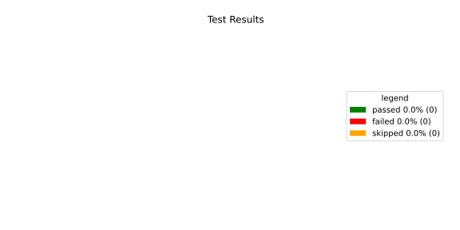
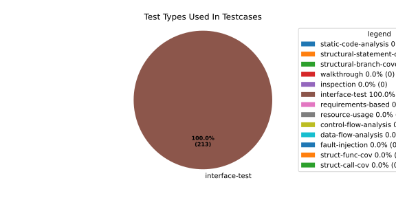
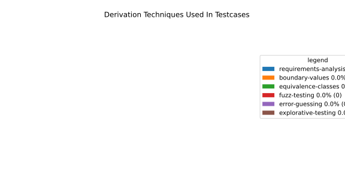

Verification Statistics#
Overview#

In Detail#



Failed Tests
Hint: This table should be empty. Before a PR can be merged all tests have to be successful.
No needs passed the filters
Skipped / Disabled Tests
testcase |
Result |
Fully Verifies |
Partially Verifies |
Test Type |
Derivation Technique |
link |
|---|---|---|---|---|---|---|
ValidateRangeTest/4__RejectsValueAboveMax |
skipped |
interface-test |
explorative-testing |
|||
ValidateRangeTest/4__RejectsValueBelowMin |
skipped |
interface-test |
explorative-testing |
All passed Tests#
testcase |
Result |
Fully Verifies |
Partially Verifies |
Test Type |
Derivation Technique |
link |
|---|---|---|---|---|---|---|
AliveImplTest__DoesNotThrowWhenInterfacePathEnvVarIsSet |
passed |
interface-test |
explorative-testing |
testcase__AliveImplTest__DoesNotThrowWhenInterfacePathEnvVarIsSet_xpewu |
||
AliveImplTest__ReportCheckpointSafeWhenNotConnected |
passed |
interface-test |
explorative-testing |
testcase__AliveImplTest__ReportCheckpointSafeWhenNotConnected_ppvuc |
||
AliveImplTest__ThrowsWhenInterfacePathEnvVarIsNotSet |
passed |
interface-test |
explorative-testing |
testcase__AliveImplTest__ThrowsWhenInterfacePathEnvVarIsNotSet_ekxfw |
||
AliveSupervisionTest__AliveDebouncesThroughFailedBeforeExpired |
passed |
interface-test |
explorative-testing |
testcase__AliveSupervisionTest__AliveDebouncesThroughFailedBeforeExpired_mlnbe |
||
AliveSupervisionTest__AliveReportsEnqueueFailureWhenRingBufferFull |
passed |
interface-test |
explorative-testing |
testcase__AliveSupervisionTest__AliveReportsEnqueueFailureWhenRingBufferFull_byhrd |
||
AliveSupervisionTest__AliveStaysOkWithCorrectHeartbeats |
passed |
interface-test |
explorative-testing |
testcase__AliveSupervisionTest__AliveStaysOkWithCorrectHeartbeats_vekof |
||
AliveSupervisionTest__AliveTransitionsOkToExpiredOnMissingHeartbeat |
passed |
interface-test |
explorative-testing |
testcase__AliveSupervisionTest__AliveTransitionsOkToExpiredOnMissingHeartbeat_jymxo |
||
AliveSupervisionTest__DeactivatesOnProcessCrash |
passed |
interface-test |
explorative-testing |
testcase__AliveSupervisionTest__DeactivatesOnProcessCrash_ypejs |
||
AliveSupervisionTest__DeactivatesOnProcessSigterm |
passed |
interface-test |
explorative-testing |
testcase__AliveSupervisionTest__DeactivatesOnProcessSigterm_hzaal |
||
AliveSupervisionTest__IgnoresIrrelevantProcessStates |
passed |
interface-test |
explorative-testing |
testcase__AliveSupervisionTest__IgnoresIrrelevantProcessStates_aolvb |
||
AliveSupervisionTest__MaxIndicationViolationExpires |
passed |
interface-test |
explorative-testing |
testcase__AliveSupervisionTest__MaxIndicationViolationExpires_whhhi |
||
AliveSupervisionTest__ReactivatesAfterCrash |
passed |
interface-test |
explorative-testing |
|||
ApplicationTypes/ApplicationTypeTest__ConvertsToExpectedValue/Native |
passed |
interface-test |
explorative-testing |
testcase__ApplicationTypes/ApplicationTypeTest__ConvertsToExpectedValue/Native_yxxcz |
||
ApplicationTypes/ApplicationTypeTest__ConvertsToExpectedValue/Reporting |
passed |
interface-test |
explorative-testing |
testcase__ApplicationTypes/ApplicationTypeTest__ConvertsToExpectedValue/Reporting_wcfwr |
||
ApplicationTypes/ApplicationTypeTest__ConvertsToExpectedValue/ReportingAndSupervised |
passed |
interface-test |
explorative-testing |
testcase__ApplicationTypes/ApplicationTypeTest__ConvertsToExpectedValue/ReportingAndSupervised_yxgad |
||
ApplicationTypes/ApplicationTypeTest__ConvertsToExpectedValue/StateManager |
passed |
interface-test |
explorative-testing |
testcase__ApplicationTypes/ApplicationTypeTest__ConvertsToExpectedValue/StateManager_ivuzc |
||
ConverterTest__ConvertAliveSupervisionMissingCycleReturnsError |
passed |
interface-test |
explorative-testing |
testcase__ConverterTest__ConvertAliveSupervisionMissingCycleReturnsError_bifzg |
||
ConverterTest__ConvertAliveSupervisionNullReturnsDefault |
passed |
interface-test |
explorative-testing |
testcase__ConverterTest__ConvertAliveSupervisionNullReturnsDefault_clyua |
||
ConverterTest__ConvertAliveSupervisionValid |
passed |
interface-test |
explorative-testing |
|||
ConverterTest__ConvertApplicationProfileMissingSelfTerminatingReturnsError |
passed |
interface-test |
explorative-testing |
testcase__ConverterTest__ConvertApplicationProfileMissingSelfTerminatingReturnsError_zddjb |
||
ConverterTest__ConvertApplicationProfileMissingTypeReturnsError |
passed |
interface-test |
explorative-testing |
testcase__ConverterTest__ConvertApplicationProfileMissingTypeReturnsError_zrfcs |
||
ConverterTest__ConvertApplicationProfileValid |
passed |
interface-test |
explorative-testing |
testcase__ConverterTest__ConvertApplicationProfileValid_oohxq |
||
ConverterTest__ConvertComponentAliveSupervisionBothIndicationsAbsentReturnsError |
passed |
interface-test |
explorative-testing |
testcase__ConverterTest__ConvertComponentAliveSupervisionBothIndicationsAbsentReturnsError_gvtfi |
||
ConverterTest__ConvertComponentAliveSupervisionMissingReportingCycleReturnsError |
passed |
interface-test |
explorative-testing |
testcase__ConverterTest__ConvertComponentAliveSupervisionMissingReportingCycleReturnsError_ajymy |
||
ConverterTest__ConvertComponentAliveSupervisionMissingToleranceReturnsError |
passed |
interface-test |
explorative-testing |
testcase__ConverterTest__ConvertComponentAliveSupervisionMissingToleranceReturnsError_lgrhj |
||
ConverterTest__ConvertComponentAliveSupervisionNullReturnsDefault |
passed |
interface-test |
explorative-testing |
testcase__ConverterTest__ConvertComponentAliveSupervisionNullReturnsDefault_xhaus |
||
ConverterTest__ConvertComponentAliveSupervisionOnlyMaxIndicationsPresent |
passed |
interface-test |
explorative-testing |
testcase__ConverterTest__ConvertComponentAliveSupervisionOnlyMaxIndicationsPresent_smwht |
||
ConverterTest__ConvertComponentAliveSupervisionOnlyMinIndicationsPresent |
passed |
interface-test |
explorative-testing |
testcase__ConverterTest__ConvertComponentAliveSupervisionOnlyMinIndicationsPresent_ybbrr |
||
ConverterTest__ConvertComponentAliveSupervisionValid |
passed |
interface-test |
explorative-testing |
testcase__ConverterTest__ConvertComponentAliveSupervisionValid_ijedh |
||
ConverterTest__ConvertComponentsValid |
passed |
interface-test |
explorative-testing |
|||
ConverterTest__ConvertComponentsWithInvalidComponentReturnsError |
passed |
interface-test |
explorative-testing |
testcase__ConverterTest__ConvertComponentsWithInvalidComponentReturnsError_wridc |
||
ConverterTest__ConvertComponentValid |
passed |
interface-test |
explorative-testing |
|||
ConverterTest__ConvertDeploymentConfigMissingReadyTimeoutReturnsError |
passed |
interface-test |
explorative-testing |
testcase__ConverterTest__ConvertDeploymentConfigMissingReadyTimeoutReturnsError_ljzfl |
||
ConverterTest__ConvertDeploymentConfigMissingShutdownTimeoutReturnsError |
passed |
interface-test |
explorative-testing |
testcase__ConverterTest__ConvertDeploymentConfigMissingShutdownTimeoutReturnsError_vyqye |
||
ConverterTest__ConvertDeploymentConfigValid |
passed |
interface-test |
explorative-testing |
|||
ConverterTest__ConvertEnvironmentalVariables |
passed |
interface-test |
explorative-testing |
testcase__ConverterTest__ConvertEnvironmentalVariables_fnhgo |
||
ConverterTest__ConvertEnvironmentalVariablesNullReturnsEmpty |
passed |
interface-test |
explorative-testing |
testcase__ConverterTest__ConvertEnvironmentalVariablesNullReturnsEmpty_vglrx |
||
ConverterTest__ConvertFallbackRunTargetMissingTimeoutReturnsError |
passed |
interface-test |
explorative-testing |
testcase__ConverterTest__ConvertFallbackRunTargetMissingTimeoutReturnsError_aevly |
||
ConverterTest__ConvertFallbackRunTargetValid |
passed |
interface-test |
explorative-testing |
testcase__ConverterTest__ConvertFallbackRunTargetValid_nexxj |
||
ConverterTest__ConvertReadyConditionMissingProcessStateReturnsError |
passed |
interface-test |
explorative-testing |
testcase__ConverterTest__ConvertReadyConditionMissingProcessStateReturnsError_ileav |
||
ConverterTest__ConvertReadyConditionValid |
passed |
interface-test |
explorative-testing |
|||
ConverterTest__ConvertRestartActionMissingFieldsReturnsError |
passed |
interface-test |
explorative-testing |
testcase__ConverterTest__ConvertRestartActionMissingFieldsReturnsError_aapjb |
||
ConverterTest__ConvertRestartActionNullReturnsNullopt |
passed |
interface-test |
explorative-testing |
testcase__ConverterTest__ConvertRestartActionNullReturnsNullopt_ifvyd |
||
ConverterTest__ConvertRestartActionValid |
passed |
interface-test |
explorative-testing |
|||
ConverterTest__ConvertRunTargetMissingTransitionTimeoutReturnsError |
passed |
interface-test |
explorative-testing |
testcase__ConverterTest__ConvertRunTargetMissingTransitionTimeoutReturnsError_ynekv |
||
ConverterTest__ConvertRunTargetsValid |
passed |
interface-test |
explorative-testing |
|||
ConverterTest__ConvertRunTargetsWithInvalidRunTargetReturnsError |
passed |
interface-test |
explorative-testing |
testcase__ConverterTest__ConvertRunTargetsWithInvalidRunTargetReturnsError_ldlox |
||
ConverterTest__ConvertRunTargetValid |
passed |
interface-test |
explorative-testing |
|||
ConverterTest__ConvertSandboxMissingGidReturnsError |
passed |
interface-test |
explorative-testing |
testcase__ConverterTest__ConvertSandboxMissingGidReturnsError_veeel |
||
ConverterTest__ConvertSandboxMissingSchedulingPolicyReturnsError |
passed |
interface-test |
explorative-testing |
testcase__ConverterTest__ConvertSandboxMissingSchedulingPolicyReturnsError_pkfts |
||
ConverterTest__ConvertSandboxMissingSchedulingPriorityReturnsError |
passed |
interface-test |
explorative-testing |
testcase__ConverterTest__ConvertSandboxMissingSchedulingPriorityReturnsError_xzdho |
||
ConverterTest__ConvertSandboxMissingUidReturnsError |
passed |
interface-test |
explorative-testing |
testcase__ConverterTest__ConvertSandboxMissingUidReturnsError_ogfku |
||
ConverterTest__ConvertSandboxSupplementaryGidOutOfRangeReturnsError |
passed |
interface-test |
explorative-testing |
testcase__ConverterTest__ConvertSandboxSupplementaryGidOutOfRangeReturnsError_zavpx |
||
ConverterTest__ConvertSandboxUidOutOfRangeReturnsError |
passed |
interface-test |
explorative-testing |
testcase__ConverterTest__ConvertSandboxUidOutOfRangeReturnsError_mcuaf |
||
ConverterTest__ConvertSandboxValid |
passed |
interface-test |
explorative-testing |
|||
ConverterTest__ConvertSwitchRunTargetActionNullReturnsNullopt |
passed |
interface-test |
explorative-testing |
testcase__ConverterTest__ConvertSwitchRunTargetActionNullReturnsNullopt_zmitx |
||
ConverterTest__ConvertSwitchRunTargetActionValid |
passed |
interface-test |
explorative-testing |
testcase__ConverterTest__ConvertSwitchRunTargetActionValid_tdklr |
||
ConverterTest__ConvertWatchdogMissingDeactivateReturnsError |
passed |
interface-test |
explorative-testing |
testcase__ConverterTest__ConvertWatchdogMissingDeactivateReturnsError_gzwjt |
||
ConverterTest__ConvertWatchdogMissingMagicCloseReturnsError |
passed |
interface-test |
explorative-testing |
testcase__ConverterTest__ConvertWatchdogMissingMagicCloseReturnsError_gexxk |
||
ConverterTest__ConvertWatchdogMissingMaxTimeoutReturnsError |
passed |
interface-test |
explorative-testing |
testcase__ConverterTest__ConvertWatchdogMissingMaxTimeoutReturnsError_lffxm |
||
ConverterTest__ConvertWatchdogNullReturnsNullopt |
passed |
interface-test |
explorative-testing |
testcase__ConverterTest__ConvertWatchdogNullReturnsNullopt_irsdk |
||
ConverterTest__ConvertWatchdogValid |
passed |
interface-test |
explorative-testing |
|||
DeadlineFixture__Start_AlreadyRunning |
passed |
interface-test |
explorative-testing |
|||
DeadlineFixture__Start_Succeeds |
passed |
interface-test |
explorative-testing |
|||
DeadlineMonitorBuilderFixture__AddDeadline_Succeeds |
passed |
interface-test |
explorative-testing |
testcase__DeadlineMonitorBuilderFixture__AddDeadline_Succeeds_nagke |
||
DeadlineMonitorBuilderFixture__New_Succeeds |
passed |
interface-test |
explorative-testing |
|||
DeadlineMonitorFixture__GetDeadline_Succeeds |
passed |
interface-test |
explorative-testing |
testcase__DeadlineMonitorFixture__GetDeadline_Succeeds_tmltf |
||
DeadlineMonitorFixture__GetDeadline_Unknown |
passed |
interface-test |
explorative-testing |
|||
EnumConversionTest__ConvertSchedulingPolicyUnsupported |
passed |
interface-test |
explorative-testing |
testcase__EnumConversionTest__ConvertSchedulingPolicyUnsupported_iavqm |
||
EnvironmentTest__AddIncreasesSize |
passed |
interface-test |
explorative-testing |
|||
EnvironmentTest__DefaultConstructedIsEmpty |
passed |
interface-test |
explorative-testing |
|||
EnvironmentTest__EmptyEnvironmentEnvpIsNullTerminated |
passed |
interface-test |
explorative-testing |
testcase__EnvironmentTest__EmptyEnvironmentEnvpIsNullTerminated_wwumw |
||
EnvironmentTest__EnvpReturnsNullTerminatedArray |
passed |
interface-test |
explorative-testing |
testcase__EnvironmentTest__EnvpReturnsNullTerminatedArray_aubkv |
||
EnvironmentTest__EnvpWithMultipleEntries |
passed |
interface-test |
explorative-testing |
|||
EnvironmentTest__MoveAssignmentPreservesEntries |
passed |
interface-test |
explorative-testing |
testcase__EnvironmentTest__MoveAssignmentPreservesEntries_vkydj |
||
EnvironmentTest__MoveConstructorPreservesEntries |
passed |
interface-test |
explorative-testing |
testcase__EnvironmentTest__MoveConstructorPreservesEntries_upclt |
||
EnvironmentTest__RangeBasedForLoopWorks |
passed |
interface-test |
explorative-testing |
|||
EnvironmentTest__ReserveAndAddAvoidReallocation |
passed |
interface-test |
explorative-testing |
testcase__EnvironmentTest__ReserveAndAddAvoidReallocation_lgzmu |
||
EnvironmentTest__SsoLengthStringSurvivesReallocation |
passed |
interface-test |
explorative-testing |
testcase__EnvironmentTest__SsoLengthStringSurvivesReallocation_jfmtl |
||
EnvironmentVariableTest__CStrReturnsKeyEqualsValue |
passed |
interface-test |
explorative-testing |
testcase__EnvironmentVariableTest__CStrReturnsKeyEqualsValue_rkwan |
||
EnvironmentVariableTest__EmptyValue |
passed |
interface-test |
explorative-testing |
|||
EnvironmentVariableTest__KeyAndValueAreAccessible |
passed |
interface-test |
explorative-testing |
testcase__EnvironmentVariableTest__KeyAndValueAreAccessible_kcrth |
||
EnvironmentVariableTest__ValueContainingEquals |
passed |
interface-test |
explorative-testing |
testcase__EnvironmentVariableTest__ValueContainingEquals_apzgz |
||
ExecErrorDomainTest__AllKnownCodesHaveDistinctMessages |
passed |
interface-test |
explorative-testing |
testcase__ExecErrorDomainTest__AllKnownCodesHaveDistinctMessages_qpoka |
||
ExecErrorDomainTest__AllKnownCodesReturnNonEmptyMessage |
passed |
interface-test |
explorative-testing |
testcase__ExecErrorDomainTest__AllKnownCodesReturnNonEmptyMessage_bawzg |
||
ExecErrorDomainTest__UnknownCodeReturnsNonEmptyMessage |
passed |
interface-test |
explorative-testing |
testcase__ExecErrorDomainTest__UnknownCodeReturnsNonEmptyMessage_kkwpr |
||
FlatbufferConfigLoaderTest__CorruptedBufferReturnsInvalidFormat |
passed |
interface-test |
explorative-testing |
testcase__FlatbufferConfigLoaderTest__CorruptedBufferReturnsInvalidFormat_twyac |
||
FlatbufferConfigLoaderTest__LoadAliveSupervision |
passed |
interface-test |
explorative-testing |
testcase__FlatbufferConfigLoaderTest__LoadAliveSupervision_hhuux |
||
FlatbufferConfigLoaderTest__LoadBufferFailsWithGenericErrorReturnsGeneralError |
passed |
interface-test |
explorative-testing |
testcase__FlatbufferConfigLoaderTest__LoadBufferFailsWithGenericErrorReturnsGeneralError_kmatm |
||
FlatbufferConfigLoaderTest__LoadBufferFailsWithNoSuchFileReturnsFileNotFound |
passed |
interface-test |
explorative-testing |
testcase__FlatbufferConfigLoaderTest__LoadBufferFailsWithNoSuchFileReturnsFileNotFound_yzlra |
||
FlatbufferConfigLoaderTest__LoadBufferFailsWithPermissionDeniedReturnsInsufficientPermission |
passed |
interface-test |
explorative-testing |
|||
FlatbufferConfigLoaderTest__LoadComponentAliveSupervision |
passed |
interface-test |
explorative-testing |
testcase__FlatbufferConfigLoaderTest__LoadComponentAliveSupervision_fwfad |
||
FlatbufferConfigLoaderTest__LoadEnvironmentalVariables |
passed |
interface-test |
explorative-testing |
testcase__FlatbufferConfigLoaderTest__LoadEnvironmentalVariables_wsosu |
||
FlatbufferConfigLoaderTest__LoadFallbackRunTarget |
passed |
interface-test |
explorative-testing |
testcase__FlatbufferConfigLoaderTest__LoadFallbackRunTarget_wduqm |
||
FlatbufferConfigLoaderTest__LoadMinimalConfig |
passed |
interface-test |
explorative-testing |
testcase__FlatbufferConfigLoaderTest__LoadMinimalConfig_hdkck |
||
FlatbufferConfigLoaderTest__LoadMultipleComponents |
passed |
interface-test |
explorative-testing |
testcase__FlatbufferConfigLoaderTest__LoadMultipleComponents_abpom |
||
FlatbufferConfigLoaderTest__LoadRestartRecoveryAction |
passed |
interface-test |
explorative-testing |
testcase__FlatbufferConfigLoaderTest__LoadRestartRecoveryAction_wyfqg |
||
FlatbufferConfigLoaderTest__LoadRunTargets |
passed |
interface-test |
explorative-testing |
|||
FlatbufferConfigLoaderTest__LoadSandbox |
passed |
interface-test |
explorative-testing |
|||
FlatbufferConfigLoaderTest__LoadSingleComponent |
passed |
interface-test |
explorative-testing |
testcase__FlatbufferConfigLoaderTest__LoadSingleComponent_yidty |
||
FlatbufferConfigLoaderTest__LoadSwitchRunTargetAction |
passed |
interface-test |
explorative-testing |
testcase__FlatbufferConfigLoaderTest__LoadSwitchRunTargetAction_uchgp |
||
FlatbufferConfigLoaderTest__LoadWatchdog |
passed |
interface-test |
explorative-testing |
|||
FlatbufferConfigLoaderTest__MissingSchemaVersionReturnsInvalidFormat |
passed |
interface-test |
explorative-testing |
testcase__FlatbufferConfigLoaderTest__MissingSchemaVersionReturnsInvalidFormat_qqmfn |
||
FlatbufferConfigLoaderTest__OptionalReadyConditionAbsent |
passed |
interface-test |
explorative-testing |
testcase__FlatbufferConfigLoaderTest__OptionalReadyConditionAbsent_lhddx |
||
FlatbufferConfigLoaderTest__OptionalWatchdogAbsent |
passed |
interface-test |
explorative-testing |
testcase__FlatbufferConfigLoaderTest__OptionalWatchdogAbsent_pkhkp |
||
FlatbufferConfigLoaderTest__WrongSchemaVersionReturnsUnsupportedVersion |
passed |
interface-test |
explorative-testing |
testcase__FlatbufferConfigLoaderTest__WrongSchemaVersionReturnsUnsupportedVersion_zrbjv |
||
HealthMonitor__GetDeadlineMonitor_Available |
passed |
|||||
HealthMonitor__GetDeadlineMonitor_Taken |
passed |
|||||
HealthMonitor__GetDeadlineMonitor_Unknown |
passed |
|||||
HealthMonitor__GetHeartbeatMonitor_Available |
passed |
testcase__HealthMonitor__GetHeartbeatMonitor_Available_aacat |
||||
HealthMonitor__GetHeartbeatMonitor_Taken |
passed |
|||||
HealthMonitor__GetHeartbeatMonitor_Unknown |
passed |
|||||
HealthMonitor__GetLogicMonitor_Available |
passed |
|||||
HealthMonitor__GetLogicMonitor_Taken |
passed |
|||||
HealthMonitor__GetLogicMonitor_Unknown |
passed |
|||||
HealthMonitor__Start_MonitorsNotTaken |
passed |
|||||
HealthMonitor__Start_Succeeds |
passed |
|||||
HealthMonitorBuilderFixture__Build_InvalidCycles |
passed |
interface-test |
explorative-testing |
testcase__HealthMonitorBuilderFixture__Build_InvalidCycles_pdigk |
||
HealthMonitorBuilderFixture__Build_NoMonitors |
passed |
interface-test |
explorative-testing |
testcase__HealthMonitorBuilderFixture__Build_NoMonitors_ktcve |
||
HealthMonitorBuilderFixture__Build_Succeeds |
passed |
interface-test |
explorative-testing |
|||
HealthMonitorBuilderFixture__New_Succeeds |
passed |
interface-test |
explorative-testing |
|||
HealthMonitorTest__Integrated |
passed |
interface-test |
explorative-testing |
|||
HeartbeatMonitor__Heartbeat_Succeeds |
passed |
interface-test |
explorative-testing |
|||
HeartbeatMonitorBuilder__New_Succeeds |
passed |
interface-test |
explorative-testing |
|||
IdentifierHashTest__IdentifierHash_default_created |
passed |
interface-test |
explorative-testing |
testcase__IdentifierHashTest__IdentifierHash_default_created_yhhvi |
||
IdentifierHashTest__IdentifierHash_EqualityOperators |
passed |
interface-test |
explorative-testing |
testcase__IdentifierHashTest__IdentifierHash_EqualityOperators_nnsuj |
||
IdentifierHashTest__IdentifierHash_invalid_hash_no_string_representation |
passed |
interface-test |
explorative-testing |
testcase__IdentifierHashTest__IdentifierHash_invalid_hash_no_string_representation_rxowr |
||
IdentifierHashTest__IdentifierHash_LessThanOperator |
passed |
interface-test |
explorative-testing |
testcase__IdentifierHashTest__IdentifierHash_LessThanOperator_rnbax |
||
IdentifierHashTest__IdentifierHash_no_dangling_pointer_after_source_string_dies |
passed |
interface-test |
explorative-testing |
testcase__IdentifierHashTest__IdentifierHash_no_dangling_pointer_after_source_string_dies_qsjin |
||
IdentifierHashTest__IdentifierHash_with_string_created |
passed |
interface-test |
explorative-testing |
testcase__IdentifierHashTest__IdentifierHash_with_string_created_aygdm |
||
IdentifierHashTest__IdentifierHash_with_string_view_created |
passed |
interface-test |
explorative-testing |
testcase__IdentifierHashTest__IdentifierHash_with_string_view_created_dbpol |
||
LogicMonitorBuilderFixture__AddState_Succeeds |
passed |
interface-test |
explorative-testing |
testcase__LogicMonitorBuilderFixture__AddState_Succeeds_axdxj |
||
LogicMonitorBuilderFixture__New_Succeeds |
passed |
interface-test |
explorative-testing |
|||
LogicMonitorFixture__State_Invalid |
passed |
interface-test |
explorative-testing |
|||
LogicMonitorFixture__State_Succeeds |
passed |
interface-test |
explorative-testing |
|||
LogicMonitorFixture__Transition_Invalid |
passed |
interface-test |
explorative-testing |
|||
LogicMonitorFixture__Transition_Succeeds |
passed |
interface-test |
explorative-testing |
|||
LogicMonitorFixture__Transition_Unknown |
passed |
interface-test |
explorative-testing |
|||
MonitorIfDaemonTest__Active_CheckpointDataForwarded |
passed |
interface-test |
explorative-testing |
testcase__MonitorIfDaemonTest__Active_CheckpointDataForwarded_evumz |
||
MonitorIfDaemonTest__Active_FutureTimestamp_NotForwardedInCurrentCycle |
passed |
interface-test |
explorative-testing |
testcase__MonitorIfDaemonTest__Active_FutureTimestamp_NotForwardedInCurrentCycle_oycau |
||
MonitorIfDaemonTest__Active_FutureTimestampCheckpoint_ConsumedInLaterCycle |
passed |
interface-test |
explorative-testing |
testcase__MonitorIfDaemonTest__Active_FutureTimestampCheckpoint_ConsumedInLaterCycle_veyyy |
||
MonitorIfDaemonTest__Active_MultipleCheckpointsInOneCycle_AllForwarded |
passed |
interface-test |
explorative-testing |
testcase__MonitorIfDaemonTest__Active_MultipleCheckpointsInOneCycle_AllForwarded_gmbms |
||
MonitorIfDaemonTest__Active_NonMatchingCheckpointId_NotForwarded |
passed |
interface-test |
explorative-testing |
testcase__MonitorIfDaemonTest__Active_NonMatchingCheckpointId_NotForwarded_bohck |
||
MonitorIfDaemonTest__Active_OverflowDetected_TransitionsToInactiveOverflow |
passed |
interface-test |
explorative-testing |
testcase__MonitorIfDaemonTest__Active_OverflowDetected_TransitionsToInactiveOverflow_ovitk |
||
MonitorIfDaemonTest__Active_TwoAttachedCheckpoints_RoutedByCheckpointId |
passed |
interface-test |
explorative-testing |
testcase__MonitorIfDaemonTest__Active_TwoAttachedCheckpoints_RoutedByCheckpointId_skqhd |
||
MonitorIfDaemonTest__GetInterfaceName_ReturnsNameGivenAtConstruction |
passed |
interface-test |
explorative-testing |
testcase__MonitorIfDaemonTest__GetInterfaceName_ReturnsNameGivenAtConstruction_iaemz |
||
MonitorIfDaemonTest__InactiveOverflow_NoProcessRestart_DoesNotRepeatNotification |
passed |
interface-test |
explorative-testing |
testcase__MonitorIfDaemonTest__InactiveOverflow_NoProcessRestart_DoesNotRepeatNotification_gdbxg |
||
MonitorIfDaemonTest__InactiveOverflow_ProcessRestartFlag_ClearedAfterNotification |
passed |
interface-test |
explorative-testing |
testcase__MonitorIfDaemonTest__InactiveOverflow_ProcessRestartFlag_ClearedAfterNotification_pqfyy |
||
MonitorIfDaemonTest__InactiveOverflow_ProcessRestarts_PushesOverflowNotificationAgain |
passed |
interface-test |
explorative-testing |
|||
MonitorIfDaemonTest__InitiallyInactive_CheckForNewData_DoesNotNotifyCheckpoint |
passed |
interface-test |
explorative-testing |
testcase__MonitorIfDaemonTest__InitiallyInactive_CheckForNewData_DoesNotNotifyCheckpoint_wjrfl |
||
MonitorIfDaemonTest__ProcessOff_DeactivatesMonitor_NoFurtherDataForwarded |
passed |
interface-test |
explorative-testing |
testcase__MonitorIfDaemonTest__ProcessOff_DeactivatesMonitor_NoFurtherDataForwarded_uialh |
||
MonitorIfDaemonTest__ProcessOffBeforeActivation_RemainsInactive |
passed |
interface-test |
explorative-testing |
testcase__MonitorIfDaemonTest__ProcessOffBeforeActivation_RemainsInactive_kzzyy |
||
MonitorIfDaemonTest__ProcessRunning_ActivatesMonitorOnNextCheckForNewData |
passed |
interface-test |
explorative-testing |
testcase__MonitorIfDaemonTest__ProcessRunning_ActivatesMonitorOnNextCheckForNewData_fkkmk |
||
MonitorIfDaemonTest__ProcessStarting_AlsoActivatesMonitor |
passed |
interface-test |
explorative-testing |
testcase__MonitorIfDaemonTest__ProcessStarting_AlsoActivatesMonitor_xdkbg |
||
MPMCConcurrentQueueTest_Basic__LvaluePushCopiesItem |
passed |
testcase__MPMCConcurrentQueueTest_Basic__LvaluePushCopiesItem_oysfc |
||||
MPMCConcurrentQueueTest_Basic__PopReturnsNulloptOnSemaphoreWaitFailure |
passed |
testcase__MPMCConcurrentQueueTest_Basic__PopReturnsNulloptOnSemaphoreWaitFailure_rgznm |
||||
MPMCConcurrentQueueTest_Basic__PushAndPopPreservesOrder |
passed |
testcase__MPMCConcurrentQueueTest_Basic__PushAndPopPreservesOrder_aijdb |
||||
MPMCConcurrentQueueTest_Basic__PushAndPopSingleItem |
passed |
testcase__MPMCConcurrentQueueTest_Basic__PushAndPopSingleItem_jrxwz |
||||
MPMCConcurrentQueueTest_Basic__RvaluePushWorksWithMoveOnlyType |
passed |
testcase__MPMCConcurrentQueueTest_Basic__RvaluePushWorksWithMoveOnlyType_cxxaj |
||||
MPMCConcurrentQueueTest_Blocking__PopBlocksUntilItemAvailable |
passed |
testcase__MPMCConcurrentQueueTest_Blocking__PopBlocksUntilItemAvailable_ttwcx |
||||
MPMCConcurrentQueueTest_Blocking__PushBlocksWhenFull |
passed |
testcase__MPMCConcurrentQueueTest_Blocking__PushBlocksWhenFull_ecujf |
||||
MPMCConcurrentQueueTest_Blocking__StopUnblocksBlockedConsumer |
passed |
testcase__MPMCConcurrentQueueTest_Blocking__StopUnblocksBlockedConsumer_snzyr |
||||
MPMCConcurrentQueueTest_Blocking__StopUnblocksBlockedProducer |
passed |
testcase__MPMCConcurrentQueueTest_Blocking__StopUnblocksBlockedProducer_inddu |
||||
MPMCConcurrentQueueTest_MPMC__AllItemsDelivered |
passed |
testcase__MPMCConcurrentQueueTest_MPMC__AllItemsDelivered_ztjqe |
||||
MPMCConcurrentQueueTest_Stop__ItemsAreDroppedAfterStop |
passed |
testcase__MPMCConcurrentQueueTest_Stop__ItemsAreDroppedAfterStop_ragzw |
||||
MPMCConcurrentQueueTest_Stop__PopReturnsNulloptWhenStoppedAndEmpty |
passed |
testcase__MPMCConcurrentQueueTest_Stop__PopReturnsNulloptWhenStoppedAndEmpty_cevga |
||||
MPMCConcurrentQueueTest_Stop__PushReturnsFalseAfterStop |
passed |
testcase__MPMCConcurrentQueueTest_Stop__PushReturnsFalseAfterStop_qqnhw |
||||
MPMCConcurrentQueueTest_Timeout__PushWithTimeoutReturnsFalseWhenFull |
passed |
testcase__MPMCConcurrentQueueTest_Timeout__PushWithTimeoutReturnsFalseWhenFull_aeips |
||||
MPMCConcurrentQueueTest_Timeout__PushWithTimeoutSucceedsWhenSlotAvailable |
passed |
testcase__MPMCConcurrentQueueTest_Timeout__PushWithTimeoutSucceedsWhenSlotAvailable_klzpo |
||||
OsHandlerTest__WaitReturnsError_OsHandlerSleepsAndDoesNotCallFindTerminated |
passed |
interface-test |
explorative-testing |
testcase__OsHandlerTest__WaitReturnsError_OsHandlerSleepsAndDoesNotCallFindTerminated_cibtr |
||
OsHandlerTest__WaitReturnsErrorThenProcessId_HandlerRecoversAndInvokesCallback |
passed |
interface-test |
explorative-testing |
testcase__OsHandlerTest__WaitReturnsErrorThenProcessId_HandlerRecoversAndInvokesCallback_nqstd |
||
OsHandlerTest__WaitReturnsProcessId_FindTerminatedIsCalled |
passed |
interface-test |
explorative-testing |
testcase__OsHandlerTest__WaitReturnsProcessId_FindTerminatedIsCalled_chlsq |
||
OsHandlerTest__WaitReturnsProcessIdBeforeRegistration_LaterRegistrationReceivesStoredTermination |
passed |
interface-test |
explorative-testing |
|||
OsHandlerTest__WaitReturnsUnknownPidWhenMapIsFull_OutOfResourcesPathDoesNotNotifyCallbacks |
passed |
interface-test |
explorative-testing |
|||
OsHandlerTest__WaitReturnsZeroPid_OsHandlerSleepsAndDoesNotCallFindTerminated |
passed |
interface-test |
explorative-testing |
testcase__OsHandlerTest__WaitReturnsZeroPid_OsHandlerSleepsAndDoesNotCallFindTerminated_rkttz |
||
ProcessStateClient_UT__ProcessStateClient_ConstructReceiver_Succeeds |
passed |
interface-test |
explorative-testing |
testcase__ProcessStateClient_UT__ProcessStateClient_ConstructReceiver_Succeeds_hodwy |
||
ProcessStateClient_UT__ProcessStateClient_QueueMaxNumberOfProcesses_Succeeds |
passed |
interface-test |
explorative-testing |
testcase__ProcessStateClient_UT__ProcessStateClient_QueueMaxNumberOfProcesses_Succeeds_qohom |
||
ProcessStateClient_UT__ProcessStateClient_QueueOneProcess_Succeeds |
passed |
interface-test |
explorative-testing |
testcase__ProcessStateClient_UT__ProcessStateClient_QueueOneProcess_Succeeds_tmzfz |
||
ProcessStateClient_UT__ProcessStateClient_QueueOneProcessTooMany_Fails |
passed |
interface-test |
explorative-testing |
testcase__ProcessStateClient_UT__ProcessStateClient_QueueOneProcessTooMany_Fails_sspoj |
||
ProcessStates/ProcessStateTest__ConvertsToExpectedValue/Running |
passed |
interface-test |
explorative-testing |
testcase__ProcessStates/ProcessStateTest__ConvertsToExpectedValue/Running_hinlr |
||
ProcessStates/ProcessStateTest__ConvertsToExpectedValue/Terminated |
passed |
interface-test |
explorative-testing |
testcase__ProcessStates/ProcessStateTest__ConvertsToExpectedValue/Terminated_zrytn |
||
RecoveryClientTest__FIFOOrdering |
passed |
interface-test |
explorative-testing |
|||
RecoveryClientTest__GetNextRequest |
passed |
interface-test |
explorative-testing |
|||
RecoveryClientTest__GetNextRequestEmpty |
passed |
interface-test |
explorative-testing |
|||
RecoveryClientTest__RingBufferFull |
passed |
interface-test |
explorative-testing |
|||
RecoveryClientTest__SendSingleRequest |
passed |
interface-test |
explorative-testing |
|||
RunTest__AsPosixProcessCreatesAndDestroysLifeCycleManager |
passed |
testcase__RunTest__AsPosixProcessCreatesAndDestroysLifeCycleManager_sooex |
||||
RunTest__AsPosixProcessForwardsConstructorArgsToApplication |
passed |
testcase__RunTest__AsPosixProcessForwardsConstructorArgsToApplication_dmeur |
||||
RunTest__AsPosixProcessForwardsNonZeroExitCode |
passed |
testcase__RunTest__AsPosixProcessForwardsNonZeroExitCode_lldqd |
||||
RunTest__AsPosixProcessPassesCorrectApplicationTypeToRun |
passed |
testcase__RunTest__AsPosixProcessPassesCorrectApplicationTypeToRun_ajqwz |
||||
RunTest__AsPosixProcessReturnsZeroExitCode |
passed |
|||||
RunTest__RunApplicationFreeFunctionDelegatesToAsPosixProcess |
passed |
testcase__RunTest__RunApplicationFreeFunctionDelegatesToAsPosixProcess_ccing |
||||
RunTest__RunConstructorPassesArgcArgvToApplicationContext |
passed |
testcase__RunTest__RunConstructorPassesArgcArgvToApplicationContext_agerd |
||||
SafeProcessMapTest__ConcurrentFindAndInsertFromMultipleThreads |
passed |
interface-test |
explorative-testing |
testcase__SafeProcessMapTest__ConcurrentFindAndInsertFromMultipleThreads_kzfyg |
||
SafeProcessMapTest__ConcurrentInsertAndFindFromMultipleThreads |
passed |
interface-test |
explorative-testing |
testcase__SafeProcessMapTest__ConcurrentInsertAndFindFromMultipleThreads_hnyqj |
||
SafeProcessMapTest__ConstructWithZeroCapacity |
passed |
interface-test |
explorative-testing |
testcase__SafeProcessMapTest__ConstructWithZeroCapacity_gjmqg |
||
SafeProcessMapTest__FindTerminatedInsertsEntryWhenPidNotPresent |
passed |
interface-test |
explorative-testing |
testcase__SafeProcessMapTest__FindTerminatedInsertsEntryWhenPidNotPresent_ixtlt |
||
SafeProcessMapTest__FindTerminatedMatchesExistingInsertAndCallsCallback |
passed |
interface-test |
explorative-testing |
testcase__SafeProcessMapTest__FindTerminatedMatchesExistingInsertAndCallsCallback_ehuzb |
||
SafeProcessMapTest__FindTerminatedSamePidTwiceYieldsUntilInsertResolves |
passed |
interface-test |
explorative-testing |
testcase__SafeProcessMapTest__FindTerminatedSamePidTwiceYieldsUntilInsertResolves_hsekx |
||
SafeProcessMapTest__FindTerminatedWithNegativePidReturnsInvalid |
passed |
interface-test |
explorative-testing |
testcase__SafeProcessMapTest__FindTerminatedWithNegativePidReturnsInvalid_dewoh |
||
SafeProcessMapTest__FindTerminatedWorksAtMaxTreeDepth |
passed |
interface-test |
explorative-testing |
testcase__SafeProcessMapTest__FindTerminatedWorksAtMaxTreeDepth_adtzi |
||
SafeProcessMapTest__InsertBeyondCapacityReturnsOutOfMemory |
passed |
interface-test |
explorative-testing |
testcase__SafeProcessMapTest__InsertBeyondCapacityReturnsOutOfMemory_qjnie |
||
SafeProcessMapTest__InsertIntoEmptyTreeReturnsZero |
passed |
interface-test |
explorative-testing |
testcase__SafeProcessMapTest__InsertIntoEmptyTreeReturnsZero_zfbaq |
||
SafeProcessMapTest__InsertMatchesExistingFindTerminatedEntry |
passed |
interface-test |
explorative-testing |
testcase__SafeProcessMapTest__InsertMatchesExistingFindTerminatedEntry_fuwrp |
||
SafeProcessMapTest__InsertMultipleNodesThenFindTerminatedRemovesAll |
passed |
interface-test |
explorative-testing |
testcase__SafeProcessMapTest__InsertMultipleNodesThenFindTerminatedRemovesAll_fvowh |
||
SafeProcessMapTest__InsertSamePidTwiceYieldsUntilFindTerminatedResolves |
passed |
interface-test |
explorative-testing |
testcase__SafeProcessMapTest__InsertSamePidTwiceYieldsUntilFindTerminatedResolves_wzwyb |
||
SchedulingPolicies/SchedulingPolicyTest__ConvertsToExpectedPosixValue/SCHED_FIFO |
passed |
interface-test |
explorative-testing |
testcase__SchedulingPolicies/SchedulingPolicyTest__ConvertsToExpectedPosixValue/SCHED_FIFO_soddq |
||
SchedulingPolicies/SchedulingPolicyTest__ConvertsToExpectedPosixValue/SCHED_OTHER |
passed |
interface-test |
explorative-testing |
testcase__SchedulingPolicies/SchedulingPolicyTest__ConvertsToExpectedPosixValue/SCHED_OTHER_oigmk |
||
SchedulingPolicies/SchedulingPolicyTest__ConvertsToExpectedPosixValue/SCHED_RR |
passed |
interface-test |
explorative-testing |
testcase__SchedulingPolicies/SchedulingPolicyTest__ConvertsToExpectedPosixValue/SCHED_RR_pcjci |
||
score/health_monitor/src/rust/test-510566969/tests |
passed |
testcase__score/health_monitor/src/rust/test-510566969/tests_kjjlw |
||||
score/health_monitor/src/rust/test-827801879/loom_tests |
passed |
testcase__score/health_monitor/src/rust/test-827801879/loom_tests_cpmix |
||||
SecondsToMsTest__ConvertsPositiveValue |
passed |
interface-test |
explorative-testing |
|||
SecondsToMsTest__ConvertsZero |
passed |
interface-test |
explorative-testing |
|||
SecondsToMsTest__RejectsNegativeValue |
passed |
interface-test |
explorative-testing |
|||
SecondsToMsTest__RejectsOverflow |
passed |
interface-test |
explorative-testing |
|||
SecondsToMsTest__RejectsSubMillisecond |
passed |
interface-test |
explorative-testing |
|||
StringHelperTest__ConvertGidVectorReturnsEmptyWhenNull |
passed |
interface-test |
explorative-testing |
testcase__StringHelperTest__ConvertGidVectorReturnsEmptyWhenNull_jmcsr |
||
StringHelperTest__ConvertStringVectorReturnsEmptyWhenNull |
passed |
interface-test |
explorative-testing |
testcase__StringHelperTest__ConvertStringVectorReturnsEmptyWhenNull_zsuvv |
||
StringHelperTest__SafeStringReturnsEmptyWhenNull |
passed |
interface-test |
explorative-testing |
testcase__StringHelperTest__SafeStringReturnsEmptyWhenNull_crelr |
||
StringHelperTest__SafeStringReturnsValueWhenNotNull |
passed |
interface-test |
explorative-testing |
testcase__StringHelperTest__SafeStringReturnsValueWhenNotNull_anbko |
||
test_complex_monitoring |
passed |
|||||
test_crash_on_startup |
passed |
|||||
test_incorrect_config_non_reporting |
passed |
|||||
test_process_crash_monitoring |
passed |
|||||
test_process_launch_args |
passed |
|||||
test_process_wrong_binary_failure |
passed |
|||||
test_recovery_action_complex_rep_failure |
passed |
|||||
test_recovery_action_simple_rep_failure |
passed |
|||||
test_smoke |
passed |
|||||
test_switch_run_target |
passed |
|||||
TimeRangeFixture__MinMax |
passed |
interface-test |
explorative-testing |
|||
TimeRangeFixture__New_InvalidOrder |
passed |
interface-test |
explorative-testing |
|||
TimeRangeFixture__New_Succeeds |
passed |
interface-test |
explorative-testing |
|||
ValidateRangeTest/0__AcceptsMaxBoundary |
passed |
interface-test |
explorative-testing |
|||
ValidateRangeTest/0__AcceptsMinBoundary |
passed |
interface-test |
explorative-testing |
|||
ValidateRangeTest/0__AcceptsZero |
passed |
interface-test |
explorative-testing |
|||
ValidateRangeTest/0__RejectsValueAboveMax |
passed |
interface-test |
explorative-testing |
|||
ValidateRangeTest/0__RejectsValueBelowMin |
passed |
interface-test |
explorative-testing |
|||
ValidateRangeTest/1__AcceptsMaxBoundary |
passed |
interface-test |
explorative-testing |
|||
ValidateRangeTest/1__AcceptsMinBoundary |
passed |
interface-test |
explorative-testing |
|||
ValidateRangeTest/1__AcceptsZero |
passed |
interface-test |
explorative-testing |
|||
ValidateRangeTest/1__RejectsValueAboveMax |
passed |
interface-test |
explorative-testing |
|||
ValidateRangeTest/1__RejectsValueBelowMin |
passed |
interface-test |
explorative-testing |
|||
ValidateRangeTest/2__AcceptsMaxBoundary |
passed |
interface-test |
explorative-testing |
|||
ValidateRangeTest/2__AcceptsMinBoundary |
passed |
interface-test |
explorative-testing |
|||
ValidateRangeTest/2__AcceptsZero |
passed |
interface-test |
explorative-testing |
|||
ValidateRangeTest/2__RejectsValueAboveMax |
passed |
interface-test |
explorative-testing |
|||
ValidateRangeTest/2__RejectsValueBelowMin |
passed |
interface-test |
explorative-testing |
|||
ValidateRangeTest/3__AcceptsMaxBoundary |
passed |
interface-test |
explorative-testing |
|||
ValidateRangeTest/3__AcceptsMinBoundary |
passed |
interface-test |
explorative-testing |
|||
ValidateRangeTest/3__AcceptsZero |
passed |
interface-test |
explorative-testing |
|||
ValidateRangeTest/3__RejectsValueAboveMax |
passed |
interface-test |
explorative-testing |
|||
ValidateRangeTest/3__RejectsValueBelowMin |
passed |
interface-test |
explorative-testing |
|||
ValidateRangeTest/4__AcceptsMaxBoundary |
passed |
interface-test |
explorative-testing |
|||
ValidateRangeTest/4__AcceptsMinBoundary |
passed |
interface-test |
explorative-testing |
|||
ValidateRangeTest/4__AcceptsZero |
passed |
interface-test |
explorative-testing |
Details About Testcases#


Test Log Files#
tests-report/tests/integration/process_simple_rep_failure/process_simple_rep_failure/test.log
exec ${PAGER:-/usr/bin/less} "$0" || exit 1
Executing tests from //tests/integration/process_simple_rep_failure:process_simple_rep_failure
-----------------------------------------------------------------------------
============================= test session starts ==============================
platform linux -- Python 3.12.12, pytest-9.0.3, pluggy-1.5.0
rootdir: /home/runner/.bazel/sandbox/processwrapper-sandbox/1181/execroot/_main/bazel-out/k8-fastbuild/bin/tests/integration/process_simple_rep_failure/process_simple_rep_failure.runfiles/score_itf+
configfile: pytest.ini
collected 1 item
../score_itf+::test_recovery_action_simple_rep_failure
-------------------------------- live log setup --------------------------------
[2026-07-05 11:44:47.457] [INFO] [score.itf.plugins.docker] Executing custom image bootstrap command: tests/utils/environments/x86_64-linux/x86_64-linux.sh
[2026-07-05 11:44:47.663] [DEBUG] [docker.utils.config] Trying paths: ['/home/runner/.docker/config.json', '/home/runner/.dockercfg']
[2026-07-05 11:44:47.663] [DEBUG] [docker.utils.config] Found file at path: /home/runner/.docker/config.json
[2026-07-05 11:44:47.663] [DEBUG] [docker.auth] Found 'auths' section
[2026-07-05 11:44:47.663] [DEBUG] [docker.auth] Found entry (registry='https://index.docker.io/v1/', username='githubactions')
[2026-07-05 11:44:47.677] [DEBUG] [urllib3.connectionpool] http://localhost:None "GET /version HTTP/1.1" 200 823
[2026-07-05 11:44:47.713] [DEBUG] [urllib3.connectionpool] http://localhost:None "POST /v1.48/containers/create HTTP/1.1" 201 88
[2026-07-05 11:44:47.715] [DEBUG] [urllib3.connectionpool] http://localhost:None "GET /v1.48/containers/1611c5b82e36e963258e4b13a4aac180b547962af3b4d1b352d74d24f5f792bf/json HTTP/1.1" 200 None
[2026-07-05 11:44:47.859] [DEBUG] [urllib3.connectionpool] http://localhost:None "POST /v1.48/containers/1611c5b82e36e963258e4b13a4aac180b547962af3b4d1b352d74d24f5f792bf/start HTTP/1.1" 204 0
[2026-07-05 11:44:47.859] [DEBUG] [docker.utils.config] Trying paths: ['/home/runner/.docker/config.json', '/home/runner/.dockercfg']
[2026-07-05 11:44:47.859] [DEBUG] [docker.utils.config] Found file at path: /home/runner/.docker/config.json
[2026-07-05 11:44:47.860] [DEBUG] [docker.auth] Found 'auths' section
[2026-07-05 11:44:47.860] [DEBUG] [docker.auth] Found entry (registry='https://index.docker.io/v1/', username='githubactions')
[2026-07-05 11:44:47.870] [DEBUG] [urllib3.connectionpool] http://localhost:None "GET /version HTTP/1.1" 200 823
[2026-07-05 11:44:48.028] [INFO] [tests.utils.testing_utils.setup_test] Test case setup finished
-------------------------------- live log call ---------------------------------
[2026-07-05 11:44:48.145] [INFO] [launch_manager] 2026/07/05 11:44:48.1888141 3872908 000 ECU1 LM LM log debug verbose 1 Launch Manager Started !!!!
[2026-07-05 11:44:48.148] [INFO] [launch_manager] 2026/07/05 11:44:48.1888142 3872912 000 ECU1 LM LM log debug verbose 1
[2026-07-05 11:44:48.148] [INFO] [launch_manager] Loading LCM Configurations...
[2026-07-05 11:44:48.148] [INFO] [launch_manager] 2026/07/05 11:44:48.1888142 3872914 000 ECU1 LM LM log debug verbose 1
[2026-07-05 11:44:48.148] [INFO] [launch_manager] ECUCFG_ENV_VAR_ROOTFOLDER set successfully
[2026-07-05 11:44:48.148] [INFO] [launch_manager] 2026/07/05 11:44:48.1888142 3872916 000 ECU1 LM LM log debug verbose 5
[2026-07-05 11:44:48.149] [INFO] [launch_manager] FlatBufferParser::getModeGroupPgName: MainPG ( IdentifierHash: 18079021346025578134 )
[2026-07-05 11:44:48.149] [INFO] [launch_manager] 2026/07/05 11:44:48.1888142 3872918 000 ECU1 LM LM log debug verbose 5
[2026-07-05 11:44:48.149] [INFO] [launch_manager] FlatBufferParser::getModeGroupPgStateName: MainPG/Startup ( IdentifierHash: 10504605499600661529 )
[2026-07-05 11:44:48.151] [INFO] [launch_manager] 2026/07/05 11:44:48.1888142 3872919 000 ECU1 LM LM log debug verbose 5 FlatBufferParser::getModeGroupPgStateName: MainPG/run_target_app_does_report_krunning_in_time ( IdentifierHash: 11934981641920773349 )
[2026-07-05 11:44:48.151] [INFO] [launch_manager] 2026/07/05 11:44:48.1888142 3872921 000 ECU1 LM LM log debug verbose 5
[2026-07-05 11:44:48.151] [INFO] [launch_manager] FlatBufferParser::getModeGroupPgStateName: MainPG/run_target_app_does_not_report_krunning_in_time ( IdentifierHash: 7672161913816744053 )
[2026-07-05 11:44:48.152] [INFO] [launch_manager] 2026/07/05 11:44:48.1888143 3872923 000 ECU1 LM LM log debug verbose 5
[2026-07-05 11:44:48.152] [INFO] [launch_manager] FlatBufferParser::getModeGroupPgStateName: MainPG/Off ( IdentifierHash: 15281793077830264047 )
[2026-07-05 11:44:48.152] [INFO] [launch_manager] 2026/07/05 11:44:48.1888143 3872925 000 ECU1 LM LM log debug verbose 5
[2026-07-05 11:44:48.153] [INFO] [launch_manager] FlatBufferParser::getModeGroupPgStateName: MainPG/fallback_run_target ( IdentifierHash: 4059409696722237352 )
[2026-07-05 11:44:48.153] [INFO] [launch_manager] 2026/07/05 11:44:48.1888143 3872927 000 ECU1 LM LM log debug verbose 4
[2026-07-05 11:44:48.153] [INFO] [launch_manager] parseProcessConfigurations: Process index: 0 executable_path_: /tmp/tests/process_simple_rep_failure/control_client_mock
[2026-07-05 11:44:48.153] [INFO] [launch_manager] 2026/07/05 11:44:48.1888143 3872928 000 ECU1 LM LM log debug verbose 3
[2026-07-05 11:44:48.154] [INFO] [launch_manager] Process control_client_mock is Reporting execution state
[2026-07-05 11:44:48.154] [INFO] [launch_manager] 2026/07/05 11:44:48.1888143 3872929 000 ECU1 LM LM log debug verbose 1 Process is STATE_MANAGEMENT function Cluster Affiliation
[2026-07-05 11:44:48.154] [INFO] [launch_manager] 2026/07/05 11:44:48.1888143 3872930 000 ECU1 LM LM log debug verbose 3
[2026-07-05 11:44:48.154] [INFO] [launch_manager] Process control_client_mock is Self terminating
[2026-07-05 11:44:48.154] [INFO] [launch_manager] 2026/07/05 11:44:48.1888143 3872932 000 ECU1 LM LM log debug verbose 4 ParseProcessProcessGroup: id:::pg_name_: MainPG , pg_state_name_: MainPG/Startup
[2026-07-05 11:44:48.154] [INFO] [launch_manager] 2026/07/05 11:44:48.1888144 3872932 000 ECU1 LM LM log debug verbose 4 ParseProcessProcessGroup: id:::pg_name_: MainPG , pg_state_name_: MainPG/run_target_app_does_report_krunning_in_time
[2026-07-05 11:44:48.154] [INFO] [launch_manager] 2026/07/05 11:44:48.1888144 3872933 000 ECU1 LM LM log debug verbose 4 ParseProcessProcessGroup: id:::pg_name_: MainPG , pg_state_name_: MainPG/run_target_app_does_not_report_krunning_in_time
[2026-07-05 11:44:48.154] [INFO] [launch_manager] 2026/07/05 11:44:48.1888144 3872934 000 ECU1 LM LM log debug verbose 4
[2026-07-05 11:44:48.154] [INFO] [launch_manager] ParseProcessProcessGroup: id:::pg_name_: MainPG , pg_state_name_: MainPG/fallback_run_target
[2026-07-05 11:44:48.155] [INFO] [launch_manager] 2026/07/05 11:44:48.1888144 3872936 000 ECU1 LM LM log debug verbose 4 parseProcessConfigurations: Process index: 1 executable_path_: /tmp/tests/process_simple_rep_failure/process_simple_reporting
[2026-07-05 11:44:48.155] [INFO] [launch_manager] 2026/07/05 11:44:48.1888144 3872937 000 ECU1 LM LM log debug verbose 3 Process component_does_report_krunning_in_time is Reporting execution state
[2026-07-05 11:44:48.155] [INFO] [launch_manager] 2026/07/05 11:44:48.1888144 3872937 000 ECU1 LM LM log debug verbose 1 Process is NOT associated with any function Cluster Affiliation
[2026-07-05 11:44:48.155] [INFO] [launch_manager] 2026/07/05 11:44:48.1888144 3872938 000 ECU1 LM LM log debug verbose 3
[2026-07-05 11:44:48.155] [INFO] [launch_manager] Process component_does_report_krunning_in_time is Self terminating
[2026-07-05 11:44:48.155] [INFO] [launch_manager] 2026/07/05 11:44:48.1888144 3872939 000 ECU1 LM LM log debug verbose 4
[2026-07-05 11:44:48.155] [INFO] [launch_manager] ParseProcessProcessGroup: id:::pg_name_: MainPG , pg_state_name_: MainPG/run_target_app_does_report_krunning_in_time
[2026-07-05 11:44:48.155] [INFO] [launch_manager] 2026/07/05 11:44:48.1888144 3872940 000 ECU1 LM LM log debug verbose 4 parseProcessConfigurations: Process index: 2 executable_path_: /tmp/tests/process_simple_rep_failure/process_simple_reporting
[2026-07-05 11:44:48.155] [INFO] [launch_manager] 2026/07/05 11:44:48.1888144 3872940 000 ECU1 LM LM log debug verbose 3 Process component_does_not_report_krunning_in_time is Reporting execution state
[2026-07-05 11:44:48.155] [INFO] [launch_manager] 2026/07/05 11:44:48.1888144 3872942 000 ECU1 LM LM log debug verbose 1 Process is NOT associated with any function Cluster Affiliation
[2026-07-05 11:44:48.156] [INFO] [launch_manager] 2026/07/05 11:44:48.1888145 3872943 000 ECU1 LM LM log debug verbose 3
[2026-07-05 11:44:48.156] [INFO] [launch_manager] Process component_does_not_report_krunning_in_time is Self terminating
[2026-07-05 11:44:48.156] [INFO] [launch_manager] 2026/07/05 11:44:48.1888145 3872944 000 ECU1 LM LM log debug verbose 4 ParseProcessProcessGroup: id:::pg_name_: MainPG , pg_state_name_: MainPG/run_target_app_does_not_report_krunning_in_time
[2026-07-05 11:44:48.156] [INFO] [launch_manager] 2026/07/05 11:44:48.1888145 3872946 000 ECU1 LM LM log debug verbose 4
[2026-07-05 11:44:48.156] [INFO] [launch_manager] parseProcessConfigurations: Process index: 3 executable_path_: /tmp/tests/process_simple_rep_failure/verification_process
[2026-07-05 11:44:48.156] [INFO] [launch_manager] 2026/07/05 11:44:48.1888145 3872947 000 ECU1 LM LM log debug verbose 3 Process verification_component is NOT Reporting execution state
[2026-07-05 11:44:48.156] [INFO] [launch_manager] 2026/07/05 11:44:48.1888145 3872948 000 ECU1 LM LM log debug verbose 1 Process is NOT associated with any function Cluster Affiliation
[2026-07-05 11:44:48.156] [INFO] [launch_manager] 2026/07/05 11:44:48.1888145 3872949 000 ECU1 LM LM log debug verbose 3
[2026-07-05 11:44:48.156] [INFO] [launch_manager] Process verification_component is Self terminating
[2026-07-05 11:44:48.156] [INFO] [launch_manager] 2026/07/05 11:44:48.1888145 3872950 000 ECU1 LM LM log debug verbose 4 ParseProcessProcessGroup: id:::pg_name_: MainPG , pg_state_name_: MainPG/fallback_run_target
[2026-07-05 11:44:48.156] [INFO] [launch_manager] 2026/07/05 11:44:48.1888145 3872950 000 ECU1 LM LM log debug verbose 3 Loading SWCL Nr. 0 Succeeded
[2026-07-05 11:44:48.157] [INFO] [launch_manager] 2026/07/05 11:44:48.1888145 3872951 000 ECU1 LM LM log debug verbose 2 1 process group(s)
[2026-07-05 11:44:48.157] [INFO] [launch_manager] 2026/07/05 11:44:48.1888146 3872953 000 ECU1 LM LM log debug verbose 3 Creating graph with 4 nodes
[2026-07-05 11:44:48.157] [INFO] [launch_manager] 2026/07/05 11:44:48.1888146 3872953 000 ECU1 LM LM log debug verbose 1 Process groups initialized successfully
[2026-07-05 11:44:48.157] [INFO] [launch_manager] 2026/07/05 11:44:48.1888146 3872953 000 ECU1 LM LM log debug verbose 1 Process Group initialization done
[2026-07-05 11:44:48.157] [INFO] [launch_manager] 2026/07/05 11:44:48.1888146 3872954 000 ECU1 LM LM log debug verbose 3
[2026-07-05 11:44:48.157] [INFO] [launch_manager] Creating Safe Process Map with 4 entries
[2026-07-05 11:44:48.157] [INFO] [launch_manager] 2026/07/05 11:44:48.1888146 3872955 000 ECU1 LM LM log debug verbose 2 Creating job queue with capacity 1024
[2026-07-05 11:44:48.157] [INFO] [launch_manager] 2026/07/05 11:44:48.1888146 3872956 000 ECU1 LM LM log debug verbose 1 Creating worker threads...
[2026-07-05 11:44:48.157] [INFO] [launch_manager] 2026/07/05 11:44:48.1888148 3872975 000 ECU1 LM LM log debug verbose 7
[2026-07-05 11:44:48.158] [INFO] [launch_manager] Process group index 0 (with name MainPG ) has 4 processes
[2026-07-05 11:44:48.158] [INFO] [launch_manager] 2026/07/05 11:44:48.1888148 3872976 000 ECU1 LM LM log debug verbose 2
[2026-07-05 11:44:48.158] [INFO] [launch_manager] Creating process node with id: 0
[2026-07-05 11:44:48.158] [INFO] [launch_manager] 2026/07/05 11:44:48.1888148 3872979 000 ECU1 LM LM log debug verbose 5
[2026-07-05 11:44:48.158] [INFO] [launch_manager] Process 0 has 0 start dependencies
[2026-07-05 11:44:48.158] [INFO] [launch_manager] 2026/07/05 11:44:48.1888148 3872982 000 ECU1 LM LM log debug verbose 2
[2026-07-05 11:44:48.158] [INFO] [launch_manager] Creating process node with id: 1
[2026-07-05 11:44:48.158] [INFO] [launch_manager] 2026/07/05 11:44:48.1888149 3872983 000 ECU1 LM LM log debug verbose 5 Process 1 has 0 start dependencies
[2026-07-05 11:44:48.158] [INFO] [launch_manager] 2026/07/05 11:44:48.1888149 3872983 000 ECU1 LM LM log debug verbose 2 Creating process node with id: 2
[2026-07-05 11:44:48.159] [INFO] [launch_manager] 2026/07/05 11:44:48.1888149 3872983 000 ECU1 LM LM log debug verbose 5 Process 2 has 0 start dependencies
[2026-07-05 11:44:48.159] [INFO] [launch_manager] 2026/07/05 11:44:48.1888149 3872984 000 ECU1 LM LM log debug verbose 2 Creating process node with id: 3
[2026-07-05 11:44:48.159] [INFO] [launch_manager] 2026/07/05 11:44:48.1888149 3872984 000 ECU1 LM LM log debug verbose 5 Process 3 has 0 start dependencies
[2026-07-05 11:44:48.159] [INFO] [launch_manager] 2026/07/05 11:44:48.1888149 3872985 000 ECU1 LM LM log debug verbose 3
[2026-07-05 11:44:48.159] [INFO] [launch_manager] Created 4 process nodes
[2026-07-05 11:44:48.159] [INFO] [launch_manager] 2026/07/05 11:44:48.1888149 3872986 000 ECU1 LM LM log debug verbose 2 Creating successor lists for process group MainPG
[2026-07-05 11:44:48.159] [INFO] [launch_manager] 2026/07/05 11:44:48.1888149 3872987 000 ECU1 LM LM log debug verbose 1 Graphs initialized
[2026-07-05 11:44:48.159] [INFO] [launch_manager] 2026/07/05 11:44:48.1888149 3872989 000 ECU1 LM Fcty log info verbose 2 Factory for FlatCfg MachineConfig: Loading of HM Machine Configuration succeeded.
[2026-07-05 11:44:48.159] [INFO] [launch_manager] 2026/07/05 11:44:48.1888149 3872989 000 ECU1 LM Fcty log debug verbose 3 Factory for FlatCfg MachineConfig: Alive Supervision buffer size: 100
[2026-07-05 11:44:48.159] [INFO] [launch_manager] 2026/07/05 11:44:48.1888149 3872989 000 ECU1 LM Fcty log debug verbose 3 Factory for FlatCfg MachineConfig: Monitor buffer size: 512
[2026-07-05 11:44:48.159] [INFO] [launch_manager] 2026/07/05 11:44:48.1888149 3872990 000 ECU1 LM Fcty log debug verbose 4 Factory for FlatCfg MachineConfig: Periodicity: 50000000 ns
[2026-07-05 11:44:48.160] [INFO] [launch_manager] 2026/07/05 11:44:48.1888149 3872990 000 ECU1 LM Fcty log debug verbose 3 Factory for FlatCfg MachineConfig: Configured watchdogs: 0
[2026-07-05 11:44:48.160] [INFO] [launch_manager] 2026/07/05 11:44:48.1888149 3872990 000 ECU1 LM Fcty log warn verbose 2 Factory for FlatCfg MachineConfig: No watchdog configured
[2026-07-05 11:44:48.160] [INFO] [launch_manager] 2026/07/05 11:44:48.1888149 3872991 000 ECU1 LM Fcty log debug verbose 2 Software Cluster Handler starts constructing workers: MainCluster
[2026-07-05 11:44:48.160] [INFO] [launch_manager] 2026/07/05 11:44:48.1888149 3872992 000 ECU1 LM Fcty log debug verbose 3 Factory for FlatCfg AR24-11: Successfully created Process States: control_client_mock
[2026-07-05 11:44:48.160] [INFO] [launch_manager] 2026/07/05 11:44:48.1888150 3872992 000 ECU1 LM Fcty log debug verbose 3 Factory for FlatCfg AR24-11: Number of constructed Process States: 1
[2026-07-05 11:44:48.160] [INFO] [launch_manager] 2026/07/05 11:44:48.1888150 3872993 000 ECU1 LM Fcty log debug verbose 3 Factory for FlatCfg AR24-11: Successfully created Alive interface IPC with path: lifecycle_health_control_client_mock
[2026-07-05 11:44:48.160] [INFO] [launch_manager] 2026/07/05 11:44:48.1888150 3872993 000 ECU1 LM Fcty log debug verbose 3 Factory for FlatCfg AR24-11: Number of constructed Alive interface IPCs: 1
[2026-07-05 11:44:48.160] [INFO] [launch_manager] 2026/07/05 11:44:48.1888150 3872994 000 ECU1 LM Fcty log debug verbose 3 Factory for FlatCfg AR24-11: Successfully created Alive Interface: /lifecycle_health_control_client_mock
[2026-07-05 11:44:48.160] [INFO] [launch_manager] 2026/07/05 11:44:48.1888150 3872994 000 ECU1 LM Fcty log debug verbose 3 Factory for FlatCfg AR24-11: Number of constructed Alive interfaces: 1
[2026-07-05 11:44:48.160] [INFO] [launch_manager] 2026/07/05 11:44:48.1888150 3872995 000 ECU1 LM Fcty log debug verbose 3
[2026-07-05 11:44:48.161] [INFO] [launch_manager] Factory for FlatCfg AR24-11: Successfully created supervision checkpoint: control_client_mock_checkpoint
[2026-07-05 11:44:48.161] [INFO] [launch_manager] 2026/07/05 11:44:48.1888150 3872997 000 ECU1 LM Fcty log debug verbose 3
[2026-07-05 11:44:48.161] [INFO] [launch_manager] Factory for FlatCfg AR24-11: Number of constructed supervision checkpoints: 1
[2026-07-05 11:44:48.161] [INFO] [launch_manager] 2026/07/05 11:44:48.1888150 3872999 000 ECU1 LM Fcty log debug verbose 3
[2026-07-05 11:44:48.161] [INFO] [launch_manager] Factory for FlatCfg AR24-11: Successfully created alive supervision worker object: control_client_mock_alive_supervision
[2026-07-05 11:44:48.161] [INFO] [launch_manager] 2026/07/05 11:44:48.1888151 3873007 000 ECU1 LM Fcty log debug verbose 3
[2026-07-05 11:44:48.162] [INFO] [launch_manager] Factory for FlatCfg AR24-11: Number of constructed alive supervisions: 1
[2026-07-05 11:44:48.162] [INFO] [launch_manager] 2026/07/05 11:44:48.1888151 3873009 000 ECU1 LM Fcty log info verbose 2
[2026-07-05 11:44:48.162] [INFO] [launch_manager] Phm Daemon: The (configured) periodicity in [ns] is set to: 50000000
[2026-07-05 11:44:48.162] [INFO] [launch_manager] 2026/07/05 11:44:48.1888160 3873100 000 ECU1 LM Fcty log debug verbose 2
[2026-07-05 11:44:48.162] [INFO] [launch_manager] Phm Daemon: The accuracy of the monotonic system clock in [ns] is: 1
[2026-07-05 11:44:48.162] [INFO] [launch_manager] 2026/07/05 11:44:48.1888161 3873102 000 ECU1 LM Fcty log debug verbose 3
[2026-07-05 11:44:48.162] [INFO] [launch_manager] AliveMonitor: Initialization took 11 ms
[2026-07-05 11:44:48.162] [INFO] [launch_manager] 2026/07/05 11:44:48.1888161 3873105 000 ECU1 LM LM log info verbose 1
[2026-07-05 11:44:48.163] [INFO] [launch_manager] LCM started successfully
[2026-07-05 11:44:48.163] [INFO] [launch_manager] 2026/07/05 11:44:48.1888161 3873108 000 ECU1 LM LM log debug verbose 3
[2026-07-05 11:44:48.163] [INFO] [launch_manager] clock() at run(): 46.305000 ms
[2026-07-05 11:44:48.163] [INFO] [launch_manager] 2026/07/05 11:44:48.1888161 3873112 000 ECU1 LM LM log debug verbose 1
[2026-07-05 11:44:48.163] [INFO] [launch_manager] =============STARTING MAINPG STARTUP STATE============
[2026-07-05 11:44:48.163] [INFO] [launch_manager] 2026/07/05 11:44:48.1888162 3873113 000 ECU1 LM LM log debug verbose 9
[2026-07-05 11:44:48.163] [INFO] [launch_manager] Graph::setState changes from kSuccess to kInTransition for PG 0 ( MainPG )
[2026-07-05 11:44:48.164] [INFO] [launch_manager] 2026/07/05 11:44:48.1888162 3873116 000 ECU1 LM LM log debug verbose 2
[2026-07-05 11:44:48.164] [INFO] [launch_manager] Stop Dependencies: 0
[2026-07-05 11:44:48.164] [INFO] [launch_manager] 2026/07/05 11:44:48.1888162 3873118 000 ECU1 LM LM log debug verbose 2
[2026-07-05 11:44:48.164] [INFO] [launch_manager] Stop Dependencies: 0
[2026-07-05 11:44:48.164] [INFO] [launch_manager] 2026/07/05 11:44:48.1888162 3873121 000 ECU1 LM LM log debug verbose 2
[2026-07-05 11:44:48.164] [INFO] [launch_manager] Stop Dependencies: 0
[2026-07-05 11:44:48.164] [INFO] [launch_manager] 2026/07/05 11:44:48.1888163 3873122 000 ECU1 LM LM log debug verbose 2
[2026-07-05 11:44:48.164] [INFO] [launch_manager] Stop Dependencies: 0
[2026-07-05 11:44:48.164] [INFO] [launch_manager] 2026/07/05 11:44:48.1888163 3873125 000 ECU1 LM LM log debug verbose 2
[2026-07-05 11:44:48.165] [INFO] [launch_manager] Start Dependencies: 0
[2026-07-05 11:44:48.165] [INFO] [launch_manager] 2026/07/05 11:44:48.1888163 3873127 000 ECU1 LM LM log debug verbose 2
[2026-07-05 11:44:48.165] [INFO] [launch_manager] Start Dependencies: 0
[2026-07-05 11:44:48.165] [INFO] [launch_manager] 2026/07/05 11:44:48.1888163 3873129 000 ECU1 LM LM log debug verbose 2
[2026-07-05 11:44:48.165] [INFO] [launch_manager] Start Dependencies: 0
[2026-07-05 11:44:48.165] [INFO] [launch_manager] 2026/07/05 11:44:48.1888163 3873131 000 ECU1 LM LM log debug verbose 2
[2026-07-05 11:44:48.165] [INFO] [launch_manager] Start Dependencies: 0
[2026-07-05 11:44:48.166] [INFO] [launch_manager] 2026/07/05 11:44:48.1888164 3873134 000 ECU1 LM LM log debug verbose 6
[2026-07-05 11:44:48.166] [INFO] [launch_manager] Starting process 0 ( control_client_mock ) from executable /tmp/tests/process_simple_rep_failure/control_client_mock
[2026-07-05 11:44:48.166] [INFO] [launch_manager] 2026/07/05 11:44:48.1888164 3873137 000 ECU1 LM LM log debug verbose 3
[2026-07-05 11:44:48.166] [INFO] [launch_manager] Initialize the control client for control_client_mock process
[2026-07-05 11:44:48.166] [INFO] [launch_manager] 2026/07/05 11:44:48.1888164 3873139 000 ECU1 LM LM log debug verbose 1
[2026-07-05 11:44:48.167] [INFO] [launch_manager] ControlClientChannel initialized
[2026-07-05 11:44:48.167] [INFO] [launch_manager] 2026/07/05 11:44:48.1888165 3873147 000 ECU1 LM LM log debug verbose 4
[2026-07-05 11:44:48.167] [INFO] [launch_manager] startProcess pid 68 received for process: control_client_mock
[2026-07-05 11:44:48.167] [INFO] [launch_manager] 2026/07/05 11:44:48.1888166 3873153 000 ECU1 LM LM log debug verbose 1
[2026-07-05 11:44:48.167] [INFO] [launch_manager] ControlClientChannel obtained from sync.
[2026-07-05 11:44:48.168] [INFO] [launch_manager] [==========] Running 1 test from 1 test suite.
[2026-07-05 11:44:48.168] [INFO] [launch_manager] [----------] Global test environment set-up.
[2026-07-05 11:44:48.169] [INFO] [launch_manager] [----------] 1 test from RecoveryActionSimpleRepFailure
[2026-07-05 11:44:48.169] [INFO] [launch_manager] [ RUN ] RecoveryActionSimpleRepFailure.ControlClientMock
[2026-07-05 11:44:48.170] [INFO] [launch_manager] [ STEP ] Report running from ControlClientMock
[2026-07-05 11:44:48.172] [INFO] [launch_manager] [ END STEP ] Report running from ControlClientMock
[2026-07-05 11:44:48.173] [INFO] [launch_manager] [ STEP ] Activate RunTarget run_target_app_does_report_krunning_in_time
[2026-07-05 11:44:48.173] [INFO] [launch_manager] 2026/07/05 11:44:48.1888173 3873225 000 ECU1 LM LM log debug verbose 8
[2026-07-05 11:44:48.174] [INFO] [launch_manager] 2026/07/05 11:44:48.1888174 3873234 000 ECU1 LM LM log debug verbose 1
[2026-07-05 11:44:48.174] [INFO] [launch_manager] Got kRunning for pid 68 ( control_client_mock ) process 0 of group MainPG
[2026-07-05 11:44:48.175] [INFO] [launch_manager] 2026/07/05 11:44:48.1888174 3873240 000 ECU1 LM LM log debug verbose 7
[2026-07-05 11:44:48.175] [INFO] [launch_manager] startProcess for MainPG process 0 ( control_client_mock ) done
[2026-07-05 11:44:48.175] [INFO] [launch_manager] 2026/07/05 11:44:48.1888175 3873246 000 ECU1 LM LM log debug verbose 1
[2026-07-05 11:44:48.175] [INFO] [launch_manager] Control Client handler nudged
[2026-07-05 11:44:48.176] [INFO] [launch_manager] 2026/07/05 11:44:48.1888176 3873253 000 ECU1 LM LM log debug verbose 3 clock() at successful initial state transition: 48.378000 ms
[2026-07-05 11:44:48.176] [INFO] [launch_manager] 2026/07/05 11:44:48.1888176 3873253 000 ECU1 LM LM log debug verbose 9 Graph::setState changes from kInTransition to kSuccess for PG 0 ( MainPG )
[2026-07-05 11:44:48.176] [INFO] [launch_manager] 2026/07/05 11:44:48.1888176 3873253 000 ECU1 LM LM log info verbose 7 Completed the request for PG MainPG to State MainPG/Startup in 14 ms
[2026-07-05 11:44:48.176] [INFO] [launch_manager] 2026/07/05 11:44:48.1888176 3873254 000 ECU1 LM LM log debug verbose 1 Control Client handler nudged
[2026-07-05 11:44:48.177] [INFO] [launch_manager] 2026/07/05 11:44:48.1888176 3873260 000 ECU1 LM LM log debug verbose 8
[2026-07-05 11:44:48.177] [INFO] [launch_manager] ProcessGroupManager::ControlClientHandler: got request kSetStateRequest ( 16 ) re state MainPG/run_target_app_does_report_krunning_in_time of PG MainPG
[2026-07-05 11:44:48.177] [INFO] [launch_manager] 2026/07/05 11:44:48.1888177 3873264 000 ECU1 LM LM log debug verbose 6 Pending state for process group MainPG changed from to MainPG/run_target_app_does_report_krunning_in_time
[2026-07-05 11:44:48.177] [INFO] [launch_manager] 2026/07/05 11:44:48.1888177 3873264 000 ECU1 LM LM log debug verbose 1 Request acknowledged.
[2026-07-05 11:44:48.178] [INFO] [launch_manager] 2026/07/05 11:44:48.1888177 3873264 000 ECU1 LM LM log debug verbose 6 Pending state for process group MainPG changed from MainPG/run_target_app_does_report_krunning_in_time to
[2026-07-05 11:44:48.178] [INFO] [launch_manager] 2026/07/05 11:44:48.1888177 3873265 000 ECU1 LM LM log debug verbose 4 Start transition to MainPG/run_target_app_does_report_krunning_in_time for PG MainPG
[2026-07-05 11:44:48.178] [INFO] [launch_manager] 2026/07/05 11:44:48.1888177 3873265 000 ECU1 LM LM log debug verbose 9 Graph::setState changes from kSuccess to kInTransition for PG 0 ( MainPG )
[2026-07-05 11:44:48.178] [INFO] [launch_manager] 2026/07/05 11:44:48.1888177 3873265 000 ECU1 LM LM log debug verbose 2 Stop Dependencies: 0
[2026-07-05 11:44:48.178] [INFO] [launch_manager] 2026/07/05 11:44:48.1888177 3873265 000 ECU1 LM LM log debug verbose 2 Stop Dependencies: 0
[2026-07-05 11:44:48.178] [INFO] [launch_manager] 2026/07/05 11:44:48.1888177 3873266 000 ECU1 LM LM log debug verbose 2 Stop Dependencies: 0
[2026-07-05 11:44:48.178] [INFO] [launch_manager] 2026/07/05 11:44:48.1888177 3873266 000 ECU1 LM LM log debug verbose 2 Stop Dependencies: 0
[2026-07-05 11:44:48.178] [INFO] [launch_manager] 2026/07/05 11:44:48.1888177 3873266 000 ECU1 LM LM log debug verbose 2 Start Dependencies: 0
[2026-07-05 11:44:48.178] [INFO] [launch_manager] 2026/07/05 11:44:48.1888177 3873266 000 ECU1 LM LM log debug verbose 2 Start Dependencies: 0
[2026-07-05 11:44:48.178] [INFO] [launch_manager] 2026/07/05 11:44:48.1888177 3873266 000 ECU1 LM LM log debug verbose 2 Start Dependencies: 0
[2026-07-05 11:44:48.179] [INFO] [launch_manager] 2026/07/05 11:44:48.1888177 3873267 000 ECU1 LM LM log debug verbose 2 Start Dependencies: 0
[2026-07-05 11:44:48.179] [INFO] [launch_manager] Request sent. Waiting for acknowledgment...
[2026-07-05 11:44:48.179] [INFO] [launch_manager] 2026/07/05 11:44:48.1888179 3873286 000 ECU1 LM LM log debug verbose 1
[2026-07-05 11:44:48.179] [INFO] [launch_manager] Request acknowledged.
[2026-07-05 11:44:48.180] [INFO] [launch_manager] 2026/07/05 11:44:48.1888180 3873294 000 ECU1 LM LM log debug verbose 6
[2026-07-05 11:44:48.180] [INFO] [launch_manager] Starting process 1 ( component_does_report_krunning_in_time ) from executable /tmp/tests/process_simple_rep_failure/process_simple_reporting
[2026-07-05 11:44:48.181] [INFO] [launch_manager] 2026/07/05 11:44:48.1888181 3873306 000 ECU1 LM LM log debug verbose 4
[2026-07-05 11:44:48.181] [INFO] [launch_manager] startProcess pid 76 received for process: component_does_report_krunning_in_time
[2026-07-05 11:44:48.185] [INFO] [launch_manager] [==========] Running 1 test from 1 test suite.
[2026-07-05 11:44:48.185] [INFO] [launch_manager] [----------] Global test environment set-up.
[2026-07-05 11:44:48.185] [INFO] [launch_manager] [----------] 1 test from ProcessSimpleRepFailure
[2026-07-05 11:44:48.185] [INFO] [launch_manager] [ RUN ] ProcessSimpleRepFailure.ProcessSimpleReporting
[2026-07-05 11:44:48.185] [INFO] [launch_manager] [ STEP ] Check args
[2026-07-05 11:44:48.186] [INFO] [launch_manager] [ END STEP ] Check args
[2026-07-05 11:44:48.186] [INFO] [launch_manager] [ STEP ] Report running from ProcessSimpleReporting
[2026-07-05 11:44:48.209] [DEBUG] [tests.utils.testing_utils.run_until_file_deployed] Waiting for /tmp/tests/test_end
[2026-07-05 11:44:48.211] [INFO] [launch_manager] 2026/07/05 11:44:48.1888211 3873606 000 ECU1 LM Sprv log debug verbose 6 Process with Id control_client_mock changed state PG MainPG/Startup PS 1
[2026-07-05 11:44:48.211] [INFO] [launch_manager] 2026/07/05 11:44:48.1888211 3873607 000 ECU1 LM Sprv log debug verbose 6 Process with Id control_client_mock changed state PG MainPG/Startup PS 2
[2026-07-05 11:44:48.211] [INFO] [launch_manager] 2026/07/05 11:44:48.1888211 3873607 000 ECU1 LM Sprv log debug verbose 6 Process with Id component_does_report_krunning_in_time changed state PG MainPG/run_target_app_does_report_krunning_in_time PS 1
[2026-07-05 11:44:48.212] [INFO] [launch_manager] 2026/07/05 11:44:48.1888211 3873608 000 ECU1 LM Sprv log info verbose 3 Alive Supervision ( control_client_mock_alive_supervision ) switched to OK.
[2026-07-05 11:44:48.689] [INFO] [launch_manager] [ END STEP ] Report running from ProcessSimpleReporting
[2026-07-05 11:44:48.689] [INFO] [launch_manager] [ OK ] ProcessSimpleRepFailure.ProcessSimpleReporting (502 ms)
[2026-07-05 11:44:48.689] [INFO] [launch_manager] [----------] 1 test from ProcessSimpleRepFailure (502 ms total)
[2026-07-05 11:44:48.689] [INFO] [launch_manager] [----------] Global test environment tear-down
[2026-07-05 11:44:48.689] [INFO] [launch_manager] [==========] 1 test from 1 test suite ran. (502 ms total)
[2026-07-05 11:44:48.689] [INFO] [launch_manager] [ PASSED ] 1 test.
[2026-07-05 11:44:48.690] [INFO] [launch_manager] 2026/07/05 11:44:48.1888688 3878381 000 ECU1 LM LM log debug verbose 12 Child process 1 of MainPG pid 76 ( component_does_report_krunning_in_time ) for node True terminated with status 0
[2026-07-05 11:44:48.690] [INFO] [launch_manager] 2026/07/05 11:44:48.1888689 3878392 000 ECU1 LM LM log debug verbose 8 Got kRunning for pid 76 ( component_does_report_krunning_in_time ) process 1 of group MainPG
[2026-07-05 11:44:48.690] [INFO] [launch_manager] 2026/07/05 11:44:48.1888690 3878393 000 ECU1 LM LM log debug verbose 7 startProcess for MainPG process 1 ( component_does_report_krunning_in_time ) done
[2026-07-05 11:44:48.690] [INFO] [launch_manager] 2026/07/05 11:44:48.1888690 3878393 000 ECU1 LM LM log debug verbose 9 Graph::setState changes from kInTransition to kSuccess for PG 0 ( MainPG )
[2026-07-05 11:44:48.690] [INFO] [launch_manager] 2026/07/05 11:44:48.1888690 3878393 000 ECU1 LM LM log info verbose 7 Completed the request for PG MainPG to State MainPG/run_target_app_does_report_krunning_in_time in 512 ms
[2026-07-05 11:44:48.691] [INFO] [launch_manager] 2026/07/05 11:44:48.1888690 3878393 000 ECU1 LM LM log debug verbose 1 Control Client handler nudged
[2026-07-05 11:44:48.691] [INFO] [launch_manager] 2026/07/05 11:44:48.1888690 3878394 000 ECU1 LM LM log debug verbose 8 ProcessGroupManager::ControlClientHandler: Sending kSetStateSuccess ( 20 ) re state MainPG/run_target_app_does_report_krunning_in_time of PG MainPG
[2026-07-05 11:44:48.691] [INFO] [launch_manager] 2026/07/05 11:44:48.1888690 3878394 000 ECU1 LM LM log debug verbose 1 Response sent.
[2026-07-05 11:44:48.714] [INFO] [launch_manager] 2026/07/05 11:44:48.1888712 3878620 000 ECU1 LM Sprv log debug verbose 6
[2026-07-05 11:44:48.714] [INFO] [launch_manager] Process with Id component_does_report_krunning_in_time changed state PG MainPG/run_target_app_does_report_krunning_in_time PS 4
[2026-07-05 11:44:48.771] [DEBUG] [tests.utils.testing_utils.run_until_file_deployed] Waiting for /tmp/tests/test_end
[2026-07-05 11:44:48.771] [INFO] [launch_manager] 2026/07/05 11:44:48.1888771 3879202 000 ECU1 LM LM log debug verbose 1 Response retrieved.
[2026-07-05 11:44:48.771] [INFO] [launch_manager] [ END STEP ] Activate RunTarget run_target_app_does_report_krunning_in_time
[2026-07-05 11:44:49.348] [DEBUG] [tests.utils.testing_utils.run_until_file_deployed] Waiting for /tmp/tests/test_end
[2026-07-05 11:44:49.771] [INFO] [launch_manager] [ STEP ] Verify fallback run target has not been activated
[2026-07-05 11:44:49.772] [INFO] [launch_manager] [ END STEP ] Verify fallback run target has not been activated
[2026-07-05 11:44:49.772] [INFO] [launch_manager] [ STEP ] Activate RunTarget run_target_app_does_not_report_krunning_in_time
[2026-07-05 11:44:49.772] [INFO] [launch_manager] 2026/07/05 11:44:49.1889771 3889205 000 ECU1 LM LM log debug verbose 1 Request sent. Waiting for acknowledgment...
[2026-07-05 11:44:49.774] [INFO] [launch_manager] 2026/07/05 11:44:49.1889772 3889222 000 ECU1 LM LM log debug verbose 8 ProcessGroupManager::ControlClientHandler: got request kSetStateRequest ( 16 ) re state MainPG/run_target_app_does_not_report_krunning_in_time of PG MainPG
[2026-07-05 11:44:49.774] [INFO] [launch_manager] 2026/07/05 11:44:49.1889773 3889222 000 ECU1 LM LM log debug verbose 6 Pending state for process group MainPG changed from to MainPG/run_target_app_does_not_report_krunning_in_time
[2026-07-05 11:44:49.774] [INFO] [launch_manager] 2026/07/05 11:44:49.1889773 3889223 000 ECU1 LM LM log debug verbose 1 Request acknowledged.
[2026-07-05 11:44:49.774] [INFO] [launch_manager] 2026/07/05 11:44:49.1889773 3889223 000 ECU1 LM LM log debug verbose 6 Pending state for process group MainPG changed from MainPG/run_target_app_does_not_report_krunning_in_time to
[2026-07-05 11:44:49.774] [INFO] [launch_manager] 2026/07/05 11:44:49.1889773 3889224 000 ECU1 LM LM log debug verbose 4 Start transition to MainPG/run_target_app_does_not_report_krunning_in_time for PG MainPG
[2026-07-05 11:44:49.774] [INFO] [launch_manager] 2026/07/05 11:44:49.1889773 3889224 000 ECU1 LM LM log debug verbose 9 Graph::setState changes from kSuccess to kInTransition for PG 0 ( MainPG )
[2026-07-05 11:44:49.774] [INFO] [launch_manager] 2026/07/05 11:44:49.1889773 3889225 000 ECU1 LM LM log debug verbose 2 Stop Dependencies: 0
[2026-07-05 11:44:49.775] [INFO] [launch_manager] 2026/07/05 11:44:49.1889773 3889225 000 ECU1 LM LM log debug verbose 2 Stop Dependencies: 0
[2026-07-05 11:44:49.775] [INFO] [launch_manager] 2026/07/05 11:44:49.1889773 3889226 000 ECU1 LM LM log debug verbose 2 Stop Dependencies: 0
[2026-07-05 11:44:49.775] [INFO] [launch_manager] 2026/07/05 11:44:49.1889773 3889226 000 ECU1 LM LM log debug verbose 2 Stop Dependencies: 0
[2026-07-05 11:44:49.775] [INFO] [launch_manager] 2026/07/05 11:44:49.1889773 3889226 000 ECU1 LM LM log debug verbose 2 Start Dependencies: 0
[2026-07-05 11:44:49.776] [INFO] [launch_manager] 2026/07/05 11:44:49.1889773 3889227 000 ECU1 LM LM log debug verbose 2 Start Dependencies: 0
[2026-07-05 11:44:49.776] [INFO] [launch_manager] 2026/07/05 11:44:49.1889773 3889227 000 ECU1 LM LM log debug verbose 2 Start Dependencies: 0
[2026-07-05 11:44:49.776] [INFO] [launch_manager] 2026/07/05 11:44:49.1889773 3889227 000 ECU1 LM LM log debug verbose 2 Start Dependencies: 0
[2026-07-05 11:44:49.776] [INFO] [launch_manager] 2026/07/05 11:44:49.1889773 3889229 000 ECU1 LM LM log debug verbose 1
[2026-07-05 11:44:49.776] [INFO] [launch_manager] Request acknowledged.
[2026-07-05 11:44:49.777] [INFO] [launch_manager] 2026/07/05 11:44:49.1889773 3889231 000 ECU1 LM LM log debug verbose 6 Starting process 2 ( component_does_not_report_krunning_in_time ) from executable /tmp/tests/process_simple_rep_failure/process_simple_reporting
[2026-07-05 11:44:49.777] [INFO] [launch_manager] 2026/07/05 11:44:49.1889774 3889237 000 ECU1 LM LM log debug verbose 4 startProcess pid 89 received for process: component_does_not_report_krunning_in_time
[2026-07-05 11:44:49.777] [INFO] [launch_manager] [==========] Running 1 test from 1 test suite.
[2026-07-05 11:44:49.777] [INFO] [launch_manager] [----------] Global test environment set-up.
[2026-07-05 11:44:49.778] [INFO] [launch_manager] [----------] 1 test from ProcessSimpleRepFailure
[2026-07-05 11:44:49.778] [INFO] [launch_manager] [ RUN ] ProcessSimpleRepFailure.ProcessSimpleReporting
[2026-07-05 11:44:49.778] [INFO] [launch_manager] [ STEP ] Check args
[2026-07-05 11:44:49.778] [INFO] [launch_manager] [ END STEP ] Check args
[2026-07-05 11:44:49.778] [INFO] [launch_manager] [ STEP ] Report running from ProcessSimpleReporting
[2026-07-05 11:44:49.815] [INFO] [launch_manager] 2026/07/05 11:44:49.1889811 3889606 000 ECU1 LM Sprv log debug verbose 6
[2026-07-05 11:44:49.816] [INFO] [launch_manager] Process with Id component_does_not_report_krunning_in_time changed state PG MainPG/run_target_app_does_not_report_krunning_in_time PS 1
[2026-07-05 11:44:49.909] [DEBUG] [tests.utils.testing_utils.run_until_file_deployed] Waiting for /tmp/tests/test_end
[2026-07-05 11:44:50.484] [DEBUG] [tests.utils.testing_utils.run_until_file_deployed] Waiting for /tmp/tests/test_end
[2026-07-05 11:44:50.861] [INFO] [launch_manager] 2026/07/05 11:44:50.1890860 3900095 000 ECU1 LM LM log error verbose 1 Semaphore timedWait or post failed: Unable to wait or post on semaphores within the specified timeout.
[2026-07-05 11:44:50.861] [INFO] [launch_manager] 2026/07/05 11:44:50.1890860 3900097 000 ECU1 LM LM log warn verbose 5 Got kRunning timeout for process 2 ( component_does_not_report_krunning_in_time )
[2026-07-05 11:44:50.861] [INFO] [launch_manager] 2026/07/05 11:44:50.1890860 3900098 000 ECU1 LM LM log debug verbose 5 terminating process 2 ( component_does_not_report_krunning_in_time )
[2026-07-05 11:44:50.861] [INFO] [launch_manager] 2026/07/05 11:44:50.1890860 3900099 000 ECU1 LM LM log debug verbose 9 Requesting termination of process 2 of MainPG pid 89 ( component_does_not_report_krunning_in_time )
[2026-07-05 11:44:50.861] [INFO] [launch_manager] 2026/07/05 11:44:50.1890860 3900100 000 ECU1 LM LM log debug verbose 2 Request termination received for 89
[2026-07-05 11:44:50.861] [INFO] [launch_manager] 2026/07/05 11:44:50.1890861 3900105 000 ECU1 LM Sprv log debug verbose 6 Process with Id component_does_not_report_krunning_in_time changed state PG MainPG/run_target_app_does_not_report_krunning_in_time PS 3
[2026-07-05 11:44:51.061] [DEBUG] [tests.utils.testing_utils.run_until_file_deployed] Waiting for /tmp/tests/test_end
[2026-07-05 11:44:51.627] [DEBUG] [tests.utils.testing_utils.run_until_file_deployed] Waiting for /tmp/tests/test_end
[2026-07-05 11:44:51.916] [INFO] [launch_manager] 2026/07/05 11:44:51.1891915 3910651 000 ECU1 LM LM log warn verbose 5
[2026-07-05 11:44:51.916] [INFO] [launch_manager] Process 2 ( component_does_not_report_krunning_in_time ) did not respond to SIGTERM, sending SIGKILL
[2026-07-05 11:44:51.917] [INFO] [launch_manager] 2026/07/05 11:44:51.1891916 3910661 000 ECU1 LM LM log debug verbose 2
[2026-07-05 11:44:51.917] [INFO] [launch_manager] Forced termination received for pid 89
[2026-07-05 11:44:51.918] [INFO] [launch_manager] 2026/07/05 11:44:51.1891917 3910671 000 ECU1 LM LM log debug verbose 12
[2026-07-05 11:44:51.918] [INFO] [launch_manager] Child process 2 of MainPG pid 89 ( component_does_not_report_krunning_in_time ) for node True terminated with status 9
[2026-07-05 11:44:51.918] [INFO] [launch_manager] 2026/07/05 11:44:51.1891918 3910678 000 ECU1 LM LM log warn verbose 7
[2026-07-05 11:44:51.919] [INFO] [launch_manager] unexpected termination of process 2 pid 89 ( component_does_not_report_krunning_in_time )
[2026-07-05 11:44:51.919] [INFO] [launch_manager] 2026/07/05 11:44:51.1891919 3910685 000 ECU1 LM LM log debug verbose 9
[2026-07-05 11:44:51.919] [INFO] [launch_manager] Graph::setState changes from kInTransition to kAborting for PG 0 ( MainPG )
[2026-07-05 11:44:51.922] [INFO] [launch_manager] 2026/07/05 11:44:51.1891922 3910712 000 ECU1 LM LM log debug verbose 7
[2026-07-05 11:44:51.922] [INFO] [launch_manager] terminateProcess for MainPG process 2 ( component_does_not_report_krunning_in_time ) done
[2026-07-05 11:44:51.922] [INFO] [launch_manager] 2026/07/05 11:44:51.1891922 3910719 000 ECU1 LM LM log debug verbose 7
[2026-07-05 11:44:51.923] [INFO] [launch_manager] startProcess for MainPG process 2 ( component_does_not_report_krunning_in_time ) done
[2026-07-05 11:44:51.923] [INFO] [launch_manager] 2026/07/05 11:44:51.1891923 3910726 000 ECU1 LM LM log debug verbose 9
[2026-07-05 11:44:51.923] [INFO] [launch_manager] Graph::setState changes from kAborting to kUndefinedState for PG 0 ( MainPG )
[2026-07-05 11:44:51.924] [INFO] [launch_manager] 2026/07/05 11:44:51.1891924 3910733 000 ECU1 LM LM log debug verbose 1
[2026-07-05 11:44:51.924] [INFO] [launch_manager] Control Client handler nudged
[2026-07-05 11:44:51.925] [INFO] [launch_manager] 2026/07/05 11:44:51.1891925 3910746 000 ECU1 LM LM log debug verbose 8 ProcessGroupManager::ControlClientHandler: Sending kFailedUnexpectedTerminationOnEnter ( 23 ) re state MainPG/run_target_app_does_not_report_krunning_in_time of PG MainPG
[2026-07-05 11:44:51.925] [INFO] [launch_manager] 2026/07/05 11:44:51.1891925 3910746 000 ECU1 LM LM log debug verbose 1 Response sent.
[2026-07-05 11:44:51.926] [INFO] [launch_manager] 2026/07/05 11:44:51.1891925 3910746 000 ECU1 LM LM log warn verbose 3 Problem discovered in PG MainPG Activating Recovery state.
[2026-07-05 11:44:51.926] [INFO] [launch_manager] 2026/07/05 11:44:51.1891925 3910747 000 ECU1 LM LM log debug verbose 9 Graph::setState changes from kUndefinedState to kInTransition for PG 0 ( MainPG )
[2026-07-05 11:44:51.926] [INFO] [launch_manager] 2026/07/05 11:44:51.1891925 3910747 000 ECU1 LM LM log debug verbose 2 Stop Dependencies: 0
[2026-07-05 11:44:51.926] [INFO] [launch_manager] 2026/07/05 11:44:51.1891925 3910747 000 ECU1 LM LM log debug verbose 2 Stop Dependencies: 0
[2026-07-05 11:44:51.926] [INFO] [launch_manager] 2026/07/05 11:44:51.1891925 3910747 000 ECU1 LM LM log debug verbose 2 Stop Dependencies: 0
[2026-07-05 11:44:51.926] [INFO] [launch_manager] 2026/07/05 11:44:51.1891925 3910748 000 ECU1 LM LM log debug verbose 2 Stop Dependencies: 0
[2026-07-05 11:44:51.926] [INFO] [launch_manager] 2026/07/05 11:44:51.1891925 3910748 000 ECU1 LM LM log debug verbose 2 Start Dependencies: 0
[2026-07-05 11:44:51.926] [INFO] [launch_manager] 2026/07/05 11:44:51.1891925 3910748 000 ECU1 LM LM log debug verbose 2 Start Dependencies: 0
[2026-07-05 11:44:51.926] [INFO] [launch_manager] 2026/07/05 11:44:51.1891925 3910748 000 ECU1 LM LM log debug verbose 2 Start Dependencies: 0
[2026-07-05 11:44:51.926] [INFO] [launch_manager] 2026/07/05 11:44:51.1891925 3910748 000 ECU1 LM LM log debug verbose 2 Start Dependencies: 0
[2026-07-05 11:44:51.929] [INFO] [launch_manager] 2026/07/05 11:44:51.1891925 3910750 000 ECU1 LM LM log debug verbose 6 Starting process 3 ( verification_component ) from executable /tmp/tests/process_simple_rep_failure/verification_process
[2026-07-05 11:44:51.929] [INFO] [launch_manager] 2026/07/05 11:44:51.1891926 3910756 000 ECU1 LM LM log debug verbose 4 startProcess pid 114 received for process: verification_component
[2026-07-05 11:44:51.929] [INFO] [launch_manager] 2026/07/05 11:44:51.1891926 3910756 000 ECU1 LM LM log debug verbose 8 Considered kRunning for Non Reporting Process pid 114 ( verification_component ) process 3 of group MainPG
[2026-07-05 11:44:51.929] [INFO] [launch_manager] 2026/07/05 11:44:51.1891926 3910756 000 ECU1 LM LM log debug verbose 7 startProcess for MainPG process 3 ( verification_component ) done
[2026-07-05 11:44:51.929] [INFO] [launch_manager] 2026/07/05 11:44:51.1891926 3910757 000 ECU1 LM LM log debug verbose 9 Graph::setState changes from kInTransition to kSuccess for PG 0 ( MainPG )
[2026-07-05 11:44:51.929] [INFO] [launch_manager] 2026/07/05 11:44:51.1891926 3910757 000 ECU1 LM LM log info verbose 7 Completed the request for PG MainPG to State MainPG/fallback_run_target in 1 ms
[2026-07-05 11:44:51.930] [INFO] [launch_manager] 2026/07/05 11:44:51.1891926 3910757 000 ECU1 LM LM log debug verbose 1 Control Client handler nudged
[2026-07-05 11:44:51.930] [INFO] [launch_manager] 2026/07/05 11:44:51.1891927 3910770 000 ECU1 LM LM log debug verbose 8 ProcessGroupManager::ControlClientHandler: Sending kSetStateSuccess ( 20 ) re state MainPG/fallback_run_target of PG MainPG
[2026-07-05 11:44:51.930] [INFO] [launch_manager] 2026/07/05 11:44:51.1891927 3910770 000 ECU1 LM LM log debug verbose 1 Failed to send response: response is not empty.
[2026-07-05 11:44:51.930] [INFO] [launch_manager] 2026/07/05 11:44:51.1891927 3910771 000 ECU1 LM LM log debug verbose 1 Control Client handler nudged
[2026-07-05 11:44:51.930] [INFO] [launch_manager] 2026/07/05 11:44:51.1891927 3910771 000 ECU1 LM LM log debug verbose 8 ProcessGroupManager::ControlClientHandler: Sending kSetStateSuccess ( 20 ) re state MainPG/fallback_run_target of PG MainPG
[2026-07-05 11:44:51.930] [INFO] [launch_manager] 2026/07/05 11:44:51.1891927 3910771 000 ECU1 LM LM log debug verbose 1 Failed to send response: response is not empty.
[2026-07-05 11:44:51.930] [INFO] [launch_manager] 2026/07/05 11:44:51.1891927 3910772 000 ECU1 LM LM log debug verbose 1 Control Client handler nudged
[2026-07-05 11:44:51.930] [INFO] [launch_manager] 2026/07/05 11:44:51.1891928 3910772 000 ECU1 LM LM log debug verbose 8 ProcessGroupManager::ControlClientHandler: Sending kSetStateSuccess ( 20 ) re state MainPG/fallback_run_target of PG MainPG
[2026-07-05 11:44:51.930] [INFO] [launch_manager] 2026/07/05 11:44:51.1891928 3910772 000 ECU1 LM LM log debug verbose 1 Failed to send response: response is not empty.
[2026-07-05 11:44:51.930] [INFO] [launch_manager] 2026/07/05 11:44:51.1891928 3910772 000 ECU1 LM LM log debug verbose 1 Control Client handler nudged
[2026-07-05 11:44:51.930] [INFO] [launch_manager] 2026/07/05 11:44:51.1891928 3910773 000 ECU1 LM LM log debug verbose 8 ProcessGroupManager::ControlClientHandler: Sending kSetStateSuccess ( 20 ) re state MainPG/fallback_run_target of PG MainPG
[2026-07-05 11:44:51.931] [INFO] [launch_manager] 2026/07/05 11:44:51.1891928 3910773 000 ECU1 LM LM log debug verbose 1 Failed to send response: response is not empty.
[2026-07-05 11:44:51.931] [INFO] [launch_manager] 2026/07/05 11:44:51.1891928 3910773 000 ECU1 LM LM log debug verbose 1 Control Client handler nudged
[2026-07-05 11:44:51.931] [INFO] [launch_manager] 2026/07/05 11:44:51.1891928 3910774 000 ECU1 LM LM log debug verbose 8 ProcessGroupManager::ControlClientHandler: Sending kSetStateSuccess ( 20 ) re state MainPG/fallback_run_target of PG MainPG
[2026-07-05 11:44:51.931] [INFO] [launch_manager] 2026/07/05 11:44:51.1891928 3910774 000 ECU1 LM LM log debug verbose 1 Failed to send response: response is not empty.
[2026-07-05 11:44:51.931] [INFO] [launch_manager] 2026/07/05 11:44:51.1891928 3910774 000 ECU1 LM LM log debug verbose 1 Control Client handler nudged
[2026-07-05 11:44:51.931] [INFO] [launch_manager] 2026/07/05 11:44:51.1891928 3910774 000 ECU1 LM LM log debug verbose 8 ProcessGroupManager::ControlClientHandler: Sending kSetStateSuccess ( 20 ) re state MainPG/fallback_run_target of PG MainPG
[2026-07-05 11:44:51.931] [INFO] [launch_manager] 2026/07/05 11:44:51.1891928 3910775 000 ECU1 LM LM log debug verbose 1 Failed to send response: response is not empty.
[2026-07-05 11:44:51.931] [INFO] [launch_manager] 2026/07/05 11:44:51.1891928 3910775 000 ECU1 LM LM log debug verbose 1 Control Client handler nudged
[2026-07-05 11:44:51.931] [INFO] [launch_manager] 2026/07/05 11:44:51.1891928 3910775 000 ECU1 LM LM log debug verbose 8 ProcessGroupManager::ControlClientHandler: Sending kSetStateSuccess ( 20 ) re state MainPG/fallback_run_target of PG MainPG
[2026-07-05 11:44:51.931] [INFO] [launch_manager] 2026/07/05 11:44:51.1891928 3910775 000 ECU1 LM LM log debug verbose 1 Failed to send response: response is not empty.
[2026-07-05 11:44:51.932] [INFO] [launch_manager] 2026/07/05 11:44:51.1891928 3910776 000 ECU1 LM LM log debug verbose 1 Control Client handler nudged
[2026-07-05 11:44:51.932] [INFO] [launch_manager] 2026/07/05 11:44:51.1891928 3910776 000 ECU1 LM LM log debug verbose 8 ProcessGroupManager::ControlClientHandler: Sending kSetStateSuccess ( 20 ) re state MainPG/fallback_run_target of PG MainPG
[2026-07-05 11:44:51.932] [INFO] [launch_manager] 2026/07/05 11:44:51.1891928 3910776 000 ECU1 LM LM log debug verbose 1 Failed to send response: response is not empty.
[2026-07-05 11:44:51.932] [INFO] [launch_manager] 2026/07/05 11:44:51.1891928 3910777 000 ECU1 LM LM log debug verbose 1 Control Client handler nudged
[2026-07-05 11:44:51.932] [INFO] [launch_manager] 2026/07/05 11:44:51.1891928 3910777 000 ECU1 LM LM log debug verbose 8 ProcessGroupManager::ControlClientHandler: Sending kSetStateSuccess ( 20 ) re state MainPG/fallback_run_target of PG MainPG
[2026-07-05 11:44:51.932] [INFO] [launch_manager] 2026/07/05 11:44:51.1891928 3910777 000 ECU1 LM LM log debug verbose 1 Failed to send response: response is not empty.
[2026-07-05 11:44:51.932] [INFO] [launch_manager] 2026/07/05 11:44:51.1891928 3910777 000 ECU1 LM LM log debug verbose 1 Control Client handler nudged
[2026-07-05 11:44:51.932] [INFO] [launch_manager] 2026/07/05 11:44:51.1891928 3910778 000 ECU1 LM LM log debug verbose 8 ProcessGroupManager::ControlClientHandler: Sending kSetStateSuccess ( 20 ) re state MainPG/fallback_run_target of PG MainPG
[2026-07-05 11:44:51.932] [INFO] [launch_manager] 2026/07/05 11:44:51.1891928 3910778 000 ECU1 LM LM log debug verbose 1 Failed to send response: response is not empty.
[2026-07-05 11:44:51.932] [INFO] [launch_manager] 2026/07/05 11:44:51.1891928 3910778 000 ECU1 LM LM log debug verbose 1 Control Client handler nudged
[2026-07-05 11:44:51.933] [INFO] [launch_manager] 2026/07/05 11:44:51.1891928 3910778 000 ECU1 LM LM log debug verbose 8 ProcessGroupManager::ControlClientHandler: Sending kSetStateSuccess ( 20 ) re state MainPG/fallback_run_target of PG MainPG
[2026-07-05 11:44:51.933] [INFO] [launch_manager] 2026/07/05 11:44:51.1891928 3910779 000 ECU1 LM LM log debug verbose 1 Failed to send response: response is not empty.
[2026-07-05 11:44:51.933] [INFO] [launch_manager] 2026/07/05 11:44:51.1891928 3910779 000 ECU1 LM LM log debug verbose 1 Control Client handler nudged
[2026-07-05 11:44:51.933] [INFO] [launch_manager] 2026/07/05 11:44:51.1891928 3910779 000 ECU1 LM LM log debug verbose 8 ProcessGroupManager::ControlClientHandler: Sending kSetStateSuccess ( 20 ) re state MainPG/fallback_run_target of PG MainPG
[2026-07-05 11:44:51.933] [INFO] [launch_manager] 2026/07/05 11:44:51.1891928 3910779 000 ECU1 LM LM log debug verbose 1 Failed to send response: response is not empty.
[2026-07-05 11:44:51.933] [INFO] [launch_manager] 2026/07/05 11:44:51.1891928 3910779 000 ECU1 LM LM log debug verbose 1 Control Client handler nudged
[2026-07-05 11:44:51.933] [INFO] [launch_manager] 2026/07/05 11:44:51.1891928 3910780 000 ECU1 LM LM log debug verbose 8 ProcessGroupManager::ControlClientHandler: Sending kSetStateSuccess ( 20 ) re state MainPG/fallback_run_target of PG MainPG
[2026-07-05 11:44:51.933] [INFO] [launch_manager] 2026/07/05 11:44:51.1891928 3910780 000 ECU1 LM LM log debug verbose 1 Failed to send response: response is not empty.
[2026-07-05 11:44:51.938] [INFO] [launch_manager] 2026/07/05 11:44:51.1891928 3910781 000 ECU1 LM LM log debug verbose 1 Control Client handler nudged
[2026-07-05 11:44:51.938] [INFO] [launch_manager] 2026/07/05 11:44:51.1891928 3910781 000 ECU1 LM LM log debug verbose 8 ProcessGroupManager::ControlClientHandler: Sending kSetStateSuccess ( 20 ) re state MainPG/fallback_run_target of PG MainPG
[2026-07-05 11:44:51.938] [INFO] [launch_manager] 2026/07/05 11:44:51.1891928 3910781 000 ECU1 LM LM log debug verbose 1 Failed to send response: response is not empty.
[2026-07-05 11:44:51.939] [INFO] [launch_manager] 2026/07/05 11:44:51.1891928 3910781 000 ECU1 LM LM log debug verbose 1 Control Client handler nudged
[2026-07-05 11:44:51.939] [INFO] [launch_manager] 2026/07/05 11:44:51.1891928 3910782 000 ECU1 LM LM log debug verbose 8 ProcessGroupManager::ControlClientHandler: Sending kSetStateSuccess ( 20 ) re state MainPG/fallback_run_target of PG MainPG
[2026-07-05 11:44:51.939] [INFO] [launch_manager] 2026/07/05 11:44:51.1891929 3910782 000 ECU1 LM LM log debug verbose 1 Failed to send response: response is not empty.
[2026-07-05 11:44:51.939] [INFO] [launch_manager] 2026/07/05 11:44:51.1891929 3910782 000 ECU1 LM LM log debug verbose 1 Control Client handler nudged
[2026-07-05 11:44:51.939] [INFO] [launch_manager] 2026/07/05 11:44:51.1891929 3910782 000 ECU1 LM LM log debug verbose 8 ProcessGroupManager::ControlClientHandler: Sending kSetStateSuccess ( 20 ) re state MainPG/fallback_run_target of PG MainPG
[2026-07-05 11:44:51.940] [INFO] [launch_manager] 2026/07/05 11:44:51.1891929 3910783 000 ECU1 LM LM log debug verbose 1 Failed to send response: response is not empty.
[2026-07-05 11:44:51.940] [INFO] [launch_manager] 2026/07/05 11:44:51.1891929 3910783 000 ECU1 LM LM log debug verbose 1 Control Client handler nudged
[2026-07-05 11:44:51.940] [INFO] [launch_manager] 2026/07/05 11:44:51.1891929 3910783 000 ECU1 LM LM log debug verbose 8 ProcessGroupManager::ControlClientHandler: Sending kSetStateSuccess ( 20 ) re state MainPG/fallback_run_target of PG MainPG
[2026-07-05 11:44:51.940] [INFO] [launch_manager] 2026/07/05 11:44:51.1891929 3910784 000 ECU1 LM LM log debug verbose 1 Failed to send response: response is not empty.
[2026-07-05 11:44:51.940] [INFO] [launch_manager] 2026/07/05 11:44:51.1891929 3910784 000 ECU1 LM LM log debug verbose 1 Control Client handler nudged
[2026-07-05 11:44:51.941] [INFO] [launch_manager] 2026/07/05 11:44:51.1891929 3910784 000 ECU1 LM LM log debug verbose 8 ProcessGroupManager::ControlClientHandler: Sending kSetStateSuccess ( 20 ) re state MainPG/fallback_run_target of PG MainPG
[2026-07-05 11:44:51.941] [INFO] [launch_manager] 2026/07/05 11:44:51.1891929 3910784 000 ECU1 LM LM log debug verbose 1 Failed to send response: response is not empty.
[2026-07-05 11:44:51.941] [INFO] [launch_manager] 2026/07/05 11:44:51.1891929 3910785 000 ECU1 LM LM log debug verbose 12 Child process 3 of MainPG pid 114 ( verification_component ) for node True terminated with status 0
[2026-07-05 11:44:51.941] [INFO] [launch_manager] 2026/07/05 11:44:51.1891929 3910785 000 ECU1 LM LM log debug verbose 1 Control Client handler nudged
[2026-07-05 11:44:51.941] [INFO] [launch_manager] 2026/07/05 11:44:51.1891929 3910786 000 ECU1 LM LM log debug verbose 8 ProcessGroupManager::ControlClientHandler: Sending kSetStateSuccess ( 20 ) re state MainPG/fallback_run_target of PG MainPG
[2026-07-05 11:44:51.941] [INFO] [launch_manager] 2026/07/05 11:44:51.1891929 3910786 000 ECU1 LM LM log debug verbose 1 Failed to send response: response is not empty.
[2026-07-05 11:44:51.941] [INFO] [launch_manager] 2026/07/05 11:44:51.1891929 3910786 000 ECU1 LM LM log debug verbose 1 Control Client handler nudged
[2026-07-05 11:44:51.941] [INFO] [launch_manager] 2026/07/05 11:44:51.1891929 3910786 000 ECU1 LM LM log debug verbose 8 ProcessGroupManager::ControlClientHandler: Sending kSetStateSuccess ( 20 ) re state MainPG/fallback_run_target of PG MainPG
[2026-07-05 11:44:51.942] [INFO] [launch_manager] 2026/07/05 11:44:51.1891929 3910787 000 ECU1 LM LM log debug verbose 1 Failed to send response: response is not empty.
[2026-07-05 11:44:51.942] [INFO] [launch_manager] 2026/07/05 11:44:51.1891929 3910787 000 ECU1 LM LM log debug verbose 1 Control Client handler nudged
[2026-07-05 11:44:51.942] [INFO] [launch_manager] 2026/07/05 11:44:51.1891929 3910787 000 ECU1 LM LM log debug verbose 8 ProcessGroupManager::ControlClientHandler: Sending kSetStateSuccess ( 20 ) re state MainPG/fallback_run_target of PG MainPG
[2026-07-05 11:44:51.942] [INFO] [launch_manager] 2026/07/05 11:44:51.1891929 3910787 000 ECU1 LM LM log debug verbose 1 Failed to send response: response is not empty.
[2026-07-05 11:44:51.943] [INFO] [launch_manager] 2026/07/05 11:44:51.1891929 3910788 000 ECU1 LM LM log debug verbose 1 Control Client handler nudged
[2026-07-05 11:44:51.944] [INFO] [launch_manager] 2026/07/05 11:44:51.1891929 3910788 000 ECU1 LM LM log debug verbose 8 ProcessGroupManager::ControlClientHandler: Sending kSetStateSuccess ( 20 ) re state MainPG/fallback_run_target of PG MainPG
[2026-07-05 11:44:51.944] [INFO] [launch_manager] 2026/07/05 11:44:51.1891929 3910788 000 ECU1 LM LM log debug verbose 1 Failed to send response: response is not empty.
[2026-07-05 11:44:51.944] [INFO] [launch_manager] 2026/07/05 11:44:51.1891929 3910788 000 ECU1 LM LM log debug verbose 1 Control Client handler nudged
[2026-07-05 11:44:51.944] [INFO] [launch_manager] 2026/07/05 11:44:51.1891929 3910789 000 ECU1 LM LM log debug verbose 8 ProcessGroupManager::ControlClientHandler: Sending kSetStateSuccess ( 20 ) re state MainPG/fallback_run_target of PG MainPG
[2026-07-05 11:44:51.944] [INFO] [launch_manager] 2026/07/05 11:44:51.1891929 3910789 000 ECU1 LM LM log debug verbose 1 Failed to send response: response is not empty.
[2026-07-05 11:44:51.944] [INFO] [launch_manager] 2026/07/05 11:44:51.1891929 3910789 000 ECU1 LM LM log debug verbose 1 Control Client handler nudged
[2026-07-05 11:44:51.944] [INFO] [launch_manager] 2026/07/05 11:44:51.1891929 3910789 000 ECU1 LM LM log debug verbose 8 ProcessGroupManager::ControlClientHandler: Sending kSetStateSuccess ( 20 ) re state MainPG/fallback_run_target of PG MainPG
[2026-07-05 11:44:51.944] [INFO] [launch_manager] 2026/07/05 11:44:51.1891929 3910790 000 ECU1 LM LM log debug verbose 1 Failed to send response: response is not empty.
[2026-07-05 11:44:51.944] [INFO] [launch_manager] 2026/07/05 11:44:51.1891929 3910790 000 ECU1 LM LM log debug verbose 1 Control Client handler nudged
[2026-07-05 11:44:51.945] [INFO] [launch_manager] 2026/07/05 11:44:51.1891929 3910790 000 ECU1 LM LM log debug verbose 8 ProcessGroupManager::ControlClientHandler: Sending kSetStateSuccess ( 20 ) re state MainPG/fallback_run_target of PG MainPG
[2026-07-05 11:44:51.945] [INFO] [launch_manager] 2026/07/05 11:44:51.1891929 3910791 000 ECU1 LM LM log debug verbose 1 Failed to send response: response is not empty.
[2026-07-05 11:44:51.945] [INFO] [launch_manager] 2026/07/05 11:44:51.1891929 3910791 000 ECU1 LM LM log debug verbose 1 Control Client handler nudged
[2026-07-05 11:44:51.945] [INFO] [launch_manager] 2026/07/05 11:44:51.1891929 3910791 000 ECU1 LM LM log debug verbose 8 ProcessGroupManager::ControlClientHandler: Sending kSetStateSuccess ( 20 ) re state MainPG/fallback_run_target of PG MainPG
[2026-07-05 11:44:51.945] [INFO] [launch_manager] 2026/07/05 11:44:51.1891929 3910791 000 ECU1 LM LM log debug verbose 1 Failed to send response: response is not empty.
[2026-07-05 11:44:51.945] [INFO] [launch_manager] 2026/07/05 11:44:51.1891929 3910792 000 ECU1 LM LM log debug verbose 1 Control Client handler nudged
[2026-07-05 11:44:51.945] [INFO] [launch_manager] 2026/07/05 11:44:51.1891930 3910792 000 ECU1 LM LM log debug verbose 8 ProcessGroupManager::ControlClientHandler: Sending kSetStateSuccess ( 20 ) re state MainPG/fallback_run_target of PG MainPG
[2026-07-05 11:44:51.945] [INFO] [launch_manager] 2026/07/05 11:44:51.1891930 3910792 000 ECU1 LM LM log debug verbose 1 Failed to send response: response is not empty.
[2026-07-05 11:44:51.945] [INFO] [launch_manager] 2026/07/05 11:44:51.1891930 3910792 000 ECU1 LM LM log debug verbose 1 Control Client handler nudged
[2026-07-05 11:44:51.948] [INFO] [launch_manager] 2026/07/05 11:44:51.1891930 3910793 000 ECU1 LM LM log debug verbose 8 ProcessGroupManager::ControlClientHandler: Sending kSetStateSuccess ( 20 ) re state MainPG/fallback_run_target of PG MainPG
[2026-07-05 11:44:51.949] [INFO] [launch_manager] 2026/07/05 11:44:51.1891930 3910793 000 ECU1 LM LM log debug verbose 1 Failed to send response: response is not empty.
[2026-07-05 11:44:51.949] [INFO] [launch_manager] 2026/07/05 11:44:51.1891930 3910793 000 ECU1 LM LM log debug verbose 1 Control Client handler nudged
[2026-07-05 11:44:51.949] [INFO] [launch_manager] 2026/07/05 11:44:51.1891930 3910793 000 ECU1 LM LM log debug verbose 8 ProcessGroupManager::ControlClientHandler: Sending kSetStateSuccess ( 20 ) re state MainPG/fallback_run_target of PG MainPG
[2026-07-05 11:44:51.949] [INFO] [launch_manager] 2026/07/05 11:44:51.1891930 3910794 000 ECU1 LM LM log debug verbose 1 Failed to send response: response is not empty.
[2026-07-05 11:44:51.949] [INFO] [launch_manager] 2026/07/05 11:44:51.1891930 3910794 000 ECU1 LM LM log debug verbose 1 Control Client handler nudged
[2026-07-05 11:44:51.949] [INFO] [launch_manager] 2026/07/05 11:44:51.1891930 3910794 000 ECU1 LM LM log debug verbose 8 ProcessGroupManager::ControlClientHandler: Sending kSetStateSuccess ( 20 ) re state MainPG/fallback_run_target of PG MainPG
[2026-07-05 11:44:51.949] [INFO] [launch_manager] 2026/07/05 11:44:51.1891930 3910794 000 ECU1 LM LM log debug verbose 1 Failed to send response: response is not empty.
[2026-07-05 11:44:51.949] [INFO] [launch_manager] 2026/07/05 11:44:51.1891930 3910795 000 ECU1 LM LM log debug verbose 1 Control Client handler nudged
[2026-07-05 11:44:51.953] [INFO] [launch_manager] 2026/07/05 11:44:51.1891930 3910795 000 ECU1 LM LM log debug verbose 8 ProcessGroupManager::ControlClientHandler: Sending kSetStateSuccess ( 20 ) re state MainPG/fallback_run_target of PG MainPG
[2026-07-05 11:44:51.953] [INFO] [launch_manager] 2026/07/05 11:44:51.1891930 3910795 000 ECU1 LM LM log debug verbose 1 Failed to send response: response is not empty.
[2026-07-05 11:44:51.954] [INFO] [launch_manager] 2026/07/05 11:44:51.1891930 3910795 000 ECU1 LM LM log debug verbose 1 Control Client handler nudged
[2026-07-05 11:44:51.954] [INFO] [launch_manager] 2026/07/05 11:44:51.1891930 3910796 000 ECU1 LM LM log debug verbose 8 ProcessGroupManager::ControlClientHandler: Sending kSetStateSuccess ( 20 ) re state MainPG/fallback_run_target of PG MainPG
[2026-07-05 11:44:51.954] [INFO] [launch_manager] 2026/07/05 11:44:51.1891930 3910796 000 ECU1 LM LM log debug verbose 1 Failed to send response: response is not empty.
[2026-07-05 11:44:51.954] [INFO] [launch_manager] 2026/07/05 11:44:51.1891930 3910796 000 ECU1 LM LM log debug verbose 1 Control Client handler nudged
[2026-07-05 11:44:51.954] [INFO] [launch_manager] 2026/07/05 11:44:51.1891930 3910796 000 ECU1 LM LM log debug verbose 8 ProcessGroupManager::ControlClientHandler: Sending kSetStateSuccess ( 20 ) re state MainPG/fallback_run_target of PG MainPG
[2026-07-05 11:44:51.954] [INFO] [launch_manager] 2026/07/05 11:44:51.1891930 3910796 000 ECU1 LM LM log debug verbose 1 Failed to send response: response is not empty.
[2026-07-05 11:44:51.954] [INFO] [launch_manager] 2026/07/05 11:44:51.1891930 3910797 000 ECU1 LM LM log debug verbose 1 Control Client handler nudged
[2026-07-05 11:44:51.954] [INFO] [launch_manager] 2026/07/05 11:44:51.1891930 3910797 000 ECU1 LM LM log debug verbose 8 ProcessGroupManager::ControlClientHandler: Sending kSetStateSuccess ( 20 ) re state MainPG/fallback_run_target of PG MainPG
[2026-07-05 11:44:51.954] [INFO] [launch_manager] 2026/07/05 11:44:51.1891930 3910797 000 ECU1 LM LM log debug verbose 1 Failed to send response: response is not empty.
[2026-07-05 11:44:51.954] [INFO] [launch_manager] 2026/07/05 11:44:51.1891930 3910797 000 ECU1 LM LM log debug verbose 1 Control Client handler nudged
[2026-07-05 11:44:51.955] [INFO] [launch_manager] 2026/07/05 11:44:51.1891930 3910798 000 ECU1 LM LM log debug verbose 8 ProcessGroupManager::ControlClientHandler: Sending kSetStateSuccess ( 20 ) re state MainPG/fallback_run_target of PG MainPG
[2026-07-05 11:44:51.955] [INFO] [launch_manager] 2026/07/05 11:44:51.1891930 3910798 000 ECU1 LM LM log debug verbose 1 Failed to send response: response is not empty.
[2026-07-05 11:44:51.955] [INFO] [launch_manager] 2026/07/05 11:44:51.1891930 3910798 000 ECU1 LM LM log debug verbose 1 Control Client handler nudged
[2026-07-05 11:44:51.955] [INFO] [launch_manager] 2026/07/05 11:44:51.1891930 3910799 000 ECU1 LM LM log debug verbose 8 ProcessGroupManager::ControlClientHandler: Sending kSetStateSuccess ( 20 ) re state MainPG/fallback_run_target of PG MainPG
[2026-07-05 11:44:51.955] [INFO] [launch_manager] 2026/07/05 11:44:51.1891930 3910799 000 ECU1 LM LM log debug verbose 1 Failed to send response: response is not empty.
[2026-07-05 11:44:51.955] [INFO] [launch_manager] 2026/07/05 11:44:51.1891930 3910799 000 ECU1 LM LM log debug verbose 1 Control Client handler nudged
[2026-07-05 11:44:51.955] [INFO] [launch_manager] 2026/07/05 11:44:51.1891930 3910799 000 ECU1 LM LM log debug verbose 8 ProcessGroupManager::ControlClientHandler: Sending kSetStateSuccess ( 20 ) re state MainPG/fallback_run_target of PG MainPG
[2026-07-05 11:44:51.955] [INFO] [launch_manager] 2026/07/05 11:44:51.1891930 3910800 000 ECU1 LM LM log debug verbose 1 Failed to send response: response is not empty.
[2026-07-05 11:44:51.955] [INFO] [launch_manager] 2026/07/05 11:44:51.1891930 3910800 000 ECU1 LM LM log debug verbose 1 Control Client handler nudged
[2026-07-05 11:44:51.955] [INFO] [launch_manager] 2026/07/05 11:44:51.1891930 3910800 000 ECU1 LM LM log debug verbose 8 ProcessGroupManager::ControlClientHandler: Sending kSetStateSuccess ( 20 ) re state MainPG/fallback_run_target of PG MainPG
[2026-07-05 11:44:51.956] [INFO] [launch_manager] 2026/07/05 11:44:51.1891930 3910801 000 ECU1 LM LM log debug verbose 1 Failed to send response: response is not empty.
[2026-07-05 11:44:51.956] [INFO] [launch_manager] 2026/07/05 11:44:51.1891930 3910801 000 ECU1 LM LM log debug verbose 1 Control Client handler nudged
[2026-07-05 11:44:51.956] [INFO] [launch_manager] 2026/07/05 11:44:51.1891930 3910801 000 ECU1 LM LM log debug verbose 8 ProcessGroupManager::ControlClientHandler: Sending kSetStateSuccess ( 20 ) re state MainPG/fallback_run_target of PG MainPG
[2026-07-05 11:44:51.956] [INFO] [launch_manager] 2026/07/05 11:44:51.1891930 3910801 000 ECU1 LM LM log debug verbose 1 Failed to send response: response is not empty.
[2026-07-05 11:44:51.956] [INFO] [launch_manager] 2026/07/05 11:44:51.1891930 3910802 000 ECU1 LM LM log debug verbose 1 Control Client handler nudged
[2026-07-05 11:44:51.956] [INFO] [launch_manager] 2026/07/05 11:44:51.1891931 3910802 000 ECU1 LM LM log debug verbose 8 ProcessGroupManager::ControlClientHandler: Sending kSetStateSuccess ( 20 ) re state MainPG/fallback_run_target of PG MainPG
[2026-07-05 11:44:51.956] [INFO] [launch_manager] 2026/07/05 11:44:51.1891931 3910802 000 ECU1 LM LM log debug verbose 1 Failed to send response: response is not empty.
[2026-07-05 11:44:51.957] [INFO] [launch_manager] 2026/07/05 11:44:51.1891931 3910802 000 ECU1 LM LM log debug verbose 1 Control Client handler nudged
[2026-07-05 11:44:51.957] [INFO] [launch_manager] 2026/07/05 11:44:51.1891931 3910803 000 ECU1 LM LM log debug verbose 8 ProcessGroupManager::ControlClientHandler: Sending kSetStateSuccess ( 20 ) re state MainPG/fallback_run_target of PG MainPG
[2026-07-05 11:44:51.957] [INFO] [launch_manager] 2026/07/05 11:44:51.1891931 3910803 000 ECU1 LM LM log debug verbose 1 Failed to send response: response is not empty.
[2026-07-05 11:44:51.957] [INFO] [launch_manager] 2026/07/05 11:44:51.1891931 3910803 000 ECU1 LM LM log debug verbose 1 Control Client handler nudged
[2026-07-05 11:44:51.957] [INFO] [launch_manager] 2026/07/05 11:44:51.1891931 3910803 000 ECU1 LM LM log debug verbose 8 ProcessGroupManager::ControlClientHandler: Sending kSetStateSuccess ( 20 ) re state MainPG/fallback_run_target of PG MainPG
[2026-07-05 11:44:51.957] [INFO] [launch_manager] 2026/07/05 11:44:51.1891931 3910804 000 ECU1 LM LM log debug verbose 1 Failed to send response: response is not empty.
[2026-07-05 11:44:51.957] [INFO] [launch_manager] 2026/07/05 11:44:51.1891931 3910804 000 ECU1 LM LM log debug verbose 1 Control Client handler nudged
[2026-07-05 11:44:51.957] [INFO] [launch_manager] 2026/07/05 11:44:51.1891931 3910804 000 ECU1 LM LM log debug verbose 8 ProcessGroupManager::ControlClientHandler: Sending kSetStateSuccess ( 20 ) re state MainPG/fallback_run_target of PG MainPG
[2026-07-05 11:44:51.957] [INFO] [launch_manager] 2026/07/05 11:44:51.1891931 3910804 000 ECU1 LM LM log debug verbose 1 Failed to send response: response is not empty.
[2026-07-05 11:44:51.957] [INFO] [launch_manager] 2026/07/05 11:44:51.1891931 3910804 000 ECU1 LM LM log debug verbose 1 Control Client handler nudged
[2026-07-05 11:44:51.959] [INFO] [launch_manager] 2026/07/05 11:44:51.1891931 3910805 000 ECU1 LM LM log debug verbose 8 ProcessGroupManager::ControlClientHandler: Sending kSetStateSuccess ( 20 ) re state MainPG/fallback_run_target of PG MainPG
[2026-07-05 11:44:51.959] [INFO] [launch_manager] 2026/07/05 11:44:51.1891931 3910805 000 ECU1 LM LM log debug verbose 1 Failed to send response: response is not empty.
[2026-07-05 11:44:51.960] [INFO] [launch_manager] 2026/07/05 11:44:51.1891931 3910805 000 ECU1 LM LM log debug verbose 1 Control Client handler nudged
[2026-07-05 11:44:51.960] [INFO] [launch_manager] 2026/07/05 11:44:51.1891931 3910805 000 ECU1 LM LM log debug verbose 8 ProcessGroupManager::ControlClientHandler: Sending kSetStateSuccess ( 20 ) re state MainPG/fallback_run_target of PG MainPG
[2026-07-05 11:44:51.960] [INFO] [launch_manager] 2026/07/05 11:44:51.1891931 3910806 000 ECU1 LM LM log debug verbose 1 Failed to send response: response is not empty.
[2026-07-05 11:44:51.960] [INFO] [launch_manager] 2026/07/05 11:44:51.1891931 3910806 000 ECU1 LM LM log debug verbose 1 Control Client handler nudged
[2026-07-05 11:44:51.960] [INFO] [launch_manager] 2026/07/05 11:44:51.1891931 3910806 000 ECU1 LM LM log debug verbose 8 ProcessGroupManager::ControlClientHandler: Sending kSetStateSuccess ( 20 ) re state MainPG/fallback_run_target of PG MainPG
[2026-07-05 11:44:51.960] [INFO] [launch_manager] 2026/07/05 11:44:51.1891931 3910806 000 ECU1 LM LM log debug verbose 1 Failed to send response: response is not empty.
[2026-07-05 11:44:51.960] [INFO] [launch_manager] 2026/07/05 11:44:51.1891931 3910807 000 ECU1 LM LM log debug verbose 1 Control Client handler nudged
[2026-07-05 11:44:51.960] [INFO] [launch_manager] 2026/07/05 11:44:51.1891931 3910807 000 ECU1 LM LM log debug verbose 8 ProcessGroupManager::ControlClientHandler: Sending kSetStateSuccess ( 20 ) re state MainPG/fallback_run_target of PG MainPG
[2026-07-05 11:44:51.960] [INFO] [launch_manager] 2026/07/05 11:44:51.1891931 3910807 000 ECU1 LM LM log debug verbose 1 Failed to send response: response is not empty.
[2026-07-05 11:44:51.960] [INFO] [launch_manager] 2026/07/05 11:44:51.1891931 3910807 000 ECU1 LM LM log debug verbose 1 Control Client handler nudged
[2026-07-05 11:44:51.963] [INFO] [launch_manager] 2026/07/05 11:44:51.1891931 3910808 000 ECU1 LM LM log debug verbose 8 ProcessGroupManager::ControlClientHandler: Sending kSetStateSuccess ( 20 ) re state MainPG/fallback_run_target of PG MainPG
[2026-07-05 11:44:51.963] [INFO] [launch_manager] 2026/07/05 11:44:51.1891931 3910808 000 ECU1 LM LM log debug verbose 1 Failed to send response: response is not empty.
[2026-07-05 11:44:51.964] [INFO] [launch_manager] 2026/07/05 11:44:51.1891931 3910808 000 ECU1 LM LM log debug verbose 1 Control Client handler nudged
[2026-07-05 11:44:51.964] [INFO] [launch_manager] 2026/07/05 11:44:51.1891931 3910809 000 ECU1 LM LM log debug verbose 8 ProcessGroupManager::ControlClientHandler: Sending kSetStateSuccess ( 20 ) re state MainPG/fallback_run_target of PG MainPG
[2026-07-05 11:44:51.964] [INFO] [launch_manager] 2026/07/05 11:44:51.1891931 3910809 000 ECU1 LM LM log debug verbose 1 Failed to send response: response is not empty.
[2026-07-05 11:44:51.964] [INFO] [launch_manager] 2026/07/05 11:44:51.1891931 3910809 000 ECU1 LM LM log debug verbose 1 Control Client handler nudged
[2026-07-05 11:44:51.964] [INFO] [launch_manager] 2026/07/05 11:44:51.1891931 3910809 000 ECU1 LM LM log debug verbose 8 ProcessGroupManager::ControlClientHandler: Sending kSetStateSuccess ( 20 ) re state MainPG/fallback_run_target of PG MainPG
[2026-07-05 11:44:51.964] [INFO] [launch_manager] 2026/07/05 11:44:51.1891931 3910809 000 ECU1 LM LM log debug verbose 1 Failed to send response: response is not empty.
[2026-07-05 11:44:51.964] [INFO] [launch_manager] 2026/07/05 11:44:51.1891933 3910830 000 ECU1 LM LM log debug verbose 1 Control Client handler nudged
[2026-07-05 11:44:51.964] [INFO] [launch_manager] 2026/07/05 11:44:51.1891933 3910831 000 ECU1 LM LM log debug verbose 8 ProcessGroupManager::ControlClientHandler: Sending kSetStateSuccess ( 20 ) re state MainPG/fallback_run_target of PG MainPG
[2026-07-05 11:44:51.968] [INFO] [launch_manager] 2026/07/05 11:44:51.1891933 3910831 000 ECU1 LM LM log debug verbose 1 Failed to send response: response is not empty.
[2026-07-05 11:44:51.968] [INFO] [launch_manager] 2026/07/05 11:44:51.1891933 3910831 000 ECU1 LM LM log debug verbose 1 Control Client handler nudged
[2026-07-05 11:44:51.969] [INFO] [launch_manager] 2026/07/05 11:44:51.1891933 3910832 000 ECU1 LM LM log debug verbose 8 ProcessGroupManager::ControlClientHandler: Sending kSetStateSuccess ( 20 ) re state MainPG/fallback_run_target of PG MainPG
[2026-07-05 11:44:51.969] [INFO] [launch_manager] 2026/07/05 11:44:51.1891934 3910832 000 ECU1 LM LM log debug verbose 1 Failed to send response: response is not empty.
[2026-07-05 11:44:51.969] [INFO] [launch_manager] 2026/07/05 11:44:51.1891934 3910832 000 ECU1 LM LM log debug verbose 1 Control Client handler nudged
[2026-07-05 11:44:51.969] [INFO] [launch_manager] 2026/07/05 11:44:51.1891934 3910833 000 ECU1 LM LM log debug verbose 8 ProcessGroupManager::ControlClientHandler: Sending kSetStateSuccess ( 20 ) re state MainPG/fallback_run_target of PG MainPG
[2026-07-05 11:44:51.969] [INFO] [launch_manager] 2026/07/05 11:44:51.1891934 3910833 000 ECU1 LM LM log debug verbose 1 Failed to send response: response is not empty.
[2026-07-05 11:44:51.969] [INFO] [launch_manager] 2026/07/05 11:44:51.1891934 3910833 000 ECU1 LM LM log debug verbose 1 Control Client handler nudged
[2026-07-05 11:44:51.969] [INFO] [launch_manager] 2026/07/05 11:44:51.1891934 3910833 000 ECU1 LM LM log debug verbose 8 ProcessGroupManager::ControlClientHandler: Sending kSetStateSuccess ( 20 ) re state MainPG/fallback_run_target of PG MainPG
[2026-07-05 11:44:51.969] [INFO] [launch_manager] 2026/07/05 11:44:51.1891934 3910834 000 ECU1 LM LM log debug verbose 1 Failed to send response: response is not empty.
[2026-07-05 11:44:51.970] [INFO] [launch_manager] 2026/07/05 11:44:51.1891934 3910834 000 ECU1 LM LM log debug verbose 1 Control Client handler nudged
[2026-07-05 11:44:51.970] [INFO] [launch_manager] 2026/07/05 11:44:51.1891934 3910834 000 ECU1 LM LM log debug verbose 8 ProcessGroupManager::ControlClientHandler: Sending kSetStateSuccess ( 20 ) re state MainPG/fallback_run_target of PG MainPG
[2026-07-05 11:44:51.970] [INFO] [launch_manager] 2026/07/05 11:44:51.1891934 3910834 000 ECU1 LM LM log debug verbose 1 Failed to send response: response is not empty.
[2026-07-05 11:44:51.970] [INFO] [launch_manager] 2026/07/05 11:44:51.1891934 3910834 000 ECU1 LM LM log debug verbose 1 Control Client handler nudged
[2026-07-05 11:44:51.970] [INFO] [launch_manager] 2026/07/05 11:44:51.1891934 3910835 000 ECU1 LM LM log debug verbose 8 ProcessGroupManager::ControlClientHandler: Sending kSetStateSuccess ( 20 ) re state MainPG/fallback_run_target of PG MainPG
[2026-07-05 11:44:51.970] [INFO] [launch_manager] 2026/07/05 11:44:51.1891934 3910835 000 ECU1 LM LM log debug verbose 1 Failed to send response: response is not empty.
[2026-07-05 11:44:51.970] [INFO] [launch_manager] 2026/07/05 11:44:51.1891934 3910835 000 ECU1 LM LM log debug verbose 1 Control Client handler nudged
[2026-07-05 11:44:51.971] [INFO] [launch_manager] 2026/07/05 11:44:51.1891934 3910836 000 ECU1 LM LM log debug verbose 8 ProcessGroupManager::ControlClientHandler: Sending kSetStateSuccess ( 20 ) re state MainPG/fallback_run_target of PG MainPG
[2026-07-05 11:44:51.975] [INFO] [launch_manager] 2026/07/05 11:44:51.1891934 3910836 000 ECU1 LM LM log debug verbose 1 Failed to send response: response is not empty.
[2026-07-05 11:44:51.975] [INFO] [launch_manager] 2026/07/05 11:44:51.1891934 3910836 000 ECU1 LM LM log debug verbose 1 Control Client handler nudged
[2026-07-05 11:44:51.975] [INFO] [launch_manager] 2026/07/05 11:44:51.1891934 3910836 000 ECU1 LM LM log debug verbose 8 ProcessGroupManager::ControlClientHandler: Sending kSetStateSuccess ( 20 ) re state MainPG/fallback_run_target of PG MainPG
[2026-07-05 11:44:51.975] [INFO] [launch_manager] 2026/07/05 11:44:51.1891934 3910837 000 ECU1 LM LM log debug verbose 1 Failed to send response: response is not empty.
[2026-07-05 11:44:51.975] [INFO] [launch_manager] 2026/07/05 11:44:51.1891934 3910837 000 ECU1 LM LM log debug verbose 1 Control Client handler nudged
[2026-07-05 11:44:51.975] [INFO] [launch_manager] 2026/07/05 11:44:51.1891934 3910837 000 ECU1 LM LM log debug verbose 8 ProcessGroupManager::ControlClientHandler: Sending kSetStateSuccess ( 20 ) re state MainPG/fallback_run_target of PG MainPG
[2026-07-05 11:44:51.975] [INFO] [launch_manager] 2026/07/05 11:44:51.1891934 3910837 000 ECU1 LM LM log debug verbose 1 Failed to send response: response is not empty.
[2026-07-05 11:44:51.976] [INFO] [launch_manager] 2026/07/05 11:44:51.1891934 3910838 000 ECU1 LM LM log debug verbose 1 Control Client handler nudged
[2026-07-05 11:44:51.976] [INFO] [launch_manager] 2026/07/05 11:44:51.1891934 3910838 000 ECU1 LM LM log debug verbose 8 ProcessGroupManager::ControlClientHandler: Sending kSetStateSuccess ( 20 ) re state MainPG/fallback_run_target of PG MainPG
[2026-07-05 11:44:51.976] [INFO] [launch_manager] 2026/07/05 11:44:51.1891934 3910838 000 ECU1 LM LM log debug verbose 1 Failed to send response: response is not empty.
[2026-07-05 11:44:51.976] [INFO] [launch_manager] 2026/07/05 11:44:51.1891934 3910838 000 ECU1 LM LM log debug verbose 1 Control Client handler nudged
[2026-07-05 11:44:51.976] [INFO] [launch_manager] 2026/07/05 11:44:51.1891934 3910839 000 ECU1 LM LM log debug verbose 8 ProcessGroupManager::ControlClientHandler: Sending kSetStateSuccess ( 20 ) re state MainPG/fallback_run_target of PG MainPG
[2026-07-05 11:44:51.976] [INFO] [launch_manager] 2026/07/05 11:44:51.1891934 3910839 000 ECU1 LM LM log debug verbose 1 Failed to send response: response is not empty.
[2026-07-05 11:44:51.976] [INFO] [launch_manager] 2026/07/05 11:44:51.1891934 3910839 000 ECU1 LM LM log debug verbose 1 Control Client handler nudged
[2026-07-05 11:44:51.976] [INFO] [launch_manager] 2026/07/05 11:44:51.1891934 3910839 000 ECU1 LM LM log debug verbose 8
[2026-07-05 11:44:51.976] [INFO] [launch_manager] ProcessGroupManager::ControlClientHandler: Sending kSetStateSuccess ( 20 ) re state MainPG/fallback_run_target of PG MainPG
[2026-07-05 11:44:51.977] [INFO] [launch_manager] 2026/07/05 11:44:51.1891934 3910840 000 ECU1 LM LM log debug verbose 1 Failed to send response: response is not empty.
[2026-07-05 11:44:51.977] [INFO] [launch_manager] 2026/07/05 11:44:51.1891934 3910840 000 ECU1 LM LM log debug verbose 1 Control Client handler nudged
[2026-07-05 11:44:51.977] [INFO] [launch_manager] 2026/07/05 11:44:51.1891934 3910841 000 ECU1 LM LM log debug verbose 8 ProcessGroupManager::ControlClientHandler: Sending kSetStateSuccess ( 20 ) re state MainPG/fallback_run_target of PG MainPG
[2026-07-05 11:44:51.977] [INFO] [launch_manager] 2026/07/05 11:44:51.1891934 3910841 000 ECU1 LM LM log debug verbose 1 Failed to send response: response is not empty.
[2026-07-05 11:44:51.977] [INFO] [launch_manager] 2026/07/05 11:44:51.1891934 3910841 000 ECU1 LM LM log debug verbose 1 Control Client handler nudged
[2026-07-05 11:44:51.977] [INFO] [launch_manager] 2026/07/05 11:44:51.1891934 3910841 000 ECU1 LM LM log debug verbose 8 ProcessGroupManager::ControlClientHandler: Sending kSetStateSuccess ( 20 ) re state MainPG/fallback_run_target of PG MainPG
[2026-07-05 11:44:51.977] [INFO] [launch_manager] 2026/07/05 11:44:51.1891934 3910842 000 ECU1 LM LM log debug verbose 1 Failed to send response: response is not empty.
[2026-07-05 11:44:51.977] [INFO] [launch_manager] 2026/07/05 11:44:51.1891935 3910842 000 ECU1 LM LM log debug verbose 1 Control Client handler nudged
[2026-07-05 11:44:51.978] [INFO] [launch_manager] 2026/07/05 11:44:51.1891935 3910842 000 ECU1 LM LM log debug verbose 8 ProcessGroupManager::ControlClientHandler: Sending kSetStateSuccess ( 20 ) re state MainPG/fallback_run_target of PG MainPG
[2026-07-05 11:44:51.978] [INFO] [launch_manager] 2026/07/05 11:44:51.1891935 3910842 000 ECU1 LM LM log debug verbose 1 Failed to send response: response is not empty.
[2026-07-05 11:44:51.978] [INFO] [launch_manager] 2026/07/05 11:44:51.1891935 3910843 000 ECU1 LM LM log debug verbose 1 Control Client handler nudged
[2026-07-05 11:44:51.978] [INFO] [launch_manager] 2026/07/05 11:44:51.1891935 3910843 000 ECU1 LM LM log debug verbose 8 ProcessGroupManager::ControlClientHandler: Sending kSetStateSuccess ( 20 ) re state MainPG/fallback_run_target of PG MainPG
[2026-07-05 11:44:51.978] [INFO] [launch_manager] 2026/07/05 11:44:51.1891935 3910843 000 ECU1 LM LM log debug verbose 1 Failed to send response: response is not empty.
[2026-07-05 11:44:51.978] [INFO] [launch_manager] 2026/07/05 11:44:51.1891935 3910843 000 ECU1 LM LM log debug verbose 1 Control Client handler nudged
[2026-07-05 11:44:51.978] [INFO] [launch_manager] 2026/07/05 11:44:51.1891935 3910844 000 ECU1 LM LM log debug verbose 8 ProcessGroupManager::ControlClientHandler: Sending kSetStateSuccess ( 20 ) re state MainPG/fallback_run_target of PG MainPG
[2026-07-05 11:44:51.978] [INFO] [launch_manager] 2026/07/05 11:44:51.1891935 3910844 000 ECU1 LM LM log debug verbose 1
[2026-07-05 11:44:51.978] [INFO] [launch_manager] Failed to send response: response is not empty.
[2026-07-05 11:44:51.979] [INFO] [launch_manager] 2026/07/05 11:44:51.1891935 3910844 000 ECU1 LM LM log debug verbose 1 Control Client handler nudged
[2026-07-05 11:44:51.979] [INFO] [launch_manager] 2026/07/05 11:44:51.1891935 3910844 000 ECU1 LM LM log debug verbose 8 ProcessGroupManager::ControlClientHandler: Sending kSetStateSuccess ( 20 ) re state MainPG/fallback_run_target of PG MainPG
[2026-07-05 11:44:51.979] [INFO] [launch_manager] 2026/07/05 11:44:51.1891935 3910845 000 ECU1 LM LM log debug verbose 1 Failed to send response: response is not empty.
[2026-07-05 11:44:51.979] [INFO] [launch_manager] 2026/07/05 11:44:51.1891935 3910845 000 ECU1 LM LM log debug verbose 1 Control Client handler nudged
[2026-07-05 11:44:51.979] [INFO] [launch_manager] 2026/07/05 11:44:51.1891935 3910845 000 ECU1 LM LM log debug verbose 8 ProcessGroupManager::ControlClientHandler: Sending kSetStateSuccess ( 20 ) re state MainPG/fallback_run_target of PG MainPG
[2026-07-05 11:44:51.979] [INFO] [launch_manager] 2026/07/05 11:44:51.1891935 3910845 000 ECU1 LM LM log debug verbose 1 Failed to send response: response is not empty.
[2026-07-05 11:44:51.979] [INFO] [launch_manager] 2026/07/05 11:44:51.1891935 3910846 000 ECU1 LM LM log debug verbose 1 Control Client handler nudged
[2026-07-05 11:44:51.979] [INFO] [launch_manager] 2026/07/05 11:44:51.1891935 3910846 000 ECU1 LM LM log debug verbose 8 ProcessGroupManager::ControlClientHandler: Sending kSetStateSuccess ( 20 ) re state MainPG/fallback_run_target of PG MainPG
[2026-07-05 11:44:51.979] [INFO] [launch_manager] 2026/07/05 11:44:51.1891935 3910846 000 ECU1 LM LM log debug verbose 1 Failed to send response: response is not empty.
[2026-07-05 11:44:51.979] [INFO] [launch_manager] 2026/07/05 11:44:51.1891935 3910846 000 ECU1 LM LM log debug verbose 1 Control Client handler nudged
[2026-07-05 11:44:51.979] [INFO] [launch_manager] 2026/07/05 11:44:51.1891935 3910847 000 ECU1 LM LM log debug verbose 8 ProcessGroupManager::ControlClientHandler: Sending kSetStateSuccess ( 20 ) re state MainPG/fallback_run_target of PG MainPG
[2026-07-05 11:44:51.980] [INFO] [launch_manager] 2026/07/05 11:44:51.1891935 3910847 000 ECU1 LM LM log debug verbose 1 Failed to send response: response is not empty.
[2026-07-05 11:44:51.980] [INFO] [launch_manager] 2026/07/05 11:44:51.1891935 3910847 000 ECU1 LM LM log debug verbose 1 Control Client handler nudged
[2026-07-05 11:44:51.980] [INFO] [launch_manager] 2026/07/05 11:44:51.1891935 3910847 000 ECU1 LM LM log debug verbose 8 ProcessGroupManager::ControlClientHandler: Sending kSetStateSuccess ( 20 ) re state MainPG/fallback_run_target of PG MainPG
[2026-07-05 11:44:51.980] [INFO] [launch_manager] 2026/07/05 11:44:51.1891935 3910848 000 ECU1 LM LM log debug verbose 1 Failed to send response: response is not empty.
[2026-07-05 11:44:51.980] [INFO] [launch_manager] 2026/07/05 11:44:51.1891935 3910848 000 ECU1 LM LM log debug verbose 1 Control Client handler nudged
[2026-07-05 11:44:51.980] [INFO] [launch_manager] 2026/07/05 11:44:51.1891935 3910848 000 ECU1 LM LM log debug verbose 8 ProcessGroupManager::ControlClientHandler: Sending kSetStateSuccess ( 20 ) re state MainPG/fallback_run_target of PG MainPG
[2026-07-05 11:44:51.980] [INFO] [launch_manager] 2026/07/05 11:44:51.1891935 3910848 000 ECU1 LM LM log debug verbose 1 Failed to send response: response is not empty.
[2026-07-05 11:44:51.980] [INFO] [launch_manager] 2026/07/05 11:44:51.1891935 3910849 000 ECU1 LM LM log debug verbose 1 Control Client handler nudged
[2026-07-05 11:44:51.980] [INFO] [launch_manager] 2026/07/05 11:44:51.1891935 3910849 000 ECU1 LM LM log debug verbose 8 ProcessGroupManager::ControlClientHandler: Sending kSetStateSuccess ( 20 ) re state MainPG/fallback_run_target of PG MainPG
[2026-07-05 11:44:51.980] [INFO] [launch_manager] 2026/07/05 11:44:51.1891935 3910849 000 ECU1 LM LM log debug verbose 1 Failed to send response: response is not empty.
[2026-07-05 11:44:51.981] [INFO] [launch_manager] 2026/07/05 11:44:51.1891935 3910849 000 ECU1 LM LM log debug verbose 1 Control Client handler nudged
[2026-07-05 11:44:51.981] [INFO] [launch_manager] 2026/07/05 11:44:51.1891935 3910850 000 ECU1 LM LM log debug verbose 8 ProcessGroupManager::ControlClientHandler: Sending kSetStateSuccess ( 20 ) re state MainPG/fallback_run_target of PG MainPG
[2026-07-05 11:44:51.981] [INFO] [launch_manager] 2026/07/05 11:44:51.1891935 3910850 000 ECU1 LM LM log debug verbose 1 Failed to send response: response is not empty.
[2026-07-05 11:44:51.981] [INFO] [launch_manager] 2026/07/05 11:44:51.1891935 3910850 000 ECU1 LM LM log debug verbose 1 Control Client handler nudged
[2026-07-05 11:44:51.981] [INFO] [launch_manager] 2026/07/05 11:44:51.1891935 3910851 000 ECU1 LM LM log debug verbose 8 ProcessGroupManager::ControlClientHandler: Sending kSetStateSuccess ( 20 ) re state MainPG/fallback_run_target of PG MainPG
[2026-07-05 11:44:51.981] [INFO] [launch_manager] 2026/07/05 11:44:51.1891935 3910851 000 ECU1 LM LM log debug verbose 1 Failed to send response: response is not empty.
[2026-07-05 11:44:51.981] [INFO] [launch_manager] 2026/07/05 11:44:51.1891935 3910851 000 ECU1 LM LM log debug verbose 1 Control Client handler nudged
[2026-07-05 11:44:51.981] [INFO] [launch_manager] 2026/07/05 11:44:51.1891935 3910851 000 ECU1 LM LM log debug verbose 8 ProcessGroupManager::ControlClientHandler: Sending kSetStateSuccess ( 20 ) re state MainPG/fallback_run_target of PG MainPG
[2026-07-05 11:44:51.981] [INFO] [launch_manager] 2026/07/05 11:44:51.1891935 3910852 000 ECU1 LM LM log debug verbose 1 Failed to send response: response is not empty.
[2026-07-05 11:44:51.981] [INFO] [launch_manager] 2026/07/05 11:44:51.1891936 3910852 000 ECU1 LM LM log debug verbose 1 Control Client handler nudged
[2026-07-05 11:44:51.982] [INFO] [launch_manager] 2026/07/05 11:44:51.1891936 3910852 000 ECU1 LM LM log debug verbose 8 ProcessGroupManager::ControlClientHandler: Sending kSetStateSuccess ( 20 ) re state MainPG/fallback_run_target of PG MainPG
[2026-07-05 11:44:51.982] [INFO] [launch_manager] 2026/07/05 11:44:51.1891936 3910852 000 ECU1 LM LM log debug verbose 1 Failed to send response: response is not empty.
[2026-07-05 11:44:51.982] [INFO] [launch_manager] 2026/07/05 11:44:51.1891936 3910853 000 ECU1 LM LM log debug verbose 1 Control Client handler nudged
[2026-07-05 11:44:51.982] [INFO] [launch_manager] 2026/07/05 11:44:51.1891936 3910853 000 ECU1 LM LM log debug verbose 8 ProcessGroupManager::ControlClientHandler: Sending kSetStateSuccess ( 20 ) re state MainPG/fallback_run_target of PG MainPG
[2026-07-05 11:44:51.982] [INFO] [launch_manager] 2026/07/05 11:44:51.1891936 3910853 000 ECU1 LM LM log debug verbose 1 Failed to send response: response is not empty.
[2026-07-05 11:44:51.982] [INFO] [launch_manager] 2026/07/05 11:44:51.1891936 3910853 000 ECU1 LM LM log debug verbose 1 Control Client handler nudged
[2026-07-05 11:44:51.982] [INFO] [launch_manager] 2026/07/05 11:44:51.1891936 3910854 000 ECU1 LM LM log debug verbose 8 ProcessGroupManager::ControlClientHandler: Sending kSetStateSuccess ( 20 ) re state MainPG/fallback_run_target of PG MainPG
[2026-07-05 11:44:51.982] [INFO] [launch_manager] 2026/07/05 11:44:51.1891936 3910854 000 ECU1 LM LM log debug verbose 1 Failed to send response: response is not empty.
[2026-07-05 11:44:51.982] [INFO] [launch_manager] 2026/07/05 11:44:51.1891936 3910854 000 ECU1 LM LM log debug verbose 1 Control Client handler nudged
[2026-07-05 11:44:51.982] [INFO] [launch_manager] 2026/07/05 11:44:51.1891936 3910855 000 ECU1 LM LM log debug verbose 8 ProcessGroupManager::ControlClientHandler: Sending kSetStateSuccess ( 20 ) re state MainPG/fallback_run_target of PG MainPG
[2026-07-05 11:44:51.982] [INFO] [launch_manager] 2026/07/05 11:44:51.1891936 3910855 000 ECU1 LM LM log debug verbose 1 Failed to send response: response is not empty.
[2026-07-05 11:44:51.983] [INFO] [launch_manager] 2026/07/05 11:44:51.1891936 3910855 000 ECU1 LM LM log debug verbose 1 Control Client handler nudged
[2026-07-05 11:44:51.983] [INFO] [launch_manager] 2026/07/05 11:44:51.1891936 3910855 000 ECU1 LM LM log debug verbose 8 ProcessGroupManager::ControlClientHandler: Sending kSetStateSuccess ( 20 ) re state MainPG/fallback_run_target of PG MainPG
[2026-07-05 11:44:51.983] [INFO] [launch_manager] 2026/07/05 11:44:51.1891936 3910856 000 ECU1 LM LM log debug verbose 1 Failed to send response: response is not empty.
[2026-07-05 11:44:51.983] [INFO] [launch_manager] 2026/07/05 11:44:51.1891936 3910856 000 ECU1 LM LM log debug verbose 1 Control Client handler nudged
[2026-07-05 11:44:51.983] [INFO] [launch_manager] 2026/07/05 11:44:51.1891936 3910856 000 ECU1 LM LM log debug verbose 8 ProcessGroupManager::ControlClientHandler: Sending kSetStateSuccess ( 20 ) re state MainPG/fallback_run_target of PG MainPG
[2026-07-05 11:44:51.983] [INFO] [launch_manager] 2026/07/05 11:44:51.1891936 3910856 000 ECU1 LM LM log debug verbose 1 Failed to send response: response is not empty.
[2026-07-05 11:44:51.983] [INFO] [launch_manager] 2026/07/05 11:44:51.1891936 3910856 000 ECU1 LM LM log debug verbose 1 Control Client handler nudged
[2026-07-05 11:44:51.983] [INFO] [launch_manager] 2026/07/05 11:44:51.1891936 3910857 000 ECU1 LM LM log debug verbose 8 ProcessGroupManager::ControlClientHandler: Sending kSetStateSuccess ( 20 ) re state MainPG/fallback_run_target of PG MainPG
[2026-07-05 11:44:51.983] [INFO] [launch_manager] 2026/07/05 11:44:51.1891936 3910857 000 ECU1 LM LM log debug verbose 1 Failed to send response: response is not empty.
[2026-07-05 11:44:51.983] [INFO] [launch_manager] 2026/07/05 11:44:51.1891936 3910857 000 ECU1 LM LM log debug verbose 1 Control Client handler nudged
[2026-07-05 11:44:51.984] [INFO] [launch_manager] 2026/07/05 11:44:51.1891936 3910858 000 ECU1 LM LM log debug verbose 8 ProcessGroupManager::ControlClientHandler: Sending kSetStateSuccess ( 20 ) re state MainPG/fallback_run_target of PG MainPG
[2026-07-05 11:44:51.984] [INFO] [launch_manager] 2026/07/05 11:44:51.1891936 3910858 000 ECU1 LM LM log debug verbose 1 Failed to send response: response is not empty.
[2026-07-05 11:44:51.984] [INFO] [launch_manager] 2026/07/05 11:44:51.1891936 3910858 000 ECU1 LM LM log debug verbose 1 Control Client handler nudged
[2026-07-05 11:44:51.984] [INFO] [launch_manager] 2026/07/05 11:44:51.1891936 3910858 000 ECU1 LM LM log debug verbose 8 ProcessGroupManager::ControlClientHandler: Sending kSetStateSuccess ( 20 ) re state MainPG/fallback_run_target of PG MainPG
[2026-07-05 11:44:51.984] [INFO] [launch_manager] 2026/07/05 11:44:51.1891936 3910859 000 ECU1 LM LM log debug verbose 1 Failed to send response: response is not empty.
[2026-07-05 11:44:51.984] [INFO] [launch_manager] 2026/07/05 11:44:51.1891936 3910859 000 ECU1 LM LM log debug verbose 1 Control Client handler nudged
[2026-07-05 11:44:51.984] [INFO] [launch_manager] 2026/07/05 11:44:51.1891936 3910859 000 ECU1 LM LM log debug verbose 8 ProcessGroupManager::ControlClientHandler: Sending kSetStateSuccess ( 20 ) re state MainPG/fallback_run_target of PG MainPG
[2026-07-05 11:44:51.984] [INFO] [launch_manager] 2026/07/05 11:44:51.1891936 3910859 000 ECU1 LM LM log debug verbose 1 Failed to send response: response is not empty.
[2026-07-05 11:44:51.984] [INFO] [launch_manager] 2026/07/05 11:44:51.1891936 3910860 000 ECU1 LM LM log debug verbose 1 Control Client handler nudged
[2026-07-05 11:44:51.984] [INFO] [launch_manager] 2026/07/05 11:44:51.1891936 3910860 000 ECU1 LM LM log debug verbose 8 ProcessGroupManager::ControlClientHandler: Sending kSetStateSuccess ( 20 ) re state MainPG/fallback_run_target of PG MainPG
[2026-07-05 11:44:51.984] [INFO] [launch_manager] 2026/07/05 11:44:51.1891936 3910860 000 ECU1 LM LM log debug verbose 1 Failed to send response: response is not empty.
[2026-07-05 11:44:51.984] [INFO] [launch_manager] 2026/07/05 11:44:51.1891936 3910861 000 ECU1 LM LM log debug verbose 1 Control Client handler nudged
[2026-07-05 11:44:51.985] [INFO] [launch_manager] 2026/07/05 11:44:51.1891936 3910861 000 ECU1 LM LM log debug verbose 8 ProcessGroupManager::ControlClientHandler: Sending kSetStateSuccess ( 20 ) re state MainPG/fallback_run_target of PG MainPG
[2026-07-05 11:44:51.985] [INFO] [launch_manager] 2026/07/05 11:44:51.1891936 3910861 000 ECU1 LM LM log debug verbose 1 Failed to send response: response is not empty.
[2026-07-05 11:44:51.985] [INFO] [launch_manager] 2026/07/05 11:44:51.1891936 3910861 000 ECU1 LM LM log debug verbose 1 Control Client handler nudged
[2026-07-05 11:44:51.985] [INFO] [launch_manager] 2026/07/05 11:44:51.1891936 3910862 000 ECU1 LM LM log debug verbose 8 ProcessGroupManager::ControlClientHandler: Sending kSetStateSuccess ( 20 ) re state MainPG/fallback_run_target of PG MainPG
[2026-07-05 11:44:51.985] [INFO] [launch_manager] 2026/07/05 11:44:51.1891937 3910862 000 ECU1 LM LM log debug verbose 1 Failed to send response: response is not empty.
[2026-07-05 11:44:51.985] [INFO] [launch_manager] 2026/07/05 11:44:51.1891937 3910862 000 ECU1 LM LM log debug verbose 1 Control Client handler nudged
[2026-07-05 11:44:51.985] [INFO] [launch_manager] 2026/07/05 11:44:51.1891937 3910862 000 ECU1 LM LM log debug verbose 8
[2026-07-05 11:44:51.985] [INFO] [launch_manager] ProcessGroupManager::ControlClientHandler: Sending kSetStateSuccess ( 20 ) re state MainPG/fallback_run_target of PG MainPG
[2026-07-05 11:44:51.985] [INFO] [launch_manager] 2026/07/05 11:44:51.1891937 3910863 000 ECU1 LM LM log debug verbose 1 Failed to send response: response is not empty.
[2026-07-05 11:44:51.985] [INFO] [launch_manager] 2026/07/05 11:44:51.1891937 3910863 000 ECU1 LM LM log debug verbose 1 Control Client handler nudged
[2026-07-05 11:44:51.986] [INFO] [launch_manager] 2026/07/05 11:44:51.1891937 3910863 000 ECU1 LM LM log debug verbose 8 ProcessGroupManager::ControlClientHandler: Sending kSetStateSuccess ( 20 ) re state MainPG/fallback_run_target of PG MainPG
[2026-07-05 11:44:51.986] [INFO] [launch_manager] 2026/07/05 11:44:51.1891937 3910863 000 ECU1 LM LM log debug verbose 1 Failed to send response: response is not empty.
[2026-07-05 11:44:51.986] [INFO] [launch_manager] 2026/07/05 11:44:51.1891937 3910864 000 ECU1 LM LM log debug verbose 1 Control Client handler nudged
[2026-07-05 11:44:51.986] [INFO] [launch_manager] 2026/07/05 11:44:51.1891937 3910864 000 ECU1 LM LM log debug verbose 8 ProcessGroupManager::ControlClientHandler: Sending kSetStateSuccess ( 20 ) re state MainPG/fallback_run_target of PG MainPG
[2026-07-05 11:44:51.986] [INFO] [launch_manager] 2026/07/05 11:44:51.1891937 3910864 000 ECU1 LM LM log debug verbose 1 Failed to send response: response is not empty.
[2026-07-05 11:44:51.986] [INFO] [launch_manager] 2026/07/05 11:44:51.1891937 3910864 000 ECU1 LM LM log debug verbose 1 Control Client handler nudged
[2026-07-05 11:44:51.986] [INFO] [launch_manager] 2026/07/05 11:44:51.1891937 3910865 000 ECU1 LM LM log debug verbose 8 ProcessGroupManager::ControlClientHandler: Sending kSetStateSuccess ( 20 ) re state MainPG/fallback_run_target of PG MainPG
[2026-07-05 11:44:51.986] [INFO] [launch_manager] 2026/07/05 11:44:51.1891937 3910865 000 ECU1 LM LM log debug verbose 1 Failed to send response: response is not empty.
[2026-07-05 11:44:51.986] [INFO] [launch_manager] 2026/07/05 11:44:51.1891937 3910865 000 ECU1 LM LM log debug verbose 1 Control Client handler nudged
[2026-07-05 11:44:51.986] [INFO] [launch_manager] 2026/07/05 11:44:51.1891937 3910866 000 ECU1 LM LM log debug verbose 8
[2026-07-05 11:44:51.986] [INFO] [launch_manager] ProcessGroupManager::ControlClientHandler: Sending kSetStateSuccess ( 20 ) re state MainPG/fallback_run_target of PG MainPG
[2026-07-05 11:44:51.987] [INFO] [launch_manager] 2026/07/05 11:44:51.1891937 3910866 000 ECU1 LM LM log debug verbose 1 Failed to send response: response is not empty.
[2026-07-05 11:44:51.987] [INFO] [launch_manager] 2026/07/05 11:44:51.1891937 3910866 000 ECU1 LM LM log debug verbose 1 Control Client handler nudged
[2026-07-05 11:44:51.987] [INFO] [launch_manager] 2026/07/05 11:44:51.1891937 3910866 000 ECU1 LM LM log debug verbose 8 ProcessGroupManager::ControlClientHandler: Sending kSetStateSuccess ( 20 ) re state MainPG/fallback_run_target of PG MainPG
[2026-07-05 11:44:51.987] [INFO] [launch_manager] 2026/07/05 11:44:51.1891937 3910867 000 ECU1 LM LM log debug verbose 1 Failed to send response: response is not empty.
[2026-07-05 11:44:51.987] [INFO] [launch_manager] 2026/07/05 11:44:51.1891937 3910867 000 ECU1 LM LM log debug verbose 1 Control Client handler nudged
[2026-07-05 11:44:51.987] [INFO] [launch_manager] 2026/07/05 11:44:51.1891937 3910867 000 ECU1 LM LM log debug verbose 8 ProcessGroupManager::ControlClientHandler: Sending kSetStateSuccess ( 20 ) re state MainPG/fallback_run_target of PG MainPG
[2026-07-05 11:44:51.987] [INFO] [launch_manager] 2026/07/05 11:44:51.1891937 3910867 000 ECU1 LM LM log debug verbose 1 Failed to send response: response is not empty.
[2026-07-05 11:44:51.987] [INFO] [launch_manager] 2026/07/05 11:44:51.1891937 3910868 000 ECU1 LM LM log debug verbose 1 Control Client handler nudged
[2026-07-05 11:44:51.987] [INFO] [launch_manager] 2026/07/05 11:44:51.1891937 3910868 000 ECU1 LM LM log debug verbose 8 ProcessGroupManager::ControlClientHandler: Sending kSetStateSuccess ( 20 ) re state MainPG/fallback_run_target of PG MainPG
[2026-07-05 11:44:51.987] [INFO] [launch_manager] 2026/07/05 11:44:51.1891937 3910868 000 ECU1 LM LM log debug verbose 1 Failed to send response: response is not empty.
[2026-07-05 11:44:51.988] [INFO] [launch_manager] 2026/07/05 11:44:51.1891937 3910868 000 ECU1 LM LM log debug verbose 1 Control Client handler nudged
[2026-07-05 11:44:51.988] [INFO] [launch_manager] 2026/07/05 11:44:51.1891937 3910869 000 ECU1 LM LM log debug verbose 8 ProcessGroupManager::ControlClientHandler: Sending kSetStateSuccess ( 20 ) re state MainPG/fallback_run_target of PG MainPG
[2026-07-05 11:44:51.988] [INFO] [launch_manager] 2026/07/05 11:44:51.1891937 3910869 000 ECU1 LM LM log debug verbose 1 Failed to send response: response is not empty.
[2026-07-05 11:44:51.988] [INFO] [launch_manager] 2026/07/05 11:44:51.1891937 3910869 000 ECU1 LM LM log debug verbose 1 Control Client handler nudged
[2026-07-05 11:44:51.988] [INFO] [launch_manager] 2026/07/05 11:44:51.1891937 3910869 000 ECU1 LM LM log debug verbose 8
[2026-07-05 11:44:51.988] [INFO] [launch_manager] ProcessGroupManager::ControlClientHandler: Sending kSetStateSuccess ( 20 ) re state MainPG/fallback_run_target of PG MainPG
[2026-07-05 11:44:51.988] [INFO] [launch_manager] 2026/07/05 11:44:51.1891937 3910870 000 ECU1 LM LM log debug verbose 1 Failed to send response: response is not empty.
[2026-07-05 11:44:51.988] [INFO] [launch_manager] 2026/07/05 11:44:51.1891937 3910870 000 ECU1 LM LM log debug verbose 1 Control Client handler nudged
[2026-07-05 11:44:51.988] [INFO] [launch_manager] 2026/07/05 11:44:51.1891937 3910870 000 ECU1 LM LM log debug verbose 8 ProcessGroupManager::ControlClientHandler: Sending kSetStateSuccess ( 20 ) re state MainPG/fallback_run_target of PG MainPG
[2026-07-05 11:44:51.988] [INFO] [launch_manager] 2026/07/05 11:44:51.1891937 3910871 000 ECU1 LM LM log debug verbose 1 Failed to send response: response is not empty.
[2026-07-05 11:44:51.988] [INFO] [launch_manager] 2026/07/05 11:44:51.1891937 3910871 000 ECU1 LM LM log debug verbose 1 Control Client handler nudged
[2026-07-05 11:44:51.989] [INFO] [launch_manager] 2026/07/05 11:44:51.1891937 3910871 000 ECU1 LM LM log debug verbose 8 ProcessGroupManager::ControlClientHandler: Sending kSetStateSuccess ( 20 ) re state MainPG/fallback_run_target of PG MainPG
[2026-07-05 11:44:51.989] [INFO] [launch_manager] 2026/07/05 11:44:51.1891937 3910871 000 ECU1 LM LM log debug verbose 1 Failed to send response: response is not empty.
[2026-07-05 11:44:51.989] [INFO] [launch_manager] 2026/07/05 11:44:51.1891937 3910872 000 ECU1 LM LM log debug verbose 1 Control Client handler nudged
[2026-07-05 11:44:51.989] [INFO] [launch_manager] 2026/07/05 11:44:51.1891938 3910872 000 ECU1 LM LM log debug verbose 8 ProcessGroupManager::ControlClientHandler: Sending kSetStateSuccess ( 20 ) re state MainPG/fallback_run_target of PG MainPG
[2026-07-05 11:44:51.989] [INFO] [launch_manager] 2026/07/05 11:44:51.1891938 3910872 000 ECU1 LM LM log debug verbose 1 Failed to send response: response is not empty.
[2026-07-05 11:44:51.989] [INFO] [launch_manager] 2026/07/05 11:44:51.1891938 3910872 000 ECU1 LM LM log debug verbose 1 Control Client handler nudged
[2026-07-05 11:44:51.989] [INFO] [launch_manager] 2026/07/05 11:44:51.1891938 3910873 000 ECU1 LM LM log debug verbose 8 ProcessGroupManager::ControlClientHandler: Sending kSetStateSuccess ( 20 ) re state MainPG/fallback_run_target of PG MainPG
[2026-07-05 11:44:51.989] [INFO] [launch_manager] 2026/07/05 11:44:51.1891938 3910873 000 ECU1 LM LM log debug verbose 1 Failed to send response: response is not empty.
[2026-07-05 11:44:51.989] [INFO] [launch_manager] 2026/07/05 11:44:51.1891938 3910873 000 ECU1 LM LM log debug verbose 1 Control Client handler nudged
[2026-07-05 11:44:51.989] [INFO] [launch_manager] 2026/07/05 11:44:51.1891938 3910874 000 ECU1 LM LM log debug verbose 8 ProcessGroupManager::ControlClientHandler: Sending kSetStateSuccess ( 20 ) re state MainPG/fallback_run_target of PG MainPG
[2026-07-05 11:44:51.990] [INFO] [launch_manager] 2026/07/05 11:44:51.1891938 3910874 000 ECU1 LM LM log debug verbose 1 Failed to send response: response is not empty.
[2026-07-05 11:44:51.990] [INFO] [launch_manager] 2026/07/05 11:44:51.1891938 3910874 000 ECU1 LM LM log debug verbose 1 Control Client handler nudged
[2026-07-05 11:44:51.990] [INFO] [launch_manager] 2026/07/05 11:44:51.1891938 3910874 000 ECU1 LM LM log debug verbose 8 ProcessGroupManager::ControlClientHandler: Sending kSetStateSuccess ( 20 ) re state MainPG/fallback_run_target of PG MainPG
[2026-07-05 11:44:51.990] [INFO] [launch_manager] 2026/07/05 11:44:51.1891938 3910875 000 ECU1 LM LM log debug verbose 1 Failed to send response: response is not empty.
[2026-07-05 11:44:51.990] [INFO] [launch_manager] 2026/07/05 11:44:51.1891938 3910875 000 ECU1 LM LM log debug verbose 1 Control Client handler nudged
[2026-07-05 11:44:51.990] [INFO] [launch_manager] 2026/07/05 11:44:51.1891938 3910875 000 ECU1 LM LM log debug verbose 8 ProcessGroupManager::ControlClientHandler: Sending kSetStateSuccess ( 20 ) re state MainPG/fallback_run_target of PG MainPG
[2026-07-05 11:44:51.990] [INFO] [launch_manager] 2026/07/05 11:44:51.1891938 3910875 000 ECU1 LM LM log debug verbose 1 Failed to send response: response is not empty.
[2026-07-05 11:44:51.990] [INFO] [launch_manager] 2026/07/05 11:44:51.1891938 3910876 000 ECU1 LM LM log debug verbose 1 Control Client handler nudged
[2026-07-05 11:44:51.990] [INFO] [launch_manager] 2026/07/05 11:44:51.1891938 3910876 000 ECU1 LM LM log debug verbose 8 ProcessGroupManager::ControlClientHandler: Sending kSetStateSuccess ( 20 ) re state MainPG/fallback_run_target of PG MainPG
[2026-07-05 11:44:51.990] [INFO] [launch_manager] 2026/07/05 11:44:51.1891938 3910876 000 ECU1 LM LM log debug verbose 1 Failed to send response: response is not empty.
[2026-07-05 11:44:51.990] [INFO] [launch_manager] 2026/07/05 11:44:51.1891938 3910876 000 ECU1 LM LM log debug verbose 1 Control Client handler nudged
[2026-07-05 11:44:51.991] [INFO] [launch_manager] 2026/07/05 11:44:51.1891938 3910877 000 ECU1 LM LM log debug verbose 8 ProcessGroupManager::ControlClientHandler: Sending kSetStateSuccess ( 20 ) re state MainPG/fallback_run_target of PG MainPG
[2026-07-05 11:44:51.991] [INFO] [launch_manager] 2026/07/05 11:44:51.1891938 3910877 000 ECU1 LM LM log debug verbose 1 Failed to send response: response is not empty.
[2026-07-05 11:44:51.991] [INFO] [launch_manager] 2026/07/05 11:44:51.1891938 3910877 000 ECU1 LM LM log debug verbose 1 Control Client handler nudged
[2026-07-05 11:44:51.991] [INFO] [launch_manager] 2026/07/05 11:44:51.1891938 3910877 000 ECU1 LM LM log debug verbose 8 ProcessGroupManager::ControlClientHandler: Sending kSetStateSuccess ( 20 ) re state MainPG/fallback_run_target of PG MainPG
[2026-07-05 11:44:51.991] [INFO] [launch_manager] 2026/07/05 11:44:51.1891938 3910878 000 ECU1 LM LM log debug verbose 1 Failed to send response: response is not empty.
[2026-07-05 11:44:51.991] [INFO] [launch_manager] 2026/07/05 11:44:51.1891938 3910878 000 ECU1 LM LM log debug verbose 1 Control Client handler nudged
[2026-07-05 11:44:51.991] [INFO] [launch_manager] 2026/07/05 11:44:51.1891938 3910878 000 ECU1 LM LM log debug verbose 8 ProcessGroupManager::ControlClientHandler: Sending kSetStateSuccess ( 20 ) re state MainPG/fallback_run_target of PG MainPG
[2026-07-05 11:44:51.991] [INFO] [launch_manager] 2026/07/05 11:44:51.1891938 3910878 000 ECU1 LM LM log debug verbose 1 Failed to send response: response is not empty.
[2026-07-05 11:44:51.991] [INFO] [launch_manager] 2026/07/05 11:44:51.1891938 3910879 000 ECU1 LM LM log debug verbose 1 Control Client handler nudged
[2026-07-05 11:44:51.991] [INFO] [launch_manager] 2026/07/05 11:44:51.1891938 3910879 000 ECU1 LM LM log debug verbose 8 ProcessGroupManager::ControlClientHandler: Sending kSetStateSuccess ( 20 ) re state MainPG/fallback_run_target of PG MainPG
[2026-07-05 11:44:51.991] [INFO] [launch_manager] 2026/07/05 11:44:51.1891938 3910879 000 ECU1 LM LM log debug verbose 1 Failed to send response: response is not empty.
[2026-07-05 11:44:51.991] [INFO] [launch_manager] 2026/07/05 11:44:51.1891938 3910879 000 ECU1 LM LM log debug verbose 1 Control Client handler nudged
[2026-07-05 11:44:51.991] [INFO] [launch_manager] 2026/07/05 11:44:51.1891938 3910880 000 ECU1 LM LM log debug verbose 8 ProcessGroupManager::ControlClientHandler: Sending kSetStateSuccess ( 20 ) re state MainPG/fallback_run_target of PG MainPG
[2026-07-05 11:44:51.992] [INFO] [launch_manager] 2026/07/05 11:44:51.1891938 3910880 000 ECU1 LM LM log debug verbose 1 Failed to send response: response is not empty.
[2026-07-05 11:44:51.992] [INFO] [launch_manager] 2026/07/05 11:44:51.1891938 3910880 000 ECU1 LM LM log debug verbose 1 Control Client handler nudged
[2026-07-05 11:44:51.992] [INFO] [launch_manager] 2026/07/05 11:44:51.1891938 3910881 000 ECU1 LM LM log debug verbose 8 ProcessGroupManager::ControlClientHandler: Sending kSetStateSuccess ( 20 ) re state MainPG/fallback_run_target of PG MainPG
[2026-07-05 11:44:51.992] [INFO] [launch_manager] 2026/07/05 11:44:51.1891938 3910881 000 ECU1 LM LM log debug verbose 1 Failed to send response: response is not empty.
[2026-07-05 11:44:51.992] [INFO] [launch_manager] 2026/07/05 11:44:51.1891938 3910881 000 ECU1 LM LM log debug verbose 1 Control Client handler nudged
[2026-07-05 11:44:51.992] [INFO] [launch_manager] 2026/07/05 11:44:51.1891938 3910881 000 ECU1 LM LM log debug verbose 8 ProcessGroupManager::ControlClientHandler: Sending kSetStateSuccess ( 20 ) re state MainPG/fallback_run_target of PG MainPG
[2026-07-05 11:44:51.992] [INFO] [launch_manager] 2026/07/05 11:44:51.1891938 3910882 000 ECU1 LM LM log debug verbose 1 Failed to send response: response is not empty.
[2026-07-05 11:44:51.992] [INFO] [launch_manager] 2026/07/05 11:44:51.1891939 3910882 000 ECU1 LM LM log debug verbose 1 Control Client handler nudged
[2026-07-05 11:44:51.992] [INFO] [launch_manager] 2026/07/05 11:44:51.1891939 3910882 000 ECU1 LM LM log debug verbose 8 ProcessGroupManager::ControlClientHandler: Sending kSetStateSuccess ( 20 ) re state MainPG/fallback_run_target of PG MainPG
[2026-07-05 11:44:51.992] [INFO] [launch_manager] 2026/07/05 11:44:51.1891939 3910882 000 ECU1 LM LM log debug verbose 1 Failed to send response: response is not empty.
[2026-07-05 11:44:51.992] [INFO] [launch_manager] 2026/07/05 11:44:51.1891939 3910883 000 ECU1 LM LM log debug verbose 1 Control Client handler nudged
[2026-07-05 11:44:51.993] [INFO] [launch_manager] 2026/07/05 11:44:51.1891939 3910883 000 ECU1 LM LM log debug verbose 8 ProcessGroupManager::ControlClientHandler: Sending kSetStateSuccess ( 20 ) re state MainPG/fallback_run_target of PG MainPG
[2026-07-05 11:44:51.993] [INFO] [launch_manager] 2026/07/05 11:44:51.1891939 3910883 000 ECU1 LM LM log debug verbose 1 Failed to send response: response is not empty.
[2026-07-05 11:44:51.993] [INFO] [launch_manager] 2026/07/05 11:44:51.1891939 3910883 000 ECU1 LM LM log debug verbose 1 Control Client handler nudged
[2026-07-05 11:44:51.993] [INFO] [launch_manager] 2026/07/05 11:44:51.1891939 3910884 000 ECU1 LM LM log debug verbose 8 ProcessGroupManager::ControlClientHandler: Sending kSetStateSuccess ( 20 ) re state MainPG/fallback_run_target of PG MainPG
[2026-07-05 11:44:51.993] [INFO] [launch_manager] 2026/07/05 11:44:51.1891939 3910884 000 ECU1 LM LM log debug verbose 1 Failed to send response: response is not empty.
[2026-07-05 11:44:51.993] [INFO] [launch_manager] 2026/07/05 11:44:51.1891939 3910884 000 ECU1 LM LM log debug verbose 1 Control Client handler nudged
[2026-07-05 11:44:51.993] [INFO] [launch_manager] 2026/07/05 11:44:51.1891939 3910884 000 ECU1 LM LM log debug verbose 8 ProcessGroupManager::ControlClientHandler: Sending kSetStateSuccess ( 20 ) re state MainPG/fallback_run_target of PG MainPG
[2026-07-05 11:44:51.993] [INFO] [launch_manager] 2026/07/05 11:44:51.1891939 3910885 000 ECU1 LM LM log debug verbose 1 Failed to send response: response is not empty.
[2026-07-05 11:44:51.993] [INFO] [launch_manager] 2026/07/05 11:44:51.1891939 3910885 000 ECU1 LM LM log debug verbose 1 Control Client handler nudged
[2026-07-05 11:44:51.993] [INFO] [launch_manager] 2026/07/05 11:44:51.1891939 3910885 000 ECU1 LM LM log debug verbose 8 ProcessGroupManager::ControlClientHandler: Sending kSetStateSuccess ( 20 ) re state MainPG/fallback_run_target of PG MainPG
[2026-07-05 11:44:51.993] [INFO] [launch_manager] 2026/07/05 11:44:51.1891939 3910885 000 ECU1 LM LM log debug verbose 1 Failed to send response: response is not empty.
[2026-07-05 11:44:51.994] [INFO] [launch_manager] 2026/07/05 11:44:51.1891939 3910886 000 ECU1 LM LM log debug verbose 1 Control Client handler nudged
[2026-07-05 11:44:51.994] [INFO] [launch_manager] 2026/07/05 11:44:51.1891939 3910886 000 ECU1 LM LM log debug verbose 8 ProcessGroupManager::ControlClientHandler: Sending kSetStateSuccess ( 20 ) re state MainPG/fallback_run_target of PG MainPG
[2026-07-05 11:44:51.994] [INFO] [launch_manager] 2026/07/05 11:44:51.1891939 3910886 000 ECU1 LM LM log debug verbose 1 Failed to send response: response is not empty.
[2026-07-05 11:44:51.994] [INFO] [launch_manager] 2026/07/05 11:44:51.1891939 3910886 000 ECU1 LM LM log debug verbose 1 Control Client handler nudged
[2026-07-05 11:44:51.994] [INFO] [launch_manager] 2026/07/05 11:44:51.1891939 3910887 000 ECU1 LM LM log debug verbose 8 ProcessGroupManager::ControlClientHandler: Sending kSetStateSuccess ( 20 ) re state MainPG/fallback_run_target of PG MainPG
[2026-07-05 11:44:51.994] [INFO] [launch_manager] 2026/07/05 11:44:51.1891939 3910887 000 ECU1 LM LM log debug verbose 1 Failed to send response: response is not empty.
[2026-07-05 11:44:51.994] [INFO] [launch_manager] 2026/07/05 11:44:51.1891939 3910887 000 ECU1 LM LM log debug verbose 1 Control Client handler nudged
[2026-07-05 11:44:51.994] [INFO] [launch_manager] 2026/07/05 11:44:51.1891939 3910887 000 ECU1 LM LM log debug verbose 8 ProcessGroupManager::ControlClientHandler: Sending kSetStateSuccess ( 20 ) re state MainPG/fallback_run_target of PG MainPG
[2026-07-05 11:44:51.994] [INFO] [launch_manager] 2026/07/05 11:44:51.1891939 3910888 000 ECU1 LM LM log debug verbose 1 Failed to send response: response is not empty.
[2026-07-05 11:44:51.994] [INFO] [launch_manager] 2026/07/05 11:44:51.1891940 3910899 000 ECU1 LM LM log debug verbose 1 Control Client handler nudged
[2026-07-05 11:44:51.994] [INFO] [launch_manager] 2026/07/05 11:44:51.1891940 3910900 000 ECU1 LM LM log debug verbose 8 ProcessGroupManager::ControlClientHandler: Sending kSetStateSuccess ( 20 ) re state MainPG/fallback_run_target of PG MainPG
[2026-07-05 11:44:51.994] [INFO] [launch_manager] 2026/07/05 11:44:51.1891940 3910900 000 ECU1 LM LM log debug verbose 1 Failed to send response: response is not empty.
[2026-07-05 11:44:51.994] [INFO] [launch_manager] 2026/07/05 11:44:51.1891940 3910900 000 ECU1 LM LM log debug verbose 1 Control Client handler nudged
[2026-07-05 11:44:51.995] [INFO] [launch_manager] 2026/07/05 11:44:51.1891940 3910901 000 ECU1 LM LM log debug verbose 8 ProcessGroupManager::ControlClientHandler: Sending kSetStateSuccess ( 20 ) re state MainPG/fallback_run_target of PG MainPG
[2026-07-05 11:44:51.995] [INFO] [launch_manager] 2026/07/05 11:44:51.1891940 3910901 000 ECU1 LM LM log debug verbose 1 Failed to send response: response is not empty.
[2026-07-05 11:44:51.995] [INFO] [launch_manager] 2026/07/05 11:44:51.1891940 3910901 000 ECU1 LM LM log debug verbose 1
[2026-07-05 11:44:51.995] [INFO] [launch_manager] Control Client handler nudged
[2026-07-05 11:44:51.995] [INFO] [launch_manager] 2026/07/05 11:44:51.1891940 3910902 000 ECU1 LM LM log debug verbose 8 ProcessGroupManager::ControlClientHandler: Sending kSetStateSuccess ( 20 ) re state MainPG/fallback_run_target of PG MainPG
[2026-07-05 11:44:51.995] [INFO] [launch_manager] 2026/07/05 11:44:51.1891941 3910902 000 ECU1 LM LM log debug verbose 1 Failed to send response: response is not empty.
[2026-07-05 11:44:51.995] [INFO] [launch_manager] 2026/07/05 11:44:51.1891941 3910902 000 ECU1 LM LM log debug verbose 1 Control Client handler nudged
[2026-07-05 11:44:51.995] [INFO] [launch_manager] 2026/07/05 11:44:51.1891941 3910902 000 ECU1 LM LM log debug verbose 8 ProcessGroupManager::ControlClientHandler: Sending kSetStateSuccess ( 20 ) re state MainPG/fallback_run_target of PG MainPG
[2026-07-05 11:44:51.995] [INFO] [launch_manager] 2026/07/05 11:44:51.1891941 3910902 000 ECU1 LM LM log debug verbose 1 Failed to send response: response is not empty.
[2026-07-05 11:44:51.995] [INFO] [launch_manager] 2026/07/05 11:44:51.1891941 3910903 000 ECU1 LM LM log debug verbose 1 Control Client handler nudged
[2026-07-05 11:44:51.995] [INFO] [launch_manager] 2026/07/05 11:44:51.1891941 3910903 000 ECU1 LM LM log debug verbose 8 ProcessGroupManager::ControlClientHandler: Sending kSetStateSuccess ( 20 ) re state MainPG/fallback_run_target of PG MainPG
[2026-07-05 11:44:51.996] [INFO] [launch_manager] 2026/07/05 11:44:51.1891941 3910903 000 ECU1 LM LM log debug verbose 1 Failed to send response: response is not empty.
[2026-07-05 11:44:51.996] [INFO] [launch_manager] 2026/07/05 11:44:51.1891941 3910903 000 ECU1 LM LM log debug verbose 1 Control Client handler nudged
[2026-07-05 11:44:51.996] [INFO] [launch_manager] 2026/07/05 11:44:51.1891941 3910904 000 ECU1 LM LM log debug verbose 8 ProcessGroupManager::ControlClientHandler: Sending kSetStateSuccess ( 20 ) re state MainPG/fallback_run_target of PG MainPG
[2026-07-05 11:44:51.996] [INFO] [launch_manager] 2026/07/05 11:44:51.1891941 3910904 000 ECU1 LM LM log debug verbose 1 Failed to send response: response is not empty.
[2026-07-05 11:44:51.996] [INFO] [launch_manager] 2026/07/05 11:44:51.1891941 3910904 000 ECU1 LM LM log debug verbose 1 Control Client handler nudged
[2026-07-05 11:44:51.996] [INFO] [launch_manager] 2026/07/05 11:44:51.1891941 3910905 000 ECU1 LM LM log debug verbose 8 ProcessGroupManager::ControlClientHandler: Sending kSetStateSuccess ( 20 ) re state MainPG/fallback_run_target of PG MainPG
[2026-07-05 11:44:51.996] [INFO] [launch_manager] 2026/07/05 11:44:51.1891941 3910905 000 ECU1 LM LM log debug verbose 1 Failed to send response: response is not empty.
[2026-07-05 11:44:51.996] [INFO] [launch_manager] 2026/07/05 11:44:51.1891941 3910905 000 ECU1 LM LM log debug verbose 1 Control Client handler nudged
[2026-07-05 11:44:51.996] [INFO] [launch_manager] 2026/07/05 11:44:51.1891941 3910905 000 ECU1 LM LM log debug verbose 8 ProcessGroupManager::ControlClientHandler: Sending kSetStateSuccess ( 20 ) re state MainPG/fallback_run_target of PG MainPG
[2026-07-05 11:44:51.996] [INFO] [launch_manager] 2026/07/05 11:44:51.1891941 3910905 000 ECU1 LM LM log debug verbose 1 Failed to send response: response is not empty.
[2026-07-05 11:44:51.996] [INFO] [launch_manager] 2026/07/05 11:44:51.1891941 3910906 000 ECU1 LM LM log debug verbose 1 Control Client handler nudged
[2026-07-05 11:44:51.996] [INFO] [launch_manager] 2026/07/05 11:44:51.1891941 3910906 000 ECU1 LM LM log debug verbose 8 ProcessGroupManager::ControlClientHandler: Sending kSetStateSuccess ( 20 ) re state MainPG/fallback_run_target of PG MainPG
[2026-07-05 11:44:51.996] [INFO] [launch_manager] 2026/07/05 11:44:51.1891941 3910906 000 ECU1 LM LM log debug verbose 1 Failed to send response: response is not empty.
[2026-07-05 11:44:51.997] [INFO] [launch_manager] 2026/07/05 11:44:51.1891941 3910906 000 ECU1 LM LM log debug verbose 1 Control Client handler nudged
[2026-07-05 11:44:51.997] [INFO] [launch_manager] 2026/07/05 11:44:51.1891941 3910907 000 ECU1 LM LM log debug verbose 8 ProcessGroupManager::ControlClientHandler: Sending kSetStateSuccess ( 20 ) re state MainPG/fallback_run_target of PG MainPG
[2026-07-05 11:44:51.997] [INFO] [launch_manager] 2026/07/05 11:44:51.1891941 3910907 000 ECU1 LM LM log debug verbose 1 Failed to send response: response is not empty.
[2026-07-05 11:44:51.997] [INFO] [launch_manager] 2026/07/05 11:44:51.1891941 3910907 000 ECU1 LM LM log debug verbose 1 Control Client handler nudged
[2026-07-05 11:44:51.997] [INFO] [launch_manager] 2026/07/05 11:44:51.1891941 3910907 000 ECU1 LM LM log debug verbose 8 ProcessGroupManager::ControlClientHandler: Sending kSetStateSuccess ( 20 ) re state MainPG/fallback_run_target of PG MainPG
[2026-07-05 11:44:51.997] [INFO] [launch_manager] 2026/07/05 11:44:51.1891941 3910908 000 ECU1 LM LM log debug verbose 1 Failed to send response: response is not empty.
[2026-07-05 11:44:51.997] [INFO] [launch_manager] 2026/07/05 11:44:51.1891941 3910908 000 ECU1 LM LM log debug verbose 1 Control Client handler nudged
[2026-07-05 11:44:51.997] [INFO] [launch_manager] 2026/07/05 11:44:51.1891941 3910908 000 ECU1 LM LM log debug verbose 8 ProcessGroupManager::ControlClientHandler: Sending kSetStateSuccess ( 20 ) re state MainPG/fallback_run_target of PG MainPG
[2026-07-05 11:44:51.997] [INFO] [launch_manager] 2026/07/05 11:44:51.1891941 3910908 000 ECU1 LM LM log debug verbose 1 Failed to send response: response is not empty.
[2026-07-05 11:44:51.997] [INFO] [launch_manager] 2026/07/05 11:44:51.1891941 3910909 000 ECU1 LM LM log debug verbose 1 Control Client handler nudged
[2026-07-05 11:44:51.997] [INFO] [launch_manager] 2026/07/05 11:44:51.1891941 3910909 000 ECU1 LM LM log debug verbose 8 ProcessGroupManager::ControlClientHandler: Sending kSetStateSuccess ( 20 ) re state MainPG/fallback_run_target of PG MainPG
[2026-07-05 11:44:51.997] [INFO] [launch_manager] 2026/07/05 11:44:51.1891941 3910909 000 ECU1 LM LM log debug verbose 1 Failed to send response: response is not empty.
[2026-07-05 11:44:51.998] [INFO] [launch_manager] 2026/07/05 11:44:51.1891941 3910909 000 ECU1 LM LM log debug verbose 1 Control Client handler nudged
[2026-07-05 11:44:51.998] [INFO] [launch_manager] 2026/07/05 11:44:51.1891941 3910910 000 ECU1 LM LM log debug verbose 8 ProcessGroupManager::ControlClientHandler: Sending kSetStateSuccess ( 20 ) re state MainPG/fallback_run_target of PG MainPG
[2026-07-05 11:44:51.998] [INFO] [launch_manager] 2026/07/05 11:44:51.1891941 3910910 000 ECU1 LM LM log debug verbose 1 Failed to send response: response is not empty.
[2026-07-05 11:44:51.998] [INFO] [launch_manager] 2026/07/05 11:44:51.1891941 3910910 000 ECU1 LM LM log debug verbose 1 Control Client handler nudged
[2026-07-05 11:44:51.998] [INFO] [launch_manager] 2026/07/05 11:44:51.1891941 3910911 000 ECU1 LM LM log debug verbose 8 ProcessGroupManager::ControlClientHandler: Sending kSetStateSuccess ( 20 ) re state MainPG/fallback_run_target of PG MainPG
[2026-07-05 11:44:51.998] [INFO] [launch_manager] 2026/07/05 11:44:51.1891941 3910911 000 ECU1 LM LM log debug verbose 1 Failed to send response: response is not empty.
[2026-07-05 11:44:51.998] [INFO] [launch_manager] 2026/07/05 11:44:51.1891941 3910911 000 ECU1 LM LM log debug verbose 1 Control Client handler nudged
[2026-07-05 11:44:51.998] [INFO] [launch_manager] 2026/07/05 11:44:51.1891941 3910911 000 ECU1 LM LM log debug verbose 8 ProcessGroupManager::ControlClientHandler: Sending kSetStateSuccess ( 20 ) re state MainPG/fallback_run_target of PG MainPG
[2026-07-05 11:44:51.998] [INFO] [launch_manager] 2026/07/05 11:44:51.1891941 3910912 000 ECU1 LM LM log debug verbose 1
[2026-07-05 11:44:51.998] [INFO] [launch_manager] Failed to send response: response is not empty.
[2026-07-05 11:44:51.998] [INFO] [launch_manager] 2026/07/05 11:44:51.1891942 3910912 000 ECU1 LM LM log debug verbose 1 Control Client handler nudged
[2026-07-05 11:44:51.999] [INFO] [launch_manager] 2026/07/05 11:44:51.1891942 3910912 000 ECU1 LM LM log debug verbose 8 ProcessGroupManager::ControlClientHandler: Sending kSetStateSuccess ( 20 ) re state MainPG/fallback_run_target of PG MainPG
[2026-07-05 11:44:51.999] [INFO] [launch_manager] 2026/07/05 11:44:51.1891942 3910912 000 ECU1 LM LM log debug verbose 1 Failed to send response: response is not empty.
[2026-07-05 11:44:51.999] [INFO] [launch_manager] 2026/07/05 11:44:51.1891942 3910913 000 ECU1 LM LM log debug verbose 1 Control Client handler nudged
[2026-07-05 11:44:51.999] [INFO] [launch_manager] 2026/07/05 11:44:51.1891942 3910913 000 ECU1 LM LM log debug verbose 8 ProcessGroupManager::ControlClientHandler: Sending kSetStateSuccess ( 20 ) re state MainPG/fallback_run_target of PG MainPG
[2026-07-05 11:44:51.999] [INFO] [launch_manager] 2026/07/05 11:44:51.1891942 3910913 000 ECU1 LM LM log debug verbose 1 Failed to send response: response is not empty.
[2026-07-05 11:44:51.999] [INFO] [launch_manager] 2026/07/05 11:44:51.1891942 3910913 000 ECU1 LM LM log debug verbose 1 Control Client handler nudged
[2026-07-05 11:44:51.999] [INFO] [launch_manager] 2026/07/05 11:44:51.1891942 3910914 000 ECU1 LM LM log debug verbose 8 ProcessGroupManager::ControlClientHandler: Sending kSetStateSuccess ( 20 ) re state MainPG/fallback_run_target of PG MainPG
[2026-07-05 11:44:51.999] [INFO] [launch_manager] 2026/07/05 11:44:51.1891942 3910914 000 ECU1 LM LM log debug verbose 1 Failed to send response: response is not empty.
[2026-07-05 11:44:51.999] [INFO] [launch_manager] 2026/07/05 11:44:51.1891942 3910914 000 ECU1 LM LM log debug verbose 1 Control Client handler nudged
[2026-07-05 11:44:51.999] [INFO] [launch_manager] 2026/07/05 11:44:51.1891942 3910914 000 ECU1 LM LM log debug verbose 8 ProcessGroupManager::ControlClientHandler: Sending kSetStateSuccess ( 20 ) re state MainPG/fallback_run_target of PG MainPG
[2026-07-05 11:44:51.999] [INFO] [launch_manager] 2026/07/05 11:44:51.1891942 3910915 000 ECU1 LM LM log debug verbose 1 Failed to send response: response is not empty.
[2026-07-05 11:44:52.000] [INFO] [launch_manager] 2026/07/05 11:44:51.1891942 3910915 000 ECU1 LM LM log debug verbose 1 Control Client handler nudged
[2026-07-05 11:44:52.000] [INFO] [launch_manager] 2026/07/05 11:44:51.1891942 3910915 000 ECU1 LM LM log debug verbose 8 ProcessGroupManager::ControlClientHandler: Sending kSetStateSuccess ( 20 ) re state MainPG/fallback_run_target of PG MainPG
[2026-07-05 11:44:52.000] [INFO] [launch_manager] 2026/07/05 11:44:51.1891942 3910915 000 ECU1 LM LM log debug verbose 1 Failed to send response: response is not empty.
[2026-07-05 11:44:52.000] [INFO] [launch_manager] 2026/07/05 11:44:51.1891942 3910915 000 ECU1 LM LM log debug verbose 1 Control Client handler nudged
[2026-07-05 11:44:52.000] [INFO] [launch_manager] 2026/07/05 11:44:51.1891942 3910916 000 ECU1 LM LM log debug verbose 8 ProcessGroupManager::ControlClientHandler: Sending kSetStateSuccess ( 20 ) re state MainPG/fallback_run_target of PG MainPG
[2026-07-05 11:44:52.000] [INFO] [launch_manager] 2026/07/05 11:44:51.1891942 3910916 000 ECU1 LM LM log debug verbose 1 Failed to send response: response is not empty.
[2026-07-05 11:44:52.000] [INFO] [launch_manager] 2026/07/05 11:44:51.1891942 3910916 000 ECU1 LM LM log debug verbose 1 Control Client handler nudged
[2026-07-05 11:44:52.000] [INFO] [launch_manager] 2026/07/05 11:44:51.1891942 3910917 000 ECU1 LM LM log debug verbose 8 ProcessGroupManager::ControlClientHandler: Sending kSetStateSuccess ( 20 ) re state MainPG/fallback_run_target of PG MainPG
[2026-07-05 11:44:52.000] [INFO] [launch_manager] 2026/07/05 11:44:51.1891942 3910917 000 ECU1 LM LM log debug verbose 1 Failed to send response: response is not empty.
[2026-07-05 11:44:52.000] [INFO] [launch_manager] 2026/07/05 11:44:51.1891942 3910917 000 ECU1 LM LM log debug verbose 1 Control Client handler nudged
[2026-07-05 11:44:52.000] [INFO] [launch_manager] 2026/07/05 11:44:51.1891942 3910917 000 ECU1 LM LM log debug verbose 8 ProcessGroupManager::ControlClientHandler: Sending kSetStateSuccess ( 20 ) re state MainPG/fallback_run_target of PG MainPG
[2026-07-05 11:44:52.000] [INFO] [launch_manager] 2026/07/05 11:44:51.1891942 3910917 000 ECU1 LM LM log debug verbose 1 Failed to send response: response is not empty.
[2026-07-05 11:44:52.000] [INFO] [launch_manager] 2026/07/05 11:44:51.1891942 3910918 000 ECU1 LM LM log debug verbose 1 Control Client handler nudged
[2026-07-05 11:44:52.000] [INFO] [launch_manager] 2026/07/05 11:44:51.1891942 3910918 000 ECU1 LM LM log debug verbose 8 ProcessGroupManager::ControlClientHandler: Sending kSetStateSuccess ( 20 ) re state MainPG/fallback_run_target of PG MainPG
[2026-07-05 11:44:52.001] [INFO] [launch_manager] 2026/07/05 11:44:51.1891942 3910918 000 ECU1 LM LM log debug verbose 1 Failed to send response: response is not empty.
[2026-07-05 11:44:52.001] [INFO] [launch_manager] 2026/07/05 11:44:51.1891942 3910918 000 ECU1 LM LM log debug verbose 1 Control Client handler nudged
[2026-07-05 11:44:52.001] [INFO] [launch_manager] 2026/07/05 11:44:51.1891942 3910919 000 ECU1 LM LM log debug verbose 8 ProcessGroupManager::ControlClientHandler: Sending kSetStateSuccess ( 20 ) re state MainPG/fallback_run_target of PG MainPG
[2026-07-05 11:44:52.001] [INFO] [launch_manager] 2026/07/05 11:44:51.1891942 3910919 000 ECU1 LM LM log debug verbose 1 Failed to send response: response is not empty.
[2026-07-05 11:44:52.001] [INFO] [launch_manager] 2026/07/05 11:44:51.1891942 3910919 000 ECU1 LM LM log debug verbose 1 Control Client handler nudged
[2026-07-05 11:44:52.001] [INFO] [launch_manager] 2026/07/05 11:44:51.1891942 3910919 000 ECU1 LM LM log debug verbose 8 ProcessGroupManager::ControlClientHandler: Sending kSetStateSuccess ( 20 ) re state MainPG/fallback_run_target of PG MainPG
[2026-07-05 11:44:52.001] [INFO] [launch_manager] 2026/07/05 11:44:51.1891942 3910920 000 ECU1 LM LM log debug verbose 1 Failed to send response: response is not empty.
[2026-07-05 11:44:52.001] [INFO] [launch_manager] 2026/07/05 11:44:51.1891942 3910920 000 ECU1 LM LM log debug verbose 1 Control Client handler nudged
[2026-07-05 11:44:52.001] [INFO] [launch_manager] 2026/07/05 11:44:51.1891942 3910920 000 ECU1 LM LM log debug verbose 8 ProcessGroupManager::ControlClientHandler: Sending kSetStateSuccess ( 20 ) re state MainPG/fallback_run_target of PG MainPG
[2026-07-05 11:44:52.001] [INFO] [launch_manager] 2026/07/05 11:44:51.1891942 3910921 000 ECU1 LM LM log debug verbose 1 Failed to send response: response is not empty.
[2026-07-05 11:44:52.001] [INFO] [launch_manager] 2026/07/05 11:44:51.1891942 3910921 000 ECU1 LM LM log debug verbose 1 Control Client handler nudged
[2026-07-05 11:44:52.001] [INFO] [launch_manager] 2026/07/05 11:44:51.1891942 3910921 000 ECU1 LM LM log debug verbose 8 ProcessGroupManager::ControlClientHandler: Sending kSetStateSuccess ( 20 ) re state MainPG/fallback_run_target of PG MainPG
[2026-07-05 11:44:52.002] [INFO] [launch_manager] 2026/07/05 11:44:51.1891942 3910921 000 ECU1 LM LM log debug verbose 1 Failed to send response: response is not empty.
[2026-07-05 11:44:52.002] [INFO] [launch_manager] 2026/07/05 11:44:51.1891942 3910921 000 ECU1 LM LM log debug verbose 1 Control Client handler nudged
[2026-07-05 11:44:52.002] [INFO] [launch_manager] 2026/07/05 11:44:51.1891943 3910922 000 ECU1 LM LM log debug verbose 8 ProcessGroupManager::ControlClientHandler: Sending kSetStateSuccess ( 20 ) re state MainPG/fallback_run_target of PG MainPG
[2026-07-05 11:44:52.002] [INFO] [launch_manager] 2026/07/05 11:44:51.1891943 3910922 000 ECU1 LM LM log debug verbose 1 Failed to send response: response is not empty.
[2026-07-05 11:44:52.002] [INFO] [launch_manager] 2026/07/05 11:44:51.1891943 3910922 000 ECU1 LM LM log debug verbose 1 Control Client handler nudged
[2026-07-05 11:44:52.002] [INFO] [launch_manager] 2026/07/05 11:44:51.1891943 3910922 000 ECU1 LM LM log debug verbose 8 ProcessGroupManager::ControlClientHandler: Sending kSetStateSuccess ( 20 ) re state MainPG/fallback_run_target of PG MainPG
[2026-07-05 11:44:52.002] [INFO] [launch_manager] 2026/07/05 11:44:51.1891943 3910923 000 ECU1 LM LM log debug verbose 1 Failed to send response: response is not empty.
[2026-07-05 11:44:52.002] [INFO] [launch_manager] 2026/07/05 11:44:51.1891943 3910923 000 ECU1 LM LM log debug verbose 1 Control Client handler nudged
[2026-07-05 11:44:52.002] [INFO] [launch_manager] 2026/07/05 11:44:51.1891943 3910923 000 ECU1 LM LM log debug verbose 8 ProcessGroupManager::ControlClientHandler: Sending kSetStateSuccess ( 20 ) re state MainPG/fallback_run_target of PG MainPG
[2026-07-05 11:44:52.002] [INFO] [launch_manager] 2026/07/05 11:44:51.1891943 3910923 000 ECU1 LM LM log debug verbose 1 Failed to send response: response is not empty.
[2026-07-05 11:44:52.002] [INFO] [launch_manager] 2026/07/05 11:44:51.1891943 3910924 000 ECU1 LM LM log debug verbose 1 Control Client handler nudged
[2026-07-05 11:44:52.003] [INFO] [launch_manager] 2026/07/05 11:44:51.1891943 3910924 000 ECU1 LM LM log debug verbose 8 ProcessGroupManager::ControlClientHandler: Sending kSetStateSuccess ( 20 ) re state MainPG/fallback_run_target of PG MainPG
[2026-07-05 11:44:52.003] [INFO] [launch_manager] 2026/07/05 11:44:51.1891943 3910924 000 ECU1 LM LM log debug verbose 1 Failed to send response: response is not empty.
[2026-07-05 11:44:52.003] [INFO] [launch_manager] 2026/07/05 11:44:51.1891943 3910924 000 ECU1 LM LM log debug verbose 1 Control Client handler nudged
[2026-07-05 11:44:52.003] [INFO] [launch_manager] 2026/07/05 11:44:51.1891943 3910925 000 ECU1 LM LM log debug verbose 8 ProcessGroupManager::ControlClientHandler: Sending kSetStateSuccess ( 20 ) re state MainPG/fallback_run_target of PG MainPG
[2026-07-05 11:44:52.003] [INFO] [launch_manager] 2026/07/05 11:44:51.1891943 3910925 000 ECU1 LM LM log debug verbose 1 Failed to send response: response is not empty.
[2026-07-05 11:44:52.003] [INFO] [launch_manager] 2026/07/05 11:44:51.1891943 3910925 000 ECU1 LM LM log debug verbose 1 Control Client handler nudged
[2026-07-05 11:44:52.003] [INFO] [launch_manager] 2026/07/05 11:44:51.1891943 3910925 000 ECU1 LM LM log debug verbose 8 ProcessGroupManager::ControlClientHandler: Sending kSetStateSuccess ( 20 ) re state MainPG/fallback_run_target of PG MainPG
[2026-07-05 11:44:52.003] [INFO] [launch_manager] 2026/07/05 11:44:51.1891943 3910926 000 ECU1 LM LM log debug verbose 1 Failed to send response: response is not empty.
[2026-07-05 11:44:52.003] [INFO] [launch_manager] 2026/07/05 11:44:51.1891943 3910926 000 ECU1 LM LM log debug verbose 1 Control Client handler nudged
[2026-07-05 11:44:52.003] [INFO] [launch_manager] 2026/07/05 11:44:51.1891943 3910926 000 ECU1 LM LM log debug verbose 8 ProcessGroupManager::ControlClientHandler: Sending kSetStateSuccess ( 20 ) re state MainPG/fallback_run_target of PG MainPG
[2026-07-05 11:44:52.003] [INFO] [launch_manager] 2026/07/05 11:44:51.1891943 3910926 000 ECU1 LM LM log debug verbose 1 Failed to send response: response is not empty.
[2026-07-05 11:44:52.004] [INFO] [launch_manager] 2026/07/05 11:44:51.1891943 3910927 000 ECU1 LM LM log debug verbose 1 Control Client handler nudged
[2026-07-05 11:44:52.004] [INFO] [launch_manager] 2026/07/05 11:44:51.1891943 3910927 000 ECU1 LM LM log debug verbose 8 ProcessGroupManager::ControlClientHandler: Sending kSetStateSuccess ( 20 ) re state MainPG/fallback_run_target of PG MainPG
[2026-07-05 11:44:52.004] [INFO] [launch_manager] 2026/07/05 11:44:51.1891943 3910927 000 ECU1 LM LM log debug verbose 1 Failed to send response: response is not empty.
[2026-07-05 11:44:52.004] [INFO] [launch_manager] 2026/07/05 11:44:51.1891943 3910927 000 ECU1 LM LM log debug verbose 1 Control Client handler nudged
[2026-07-05 11:44:52.004] [INFO] [launch_manager] 2026/07/05 11:44:51.1891943 3910928 000 ECU1 LM LM log debug verbose 8 ProcessGroupManager::ControlClientHandler: Sending kSetStateSuccess ( 20 ) re state MainPG/fallback_run_target of PG MainPG
[2026-07-05 11:44:52.004] [INFO] [launch_manager] 2026/07/05 11:44:51.1891943 3910928 000 ECU1 LM LM log debug verbose 1 Failed to send response: response is not empty.
[2026-07-05 11:44:52.004] [INFO] [launch_manager] 2026/07/05 11:44:51.1891943 3910928 000 ECU1 LM LM log debug verbose 1 Control Client handler nudged
[2026-07-05 11:44:52.004] [INFO] [launch_manager] 2026/07/05 11:44:51.1891943 3910929 000 ECU1 LM LM log debug verbose 8 ProcessGroupManager::ControlClientHandler: Sending kSetStateSuccess ( 20 ) re state MainPG/fallback_run_target of PG MainPG
[2026-07-05 11:44:52.004] [INFO] [launch_manager] 2026/07/05 11:44:51.1891943 3910929 000 ECU1 LM LM log debug verbose 1 Failed to send response: response is not empty.
[2026-07-05 11:44:52.004] [INFO] [launch_manager] 2026/07/05 11:44:51.1891943 3910929 000 ECU1 LM LM log debug verbose 1 Control Client handler nudged
[2026-07-05 11:44:52.005] [INFO] [launch_manager] 2026/07/05 11:44:51.1891943 3910929 000 ECU1 LM LM log debug verbose 8 ProcessGroupManager::ControlClientHandler: Sending kSetStateSuccess ( 20 ) re state MainPG/fallback_run_target of PG MainPG
[2026-07-05 11:44:52.005] [INFO] [launch_manager] 2026/07/05 11:44:51.1891943 3910930 000 ECU1 LM LM log debug verbose 1 Failed to send response: response is not empty.
[2026-07-05 11:44:52.005] [INFO] [launch_manager] 2026/07/05 11:44:51.1891945 3910950 000 ECU1 LM LM log debug verbose 1 Control Client handler nudged
[2026-07-05 11:44:52.005] [INFO] [launch_manager] 2026/07/05 11:44:51.1891945 3910951 000 ECU1 LM LM log debug verbose 8 ProcessGroupManager::ControlClientHandler: Sending kSetStateSuccess ( 20 ) re state MainPG/fallback_run_target of PG MainPG
[2026-07-05 11:44:52.005] [INFO] [launch_manager] 2026/07/05 11:44:51.1891945 3910951 000 ECU1 LM LM log debug verbose 1 Failed to send response: response is not empty.
[2026-07-05 11:44:52.005] [INFO] [launch_manager] 2026/07/05 11:44:51.1891945 3910951 000 ECU1 LM LM log debug verbose 1 Control Client handler nudged
[2026-07-05 11:44:52.005] [INFO] [launch_manager] 2026/07/05 11:44:51.1891945 3910951 000 ECU1 LM LM log debug verbose 8 ProcessGroupManager::ControlClientHandler: Sending kSetStateSuccess ( 20 ) re state MainPG/fallback_run_target of PG MainPG
[2026-07-05 11:44:52.005] [INFO] [launch_manager] 2026/07/05 11:44:51.1891945 3910951 000 ECU1 LM LM log debug verbose 1 Failed to send response: response is not empty.
[2026-07-05 11:44:52.005] [INFO] [launch_manager] 2026/07/05 11:44:51.1891945 3910952 000 ECU1 LM LM log debug verbose 1 Control Client handler nudged
[2026-07-05 11:44:52.005] [INFO] [launch_manager] 2026/07/05 11:44:51.1891946 3910952 000 ECU1 LM LM log debug verbose 8 ProcessGroupManager::ControlClientHandler: Sending kSetStateSuccess ( 20 ) re state MainPG/fallback_run_target of PG MainPG
[2026-07-05 11:44:52.005] [INFO] [launch_manager] 2026/07/05 11:44:51.1891946 3910952 000 ECU1 LM LM log debug verbose 1 Failed to send response: response is not empty.
[2026-07-05 11:44:52.006] [INFO] [launch_manager] 2026/07/05 11:44:51.1891946 3910952 000 ECU1 LM LM log debug verbose 1 Control Client handler nudged
[2026-07-05 11:44:52.006] [INFO] [launch_manager] 2026/07/05 11:44:51.1891946 3910952 000 ECU1 LM LM log debug verbose 8 ProcessGroupManager::ControlClientHandler: Sending kSetStateSuccess ( 20 ) re state MainPG/fallback_run_target of PG MainPG
[2026-07-05 11:44:52.006] [INFO] [launch_manager] 2026/07/05 11:44:51.1891946 3910953 000 ECU1 LM LM log debug verbose 1 Failed to send response: response is not empty.
[2026-07-05 11:44:52.006] [INFO] [launch_manager] 2026/07/05 11:44:51.1891946 3910953 000 ECU1 LM LM log debug verbose 1 Control Client handler nudged
[2026-07-05 11:44:52.006] [INFO] [launch_manager] 2026/07/05 11:44:51.1891946 3910953 000 ECU1 LM LM log debug verbose 8 ProcessGroupManager::ControlClientHandler: Sending kSetStateSuccess ( 20 ) re state MainPG/fallback_run_target of PG MainPG
[2026-07-05 11:44:52.006] [INFO] [launch_manager] 2026/07/05 11:44:51.1891946 3910953 000 ECU1 LM LM log debug verbose 1 Failed to send response: response is not empty.
[2026-07-05 11:44:52.006] [INFO] [launch_manager] 2026/07/05 11:44:51.1891946 3910953 000 ECU1 LM LM log debug verbose 1 Control Client handler nudged
[2026-07-05 11:44:52.006] [INFO] [launch_manager] 2026/07/05 11:44:51.1891946 3910954 000 ECU1 LM LM log debug verbose 8 ProcessGroupManager::ControlClientHandler: Sending kSetStateSuccess ( 20 ) re state MainPG/fallback_run_target of PG MainPG
[2026-07-05 11:44:52.006] [INFO] [launch_manager] 2026/07/05 11:44:51.1891946 3910954 000 ECU1 LM LM log debug verbose 1 Failed to send response: response is not empty.
[2026-07-05 11:44:52.007] [INFO] [launch_manager] 2026/07/05 11:44:51.1891946 3910954 000 ECU1 LM LM log debug verbose 1 Control Client handler nudged
[2026-07-05 11:44:52.007] [INFO] [launch_manager] 2026/07/05 11:44:51.1891946 3910954 000 ECU1 LM LM log debug verbose 8
[2026-07-05 11:44:52.007] [INFO] [launch_manager] ProcessGroupManager::ControlClientHandler: Sending kSetStateSuccess ( 20 ) re state MainPG/fallback_run_target of PG MainPG
[2026-07-05 11:44:52.007] [INFO] [launch_manager] 2026/07/05 11:44:51.1891946 3910954 000 ECU1 LM LM log debug verbose 1 Failed to send response: response is not empty.
[2026-07-05 11:44:52.007] [INFO] [launch_manager] 2026/07/05 11:44:51.1891946 3910955 000 ECU1 LM LM log debug verbose 1 Control Client handler nudged
[2026-07-05 11:44:52.007] [INFO] [launch_manager] 2026/07/05 11:44:51.1891946 3910955 000 ECU1 LM LM log debug verbose 8 ProcessGroupManager::ControlClientHandler: Sending kSetStateSuccess ( 20 ) re state MainPG/fallback_run_target of PG MainPG
[2026-07-05 11:44:52.007] [INFO] [launch_manager] 2026/07/05 11:44:51.1891946 3910955 000 ECU1 LM LM log debug verbose 1 Failed to send response: response is not empty.
[2026-07-05 11:44:52.007] [INFO] [launch_manager] 2026/07/05 11:44:51.1891946 3910955 000 ECU1 LM LM log debug verbose 1 Control Client handler nudged
[2026-07-05 11:44:52.007] [INFO] [launch_manager] 2026/07/05 11:44:51.1891946 3910955 000 ECU1 LM LM log debug verbose 8 ProcessGroupManager::ControlClientHandler: Sending kSetStateSuccess ( 20 ) re state MainPG/fallback_run_target of PG MainPG
[2026-07-05 11:44:52.007] [INFO] [launch_manager] 2026/07/05 11:44:51.1891946 3910956 000 ECU1 LM LM log debug verbose 1 Failed to send response: response is not empty.
[2026-07-05 11:44:52.007] [INFO] [launch_manager] 2026/07/05 11:44:51.1891946 3910956 000 ECU1 LM LM log debug verbose 1 Control Client handler nudged
[2026-07-05 11:44:52.008] [INFO] [launch_manager] 2026/07/05 11:44:51.1891946 3910956 000 ECU1 LM LM log debug verbose 8 ProcessGroupManager::ControlClientHandler: Sending kSetStateSuccess ( 20 ) re state MainPG/fallback_run_target of PG MainPG
[2026-07-05 11:44:52.008] [INFO] [launch_manager] 2026/07/05 11:44:51.1891946 3910956 000 ECU1 LM LM log debug verbose 1 Failed to send response: response is not empty.
[2026-07-05 11:44:52.008] [INFO] [launch_manager] 2026/07/05 11:44:51.1891946 3910956 000 ECU1 LM LM log debug verbose 1 Control Client handler nudged
[2026-07-05 11:44:52.008] [INFO] [launch_manager] 2026/07/05 11:44:51.1891946 3910957 000 ECU1 LM LM log debug verbose 8 ProcessGroupManager::ControlClientHandler: Sending kSetStateSuccess ( 20 ) re state MainPG/fallback_run_target of PG MainPG
[2026-07-05 11:44:52.008] [INFO] [launch_manager] 2026/07/05 11:44:51.1891946 3910957 000 ECU1 LM LM log debug verbose 1 Failed to send response: response is not empty.
[2026-07-05 11:44:52.008] [INFO] [launch_manager] 2026/07/05 11:44:51.1891946 3910957 000 ECU1 LM LM log debug verbose 1 Control Client handler nudged
[2026-07-05 11:44:52.008] [INFO] [launch_manager] 2026/07/05 11:44:51.1891946 3910957 000 ECU1 LM LM log debug verbose 8 ProcessGroupManager::ControlClientHandler: Sending kSetStateSuccess ( 20 ) re state MainPG/fallback_run_target of PG MainPG
[2026-07-05 11:44:52.008] [INFO] [launch_manager] 2026/07/05 11:44:51.1891946 3910957 000 ECU1 LM LM log debug verbose 1 Failed to send response: response is not empty.
[2026-07-05 11:44:52.008] [INFO] [launch_manager] 2026/07/05 11:44:51.1891946 3910958 000 ECU1 LM LM log debug verbose 1 Control Client handler nudged
[2026-07-05 11:44:52.008] [INFO] [launch_manager] 2026/07/05 11:44:51.1891946 3910958 000 ECU1 LM LM log debug verbose 8 ProcessGroupManager::ControlClientHandler: Sending kSetStateSuccess ( 20 ) re state MainPG/fallback_run_target of PG MainPG
[2026-07-05 11:44:52.008] [INFO] [launch_manager] 2026/07/05 11:44:51.1891946 3910958 000 ECU1 LM LM log debug verbose 1 Failed to send response: response is not empty.
[2026-07-05 11:44:52.009] [INFO] [launch_manager] 2026/07/05 11:44:51.1891946 3910958 000 ECU1 LM LM log debug verbose 1 Control Client handler nudged
[2026-07-05 11:44:52.009] [INFO] [launch_manager] 2026/07/05 11:44:51.1891946 3910958 000 ECU1 LM LM log debug verbose 8 ProcessGroupManager::ControlClientHandler: Sending kSetStateSuccess ( 20 ) re state MainPG/fallback_run_target of PG MainPG
[2026-07-05 11:44:52.009] [INFO] [launch_manager] 2026/07/05 11:44:51.1891946 3910959 000 ECU1 LM LM log debug verbose 1
[2026-07-05 11:44:52.009] [INFO] [launch_manager] Failed to send response: response is not empty.
[2026-07-05 11:44:52.009] [INFO] [launch_manager] 2026/07/05 11:44:51.1891946 3910959 000 ECU1 LM LM log debug verbose 1 Control Client handler nudged
[2026-07-05 11:44:52.009] [INFO] [launch_manager] 2026/07/05 11:44:51.1891946 3910959 000 ECU1 LM LM log debug verbose 8 ProcessGroupManager::ControlClientHandler: Sending kSetStateSuccess ( 20 ) re state MainPG/fallback_run_target of PG MainPG
[2026-07-05 11:44:52.009] [INFO] [launch_manager] 2026/07/05 11:44:51.1891946 3910959 000 ECU1 LM LM log debug verbose 1
[2026-07-05 11:44:52.009] [INFO] [launch_manager] Failed to send response: response is not empty.
[2026-07-05 11:44:52.009] [INFO] [launch_manager] 2026/07/05 11:44:51.1891946 3910959 000 ECU1 LM LM log debug verbose 1 Control Client handler nudged
[2026-07-05 11:44:52.009] [INFO] [launch_manager] 2026/07/05 11:44:51.1891946 3910960 000 ECU1 LM LM log debug verbose 8 ProcessGroupManager::ControlClientHandler: Sending kSetStateSuccess ( 20 ) re state MainPG/fallback_run_target of PG MainPG
[2026-07-05 11:44:52.009] [INFO] [launch_manager] 2026/07/05 11:44:51.1891946 3910960 000 ECU1 LM LM log debug verbose 1 Failed to send response: response is not empty.
[2026-07-05 11:44:52.010] [INFO] [launch_manager] 2026/07/05 11:44:51.1891946 3910960 000 ECU1 LM LM log debug verbose 1 Control Client handler nudged
[2026-07-05 11:44:52.010] [INFO] [launch_manager] 2026/07/05 11:44:51.1891946 3910960 000 ECU1 LM LM log debug verbose 8 ProcessGroupManager::ControlClientHandler: Sending kSetStateSuccess ( 20 ) re state MainPG/fallback_run_target of PG MainPG
[2026-07-05 11:44:52.010] [INFO] [launch_manager] 2026/07/05 11:44:51.1891946 3910961 000 ECU1 LM LM log debug verbose 1
[2026-07-05 11:44:52.010] [INFO] [launch_manager] Failed to send response: response is not empty.
[2026-07-05 11:44:52.010] [INFO] [launch_manager] 2026/07/05 11:44:51.1891946 3910961 000 ECU1 LM LM log debug verbose 1 Control Client handler nudged
[2026-07-05 11:44:52.010] [INFO] [launch_manager] 2026/07/05 11:44:51.1891946 3910961 000 ECU1 LM LM log debug verbose 8 ProcessGroupManager::ControlClientHandler: Sending kSetStateSuccess ( 20 ) re state MainPG/fallback_run_target of PG MainPG
[2026-07-05 11:44:52.010] [INFO] [launch_manager] 2026/07/05 11:44:51.1891946 3910961 000 ECU1 LM LM log debug verbose 1 Failed to send response: response is not empty.
[2026-07-05 11:44:52.010] [INFO] [launch_manager] 2026/07/05 11:44:51.1891946 3910961 000 ECU1 LM LM log debug verbose 1 Control Client handler nudged
[2026-07-05 11:44:52.010] [INFO] [launch_manager] 2026/07/05 11:44:51.1891946 3910962 000 ECU1 LM LM log debug verbose 8 ProcessGroupManager::ControlClientHandler: Sending kSetStateSuccess ( 20 ) re state MainPG/fallback_run_target of PG MainPG
[2026-07-05 11:44:52.010] [INFO] [launch_manager] 2026/07/05 11:44:51.1891947 3910962 000 ECU1 LM LM log debug verbose 1 Failed to send response: response is not empty.
[2026-07-05 11:44:52.010] [INFO] [launch_manager] 2026/07/05 11:44:51.1891947 3910962 000 ECU1 LM LM log debug verbose 1 Control Client handler nudged
[2026-07-05 11:44:52.011] [INFO] [launch_manager] 2026/07/05 11:44:51.1891947 3910962 000 ECU1 LM LM log debug verbose 8 ProcessGroupManager::ControlClientHandler: Sending kSetStateSuccess ( 20 ) re state MainPG/fallback_run_target of PG MainPG
[2026-07-05 11:44:52.011] [INFO] [launch_manager] 2026/07/05 11:44:51.1891947 3910963 000 ECU1 LM LM log debug verbose 1
[2026-07-05 11:44:52.011] [INFO] [launch_manager] Failed to send response: response is not empty.
[2026-07-05 11:44:52.011] [INFO] [launch_manager] 2026/07/05 11:44:51.1891947 3910963 000 ECU1 LM LM log debug verbose 1 Control Client handler nudged
[2026-07-05 11:44:52.011] [INFO] [launch_manager] 2026/07/05 11:44:51.1891947 3910963 000 ECU1 LM LM log debug verbose 8 ProcessGroupManager::ControlClientHandler: Sending kSetStateSuccess ( 20 ) re state MainPG/fallback_run_target of PG MainPG
[2026-07-05 11:44:52.011] [INFO] [launch_manager] 2026/07/05 11:44:51.1891947 3910963 000 ECU1 LM LM log debug verbose 1 Failed to send response: response is not empty.
[2026-07-05 11:44:52.011] [INFO] [launch_manager] 2026/07/05 11:44:51.1891947 3910963 000 ECU1 LM LM log debug verbose 1 Control Client handler nudged
[2026-07-05 11:44:52.011] [INFO] [launch_manager] 2026/07/05 11:44:51.1891947 3910964 000 ECU1 LM LM log debug verbose 8 ProcessGroupManager::ControlClientHandler: Sending kSetStateSuccess ( 20 ) re state MainPG/fallback_run_target of PG MainPG
[2026-07-05 11:44:52.011] [INFO] [launch_manager] 2026/07/05 11:44:51.1891947 3910964 000 ECU1 LM LM log debug verbose 1 Failed to send response: response is not empty.
[2026-07-05 11:44:52.011] [INFO] [launch_manager] 2026/07/05 11:44:51.1891947 3910964 000 ECU1 LM LM log debug verbose 1 Control Client handler nudged
[2026-07-05 11:44:52.012] [INFO] [launch_manager] 2026/07/05 11:44:51.1891947 3910964 000 ECU1 LM LM log debug verbose 8 ProcessGroupManager::ControlClientHandler: Sending kSetStateSuccess ( 20 ) re state MainPG/fallback_run_target of PG MainPG
[2026-07-05 11:44:52.012] [INFO] [launch_manager] 2026/07/05 11:44:51.1891947 3910965 000 ECU1 LM LM log debug verbose 1 Failed to send response: response is not empty.
[2026-07-05 11:44:52.012] [INFO] [launch_manager] 2026/07/05 11:44:51.1891947 3910965 000 ECU1 LM LM log debug verbose 1 Control Client handler nudged
[2026-07-05 11:44:52.012] [INFO] [launch_manager] 2026/07/05 11:44:51.1891947 3910965 000 ECU1 LM LM log debug verbose 8 ProcessGroupManager::ControlClientHandler: Sending kSetStateSuccess ( 20 ) re state MainPG/fallback_run_target of PG MainPG
[2026-07-05 11:44:52.012] [INFO] [launch_manager] 2026/07/05 11:44:51.1891947 3910965 000 ECU1 LM LM log debug verbose 1 Failed to send response: response is not empty.
[2026-07-05 11:44:52.012] [INFO] [launch_manager] 2026/07/05 11:44:51.1891947 3910966 000 ECU1 LM LM log debug verbose 1 Control Client handler nudged
[2026-07-05 11:44:52.012] [INFO] [launch_manager] 2026/07/05 11:44:51.1891947 3910966 000 ECU1 LM LM log debug verbose 8 ProcessGroupManager::ControlClientHandler: Sending kSetStateSuccess ( 20 ) re state MainPG/fallback_run_target of PG MainPG
[2026-07-05 11:44:52.012] [INFO] [launch_manager] 2026/07/05 11:44:51.1891947 3910966 000 ECU1 LM LM log debug verbose 1 Failed to send response: response is not empty.
[2026-07-05 11:44:52.012] [INFO] [launch_manager] 2026/07/05 11:44:51.1891947 3910966 000 ECU1 LM LM log debug verbose 1 Control Client handler nudged
[2026-07-05 11:44:52.012] [INFO] [launch_manager] 2026/07/05 11:44:51.1891947 3910967 000 ECU1 LM LM log debug verbose 8 ProcessGroupManager::ControlClientHandler: Sending kSetStateSuccess ( 20 ) re state MainPG/fallback_run_target of PG MainPG
[2026-07-05 11:44:52.012] [INFO] [launch_manager] 2026/07/05 11:44:51.1891947 3910967 000 ECU1 LM LM log debug verbose 1 Failed to send response: response is not empty.
[2026-07-05 11:44:52.012] [INFO] [launch_manager] 2026/07/05 11:44:51.1891947 3910967 000 ECU1 LM LM log debug verbose 1 Control Client handler nudged
[2026-07-05 11:44:52.012] [INFO] [launch_manager] 2026/07/05 11:44:51.1891947 3910967 000 ECU1 LM LM log debug verbose 8 ProcessGroupManager::ControlClientHandler: Sending kSetStateSuccess ( 20 ) re state MainPG/fallback_run_target of PG MainPG
[2026-07-05 11:44:52.012] [INFO] [launch_manager] 2026/07/05 11:44:51.1891947 3910968 000 ECU1 LM LM log debug verbose 1 Failed to send response: response is not empty.
[2026-07-05 11:44:52.013] [INFO] [launch_manager] 2026/07/05 11:44:51.1891947 3910968 000 ECU1 LM LM log debug verbose 1 Control Client handler nudged
[2026-07-05 11:44:52.013] [INFO] [launch_manager] 2026/07/05 11:44:51.1891947 3910968 000 ECU1 LM LM log debug verbose 8 ProcessGroupManager::ControlClientHandler: Sending kSetStateSuccess ( 20 ) re state MainPG/fallback_run_target of PG MainPG
[2026-07-05 11:44:52.013] [INFO] [launch_manager] 2026/07/05 11:44:51.1891947 3910968 000 ECU1 LM LM log debug verbose 1 Failed to send response: response is not empty.
[2026-07-05 11:44:52.013] [INFO] [launch_manager] 2026/07/05 11:44:51.1891947 3910968 000 ECU1 LM LM log debug verbose 1 Control Client handler nudged
[2026-07-05 11:44:52.013] [INFO] [launch_manager] 2026/07/05 11:44:51.1891947 3910969 000 ECU1 LM LM log debug verbose 8 ProcessGroupManager::ControlClientHandler: Sending kSetStateSuccess ( 20 ) re state MainPG/fallback_run_target of PG MainPG
[2026-07-05 11:44:52.013] [INFO] [launch_manager] 2026/07/05 11:44:51.1891947 3910969 000 ECU1 LM LM log debug verbose 1 Failed to send response: response is not empty.
[2026-07-05 11:44:52.013] [INFO] [launch_manager] 2026/07/05 11:44:51.1891947 3910969 000 ECU1 LM LM log debug verbose 1 Control Client handler nudged
[2026-07-05 11:44:52.013] [INFO] [launch_manager] 2026/07/05 11:44:51.1891947 3910970 000 ECU1 LM LM log debug verbose 8 ProcessGroupManager::ControlClientHandler: Sending kSetStateSuccess ( 20 ) re state MainPG/fallback_run_target of PG MainPG
[2026-07-05 11:44:52.013] [INFO] [launch_manager] 2026/07/05 11:44:51.1891947 3910970 000 ECU1 LM LM log debug verbose 1 Failed to send response: response is not empty.
[2026-07-05 11:44:52.013] [INFO] [launch_manager] 2026/07/05 11:44:51.1891947 3910970 000 ECU1 LM LM log debug verbose 1 Control Client handler nudged
[2026-07-05 11:44:52.013] [INFO] [launch_manager] 2026/07/05 11:44:51.1891947 3910971 000 ECU1 LM LM log debug verbose 8 ProcessGroupManager::ControlClientHandler: Sending kSetStateSuccess ( 20 ) re state MainPG/fallback_run_target of PG MainPG
[2026-07-05 11:44:52.013] [INFO] [launch_manager] 2026/07/05 11:44:51.1891947 3910971 000 ECU1 LM LM log debug verbose 1 Failed to send response: response is not empty.
[2026-07-05 11:44:52.013] [INFO] [launch_manager] 2026/07/05 11:44:51.1891947 3910971 000 ECU1 LM LM log debug verbose 1 Control Client handler nudged
[2026-07-05 11:44:52.014] [INFO] [launch_manager] 2026/07/05 11:44:51.1891947 3910971 000 ECU1 LM LM log debug verbose 8 ProcessGroupManager::ControlClientHandler: Sending kSetStateSuccess ( 20 ) re state MainPG/fallback_run_target of PG MainPG
[2026-07-05 11:44:52.014] [INFO] [launch_manager] 2026/07/05 11:44:51.1891947 3910972 000 ECU1 LM LM log debug verbose 1 Failed to send response: response is not empty.
[2026-07-05 11:44:52.014] [INFO] [launch_manager] 2026/07/05 11:44:51.1891948 3910972 000 ECU1 LM LM log debug verbose 1 Control Client handler nudged
[2026-07-05 11:44:52.014] [INFO] [launch_manager] 2026/07/05 11:44:51.1891948 3910972 000 ECU1 LM LM log debug verbose 8 ProcessGroupManager::ControlClientHandler: Sending kSetStateSuccess ( 20 ) re state MainPG/fallback_run_target of PG MainPG
[2026-07-05 11:44:52.014] [INFO] [launch_manager] 2026/07/05 11:44:51.1891948 3910972 000 ECU1 LM LM log debug verbose 1 Failed to send response: response is not empty.
[2026-07-05 11:44:52.014] [INFO] [launch_manager] 2026/07/05 11:44:51.1891948 3910972 000 ECU1 LM LM log debug verbose 1 Control Client handler nudged
[2026-07-05 11:44:52.014] [INFO] [launch_manager] 2026/07/05 11:44:51.1891948 3910973 000 ECU1 LM LM log debug verbose 8 ProcessGroupManager::ControlClientHandler: Sending kSetStateSuccess ( 20 ) re state MainPG/fallback_run_target of PG MainPG
[2026-07-05 11:44:52.014] [INFO] [launch_manager] 2026/07/05 11:44:51.1891948 3910973 000 ECU1 LM LM log debug verbose 1 Failed to send response: response is not empty.
[2026-07-05 11:44:52.014] [INFO] [launch_manager] 2026/07/05 11:44:51.1891948 3910973 000 ECU1 LM LM log debug verbose 1 Control Client handler nudged
[2026-07-05 11:44:52.014] [INFO] [launch_manager] 2026/07/05 11:44:51.1891948 3910974 000 ECU1 LM LM log debug verbose 8 ProcessGroupManager::ControlClientHandler: Sending kSetStateSuccess ( 20 ) re state MainPG/fallback_run_target of PG MainPG
[2026-07-05 11:44:52.014] [INFO] [launch_manager] 2026/07/05 11:44:51.1891948 3910974 000 ECU1 LM LM log debug verbose 1 Failed to send response: response is not empty.
[2026-07-05 11:44:52.014] [INFO] [launch_manager] 2026/07/05 11:44:51.1891948 3910974 000 ECU1 LM LM log debug verbose 1 Control Client handler nudged
[2026-07-05 11:44:52.015] [INFO] [launch_manager] 2026/07/05 11:44:51.1891948 3910974 000 ECU1 LM LM log debug verbose 8 ProcessGroupManager::ControlClientHandler: Sending kSetStateSuccess ( 20 ) re state MainPG/fallback_run_target of PG MainPG
[2026-07-05 11:44:52.015] [INFO] [launch_manager] 2026/07/05 11:44:51.1891948 3910975 000 ECU1 LM LM log debug verbose 1 Failed to send response: response is not empty.
[2026-07-05 11:44:52.015] [INFO] [launch_manager] 2026/07/05 11:44:51.1891948 3910975 000 ECU1 LM LM log debug verbose 1 Control Client handler nudged
[2026-07-05 11:44:52.015] [INFO] [launch_manager] 2026/07/05 11:44:51.1891948 3910975 000 ECU1 LM LM log debug verbose 8 ProcessGroupManager::ControlClientHandler: Sending kSetStateSuccess ( 20 ) re state MainPG/fallback_run_target of PG MainPG
[2026-07-05 11:44:52.015] [INFO] [launch_manager] 2026/07/05 11:44:51.1891948 3910975 000 ECU1 LM LM log debug verbose 1 Failed to send response: response is not empty.
[2026-07-05 11:44:52.015] [INFO] [launch_manager] 2026/07/05 11:44:51.1891948 3910975 000 ECU1 LM LM log debug verbose 1 Control Client handler nudged
[2026-07-05 11:44:52.015] [INFO] [launch_manager] 2026/07/05 11:44:51.1891948 3910976 000 ECU1 LM LM log debug verbose 8 ProcessGroupManager::ControlClientHandler: Sending kSetStateSuccess ( 20 ) re state MainPG/fallback_run_target of PG MainPG
[2026-07-05 11:44:52.015] [INFO] [launch_manager] 2026/07/05 11:44:51.1891948 3910976 000 ECU1 LM LM log debug verbose 1 Failed to send response: response is not empty.
[2026-07-05 11:44:52.015] [INFO] [launch_manager] 2026/07/05 11:44:51.1891948 3910976 000 ECU1 LM LM log debug verbose 1 Control Client handler nudged
[2026-07-05 11:44:52.015] [INFO] [launch_manager] 2026/07/05 11:44:51.1891948 3910977 000 ECU1 LM LM log debug verbose 8 ProcessGroupManager::ControlClientHandler: Sending kSetStateSuccess ( 20 ) re state MainPG/fallback_run_target of PG MainPG
[2026-07-05 11:44:52.015] [INFO] [launch_manager] 2026/07/05 11:44:51.1891948 3910977 000 ECU1 LM LM log debug verbose 1 Failed to send response: response is not empty.
[2026-07-05 11:44:52.015] [INFO] [launch_manager] 2026/07/05 11:44:51.1891948 3910977 000 ECU1 LM LM log debug verbose 1 Control Client handler nudged
[2026-07-05 11:44:52.016] [INFO] [launch_manager] 2026/07/05 11:44:51.1891948 3910977 000 ECU1 LM LM log debug verbose 8 ProcessGroupManager::ControlClientHandler: Sending kSetStateSuccess ( 20 ) re state MainPG/fallback_run_target of PG MainPG
[2026-07-05 11:44:52.016] [INFO] [launch_manager] 2026/07/05 11:44:51.1891948 3910978 000 ECU1 LM LM log debug verbose 1 Failed to send response: response is not empty.
[2026-07-05 11:44:52.016] [INFO] [launch_manager] 2026/07/05 11:44:51.1891948 3910978 000 ECU1 LM LM log debug verbose 1 Control Client handler nudged
[2026-07-05 11:44:52.016] [INFO] [launch_manager] 2026/07/05 11:44:51.1891948 3910978 000 ECU1 LM LM log debug verbose 8 ProcessGroupManager::ControlClientHandler: Sending kSetStateSuccess ( 20 ) re state MainPG/fallback_run_target of PG MainPG
[2026-07-05 11:44:52.016] [INFO] [launch_manager] 2026/07/05 11:44:51.1891948 3910978 000 ECU1 LM LM log debug verbose 1 Failed to send response: response is not empty.
[2026-07-05 11:44:52.016] [INFO] [launch_manager] 2026/07/05 11:44:51.1891948 3910979 000 ECU1 LM LM log debug verbose 1 Control Client handler nudged
[2026-07-05 11:44:52.016] [INFO] [launch_manager] 2026/07/05 11:44:51.1891948 3910979 000 ECU1 LM LM log debug verbose 8 ProcessGroupManager::ControlClientHandler: Sending kSetStateSuccess ( 20 ) re state MainPG/fallback_run_target of PG MainPG
[2026-07-05 11:44:52.016] [INFO] [launch_manager] 2026/07/05 11:44:51.1891948 3910979 000 ECU1 LM LM log debug verbose 1 Failed to send response: response is not empty.
[2026-07-05 11:44:52.016] [INFO] [launch_manager] 2026/07/05 11:44:51.1891948 3910980 000 ECU1 LM LM log debug verbose 1 Control Client handler nudged
[2026-07-05 11:44:52.016] [INFO] [launch_manager] 2026/07/05 11:44:51.1891948 3910980 000 ECU1 LM LM log debug verbose 8 ProcessGroupManager::ControlClientHandler: Sending kSetStateSuccess ( 20 ) re state MainPG/fallback_run_target of PG MainPG
[2026-07-05 11:44:52.016] [INFO] [launch_manager] 2026/07/05 11:44:51.1891948 3910980 000 ECU1 LM LM log debug verbose 1 Failed to send response: response is not empty.
[2026-07-05 11:44:52.016] [INFO] [launch_manager] 2026/07/05 11:44:51.1891948 3910981 000 ECU1 LM LM log debug verbose 1 Control Client handler nudged
[2026-07-05 11:44:52.016] [INFO] [launch_manager] 2026/07/05 11:44:51.1891948 3910981 000 ECU1 LM LM log debug verbose 8 ProcessGroupManager::ControlClientHandler: Sending kSetStateSuccess ( 20 ) re state MainPG/fallback_run_target of PG MainPG
[2026-07-05 11:44:52.017] [INFO] [launch_manager] 2026/07/05 11:44:51.1891948 3910981 000 ECU1 LM LM log debug verbose 1 Failed to send response: response is not empty.
[2026-07-05 11:44:52.017] [INFO] [launch_manager] 2026/07/05 11:44:51.1891948 3910981 000 ECU1 LM LM log debug verbose 1 Control Client handler nudged
[2026-07-05 11:44:52.017] [INFO] [launch_manager] 2026/07/05 11:44:51.1891949 3910982 000 ECU1 LM LM log debug verbose 8 ProcessGroupManager::ControlClientHandler: Sending kSetStateSuccess ( 20 ) re state MainPG/fallback_run_target of PG MainPG
[2026-07-05 11:44:52.017] [INFO] [launch_manager] 2026/07/05 11:44:51.1891949 3910982 000 ECU1 LM LM log debug verbose 1 Failed to send response: response is not empty.
[2026-07-05 11:44:52.017] [INFO] [launch_manager] 2026/07/05 11:44:51.1891949 3910982 000 ECU1 LM LM log debug verbose 1 Control Client handler nudged
[2026-07-05 11:44:52.017] [INFO] [launch_manager] 2026/07/05 11:44:51.1891949 3910982 000 ECU1 LM LM log debug verbose 8 ProcessGroupManager::ControlClientHandler: Sending kSetStateSuccess ( 20 ) re state MainPG/fallback_run_target of PG MainPG
[2026-07-05 11:44:52.017] [INFO] [launch_manager] 2026/07/05 11:44:51.1891949 3910983 000 ECU1 LM LM log debug verbose 1 Failed to send response: response is not empty.
[2026-07-05 11:44:52.017] [INFO] [launch_manager] 2026/07/05 11:44:51.1891949 3910983 000 ECU1 LM LM log debug verbose 1 Control Client handler nudged
[2026-07-05 11:44:52.017] [INFO] [launch_manager] 2026/07/05 11:44:51.1891949 3910983 000 ECU1 LM LM log debug verbose 8 ProcessGroupManager::ControlClientHandler: Sending kSetStateSuccess ( 20 ) re state MainPG/fallback_run_target of PG MainPG
[2026-07-05 11:44:52.017] [INFO] [launch_manager] 2026/07/05 11:44:51.1891949 3910983 000 ECU1 LM LM log debug verbose 1 Failed to send response: response is not empty.
[2026-07-05 11:44:52.017] [INFO] [launch_manager] 2026/07/05 11:44:51.1891949 3910984 000 ECU1 LM LM log debug verbose 1 Control Client handler nudged
[2026-07-05 11:44:52.017] [INFO] [launch_manager] 2026/07/05 11:44:51.1891949 3910984 000 ECU1 LM LM log debug verbose 8 ProcessGroupManager::ControlClientHandler: Sending kSetStateSuccess ( 20 ) re state MainPG/fallback_run_target of PG MainPG
[2026-07-05 11:44:52.017] [INFO] [launch_manager] 2026/07/05 11:44:51.1891949 3910984 000 ECU1 LM LM log debug verbose 1 Failed to send response: response is not empty.
[2026-07-05 11:44:52.017] [INFO] [launch_manager] 2026/07/05 11:44:51.1891949 3910984 000 ECU1 LM LM log debug verbose 1 Control Client handler nudged
[2026-07-05 11:44:52.018] [INFO] [launch_manager] 2026/07/05 11:44:51.1891949 3910985 000 ECU1 LM LM log debug verbose 8 ProcessGroupManager::ControlClientHandler: Sending kSetStateSuccess ( 20 ) re state MainPG/fallback_run_target of PG MainPG
[2026-07-05 11:44:52.018] [INFO] [launch_manager] 2026/07/05 11:44:51.1891949 3910985 000 ECU1 LM LM log debug verbose 1 Failed to send response: response is not empty.
[2026-07-05 11:44:52.018] [INFO] [launch_manager] 2026/07/05 11:44:51.1891949 3910985 000 ECU1 LM LM log debug verbose 1 Control Client handler nudged
[2026-07-05 11:44:52.018] [INFO] [launch_manager] 2026/07/05 11:44:51.1891949 3910986 000 ECU1 LM LM log debug verbose 8 ProcessGroupManager::ControlClientHandler: Sending kSetStateSuccess ( 20 ) re state MainPG/fallback_run_target of PG MainPG
[2026-07-05 11:44:52.018] [INFO] [launch_manager] 2026/07/05 11:44:51.1891949 3910986 000 ECU1 LM LM log debug verbose 1 Failed to send response: response is not empty.
[2026-07-05 11:44:52.018] [INFO] [launch_manager] 2026/07/05 11:44:51.1891949 3910986 000 ECU1 LM LM log debug verbose 1 Control Client handler nudged
[2026-07-05 11:44:52.018] [INFO] [launch_manager] 2026/07/05 11:44:51.1891949 3910986 000 ECU1 LM LM log debug verbose 8 ProcessGroupManager::ControlClientHandler: Sending kSetStateSuccess ( 20 ) re state MainPG/fallback_run_target of PG MainPG
[2026-07-05 11:44:52.018] [INFO] [launch_manager] 2026/07/05 11:44:51.1891949 3910986 000 ECU1 LM LM log debug verbose 1 Failed to send response: response is not empty.
[2026-07-05 11:44:52.018] [INFO] [launch_manager] 2026/07/05 11:44:51.1891949 3910987 000 ECU1 LM LM log debug verbose 1 Control Client handler nudged
[2026-07-05 11:44:52.018] [INFO] [launch_manager] 2026/07/05 11:44:51.1891949 3910987 000 ECU1 LM LM log debug verbose 8 ProcessGroupManager::ControlClientHandler: Sending kSetStateSuccess ( 20 ) re state MainPG/fallback_run_target of PG MainPG
[2026-07-05 11:44:52.018] [INFO] [launch_manager] 2026/07/05 11:44:51.1891949 3910987 000 ECU1 LM LM log debug verbose 1 Failed to send response: response is not empty.
[2026-07-05 11:44:52.018] [INFO] [launch_manager] 2026/07/05 11:44:51.1891949 3910987 000 ECU1 LM LM log debug verbose 1 Control Client handler nudged
[2026-07-05 11:44:52.018] [INFO] [launch_manager] 2026/07/05 11:44:51.1891949 3910988 000 ECU1 LM LM log debug verbose 8 ProcessGroupManager::ControlClientHandler: Sending kSetStateSuccess ( 20 ) re state MainPG/fallback_run_target of PG MainPG
[2026-07-05 11:44:52.018] [INFO] [launch_manager] 2026/07/05 11:44:51.1891949 3910988 000 ECU1 LM LM log debug verbose 1 Failed to send response: response is not empty.
[2026-07-05 11:44:52.019] [INFO] [launch_manager] 2026/07/05 11:44:51.1891949 3910988 000 ECU1 LM LM log debug verbose 1 Control Client handler nudged
[2026-07-05 11:44:52.019] [INFO] [launch_manager] 2026/07/05 11:44:51.1891949 3910989 000 ECU1 LM LM log debug verbose 8 ProcessGroupManager::ControlClientHandler: Sending kSetStateSuccess ( 20 ) re state MainPG/fallback_run_target of PG MainPG
[2026-07-05 11:44:52.019] [INFO] [launch_manager] 2026/07/05 11:44:51.1891949 3910989 000 ECU1 LM LM log debug verbose 1 Failed to send response: response is not empty.
[2026-07-05 11:44:52.019] [INFO] [launch_manager] 2026/07/05 11:44:51.1891949 3910989 000 ECU1 LM LM log debug verbose 1 Control Client handler nudged
[2026-07-05 11:44:52.019] [INFO] [launch_manager] 2026/07/05 11:44:51.1891949 3910989 000 ECU1 LM LM log debug verbose 8 ProcessGroupManager::ControlClientHandler: Sending kSetStateSuccess ( 20 ) re state MainPG/fallback_run_target of PG MainPG
[2026-07-05 11:44:52.019] [INFO] [launch_manager] 2026/07/05 11:44:51.1891949 3910989 000 ECU1 LM LM log debug verbose 1 Failed to send response: response is not empty.
[2026-07-05 11:44:52.019] [INFO] [launch_manager] 2026/07/05 11:44:51.1891949 3910990 000 ECU1 LM LM log debug verbose 1 Control Client handler nudged
[2026-07-05 11:44:52.019] [INFO] [launch_manager] 2026/07/05 11:44:51.1891949 3910990 000 ECU1 LM LM log debug verbose 8 ProcessGroupManager::ControlClientHandler: Sending kSetStateSuccess ( 20 ) re state MainPG/fallback_run_target of PG MainPG
[2026-07-05 11:44:52.019] [INFO] [launch_manager] 2026/07/05 11:44:51.1891949 3910991 000 ECU1 LM LM log debug verbose 1 Failed to send response: response is not empty.
[2026-07-05 11:44:52.019] [INFO] [launch_manager] 2026/07/05 11:44:51.1891949 3910991 000 ECU1 LM LM log debug verbose 1 Control Client handler nudged
[2026-07-05 11:44:52.019] [INFO] [launch_manager] 2026/07/05 11:44:51.1891949 3910991 000 ECU1 LM LM log debug verbose 8 ProcessGroupManager::ControlClientHandler: Sending kSetStateSuccess ( 20 ) re state MainPG/fallback_run_target of PG MainPG
[2026-07-05 11:44:52.019] [INFO] [launch_manager] 2026/07/05 11:44:51.1891949 3910992 000 ECU1 LM LM log debug verbose 1 Failed to send response: response is not empty.
[2026-07-05 11:44:52.019] [INFO] [launch_manager] 2026/07/05 11:44:51.1891950 3910992 000 ECU1 LM LM log debug verbose 1 Control Client handler nudged
[2026-07-05 11:44:52.019] [INFO] [launch_manager] 2026/07/05 11:44:51.1891950 3910992 000 ECU1 LM LM log debug verbose 8 ProcessGroupManager::ControlClientHandler: Sending kSetStateSuccess ( 20 ) re state MainPG/fallback_run_target of PG MainPG
[2026-07-05 11:44:52.019] [INFO] [launch_manager] 2026/07/05 11:44:51.1891950 3910992 000 ECU1 LM LM log debug verbose 1 Failed to send response: response is not empty.
[2026-07-05 11:44:52.019] [INFO] [launch_manager] 2026/07/05 11:44:51.1891950 3910993 000 ECU1 LM LM log debug verbose 1 Control Client handler nudged
[2026-07-05 11:44:52.020] [INFO] [launch_manager] 2026/07/05 11:44:51.1891950 3910993 000 ECU1 LM LM log debug verbose 8 ProcessGroupManager::ControlClientHandler: Sending kSetStateSuccess ( 20 ) re state MainPG/fallback_run_target of PG MainPG
[2026-07-05 11:44:52.020] [INFO] [launch_manager] 2026/07/05 11:44:51.1891950 3910993 000 ECU1 LM LM log debug verbose 1 Failed to send response: response is not empty.
[2026-07-05 11:44:52.020] [INFO] [launch_manager] 2026/07/05 11:44:51.1891950 3910993 000 ECU1 LM LM log debug verbose 1 Control Client handler nudged
[2026-07-05 11:44:52.020] [INFO] [launch_manager] 2026/07/05 11:44:51.1891950 3910994 000 ECU1 LM LM log debug verbose 8 ProcessGroupManager::ControlClientHandler: Sending kSetStateSuccess ( 20 ) re state MainPG/fallback_run_target of PG MainPG
[2026-07-05 11:44:52.020] [INFO] [launch_manager] 2026/07/05 11:44:51.1891950 3910994 000 ECU1 LM LM log debug verbose 1 Failed to send response: response is not empty.
[2026-07-05 11:44:52.020] [INFO] [launch_manager] 2026/07/05 11:44:51.1891950 3910994 000 ECU1 LM LM log debug verbose 1 Control Client handler nudged
[2026-07-05 11:44:52.020] [INFO] [launch_manager] 2026/07/05 11:44:51.1891950 3910995 000 ECU1 LM LM log debug verbose 8 ProcessGroupManager::ControlClientHandler: Sending kSetStateSuccess ( 20 ) re state MainPG/fallback_run_target of PG MainPG
[2026-07-05 11:44:52.020] [INFO] [launch_manager] 2026/07/05 11:44:51.1891950 3910995 000 ECU1 LM LM log debug verbose 1 Failed to send response: response is not empty.
[2026-07-05 11:44:52.020] [INFO] [launch_manager] 2026/07/05 11:44:51.1891950 3910995 000 ECU1 LM LM log debug verbose 1 Control Client handler nudged
[2026-07-05 11:44:52.020] [INFO] [launch_manager] 2026/07/05 11:44:51.1891950 3910995 000 ECU1 LM LM log debug verbose 8 ProcessGroupManager::ControlClientHandler: Sending kSetStateSuccess ( 20 ) re state MainPG/fallback_run_target of PG MainPG
[2026-07-05 11:44:52.020] [INFO] [launch_manager] 2026/07/05 11:44:51.1891950 3910996 000 ECU1 LM LM log debug verbose 1 Failed to send response: response is not empty.
[2026-07-05 11:44:52.020] [INFO] [launch_manager] 2026/07/05 11:44:51.1891950 3910996 000 ECU1 LM LM log debug verbose 1 Control Client handler nudged
[2026-07-05 11:44:52.020] [INFO] [launch_manager] 2026/07/05 11:44:51.1891950 3910996 000 ECU1 LM LM log debug verbose 8 ProcessGroupManager::ControlClientHandler: Sending kSetStateSuccess ( 20 ) re state MainPG/fallback_run_target of PG MainPG
[2026-07-05 11:44:52.020] [INFO] [launch_manager] 2026/07/05 11:44:51.1891950 3910996 000 ECU1 LM LM log debug verbose 1 Failed to send response: response is not empty.
[2026-07-05 11:44:52.020] [INFO] [launch_manager] 2026/07/05 11:44:51.1891950 3910997 000 ECU1 LM LM log debug verbose 1 Control Client handler nudged
[2026-07-05 11:44:52.020] [INFO] [launch_manager] 2026/07/05 11:44:51.1891950 3910997 000 ECU1 LM LM log debug verbose 8 ProcessGroupManager::ControlClientHandler: Sending kSetStateSuccess ( 20 ) re state MainPG/fallback_run_target of PG MainPG
[2026-07-05 11:44:52.021] [INFO] [launch_manager] 2026/07/05 11:44:51.1891950 3910997 000 ECU1 LM LM log debug verbose 1 Failed to send response: response is not empty.
[2026-07-05 11:44:52.021] [INFO] [launch_manager] 2026/07/05 11:44:51.1891950 3910997 000 ECU1 LM LM log debug verbose 1 Control Client handler nudged
[2026-07-05 11:44:52.021] [INFO] [launch_manager] 2026/07/05 11:44:51.1891950 3910998 000 ECU1 LM LM log debug verbose 8 ProcessGroupManager::ControlClientHandler: Sending kSetStateSuccess ( 20 ) re state MainPG/fallback_run_target of PG MainPG
[2026-07-05 11:44:52.021] [INFO] [launch_manager] 2026/07/05 11:44:51.1891950 3910998 000 ECU1 LM LM log debug verbose 1 Failed to send response: response is not empty.
[2026-07-05 11:44:52.021] [INFO] [launch_manager] 2026/07/05 11:44:51.1891950 3910998 000 ECU1 LM LM log debug verbose 1 Control Client handler nudged
[2026-07-05 11:44:52.021] [INFO] [launch_manager] 2026/07/05 11:44:51.1891950 3910999 000 ECU1 LM LM log debug verbose 8 ProcessGroupManager::ControlClientHandler: Sending kSetStateSuccess ( 20 ) re state MainPG/fallback_run_target of PG MainPG
[2026-07-05 11:44:52.021] [INFO] [launch_manager] 2026/07/05 11:44:51.1891950 3910999 000 ECU1 LM LM log debug verbose 1 Failed to send response: response is not empty.
[2026-07-05 11:44:52.021] [INFO] [launch_manager] 2026/07/05 11:44:51.1891950 3910999 000 ECU1 LM LM log debug verbose 1 Control Client handler nudged
[2026-07-05 11:44:52.021] [INFO] [launch_manager] 2026/07/05 11:44:51.1891950 3911000 000 ECU1 LM LM log debug verbose 8 ProcessGroupManager::ControlClientHandler: Sending kSetStateSuccess ( 20 ) re state MainPG/fallback_run_target of PG MainPG
[2026-07-05 11:44:52.021] [INFO] [launch_manager] 2026/07/05 11:44:51.1891950 3911000 000 ECU1 LM LM log debug verbose 1 Failed to send response: response is not empty.
[2026-07-05 11:44:52.021] [INFO] [launch_manager] 2026/07/05 11:44:51.1891950 3911000 000 ECU1 LM LM log debug verbose 1 Control Client handler nudged
[2026-07-05 11:44:52.021] [INFO] [launch_manager] 2026/07/05 11:44:51.1891950 3911001 000 ECU1 LM LM log debug verbose 8 ProcessGroupManager::ControlClientHandler: Sending kSetStateSuccess ( 20 ) re state MainPG/fallback_run_target of PG MainPG
[2026-07-05 11:44:52.021] [INFO] [launch_manager] 2026/07/05 11:44:51.1891950 3911001 000 ECU1 LM LM log debug verbose 1 Failed to send response: response is not empty.
[2026-07-05 11:44:52.021] [INFO] [launch_manager] 2026/07/05 11:44:51.1891950 3911001 000 ECU1 LM LM log debug verbose 1 Control Client handler nudged
[2026-07-05 11:44:52.021] [INFO] [launch_manager] 2026/07/05 11:44:51.1891950 3911002 000 ECU1 LM LM log debug verbose 8 ProcessGroupManager::ControlClientHandler: Sending kSetStateSuccess ( 20 ) re state MainPG/fallback_run_target of PG MainPG
[2026-07-05 11:44:52.021] [INFO] [launch_manager] 2026/07/05 11:44:51.1891951 3911002 000 ECU1 LM LM log debug verbose 1 Failed to send response: response is not empty.
[2026-07-05 11:44:52.022] [INFO] [launch_manager] 2026/07/05 11:44:51.1891951 3911002 000 ECU1 LM LM log debug verbose 1 Control Client handler nudged
[2026-07-05 11:44:52.022] [INFO] [launch_manager] 2026/07/05 11:44:51.1891951 3911002 000 ECU1 LM LM log debug verbose 8 ProcessGroupManager::ControlClientHandler: Sending kSetStateSuccess ( 20 ) re state MainPG/fallback_run_target of PG MainPG
[2026-07-05 11:44:52.022] [INFO] [launch_manager] 2026/07/05 11:44:51.1891951 3911003 000 ECU1 LM LM log debug verbose 1 Failed to send response: response is not empty.
[2026-07-05 11:44:52.022] [INFO] [launch_manager] 2026/07/05 11:44:51.1891951 3911003 000 ECU1 LM LM log debug verbose 1 Control Client handler nudged
[2026-07-05 11:44:52.022] [INFO] [launch_manager] 2026/07/05 11:44:51.1891951 3911003 000 ECU1 LM LM log debug verbose 8 ProcessGroupManager::ControlClientHandler: Sending kSetStateSuccess ( 20 ) re state MainPG/fallback_run_target of PG MainPG
[2026-07-05 11:44:52.022] [INFO] [launch_manager] 2026/07/05 11:44:51.1891951 3911003 000 ECU1 LM LM log debug verbose 1 Failed to send response: response is not empty.
[2026-07-05 11:44:52.022] [INFO] [launch_manager] 2026/07/05 11:44:51.1891951 3911004 000 ECU1 LM LM log debug verbose 1 Control Client handler nudged
[2026-07-05 11:44:52.022] [INFO] [launch_manager] 2026/07/05 11:44:51.1891951 3911004 000 ECU1 LM LM log debug verbose 8 ProcessGroupManager::ControlClientHandler: Sending kSetStateSuccess ( 20 ) re state MainPG/fallback_run_target of PG MainPG
[2026-07-05 11:44:52.022] [INFO] [launch_manager] 2026/07/05 11:44:51.1891951 3911004 000 ECU1 LM LM log debug verbose 1 Failed to send response: response is not empty.
[2026-07-05 11:44:52.022] [INFO] [launch_manager] 2026/07/05 11:44:51.1891951 3911004 000 ECU1 LM LM log debug verbose 1 Control Client handler nudged
[2026-07-05 11:44:52.022] [INFO] [launch_manager] 2026/07/05 11:44:51.1891951 3911005 000 ECU1 LM LM log debug verbose 8 ProcessGroupManager::ControlClientHandler: Sending kSetStateSuccess ( 20 ) re state MainPG/fallback_run_target of PG MainPG
[2026-07-05 11:44:52.022] [INFO] [launch_manager] 2026/07/05 11:44:51.1891951 3911005 000 ECU1 LM LM log debug verbose 1 Failed to send response: response is not empty.
[2026-07-05 11:44:52.022] [INFO] [launch_manager] 2026/07/05 11:44:51.1891951 3911005 000 ECU1 LM LM log debug verbose 1 Control Client handler nudged
[2026-07-05 11:44:52.022] [INFO] [launch_manager] 2026/07/05 11:44:51.1891951 3911005 000 ECU1 LM LM log debug verbose 8 ProcessGroupManager::ControlClientHandler: Sending kSetStateSuccess ( 20 ) re state MainPG/fallback_run_target of PG MainPG
[2026-07-05 11:44:52.022] [INFO] [launch_manager] 2026/07/05 11:44:51.1891951 3911006 000 ECU1 LM LM log debug verbose 1 Failed to send response: response is not empty.
[2026-07-05 11:44:52.022] [INFO] [launch_manager] 2026/07/05 11:44:51.1891951 3911006 000 ECU1 LM LM log debug verbose 1 Control Client handler nudged
[2026-07-05 11:44:52.023] [INFO] [launch_manager] 2026/07/05 11:44:51.1891951 3911006 000 ECU1 LM LM log debug verbose 8 ProcessGroupManager::ControlClientHandler: Sending kSetStateSuccess ( 20 ) re state MainPG/fallback_run_target of PG MainPG
[2026-07-05 11:44:52.023] [INFO] [launch_manager] 2026/07/05 11:44:51.1891951 3911007 000 ECU1 LM LM log debug verbose 1 Failed to send response: response is not empty.
[2026-07-05 11:44:52.023] [INFO] [launch_manager] 2026/07/05 11:44:51.1891951 3911007 000 ECU1 LM LM log debug verbose 1 Control Client handler nudged
[2026-07-05 11:44:52.023] [INFO] [launch_manager] 2026/07/05 11:44:51.1891951 3911007 000 ECU1 LM LM log debug verbose 8 ProcessGroupManager::ControlClientHandler: Sending kSetStateSuccess ( 20 ) re state MainPG/fallback_run_target of PG MainPG
[2026-07-05 11:44:52.023] [INFO] [launch_manager] 2026/07/05 11:44:51.1891951 3911007 000 ECU1 LM LM log debug verbose 1 Failed to send response: response is not empty.
[2026-07-05 11:44:52.023] [INFO] [launch_manager] 2026/07/05 11:44:51.1891951 3911007 000 ECU1 LM LM log debug verbose 1 Control Client handler nudged
[2026-07-05 11:44:52.023] [INFO] [launch_manager] 2026/07/05 11:44:51.1891951 3911008 000 ECU1 LM LM log debug verbose 8 ProcessGroupManager::ControlClientHandler: Sending kSetStateSuccess ( 20 ) re state MainPG/fallback_run_target of PG MainPG
[2026-07-05 11:44:52.023] [INFO] [launch_manager] 2026/07/05 11:44:51.1891951 3911008 000 ECU1 LM LM log debug verbose 1 Failed to send response: response is not empty.
[2026-07-05 11:44:52.023] [INFO] [launch_manager] 2026/07/05 11:44:51.1891951 3911008 000 ECU1 LM LM log debug verbose 1 Control Client handler nudged
[2026-07-05 11:44:52.023] [INFO] [launch_manager] 2026/07/05 11:44:51.1891951 3911009 000 ECU1 LM LM log debug verbose 8 ProcessGroupManager::ControlClientHandler: Sending kSetStateSuccess ( 20 ) re state MainPG/fallback_run_target of PG MainPG
[2026-07-05 11:44:52.023] [INFO] [launch_manager] 2026/07/05 11:44:51.1891951 3911009 000 ECU1 LM LM log debug verbose 1 Failed to send response: response is not empty.
[2026-07-05 11:44:52.023] [INFO] [launch_manager] 2026/07/05 11:44:51.1891951 3911009 000 ECU1 LM LM log debug verbose 1 Control Client handler nudged
[2026-07-05 11:44:52.023] [INFO] [launch_manager] 2026/07/05 11:44:51.1891951 3911009 000 ECU1 LM LM log debug verbose 8 ProcessGroupManager::ControlClientHandler: Sending kSetStateSuccess ( 20 ) re state MainPG/fallback_run_target of PG MainPG
[2026-07-05 11:44:52.024] [INFO] [launch_manager] 2026/07/05 11:44:51.1891951 3911009 000 ECU1 LM LM log debug verbose 1 Failed to send response: response is not empty.
[2026-07-05 11:44:52.024] [INFO] [launch_manager] 2026/07/05 11:44:51.1891951 3911010 000 ECU1 LM LM log debug verbose 1 Control Client handler nudged
[2026-07-05 11:44:52.024] [INFO] [launch_manager] 2026/07/05 11:44:51.1891951 3911010 000 ECU1 LM LM log debug verbose 8 ProcessGroupManager::ControlClientHandler: Sending kSetStateSuccess ( 20 ) re state MainPG/fallback_run_target of PG MainPG
[2026-07-05 11:44:52.024] [INFO] [launch_manager] 2026/07/05 11:44:51.1891951 3911010 000 ECU1 LM LM log debug verbose 1 Failed to send response: response is not empty.
[2026-07-05 11:44:52.024] [INFO] [launch_manager] 2026/07/05 11:44:51.1891951 3911011 000 ECU1 LM LM log debug verbose 1 Control Client handler nudged
[2026-07-05 11:44:52.024] [INFO] [launch_manager] 2026/07/05 11:44:51.1891951 3911011 000 ECU1 LM LM log debug verbose 8 ProcessGroupManager::ControlClientHandler: Sending kSetStateSuccess ( 20 ) re state MainPG/fallback_run_target of PG MainPG
[2026-07-05 11:44:52.024] [INFO] [launch_manager] 2026/07/05 11:44:51.1891951 3911011 000 ECU1 LM LM log debug verbose 1 Failed to send response: response is not empty.
[2026-07-05 11:44:52.024] [INFO] [launch_manager] 2026/07/05 11:44:51.1891951 3911011 000 ECU1 LM LM log debug verbose 1 Control Client handler nudged
[2026-07-05 11:44:52.024] [INFO] [launch_manager] 2026/07/05 11:44:51.1891952 3911012 000 ECU1 LM LM log debug verbose 8 ProcessGroupManager::ControlClientHandler: Sending kSetStateSuccess ( 20 ) re state MainPG/fallback_run_target of PG MainPG
[2026-07-05 11:44:52.024] [INFO] [launch_manager] 2026/07/05 11:44:51.1891952 3911012 000 ECU1 LM LM log debug verbose 1 Failed to send response: response is not empty.
[2026-07-05 11:44:52.024] [INFO] [launch_manager] 2026/07/05 11:44:51.1891952 3911012 000 ECU1 LM LM log debug verbose 1 Control Client handler nudged
[2026-07-05 11:44:52.024] [INFO] [launch_manager] 2026/07/05 11:44:51.1891952 3911013 000 ECU1 LM LM log debug verbose 8 ProcessGroupManager::ControlClientHandler: Sending kSetStateSuccess ( 20 ) re state MainPG/fallback_run_target of PG MainPG
[2026-07-05 11:44:52.024] [INFO] [launch_manager] 2026/07/05 11:44:51.1891952 3911013 000 ECU1 LM LM log debug verbose 1 Failed to send response: response is not empty.
[2026-07-05 11:44:52.024] [INFO] [launch_manager] 2026/07/05 11:44:51.1891952 3911013 000 ECU1 LM LM log debug verbose 1 Control Client handler nudged
[2026-07-05 11:44:52.025] [INFO] [launch_manager] 2026/07/05 11:44:51.1891952 3911014 000 ECU1 LM LM log debug verbose 8 ProcessGroupManager::ControlClientHandler: Sending kSetStateSuccess ( 20 ) re state MainPG/fallback_run_target of PG MainPG
[2026-07-05 11:44:52.025] [INFO] [launch_manager] 2026/07/05 11:44:51.1891952 3911014 000 ECU1 LM LM log debug verbose 1 Failed to send response: response is not empty.
[2026-07-05 11:44:52.025] [INFO] [launch_manager] 2026/07/05 11:44:51.1891952 3911014 000 ECU1 LM LM log debug verbose 1 Control Client handler nudged
[2026-07-05 11:44:52.025] [INFO] [launch_manager] 2026/07/05 11:44:51.1891952 3911014 000 ECU1 LM LM log debug verbose 8 ProcessGroupManager::ControlClientHandler: Sending kSetStateSuccess ( 20 ) re state MainPG/fallback_run_target of PG MainPG
[2026-07-05 11:44:52.025] [INFO] [launch_manager] 2026/07/05 11:44:51.1891952 3911015 000 ECU1 LM LM log debug verbose 1 Failed to send response: response is not empty.
[2026-07-05 11:44:52.025] [INFO] [launch_manager] 2026/07/05 11:44:51.1891952 3911015 000 ECU1 LM LM log debug verbose 1 Control Client handler nudged
[2026-07-05 11:44:52.025] [INFO] [launch_manager] 2026/07/05 11:44:51.1891952 3911015 000 ECU1 LM LM log debug verbose 8 ProcessGroupManager::ControlClientHandler: Sending kSetStateSuccess ( 20 ) re state MainPG/fallback_run_target of PG MainPG
[2026-07-05 11:44:52.025] [INFO] [launch_manager] 2026/07/05 11:44:51.1891952 3911015 000 ECU1 LM LM log debug verbose 1 Failed to send response: response is not empty.
[2026-07-05 11:44:52.025] [INFO] [launch_manager] 2026/07/05 11:44:51.1891952 3911016 000 ECU1 LM LM log debug verbose 1 Control Client handler nudged
[2026-07-05 11:44:52.025] [INFO] [launch_manager] 2026/07/05 11:44:51.1891952 3911016 000 ECU1 LM LM log debug verbose 8 ProcessGroupManager::ControlClientHandler: Sending kSetStateSuccess ( 20 ) re state MainPG/fallback_run_target of PG MainPG
[2026-07-05 11:44:52.026] [INFO] [launch_manager] 2026/07/05 11:44:51.1891952 3911016 000 ECU1 LM LM log debug verbose 1 Failed to send response: response is not empty.
[2026-07-05 11:44:52.026] [INFO] [launch_manager] 2026/07/05 11:44:51.1891952 3911016 000 ECU1 LM LM log debug verbose 1 Control Client handler nudged
[2026-07-05 11:44:52.026] [INFO] [launch_manager] 2026/07/05 11:44:51.1891952 3911017 000 ECU1 LM LM log debug verbose 8 ProcessGroupManager::ControlClientHandler: Sending kSetStateSuccess ( 20 ) re state MainPG/fallback_run_target of PG MainPG
[2026-07-05 11:44:52.026] [INFO] [launch_manager] 2026/07/05 11:44:51.1891952 3911017 000 ECU1 LM LM log debug verbose 1 Failed to send response: response is not empty.
[2026-07-05 11:44:52.026] [INFO] [launch_manager] 2026/07/05 11:44:51.1891952 3911017 000 ECU1 LM LM log debug verbose 1 Control Client handler nudged
[2026-07-05 11:44:52.026] [INFO] [launch_manager] 2026/07/05 11:44:51.1891952 3911018 000 ECU1 LM LM log debug verbose 8 ProcessGroupManager::ControlClientHandler: Sending kSetStateSuccess ( 20 ) re state MainPG/fallback_run_target of PG MainPG
[2026-07-05 11:44:52.026] [INFO] [launch_manager] 2026/07/05 11:44:51.1891952 3911018 000 ECU1 LM LM log debug verbose 1 Failed to send response: response is not empty.
[2026-07-05 11:44:52.026] [INFO] [launch_manager] 2026/07/05 11:44:51.1891952 3911018 000 ECU1 LM LM log debug verbose 1 Control Client handler nudged
[2026-07-05 11:44:52.026] [INFO] [launch_manager] 2026/07/05 11:44:51.1891952 3911018 000 ECU1 LM LM log debug verbose 8 ProcessGroupManager::ControlClientHandler: Sending kSetStateSuccess ( 20 ) re state MainPG/fallback_run_target of PG MainPG
[2026-07-05 11:44:52.026] [INFO] [launch_manager] 2026/07/05 11:44:51.1891952 3911019 000 ECU1 LM LM log debug verbose 1 Failed to send response: response is not empty.
[2026-07-05 11:44:52.026] [INFO] [launch_manager] 2026/07/05 11:44:51.1891952 3911019 000 ECU1 LM LM log debug verbose 1 Control Client handler nudged
[2026-07-05 11:44:52.026] [INFO] [launch_manager] 2026/07/05 11:44:51.1891952 3911019 000 ECU1 LM LM log debug verbose 8 ProcessGroupManager::ControlClientHandler: Sending kSetStateSuccess ( 20 ) re state MainPG/fallback_run_target of PG MainPG
[2026-07-05 11:44:52.026] [INFO] [launch_manager] 2026/07/05 11:44:51.1891952 3911019 000 ECU1 LM LM log debug verbose 1 Failed to send response: response is not empty.
[2026-07-05 11:44:52.027] [INFO] [launch_manager] 2026/07/05 11:44:51.1891952 3911020 000 ECU1 LM LM log debug verbose 1 Control Client handler nudged
[2026-07-05 11:44:52.027] [INFO] [launch_manager] 2026/07/05 11:44:51.1891952 3911020 000 ECU1 LM LM log debug verbose 8 ProcessGroupManager::ControlClientHandler: Sending kSetStateSuccess ( 20 ) re state MainPG/fallback_run_target of PG MainPG
[2026-07-05 11:44:52.027] [INFO] [launch_manager] 2026/07/05 11:44:51.1891952 3911020 000 ECU1 LM LM log debug verbose 1 Failed to send response: response is not empty.
[2026-07-05 11:44:52.027] [INFO] [launch_manager] 2026/07/05 11:44:51.1891952 3911021 000 ECU1 LM LM log debug verbose 1 Control Client handler nudged
[2026-07-05 11:44:52.027] [INFO] [launch_manager] 2026/07/05 11:44:51.1891952 3911021 000 ECU1 LM LM log debug verbose 8 ProcessGroupManager::ControlClientHandler: Sending kSetStateSuccess ( 20 ) re state MainPG/fallback_run_target of PG MainPG
[2026-07-05 11:44:52.027] [INFO] [launch_manager] 2026/07/05 11:44:51.1891952 3911021 000 ECU1 LM LM log debug verbose 1 Failed to send response: response is not empty.
[2026-07-05 11:44:52.027] [INFO] [launch_manager] 2026/07/05 11:44:51.1891952 3911021 000 ECU1 LM LM log debug verbose 1 Control Client handler nudged
[2026-07-05 11:44:52.027] [INFO] [launch_manager] 2026/07/05 11:44:51.1891952 3911022 000 ECU1 LM LM log debug verbose 8 ProcessGroupManager::ControlClientHandler: Sending kSetStateSuccess ( 20 ) re state MainPG/fallback_run_target of PG MainPG
[2026-07-05 11:44:52.027] [INFO] [launch_manager] 2026/07/05 11:44:51.1891953 3911022 000 ECU1 LM LM log debug verbose 1 Failed to send response: response is not empty.
[2026-07-05 11:44:52.027] [INFO] [launch_manager] 2026/07/05 11:44:51.1891953 3911022 000 ECU1 LM LM log debug verbose 1 Control Client handler nudged
[2026-07-05 11:44:52.027] [INFO] [launch_manager] 2026/07/05 11:44:51.1891953 3911023 000 ECU1 LM LM log debug verbose 8 ProcessGroupManager::ControlClientHandler: Sending kSetStateSuccess ( 20 ) re state MainPG/fallback_run_target of PG MainPG
[2026-07-05 11:44:52.027] [INFO] [launch_manager] 2026/07/05 11:44:51.1891953 3911023 000 ECU1 LM LM log debug verbose 1 Failed to send response: response is not empty.
[2026-07-05 11:44:52.027] [INFO] [launch_manager] 2026/07/05 11:44:51.1891953 3911023 000 ECU1 LM LM log debug verbose 1 Control Client handler nudged
[2026-07-05 11:44:52.028] [INFO] [launch_manager] 2026/07/05 11:44:51.1891953 3911023 000 ECU1 LM LM log debug verbose 8 ProcessGroupManager::ControlClientHandler: Sending kSetStateSuccess ( 20 ) re state MainPG/fallback_run_target of PG MainPG
[2026-07-05 11:44:52.028] [INFO] [launch_manager] 2026/07/05 11:44:51.1891953 3911024 000 ECU1 LM LM log debug verbose 1 Failed to send response: response is not empty.
[2026-07-05 11:44:52.028] [INFO] [launch_manager] 2026/07/05 11:44:51.1891953 3911024 000 ECU1 LM LM log debug verbose 1 Control Client handler nudged
[2026-07-05 11:44:52.028] [INFO] [launch_manager] 2026/07/05 11:44:51.1891953 3911024 000 ECU1 LM LM log debug verbose 8 ProcessGroupManager::ControlClientHandler: Sending kSetStateSuccess ( 20 ) re state MainPG/fallback_run_target of PG MainPG
[2026-07-05 11:44:52.028] [INFO] [launch_manager] 2026/07/05 11:44:51.1891953 3911024 000 ECU1 LM LM log debug verbose 1 Failed to send response: response is not empty.
[2026-07-05 11:44:52.028] [INFO] [launch_manager] 2026/07/05 11:44:51.1891953 3911025 000 ECU1 LM LM log debug verbose 1 Control Client handler nudged
[2026-07-05 11:44:52.028] [INFO] [launch_manager] 2026/07/05 11:44:51.1891953 3911025 000 ECU1 LM LM log debug verbose 8 ProcessGroupManager::ControlClientHandler: Sending kSetStateSuccess ( 20 ) re state MainPG/fallback_run_target of PG MainPG
[2026-07-05 11:44:52.028] [INFO] [launch_manager] 2026/07/05 11:44:51.1891953 3911025 000 ECU1 LM LM log debug verbose 1 Failed to send response: response is not empty.
[2026-07-05 11:44:52.028] [INFO] [launch_manager] 2026/07/05 11:44:51.1891953 3911026 000 ECU1 LM LM log debug verbose 1 Control Client handler nudged
[2026-07-05 11:44:52.028] [INFO] [launch_manager] 2026/07/05 11:44:51.1891953 3911026 000 ECU1 LM LM log debug verbose 8 ProcessGroupManager::ControlClientHandler: Sending kSetStateSuccess ( 20 ) re state MainPG/fallback_run_target of PG MainPG
[2026-07-05 11:44:52.028] [INFO] [launch_manager] 2026/07/05 11:44:51.1891953 3911026 000 ECU1 LM LM log debug verbose 1 Failed to send response: response is not empty.
[2026-07-05 11:44:52.028] [INFO] [launch_manager] 2026/07/05 11:44:51.1891953 3911026 000 ECU1 LM LM log debug verbose 1 Control Client handler nudged
[2026-07-05 11:44:52.029] [INFO] [launch_manager] 2026/07/05 11:44:51.1891953 3911027 000 ECU1 LM LM log debug verbose 8 ProcessGroupManager::ControlClientHandler: Sending kSetStateSuccess ( 20 ) re state MainPG/fallback_run_target of PG MainPG
[2026-07-05 11:44:52.029] [INFO] [launch_manager] 2026/07/05 11:44:51.1891953 3911027 000 ECU1 LM LM log debug verbose 1 Failed to send response: response is not empty.
[2026-07-05 11:44:52.029] [INFO] [launch_manager] 2026/07/05 11:44:51.1891953 3911027 000 ECU1 LM LM log debug verbose 1 Control Client handler nudged
[2026-07-05 11:44:52.029] [INFO] [launch_manager] 2026/07/05 11:44:51.1891953 3911028 000 ECU1 LM LM log debug verbose 8 ProcessGroupManager::ControlClientHandler: Sending kSetStateSuccess ( 20 ) re state MainPG/fallback_run_target of PG MainPG
[2026-07-05 11:44:52.029] [INFO] [launch_manager] 2026/07/05 11:44:51.1891953 3911028 000 ECU1 LM LM log debug verbose 1 Failed to send response: response is not empty.
[2026-07-05 11:44:52.029] [INFO] [launch_manager] 2026/07/05 11:44:51.1891953 3911028 000 ECU1 LM LM log debug verbose 1 Control Client handler nudged
[2026-07-05 11:44:52.029] [INFO] [launch_manager] 2026/07/05 11:44:51.1891953 3911028 000 ECU1 LM LM log debug verbose 8 ProcessGroupManager::ControlClientHandler: Sending kSetStateSuccess ( 20 ) re state MainPG/fallback_run_target of PG MainPG
[2026-07-05 11:44:52.029] [INFO] [launch_manager] 2026/07/05 11:44:51.1891953 3911029 000 ECU1 LM LM log debug verbose 1 Failed to send response: response is not empty.
[2026-07-05 11:44:52.029] [INFO] [launch_manager] 2026/07/05 11:44:51.1891953 3911029 000 ECU1 LM LM log debug verbose 1 Control Client handler nudged
[2026-07-05 11:44:52.029] [INFO] [launch_manager] 2026/07/05 11:44:51.1891953 3911029 000 ECU1 LM LM log debug verbose 8 ProcessGroupManager::ControlClientHandler: Sending kSetStateSuccess ( 20 ) re state MainPG/fallback_run_target of PG MainPG
[2026-07-05 11:44:52.029] [INFO] [launch_manager] 2026/07/05 11:44:51.1891953 3911029 000 ECU1 LM LM log debug verbose 1 Failed to send response: response is not empty.
[2026-07-05 11:44:52.030] [INFO] [launch_manager] 2026/07/05 11:44:51.1891955 3911050 000 ECU1 LM LM log debug verbose 1 Control Client handler nudged
[2026-07-05 11:44:52.030] [INFO] [launch_manager] 2026/07/05 11:44:51.1891955 3911051 000 ECU1 LM LM log debug verbose 8 ProcessGroupManager::ControlClientHandler: Sending kSetStateSuccess ( 20 ) re state MainPG/fallback_run_target of PG MainPG
[2026-07-05 11:44:52.030] [INFO] [launch_manager] 2026/07/05 11:44:51.1891955 3911051 000 ECU1 LM LM log debug verbose 1 Failed to send response: response is not empty.
[2026-07-05 11:44:52.030] [INFO] [launch_manager] 2026/07/05 11:44:51.1891955 3911051 000 ECU1 LM LM log debug verbose 1 Control Client handler nudged
[2026-07-05 11:44:52.030] [INFO] [launch_manager] 2026/07/05 11:44:51.1891955 3911051 000 ECU1 LM LM log debug verbose 8 ProcessGroupManager::ControlClientHandler: Sending kSetStateSuccess ( 20 ) re state MainPG/fallback_run_target of PG MainPG
[2026-07-05 11:44:52.030] [INFO] [launch_manager] 2026/07/05 11:44:51.1891955 3911052 000 ECU1 LM LM log debug verbose 1 Failed to send response: response is not empty.
[2026-07-05 11:44:52.030] [INFO] [launch_manager] 2026/07/05 11:44:51.1891956 3911052 000 ECU1 LM LM log debug verbose 1 Control Client handler nudged
[2026-07-05 11:44:52.030] [INFO] [launch_manager] 2026/07/05 11:44:51.1891956 3911052 000 ECU1 LM LM log debug verbose 8 ProcessGroupManager::ControlClientHandler: Sending kSetStateSuccess ( 20 ) re state MainPG/fallback_run_target of PG MainPG
[2026-07-05 11:44:52.030] [INFO] [launch_manager] 2026/07/05 11:44:51.1891956 3911052 000 ECU1 LM LM log debug verbose 1 Failed to send response: response is not empty.
[2026-07-05 11:44:52.030] [INFO] [launch_manager] 2026/07/05 11:44:51.1891956 3911053 000 ECU1 LM LM log debug verbose 1 Control Client handler nudged
[2026-07-05 11:44:52.030] [INFO] [launch_manager] 2026/07/05 11:44:51.1891956 3911053 000 ECU1 LM LM log debug verbose 8 ProcessGroupManager::ControlClientHandler: Sending kSetStateSuccess ( 20 ) re state MainPG/fallback_run_target of PG MainPG
[2026-07-05 11:44:52.030] [INFO] [launch_manager] 2026/07/05 11:44:51.1891956 3911053 000 ECU1 LM LM log debug verbose 1 Failed to send response: response is not empty.
[2026-07-05 11:44:52.031] [INFO] [launch_manager] 2026/07/05 11:44:51.1891956 3911053 000 ECU1 LM LM log debug verbose 1 Control Client handler nudged
[2026-07-05 11:44:52.031] [INFO] [launch_manager] 2026/07/05 11:44:51.1891956 3911054 000 ECU1 LM LM log debug verbose 8 ProcessGroupManager::ControlClientHandler: Sending kSetStateSuccess ( 20 ) re state MainPG/fallback_run_target of PG MainPG
[2026-07-05 11:44:52.031] [INFO] [launch_manager] 2026/07/05 11:44:51.1891956 3911054 000 ECU1 LM LM log debug verbose 1 Failed to send response: response is not empty.
[2026-07-05 11:44:52.031] [INFO] [launch_manager] 2026/07/05 11:44:51.1891956 3911054 000 ECU1 LM LM log debug verbose 1 Control Client handler nudged
[2026-07-05 11:44:52.031] [INFO] [launch_manager] 2026/07/05 11:44:51.1891956 3911054 000 ECU1 LM LM log debug verbose 8 ProcessGroupManager::ControlClientHandler: Sending kSetStateSuccess ( 20 ) re state MainPG/fallback_run_target of PG MainPG
[2026-07-05 11:44:52.031] [INFO] [launch_manager] 2026/07/05 11:44:51.1891956 3911055 000 ECU1 LM LM log debug verbose 1 Failed to send response: response is not empty.
[2026-07-05 11:44:52.031] [INFO] [launch_manager] 2026/07/05 11:44:51.1891956 3911055 000 ECU1 LM LM log debug verbose 1 Control Client handler nudged
[2026-07-05 11:44:52.031] [INFO] [launch_manager] 2026/07/05 11:44:51.1891956 3911055 000 ECU1 LM LM log debug verbose 8 ProcessGroupManager::ControlClientHandler: Sending kSetStateSuccess ( 20 ) re state MainPG/fallback_run_target of PG MainPG
[2026-07-05 11:44:52.031] [INFO] [launch_manager] 2026/07/05 11:44:51.1891956 3911056 000 ECU1 LM LM log debug verbose 1 Failed to send response: response is not empty.
[2026-07-05 11:44:52.031] [INFO] [launch_manager] 2026/07/05 11:44:51.1891956 3911056 000 ECU1 LM LM log debug verbose 1 Control Client handler nudged
[2026-07-05 11:44:52.031] [INFO] [launch_manager] 2026/07/05 11:44:51.1891956 3911056 000 ECU1 LM LM log debug verbose 8 ProcessGroupManager::ControlClientHandler: Sending kSetStateSuccess ( 20 ) re state MainPG/fallback_run_target of PG MainPG
[2026-07-05 11:44:52.031] [INFO] [launch_manager] 2026/07/05 11:44:51.1891956 3911056 000 ECU1 LM LM log debug verbose 1 Failed to send response: response is not empty.
[2026-07-05 11:44:52.032] [INFO] [launch_manager] 2026/07/05 11:44:51.1891956 3911056 000 ECU1 LM LM log debug verbose 1 Control Client handler nudged
[2026-07-05 11:44:52.032] [INFO] [launch_manager] 2026/07/05 11:44:51.1891956 3911057 000 ECU1 LM LM log debug verbose 8 ProcessGroupManager::ControlClientHandler: Sending kSetStateSuccess ( 20 ) re state MainPG/fallback_run_target of PG MainPG
[2026-07-05 11:44:52.032] [INFO] [launch_manager] 2026/07/05 11:44:51.1891956 3911057 000 ECU1 LM LM log debug verbose 1 Failed to send response: response is not empty.
[2026-07-05 11:44:52.032] [INFO] [launch_manager] 2026/07/05 11:44:51.1891956 3911057 000 ECU1 LM LM log debug verbose 1 Control Client handler nudged
[2026-07-05 11:44:52.032] [INFO] [launch_manager] 2026/07/05 11:44:51.1891956 3911058 000 ECU1 LM LM log debug verbose 8 ProcessGroupManager::ControlClientHandler: Sending kSetStateSuccess ( 20 ) re state MainPG/fallback_run_target of PG MainPG
[2026-07-05 11:44:52.032] [INFO] [launch_manager] 2026/07/05 11:44:51.1891956 3911058 000 ECU1 LM LM log debug verbose 1 Failed to send response: response is not empty.
[2026-07-05 11:44:52.032] [INFO] [launch_manager] 2026/07/05 11:44:51.1891956 3911058 000 ECU1 LM LM log debug verbose 1 Control Client handler nudged
[2026-07-05 11:44:52.032] [INFO] [launch_manager] 2026/07/05 11:44:51.1891956 3911058 000 ECU1 LM LM log debug verbose 8 ProcessGroupManager::ControlClientHandler: Sending kSetStateSuccess ( 20 ) re state MainPG/fallback_run_target of PG MainPG
[2026-07-05 11:44:52.032] [INFO] [launch_manager] 2026/07/05 11:44:51.1891956 3911058 000 ECU1 LM LM log debug verbose 1 Failed to send response: response is not empty.
[2026-07-05 11:44:52.032] [INFO] [launch_manager] 2026/07/05 11:44:51.1891956 3911059 000 ECU1 LM LM log debug verbose 1 Control Client handler nudged
[2026-07-05 11:44:52.032] [INFO] [launch_manager] 2026/07/05 11:44:51.1891956 3911059 000 ECU1 LM LM log debug verbose 8 ProcessGroupManager::ControlClientHandler: Sending kSetStateSuccess ( 20 ) re state MainPG/fallback_run_target of PG MainPG
[2026-07-05 11:44:52.033] [INFO] [launch_manager] 2026/07/05 11:44:51.1891956 3911059 000 ECU1 LM LM log debug verbose 1 Failed to send response: response is not empty.
[2026-07-05 11:44:52.033] [INFO] [launch_manager] 2026/07/05 11:44:51.1891956 3911059 000 ECU1 LM LM log debug verbose 1 Control Client handler nudged
[2026-07-05 11:44:52.033] [INFO] [launch_manager] 2026/07/05 11:44:51.1891956 3911060 000 ECU1 LM LM log debug verbose 8 ProcessGroupManager::ControlClientHandler: Sending kSetStateSuccess ( 20 ) re state MainPG/fallback_run_target of PG MainPG
[2026-07-05 11:44:52.033] [INFO] [launch_manager] 2026/07/05 11:44:51.1891956 3911060 000 ECU1 LM LM log debug verbose 1 Failed to send response: response is not empty.
[2026-07-05 11:44:52.033] [INFO] [launch_manager] 2026/07/05 11:44:51.1891956 3911060 000 ECU1 LM LM log debug verbose 1 Control Client handler nudged
[2026-07-05 11:44:52.033] [INFO] [launch_manager] 2026/07/05 11:44:51.1891956 3911061 000 ECU1 LM LM log debug verbose 8 ProcessGroupManager::ControlClientHandler: Sending kSetStateSuccess ( 20 ) re state MainPG/fallback_run_target of PG MainPG
[2026-07-05 11:44:52.033] [INFO] [launch_manager] 2026/07/05 11:44:51.1891956 3911061 000 ECU1 LM LM log debug verbose 1 Failed to send response: response is not empty.
[2026-07-05 11:44:52.033] [INFO] [launch_manager] 2026/07/05 11:44:51.1891956 3911061 000 ECU1 LM LM log debug verbose 1 Control Client handler nudged
[2026-07-05 11:44:52.033] [INFO] [launch_manager] 2026/07/05 11:44:51.1891956 3911062 000 ECU1 LM LM log debug verbose 8 ProcessGroupManager::ControlClientHandler: Sending kSetStateSuccess ( 20 ) re state MainPG/fallback_run_target of PG MainPG
[2026-07-05 11:44:52.033] [INFO] [launch_manager] 2026/07/05 11:44:51.1891957 3911062 000 ECU1 LM LM log debug verbose 1 Failed to send response: response is not empty.
[2026-07-05 11:44:52.033] [INFO] [launch_manager] 2026/07/05 11:44:51.1891957 3911062 000 ECU1 LM LM log debug verbose 1 Control Client handler nudged
[2026-07-05 11:44:52.033] [INFO] [launch_manager] 2026/07/05 11:44:51.1891957 3911062 000 ECU1 LM LM log debug v
[2026-07-05 11:44:52.034] [INFO] [launch_manager] erbose 8 ProcessGroupManager::ControlClientHandler: Sending kSetStateSuccess ( 20 ) re state MainPG/fallback_run_target of PG MainPG
[2026-07-05 11:44:52.034] [INFO] [launch_manager] 2026/07/05 11:44:51.1891957 3911063 000 ECU1 LM LM log debug verbose 1 Failed to send response: response is not empty.
[2026-07-05 11:44:52.034] [INFO] [launch_manager] 2026/07/05 11:44:51.1891957 3911063 000 ECU1 LM LM log debug verbose 1 Control Client handler nudged
[2026-07-05 11:44:52.034] [INFO] [launch_manager] 2026/07/05 11:44:51.1891957 3911063 000 ECU1 LM LM log debug verbose 8 ProcessGroupManager::ControlClientHandler: Sending kSetStateSuccess ( 20 ) re state MainPG/fallback_run_target of PG MainPG
[2026-07-05 11:44:52.034] [INFO] [launch_manager] 2026/07/05 11:44:51.1891957 3911063 000 ECU1 LM LM log debug verbose 1 Failed to send response: response is not empty.
[2026-07-05 11:44:52.034] [INFO] [launch_manager] 2026/07/05 11:44:51.1891957 3911063 000 ECU1 LM LM log debug verbose 1 Control Client handler nudged
[2026-07-05 11:44:52.034] [INFO] [launch_manager] 2026/07/05 11:44:51.1891957 3911064 000 ECU1 LM LM log debug verbose 8 ProcessGroupManager::ControlClientHandler: Sending kSetStateSuccess ( 20 ) re state MainPG/fallback_run_target of PG MainPG
[2026-07-05 11:44:52.034] [INFO] [launch_manager] 2026/07/05 11:44:51.1891957 3911064 000 ECU1 LM LM log debug verbose 1 Failed to send response: response is not empty.
[2026-07-05 11:44:52.034] [INFO] [launch_manager] 2026/07/05 11:44:51.1891957 3911064 000 ECU1 LM LM log debug verbose 1 Control Client handler nudged
[2026-07-05 11:44:52.035] [INFO] [launch_manager] 2026/07/05 11:44:51.1891957 3911065 000 ECU1 LM LM log debug verbose 8 ProcessGroupManager::ControlClientHandler: Sending kSetStateSuccess ( 20 ) re state MainPG/fallback_run_target of PG MainPG
[2026-07-05 11:44:52.035] [INFO] [launch_manager] 2026/07/05 11:44:51.1891957 3911065 000 ECU1 LM LM log debug verbose 1 Failed to send response: response is not empty.
[2026-07-05 11:44:52.035] [INFO] [launch_manager] 2026/07/05 11:44:51.1891957 3911065 000 ECU1 LM LM log debug verbose 1 Control Client handler nudged
[2026-07-05 11:44:52.035] [INFO] [launch_manager] 2026/07/05 11:44:51.1891957 3911065 000 ECU1 LM LM log debug verbose 8 ProcessGroupManager::ControlClientHandler: Sending kSetStateSuccess ( 20 ) re state MainPG/fallback_run_target of PG MainPG
[2026-07-05 11:44:52.035] [INFO] [launch_manager] 2026/07/05 11:44:51.1891957 3911065 000 ECU1 LM LM log debug verbose 1 Failed to send response: response is not empty.
[2026-07-05 11:44:52.035] [INFO] [launch_manager] 2026/07/05 11:44:51.1891957 3911066 000 ECU1 LM LM log debug verbose 1 Control Client handler nudged
[2026-07-05 11:44:52.035] [INFO] [launch_manager] 2026/07/05 11:44:51.1891957 3911066 000 ECU1 LM LM log debug verbose 8 ProcessGroupManager::ControlClientHandler: Sending kSetStateSuccess ( 20 ) re state MainPG/fallback_run_target of PG MainPG
[2026-07-05 11:44:52.035] [INFO] [launch_manager] 2026/07/05 11:44:51.1891957 3911066 000 ECU1 LM LM log debug verbose 1 Failed to send response: response is not empty.
[2026-07-05 11:44:52.035] [INFO] [launch_manager] 2026/07/05 11:44:51.1891957 3911066 000 ECU1 LM LM log debug verbose 1 Control Client handler nudged
[2026-07-05 11:44:52.035] [INFO] [launch_manager] 2026/07/05 11:44:51.1891957 3911067 000 ECU1 LM LM log debug verbose 8 ProcessGroupManager::ControlClientHandler: Sending kSetStateSuccess ( 20 ) re state MainPG/fallback_run_target of PG MainPG
[2026-07-05 11:44:52.035] [INFO] [launch_manager] 2026/07/05 11:44:51.1891957 3911067 000 ECU1 LM LM log debug verbose 1 Failed to send response: response is not empty.
[2026-07-05 11:44:52.035] [INFO] [launch_manager] 2026/07/05 11:44:51.1891957 3911067 000 ECU1 LM LM log debug verbose 1 Control Client handler nudged
[2026-07-05 11:44:52.036] [INFO] [launch_manager] 2026/07/05 11:44:51.1891957 3911067 000 ECU1 LM LM log debug verbose 8 ProcessGroupManager::ControlClientHandler: Sending kSetStateSuccess ( 20 ) re state MainPG/fallback_run_target of PG MainPG
[2026-07-05 11:44:52.036] [INFO] [launch_manager] 2026/07/05 11:44:51.1891957 3911068 000 ECU1 LM LM log debug verbose 1 Failed to send response: response is not empty.
[2026-07-05 11:44:52.036] [INFO] [launch_manager] 2026/07/05 11:44:51.1891957 3911068 000 ECU1 LM LM log debug verbose 1 Control Client handler nudged
[2026-07-05 11:44:52.036] [INFO] [launch_manager] 2026/07/05 11:44:51.1891957 3911068 000 ECU1 LM LM log debug verbose 8 ProcessGroupManager::ControlClientHandler: Sending kSetStateSuccess ( 20 ) re state MainPG/fallback_run_target of PG MainPG
[2026-07-05 11:44:52.036] [INFO] [launch_manager] 2026/07/05 11:44:51.1891957 3911068 000 ECU1 LM LM log debug verbose 1 Failed to send response: response is not empty.
[2026-07-05 11:44:52.036] [INFO] [launch_manager] 2026/07/05 11:44:51.1891957 3911069 000 ECU1 LM LM log debug verbose 1 Control Client handler nudged
[2026-07-05 11:44:52.036] [INFO] [launch_manager] 2026/07/05 11:44:51.1891957 3911069 000 ECU1 LM LM log debug verbose 8 ProcessGroupManager::ControlClientHandler: Sending kSetStateSuccess ( 20 ) re state MainPG/fallback_run_target of PG MainPG
[2026-07-05 11:44:52.036] [INFO] [launch_manager] 2026/07/05 11:44:51.1891957 3911069 000 ECU1 LM LM log debug verbose 1 Failed to send response: response is not empty.
[2026-07-05 11:44:52.036] [INFO] [launch_manager] 2026/07/05 11:44:51.1891957 3911069 000 ECU1 LM LM log debug verbose 1 Control Client handler nudged
[2026-07-05 11:44:52.036] [INFO] [launch_manager] 2026/07/05 11:44:51.1891957 3911070 000 ECU1 LM LM log debug verbose 8 ProcessGroupManager::ControlClientHandler: Sending kSetStateSuccess ( 20 ) re state MainPG/fallback_run_target of PG MainPG
[2026-07-05 11:44:52.036] [INFO] [launch_manager] 2026/07/05 11:44:51.1891957 3911070 000 ECU1 LM LM log debug verbose 1 Failed to send response: response is not empty.
[2026-07-05 11:44:52.037] [INFO] [launch_manager] 2026/07/05 11:44:51.1891957 3911070 000 ECU1 LM LM log debug verbose 1 Control Client handler nudged
[2026-07-05 11:44:52.037] [INFO] [launch_manager] 2026/07/05 11:44:51.1891957 3911071 000 ECU1 LM LM log debug verbose 8 ProcessGroupManager::ControlClientHandler: Sending kSetStateSuccess ( 20 ) re state MainPG/fallback_run_target of PG MainPG
[2026-07-05 11:44:52.037] [INFO] [launch_manager] 2026/07/05 11:44:51.1891957 3911071 000 ECU1 LM LM log debug verbose 1 Failed to send response: response is not empty.
[2026-07-05 11:44:52.037] [INFO] [launch_manager] 2026/07/05 11:44:51.1891957 3911071 000 ECU1 LM LM log debug verbose 1 Control Client handler nudged
[2026-07-05 11:44:52.037] [INFO] [launch_manager] 2026/07/05 11:44:51.1891957 3911071 000 ECU1 LM LM log debug verbose 8 ProcessGroupManager::ControlClientHandler: Sending kSetStateSuccess ( 20 ) re state MainPG/fallback_run_target of PG MainPG
[2026-07-05 11:44:52.037] [INFO] [launch_manager] 2026/07/05 11:44:51.1891957 3911072 000 ECU1 LM LM log debug verbose 1 Failed to send response: response is not empty.
[2026-07-05 11:44:52.037] [INFO] [launch_manager] 2026/07/05 11:44:51.1891958 3911072 000 ECU1 LM LM log debug verbose 1 Control Client handler nudged
[2026-07-05 11:44:52.037] [INFO] [launch_manager] 2026/07/05 11:44:51.1891958 3911072 000 ECU1 LM LM log debug verbose 8 ProcessGroupManager::ControlClientHandler: Sending kSetStateSuccess ( 20 ) re state MainPG/fallback_run_target of PG MainPG
[2026-07-05 11:44:52.037] [INFO] [launch_manager] 2026/07/05 11:44:51.1891958 3911072 000 ECU1 LM LM log debug verbose 1 Failed to send response: response is not empty.
[2026-07-05 11:44:52.037] [INFO] [launch_manager] 2026/07/05 11:44:51.1891958 3911073 000 ECU1 LM LM log debug verbose 1 Control Client handler nudged
[2026-07-05 11:44:52.037] [INFO] [launch_manager] 2026/07/05 11:44:51.1891958 3911073 000 ECU1 LM LM log debug verbose 8 ProcessGroupManager::ControlClientHandler: Sending kSetStateSuccess ( 20 ) re state MainPG/fallback_run_target of PG MainPG
[2026-07-05 11:44:52.037] [INFO] [launch_manager] 2026/07/05 11:44:51.1891958 3911073 000 ECU1 LM LM log debug verbose 1 Failed to send response: response is not empty.
[2026-07-05 11:44:52.038] [INFO] [launch_manager] 2026/07/05 11:44:51.1891958 3911073 000 ECU1 LM LM log debug verbose 1 Control Client handler nudged
[2026-07-05 11:44:52.038] [INFO] [launch_manager] 2026/07/05 11:44:51.1891958 3911074 000 ECU1 LM LM log debug verbose 8 ProcessGroupManager::ControlClientHandler: Sending kSetStateSuccess ( 20 ) re state MainPG/fallback_run_target of PG MainPG
[2026-07-05 11:44:52.038] [INFO] [launch_manager] 2026/07/05 11:44:51.1891958 3911074 000 ECU1 LM LM log debug verbose 1 Failed to send response: response is not empty.
[2026-07-05 11:44:52.038] [INFO] [launch_manager] 2026/07/05 11:44:51.1891958 3911074 000 ECU1 LM LM log debug verbose 1 Control Client handler nudged
[2026-07-05 11:44:52.038] [INFO] [launch_manager] 2026/07/05 11:44:51.1891958 3911075 000 ECU1 LM LM log debug verbose 8 ProcessGroupManager::ControlClientHandler: Sending kSetStateSuccess ( 20 ) re state MainPG/fallback_run_target of PG MainPG
[2026-07-05 11:44:52.038] [INFO] [launch_manager] 2026/07/05 11:44:51.1891958 3911075 000 ECU1 LM LM log debug verbose 1 Failed to send response: response is not empty.
[2026-07-05 11:44:52.038] [INFO] [launch_manager] 2026/07/05 11:44:51.1891958 3911075 000 ECU1 LM LM log debug verbose 1 Control Client handler nudged
[2026-07-05 11:44:52.038] [INFO] [launch_manager] 2026/07/05 11:44:51.1891958 3911075 000 ECU1 LM LM log debug verbose 8 ProcessGroupManager::ControlClientHandler: Sending kSetStateSuccess ( 20 ) re state MainPG/fallback_run_target of PG MainPG
[2026-07-05 11:44:52.038] [INFO] [launch_manager] 2026/07/05 11:44:51.1891958 3911076 000 ECU1 LM LM log debug verbose 1 Failed to send response: response is not empty.
[2026-07-05 11:44:52.038] [INFO] [launch_manager] 2026/07/05 11:44:51.1891958 3911076 000 ECU1 LM LM log debug verbose 1 Control Client handler nudged
[2026-07-05 11:44:52.038] [INFO] [launch_manager] 2026/07/05 11:44:51.1891958 3911076 000 ECU1 LM LM log debug verbose 8 ProcessGroupManager::ControlClientHandler: Sending kSetStateSuccess ( 20 ) re state MainPG/fallback_run_target of PG MainPG
[2026-07-05 11:44:52.039] [INFO] [launch_manager] 2026/07/05 11:44:51.1891958 3911076 000 ECU1 LM LM log debug verbose 1 Failed to send response: response is not empty.
[2026-07-05 11:44:52.039] [INFO] [launch_manager] 2026/07/05 11:44:51.1891958 3911077 000 ECU1 LM LM log debug verbose 1 Control Client handler nudged
[2026-07-05 11:44:52.039] [INFO] [launch_manager] 2026/07/05 11:44:51.1891958 3911077 000 ECU1 LM LM log debug verbose 8 ProcessGroupManager::ControlClientHandler: Sending kSetStateSuccess ( 20 ) re state MainPG/fallback_run_target of PG MainPG
[2026-07-05 11:44:52.039] [INFO] [launch_manager] 2026/07/05 11:44:51.1891958 3911077 000 ECU1 LM LM log debug verbose 1 Failed to send response: response is not empty.
[2026-07-05 11:44:52.039] [INFO] [launch_manager] 2026/07/05 11:44:51.1891958 3911078 000 ECU1 LM LM log debug verbose 1 Control Client handler nudged
[2026-07-05 11:44:52.039] [INFO] [launch_manager] 2026/07/05 11:44:51.1891958 3911078 000 ECU1 LM LM log debug verbose 8 ProcessGroupManager::ControlClientHandler: Sending kSetStateSuccess ( 20 ) re state MainPG/fallback_run_target of PG MainPG
[2026-07-05 11:44:52.039] [INFO] [launch_manager] 2026/07/05 11:44:51.1891958 3911078 000 ECU1 LM LM log debug verbose 1 Failed to send response: response is not empty.
[2026-07-05 11:44:52.039] [INFO] [launch_manager] 2026/07/05 11:44:51.1891958 3911078 000 ECU1 LM LM log debug verbose 1 Control Client handler nudged
[2026-07-05 11:44:52.039] [INFO] [launch_manager] 2026/07/05 11:44:51.1891958 3911079 000 ECU1 LM LM log debug verbose 8 ProcessGroupManager::ControlClientHandler: Sending kSetStateSuccess ( 20 ) re state MainPG/fallback_run_target of PG MainPG
[2026-07-05 11:44:52.039] [INFO] [launch_manager] 2026/07/05 11:44:51.1891958 3911079 000 ECU1 LM LM log debug verbose 1 Failed to send response: response is not empty.
[2026-07-05 11:44:52.039] [INFO] [launch_manager] 2026/07/05 11:44:51.1891958 3911079 000 ECU1 LM LM log debug verbose 1 Control Client handler nudged
[2026-07-05 11:44:52.039] [INFO] [launch_manager] 2026/07/05 11:44:51.1891958 3911079 000 ECU1 LM LM log debug verbose 8 ProcessGroupManager::ControlClientHandler: Sending kSetStateSuccess ( 20 ) re state MainPG/fallback_run_target of PG MainPG
[2026-07-05 11:44:52.039] [INFO] [launch_manager] 2026/07/05 11:44:51.1891958 3911080 000 ECU1 LM LM log debug verbose 1 Failed to send response: response is not empty.
[2026-07-05 11:44:52.040] [INFO] [launch_manager] 2026/07/05 11:44:51.1891958 3911080 000 ECU1 LM LM log debug verbose 1 Control Client handler nudged
[2026-07-05 11:44:52.040] [INFO] [launch_manager] 2026/07/05 11:44:51.1891958 3911081 000 ECU1 LM LM log debug verbose 8 ProcessGroupManager::ControlClientHandler: Sending kSetStateSuccess ( 20 ) re state MainPG/fallback_run_target of PG MainPG
[2026-07-05 11:44:52.040] [INFO] [launch_manager] 2026/07/05 11:44:51.1891958 3911081 000 ECU1 LM LM log debug verbose 1 Failed to send response: response is not empty.
[2026-07-05 11:44:52.040] [INFO] [launch_manager] 2026/07/05 11:44:51.1891958 3911081 000 ECU1 LM LM log debug verbose 1 Control Client handler nudged
[2026-07-05 11:44:52.040] [INFO] [launch_manager] 2026/07/05 11:44:51.1891958 3911081 000 ECU1 LM LM log debug verbose 8 ProcessGroupManager::ControlClientHandler: Sending kSetStateSuccess ( 20 ) re state MainPG/fallback_run_target of PG MainPG
[2026-07-05 11:44:52.040] [INFO] [launch_manager] 2026/07/05 11:44:51.1891958 3911082 000 ECU1 LM LM log debug verbose 1 Failed to send response: response is not empty.
[2026-07-05 11:44:52.040] [INFO] [launch_manager] 2026/07/05 11:44:51.1891959 3911082 000 ECU1 LM LM log debug verbose 1 Control Client handler nudged
[2026-07-05 11:44:52.040] [INFO] [launch_manager] 2026/07/05 11:44:51.1891959 3911082 000 ECU1 LM LM log debug verbose 8 ProcessGroupManager::ControlClientHandler: Sending kSetStateSuccess ( 20 ) re state MainPG/fallback_run_target of PG MainPG
[2026-07-05 11:44:52.040] [INFO] [launch_manager] 2026/07/05 11:44:51.1891959 3911082 000 ECU1 LM LM log debug verbose 1 Failed to send response: response is not empty.
[2026-07-05 11:44:52.040] [INFO] [launch_manager] 2026/07/05 11:44:51.1891959 3911083 000 ECU1 LM LM log debug verbose 1 Control Client handler nudged
[2026-07-05 11:44:52.040] [INFO] [launch_manager] 2026/07/05 11:44:51.1891959 3911083 000 ECU1 LM LM log debug verbose 8 ProcessGroupManager::ControlClientHandler: Sending kSetStateSuccess ( 20 ) re state MainPG/fallback_run_target of PG MainPG
[2026-07-05 11:44:52.040] [INFO] [launch_manager] 2026/07/05 11:44:51.1891959 3911083 000 ECU1 LM LM log debug verbose 1 Failed to send response: response is not empty.
[2026-07-05 11:44:52.041] [INFO] [launch_manager] 2026/07/05 11:44:51.1891959 3911084 000 ECU1 LM LM log debug verbose 1 Control Client handler nudged
[2026-07-05 11:44:52.041] [INFO] [launch_manager] 2026/07/05 11:44:51.1891959 3911084 000 ECU1 LM LM log debug verbose 8 ProcessGroupManager::ControlClientHandler: Sending kSetStateSuccess ( 20 ) re state MainPG/fallback_run_target of PG MainPG
[2026-07-05 11:44:52.041] [INFO] [launch_manager] 2026/07/05 11:44:51.1891959 3911084 000 ECU1 LM LM log debug verbose 1 Failed to send response: response is not empty.
[2026-07-05 11:44:52.041] [INFO] [launch_manager] 2026/07/05 11:44:51.1891959 3911084 000 ECU1 LM LM log debug verbose 1 Control Client handler nudged
[2026-07-05 11:44:52.041] [INFO] [launch_manager] 2026/07/05 11:44:51.1891959 3911085 000 ECU1 LM LM log debug verbose 8 ProcessGroupManager::ControlClientHandler: Sending kSetStateSuccess ( 20 ) re state MainPG/fallback_run_target of PG MainPG
[2026-07-05 11:44:52.041] [INFO] [launch_manager] 2026/07/05 11:44:51.1891959 3911085 000 ECU1 LM LM log debug verbose 1 Failed to send response: response is not empty.
[2026-07-05 11:44:52.041] [INFO] [launch_manager] 2026/07/05 11:44:51.1891959 3911085 000 ECU1 LM LM log debug verbose 1 Control Client handler nudged
[2026-07-05 11:44:52.041] [INFO] [launch_manager] 2026/07/05 11:44:51.1891959 3911086 000 ECU1 LM LM log debug verbose 8 ProcessGroupManager::ControlClientHandler: Sending kSetStateSuccess ( 20 ) re state MainPG/fallback_run_target of PG MainPG
[2026-07-05 11:44:52.041] [INFO] [launch_manager] 2026/07/05 11:44:51.1891959 3911086 000 ECU1 LM LM log debug verbose 1 Failed to send response: response is not empty.
[2026-07-05 11:44:52.041] [INFO] [launch_manager] 2026/07/05 11:44:51.1891959 3911086 000 ECU1 LM LM log debug verbose 1 Control Client handler nudged
[2026-07-05 11:44:52.041] [INFO] [launch_manager] 2026/07/05 11:44:51.1891959 3911086 000 ECU1 LM LM log debug verbose 8 ProcessGroupManager::ControlClientHandler: Sending kSetStateSuccess ( 20 ) re state MainPG/fallback_run_target of PG MainPG
[2026-07-05 11:44:52.041] [INFO] [launch_manager] 2026/07/05 11:44:51.1891959 3911087 000 ECU1 LM LM log debug verbose 1 Failed to send response: response is not empty.
[2026-07-05 11:44:52.041] [INFO] [launch_manager] 2026/07/05 11:44:51.1891959 3911087 000 ECU1 LM LM log debug verbose 1 Control Client handler nudged
[2026-07-05 11:44:52.042] [INFO] [launch_manager] 2026/07/05 11:44:51.1891959 3911087 000 ECU1 LM LM log debug verbose 8 ProcessGroupManager::ControlClientHandler: Sending kSetStateSuccess ( 20 ) re state MainPG/fallback_run_target of PG MainPG
[2026-07-05 11:44:52.042] [INFO] [launch_manager] 2026/07/05 11:44:51.1891959 3911087 000 ECU1 LM LM log debug verbose 1 Failed to send response: response is not empty.
[2026-07-05 11:44:52.042] [INFO] [launch_manager] 2026/07/05 11:44:51.1891959 3911087 000 ECU1 LM LM log debug verbose 1 Control Client handler nudged
[2026-07-05 11:44:52.042] [INFO] [launch_manager] 2026/07/05 11:44:51.1891959 3911088 000 ECU1 LM LM log debug verbose 8 ProcessGroupManager::ControlClientHandler: Sending kSetStateSuccess ( 20 ) re state MainPG/fallback_run_target of PG MainPG
[2026-07-05 11:44:52.042] [INFO] [launch_manager] 2026/07/05 11:44:51.1891959 3911088 000 ECU1 LM LM log debug verbose 1 Failed to send response: response is not empty.
[2026-07-05 11:44:52.042] [INFO] [launch_manager] 2026/07/05 11:44:51.1891959 3911088 000 ECU1 LM LM log debug verbose 1 Control Client handler nudged
[2026-07-05 11:44:52.042] [INFO] [launch_manager] 2026/07/05 11:44:51.1891959 3911089 000 ECU1 LM LM log debug verbose 8 ProcessGroupManager::ControlClientHandler: Sending kSetStateSuccess ( 20 ) re state MainPG/fallback_run_target of PG MainPG
[2026-07-05 11:44:52.042] [INFO] [launch_manager] 2026/07/05 11:44:51.1891959 3911089 000 ECU1 LM LM log debug verbose 1 Failed to send response: response is not empty.
[2026-07-05 11:44:52.042] [INFO] [launch_manager] 2026/07/05 11:44:51.1891959 3911089 000 ECU1 LM LM log debug verbose 1 Control Client handler nudged
[2026-07-05 11:44:52.042] [INFO] [launch_manager] 2026/07/05 11:44:51.1891959 3911090 000 ECU1 LM LM log debug verbose 8 ProcessGroupManager::ControlClientHandler: Sending kSetStateSuccess ( 20 ) re state MainPG/fallback_run_target of PG MainPG
[2026-07-05 11:44:52.042] [INFO] [launch_manager] 2026/07/05 11:44:51.1891959 3911090 000 ECU1 LM LM log debug verbose 1 Failed to send response: response is not empty.
[2026-07-05 11:44:52.042] [INFO] [launch_manager] 2026/07/05 11:44:51.1891959 3911090 000 ECU1 LM LM log debug verbose 1 Control Client handler nudged
[2026-07-05 11:44:52.043] [INFO] [launch_manager] 2026/07/05 11:44:51.1891959 3911091 000 ECU1 LM LM log debug verbose 8 ProcessGroupManager::ControlClientHandler: Sending kSetStateSuccess ( 20 ) re state MainPG/fallback_run_target of PG MainPG
[2026-07-05 11:44:52.043] [INFO] [launch_manager] 2026/07/05 11:44:51.1891959 3911091 000 ECU1 LM LM log debug verbose 1 Failed to send response: response is not empty.
[2026-07-05 11:44:52.043] [INFO] [launch_manager] 2026/07/05 11:44:51.1891959 3911091 000 ECU1 LM LM log debug verbose 1 Control Client handler nudged
[2026-07-05 11:44:52.043] [INFO] [launch_manager] 2026/07/05 11:44:51.1891959 3911091 000 ECU1 LM LM log debug verbose 8 ProcessGroupManager::ControlClientHandler: Sending kSetStateSuccess ( 20 ) re state MainPG/fallback_run_target of PG MainPG
[2026-07-05 11:44:52.043] [INFO] [launch_manager] 2026/07/05 11:44:51.1891959 3911092 000 ECU1 LM LM log debug verbose 1 Failed to send response: response is not empty.
[2026-07-05 11:44:52.043] [INFO] [launch_manager] 2026/07/05 11:44:51.1891960 3911092 000 ECU1 LM LM log debug verbose 1 Control Client handler nudged
[2026-07-05 11:44:52.043] [INFO] [launch_manager] 2026/07/05 11:44:51.1891960 3911092 000 ECU1 LM LM log debug verbose 8 ProcessGroupManager::ControlClientHandler: Sending kSetStateSuccess ( 20 ) re state MainPG/fallback_run_target of PG MainPG
[2026-07-05 11:44:52.043] [INFO] [launch_manager] 2026/07/05 11:44:51.1891960 3911092 000 ECU1 LM LM log debug verbose 1 Failed to send response: response is not empty.
[2026-07-05 11:44:52.043] [INFO] [launch_manager] 2026/07/05 11:44:51.1891960 3911093 000 ECU1 LM LM log debug verbose 1 Control Client handler nudged
[2026-07-05 11:44:52.043] [INFO] [launch_manager] 2026/07/05 11:44:51.1891960 3911093 000 ECU1 LM LM log debug verbose 8 ProcessGroupManager::ControlClientHandler: Sending kSetStateSuccess ( 20 ) re state MainPG/fallback_run_target of PG MainPG
[2026-07-05 11:44:52.043] [INFO] [launch_manager] 2026/07/05 11:44:51.1891960 3911093 000 ECU1 LM LM log debug verbose 1 Failed to send response: response is not empty.
[2026-07-05 11:44:52.043] [INFO] [launch_manager] 2026/07/05 11:44:51.1891960 3911093 000 ECU1 LM LM log debug verbose 1 Control Client handler nudged
[2026-07-05 11:44:52.043] [INFO] [launch_manager] 2026/07/05 11:44:51.1891960 3911094 000 ECU1 LM LM log debug verbose 8 ProcessGroupManager::ControlClientHandler: Sending kSetStateSuccess ( 20 ) re state MainPG/fallback_run_target of PG MainPG
[2026-07-05 11:44:52.044] [INFO] [launch_manager] 2026/07/05 11:44:51.1891960 3911094 000 ECU1 LM LM log debug verbose 1 Failed to send response: response is not empty.
[2026-07-05 11:44:52.044] [INFO] [launch_manager] 2026/07/05 11:44:51.1891960 3911094 000 ECU1 LM LM log debug verbose 1 Control Client handler nudged
[2026-07-05 11:44:52.044] [INFO] [launch_manager] 2026/07/05 11:44:51.1891960 3911094 000 ECU1 LM LM log debug verbose 8 ProcessGroupManager::ControlClientHandler: Sending kSetStateSuccess ( 20 ) re state MainPG/fallback_run_target of PG MainPG
[2026-07-05 11:44:52.044] [INFO] [launch_manager] 2026/07/05 11:44:51.1891960 3911095 000 ECU1 LM LM log debug verbose 1 Failed to send response: response is not empty.
[2026-07-05 11:44:52.044] [INFO] [launch_manager] 2026/07/05 11:44:51.1891960 3911095 000 ECU1 LM LM log debug verbose 1 Control Client handler nudged
[2026-07-05 11:44:52.044] [INFO] [launch_manager] 2026/07/05 11:44:51.1891960 3911095 000 ECU1 LM LM log debug verbose 8 ProcessGroupManager::ControlClientHandler: Sending kSetStateSuccess ( 20 ) re state MainPG/fallback_run_target of PG MainPG
[2026-07-05 11:44:52.044] [INFO] [launch_manager] 2026/07/05 11:44:51.1891960 3911095 000 ECU1 LM LM log debug verbose 1 Failed to send response: response is not empty.
[2026-07-05 11:44:52.044] [INFO] [launch_manager] 2026/07/05 11:44:51.1891960 3911096 000 ECU1 LM LM log debug verbose 1 Control Client handler nudged
[2026-07-05 11:44:52.044] [INFO] [launch_manager] 2026/07/05 11:44:51.1891960 3911096 000 ECU1 LM LM log debug verbose 8 ProcessGroupManager::ControlClientHandler: Sending kSetStateSuccess ( 20 ) re state MainPG/fallback_run_target of PG MainPG
[2026-07-05 11:44:52.044] [INFO] [launch_manager] 2026/07/05 11:44:51.1891960 3911096 000 ECU1 LM LM log debug verbose 1 Failed to send response: response is not empty.
[2026-07-05 11:44:52.044] [INFO] [launch_manager] 2026/07/05 11:44:51.1891960 3911096 000 ECU1 LM LM log debug verbose 1 Control Client handler nudged
[2026-07-05 11:44:52.044] [INFO] [launch_manager] 2026/07/05 11:44:51.1891960 3911097 000 ECU1 LM LM log debug verbose 8 ProcessGroupManager::ControlClientHandler: Sending kSetStateSuccess ( 20 ) re state MainPG/fallback_run_target of PG MainPG
[2026-07-05 11:44:52.045] [INFO] [launch_manager] 2026/07/05 11:44:51.1891960 3911097 000 ECU1 LM LM log debug verbose 1 Failed to send response: response is not empty.
[2026-07-05 11:44:52.045] [INFO] [launch_manager] 2026/07/05 11:44:51.1891960 3911097 000 ECU1 LM LM log debug verbose 1 Control Client handler nudged
[2026-07-05 11:44:52.045] [INFO] [launch_manager] 2026/07/05 11:44:51.1891960 3911097 000 ECU1 LM LM log debug verbose 8 ProcessGroupManager::ControlClientHandler: Sending kSetStateSuccess ( 20 ) re state MainPG/fallback_run_target of PG MainPG
[2026-07-05 11:44:52.045] [INFO] [launch_manager] 2026/07/05 11:44:51.1891960 3911098 000 ECU1 LM LM log debug verbose 1 Failed to send response: response is not empty.
[2026-07-05 11:44:52.045] [INFO] [launch_manager] 2026/07/05 11:44:51.1891960 3911098 000 ECU1 LM LM log debug verbose 1 Control Client handler nudged
[2026-07-05 11:44:52.045] [INFO] [launch_manager] 2026/07/05 11:44:51.1891960 3911098 000 ECU1 LM LM log debug verbose 8 ProcessGroupManager::ControlClientHandler: Sending kSetStateSuccess ( 20 ) re state MainPG/fallback_run_target of PG MainPG
[2026-07-05 11:44:52.045] [INFO] [launch_manager] 2026/07/05 11:44:51.1891960 3911098 000 ECU1 LM LM log debug verbose 1 Failed to send response: response is not empty.
[2026-07-05 11:44:52.045] [INFO] [launch_manager] 2026/07/05 11:44:51.1891960 3911099 000 ECU1 LM LM log debug verbose 1 Control Client handler nudged
[2026-07-05 11:44:52.045] [INFO] [launch_manager] 2026/07/05 11:44:51.1891960 3911099 000 ECU1 LM LM log debug verbose 8 ProcessGroupManager::ControlClientHandler: Sending kSetStateSuccess ( 20 ) re state MainPG/fallback_run_target of PG MainPG
[2026-07-05 11:44:52.045] [INFO] [launch_manager] 2026/07/05 11:44:51.1891960 3911099 000 ECU1 LM LM log debug verbose 1 Failed to send response: response is not empty.
[2026-07-05 11:44:52.046] [INFO] [launch_manager] 2026/07/05 11:44:51.1891960 3911099 000 ECU1 LM LM log debug verbose 1 Control Client handler nudged
[2026-07-05 11:44:52.046] [INFO] [launch_manager] 2026/07/05 11:44:51.1891960 3911100 000 ECU1 LM LM log debug verbose 8 ProcessGroupManager::ControlClientHandler: Sending kSetStateSuccess ( 20 ) re state MainPG/fallback_run_target of PG MainPG
[2026-07-05 11:44:52.046] [INFO] [launch_manager] 2026/07/05 11:44:51.1891960 3911100 000 ECU1 LM LM log debug verbose 1 Failed to send response: response is not empty.
[2026-07-05 11:44:52.046] [INFO] [launch_manager] 2026/07/05 11:44:51.1891960 3911100 000 ECU1 LM LM log debug verbose 1 Control Client handler nudged
[2026-07-05 11:44:52.046] [INFO] [launch_manager] 2026/07/05 11:44:51.1891960 3911101 000 ECU1 LM LM log debug verbose 8 ProcessGroupManager::ControlClientHandler: Sending kSetStateSuccess ( 20 ) re state MainPG/fallback_run_target of PG MainPG
[2026-07-05 11:44:52.046] [INFO] [launch_manager] 2026/07/05 11:44:51.1891960 3911101 000 ECU1 LM LM log debug verbose 1 Failed to send response: response is not empty.
[2026-07-05 11:44:52.046] [INFO] [launch_manager] 2026/07/05 11:44:51.1891960 3911101 000 ECU1 LM LM log debug verbose 1 Control Client handler nudged
[2026-07-05 11:44:52.046] [INFO] [launch_manager] 2026/07/05 11:44:51.1891960 3911101 000 ECU1 LM LM log debug verbose 8 ProcessGroupManager::ControlClientHandler: Sending kSetStateSuccess ( 20 ) re state MainPG/fallback_run_target of PG MainPG
[2026-07-05 11:44:52.046] [INFO] [launch_manager] 2026/07/05 11:44:51.1891960 3911102 000 ECU1 LM LM log debug verbose 1 Failed to send response: response is not empty.
[2026-07-05 11:44:52.046] [INFO] [launch_manager] 2026/07/05 11:44:51.1891961 3911102 000 ECU1 LM LM log debug verbose 1 Control Client handler nudged
[2026-07-05 11:44:52.046] [INFO] [launch_manager] 2026/07/05 11:44:51.1891961 3911102 000 ECU1 LM LM log debug verbose 8 ProcessGroupManager::ControlClientHandler: Sending kSetStateSuccess ( 20 ) re state MainPG/fallback_run_target of PG MainPG
[2026-07-05 11:44:52.046] [INFO] [launch_manager] 2026/07/05 11:44:51.1891961 3911102 000 ECU1 LM LM log debug verbose 1 Failed to send response: response is not empty.
[2026-07-05 11:44:52.046] [INFO] [launch_manager] 2026/07/05 11:44:51.1891961 3911103 000 ECU1 LM LM log debug verbose 1 Control Client handler nudged
[2026-07-05 11:44:52.047] [INFO] [launch_manager] 2026/07/05 11:44:51.1891961 3911103 000 ECU1 LM LM log debug verbose 8 ProcessGroupManager::ControlClientHandler: Sending kSetStateSuccess ( 20 ) re state MainPG/fallback_run_target of PG MainPG
[2026-07-05 11:44:52.047] [INFO] [launch_manager] 2026/07/05 11:44:51.1891961 3911103 000 ECU1 LM LM log debug verbose 1 Failed to send response: response is not empty.
[2026-07-05 11:44:52.047] [INFO] [launch_manager] 2026/07/05 11:44:51.1891961 3911103 000 ECU1 LM LM log debug verbose 1 Control Client handler nudged
[2026-07-05 11:44:52.047] [INFO] [launch_manager] 2026/07/05 11:44:51.1891961 3911104 000 ECU1 LM LM log debug verbose 8 ProcessGroupManager::ControlClientHandler: Sending kSetStateSuccess ( 20 ) re state MainPG/fallback_run_target of PG MainPG
[2026-07-05 11:44:52.047] [INFO] [launch_manager] 2026/07/05 11:44:51.1891961 3911104 000 ECU1 LM LM log debug verbose 1 Failed to send response: response is not empty.
[2026-07-05 11:44:52.047] [INFO] [launch_manager] 2026/07/05 11:44:51.1891961 3911104 000 ECU1 LM LM log debug verbose 1 Control Client handler nudged
[2026-07-05 11:44:52.047] [INFO] [launch_manager] 2026/07/05 11:44:51.1891961 3911105 000 ECU1 LM LM log debug verbose 8 ProcessGroupManager::ControlClientHandler: Sending kSetStateSuccess ( 20 ) re state MainPG/fallback_run_target of PG MainPG
[2026-07-05 11:44:52.047] [INFO] [launch_manager] 2026/07/05 11:44:51.1891961 3911105 000 ECU1 LM LM log debug verbose 1 Failed to send response: response is not empty.
[2026-07-05 11:44:52.047] [INFO] [launch_manager] 2026/07/05 11:44:51.1891961 3911105 000 ECU1 LM LM log debug verbose 1 Control Client handler nudged
[2026-07-05 11:44:52.047] [INFO] [launch_manager] 2026/07/05 11:44:51.1891961 3911105 000 ECU1 LM Sprv log debug verbose 6 Process with Id component_does_not_report_krunning_in_time changed state PG MainPG/run_target_app_does_not_report_krunning_in_time PS 4
[2026-07-05 11:44:52.047] [INFO] [launch_manager] 2026/07/05 11:44:51.1891961 3911106 000 ECU1 LM LM log debug verbose 8 ProcessGroupManager::ControlClientHandler: Sending kSetStateSuccess ( 20 ) re state MainPG/fallback_run_target of PG MainPG
[2026-07-05 11:44:52.047] [INFO] [launch_manager] 2026/07/05 11:44:51.1891961 3911106 000 ECU1 LM LM log debug verbose 1 Failed to send response: response is not empty.
[2026-07-05 11:44:52.048] [INFO] [launch_manager] 2026/07/05 11:44:51.1891961 3911106 000 ECU1 LM LM log debug verbose 1 Control Client handler nudged
[2026-07-05 11:44:52.048] [INFO] [launch_manager] 2026/07/05 11:44:51.1891961 3911107 000 ECU1 LM LM log debug verbose 8 ProcessGroupManager::ControlClientHandler: Sending kSetStateSuccess ( 20 ) re state MainPG/fallback_run_target of PG MainPG
[2026-07-05 11:44:52.048] [INFO] [launch_manager] 2026/07/05 11:44:51.1891961 3911107 000 ECU1 LM LM log debug verbose 1 Failed to send response: response is not empty.
[2026-07-05 11:44:52.048] [INFO] [launch_manager] 2026/07/05 11:44:51.1891961 3911107 000 ECU1 LM LM log debug verbose 1 Control Client handler nudged
[2026-07-05 11:44:52.048] [INFO] [launch_manager] 2026/07/05 11:44:51.1891961 3911108 000 ECU1 LM LM log debug verbose 8 ProcessGroupManager::ControlClientHandler: Sending kSetStateSuccess ( 20 ) re state MainPG/fallback_run_target of PG MainPG
[2026-07-05 11:44:52.048] [INFO] [launch_manager] 2026/07/05 11:44:51.1891961 3911108 000 ECU1 LM LM log debug verbose 1 Failed to send response: response is not empty.
[2026-07-05 11:44:52.048] [INFO] [launch_manager] 2026/07/05 11:44:51.1891961 3911108 000 ECU1 LM LM log debug verbose 1 Control Client handler nudged
[2026-07-05 11:44:52.048] [INFO] [launch_manager] 2026/07/05 11:44:51.1891961 3911108 000 ECU1 LM LM log debug verbose 8 ProcessGroupManager::ControlClientHandler: Sending kSetStateSuccess ( 20 ) re state MainPG/fallback_run_target of PG MainPG
[2026-07-05 11:44:52.048] [INFO] [launch_manager] 2026/07/05 11:44:51.1891961 3911109 000 ECU1 LM LM log debug verbose 1 Failed to send response: response is not empty.
[2026-07-05 11:44:52.048] [INFO] [launch_manager] 2026/07/05 11:44:51.1891961 3911109 000 ECU1 LM LM log debug verbose 1 Control Client handler nudged
[2026-07-05 11:44:52.048] [INFO] [launch_manager] 2026/07/05 11:44:51.1891961 3911109 000 ECU1 LM LM log debug verbose 8 ProcessGroupManager::ControlClientHandler: Sending kSetStateSuccess ( 20 ) re state MainPG/fallback_run_target of PG MainPG
[2026-07-05 11:44:52.049] [INFO] [launch_manager] 2026/07/05 11:44:51.1891961 3911110 000 ECU1 LM LM log debug verbose 1 Failed to send response: response is not empty.
[2026-07-05 11:44:52.049] [INFO] [launch_manager] 2026/07/05 11:44:51.1891961 3911110 000 ECU1 LM LM log debug verbose 1 Control Client handler nudged
[2026-07-05 11:44:52.049] [INFO] [launch_manager] 2026/07/05 11:44:51.1891961 3911110 000 ECU1 LM LM log debug verbose 8 ProcessGroupManager::ControlClientHandler: Sending kSetStateSuccess ( 20 ) re state MainPG/fallback_run_target of PG MainPG
[2026-07-05 11:44:52.049] [INFO] [launch_manager] 2026/07/05 11:44:51.1891961 3911111 000 ECU1 LM LM log debug verbose 1 Failed to send response: response is not empty.
[2026-07-05 11:44:52.049] [INFO] [launch_manager] 2026/07/05 11:44:51.1891961 3911111 000 ECU1 LM LM log debug verbose 1 Control Client handler nudged
[2026-07-05 11:44:52.049] [INFO] [launch_manager] 2026/07/05 11:44:51.1891961 3911111 000 ECU1 LM LM log debug verbose 8 ProcessGroupManager::ControlClientHandler: Sending kSetStateSuccess ( 20 ) re state MainPG/fallback_run_target of PG MainPG
[2026-07-05 11:44:52.049] [INFO] [launch_manager] 2026/07/05 11:44:51.1891961 3911111 000 ECU1 LM LM log debug verbose 1 Failed to send response: response is not empty.
[2026-07-05 11:44:52.049] [INFO] [launch_manager] 2026/07/05 11:44:51.1891961 3911112 000 ECU1 LM LM log debug verbose 1 Control Client handler nudged
[2026-07-05 11:44:52.049] [INFO] [launch_manager] 2026/07/05 11:44:51.1891962 3911112 000 ECU1 LM LM log debug verbose 8 ProcessGroupManager::ControlClientHandler: Sending kSetStateSuccess ( 20 ) re state MainPG/fallback_run_target of PG MainPG
[2026-07-05 11:44:52.049] [INFO] [launch_manager] 2026/07/05 11:44:51.1891962 3911112 000 ECU1 LM LM log debug verbose 1 Failed to send response: response is not empty.
[2026-07-05 11:44:52.049] [INFO] [launch_manager] 2026/07/05 11:44:51.1891962 3911112 000 ECU1 LM LM log debug verbose 1 Control Client handler nudged
[2026-07-05 11:44:52.050] [INFO] [launch_manager] 2026/07/05 11:44:51.1891962 3911113 000 ECU1 LM LM log debug verbose 8 ProcessGroupManager::ControlClientHandler: Sending kSetStateSuccess ( 20 ) re state MainPG/fallback_run_target of PG MainPG
[2026-07-05 11:44:52.050] [INFO] [launch_manager] 2026/07/05 11:44:51.1891962 3911113 000 ECU1 LM LM log debug verbose 1 Failed to send response: response is not empty.
[2026-07-05 11:44:52.050] [INFO] [launch_manager] 2026/07/05 11:44:51.1891962 3911113 000 ECU1 LM LM log debug verbose 1 Control Client handler nudged
[2026-07-05 11:44:52.050] [INFO] [launch_manager] 2026/07/05 11:44:51.1891962 3911114 000 ECU1 LM LM log debug verbose 8 ProcessGroupManager::ControlClientHandler: Sending kSetStateSuccess ( 20 ) re state MainPG/fallback_run_target of PG MainPG
[2026-07-05 11:44:52.050] [INFO] [launch_manager] 2026/07/05 11:44:51.1891962 3911114 000 ECU1 LM LM log debug verbose 1 Failed to send response: response is not empty.
[2026-07-05 11:44:52.050] [INFO] [launch_manager] 2026/07/05 11:44:51.1891962 3911114 000 ECU1 LM LM log debug verbose 1 Control Client handler nudged
[2026-07-05 11:44:52.050] [INFO] [launch_manager] 2026/07/05 11:44:51.1891962 3911114 000 ECU1 LM LM log debug verbose 8 ProcessGroupManager::ControlClientHandler: Sending kSetStateSuccess ( 20 ) re state MainPG/fallback_run_target of PG MainPG
[2026-07-05 11:44:52.050] [INFO] [launch_manager] 2026/07/05 11:44:51.1891962 3911115 000 ECU1 LM LM log debug verbose 1 Failed to send response: response is not empty.
[2026-07-05 11:44:52.050] [INFO] [launch_manager] 2026/07/05 11:44:51.1891962 3911115 000 ECU1 LM LM log debug verbose 1 Control Client handler nudged
[2026-07-05 11:44:52.050] [INFO] [launch_manager] 2026/07/05 11:44:51.1891962 3911115 000 ECU1 LM LM log debug verbose 8 ProcessGroupManager::ControlClientHandler: Sending kSetStateSuccess ( 20 ) re state MainPG/fallback_run_target of PG MainPG
[2026-07-05 11:44:52.050] [INFO] [launch_manager] 2026/07/05 11:44:51.1891962 3911115 000 ECU1 LM LM log debug verbose 1 Failed to send response: response is not empty.
[2026-07-05 11:44:52.051] [INFO] [launch_manager] 2026/07/05 11:44:51.1891962 3911116 000 ECU1 LM LM log debug verbose 1 Control Client handler nudged
[2026-07-05 11:44:52.051] [INFO] [launch_manager] 2026/07/05 11:44:51.1891962 3911116 000 ECU1 LM LM log debug verbose 8 ProcessGroupManager::ControlClientHandler: Sending kSetStateSuccess ( 20 ) re state MainPG/fallback_run_target of PG MainPG
[2026-07-05 11:44:52.051] [INFO] [launch_manager] 2026/07/05 11:44:51.1891962 3911116 000 ECU1 LM LM log debug verbose 1 Failed to send response: response is not empty.
[2026-07-05 11:44:52.051] [INFO] [launch_manager] 2026/07/05 11:44:51.1891962 3911117 000 ECU1 LM LM log debug verbose 1 Control Client handler nudged
[2026-07-05 11:44:52.051] [INFO] [launch_manager] 2026/07/05 11:44:51.1891962 3911117 000 ECU1 LM LM log debug verbose 8 ProcessGroupManager::ControlClientHandler: Sending kSetStateSuccess ( 20 ) re state MainPG/fallback_run_target of PG MainPG
[2026-07-05 11:44:52.051] [INFO] [launch_manager] 2026/07/05 11:44:51.1891962 3911117 000 ECU1 LM LM log debug verbose 1 Failed to send response: response is not empty.
[2026-07-05 11:44:52.051] [INFO] [launch_manager] 2026/07/05 11:44:51.1891962 3911117 000 ECU1 LM LM log debug verbose 1 Control Client handler nudged
[2026-07-05 11:44:52.051] [INFO] [launch_manager] 2026/07/05 11:44:51.1891962 3911118 000 ECU1 LM LM log debug verbose 8 ProcessGroupManager::ControlClientHandler: Sending kSetStateSuccess ( 20 ) re state MainPG/fallback_run_target of PG MainPG
[2026-07-05 11:44:52.051] [INFO] [launch_manager] 2026/07/05 11:44:51.1891962 3911118 000 ECU1 LM LM log debug verbose 1 Failed to send response: response is not empty.
[2026-07-05 11:44:52.051] [INFO] [launch_manager] 2026/07/05 11:44:51.1891962 3911118 000 ECU1 LM LM log debug verbose 1 Control Client handler nudged
[2026-07-05 11:44:52.051] [INFO] [launch_manager] 2026/07/05 11:44:51.1891962 3911119 000 ECU1 LM LM log debug verbose 8 ProcessGroupManager::ControlClientHandler: Sending kSetStateSuccess ( 20 ) re state MainPG/fallback_run_target of PG MainPG
[2026-07-05 11:44:52.051] [INFO] [launch_manager] 2026/07/05 11:44:51.1891962 3911119 000 ECU1 LM LM log debug verbose 1 Failed to send response: response is not empty.
[2026-07-05 11:44:52.052] [INFO] [launch_manager] 2026/07/05 11:44:51.1891962 3911119 000 ECU1 LM LM log debug verbose 1 Control Client handler nudged
[2026-07-05 11:44:52.052] [INFO] [launch_manager] 2026/07/05 11:44:51.1891962 3911120 000 ECU1 LM LM log debug verbose 8 ProcessGroupManager::ControlClientHandler: Sending kSetStateSuccess ( 20 ) re state MainPG/fallback_run_target of PG MainPG
[2026-07-05 11:44:52.052] [INFO] [launch_manager] 2026/07/05 11:44:51.1891962 3911120 000 ECU1 LM LM log debug verbose 1 Failed to send response: response is not empty.
[2026-07-05 11:44:52.052] [INFO] [launch_manager] 2026/07/05 11:44:51.1891962 3911120 000 ECU1 LM LM log debug verbose 1 Control Client handler nudged
[2026-07-05 11:44:52.052] [INFO] [launch_manager] 2026/07/05 11:44:51.1891962 3911121 000 ECU1 LM LM log debug verbose 8 ProcessGroupManager::ControlClientHandler: Sending kSetStateSuccess ( 20 ) re state MainPG/fallback_run_target of PG MainPG
[2026-07-05 11:44:52.052] [INFO] [launch_manager] 2026/07/05 11:44:51.1891962 3911121 000 ECU1 LM LM log debug verbose 1 Failed to send response: response is not empty.
[2026-07-05 11:44:52.052] [INFO] [launch_manager] 2026/07/05 11:44:51.1891962 3911121 000 ECU1 LM LM log debug verbose 1 Control Client handler nudged
[2026-07-05 11:44:52.052] [INFO] [launch_manager] 2026/07/05 11:44:51.1891962 3911122 000 ECU1 LM LM log debug verbose 8 ProcessGroupManager::ControlClientHandler: Sending kSetStateSuccess ( 20 ) re state MainPG/fallback_run_target of PG MainPG
[2026-07-05 11:44:52.052] [INFO] [launch_manager] 2026/07/05 11:44:51.1891963 3911122 000 ECU1 LM LM log debug verbose 1 Failed to send response: response is not empty.
[2026-07-05 11:44:52.052] [INFO] [launch_manager] 2026/07/05 11:44:51.1891963 3911122 000 ECU1 LM LM log debug verbose 1 Control Client handler nudged
[2026-07-05 11:44:52.052] [INFO] [launch_manager] 2026/07/05 11:44:51.1891963 3911122 000 ECU1 LM LM log debug verbose 8 ProcessGroupManager::ControlClientHandler: Sending kSetStateSuccess ( 20 ) re state MainPG/fallback_run_target of PG MainPG
[2026-07-05 11:44:52.053] [INFO] [launch_manager] 2026/07/05 11:44:51.1891963 3911123 000 ECU1 LM LM log debug verbose 1 Failed to send response: response is not empty.
[2026-07-05 11:44:52.053] [INFO] [launch_manager] 2026/07/05 11:44:51.1891963 3911123 000 ECU1 LM LM log debug verbose 1 Control Client handler nudged
[2026-07-05 11:44:52.053] [INFO] [launch_manager] 2026/07/05 11:44:51.1891963 3911123 000 ECU1 LM LM log debug verbose 8 ProcessGroupManager::ControlClientHandler: Sending kSetStateSuccess ( 20 ) re state MainPG/fallback_run_target of PG MainPG
[2026-07-05 11:44:52.053] [INFO] [launch_manager] 2026/07/05 11:44:51.1891963 3911124 000 ECU1 LM LM log debug verbose 1 Failed to send response: response is not empty.
[2026-07-05 11:44:52.053] [INFO] [launch_manager] 2026/07/05 11:44:51.1891963 3911124 000 ECU1 LM LM log debug verbose 1 Control Client handler nudged
[2026-07-05 11:44:52.053] [INFO] [launch_manager] 2026/07/05 11:44:51.1891963 3911124 000 ECU1 LM LM log debug verbose 8 ProcessGroupManager::ControlClientHandler: Sending kSetStateSuccess ( 20 ) re state MainPG/fallback_run_target of PG MainPG
[2026-07-05 11:44:52.053] [INFO] [launch_manager] 2026/07/05 11:44:51.1891963 3911124 000 ECU1 LM LM log debug verbose 1 Failed to send response: response is not empty.
[2026-07-05 11:44:52.053] [INFO] [launch_manager] 2026/07/05 11:44:51.1891963 3911125 000 ECU1 LM LM log debug verbose 1 Control Client handler nudged
[2026-07-05 11:44:52.053] [INFO] [launch_manager] 2026/07/05 11:44:51.1891963 3911125 000 ECU1 LM LM log debug verbose 8 ProcessGroupManager::ControlClientHandler: Sending kSetStateSuccess ( 20 ) re state MainPG/fallback_run_target of PG MainPG
[2026-07-05 11:44:52.053] [INFO] [launch_manager] 2026/07/05 11:44:51.1891963 3911125 000 ECU1 LM LM log debug verbose 1 Failed to send response: response is not empty.
[2026-07-05 11:44:52.053] [INFO] [launch_manager] 2026/07/05 11:44:51.1891963 3911125 000 ECU1 LM LM log debug verbose 1 Control Client handler nudged
[2026-07-05 11:44:52.053] [INFO] [launch_manager] 2026/07/05 11:44:51.1891963 3911126 000 ECU1 LM LM log debug verbose 8 ProcessGroupManager::ControlClientHandler: Sending kSetStateSuccess ( 20 ) re state MainPG/fallback_run_target of PG MainPG
[2026-07-05 11:44:52.054] [INFO] [launch_manager] 2026/07/05 11:44:51.1891963 3911126 000 ECU1 LM LM log debug verbose 1 Failed to send response: response is not empty.
[2026-07-05 11:44:52.054] [INFO] [launch_manager] 2026/07/05 11:44:51.1891963 3911126 000 ECU1 LM LM log debug verbose 1 Control Client handler nudged
[2026-07-05 11:44:52.054] [INFO] [launch_manager] 2026/07/05 11:44
[2026-07-05 11:44:52.054] [INFO] [launch_manager] :51.1891963 3911126 000 ECU1 LM LM log debug verbose 8 ProcessGroupManager::ControlClientHandler: Sending kSetStateSuccess ( 20 ) re state MainPG/fallback_run_target of PG MainPG
[2026-07-05 11:44:52.054] [INFO] [launch_manager] 2026/07/05 11:44:51.1891963 3911127 000 ECU1 LM LM log debug verbose 1 Failed to send response: response is not empty.
[2026-07-05 11:44:52.054] [INFO] [launch_manager] 2026/07/05 11:44:51.1891963 3911127 000 ECU1 LM LM log debug verbose 1 Control Client handler nudged
[2026-07-05 11:44:52.054] [INFO] [launch_manager] 2026/07/05 11:44:51.1891963 3911127 000 ECU1 LM LM log debug verbose 8 ProcessGroupManager::ControlClientHandler: Sending kSetStateSuccess ( 20 ) re state MainPG/fallback_run_target of PG MainPG
[2026-07-05 11:44:52.054] [INFO] [launch_manager] 2026/07/05 11:44:51.1891963 3911127 000 ECU1 LM LM log debug verbose 1 Failed to send response: response is not empty.
[2026-07-05 11:44:52.055] [INFO] [launch_manager] 2026/07/05 11:44:51.1891963 3911128 000 ECU1 LM LM log debug verbose 1 Control Client handler nudged
[2026-07-05 11:44:52.055] [INFO] [launch_manager] 2026/07/05 11:44:51.1891963 3911128 000 ECU1 LM LM log debug verbose 8 ProcessGroupManager::ControlClientHandler: Sending kSetStateSuccess ( 20 ) re state MainPG/fallback_run_target of PG MainPG
[2026-07-05 11:44:52.055] [INFO] [launch_manager] 2026/07/05 11:44:51.1891963 3911128 000 ECU1 LM LM log debug verbose 1 Failed to send response: response is not empty.
[2026-07-05 11:44:52.055] [INFO] [launch_manager] 2026/07/05 11:44:51.1891963 3911128 000 ECU1 LM LM log debug verbose 1 Control Client handler nudged
[2026-07-05 11:44:52.055] [INFO] [launch_manager] 2026/07/05 11:44:51.1891963 3911129 000 ECU1 LM LM log debug verbose 8 ProcessGroupManager::ControlClientHandler: Sending kSetStateSuccess ( 20 ) re state MainPG/fallback_run_target of PG MainPG
[2026-07-05 11:44:52.055] [INFO] [launch_manager] 2026/07/05 11:44:51.1891963 3911129 000 ECU1 LM LM log debug verbose 1 Failed to send response: response is not empty.
[2026-07-05 11:44:52.055] [INFO] [launch_manager] 2026/07/05 11:44:51.1891963 3911129 000 ECU1 LM LM log debug verbose 1 Control Client handler nudged
[2026-07-05 11:44:52.055] [INFO] [launch_manager] 2026/07/05 11:44:51.1891963 3911129 000 ECU1 LM LM log debug verbose 8 ProcessGroupManager::ControlClientHandler: Sending kSetStateSuccess ( 20 ) re state MainPG/fallback_run_target of PG MainPG
[2026-07-05 11:44:52.055] [INFO] [launch_manager] 2026/07/05 11:44:51.1891964 3911140 000 ECU1 LM LM log debug verbose 1 Failed to send response: response is not empty.
[2026-07-05 11:44:52.055] [INFO] [launch_manager] 2026/07/05 11:44:51.1891964 3911140 000 ECU1 LM LM log debug verbose 1 Control Client handler nudged
[2026-07-05 11:44:52.055] [INFO] [launch_manager] 2026/07/05 11:44:51.1891964 3911141 000 ECU1 LM LM log debug verbose 8 ProcessGroupManager::ControlClientHandler: Sending kSetStateSuccess ( 20 ) re state MainPG/fallback_run_target of PG MainPG
[2026-07-05 11:44:52.055] [INFO] [launch_manager] 2026/07/05 11:44:51.1891964 3911141 000 ECU1 LM LM log debug verbose 1 Failed to send response: response is not empty.
[2026-07-05 11:44:52.056] [INFO] [launch_manager] 2026/07/05 11:44:51.1891964 3911141 000 ECU1 LM LM log debug verbose 1 Control Client handler nudged
[2026-07-05 11:44:52.056] [INFO] [launch_manager] 2026/07/05 11:44:51.1891965 3911142 000 ECU1 LM LM log debug verbose 8 ProcessGroupManager::ControlClientHandler: Sending kSetStateSuccess ( 20 ) re state MainPG/fallback_run_target of PG MainPG
[2026-07-05 11:44:52.056] [INFO] [launch_manager] 2026/07/05 11:44:51.1891965 3911142 000 ECU1 LM LM log debug verbose 1 Failed to send response: response is not empty.
[2026-07-05 11:44:52.056] [INFO] [launch_manager] 2026/07/05 11:44:51.1891965 3911142 000 ECU1 LM LM log debug verbose 1 Control Client handler nudged
[2026-07-05 11:44:52.056] [INFO] [launch_manager] 2026/07/05 11:44:51.1891965 3911143 000 ECU1 LM LM log debug verbose 8 ProcessGroupManager::ControlClientHandler: Sending kSetStateSuccess ( 20 ) re state MainPG/fallback_run_target of PG MainPG
[2026-07-05 11:44:52.056] [INFO] [launch_manager] 2026/07/05 11:44:51.1891965 3911143 000 ECU1 LM LM log debug verbose 1 Failed to send response: response is not empty.
[2026-07-05 11:44:52.056] [INFO] [launch_manager] 2026/07/05 11:44:51.1891965 3911143 000 ECU1 LM LM log debug verbose 1 Control Client handler nudged
[2026-07-05 11:44:52.056] [INFO] [launch_manager] 2026/07/05 11:44:51.1891965 3911143 000 ECU1 LM LM log debug verbose 8 ProcessGroupManager::ControlClientHandler: Sending kSetStateSuccess ( 20 ) re state MainPG/fallback_run_target of PG MainPG
[2026-07-05 11:44:52.056] [INFO] [launch_manager] 2026/07/05 11:44:51.1891965 3911144 000 ECU1 LM LM log debug verbose 1 Failed to send response: response is not empty.
[2026-07-05 11:44:52.056] [INFO] [launch_manager] 2026/07/05 11:44:51.1891965 3911144 000 ECU1 LM LM log debug verbose 1 Control Client handler nudged
[2026-07-05 11:44:52.056] [INFO] [launch_manager] 2026/07/05 11:44:51.1891965 3911144 000 ECU1 LM LM log debug verbose 8 ProcessGroupManager::ControlClientHandler: Sending kSetStateSuccess ( 20 ) re state MainPG/fallback_run_target of PG MainPG
[2026-07-05 11:44:52.057] [INFO] [launch_manager] 2026/07/05 11:44:51.1891965 3911144 000 ECU1 LM LM log debug verbose 1 Failed to send response: response is not empty.
[2026-07-05 11:44:52.057] [INFO] [launch_manager] 2026/07/05 11:44:51.1891965 3911145 000 ECU1 LM LM log debug verbose 1 Control Client handler nudged
[2026-07-05 11:44:52.057] [INFO] [launch_manager] 2026/07/05 11:44:51.1891965 3911145 000 ECU1 LM LM log debug verbose 8 ProcessGroupManager::ControlClientHandler: Sending kSetStateSuccess ( 20 ) re state MainPG/fallback_run_target of PG MainPG
[2026-07-05 11:44:52.057] [INFO] [launch_manager] 2026/07/05 11:44:51.1891965 3911145 000 ECU1 LM LM log debug verbose 1 Failed to send response: response is not empty.
[2026-07-05 11:44:52.057] [INFO] [launch_manager] 2026/07/05 11:44:51.1891965 3911145 000 ECU1 LM LM log debug verbose 1 Control Client handler nudged
[2026-07-05 11:44:52.057] [INFO] [launch_manager] 2026/07/05 11:44:51.1891965 3911146 000 ECU1 LM LM log debug verbose 8 ProcessGroupManager::ControlClientHandler: Sending kSetStateSuccess ( 20 ) re state MainPG/fallback_run_target of PG MainPG
[2026-07-05 11:44:52.057] [INFO] [launch_manager] 2026/07/05 11:44:51.1891965 3911146 000 ECU1 LM LM log debug verbose 1 Failed to send response: response is not empty.
[2026-07-05 11:44:52.057] [INFO] [launch_manager] 2026/07/05 11:44:51.1891965 3911146 000 ECU1 LM LM log debug verbose 1 Control Client handler nudged
[2026-07-05 11:44:52.057] [INFO] [launch_manager] 2026/07/05 11:44:51.1891965 3911147 000 ECU1 LM LM log debug verbose 8 ProcessGroupManager::ControlClientHandler: Sending kSetStateSuccess ( 20 ) re state MainPG/fallback_run_target of PG MainPG
[2026-07-05 11:44:52.057] [INFO] [launch_manager] 2026/07/05 11:44:51.1891965 3911147 000 ECU1 LM LM log debug verbose 1 Failed to send response: response is not empty.
[2026-07-05 11:44:52.057] [INFO] [launch_manager] 2026/07/05 11:44:51.1891965 3911147 000 ECU1 LM LM log debug verbose 1 Control Client handler nudged
[2026-07-05 11:44:52.057] [INFO] [launch_manager] 2026/07/05 11:44:51.1891965 3911147 000 ECU1 LM LM log debug verbose 8 ProcessGroupManager::ControlClientHandler: Sending kSetStateSuccess ( 20 ) re state MainPG/fallback_run_target of PG MainPG
[2026-07-05 11:44:52.057] [INFO] [launch_manager] 2026/07/05 11:44:51.1891965 3911148 000 ECU1 LM LM log debug verbose 1 Failed to send response: response is not empty.
[2026-07-05 11:44:52.058] [INFO] [launch_manager] 2026/07/05 11:44:51.1891965 3911148 000 ECU1 LM LM log debug verbose 1 Control Client handler nudged
[2026-07-05 11:44:52.058] [INFO] [launch_manager] 2026/07/05 11:44:51.1891965 3911148 000 ECU1 LM LM log debug verbose 8 ProcessGroupManager::ControlClientHandler: Sending kSetStateSuccess ( 20 ) re state MainPG/fallback_run_target of PG MainPG
[2026-07-05 11:44:52.058] [INFO] [launch_manager] 2026/07/05 11:44:51.1891965 3911149 000 ECU1 LM LM log debug verbose 1 Failed to send response: response is not empty.
[2026-07-05 11:44:52.058] [INFO] [launch_manager] 2026/07/05 11:44:51.1891965 3911149 000 ECU1 LM LM log debug verbose 1 Control Client handler nudged
[2026-07-05 11:44:52.058] [INFO] [launch_manager] 2026/07/05 11:44:51.1891965 3911149 000 ECU1 LM LM log debug verbose 8 ProcessGroupManager::ControlClientHandler: Sending kSetStateSuccess ( 20 ) re state MainPG/fallback_run_target of PG MainPG
[2026-07-05 11:44:52.058] [INFO] [launch_manager] 2026/07/05 11:44:51.1891965 3911149 000 ECU1 LM LM log debug verbose 1 Failed to send response: response is not empty.
[2026-07-05 11:44:52.058] [INFO] [launch_manager] 2026/07/05 11:44:51.1891965 3911150 000 ECU1 LM LM log debug verbose 1 Control Client handler nudged
[2026-07-05 11:44:52.058] [INFO] [launch_manager] 2026/07/05 11:44:51.1891965 3911150 000 ECU1 LM LM log debug verbose 8 ProcessGroupManager::ControlClientHandler: Sending kSetStateSuccess ( 20 ) re state MainPG/fallback_run_target of PG MainPG
[2026-07-05 11:44:52.058] [INFO] [launch_manager] 2026/07/05 11:44:51.1891965 3911151 000 ECU1 LM LM log debug verbose 1 Failed to send response: response is not empty.
[2026-07-05 11:44:52.058] [INFO] [launch_manager] 2026/07/05 11:44:51.1891965 3911151 000 ECU1 LM LM log debug verbose 1 Control Client handler nudged
[2026-07-05 11:44:52.058] [INFO] [launch_manager] 2026/07/05 11:44:51.1891965 3911151 000 ECU1 LM LM log debug verbose 8 ProcessGroupManager::ControlClientHandler: Sending kSetStateSuccess ( 20 ) re state MainPG/fallback_run_target of PG MainPG
[2026-07-05 11:44:52.058] [INFO] [launch_manager] 2026/07/05 11:44:51.1891965 3911151 000 ECU1 LM LM log debug verbose 1 Failed to send response: response is not empty.
[2026-07-05 11:44:52.058] [INFO] [launch_manager] 2026/07/05 11:44:51.1891965 3911152 000 ECU1 LM LM log debug verbose 1 Control Client handler nudged
[2026-07-05 11:44:52.059] [INFO] [launch_manager] 2026/07/05 11:44:51.1891966 3911152 000 ECU1 LM LM log debug verbose 8 ProcessGroupManager::ControlClientHandler: Sending kSetStateSuccess ( 20 ) re state MainPG/fallback_run_target of PG MainPG
[2026-07-05 11:44:52.059] [INFO] [launch_manager] 2026/07/05 11:44:51.1891966 3911152 000 ECU1 LM LM log debug verbose 1 Failed to send response: response is not empty.
[2026-07-05 11:44:52.059] [INFO] [launch_manager] 2026/07/05 11:44:51.1891966 3911152 000 ECU1 LM LM log debug verbose 1 Control Client handler nudged
[2026-07-05 11:44:52.059] [INFO] [launch_manager] 2026/07/05 11:44:51.1891966 3911153 000 ECU1 LM LM log debug verbose 8 ProcessGroupManager::ControlClientHandler: Sending kSetStateSuccess ( 20 ) re state MainPG/fallback_run_target of PG MainPG
[2026-07-05 11:44:52.059] [INFO] [launch_manager] 2026/07/05 11:44:51.1891966 3911153 000 ECU1 LM LM log debug verbose 1 Failed to send response: response is not empty.
[2026-07-05 11:44:52.059] [INFO] [launch_manager] 2026/07/05 11:44:51.1891966 3911153 000 ECU1 LM LM log debug verbose 1 Control Client handler nudged
[2026-07-05 11:44:52.059] [INFO] [launch_manager] 2026/07/05 11:44:51.1891966 3911154 000 ECU1 LM LM log debug verbose 8 ProcessGroupManager::ControlClientHandler: Sending kSetStateSuccess ( 20 ) re state MainPG/fallback_run_target of PG MainPG
[2026-07-05 11:44:52.059] [INFO] [launch_manager] 2026/07/05 11:44:51.1891966 3911154 000 ECU1 LM LM log debug verbose 1 Failed to send response: response is not empty.
[2026-07-05 11:44:52.059] [INFO] [launch_manager] 2026/07/05 11:44:51.1891966 3911154 000 ECU1 LM LM log debug verbose 1 Control Client handler nudged
[2026-07-05 11:44:52.059] [INFO] [launch_manager] 2026/07/05 11:44:51.1891966 3911154 000 ECU1 LM LM log debug verbose 8 ProcessGroupManager::ControlClientHandler: Sending kSetStateSuccess ( 20 ) re state MainPG/fallback_run_target of PG MainPG
[2026-07-05 11:44:52.059] [INFO] [launch_manager] 2026/07/05 11:44:51.1891966 3911155 000 ECU1 LM LM log debug verbose 1 Failed to send response: response is not empty.
[2026-07-05 11:44:52.059] [INFO] [launch_manager] 2026/07/05 11:44:51.1891966 3911155 000 ECU1 LM LM log debug verbose 1 Control Client handler nudged
[2026-07-05 11:44:52.060] [INFO] [launch_manager] 2026/07/05 11:44:51.1891966 3911155 000 ECU1 LM LM log debug verbose 8 ProcessGroupManager::ControlClientHandler: Sending kSetStateSuccess ( 20 ) re state MainPG/fallback_run_target of PG MainPG
[2026-07-05 11:44:52.060] [INFO] [launch_manager] 2026/07/05 11:44:51.1891966 3911156 000 ECU1 LM LM log debug verbose 1 Failed to send response: response is not empty.
[2026-07-05 11:44:52.060] [INFO] [launch_manager] 2026/07/05 11:44:51.1891966 3911156 000 ECU1 LM LM log debug verbose 1 Control Client handler nudged
[2026-07-05 11:44:52.060] [INFO] [launch_manager] 2026/07/05 11:44:51.1891966 3911156 000 ECU1 LM LM log debug verbose 8 ProcessGroupManager::ControlClientHandler: Sending kSetStateSuccess ( 20 ) re state MainPG/fallback_run_target of PG MainPG
[2026-07-05 11:44:52.060] [INFO] [launch_manager] 2026/07/05 11:44:51.1891966 3911156 000 ECU1 LM LM log debug verbose 1 Failed to send response: response is not empty.
[2026-07-05 11:44:52.060] [INFO] [launch_manager] 2026/07/05 11:44:51.1891966 3911157 000 ECU1 LM LM log debug verbose 1 Control Client handler nudged
[2026-07-05 11:44:52.060] [INFO] [launch_manager] 2026/07/05 11:44:51.1891966 3911157 000 ECU1 LM LM log debug verbose 8 ProcessGroupManager::ControlClientHandler: Sending kSetStateSuccess ( 20 ) re state MainPG/fallback_run_target of PG MainPG
[2026-07-05 11:44:52.060] [INFO] [launch_manager] 2026/07/05 11:44:51.1891966 3911157 000 ECU1 LM LM log debug verbose 1 Failed to send response: response is not empty.
[2026-07-05 11:44:52.060] [INFO] [launch_manager] 2026/07/05 11:44:51.1891966 3911157 000 ECU1 LM LM log debug verbose 1 Control Client handler nudged
[2026-07-05 11:44:52.060] [INFO] [launch_manager] 2026/07/05 11:44:51.1891966 3911158 000 ECU1 LM LM log debug verbose 8 ProcessGroupManager::ControlClientHandler: Sending kSetStateSuccess ( 20 ) re state MainPG/fallback_run_target of PG MainPG
[2026-07-05 11:44:52.060] [INFO] [launch_manager] 2026/07/05 11:44:51.1891966 3911158 000 ECU1 LM LM log debug verbose 1 Failed to send response: response is not empty.
[2026-07-05 11:44:52.060] [INFO] [launch_manager] 2026/07/05 11:44:51.1891966 3911158 000 ECU1 LM LM log debug verbose 1 Control Client handler nudged
[2026-07-05 11:44:52.061] [INFO] [launch_manager] 2026/07/05 11:44:51.1891966 3911159 000 ECU1 LM LM log debug verbose 8 ProcessGroupManager::ControlClientHandler: Sending kSetStateSuccess ( 20 ) re state MainPG/fallback_run_target of PG MainPG
[2026-07-05 11:44:52.061] [INFO] [launch_manager] 2026/07/05 11:44:51.1891966 3911159 000 ECU1 LM LM log debug verbose 1 Failed to send response: response is not empty.
[2026-07-05 11:44:52.061] [INFO] [launch_manager] 2026/07/05 11:44:51.1891966 3911159 000 ECU1 LM LM log debug verbose 1 Control Client handler nudged
[2026-07-05 11:44:52.061] [INFO] [launch_manager] 2026/07/05 11:44:51.1891966 3911159 000 ECU1 LM LM log debug verbose 8 ProcessGroupManager::ControlClientHandler: Sending kSetStateSuccess ( 20 ) re state MainPG/fallback_run_target of PG MainPG
[2026-07-05 11:44:52.061] [INFO] [launch_manager] 2026/07/05 11:44:51.1891966 3911160 000 ECU1 LM LM log debug verbose 1 Failed to send response: response is not empty.
[2026-07-05 11:44:52.061] [INFO] [launch_manager] 2026/07/05 11:44:51.1891966 3911160 000 ECU1 LM LM log debug verbose 1 Control Client handler nudged
[2026-07-05 11:44:52.061] [INFO] [launch_manager] 2026/07/05 11:44:51.1891966 3911160 000 ECU1 LM LM log debug verbose 8 ProcessGroupManager::ControlClientHandler: Sending kSetStateSuccess ( 20 ) re state MainPG/fallback_run_target of PG MainPG
[2026-07-05 11:44:52.061] [INFO] [launch_manager] 2026/07/05 11:44:51.1891966 3911161 000 ECU1 LM LM log debug verbose 1 Failed to send response: response is not empty.
[2026-07-05 11:44:52.061] [INFO] [launch_manager] 2026/07/05 11:44:51.1891966 3911161 000 ECU1 LM LM log debug verbose 1 Control Client handler nudged
[2026-07-05 11:44:52.061] [INFO] [launch_manager] 2026/07/05 11:44:51.1891966 3911161 000 ECU1 LM LM log debug verbose 8 ProcessGroupManager::ControlClientHandler: Sending kSetStateSuccess ( 20 ) re state MainPG/fallback_run_target of PG MainPG
[2026-07-05 11:44:52.062] [INFO] [launch_manager] 2026/07/05 11:44:51.1891966 3911161 000 ECU1 LM LM log debug verbose 1 Failed to send response: response is not empty.
[2026-07-05 11:44:52.062] [INFO] [launch_manager] 2026/07/05 11:44:51.1891966 3911162 000 ECU1 LM LM log debug verbose 1 Control Client handler nudged
[2026-07-05 11:44:52.062] [INFO] [launch_manager] 2026/07/05 11:44:51.1891967 3911162 000 ECU1 LM LM log debug verbose 8 ProcessGroupManager::ControlClientHandler: Sending kSetStateSuccess ( 20 ) re state MainPG/fallback_run_target of PG MainPG
[2026-07-05 11:44:52.062] [INFO] [launch_manager] 2026/07/05 11:44:51.1891967 3911162 000 ECU1 LM LM log debug verbose 1 Failed to send response: response is not empty.
[2026-07-05 11:44:52.062] [INFO] [launch_manager] 2026/07/05 11:44:51.1891967 3911162 000 ECU1 LM LM log debug verbose 1 Control Client handler nudged
[2026-07-05 11:44:52.062] [INFO] [launch_manager] 2026/07/05 11:44:51.1891967 3911163 000 ECU1 LM LM log debug verbose 8 ProcessGroupManager::ControlClientHandler: Sending kSetStateSuccess ( 20 ) re state MainPG/fallback_run_target of PG MainPG
[2026-07-05 11:44:52.062] [INFO] [launch_manager] 2026/07/05 11:44:51.1891967 3911163 000 ECU1 LM LM log debug verbose 1 Failed to send response: response is not empty.
[2026-07-05 11:44:52.062] [INFO] [launch_manager] 2026/07/05 11:44:51.1891967 3911163 000 ECU1 LM LM log debug verbose 1 Control Client handler nudged
[2026-07-05 11:44:52.062] [INFO] [launch_manager] 2026/07/05 11:44:51.1891967 3911164 000 ECU1 LM LM log debug verbose 8 ProcessGroupManager::ControlClientHandler: Sending kSetStateSuccess ( 20 ) re state MainPG/fallback_run_target of PG MainPG
[2026-07-05 11:44:52.062] [INFO] [launch_manager] 2026/07/05 11:44:51.1891967 3911164 000 ECU1 LM LM log debug verbose 1 Failed to send response: response is not empty.
[2026-07-05 11:44:52.062] [INFO] [launch_manager] 2026/07/05 11:44:51.1891967 3911164 000 ECU1 LM LM log debug verbose 1 Control Client handler nudged
[2026-07-05 11:44:52.062] [INFO] [launch_manager] 2026/07/05 11:44:51.1891967 3911164 000 ECU1 LM LM log debug verbose 8 ProcessGroupManager::ControlClientHandler: Sending kSetStateSuccess ( 20 ) re state MainPG/fallback_run_target of PG MainPG
[2026-07-05 11:44:52.063] [INFO] [launch_manager] 2026/07/05 11:44:51.1891967 3911165 000 ECU1 LM LM log debug verbose 1 Failed to send response: response is not empty.
[2026-07-05 11:44:52.063] [INFO] [launch_manager] 2026/07/05 11:44:51.1891967 3911165 000 ECU1 LM LM log debug verbose 1 Control Client handler nudged
[2026-07-05 11:44:52.063] [INFO] [launch_manager] 2026/07/05 11:44:51.1891967 3911165 000 ECU1 LM LM log debug verbose 8 ProcessGroupManager::ControlClientHandler: Sending kSetStateSuccess ( 20 ) re state MainPG/fallback_run_target of PG MainPG
[2026-07-05 11:44:52.063] [INFO] [launch_manager] 2026/07/05 11:44:51.1891967 3911165 000 ECU1 LM LM log debug verbose 1 Failed to send response: response is not empty.
[2026-07-05 11:44:52.063] [INFO] [launch_manager] 2026/07/05 11:44:51.1891967 3911166 000 ECU1 LM LM log debug verbose 1 Control Client handler nudged
[2026-07-05 11:44:52.063] [INFO] [launch_manager] 2026/07/05 11:44:51.1891967 3911166 000 ECU1 LM LM log debug verbose 8 ProcessGroupManager::ControlClientHandler: Sending kSetStateSuccess ( 20 ) re state MainPG/fallback_run_target of PG MainPG
[2026-07-05 11:44:52.063] [INFO] [launch_manager] 2026/07/05 11:44:51.1891967 3911166 000 ECU1 LM LM log debug verbose 1 Failed to send response: response is not empty.
[2026-07-05 11:44:52.063] [INFO] [launch_manager] 2026/07/05 11:44:51.1891967 3911166 000 ECU1 LM LM log debug verbose 1 Control Client handler nudged
[2026-07-05 11:44:52.063] [INFO] [launch_manager] 2026/07/05 11:44:51.1891967 3911167 000 ECU1 LM LM log debug verbose 8 ProcessGroupManager::ControlClientHandler: Sending kSetStateSuccess ( 20 ) re state MainPG/fallback_run_target of PG MainPG
[2026-07-05 11:44:52.063] [INFO] [launch_manager] 2026/07/05 11:44:51.1891967 3911167 000 ECU1 LM LM log debug verbose 1 Failed to send response: response is not empty.
[2026-07-05 11:44:52.063] [INFO] [launch_manager] 2026/07/05 11:44:51.1891967 3911167 000 ECU1 LM LM log debug verbose 1 Control Client handler nudged
[2026-07-05 11:44:52.063] [INFO] [launch_manager] 2026/07/05 11:44:51.1891967 3911167 000 ECU1 LM LM log debug verbose 8 ProcessGroupManager::ControlClientHandler: Sending kSetStateSuccess ( 20 ) re state MainPG/fallback_run_target of PG MainPG
[2026-07-05 11:44:52.064] [INFO] [launch_manager] 2026/07/05 11:44:51.1891967 3911168 000 ECU1 LM LM log debug verbose 1 Failed to send response: response is not empty.
[2026-07-05 11:44:52.064] [INFO] [launch_manager] 2026/07/05 11:44:51.1891967 3911168 000 ECU1 LM LM log debug verbose 1 Control Client handler nudged
[2026-07-05 11:44:52.064] [INFO] [launch_manager] 2026/07/05 11:44:51.1891967 3911168 000 ECU1 LM LM log debug verbose 8 ProcessGroupManager::ControlClientHandler: Sending kSetStateSuccess ( 20 ) re state MainPG/fallback_run_target of PG MainPG
[2026-07-05 11:44:52.064] [INFO] [launch_manager] 2026/07/05 11:44:51.1891967 3911168 000 ECU1 LM LM log debug verbose 1 Failed to send response: response is not empty.
[2026-07-05 11:44:52.064] [INFO] [launch_manager] 2026/07/05 11:44:51.1891967 3911169 000 ECU1 LM LM log debug verbose 1 Control Client handler nudged
[2026-07-05 11:44:52.064] [INFO] [launch_manager] 2026/07/05 11:44:51.1891967 3911169 000 ECU1 LM LM log debug verbose 8 ProcessGroupManager::ControlClientHandler: Sending kSetStateSuccess ( 20 ) re state MainPG/fallback_run_target of PG MainPG
[2026-07-05 11:44:52.064] [INFO] [launch_manager] 2026/07/05 11:44:51.1891967 3911169 000 ECU1 LM LM log debug verbose 1 Failed to send response: response is not empty.
[2026-07-05 11:44:52.064] [INFO] [launch_manager] 2026/07/05 11:44:51.1891967 3911169 000 ECU1 LM LM log debug verbose 1 Control Client handler nudged
[2026-07-05 11:44:52.064] [INFO] [launch_manager] 2026/07/05 11:44:51.1891967 3911170 000 ECU1 LM LM log debug verbose 8 ProcessGroupManager::ControlClientHandler: Sending kSetStateSuccess ( 20 ) re state MainPG/fallback_run_target of PG MainPG
[2026-07-05 11:44:52.064] [INFO] [launch_manager] 2026/07/05 11:44:51.1891967 3911170 000 ECU1 LM LM log debug verbose 1 Failed to send response: response is not empty.
[2026-07-05 11:44:52.064] [INFO] [launch_manager] 2026/07/05 11:44:51.1891967 3911170 000 ECU1 LM LM log debug verbose 1 Control Client handler nudged
[2026-07-05 11:44:52.064] [INFO] [launch_manager] 2026/07/05 11:44:51.1891967 3911171 000 ECU1 LM LM log debug verbose 8 ProcessGroupManager::ControlClientHandler: Sending kSetStateSuccess ( 20 ) re state MainPG/fallback_run_target of PG MainPG
[2026-07-05 11:44:52.065] [INFO] [launch_manager] 2026/07/05 11:44:51.1891967 3911171 000 ECU1 LM LM log debug verbose 1 Failed to send response: response is not empty.
[2026-07-05 11:44:52.065] [INFO] [launch_manager] 2026/07/05 11:44:51.1891967 3911171 000 ECU1 LM LM log debug verbose 1 Control Client handler nudged
[2026-07-05 11:44:52.065] [INFO] [launch_manager] 2026/07/05 11:44:51.1891967 3911172 000 ECU1 LM LM log debug verbose 8 ProcessGroupManager::ControlClientHandler: Sending kSetStateSuccess ( 20 ) re state MainPG/fallback_run_target of PG MainPG
[2026-07-05 11:44:52.065] [INFO] [launch_manager] 2026/07/05 11:44:51.1891968 3911172 000 ECU1 LM LM log debug verbose 1 Failed to send response: response is not empty.
[2026-07-05 11:44:52.065] [INFO] [launch_manager] 2026/07/05 11:44:51.1891968 3911172 000 ECU1 LM LM log debug verbose 1 Control Client handler nudged
[2026-07-05 11:44:52.065] [INFO] [launch_manager] 2026/07/05 11:44:51.1891968 3911173 000 ECU1 LM LM log debug verbose 8 ProcessGroupManager::ControlClientHandler: Sending kSetStateSuccess ( 20 ) re state MainPG/fallback_run_target of PG MainPG
[2026-07-05 11:44:52.065] [INFO] [launch_manager] 2026/07/05 11:44:51.1891968 3911173 000 ECU1 LM LM log debug verbose 1 Failed to send response: response is not empty.
[2026-07-05 11:44:52.065] [INFO] [launch_manager] 2026/07/05 11:44:51.1891968 3911173 000 ECU1 LM LM log debug verbose 1 Control Client handler nudged
[2026-07-05 11:44:52.065] [INFO] [launch_manager] 2026/07/05 11:44:51.1891968 3911173 000 ECU1 LM LM log debug verbose 8 ProcessGroupManager::ControlClientHandler: Sending kSetStateSuccess ( 20 ) re state MainPG/fallback_run_target of PG MainPG
[2026-07-05 11:44:52.065] [INFO] [launch_manager] 2026/07/05 11:44:51.1891968 3911174 000 ECU1 LM LM log debug verbose 1 Failed to send response: response is not empty.
[2026-07-05 11:44:52.065] [INFO] [launch_manager] 2026/07/05 11:44:51.1891968 3911174 000 ECU1 LM LM log debug verbose 1 Control Client handler nudged
[2026-07-05 11:44:52.065] [INFO] [launch_manager] 2026/07/05 11:44:51.1891968 3911174 000 ECU1 LM LM log debug verbose 8 ProcessGroupManager::ControlClientHandler: Sending kSetStateSuccess ( 20 ) re state MainPG/fallback_run_target of PG MainPG
[2026-07-05 11:44:52.065] [INFO] [launch_manager] 2026/07/05 11:44:51.1891968 3911175 000 ECU1 LM LM log debug verbose 1 Failed to send response: response is not empty.
[2026-07-05 11:44:52.066] [INFO] [launch_manager] 2026/07/05 11:44:51.1891968 3911175 000 ECU1 LM LM log debug verbose 1 Control Client handler nudged
[2026-07-05 11:44:52.066] [INFO] [launch_manager] 2026/07/05 11:44:51.1891968 3911175 000 ECU1 LM LM log debug verbose 8 ProcessGroupManager::ControlClientHandler: Sending kSetStateSuccess ( 20 ) re state MainPG/fallback_run_target of PG MainPG
[2026-07-05 11:44:52.066] [INFO] [launch_manager] 2026/07/05 11:44:51.1891968 3911175 000 ECU1 LM LM log debug verbose 1 Failed to send response: response is not empty.
[2026-07-05 11:44:52.066] [INFO] [launch_manager] 2026/07/05 11:44:51.1891968 3911176 000 ECU1 LM LM log debug verbose 1 Control Client handler nudged
[2026-07-05 11:44:52.066] [INFO] [launch_manager] 2026/07/05 11:44:51.1891968 3911176 000 ECU1 LM LM log debug verbose 8 ProcessGroupManager::ControlClientHandler: Sending kSetStateSuccess ( 20 ) re state MainPG/fallback_run_target of PG MainPG
[2026-07-05 11:44:52.066] [INFO] [launch_manager] 2026/07/05 11:44:51.1891968 3911176 000 ECU1 LM LM log debug verbose 1 Failed to send response: response is not empty.
[2026-07-05 11:44:52.066] [INFO] [launch_manager] 2026/07/05 11:44:51.1891968 3911176 000 ECU1 LM LM log debug verbose 1 Control Client handler nudged
[2026-07-05 11:44:52.066] [INFO] [launch_manager] 2026/07/05 11:44:51.1891968 3911177 000 ECU1 LM LM log debug verbose 8 ProcessGroupManager::ControlClientHandler: Sending kSetStateSuccess ( 20 ) re state MainPG/fallback_run_target of PG MainPG
[2026-07-05 11:44:52.066] [INFO] [launch_manager] 2026/07/05 11:44:51.1891968 3911177 000 ECU1 LM LM log debug verbose 1 Failed to send response: response is not empty.
[2026-07-05 11:44:52.066] [INFO] [launch_manager] 2026/07/05 11:44:51.1891968 3911177 000 ECU1 LM LM log debug verbose 1 Control Client handler nudged
[2026-07-05 11:44:52.066] [INFO] [launch_manager] 2026/07/05 11:44:51.1891968 3911177 000 ECU1 LM LM log debug verbose 8 ProcessGroupManager::ControlClientHandler: Sending kSetStateSuccess ( 20 ) re state MainPG/fallback_run_target of PG MainPG
[2026-07-05 11:44:52.067] [INFO] [launch_manager] 2026/07/05 11:44:51.1891968 3911178 000 ECU1 LM LM log debug verbose 1 Failed to send response: response is not empty.
[2026-07-05 11:44:52.067] [INFO] [launch_manager] 2026/07/05 11:44:51.1891968 3911178 000 ECU1 LM LM log debug verbose 1 Control Client handler nudged
[2026-07-05 11:44:52.067] [INFO] [launch_manager] 2026/07/05 11:44:51.1891968 3911178 000 ECU1 LM LM log debug verbose 8 ProcessGroupManager::ControlClientHandler: Sending kSetStateSuccess ( 20 ) re state MainPG/fallback_run_target of PG MainPG
[2026-07-05 11:44:52.067] [INFO] [launch_manager] 2026/07/05 11:44:51.1891968 3911179 000 ECU1 LM LM log debug verbose 1 Failed to send response: response is not empty.
[2026-07-05 11:44:52.067] [INFO] [launch_manager] 2026/07/05 11:44:51.1891968 3911179 000 ECU1 LM LM log debug verbose 1 Control Client handler nudged
[2026-07-05 11:44:52.067] [INFO] [launch_manager] 2026/07/05 11:44:51.1891968 3911179 000 ECU1 LM LM log debug verbose 8 ProcessGroupManager::ControlClientHandler: Sending kSetStateSuccess ( 20 ) re state MainPG/fallback_run_target of PG MainPG
[2026-07-05 11:44:52.067] [INFO] [launch_manager] 2026/07/05 11:44:51.1891968 3911180 000 ECU1 LM LM log debug verbose 1 Failed to send response: response is not empty.
[2026-07-05 11:44:52.067] [INFO] [launch_manager] 2026/07/05 11:44:51.1891970 3911200 000 ECU1 LM LM log debug verbose 1 Control Client handler nudged
[2026-07-05 11:44:52.067] [INFO] [launch_manager] 2026/07/05 11:44:51.1891970 3911201 000 ECU1 LM LM log debug verbose 8 ProcessGroupManager::ControlClientHandler: Sending kSetStateSuccess ( 20 ) re state MainPG/fallback_run_target of PG MainPG
[2026-07-05 11:44:52.067] [INFO] [launch_manager] 2026/07/05 11:44:51.1891970 3911201 000 ECU1 LM LM log debug verbose 1 Failed to send response: response is not empty.
[2026-07-05 11:44:52.067] [INFO] [launch_manager] 2026/07/05 11:44:51.1891970 3911201 000 ECU1 LM LM log debug verbose 1 Control Client handler nudged
[2026-07-05 11:44:52.067] [INFO] [launch_manager] 2026/07/05 11:44:51.1891970 3911201 000 ECU1 LM LM log debug verbose 8 ProcessGroupManager::ControlClientHandler: Sending kSetStateSuccess ( 20 ) re state MainPG/fallback_run_target of PG MainPG
[2026-07-05 11:44:52.068] [INFO] [launch_manager] 2026/07/05 11:44:51.1891971 3911202 000 ECU1 LM LM log debug verbose 1 Failed to send response: response is not empty.
[2026-07-05 11:44:52.068] [INFO] [launch_manager] 2026/07/05 11:44:51.1891971 3911202 000 ECU1 LM LM log debug verbose 1 Control Client handler nudged
[2026-07-05 11:44:52.068] [INFO] [launch_manager] 2026/07/05 11:44:51.1891971 3911202 000 ECU1 LM LM log debug verbose 8 ProcessGroupManager::ControlClientHandler: Sending kSetStateSuccess ( 20 ) re state MainPG/fallback_run_target of PG MainPG
[2026-07-05 11:44:52.068] [INFO] [launch_manager] 2026/07/05 11:44:51.1891971 3911203 000 ECU1 LM LM log debug verbose 1 Failed to send response: response is not empty.
[2026-07-05 11:44:52.068] [INFO] [launch_manager] 2026/07/05 11:44:51.1891971 3911203 000 ECU1 LM LM log debug verbose 1 Control Client handler nudged
[2026-07-05 11:44:52.068] [INFO] [launch_manager] 2026/07/05 11:44:51.1891971 3911203 000 ECU1 LM LM log debug verbose 8 ProcessGroupManager::ControlClientHandler: Sending kSetStateSuccess ( 20 ) re state MainPG/fallback_run_target of PG MainPG
[2026-07-05 11:44:52.068] [INFO] [launch_manager] 2026/07/05 11:44:51.1891971 3911203 000 ECU1 LM LM log debug verbose 1 Failed to send response: response is not empty.
[2026-07-05 11:44:52.068] [INFO] [launch_manager] 2026/07/05 11:44:51.1891971 3911204 000 ECU1 LM LM log debug verbose 1 Control Client handler nudged
[2026-07-05 11:44:52.068] [INFO] [launch_manager] 2026/07/05 11:44:51.1891971 3911204 000 ECU1 LM LM log debug verbose 8 ProcessGroupManager::ControlClientHandler: Sending kSetStateSuccess ( 20 ) re state MainPG/fallback_run_target of PG MainPG
[2026-07-05 11:44:52.068] [INFO] [launch_manager] 2026/07/05 11:44:51.1891971 3911204 000 ECU1 LM LM log debug verbose 1 Failed to send response: response is not empty.
[2026-07-05 11:44:52.068] [INFO] [launch_manager] 2026/07/05 11:44:51.1891971 3911204 000 ECU1 LM LM log debug verbose 1 Control Client handler nudged
[2026-07-05 11:44:52.068] [INFO] [launch_manager] 2026/07/05 11:44:51.1891971 3911205 000 ECU1 LM LM log debug verbose 8 ProcessGroupManager::ControlClientHandler: Sending kSetStateSuccess ( 20 ) re state MainPG/fallback_run_target of PG MainPG
[2026-07-05 11:44:52.069] [INFO] [launch_manager] 2026/07/05 11:44:51.1891971 3911205 000 ECU1 LM LM log debug verbose 1 Failed to send response: response is not empty.
[2026-07-05 11:44:52.069] [INFO] [launch_manager] 2026/07/05 11:44:51.1891971 3911205 000 ECU1 LM LM log debug verbose 1 Control Client handler nudged
[2026-07-05 11:44:52.069] [INFO] [launch_manager] 2026/07/05 11:44:51.1891971 3911205 000 ECU1 LM LM log debug verbose 8 ProcessGroupManager::ControlClientHandler: Sending kSetStateSuccess ( 20 ) re state MainPG/fallback_run_target of PG MainPG
[2026-07-05 11:44:52.069] [INFO] [launch_manager] 2026/07/05 11:44:51.1891971 3911206 000 ECU1 LM LM log debug verbose 1 Failed to send response: response is not empty.
[2026-07-05 11:44:52.069] [INFO] [launch_manager] 2026/07/05 11:44:51.1891971 3911206 000 ECU1 LM LM log debug verbose 1 Control Client handler nudged
[2026-07-05 11:44:52.069] [INFO] [launch_manager] 2026/07/05 11:44:51.1891971 3911206 000 ECU1 LM LM log debug verbose 8 ProcessGroupManager::ControlClientHandler: Sending kSetStateSuccess ( 20 ) re state MainPG/fallback_run_target of PG MainPG
[2026-07-05 11:44:52.069] [INFO] [launch_manager] 2026/07/05 11:44:51.1891971 3911206 000 ECU1 LM LM log debug verbose 1 Failed to send response: response is not empty.
[2026-07-05 11:44:52.069] [INFO] [launch_manager] 2026/07/05 11:44:51.1891971 3911207 000 ECU1 LM LM log debug verbose 1 Control Client handler nudged
[2026-07-05 11:44:52.069] [INFO] [launch_manager] 2026/07/05 11:44:51.1891971 3911207 000 ECU1 LM LM log debug verbose 8 ProcessGroupManager::ControlClientHandler: Sending kSetStateSuccess ( 20 ) re state MainPG/fallback_run_target of PG MainPG
[2026-07-05 11:44:52.069] [INFO] [launch_manager] 2026/07/05 11:44:51.1891971 3911207 000 ECU1 LM LM log debug verbose 1 Failed to send response: response is not empty.
[2026-07-05 11:44:52.069] [INFO] [launch_manager] 2026/07/05 11:44:51.1891971 3911207 000 ECU1 LM LM log debug verbose 1 Control Client handler nudged
[2026-07-05 11:44:52.069] [INFO] [launch_manager] 2026/07/05 11:44:51.1891971 3911208 000 ECU1 LM LM log debug verbose 8 ProcessGroupManager::ControlClientHandler: Sending kSetStateSuccess ( 20 ) re state MainPG/fallback_run_target of PG MainPG
[2026-07-05 11:44:52.070] [INFO] [launch_manager] 2026/07/05 11:44:51.1891971 3911208 000 ECU1 LM LM log debug verbose 1 Failed to send response: response is not empty.
[2026-07-05 11:44:52.070] [INFO] [launch_manager] 2026/07/05 11:44:51.1891971 3911208 000 ECU1 LM LM log debug verbose 1 Control Client handler nudged
[2026-07-05 11:44:52.070] [INFO] [launch_manager] 2026/07/05 11:44:51.1891971 3911209 000 ECU1 LM LM log debug verbose 8 ProcessGroupManager::ControlClientHandler: Sending kSetStateSuccess ( 20 ) re state MainPG/fallback_run_target of PG MainPG
[2026-07-05 11:44:52.070] [INFO] [launch_manager] 2026/07/05 11:44:51.1891971 3911209 000 ECU1 LM LM log debug verbose 1 Failed to send response: response is not empty.
[2026-07-05 11:44:52.070] [INFO] [launch_manager] 2026/07/05 11:44:51.1891971 3911209 000 ECU1 LM LM log debug verbose 1 Control Client handler nudged
[2026-07-05 11:44:52.070] [INFO] [launch_manager] 2026/07/05 11:44:51.1891971 3911210 000 ECU1 LM LM log debug verbose 8 ProcessGroupManager::ControlClientHandler: Sending kSetStateSuccess ( 20 ) re state MainPG/fallback_run_target of PG MainPG
[2026-07-05 11:44:52.070] [INFO] [launch_manager] 2026/07/05 11:44:51.1891971 3911210 000 ECU1 LM LM log debug verbose 1 Failed to send response: response is not empty.
[2026-07-05 11:44:52.070] [INFO] [launch_manager] 2026/07/05 11:44:51.1891971 3911210 000 ECU1 LM LM log debug verbose 1 Control Client handler nudged
[2026-07-05 11:44:52.070] [INFO] [launch_manager] 2026/07/05 11:44:51.1891971 3911211 000 ECU1 LM LM log debug verbose 8 ProcessGroupManager::ControlClientHandler: Sending kSetStateSuccess ( 20 ) re state MainPG/fallback_run_target of PG MainPG
[2026-07-05 11:44:52.070] [INFO] [launch_manager] 2026/07/05 11:44:51.1891971 3911211 000 ECU1 LM LM log debug verbose 1 Failed to send response: response is not empty.
[2026-07-05 11:44:52.070] [INFO] [launch_manager] 2026/07/05 11:44:51.1891971 3911211 000 ECU1 LM LM log debug verbose 1 Control Client handler nudged
[2026-07-05 11:44:52.070] [INFO] [launch_manager] 2026/07/05 11:44:51.1891971 3911211 000 ECU1 LM LM log debug verbose 8 ProcessGroupManager::ControlClientHandler: Sending kSetStateSuccess ( 20 ) re state MainPG/fallback_run_target of PG MainPG
[2026-07-05 11:44:52.070] [INFO] [launch_manager] 2026/07/05 11:44:51.1891972 3911212 000 ECU1 LM LM log debug verbose 1 Failed to send response: response is not empty.
[2026-07-05 11:44:52.071] [INFO] [launch_manager] 2026/07/05 11:44:51.1891972 3911212 000 ECU1 LM LM log debug verbose 1 Control Client handler nudged
[2026-07-05 11:44:52.071] [INFO] [launch_manager] 2026/07/05 11:44:51.1891972 3911212 000 ECU1 LM LM log debug verbose 8 ProcessGroupManager::ControlClientHandler: Sending kSetStateSuccess ( 20 ) re state MainPG/fallback_run_target of PG MainPG
[2026-07-05 11:44:52.071] [INFO] [launch_manager] 2026/07/05 11:44:51.1891972 3911213 000 ECU1 LM LM log debug verbose 1 Failed to send response: response is not empty.
[2026-07-05 11:44:52.071] [INFO] [launch_manager] 2026/07/05 11:44:51.1891972 3911213 000 ECU1 LM LM log debug verbose 1 Control Client handler nudged
[2026-07-05 11:44:52.071] [INFO] [launch_manager] 2026/07/05 11:44:51.1891972 3911213 000 ECU1 LM LM log debug verbose 8 ProcessGroupManager::ControlClientHandler: Sending kSetStateSuccess ( 20 ) re state MainPG/fallback_run_target of PG MainPG
[2026-07-05 11:44:52.071] [INFO] [launch_manager] 2026/07/05 11:44:51.1891972 3911213 000 ECU1 LM LM log debug verbose 1 Failed to send response: response is not empty.
[2026-07-05 11:44:52.071] [INFO] [launch_manager] 2026/07/05 11:44:51.1891972 3911214 000 ECU1 LM LM log debug verbose 1 Control Client handler nudged
[2026-07-05 11:44:52.072] [INFO] [launch_manager] 2026/07/05 11:44:51.1891972 3911214 000 ECU1 LM LM log debug verbose 8 ProcessGroupManager::ControlClientHandler: Sending kSetStateSuccess ( 20 ) re state MainPG/fallback_run_target of PG MainPG
[2026-07-05 11:44:52.072] [INFO] [launch_manager] 2026/07/05 11:44:51.1891972 3911214 000 ECU1 LM LM log debug verbose 1 Failed to send response: response is not empty.
[2026-07-05 11:44:52.072] [INFO] [launch_manager] 2026/07/05 11:44:51.1891972 3911215 000 ECU1 LM LM log debug verbose 1 Control Client handler nudged
[2026-07-05 11:44:52.072] [INFO] [launch_manager] 2026/07/05 11:44:51.1891972 3911215 000 ECU1 LM LM log debug verbose 8 ProcessGroupManager::ControlClientHandler: Sending kSetStateSuccess ( 20 ) re state MainPG/fallback_run_target of PG MainPG
[2026-07-05 11:44:52.072] [INFO] [launch_manager] 2026/07/05 11:44:51.1891972 3911215 000 ECU1 LM LM log debug verbose 1 Failed to send response: response is not empty.
[2026-07-05 11:44:52.072] [INFO] [launch_manager] 2026/07/05 11:44:51.1891972 3911216 000 ECU1 LM LM log debug verbose 1 Control Client handler nudged
[2026-07-05 11:44:52.072] [INFO] [launch_manager] 2026/07/05 11:44:51.1891972 3911216 000 ECU1 LM LM log debug verbose 8 ProcessGroupManager::ControlClientHandler: Sending kSetStateSuccess ( 20 ) re state MainPG/fallback_run_target of PG MainPG
[2026-07-05 11:44:52.072] [INFO] [launch_manager] 2026/07/05 11:44:51.1891972 3911216 000 ECU1 LM LM log debug verbose 1 Failed to send response: response is not empty.
[2026-07-05 11:44:52.072] [INFO] [launch_manager] 2026/07/05 11:44:51.1891972 3911216 000 ECU1 LM LM log debug verbose 1 Control Client handler nudged
[2026-07-05 11:44:52.072] [INFO] [launch_manager] 2026/07/05 11:44:51.1891972 3911217 000 ECU1 LM LM log debug verbose 8 ProcessGroupManager::ControlClientHandler: Sending kSetStateSuccess ( 20 ) re state MainPG/fallback_run_target of PG MainPG
[2026-07-05 11:44:52.072] [INFO] [launch_manager] 2026/07/05 11:44:51.1891972 3911217 000 ECU1 LM LM log debug verbose 1 Failed to send response: response is not empty.
[2026-07-05 11:44:52.073] [INFO] [launch_manager] 2026/07/05 11:44:51.1891972 3911217 000 ECU1 LM LM log debug verbose 1 Control Client handler nudged
[2026-07-05 11:44:52.073] [INFO] [launch_manager] 2026/07/05 11:44:51.1891972 3911217 000 ECU1 LM LM log debug verbose 8 ProcessGroupManager::ControlClientHandler: Sending kSetStateSuccess ( 20 ) re state MainPG/fallback_run_target of PG MainPG
[2026-07-05 11:44:52.073] [INFO] [launch_manager] 2026/07/05 11:44:51.1891972 3911218 000 ECU1 LM LM log debug verbose 1 Failed to send response: response is not empty.
[2026-07-05 11:44:52.073] [INFO] [launch_manager] 2026/07/05 11:44:51.1891972 3911218 000 ECU1 LM LM log debug verbose 1 Control Client handler nudged
[2026-07-05 11:44:52.073] [INFO] [launch_manager] 2026/07/05 11:44:51.1891972 3911218 000 ECU1 LM LM log debug verbose 8 ProcessGroupManager::ControlClientHandler: Sending kSetStateSuccess ( 20 ) re state MainPG/fallback_run_target of PG MainPG
[2026-07-05 11:44:52.073] [INFO] [launch_manager] 2026/07/05 11:44:51.1891972 3911218 000 ECU1 LM LM log debug verbose 1 Failed to send response: response is not empty.
[2026-07-05 11:44:52.073] [INFO] [launch_manager] 2026/07/05 11:44:51.1891972 3911219 000 ECU1 LM LM log debug verbose 1 Control Client handler nudged
[2026-07-05 11:44:52.073] [INFO] [launch_manager] 2026/07/05 11:44:51.1891972 3911219 000 ECU1 LM LM log debug verbose 8 ProcessGroupManager::ControlClientHandler: Sending kSetStateSuccess ( 20 ) re state MainPG/fallback_run_target of PG MainPG
[2026-07-05 11:44:52.073] [INFO] [launch_manager] 2026/07/05 11:44:51.1891972 3911219 000 ECU1 LM LM log debug verbose 1 Failed to send response: response is not empty.
[2026-07-05 11:44:52.073] [INFO] [launch_manager] 2026/07/05 11:44:51.1891972 3911219 000 ECU1 LM LM log debug verbose 1 Control Client handler nudged
[2026-07-05 11:44:52.073] [INFO] [launch_manager] 2026/07/05 11:44:51.1891972 3911220 000 ECU1 LM LM log debug verbose 8 ProcessGroupManager::ControlClientHandler: Sending kSetStateSuccess ( 20 ) re state MainPG/fallback_run_target of PG MainPG
[2026-07-05 11:44:52.074] [INFO] [launch_manager] 2026/07/05 11:44:51.1891972 3911220 000 ECU1 LM LM log debug verbose 1 Failed to send response: response is not empty.
[2026-07-05 11:44:52.074] [INFO] [launch_manager] 2026/07/05 11:44:51.1891972 3911221 000 ECU1 LM LM log debug verbose 1 Control Client handler nudged
[2026-07-05 11:44:52.074] [INFO] [launch_manager] 2026/07/05 11:44:51.1891972 3911221 000 ECU1 LM LM log debug verbose 8 ProcessGroupManager::ControlClientHandler: Sending kSetStateSuccess ( 20 ) re state MainPG/fallback_run_target of PG MainPG
[2026-07-05 11:44:52.074] [INFO] [launch_manager] 2026/07/05 11:44:51.1891972 3911221 000 ECU1 LM LM log debug verbose 1 Failed to send response: response is not empty.
[2026-07-05 11:44:52.074] [INFO] [launch_manager] 2026/07/05 11:44:51.1891972 3911221 000 ECU1 LM LM log debug verbose 1 Control Client handler nudged
[2026-07-05 11:44:52.074] [INFO] [launch_manager] 2026/07/05 11:44:51.1891973 3911222 000 ECU1 LM LM log debug verbose 8 ProcessGroupManager::ControlClientHandler: Sending kSetStateSuccess ( 20 ) re state MainPG/fallback_run_target of PG MainPG
[2026-07-05 11:44:52.074] [INFO] [launch_manager] 2026/07/05 11:44:51.1891973 3911222 000 ECU1 LM LM log debug verbose 1 Failed to send response: response is not empty.
[2026-07-05 11:44:52.074] [INFO] [launch_manager] 2026/07/05 11:44:51.1891973 3911222 000 ECU1 LM LM log debug verbose 1 Control Client handler nudged
[2026-07-05 11:44:52.074] [INFO] [launch_manager] 2026/07/05 11:44:51.1891973 3911223 000 ECU1 LM LM log debug verbose 8 ProcessGroupManager::ControlClientHandler: Sending kSetStateSuccess ( 20 ) re state MainPG/fallback_run_targe
[2026-07-05 11:44:52.074] [INFO] [launch_manager] t of PG MainPG
[2026-07-05 11:44:52.075] [INFO] [launch_manager] 2026/07/05 11:44:51.1891973 3911223 000 ECU1 LM LM log debug verbose 1 Failed to send response: response is not empty.
[2026-07-05 11:44:52.075] [INFO] [launch_manager] 2026/07/05 11:44:51.1891973 3911223 000 ECU1 LM LM log debug verbose 1 Control Client handler nudged
[2026-07-05 11:44:52.075] [INFO] [launch_manager] 2026/07/05 11:44:51.1891973 3911223 000 ECU1 LM LM log debug verbose 8 ProcessGroupManager::ControlClientHandler: Sending kSetStateSuccess ( 20 ) re state MainPG/fallback_run_target of PG MainPG
[2026-07-05 11:44:52.075] [INFO] [launch_manager] 2026/07/05 11:44:51.1891973 3911224 000 ECU1 LM LM log debug verbose 1 Failed to send response: response is not empty.
[2026-07-05 11:44:52.075] [INFO] [launch_manager] 2026/07/05 11:44:51.1891973 3911224 000 ECU1 LM LM log debug verbose 1 Control Client handler nudged
[2026-07-05 11:44:52.075] [INFO] [launch_manager] 2026/07/05 11:44:51.1891973 3911224 000 ECU1 LM LM log debug verbose 8 ProcessGroupManager::ControlClientHandler: Sending kSetStateSuccess ( 20 ) re state MainPG/fallback_run_target of PG MainPG
[2026-07-05 11:44:52.075] [INFO] [launch_manager] 2026/07/05 11:44:51.1891973 3911224 000 ECU1 LM LM log debug verbose 1 Failed to send response: response is not empty.
[2026-07-05 11:44:52.075] [INFO] [launch_manager] 2026/07/05 11:44:51.1891973 3911225 000 ECU1 LM LM log debug verbose 1 Control Client handler nudged
[2026-07-05 11:44:52.075] [INFO] [launch_manager] 2026/07/05 11:44:51.1891973 3911225 000 ECU1 LM LM log debug verbose 8 ProcessGroupManager::ControlClientHandler: Sending kSetStateSuccess ( 20 ) re state MainPG/fallback_run_target of PG MainPG
[2026-07-05 11:44:52.076] [INFO] [launch_manager] 2026/07/05 11:44:51.1891973 3911225 000 ECU1 LM LM log debug verbose 1 Failed to send response: response is not empty.
[2026-07-05 11:44:52.076] [INFO] [launch_manager] 2026/07/05 11:44:51.1891973 3911225 000 ECU1 LM LM log debug verbose 1 Control Client handler nudged
[2026-07-05 11:44:52.076] [INFO] [launch_manager] 2026/07/05 11:44:51.1891973 3911226 000 ECU1 LM LM log debug verbose 8 ProcessGroupManager::ControlClientHandler: Sending kSetStateSuccess ( 20 ) re state MainPG/fallback_run_target of PG MainPG
[2026-07-05 11:44:52.076] [INFO] [launch_manager] 2026/07/05 11:44:51.1891973 3911226 000 ECU1 LM LM log debug verbose 1 Failed to send response: response is not empty.
[2026-07-05 11:44:52.076] [INFO] [launch_manager] 2026/07/05 11:44:51.1891973 3911226 000 ECU1 LM LM log debug verbose 1 Control Client handler nudged
[2026-07-05 11:44:52.076] [INFO] [launch_manager] 2026/07/05 11:44:51.1891973 3911227 000 ECU1 LM LM log debug verbose 8 ProcessGroupManager::ControlClientHandler: Sending kSetStateSuccess ( 20 ) re state MainPG/fallback_run_target of PG MainPG
[2026-07-05 11:44:52.076] [INFO] [launch_manager] 2026/07/05 11:44:51.1891973 3911227 000 ECU1 LM LM log debug verbose 1 Failed to send response: response is not empty.
[2026-07-05 11:44:52.076] [INFO] [launch_manager] 2026/07/05 11:44:51.1891973 3911227 000 ECU1 LM LM log debug verbose 1 Control Client handler nudged
[2026-07-05 11:44:52.076] [INFO] [launch_manager] 2026/07/05 11:44:51.1891973 3911227 000 ECU1 LM LM log debug verbose 8 ProcessGroupManager::ControlClientHandler: Sending kSetStateSuccess ( 20 ) re state MainPG/fallback_run_target of PG MainPG
[2026-07-05 11:44:52.076] [INFO] [launch_manager] 2026/07/05 11:44:51.1891973 3911228 000 ECU1 LM LM log debug verbose 1 Failed to send response: response is not empty.
[2026-07-05 11:44:52.076] [INFO] [launch_manager] 2026/07/05 11:44:51.1891973 3911228 000 ECU1 LM LM log debug verbose 1 Control Client handler nudged
[2026-07-05 11:44:52.077] [INFO] [launch_manager] 2026/07/05 11:44:51.1891973 3911228 000 ECU1 LM LM log debug verbose 8 ProcessGroupManager::ControlClientHandler: Sending kSetStateSuccess ( 20 ) re state MainPG/fallback_run_target of PG MainPG
[2026-07-05 11:44:52.077] [INFO] [launch_manager] 2026/07/05 11:44:51.1891973 3911229 000 ECU1 LM LM log debug verbose 1 Failed to send response: response is not empty.
[2026-07-05 11:44:52.077] [INFO] [launch_manager] 2026/07/05 11:44:51.1891973 3911229 000 ECU1 LM LM log debug verbose 1 Control Client handler nudged
[2026-07-05 11:44:52.077] [INFO] [launch_manager] 2026/07/05 11:44:51.1891973 3911229 000 ECU1 LM LM log debug verbose 8 ProcessGroupManager::ControlClientHandler: Sending kSetStateSuccess ( 20 ) re state MainPG/fallback_run_target of PG MainPG
[2026-07-05 11:44:52.077] [INFO] [launch_manager] 2026/07/05 11:44:51.1891973 3911230 000 ECU1 LM LM log debug verbose 1 Failed to send response: response is not empty.
[2026-07-05 11:44:52.077] [INFO] [launch_manager] 2026/07/05 11:44:51.1891973 3911230 000 ECU1 LM LM log debug verbose 1 Control Client handler nudged
[2026-07-05 11:44:52.077] [INFO] [launch_manager] 2026/07/05 11:44:51.1891973 3911230 000 ECU1 LM LM log debug verbose 8 ProcessGroupManager::ControlClientHandler: Sending kSetStateSuccess ( 20 ) re state MainPG/fallback_run_target of PG MainPG
[2026-07-05 11:44:52.077] [INFO] [launch_manager] 2026/07/05 11:44:51.1891973 3911231 000 ECU1 LM LM log debug verbose 1 Failed to send response: response is not empty.
[2026-07-05 11:44:52.077] [INFO] [launch_manager] 2026/07/05 11:44:51.1891973 3911231 000 ECU1 LM LM log debug verbose 1 Control Client handler nudged
[2026-07-05 11:44:52.077] [INFO] [launch_manager] 2026/07/05 11:44:51.1891973 3911231 000 ECU1 LM LM log debug verbose 8 ProcessGroupManager::ControlClientHandler: Sending kSetStateSuccess ( 20 ) re state MainPG/fallback_run_target of PG MainPG
[2026-07-05 11:44:52.077] [INFO] [launch_manager] 2026/07/05 11:44:51.1891973 3911232 000 ECU1 LM LM log debug verbose 1 Failed to send response: response is not empty.
[2026-07-05 11:44:52.077] [INFO] [launch_manager] 2026/07/05 11:44:51.1891974 3911232 000 ECU1 LM LM log debug verbose 1 Control Client handler nudged
[2026-07-05 11:44:52.077] [INFO] [launch_manager] 2026/07/05 11:44:51.1891974 3911232 000 ECU1 LM LM log debug verbose 8 ProcessGroupManager::ControlClientHandler: Sending kSetStateSuccess ( 20 ) re state MainPG/fallback_run_target of PG MainPG
[2026-07-05 11:44:52.078] [INFO] [launch_manager] 2026/07/05 11:44:51.1891974 3911232 000 ECU1 LM LM log debug verbose 1 Failed to send response: response is not empty.
[2026-07-05 11:44:52.078] [INFO] [launch_manager] 2026/07/05 11:44:51.1891974 3911233 000 ECU1 LM LM log debug verbose 1 Control Client handler nudged
[2026-07-05 11:44:52.078] [INFO] [launch_manager] 2026/07/05 11:44:51.1891974 3911233 000 ECU1 LM LM log debug verbose 8 ProcessGroupManager::ControlClientHandler: Sending kSetStateSuccess ( 20 ) re state MainPG/fallback_run_target of PG MainPG
[2026-07-05 11:44:52.078] [INFO] [launch_manager] 2026/07/05 11:44:51.1891974 3911233 000 ECU1 LM LM log debug verbose 1 Failed to send response: response is not empty.
[2026-07-05 11:44:52.078] [INFO] [launch_manager] 2026/07/05 11:44:51.1891974 3911233 000 ECU1 LM LM log debug verbose 1 Control Client handler nudged
[2026-07-05 11:44:52.078] [INFO] [launch_manager] 2026/07/05 11:44:51.1891974 3911234 000 ECU1 LM LM log debug verbose 8 ProcessGroupManager::ControlClientHandler: Sending kSetStateSuccess ( 20 ) re state MainPG/fallback_run_target of PG MainPG
[2026-07-05 11:44:52.078] [INFO] [launch_manager] 2026/07/05 11:44:51.1891974 3911234 000 ECU1 LM LM log debug verbose 1 Failed to send response: response is not empty.
[2026-07-05 11:44:52.078] [INFO] [launch_manager] 2026/07/05 11:44:51.1891974 3911234 000 ECU1 LM LM log debug verbose 1 Control Client handler nudged
[2026-07-05 11:44:52.078] [INFO] [launch_manager] 2026/07/05 11:44:51.1891974 3911234 000 ECU1 LM LM log debug verbose 8 ProcessGroupManager::ControlClientHandler: Sending kSetStateSuccess ( 20 ) re state MainPG/fallback_run_target of PG MainPG
[2026-07-05 11:44:52.078] [INFO] [launch_manager] 2026/07/05 11:44:51.1891974 3911235 000 ECU1 LM LM log debug verbose 1 Failed to send response: response is not empty.
[2026-07-05 11:44:52.078] [INFO] [launch_manager] 2026/07/05 11:44:51.1891974 3911235 000 ECU1 LM LM log debug verbose 1 Control Client handler nudged
[2026-07-05 11:44:52.078] [INFO] [launch_manager] 2026/07/05 11:44:51.1891974 3911235 000 ECU1 LM LM log debug verbose 8 ProcessGroupManager::ControlClientHandler: Sending kSetStateSuccess ( 20 ) re state MainPG/fallback_run_target of PG MainPG
[2026-07-05 11:44:52.078] [INFO] [launch_manager] 2026/07/05 11:44:51.1891974 3911235 000 ECU1 LM LM log debug verbose 1 Failed to send response: response is not empty.
[2026-07-05 11:44:52.079] [INFO] [launch_manager] 2026/07/05 11:44:51.1891974 3911236 000 ECU1 LM LM log debug verbose 1 Control Client handler nudged
[2026-07-05 11:44:52.079] [INFO] [launch_manager] 2026/07/05 11:44:51.1891974 3911236 000 ECU1 LM LM log debug verbose 8 ProcessGroupManager::ControlClientHandler: Sending kSetStateSuccess ( 20 ) re state MainPG/fallback_run_target of PG MainPG
[2026-07-05 11:44:52.079] [INFO] [launch_manager] 2026/07/05 11:44:51.1891974 3911236 000 ECU1 LM LM log debug verbose 1 Failed to send response: response is not empty.
[2026-07-05 11:44:52.079] [INFO] [launch_manager] 2026/07/05 11:44:51.1891974 3911237 000 ECU1 LM LM log debug verbose 1 Control Client handler nudged
[2026-07-05 11:44:52.079] [INFO] [launch_manager] 2026/07/05 11:44:51.1891974 3911237 000 ECU1 LM LM log debug verbose 8 ProcessGroupManager::ControlClientHandler: Sending kSetStateSuccess ( 20 ) re state MainPG/fallback_run_target of PG MainPG
[2026-07-05 11:44:52.079] [INFO] [launch_manager] 2026/07/05 11:44:51.1891974 3911237 000 ECU1 LM LM log debug verbose 1 Failed to send response: response is not empty.
[2026-07-05 11:44:52.079] [INFO] [launch_manager] 2026/07/05 11:44:51.1891974 3911238 000 ECU1 LM LM log debug verbose 1 Control Client handler nudged
[2026-07-05 11:44:52.079] [INFO] [launch_manager] 2026/07/05 11:44:51.1891974 3911238 000 ECU1 LM LM log debug verbose 8 ProcessGroupManager::ControlClientHandler: Sending kSetStateSuccess ( 20 ) re state MainPG/fallback_run_target of PG MainPG
[2026-07-05 11:44:52.079] [INFO] [launch_manager] 2026/07/05 11:44:51.1891974 3911238 000 ECU1 LM LM log debug verbose 1 Failed to send response: response is not empty.
[2026-07-05 11:44:52.079] [INFO] [launch_manager] 2026/07/05 11:44:51.1891974 3911238 000 ECU1 LM LM log debug verbose 1 Control Client handler nudged
[2026-07-05 11:44:52.079] [INFO] [launch_manager] 2026/07/05 11:44:51.1891974 3911239 000 ECU1 LM LM log debug verbose 8 ProcessGroupManager::ControlClientHandler: Sending kSetStateSuccess ( 20 ) re state MainPG/fallback_run_target of PG MainPG
[2026-07-05 11:44:52.080] [INFO] [launch_manager] 2026/07/05 11:44:51.1891974 3911239 000 ECU1 LM LM log debug verbose 1 Failed to send response: response is not empty.
[2026-07-05 11:44:52.080] [INFO] [launch_manager] 2026/07/05 11:44:51.1891974 3911239 000 ECU1 LM LM log debug verbose 1 Control Client handler nudged
[2026-07-05 11:44:52.080] [INFO] [launch_manager] 2026/07/05 11:44:51.1891974 3911240 000 ECU1 LM LM log debug verbose 1 Response retrieved.
[2026-07-05 11:44:52.080] [INFO] [launch_manager] [ END STEP ] Activate RunTarget run_target_app_does_not_report_krunning_in_time
[2026-07-05 11:44:52.080] [INFO] [launch_manager] 2026/07/05 11:44:51.1891974 3911241 000 ECU1 LM LM log debug verbose 8 ProcessGroupManager::ControlClientHandler: Sending kSetStateSuccess ( 20 ) re state MainPG/fallback_run_target of PG MainPG
[2026-07-05 11:44:52.080] [INFO] [launch_manager] 2026/07/05 11:44:51.1891974 3911242 000 ECU1 LM LM log debug verbose 1 Response sent.
[2026-07-05 11:44:52.080] [INFO] [launch_manager] 2026/07/05 11:44:52.1892075 3912242 000 ECU1 LM LM log debug verbose 1 Response retrieved.
[2026-07-05 11:44:52.201] [DEBUG] [tests.utils.testing_utils.run_until_file_deployed] Waiting for /tmp/tests/test_end
[2026-07-05 11:44:52.772] [DEBUG] [tests.utils.testing_utils.run_until_file_deployed] Waiting for /tmp/tests/test_end
[2026-07-05 11:44:52.975] [INFO] [launch_manager] [ STEP ] Verify fallback run target was activated
[2026-07-05 11:44:52.975] [INFO] [launch_manager] [ END STEP ] Verify fallback run target was activated
[2026-07-05 11:44:52.975] [INFO] [launch_manager] [ STEP ] Activate RunTarget Off
[2026-07-05 11:44:52.976] [INFO] [launch_manager] 2026/07/05 11:44:52.1892975 3921244 000 ECU1 LM LM log debug verbose 1 Request sent. Waiting for acknowledgment...
[2026-07-05 11:44:52.976] [INFO] [launch_manager] 2026/07/05 11:44:52.1892975 3921248 000 ECU1 LM LM log debug verbose 8 ProcessGroupManager::ControlClientHandler: got request kSetStateRequest ( 16 ) re state MainPG/Off of PG MainPG
[2026-07-05 11:44:52.977] [INFO] [launch_manager] 2026/07/05 11:44:52.1892975 3921249 000 ECU1 LM LM log debug verbose 6 Pending state for process group MainPG changed from to MainPG/Off
[2026-07-05 11:44:52.977] [INFO] [launch_manager] 2026/07/05 11:44:52.1892975 3921249 000 ECU1 LM LM log debug verbose 1 Request acknowledged.
[2026-07-05 11:44:52.977] [INFO] [launch_manager] 2026/07/05 11:44:52.1892975 3921250 000 ECU1 LM LM log debug verbose 6 Pending state for process group MainPG changed from MainPG/Off to
[2026-07-05 11:44:52.977] [INFO] [launch_manager] 2026/07/05 11:44:52.1892975 3921250 000 ECU1 LM LM log debug verbose 4 Start transition to MainPG/Off for PG MainPG
[2026-07-05 11:44:52.977] [INFO] [launch_manager] 2026/07/05 11:44:52.1892975 3921251 000 ECU1 LM LM log debug verbose 9 Graph::setState changes from kSuccess to kInTransition for PG 0 ( MainPG )
[2026-07-05 11:44:52.977] [INFO] [launch_manager] 2026/07/05 11:44:52.1892975 3921251 000 ECU1 LM LM log debug verbose 2 Stop Dependencies: 0
[2026-07-05 11:44:52.979] [INFO] [launch_manager] 2026/07/05 11:44:52.1892975 3921251 000 ECU1 LM LM log debug verbose 2 Stop Dependencies: 0
[2026-07-05 11:44:52.979] [INFO] [launch_manager] 2026/07/05 11:44:52.1892975 3921251 000 ECU1 LM LM log debug verbose 2 Stop Dependencies: 0
[2026-07-05 11:44:52.980] [INFO] [launch_manager] 2026/07/05 11:44:52.1892976 3921252 000 ECU1 LM LM log debug verbose 2 Stop Dependencies: 0
[2026-07-05 11:44:52.980] [INFO] [launch_manager] 2026/07/05 11:44:52.1892976 3921253 000 ECU1 LM LM log debug verbose 5 terminating process 0 ( control_client_mock )
[2026-07-05 11:44:52.981] [INFO] [launch_manager] 2026/07/05 11:44:52.1892976 3921253 000 ECU1 LM LM log debug verbose 9 Requesting termination of process 0 of MainPG pid 68 ( control_client_mock )
[2026-07-05 11:44:52.981] [INFO] [launch_manager] 2026/07/05 11:44:52.1892976 3921254 000 ECU1 LM LM log debug verbose 2 Request termination received for 68
[2026-07-05 11:44:52.981] [INFO] [launch_manager] 2026/07/05 11:44:52.1892977 3921271 000 ECU1 LM LM log debug verbose 1 Request acknowledged.
[2026-07-05 11:44:52.981] [INFO] [launch_manager] [ END STEP ] Activate RunTarget Off
[2026-07-05 11:44:53.011] [INFO] [launch_manager] 2026/07/05 11:44:53.1893011 3921606 000 ECU1 LM Sprv log debug verbose 6 Process with Id control_client_mock changed state PG MainPG/Off PS 3
[2026-07-05 11:44:53.011] [INFO] [launch_manager] 2026/07/05 11:44:53.1893011 3921606 000 ECU1 LM Sprv log debug verbose 3 Alive Supervision ( control_client_mock_alive_supervision ) switched to DEACTIVATED.
[2026-07-05 11:44:53.078] [INFO] [launch_manager] [ OK ] RecoveryActionSimpleRepFailure.ControlClientMock (4907 ms)
[2026-07-05 11:44:53.078] [INFO] [launch_manager] [----------] 1 test from RecoveryActionSimpleRepFailure (4907 ms total)
[2026-07-05 11:44:53.078] [INFO] [launch_manager] [----------] Global test environment tear-down
[2026-07-05 11:44:53.078] [INFO] [launch_manager] [==========] 1 test from 1 test suite ran. (4908 ms total)
[2026-07-05 11:44:53.078] [INFO] [launch_manager] [ PASSED ] 1 test.
[2026-07-05 11:44:53.079] [INFO] [launch_manager] 2026/07/05 11:44:53.1893079 3922283 000 ECU1 LM LM log debug verbose 12
[2026-07-05 11:44:53.079] [INFO] [launch_manager] Child process 0 of MainPG pid 68 ( control_client_mock ) for node True terminated with status 0
[2026-07-05 11:44:53.080] [INFO] [launch_manager] 2026/07/05 11:44:53.1893079 3922292 000 ECU1 LM LM log debug verbose 5 Queuing jobs after regular termination of process wait 0 ( control_client_mock )
[2026-07-05 11:44:53.080] [INFO] [launch_manager] 2026/07/05 11:44:53.1893080 3922292 000 ECU1 LM LM log debug verbose 7 terminateProcess for MainPG process 0 ( control_client_mock ) done
[2026-07-05 11:44:53.080] [INFO] [launch_manager] 2026/07/05 11:44:53.1893080 3922292 000 ECU1 LM LM log debug verbose 2 Start Dependencies: 0
[2026-07-05 11:44:53.080] [INFO] [launch_manager] 2026/07/05 11:44:53.1893080 3922293 000 ECU1 LM LM log debug verbose 2 Start Dependencies: 0
[2026-07-05 11:44:53.080] [INFO] [launch_manager] 2026/07/05 11:44:53.1893080 3922293 000 ECU1 LM LM log debug verbose 2 Start Dependencies: 0
[2026-07-05 11:44:53.080] [INFO] [launch_manager] 2026/07/05 11:44:53.1893080 3922293 000 ECU1 LM LM log debug verbose 2 Start Dependencies: 0
[2026-07-05 11:44:53.081] [INFO] [launch_manager] 2026/07/05 11:44:53.1893080 3922294 000 ECU1 LM LM log debug verbose 9 Graph::setState changes from kInTransition to kSuccess for PG 0 ( MainPG )
[2026-07-05 11:44:53.081] [INFO] [launch_manager] 2026/07/05 11:44:53.1893080 3922294 000 ECU1 LM LM log info verbose 7 Completed the request for PG MainPG to State MainPG/Off in 104 ms
[2026-07-05 11:44:53.081] [INFO] [launch_manager] 2026/07/05 11:44:53.1893080 3922294 000 ECU1 LM LM log debug verbose 1 Control Client handler nudged
[2026-07-05 11:44:53.111] [INFO] [launch_manager] 2026/07/05 11:44:53.1893111 3922606 000 ECU1 LM Sprv log debug verbose 6 Process with Id control_client_mock changed state PG MainPG/Off PS 4
[2026-07-05 11:44:53.399] [INFO] [launch_manager] 2026/07/05 11:44:53.1893399 3925482 000 ECU1 LM LM log debug verbose 1 Cancel all process group transitions
[2026-07-05 11:44:53.399] [INFO] [launch_manager] 2026/07/05 11:44:53.1893399 3925483 000 ECU1 LM LM log debug verbose 9 Graph::setState changes from kSuccess to kUndefinedState for PG 0 ( MainPG )
[2026-07-05 11:44:53.399] [INFO] [launch_manager] 2026/07/05 11:44:53.1893399 3925483 000 ECU1 LM LM log debug verbose 1 Wait for process group cancellations
[2026-07-05 11:44:53.400] [INFO] [launch_manager] 2026/07/05 11:44:53.1893399 3925483 000 ECU1 LM LM log debug verbose 1 Start transitioning process groups to Off state
[2026-07-05 11:44:53.400] [INFO] [launch_manager] 2026/07/05 11:44:53.1893399 3925484 000 ECU1 LM LM log debug verbose 9 Graph::setState changes from kUndefinedState to kInTransition for PG 0 ( MainPG )
[2026-07-05 11:44:53.400] [INFO] [launch_manager] 2026/07/05 11:44:53.1893399 3925484 000 ECU1 LM LM log debug verbose 2 Stop Dependencies: 0
[2026-07-05 11:44:53.400] [INFO] [launch_manager] 2026/07/05 11:44:53.1893399 3925484 000 ECU1 LM LM log debug verbose 2 Stop Dependencies: 0
[2026-07-05 11:44:53.400] [INFO] [launch_manager] 2026/07/05 11:44:53.1893399 3925484 000 ECU1 LM LM log debug verbose 2 Stop Dependencies: 0
[2026-07-05 11:44:53.400] [INFO] [launch_manager] 2026/07/05 11:44:53.1893399 3925485 000 ECU1 LM LM log debug verbose 2 Stop Dependencies: 0
[2026-07-05 11:44:53.400] [INFO] [launch_manager] 2026/07/05 11:44:53.1893399 3925485 000 ECU1 LM LM log debug verbose 2 Start Dependencies: 0
[2026-07-05 11:44:53.400] [INFO] [launch_manager] 2026/07/05 11:44:53.1893399 3925485 000 ECU1 LM LM log debug verbose 2 Start Dependencies: 0
[2026-07-05 11:44:53.400] [INFO] [launch_manager] 2026/07/05 11:44:53.1893399 3925485 000 ECU1 LM LM log debug verbose 2 Start Dependencies: 0
[2026-07-05 11:44:53.400] [INFO] [launch_manager] 2026/07/05 11:44:53.1893399 3925486 000 ECU1 LM LM log debug verbose 2 Start Dependencies: 0
[2026-07-05 11:44:53.401] [INFO] [launch_manager] 2026/07/05 11:44:53.1893399 3925486 000 ECU1 LM LM log debug verbose 9 Graph::setState changes from kInTransition to kSuccess for PG 0 ( MainPG )
[2026-07-05 11:44:53.401] [INFO] [launch_manager] 2026/07/05 11:44:53.1893399 3925486 000 ECU1 LM LM log info verbose 7 Completed the request for PG MainPG to State MainPG/Off in 0 ms
[2026-07-05 11:44:53.401] [INFO] [launch_manager] 2026/07/05 11:44:53.1893399 3925486 000 ECU1 LM LM log debug verbose 1 Control Client handler nudged
[2026-07-05 11:44:53.401] [INFO] [launch_manager] 2026/07/05 11:44:53.1893399 3925487 000 ECU1 LM LM log debug verbose 1 Wait for all process groups to complete the transition
[2026-07-05 11:44:53.480] [INFO] [launch_manager] 2026/07/05 11:44:53.1893479 3926290 000 ECU1 LM LM log debug verbose 1
[2026-07-05 11:44:53.480] [INFO] [launch_manager] LCM run successfully
[2026-07-05 11:44:53.512] [INFO] [launch_manager] 2026/07/05 11:44:53.1893511 3926606 000 ECU1 LM Fcty log info verbose 1 Phm Daemon: Received termination request - shutting down
[2026-07-05 11:44:53.515] [INFO] [launch_manager] 2026/07/05 11:44:53.1893514 3926637 000 ECU1 LM LM log debug verbose 1 Graph destroyed
[2026-07-05 11:44:53.516] [INFO] [launch_manager] 2026/07/05 11:44:53.1893514 3926638 000 ECU1 LM LM log info verbose 2 Launch Manager completed with exit code value: 0
PASSED [100%]
- generated xml file: /home/runner/.bazel/sandbox/processwrapper-sandbox/1181/execroot/_main/bazel-out/k8-fastbuild/testlogs/tests/integration/process_simple_rep_failure/process_simple_rep_failure/test.xml -
============================== 1 passed in 6.83s ===============================
tests-report/tests/integration/process_wrong_binary_failure/process_wrong_binary_failure/test.log
exec ${PAGER:-/usr/bin/less} "$0" || exit 1
Executing tests from //tests/integration/process_wrong_binary_failure:process_wrong_binary_failure
-----------------------------------------------------------------------------
============================= test session starts ==============================
platform linux -- Python 3.12.12, pytest-9.0.3, pluggy-1.5.0
rootdir: /home/runner/.bazel/sandbox/processwrapper-sandbox/1188/execroot/_main/bazel-out/k8-fastbuild/bin/tests/integration/process_wrong_binary_failure/process_wrong_binary_failure.runfiles/score_itf+
configfile: pytest.ini
collected 1 item
../score_itf+::test_process_wrong_binary_failure
-------------------------------- live log setup --------------------------------
[2026-07-05 11:44:52.235] [INFO] [score.itf.plugins.docker] Executing custom image bootstrap command: tests/utils/environments/x86_64-linux/x86_64-linux.sh
[2026-07-05 11:44:52.369] [DEBUG] [docker.utils.config] Trying paths: ['/home/runner/.docker/config.json', '/home/runner/.dockercfg']
[2026-07-05 11:44:52.369] [DEBUG] [docker.utils.config] Found file at path: /home/runner/.docker/config.json
[2026-07-05 11:44:52.369] [DEBUG] [docker.auth] Found 'auths' section
[2026-07-05 11:44:52.370] [DEBUG] [docker.auth] Found entry (registry='https://index.docker.io/v1/', username='githubactions')
[2026-07-05 11:44:52.380] [DEBUG] [urllib3.connectionpool] http://localhost:None "GET /version HTTP/1.1" 200 823
[2026-07-05 11:44:52.417] [DEBUG] [urllib3.connectionpool] http://localhost:None "POST /v1.48/containers/create HTTP/1.1" 201 88
[2026-07-05 11:44:52.419] [DEBUG] [urllib3.connectionpool] http://localhost:None "GET /v1.48/containers/d626aa123e03ec746840353bc36a004fda40c6400595f720d8ae491a7ee84d72/json HTTP/1.1" 200 None
[2026-07-05 11:44:52.558] [DEBUG] [urllib3.connectionpool] http://localhost:None "POST /v1.48/containers/d626aa123e03ec746840353bc36a004fda40c6400595f720d8ae491a7ee84d72/start HTTP/1.1" 204 0
[2026-07-05 11:44:52.558] [DEBUG] [docker.utils.config] Trying paths: ['/home/runner/.docker/config.json', '/home/runner/.dockercfg']
[2026-07-05 11:44:52.558] [DEBUG] [docker.utils.config] Found file at path: /home/runner/.docker/config.json
[2026-07-05 11:44:52.559] [DEBUG] [docker.auth] Found 'auths' section
[2026-07-05 11:44:52.559] [DEBUG] [docker.auth] Found entry (registry='https://index.docker.io/v1/', username='githubactions')
[2026-07-05 11:44:52.567] [DEBUG] [urllib3.connectionpool] http://localhost:None "GET /version HTTP/1.1" 200 823
[2026-07-05 11:44:52.748] [INFO] [tests.utils.testing_utils.setup_test] Test case setup finished
-------------------------------- live log call ---------------------------------
[2026-07-05 11:44:52.864] [INFO] [launch_manager] 2026/07/05 11:44:52.1892862 3920114 000 ECU1 LM LM log debug verbose 1 Launch Manager Started !!!!
[2026-07-05 11:44:52.865] [INFO] [launch_manager] 2026/07/05 11:44:52.1892862 3920117 000 ECU1 LM LM log debug verbose 1 Loading LCM Configurations...
[2026-07-05 11:44:52.865] [INFO] [launch_manager] 2026/07/05 11:44:52.1892862 3920117 000 ECU1 LM LM log debug verbose 1 ECUCFG_ENV_VAR_ROOTFOLDER set successfully
[2026-07-05 11:44:52.865] [INFO] [launch_manager] 2026/07/05 11:44:52.1892862 3920120 000 ECU1 LM LM log debug verbose 5
[2026-07-05 11:44:52.865] [INFO] [launch_manager] FlatBufferParser::getModeGroupPgName: MainPG ( IdentifierHash: 18079021346025578134 )
[2026-07-05 11:44:52.865] [INFO] [launch_manager] 2026/07/05 11:44:52.1892863 3920123 000 ECU1 LM LM log debug verbose 5
[2026-07-05 11:44:52.865] [INFO] [launch_manager] FlatBufferParser::getModeGroupPgStateName: MainPG/Startup ( IdentifierHash: 10504605499600661529 )
[2026-07-05 11:44:52.866] [INFO] [launch_manager] 2026/07/05 11:44:52.1892863 3920125 000 ECU1 LM LM log debug verbose 5
[2026-07-05 11:44:52.866] [INFO] [launch_manager] FlatBufferParser::getModeGroupPgStateName: MainPG/run_target_with_missing_binary ( IdentifierHash: 13113169863542733312 )
[2026-07-05 11:44:52.868] [INFO] [launch_manager] 2026/07/05 11:44:52.1892863 3920127 000 ECU1 LM LM log debug verbose 5
[2026-07-05 11:44:52.869] [INFO] [launch_manager] FlatBufferParser::getModeGroupPgStateName: MainPG/Off ( IdentifierHash: 15281793077830264047 )
[2026-07-05 11:44:52.871] [INFO] [launch_manager] 2026/07/05 11:44:52.1892863 3920130 000 ECU1 LM LM log debug verbose 5
[2026-07-05 11:44:52.871] [INFO] [launch_manager] FlatBufferParser::getModeGroupPgStateName: MainPG/fallback_run_target ( IdentifierHash: 4059409696722237352 )
[2026-07-05 11:44:52.872] [INFO] [launch_manager] 2026/07/05 11:44:52.1892864 3920133 000 ECU1 LM LM log debug verbose 4
[2026-07-05 11:44:52.872] [INFO] [launch_manager] parseProcessConfigurations: Process index: 0 executable_path_: /tmp/tests/process_wrong_binary_failure/control_client_mock
[2026-07-05 11:44:52.872] [INFO] [launch_manager] 2026/07/05 11:44:52.1892864 3920134 000 ECU1 LM LM log debug verbose 3 Process control_client_mock is Reporting execution state
[2026-07-05 11:44:52.873] [INFO] [launch_manager] 2026/07/05 11:44:52.1892864 3920135 000 ECU1 LM LM log debug verbose 1 Process is STATE_MANAGEMENT function Cluster Affiliation
[2026-07-05 11:44:52.875] [INFO] [launch_manager] 2026/07/05 11:44:52.1892864 3920135 000 ECU1 LM LM log debug verbose 3
[2026-07-05 11:44:52.875] [INFO] [launch_manager] Process control_client_mock is Self terminating
[2026-07-05 11:44:52.876] [INFO] [launch_manager] 2026/07/05 11:44:52.1892864 3920138 000 ECU1 LM LM log debug verbose 4 ParseProcessProcessGroup: id:::pg_name_: MainPG , pg_state_name_: MainPG/Startup
[2026-07-05 11:44:52.876] [INFO] [launch_manager] 2026/07/05 11:44:52.1892864 3920139 000 ECU1 LM LM log debug verbose 4
[2026-07-05 11:44:52.876] [INFO] [launch_manager] ParseProcessProcessGroup: id:::pg_name_: MainPG , pg_state_name_: MainPG/run_target_with_missing_binary
[2026-07-05 11:44:52.878] [INFO] [launch_manager] 2026/07/05 11:44:52.1892864 3920141 000 ECU1 LM LM log debug verbose 4
[2026-07-05 11:44:52.878] [INFO] [launch_manager] ParseProcessProcessGroup: id:::pg_name_: MainPG , pg_state_name_: MainPG/fallback_run_target
[2026-07-05 11:44:52.878] [INFO] [launch_manager] 2026/07/05 11:44:52.1892865 3920144 000 ECU1 LM LM log debug verbose 4
[2026-07-05 11:44:52.878] [INFO] [launch_manager] parseProcessConfigurations: Process index: 1 executable_path_: /tmp/tests/process_wrong_binary_failure/abc_complex_reporting_process
[2026-07-05 11:44:52.878] [INFO] [launch_manager] 2026/07/05 11:44:52.1892865 3920146 000 ECU1 LM LM log debug verbose 3
[2026-07-05 11:44:52.878] [INFO] [launch_manager] Process component_with_missing_binary is Reporting execution state
[2026-07-05 11:44:52.879] [INFO] [launch_manager] 2026/07/05 11:44:52.1892865 3920148 000 ECU1 LM LM log debug verbose 1
[2026-07-05 11:44:52.879] [INFO] [launch_manager] Process is NOT associated with any function Cluster Affiliation
[2026-07-05 11:44:52.879] [INFO] [launch_manager] 2026/07/05 11:44:52.1892865 3920150 000 ECU1 LM LM log debug verbose 3
[2026-07-05 11:44:52.879] [INFO] [launch_manager] Process component_with_missing_binary is Self terminating
[2026-07-05 11:44:52.879] [INFO] [launch_manager] 2026/07/05 11:44:52.1892866 3920153 000 ECU1 LM LM log debug verbose 4
[2026-07-05 11:44:52.879] [INFO] [launch_manager] ParseProcessProcessGroup: id:::pg_name_: MainPG , pg_state_name_: MainPG/run_target_with_missing_binary
[2026-07-05 11:44:52.879] [INFO] [launch_manager] 2026/07/05 11:44:52.1892866 3920155 000 ECU1 LM LM log debug verbose 4 parseProcessConfigurations: Process index: 2 executable_path_: /tmp/tests/process_wrong_binary_failure/verification_process
[2026-07-05 11:44:52.881] [INFO] [launch_manager] 2026/07/05 11:44:52.1892866 3920156 000 ECU1 LM LM log debug verbose 3
[2026-07-05 11:44:52.882] [INFO] [launch_manager] Process verification_component is NOT Reporting execution state
[2026-07-05 11:44:52.882] [INFO] [launch_manager] 2026/07/05 11:44:52.1892866 3920159 000 ECU1 LM LM log debug verbose 1
[2026-07-05 11:44:52.882] [INFO] [launch_manager] Process is NOT associated with any function Cluster Affiliation
[2026-07-05 11:44:52.882] [INFO] [launch_manager] 2026/07/05 11:44:52.1892866 3920160 000 ECU1 LM LM log debug verbose 3
[2026-07-05 11:44:52.882] [INFO] [launch_manager] Process verification_component is Self terminating
[2026-07-05 11:44:52.882] [INFO] [launch_manager] 2026/07/05 11:44:52.1892867 3920162 000 ECU1 LM LM log debug verbose 4
[2026-07-05 11:44:52.882] [INFO] [launch_manager] ParseProcessProcessGroup: id:::pg_name_: MainPG , pg_state_name_: MainPG/fallback_run_target
[2026-07-05 11:44:52.882] [INFO] [launch_manager] 2026/07/05 11:44:52.1892867 3920165 000 ECU1 LM LM log debug verbose 3
[2026-07-05 11:44:52.882] [INFO] [launch_manager] Loading SWCL Nr. 0 Succeeded
[2026-07-05 11:44:52.882] [INFO] [launch_manager] 2026/07/05 11:44:52.1892867 3920167 000 ECU1 LM LM log debug verbose 2
[2026-07-05 11:44:52.883] [INFO] [launch_manager] 1 process group(s)
[2026-07-05 11:44:52.883] [INFO] [launch_manager] 2026/07/05 11:44:52.1892867 3920169 000 ECU1 LM LM log debug verbose 3
[2026-07-05 11:44:52.883] [INFO] [launch_manager] Creating graph with 3 nodes
[2026-07-05 11:44:52.883] [INFO] [launch_manager] 2026/07/05 11:44:52.1892867 3920170 000 ECU1 LM LM log debug verbose 1
[2026-07-05 11:44:52.883] [INFO] [launch_manager] Process groups initialized successfully
[2026-07-05 11:44:52.883] [INFO] [launch_manager] 2026/07/05 11:44:52.1892868 3920173 000 ECU1 LM LM log debug verbose 1
[2026-07-05 11:44:52.883] [INFO] [launch_manager] Process Group initialization done
[2026-07-05 11:44:52.884] [INFO] [launch_manager] 2026/07/05 11:44:52.1892868 3920174 000 ECU1 LM LM log debug verbose 3
[2026-07-05 11:44:52.884] [INFO] [launch_manager] Creating Safe Process Map with 3 entries
[2026-07-05 11:44:52.884] [INFO] [launch_manager] 2026/07/05 11:44:52.1892868 3920176 000 ECU1 LM LM log debug verbose 2
[2026-07-05 11:44:52.884] [INFO] [launch_manager] Creating job queue with capacity 1024
[2026-07-05 11:44:52.884] [INFO] [launch_manager] 2026/07/05 11:44:52.1892868 3920178 000 ECU1 LM LM log debug verbose 1
[2026-07-05 11:44:52.884] [INFO] [launch_manager] Creating worker threads...
[2026-07-05 11:44:52.884] [INFO] [launch_manager] 2026/07/05 11:44:52.1892870 3920197 000 ECU1 LM LM log debug verbose 7
[2026-07-05 11:44:52.885] [INFO] [launch_manager] Process group index 0 (with name MainPG ) has 3 processes
[2026-07-05 11:44:52.885] [INFO] [launch_manager] 2026/07/05 11:44:52.1892870 3920198 000 ECU1 LM LM log debug verbose 2
[2026-07-05 11:44:52.885] [INFO] [launch_manager] Creating process node with id: 0
[2026-07-05 11:44:52.885] [INFO] [launch_manager] 2026/07/05 11:44:52.1892870 3920200 000 ECU1 LM LM log debug verbose 5 Process 0 has 0 start dependencies
[2026-07-05 11:44:52.885] [INFO] [launch_manager] 2026/07/05 11:44:52.1892870 3920201 000 ECU1 LM LM log debug verbose 2
[2026-07-05 11:44:52.885] [INFO] [launch_manager] Creating process node with id: 1
[2026-07-05 11:44:52.885] [INFO] [launch_manager] 2026/07/05 11:44:52.1892871 3920203 000 ECU1 LM LM log debug verbose 5
[2026-07-05 11:44:52.885] [INFO] [launch_manager] Process 1 has 0 start dependencies
[2026-07-05 11:44:52.885] [INFO] [launch_manager] 2026/07/05 11:44:52.1892871 3920204 000 ECU1 LM LM log debug verbose 2
[2026-07-05 11:44:52.886] [INFO] [launch_manager] Creating process node with id: 2
[2026-07-05 11:44:52.886] [INFO] [launch_manager] 2026/07/05 11:44:52.1892871 3920206 000 ECU1 LM LM log debug verbose 5
[2026-07-05 11:44:52.886] [INFO] [launch_manager] Process 2 has 0 start dependencies
[2026-07-05 11:44:52.886] [INFO] [launch_manager] 2026/07/05 11:44:52.1892871 3920207 000 ECU1 LM LM log debug verbose 3
[2026-07-05 11:44:52.886] [INFO] [launch_manager] Created 3 process nodes
[2026-07-05 11:44:52.886] [INFO] [launch_manager] 2026/07/05 11:44:52.1892871 3920208 000 ECU1 LM LM log debug verbose 2
[2026-07-05 11:44:52.886] [INFO] [launch_manager] Creating successor lists for process group MainPG
[2026-07-05 11:44:52.887] [INFO] [launch_manager] 2026/07/05 11:44:52.1892871 3920211 000 ECU1 LM LM log debug verbose 1 Graphs initialized
[2026-07-05 11:44:52.887] [INFO] [launch_manager] 2026/07/05 11:44:52.1892872 3920214 000 ECU1 LM Fcty log info verbose 2
[2026-07-05 11:44:52.887] [INFO] [launch_manager] Factory for FlatCfg MachineConfig: Loading of HM Machine Configuration succeeded.
[2026-07-05 11:44:52.888] [INFO] [launch_manager] 2026/07/05 11:44:52.1892872 3920215 000 ECU1 LM Fcty log debug verbose 3
[2026-07-05 11:44:52.888] [INFO] [launch_manager] Factory for FlatCfg MachineConfig: Alive Supervision buffer size: 100
[2026-07-05 11:44:52.888] [INFO] [launch_manager] 2026/07/05 11:44:52.1892872 3920217 000 ECU1 LM Fcty log debug verbose 3
[2026-07-05 11:44:52.889] [INFO] [launch_manager] Factory for FlatCfg MachineConfig: Monitor buffer size: 512
[2026-07-05 11:44:52.889] [INFO] [launch_manager] 2026/07/05 11:44:52.1892872 3920218 000 ECU1 LM Fcty log debug verbose 4
[2026-07-05 11:44:52.890] [INFO] [launch_manager] Factory for FlatCfg MachineConfig: Periodicity: 50000000 ns
[2026-07-05 11:44:52.890] [INFO] [launch_manager] 2026/07/05 11:44:52.1892872 3920220 000 ECU1 LM Fcty log debug verbose 3
[2026-07-05 11:44:52.890] [INFO] [launch_manager] Factory for FlatCfg MachineConfig: Configured watchdogs: 0
[2026-07-05 11:44:52.890] [INFO] [launch_manager] 2026/07/05 11:44:52.1892873 3920228 000 ECU1 LM Fcty log warn verbose 2
[2026-07-05 11:44:52.891] [INFO] [launch_manager] Factory for FlatCfg MachineConfig: No watchdog configured
[2026-07-05 11:44:52.891] [INFO] [launch_manager] 2026/07/05 11:44:52.1892873 3920230 000 ECU1 LM Fcty log debug verbose 2
[2026-07-05 11:44:52.891] [INFO] [launch_manager] Software Cluster Handler starts constructing workers: MainCluster
[2026-07-05 11:44:52.891] [INFO] [launch_manager] 2026/07/05 11:44:52.1892873 3920231 000 ECU1 LM Fcty log debug verbose 3
[2026-07-05 11:44:52.891] [INFO] [launch_manager] Factory for FlatCfg AR24-11: Successfully created Process States: control_client_mock
[2026-07-05 11:44:52.891] [INFO] [launch_manager] 2026/07/05 11:44:52.1892874 3920233 000 ECU1 LM Fcty log debug verbose 3
[2026-07-05 11:44:52.891] [INFO] [launch_manager] Factory for FlatCfg AR24-11: Number of constructed Process States: 1
[2026-07-05 11:44:52.891] [INFO] [launch_manager] 2026/07/05 11:44:52.1892874 3920235 000 ECU1 LM Fcty log debug verbose 3
[2026-07-05 11:44:52.891] [INFO] [launch_manager] Factory for FlatCfg AR24-11: Successfully created Alive interface IPC with path: lifecycle_health_control_client_mock
[2026-07-05 11:44:52.892] [INFO] [launch_manager] 2026/07/05 11:44:52.1892874 3920237 000 ECU1 LM Fcty log debug verbose 3
[2026-07-05 11:44:52.892] [INFO] [launch_manager] Factory for FlatCfg AR24-11: Number of constructed Alive interface IPCs: 1
[2026-07-05 11:44:52.892] [INFO] [launch_manager] 2026/07/05 11:44:52.1892874 3920238 000 ECU1 LM Fcty log debug verbose 3 Factory for FlatCfg AR24-11: Successfully created Alive Interface: /lifecycle_health_control_client_mock
[2026-07-05 11:44:52.892] [INFO] [launch_manager] 2026/07/05 11:44:52.1892874 3920240 000 ECU1 LM Fcty log debug verbose 3 Factory for FlatCfg AR24-11: Number of constructed Alive interfaces: 1
[2026-07-05 11:44:52.892] [INFO] [launch_manager] 2026/07/05 11:44:52.1892874 3920241 000 ECU1 LM Fcty log debug verbose 3 Factory for FlatCfg AR24-11: Successfully created supervision checkpoint: control_client_mock_checkpoint
[2026-07-05 11:44:52.892] [INFO] [launch_manager] 2026/07/05 11:44:52.1892875 3920243 000 ECU1 LM Fcty log debug verbose 3
[2026-07-05 11:44:52.892] [INFO] [launch_manager] Factory for FlatCfg AR24-11: Number of constructed supervision checkpoints: 1
[2026-07-05 11:44:52.892] [INFO] [launch_manager] 2026/07/05 11:44:52.1892875 3920244 000 ECU1 LM Fcty log debug verbose 3
[2026-07-05 11:44:52.892] [INFO] [launch_manager] Factory for FlatCfg AR24-11: Successfully created alive supervision worker object: control_client_mock_alive_supervision
[2026-07-05 11:44:52.892] [INFO] [launch_manager] 2026/07/05 11:44:52.1892875 3920245 000 ECU1 LM Fcty log debug verbose 3
[2026-07-05 11:44:52.892] [INFO] [launch_manager] Factory for FlatCfg AR24-11: Number of constructed alive supervisions: 1
[2026-07-05 11:44:52.893] [INFO] [launch_manager] 2026/07/05 11:44:52.1892875 3920247 000 ECU1 LM Fcty log info verbose 2
[2026-07-05 11:44:52.893] [INFO] [launch_manager] Phm Daemon: The (configured) periodicity in [ns] is set to: 50000000
[2026-07-05 11:44:52.893] [INFO] [launch_manager] 2026/07/05 11:44:52.1892875 3920248 000 ECU1 LM Fcty log debug verbose 2
[2026-07-05 11:44:52.893] [INFO] [launch_manager] Phm Daemon: The accuracy of the monotonic system clock in [ns] is: 1
[2026-07-05 11:44:52.893] [INFO] [launch_manager] 2026/07/05 11:44:52.1892875 3920249 000 ECU1 LM Fcty log debug verbose 3
[2026-07-05 11:44:52.893] [INFO] [launch_manager] AliveMonitor: Initialization took 3 ms
[2026-07-05 11:44:52.893] [INFO] [launch_manager] 2026/07/05 11:44:52.1892875 3920252 000 ECU1 LM LM log info verbose 1
[2026-07-05 11:44:52.893] [INFO] [launch_manager] LCM started successfully
[2026-07-05 11:44:52.893] [INFO] [launch_manager] 2026/07/05 11:44:52.1892876 3920254 000 ECU1 LM LM log debug verbose 3
[2026-07-05 11:44:52.894] [INFO] [launch_manager] clock() at run(): 43.136000 ms
[2026-07-05 11:44:52.894] [INFO] [launch_manager] 2026/07/05 11:44:52.1892876 3920257 000 ECU1 LM LM log debug verbose 1
[2026-07-05 11:44:52.894] [INFO] [launch_manager] =============STARTING MAINPG STARTUP STATE============
[2026-07-05 11:44:52.894] [INFO] [launch_manager] 2026/07/05 11:44:52.1892876 3920258 000 ECU1 LM LM log debug verbose 9 Graph::setState changes from kSuccess to kInTransition for PG 0 ( MainPG )
[2026-07-05 11:44:52.894] [INFO] [launch_manager] 2026/07/05 11:44:52.1892876 3920260 000 ECU1 LM LM log debug verbose 2
[2026-07-05 11:44:52.894] [INFO] [launch_manager] Stop Dependencies: 0
[2026-07-05 11:44:52.894] [INFO] [launch_manager] 2026/07/05 11:44:52.1892877 3920262 000 ECU1 LM LM log debug verbose 2
[2026-07-05 11:44:52.894] [INFO] [launch_manager] Stop Dependencies: 0
[2026-07-05 11:44:52.895] [INFO] [launch_manager] 2026/07/05 11:44:52.1892877 3920265 000 ECU1 LM LM log debug verbose 2
[2026-07-05 11:44:52.895] [INFO] [launch_manager] Stop Dependencies: 0
[2026-07-05 11:44:52.895] [INFO] [launch_manager] 2026/07/05 11:44:52.1892877 3920266 000 ECU1 LM LM log debug verbose 2
[2026-07-05 11:44:52.895] [INFO] [launch_manager] Start Dependencies: 0
[2026-07-05 11:44:52.895] [INFO] [launch_manager] 2026/07/05 11:44:52.1892877 3920269 000 ECU1 LM LM log debug verbose 2
[2026-07-05 11:44:52.895] [INFO] [launch_manager] Start Dependencies: 0
[2026-07-05 11:44:52.895] [INFO] [launch_manager] 2026/07/05 11:44:52.1892877 3920271 000 ECU1 LM LM log debug verbose 2
[2026-07-05 11:44:52.895] [INFO] [launch_manager] Start Dependencies: 0
[2026-07-05 11:44:52.896] [INFO] [launch_manager] 2026/07/05 11:44:52.1892878 3920278 000 ECU1 LM LM log debug verbose 6
[2026-07-05 11:44:52.896] [INFO] [launch_manager] Starting process 0 ( control_client_mock ) from executable /tmp/tests/process_wrong_binary_failure/control_client_mock
[2026-07-05 11:44:52.896] [INFO] [launch_manager] 2026/07/05 11:44:52.1892878 3920281 000 ECU1 LM LM log debug verbose 3
[2026-07-05 11:44:52.896] [INFO] [launch_manager] Initialize the control client for control_client_mock process
[2026-07-05 11:44:52.896] [INFO] [launch_manager] 2026/07/05 11:44:52.1892879 3920283 000 ECU1 LM LM log debug verbose 1
[2026-07-05 11:44:52.896] [INFO] [launch_manager] ControlClientChannel initialized
[2026-07-05 11:44:52.896] [INFO] [launch_manager] 2026/07/05 11:44:52.1892880 3920294 000 ECU1 LM LM log debug verbose 4 startProcess pid 68 received for process: control_client_mock
[2026-07-05 11:44:52.896] [INFO] [launch_manager] 2026/07/05 11:44:52.1892880 3920295 000 ECU1 LM LM log debug verbose 1 ControlClientChannel obtained from sync.
[2026-07-05 11:44:52.896] [INFO] [launch_manager] [==========] Running 1 test from 1 test suite.
[2026-07-05 11:44:52.897] [INFO] [launch_manager] [----------] Global test environment set-up.
[2026-07-05 11:44:52.897] [INFO] [launch_manager] [----------] 1 test from MissingBinaryFailure
[2026-07-05 11:44:52.897] [INFO] [launch_manager] [ RUN ] MissingBinaryFailure.ControlClientMock
[2026-07-05 11:44:52.897] [INFO] [launch_manager] [ STEP ] Report kRunning from ControlClientMock
[2026-07-05 11:44:52.897] [INFO] [launch_manager] [ END STEP ] Report kRunning from ControlClientMock
[2026-07-05 11:44:52.897] [INFO] [launch_manager] [ STEP ] Activate RunTarget containing a component with a missing binary
[2026-07-05 11:44:52.897] [INFO] [launch_manager] 2026/07/05 11:44:52.1892886 3920361 000 ECU1 LM LM log debug verbose 8
[2026-07-05 11:44:52.898] [INFO] [launch_manager] Got kRunning for pid 68 ( control_client_mock ) process 0 of group MainPG
[2026-07-05 11:44:52.898] [INFO] [launch_manager] 2026/07/05 11:44:52.1892887 3920363 000 ECU1 LM LM log debug verbose 7
[2026-07-05 11:44:52.898] [INFO] [launch_manager] startProcess for MainPG process 0 ( control_client_mock ) done
[2026-07-05 11:44:52.898] [INFO] [launch_manager] 2026/07/05 11:44:52.1892887 3920364 000 ECU1 LM LM log debug verbose 1
[2026-07-05 11:44:52.898] [INFO] [launch_manager] Control Client handler nudged
[2026-07-05 11:44:52.898] [INFO] [launch_manager] 2026/07/05 11:44:52.1892887 3920365 000 ECU1 LM LM log debug verbose 3
[2026-07-05 11:44:52.898] [INFO] [launch_manager] clock() at successful initial state transition: 44.933000 ms
[2026-07-05 11:44:52.898] [INFO] [launch_manager] 2026/07/05 11:44:52.1892887 3920368 000 ECU1 LM LM log debug verbose 9
[2026-07-05 11:44:52.898] [INFO] [launch_manager] Graph::setState changes from kInTransition to kSuccess for PG 0 ( MainPG )
[2026-07-05 11:44:52.899] [INFO] [launch_manager] 2026/07/05 11:44:52.1892887 3920370 000 ECU1 LM LM log debug verbose 8
[2026-07-05 11:44:52.899] [INFO] [launch_manager] ProcessGroupManager::ControlClientHandler: got request kSetStateRequest ( 16 ) re state MainPG/run_target_with_missing_binary of PG MainPG
[2026-07-05 11:44:52.899] [INFO] [launch_manager] 2026/07/05 11:44:52.1892887 3920372 000 ECU1 LM LM log debug verbose 1 2026/07/05 11:44:52.1892887 3920371 000 ECU1 LM LM log info verbose 7
[2026-07-05 11:44:52.899] [INFO] [launch_manager] Completed the request for PG MainPG to State MainPG/Startup in 11 ms
[2026-07-05 11:44:52.899] [INFO] [launch_manager] 2026/07/05 11:44:52.1892888 3920373 000 ECU1 LM LM log debug verbose 1 Request sent. Waiting for acknowledgment...
[2026-07-05 11:44:52.899] [INFO] [launch_manager] Control Client handler nudged
[2026-07-05 11:44:52.899] [INFO] [launch_manager] 2026/07/05 11:44:52.1892888 3920375 000 ECU1 LM LM log debug verbose 6
[2026-07-05 11:44:52.900] [INFO] [launch_manager] Pending state for process group MainPG changed from to MainPG/run_target_with_missing_binary
[2026-07-05 11:44:52.900] [INFO] [launch_manager] 2026/07/05 11:44:52.1892888 3920377 000 ECU1 LM LM log debug verbose 1
[2026-07-05 11:44:52.900] [INFO] [launch_manager] 2026/07/05 11:44:52.1892888 3920378 000 ECU1 LM LM log debug verbose 1
[2026-07-05 11:44:52.900] [INFO] [launch_manager] Request acknowledged.
[2026-07-05 11:44:52.900] [INFO] [launch_manager] 2026/07/05 11:44:52.1892888 3920379 000 ECU1 LM LM log debug verbose 6
[2026-07-05 11:44:52.900] [INFO] [launch_manager] Request acknowledged.
[2026-07-05 11:44:52.900] [INFO] [launch_manager] Pending state for process group MainPG changed from MainPG/run_target_with_missing_binary to
[2026-07-05 11:44:52.900] [INFO] [launch_manager] 2026/07/05 11:44:52.1892888 3920382 000 ECU1 LM LM log debug verbose 4 Start transition to MainPG/run_target_with_missing_binary for PG MainPG
[2026-07-05 11:44:52.901] [INFO] [launch_manager] 2026/07/05 11:44:52.1892889 3920383 000 ECU1 LM LM log debug verbose 9 Graph::setState changes from kSuccess to kInTransition for PG 0 ( MainPG )
[2026-07-05 11:44:52.901] [INFO] [launch_manager] 2026/07/05 11:44:52.1892889 3920384 000 ECU1 LM LM log debug verbose 2
[2026-07-05 11:44:52.901] [INFO] [launch_manager] Stop Dependencies: 0
[2026-07-05 11:44:52.901] [INFO] [launch_manager] 2026/07/05 11:44:52.1892889 3920385 000 ECU1 LM LM log debug verbose 2
[2026-07-05 11:44:52.901] [INFO] [launch_manager] Stop Dependencies: 0
[2026-07-05 11:44:52.901] [INFO] [launch_manager] 2026/07/05 11:44:52.1892889 3920387 000 ECU1 LM LM log debug verbose 2
[2026-07-05 11:44:52.901] [INFO] [launch_manager] Stop Dependencies: 0
[2026-07-05 11:44:52.901] [INFO] [launch_manager] 2026/07/05 11:44:52.1892889 3920388 000 ECU1 LM LM log debug verbose 2
[2026-07-05 11:44:52.902] [INFO] [launch_manager] Start Dependencies: 0
[2026-07-05 11:44:52.902] [INFO] [launch_manager] 2026/07/05 11:44:52.1892889 3920389 000 ECU1 LM LM log debug verbose 2
[2026-07-05 11:44:52.902] [INFO] [launch_manager] Start Dependencies: 0
[2026-07-05 11:44:52.902] [INFO] [launch_manager] 2026/07/05 11:44:52.1892889 3920391 000 ECU1 LM LM log debug verbose 2
[2026-07-05 11:44:52.902] [INFO] [launch_manager] Start Dependencies: 0
[2026-07-05 11:44:52.903] [INFO] [launch_manager] 2026/07/05 11:44:52.1892890 3920393 000 ECU1 LM LM log debug verbose 6
[2026-07-05 11:44:52.903] [INFO] [launch_manager] Starting process 1 ( component_with_missing_binary ) from executable /tmp/tests/process_wrong_binary_failure/abc_complex_reporting_process
[2026-07-05 11:44:52.903] [INFO] [launch_manager] 2026/07/05 11:44:52.1892890 3920395 000 ECU1 LM LM log error verbose 2
[2026-07-05 11:44:52.903] [INFO] [launch_manager] File does not exist or is not executable: /tmp/tests/process_wrong_binary_failure/abc_complex_reporting_process
[2026-07-05 11:44:52.904] [INFO] [launch_manager] 2026/07/05 11:44:52.1892890 3920398 000 ECU1 LM LM log debug verbose 9
[2026-07-05 11:44:52.904] [INFO] [launch_manager] Graph::setState changes from kInTransition to kAborting for PG 0 ( MainPG )
[2026-07-05 11:44:52.904] [INFO] [launch_manager] 2026/07/05 11:44:52.1892890 3920400 000 ECU1 LM LM log debug verbose 7
[2026-07-05 11:44:52.904] [INFO] [launch_manager] startProcess for MainPG process 1 ( component_with_missing_binary ) done
[2026-07-05 11:44:52.904] [INFO] [launch_manager] 2026/07/05 11:44:52.1892891 3920403 000 ECU1 LM LM log debug verbose 9
[2026-07-05 11:44:52.904] [INFO] [launch_manager] Graph::setState changes from kAborting to kUndefinedState for PG 0 ( MainPG )
[2026-07-05 11:44:52.904] [INFO] [launch_manager] 2026/07/05 11:44:52.1892891 3920405 000 ECU1 LM LM log debug verbose 1
[2026-07-05 11:44:52.904] [INFO] [launch_manager] Control Client handler nudged
[2026-07-05 11:44:52.905] [INFO] [launch_manager] 2026/07/05 11:44:52.1892892 3920414 000 ECU1 LM LM log debug verbose 8
[2026-07-05 11:44:52.905] [INFO] [launch_manager] ProcessGroupManager::ControlClientHandler: Sending kSetStateFailed ( 19 ) re state MainPG/run_target_with_missing_binary of PG MainPG
[2026-07-05 11:44:52.905] [INFO] [launch_manager] 2026/07/05 11:44:52.1892892 3920418 000 ECU1 LM LM log debug verbose 1
[2026-07-05 11:44:52.905] [INFO] [launch_manager] Response sent.
[2026-07-05 11:44:52.905] [INFO] [launch_manager] 2026/07/05 11:44:52.1892893 3920422 000 ECU1 LM LM log warn verbose 3
[2026-07-05 11:44:52.905] [INFO] [launch_manager] Problem discovered in PG MainPG Activating Recovery state.
[2026-07-05 11:44:52.905] [INFO] [launch_manager] 2026/07/05 11:44:52.1892893 3920425 000 ECU1 LM LM log debug verbose 9
[2026-07-05 11:44:52.905] [INFO] [launch_manager] Graph::setState changes from kUndefinedState to kInTransition for PG 0 ( MainPG )
[2026-07-05 11:44:52.905] [INFO] [launch_manager] 2026/07/05 11:44:52.1892893 3920429 000 ECU1 LM LM log debug verbose 2
[2026-07-05 11:44:52.906] [INFO] [launch_manager] Stop Dependencies: 0
[2026-07-05 11:44:52.906] [INFO] [launch_manager] 2026/07/05 11:44:52.1892894 3920433 000 ECU1 LM LM log debug verbose 2
[2026-07-05 11:44:52.906] [INFO] [launch_manager] Stop Dependencies: 0
[2026-07-05 11:44:52.906] [INFO] [launch_manager] 2026/07/05 11:44:52.1892894 3920437 000 ECU1 LM LM log debug verbose 2
[2026-07-05 11:44:52.906] [INFO] [launch_manager] Stop Dependencies: 0
[2026-07-05 11:44:52.906] [INFO] [launch_manager] 2026/07/05 11:44:52.1892894 3920440 000 ECU1 LM LM log debug verbose 2
[2026-07-05 11:44:52.906] [INFO] [launch_manager] Start Dependencies: 0
[2026-07-05 11:44:52.906] [INFO] [launch_manager] 2026/07/05 11:44:52.1892895 3920445 000 ECU1 LM LM log debug verbose 2
[2026-07-05 11:44:52.907] [INFO] [launch_manager] Start Dependencies: 0
[2026-07-05 11:44:52.907] [INFO] [launch_manager] 2026/07/05 11:44:52.1892895 3920447 000 ECU1 LM LM log debug verbose 2
[2026-07-05 11:44:52.907] [INFO] [launch_manager] Start Dependencies: 0
[2026-07-05 11:44:52.907] [INFO] [launch_manager] 2026/07/05 11:44:52.1892895 3920452 000 ECU1 LM LM log debug verbose 6
[2026-07-05 11:44:52.907] [INFO] [launch_manager] Starting process 2 ( verification_component ) from executable /tmp/tests/process_wrong_binary_failure/verification_process
[2026-07-05 11:44:52.907] [INFO] [launch_manager] 2026/07/05 11:44:52.1892897 3920462 000 ECU1 LM LM log debug verbose 4
[2026-07-05 11:44:52.907] [INFO] [launch_manager] startProcess pid 70 received for process: verification_component
[2026-07-05 11:44:52.907] [INFO] [launch_manager] 2026/07/05 11:44:52.1892899 3920482 000 ECU1 LM LM log debug verbose 8
[2026-07-05 11:44:52.908] [INFO] [launch_manager] Considered kRunning for Non Reporting Process pid 70 ( verification_component ) process 2 of group MainPG
[2026-07-05 11:44:52.908] [INFO] [launch_manager] 2026/07/05 11:44:52.1892899 3920485 000 ECU1 LM LM log debug verbose 7
[2026-07-05 11:44:52.908] [INFO] [launch_manager] startProcess for MainPG process 2 ( verification_component ) done
[2026-07-05 11:44:52.908] [INFO] [launch_manager] 2026/07/05 11:44:52.1892900 3920500 000 ECU1 LM LM log debug verbose 9 Graph::setState changes from kInTransition to kSuccess for PG 0 ( MainPG )
[2026-07-05 11:44:52.908] [INFO] [launch_manager] 2026/07/05 11:44:52.1892900 3920501 000 ECU1 LM LM log info verbose 7 Completed the request for PG MainPG to State MainPG/fallback_run_target in 7 ms
[2026-07-05 11:44:52.908] [INFO] [launch_manager] 2026/07/05 11:44:52.1892900 3920501 000 ECU1 LM LM log debug verbose 1 Control Client handler nudged
[2026-07-05 11:44:52.908] [INFO] [launch_manager] 2026/07/05 11:44:52.1892902 3920520 000 ECU1 LM LM log debug verbose 8 ProcessGroupManager::ControlClientHandler: Sending kSetStateSuccess ( 20 ) re state MainPG/fallback_run_target of PG MainPG
[2026-07-05 11:44:52.908] [INFO] [launch_manager] 2026/07/05 11:44:52.1892902 3920520 000 ECU1 LM LM log debug verbose 1 Failed to send response: response is not empty.
[2026-07-05 11:44:52.908] [INFO] [launch_manager] 2026/07/05 11:44:52.1892902 3920521 000 ECU1 LM LM log debug verbose 1 Control Client handler nudged
[2026-07-05 11:44:52.908] [INFO] [launch_manager] 2026/07/05 11:44:52.1892902 3920521 000 ECU1 LM LM log debug verbose 8
[2026-07-05 11:44:52.909] [INFO] [launch_manager] ProcessGroupManager::ControlClientHandler: Sending kSetStateSuccess ( 20 ) re state MainPG/fallback_run_target of PG MainPG
[2026-07-05 11:44:52.909] [INFO] [launch_manager] 2026/07/05 11:44:52.1892903 3920522 000 ECU1 LM LM log debug verbose 1
[2026-07-05 11:44:52.909] [INFO] [launch_manager] Failed to send response: response is not empty.
[2026-07-05 11:44:52.909] [INFO] [launch_manager] 2026/07/05 11:44:52.1892903 3920523 000 ECU1 LM LM log debug verbose 1 Control Client handler nudged
[2026-07-05 11:44:52.909] [INFO] [launch_manager] 2026/07/05 11:44:52.1892903 3920524 000 ECU1 LM LM log debug verbose 8
[2026-07-05 11:44:52.910] [INFO] [launch_manager] ProcessGroupManager::ControlClientHandler: Sending kSetStateSuccess ( 20 ) re state MainPG/fallback_run_target of PG MainPG
[2026-07-05 11:44:52.910] [INFO] [launch_manager] 2026/07/05 11:44:52.1892903 3920526 000 ECU1 LM LM log debug verbose 1
[2026-07-05 11:44:52.910] [INFO] [launch_manager] Failed to send response: response is not empty.
[2026-07-05 11:44:52.910] [INFO] [launch_manager] 2026/07/05 11:44:52.1892903 3920527 000 ECU1 LM LM log debug verbose 1
[2026-07-05 11:44:52.910] [INFO] [launch_manager] Control Client handler nudged
[2026-07-05 11:44:52.910] [INFO] [launch_manager] 2026/07/05 11:44:52.1892903 3920528 000 ECU1 LM LM log debug verbose 8
[2026-07-05 11:44:52.910] [INFO] [launch_manager] ProcessGroupManager::ControlClientHandler: Sending kSetStateSuccess ( 20 ) re state MainPG/fallback_run_target of PG MainPG
[2026-07-05 11:44:52.910] [INFO] [launch_manager] 2026/07/05 11:44:52.1892903 3920530 000 ECU1 LM LM log debug verbose 1
[2026-07-05 11:44:52.910] [INFO] [launch_manager] Failed to send response: response is not empty.
[2026-07-05 11:44:52.911] [INFO] [launch_manager] 2026/07/05 11:44:52.1892903 3920531 000 ECU1 LM LM log debug verbose 1 Control Client handler nudged
[2026-07-05 11:44:52.911] [INFO] [launch_manager] 2026/07/05 11:44:52.1892903 3920532 000 ECU1 LM LM log debug verbose 8
[2026-07-05 11:44:52.911] [INFO] [launch_manager] ProcessGroupManager::ControlClientHandler: Sending kSetStateSuccess ( 20 ) re state MainPG/fallback_run_target of PG MainPG
[2026-07-05 11:44:52.911] [INFO] [launch_manager] 2026/07/05 11:44:52.1892904 3920533 000 ECU1 LM LM log debug verbose 1 Failed to send response: response is not empty.
[2026-07-05 11:44:52.911] [INFO] [launch_manager] 2026/07/05 11:44:52.1892904 3920534 000 ECU1 LM LM log debug verbose 1
[2026-07-05 11:44:52.911] [INFO] [launch_manager] Control Client handler nudged
[2026-07-05 11:44:52.911] [INFO] [launch_manager] 2026/07/05 11:44:52.1892904 3920535 000 ECU1 LM LM log debug verbose 8
[2026-07-05 11:44:52.912] [INFO] [launch_manager] ProcessGroupManager::ControlClientHandler: Sending kSetStateSuccess ( 20 ) re state MainPG/fallback_run_target of PG MainPG
[2026-07-05 11:44:52.912] [INFO] [launch_manager] 2026/07/05 11:44:52.1892904 3920537 000 ECU1 LM LM log debug verbose 1
[2026-07-05 11:44:52.912] [INFO] [launch_manager] Failed to send response: response is not empty.
[2026-07-05 11:44:52.913] [INFO] [launch_manager] 2026/07/05 11:44:52.1892904 3920538 000 ECU1 LM LM log debug verbose 1
[2026-07-05 11:44:52.913] [INFO] [launch_manager] Control Client handler nudged
[2026-07-05 11:44:52.913] [INFO] [launch_manager] 2026/07/05 11:44:52.1892904 3920541 000 ECU1 LM LM log debug verbose 8 ProcessGroupManager::ControlClientHandler: Sending kSetStateSuccess ( 20 ) re state MainPG/fallback_run_target of PG MainPG
[2026-07-05 11:44:52.914] [INFO] [launch_manager] 2026/07/05 11:44:52.1892905 3920542 000 ECU1 LM LM log debug verbose 1
[2026-07-05 11:44:52.914] [INFO] [launch_manager] Failed to send response: response is not empty.
[2026-07-05 11:44:52.914] [INFO] [launch_manager] 2026/07/05 11:44:52.1892905 3920544 000 ECU1 LM LM log debug verbose 1
[2026-07-05 11:44:52.914] [INFO] [launch_manager] Control Client handler nudged
[2026-07-05 11:44:52.914] [INFO] [launch_manager] 2026/07/05 11:44:52.1892906 3920560 000 ECU1 LM LM log debug verbose 8 ProcessGroupManager::ControlClientHandler: Sending kSetStateSuccess ( 20 ) re state MainPG/fallback_run_target of PG MainPG
[2026-07-05 11:44:52.914] [INFO] [launch_manager] 2026/07/05 11:44:52.1892906 3920561 000 ECU1 LM LM log debug verbose 1 Failed to send response: response is not empty.
[2026-07-05 11:44:52.914] [INFO] [launch_manager] 2026/07/05 11:44:52.1892906 3920561 000 ECU1 LM LM log debug verbose 1 Control Client handler nudged
[2026-07-05 11:44:52.914] [INFO] [launch_manager] 2026/07/05 11:44:52.1892906 3920561 000 ECU1 LM LM log debug verbose 8 ProcessGroupManager::ControlClientHandler: Sending kSetStateSuccess ( 20 ) re state MainPG/fallback_run_target of PG MainPG
[2026-07-05 11:44:52.914] [INFO] [launch_manager] 2026/07/05 11:44:52.1892906 3920562 000 ECU1 LM LM log debug verbose 1 Failed to send response: response is not empty.
[2026-07-05 11:44:52.914] [INFO] [launch_manager] 2026/07/05 11:44:52.1892906 3920562 000 ECU1 LM LM log debug verbose 1 Control Client handler nudged
[2026-07-05 11:44:52.915] [INFO] [launch_manager] 2026/07/05 11:44:52.1892907 3920562 000 ECU1 LM LM log debug verbose 8 ProcessGroupManager::ControlClientHandler: Sending kSetStateSuccess ( 20 ) re state MainPG/fallback_run_target of PG MainPG
[2026-07-05 11:44:52.915] [INFO] [launch_manager] 2026/07/05 11:44:52.1892907 3920562 000 ECU1 LM LM log debug verbose 1 Failed to send response: response is not empty.
[2026-07-05 11:44:52.915] [INFO] [launch_manager] 2026/07/05 11:44:52.1892907 3920562 000 ECU1 LM LM log debug verbose 1 Control Client handler nudged
[2026-07-05 11:44:52.915] [INFO] [launch_manager] 2026/07/05 11:44:52.1892907 3920563 000 ECU1 LM LM log debug verbose 8 ProcessGroupManager::ControlClientHandler: Sending kSetStateSuccess ( 20 ) re state MainPG/fallback_run_target of PG MainPG
[2026-07-05 11:44:52.915] [INFO] [launch_manager] 2026/07/05 11:44:52.1892907 3920563 000 ECU1 LM LM log debug verbose 1 Failed to send response: response is not empty.
[2026-07-05 11:44:52.915] [INFO] [launch_manager] 2026/07/05 11:44:52.1892907 3920563 000 ECU1 LM LM log debug verbose 1 Control Client handler nudged
[2026-07-05 11:44:52.915] [INFO] [launch_manager] 2026/07/05 11:44:52.1892907 3920563 000 ECU1 LM LM log debug verbose 8 ProcessGroupManager::ControlClientHandler: Sending kSetStateSuccess ( 20 ) re state MainPG/fallback_run_target of PG MainPG
[2026-07-05 11:44:52.915] [INFO] [launch_manager] 2026/07/05 11:44:52.1892907 3920564 000 ECU1 LM LM log debug verbose 1 Failed to send response: response is not empty.
[2026-07-05 11:44:52.915] [INFO] [launch_manager] 2026/07/05 11:44:52.1892907 3920564 000 ECU1 LM LM log debug verbose 1 Control Client handler nudged
[2026-07-05 11:44:52.915] [INFO] [launch_manager] 2026/07/05 11:44:52.1892907 3920564 000 ECU1 LM LM log debug verbose 8 ProcessGroupManager::ControlClientHandler: Sending kSetStateSuccess ( 20 ) re state MainPG/fallback_run_target of PG MainPG
[2026-07-05 11:44:52.915] [INFO] [launch_manager] 2026/07/05 11:44:52.1892907 3920564 000 ECU1 LM LM log debug verbose 1 Failed to send response: response is not empty.
[2026-07-05 11:44:52.915] [INFO] [launch_manager] 2026/07/05 11:44:52.1892907 3920565 000 ECU1 LM LM log debug verbose 1 Control Client handler nudged
[2026-07-05 11:44:52.915] [INFO] [launch_manager] 2026/07/05 11:44:52.1892907 3920565 000 ECU1 LM LM log debug verbose 8 ProcessGroupManager::ControlClientHandler: Sending kSetStateSuccess ( 20 ) re state MainPG/fallback_run_target of PG MainPG
[2026-07-05 11:44:52.915] [INFO] [launch_manager] 2026/07/05 11:44:52.1892907 3920565 000 ECU1 LM LM log debug verbose 1 Failed to send response: response is not empty.
[2026-07-05 11:44:52.916] [INFO] [launch_manager] 2026/07/05 11:44:52.1892907 3920565 000 ECU1 LM LM log debug verbose 1 Control Client handler nudged
[2026-07-05 11:44:52.916] [INFO] [launch_manager] 2026/07/05 11:44:52.1892907 3920566 000 ECU1 LM LM log debug verbose 8 ProcessGroupManager::ControlClientHandler: Sending kSetStateSuccess ( 20 ) re state MainPG/fallback_run_target of PG MainPG
[2026-07-05 11:44:52.916] [INFO] [launch_manager] 2026/07/05 11:44:52.1892907 3920566 000 ECU1 LM LM log debug verbose 1 Failed to send response: response is not empty.
[2026-07-05 11:44:52.916] [INFO] [launch_manager] 2026/07/05 11:44:52.1892907 3920566 000 ECU1 LM LM log debug verbose 1 Control Client handler nudged
[2026-07-05 11:44:52.916] [INFO] [launch_manager] 2026/07/05 11:44:52.1892907 3920566 000 ECU1 LM LM log debug verbose 8 ProcessGroupManager::ControlClientHandler: Sending kSetStateSuccess ( 20 ) re state MainPG/fallback_run_target of PG MainPG
[2026-07-05 11:44:52.916] [INFO] [launch_manager] 2026/07/05 11:44:52.1892907 3920567 000 ECU1 LM LM log debug verbose 1 Failed to send response: response is not empty.
[2026-07-05 11:44:52.916] [INFO] [launch_manager] 2026/07/05 11:44:52.1892907 3920567 000 ECU1 LM LM log debug verbose 1 Control Client handler nudged
[2026-07-05 11:44:52.916] [INFO] [launch_manager] 2026/07/05 11:44:52.1892907 3920567 000 ECU1 LM LM log debug verbose 8 ProcessGroupManager::ControlClientHandler: Sending kSetStateSuccess ( 20 ) re state MainPG/fallback_run_target of PG MainPG
[2026-07-05 11:44:52.916] [INFO] [launch_manager] 2026/07/05 11:44:52.1892907 3920567 000 ECU1 LM LM log debug verbose 1 Failed to send response: response is not empty.
[2026-07-05 11:44:52.916] [INFO] [launch_manager] 2026/07/05 11:44:52.1892907 3920568 000 ECU1 LM LM log debug verbose 1 Control Client handler nudged
[2026-07-05 11:44:52.916] [INFO] [launch_manager] 2026/07/05 11:44:52.1892907 3920568 000 ECU1 LM LM log debug verbose 8 ProcessGroupManager::ControlClientHandler: Sending kSetStateSuccess ( 20 ) re state MainPG/fallback_run_target of PG MainPG
[2026-07-05 11:44:52.916] [INFO] [launch_manager] 2026/07/05 11:44:52.1892907 3920568 000 ECU1 LM LM log debug verbose 1 Failed to send response: response is not empty.
[2026-07-05 11:44:52.916] [INFO] [launch_manager] 2026/07/05 11:44:52.1892907 3920568 000 ECU1 LM LM log debug verbose 1 Control Client handler nudged
[2026-07-05 11:44:52.917] [INFO] [launch_manager] 2026/07/05 11:44:52.1892907 3920569 000 ECU1 LM LM log debug verbose 8 ProcessGroupManager::ControlClientHandler: Sending kSetStateSuccess ( 20 ) re state MainPG/fallback_run_target of PG MainPG
[2026-07-05 11:44:52.917] [INFO] [launch_manager] 2026/07/05 11:44:52.1892907 3920569 000 ECU1 LM LM log debug verbose 1 Failed to send response: response is not empty.
[2026-07-05 11:44:52.917] [INFO] [launch_manager] 2026/07/05 11:44:52.1892907 3920569 000 ECU1 LM LM log debug verbose 1 Control Client handler nudged
[2026-07-05 11:44:52.917] [INFO] [launch_manager] 2026/07/05 11:44:52.1892907 3920569 000 ECU1 LM LM log debug verbose 8 ProcessGroupManager::ControlClientHandler: Sending kSetStateSuccess ( 20 ) re state MainPG/fallback_run_target of PG MainPG
[2026-07-05 11:44:52.917] [INFO] [launch_manager] 2026/07/05 11:44:52.1892907 3920570 000 ECU1 LM LM log debug verbose 1 Failed to send response: response is not empty.
[2026-07-05 11:44:52.917] [INFO] [launch_manager] 2026/07/05 11:44:52.1892907 3920570 000 ECU1 LM LM log debug verbose 1 Control Client handler nudged
[2026-07-05 11:44:52.917] [INFO] [launch_manager] 2026/07/05 11:44:52.1892907 3920570 000 ECU1 LM LM log debug verbose 8 ProcessGroupManager::ControlClientHandler: Sending kSetStateSuccess ( 20 ) re state MainPG/fallback_run_target of PG MainPG
[2026-07-05 11:44:52.917] [INFO] [launch_manager] 2026/07/05 11:44:52.1892907 3920571 000 ECU1 LM LM log debug verbose 1 Failed to send response: response is not empty.
[2026-07-05 11:44:52.917] [INFO] [launch_manager] 2026/07/05 11:44:52.1892907 3920571 000 ECU1 LM LM log debug verbose 1 Control Client handler nudged
[2026-07-05 11:44:52.917] [INFO] [launch_manager] 2026/07/05 11:44:52.1892907 3920571 000 ECU1 LM LM log debug verbose 8 ProcessGroupManager::ControlClientHandler: Sending kSetStateSuccess ( 20 ) re state MainPG/fallback_run_target of PG MainPG
[2026-07-05 11:44:52.917] [INFO] [launch_manager] 2026/07/05 11:44:52.1892907 3920571 000 ECU1 LM LM log debug verbose 1 Failed to send response: response is not empty.
[2026-07-05 11:44:52.917] [INFO] [launch_manager] 2026/07/05 11:44:52.1892907 3920571 000 ECU1 LM LM log debug verbose 1 Control Client handler nudged
[2026-07-05 11:44:52.917] [INFO] [launch_manager] 2026/07/05 11:44:52.1892908 3920572 000 ECU1 LM LM log debug verbose 8 ProcessGroupManager::ControlClientHandler: Sending kSetStateSuccess ( 20 ) re state MainPG/fallback_run_target of PG MainPG
[2026-07-05 11:44:52.918] [INFO] [launch_manager] 2026/07/05 11:44:52.1892908 3920572 000 ECU1 LM LM log debug verbose 1 Failed to send response: response is not empty.
[2026-07-05 11:44:52.918] [INFO] [launch_manager] 2026/07/05 11:44:52.1892908 3920572 000 ECU1 LM LM log debug verbose 1 Control Client handler nudged
[2026-07-05 11:44:52.918] [INFO] [launch_manager] 2026/07/05 11:44:52.1892908 3920573 000 ECU1 LM LM log debug verbose 8 ProcessGroupManager::ControlClientHandler: Sending kSetStateSuccess ( 20 ) re state MainPG/fallback_run_target of PG MainPG
[2026-07-05 11:44:52.918] [INFO] [launch_manager] 2026/07/05 11:44:52.1892908 3920573 000 ECU1 LM LM log debug verbose 1 Failed to send response: response is not empty.
[2026-07-05 11:44:52.918] [INFO] [launch_manager] 2026/07/05 11:44:52.1892908 3920573 000 ECU1 LM LM log debug verbose 1 Control Client handler nudged
[2026-07-05 11:44:52.918] [INFO] [launch_manager] 2026/07/05 11:44:52.1892908 3920573 000 ECU1 LM LM log debug verbose 8 ProcessGroupManager::ControlClientHandler: Sending kSetStateSuccess ( 20 ) re state MainPG/fallback_run_target of PG MainPG
[2026-07-05 11:44:52.918] [INFO] [launch_manager] 2026/07/05 11:44:52.1892908 3920573 000 ECU1 LM LM log debug verbose 1 Failed to send response: response is not empty.
[2026-07-05 11:44:52.918] [INFO] [launch_manager] 2026/07/05 11:44:52.1892908 3920574 000 ECU1 LM LM log debug verbose 1 Control Client handler nudged
[2026-07-05 11:44:52.918] [INFO] [launch_manager] 2026/07/05 11:44:52.1892908 3920574 000 ECU1 LM LM log debug verbose 8 ProcessGroupManager::ControlClientHandler: Sending kSetStateSuccess ( 20 ) re state MainPG/fallback_run_target of PG MainPG
[2026-07-05 11:44:52.918] [INFO] [launch_manager] 2026/07/05 11:44:52.1892908 3920574 000 ECU1 LM LM log debug verbose 1 Failed to send response: response is not empty.
[2026-07-05 11:44:52.918] [INFO] [launch_manager] 2026/07/05 11:44:52.1892908 3920574 000 ECU1 LM LM log debug verbose 1 Control Client handler nudged
[2026-07-05 11:44:52.918] [INFO] [launch_manager] 2026/07/05 11:44:52.1892908 3920575 000 ECU1 LM LM log debug verbose 8 ProcessGroupManager::ControlClientHandler: Sending kSetStateSuccess ( 20 ) re state MainPG/fallback_run_target of PG MainPG
[2026-07-05 11:44:52.918] [INFO] [launch_manager] 2026/07/05 11:44:52.1892908 3920575 000 ECU1 LM LM log debug verbose 1 Failed to send response: response is not empty.
[2026-07-05 11:44:52.919] [INFO] [launch_manager] 2026/07/05 11:44:52.1892908 3920575 000 ECU1 LM LM log debug verbose 1 Control Client handler nudged
[2026-07-05 11:44:52.919] [INFO] [launch_manager] 2026/07/05 11:44:52.1892908 3920575 000 ECU1 LM LM log debug verbose 8 ProcessGroupManager::ControlClientHandler: Sending kSetStateSuccess ( 20 ) re state MainPG/fallback_run_target of PG MainPG
[2026-07-05 11:44:52.919] [INFO] [launch_manager] 2026/07/05 11:44:52.1892908 3920576 000 ECU1 LM LM log debug verbose 1 Failed to send response: response is not empty.
[2026-07-05 11:44:52.919] [INFO] [launch_manager] 2026/07/05 11:44:52.1892908 3920576 000 ECU1 LM LM log debug verbose 1 Control Client handler nudged
[2026-07-05 11:44:52.919] [INFO] [launch_manager] 2026/07/05 11:44:52.1892908 3920576 000 ECU1 LM LM log debug verbose 8 ProcessGroupManager::ControlClientHandler: Sending kSetStateSuccess ( 20 ) re state MainPG/fallback_run_target of PG MainPG
[2026-07-05 11:44:52.919] [INFO] [launch_manager] 2026/07/05 11:44:52.1892908 3920576 000 ECU1 LM LM log debug verbose 1 Failed to send response: response is not empty.
[2026-07-05 11:44:52.919] [INFO] [launch_manager] 2026/07/05 11:44:52.1892908 3920577 000 ECU1 LM LM log debug verbose 1 Control Client handler nudged
[2026-07-05 11:44:52.919] [INFO] [launch_manager] 2026/07/05 11:44:52.1892908 3920577 000 ECU1 LM LM log debug verbose 8 ProcessGroupManager::ControlClientHandler: Sending kSetStateSuccess ( 20 ) re state MainPG/fallback_run_target of PG MainPG
[2026-07-05 11:44:52.919] [INFO] [launch_manager] 2026/07/05 11:44:52.1892908 3920577 000 ECU1 LM LM log debug verbose 1 Failed to send response: response is not empty.
[2026-07-05 11:44:52.919] [INFO] [launch_manager] 2026/07/05 11:44:52.1892908 3920578 000 ECU1 LM LM log debug verbose 1 Control Client handler nudged
[2026-07-05 11:44:52.919] [INFO] [launch_manager] 2026/07/05 11:44:52.1892908 3920578 000 ECU1 LM LM log debug verbose 8 ProcessGroupManager::ControlClientHandler: Sending kSetStateSuccess ( 20 ) re state MainPG/fallback_run_target of PG MainPG
[2026-07-05 11:44:52.919] [INFO] [launch_manager] 2026/07/05 11:44:52.1892908 3920578 000 ECU1 LM LM log debug verbose 1 Failed to send response: response is not empty.
[2026-07-05 11:44:52.919] [INFO] [launch_manager] 2026/07/05 11:44:52.1892908 3920578 000 ECU1 LM LM log debug verbose 1 Control Client handler nudged
[2026-07-05 11:44:52.919] [INFO] [launch_manager] 2026/07/05 11:44:52.1892908 3920579 000 ECU1 LM LM log debug verbose 8 ProcessGroupManager::ControlClientHandler: Sending kSetStateSuccess ( 20 ) re state MainPG/fallback_run_target of PG MainPG
[2026-07-05 11:44:52.920] [INFO] [launch_manager] 2026/07/05 11:44:52.1892908 3920579 000 ECU1 LM LM log debug verbose 1 Failed to send response: response is not empty.
[2026-07-05 11:44:52.920] [INFO] [launch_manager] 2026/07/05 11:44:52.1892908 3920579 000 ECU1 LM LM log debug verbose 1 Control Client handler nudged
[2026-07-05 11:44:52.920] [INFO] [launch_manager] 2026/07/05 11:44:52.1892908 3920579 000 ECU1 LM LM log debug verbose 8 ProcessGroupManager::ControlClientHandler: Sending kSetStateSuccess ( 20 ) re state MainPG/fallback_run_target of PG MainPG
[2026-07-05 11:44:52.920] [INFO] [launch_manager] 2026/07/05 11:44:52.1892908 3920579 000 ECU1 LM LM log debug verbose 1 Failed to send response: response is not empty.
[2026-07-05 11:44:52.920] [INFO] [launch_manager] 2026/07/05 11:44:52.1892908 3920580 000 ECU1 LM LM log debug verbose 1 Control Client handler nudged
[2026-07-05 11:44:52.920] [INFO] [launch_manager] 2026/07/05 11:44:52.1892908 3920580 000 ECU1 LM LM log debug verbose 8 ProcessGroupManager::ControlClientHandler: Sending kSetStateSuccess ( 20 ) re state MainPG/fallback_run_target of PG MainPG
[2026-07-05 11:44:52.920] [INFO] [launch_manager] 2026/07/05 11:44:52.1892908 3920581 000 ECU1 LM LM log debug verbose 1 Failed to send response: response is not empty.
[2026-07-05 11:44:52.920] [INFO] [launch_manager] 2026/07/05 11:44:52.1892908 3920581 000 ECU1 LM LM log debug verbose 1 Control Client handler nudged
[2026-07-05 11:44:52.920] [INFO] [launch_manager] 2026/07/05 11:44:52.1892908 3920581 000 ECU1 LM LM log debug verbose 8 ProcessGroupManager::ControlClientHandler: Sending kSetStateSuccess ( 20 ) re state MainPG/fallback_run_target of PG MainPG
[2026-07-05 11:44:52.920] [INFO] [launch_manager] 2026/07/05 11:44:52.1892908 3920581 000 ECU1 LM LM log debug verbose 1 Failed to send response: response is not empty.
[2026-07-05 11:44:52.920] [INFO] [launch_manager] 2026/07/05 11:44:52.1892908 3920581 000 ECU1 LM LM log debug verbose 1 Control Client handler nudged
[2026-07-05 11:44:52.920] [INFO] [launch_manager] 2026/07/05 11:44:52.1892909 3920582 000 ECU1 LM LM log debug verbose 8 ProcessGroupManager::ControlClientHandler: Sending kSetStateSuccess ( 20 ) re state MainPG/fallback_run_target of PG MainPG
[2026-07-05 11:44:52.920] [INFO] [launch_manager] 2026/07/05 11:44:52.1892909 3920582 000 ECU1 LM LM log debug verbose 1
[2026-07-05 11:44:52.920] [INFO] [launch_manager] Failed to send response: response is not empty.
[2026-07-05 11:44:52.920] [INFO] [launch_manager] 2026/07/05 11:44:52.1892909 3920584 000 ECU1 LM LM log debug verbose 1
[2026-07-05 11:44:52.921] [INFO] [launch_manager] Control Client handler nudged
[2026-07-05 11:44:52.921] [INFO] [launch_manager] 2026/07/05 11:44:52.1892909 3920585 000 ECU1 LM LM log debug verbose 8
[2026-07-05 11:44:52.921] [INFO] [launch_manager] ProcessGroupManager::ControlClientHandler: Sending kSetStateSuccess ( 20 ) re state MainPG/fallback_run_target of PG MainPG
[2026-07-05 11:44:52.921] [INFO] [launch_manager] 2026/07/05 11:44:52.1892909 3920586 000 ECU1 LM LM log debug verbose 1 Failed to send response: response is not empty.
[2026-07-05 11:44:52.921] [INFO] [launch_manager] 2026/07/05 11:44:52.1892909 3920586 000 ECU1 LM LM log debug verbose 1 Control Client handler nudged
[2026-07-05 11:44:52.921] [INFO] [launch_manager] 2026/07/05 11:44:52.1892909 3920586 000 ECU1 LM LM log debug verbose 8 ProcessGroupManager::ControlClientHandler: Sending kSetStateSuccess ( 20 ) re state MainPG/fallback_run_target of PG MainPG
[2026-07-05 11:44:52.921] [INFO] [launch_manager] 2026/07/05 11:44:52.1892910 3920594 000 ECU1 LM LM log debug verbose 1 Failed to send response: response is not empty.
[2026-07-05 11:44:52.921] [INFO] [launch_manager] 2026/07/05 11:44:52.1892910 3920594 000 ECU1 LM LM log debug verbose 1 Control Client handler nudged
[2026-07-05 11:44:52.921] [INFO] [launch_manager] 2026/07/05 11:44:52.1892910 3920595 000 ECU1 LM LM log debug verbose 8 ProcessGroupManager::ControlClientHandler: Sending kSetStateSuccess ( 20 ) re state MainPG/fallback_run_target of PG MainPG
[2026-07-05 11:44:52.921] [INFO] [launch_manager] 2026/07/05 11:44:52.1892910 3920595 000 ECU1 LM LM log debug verbose 1 Failed to send response: response is not empty.
[2026-07-05 11:44:52.921] [INFO] [launch_manager] 2026/07/05 11:44:52.1892910 3920595 000 ECU1 LM LM log debug verbose 1 Control Client handler nudged
[2026-07-05 11:44:52.921] [INFO] [launch_manager] 2026/07/05 11:44:52.1892910 3920596 000 ECU1 LM LM log debug verbose 8 ProcessGroupManager::ControlClientHandler: Sending kSetStateSuccess ( 20 ) re state MainPG/fallback_run_target of PG MainPG
[2026-07-05 11:44:52.922] [INFO] [launch_manager] 2026/07/05 11:44:52.1892910 3920596 000 ECU1 LM LM log debug verbose 1 Failed to send response: response is not empty.
[2026-07-05 11:44:52.922] [INFO] [launch_manager] 2026/07/05 11:44:52.1892910 3920596 000 ECU1 LM LM log debug verbose 1 Control Client handler nudged
[2026-07-05 11:44:52.922] [INFO] [launch_manager] 2026/07/05 11:44:52.1892910 3920596 000 ECU1 LM LM log debug verbose 8 ProcessGroupManager::ControlClientHandler: Sending kSetStateSuccess ( 20 ) re state MainPG/fallback_run_target of PG MainPG
[2026-07-05 11:44:52.923] [INFO] [launch_manager] 2026/07/05 11:44:52.1892910 3920596 000 ECU1 LM LM log debug verbose 1 Failed to send response: response is not empty.
[2026-07-05 11:44:52.923] [INFO] [launch_manager] 2026/07/05 11:44:52.1892910 3920597 000 ECU1 LM LM log debug verbose 1 Control Client handler nudged
[2026-07-05 11:44:52.923] [INFO] [launch_manager] 2026/07/05 11:44:52.1892910 3920597 000 ECU1 LM LM log debug verbose 8 ProcessGroupManager::ControlClientHandler: Sending kSetStateSuccess ( 20 ) re state MainPG/fallback_run_target of PG MainPG
[2026-07-05 11:44:52.924] [INFO] [launch_manager] 2026/07/05 11:44:52.1892910 3920597 000 ECU1 LM LM log debug verbose 1 Failed to send response: response is not empty.
[2026-07-05 11:44:52.924] [INFO] [launch_manager] 2026/07/05 11:44:52.1892910 3920597 000 ECU1 LM LM log debug verbose 1 Control Client handler nudged
[2026-07-05 11:44:52.924] [INFO] [launch_manager] 2026/07/05 11:44:52.1892910 3920598 000 ECU1 LM LM log debug verbose 8 ProcessGroupManager::ControlClientHandler: Sending kSetStateSuccess ( 20 ) re state MainPG/fallback_run_target of PG MainPG
[2026-07-05 11:44:52.924] [INFO] [launch_manager] 2026/07/05 11:44:52.1892910 3920598 000 ECU1 LM LM log debug verbose 1 Failed to send response: response is not empty.
[2026-07-05 11:44:52.925] [INFO] [launch_manager] 2026/07/05 11:44:52.1892910 3920598 000 ECU1 LM LM log debug verbose 1 Control Client handler nudged
[2026-07-05 11:44:52.925] [INFO] [launch_manager] 2026/07/05 11:44:52.1892910 3920598 000 ECU1 LM LM log debug verbose 8 ProcessGroupManager::ControlClientHandler: Sending kSetStateSuccess ( 20 ) re state MainPG/fallback_run_target of PG MainPG
[2026-07-05 11:44:52.925] [INFO] [launch_manager] 2026/07/05 11:44:52.1892910 3920599 000 ECU1 LM LM log debug verbose 1 Failed to send response: response is not empty.
[2026-07-05 11:44:52.925] [INFO] [launch_manager] 2026/07/05 11:44:52.1892910 3920599 000 ECU1 LM LM log debug verbose 1 Control Client handler nudged
[2026-07-05 11:44:52.925] [INFO] [launch_manager] 2026/07/05 11:44:52.1892910 3920599 000 ECU1 LM LM log debug verbose 8 ProcessGroupManager::ControlClientHandler: Sending kSetStateSuccess ( 20 ) re state MainPG/fallback_run_target of PG MainPG
[2026-07-05 11:44:52.925] [INFO] [launch_manager] 2026/07/05 11:44:52.1892910 3920599 000 ECU1 LM LM log debug verbose 1 Failed to send response: response is not empty.
[2026-07-05 11:44:52.926] [INFO] [launch_manager] 2026/07/05 11:44:52.1892910 3920599 000 ECU1 LM LM log debug verbose 1 Control Client handler nudged
[2026-07-05 11:44:52.926] [INFO] [launch_manager] 2026/07/05 11:44:52.1892910 3920600 000 ECU1 LM LM log debug verbose 8 ProcessGroupManager::ControlClientHandler: Sending kSetStateSuccess ( 20 ) re state MainPG/fallback_run_target of PG MainPG
[2026-07-05 11:44:52.926] [INFO] [launch_manager] 2026/07/05 11:44:52.1892910 3920600 000 ECU1 LM LM log debug verbose 1 Failed to send response: response is not empty.
[2026-07-05 11:44:52.926] [INFO] [launch_manager] 2026/07/05 11:44:52.1892910 3920600 000 ECU1 LM LM log debug verbose 1 Control Client handler nudged
[2026-07-05 11:44:52.926] [INFO] [launch_manager] 2026/07/05 11:44:52.1892910 3920601 000 ECU1 LM LM log debug verbose 8 ProcessGroupManager::ControlClientHandler: Sending kSetStateSuccess ( 20 ) re state MainPG/fallback_run_target of PG MainPG
[2026-07-05 11:44:52.926] [INFO] [launch_manager] 2026/07/05 11:44:52.1892910 3920601 000 ECU1 LM LM log debug verbose 1 Failed to send response: response is not empty.
[2026-07-05 11:44:52.927] [INFO] [launch_manager] 2026/07/05 11:44:52.1892910 3920601 000 ECU1 LM LM log debug verbose 1 Control Client handler nudged
[2026-07-05 11:44:52.927] [INFO] [launch_manager] 2026/07/05 11:44:52.1892910 3920601 000 ECU1 LM LM log debug verbose 8 ProcessGroupManager::ControlClientHandler: Sending kSetStateSuccess ( 20 ) re state MainPG/fallback_run_target of PG MainPG
[2026-07-05 11:44:52.927] [INFO] [launch_manager] 2026/07/05 11:44:52.1892910 3920602 000 ECU1 LM LM log debug verbose 1 Failed to send response: response is not empty.
[2026-07-05 11:44:52.927] [INFO] [launch_manager] 2026/07/05 11:44:52.1892911 3920602 000 ECU1 LM LM log debug verbose 1 Control Client handler nudged
[2026-07-05 11:44:52.927] [INFO] [launch_manager] 2026/07/05 11:44:52.1892911 3920602 000 ECU1 LM LM log debug verbose 8 ProcessGroupManager::ControlClientHandler: Sending kSetStateSuccess ( 20 ) re state MainPG/fallback_run_target of PG MainPG
[2026-07-05 11:44:52.928] [INFO] [launch_manager] 2026/07/05 11:44:52.1892911 3920602 000 ECU1 LM LM log debug verbose 1 Failed to send response: response is not empty.
[2026-07-05 11:44:52.928] [INFO] [launch_manager] 2026/07/05 11:44:52.1892911 3920602 000 ECU1 LM LM log debug verbose 1 Control Client handler nudged
[2026-07-05 11:44:52.928] [INFO] [launch_manager] 2026/07/05 11:44:52.1892911 3920603 000 ECU1 LM LM log debug verbose 8 ProcessGroupManager::ControlClientHandler: Sending kSetStateSuccess ( 20 ) re state MainPG/fallback_run_target of PG MainPG
[2026-07-05 11:44:52.928] [INFO] [launch_manager] 2026/07/05 11:44:52.1892911 3920611 000 ECU1 LM LM log debug verbose 1
[2026-07-05 11:44:52.929] [INFO] [launch_manager] Failed to send response: response is not empty.
[2026-07-05 11:44:52.929] [INFO] [launch_manager] 2026/07/05 11:44:52.1892912 3920612 000 ECU1 LM LM log debug verbose 1
[2026-07-05 11:44:52.929] [INFO] [launch_manager] Control Client handler nudged
[2026-07-05 11:44:52.930] [INFO] [launch_manager] 2026/07/05 11:44:52.1892912 3920615 000 ECU1 LM LM log debug verbose 8
[2026-07-05 11:44:52.930] [INFO] [launch_manager] ProcessGroupManager::ControlClientHandler: Sending kSetStateSuccess ( 20 ) re state MainPG/fallback_run_target of PG MainPG
[2026-07-05 11:44:52.930] [INFO] [launch_manager] 2026/07/05 11:44:52.1892912 3920616 000 ECU1 LM LM log debug verbose 1
[2026-07-05 11:44:52.930] [INFO] [launch_manager] Failed to send response: response is not empty.
[2026-07-05 11:44:52.931] [INFO] [launch_manager] 2026/07/05 11:44:52.1892912 3920617 000 ECU1 LM LM log debug verbose 1
[2026-07-05 11:44:52.931] [INFO] [launch_manager] Control Client handler nudged
[2026-07-05 11:44:52.931] [INFO] [launch_manager] 2026/07/05 11:44:52.1892912 3920619 000 ECU1 LM LM log debug verbose 8
[2026-07-05 11:44:52.931] [INFO] [launch_manager] ProcessGroupManager::ControlClientHandler: Sending kSetStateSuccess ( 20 ) re state MainPG/fallback_run_target of PG MainPG
[2026-07-05 11:44:52.931] [INFO] [launch_manager] 2026/07/05 11:44:52.1892912 3920620 000 ECU1 LM LM log debug verbose 1
[2026-07-05 11:44:52.931] [INFO] [launch_manager] Failed to send response: response is not empty.
[2026-07-05 11:44:52.931] [INFO] [launch_manager] 2026/07/05 11:44:52.1892912 3920621 000 ECU1 LM LM log debug verbose 1
[2026-07-05 11:44:52.931] [INFO] [launch_manager] Control Client handler nudged
[2026-07-05 11:44:52.931] [INFO] [launch_manager] 2026/07/05 11:44:52.1892913 3920623 000 ECU1 LM LM log debug verbose 8 ProcessGroupManager::ControlClientHandler: Sending kSetStateSuccess ( 20 ) re state MainPG/fallback_run_target of PG MainPG
[2026-07-05 11:44:52.931] [INFO] [launch_manager] 2026/07/05 11:44:52.1892913 3920624 000 ECU1 LM LM log debug verbose 1 Failed to send response: response is not empty.
[2026-07-05 11:44:52.932] [INFO] [launch_manager] 2026/07/05 11:44:52.1892913 3920624 000 ECU1 LM LM log debug verbose 1
[2026-07-05 11:44:52.932] [INFO] [launch_manager] Control Client handler nudged
[2026-07-05 11:44:52.932] [INFO] [launch_manager] 2026/07/05 11:44:52.1892913 3920626 000 ECU1 LM LM log debug verbose 8
[2026-07-05 11:44:52.932] [INFO] [launch_manager] ProcessGroupManager::ControlClientHandler: Sending kSetStateSuccess ( 20 ) re state MainPG/fallback_run_target of PG MainPG
[2026-07-05 11:44:52.932] [INFO] [launch_manager] 2026/07/05 11:44:52.1892913 3920627 000 ECU1 LM LM log debug verbose 1 Failed to send response: response is not empty.
[2026-07-05 11:44:52.932] [INFO] [launch_manager] 2026/07/05 11:44:52.1892913 3920628 000 ECU1 LM LM log debug verbose 1
[2026-07-05 11:44:52.932] [INFO] [launch_manager] Control Client handler nudged
[2026-07-05 11:44:52.932] [INFO] [launch_manager] 2026/07/05 11:44:52.1892913 3920629 000 ECU1 LM LM log debug verbose 8
[2026-07-05 11:44:52.932] [INFO] [launch_manager] ProcessGroupManager::ControlClientHandler: Sending kSetStateSuccess ( 20 ) re state MainPG/fallback_run_target of PG MainPG
[2026-07-05 11:44:52.932] [INFO] [launch_manager] 2026/07/05 11:44:52.1892913 3920630 000 ECU1 LM LM log debug verbose 1 Failed to send response: response is not empty.
[2026-07-05 11:44:52.932] [INFO] [launch_manager] 2026/07/05 11:44:52.1892913 3920631 000 ECU1 LM LM log debug verbose 1 Control Client handler nudged
[2026-07-05 11:44:52.932] [INFO] [launch_manager] 2026/07/05 11:44:52.1892913 3920631 000 ECU1 LM LM log debug verbose 8 ProcessGroupManager::ControlClientHandler: Sending kSetStateSuccess ( 20 ) re state MainPG/fallback_run_target of PG MainPG
[2026-07-05 11:44:52.932] [INFO] [launch_manager] 2026/07/05 11:44:52.1892913 3920631 000 ECU1 LM LM log debug verbose 1 Failed to send response: response is not empty.
[2026-07-05 11:44:52.933] [INFO] [launch_manager] 2026/07/05 11:44:52.1892913 3920632 000 ECU1 LM LM log debug verbose 1 Control Client handler nudged
[2026-07-05 11:44:52.933] [INFO] [launch_manager] 2026/07/05 11:44:52.1892914 3920632 000 ECU1 LM LM log debug verbose 8 ProcessGroupManager::ControlClientHandler: Sending kSetStateSuccess ( 20 ) re state MainPG/fallback_run_target of PG MainPG
[2026-07-05 11:44:52.933] [INFO] [launch_manager] 2026/07/05 11:44:52.1892914 3920632 000 ECU1 LM LM log debug verbose 1 Failed to send response: response is not empty.
[2026-07-05 11:44:52.933] [INFO] [launch_manager] 2026/07/05 11:44:52.1892914 3920632 000 ECU1 LM LM log debug verbose 1 Control Client handler nudged
[2026-07-05 11:44:52.933] [INFO] [launch_manager] 2026/07/05 11:44:52.1892914 3920633 000 ECU1 LM LM log debug verbose 8 ProcessGroupManager::ControlClientHandler: Sending kSetStateSuccess ( 20 ) re state MainPG/fallback_run_target of PG MainPG
[2026-07-05 11:44:52.933] [INFO] [launch_manager] 2026/07/05 11:44:52.1892914 3920633 000 ECU1 LM LM log debug verbose 1 Failed to send response: response is not empty.
[2026-07-05 11:44:52.933] [INFO] [launch_manager] 2026/07/05 11:44:52.1892914 3920633 000 ECU1 LM LM log debug verbose 1 Control Client handler nudged
[2026-07-05 11:44:52.933] [INFO] [launch_manager] 2026/07/05 11:44:52.1892914 3920634 000 ECU1 LM LM log debug verbose 8 ProcessGroupManager::ControlClientHandler: Sending kSetStateSuccess ( 20 ) re state MainPG/fallback_run_target of PG MainPG
[2026-07-05 11:44:52.933] [INFO] [launch_manager] 2026/07/05 11:44:52.1892914 3920634 000 ECU1 LM LM log debug verbose 1 Failed to send response: response is not empty.
[2026-07-05 11:44:52.933] [INFO] [launch_manager] 2026/07/05 11:44:52.1892914 3920634 000 ECU1 LM LM log debug verbose 1 Control Client handler nudged
[2026-07-05 11:44:52.933] [INFO] [launch_manager] 2026/07/05 11:44:52.1892914 3920634 000 ECU1 LM LM log debug verbose 8 ProcessGroupManager::ControlClientHandler: Sending kSetStateSuccess ( 20 ) re state MainPG/fallback_run_target of PG MainPG
[2026-07-05 11:44:52.933] [INFO] [launch_manager] 2026/07/05 11:44:52.1892914 3920634 000 ECU1 LM LM log debug verbose 1 Failed to send response: response is not empty.
[2026-07-05 11:44:52.933] [INFO] [launch_manager] 2026/07/05 11:44:52.1892914 3920635 000 ECU1 LM LM log debug verbose 1 Control Client handler nudged
[2026-07-05 11:44:52.934] [INFO] [launch_manager] 2026/07/05 11:44:52.1892914 3920635 000 ECU1 LM LM log debug verbose 8 ProcessGroupManager::ControlClientHandler: Sending kSetStateSuccess ( 20 ) re state MainPG/fallback_run_target of PG MainPG
[2026-07-05 11:44:52.934] [INFO] [launch_manager] 2026/07/05 11:44:52.1892914 3920635 000 ECU1 LM LM log debug verbose 1 Failed to send response: response is not empty.
[2026-07-05 11:44:52.934] [INFO] [launch_manager] 2026/07/05 11:44:52.1892914 3920635 000 ECU1 LM LM log debug verbose 1 Control Client handler nudged
[2026-07-05 11:44:52.934] [INFO] [launch_manager] 2026/07/05 11:44:52.1892914 3920636 000 ECU1 LM LM log debug verbose 8 ProcessGroupManager::ControlClientHandler: Sending kSetStateSuccess ( 20 ) re state MainPG/fallback_run_target of PG MainPG
[2026-07-05 11:44:52.934] [INFO] [launch_manager] 2026/07/05 11:44:52.1892914 3920636 000 ECU1 LM LM log debug verbose 1 Failed to send response: response is not empty.
[2026-07-05 11:44:52.934] [INFO] [launch_manager] 2026/07/05 11:44:52.1892914 3920636 000 ECU1 LM LM log debug verbose 1 Control Client handler nudged
[2026-07-05 11:44:52.934] [INFO] [launch_manager] 2026/07/05 11:44:52.1892914 3920636 000 ECU1 LM LM log debug verbose 8 ProcessGroupManager::ControlClientHandler: Sending kSetStateSuccess ( 20 ) re state MainPG/fallback_run_target of PG MainPG
[2026-07-05 11:44:52.934] [INFO] [launch_manager] 2026/07/05 11:44:52.1892914 3920637 000 ECU1 LM LM log debug verbose 1 Failed to send response: response is not empty.
[2026-07-05 11:44:52.935] [INFO] [launch_manager] 2026/07/05 11:44:52.1892914 3920637 000 ECU1 LM LM log debug verbose 1 Control Client handler nudged
[2026-07-05 11:44:52.935] [INFO] [launch_manager] 2026/07/05 11:44:52.1892914 3920637 000 ECU1 LM LM log debug verbose 8 ProcessGroupManager::ControlClientHandler: Sending kSetStateSuccess ( 20 ) re state MainPG/fallback_run_target of PG MainPG
[2026-07-05 11:44:52.935] [INFO] [launch_manager] 2026/07/05 11:44:52.1892914 3920637 000 ECU1 LM LM log debug verbose 1 Failed to send response: response is not empty.
[2026-07-05 11:44:52.935] [INFO] [launch_manager] 2026/07/05 11:44:52.1892914 3920638 000 ECU1 LM LM log debug verbose 1 Control Client handler nudged
[2026-07-05 11:44:52.935] [INFO] [launch_manager] 2026/07/05 11:44:52.1892914 3920638 000 ECU1 LM LM log debug verbose 8 ProcessGroupManager::ControlClientHandler: Sending kSetStateSuccess ( 20 ) re state MainPG/fallback_run_target of PG MainPG
[2026-07-05 11:44:52.935] [INFO] [launch_manager] 2026/07/05 11:44:52.1892914 3920638 000 ECU1 LM LM log debug verbose 1 Failed to send response: response is not empty.
[2026-07-05 11:44:52.935] [INFO] [launch_manager] 2026/07/05 11:44:52.1892914 3920638 000 ECU1 LM LM log debug verbose 1 Control Client handler nudged
[2026-07-05 11:44:52.935] [INFO] [launch_manager] 2026/07/05 11:44:52.1892914 3920639 000 ECU1 LM LM log debug verbose 8 ProcessGroupManager::ControlClientHandler: Sending kSetStateSuccess ( 20 ) re state MainPG/fallback_run_target of PG MainPG
[2026-07-05 11:44:52.935] [INFO] [launch_manager] 2026/07/05 11:44:52.1892914 3920639 000 ECU1 LM LM log debug verbose 1 Failed to send response: response is not empty.
[2026-07-05 11:44:52.936] [INFO] [launch_manager] 2026/07/05 11:44:52.1892914 3920639 000 ECU1 LM LM log debug verbose 1 Control Client handler nudged
[2026-07-05 11:44:52.936] [INFO] [launch_manager] 2026/07/05 11:44:52.1892914 3920639 000 ECU1 LM LM log debug verbose 8 ProcessGroupManager::ControlClientHandler: Sending kSetStateSuccess ( 20 ) re state MainPG/fallback_run_target of PG MainPG
[2026-07-05 11:44:52.936] [INFO] [launch_manager] 2026/07/05 11:44:52.1892914 3920640 000 ECU1 LM LM log debug verbose 1 Failed to send response: response is not empty.
[2026-07-05 11:44:52.936] [INFO] [launch_manager] 2026/07/05 11:44:52.1892914 3920640 000 ECU1 LM LM log debug verbose 1 Control Client handler nudged
[2026-07-05 11:44:52.936] [INFO] [launch_manager] 2026/07/05 11:44:52.1892914 3920641 000 ECU1 LM LM log debug verbose 8 ProcessGroupManager::ControlClientHandler: Sending kSetStateSuccess ( 20 ) re state MainPG/fallback_run_target of PG MainPG
[2026-07-05 11:44:52.936] [INFO] [launch_manager] 2026/07/05 11:44:52.1892914 3920641 000 ECU1 LM LM log debug verbose 1 Failed to send response: response is not empty.
[2026-07-05 11:44:52.936] [INFO] [launch_manager] 2026/07/05 11:44:52.1892914 3920641 000 ECU1 LM LM log debug verbose 1 Control Client handler nudged
[2026-07-05 11:44:52.937] [INFO] [launch_manager] 2026/07/05 11:44:52.1892914 3920642 000 ECU1 LM LM log debug verbose 8 ProcessGroupManager::ControlClientHandler: Sending kSetStateSuccess ( 20 ) re state MainPG/fallback_run_target of PG MainPG
[2026-07-05 11:44:52.937] [INFO] [launch_manager] 2026/07/05 11:44:52.1892915 3920642 000 ECU1 LM LM log debug verbose 1 Failed to send response: response is not empty.
[2026-07-05 11:44:52.937] [INFO] [launch_manager] 2026/07/05 11:44:52.1892915 3920642 000 ECU1 LM LM log debug verbose 1 Control Client handler nudged
[2026-07-05 11:44:52.937] [INFO] [launch_manager] 2026/07/05 11:44:52.1892915 3920642 000 ECU1 LM LM log debug verbose 8 ProcessGroupManager::ControlClientHandler: Sending kSetStateSuccess ( 20 ) re state MainPG/fallback_run_target of PG MainPG
[2026-07-05 11:44:52.937] [INFO] [launch_manager] 2026/07/05 11:44:52.1892915 3920642 000 ECU1 LM LM log debug verbose 1 Failed to send response: response is not empty.
[2026-07-05 11:44:52.937] [INFO] [launch_manager] 2026/07/05 11:44:52.1892915 3920643 000 ECU1 LM LM log debug verbose 1 Control Client handler nudged
[2026-07-05 11:44:52.937] [INFO] [launch_manager] 2026/07/05 11:44:52.1892915 3920643 000 ECU1 LM LM log debug verbose 8 ProcessGroupManager::ControlClientHandler: Sending kSetStateSuccess ( 20 ) re state MainPG/fallback_run_target of PG MainPG
[2026-07-05 11:44:52.937] [INFO] [launch_manager] 2026/07/05 11:44:52.1892915 3920643 000 ECU1 LM LM log debug verbose 1 Failed to send response: response is not empty.
[2026-07-05 11:44:52.937] [INFO] [launch_manager] 2026/07/05 11:44:52.1892915 3920643 000 ECU1 LM LM log debug verbose 1 Control Client handler nudged
[2026-07-05 11:44:52.937] [INFO] [launch_manager] 2026/07/05 11:44:52.1892915 3920644 000 ECU1 LM LM log debug verbose 8 ProcessGroupManager::ControlClientHandler: Sending kSetStateSuccess ( 20 ) re state MainPG/fallback_run_target of PG MainPG
[2026-07-05 11:44:52.937] [INFO] [launch_manager] 2026/07/05 11:44:52.1892915 3920644 000 ECU1 LM LM log debug verbose 1 Failed to send response: response is not empty.
[2026-07-05 11:44:52.937] [INFO] [launch_manager] 2026/07/05 11:44:52.1892915 3920644 000 ECU1 LM LM log debug verbose 1 Control Client handler nudged
[2026-07-05 11:44:52.937] [INFO] [launch_manager] 2026/07/05 11:44:52.1892915 3920645 000 ECU1 LM LM log debug verbose 8 ProcessGroupManager::ControlClientHandler: Sending kSetStateSuccess ( 20 ) re state MainPG/fallback_run_target of PG MainPG
[2026-07-05 11:44:52.937] [INFO] [launch_manager] 2026/07/05 11:44:52.1892915 3920645 000 ECU1 LM LM log debug verbose 1 Failed to send response: response is not empty.
[2026-07-05 11:44:52.937] [INFO] [launch_manager] 2026/07/05 11:44:52.1892915 3920645 000 ECU1 LM LM log debug verbose 1 Control Client handler nudged
[2026-07-05 11:44:52.937] [INFO] [launch_manager] 2026/07/05 11:44:52.1892915 3920645 000 ECU1 LM LM log debug verbose 8 ProcessGroupManager::ControlClientHandler: Sending kSetStateSuccess ( 20 ) re state MainPG/fallback_run_target of PG MainPG
[2026-07-05 11:44:52.937] [INFO] [launch_manager] 2026/07/05 11:44:52.1892915 3920645 000 ECU1 LM LM log debug verbose 1 Failed to send response: response is not empty.
[2026-07-05 11:44:52.937] [INFO] [launch_manager] 2026/07/05 11:44:52.1892915 3920646 000 ECU1 LM LM log debug verbose 1 Control Client handler nudged
[2026-07-05 11:44:52.937] [INFO] [launch_manager] 2026/07/05 11:44:52.1892915 3920646 000 ECU1 LM LM log debug verbose 8 ProcessGroupManager::ControlClientHandler: Sending kSetStateSuccess ( 20 ) re state MainPG/fallback_run_target of PG MainPG
[2026-07-05 11:44:52.938] [INFO] [launch_manager] 2026/07/05 11:44:52.1892915 3920646 000 ECU1 LM LM log debug verbose 1 Failed to send response: response is not empty.
[2026-07-05 11:44:52.938] [INFO] [launch_manager] 2026/07/05 11:44:52.1892915 3920646 000 ECU1 LM LM log debug verbose 1 Control Client handler nudged
[2026-07-05 11:44:52.938] [INFO] [launch_manager] 2026/07/05 11:44:52.1892915 3920647 000 ECU1 LM LM log debug verbose 8 ProcessGroupManager::ControlClientHandler: Sending kSetStateSuccess ( 20 ) re state MainPG/fallback_run_target of PG MainPG
[2026-07-05 11:44:52.938] [INFO] [launch_manager] 2026/07/05 11:44:52.1892915 3920647 000 ECU1 LM LM log debug verbose 1 Failed to send response: response is not empty.
[2026-07-05 11:44:52.938] [INFO] [launch_manager] 2026/07/05 11:44:52.1892915 3920647 000 ECU1 LM LM log debug verbose 1 Control Client handler nudged
[2026-07-05 11:44:52.938] [INFO] [launch_manager] 2026/07/05 11:44:52.1892915 3920648 000 ECU1 LM LM log debug verbose 8 ProcessGroupManager::ControlClientHandler: Sending kSetStateSuccess ( 20 ) re state MainPG/fallback_run_target of PG MainPG
[2026-07-05 11:44:52.938] [INFO] [launch_manager] 2026/07/05 11:44:52.1892915 3920648 000 ECU1 LM LM log debug verbose 1 Failed to send response: response is not empty.
[2026-07-05 11:44:52.938] [INFO] [launch_manager] 2026/07/05 11:44:52.1892915 3920648 000 ECU1 LM LM log debug verbose 1 Control Client handler nudged
[2026-07-05 11:44:52.938] [INFO] [launch_manager] 2026/07/05 11:44:52.1892915 3920648 000 ECU1 LM LM log debug verbose 8 ProcessGroupManager::ControlClientHandler: Sending kSetStateSuccess ( 20 ) re state MainPG/fallback_run_target of PG MainPG
[2026-07-05 11:44:52.938] [INFO] [launch_manager] 2026/07/05 11:44:52.1892915 3920649 000 ECU1 LM LM log debug verbose 1 Failed to send response: response is not empty.
[2026-07-05 11:44:52.938] [INFO] [launch_manager] 2026/07/05 11:44:52.1892915 3920649 000 ECU1 LM LM log debug verbose 1 Control Client handler nudged
[2026-07-05 11:44:52.939] [INFO] [launch_manager] 2026/07/05 11:44:52.1892915 3920649 000 ECU1 LM LM log debug verbose 8 ProcessGroupManager::ControlClientHandler: Sending kSetStateSuccess ( 20 ) re state MainPG/fallback_run_target of PG MainPG
[2026-07-05 11:44:52.939] [INFO] [launch_manager] 2026/07/05 11:44:52.1892915 3920649 000 ECU1 LM LM log debug verbose 1 Failed to send response: response is not empty.
[2026-07-05 11:44:52.939] [INFO] [launch_manager] 2026/07/05 11:44:52.1892915 3920650 000 ECU1 LM LM log debug verbose 1 Control Client handler nudged
[2026-07-05 11:44:52.939] [INFO] [launch_manager] 2026/07/05 11:44:52.1892915 3920651 000 ECU1 LM LM log debug verbose 8 ProcessGroupManager::ControlClientHandler: Sending kSetStateSuccess ( 20 ) re state MainPG/fallback_run_target of PG MainPG
[2026-07-05 11:44:52.939] [INFO] [launch_manager] 2026/07/05 11:44:52.1892915 3920651 000 ECU1 LM LM log debug verbose 1 Failed to send response: response is not empty.
[2026-07-05 11:44:52.939] [INFO] [launch_manager] 2026/07/05 11:44:52.1892915 3920652 000 ECU1 LM LM log debug verbose 1 Control Client handler nudged
[2026-07-05 11:44:52.939] [INFO] [launch_manager] 2026/07/05 11:44:52.1892916 3920653 000 ECU1 LM LM log debug verbose 8 ProcessGroupManager::ControlClientHandler: Sending kSetStateSuccess ( 20 ) re state MainPG/fallback_run_target of PG MainPG
[2026-07-05 11:44:52.939] [INFO] [launch_manager] 2026/07/05 11:44:52.1892916 3920653 000 ECU1 LM LM log debug verbose 1 Failed to send response: response is not empty.
[2026-07-05 11:44:52.939] [INFO] [launch_manager] 2026/07/05 11:44:52.1892916 3920653 000 ECU1 LM LM log debug verbose 1 Control Client handler nudged
[2026-07-05 11:44:52.939] [INFO] [launch_manager] 2026/07/05 11:44:52.1892916 3920654 000 ECU1 LM LM log debug verbose 8 ProcessGroupManager::ControlClientHandler: Sending kSetStateSuccess ( 20 ) re state MainPG/fallback_run_target of PG MainPG
[2026-07-05 11:44:52.940] [INFO] [launch_manager] 2026/07/05 11:44:52.1892916 3920654 000 ECU1 LM LM log debug verbose 1 Failed to send response: response is not empty.
[2026-07-05 11:44:52.940] [INFO] [launch_manager] 2026/07/05 11:44:52.1892916 3920654 000 ECU1 LM LM log debug verbose 1 Control Client handler nudged
[2026-07-05 11:44:52.940] [INFO] [launch_manager] 2026/07/05 11:44:52.1892916 3920655 000 ECU1 LM LM log debug verbose 8 ProcessGroupManager::ControlClientHandler: Sending kSetStateSuccess ( 20 ) re state MainPG/fallback_run_target of PG MainPG
[2026-07-05 11:44:52.940] [INFO] [launch_manager] 2026/07/05 11:44:52.1892916 3920655 000 ECU1 LM LM log debug verbose 1 Failed to send response: response is not empty.
[2026-07-05 11:44:52.940] [INFO] [launch_manager] 2026/07/05 11:44:52.1892916 3920655 000 ECU1 LM LM log debug verbose 1 Control Client handler nudged
[2026-07-05 11:44:52.940] [INFO] [launch_manager] 2026/07/05 11:44:52.1892916 3920655 000 ECU1 LM LM log debug verbose 8 ProcessGroupManager::ControlClientHandler: Sending kSetStateSuccess ( 20 ) re state MainPG/fallback_run_target of PG MainPG
[2026-07-05 11:44:52.940] [INFO] [launch_manager] 2026/07/05 11:44:52.1892916 3920656 000 ECU1 LM LM log debug verbose 1 Failed to send response: response is not empty.
[2026-07-05 11:44:52.940] [INFO] [launch_manager] 2026/07/05 11:44:52.1892916 3920656 000 ECU1 LM LM log debug verbose 1 Control Client handler nudged
[2026-07-05 11:44:52.941] [INFO] [launch_manager] 2026/07/05 11:44:52.1892916 3920656 000 ECU1 LM LM log debug verbose 8 ProcessGroupManager::ControlClientHandler: Sending kSetStateSuccess ( 20 ) re state MainPG/fallback_run_target of PG MainPG
[2026-07-05 11:44:52.941] [INFO] [launch_manager] 2026/07/05 11:44:52.1892916 3920656 000 ECU1 LM LM log debug verbose 1 Failed to send response: response is not empty.
[2026-07-05 11:44:52.941] [INFO] [launch_manager] 2026/07/05 11:44:52.1892916 3920657 000 ECU1 LM LM log debug verbose 1 Control Client handler nudged
[2026-07-05 11:44:52.941] [INFO] [launch_manager] 2026/07/05 11:44:52.1892916 3920657 000 ECU1 LM LM log debug verbose 8 ProcessGroupManager::ControlClientHandler: Sending kSetStateSuccess ( 20 ) re state MainPG/fallback_run_target of PG MainPG
[2026-07-05 11:44:52.941] [INFO] [launch_manager] 2026/07/05 11:44:52.1892916 3920657 000 ECU1 LM LM log debug verbose 1 Failed to send response: response is not empty.
[2026-07-05 11:44:52.941] [INFO] [launch_manager] 2026/07/05 11:44:52.1892916 3920657 000 ECU1 LM LM log debug verbose 1 Control Client handler nudged
[2026-07-05 11:44:52.941] [INFO] [launch_manager] 2026/07/05 11:44:52.1892916 3920658 000 ECU1 LM LM log debug verbose 8 ProcessGroupManager::ControlClientHandler: Sending kSetStateSuccess ( 20 ) re state MainPG/fallback_run_target of PG MainPG
[2026-07-05 11:44:52.942] [INFO] [launch_manager] 2026/07/05 11:44:52.1892916 3920658 000 ECU1 LM LM log debug verbose 1 Failed to send response: response is not empty.
[2026-07-05 11:44:52.942] [INFO] [launch_manager] 2026/07/05 11:44:52.1892916 3920658 000 ECU1 LM LM log debug verbose 1 Control Client handler nudged
[2026-07-05 11:44:52.942] [INFO] [launch_manager] 2026/07/05 11:44:52.1892916 3920658 000 ECU1 LM LM log debug verbose 8 ProcessGroupManager::ControlClientHandler: Sending kSetStateSuccess ( 20 ) re state MainPG/fallback_run_target of PG MainPG
[2026-07-05 11:44:52.942] [INFO] [launch_manager] 2026/07/05 11:44:52.1892916 3920659 000 ECU1 LM LM log debug verbose 1 Failed to send response: response is not empty.
[2026-07-05 11:44:52.942] [INFO] [launch_manager] 2026/07/05 11:44:52.1892916 3920659 000 ECU1 LM LM log debug verbose 1 Control Client handler nudged
[2026-07-05 11:44:52.942] [INFO] [launch_manager] 2026/07/05 11:44:52.1892916 3920659 000 ECU1 LM LM log debug verbose 8 ProcessGroupManager::ControlClientHandler: Sending kSetStateSuccess ( 20 ) re state MainPG/fallback_run_target of PG MainPG
[2026-07-05 11:44:52.942] [INFO] [launch_manager] 2026/07/05 11:44:52.1892916 3920659 000 ECU1 LM LM log debug verbose 1 Failed to send response: response is not empty.
[2026-07-05 11:44:52.942] [INFO] [launch_manager] 2026/07/05 11:44:52.1892916 3920660 000 ECU1 LM LM log debug verbose 1 Control Client handler nudged
[2026-07-05 11:44:52.943] [INFO] [launch_manager] 2026/07/05 11:44:52.1892916 3920660 000 ECU1 LM LM log debug verbose 8 ProcessGroupManager::ControlClientHandler: Sending kSetStateSuccess ( 20 ) re state MainPG/fallback_run_target of PG MainPG
[2026-07-05 11:44:52.943] [INFO] [launch_manager] 2026/07/05 11:44:52.1892916 3920661 000 ECU1 LM LM log debug verbose 1 Failed to send response: response is not empty.
[2026-07-05 11:44:52.943] [INFO] [launch_manager] 2026/07/05 11:44:52.1892916 3920661 000 ECU1 LM LM log debug verbose 1 Control Client handler nudged
[2026-07-05 11:44:52.943] [INFO] [launch_manager] 2026/07/05 11:44:52.1892916 3920661 000 ECU1 LM LM log debug verbose 8 ProcessGroupManager::ControlClientHandler: Sending kSetStateSuccess ( 20 ) re state MainPG/fallback_run_target of PG MainPG
[2026-07-05 11:44:52.943] [INFO] [launch_manager] 2026/07/05 11:44:52.1892916 3920661 000 ECU1 LM LM log debug verbose 1 Failed to send response: response is not empty.
[2026-07-05 11:44:52.943] [INFO] [launch_manager] 2026/07/05 11:44:52.1892916 3920661 000 ECU1 LM LM log debug verbose 1 Control Client handler nudged
[2026-07-05 11:44:52.943] [INFO] [launch_manager] 2026/07/05 11:44:52.1892916 3920662 000 ECU1 LM LM log debug verbose 8 ProcessGroupManager::ControlClientHandler: Sending kSetStateSuccess ( 20 ) re state MainPG/fallback_run_target of PG MainPG
[2026-07-05 11:44:52.943] [INFO] [launch_manager] 2026/07/05 11:44:52.1892917 3920662 000 ECU1 LM LM log debug verbose 1 Failed to send response: response is not empty.
[2026-07-05 11:44:52.944] [INFO] [launch_manager] 2026/07/05 11:44:52.1892917 3920662 000 ECU1 LM LM log debug verbose 1 Control Client handler nudged
[2026-07-05 11:44:52.944] [INFO] [launch_manager] 2026/07/05 11:44:52.1892917 3920662 000 ECU1 LM LM log debug verbose 8 ProcessGroupManager::ControlClientHandler: Sending kSetStateSuccess ( 20 ) re state MainPG/fallback_run_target of PG MainPG
[2026-07-05 11:44:52.944] [INFO] [launch_manager] 2026/07/05 11:44:52.1892917 3920663 000 ECU1 LM LM log debug verbose 1 Failed to send response: response is not empty.
[2026-07-05 11:44:52.945] [INFO] [launch_manager] 2026/07/05 11:44:52.1892917 3920663 000 ECU1 LM LM log debug verbose 1 Control Client handler nudged
[2026-07-05 11:44:52.945] [INFO] [launch_manager] 2026/07/05 11:44:52.1892917 3920663 000 ECU1 LM LM log debug verbose 8 ProcessGroupManager::ControlClientHandler: Sending kSetStateSuccess ( 20 ) re state MainPG/fallback_run_target of PG MainPG
[2026-07-05 11:44:52.945] [INFO] [launch_manager] 2026/07/05 11:44:52.1892917 3920663 000 ECU1 LM LM log debug verbose 1 Failed to send response: response is not empty.
[2026-07-05 11:44:52.945] [INFO] [launch_manager] 2026/07/05 11:44:52.1892917 3920664 000 ECU1 LM LM log debug verbose 1 Control Client handler nudged
[2026-07-05 11:44:52.945] [INFO] [launch_manager] 2026/07/05 11:44:52.1892917 3920664 000 ECU1 LM LM log debug verbose 8 ProcessGroupManager::ControlClientHandler: Sending kSetStateSuccess ( 20 ) re state MainPG/fallback_run_target of PG MainPG
[2026-07-05 11:44:52.946] [INFO] [launch_manager] 2026/07/05 11:44:52.1892917 3920664 000 ECU1 LM LM log debug verbose 1 Failed to send response: response is not empty.
[2026-07-05 11:44:52.946] [INFO] [launch_manager] 2026/07/05 11:44:52.1892917 3920664 000 ECU1 LM LM log debug verbose 1 Control Client handler nudged
[2026-07-05 11:44:52.946] [INFO] [launch_manager] 2026/07/05 11:44:52.1892917 3920665 000 ECU1 LM LM log debug verbose 8 ProcessGroupManager::ControlClientHandler: Sending kSetStateSuccess ( 20 ) re state MainPG/fallback_run_target of PG MainPG
[2026-07-05 11:44:52.946] [INFO] [launch_manager] 2026/07/05 11:44:52.1892917 3920665 000 ECU1 LM LM log debug verbose 1 Failed to send response: response is not empty.
[2026-07-05 11:44:52.946] [INFO] [launch_manager] 2026/07/05 11:44:52.1892917 3920665 000 ECU1 LM LM log debug verbose 1 Control Client handler nudged
[2026-07-05 11:44:52.946] [INFO] [launch_manager] 2026/07/05 11:44:52.1892917 3920665 000 ECU1 LM LM log debug verbose 8 ProcessGroupManager::ControlClientHandler: Sending kSetStateSuccess ( 20 ) re state MainPG/fallback_run_target of PG MainPG
[2026-07-05 11:44:52.946] [INFO] [launch_manager] 2026/07/05 11:44:52.1892917 3920666 000 ECU1 LM LM log debug verbose 1 Failed to send response: response is not empty.
[2026-07-05 11:44:52.946] [INFO] [launch_manager] 2026/07/05 11:44:52.1892917 3920666 000 ECU1 LM LM log debug verbose 1 Control Client handler nudged
[2026-07-05 11:44:52.946] [INFO] [launch_manager] 2026/07/05 11:44:52.1892917 3920666 000 ECU1 LM LM log debug verbose 8 ProcessGroupManager::ControlClientHandler: Sending kSetStateSuccess ( 20 ) re state MainPG/fallback_run_target of PG MainPG
[2026-07-05 11:44:52.946] [INFO] [launch_manager] 2026/07/05 11:44:52.1892917 3920666 000 ECU1 LM LM log debug verbose 1 Failed to send response: response is not empty.
[2026-07-05 11:44:52.946] [INFO] [launch_manager] 2026/07/05 11:44:52.1892917 3920667 000 ECU1 LM LM log debug verbose 1 Control Client handler nudged
[2026-07-05 11:44:52.947] [INFO] [launch_manager] 2026/07/05 11:44:52.1892917 3920667 000 ECU1 LM LM log debug verbose 8 ProcessGroupManager::ControlClientHandler: Sending kSetStateSuccess ( 20 ) re state MainPG/fallback_run_target of PG MainPG
[2026-07-05 11:44:52.947] [INFO] [launch_manager] 2026/07/05 11:44:52.1892917 3920667 000 ECU1 LM LM log debug verbose 1 Failed to send response: response is not empty.
[2026-07-05 11:44:52.947] [INFO] [launch_manager] 2026/07/05 11:44:52.1892917 3920667 000 ECU1 LM LM log debug verbose 1 Control Client handler nudged
[2026-07-05 11:44:52.947] [INFO] [launch_manager] 2026/07/05 11:44:52.1892917 3920668 000 ECU1 LM LM log debug verbose 8 ProcessGroupManager::ControlClientHandler: Sending kSetStateSuccess ( 20 ) re state MainPG/fallback_run_target of PG MainPG
[2026-07-05 11:44:52.947] [INFO] [launch_manager] 2026/07/05 11:44:52.1892917 3920668 000 ECU1 LM LM log debug verbose 1 Failed to send response: response is not empty.
[2026-07-05 11:44:52.947] [INFO] [launch_manager] 2026/07/05 11:44:52.1892917 3920668 000 ECU1 LM LM log debug verbose 1 Control Client handler nudged
[2026-07-05 11:44:52.947] [INFO] [launch_manager] 2026/07/05 11:44:52.1892917 3920669 000 ECU1 LM LM log debug verbose 8 ProcessGroupManager::ControlClientHandler: Sending kSetStateSuccess ( 20 ) re state MainPG/fallback_run_target of PG MainPG
[2026-07-05 11:44:52.947] [INFO] [launch_manager] 2026/07/05 11:44:52.1892917 3920669 000 ECU1 LM LM log debug verbose 1 Failed to send response: response is not empty.
[2026-07-05 11:44:52.947] [INFO] [launch_manager] 2026/07/05 11:44:52.1892917 3920669 000 ECU1 LM LM log debug verbose 1 Control Client handler nudged
[2026-07-05 11:44:52.947] [INFO] [launch_manager] 2026/07/05 11:44:52.1892917 3920669 000 ECU1 LM LM log debug verbose 8 ProcessGroupManager::ControlClientHandler: Sending kSetStateSuccess ( 20 ) re state MainPG/fallback_run_target of PG MainPG
[2026-07-05 11:44:52.947] [INFO] [launch_manager] 2026/07/05 11:44:52.1892917 3920670 000 ECU1 LM LM log debug verbose 1 Failed to send response: response is not empty.
[2026-07-05 11:44:52.947] [INFO] [launch_manager] 2026/07/05 11:44:52.1892917 3920671 000 ECU1 LM LM log debug verbose 1 Control Client handler nudged
[2026-07-05 11:44:52.947] [INFO] [launch_manager] 2026/07/05 11:44:52.1892917 3920671 000 ECU1 LM LM log debug verbose 8 ProcessGroupManager::ControlClientHandler: Sending kSetStateSuccess ( 20 ) re state MainPG/fallback_run_target of PG MainPG
[2026-07-05 11:44:52.947] [INFO] [launch_manager] 2026/07/05 11:44:52.1892917 3920671 000 ECU1 LM LM log debug verbose 1 Failed to send response: response is not empty.
[2026-07-05 11:44:52.947] [INFO] [launch_manager] 2026/07/05 11:44:52.1892917 3920671 000 ECU1 LM LM log debug verbose 1 Control Client handler nudged
[2026-07-05 11:44:52.947] [INFO] [launch_manager] 2026/07/05 11:44:52.1892918 3920672 000 ECU1 LM LM log debug verbose 8 ProcessGroupManager::ControlClientHandler: Sending kSetStateSuccess ( 20 ) re state MainPG/fallback_run_target of PG MainPG
[2026-07-05 11:44:52.947] [INFO] [launch_manager] 2026/07/05 11:44:52.1892918 3920672 000 ECU1 LM LM log debug verbose 1 Failed to send response: response is not empty.
[2026-07-05 11:44:52.947] [INFO] [launch_manager] 2026/07/05 11:44:52.1892918 3920672 000 ECU1 LM LM log debug verbose 1 Control Client handler nudged
[2026-07-05 11:44:52.947] [INFO] [launch_manager] 2026/07/05 11:44:52.1892918 3920673 000 ECU1 LM LM log debug verbose 8 ProcessGroupManager::ControlClientHandler: Sending kSetStateSuccess ( 20 ) re state MainPG/fallback_run_target of PG MainPG
[2026-07-05 11:44:52.947] [INFO] [launch_manager] 2026/07/05 11:44:52.1892918 3920673 000 ECU1 LM LM log debug verbose 1 Failed to send response: response is not empty.
[2026-07-05 11:44:52.947] [INFO] [launch_manager] 2026/07/05 11:44:52.1892918 3920673 000 ECU1 LM LM log debug verbose 1 Control Client handler nudged
[2026-07-05 11:44:52.947] [INFO] [launch_manager] 2026/07/05 11:44:52.1892918 3920673 000 ECU1 LM LM log debug verbose 8 ProcessGroupManager::ControlClientHandler: Sending kSetStateSuccess ( 20 ) re state MainPG/fallback_run_target of PG MainPG
[2026-07-05 11:44:52.948] [INFO] [launch_manager] 2026/07/05 11:44:52.1892918 3920674 000 ECU1 LM LM log debug verbose 1 Failed to send response: response is not empty.
[2026-07-05 11:44:52.948] [INFO] [launch_manager] 2026/07/05 11:44:52.1892918 3920674 000 ECU1 LM LM log debug verbose 1 Control Client handler nudged
[2026-07-05 11:44:52.948] [INFO] [launch_manager] 2026/07/05 11:44:52.1892918 3920674 000 ECU1 LM LM log debug verbose 8 ProcessGroupManager::ControlClientHandler: Sending kSetStateSuccess ( 20 ) re state MainPG/fallback_run_target of PG MainPG
[2026-07-05 11:44:52.948] [INFO] [launch_manager] 2026/07/05 11:44:52.1892918 3920674 000 ECU1 LM LM log debug verbose 1 Failed to send response: response is not empty.
[2026-07-05 11:44:52.948] [INFO] [launch_manager] 2026/07/05 11:44:52.1892918 3920674 000 ECU1 LM LM log debug verbose 1 Control Client handler nudged
[2026-07-05 11:44:52.948] [INFO] [launch_manager] 2026/07/05 11:44:52.1892918 3920675 000 ECU1 LM LM log debug verbose 8 ProcessGroupManager::ControlClientHandler: Sending kSetStateSuccess ( 20 ) re state MainPG/fallback_run_target of PG MainPG
[2026-07-05 11:44:52.948] [INFO] [launch_manager] 2026/07/05 11:44:52.1892918 3920675 000 ECU1 LM LM log debug verbose 1 Failed to send response: response is not empty.
[2026-07-05 11:44:52.948] [INFO] [launch_manager] 2026/07/05 11:44:52.1892918 3920675 000 ECU1 LM LM log debug verbose 1 Control Client handler nudged
[2026-07-05 11:44:52.948] [INFO] [launch_manager] 2026/07/05 11:44:52.1892918 3920675 000 ECU1 LM LM log debug verbose 8 ProcessGroupManager::ControlClientHandler: Sending kSetStateSuccess ( 20 ) re state MainPG/fallback_run_target of PG MainPG
[2026-07-05 11:44:52.948] [INFO] [launch_manager] 2026/07/05 11:44:52.1892918 3920676 000 ECU1 LM LM log debug verbose 1 Failed to send response: response is not empty.
[2026-07-05 11:44:52.948] [INFO] [launch_manager] 2026/07/05 11:44:52.1892918 3920676 000 ECU1 LM LM log debug verbose 1 Control Client handler nudged
[2026-07-05 11:44:52.948] [INFO] [launch_manager] 2026/07/05 11:44:52.1892918 3920676 000 ECU1 LM LM log debug verbose 8 ProcessGroupManager::ControlClientHandler: Sending kSetStateSuccess ( 20 ) re state MainPG/fallback_run_target of PG MainPG
[2026-07-05 11:44:52.948] [INFO] [launch_manager] 2026/07/05 11:44:52.1892918 3920676 000 ECU1 LM LM log debug verbose 1 Failed to send response: response is not empty.
[2026-07-05 11:44:52.948] [INFO] [launch_manager] 2026/07/05 11:44:52.1892918 3920677 000 ECU1 LM LM log debug verbose 1 Control Client handler nudged
[2026-07-05 11:44:52.948] [INFO] [launch_manager] 2026/07/05 11:44:52.1892918 3920677 000 ECU1 LM LM log debug verbose 8 ProcessGroupManager::ControlClientHandler: Sending kSetStateSuccess ( 20 ) re state MainPG/fallback_run_target of PG MainPG
[2026-07-05 11:44:52.948] [INFO] [launch_manager] 2026/07/05 11:44:52.1892918 3920677 000 ECU1 LM LM log debug verbose 1 Failed to send response: response is not empty.
[2026-07-05 11:44:52.948] [INFO] [launch_manager] 2026/07/05 11:44:52.1892918 3920677 000 ECU1 LM LM log debug verbose 1 Control Client handler nudged
[2026-07-05 11:44:52.948] [INFO] [launch_manager] 2026/07/05 11:44:52.1892918 3920678 000 ECU1 LM LM log debug verbose 8 ProcessGroupManager::ControlClientHandler: Sending kSetStateSuccess ( 20 ) re state MainPG/fallback_run_target of PG MainPG
[2026-07-05 11:44:52.948] [INFO] [launch_manager] 2026/07/05 11:44:52.1892918 3920678 000 ECU1 LM LM log debug verbose 1 Failed to send response: response is not empty.
[2026-07-05 11:44:52.948] [INFO] [launch_manager] 2026/07/05 11:44:52.1892918 3920678 000 ECU1 LM LM log debug verbose 1 Control Client handler nudged
[2026-07-05 11:44:52.946] [DEBUG] [tests.utils.testing_utils.run_until_file_deployed] Waiting for /tmp/tests/test_end
[2026-07-05 11:44:52.948] [INFO] [launch_manager] 2026/07/05 11:44:52.1892918 3920679 000 ECU1 LM LM log debug verbose 8 ProcessGroupManager::ControlClientHandler: Sending kSetStateSuccess ( 20 ) re state MainPG/fallback_run_target of PG MainPG
[2026-07-05 11:44:52.949] [INFO] [launch_manager] 2026/07/05 11:44:52.1892918 3920679 000 ECU1 LM LM log debug verbose 1 Failed to send response: response is not empty.
[2026-07-05 11:44:52.949] [INFO] [launch_manager] 2026/07/05 11:44:52.1892918 3920679 000 ECU1 LM LM log debug verbose 1 Control Client handler nudged
[2026-07-05 11:44:52.949] [INFO] [launch_manager] 2026/07/05 11:44:52.1892918 3920679 000 ECU1 LM LM log debug verbose 8 ProcessGroupManager::ControlClientHandler: Sending kSetStateSuccess ( 20 ) re state MainPG/fallback_run_target of PG MainPG
[2026-07-05 11:44:52.949] [INFO] [launch_manager] 2026/07/05 11:44:52.1892918 3920679 000 ECU1 LM LM log debug verbose 1
[2026-07-05 11:44:52.949] [INFO] [launch_manager] Failed to send response: response is not empty.
[2026-07-05 11:44:52.949] [INFO] [launch_manager] 2026/07/05 11:44:52.1892918 3920681 000 ECU1 LM LM log debug verbose 1 Control Client handler nudged
[2026-07-05 11:44:52.949] [INFO] [launch_manager] 2026/07/05 11:44:52.1892918 3920681 000 ECU1 LM LM log debug verbose 8 ProcessGroupManager::ControlClientHandler: Sending kSetStateSuccess ( 20 ) re state MainPG/fallback_run_target of PG MainPG
[2026-07-05 11:44:52.949] [INFO] [launch_manager] 2026/07/05 11:44:52.1892918 3920681 000 ECU1 LM LM log debug verbose 1 Failed to send response: response is not empty.
[2026-07-05 11:44:52.949] [INFO] [launch_manager] 2026/07/05 11:44:52.1892918 3920681 000 ECU1 LM LM log debug verbose 1 Control Client handler nudged
[2026-07-05 11:44:52.950] [INFO] [launch_manager] 2026/07/05 11:44:52.1892918 3920682 000 ECU1 LM LM log debug verbose 8 ProcessGroupManager::ControlClientHandler: Sending kSetStateSuccess ( 20 ) re state MainPG/fallback_run_target of PG MainPG
[2026-07-05 11:44:52.950] [INFO] [launch_manager] 2026/07/05 11:44:52.1892919 3920682 000 ECU1 LM LM log debug verbose 1 Failed to send response: response is not empty.
[2026-07-05 11:44:52.950] [INFO] [launch_manager] 2026/07/05 11:44:52.1892919 3920682 000 ECU1 LM LM log debug verbose 1 Control Client handler nudged
[2026-07-05 11:44:52.950] [INFO] [launch_manager] 2026/07/05 11:44:52.1892919 3920682 000 ECU1 LM LM log debug verbose 8 ProcessGroupManager::ControlClientHandler: Sending kSetStateSuccess ( 20 ) re state MainPG/fallback_run_target of PG MainPG
[2026-07-05 11:44:52.950] [INFO] [launch_manager] 2026/07/05 11:44:52.1892919 3920683 000 ECU1 LM LM log debug verbose 1 Failed to send response: response is not empty.
[2026-07-05 11:44:52.950] [INFO] [launch_manager] 2026/07/05 11:44:52.1892919 3920683 000 ECU1 LM LM log debug verbose 1 Control Client handler nudged
[2026-07-05 11:44:52.950] [INFO] [launch_manager] 2026/07/05 11:44:52.1892919 3920683 000 ECU1 LM LM log debug verbose 8 ProcessGroupManager::ControlClientHandler: Sending kSetStateSuccess ( 20 ) re state MainPG/fallback_run_target of PG MainPG
[2026-07-05 11:44:52.950] [INFO] [launch_manager] 2026/07/05 11:44:52.1892919 3920683 000 ECU1 LM LM log debug verbose 1 Failed to send response: response is not empty.
[2026-07-05 11:44:52.950] [INFO] [launch_manager] 2026/07/05 11:44:52.1892919 3920684 000 ECU1 LM LM log debug verbose 1 Control Client handler nudged
[2026-07-05 11:44:52.950] [INFO] [launch_manager] 2026/07/05 11:44:52.1892919 3920684 000 ECU1 LM LM log debug verbose 8 ProcessGroupManager::ControlClientHandler: Sending kSetStateSuccess ( 20 ) re state MainPG/fallback_run_target of PG MainPG
[2026-07-05 11:44:52.950] [INFO] [launch_manager] 2026/07/05 11:44:52.1892919 3920684 000 ECU1 LM LM log debug verbose 1 Failed to send response: response is not empty.
[2026-07-05 11:44:52.950] [INFO] [launch_manager] 2026/07/05 11:44:52.1892919 3920684 000 ECU1 LM LM log debug verbose 1 Control Client handler nudged
[2026-07-05 11:44:52.951] [INFO] [launch_manager] 2026/07/05 11:44:52.1892919 3920685 000 ECU1 LM LM log debug verbose 8 ProcessGroupManager::ControlClientHandler: Sending kSetStateSuccess ( 20 ) re state MainPG/fallback_run_target of PG MainPG
[2026-07-05 11:44:52.951] [INFO] [launch_manager] 2026/07/05 11:44:52.1892919 3920685 000 ECU1 LM LM log debug verbose 1 Failed to send response: response is not empty.
[2026-07-05 11:44:52.951] [INFO] [launch_manager] 2026/07/05 11:44:52.1892919 3920685 000 ECU1 LM LM log debug verbose 1 Control Client handler nudged
[2026-07-05 11:44:52.951] [INFO] [launch_manager] 2026/07/05 11:44:52.1892919 3920685 000 ECU1 LM LM log debug verbose 8 ProcessGroupManager::ControlClientHandler: Sending kSetStateSuccess ( 20 ) re state MainPG/fallback_run_target of PG MainPG
[2026-07-05 11:44:52.951] [INFO] [launch_manager] 2026/07/05 11:44:52.1892919 3920686 000 ECU1 LM LM log debug verbose 1 Failed to send response: response is not empty.
[2026-07-05 11:44:52.951] [INFO] [launch_manager] 2026/07/05 11:44:52.1892919 3920686 000 ECU1 LM LM log debug verbose 1 Control Client handler nudged
[2026-07-05 11:44:52.951] [INFO] [launch_manager] 2026/07/05 11:44:52.1892919 3920686 000 ECU1 LM LM log debug verbose 8 ProcessGroupManager::ControlClientHandler: Sending kSetStateSuccess ( 20 ) re state MainPG/fallback_run_target of PG MainPG
[2026-07-05 11:44:52.951] [INFO] [launch_manager] 2026/07/05 11:44:52.1892919 3920686 000 ECU1 LM LM log debug verbose 1 Failed to send response: response is not empty.
[2026-07-05 11:44:52.951] [INFO] [launch_manager] 2026/07/05 11:44:52.1892919 3920687 000 ECU1 LM LM log debug verbose 1 Control Client handler nudged
[2026-07-05 11:44:52.951] [INFO] [launch_manager] 2026/07/05 11:44:52.1892919 3920687 000 ECU1 LM LM log debug verbose 8 ProcessGroupManager::ControlClientHandler: Sending kSetStateSuccess ( 20 ) re state MainPG/fallback_run_target of PG MainPG
[2026-07-05 11:44:52.951] [INFO] [launch_manager] 2026/07/05 11:44:52.1892919 3920687 000 ECU1 LM LM log debug verbose 1 Failed to send response: response is not empty.
[2026-07-05 11:44:52.951] [INFO] [launch_manager] 2026/07/05 11:44:52.1892919 3920687 000 ECU1 LM LM log debug verbose 1 Control Client handler nudged
[2026-07-05 11:44:52.951] [INFO] [launch_manager] 2026/07/05 11:44:52.1892919 3920688 000 ECU1 LM LM log debug verbose 8 ProcessGroupManager::ControlClientHandler: Sending kSetStateSuccess ( 20 ) re state MainPG/fallback_run_target of PG MainPG
[2026-07-05 11:44:52.951] [INFO] [launch_manager] 2026/07/05 11:44:52.1892919 3920688 000 ECU1 LM LM log debug verbose 1 Failed to send response: response is not empty.
[2026-07-05 11:44:52.951] [INFO] [launch_manager] 2026/07/05 11:44:52.1892919 3920688 000 ECU1 LM LM log debug verbose 1 Control Client handler nudged
[2026-07-05 11:44:52.951] [INFO] [launch_manager] 2026/07/05 11:44:52.1892919 3920689 000 ECU1 LM LM log debug verbose 8 ProcessGroupManager::ControlClientHandler: Sending kSetStateSuccess ( 20 ) re state MainPG/fallback_run_target of PG MainPG
[2026-07-05 11:44:52.951] [INFO] [launch_manager] 2026/07/05 11:44:52.1892919 3920689 000 ECU1 LM LM log debug verbose 1 Failed to send response: response is not empty.
[2026-07-05 11:44:52.951] [INFO] [launch_manager] 2026/07/05 11:44:52.1892919 3920689 000 ECU1 LM LM log debug verbose 1 Control Client handler nudged
[2026-07-05 11:44:52.951] [INFO] [launch_manager] 2026/07/05 11:44:52.1892919 3920689 000 ECU1 LM LM log debug verbose 8 ProcessGroupManager::ControlClientHandler: Sending kSetStateSuccess ( 20 ) re state MainPG/fallback_run_target of PG MainPG
[2026-07-05 11:44:52.951] [INFO] [launch_manager] 2026/07/05 11:44:52.1892919 3920690 000 ECU1 LM LM log debug verbose 1 Failed to send response: response is not empty.
[2026-07-05 11:44:52.951] [INFO] [launch_manager] 2026/07/05 11:44:52.1892919 3920690 000 ECU1 LM LM log debug verbose 1 Control Client handler nudged
[2026-07-05 11:44:52.951] [INFO] [launch_manager] 2026/07/05 11:44:52.1892919 3920690 000 ECU1 LM LM log debug verbose 8 ProcessGroupManager::ControlClientHandler: Sending kSetStateSuccess ( 20 ) re state MainPG/fallback_run_target of PG MainPG
[2026-07-05 11:44:52.952] [INFO] [launch_manager] 2026/07/05 11:44:52.1892919 3920691 000 ECU1 LM LM log debug verbose 1 Failed to send response: response is not empty.
[2026-07-05 11:44:52.952] [INFO] [launch_manager] 2026/07/05 11:44:52.1892919 3920691 000 ECU1 LM LM log debug verbose 1 Control Client handler nudged
[2026-07-05 11:44:52.952] [INFO] [launch_manager] 2026/07/05 11:44:52.1892919 3920691 000 ECU1 LM LM log debug verbose 8 ProcessGroupManager::ControlClientHandler: Sending kSetStateSuccess ( 20 ) re state MainPG/fallback_run_target of PG MainPG
[2026-07-05 11:44:52.952] [INFO] [launch_manager] 2026/07/05 11:44:52.1892919 3920691 000 ECU1 LM LM log debug verbose 1 Failed to send response: response is not empty.
[2026-07-05 11:44:52.952] [INFO] [launch_manager] 2026/07/05 11:44:52.1892919 3920692 000 ECU1 LM LM log debug verbose 1 Control Client handler nudged
[2026-07-05 11:44:52.952] [INFO] [launch_manager] 2026/07/05 11:44:52.1892920 3920692 000 ECU1 LM LM log debug verbose 8 ProcessGroupManager::ControlClientHandler: Sending kSetStateSuccess ( 20 ) re state MainPG/fallback_run_target of PG MainPG
[2026-07-05 11:44:52.952] [INFO] [launch_manager] 2026/07/05 11:44:52.1892920 3920692 000 ECU1 LM LM log debug verbose 1 Failed to send response: response is not empty.
[2026-07-05 11:44:52.952] [INFO] [launch_manager] 2026/07/05 11:44:52.1892920 3920692 000 ECU1 LM LM log debug verbose 1 Control Client handler nudged
[2026-07-05 11:44:52.952] [INFO] [launch_manager] 2026/07/05 11:44:52.1892920 3920693 000 ECU1 LM LM log debug verbose 8 ProcessGroupManager::ControlClientHandler: Sending kSetStateSuccess ( 20 ) re state MainPG/fallback_run_target of PG MainPG
[2026-07-05 11:44:52.952] [INFO] [launch_manager] 2026/07/05 11:44:52.1892920 3920693 000 ECU1 LM LM log debug verbose 1 Failed to send response: response is not empty.
[2026-07-05 11:44:52.952] [INFO] [launch_manager] 2026/07/05 11:44:52.1892920 3920693 000 ECU1 LM LM log debug verbose 1 Control Client handler nudged
[2026-07-05 11:44:52.952] [INFO] [launch_manager] 2026/07/05 11:44:52.1892920 3920693 000 ECU1 LM LM log debug verbose 8 ProcessGroupManager::ControlClientHandler: Sending kSetStateSuccess ( 20 ) re state MainPG/fallback_run_target of PG MainPG
[2026-07-05 11:44:52.952] [INFO] [launch_manager] 2026/07/05 11:44:52.1892920 3920694 000 ECU1 LM LM log debug verbose 1 Failed to send response: response is not empty.
[2026-07-05 11:44:52.953] [INFO] [launch_manager] 2026/07/05 11:44:52.1892920 3920694 000 ECU1 LM LM log debug verbose 1 Control Client handler nudged
[2026-07-05 11:44:52.953] [INFO] [launch_manager] 2026/07/05 11:44:52.1892920 3920694 000 ECU1 LM LM log debug verbose 8 ProcessGroupManager::ControlClientHandler: Sending kSetStateSuccess ( 20 ) re state MainPG/fallback_run_target of PG MainPG
[2026-07-05 11:44:52.953] [INFO] [launch_manager] 2026/07/05 11:44:52.1892920 3920694 000 ECU1 LM LM log debug verbose 1 Failed to send response: response is not empty.
[2026-07-05 11:44:52.953] [INFO] [launch_manager] 2026/07/05 11:44:52.1892920 3920695 000 ECU1 LM LM log debug verbose 1 Control Client handler nudged
[2026-07-05 11:44:52.953] [INFO] [launch_manager] 2026/07/05 11:44:52.1892920 3920695 000 ECU1 LM LM log debug verbose 8 ProcessGroupManager::ControlClientHandler: Sending kSetStateSuccess ( 20 ) re state MainPG/fallback_run_target of PG MainPG
[2026-07-05 11:44:52.953] [INFO] [launch_manager] 2026/07/05 11:44:52.1892920 3920695 000 ECU1 LM LM log debug verbose 1 Failed to send response: response is not empty.
[2026-07-05 11:44:52.953] [INFO] [launch_manager] 2026/07/05 11:44:52.1892920 3920695 000 ECU1 LM LM log debug verbose 1 Control Client handler nudged
[2026-07-05 11:44:52.953] [INFO] [launch_manager] 2026/07/05 11:44:52.1892920 3920696 000 ECU1 LM LM log debug verbose 8 ProcessGroupManager::ControlClientHandler: Sending kSetStateSuccess ( 20 ) re state MainPG/fallback_run_target of PG MainPG
[2026-07-05 11:44:52.953] [INFO] [launch_manager] 2026/07/05 11:44:52.1892920 3920696 000 ECU1 LM LM log debug verbose 1 Failed to send response: response is not empty.
[2026-07-05 11:44:52.953] [INFO] [launch_manager] 2026/07/05 11:44:52.1892920 3920696 000 ECU1 LM LM log debug verbose 1 Control Client handler nudged
[2026-07-05 11:44:52.953] [INFO] [launch_manager] 2026/07/05 11:44:52.1892920 3920696 000 ECU1 LM LM log debug verbose 8 ProcessGroupManager::ControlClientHandler: Sending kSetStateSuccess ( 20 ) re state MainPG/fallback_run_target of PG MainPG
[2026-07-05 11:44:52.953] [INFO] [launch_manager] 2026/07/05 11:44:52.1892920 3920697 000 ECU1 LM LM log debug verbose 1 Failed to send response: response is not empty.
[2026-07-05 11:44:52.954] [INFO] [launch_manager] 2026/07/05 11:44:52.1892920 3920697 000 ECU1 LM LM log debug verbose 1 Control Client handler nudged
[2026-07-05 11:44:52.954] [INFO] [launch_manager] 2026/07/05 11:44:52.1892920 3920697 000 ECU1 LM LM log debug verbose 8 ProcessGroupManager::ControlClientHandler: Sending kSetStateSuccess ( 20 ) re state MainPG/fallback_run_target of PG MainPG
[2026-07-05 11:44:52.954] [INFO] [launch_manager] 2026/07/05 11:44:52.1892920 3920697 000 ECU1 LM LM log debug verbose 1 Failed to send response: response is not empty.
[2026-07-05 11:44:52.954] [INFO] [launch_manager] 2026/07/05 11:44:52.1892920 3920698 000 ECU1 LM LM log debug verbose 1 Control Client handler nudged
[2026-07-05 11:44:52.954] [INFO] [launch_manager] 2026/07/05 11:44:52.1892920 3920698 000 ECU1 LM LM log debug verbose 8 ProcessGroupManager::ControlClientHandler: Sending kSetStateSuccess ( 20 ) re state MainPG/fallback_run_target of PG MainPG
[2026-07-05 11:44:52.954] [INFO] [launch_manager] 2026/07/05 11:44:52.1892920 3920698 000 ECU1 LM LM log debug verbose 1 Failed to send response: response is not empty.
[2026-07-05 11:44:52.954] [INFO] [launch_manager] 2026/07/05 11:44:52.1892920 3920698 000 ECU1 LM LM log debug verbose 1 Control Client handler nudged
[2026-07-05 11:44:52.954] [INFO] [launch_manager] 2026/07/05 11:44:52.1892920 3920699 000 ECU1 LM LM log debug verbose 8 ProcessGroupManager::ControlClientHandler: Sending kSetStateSuccess ( 20 ) re state MainPG/fallback_run_target of PG MainPG
[2026-07-05 11:44:52.954] [INFO] [launch_manager] 2026/07/05 11:44:52.1892920 3920699 000 ECU1 LM LM log debug verbose 1 Failed to send response: response is not empty.
[2026-07-05 11:44:52.954] [INFO] [launch_manager] 2026/07/05 11:44:52.1892920 3920699 000 ECU1 LM LM log debug verbose 1 Control Client handler nudged
[2026-07-05 11:44:52.954] [INFO] [launch_manager] 2026/07/05 11:44:52.1892920 3920699 000 ECU1 LM LM log debug verbose 8 ProcessGroupManager::ControlClientHandler: Sending kSetStateSuccess ( 20 ) re state MainPG/fallback_run_target of PG MainPG
[2026-07-05 11:44:52.954] [INFO] [launch_manager] 2026/07/05 11:44:52.1892920 3920700 000 ECU1 LM LM log debug verbose 1 Failed to send response: response is not empty.
[2026-07-05 11:44:52.954] [INFO] [launch_manager] 2026/07/05 11:44:52.1892920 3920700 000 ECU1 LM LM log debug verbose 1 Control Client handler nudged
[2026-07-05 11:44:52.955] [INFO] [launch_manager] 2026/07/05 11:44:52.1892920 3920700 000 ECU1 LM LM log debug verbose 8 ProcessGroupManager::ControlClientHandler: Sending kSetStateSuccess ( 20 ) re state MainPG/fallback_run_target of PG MainPG
[2026-07-05 11:44:52.955] [INFO] [launch_manager] 2026/07/05 11:44:52.1892920 3920701 000 ECU1 LM LM log debug verbose 1 Failed to send response: response is not empty.
[2026-07-05 11:44:52.955] [INFO] [launch_manager] 2026/07/05 11:44:52.1892920 3920701 000 ECU1 LM LM log debug verbose 1 Control Client handler nudged
[2026-07-05 11:44:52.955] [INFO] [launch_manager] 2026/07/05 11:44:52.1892920 3920701 000 ECU1 LM LM log debug verbose 8 ProcessGroupManager::ControlClientHandler: Sending kSetStateSuccess ( 20 ) re state MainPG/fallback_run_target of PG MainPG
[2026-07-05 11:44:52.955] [INFO] [launch_manager] 2026/07/05 11:44:52.1892920 3920701 000 ECU1 LM LM log debug verbose 1 Failed to send response: response is not empty.
[2026-07-05 11:44:52.955] [INFO] [launch_manager] 2026/07/05 11:44:52.1892920 3920702 000 ECU1 LM LM log debug verbose 1 Control Client handler nudged
[2026-07-05 11:44:52.955] [INFO] [launch_manager] 2026/07/05 11:44:52.1892921 3920702 000 ECU1 LM LM log debug verbose 8 ProcessGroupManager::ControlClientHandler: Sending kSetStateSuccess ( 20 ) re state MainPG/fallback_run_target of PG MainPG
[2026-07-05 11:44:52.955] [INFO] [launch_manager] 2026/07/05 11:44:52.1892921 3920702 000 ECU1 LM LM log debug verbose 1 Failed to send response: response is not empty.
[2026-07-05 11:44:52.955] [INFO] [launch_manager] 2026/07/05 11:44:52.1892921 3920702 000 ECU1 LM LM log debug verbose 1 Control Client handler nudged
[2026-07-05 11:44:52.955] [INFO] [launch_manager] 2026/07/05 11:44:52.1892921 3920703 000 ECU1 LM LM log debug verbose 8 ProcessGroupManager::ControlClientHandler: Sending kSetStateSuccess ( 20 ) re state MainPG/fallback_run_target of PG MainPG
[2026-07-05 11:44:52.956] [INFO] [launch_manager] 2026/07/05 11:44:52.1892921 3920703 000 ECU1 LM LM log debug verbose 1 Failed to send response: response is not empty.
[2026-07-05 11:44:52.956] [INFO] [launch_manager] 2026/07/05 11:44:52.1892921 3920703 000 ECU1 LM LM log debug verbose 1 Control Client handler nudged
[2026-07-05 11:44:52.956] [INFO] [launch_manager] 2026/07/05 11:44:52.1892921 3920703 000 ECU1 LM LM log debug verbose 8 ProcessGroupManager::ControlClientHandler: Sending kSetStateSuccess ( 20 ) re state MainPG/fallback_run_target of PG MainPG
[2026-07-05 11:44:52.956] [INFO] [launch_manager] 2026/07/05 11:44:52.1892921 3920704 000 ECU1 LM LM log debug verbose 1 Failed to send response: response is not empty.
[2026-07-05 11:44:52.956] [INFO] [launch_manager] 2026/07/05 11:44:52.1892921 3920704 000 ECU1 LM LM log debug verbose 1 Control Client handler nudged
[2026-07-05 11:44:52.956] [INFO] [launch_manager] 2026/07/05 11:44:52.1892921 3920704 000 ECU1 LM LM log debug verbose 8 ProcessGroupManager::ControlClientHandler: Sending kSetStateSuccess ( 20 ) re state MainPG/fallback_run_target of PG MainPG
[2026-07-05 11:44:52.956] [INFO] [launch_manager] 2026/07/05 11:44:52.1892921 3920704 000 ECU1 LM LM log debug verbose 1 Failed to send response: response is not empty.
[2026-07-05 11:44:52.956] [INFO] [launch_manager] 2026/07/05 11:44:52.1892921 3920705 000 ECU1 LM LM log debug verbose 1 Control Client handler nudged
[2026-07-05 11:44:52.956] [INFO] [launch_manager] 2026/07/05 11:44:52.1892921 3920705 000 ECU1 LM LM log debug verbose 8 ProcessGroupManager::ControlClientHandler: Sending kSetStateSuccess ( 20 ) re state MainPG/fallback_run_target of PG MainPG
[2026-07-05 11:44:52.956] [INFO] [launch_manager] 2026/07/05 11:44:52.1892921 3920705 000 ECU1 LM LM log debug verbose 1 Failed to send response: response is not empty.
[2026-07-05 11:44:52.956] [INFO] [launch_manager] 2026/07/05 11:44:52.1892921 3920705 000 ECU1 LM LM log debug verbose 1 Control Client handler nudged
[2026-07-05 11:44:52.957] [INFO] [launch_manager] 2026/07/05 11:44:52.1892921 3920706 000 ECU1 LM LM log debug verbose 8 ProcessGroupManager::ControlClientHandler: Sending kSetStateSuccess ( 20 ) re state MainPG/fallback_run_target of PG MainPG
[2026-07-05 11:44:52.957] [INFO] [launch_manager] 2026/07/05 11:44:52.1892921 3920706 000 ECU1 LM LM log debug verbose 1 Failed to send response: response is not empty.
[2026-07-05 11:44:52.957] [INFO] [launch_manager] 2026/07/05 11:44:52.1892921 3920706 000 ECU1 LM LM log debug verbose 1 Control Client handler nudged
[2026-07-05 11:44:52.957] [INFO] [launch_manager] 2026/07/05 11:44:52.1892921 3920706 000 ECU1 LM LM log debug verbose 8 ProcessGroupManager::ControlClientHandler: Sending kSetStateSuccess ( 20 ) re state MainPG/fallback_run_target of PG MainPG
[2026-07-05 11:44:52.957] [INFO] [launch_manager] 2026/07/05 11:44:52.1892921 3920707 000 ECU1 LM LM log debug verbose 1 Failed to send response: response is not empty.
[2026-07-05 11:44:52.957] [INFO] [launch_manager] 2026/07/05 11:44:52.1892921 3920707 000 ECU1 LM LM log debug verbose 1 Control Client handler nudged
[2026-07-05 11:44:52.957] [INFO] [launch_manager] 2026/07/05 11:44:52.1892921 3920707 000 ECU1 LM LM log debug verbose 8 ProcessGroupManager::ControlClientHandler: Sending kSetStateSuccess ( 20 ) re state MainPG/fallback_run_target of PG MainPG
[2026-07-05 11:44:52.957] [INFO] [launch_manager] 2026/07/05 11:44:52.1892921 3920707 000 ECU1 LM LM log debug verbose 1 Failed to send response: response is not empty.
[2026-07-05 11:44:52.957] [INFO] [launch_manager] 2026/07/05 11:44:52.1892921 3920708 000 ECU1 LM LM log debug verbose 1 Control Client handler nudged
[2026-07-05 11:44:52.958] [INFO] [launch_manager] 2026/07/05 11:44:52.1892921 3920708 000 ECU1 LM LM log debug verbose 8 ProcessGroupManager::ControlClientHandler: Sending kSetStateSuccess ( 20 ) re state MainPG/fallback_run_target of PG MainPG
[2026-07-05 11:44:52.958] [INFO] [launch_manager] 2026/07/05 11:44:52.1892921 3920708 000 ECU1 LM LM log debug verbose 1 Failed to send response: response is not empty.
[2026-07-05 11:44:52.958] [INFO] [launch_manager] 2026/07/05 11:44:52.1892921 3920708 000 ECU1 LM LM log debug verbose 1 Control Client handler nudged
[2026-07-05 11:44:52.958] [INFO] [launch_manager] 2026/07/05 11:44:52.1892921 3920709 000 ECU1 LM LM log debug verbose 8 ProcessGroupManager::ControlClientHandler: Sending kSetStateSuccess ( 20 ) re state MainPG/fallback_run_target of PG MainPG
[2026-07-05 11:44:52.958] [INFO] [launch_manager] 2026/07/05 11:44:52.1892921 3920709 000 ECU1 LM LM log debug verbose 1 Failed to send response: response is not empty.
[2026-07-05 11:44:52.958] [INFO] [launch_manager] 2026/07/05 11:44:52.1892921 3920709 000 ECU1 LM LM log debug verbose 1 Control Client handler nudged
[2026-07-05 11:44:52.958] [INFO] [launch_manager] 2026/07/05 11:44:52.1892921 3920709 000 ECU1 LM LM log debug verbose 8 ProcessGroupManager::ControlClientHandler: Sending kSetStateSuccess ( 20 ) re state MainPG/fallback_run_target of PG MainPG
[2026-07-05 11:44:52.958] [INFO] [launch_manager] 2026/07/05 11:44:52.1892921 3920710 000 ECU1 LM LM log debug verbose 1
[2026-07-05 11:44:52.958] [INFO] [launch_manager] Failed to send response: response is not empty.
[2026-07-05 11:44:52.958] [INFO] [launch_manager] 2026/07/05 11:44:52.1892921 3920711 000 ECU1 LM LM log debug verbose 1
[2026-07-05 11:44:52.958] [INFO] [launch_manager] Control Client handler nudged
[2026-07-05 11:44:52.959] [INFO] [launch_manager] 2026/07/05 11:44:52.1892922 3920712 000 ECU1 LM LM log debug verbose 8 ProcessGroupManager::ControlClientHandler: Sending kSetStateSuccess ( 20 ) re state MainPG/fallback_run_target of PG MainPG
[2026-07-05 11:44:52.959] [INFO] [launch_manager] 2026/07/05 11:44:52.1892922 3920713 000 ECU1 LM LM log debug verbose 1
[2026-07-05 11:44:52.959] [INFO] [launch_manager] Failed to send response: response is not empty.
[2026-07-05 11:44:52.959] [INFO] [launch_manager] 2026/07/05 11:44:52.1892922 3920714 000 ECU1 LM LM log debug verbose 1 Control Client handler nudged
[2026-07-05 11:44:52.959] [INFO] [launch_manager] 2026/07/05 11:44:52.1892922 3920715 000 ECU1 LM LM log debug verbose 8
[2026-07-05 11:44:52.959] [INFO] [launch_manager] ProcessGroupManager::ControlClientHandler: Sending kSetStateSuccess ( 20 ) re state MainPG/fallback_run_target of PG MainPG
[2026-07-05 11:44:52.959] [INFO] [launch_manager] 2026/07/05 11:44:52.1892922 3920715 000 ECU1 LM LM log debug verbose 1 Failed to send response: response is not empty.
[2026-07-05 11:44:52.960] [INFO] [launch_manager] 2026/07/05 11:44:52.1892922 3920716 000 ECU1 LM LM log debug verbose 1
[2026-07-05 11:44:52.960] [INFO] [launch_manager] Control Client handler nudged
[2026-07-05 11:44:52.960] [INFO] [launch_manager] 2026/07/05 11:44:52.1892922 3920717 000 ECU1 LM LM log debug verbose 8
[2026-07-05 11:44:52.960] [INFO] [launch_manager] ProcessGroupManager::ControlClientHandler: Sending kSetStateSuccess ( 20 ) re state MainPG/fallback_run_target of PG MainPG
[2026-07-05 11:44:52.960] [INFO] [launch_manager] 2026/07/05 11:44:52.1892922 3920718 000 ECU1 LM LM log debug verbose 1
[2026-07-05 11:44:52.960] [INFO] [launch_manager] Failed to send response: response is not empty.
[2026-07-05 11:44:52.960] [INFO] [launch_manager] 2026/07/05 11:44:52.1892922 3920719 000 ECU1 LM LM log debug verbose 1
[2026-07-05 11:44:52.960] [INFO] [launch_manager] Control Client handler nudged
[2026-07-05 11:44:52.960] [INFO] [launch_manager] 2026/07/05 11:44:52.1892922 3920721 000 ECU1 LM LM log debug verbose 8
[2026-07-05 11:44:52.961] [INFO] [launch_manager] ProcessGroupManager::ControlClientHandler: Sending kSetStateSuccess ( 20 ) re state MainPG/fallback_run_target of PG MainPG
[2026-07-05 11:44:52.961] [INFO] [launch_manager] 2026/07/05 11:44:52.1892922 3920722 000 ECU1 LM LM log debug verbose 1
[2026-07-05 11:44:52.961] [INFO] [launch_manager] Failed to send response: response is not empty.
[2026-07-05 11:44:52.961] [INFO] [launch_manager] 2026/07/05 11:44:52.1892923 3920723 000 ECU1 LM LM log debug verbose 1
[2026-07-05 11:44:52.961] [INFO] [launch_manager] Control Client handler nudged
[2026-07-05 11:44:52.961] [INFO] [launch_manager] 2026/07/05 11:44:52.1892923 3920724 000 ECU1 LM LM log debug verbose 8
[2026-07-05 11:44:52.961] [INFO] [launch_manager] ProcessGroupManager::ControlClientHandler: Sending kSetStateSuccess ( 20 ) re state MainPG/fallback_run_target of PG MainPG
[2026-07-05 11:44:52.961] [INFO] [launch_manager] 2026/07/05 11:44:52.1892923 3920725 000 ECU1 LM LM log debug verbose 1 Failed to send response: response is not empty.
[2026-07-05 11:44:52.962] [INFO] [launch_manager] 2026/07/05 11:44:52.1892923 3920726 000 ECU1 LM LM log debug verbose 1
[2026-07-05 11:44:52.962] [INFO] [launch_manager] Control Client handler nudged
[2026-07-05 11:44:52.962] [INFO] [launch_manager] 2026/07/05 11:44:52.1892923 3920727 000 ECU1 LM LM log debug verbose 8
[2026-07-05 11:44:52.962] [INFO] [launch_manager] ProcessGroupManager::ControlClientHandler: Sending kSetStateSuccess ( 20 ) re state MainPG/fallback_run_target of PG MainPG
[2026-07-05 11:44:52.962] [INFO] [launch_manager] 2026/07/05 11:44:52.1892923 3920728 000 ECU1 LM LM log debug verbose 1
[2026-07-05 11:44:52.962] [INFO] [launch_manager] Failed to send response: response is not empty.
[2026-07-05 11:44:52.962] [INFO] [launch_manager] 2026/07/05 11:44:52.1892923 3920730 000 ECU1 LM LM log debug verbose 1
[2026-07-05 11:44:52.962] [INFO] [launch_manager] Control Client handler nudged
[2026-07-05 11:44:52.962] [INFO] [launch_manager] 2026/07/05 11:44:52.1892923 3920731 000 ECU1 LM LM log debug verbose 8
[2026-07-05 11:44:52.963] [INFO] [launch_manager] ProcessGroupManager::ControlClientHandler: Sending kSetStateSuccess ( 20 ) re state MainPG/fallback_run_target of PG MainPG
[2026-07-05 11:44:52.963] [INFO] [launch_manager] 2026/07/05 11:44:52.1892924 3920732 000 ECU1 LM LM log debug verbose 1 Failed to send response: response is not empty.
[2026-07-05 11:44:52.963] [INFO] [launch_manager] 2026/07/05 11:44:52.1892924 3920733 000 ECU1 LM LM log debug verbose 1
[2026-07-05 11:44:52.963] [INFO] [launch_manager] Control Client handler nudged
[2026-07-05 11:44:52.963] [INFO] [launch_manager] 2026/07/05 11:44:52.1892924 3920735 000 ECU1 LM LM log debug verbose 8
[2026-07-05 11:44:52.963] [INFO] [launch_manager] ProcessGroupManager::ControlClientHandler: Sending kSetStateSuccess ( 20 ) re state MainPG/fallback_run_target of PG MainPG
[2026-07-05 11:44:52.963] [INFO] [launch_manager] 2026/07/05 11:44:52.1892924 3920736 000 ECU1 LM LM log debug verbose 1
[2026-07-05 11:44:52.963] [INFO] [launch_manager] Failed to send response: response is not empty.
[2026-07-05 11:44:52.964] [INFO] [launch_manager] 2026/07/05 11:44:52.1892924 3920737 000 ECU1 LM LM log debug verbose 1
[2026-07-05 11:44:52.964] [INFO] [launch_manager] Control Client handler nudged
[2026-07-05 11:44:52.964] [INFO] [launch_manager] 2026/07/05 11:44:52.1892924 3920738 000 ECU1 LM LM log debug verbose 8 ProcessGroupManager::ControlClientHandler: Sending kSetStateSuccess ( 20 ) re state MainPG/fallback_run_target of PG MainPG
[2026-07-05 11:44:52.964] [INFO] [launch_manager] 2026/07/05 11:44:52.1892924 3920739 000 ECU1 LM LM log debug verbose 1
[2026-07-05 11:44:52.964] [INFO] [launch_manager] Failed to send response: response is not empty.
[2026-07-05 11:44:52.964] [INFO] [launch_manager] 2026/07/05 11:44:52.1892924 3920740 000 ECU1 LM LM log debug verbose 1
[2026-07-05 11:44:52.964] [INFO] [launch_manager] Control Client handler nudged
[2026-07-05 11:44:52.964] [INFO] [launch_manager] 2026/07/05 11:44:52.1892924 3920742 000 ECU1 LM LM log debug verbose 8
[2026-07-05 11:44:52.964] [INFO] [launch_manager] ProcessGroupManager::ControlClientHandler: Sending kSetStateSuccess ( 20 ) re state MainPG/fallback_run_target of PG MainPG
[2026-07-05 11:44:52.965] [INFO] [launch_manager] 2026/07/05 11:44:52.1892925 3920743 000 ECU1 LM LM log debug verbose 1
[2026-07-05 11:44:52.965] [INFO] [launch_manager] Failed to send response: response is not empty.
[2026-07-05 11:44:52.965] [INFO] [launch_manager] 2026/07/05 11:44:52.1892925 3920744 000 ECU1 LM LM log debug verbose 1 Control Client handler nudged
[2026-07-05 11:44:52.965] [INFO] [launch_manager] 2026/07/05 11:44:52.1892925 3920746 000 ECU1 LM LM log debug verbose 8
[2026-07-05 11:44:52.965] [INFO] [launch_manager] ProcessGroupManager::ControlClientHandler: Sending kSetStateSuccess ( 20 ) re state MainPG/fallback_run_target of PG MainPG
[2026-07-05 11:44:52.965] [INFO] [launch_manager] 2026/07/05 11:44:52.1892925 3920747 000 ECU1 LM LM log debug verbose 1
[2026-07-05 11:44:52.965] [INFO] [launch_manager] Failed to send response: response is not empty.
[2026-07-05 11:44:52.965] [INFO] [launch_manager] 2026/07/05 11:44:52.1892925 3920748 000 ECU1 LM LM log debug verbose 1 Control Client handler nudged
[2026-07-05 11:44:52.965] [INFO] [launch_manager] 2026/07/05 11:44:52.1892925 3920750 000 ECU1 LM LM log debug verbose 8 ProcessGroupManager::ControlClientHandler: Sending kSetStateSuccess ( 20 ) re state MainPG/fallback_run_target of PG MainPG
[2026-07-05 11:44:52.966] [INFO] [launch_manager] 2026/07/05 11:44:52.1892926 3920752 000 ECU1 LM LM log debug verbose 1
[2026-07-05 11:44:52.966] [INFO] [launch_manager] Failed to send response: response is not empty.
[2026-07-05 11:44:52.966] [INFO] [launch_manager] 2026/07/05 11:44:52.1892926 3920754 000 ECU1 LM LM log debug verbose 1
[2026-07-05 11:44:52.966] [INFO] [launch_manager] Control Client handler nudged
[2026-07-05 11:44:52.966] [INFO] [launch_manager] 2026/07/05 11:44:52.1892926 3920755 000 ECU1 LM Sprv log debug verbose 6
[2026-07-05 11:44:52.966] [INFO] [launch_manager] Process with Id control_client_mock changed state PG MainPG/Startup PS 1
[2026-07-05 11:44:52.966] [INFO] [launch_manager] 2026/07/05 11:44:52.1892926 3920757 000 ECU1 LM LM log debug verbose 8
[2026-07-05 11:44:52.966] [INFO] [launch_manager] ProcessGroupManager::ControlClientHandler: Sending kSetStateSuccess ( 20 ) re state MainPG/fallback_run_target of PG MainPG
[2026-07-05 11:44:52.967] [INFO] [launch_manager] 2026/07/05 11:44:52.1892926 3920759 000 ECU1 LM LM log debug verbose 1
[2026-07-05 11:44:52.967] [INFO] [launch_manager] Failed to send response: response is not empty.
[2026-07-05 11:44:52.967] [INFO] [launch_manager] 2026/07/05 11:44:52.1892926 3920761 000 ECU1 LM Sprv log debug verbose 6
[2026-07-05 11:44:52.967] [INFO] [launch_manager] Process with Id control_client_mock changed state PG MainPG/Startup PS 2
[2026-07-05 11:44:52.967] [INFO] [launch_manager] 2026/07/05 11:44:52.1892927 3920764 000 ECU1 LM LM log debug verbose 1
[2026-07-05 11:44:52.967] [INFO] [launch_manager] Control Client handler nudged
[2026-07-05 11:44:52.967] [INFO] [launch_manager] 2026/07/05 11:44:52.1892927 3920766 000 ECU1 LM Sprv log debug verbose 6
[2026-07-05 11:44:52.967] [INFO] [launch_manager] Process with Id component_with_missing_binary changed state PG MainPG/run_target_with_missing_binary PS 1
[2026-07-05 11:44:52.968] [INFO] [launch_manager] 2026/07/05 11:44:52.1892927 3920768 000 ECU1 LM LM log debug verbose 8
[2026-07-05 11:44:52.968] [INFO] [launch_manager] ProcessGroupManager::ControlClientHandler: Sending kSetStateSuccess ( 20 ) re state MainPG/fallback_run_target of PG MainPG
[2026-07-05 11:44:52.968] [INFO] [launch_manager] 2026/07/05 11:44:52.1892927 3920771 000 ECU1 LM Sprv log debug verbose 6
[2026-07-05 11:44:52.968] [INFO] [launch_manager] Process with Id component_with_missing_binary changed state PG MainPG/run_target_with_missing_binary PS 4
[2026-07-05 11:44:52.968] [INFO] [launch_manager] 2026/07/05 11:44:52.1892928 3920773 000 ECU1 LM LM log debug verbose 1
[2026-07-05 11:44:52.968] [INFO] [launch_manager] Failed to send response: response is not empty.
[2026-07-05 11:44:52.968] [INFO] [launch_manager] 2026/07/05 11:44:52.1892928 3920774 000 ECU1 LM Sprv log info verbose 3 Alive Supervision ( control_client_mock_alive_supervision ) switched to OK.
[2026-07-05 11:44:52.968] [INFO] [launch_manager] 2026/07/05 11:44:52.1892928 3920776 000 ECU1 LM LM log debug verbose 1
[2026-07-05 11:44:52.968] [INFO] [launch_manager] Control Client handler nudged
[2026-07-05 11:44:52.969] [INFO] [launch_manager] 2026/07/05 11:44:52.1892928 3920777 000 ECU1 LM LM log debug verbose 8 ProcessGroupManager::ControlClientHandler: Sending kSetStateSuccess ( 20 ) re state MainPG/fallback_run_target of PG MainPG
[2026-07-05 11:44:52.969] [INFO] [launch_manager] 2026/07/05 11:44:52.1892928 3920778 000 ECU1 LM LM log debug verbose 1
[2026-07-05 11:44:52.969] [INFO] [launch_manager] Failed to send response: response is not empty.
[2026-07-05 11:44:52.969] [INFO] [launch_manager] 2026/07/05 11:44:52.1892928 3920779 000 ECU1 LM LM log debug verbose 1
[2026-07-05 11:44:52.969] [INFO] [launch_manager] Control Client handler nudged
[2026-07-05 11:44:52.969] [INFO] [launch_manager] 2026/07/05 11:44:52.1892928 3920781 000 ECU1 LM LM log debug verbose 8
[2026-07-05 11:44:52.969] [INFO] [launch_manager] ProcessGroupManager::ControlClientHandler: Sending kSetStateSuccess ( 20 ) re state MainPG/fallback_run_target of PG MainPG
[2026-07-05 11:44:52.970] [INFO] [launch_manager] 2026/07/05 11:44:52.1892929 3920782 000 ECU1 LM LM log debug verbose 1
[2026-07-05 11:44:52.970] [INFO] [launch_manager] Failed to send response: response is not empty.
[2026-07-05 11:44:52.970] [INFO] [launch_manager] 2026/07/05 11:44:52.1892929 3920784 000 ECU1 LM LM log debug verbose 1
[2026-07-05 11:44:52.970] [INFO] [launch_manager] Control Client handler nudged
[2026-07-05 11:44:52.970] [INFO] [launch_manager] 2026/07/05 11:44:52.1892929 3920785 000 ECU1 LM LM log debug verbose 8
[2026-07-05 11:44:52.970] [INFO] [launch_manager] ProcessGroupManager::ControlClientHandler: Sending kSetStateSuccess ( 20 ) re state MainPG/fallback_run_target of PG MainPG
[2026-07-05 11:44:52.970] [INFO] [launch_manager] 2026/07/05 11:44:52.1892929 3920786 000 ECU1 LM LM log debug verbose 1 Failed to send response: response is not empty.
[2026-07-05 11:44:52.970] [INFO] [launch_manager] 2026/07/05 11:44:52.1892929 3920787 000 ECU1 LM LM log debug verbose 1
[2026-07-05 11:44:52.970] [INFO] [launch_manager] Control Client handler nudged
[2026-07-05 11:44:52.971] [INFO] [launch_manager] 2026/07/05 11:44:52.1892929 3920788 000 ECU1 LM LM log debug verbose 8
[2026-07-05 11:44:52.971] [INFO] [launch_manager] ProcessGroupManager::ControlClientHandler: Sending kSetStateSuccess ( 20 ) re state MainPG/fallback_run_target of PG MainPG
[2026-07-05 11:44:52.971] [INFO] [launch_manager] 2026/07/05 11:44:52.1892929 3920790 000 ECU1 LM LM log debug verbose 1
[2026-07-05 11:44:52.971] [INFO] [launch_manager] Failed to send response: response is not empty.
[2026-07-05 11:44:52.971] [INFO] [launch_manager] 2026/07/05 11:44:52.1892929 3920791 000 ECU1 LM LM log debug verbose 1
[2026-07-05 11:44:52.971] [INFO] [launch_manager] Control Client handler nudged
[2026-07-05 11:44:52.971] [INFO] [launch_manager] 2026/07/05 11:44:52.1892930 3920793 000 ECU1 LM LM log debug verbose 8
[2026-07-05 11:44:52.971] [INFO] [launch_manager] ProcessGroupManager::ControlClientHandler: Sending kSetStateSuccess ( 20 ) re state MainPG/fallback_run_target of PG MainPG
[2026-07-05 11:44:52.972] [INFO] [launch_manager] 2026/07/05 11:44:52.1892930 3920794 000 ECU1 LM LM log debug verbose 1
[2026-07-05 11:44:52.972] [INFO] [launch_manager] Failed to send response: response is not empty.
[2026-07-05 11:44:52.972] [INFO] [launch_manager] 2026/07/05 11:44:52.1892930 3920795 000 ECU1 LM LM log debug verbose 1
[2026-07-05 11:44:52.972] [INFO] [launch_manager] Control Client handler nudged
[2026-07-05 11:44:52.972] [INFO] [launch_manager] 2026/07/05 11:44:52.1892930 3920797 000 ECU1 LM LM log debug verbose 8
[2026-07-05 11:44:52.972] [INFO] [launch_manager] ProcessGroupManager::ControlClientHandler: Sending kSetStateSuccess ( 20 ) re state MainPG/fallback_run_target of PG MainPG
[2026-07-05 11:44:52.972] [INFO] [launch_manager] 2026/07/05 11:44:52.1892930 3920798 000 ECU1 LM LM log debug verbose 1
[2026-07-05 11:44:52.972] [INFO] [launch_manager] Failed to send response: response is not empty.
[2026-07-05 11:44:52.973] [INFO] [launch_manager] 2026/07/05 11:44:52.1892930 3920799 000 ECU1 LM LM log debug verbose 1
[2026-07-05 11:44:52.973] [INFO] [launch_manager] Control Client handler nudged
[2026-07-05 11:44:52.973] [INFO] [launch_manager] 2026/07/05 11:44:52.1892933 3920828 000 ECU1 LM LM log debug verbose 8
[2026-07-05 11:44:52.973] [INFO] [launch_manager] ProcessGroupManager::ControlClientHandler: Sending kSetStateSuccess ( 20 ) re state MainPG/fallback_run_target of PG MainPG
[2026-07-05 11:44:52.973] [INFO] [launch_manager] 2026/07/05 11:44:52.1892933 3920830 000 ECU1 LM LM log debug verbose 1
[2026-07-05 11:44:52.973] [INFO] [launch_manager] Failed to send response: response is not empty.
[2026-07-05 11:44:52.973] [INFO] [launch_manager] 2026/07/05 11:44:52.1892934 3920833 000 ECU1 LM LM log debug verbose 1
[2026-07-05 11:44:52.973] [INFO] [launch_manager] Control Client handler nudged
[2026-07-05 11:44:52.973] [INFO] [launch_manager] 2026/07/05 11:44:52.1892934 3920835 000 ECU1 LM LM log debug verbose 8 ProcessGroupManager::ControlClientHandler: Sending kSetStateSuccess ( 20 ) re state MainPG/fallback_run_target of PG MainPG
[2026-07-05 11:44:52.974] [INFO] [launch_manager] 2026/07/05 11:44:52.1892934 3920835 000 ECU1 LM LM log debug verbose 1 Failed to send response: response is not empty.
[2026-07-05 11:44:52.974] [INFO] [launch_manager] 2026/07/05 11:44:52.1892934 3920835 000 ECU1 LM LM log debug verbose 1 Control Client handler nudged
[2026-07-05 11:44:52.974] [INFO] [launch_manager] 2026/07/05 11:44:52.1892934 3920836 000 ECU1 LM LM log debug verbose 8 ProcessGroupManager::ControlClientHandler: Sending kSetStateSuccess ( 20 ) re state MainPG/fallback_run_target of PG MainPG
[2026-07-05 11:44:52.974] [INFO] [launch_manager] 2026/07/05 11:44:52.1892934 3920836 000 ECU1 LM LM log debug verbose 1 Failed to send response: response is not empty.
[2026-07-05 11:44:52.974] [INFO] [launch_manager] 2026/07/05 11:44:52.1892934 3920836 000 ECU1 LM LM log debug verbose 1 Control Client handler nudged
[2026-07-05 11:44:52.974] [INFO] [launch_manager] 2026/07/05 11:44:52.1892934 3920837 000 ECU1 LM LM log debug verbose 8 ProcessGroupManager::ControlClientHandler: Sending kSetStateSuccess ( 20 ) re state MainPG/fallback_run_target of PG MainPG
[2026-07-05 11:44:52.974] [INFO] [launch_manager] 2026/07/05 11:44:52.1892934 3920837 000 ECU1 LM LM log debug verbose 1 Failed to send response: response is not empty.
[2026-07-05 11:44:52.974] [INFO] [launch_manager] 2026/07/05 11:44:52.1892934 3920837 000 ECU1 LM LM log debug verbose 1 Control Client handler nudged
[2026-07-05 11:44:52.974] [INFO] [launch_manager] 2026/07/05 11:44:52.1892934 3920837 000 ECU1 LM LM log debug verbose 8 ProcessGroupManager::ControlClientHandler: Sending kSetStateSuccess ( 20 ) re state MainPG/fallback_run_target of PG MainPG
[2026-07-05 11:44:52.974] [INFO] [launch_manager] 2026/07/05 11:44:52.1892934 3920838 000 ECU1 LM LM log debug verbose 1 Failed to send response: response is not empty.
[2026-07-05 11:44:52.974] [INFO] [launch_manager] 2026/07/05 11:44:52.1892934 3920838 000 ECU1 LM LM log debug verbose 1 Control Client handler nudged
[2026-07-05 11:44:52.974] [INFO] [launch_manager] 2026/07/05 11:44:52.1892934 3920838 000 ECU1 LM LM log debug verbose 8 ProcessGroupManager::ControlClientHandler: Sending kSetStateSuccess ( 20 ) re state MainPG/fallback_run_target of PG MainPG
[2026-07-05 11:44:52.975] [INFO] [launch_manager] 2026/07/05 11:44:52.1892934 3920838 000 ECU1 LM LM log debug verbose 1 Failed to send response: response is not empty.
[2026-07-05 11:44:52.975] [INFO] [launch_manager] 2026/07/05 11:44:52.1892934 3920839 000 ECU1 LM LM log debug verbose 1 Control Client handler nudged
[2026-07-05 11:44:52.975] [INFO] [launch_manager] 2026/07/05 11:44:52.1892934 3920839 000 ECU1 LM LM log debug verbose 8 ProcessGroupManager::ControlClientHandler: Sending kSetStateSuccess ( 20 ) re state MainPG/fallback_run_target of PG MainPG
[2026-07-05 11:44:52.975] [INFO] [launch_manager] 2026/07/05 11:44:52.1892934 3920839 000 ECU1 LM LM log debug verbose 1 Failed to send response: response is not empty.
[2026-07-05 11:44:52.975] [INFO] [launch_manager] 2026/07/05 11:44:52.1892934 3920839 000 ECU1 LM LM log debug verbose 1 Control Client handler nudged
[2026-07-05 11:44:52.975] [INFO] [launch_manager] 2026/07/05 11:44:52.1892934 3920840 000 ECU1 LM LM log debug verbose 8 ProcessGroupManager::ControlClientHandler: Sending kSetStateSuccess ( 20 ) re state MainPG/fallback_run_target of PG MainPG
[2026-07-05 11:44:52.975] [INFO] [launch_manager] 2026/07/05 11:44:52.1892934 3920840 000 ECU1 LM LM log debug verbose 1 Failed to send response: response is not empty.
[2026-07-05 11:44:52.975] [INFO] [launch_manager] 2026/07/05 11:44:52.1892934 3920840 000 ECU1 LM LM log debug verbose 1 Control Client handler nudged
[2026-07-05 11:44:52.975] [INFO] [launch_manager] 2026/07/05 11:44:52.1892934 3920841 000 ECU1 LM LM log debug verbose 8 ProcessGroupManager::ControlClientHandler: Sending kSetStateSuccess ( 20 ) re state MainPG/fallback_run_target of PG MainPG
[2026-07-05 11:44:52.975] [INFO] [launch_manager] 2026/07/05 11:44:52.1892934 3920841 000 ECU1 LM LM log debug verbose 1 Failed to send response: response is not empty.
[2026-07-05 11:44:52.975] [INFO] [launch_manager] 2026/07/05 11:44:52.1892934 3920841 000 ECU1 LM LM log debug verbose 1 Control Client handler nudged
[2026-07-05 11:44:52.975] [INFO] [launch_manager] 2026/07/05 11:44:52.1892934 3920842 000 ECU1 LM LM log debug verbose 8 ProcessGroupManager::ControlClientHandler: Sending kSetStateSuccess ( 20 ) re state MainPG/fallback_run_target of PG MainPG
[2026-07-05 11:44:52.976] [INFO] [launch_manager] 2026/07/05 11:44:52.1892935 3920842 000 ECU1 LM LM log debug verbose 1 Failed to send response: response is not empty.
[2026-07-05 11:44:52.976] [INFO] [launch_manager] 2026/07/05 11:44:52.1892935 3920842 000 ECU1 LM LM log debug verbose 1 Control Client handler nudged
[2026-07-05 11:44:52.976] [INFO] [launch_manager] 2026/07/05 11:44:52.1892935 3920842 000 ECU1 LM LM log debug verbose 8 ProcessGroupManager::ControlClientHandler: Sending kSetStateSuccess ( 20 ) re state MainPG/fallback_run_target of PG MainPG
[2026-07-05 11:44:52.976] [INFO] [launch_manager] 2026/07/05 11:44:52.1892935 3920843 000 ECU1 LM LM log debug verbose 1 Failed to send response: response is not empty.
[2026-07-05 11:44:52.976] [INFO] [launch_manager] 2026/07/05 11:44:52.1892935 3920843 000 ECU1 LM LM log debug verbose 1 Control Client handler nudged
[2026-07-05 11:44:52.976] [INFO] [launch_manager] 2026/07/05 11:44:52.1892935 3920843 000 ECU1 LM LM log debug verbose 8 ProcessGroupManager::ControlClientHandler: Sending kSetStateSuccess ( 20 ) re state MainPG/fallback_run_target of PG MainPG
[2026-07-05 11:44:52.976] [INFO] [launch_manager] 2026/07/05 11:44:52.1892935 3920845 000 ECU1 LM LM log debug verbose 1
[2026-07-05 11:44:52.977] [INFO] [launch_manager] Failed to send response: response is not empty.
[2026-07-05 11:44:52.977] [INFO] [launch_manager] 2026/07/05 11:44:52.1892935 3920846 000 ECU1 LM LM log debug verbose 1 Control Client handler nudged
[2026-07-05 11:44:52.977] [INFO] [launch_manager] 2026/07/05 11:44:52.1892935 3920847 000 ECU1 LM LM log debug verbose 8 ProcessGroupManager::ControlClientHandler: Sending kSetStateSuccess ( 20 ) re state MainPG/fallback_run_target of PG MainPG
[2026-07-05 11:44:52.977] [INFO] [launch_manager] 2026/07/05 11:44:52.1892935 3920847 000 ECU1 LM LM log debug verbose 1 Failed to send response: response is not empty.
[2026-07-05 11:44:52.977] [INFO] [launch_manager] 2026/07/05 11:44:52.1892935 3920848 000 ECU1 LM LM log debug verbose 1 Control Client handler nudged
[2026-07-05 11:44:52.977] [INFO] [launch_manager] 2026/07/05 11:44:52.1892935 3920848 000 ECU1 LM LM log debug verbose 8 ProcessGroupManager::ControlClientHandler: Sending kSetStateSuccess ( 20 ) re state MainPG/fallback_run_target of PG MainPG
[2026-07-05 11:44:52.977] [INFO] [launch_manager] 2026/07/05 11:44:52.1892935 3920849 000 ECU1 LM LM log debug verbose 1 Failed to send response: response is not empty.
[2026-07-05 11:44:52.977] [INFO] [launch_manager] 2026/07/05 11:44:52.1892935 3920849 000 ECU1 LM LM log debug verbose 1 Control Client handler nudged
[2026-07-05 11:44:52.977] [INFO] [launch_manager] 2026/07/05 11:44:52.1892935 3920849 000 ECU1 LM LM log debug verbose 8 ProcessGroupManager::ControlClientHandler: Sending kSetStateSuccess ( 20 ) re state MainPG/fallback_run_target of PG MainPG
[2026-07-05 11:44:52.977] [INFO] [launch_manager] 2026/07/05 11:44:52.1892935 3920850 000 ECU1 LM LM log debug verbose 1 Failed to send response: response is not empty.
[2026-07-05 11:44:52.977] [INFO] [launch_manager] 2026/07/05 11:44:52.1892935 3920850 000 ECU1 LM LM log debug verbose 1 Control Client handler nudged
[2026-07-05 11:44:52.977] [INFO] [launch_manager] 2026/07/05 11:44:52.1892935 3920851 000 ECU1 LM LM log debug verbose 8 ProcessGroupManager::ControlClientHandler: Sending kSetStateSuccess ( 20 ) re state MainPG/fallback_run_target of PG MainPG
[2026-07-05 11:44:52.977] [INFO] [launch_manager] 2026/07/05 11:44:52.1892935 3920851 000 ECU1 LM LM log debug verbose 1 Failed to send response: response is not empty.
[2026-07-05 11:44:52.977] [INFO] [launch_manager] 2026/07/05 11:44:52.1892935 3920852 000 ECU1 LM LM log debug verbose 1 Control Client handler nudged
[2026-07-05 11:44:52.977] [INFO] [launch_manager] 2026/07/05 11:44:52.1892936 3920852 000 ECU1 LM LM log debug verbose 8 ProcessGroupManager::ControlClientHandler: Sending kSetStateSuccess ( 20 ) re state MainPG/fallback_run_target of PG MainPG
[2026-07-05 11:44:52.978] [INFO] [launch_manager] 2026/07/05 11:44:52.1892936 3920852 000 ECU1 LM LM log debug verbose 1 Failed to send response: response is not empty.
[2026-07-05 11:44:52.978] [INFO] [launch_manager] 2026/07/05 11:44:52.1892936 3920853 000 ECU1 LM LM log debug verbose 1 Control Client handler nudged
[2026-07-05 11:44:52.978] [INFO] [launch_manager] 2026/07/05 11:44:52.1892936 3920853 000 ECU1 LM LM log debug verbose 8 ProcessGroupManager::ControlClientHandler: Sending kSetStateSuccess ( 20 ) re state MainPG/fallback_run_target of PG MainPG
[2026-07-05 11:44:52.978] [INFO] [launch_manager] 2026/07/05 11:44:52.1892936 3920853 000 ECU1 LM LM log debug verbose 1 Failed to send response: response is not empty.
[2026-07-05 11:44:52.978] [INFO] [launch_manager] 2026/07/05 11:44:52.1892936 3920854 000 ECU1 LM LM log debug verbose 1 Control Client handler nudged
[2026-07-05 11:44:52.978] [INFO] [launch_manager] 2026/07/05 11:44:52.1892936 3920854 000 ECU1 LM LM log debug verbose 8 ProcessGroupManager::ControlClientHandler: Sending kSetStateSuccess ( 20 ) re state MainPG/fallback_run_target of PG MainPG
[2026-07-05 11:44:52.978] [INFO] [launch_manager] 2026/07/05 11:44:52.1892936 3920854 000 ECU1 LM LM log debug verbose 1 Failed to send response: response is not empty.
[2026-07-05 11:44:52.978] [INFO] [launch_manager] 2026/07/05 11:44:52.1892936 3920858 000 ECU1 LM LM log debug verbose 1 Control Client handler nudged
[2026-07-05 11:44:52.978] [INFO] [launch_manager] 2026/07/05 11:44:52.1892936 3920859 000 ECU1 LM LM log debug verbose 8 ProcessGroupManager::ControlClientHandler: Sending kSetStateSuccess ( 20 ) re state MainPG/fallback_run_target of PG MainPG
[2026-07-05 11:44:52.979] [INFO] [launch_manager] 2026/07/05 11:44:52.1892936 3920859 000 ECU1 LM LM log debug verbose 1 Failed to send response: response is not empty.
[2026-07-05 11:44:52.979] [INFO] [launch_manager] 2026/07/05 11:44:52.1892936 3920859 000 ECU1 LM LM log debug verbose 1 Control Client handler nudged
[2026-07-05 11:44:52.979] [INFO] [launch_manager] 2026/07/05 11:44:52.1892938 3920877 000 ECU1 LM LM log debug verbose 8 ProcessGroupManager::ControlClientHandler: Sending kSetStateSuccess ( 20 ) re state MainPG/fallback_run_target of PG MainPG
[2026-07-05 11:44:52.979] [INFO] [launch_manager] 2026/07/05 11:44:52.1892938 3920878 000 ECU1 LM LM log debug verbose 1 Failed to send response: response is not empty.
[2026-07-05 11:44:52.979] [INFO] [launch_manager] 2026/07/05 11:44:52.1892938 3920878 000 ECU1 LM LM log debug verbose 1 Control Client handler nudged
[2026-07-05 11:44:52.979] [INFO] [launch_manager] 2026/07/05 11:44:52.1892938 3920879 000 ECU1 LM LM log debug verbose 8 ProcessGroupManager::ControlClientHandler: Sending kSetStateSuccess ( 20 ) re state MainPG/fallback_run_target of PG MainPG
[2026-07-05 11:44:52.979] [INFO] [launch_manager] 2026/07/05 11:44:52.1892938 3920879 000 ECU1 LM LM log debug verbose 1 Failed to send response: response is not empty.
[2026-07-05 11:44:52.979] [INFO] [launch_manager] 2026/07/05 11:44:52.1892938 3920880 000 ECU1 LM LM log debug verbose 1 Control Client handler nudged
[2026-07-05 11:44:52.979] [INFO] [launch_manager] 2026/07/05 11:44:52.1892938 3920880 000 ECU1 LM LM log debug verbose 8 ProcessGroupManager::ControlClientHandler: Sending kSetStateSuccess ( 20 ) re state MainPG/fallback_run_target of PG MainPG
[2026-07-05 11:44:52.980] [INFO] [launch_manager] 2026/07/05 11:44:52.1892938 3920880 000 ECU1 LM LM log debug verbose 1 Failed to send response: response is not empty.
[2026-07-05 11:44:52.980] [INFO] [launch_manager] 2026/07/05 11:44:52.1892938 3920881 000 ECU1 LM LM log debug verbose 1 Control Client handler nudged
[2026-07-05 11:44:52.980] [INFO] [launch_manager] 2026/07/05 11:44:52.1892938 3920881 000 ECU1 LM LM log debug verbose 8 ProcessGroupManager::ControlClientHandler: Sending kSetStateSuccess ( 20 ) re state MainPG/fallback_run_target of PG MainPG
[2026-07-05 11:44:52.980] [INFO] [launch_manager] 2026/07/05 11:44:52.1892938 3920882 000 ECU1 LM LM log debug verbose 1 Failed to send response: response is not empty.
[2026-07-05 11:44:52.980] [INFO] [launch_manager] 2026/07/05 11:44:52.1892939 3920882 000 ECU1 LM LM log debug verbose 1 Control Client handler nudged
[2026-07-05 11:44:52.980] [INFO] [launch_manager] 2026/07/05 11:44:52.1892939 3920883 000 ECU1 LM LM log debug verbose 8 ProcessGroupManager::ControlClientHandler: Sending kSetStateSuccess ( 20 ) re state MainPG/fallback_run_target of PG MainPG
[2026-07-05 11:44:52.980] [INFO] [launch_manager] 2026/07/05 11:44:52.1892939 3920883 000 ECU1 LM LM log debug verbose 1 Failed to send response: response is not empty.
[2026-07-05 11:44:52.980] [INFO] [launch_manager] 2026/07/05 11:44:52.1892939 3920884 000 ECU1 LM LM log debug verbose 1 Control Client handler nudged
[2026-07-05 11:44:52.980] [INFO] [launch_manager] 2026/07/05 11:44:52.1892939 3920884 000 ECU1 LM LM log debug verbose 8 ProcessGroupManager::ControlClientHandler: Sending kSetStateSuccess ( 20 ) re state MainPG/fallback_run_target of PG MainPG
[2026-07-05 11:44:52.980] [INFO] [launch_manager] 2026/07/05 11:44:52.1892939 3920884 000 ECU1 LM LM log debug verbose 1 Failed to send response: response is not empty.
[2026-07-05 11:44:52.980] [INFO] [launch_manager] 2026/07/05 11:44:52.1892939 3920885 000 ECU1 LM LM log debug verbose 1 Control Client handler nudged
[2026-07-05 11:44:52.980] [INFO] [launch_manager] 2026/07/05 11:44:52.1892939 3920885 000 ECU1 LM LM log debug verbose 8 ProcessGroupManager::ControlClientHandler: Sending kSetStateSuccess ( 20 ) re state MainPG/fallback_run_target of PG MainPG
[2026-07-05 11:44:52.980] [INFO] [launch_manager] 2026/07/05 11:44:52.1892939 3920886 000 ECU1 LM LM log debug verbose 1 Failed to send response: response is not empty.
[2026-07-05 11:44:52.980] [INFO] [launch_manager] 2026/07/05 11:44:52.1892939 3920886 000 ECU1 LM LM log debug verbose 1 Control Client handler nudged
[2026-07-05 11:44:52.980] [INFO] [launch_manager] 2026/07/05 11:44:52.1892939 3920887 000 ECU1 LM LM log debug verbose 8 ProcessGroupManager::ControlClientHandler: Sending kSetStateSuccess ( 20 ) re state MainPG/fallback_run_target of PG MainPG
[2026-07-05 11:44:52.981] [INFO] [launch_manager] 2026/07/05 11:44:52.1892939 3920887 000 ECU1 LM LM log debug verbose 1 Failed to send response: response is not empty.
[2026-07-05 11:44:52.981] [INFO] [launch_manager] 2026/07/05 11:44:52.1892939 3920887 000 ECU1 LM LM log debug verbose 1 Control Client handler nudged
[2026-07-05 11:44:52.981] [INFO] [launch_manager] 2026/07/05 11:44:52.1892939 3920888 000 ECU1 LM LM log debug verbose 8 ProcessGroupManager::ControlClientHandler: Sending kSetStateSuccess ( 20 ) re state MainPG/fallback_run_target of PG MainPG
[2026-07-05 11:44:52.981] [INFO] [launch_manager] 2026/07/05 11:44:52.1892939 3920888 000 ECU1 LM LM log debug verbose 1 Failed to send response: response is not empty.
[2026-07-05 11:44:52.981] [INFO] [launch_manager] 2026/07/05 11:44:52.1892939 3920888 000 ECU1 LM LM log debug verbose 1
[2026-07-05 11:44:52.981] [INFO] [launch_manager] Control Client handler nudged
[2026-07-05 11:44:52.981] [INFO] [launch_manager] 2026/07/05 11:44:52.1892939 3920889 000 ECU1 LM LM log debug verbose 8 ProcessGroupManager::ControlClientHandler: Sending kSetStateSuccess ( 20 ) re state MainPG/fallback_run_target of PG MainPG
[2026-07-05 11:44:52.981] [INFO] [launch_manager] 2026/07/05 11:44:52.1892939 3920889 000 ECU1 LM LM log debug verbose 1 Failed to send response: response is not empty.
[2026-07-05 11:44:52.981] [INFO] [launch_manager] 2026/07/05 11:44:52.1892939 3920889 000 ECU1 LM LM log debug verbose 1 Control Client handler nudged
[2026-07-05 11:44:52.981] [INFO] [launch_manager] 2026/07/05 11:44:52.1892940 3920895 000 ECU1 LM LM log debug verbose 8 ProcessGroupManager::ControlClientHandler: Sending kSetStateSuccess ( 20 ) re state MainPG/fallback_run_target of PG MainPG
[2026-07-05 11:44:52.982] [INFO] [launch_manager] 2026/07/05 11:44:52.1892940 3920896 000 ECU1 LM LM log debug verbose 1 Failed to send response: response is not empty.
[2026-07-05 11:44:52.982] [INFO] [launch_manager] 2026/07/05 11:44:52.1892940 3920896 000 ECU1 LM LM log debug verbose 1 Control Client handler nudged
[2026-07-05 11:44:52.982] [INFO] [launch_manager] 2026/07/05 11:44:52.1892940 3920899 000 ECU1 LM LM log debug verbose 8 ProcessGroupManager::ControlClientHandler: Sending kSetStateSuccess ( 20 ) re state MainPG/fallback_run_target of PG MainPG
[2026-07-05 11:44:52.982] [INFO] [launch_manager] 2026/07/05 11:44:52.1892940 3920899 000 ECU1 LM LM log debug verbose 1 Failed to send response: response is not empty.
[2026-07-05 11:44:52.982] [INFO] [launch_manager] 2026/07/05 11:44:52.1892940 3920899 000 ECU1 LM LM log debug verbose 1 Control Client handler nudged
[2026-07-05 11:44:52.982] [INFO] [launch_manager] 2026/07/05 11:44:52.1892941 3920908 000 ECU1 LM LM log debug verbose 8 ProcessGroupManager::ControlClientHandler: Sending kSetStateSuccess ( 20 ) re state MainPG/fallback_run_target of PG MainPG
[2026-07-05 11:44:52.982] [INFO] [launch_manager] 2026/07/05 11:44:52.1892941 3920908 000 ECU1 LM LM log debug verbose 1 Failed to send response: response is not empty.
[2026-07-05 11:44:52.982] [INFO] [launch_manager] 2026/07/05 11:44:52.1892941 3920908 000 ECU1 LM LM log debug verbose 1 Control Client handler nudged
[2026-07-05 11:44:52.982] [INFO] [launch_manager] 2026/07/05 11:44:52.1892941 3920911 000 ECU1 LM LM log debug verbose 8 ProcessGroupManager::ControlClientHandler: Sending kSetStateSuccess ( 20 ) re state MainPG/fallback_run_target of PG MainPG
[2026-07-05 11:44:52.982] [INFO] [launch_manager] 2026/07/05 11:44:52.1892941 3920911 000 ECU1 LM LM log debug verbose 1 Failed to send response: response is not empty.
[2026-07-05 11:44:52.982] [INFO] [launch_manager] 2026/07/05 11:44:52.1892942 3920912 000 ECU1 LM LM log debug verbose 1 Control Client handler nudged
[2026-07-05 11:44:52.982] [INFO] [launch_manager] 2026/07/05 11:44:52.1892942 3920912 000 ECU1 LM LM log debug verbose 8 ProcessGroupManager::ControlClientHandler: Sending kSetStateSuccess ( 20 ) re state MainPG/fallback_run_target of PG MainPG
[2026-07-05 11:44:52.983] [INFO] [launch_manager] 2026/07/05 11:44:52.1892942 3920913 000 ECU1 LM LM log debug verbose 1 Failed to send response: response is not empty.
[2026-07-05 11:44:52.983] [INFO] [launch_manager] 2026/07/05 11:44:52.1892942 3920913 000 ECU1 LM LM log debug verbose 1 Control Client handler nudged
[2026-07-05 11:44:52.983] [INFO] [launch_manager] 2026/07/05 11:44:52.1892942 3920913 000 ECU1 LM LM log debug verbose 8 ProcessGroupManager::ControlClientHandler: Sending kSetStateSuccess ( 20 ) re state MainPG/fallback_run_target of PG MainPG
[2026-07-05 11:44:52.983] [INFO] [launch_manager] 2026/07/05 11:44:52.1892942 3920914 000 ECU1 LM LM log debug verbose 1 Failed to send response: response is not empty.
[2026-07-05 11:44:52.983] [INFO] [launch_manager] 2026/07/05 11:44:52.1892942 3920914 000 ECU1 LM LM log debug verbose 1 Control Client handler nudged
[2026-07-05 11:44:52.983] [INFO] [launch_manager] 2026/07/05 11:44:52.1892942 3920915 000 ECU1 LM LM log debug verbose 8 ProcessGroupManager::ControlClientHandler: Sending kSetStateSuccess ( 20 ) re state MainPG/fallback_run_target of PG MainPG
[2026-07-05 11:44:52.983] [INFO] [launch_manager] 2026/07/05 11:44:52.1892942 3920915 000 ECU1 LM LM log debug verbose 1 Failed to send response: response is not empty.
[2026-07-05 11:44:52.983] [INFO] [launch_manager] 2026/07/05 11:44:52.1892942 3920915 000 ECU1 LM LM log debug verbose 1 Control Client handler nudged
[2026-07-05 11:44:52.983] [INFO] [launch_manager] 2026/07/05 11:44:52.1892942 3920916 000 ECU1 LM LM log debug verbose 8 ProcessGroupManager::ControlClientHandler: Sending kSetStateSuccess ( 20 ) re state MainPG/fallback_run_target of PG MainPG
[2026-07-05 11:44:52.983] [INFO] [launch_manager] 2026/07/05 11:44:52.1892942 3920917 000 ECU1 LM LM log debug verbose 1 Failed to send response: response is not empty.
[2026-07-05 11:44:52.983] [INFO] [launch_manager] 2026/07/05 11:44:52.1892942 3920917 000 ECU1 LM LM log debug verbose 1 Control Client handler nudged
[2026-07-05 11:44:52.983] [INFO] [launch_manager] 2026/07/05 11:44:52.1892942 3920917 000 ECU1 LM LM log debug verbose 8 ProcessGroupManager::ControlClientHandler: Sending kSetStateSuccess ( 20 ) re state MainPG/fallback_run_target of PG MainPG
[2026-07-05 11:44:52.984] [INFO] [launch_manager] 2026/07/05 11:44:52.1892942 3920918 000 ECU1 LM LM log debug verbose 1 Failed to send response: response is not empty.
[2026-07-05 11:44:52.984] [INFO] [launch_manager] 2026/07/05 11:44:52.1892942 3920918 000 ECU1 LM LM log debug verbose 1 Control Client handler nudged
[2026-07-05 11:44:52.984] [INFO] [launch_manager] 2026/07/05 11:44:52.1892942 3920920 000 ECU1 LM LM log debug verbose 8 ProcessGroupManager::ControlClientHandler: Sending kSetStateSuccess ( 20 ) re state MainPG/fallback_run_target of PG MainPG
[2026-07-05 11:44:52.984] [INFO] [launch_manager] 2026/07/05 11:44:52.1892942 3920920 000 ECU1 LM LM log debug verbose 1 Failed to send response: response is not empty.
[2026-07-05 11:44:52.984] [INFO] [launch_manager] 2026/07/05 11:44:52.1892943 3920923 000 ECU1 LM LM log debug verbose 1 Control Client handler nudged
[2026-07-05 11:44:52.984] [INFO] [launch_manager] 2026/07/05 11:44:52.1892943 3920924 000 ECU1 LM LM log debug verbose 8 ProcessGroupManager::ControlClientHandler: Sending kSetStateSuccess ( 20 ) re state MainPG/fallback_run_target of PG MainPG
[2026-07-05 11:44:52.984] [INFO] [launch_manager] 2026/07/05 11:44:52.1892943 3920925 000 ECU1 LM LM log debug verbose 1 Failed to send response: response is not empty.
[2026-07-05 11:44:52.984] [INFO] [launch_manager] 2026/07/05 11:44:52.1892943 3920926 000 ECU1 LM LM log debug verbose 1 Control Client handler nudged
[2026-07-05 11:44:52.984] [INFO] [launch_manager] 2026/07/05 11:44:52.1892943 3920928 000 ECU1 LM LM log debug verbose 8 ProcessGroupManager::ControlClientHandler: Sending kSetStateSuccess ( 20 ) re state MainPG/fallback_run_target of PG MainPG
[2026-07-05 11:44:52.984] [INFO] [launch_manager] 2026/07/05 11:44:52.1892943 3920928 000 ECU1 LM LM log debug verbose 1 Failed to send response: response is not empty.
[2026-07-05 11:44:52.984] [INFO] [launch_manager] 2026/07/05 11:44:52.1892943 3920928 000 ECU1 LM LM log debug verbose 1 Control Client handler nudged
[2026-07-05 11:44:52.985] [INFO] [launch_manager] 2026/07/05 11:44:52.1892944 3920940 000 ECU1 LM LM log debug verbose 8 ProcessGroupManager::ControlClientHandler: Sending kSetStateSuccess ( 20 ) re state MainPG/fallback_run_target of PG MainPG
[2026-07-05 11:44:52.985] [INFO] [launch_manager] 2026/07/05 11:44:52.1892944 3920941 000 ECU1 LM LM log debug verbose 1 Failed to send response: response is not empty.
[2026-07-05 11:44:52.985] [INFO] [launch_manager] 2026/07/05 11:44:52.1892944 3920941 000 ECU1 LM LM log debug verbose 1 Control Client handler nudged
[2026-07-05 11:44:52.985] [INFO] [launch_manager] 2026/07/05 11:44:52.1892944 3920941 000 ECU1 LM LM log debug verbose 8 ProcessGroupManager::ControlClientHandler: Sending kSetStateSuccess ( 20 ) re state MainPG/fallback_run_target of PG MainPG
[2026-07-05 11:44:52.985] [INFO] [launch_manager] 2026/07/05 11:44:52.1892944 3920942 000 ECU1 LM LM log debug verbose 1 Failed to send response: response is not empty.
[2026-07-05 11:44:52.985] [INFO] [launch_manager] 2026/07/05 11:44:52.1892945 3920942 000 ECU1 LM LM log debug verbose 1 Control Client handler nudged
[2026-07-05 11:44:52.985] [INFO] [launch_manager] 2026/07/05 11:44:52.1892945 3920942 000 ECU1 LM LM log debug verbose 8 ProcessGroupManager::ControlClientHandler: Sending kSetStateSuccess ( 20 ) re state MainPG/fallback_run_target of PG MainPG
[2026-07-05 11:44:52.985] [INFO] [launch_manager] 2026/07/05 11:44:52.1892945 3920942 000 ECU1 LM LM log debug verbose 1 Failed to send response: response is not empty.
[2026-07-05 11:44:52.985] [INFO] [launch_manager] 2026/07/05 11:44:52.1892945 3920943 000 ECU1 LM LM log debug verbose 1 Control Client handler nudged
[2026-07-05 11:44:52.985] [INFO] [launch_manager] 2026/07/05 11:44:52.1892945 3920943 000 ECU1 LM LM log debug verbose 8 ProcessGroupManager::ControlClientHandler: Sending kSetStateSuccess ( 20 ) re state MainPG/fallback_run_target of PG MainPG
[2026-07-05 11:44:52.985] [INFO] [launch_manager] 2026/07/05 11:44:52.1892945 3920943 000 ECU1 LM LM log debug verbose 1 Failed to send response: response is not empty.
[2026-07-05 11:44:52.985] [INFO] [launch_manager] 2026/07/05 11:44:52.1892945 3920943 000 ECU1 LM LM log debug verbose 1 Control Client handler nudged
[2026-07-05 11:44:52.986] [INFO] [launch_manager] 2026/07/05 11:44:52.1892945 3920944 000 ECU1 LM LM log debug verbose 8 ProcessGroupManager::ControlClientHandler: Sending kSetStateSuccess ( 20 ) re state MainPG/fallback_run_target of PG MainPG
[2026-07-05 11:44:52.986] [INFO] [launch_manager] 2026/07/05 11:44:52.1892945 3920944 000 ECU1 LM LM log debug verbose 1 Failed to send response: response is not empty.
[2026-07-05 11:44:52.986] [INFO] [launch_manager] 2026/07/05 11:44:52.1892945 3920944 000 ECU1 LM LM log debug verbose 1 Control Client handler nudged
[2026-07-05 11:44:52.986] [INFO] [launch_manager] 2026/07/05 11:44:52.1892945 3920945 000 ECU1 LM LM log debug verbose 8 ProcessGroupManager::ControlClientHandler: Sending kSetStateSuccess ( 20 ) re state MainPG/fallback_run_target of PG MainPG
[2026-07-05 11:44:52.986] [INFO] [launch_manager] 2026/07/05 11:44:52.1892945 3920945 000 ECU1 LM LM log debug verbose 1 Failed to send response: response is not empty.
[2026-07-05 11:44:52.986] [INFO] [launch_manager] 2026/07/05 11:44:52.1892945 3920945 000 ECU1 LM LM log debug verbose 1 Control Client handler nudged
[2026-07-05 11:44:52.986] [INFO] [launch_manager] 2026/07/05 11:44:52.1892945 3920945 000 ECU1 LM LM log debug verbose 8 ProcessGroupManager::ControlClientHandler: Sending kSetStateSuccess ( 20 ) re state MainPG/fallback_run_target of PG MainPG
[2026-07-05 11:44:52.986] [INFO] [launch_manager] 2026/07/05 11:44:52.1892945 3920946 000 ECU1 LM LM log debug verbose 1 Failed to send response: response is not empty.
[2026-07-05 11:44:52.986] [INFO] [launch_manager] 2026/07/05 11:44:52.1892945 3920946 000 ECU1 LM LM log debug verbose 1 Control Client handler nudged
[2026-07-05 11:44:52.986] [INFO] [launch_manager] 2026/07/05 11:44:52.1892945 3920946 000 ECU1 LM LM log debug verbose 8 ProcessGroupManager::ControlClientHandler: Sending kSetStateSuccess ( 20 ) re state MainPG/fallback_run_target of PG MainPG
[2026-07-05 11:44:52.987] [INFO] [launch_manager] 2026/07/05 11:44:52.1892945 3920946 000 ECU1 LM LM log debug verbose 1 Failed to send response: response is not empty.
[2026-07-05 11:44:52.987] [INFO] [launch_manager] 2026/07/05 11:44:52.1892945 3920947 000 ECU1 LM LM log debug verbose 1 Control Client handler nudged
[2026-07-05 11:44:52.987] [INFO] [launch_manager] 2026/07/05 11:44:52.1892945 3920947 000 ECU1 LM LM log debug verbose 8
[2026-07-05 11:44:52.987] [INFO] [launch_manager] ProcessGroupManager::ControlClientHandler: Sending kSetStateSuccess ( 20 ) re state MainPG/fallback_run_target of PG MainPG
[2026-07-05 11:44:52.987] [INFO] [launch_manager] 2026/07/05 11:44:52.1892945 3920947 000 ECU1 LM LM log debug verbose 1 Failed to send response: response is not empty.
[2026-07-05 11:44:52.987] [INFO] [launch_manager] 2026/07/05 11:44:52.1892945 3920947 000 ECU1 LM LM log debug verbose 1 Control Client handler nudged
[2026-07-05 11:44:52.987] [INFO] [launch_manager] 2026/07/05 11:44:52.1892945 3920948 000 ECU1 LM LM log debug verbose 8 ProcessGroupManager::ControlClientHandler: Sending kSetStateSuccess ( 20 ) re state MainPG/fallback_run_target of PG MainPG
[2026-07-05 11:44:52.987] [INFO] [launch_manager] 2026/07/05 11:44:52.1892945 3920948 000 ECU1 LM LM log debug verbose 1 Failed to send response: response is not empty.
[2026-07-05 11:44:52.987] [INFO] [launch_manager] 2026/07/05 11:44:52.1892945 3920948 000 ECU1 LM LM log debug verbose 1 Control Client handler nudged
[2026-07-05 11:44:52.987] [INFO] [launch_manager] 2026/07/05 11:44:52.1892945 3920949 000 ECU1 LM LM log debug verbose 8 ProcessGroupManager::ControlClientHandler: Sending kSetStateSuccess ( 20 ) re state MainPG/fallback_run_target of PG MainPG
[2026-07-05 11:44:52.988] [INFO] [launch_manager] 2026/07/05 11:44:52.1892945 3920949 000 ECU1 LM LM log debug verbose 1 Failed to send response: response is not empty.
[2026-07-05 11:44:52.988] [INFO] [launch_manager] 2026/07/05 11:44:52.1892945 3920949 000 ECU1 LM LM log debug verbose 1 Control Client handler nudged
[2026-07-05 11:44:52.988] [INFO] [launch_manager] 2026/07/05 11:44:52.1892945 3920949 000 ECU1 LM LM log debug verbose 8 ProcessGroupManager::ControlClientHandler: Sending kSetStateSuccess ( 20 ) re state MainPG/fallback_run_target of PG MainPG
[2026-07-05 11:44:52.988] [INFO] [launch_manager] 2026/07/05 11:44:52.1892945 3920950 000 ECU1 LM LM log debug verbose 1 Failed to send response: response is not empty.
[2026-07-05 11:44:52.988] [INFO] [launch_manager] 2026/07/05 11:44:52.1892945 3920950 000 ECU1 LM LM log debug verbose 1 Control Client handler nudged
[2026-07-05 11:44:52.988] [INFO] [launch_manager] 2026/07/05 11:44:52.1892945 3920950 000 ECU1 LM LM log debug verbose 8 ProcessGroupManager::ControlClientHandler: Sending kSetStateSuccess ( 20 ) re state MainPG/fallback_run_target of PG MainPG
[2026-07-05 11:44:52.988] [INFO] [launch_manager] 2026/07/05 11:44:52.1892945 3920951 000 ECU1 LM LM log debug verbose 1 Failed to send response: response is not empty.
[2026-07-05 11:44:52.988] [INFO] [launch_manager] 2026/07/05 11:44:52.1892945 3920951 000 ECU1 LM LM log debug verbose 1 Control Client handler nudged
[2026-07-05 11:44:52.988] [INFO] [launch_manager] 2026/07/05 11:44:52.1892945 3920951 000 ECU1 LM LM log debug verbose 8 ProcessGroupManager::ControlClientHandler: Sending kSetStateSuccess ( 20 ) re state MainPG/fallback_run_target of PG MainPG
[2026-07-05 11:44:52.988] [INFO] [launch_manager] 2026/07/05 11:44:52.1892945 3920951 000 ECU1 LM LM log debug verbose 1 Failed to send response: response is not empty.
[2026-07-05 11:44:52.989] [INFO] [launch_manager] 2026/07/05 11:44:52.1892945 3920952 000 ECU1 LM LM log debug verbose 1 Control Client handler nudged
[2026-07-05 11:44:52.989] [INFO] [launch_manager] 2026/07/05 11:44:52.1892946 3920952 000 ECU1 LM LM log debug verbose 8 ProcessGroupManager::ControlClientHandler: Sending kSetStateSuccess ( 20 ) re state MainPG/fallback_run_target of PG MainPG
[2026-07-05 11:44:52.989] [INFO] [launch_manager] 2026/07/05 11:44:52.1892946 3920952 000 ECU1 LM LM log debug verbose 1 Failed to send response: response is not empty.
[2026-07-05 11:44:52.989] [INFO] [launch_manager] 2026/07/05 11:44:52.1892946 3920952 000 ECU1 LM LM log debug verbose 1 Control Client handler nudged
[2026-07-05 11:44:52.989] [INFO] [launch_manager] 2026/07/05 11:44:52.1892946 3920953 000 ECU1 LM LM log debug verbose 8 ProcessGroupManager::ControlClientHandler: Sending kSetStateSuccess ( 20 ) re state MainPG/fallback_run_target of PG MainPG
[2026-07-05 11:44:52.989] [INFO] [launch_manager] 2026/07/05 11:44:52.1892946 3920953 000 ECU1 LM LM log debug verbose 1
[2026-07-05 11:44:52.989] [INFO] [launch_manager] Failed to send response: response is not empty.
[2026-07-05 11:44:52.989] [INFO] [launch_manager] 2026/07/05 11:44:52.1892946 3920953 000 ECU1 LM LM log debug verbose 1 Control Client handler nudged
[2026-07-05 11:44:52.989] [INFO] [launch_manager] 2026/07/05 11:44:52.1892946 3920954 000 ECU1 LM LM log debug verbose 8 ProcessGroupManager::ControlClientHandler: Sending kSetStateSuccess ( 20 ) re state MainPG/fallback_run_target of PG MainPG
[2026-07-05 11:44:52.989] [INFO] [launch_manager] 2026/07/05 11:44:52.1892946 3920954 000 ECU1 LM LM log debug verbose 1 Failed to send response: response is not empty.
[2026-07-05 11:44:52.990] [INFO] [launch_manager] 2026/07/05 11:44:52.1892946 3920954 000 ECU1 LM LM log debug verbose 1 Control Client handler nudged
[2026-07-05 11:44:52.990] [INFO] [launch_manager] 2026/07/05 11:44:52.1892946 3920954 000 ECU1 LM LM log debug verbose 8 ProcessGroupManager::ControlClientHandler: Sending kSetStateSuccess ( 20 ) re state MainPG/fallback_run_target of PG MainPG
[2026-07-05 11:44:52.990] [INFO] [launch_manager] 2026/07/05 11:44:52.1892946 3920955 000 ECU1 LM LM log debug verbose 1 Failed to send response: response is not empty.
[2026-07-05 11:44:52.990] [INFO] [launch_manager] 2026/07/05 11:44:52.1892946 3920955 000 ECU1 LM LM log debug verbose 1 Control Client handler nudged
[2026-07-05 11:44:52.990] [INFO] [launch_manager] 2026/07/05 11:44:52.1892946 3920955 000 ECU1 LM LM log debug verbose 8 ProcessGroupManager::ControlClientHandler: Sending kSetStateSuccess ( 20 ) re state MainPG/fallback_run_target of PG MainPG
[2026-07-05 11:44:52.990] [INFO] [launch_manager] 2026/07/05 11:44:52.1892946 3920955 000 ECU1 LM LM log debug verbose 1 Failed to send response: response is not empty.
[2026-07-05 11:44:52.990] [INFO] [launch_manager] 2026/07/05 11:44:52.1892946 3920955 000 ECU1 LM LM log debug verbose 1 Control Client handler nudged
[2026-07-05 11:44:52.990] [INFO] [launch_manager] 2026/07/05 11:44:52.1892946 3920956 000 ECU1 LM LM log debug verbose 8 ProcessGroupManager::ControlClientHandler: Sending kSetStateSuccess ( 20 ) re state MainPG/fallback_run_target of PG MainPG
[2026-07-05 11:44:52.990] [INFO] [launch_manager] 2026/07/05 11:44:52.1892946 3920956 000 ECU1 LM LM log debug verbose 1 Failed to send response: response is not empty.
[2026-07-05 11:44:52.991] [INFO] [launch_manager] 2026/07/05 11:44:52.1892946 3920956 000 ECU1 LM LM log debug verbose 1 Control Client handler nudged
[2026-07-05 11:44:52.991] [INFO] [launch_manager] 2026/07/05 11:44:52.1892946 3920957 000 ECU1 LM LM log debug verbose 8 ProcessGroupManager::ControlClientHandler: Sending kSetStateSuccess ( 20 ) re state MainPG/fallback_run_target of PG MainPG
[2026-07-05 11:44:52.991] [INFO] [launch_manager] 2026/07/05 11:44:52.1892946 3920957 000 ECU1 LM LM log debug verbose 1 Failed to send response: response is not empty.
[2026-07-05 11:44:52.991] [INFO] [launch_manager] 2026/07/05 11:44:52.1892946 3920957 000 ECU1 LM LM log debug verbose 1 Control Client handler nudged
[2026-07-05 11:44:52.991] [INFO] [launch_manager] 2026/07/05 11:44:52.1892946 3920957 000 ECU1 LM LM log debug verbose 8 ProcessGroupManager::ControlClientHandler: Sending kSetStateSuccess ( 20 ) re state MainPG/fallback_run_target of PG MainPG
[2026-07-05 11:44:52.991] [INFO] [launch_manager] 2026/07/05 11:44:52.1892946 3920958 000 ECU1 LM LM log debug verbose 1 Failed to send response: response is not empty.
[2026-07-05 11:44:52.991] [INFO] [launch_manager] 2026/07/05 11:44:52.1892946 3920958 000 ECU1 LM LM log debug verbose 1 Control Client handler nudged
[2026-07-05 11:44:52.991] [INFO] [launch_manager] 2026/07/05 11:44:52.1892946 3920958 000 ECU1 LM LM log debug verbose 8 ProcessGroupManager::ControlClientHandler: Sending kSetStateSuccess ( 20 ) re state MainPG/fallback_run_target of PG MainPG
[2026-07-05 11:44:52.991] [INFO] [launch_manager] 2026/07/05 11:44:52.1892946 3920959 000 ECU1 LM LM log debug verbose 1 Failed to send response: response is not empty.
[2026-07-05 11:44:52.992] [INFO] [launch_manager] 2026/07/05 11:44:52.1892946 3920959 000 ECU1 LM LM log debug verbose 1 Control Client handler nudged
[2026-07-05 11:44:52.992] [INFO] [launch_manager] 2026/07/05 11:44:52.1892946 3920959 000 ECU1 LM LM log debug verbose 8 ProcessGroupManager::ControlClientHandler: Sending kSetStateSuccess ( 20 ) re state MainPG/fallback_run_target of PG MainPG
[2026-07-05 11:44:52.992] [INFO] [launch_manager] 2026/07/05 11:44:52.1892946 3920959 000 ECU1 LM LM log debug verbose 1 Failed to send response: response is not empty.
[2026-07-05 11:44:52.992] [INFO] [launch_manager] 2026/07/05 11:44:52.1892946 3920960 000 ECU1 LM LM log debug verbose 1 Control Client handler nudged
[2026-07-05 11:44:52.992] [INFO] [launch_manager] 2026/07/05 11:44:52.1892948 3920980 000 ECU1 LM LM log debug verbose 8 ProcessGroupManager::ControlClientHandler: Sending kSetStateSuccess ( 20 ) re state MainPG/fallback_run_target of PG MainPG
[2026-07-05 11:44:52.992] [INFO] [launch_manager] 2026/07/05 11:44:52.1892948 3920981 000 ECU1 LM LM log debug verbose 1 Failed to send response: response is not empty.
[2026-07-05 11:44:52.992] [INFO] [launch_manager] 2026/07/05 11:44:52.1892948 3920981 000 ECU1 LM LM log debug verbose 1 Control Client handler nudged
[2026-07-05 11:44:52.992] [INFO] [launch_manager] 2026/07/05 11:44:52.1892948 3920981 000 ECU1 LM LM log debug verbose 8 ProcessGroupManager::ControlClientHandler: Sending kSetStateSuccess ( 20 ) re state MainPG/fallback_run_target of PG MainPG
[2026-07-05 11:44:52.992] [INFO] [launch_manager] 2026/07/05 11:44:52.1892948 3920982 000 ECU1 LM LM log debug verbose 1 Failed to send response: response is not empty.
[2026-07-05 11:44:52.992] [INFO] [launch_manager] 2026/07/05 11:44:52.1892949 3920982 000 ECU1 LM LM log debug verbose 1 Control Client handler nudged
[2026-07-05 11:44:52.992] [INFO] [launch_manager] 2026/07/05 11:44:52.1892949 3920982 000 ECU1 LM LM log debug verbose 8 ProcessGroupManager::ControlClientHandler: Sending kSetStateSuccess ( 20 ) re state MainPG/fallback_run_target of PG MainPG
[2026-07-05 11:44:52.993] [INFO] [launch_manager] 2026/07/05 11:44:52.1892949 3920983 000 ECU1 LM LM log debug verbose 1 Failed to send response: response is not empty.
[2026-07-05 11:44:52.993] [INFO] [launch_manager] 2026/07/05 11:44:52.1892949 3920983 000 ECU1 LM LM log debug verbose 1 Control Client handler nudged
[2026-07-05 11:44:52.993] [INFO] [launch_manager] 2026/07/05 11:44:52.1892949 3920983 000 ECU1 LM LM log debug verbose 8 ProcessGroupManager::ControlClientHandler: Sending kSetStateSuccess ( 20 ) re state MainPG/fallback_run_target of PG MainPG
[2026-07-05 11:44:52.993] [INFO] [launch_manager] 2026/07/05 11:44:52.1892949 3920983 000 ECU1 LM LM log debug verbose 1 Failed to send response: response is not empty.
[2026-07-05 11:44:52.993] [INFO] [launch_manager] 2026/07/05 11:44:52.1892949 3920984 000 ECU1 LM LM log debug verbose 1 Control Client handler nudged
[2026-07-05 11:44:52.993] [INFO] [launch_manager] 2026/07/05 11:44:52.1892949 3920984 000 ECU1 LM LM log debug verbose 8 ProcessGroupManager::ControlClientHandler: Sending kSetStateSuccess ( 20 ) re state MainPG/fallback_run_target of PG MainPG
[2026-07-05 11:44:52.993] [INFO] [launch_manager] 2026/07/05 11:44:52.1892949 3920984 000 ECU1 LM LM log debug verbose 1 Failed to send response: response is not empty.
[2026-07-05 11:44:52.993] [INFO] [launch_manager] 2026/07/05 11:44:52.1892949 3920984 000 ECU1 LM LM log debug verbose 1 Control Client handler nudged
[2026-07-05 11:44:52.993] [INFO] [launch_manager] 2026/07/05 11:44:52.1892949 3920985 000 ECU1 LM LM log debug verbose 8 ProcessGroupManager::ControlClientHandler: Sending kSetStateSuccess ( 20 ) re state MainPG/fallback_run_target of PG MainPG
[2026-07-05 11:44:52.993] [INFO] [launch_manager] 2026/07/05 11:44:52.1892949 3920985 000 ECU1 LM LM log debug verbose 1 Failed to send response: response is not empty.
[2026-07-05 11:44:52.993] [INFO] [launch_manager] 2026/07/05 11:44:52.1892949 3920985 000 ECU1 LM LM log debug verbose 1 Control Client handler nudged
[2026-07-05 11:44:52.993] [INFO] [launch_manager] 2026/07/05 11:44:52.1892949 3920986 000 ECU1 LM LM log debug verbose 8 ProcessGroupManager::ControlClientHandler: Sending kSetStateSuccess ( 20 ) re state MainPG/fallback_run_target of PG MainPG
[2026-07-05 11:44:52.994] [INFO] [launch_manager] 2026/07/05 11:44:52.1892949 3920986 000 ECU1 LM LM log debug verbose 1 Failed to send response: response is not empty.
[2026-07-05 11:44:52.994] [INFO] [launch_manager] 2026/07/05 11:44:52.1892949 3920986 000 ECU1 LM LM log debug verbose 1 Control Client handler nudged
[2026-07-05 11:44:52.994] [INFO] [launch_manager] 2026/07/05 11:44:52.1892949 3920986 000 ECU1 LM LM log debug verbose 8 ProcessGroupManager::ControlClientHandler: Sending kSetStateSuccess ( 20 ) re state MainPG/fallback_run_target of PG MainPG
[2026-07-05 11:44:52.994] [INFO] [launch_manager] 2026/07/05 11:44:52.1892949 3920987 000 ECU1 LM LM log debug verbose 1 Failed to send response: response is not empty.
[2026-07-05 11:44:52.994] [INFO] [launch_manager] 2026/07/05 11:44:52.1892949 3920987 000 ECU1 LM LM log debug verbose 1 Control Client handler nudged
[2026-07-05 11:44:52.994] [INFO] [launch_manager] 2026/07/05 11:44:52.1892949 3920987 000 ECU1 LM LM log debug verbose 8 ProcessGroupManager::ControlClientHandler: Sending kSetStateSuccess ( 20 ) re state MainPG/fallback_run_target of PG MainPG
[2026-07-05 11:44:52.994] [INFO] [launch_manager] 2026/07/05 11:44:52.1892949 3920987 000 ECU1 LM LM log debug verbose 1 Failed to send response: response is not empty.
[2026-07-05 11:44:52.994] [INFO] [launch_manager] 2026/07/05 11:44:52.1892949 3920988 000 ECU1 LM LM log debug verbose 1 Control Client handler nudged
[2026-07-05 11:44:52.994] [INFO] [launch_manager] 2026/07/05 11:44:52.1892949 3920988 000 ECU1 LM LM log debug verbose 8 ProcessGroupManager::ControlClientHandler: Sending kSetStateSuccess ( 20 ) re state MainPG/fallback_run_target of PG MainPG
[2026-07-05 11:44:52.994] [INFO] [launch_manager] 2026/07/05 11:44:52.1892949 3920988 000 ECU1 LM LM log debug verbose 1 Failed to send response: response is not empty.
[2026-07-05 11:44:52.994] [INFO] [launch_manager] 2026/07/05 11:44:52.1892949 3920989 000 ECU1 LM LM log debug verbose 1 Control Client handler nudged
[2026-07-05 11:44:52.994] [INFO] [launch_manager] 2026/07/05 11:44:52.1892949 3920989 000 ECU1 LM LM log debug verbose 8 ProcessGroupManager::ControlClientHandler: Sending kSetStateSuccess ( 20 ) re state MainPG/fallback_run_target of PG MainPG
[2026-07-05 11:44:52.994] [INFO] [launch_manager] 2026/07/05 11:44:52.1892949 3920989 000 ECU1 LM LM log debug verbose 1 Failed to send response: response is not empty.
[2026-07-05 11:44:52.995] [INFO] [launch_manager] 2026/07/05 11:44:52.1892949 3920989 000 ECU1 LM LM log debug verbose 1 Control Client handler nudged
[2026-07-05 11:44:52.995] [INFO] [launch_manager] 2026/07/05 11:44:52.1892949 3920990 000 ECU1 LM LM log debug verbose 8 ProcessGroupManager::ControlClientHandler: Sending kSetStateSuccess ( 20 ) re state MainPG/fallback_run_target of PG MainPG
[2026-07-05 11:44:52.995] [INFO] [launch_manager] 2026/07/05 11:44:52.1892949 3920990 000 ECU1 LM LM log debug verbose 1 Failed to send response: response is not empty.
[2026-07-05 11:44:52.995] [INFO] [launch_manager] 2026/07/05 11:44:52.1892949 3920991 000 ECU1 LM LM log debug verbose 1 Control Client handler nudged
[2026-07-05 11:44:52.995] [INFO] [launch_manager] 2026/07/05 11:44:52.1892949 3920991 000 ECU1 LM LM log debug verbose 8 ProcessGroupManager::ControlClientHandler: Sending kSetStateSuccess ( 20 ) re state MainPG/fallback_run_target of PG MainPG
[2026-07-05 11:44:52.995] [INFO] [launch_manager] 2026/07/05 11:44:52.1892949 3920991 000 ECU1 LM LM log debug verbose 1 Failed to send response: response is not empty.
[2026-07-05 11:44:52.995] [INFO] [launch_manager] 2026/07/05 11:44:52.1892949 3920992 000 ECU1 LM LM log debug verbose 1 Control Client handler nudged
[2026-07-05 11:44:52.995] [INFO] [launch_manager] 2026/07/05 11:44:52.1892950 3920992 000 ECU1 LM LM log debug verbose 8 ProcessGroupManager::ControlClientHandler: Sending kSetStateSuccess ( 20 ) re state MainPG/fallback_run_target of PG MainPG
[2026-07-05 11:44:52.995] [INFO] [launch_manager] 2026/07/05 11:44:52.1892950 3920992 000 ECU1 LM LM log debug verbose 1 Failed to send response: response is not empty.
[2026-07-05 11:44:52.995] [INFO] [launch_manager] 2026/07/05 11:44:52.1892950 3920992 000 ECU1 LM LM log debug verbose 1 Control Client handler nudged
[2026-07-05 11:44:52.995] [INFO] [launch_manager] 2026/07/05 11:44:52.1892950 3920993 000 ECU1 LM LM log debug verbose 8 ProcessGroupManager::ControlClientHandler: Sending kSetStateSuccess ( 20 ) re state MainPG/fallback_run_target of PG MainPG
[2026-07-05 11:44:52.995] [INFO] [launch_manager] 2026/07/05 11:44:52.1892950 3920993 000 ECU1 LM LM log debug verbose 1 Failed to send response: response is not empty.
[2026-07-05 11:44:52.996] [INFO] [launch_manager] 2026/07/05 11:44:52.1892950 3920993 000 ECU1 LM LM log debug verbose 1 Control Client handler nudged
[2026-07-05 11:44:52.996] [INFO] [launch_manager] 2026/07/05 11:44:52.1892950 3920993 000 ECU1 LM LM log debug verbose 8 ProcessGroupManager::ControlClientHandler: Sending kSetStateSuccess ( 20 ) re state MainPG/fallback_run_target of PG MainPG
[2026-07-05 11:44:52.996] [INFO] [launch_manager] 2026/07/05 11:44:52.1892950 3920994 000 ECU1 LM LM log debug verbose 1 Failed to send response: response is not empty.
[2026-07-05 11:44:52.996] [INFO] [launch_manager] 2026/07/05 11:44:52.1892950 3920994 000 ECU1 LM LM log debug verbose 1 Control Client handler nudged
[2026-07-05 11:44:52.996] [INFO] [launch_manager] 2026/07/05 11:44:52.1892950 3920994 000 ECU1 LM LM log debug verbose 8 ProcessGroupManager::ControlClientHandler: Sending kSetStateSuccess ( 20 ) re state MainPG/fallback_run_target of PG MainPG
[2026-07-05 11:44:52.996] [INFO] [launch_manager] 2026/07/05 11:44:52.1892950 3920994 000 ECU1 LM LM log debug verbose 1 Failed to send response: response is not empty.
[2026-07-05 11:44:52.996] [INFO] [launch_manager] 2026/07/05 11:44:52.1892950 3920995 000 ECU1 LM LM log debug verbose 1 Control Client handler nudged
[2026-07-05 11:44:52.996] [INFO] [launch_manager] 2026/07/05 11:44:52.1892950 3920995 000 ECU1 LM LM log debug verbose 8 ProcessGroupManager::ControlClientHandler: Sending kSetStateSuccess ( 20 ) re state MainPG/fallback_run_target of PG MainPG
[2026-07-05 11:44:52.996] [INFO] [launch_manager] 2026/07/05 11:44:52.1892950 3920995 000 ECU1 LM LM log debug verbose 1 Failed to send response: response is not empty.
[2026-07-05 11:44:52.996] [INFO] [launch_manager] 2026/07/05 11:44:52.1892950 3920995 000 ECU1 LM LM log debug verbose 1 Control Client handler nudged
[2026-07-05 11:44:52.996] [INFO] [launch_manager] 2026/07/05 11:44:52.1892950 3920996 000 ECU1 LM LM log debug verbose 8 ProcessGroupManager::ControlClientHandler: Sending kSetStateSuccess ( 20 ) re state MainPG/fallback_run_target of PG MainPG
[2026-07-05 11:44:52.996] [INFO] [launch_manager] 2026/07/05 11:44:52.1892950 3920996 000 ECU1 LM LM log debug verbose 1 Failed to send response: response is not empty.
[2026-07-05 11:44:52.997] [INFO] [launch_manager] 2026/07/05 11:44:52.1892950 3920996 000 ECU1 LM LM log debug verbose 1 Control Client handler nudged
[2026-07-05 11:44:52.997] [INFO] [launch_manager] 2026/07/05 11:44:52.1892950 3920997 000 ECU1 LM LM log debug verbose 8 ProcessGroupManager::ControlClientHandler: Sending kSetStateSuccess ( 20 ) re state MainPG/fallback_run_target of PG MainPG
[2026-07-05 11:44:52.997] [INFO] [launch_manager] 2026/07/05 11:44:52.1892950 3920997 000 ECU1 LM LM log debug verbose 1 Failed to send response: response is not empty.
[2026-07-05 11:44:52.997] [INFO] [launch_manager] 2026/07/05 11:44:52.1892950 3920997 000 ECU1 LM LM log debug verbose 1 Control Client handler nudged
[2026-07-05 11:44:52.997] [INFO] [launch_manager] 2026/07/05 11:44:52.1892950 3920997 000 ECU1 LM LM log debug verbose 8 ProcessGroupManager::ControlClientHandler: Sending kSetStateSuccess ( 20 ) re state MainPG/fallback_run_target of PG MainPG
[2026-07-05 11:44:52.997] [INFO] [launch_manager] 2026/07/05 11:44:52.1892950 3920998 000 ECU1 LM LM log debug verbose 1 Failed to send response: response is not empty.
[2026-07-05 11:44:52.997] [INFO] [launch_manager] 2026/07/05 11:44:52.1892950 3920998 000 ECU1 LM LM log debug verbose 1 Control Client handler nudged
[2026-07-05 11:44:52.997] [INFO] [launch_manager] 2026/07/05 11:44:52.1892950 3920998 000 ECU1 LM LM log debug verbose 8 ProcessGroupManager::ControlClientHandler: Sending kSetStateSuccess ( 20 ) re state MainPG/fallback_run_target of PG MainPG
[2026-07-05 11:44:52.997] [INFO] [launch_manager] 2026/07/05 11:44:52.1892950 3920999 000 ECU1 LM LM log debug verbose 1 Failed to send response: response is not empty.
[2026-07-05 11:44:52.997] [INFO] [launch_manager] 2026/07/05 11:44:52.1892950 3920999 000 ECU1 LM LM log debug verbose 1 Control Client handler nudged
[2026-07-05 11:44:52.997] [INFO] [launch_manager] 2026/07/05 11:44:52.1892950 3920999 000 ECU1 LM LM log debug verbose 8 ProcessGroupManager::ControlClientHandler: Sending kSetStateSuccess ( 20 ) re state MainPG/fallback_run_target of PG MainPG
[2026-07-05 11:44:52.997] [INFO] [launch_manager] 2026/07/05 11:44:52.1892950 3920999 000 ECU1 LM LM log debug verbose 1 Failed to send response: response is not empty.
[2026-07-05 11:44:52.997] [INFO] [launch_manager] 2026/07/05 11:44:52.1892951 3921010 000 ECU1 LM LM log debug verbose 1 Control Client handler nudged
[2026-07-05 11:44:52.998] [INFO] [launch_manager] 2026/07/05 11:44:52.1892951 3921011 000 ECU1 LM LM log debug verbose 8 ProcessGroupManager::ControlClientHandler: Sending kSetStateSuccess ( 20 ) re state MainPG/fallback_run_target of PG MainPG
[2026-07-05 11:44:52.998] [INFO] [launch_manager] 2026/07/05 11:44:52.1892951 3921011 000 ECU1 LM LM log debug verbose 1 Failed to send response: response is not empty.
[2026-07-05 11:44:52.998] [INFO] [launch_manager] 2026/07/05 11:44:52.1892951 3921011 000 ECU1 LM LM log debug verbose 1 Control Client handler nudged
[2026-07-05 11:44:52.998] [INFO] [launch_manager] 2026/07/05 11:44:52.1892951 3921012 000 ECU1 LM LM log debug verbose 8 ProcessGroupManager::ControlClientHandler: Sending kSetStateSuccess ( 20 ) re state MainPG/fallback_run_target of PG MainPG
[2026-07-05 11:44:52.998] [INFO] [launch_manager] 2026/07/05 11:44:52.1892952 3921012 000 ECU1 LM LM log debug verbose 1 Failed to send response: response is not empty.
[2026-07-05 11:44:52.998] [INFO] [launch_manager] 2026/07/05 11:44:52.1892952 3921012 000 ECU1 LM LM log debug verbose 1 Control Client handler nudged
[2026-07-05 11:44:52.998] [INFO] [launch_manager] 2026/07/05 11:44:52.1892952 3921012 000 ECU1 LM LM log debug verbose 8 ProcessGroupManager::ControlClientHandler: Sending kSetStateSuccess ( 20 ) re state MainPG/fallback_run_target of PG MainPG
[2026-07-05 11:44:52.998] [INFO] [launch_manager] 2026/07/05 11:44:52.1892952 3921013 000 ECU1 LM LM log debug verbose 1 Failed to send response: response is not empty.
[2026-07-05 11:44:52.998] [INFO] [launch_manager] 2026/07/05 11:44:52.1892952 3921013 000 ECU1 LM LM log debug verbose 1 Control Client handler nudged
[2026-07-05 11:44:52.998] [INFO] [launch_manager] 2026/07/05 11:44:52.1892952 3921013 000 ECU1 LM LM log debug verbose 8 ProcessGroupManager::ControlClientHandler: Sending kSetStateSuccess ( 20 ) re state MainPG/fallback_run_target of PG MainPG
[2026-07-05 11:44:52.998] [INFO] [launch_manager] 2026/07/05 11:44:52.1892952 3921013 000 ECU1 LM LM log debug verbose 1 Failed to send response: response is not empty.
[2026-07-05 11:44:52.998] [INFO] [launch_manager] 2026/07/05 11:44:52.1892952 3921013 000 ECU1 LM LM log debug verbose 1 Control Client handler nudged
[2026-07-05 11:44:52.998] [INFO] [launch_manager] 2026/07/05 11:44:52.1892952 3921014 000 ECU1 LM LM log debug verbose 8 ProcessGroupManager::ControlClientHandler: Sending kSetStateSuccess ( 20 ) re state MainPG/fallback_run_target of PG MainPG
[2026-07-05 11:44:52.999] [INFO] [launch_manager] 2026/07/05 11:44:52.1892952 3921014 000 ECU1 LM LM log debug verbose 1 Failed to send response: response is not empty.
[2026-07-05 11:44:52.999] [INFO] [launch_manager] 2026/07/05 11:44:52.1892952 3921014 000 ECU1 LM LM log debug verbose 1 Control Client handler nudged
[2026-07-05 11:44:52.999] [INFO] [launch_manager] 2026/07/05 11:44:52.1892952 3921015 000 ECU1 LM LM log debug verbose 8 ProcessGroupManager::ControlClientHandler: Sending kSetStateSuccess ( 20 ) re state MainPG/fallback_run_target of PG MainPG
[2026-07-05 11:44:52.999] [INFO] [launch_manager] 2026/07/05 11:44:52.1892952 3921015 000 ECU1 LM LM log debug verbose 1 Failed to send response: response is not empty.
[2026-07-05 11:44:52.999] [INFO] [launch_manager] 2026/07/05 11:44:52.1892952 3921015 000 ECU1 LM LM log debug verbose 1 Control Client handler nudged
[2026-07-05 11:44:52.999] [INFO] [launch_manager] 2026/07/05 11:44:52.1892952 3921015 000 ECU1 LM LM log debug verbose 8 ProcessGroupManager::ControlClientHandler: Sending kSetStateSuccess ( 20 ) re state MainPG/fallback_run_target of PG MainPG
[2026-07-05 11:44:52.999] [INFO] [launch_manager] 2026/07/05 11:44:52.1892952 3921016 000 ECU1 LM LM log debug verbose 1 Failed to send response: response is not empty.
[2026-07-05 11:44:52.999] [INFO] [launch_manager] 2026/07/05 11:44:52.1892952 3921016 000 ECU1 LM LM log debug verbose 1 Control Client handler nudged
[2026-07-05 11:44:52.999] [INFO] [launch_manager] 2026/07/05 11:44:52.1892952 3921016 000 ECU1 LM LM log debug verbose 8 ProcessGroupManager::ControlClientHandler: Sending kSetStateSuccess ( 20 ) re state MainPG/fallback_run_target of PG MainPG
[2026-07-05 11:44:52.999] [INFO] [launch_manager] 2026/07/05 11:44:52.1892952 3921016 000 ECU1 LM LM log debug verbose 1 Failed to send response: response is not empty.
[2026-07-05 11:44:52.999] [INFO] [launch_manager] 2026/07/05 11:44:52.1892952 3921017 000 ECU1 LM LM log debug verbose 1 Control Client handler nudged
[2026-07-05 11:44:52.999] [INFO] [launch_manager] 2026/07/05 11:44:52.1892952 3921017 000 ECU1 LM LM log debug verbose 8 ProcessGroupManager::ControlClientHandler: Sending kSetStateSuccess ( 20 ) re state MainPG/fallback_run_target of PG MainPG
[2026-07-05 11:44:53.000] [INFO] [launch_manager] 2026/07/05 11:44:52.1892952 3921017 000 ECU1 LM LM log debug verbose 1 Failed to send response: response is not empty.
[2026-07-05 11:44:53.000] [INFO] [launch_manager] 2026/07/05 11:44:52.1892952 3921017 000 ECU1 LM LM log debug verbose 1 Control Client handler nudged
[2026-07-05 11:44:53.000] [INFO] [launch_manager] 2026/07/05 11:44:52.1892952 3921018 000 ECU1 LM LM log debug verbose 8 ProcessGroupManager::ControlClientHandler: Sending kSetStateSuccess ( 20 ) re state MainPG/fallback_run_target of PG MainPG
[2026-07-05 11:44:53.000] [INFO] [launch_manager] 2026/07/05 11:44:52.1892952 3921018 000 ECU1 LM LM log debug verbose 1 Failed to send response: response is not empty.
[2026-07-05 11:44:53.000] [INFO] [launch_manager] 2026/07/05 11:44:52.1892952 3921018 000 ECU1 LM LM log debug verbose 1 Control Client handler nudged
[2026-07-05 11:44:53.000] [INFO] [launch_manager] 2026/07/05 11:44:52.1892952 3921018 000 ECU1 LM LM log debug verbose 8 ProcessGroupManager::ControlClientHandler: Sending kSetStateSuccess ( 20 ) re state MainPG/fallback_run_target of PG MainPG
[2026-07-05 11:44:53.000] [INFO] [launch_manager] 2026/07/05 11:44:52.1892952 3921019 000 ECU1 LM LM log debug verbose 1 Failed to send response: response is not empty.
[2026-07-05 11:44:53.000] [INFO] [launch_manager] 2026/07/05 11:44:52.1892952 3921019 000 ECU1 LM LM log debug verbose 1 Control Client handler nudged
[2026-07-05 11:44:53.000] [INFO] [launch_manager] 2026/07/05 11:44:52.1892952 3921019 000 ECU1 LM LM log debug verbose 8 ProcessGroupManager::ControlClientHandler: Sending kSetStateSuccess ( 20 ) re state MainPG/fallback_run_target of PG MainPG
[2026-07-05 11:44:53.000] [INFO] [launch_manager] 2026/07/05 11:44:52.1892952 3921019 000 ECU1 LM LM log debug verbose 1 Failed to send response: response is not empty.
[2026-07-05 11:44:53.000] [INFO] [launch_manager] 2026/07/05 11:44:52.1892952 3921020 000 ECU1 LM LM log debug verbose 1 Control Client handler nudged
[2026-07-05 11:44:53.000] [INFO] [launch_manager] 2026/07/05 11:44:52.1892952 3921020 000 ECU1 LM LM log debug verbose 8 ProcessGroupManager::ControlClientHandler: Sending kSetStateSuccess ( 20 ) re state MainPG/fallback_run_target of PG MainPG
[2026-07-05 11:44:53.000] [INFO] [launch_manager] 2026/07/05 11:44:52.1892952 3921020 000 ECU1 LM LM log debug verbose 1 Failed to send response: response is not empty.
[2026-07-05 11:44:53.001] [INFO] [launch_manager] 2026/07/05 11:44:52.1892952 3921021 000 ECU1 LM LM log debug verbose 1 Control Client handler nudged
[2026-07-05 11:44:53.001] [INFO] [launch_manager] 2026/07/05 11:44:52.1892952 3921021 000 ECU1 LM LM log debug verbose 8 ProcessGroupManager::ControlClientHandler: Sending kSetStateSuccess ( 20 ) re state MainPG/fallback_run_target of PG MainPG
[2026-07-05 11:44:53.001] [INFO] [launch_manager] 2026/07/05 11:44:52.1892952 3921021 000 ECU1 LM LM log debug verbose 1 Failed to send response: response is not empty.
[2026-07-05 11:44:53.001] [INFO] [launch_manager] 2026/07/05 11:44:52.1892952 3921021 000 ECU1 LM LM log debug verbose 1 Control Client handler nudged
[2026-07-05 11:44:53.001] [INFO] [launch_manager] 2026/07/05 11:44:52.1892953 3921022 000 ECU1 LM LM log debug verbose 8 ProcessGroupManager::ControlClientHandler: Sending kSetStateSuccess ( 20 ) re state MainPG/fallback_run_target of PG MainPG
[2026-07-05 11:44:53.001] [INFO] [launch_manager] 2026/07/05 11:44:52.1892953 3921022 000 ECU1 LM LM log debug verbose 1 Failed to send response: response is not empty.
[2026-07-05 11:44:53.001] [INFO] [launch_manager] 2026/07/05 11:44:52.1892953 3921022 000 ECU1 LM LM log debug verbose 1 Control Client handler nudged
[2026-07-05 11:44:53.001] [INFO] [launch_manager] 2026/07/05 11:44:52.1892953 3921023 000 ECU1 LM LM log debug verbose 8 ProcessGroupManager::ControlClientHandler: Sending kSetStateSuccess ( 20 ) re state MainPG/fallback_run_target of PG MainPG
[2026-07-05 11:44:53.001] [INFO] [launch_manager] 2026/07/05 11:44:52.1892953 3921023 000 ECU1 LM LM log debug verbose 1 Failed to send response: response is not empty.
[2026-07-05 11:44:53.001] [INFO] [launch_manager] 2026/07/05 11:44:52.1892953 3921023 000 ECU1 LM LM log debug verbose 1 Control Client handler nudged
[2026-07-05 11:44:53.001] [INFO] [launch_manager] 2026/07/05 11:44:52.1892953 3921023 000 ECU1 LM LM log debug verbose 8 ProcessGroupManager::ControlClientHandler: Sending kSetStateSuccess ( 20 ) re state MainPG/fallback_run_target of PG MainPG
[2026-07-05 11:44:53.001] [INFO] [launch_manager] 2026/07/05 11:44:52.1892953 3921024 000 ECU1 LM LM log debug verbose 1 Failed to send response: response is not empty.
[2026-07-05 11:44:53.002] [INFO] [launch_manager] 2026/07/05 11:44:52.1892953 3921024 000 ECU1 LM LM log debug verbose 1 Control Client handler nudged
[2026-07-05 11:44:53.002] [INFO] [launch_manager] 2026/07/05 11:44:52.1892953 3921024 000 ECU1 LM LM log debug verbose 8 ProcessGroupManager::ControlClientHandler: Sending kSetStateSuccess ( 20 ) re state MainPG/fallback_run_target of PG MainPG
[2026-07-05 11:44:53.002] [INFO] [launch_manager] 2026/07/05 11:44:52.1892953 3921024 000 ECU1 LM LM log debug verbose 1 Failed to send response: response is not empty.
[2026-07-05 11:44:53.002] [INFO] [launch_manager] 2026/07/05 11:44:52.1892953 3921025 000 ECU1 LM LM log debug verbose 1 Control Client handler nudged
[2026-07-05 11:44:53.002] [INFO] [launch_manager] 2026/07/05 11:44:52.1892953 3921025 000 ECU1 LM LM log debug verbose 8 ProcessGroupManager::ControlClientHandler: Sending kSetStateSuccess ( 20 ) re state MainPG/fallback_run_target of PG MainPG
[2026-07-05 11:44:53.002] [INFO] [launch_manager] 2026/07/05 11:44:52.1892953 3921025 000 ECU1 LM LM log debug verbose 1 Failed to send response: response is not empty.
[2026-07-05 11:44:53.002] [INFO] [launch_manager] 2026/07/05 11:44:52.1892953 3921025 000 ECU1 LM LM log debug verbose 1 Control Client handler nudged
[2026-07-05 11:44:53.002] [INFO] [launch_manager] 2026/07/05 11:44:52.1892953 3921026 000 ECU1 LM LM log debug verbose 8 ProcessGroupManager::ControlClientHandler: Sending kSetStateSuccess ( 20 ) re state MainPG/fallback_run_target of PG MainPG
[2026-07-05 11:44:53.002] [INFO] [launch_manager] 2026/07/05 11:44:52.1892953 3921026 000 ECU1 LM LM log debug verbose 1 Failed to send response: response is not empty.
[2026-07-05 11:44:53.002] [INFO] [launch_manager] 2026/07/05 11:44:52.1892953 3921026 000 ECU1 LM LM log debug verbose 1 Control Client handler nudged
[2026-07-05 11:44:53.002] [INFO] [launch_manager] 2026/07/05 11:44:52.1892953 3921026 000 ECU1 LM LM log debug verbose 8 ProcessGroupManager::ControlClientHandler: Sending kSetStateSuccess ( 20 ) re state MainPG/fallback_run_target of PG MainPG
[2026-07-05 11:44:53.002] [INFO] [launch_manager] 2026/07/05 11:44:52.1892953 3921027 000 ECU1 LM LM log debug verbose 1 Failed to send response: response is not empty.
[2026-07-05 11:44:53.003] [INFO] [launch_manager] 2026/07/05 11:44:52.1892953 3921027 000 ECU1 LM LM log debug verbose 1 Control Client handler nudged
[2026-07-05 11:44:53.003] [INFO] [launch_manager] 2026/07/05 11:44:52.1892953 3921027 000 ECU1 LM LM log debug verbose 8 ProcessGroupManager::ControlClientHandler: Sending kSetStateSuccess ( 20 ) re state MainPG/fallback_run_target of PG MainPG
[2026-07-05 11:44:53.003] [INFO] [launch_manager] 2026/07/05 11:44:52.1892953 3921027 000 ECU1 LM LM log debug verbose 1 Failed to send response: response is not empty.
[2026-07-05 11:44:53.003] [INFO] [launch_manager] 2026/07/05 11:44:52.1892953 3921028 000 ECU1 LM LM log debug verbose 1 Control Client handler nudged
[2026-07-05 11:44:53.003] [INFO] [launch_manager] 2026/07/05 11:44:52.1892953 3921028 000 ECU1 LM LM log debug verbose 8 ProcessGroupManager::ControlClientHandler: Sending kSetStateSuccess ( 20 ) re state MainPG/fallback_run_target of PG MainPG
[2026-07-05 11:44:53.003] [INFO] [launch_manager] 2026/07/05 11:44:52.1892953 3921028 000 ECU1 LM LM log debug verbose 1 Failed to send response: response is not empty.
[2026-07-05 11:44:53.003] [INFO] [launch_manager] 2026/07/05 11:44:52.1892953 3921028 000 ECU1 LM LM log debug verbose 1 Control Client handler nudged
[2026-07-05 11:44:53.003] [INFO] [launch_manager] 2026/07/05 11:44:52.1892953 3921029 000 ECU1 LM LM log debug verbose 8 ProcessGroupManager::ControlClientHandler: Sending kSetStateSuccess ( 20 ) re state MainPG/fallback_run_target of PG MainPG
[2026-07-05 11:44:53.003] [INFO] [launch_manager] 2026/07/05 11:44:52.1892953 3921029 000 ECU1 LM LM log debug verbose 1 Failed to send response: response is not empty.
[2026-07-05 11:44:53.003] [INFO] [launch_manager] 2026/07/05 11:44:52.1892953 3921029 000 ECU1 LM LM log debug verbose 1 Control Client handler nudged
[2026-07-05 11:44:53.003] [INFO] [launch_manager] 2026/07/05 11:44:52.1892953 3921029 000 ECU1 LM LM log debug verbose 8 ProcessGroupManager::ControlClientHandler: Sending kSetStateSuccess ( 20 ) re state MainPG/fallback_run_target of PG MainPG
[2026-07-05 11:44:53.003] [INFO] [launch_manager] 2026/07/05 11:44:52.1892953 3921030 000 ECU1 LM LM log debug verbose 1 Failed to send response: response is not empty.
[2026-07-05 11:44:53.003] [INFO] [launch_manager] 2026/07/05 11:44:52.1892953 3921030 000 ECU1 LM LM log debug verbose 1 Control Client handler nudged
[2026-07-05 11:44:53.004] [INFO] [launch_manager] 2026/07/05 11:44:52.1892953 3921031 000 ECU1 LM LM log debug verbose 8 ProcessGroupManager::ControlClientHandler: Sending kSetStateSuccess ( 20 ) re state MainPG/fallback_run_target of PG MainPG
[2026-07-05 11:44:53.004] [INFO] [launch_manager] 2026/07/05 11:44:52.1892953 3921031 000 ECU1 LM LM log debug verbose 1 Failed to send response: response is not empty.
[2026-07-05 11:44:53.004] [INFO] [launch_manager] 2026/07/05 11:44:52.1892953 3921031 000 ECU1 LM LM log debug verbose 1 Control Client handler nudged
[2026-07-05 11:44:53.004] [INFO] [launch_manager] 2026/07/05 11:44:52.1892953 3921031 000 ECU1 LM LM log debug verbose 8 ProcessGroupManager::ControlClientHandler: Sending kSetStateSuccess ( 20 ) re state MainPG/fallback_run_target of PG MainPG
[2026-07-05 11:44:53.004] [INFO] [launch_manager] 2026/07/05 11:44:52.1892953 3921032 000 ECU1 LM LM log debug verbose 1 Failed to send response: response is not empty.
[2026-07-05 11:44:53.004] [INFO] [launch_manager] 2026/07/05 11:44:52.1892954 3921032 000 ECU1 LM LM log debug verbose 1 Control Client handler nudged
[2026-07-05 11:44:53.004] [INFO] [launch_manager] 2026/07/05 11:44:52.1892954 3921032 000 ECU1 LM LM log debug verbose 8 ProcessGroupManager::ControlClientHandler: Sending kSetStateSuccess ( 20 ) re state MainPG/fallback_run_target of PG MainPG
[2026-07-05 11:44:53.004] [INFO] [launch_manager] 2026/07/05 11:44:52.1892954 3921032 000 ECU1 LM LM log debug verbose 1 Failed to send response: response is not empty.
[2026-07-05 11:44:53.004] [INFO] [launch_manager] 2026/07/05 11:44:52.1892954 3921032 000 ECU1 LM LM log debug verbose 1 Control Client handler nudged
[2026-07-05 11:44:53.004] [INFO] [launch_manager] 2026/07/05 11:44:52.1892954 3921033 000 ECU1 LM LM log debug verbose 8 ProcessGroupManager::ControlClientHandler: Sending kSetStateSuccess ( 20 ) re state MainPG/fallback_run_target of PG MainPG
[2026-07-05 11:44:53.004] [INFO] [launch_manager] 2026/07/05 11:44:52.1892954 3921033 000 ECU1 LM LM log debug verbose 1 Failed to send response: response is not empty.
[2026-07-05 11:44:53.004] [INFO] [launch_manager] 2026/07/05 11:44:52.1892954 3921033 000 ECU1 LM LM log debug verbose 1 Control Client handler nudged
[2026-07-05 11:44:53.004] [INFO] [launch_manager] 2026/07/05 11:44:52.1892954 3921034 000 ECU1 LM LM log debug verbose 8 ProcessGroupManager::ControlClientHandler: Sending kSetStateSuccess ( 20 ) re state MainPG/fallback_run_target of PG MainPG
[2026-07-05 11:44:53.005] [INFO] [launch_manager] 2026/07/05 11:44:52.1892954 3921034 000 ECU1 LM LM log debug verbose 1 Failed to send response: response is not empty.
[2026-07-05 11:44:53.005] [INFO] [launch_manager] 2026/07/05 11:44:52.1892954 3921034 000 ECU1 LM LM log debug verbose 1 Control Client handler nudged
[2026-07-05 11:44:53.005] [INFO] [launch_manager] 2026/07/05 11:44:52.1892954 3921034 000 ECU1 LM LM log debug verbose 8 ProcessGroupManager::ControlClientHandler: Sending kSetStateSuccess ( 20 ) re state MainPG/fallback_run_target of PG MainPG
[2026-07-05 11:44:53.005] [INFO] [launch_manager] 2026/07/05 11:44:52.1892954 3921035 000 ECU1 LM LM log debug verbose 1 Failed to send response: response is not empty.
[2026-07-05 11:44:53.005] [INFO] [launch_manager] 2026/07/05 11:44:52.1892954 3921035 000 ECU1 LM LM log debug verbose 1 Control Client handler nudged
[2026-07-05 11:44:53.005] [INFO] [launch_manager] 2026/07/05 11:44:52.1892954 3921035 000 ECU1 LM LM log debug verbose 8 ProcessGroupManager::ControlClientHandler: Sending kSetStateSuccess ( 20 ) re state MainPG/fallback_run_target of PG MainPG
[2026-07-05 11:44:53.005] [INFO] [launch_manager] 2026/07/05 11:44:52.1892954 3921035 000 ECU1 LM LM log debug verbose 1 Failed to send response: response is not empty.
[2026-07-05 11:44:53.005] [INFO] [launch_manager] 2026/07/05 11:44:52.1892954 3921036 000 ECU1 LM LM log debug verbose 1 Control Client handler nudged
[2026-07-05 11:44:53.005] [INFO] [launch_manager] 2026/07/05 11:44:52.1892954 3921036 000 ECU1 LM LM log debug verbose 8 ProcessGroupManager::ControlClientHandler: Sending kSetStateSuccess ( 20 ) re state MainPG/fallback_run_target of PG MainPG
[2026-07-05 11:44:53.005] [INFO] [launch_manager] 2026/07/05 11:44:52.1892954 3921036 000 ECU1 LM LM log debug verbose 1 Failed to send response: response is not empty.
[2026-07-05 11:44:53.005] [INFO] [launch_manager] 2026/07/05 11:44:52.1892954 3921036 000 ECU1 LM LM log debug verbose 1 Control Client handler nudged
[2026-07-05 11:44:53.005] [INFO] [launch_manager] 2026/07/05 11:44:52.1892954 3921037 000 ECU1 LM LM log debug verbose 8 ProcessGroupManager::ControlClientHandler: Sending kSetStateSuccess ( 20 ) re state MainPG/fallback_run_target of PG MainPG
[2026-07-05 11:44:53.005] [INFO] [launch_manager] 2026/07/05 11:44:52.1892954 3921037 000 ECU1 LM LM log debug verbose 1 Failed to send response: response is not empty.
[2026-07-05 11:44:53.006] [INFO] [launch_manager] 2026/07/05 11:44:52.1892954 3921037 000 ECU1 LM LM log debug verbose 1 Control Client handler nudged
[2026-07-05 11:44:53.006] [INFO] [launch_manager] 2026/07/05 11:44:52.1892954 3921037 000 ECU1 LM LM log debug verbose 8 ProcessGroupManager::ControlClientHandler: Sending kSetStateSuccess ( 20 ) re state MainPG/fallback_run_target of PG MainPG
[2026-07-05 11:44:53.006] [INFO] [launch_manager] 2026/07/05 11:44:52.1892954 3921038 000 ECU1 LM LM log debug verbose 1 Failed to send response: response is not empty.
[2026-07-05 11:44:53.006] [INFO] [launch_manager] 2026/07/05 11:44:52.1892954 3921038 000 ECU1 LM LM log debug verbose 1 Control Client handler nudged
[2026-07-05 11:44:53.006] [INFO] [launch_manager] 2026/07/05 11:44:52.1892954 3921038 000 ECU1 LM LM log debug verbose 8 ProcessGroupManager::ControlClientHandler: Sending kSetStateSuccess ( 20 ) re state MainPG/fallback_run_target of PG MainPG
[2026-07-05 11:44:53.006] [INFO] [launch_manager] 2026/07/05 11:44:52.1892954 3921038 000 ECU1 LM LM log debug verbose 1 Failed to send response: response is not empty.
[2026-07-05 11:44:53.006] [INFO] [launch_manager] 2026/07/05 11:44:52.1892954 3921039 000 ECU1 LM LM log debug verbose 1 Control Client handler nudged
[2026-07-05 11:44:53.006] [INFO] [launch_manager] 2026/07/05 11:44:52.1892954 3921039 000 ECU1 LM LM log debug verbose 8 ProcessGroupManager::ControlClientHandler: Sending kSetStateSuccess ( 20 ) re state MainPG/fallback_run_target of PG MainPG
[2026-07-05 11:44:53.006] [INFO] [launch_manager] 2026/07/05 11:44:52.1892954 3921039 000 ECU1 LM LM log debug verbose 1 Failed to send response: response is not empty.
[2026-07-05 11:44:53.006] [INFO] [launch_manager] 2026/07/05 11:44:52.1892954 3921039 000 ECU1 LM LM log debug verbose 1 Control Client handler nudged
[2026-07-05 11:44:53.006] [INFO] [launch_manager] 2026/07/05 11:44:52.1892954 3921041 000 ECU1 LM LM log debug verbose 8 ProcessGroupManager::ControlClientHandler: Sending kSetStateSuccess ( 20 ) re state MainPG/fallback_run_target of PG MainPG
[2026-07-05 11:44:53.006] [INFO] [launch_manager] 2026/07/05 11:44:52.1892955 3921043 000 ECU1 LM LM log debug verbose 1 Failed to send response: response is not empty.
[2026-07-05 11:44:53.006] [INFO] [launch_manager] 2026/07/05 11:44:52.1892955 3921044 000 ECU1 LM LM log debug verbose 1 Control Client handler nudged
[2026-07-05 11:44:53.007] [INFO] [launch_manager] 2026/07/05 11:44:52.1892955 3921046 000 ECU1 LM LM log debug verbose 8 ProcessGroupManager::ControlClientHandler: Sending kSetStateSuccess ( 20 ) re state MainPG/fallback_run_target of PG MainPG
[2026-07-05 11:44:53.007] [INFO] [launch_manager] 2026/07/05 11:44:52.1892955 3921048 000 ECU1 LM LM log debug verbose 1 Failed to send response: response is not empty.
[2026-07-05 11:44:53.007] [INFO] [launch_manager] 2026/07/05 11:44:52.1892955 3921049 000 ECU1 LM LM log debug verbose 1 Control Client handler nudged
[2026-07-05 11:44:53.007] [INFO] [launch_manager] 2026/07/05 11:44:52.1892955 3921052 000 ECU1 LM LM log debug verbose 8 ProcessGroupManager::ControlClientHandler: Sending kSetStateSuccess ( 20 ) re state MainPG/fallback_run_target of PG MainPG
[2026-07-05 11:44:53.007] [INFO] [launch_manager] 2026/07/05 11:44:52.1892956 3921053 000 ECU1 LM LM log debug verbose 1 Failed to send response: response is not empty.
[2026-07-05 11:44:53.007] [INFO] [launch_manager] 2026/07/05 11:44:52.1892956 3921055 000 ECU1 LM LM log debug verbose 1 Control Client handler nudged
[2026-07-05 11:44:53.007] [INFO] [launch_manager] 2026/07/05 11:44:52.1892956 3921057 000 ECU1 LM LM log debug verbose 8 ProcessGroupManager::ControlClientHandler: Sending kSetStateSuccess ( 20 ) re state MainPG/fallback_run_target of PG MainPG
[2026-07-05 11:44:53.007] [INFO] [launch_manager] 2026/07/05 11:44:52.1892956 3921058 000 ECU1 LM LM log debug verbose 1 Failed to send response: response is not empty.
[2026-07-05 11:44:53.007] [INFO] [launch_manager] 2026/07/05 11:44:52.1892956 3921060 000 ECU1 LM LM log debug verbose 1 Control Client handler nudged
[2026-07-05 11:44:53.007] [INFO] [launch_manager] 2026/07/05 11:44:52.1892957 3921062 000 ECU1 LM LM log debug verbose 8 ProcessGroupManager::ControlClientHandler: Sending kSetStateSuccess ( 20 ) re state MainPG/fallback_run_target of PG MainPG
[2026-07-05 11:44:53.007] [INFO] [launch_manager] 2026/07/05 11:44:52.1892957 3921064 000 ECU1 LM LM log debug verbose 1 Failed to send response: response is not empty.
[2026-07-05 11:44:53.007] [INFO] [launch_manager] 2026/07/05 11:44:52.1892957 3921065 000 ECU1 LM LM log debug verbose 1 Control Client handler nudged
[2026-07-05 11:44:53.007] [INFO] [launch_manager] 2026/07/05 11:44:52.1892957 3921067 000 ECU1 LM LM log debug verbose 8 ProcessGroupManager::ControlClientHandler: Sending kSetStateSuccess ( 20 ) re state MainPG/fallback_run_target of PG MainPG
[2026-07-05 11:44:53.008] [INFO] [launch_manager] 2026/07/05 11:44:52.1892957 3921068 000 ECU1 LM LM log debug verbose 1 Failed to send response: response is not empty.
[2026-07-05 11:44:53.008] [INFO] [launch_manager] 2026/07/05 11:44:52.1892957 3921070 000 ECU1 LM LM log debug verbose 1 Control Client handler nudged
[2026-07-05 11:44:53.008] [INFO] [launch_manager] 2026/07/05 11:44:52.1892958 3921072 000 ECU1 LM LM log debug verbose 8 ProcessGroupManager::ControlClientHandler: Sending kSetStateSuccess ( 20 ) re state MainPG/fallback_run_target of PG MainPG
[2026-07-05 11:44:53.008] [INFO] [launch_manager] 2026/07/05 11:44:52.1892958 3921073 000 ECU1 LM LM log debug verbose 1 Failed to send response: response is not empty.
[2026-07-05 11:44:53.008] [INFO] [launch_manager] 2026/07/05 11:44:52.1892958 3921075 000 ECU1 LM LM log debug verbose 1 Control Client handler nudged
[2026-07-05 11:44:53.008] [INFO] [launch_manager] 2026/07/05 11:44:52.1892958 3921077 000 ECU1 LM LM log debug verbose 8 ProcessGroupManager::ControlClientHandler: Sending kSetStateSuccess ( 20 ) re state MainPG/fallback_run_target of PG MainPG
[2026-07-05 11:44:53.008] [INFO] [launch_manager] 2026/07/05 11:44:52.1892958 3921079 000 ECU1 LM LM log debug verbose 1 Failed to send response: response is not empty.
[2026-07-05 11:44:53.008] [INFO] [launch_manager] 2026/07/05 11:44:52.1892958 3921080 000 ECU1 LM LM log debug verbose 1 Control Client handler nudged
[2026-07-05 11:44:53.008] [INFO] [launch_manager] 2026/07/05 11:44:52.1892959 3921082 000 ECU1 LM LM log debug verbose 8 ProcessGroupManager::ControlClientHandler: Sending kSetStateSuccess ( 20 ) re state MainPG/fallback_run_target of PG MainPG
[2026-07-05 11:44:53.008] [INFO] [launch_manager] 2026/07/05 11:44:52.1892959 3921084 000 ECU1 LM LM log debug verbose 1 Failed to send response: response is not empty.
[2026-07-05 11:44:53.008] [INFO] [launch_manager] 2026/07/05 11:44:52.1892959 3921085 000 ECU1 LM LM log debug verbose 1 Control Client handler nudged
[2026-07-05 11:44:53.008] [INFO] [launch_manager] 2026/07/05 11:44:52.1892959 3921087 000 ECU1 LM LM log debug verbose 8 ProcessGroupManager::ControlClientHandler: Sending kSetStateSuccess ( 20 ) re state MainPG/fallback_run_target of PG MainPG
[2026-07-05 11:44:53.008] [INFO] [launch_manager] 2026/07/05 11:44:52.1892959 3921089 000 ECU1 LM LM log debug verbose 1 Failed to send response: response is not empty.
[2026-07-05 11:44:53.009] [INFO] [launch_manager] 2026/07/05 11:44:52.1892959 3921091 000 ECU1 LM LM log debug verbose 1 Control Client handler nudged
[2026-07-05 11:44:53.009] [INFO] [launch_manager] 2026/07/05 11:44:52.1892960 3921093 000 ECU1 LM LM log debug verbose 8 ProcessGroupManager::ControlClientHandler: Sending kSetStateSuccess ( 20 ) re state MainPG/fallback_run_target of PG MainPG
[2026-07-05 11:44:53.009] [INFO] [launch_manager] 2026/07/05 11:44:52.1892960 3921095 000 ECU1 LM LM log debug verbose 1 Failed to send response: response is not empty.
[2026-07-05 11:44:53.009] [INFO] [launch_manager] 2026/07/05 11:44:52.1892960 3921096 000 ECU1 LM LM log debug verbose 1 Control Client handler nudged
[2026-07-05 11:44:53.009] [INFO] [launch_manager] 2026/07/05 11:44:52.1892960 3921098 000 ECU1 LM LM log debug verbose 8 ProcessGroupManager::ControlClientHandler: Sending kSetStateSuccess ( 20 ) re state MainPG/fallback_run_target of PG MainPG
[2026-07-05 11:44:53.009] [INFO] [launch_manager] 2026/07/05 11:44:52.1892960 3921100 000 ECU1 LM LM log debug verbose 1 Failed to send response: response is not empty.
[2026-07-05 11:44:53.009] [INFO] [launch_manager] 2026/07/05 11:44:52.1892960 3921102 000 ECU1 LM LM log debug verbose 1 Control Client handler nudged
[2026-07-05 11:44:53.009] [INFO] [launch_manager] 2026/07/05 11:44:52.1892961 3921103 000 ECU1 LM LM log debug verbose 8 ProcessGroupManager::ControlClientHandler: Sending kSetStateSuccess ( 20 ) re state MainPG/fallback_run_target of PG MainPG
[2026-07-05 11:44:53.009] [INFO] [launch_manager] 2026/07/05 11:44:52.1892961 3921105 000 ECU1 LM LM log debug verbose 1 Failed to send response: response is not empty.
[2026-07-05 11:44:53.009] [INFO] [launch_manager] 2026/07/05 11:44:52.1892961 3921107 000 ECU1 LM LM log debug verbose 1 Control Client handler nudged
[2026-07-05 11:44:53.009] [INFO] [launch_manager] 2026/07/05 11:44:52.1892961 3921109 000 ECU1 LM LM log debug verbose 8 ProcessGroupManager::ControlClientHandler: Sending kSetStateSuccess ( 20 ) re state MainPG/fallback_run_target of PG MainPG
[2026-07-05 11:44:53.009] [INFO] [launch_manager] 2026/07/05 11:44:52.1892961 3921111 000 ECU1 LM LM log debug verbose 1 Failed to send response: response is not empty.
[2026-07-05 11:44:53.010] [INFO] [launch_manager] 2026/07/05 11:44:52.1892962 3921112 000 ECU1 LM LM log debug verbose 1 Control Client handler nudged
[2026-07-05 11:44:53.010] [INFO] [launch_manager] 2026/07/05 11:44:52.1892962 3921114 000 ECU1 LM LM log debug verbose 8 ProcessGroupManager::ControlClientHandler: Sending kSetStateSuccess ( 20 ) re state MainPG/fallback_run_target of PG MainPG
[2026-07-05 11:44:53.010] [INFO] [launch_manager] 2026/07/05 11:44:52.1892962 3921116 000 ECU1 LM LM log debug verbose 1 Failed to send response: response is not empty.
[2026-07-05 11:44:53.010] [INFO] [launch_manager] 2026/07/05 11:44:52.1892962 3921117 000 ECU1 LM LM log debug verbose 1 Control Client handler nudged
[2026-07-05 11:44:53.010] [INFO] [launch_manager] 2026/07/05 11:44:52.1892962 3921119 000 ECU1 LM LM log debug verbose 8 ProcessGroupManager::ControlClientHandler: Sending kSetStateSuccess ( 20 ) re state MainPG/fallback_run_target of PG MainPG
[2026-07-05 11:44:53.010] [INFO] [launch_manager] 2026/07/05 11:44:52.1892962 3921121 000 ECU1 LM LM log debug verbose 1 Failed to send response: response is not empty.
[2026-07-05 11:44:53.010] [INFO] [launch_manager] 2026/07/05 11:44:52.1892963 3921122 000 ECU1 LM LM log debug verbose 1 Control Client handler nudged
[2026-07-05 11:44:53.010] [INFO] [launch_manager] 2026/07/05 11:44:52.1892963 3921124 000 ECU1 LM LM log debug verbose 8 ProcessGroupManager::ControlClientHandler: Sending kSetStateSuccess ( 20 ) re state MainPG/fallback_run_target of PG MainPG
[2026-07-05 11:44:53.010] [INFO] [launch_manager] 2026/07/05 11:44:52.1892963 3921126 000 ECU1 LM LM log debug verbose 1 Failed to send response: response is not empty.
[2026-07-05 11:44:53.010] [INFO] [launch_manager] 2026/07/05 11:44:52.1892963 3921128 000 ECU1
[2026-07-05 11:44:53.011] [INFO] [launch_manager] LM LM log debug verbose 1 Control Client handler nudged
[2026-07-05 11:44:53.011] [INFO] [launch_manager] 2026/07/05 11:44:52.1892963 3921130 000 ECU1 LM LM log debug verbose 8 ProcessGroupManager::ControlClientHandler: Sending kSetStateSuccess ( 20 ) re state MainPG/fallback_run_target of PG MainPG
[2026-07-05 11:44:53.011] [INFO] [launch_manager] 2026/07/05 11:44:52.1892963 3921131 000 ECU1 LM LM log debug verbose 1 Failed to send response: response is not empty.
[2026-07-05 11:44:53.011] [INFO] [launch_manager] 2026/07/05 11:44:52.1892964 3921133 000 ECU1 LM LM log debug verbose 1 Control Client handler nudged
[2026-07-05 11:44:53.011] [INFO] [launch_manager] 2026/07/05 11:44:52.1892964 3921135 000 ECU1 LM LM log debug verbose 8 ProcessGroupManager::ControlClientHandler: Sending kSetStateSuccess ( 20 ) re state MainPG/fallback_run_target of PG MainPG
[2026-07-05 11:44:53.011] [INFO] [launch_manager] 2026/07/05 11:44:52.1892964 3921136 000 ECU1 LM LM log debug verbose 1 Failed to send response: response is not empty.
[2026-07-05 11:44:53.011] [INFO] [launch_manager] 2026/07/05 11:44:52.1892964 3921137 000 ECU1 LM LM log debug verbose 1 Control Client handler nudged
[2026-07-05 11:44:53.011] [INFO] [launch_manager] 2026/07/05 11:44:52.1892964 3921138 000 ECU1 LM LM log debug verbose 8 ProcessGroupManager::ControlClientHandler: Sending kSetStateSuccess ( 20 ) re state MainPG/fallback_run_target of PG MainPG
[2026-07-05 11:44:53.011] [INFO] [launch_manager] 2026/07/05 11:44:52.1892964 3921138 000 ECU1 LM LM log debug verbose 1 Failed to send response: response is not empty.
[2026-07-05 11:44:53.011] [INFO] [launch_manager] 2026/07/05 11:44:52.1892964 3921138 000 ECU1 LM LM log debug verbose 1 Control Client handler nudged
[2026-07-05 11:44:53.011] [INFO] [launch_manager] 2026/07/05 11:44:52.1892964 3921138 000 ECU1 LM LM log debug verbose 8 ProcessGroupManager::ControlClientHandler: Sending kSetStateSuccess ( 20 ) re state MainPG/fallback_run_target of PG MainPG
[2026-07-05 11:44:53.011] [INFO] [launch_manager] 2026/07/05 11:44:52.1892964 3921139 000 ECU1 LM LM log debug verbose 1 Failed to send response: response is not empty.
[2026-07-05 11:44:53.011] [INFO] [launch_manager] 2026/07/05 11:44:52.1892964 3921139 000 ECU1 LM LM log debug verbose 1 Control Client handler nudged
[2026-07-05 11:44:53.012] [INFO] [launch_manager] 2026/07/05 11:44:52.1892964 3921139 000 ECU1 LM LM log debug verbose 8 ProcessGroupManager::ControlClientHandler: Sending kSetStateSuccess ( 20 ) re state MainPG/fallback_run_target of PG MainPG
[2026-07-05 11:44:53.012] [INFO] [launch_manager] 2026/07/05 11:44:52.1892964 3921139 000 ECU1 LM LM log debug verbose 1 Failed to send response: response is not empty.
[2026-07-05 11:44:53.012] [INFO] [launch_manager] 2026/07/05 11:44:52.1892964 3921140 000 ECU1 LM LM log debug verbose 1 Control Client handler nudged
[2026-07-05 11:44:53.012] [INFO] [launch_manager] 2026/07/05 11:44:52.1892964 3921140 000 ECU1 LM LM log debug verbose 8 ProcessGroupManager::ControlClientHandler: Sending kSetStateSuccess ( 20 ) re state MainPG/fallback_run_target of PG MainPG
[2026-07-05 11:44:53.012] [INFO] [launch_manager] 2026/07/05 11:44:52.1892964 3921140 000 ECU1 LM LM log debug verbose 1 Failed to send response: response is not empty.
[2026-07-05 11:44:53.012] [INFO] [launch_manager] 2026/07/05 11:44:52.1892964 3921141 000 ECU1 LM LM log debug verbose 1 Control Client handler nudged
[2026-07-05 11:44:53.012] [INFO] [launch_manager] 2026/07/05 11:44:52.1892964 3921141 000 ECU1 LM LM log debug verbose 8 ProcessGroupManager::ControlClientHandler: Sending kSetStateSuccess ( 20 ) re state MainPG/fallback_run_target of PG MainPG
[2026-07-05 11:44:53.012] [INFO] [launch_manager] 2026/07/05 11:44:52.1892964 3921141 000 ECU1 LM LM log debug verbose 1 Failed to send response: response is not empty.
[2026-07-05 11:44:53.012] [INFO] [launch_manager] 2026/07/05 11:44:52.1892964 3921141 000 ECU1 LM LM log debug verbose 1 Control Client handler nudged
[2026-07-05 11:44:53.012] [INFO] [launch_manager] 2026/07/05 11:44:52.1892964 3921142 000 ECU1 LM LM log debug verbose 8 ProcessGroupManager::ControlClientHandler: Sending kSetStateSuccess ( 20 ) re state MainPG/fallback_run_target of PG MainPG
[2026-07-05 11:44:53.012] [INFO] [launch_manager] 2026/07/05 11:44:52.1892965 3921142 000 ECU1 LM LM log debug verbose 1 Failed to send response: response is not empty.
[2026-07-05 11:44:53.012] [INFO] [launch_manager] 2026/07/05 11:44:52.1892965 3921142 000 ECU1 LM LM log debug verbose 1 Control Client handler nudged
[2026-07-05 11:44:53.013] [INFO] [launch_manager] 2026/07/05 11:44:52.1892965 3921142 000 ECU1 LM LM log debug verbose 8 ProcessGroupManager::ControlClientHandler: Sending kSetStateSuccess ( 20 ) re state MainPG/fallback_run_target of PG MainPG
[2026-07-05 11:44:53.013] [INFO] [launch_manager] 2026/07/05 11:44:52.1892965 3921143 000 ECU1 LM LM log debug verbose 1 Failed to send response: response is not empty.
[2026-07-05 11:44:53.013] [INFO] [launch_manager] 2026/07/05 11:44:52.1892965 3921143 000 ECU1 LM LM log debug verbose 1 Control Client handler nudged
[2026-07-05 11:44:53.013] [INFO] [launch_manager] 2026/07/05 11:44:52.1892965 3921143 000 ECU1 LM LM log debug verbose 8 ProcessGroupManager::ControlClientHandler: Sending kSetStateSuccess ( 20 ) re state MainPG/fallback_run_target of PG MainPG
[2026-07-05 11:44:53.013] [INFO] [launch_manager] 2026/07/05 11:44:52.1892965 3921143 000 ECU1 LM LM log debug verbose 1 Failed to send response: response is not empty.
[2026-07-05 11:44:53.013] [INFO] [launch_manager] 2026/07/05 11:44:52.1892965 3921144 000 ECU1 LM LM log debug verbose 1 Control Client handler nudged
[2026-07-05 11:44:53.013] [INFO] [launch_manager] 2026/07/05 11:44:52.1892965 3921144 000 ECU1 LM LM log debug verbose 8 ProcessGroupManager::ControlClientHandler: Sending kSetStateSuccess ( 20 ) re state MainPG/fallback_run_target of PG MainPG
[2026-07-05 11:44:53.013] [INFO] [launch_manager] 2026/07/05 11:44:52.1892965 3921144 000 ECU1 LM LM log debug verbose 1 Failed to send response: response is not empty.
[2026-07-05 11:44:53.013] [INFO] [launch_manager] 2026/07/05 11:44:52.1892965 3921144 000 ECU1 LM LM log debug verbose 1 Control Client handler nudged
[2026-07-05 11:44:53.013] [INFO] [launch_manager] 2026/07/05 11:44:52.1892965 3921145 000 ECU1 LM LM log debug verbose 8 ProcessGroupManager::ControlClientHandler: Sending kSetStateSuccess ( 20 ) re state MainPG/fallback_run_target of PG MainPG
[2026-07-05 11:44:53.013] [INFO] [launch_manager] 2026/07/05 11:44:52.1892965 3921145 000 ECU1 LM LM log debug verbose 1 Failed to send response: response is not empty.
[2026-07-05 11:44:53.013] [INFO] [launch_manager] 2026/07/05 11:44:52.1892965 3921145 000 ECU1 LM LM log debug verbose 1 Control Client handler nudged
[2026-07-05 11:44:53.014] [INFO] [launch_manager] 2026/07/05 11:44:52.1892965 3921145 000 ECU1 LM LM log debug verbose 8 ProcessGroupManager::ControlClientHandler: Sending kSetStateSuccess ( 20 ) re state MainPG/fallback_run_target of PG MainPG
[2026-07-05 11:44:53.014] [INFO] [launch_manager] 2026/07/05 11:44:52.1892965 3921146 000 ECU1 LM LM log debug verbose 1 Failed to send response: response is not empty.
[2026-07-05 11:44:53.014] [INFO] [launch_manager] 2026/07/05 11:44:52.1892965 3921146 000 ECU1 LM LM log debug verbose 1 Control Client handler nudged
[2026-07-05 11:44:53.014] [INFO] [launch_manager] 2026/07/05 11:44:52.1892965 3921146 000 ECU1 LM LM log debug verbose 8 ProcessGroupManager::ControlClientHandler: Sending kSetStateSuccess ( 20 ) re state MainPG/fallback_run_target of PG MainPG
[2026-07-05 11:44:53.014] [INFO] [launch_manager] 2026/07/05 11:44:52.1892965 3921146 000 ECU1 LM LM log debug verbose 1 Failed to send response: response is not empty.
[2026-07-05 11:44:53.014] [INFO] [launch_manager] 2026/07/05 11:44:52.1892965 3921147 000 ECU1 LM LM log debug verbose 1 Control Client handler nudged
[2026-07-05 11:44:53.014] [INFO] [launch_manager] 2026/07/05 11:44:52.1892965 3921147 000 ECU1 LM LM log debug verbose 8 ProcessGroupManager::ControlClientHandler: Sending kSetStateSuccess ( 20 ) re state MainPG/fallback_run_target of PG MainPG
[2026-07-05 11:44:53.014] [INFO] [launch_manager] 2026/07/05 11:44:52.1892965 3921147 000 ECU1 LM LM log debug verbose 1 Failed to send response: response is not empty.
[2026-07-05 11:44:53.014] [INFO] [launch_manager] 2026/07/05 11:44:52.1892965 3921147 000 ECU1 LM LM log debug verbose 1 Control Client handler nudged
[2026-07-05 11:44:53.014] [INFO] [launch_manager] 2026/07/05 11:44:52.1892965 3921148 000 ECU1 LM LM log debug verbose 8 ProcessGroupManager::ControlClientHandler: Sending kSetStateSuccess ( 20 ) re state MainPG/fallback_run_target of PG MainPG
[2026-07-05 11:44:53.015] [INFO] [launch_manager] 2026/07/05 11:44:52.1892965 3921148 000 ECU1 LM LM log debug verbose 1 Failed to send response: response is not empty.
[2026-07-05 11:44:53.015] [INFO] [launch_manager] 2026/07/05 11:44:52.1892965 3921148 000 ECU1 LM LM log debug verbose 1 Control Client handler nudged
[2026-07-05 11:44:53.015] [INFO] [launch_manager] 2026/07/05 11:44:52.1892965 3921149 000 ECU1 LM LM log debug verbose 8 ProcessGroupManager::ControlClientHandler: Sending kSetStateSuccess ( 20 ) re state MainPG/fallback_run_target of PG MainPG
[2026-07-05 11:44:53.015] [INFO] [launch_manager] 2026/07/05 11:44:52.1892965 3921149 000 ECU1 LM LM log debug verbose 1 Failed to send response: response is not empty.
[2026-07-05 11:44:53.015] [INFO] [launch_manager] 2026/07/05 11:44:52.1892965 3921149 000 ECU1 LM LM log debug verbose 1 Control Client handler nudged
[2026-07-05 11:44:53.015] [INFO] [launch_manager] 2026/07/05 11:44:52.1892965 3921149 000 ECU1 LM LM log debug verbose 8 ProcessGroupManager::ControlClientHandler: Sending kSetStateSuccess ( 20 ) re state MainPG/fallback_run_target of PG MainPG
[2026-07-05 11:44:53.015] [INFO] [launch_manager] 2026/07/05 11:44:52.1892965 3921149 000 ECU1 LM LM log debug verbose 1 Failed to send response: response is not empty.
[2026-07-05 11:44:53.015] [INFO] [launch_manager] 2026/07/05 11:44:52.1892965 3921151 000 ECU1 LM LM log debug verbose 1 Control Client handler nudged
[2026-07-05 11:44:53.015] [INFO] [launch_manager] 2026/07/05 11:44:52.1892966 3921153 000 ECU1 LM LM log debug verbose 8 ProcessGroupManager::ControlClientHandler: Sending kSetStateSuccess ( 20 ) re state MainPG/fallback_run_target of PG MainPG
[2026-07-05 11:44:53.015] [INFO] [launch_manager] 2026/07/05 11:44:52.1892966 3921155 000 ECU1 LM LM log debug verbose 1 Failed to send response: response is not empty.
[2026-07-05 11:44:53.016] [INFO] [launch_manager] 2026/07/05 11:44:52.1892966 3921156 000 ECU1 LM LM log debug verbose 1 Control Client handler nudged
[2026-07-05 11:44:53.016] [INFO] [launch_manager] 2026/07/05 11:44:52.1892966 3921158 000 ECU1 LM LM log debug verbose 8 ProcessGroupManager::ControlClientHandler: Sending kSetStateSuccess ( 20 ) re state MainPG/fallback_run_target of PG MainPG
[2026-07-05 11:44:53.016] [INFO] [launch_manager] 2026/07/05 11:44:52.1892966 3921160 000 ECU1 LM LM log debug verbose 1 Failed to send response: response is not empty.
[2026-07-05 11:44:53.016] [INFO] [launch_manager] 2026/07/05 11:44:52.1892966 3921161 000 ECU1 LM LM log debug verbose 1 Control Client handler nudged
[2026-07-05 11:44:53.016] [INFO] [launch_manager] 2026/07/05 11:44:52.1892967 3921163 000 ECU1 LM LM log debug verbose 8 ProcessGroupManager::ControlClientHandler: Sending kSetStateSuccess ( 20 ) re state MainPG/fallback_run_target of PG MainPG
[2026-07-05 11:44:53.016] [INFO] [launch_manager] 2026/07/05 11:44:52.1892967 3921165 000 ECU1 LM LM log debug verbose 1 Failed to send response: response is not empty.
[2026-07-05 11:44:53.016] [INFO] [launch_manager] 2026/07/05 11:44:52.1892967 3921167 000 ECU1 LM LM log debug verbose 1 Control Client handler nudged
[2026-07-05 11:44:53.016] [INFO] [launch_manager] 2026/07/05 11:44:52.1892967 3921168 000 ECU1 LM LM log debug verbose 8 ProcessGroupManager::ControlClientHandler: Sending kSetStateSuccess ( 20 ) re state MainPG/fallback_run_target of PG MainPG
[2026-07-05 11:44:53.016] [INFO] [launch_manager] 2026/07/05 11:44:52.1892967 3921170 000 ECU1 LM LM log debug verbose 1 Failed to send response: response is not empty.
[2026-07-05 11:44:53.016] [INFO] [launch_manager] 2026/07/05 11:44:52.1892967 3921171 000 ECU1 LM LM log debug verbose 1 Control Client handler nudged
[2026-07-05 11:44:53.016] [INFO] [launch_manager] 2026/07/05 11:44:52.1892968 3921173 000 ECU1 LM LM log debug verbose 8 ProcessGroupManager::ControlClientHandler: Sending kSetStateSuccess ( 20 ) re state MainPG/fallback_run_target of PG MainPG
[2026-07-05 11:44:53.016] [INFO] [launch_manager] 2026/07/05 11:44:52.1892968 3921175 000 ECU1 LM LM log debug verbose 1 Failed to send response: response is not empty.
[2026-07-05 11:44:53.016] [INFO] [launch_manager] 2026/07/05 11:44:52.1892968 3921177 000 ECU1 LM LM log debug verbose 1 Control Client handler nudged
[2026-07-05 11:44:53.017] [INFO] [launch_manager] 2026/07/05 11:44:52.1892968 3921178 000 ECU1 LM LM log debug verbose 8 ProcessGroupManager::ControlClientHandler: Sending kSetStateSuccess ( 20 ) re state MainPG/fallback_run_target of PG MainPG
[2026-07-05 11:44:53.017] [INFO] [launch_manager] 2026/07/05 11:44:52.1892968 3921180 000 ECU1 LM LM log debug verbose 1 Failed to send response: response is not empty.
[2026-07-05 11:44:53.017] [INFO] [launch_manager] 2026/07/05 11:44:52.1892968 3921182 000 ECU1 LM LM log debug verbose 1 Control Client handler nudged
[2026-07-05 11:44:53.017] [INFO] [launch_manager] 2026/07/05 11:44:52.1892969 3921183 000 ECU1 LM LM log debug verbose 8 ProcessGroupManager::ControlClientHandler: Sending kSetStateSuccess ( 20 ) re state MainPG/fallback_run_target of PG MainPG
[2026-07-05 11:44:53.017] [INFO] [launch_manager] 2026/07/05 11:44:52.1892969 3921185 000 ECU1 LM LM log debug verbose 1 Failed to send response: response is not empty.
[2026-07-05 11:44:53.017] [INFO] [launch_manager] 2026/07/05 11:44:52.1892969 3921186 000 ECU1 LM LM log debug verbose 1 Control Client handler nudged
[2026-07-05 11:44:53.017] [INFO] [launch_manager] 2026/07/05 11:44:52.1892969 3921189 000 ECU1 LM LM log debug verbose 8 ProcessGroupManager::ControlClientHandler: Sending kSetStateSuccess ( 20 ) re state MainPG/fallback_run_target of PG MainPG
[2026-07-05 11:44:53.017] [INFO] [launch_manager] 2026/07/05 11:44:52.1892969 3921191 000 ECU1 LM LM log debug verbose 1 Failed to send response: response is not empty.
[2026-07-05 11:44:53.017] [INFO] [launch_manager] 2026/07/05 11:44:52.1892970 3921192 000 ECU1 LM LM log debug verbose 1 Control Client handler nudged
[2026-07-05 11:44:53.017] [INFO] [launch_manager] 2026/07/05 11:44:52.1892970 3921194 000 ECU1 LM LM log debug verbose 8 ProcessGroupManager::ControlClientHandler: Sending kSetStateSuccess ( 20 ) re state MainPG/fallback_run_target of PG MainPG
[2026-07-05 11:44:53.017] [INFO] [launch_manager] 2026/07/05 11:44:52.1892970 3921196 000 ECU1 LM LM log debug verbose 1 Failed to send response: response is not empty.
[2026-07-05 11:44:53.017] [INFO] [launch_manager] 2026/07/05 11:44:52.1892970 3921197 000 ECU1 LM LM log debug verbose 1 Control Client handler nudged
[2026-07-05 11:44:53.018] [INFO] [launch_manager] 2026/07/05 11:44:52.1892970 3921199 000 ECU1 LM LM log debug verbose 8 ProcessGroupManager::ControlClientHandler: Sending kSetStateSuccess ( 20 ) re state MainPG/fallback_run_target of PG MainPG
[2026-07-05 11:44:53.018] [INFO] [launch_manager] 2026/07/05 11:44:52.1892970 3921201 000 ECU1 LM LM log debug verbose 1 Failed to send response: response is not empty.
[2026-07-05 11:44:53.018] [INFO] [launch_manager] 2026/07/05 11:44:52.1892971 3921202 000 ECU1 LM LM log debug verbose 1 Control Client handler nudged
[2026-07-05 11:44:53.018] [INFO] [launch_manager] 2026/07/05 11:44:52.1892971 3921204 000 ECU1 LM LM log debug verbose 8 ProcessGroupManager::ControlClientHandler: Sending kSetStateSuccess ( 20 ) re state MainPG/fallback_run_target of PG MainPG
[2026-07-05 11:44:53.018] [INFO] [launch_manager] 2026/07/05 11:44:52.1892971 3921205 000 ECU1 LM LM log debug verbose 1 Failed to send response: response is not empty.
[2026-07-05 11:44:53.018] [INFO] [launch_manager] 2026/07/05 11:44:52.1892971 3921207 000 ECU1 LM LM log debug verbose 1 Control Client handler nudged
[2026-07-05 11:44:53.018] [INFO] [launch_manager] 2026/07/05 11:44:52.1892971 3921209 000 ECU1 LM LM log debug verbose 8 ProcessGroupManager::ControlClientHandler: Sending kSetStateSuccess ( 20 ) re state MainPG/fallback_run_target of PG MainPG
[2026-07-05 11:44:53.018] [INFO] [launch_manager] 2026/07/05 11:44:52.1892971 3921211 000 ECU1 LM LM log debug verbose 1 Failed to send response: response is not empty.
[2026-07-05 11:44:53.018] [INFO] [launch_manager] 2026/07/05 11:44:52.1892972 3921212 000 ECU1 LM LM log debug verbose 1 Control Client handler nudged
[2026-07-05 11:44:53.018] [INFO] [launch_manager] 2026/07/05 11:44:52.1892972 3921214 000 ECU1 LM LM log debug verbose 8 ProcessGroupManager::ControlClientHandler: Sending kSetStateSuccess ( 20 ) re state MainPG/fallback_run_target of PG MainPG
[2026-07-05 11:44:53.018] [INFO] [launch_manager] 2026/07/05 11:44:52.1892972 3921216 000 ECU1 LM LM log debug verbose 1 Failed to send response: response is not empty.
[2026-07-05 11:44:53.018] [INFO] [launch_manager] 2026/07/05 11:44:52.1892972 3921217 000 ECU1 LM LM log debug verbose 1 Control Client handler nudged
[2026-07-05 11:44:53.018] [INFO] [launch_manager] 2026/07/05 11:44:52.1892972 3921219 000 ECU1 LM LM log debug verbose 8 ProcessGroupManager::ControlClientHandler: Sending kSetStateSuccess ( 20 ) re state MainPG/fallback_run_target of PG MainPG
[2026-07-05 11:44:53.019] [INFO] [launch_manager] 2026/07/05 11:44:52.1892972 3921222 000 ECU1 LM LM log debug verbose 1 Failed to send response: response is not empty.
[2026-07-05 11:44:53.019] [INFO] [launch_manager] 2026/07/05 11:44:52.1892973 3921223 000 ECU1 LM LM log debug verbose 1 Control Client handler nudged
[2026-07-05 11:44:53.019] [INFO] [launch_manager] 2026/07/05 11:44:52.1892973 3921223 000 ECU1 LM LM log debug verbose 8 ProcessGroupManager::ControlClientHandler: Sending kSetStateSuccess ( 20 ) re state MainPG/fallback_run_target of PG MainPG
[2026-07-05 11:44:53.019] [INFO] [launch_manager] 2026/07/05 11:44:52.1892973 3921224 000 ECU1 LM LM log debug verbose 1 Failed to send response: response is not empty.
[2026-07-05 11:44:53.019] [INFO] [launch_manager] 2026/07/05 11:44:52.1892973 3921224 000 ECU1 LM LM log debug verbose 1 Control Client handler nudged
[2026-07-05 11:44:53.019] [INFO] [launch_manager] 2026/07/05 11:44:52.1892973 3921224 000 ECU1 LM LM log debug verbose 8 ProcessGroupManager::ControlClientHandler: Sending kSetStateSuccess ( 20 ) re state MainPG/fallback_run_target of PG MainPG
[2026-07-05 11:44:53.019] [INFO] [launch_manager] 2026/07/05 11:44:52.1892973 3921224 000 ECU1 LM LM log debug verbose 1 Failed to send response: response is not empty.
[2026-07-05 11:44:53.019] [INFO] [launch_manager] 2026/07/05 11:44:52.1892973 3921225 000 ECU1 LM LM log debug verbose 1 Control Client handler nudged
[2026-07-05 11:44:53.019] [INFO] [launch_manager] 2026/07/05 11:44:52.1892973 3921225 000 ECU1 LM LM log debug verbose 8 ProcessGroupManager::ControlClientHandler: Sending kSetStateSuccess ( 20 ) re state MainPG/fallback_run_target of PG MainPG
[2026-07-05 11:44:53.019] [INFO] [launch_manager] 2026/07/05 11:44:52.1892973 3921225 000 ECU1 LM LM log debug verbose 1 Failed to send response: response is not empty.
[2026-07-05 11:44:53.019] [INFO] [launch_manager] 2026/07/05 11:44:52.1892973 3921225 000 ECU1 LM LM log debug verbose 1 Control Client handler nudged
[2026-07-05 11:44:53.019] [INFO] [launch_manager] 2026/07/05 11:44:52.1892973 3921226 000 ECU1 LM LM log debug verbose 8 ProcessGroupManager::ControlClientHandler: Sending kSetStateSuccess ( 20 ) re state MainPG/fallback_run_target of PG MainPG
[2026-07-05 11:44:53.020] [INFO] [launch_manager] 2026/07/05 11:44:52.1892973 3921226 000 ECU1 LM LM log debug verbose 1 Failed to send response: response is not empty.
[2026-07-05 11:44:53.020] [INFO] [launch_manager] 2026/07/05 11:44:52.1892973 3921226 000 ECU1 LM LM log debug verbose 1 Control Client handler nudged
[2026-07-05 11:44:53.020] [INFO] [launch_manager] 2026/07/05 11:44:52.1892973 3921226 000 ECU1 LM LM log debug verbose 8 ProcessGroupManager::ControlClientHandler: Sending kSetStateSuccess ( 20 ) re state MainPG/fallback_run_target of PG MainPG
[2026-07-05 11:44:53.020] [INFO] [launch_manager] 2026/07/05 11:44:52.1892973 3921227 000 ECU1 LM LM log debug verbose 1 Failed to send response: response is not empty.
[2026-07-05 11:44:53.020] [INFO] [launch_manager] 2026/07/05 11:44:52.1892973 3921227 000 ECU1 LM LM log debug verbose 1 Control Client handler nudged
[2026-07-05 11:44:53.020] [INFO] [launch_manager] 2026/07/05 11:44:52.1892973 3921227 000 ECU1 LM LM log debug verbose 8 ProcessGroupManager::ControlClientHandler: Sending kSetStateSuccess ( 20 ) re state MainPG/fallback_run_target of PG MainPG
[2026-07-05 11:44:53.020] [INFO] [launch_manager] 2026/07/05 11:44:52.1892973 3921227 000 ECU1 LM LM log debug verbose 1 Failed to send response: response is not empty.
[2026-07-05 11:44:53.020] [INFO] [launch_manager] 2026/07/05 11:44:52.1892973 3921228 000 ECU1 LM LM log debug verbose 1 Control Client handler nudged
[2026-07-05 11:44:53.020] [INFO] [launch_manager] 2026/07/05 11:44:52.1892973 3921228 000 ECU1 LM LM log debug verbose 8 ProcessGroupManager::ControlClientHandler: Sending kSetStateSuccess ( 20 ) re state MainPG/fallback_run_target of PG MainPG
[2026-07-05 11:44:53.020] [INFO] [launch_manager] 2026/07/05 11:44:52.1892973 3921228 000 ECU1 LM LM log debug verbose 1 Failed to send response: response is not empty.
[2026-07-05 11:44:53.020] [INFO] [launch_manager] 2026/07/05 11:44:52.1892973 3921228 000 ECU1 LM LM log debug verbose 1 Control Client handler nudged
[2026-07-05 11:44:53.020] [INFO] [launch_manager] 2026/07/05 11:44:52.1892973 3921229 000 ECU1 LM LM log debug verbose 8 ProcessGroupManager::ControlClientHandler: Sending kSetStateSuccess ( 20 ) re state MainPG/fallback_run_target of PG MainPG
[2026-07-05 11:44:53.020] [INFO] [launch_manager] 2026/07/05 11:44:52.1892973 3921229 000 ECU1 LM LM log debug verbose 1 Failed to send response: response is not empty.
[2026-07-05 11:44:53.021] [INFO] [launch_manager] 2026/07/05 11:44:52.1892973 3921229 000 ECU1 LM LM log debug verbose 1 Control Client handler nudged
[2026-07-05 11:44:53.021] [INFO] [launch_manager] 2026/07/05 11:44:52.1892973 3921230 000 ECU1 LM LM log debug verbose 8 ProcessGroupManager::ControlClientHandler: Sending kSetStateSuccess ( 20 ) re state MainPG/fallback_run_target of PG MainPG
[2026-07-05 11:44:53.021] [INFO] [launch_manager] 2026/07/05 11:44:52.1892973 3921230 000 ECU1 LM LM log debug verbose 1 Failed to send response: response is not empty.
[2026-07-05 11:44:53.021] [INFO] [launch_manager] 2026/07/05 11:44:52.1892973 3921230 000 ECU1 LM LM log debug verbose 1 Control Client handler nudged
[2026-07-05 11:44:53.021] [INFO] [launch_manager] 2026/07/05 11:44:52.1892973 3921231 000 ECU1 LM LM log debug verbose 8 ProcessGroupManager::ControlClientHandler: Sending kSetStateSuccess ( 20 ) re state MainPG/fallback_run_target of PG MainPG
[2026-07-05 11:44:53.021] [INFO] [launch_manager] 2026/07/05 11:44:52.1892973 3921231 000 ECU1 LM LM log debug verbose 1 Failed to send response: response is not empty.
[2026-07-05 11:44:53.021] [INFO] [launch_manager] 2026/07/05 11:44:52.1892973 3921231 000 ECU1 LM LM log debug verbose 1 Control Client handler nudged
[2026-07-05 11:44:53.021] [INFO] [launch_manager] 2026/07/05 11:44:52.1892973 3921231 000 ECU1 LM LM log debug verbose 8 ProcessGroupManager::ControlClientHandler: Sending kSetStateSuccess ( 20 ) re state MainPG/fallback_run_target of PG MainPG
[2026-07-05 11:44:53.021] [INFO] [launch_manager] 2026/07/05 11:44:52.1892973 3921232 000 ECU1 LM LM log debug verbose 1 Failed to send response: response is not empty.
[2026-07-05 11:44:53.021] [INFO] [launch_manager] 2026/07/05 11:44:52.1892974 3921232 000 ECU1 LM LM log debug verbose 1 Control Client handler nudged
[2026-07-05 11:44:53.021] [INFO] [launch_manager] 2026/07/05 11:44:52.1892974 3921232 000 ECU1 LM LM log debug verbose 8 ProcessGroupManager::ControlClientHandler: Sending kSetStateSuccess ( 20 ) re state MainPG/fallback_run_target of PG MainPG
[2026-07-05 11:44:53.021] [INFO] [launch_manager] 2026/07/05 11:44:52.1892974 3921232 000 ECU1 LM LM log debug verbose 1 Failed to send response: response is not empty.
[2026-07-05 11:44:53.022] [INFO] [launch_manager] 2026/07/05 11:44:52.1892974 3921233 000 ECU1 LM LM log debug verbose 1 Control Client handler nudged
[2026-07-05 11:44:53.022] [INFO] [launch_manager] 2026/07/05 11:44:52.1892974 3921233 000 ECU1 LM LM log debug verbose 8 ProcessGroupManager::ControlClientHandler: Sending kSetStateSuccess ( 20 ) re state MainPG/fallback_run_target of PG MainPG
[2026-07-05 11:44:53.022] [INFO] [launch_manager] 2026/07/05 11:44:52.1892974 3921233 000 ECU1 LM LM log debug verbose 1 Failed to send response: response is not empty.
[2026-07-05 11:44:53.022] [INFO] [launch_manager] 2026/07/05 11:44:52.1892974 3921233 000 ECU1 LM LM log debug verbose 1 Control Client handler nudged
[2026-07-05 11:44:53.022] [INFO] [launch_manager] 2026/07/05 11:44:52.1892974 3921234 000 ECU1 LM LM log debug verbose 8 ProcessGroupManager::ControlClientHandler: Sending kSetStateSuccess ( 20 ) re state MainPG/fallback_run_target of PG MainPG
[2026-07-05 11:44:53.022] [INFO] [launch_manager] 2026/07/05 11:44:52.1892974 3921234 000 ECU1 LM LM log debug verbose 1 Failed to send response: response is not empty.
[2026-07-05 11:44:53.022] [INFO] [launch_manager] 2026/07/05 11:44:52.1892974 3921234 000 ECU1 LM LM log debug verbose 1 Control Client handler nudged
[2026-07-05 11:44:53.022] [INFO] [launch_manager] 2026/07/05 11:44:52.1892974 3921234 000 ECU1 LM LM log debug verbose 8 ProcessGroupManager::ControlClientHandler: Sending kSetStateSuccess ( 20 ) re state MainPG/fallback_run_target of PG MainPG
[2026-07-05 11:44:53.022] [INFO] [launch_manager] 2026/07/05 11:44:52.1892974 3921235 000 ECU1 LM LM log debug verbose 1 Failed to send response: response is not empty.
[2026-07-05 11:44:53.022] [INFO] [launch_manager] 2026/07/05 11:44:52.1892974 3921235 000 ECU1 LM LM log debug verbose 1 Control Client handler nudged
[2026-07-05 11:44:53.022] [INFO] [launch_manager] 2026/07/05 11:44:52.1892974 3921235 000 ECU1 LM LM log debug verbose 8 ProcessGroupManager::ControlClientHandler: Sending kSetStateSuccess ( 20 ) re state MainPG/fallback_run_target of PG MainPG
[2026-07-05 11:44:53.022] [INFO] [launch_manager] 2026/07/05 11:44:52.1892974 3921235 000 ECU1 LM LM log debug verbose 1 Failed to send response: response is not empty.
[2026-07-05 11:44:53.022] [INFO] [launch_manager] 2026/07/05 11:44:52.1892974 3921236 000 ECU1 LM LM log debug verbose 1 Control Client handler nudged
[2026-07-05 11:44:53.022] [INFO] [launch_manager] 2026/07/05 11:44:52.1892974 3921236 000 ECU1 LM LM log debug verbose 8 ProcessGroupManager::ControlClientHandler: Sending kSetStateSuccess ( 20 ) re state MainPG/fallback_run_target of PG MainPG
[2026-07-05 11:44:53.023] [INFO] [launch_manager] 2026/07/05 11:44:52.1892974 3921236 000 ECU1 LM LM log debug verbose 1 Failed to send response: response is not empty.
[2026-07-05 11:44:53.023] [INFO] [launch_manager] 2026/07/05 11:44:52.1892974 3921236 000 ECU1 LM LM log debug verbose 1 Control Client handler nudged
[2026-07-05 11:44:53.023] [INFO] [launch_manager] 2026/07/05 11:44:52.1892974 3921237 000 ECU1 LM LM log debug verbose 8 ProcessGroupManager::ControlClientHandler: Sending kSetStateSuccess ( 20 ) re state MainPG/fallback_run_target of PG MainPG
[2026-07-05 11:44:53.023] [INFO] [launch_manager] 2026/07/05 11:44:52.1892974 3921237 000 ECU1 LM LM log debug verbose 1 Failed to send response: response is not empty.
[2026-07-05 11:44:53.023] [INFO] [launch_manager] 2026/07/05 11:44:52.1892974 3921237 000 ECU1 LM LM log debug verbose 1 Control Client handler nudged
[2026-07-05 11:44:53.023] [INFO] [launch_manager] 2026/07/05 11:44:52.1892974 3921238 000 ECU1 LM LM log debug verbose 8 ProcessGroupManager::ControlClientHandler: Sending kSetStateSuccess ( 20 ) re state MainPG/fallback_run_target of PG MainPG
[2026-07-05 11:44:53.023] [INFO] [launch_manager] 2026/07/05 11:44:52.1892974 3921238 000 ECU1 LM LM log debug verbose 1 Failed to send response: response is not empty.
[2026-07-05 11:44:53.023] [INFO] [launch_manager] 2026/07/05 11:44:52.1892974 3921238 000 ECU1 LM LM log debug verbose 1 Control Client handler nudged
[2026-07-05 11:44:53.023] [INFO] [launch_manager] 2026/07/05 11:44:52.1892974 3921238 000 ECU1 LM LM log debug verbose 8 ProcessGroupManager::ControlClientHandler: Sending kSetStateSuccess ( 20 ) re state MainPG/fallback_run_target of PG MainPG
[2026-07-05 11:44:53.023] [INFO] [launch_manager] 2026/07/05 11:44:52.1892974 3921239 000 ECU1 LM LM log debug verbose 1 Failed to send response: response is not empty.
[2026-07-05 11:44:53.023] [INFO] [launch_manager] 2026/07/05 11:44:52.1892974 3921239 000 ECU1 LM LM log debug verbose 1 Control Client handler nudged
[2026-07-05 11:44:53.023] [INFO] [launch_manager] 2026/07/05 11:44:52.1892974 3921239 000 ECU1 LM LM log debug verbose 8 ProcessGroupManager::ControlClientHandler: Sending kSetStateSuccess ( 20 ) re state MainPG/fallback_run_target of PG MainPG
[2026-07-05 11:44:53.023] [INFO] [launch_manager] 2026/07/05 11:44:52.1892974 3921239 000 ECU1 LM LM log debug verbose 1 Failed to send response: response is not empty.
[2026-07-05 11:44:53.024] [INFO] [launch_manager] 2026/07/05 11:44:52.1892974 3921240 000 ECU1 LM LM log debug verbose 1 Control Client handler nudged
[2026-07-05 11:44:53.024] [INFO] [launch_manager] 2026/07/05 11:44:52.1892974 3921240 000 ECU1 LM LM log debug verbose 8 ProcessGroupManager::ControlClientHandler: Sending kSetStateSuccess ( 20 ) re state MainPG/fallback_run_target of PG MainPG
[2026-07-05 11:44:53.024] [INFO] [launch_manager] 2026/07/05 11:44:52.1892974 3921240 000 ECU1 LM LM log debug verbose 1 Failed to send response: response is not empty.
[2026-07-05 11:44:53.024] [INFO] [launch_manager] 2026/07/05 11:44:52.1892974 3921241 000 ECU1 LM LM log debug verbose 1 Control Client handler nudged
[2026-07-05 11:44:53.024] [INFO] [launch_manager] 2026/07/05 11:44:52.1892974 3921241 000 ECU1 LM LM log debug verbose 8 ProcessGroupManager::ControlClientHandler: Sending kSetStateSuccess ( 20 ) re state MainPG/fallback_run_target of PG MainPG
[2026-07-05 11:44:53.024] [INFO] [launch_manager] 2026/07/05 11:44:52.1892974 3921241 000 ECU1 LM LM log debug verbose 1 Failed to send response: response is not empty.
[2026-07-05 11:44:53.024] [INFO] [launch_manager] 2026/07/05 11:44:52.1892974 3921241 000 ECU1 LM LM log debug verbose 1 Control Client handler nudged
[2026-07-05 11:44:53.024] [INFO] [launch_manager] 2026/07/05 11:44:52.1892975 3921247 000 ECU1 LM LM log debug verbose 8 ProcessGroupManager::ControlClientHandler: Sending kSetStateSuccess ( 20 ) re state MainPG/fallback_run_target of PG MainPG
[2026-07-05 11:44:53.024] [INFO] [launch_manager] 2026/07/05 11:44:52.1892975 3921248 000 ECU1 LM LM log debug verbose 1 Failed to send response: response is not empty.
[2026-07-05 11:44:53.024] [INFO] [launch_manager] 2026/07/05 11:44:52.1892976 3921254 000 ECU1 LM LM log debug verbose 1 Control Client handler nudged
[2026-07-05 11:44:53.024] [INFO] [launch_manager] 2026/07/05 11:44:52.1892976 3921257 000 ECU1 LM LM log debug verbose 8 ProcessGroupManager::ControlClientHandler: Sending kSetStateSuccess ( 20 ) re state MainPG/fallback_run_target of PG MainPG
[2026-07-05 11:44:53.024] [INFO] [launch_manager] 2026/07/05 11:44:52.1892976 3921258 000 ECU1 LM LM log debug verbose 1 Failed to send response: response is not empty.
[2026-07-05 11:44:53.025] [INFO] [launch_manager] 2026/07/05 11:44:52.1892976 3921261 000 ECU1 LM LM log debug verbose 12 Child process 2 of MainPG pid 70 ( verification_component ) for node True terminated with status 0
[2026-07-05 11:44:53.025] [INFO] [launch_manager] 2026/07/05 11:44:52.1892977 3921270 000 ECU1 LM LM log debug verbose 1 Control Client handler nudged
[2026-07-05 11:44:53.025] [INFO] [launch_manager] 2026/07/05 11:44:52.1892977 3921271 000 ECU1 LM LM log debug verbose 8 ProcessGroupManager::ControlClientHandler: Sending kSetStateSuccess ( 20 ) re state MainPG/fallback_run_target of PG MainPG
[2026-07-05 11:44:53.025] [INFO] [launch_manager] 2026/07/05 11:44:52.1892977 3921271 000 ECU1 LM LM log debug verbose 1 Failed to send response: response is not empty.
[2026-07-05 11:44:53.025] [INFO] [launch_manager] 2026/07/05 11:44:52.1892977 3921271 000 ECU1 LM LM log debug verbose 1 Control Client handler nudged
[2026-07-05 11:44:53.025] [INFO] [launch_manager] 2026/07/05 11:44:52.1892977 3921271 000 ECU1 LM LM log debug verbose 8 ProcessGroupManager::ControlClientHandler: Sending kSetStateSuccess ( 20 ) re state MainPG/fallback_run_target of PG MainPG
[2026-07-05 11:44:53.025] [INFO] [launch_manager] 2026/07/05 11:44:52.1892977 3921272 000 ECU1 LM LM log debug verbose 1 Failed to send response: response is not empty.
[2026-07-05 11:44:53.025] [INFO] [launch_manager] 2026/07/05 11:44:52.1892978 3921272 000 ECU1 LM LM log debug verbose 1 Control Client handler nudged
[2026-07-05 11:44:53.025] [INFO] [launch_manager] 2026/07/05 11:44:52.1892978 3921272 000 ECU1 LM LM log debug verbose 8 ProcessGroupManager::ControlClientHandler: Sending kSetStateSuccess ( 20 ) re state MainPG/fallback_run_target of PG MainPG
[2026-07-05 11:44:53.025] [INFO] [launch_manager] 2026/07/05 11:44:52.1892978 3921273 000 ECU1 LM LM log debug verbose 1 Failed to send response: response is not empty.
[2026-07-05 11:44:53.025] [INFO] [launch_manager] 2026/07/05 11:44:52.1892978 3921273 000 ECU1 LM LM log debug verbose 1 Control Client handler nudged
[2026-07-05 11:44:53.025] [INFO] [launch_manager] 2026/07/05 11:44:52.1892978 3921273 000 ECU1 LM LM log debug verbose 8 ProcessGroupManager::ControlClientHandler: Sending kSetStateSuccess ( 20 ) re state MainPG/fallback_run_target of PG MainPG
[2026-07-05 11:44:53.025] [INFO] [launch_manager] 2026/07/05 11:44:52.1892978 3921274 000 ECU1 LM LM log debug verbose 1 Failed to send response: response is not empty.
[2026-07-05 11:44:53.026] [INFO] [launch_manager] 2026/07/05 11:44:52.1892978 3921274 000 ECU1 LM LM log debug verbose 1 Control Client handler nudged
[2026-07-05 11:44:53.026] [INFO] [launch_manager] 2026/07/05 11:44:52.1892978 3921274 000 ECU1 LM LM log debug verbose 8 ProcessGroupManager::ControlClientHandler: Sending kSetStateSuccess ( 20 ) re state MainPG/fallback_run_target of PG MainPG
[2026-07-05 11:44:53.026] [INFO] [launch_manager] 2026/07/05 11:44:52.1892978 3921275 000 ECU1 LM LM log debug verbose 1 Failed to send response: response is not empty.
[2026-07-05 11:44:53.026] [INFO] [launch_manager] 2026/07/05 11:44:52.1892978 3921275 000 ECU1 LM LM log debug verbose 1 Control Client handler nudged
[2026-07-05 11:44:53.026] [INFO] [launch_manager] 2026/07/05 11:44:52.1892978 3921275 000 ECU1 LM LM log debug verbose 8 ProcessGroupManager::ControlClientHandler: Sending kSetStateSuccess ( 20 ) re state MainPG/fallback_run_target of PG MainPG
[2026-07-05 11:44:53.026] [INFO] [launch_manager] 2026/07/05 11:44:52.1892978 3921276 000 ECU1 LM LM log debug verbose 1 Failed to send response: response is not empty.
[2026-07-05 11:44:53.026] [INFO] [launch_manager] 2026/07/05 11:44:52.1892978 3921276 000 ECU1 LM LM log debug verbose 1 Control Client handler nudged
[2026-07-05 11:44:53.026] [INFO] [launch_manager] 2026/07/05 11:44:52.1892978 3921276 000 ECU1 LM LM log debug verbose 8 ProcessGroupManager::ControlClientHandler: Sending kSetStateSuccess ( 20 ) re state MainPG/fallback_run_target of PG MainPG
[2026-07-05 11:44:53.026] [INFO] [launch_manager] 2026/07/05 11:44:52.1892978 3921276 000 ECU1 LM LM log debug verbose 1 Failed to send response: response is not empty.
[2026-07-05 11:44:53.026] [INFO] [launch_manager] 2026/07/05 11:44:52.1892978 3921277 000 ECU1 LM LM log debug verbose 1 Control Client handler nudged
[2026-07-05 11:44:53.026] [INFO] [launch_manager] 2026/07/05 11:44:52.1892978 3921277 000 ECU1 LM LM log debug verbose 8 ProcessGroupManager::ControlClientHandler: Sending kSetStateSuccess ( 20 ) re state MainPG/fallback_run_target of PG MainPG
[2026-07-05 11:44:53.026] [INFO] [launch_manager] 2026/07/05 11:44:52.1892978 3921277 000 ECU1 LM LM log debug verbose 1 Failed to send response: response is not empty.
[2026-07-05 11:44:53.026] [INFO] [launch_manager] 2026/07/05 11:44:52.1892978 3921278 000 ECU1 LM LM log debug verbose 1 Control Client handler nudged
[2026-07-05 11:44:53.026] [INFO] [launch_manager] 2026/07/05 11:44:52.1892978 3921278 000 ECU1 LM LM log debug verbose 8 ProcessGroupManager::ControlClientHandler: Sending kSetStateSuccess ( 20 ) re state MainPG/fallback_run_target of PG MainPG
[2026-07-05 11:44:53.027] [INFO] [launch_manager] 2026/07/05 11:44:52.1892978 3921278 000 ECU1 LM LM log debug verbose 1 Failed to send response: response is not empty.
[2026-07-05 11:44:53.027] [INFO] [launch_manager] 2026/07/05 11:44:52.1892978 3921278 000 ECU1 LM LM log debug verbose 1 Control Client handler nudged
[2026-07-05 11:44:53.027] [INFO] [launch_manager] 2026/07/05 11:44:52.1892978 3921279 000 ECU1 LM LM log debug verbose 8 ProcessGroupManager::ControlClientHandler: Sending kSetStateSuccess ( 20 ) re state MainPG/fallback_run_target of PG MainPG
[2026-07-05 11:44:53.027] [INFO] [launch_manager] 2026/07/05 11:44:52.1892978 3921279 000 ECU1 LM LM log debug verbose 1 Failed to send response: response is not empty.
[2026-07-05 11:44:53.027] [INFO] [launch_manager] 2026/07/05 11:44:52.1892978 3921279 000 ECU1 LM LM log debug verbose 1 Control Client handler nudged
[2026-07-05 11:44:53.027] [INFO] [launch_manager] 2026/07/05 11:44:52.1892978 3921280 000 ECU1 LM LM log debug verbose 8 ProcessGroupManager::ControlClientHandler: Sending kSetStateSuccess ( 20 ) re state MainPG/fallback_run_target of PG MainPG
[2026-07-05 11:44:53.027] [INFO] [launch_manager] 2026/07/05 11:44:52.1892978 3921280 000 ECU1 LM LM log debug verbose 1 Failed to send response: response is not empty.
[2026-07-05 11:44:53.027] [INFO] [launch_manager] 2026/07/05 11:44:52.1892978 3921280 000 ECU1 LM LM log debug verbose 1 Control Client handler nudged
[2026-07-05 11:44:53.027] [INFO] [launch_manager] 2026/07/05 11:44:52.1892978 3921281 000 ECU1 LM LM log debug verbose 8 ProcessGroupManager::ControlClientHandler: Sending kSetStateSuccess ( 20 ) re state MainPG/fallback_run_target of PG MainPG
[2026-07-05 11:44:53.027] [INFO] [launch_manager] 2026/07/05 11:44:52.1892978 3921281 000 ECU1 LM LM log debug verbose 1 Failed to send response: response is not empty.
[2026-07-05 11:44:53.027] [INFO] [launch_manager] 2026/07/05 11:44:52.1892978 3921281 000 ECU1 LM LM log debug verbose 1 Control Client handler nudged
[2026-07-05 11:44:53.027] [INFO] [launch_manager] 2026/07/05 11:44:52.1892978 3921282 000 ECU1 LM LM log debug verbose 8 ProcessGroupManager::ControlClientHandler: Sending kSetStateSuccess ( 20 ) re state MainPG/fallback_run_target of PG MainPG
[2026-07-05 11:44:53.027] [INFO] [launch_manager] 2026/07/05 11:44:52.1892979 3921282 000 ECU1 LM LM log debug verbose 1 Failed to send response: response is not empty.
[2026-07-05 11:44:53.028] [INFO] [launch_manager] 2026/07/05 11:44:52.1892979 3921282 000 ECU1 LM LM log debug verbose 1 Control Client handler nudged
[2026-07-05 11:44:53.028] [INFO] [launch_manager] 2026/07/05 11:44:52.1892979 3921283 000 ECU1 LM LM log debug verbose 8 ProcessGroupManager::ControlClientHandler: Sending kSetStateSuccess ( 20 ) re state MainPG/fallback_run_target of PG MainPG
[2026-07-05 11:44:53.028] [INFO] [launch_manager] 2026/07/05 11:44:52.1892979 3921283 000 ECU1 LM LM log debug verbose 1 Failed to send response: response is not empty.
[2026-07-05 11:44:53.028] [INFO] [launch_manager] 2026/07/05 11:44:52.1892979 3921283 000 ECU1 LM LM log debug verbose 1 Control Client handler nudged
[2026-07-05 11:44:53.028] [INFO] [launch_manager] 2026/07/05 11:44:52.1892979 3921283 000 ECU1 LM LM log debug verbose 8 ProcessGroupManager::ControlClientHandler: Sending kSetStateSuccess ( 20 ) re state MainPG/fallback_run_target of PG MainPG
[2026-07-05 11:44:53.028] [INFO] [launch_manager] 2026/07/05 11:44:52.1892979 3921284 000 ECU1 LM LM log debug verbose 1 Failed to send response: response is not empty.
[2026-07-05 11:44:53.028] [INFO] [launch_manager] 2026/07/05 11:44:52.1892979 3921284 000 ECU1 LM LM log debug verbose 1 Control Client handler nudged
[2026-07-05 11:44:53.028] [INFO] [launch_manager] 2026/07/05 11:44:52.1892979 3921284 000 ECU1 LM LM log debug verbose 8 ProcessGroupManager::ControlClientHandler: Sending kSetStateSuccess ( 20 ) re state MainPG/fallback_run_target of PG MainPG
[2026-07-05 11:44:53.028] [INFO] [launch_manager] 2026/07/05 11:44:52.1892979 3921285 000 ECU1 LM LM log debug verbose 1 Failed to send response: response is not empty.
[2026-07-05 11:44:53.028] [INFO] [launch_manager] 2026/07/05 11:44:52.1892979 3921285 000 ECU1 LM LM log debug verbose 1 Control Client handler nudged
[2026-07-05 11:44:53.028] [INFO] [launch_manager] 2026/07/05 11:44:52.1892979 3921285 000 ECU1 LM LM log debug verbose 8 ProcessGroupManager::ControlClientHandler: Sending kSetStateSuccess ( 20 ) re state MainPG/fallback_run_target of PG MainPG
[2026-07-05 11:44:53.028] [INFO] [launch_manager] 2026/07/05 11:44:52.1892979 3921285 000 ECU1 LM LM log debug verbose 1 Failed to send response: response is not empty.
[2026-07-05 11:44:53.029] [INFO] [launch_manager] 2026/07/05 11:44:52.1892979 3921286 000 ECU1 LM LM log debug verbose 1 Control Client handler nudged
[2026-07-05 11:44:53.029] [INFO] [launch_manager] 2026/07/05 11:44:52.1892979 3921286 000 ECU1 LM LM log debug verbose 8 ProcessGroupManager::ControlClientHandler: Sending kSetStateSuccess ( 20 ) re state MainPG/fallback_run_target of PG MainPG
[2026-07-05 11:44:53.029] [INFO] [launch_manager] 2026/07/05 11:44:52.1892979 3921286 000 ECU1 LM LM log debug verbose 1 Failed to send response: response is not empty.
[2026-07-05 11:44:53.029] [INFO] [launch_manager] 2026/07/05 11:44:52.1892979 3921287 000 ECU1 LM LM log debug verbose 1 Control Client handler nudged
[2026-07-05 11:44:53.029] [INFO] [launch_manager] 2026/07/05 11:44:52.1892979 3921287 000 ECU1 LM LM log debug verbose 8 ProcessGroupManager::ControlClientHandler: Sending kSetStateSuccess ( 20 ) re state MainPG/fallback_run_target of PG MainPG
[2026-07-05 11:44:53.029] [INFO] [launch_manager] 2026/07/05 11:44:52.1892979 3921287 000 ECU1 LM LM log debug verbose 1 Failed to send response: response is not empty.
[2026-07-05 11:44:53.029] [INFO] [launch_manager] 2026/07/05 11:44:52.1892979 3921287 000 ECU1 LM LM log debug verbose 1 Control Client handler nudged
[2026-07-05 11:44:53.029] [INFO] [launch_manager] 2026/07/05 11:44:52.1892979 3921288 000 ECU1 LM LM log debug verbose 8 ProcessGroupManager::ControlClientHandler: Sending kSetStateSuccess ( 20 ) re state MainPG/fallback_run_target of PG MainPG
[2026-07-05 11:44:53.029] [INFO] [launch_manager] 2026/07/05 11:44:52.1892979 3921288 000 ECU1 LM LM log debug verbose 1 Failed to send response: response is not empty.
[2026-07-05 11:44:53.029] [INFO] [launch_manager] 2026/07/05 11:44:52.1892979 3921288 000 ECU1 LM LM log debug verbose 1 Control Client handler nudged
[2026-07-05 11:44:53.029] [INFO] [launch_manager] 2026/07/05 11:44:52.1892979 3921289 000 ECU1 LM LM log debug verbose 8 ProcessGroupManager::ControlClientHandler: Sending kSetStateSuccess ( 20 ) re state MainPG/fallback_run_target of PG MainPG
[2026-07-05 11:44:53.029] [INFO] [launch_manager] 2026/07/05 11:44:52.1892979 3921289 000 ECU1 LM LM log debug verbose 1 Failed to send response: response is not empty.
[2026-07-05 11:44:53.030] [INFO] [launch_manager] 2026/07/05 11:44:52.1892979 3921289
[2026-07-05 11:44:53.030] [INFO] [launch_manager] 000 ECU1 LM LM log debug verbose 1 Control Client handler nudged
[2026-07-05 11:44:53.030] [INFO] [launch_manager] 2026/07/05 11:44:52.1892979 3921289 000 ECU1 LM LM log debug verbose 8
[2026-07-05 11:44:53.030] [INFO] [launch_manager] ProcessGroupManager::ControlClientHandler: Sending kSetStateSuccess ( 20 ) re state MainPG/fallback_run_target of PG MainPG
[2026-07-05 11:44:53.030] [INFO] [launch_manager] 2026/07/05 11:44:52.1892981 3921311 000 ECU1 LM LM log debug verbose 1 Failed to send response: response is not empty.
[2026-07-05 11:44:53.030] [INFO] [launch_manager] 2026/07/05 11:44:52.1892981 3921311 000 ECU1 LM LM log debug verbose 1 Control Client handler nudged
[2026-07-05 11:44:53.030] [INFO] [launch_manager] 2026/07/05 11:44:52.1892981 3921312 000 ECU1 LM LM log debug verbose 8 ProcessGroupManager::ControlClientHandler: Sending kSetStateSuccess ( 20 ) re state MainPG/fallback_run_target of PG MainPG
[2026-07-05 11:44:53.030] [INFO] [launch_manager] 2026/07/05 11:44:52.1892982 3921312 000 ECU1 LM LM log debug verbose 1 Failed to send response: response is not empty.
[2026-07-05 11:44:53.030] [INFO] [launch_manager] 2026/07/05 11:44:52.1892982 3921312 000 ECU1 LM LM log debug verbose 1 Control Client handler nudged
[2026-07-05 11:44:53.030] [INFO] [launch_manager] 2026/07/05 11:44:52.1892982 3921312 000 ECU1 LM LM log debug verbose 8 ProcessGroupManager::ControlClientHandler: Sending kSetStateSuccess ( 20 ) re state MainPG/fallback_run_target of PG MainPG
[2026-07-05 11:44:53.031] [INFO] [launch_manager] 2026/07/05 11:44:52.1892982 3921313 000 ECU1 LM LM log debug verbose 1 Failed to send response: response is not empty.
[2026-07-05 11:44:53.031] [INFO] [launch_manager] 2026/07/05 11:44:52.1892982 3921313 000 ECU1 LM LM log debug verbose 1 Control Client handler nudged
[2026-07-05 11:44:53.031] [INFO] [launch_manager] 2026/07/05 11:44:52.1892982 3921313 000 ECU1 LM LM log debug verbose 8 ProcessGroupManager::ControlClientHandler: Sending kSetStateSuccess ( 20 ) re state MainPG/fallback_run_target of PG MainPG
[2026-07-05 11:44:53.031] [INFO] [launch_manager] 2026/07/05 11:44:52.1892982 3921313 000 ECU1 LM LM log debug verbose 1 Failed to send response: response is not empty.
[2026-07-05 11:44:53.031] [INFO] [launch_manager] 2026/07/05 11:44:52.1892982 3921314 000 ECU1 LM LM log debug verbose 1 Control Client handler nudged
[2026-07-05 11:44:53.031] [INFO] [launch_manager] 2026/07/05 11:44:52.1892982 3921314 000 ECU1 LM LM log debug verbose 8 ProcessGroupManager::ControlClientHandler: Sending kSetStateSuccess ( 20 ) re state MainPG/fallback_run_target of PG MainPG
[2026-07-05 11:44:53.031] [INFO] [launch_manager] 2026/07/05 11:44:52.1892982 3921314 000 ECU1 LM LM log debug verbose 1 Failed to send response: response is not empty.
[2026-07-05 11:44:53.031] [INFO] [launch_manager] 2026/07/05 11:44:52.1892982 3921315 000 ECU1 LM LM log debug verbose 1 Control Client handler nudged
[2026-07-05 11:44:53.031] [INFO] [launch_manager] 2026/07/05 11:44:52.1892982 3921316 000 ECU1 LM LM log debug verbose 8 ProcessGroupManager::ControlClientHandler: Sending kSetStateSuccess ( 20 ) re state MainPG/fallback_run_target of PG MainPG
[2026-07-05 11:44:53.031] [INFO] [launch_manager] 2026/07/05 11:44:52.1892982 3921316 000 ECU1 LM LM log debug verbose 1 Failed to send response: response is not empty.
[2026-07-05 11:44:53.031] [INFO] [launch_manager] 2026/07/05 11:44:52.1892982 3921316 000 ECU1 LM LM log debug verbose 1 Control Client handler nudged
[2026-07-05 11:44:53.032] [INFO] [launch_manager] 2026/07/05 11:44:52.1892982 3921317 000 ECU1 LM LM log debug verbose 8 ProcessGroupManager::ControlClientHandler: Sending kSetStateSuccess ( 20 ) re state MainPG/fallback_run_target of PG MainPG
[2026-07-05 11:44:53.032] [INFO] [launch_manager] 2026/07/05 11:44:52.1892982 3921317 000 ECU1 LM LM log debug verbose 1 Failed to send response: response is not empty.
[2026-07-05 11:44:53.032] [INFO] [launch_manager] 2026/07/05 11:44:52.1892982 3921317 000 ECU1 LM LM log debug verbose 1 Control Client handler nudged
[2026-07-05 11:44:53.032] [INFO] [launch_manager] 2026/07/05 11:44:52.1892982 3921317 000 ECU1 LM LM log debug verbose 8 ProcessGroupManager::ControlClientHandler: Sending kSetStateSuccess ( 20 ) re state MainPG/fallback_run_target of PG MainPG
[2026-07-05 11:44:53.032] [INFO] [launch_manager] 2026/07/05 11:44:52.1892982 3921318 000 ECU1 LM LM log debug verbose 1 Failed to send response: response is not empty.
[2026-07-05 11:44:53.032] [INFO] [launch_manager] 2026/07/05 11:44:52.1892982 3921318 000 ECU1 LM LM log debug verbose 1 Control Client handler nudged
[2026-07-05 11:44:53.032] [INFO] [launch_manager] 2026/07/05 11:44:52.1892982 3921318 000 ECU1 LM LM log debug verbose 8 ProcessGroupManager::ControlClientHandler: Sending kSetStateSuccess ( 20 ) re state MainPG/fallback_run_target of PG MainPG
[2026-07-05 11:44:53.032] [INFO] [launch_manager] 2026/07/05 11:44:52.1892982 3921318 000 ECU1 LM LM log debug verbose 1 Failed to send response: response is not empty.
[2026-07-05 11:44:53.032] [INFO] [launch_manager] 2026/07/05 11:44:52.1892982 3921319 000 ECU1 LM LM log debug verbose 1 Control Client handler nudged
[2026-07-05 11:44:53.032] [INFO] [launch_manager] 2026/07/05 11:44:52.1892982 3921319 000 ECU1 LM LM log debug verbose 8 ProcessGroupManager::ControlClientHandler: Sending kSetStateSuccess ( 20 ) re state MainPG/fallback_run_target of PG MainPG
[2026-07-05 11:44:53.032] [INFO] [launch_manager] 2026/07/05 11:44:52.1892982 3921319 000 ECU1 LM LM log debug verbose 1 Failed to send response: response is not empty.
[2026-07-05 11:44:53.032] [INFO] [launch_manager] 2026/07/05 11:44:52.1892982 3921319 000 ECU1 LM LM log debug verbose 1 Control Client handler nudged
[2026-07-05 11:44:53.032] [INFO] [launch_manager] 2026/07/05 11:44:52.1892982 3921320 000 ECU1 LM LM log debug verbose 8 ProcessGroupManager::ControlClientHandler: Sending kSetStateSuccess ( 20 ) re state MainPG/fallback_run_target of PG MainPG
[2026-07-05 11:44:53.033] [INFO] [launch_manager] 2026/07/05 11:44:52.1892982 3921320 000 ECU1 LM LM log debug verbose 1 Failed to send response: response is not empty.
[2026-07-05 11:44:53.033] [INFO] [launch_manager] 2026/07/05 11:44:52.1892982 3921320 000 ECU1 LM LM log debug verbose 1 Control Client handler nudged
[2026-07-05 11:44:53.033] [INFO] [launch_manager] 2026/07/05 11:44:52.1892982 3921321 000 ECU1 LM LM log debug verbose 8 ProcessGroupManager::ControlClientHandler: Sending kSetStateSuccess ( 20 ) re state MainPG/fallback_run_target of PG MainPG
[2026-07-05 11:44:53.033] [INFO] [launch_manager] 2026/07/05 11:44:52.1892982 3921321 000 ECU1 LM LM log debug verbose 1 Failed to send response: response is not empty.
[2026-07-05 11:44:53.033] [INFO] [launch_manager] 2026/07/05 11:44:52.1892982 3921321 000 ECU1 LM LM log debug verbose 1 Control Client handler nudged
[2026-07-05 11:44:53.033] [INFO] [launch_manager] 2026/07/05 11:44:52.1892982 3921321 000 ECU1 LM LM log debug verbose 8 ProcessGroupManager::ControlClientHandler: Sending kSetStateSuccess ( 20 ) re state MainPG/fallback_run_target of PG MainPG
[2026-07-05 11:44:53.033] [INFO] [launch_manager] 2026/07/05 11:44:52.1892982 3921322 000 ECU1 LM LM log debug verbose 1 Failed to send response: response is not empty.
[2026-07-05 11:44:53.033] [INFO] [launch_manager] 2026/07/05 11:44:52.1892983 3921322 000 ECU1 LM LM log debug verbose 1 Control Client handler nudged
[2026-07-05 11:44:53.033] [INFO] [launch_manager] 2026/07/05 11:44:52.1892983 3921322 000 ECU1 LM LM log debug verbose 8 ProcessGroupManager::ControlClientHandler: Sending kSetStateSuccess ( 20 ) re state MainPG/fallback_run_target of PG MainPG
[2026-07-05 11:44:53.033] [INFO] [launch_manager] 2026/07/05 11:44:52.1892983 3921322 000 ECU1 LM LM log debug verbose 1 Failed to send response: response is not empty.
[2026-07-05 11:44:53.033] [INFO] [launch_manager] 2026/07/05 11:44:52.1892983 3921323 000 ECU1 LM LM log debug verbose 1 Control Client handler nudged
[2026-07-05 11:44:53.033] [INFO] [launch_manager] 2026/07/05 11:44:52.1892983 3921323 000 ECU1 LM LM log debug verbose 8 ProcessGroupManager::ControlClientHandler: Sending kSetStateSuccess ( 20 ) re state MainPG/fallback_run_target of PG MainPG
[2026-07-05 11:44:53.034] [INFO] [launch_manager] 2026/07/05 11:44:52.1892983 3921323 000 ECU1 LM LM log debug verbose 1 Failed to send response: response is not empty.
[2026-07-05 11:44:53.034] [INFO] [launch_manager] 2026/07/05 11:44:52.1892983 3921323 000 ECU1 LM LM log debug verbose 1 Control Client handler nudged
[2026-07-05 11:44:53.034] [INFO] [launch_manager] 2026/07/05 11:44:52.1892983 3921324 000 ECU1 LM LM log debug verbose 8 ProcessGroupManager::ControlClientHandler: Sending kSetStateSuccess ( 20 ) re state MainPG/fallback_run_target of PG MainPG
[2026-07-05 11:44:53.034] [INFO] [launch_manager] 2026/07/05 11:44:52.1892983 3921324 000 ECU1 LM LM log debug verbose 1 Failed to send response: response is not empty.
[2026-07-05 11:44:53.034] [INFO] [launch_manager] 2026/07/05 11:44:52.1892983 3921324 000 ECU1 LM LM log debug verbose 1 Control Client handler nudged
[2026-07-05 11:44:53.034] [INFO] [launch_manager] 2026/07/05 11:44:52.1892983 3921324 000 ECU1 LM LM log debug verbose 8 ProcessGroupManager::ControlClientHandler: Sending kSetStateSuccess ( 20 ) re state MainPG/fallback_run_target of PG MainPG
[2026-07-05 11:44:53.034] [INFO] [launch_manager] 2026/07/05 11:44:52.1892983 3921325 000 ECU1 LM LM log debug verbose 1 Failed to send response: response is not empty.
[2026-07-05 11:44:53.034] [INFO] [launch_manager] 2026/07/05 11:44:52.1892983 3921325 000 ECU1 LM LM log debug verbose 1 Control Client handler nudged
[2026-07-05 11:44:53.034] [INFO] [launch_manager] 2026/07/05 11:44:52.1892983 3921325 000 ECU1 LM LM log debug verbose 8 ProcessGroupManager::ControlClientHandler: Sending kSetStateSuccess ( 20 ) re state MainPG/fallback_run_target of PG MainPG
[2026-07-05 11:44:53.034] [INFO] [launch_manager] 2026/07/05 11:44:52.1892983 3921325 000 ECU1 LM LM log debug verbose 1 Failed to send response: response is not empty.
[2026-07-05 11:44:53.035] [INFO] [launch_manager] 2026/07/05 11:44:52.1892983 3921325 000 ECU1 LM LM log debug verbose 1 Control Client handler nudged
[2026-07-05 11:44:53.035] [INFO] [launch_manager] 2026/07/05 11:44:52.1892983 3921326 000 ECU1 LM LM log debug verbose 8 ProcessGroupManager::ControlClientHandler: Sending kSetStateSuccess ( 20 ) re state MainPG/fallback_run_target of PG MainPG
[2026-07-05 11:44:53.035] [INFO] [launch_manager] 2026/07/05 11:44:52.1892983 3921326 000 ECU1 LM LM log debug verbose 1 Failed to send response: response is not empty.
[2026-07-05 11:44:53.035] [INFO] [launch_manager] 2026/07/05 11:44:52.1892983 3921326 000 ECU1 LM LM log debug verbose 1 Control Client handler nudged
[2026-07-05 11:44:53.035] [INFO] [launch_manager] 2026/07/05 11:44:52.1892983 3921327 000 ECU1 LM LM log debug verbose 8 ProcessGroupManager::ControlClientHandler: Sending kSetStateSuccess ( 20 ) re state MainPG/fallback_run_target of PG MainPG
[2026-07-05 11:44:53.035] [INFO] [launch_manager] 2026/07/05 11:44:52.1892983 3921327 000 ECU1 LM LM log debug verbose 1 Failed to send response: response is not empty.
[2026-07-05 11:44:53.035] [INFO] [launch_manager] 2026/07/05 11:44:52.1892983 3921327 000 ECU1 LM LM log debug verbose 1 Control Client handler nudged
[2026-07-05 11:44:53.035] [INFO] [launch_manager] 2026/07/05 11:44:52.1892983 3921327 000 ECU1 LM LM log debug verbose 8 ProcessGroupManager::ControlClientHandler: Sending kSetStateSuccess ( 20 ) re state MainPG/fallback_run_target of PG MainPG
[2026-07-05 11:44:53.035] [INFO] [launch_manager] 2026/07/05 11:44:52.1892983 3921328 000 ECU1 LM LM log debug verbose 1 Failed to send response: response is not empty.
[2026-07-05 11:44:53.035] [INFO] [launch_manager] 2026/07/05 11:44:52.1892983 3921328 000 ECU1 LM LM log debug verbose 1 Control Client handler nudged
[2026-07-05 11:44:53.035] [INFO] [launch_manager] 2026/07/05 11:44:52.1892983 3921328 000 ECU1 LM LM log debug verbose 8 ProcessGroupManager::ControlClientHandler: Sending kSetStateSuccess ( 20 ) re state MainPG/fallback_run_target of PG MainPG
[2026-07-05 11:44:53.035] [INFO] [launch_manager] 2026/07/05 11:44:52.1892983 3921328 000 ECU1 LM LM log debug verbose 1 Failed to send response: response is not empty.
[2026-07-05 11:44:53.036] [INFO] [launch_manager] 2026/07/05 11:44:52.1892983 3921328 000 ECU1 LM LM log debug verbose 1 Control Client handler nudged
[2026-07-05 11:44:53.036] [INFO] [launch_manager] 2026/07/05 11:44:52.1892983 3921329 000 ECU1 LM LM log debug verbose 8 ProcessGroupManager::ControlClientHandler: Sending kSetStateSuccess ( 20 ) re state MainPG/fallback_run_target of PG MainPG
[2026-07-05 11:44:53.036] [INFO] [launch_manager] 2026/07/05 11:44:52.1892983 3921329 000 ECU1 LM LM log debug verbose 1 Failed to send response: response is not empty.
[2026-07-05 11:44:53.036] [INFO] [launch_manager] 2026/07/05 11:44:52.1892983 3921329 000 ECU1 LM LM log debug verbose 1 Control Client handler nudged
[2026-07-05 11:44:53.036] [INFO] [launch_manager] 2026/07/05 11:44:52.1892983 3921330 000 ECU1 LM LM log debug verbose 8
[2026-07-05 11:44:53.036] [INFO] [launch_manager] ProcessGroupManager::ControlClientHandler: Sending kSetStateSuccess ( 20 ) re state MainPG/fallback_run_target of PG MainPG
[2026-07-05 11:44:53.036] [INFO] [launch_manager] 2026/07/05 11:44:52.1892983 3921332 000 ECU1 LM LM log debug verbose 1
[2026-07-05 11:44:53.036] [INFO] [launch_manager] Failed to send response: response is not empty.
[2026-07-05 11:44:53.036] [INFO] [launch_manager] 2026/07/05 11:44:52.1892984 3921334 000 ECU1 LM LM log debug verbose 1
[2026-07-05 11:44:53.037] [INFO] [launch_manager] Control Client handler nudged
[2026-07-05 11:44:53.037] [INFO] [launch_manager] 2026/07/05 11:44:52.1892984 3921337 000 ECU1 LM LM log debug verbose 8
[2026-07-05 11:44:53.037] [INFO] [launch_manager] 2026/07/05 11:44:52.1892984 3921338 000 ECU1 LM LM log debug verbose 1
[2026-07-05 11:44:53.037] [INFO] [launch_manager] ProcessGroupManager::ControlClientHandler: Sending kSetStateSuccess ( 20 ) re state MainPG/fallback_run_target of PG MainPG
[2026-07-05 11:44:53.037] [INFO] [launch_manager] Response retrieved.
[2026-07-05 11:44:53.037] [INFO] [launch_manager] 2026/07/05 11:44:52.1892984 3921341 000 ECU1 LM LM log debug verbose 1 Response sent.
[2026-07-05 11:44:53.037] [INFO] [launch_manager] [ END STEP ] Activate RunTarget containing a component with a missing binary
[2026-07-05 11:44:53.085] [INFO] [launch_manager] 2026/07/05 11:44:53.1893085 3922343 000 ECU1 LM LM log debug verbose 1 Response retrieved.
[2026-07-05 11:44:53.512] [DEBUG] [tests.utils.testing_utils.run_until_file_deployed] Waiting for /tmp/tests/test_end
[2026-07-05 11:44:53.985] [INFO] [launch_manager] [ STEP ] Verify fallback run target was activated
[2026-07-05 11:44:53.985] [INFO] [launch_manager] [ END STEP ] Verify fallback run target was activated
[2026-07-05 11:44:53.985] [INFO] [launch_manager] [ STEP ] Activate RunTarget Off
[2026-07-05 11:44:53.986] [INFO] [launch_manager] 2026/07/05 11:44:53.1893985 3931344 000 ECU1 LM LM log debug verbose 1 Request sent. Waiting for acknowledgment...
[2026-07-05 11:44:53.986] [INFO] [launch_manager] 2026/07/05 11:44:53.1893986 3931356 000 ECU1 LM LM log debug verbose 8 ProcessGroupManager::ControlClientHandler: got request kSetStateRequest ( 16 ) re state MainPG/Off of PG MainPG
[2026-07-05 11:44:53.987] [INFO] [launch_manager] 2026/07/05 11:44:53.1893986 3931357 000 ECU1 LM LM log debug verbose 6 Pending state for process group MainPG changed from to MainPG/Off
[2026-07-05 11:44:53.987] [INFO] [launch_manager] 2026/07/05 11:44:53.1893986 3931357 000 ECU1 LM LM log debug verbose 1 Request acknowledged.
[2026-07-05 11:44:53.988] [INFO] [launch_manager] 2026/07/05 11:44:53.1893986 3931358 000 ECU1 LM LM log debug verbose 6
[2026-07-05 11:44:53.988] [INFO] [launch_manager] Pending state for process group MainPG changed from MainPG/Off to
[2026-07-05 11:44:53.989] [INFO] [launch_manager] 2026/07/05 11:44:53.1893986 3931358 000 ECU1 LM LM log debug verbose 4 Start transition to MainPG/Off for PG MainPG
[2026-07-05 11:44:53.989] [INFO] [launch_manager] 2026/07/05 11:44:53.1893986 3931359 000 ECU1 LM LM log debug verbose 9 Graph::setState changes from kSuccess to kInTransition for PG 0 ( MainPG )
[2026-07-05 11:44:53.989] [INFO] [launch_manager] 2026/07/05 11:44:53.1893986 3931359 000 ECU1 LM LM log debug verbose 2 Stop Dependencies: 0
[2026-07-05 11:44:53.989] [INFO] [launch_manager] 2026/07/05 11:44:53.1893986 3931360 000 ECU1 LM LM log debug verbose 2 Stop Dependencies: 0
[2026-07-05 11:44:53.989] [INFO] [launch_manager] 2026/07/05 11:44:53.1893986 3931360 000 ECU1 LM LM log debug verbose 2 Stop Dependencies: 0
[2026-07-05 11:44:53.989] [INFO] [launch_manager] 2026/07/05 11:44:53.1893986 3931361 000 ECU1 LM LM log debug verbose 5 terminating process 0 ( control_client_mock )
[2026-07-05 11:44:53.989] [INFO] [launch_manager] 2026/07/05 11:44:53.1893987 3931362 000 ECU1 LM LM log debug verbose 9 Requesting termination of process 0 of MainPG pid 68 ( control_client_mock )
[2026-07-05 11:44:53.989] [INFO] [launch_manager] 2026/07/05 11:44:53.1893987 3931362 000 ECU1 LM LM log debug verbose 2 Request termination received for 68
[2026-07-05 11:44:53.989] [INFO] [launch_manager] 2026/07/05 11:44:53.1893987 3931366 000 ECU1 LM LM log debug verbose 1 Request acknowledged.
[2026-07-05 11:44:53.990] [INFO] [launch_manager] [ END STEP ] Activate RunTarget Off
[2026-07-05 11:44:54.027] [INFO] [launch_manager] 2026/07/05 11:44:54.1894026 3931753 000 ECU1 LM Sprv log debug verbose 6 Process with Id control_client_mock changed state PG MainPG/Off PS 3
[2026-07-05 11:44:54.028] [INFO] [launch_manager] 2026/07/05 11:44:54.1894026 3931753 000 ECU1 LM Sprv log debug verbose 3 Alive Supervision ( control_client_mock_alive_supervision ) switched to DEACTIVATED.
[2026-07-05 11:44:54.078] [DEBUG] [tests.utils.testing_utils.run_until_file_deployed] Waiting for /tmp/tests/test_end
[2026-07-05 11:44:54.088] [INFO] [launch_manager] [ OK ] MissingBinaryFailure.ControlClientMock (1203 ms)
[2026-07-05 11:44:54.088] [INFO] [launch_manager] [----------] 1 test from MissingBinaryFailure (1203 ms total)
[2026-07-05 11:44:54.088] [INFO] [launch_manager] [----------] Global test environment tear-down
[2026-07-05 11:44:54.088] [INFO] [launch_manager] [==========] 1 test from 1 test suite ran. (1203 ms total)
[2026-07-05 11:44:54.088] [INFO] [launch_manager] [ PASSED ] 1 test.
[2026-07-05 11:44:54.089] [INFO] [launch_manager] 2026/07/05 11:44:54.1894087 3932370 000 ECU1 LM LM log debug verbose 12 Child process 0 of MainPG pid 68 ( control_client_mock ) for node True terminated with status 0
[2026-07-05 11:44:54.089] [INFO] [launch_manager] 2026/07/05 11:44:54.1894088 3932373 000 ECU1 LM LM log debug verbose 5 Queuing jobs after regular termination of process wait 0 ( control_client_mock )
[2026-07-05 11:44:54.089] [INFO] [launch_manager] 2026/07/05 11:44:54.1894088 3932373 000 ECU1 LM LM log debug verbose 7 terminateProcess for MainPG process 0 ( control_client_mock ) done
[2026-07-05 11:44:54.090] [INFO] [launch_manager] 2026/07/05 11:44:54.1894088 3932373 000 ECU1 LM LM log debug verbose 2 Start Dependencies: 0
[2026-07-05 11:44:54.090] [INFO] [launch_manager] 2026/07/05 11:44:54.1894088 3932374 000 ECU1 LM LM log debug verbose 2 Start Dependencies: 0
[2026-07-05 11:44:54.090] [INFO] [launch_manager] 2026/07/05 11:44:54.1894088 3932374 000 ECU1 LM LM log debug verbose 2 Start Dependencies: 0
[2026-07-05 11:44:54.090] [INFO] [launch_manager] 2026/07/05 11:44:54.1894088 3932374 000 ECU1 LM LM log debug verbose 9 Graph::setState changes from kInTransition to kSuccess for PG 0 ( MainPG )
[2026-07-05 11:44:54.090] [INFO] [launch_manager] 2026/07/05 11:44:54.1894088 3932374 000 ECU1 LM LM log info verbose 7 Completed the request for PG MainPG to State MainPG/Off in 101 ms
[2026-07-05 11:44:54.090] [INFO] [launch_manager] 2026/07/05 11:44:54.1894088 3932375 000 ECU1 LM LM log debug verbose 1 Control Client handler nudged
[2026-07-05 11:44:54.126] [INFO] [launch_manager] 2026/07/05 11:44:54.1894126 3932754 000 ECU1 LM Sprv log debug verbose 6 Process with Id control_client_mock changed state PG MainPG/Off PS 4
[2026-07-05 11:44:54.852] [INFO] [launch_manager] 2026/07/05 11:44:54.1894843 3939923 000 ECU1 LM LM log debug verbose 1 Cancel all process group transitions
[2026-07-05 11:44:54.853] [INFO] [launch_manager] 2026/07/05 11:44:54.1894843 3939923 000 ECU1 LM LM log debug verbose 9 Graph::setState changes from kSuccess to kUndefinedState for PG 0 ( MainPG )
[2026-07-05 11:44:54.853] [INFO] [launch_manager] 2026/07/05 11:44:54.1894843 3939924 000 ECU1 LM LM log debug verbose 1 Wait for process group cancellations
[2026-07-05 11:44:54.853] [INFO] [launch_manager] 2026/07/05 11:44:54.1894843 3939924 000 ECU1 LM LM log debug verbose 1 Start transitioning process groups to Off state
[2026-07-05 11:44:54.853] [INFO] [launch_manager] 2026/07/05 11:44:54.1894843 3939924 000 ECU1 LM LM log debug verbose 9 Graph::setState changes from kUndefinedState to kInTransition for PG 0 ( MainPG )
[2026-07-05 11:44:54.853] [INFO] [launch_manager] 2026/07/05 11:44:54.1894843 3939924 000 ECU1 LM LM log debug verbose 2 Stop Dependencies: 0
[2026-07-05 11:44:54.853] [INFO] [launch_manager] 2026/07/05 11:44:54.1894843 3939925 000 ECU1 LM LM log debug verbose 2 Stop Dependencies: 0
[2026-07-05 11:44:54.853] [INFO] [launch_manager] 2026/07/05 11:44:54.1894843 3939925 000 ECU1 LM LM log debug verbose 2
[2026-07-05 11:44:54.854] [INFO] [launch_manager] Stop Dependencies: 0
[2026-07-05 11:44:54.854] [INFO] [launch_manager] 2026/07/05 11:44:54.1894843 3939926 000 ECU1 LM LM log debug verbose 2 Start Dependencies: 0
[2026-07-05 11:44:54.854] [INFO] [launch_manager] 2026/07/05 11:44:54.1894843 3939926 000 ECU1 LM LM log debug verbose 2 Start Dependencies: 0
[2026-07-05 11:44:54.854] [INFO] [launch_manager] 2026/07/05 11:44:54.1894843 3939926 000 ECU1 LM LM log debug verbose 2 Start Dependencies: 0
[2026-07-05 11:44:54.854] [INFO] [launch_manager] 2026/07/05 11:44:54.1894843 3939927 000 ECU1 LM LM log debug verbose 9
[2026-07-05 11:44:54.854] [INFO] [launch_manager] Graph::setState changes from kInTransition to kSuccess for PG 0 ( MainPG )
[2026-07-05 11:44:54.854] [INFO] [launch_manager] 2026/07/05 11:44:54.1894843 3939928 000 ECU1 LM LM log info verbose 7 Completed the request for PG MainPG to State MainPG/Off in 0 ms
[2026-07-05 11:44:54.854] [INFO] [launch_manager] 2026/07/05 11:44:54.1894843 3939928 000 ECU1 LM LM log debug verbose 1 Control Client handler nudged
[2026-07-05 11:44:54.855] [INFO] [launch_manager] 2026/07/05 11:44:54.1894843 3939928 000 ECU1 LM LM log debug verbose 1 Wait for all process groups to complete the transition
[2026-07-05 11:44:54.895] [INFO] [launch_manager] 2026/07/05 11:44:54.1894888 3940380 000 ECU1 LM LM log debug verbose 1 LCM run successfully
[2026-07-05 11:44:54.930] [INFO] [launch_manager] 2026/07/05 11:44:54.1894926 3940753 000 ECU1 LM Fcty log info verbose 1 Phm Daemon: Received termination request - shutting down
[2026-07-05 11:44:54.930] [INFO] [launch_manager] 2026/07/05 11:44:54.1894927 3940769 000 ECU1 LM LM log debug verbose 1 Graph destroyed
[2026-07-05 11:44:54.931] [INFO] [launch_manager] 2026/07/05 11:44:54.1894927 3940769 000 ECU1 LM LM log info verbose 2 Launch Manager completed with exit code value: 0
PASSED [100%]
- generated xml file: /home/runner/.bazel/sandbox/processwrapper-sandbox/1188/execroot/_main/bazel-out/k8-fastbuild/testlogs/tests/integration/process_wrong_binary_failure/process_wrong_binary_failure/test.xml -
============================== 1 passed in 3.41s ===============================
tests-report/tests/integration/process_complex_rep_failure/process_complex_rep_failure/test.log
exec ${PAGER:-/usr/bin/less} "$0" || exit 1
Executing tests from //tests/integration/process_complex_rep_failure:process_complex_rep_failure
-----------------------------------------------------------------------------
============================= test session starts ==============================
platform linux -- Python 3.12.12, pytest-9.0.3, pluggy-1.5.0
rootdir: /home/runner/.bazel/sandbox/processwrapper-sandbox/1191/execroot/_main/bazel-out/k8-fastbuild/bin/tests/integration/process_complex_rep_failure/process_complex_rep_failure.runfiles/score_itf+
configfile: pytest.ini
collected 1 item
../score_itf+::test_recovery_action_complex_rep_failure
-------------------------------- live log setup --------------------------------
[2026-07-05 11:45:00.637] [INFO] [score.itf.plugins.docker] Executing custom image bootstrap command: tests/utils/environments/x86_64-linux/x86_64-linux.sh
[2026-07-05 11:45:01.056] [DEBUG] [docker.utils.config] Trying paths: ['/home/runner/.docker/config.json', '/home/runner/.dockercfg']
[2026-07-05 11:45:01.056] [DEBUG] [docker.utils.config] Found file at path: /home/runner/.docker/config.json
[2026-07-05 11:45:01.056] [DEBUG] [docker.auth] Found 'auths' section
[2026-07-05 11:45:01.056] [DEBUG] [docker.auth] Found entry (registry='https://index.docker.io/v1/', username='githubactions')
[2026-07-05 11:45:01.072] [DEBUG] [urllib3.connectionpool] http://localhost:None "GET /version HTTP/1.1" 200 823
[2026-07-05 11:45:01.110] [DEBUG] [urllib3.connectionpool] http://localhost:None "POST /v1.48/containers/create HTTP/1.1" 201 88
[2026-07-05 11:45:01.111] [DEBUG] [urllib3.connectionpool] http://localhost:None "GET /v1.48/containers/67d1466f3eaa2b8a241befe37aa1f87ebc506530c12d06f6a67d9acec0af190a/json HTTP/1.1" 200 None
[2026-07-05 11:45:01.267] [DEBUG] [urllib3.connectionpool] http://localhost:None "POST /v1.48/containers/67d1466f3eaa2b8a241befe37aa1f87ebc506530c12d06f6a67d9acec0af190a/start HTTP/1.1" 204 0
[2026-07-05 11:45:01.268] [DEBUG] [docker.utils.config] Trying paths: ['/home/runner/.docker/config.json', '/home/runner/.dockercfg']
[2026-07-05 11:45:01.268] [DEBUG] [docker.utils.config] Found file at path: /home/runner/.docker/config.json
[2026-07-05 11:45:01.268] [DEBUG] [docker.auth] Found 'auths' section
[2026-07-05 11:45:01.268] [DEBUG] [docker.auth] Found entry (registry='https://index.docker.io/v1/', username='githubactions')
[2026-07-05 11:45:01.275] [DEBUG] [urllib3.connectionpool] http://localhost:None "GET /version HTTP/1.1" 200 823
[2026-07-05 11:45:01.505] [INFO] [tests.utils.testing_utils.setup_test] Test case setup finished
-------------------------------- live log call ---------------------------------
[2026-07-05 11:45:01.651] [INFO] [launch_manager] 2026/07/05 11:45:01.1901642 4007913 000 ECU1 LM LM log debug verbose 1
[2026-07-05 11:45:01.652] [INFO] [launch_manager] Launch Manager Started !!!!
[2026-07-05 11:45:01.652] [INFO] [launch_manager] 2026/07/05 11:45:01.1901643 4007925 000 ECU1 LM LM log debug verbose 1 Loading LCM Configurations...
[2026-07-05 11:45:01.652] [INFO] [launch_manager] 2026/07/05 11:45:01.1901643 4007926 000 ECU1 LM LM log debug verbose 1 ECUCFG_ENV_VAR_ROOTFOLDER set successfully
[2026-07-05 11:45:01.652] [INFO] [launch_manager] 2026/07/05 11:45:01.1901643 4007928 000 ECU1 LM LM log debug verbose 5
[2026-07-05 11:45:01.652] [INFO] [launch_manager] FlatBufferParser::getModeGroupPgName: MainPG ( IdentifierHash: 18079021346025578134 )
[2026-07-05 11:45:01.653] [INFO] [launch_manager] 2026/07/05 11:45:01.1901643 4007929 000 ECU1 LM LM log debug verbose 5 FlatBufferParser::getModeGroupPgStateName: MainPG/Startup ( IdentifierHash: 10504605499600661529 )
[2026-07-05 11:45:01.653] [INFO] [launch_manager] 2026/07/05 11:45:01.1901643 4007931 000 ECU1 LM LM log debug verbose 5 FlatBufferParser::getModeGroupPgStateName: MainPG/run_target_app_does_report_krunning_in_time ( IdentifierHash: 11934981641920773349 )
[2026-07-05 11:45:01.653] [INFO] [launch_manager] 2026/07/05 11:45:01.1901643 4007932 000 ECU1 LM LM log debug verbose 5 FlatBufferParser::getModeGroupPgStateName: MainPG/run_target_app_does_not_report_krunning_in_time ( IdentifierHash: 7672161913816744053 )
[2026-07-05 11:45:01.653] [INFO] [launch_manager] 2026/07/05 11:45:01.1901644 4007933 000 ECU1 LM LM log debug verbose 5 FlatBufferParser::getModeGroupPgStateName: MainPG/Off ( IdentifierHash: 15281793077830264047 )
[2026-07-05 11:45:01.653] [INFO] [launch_manager] 2026/07/05 11:45:01.1901644 4007934 000 ECU1 LM LM log debug verbose 5 FlatBufferParser::getModeGroupPgStateName: MainPG/fallback_run_target ( IdentifierHash: 4059409696722237352 )
[2026-07-05 11:45:01.653] [INFO] [launch_manager] 2026/07/05 11:45:01.1901644 4007935 000 ECU1 LM LM log debug verbose 4 parseProcessConfigurations: Process index: 0 executable_path_: /tmp/tests/process_complex_rep_failure/control_client_mock
[2026-07-05 11:45:01.653] [INFO] [launch_manager] 2026/07/05 11:45:01.1901644 4007936 000 ECU1 LM LM log debug verbose 3
[2026-07-05 11:45:01.654] [INFO] [launch_manager] Process control_client_mock is Reporting execution state
[2026-07-05 11:45:01.654] [INFO] [launch_manager] 2026/07/05 11:45:01.1901644 4007937 000 ECU1 LM LM log debug verbose 1
[2026-07-05 11:45:01.654] [INFO] [launch_manager] Process is STATE_MANAGEMENT function Cluster Affiliation
[2026-07-05 11:45:01.654] [INFO] [launch_manager] 2026/07/05 11:45:01.1901644 4007938 000 ECU1 LM LM log debug verbose 3
[2026-07-05 11:45:01.654] [INFO] [launch_manager] Process control_client_mock is Self terminating
[2026-07-05 11:45:01.654] [INFO] [launch_manager] 2026/07/05 11:45:01.1901644 4007939 000 ECU1 LM LM log debug verbose 4 ParseProcessProcessGroup: id:::pg_name_: MainPG , pg_state_name_: MainPG/Startup
[2026-07-05 11:45:01.659] [INFO] [launch_manager] 2026/07/05 11:45:01.1901644 4007939 000 ECU1 LM LM log debug verbose 4 ParseProcessProcessGroup: id:::pg_name_: MainPG , pg_state_name_: MainPG/run_target_app_does_report_krunning_in_time
[2026-07-05 11:45:01.659] [INFO] [launch_manager] 2026/07/05 11:45:01.1901644 4007939 000 ECU1 LM LM log debug verbose 4 ParseProcessProcessGroup: id:::pg_name_: MainPG , pg_state_name_: MainPG/run_target_app_does_not_report_krunning_in_time
[2026-07-05 11:45:01.659] [INFO] [launch_manager] 2026/07/05 11:45:01.1901644 4007940 000 ECU1 LM LM log debug verbose 4 ParseProcessProcessGroup: id:::pg_name_: MainPG , pg_state_name_: MainPG/fallback_run_target
[2026-07-05 11:45:01.659] [INFO] [launch_manager] 2026/07/05 11:45:01.1901644 4007940 000 ECU1 LM LM log debug verbose 4 parseProcessConfigurations: Process index: 1 executable_path_: /tmp/tests/process_complex_rep_failure/complex_reporting_process
[2026-07-05 11:45:01.659] [INFO] [launch_manager] 2026/07/05 11:45:01.1901644 4007941 000 ECU1 LM LM log debug verbose 3 Process component_does_report_krunning_in_time is Reporting execution state
[2026-07-05 11:45:01.659] [INFO] [launch_manager] 2026/07/05 11:45:01.1901644 4007941 000 ECU1 LM LM log debug verbose 1 Process is NOT associated with any function Cluster Affiliation
[2026-07-05 11:45:01.659] [INFO] [launch_manager] 2026/07/05 11:45:01.1901644 4007941 000 ECU1 LM LM log debug verbose 3 Process component_does_report_krunning_in_time is Self terminating
[2026-07-05 11:45:01.659] [INFO] [launch_manager] 2026/07/05 11:45:01.1901644 4007942 000 ECU1 LM LM log debug verbose 4 ParseProcessProcessGroup: id:::pg_name_: MainPG , pg_state_name_: MainPG/run_target_app_does_report_krunning_in_time
[2026-07-05 11:45:01.660] [INFO] [launch_manager] 2026/07/05 11:45:01.1901645 4007942 000 ECU1 LM LM log debug verbose 4 parseProcessConfigurations: Process index: 2 executable_path_: /tmp/tests/process_complex_rep_failure/complex_reporting_process
[2026-07-05 11:45:01.660] [INFO] [launch_manager] 2026/07/05 11:45:01.1901645 4007942 000 ECU1 LM LM log debug verbose 3 Process component_does_not_report_krunning_in_time is Reporting execution state
[2026-07-05 11:45:01.660] [INFO] [launch_manager] 2026/07/05 11:45:01.1901645 4007943 000 ECU1 LM LM log debug verbose 1 Process is NOT associated with any function Cluster Affiliation
[2026-07-05 11:45:01.660] [INFO] [launch_manager] 2026/07/05 11:45:01.1901645 4007943 000 ECU1 LM LM log debug verbose 3 Process component_does_not_report_krunning_in_time is Self terminating
[2026-07-05 11:45:01.660] [INFO] [launch_manager] 2026/07/05 11:45:01.1901645 4007943 000 ECU1 LM LM log debug verbose 4 ParseProcessProcessGroup: id:::pg_name_: MainPG , pg_state_name_: MainPG/run_target_app_does_not_report_krunning_in_time
[2026-07-05 11:45:01.660] [INFO] [launch_manager] 2026/07/05 11:45:01.1901645 4007944 000 ECU1 LM LM log debug verbose 4 parseProcessConfigurations: Process index: 3 executable_path_: /tmp/tests/process_complex_rep_failure/verification_process
[2026-07-05 11:45:01.660] [INFO] [launch_manager] 2026/07/05 11:45:01.1901645 4007944 000 ECU1 LM LM log debug verbose 3 Process verification_component is NOT Reporting execution state
[2026-07-05 11:45:01.660] [INFO] [launch_manager] 2026/07/05 11:45:01.1901645 4007944 000 ECU1 LM LM log debug verbose 1 Process is NOT associated with any function Cluster Affiliation
[2026-07-05 11:45:01.660] [INFO] [launch_manager] 2026/07/05 11:45:01.1901645 4007944 000 ECU1 LM LM log debug verbose 3 Process verification_component is Self terminating
[2026-07-05 11:45:01.660] [INFO] [launch_manager] 2026/07/05 11:45:01.1901645 4007945 000 ECU1 LM LM log debug verbose 4 ParseProcessProcessGroup: id:::pg_name_: MainPG , pg_state_name_: MainPG/fallback_run_target
[2026-07-05 11:45:01.660] [INFO] [launch_manager] 2026/07/05 11:45:01.1901645 4007945 000 ECU1 LM LM log debug verbose 3 Loading SWCL Nr. 0 Succeeded
[2026-07-05 11:45:01.661] [INFO] [launch_manager] 2026/07/05 11:45:01.1901645 4007945 000 ECU1 LM LM log debug verbose 2 1 process group(s)
[2026-07-05 11:45:01.661] [INFO] [launch_manager] 2026/07/05 11:45:01.1901645 4007946 000 ECU1 LM LM log debug verbose 3 Creating graph with 4 nodes
[2026-07-05 11:45:01.661] [INFO] [launch_manager] 2026/07/05 11:45:01.1901645 4007946 000 ECU1 LM LM log debug verbose 1 Process groups initialized successfully
[2026-07-05 11:45:01.661] [INFO] [launch_manager] 2026/07/05 11:45:01.1901645 4007946 000 ECU1 LM LM log debug verbose 1 Process Group initialization done
[2026-07-05 11:45:01.661] [INFO] [launch_manager] 2026/07/05 11:45:01.1901645 4007946 000 ECU1 LM LM log debug verbose 3 Creating Safe Process Map with 4 entries
[2026-07-05 11:45:01.661] [INFO] [launch_manager] 2026/07/05 11:45:01.1901645 4007946 000 ECU1 LM LM log debug verbose 2 Creating job queue with capacity 1024
[2026-07-05 11:45:01.661] [INFO] [launch_manager] 2026/07/05 11:45:01.1901645 4007947 000 ECU1 LM LM log debug verbose 1 Creating worker threads...
[2026-07-05 11:45:01.664] [INFO] [launch_manager] 2026/07/05 11:45:01.1901647 4007964 000 ECU1 LM LM log debug verbose 7
[2026-07-05 11:45:01.669] [INFO] [launch_manager] Process group index 0 (with name MainPG ) has 4 processes
[2026-07-05 11:45:01.669] [INFO] [launch_manager] 2026/07/05 11:45:01.1901647 4007966 000 ECU1 LM LM log debug verbose 2
[2026-07-05 11:45:01.669] [INFO] [launch_manager] Creating process node with id: 0
[2026-07-05 11:45:01.670] [INFO] [launch_manager] 2026/07/05 11:45:01.1901647 4007969 000 ECU1 LM LM log debug verbose 5
[2026-07-05 11:45:01.670] [INFO] [launch_manager] Process 0 has 0 start dependencies
[2026-07-05 11:45:01.670] [INFO] [launch_manager] 2026/07/05 11:45:01.1901647 4007971 000 ECU1 LM LM log debug verbose 2
[2026-07-05 11:45:01.670] [INFO] [launch_manager] Creating process node with id: 1
[2026-07-05 11:45:01.670] [INFO] [launch_manager] 2026/07/05 11:45:01.1901648 4007973 000 ECU1 LM LM log debug verbose 5
[2026-07-05 11:45:01.670] [INFO] [launch_manager] Process 1 has 0 start dependencies
[2026-07-05 11:45:01.670] [INFO] [launch_manager] 2026/07/05 11:45:01.1901648 4007975 000 ECU1 LM LM log debug verbose 2
[2026-07-05 11:45:01.671] [INFO] [launch_manager] Creating process node with id: 2
[2026-07-05 11:45:01.671] [INFO] [launch_manager] 2026/07/05 11:45:01.1901648 4007977 000 ECU1 LM LM log debug verbose 5
[2026-07-05 11:45:01.671] [INFO] [launch_manager] Process 2 has 0 start dependencies
[2026-07-05 11:45:01.671] [INFO] [launch_manager] 2026/07/05 11:45:01.1901648 4007979 000 ECU1 LM LM log debug verbose 2
[2026-07-05 11:45:01.671] [INFO] [launch_manager] Creating process node with id: 3
[2026-07-05 11:45:01.671] [INFO] [launch_manager] 2026/07/05 11:45:01.1901649 4007982 000 ECU1 LM LM log debug verbose 5
[2026-07-05 11:45:01.674] [INFO] [launch_manager] Process 3 has 0 start dependencies
[2026-07-05 11:45:01.675] [INFO] [launch_manager] 2026/07/05 11:45:01.1901649 4007984 000 ECU1 LM LM log debug verbose 3
[2026-07-05 11:45:01.675] [INFO] [launch_manager] Created 4 process nodes
[2026-07-05 11:45:01.675] [INFO] [launch_manager] 2026/07/05 11:45:01.1901649 4007986 000 ECU1 LM LM log debug verbose 2
[2026-07-05 11:45:01.675] [INFO] [launch_manager] Creating successor lists for process group MainPG
[2026-07-05 11:45:01.675] [INFO] [launch_manager] 2026/07/05 11:45:01.1901649 4007988 000 ECU1 LM LM log debug verbose 1
[2026-07-05 11:45:01.675] [INFO] [launch_manager] Graphs initialized
[2026-07-05 11:45:01.675] [INFO] [launch_manager] 2026/07/05 11:45:01.1901650 4007992 000 ECU1 LM Fcty log info verbose 2
[2026-07-05 11:45:01.675] [INFO] [launch_manager] Factory for FlatCfg MachineConfig: Loading of HM Machine Configuration succeeded.
[2026-07-05 11:45:01.676] [INFO] [launch_manager] 2026/07/05 11:45:01.1901650 4007995 000 ECU1 LM Fcty log debug verbose 3
[2026-07-05 11:45:01.676] [INFO] [launch_manager] Factory for FlatCfg MachineConfig: Alive Supervision buffer size: 100
[2026-07-05 11:45:01.676] [INFO] [launch_manager] 2026/07/05 11:45:01.1901650 4007997 000 ECU1 LM Fcty log debug verbose 3
[2026-07-05 11:45:01.676] [INFO] [launch_manager] Factory for FlatCfg MachineConfig: Monitor buffer size: 512
[2026-07-05 11:45:01.676] [INFO] [launch_manager] 2026/07/05 11:45:01.1901650 4007999 000 ECU1 LM Fcty log debug verbose 4
[2026-07-05 11:45:01.676] [INFO] [launch_manager] Factory for FlatCfg MachineConfig: Periodicity: 50000000 ns
[2026-07-05 11:45:01.676] [INFO] [launch_manager] 2026/07/05 11:45:01.1901650 4008001 000 ECU1 LM Fcty log debug verbose 3
[2026-07-05 11:45:01.676] [INFO] [launch_manager] Factory for FlatCfg MachineConfig: Configured watchdogs: 0
[2026-07-05 11:45:01.677] [INFO] [launch_manager] 2026/07/05 11:45:01.1901651 4008003 000 ECU1 LM Fcty log warn verbose 2
[2026-07-05 11:45:01.677] [INFO] [launch_manager] Factory for FlatCfg MachineConfig: No watchdog configured
[2026-07-05 11:45:01.677] [INFO] [launch_manager] 2026/07/05 11:45:01.1901651 4008006 000 ECU1 LM Fcty log debug verbose 2
[2026-07-05 11:45:01.677] [INFO] [launch_manager] Software Cluster Handler starts constructing workers: MainCluster
[2026-07-05 11:45:01.677] [INFO] [launch_manager] 2026/07/05 11:45:01.1901651 4008008 000 ECU1 LM Fcty log debug verbose 3
[2026-07-05 11:45:01.677] [INFO] [launch_manager] Factory for FlatCfg AR24-11: Successfully created Process States: control_client_mock
[2026-07-05 11:45:01.677] [INFO] [launch_manager] 2026/07/05 11:45:01.1901652 4008014 000 ECU1 LM Fcty log debug verbose 3
[2026-07-05 11:45:01.680] [INFO] [launch_manager] Factory for FlatCfg AR24-11: Number of constructed Process States: 1
[2026-07-05 11:45:01.681] [INFO] [launch_manager] 2026/07/05 11:45:01.1901652 4008017 000 ECU1 LM Fcty log debug verbose 3
[2026-07-05 11:45:01.681] [INFO] [launch_manager] Factory for FlatCfg AR24-11: Successfully created Alive interface IPC with path: lifecycle_health_control_client_mock
[2026-07-05 11:45:01.681] [INFO] [launch_manager] 2026/07/05 11:45:01.1901652 4008018 000 ECU1 LM Fcty log debug verbose 3
[2026-07-05 11:45:01.681] [INFO] [launch_manager] Factory for FlatCfg AR24-11: Number of constructed Alive interface IPCs: 1
[2026-07-05 11:45:01.681] [INFO] [launch_manager] 2026/07/05 11:45:01.1901652 4008021 000 ECU1 LM Fcty log debug verbose 3
[2026-07-05 11:45:01.681] [INFO] [launch_manager] Factory for FlatCfg AR24-11: Successfully created Alive Interface: /lifecycle_health_control_client_mock
[2026-07-05 11:45:01.681] [INFO] [launch_manager] 2026/07/05 11:45:01.1901653 4008024 000 ECU1 LM Fcty log debug verbose 3
[2026-07-05 11:45:01.682] [INFO] [launch_manager] Factory for FlatCfg AR24-11: Number of constructed Alive interfaces: 1
[2026-07-05 11:45:01.682] [INFO] [launch_manager] 2026/07/05 11:45:01.1901653 4008026 000 ECU1 LM Fcty log debug verbose 3
[2026-07-05 11:45:01.682] [INFO] [launch_manager] Factory for FlatCfg AR24-11: Successfully created supervision checkpoint: control_client_mock_checkpoint
[2026-07-05 11:45:01.682] [INFO] [launch_manager] 2026/07/05 11:45:01.1901653 4008028 000 ECU1 LM Fcty log debug verbose 3
[2026-07-05 11:45:01.682] [INFO] [launch_manager] Factory for FlatCfg AR24-11: Number of constructed supervision checkpoints: 1
[2026-07-05 11:45:01.684] [INFO] [launch_manager] 2026/07/05 11:45:01.1901653 4008031 000 ECU1 LM Fcty log debug verbose 3
[2026-07-05 11:45:01.684] [INFO] [launch_manager] Factory for FlatCfg AR24-11: Successfully created alive supervision worker object: control_client_mock_alive_supervision
[2026-07-05 11:45:01.684] [INFO] [launch_manager] 2026/07/05 11:45:01.1901654 4008033 000 ECU1 LM Fcty log debug verbose 3
[2026-07-05 11:45:01.684] [INFO] [launch_manager] Factory for FlatCfg AR24-11: Number of constructed alive supervisions: 1
[2026-07-05 11:45:01.684] [INFO] [launch_manager] 2026/07/05 11:45:01.1901654 4008036 000 ECU1 LM Fcty log info verbose 2
[2026-07-05 11:45:01.684] [INFO] [launch_manager] Phm Daemon: The (configured) periodicity in [ns] is set to: 50000000
[2026-07-05 11:45:01.685] [INFO] [launch_manager] 2026/07/05 11:45:01.1901654 4008038 000 ECU1 LM Fcty log debug verbose 2
[2026-07-05 11:45:01.686] [INFO] [launch_manager] Phm Daemon: The accuracy of the monotonic system clock in [ns] is: 1
[2026-07-05 11:45:01.686] [INFO] [launch_manager] 2026/07/05 11:45:01.1901654 4008041 000 ECU1 LM Fcty log debug verbose 3
[2026-07-05 11:45:01.688] [INFO] [launch_manager] AliveMonitor: Initialization took 4 ms
[2026-07-05 11:45:01.689] [INFO] [launch_manager] 2026/07/05 11:45:01.1901655 4008043 000 ECU1 LM LM log info verbose 1
[2026-07-05 11:45:01.689] [INFO] [launch_manager] LCM started successfully
[2026-07-05 11:45:01.689] [INFO] [launch_manager] 2026/07/05 11:45:01.1901655 4008045 000 ECU1 LM LM log debug verbose 3
[2026-07-05 11:45:01.689] [INFO] [launch_manager] clock() at run(): 44.543000 ms
[2026-07-05 11:45:01.689] [INFO] [launch_manager] 2026/07/05 11:45:01.1901655 4008049 000 ECU1 LM LM log debug verbose 1
[2026-07-05 11:45:01.689] [INFO] [launch_manager] =============STARTING MAINPG STARTUP STATE============
[2026-07-05 11:45:01.689] [INFO] [launch_manager] 2026/07/05 11:45:01.1901656 4008057 000 ECU1 LM LM log debug verbose 9
[2026-07-05 11:45:01.690] [INFO] [launch_manager] Graph::setState changes from kSuccess to kInTransition for PG 0 ( MainPG )
[2026-07-05 11:45:01.690] [INFO] [launch_manager] 2026/07/05 11:45:01.1901656 4008059 000 ECU1 LM LM log debug verbose 2
[2026-07-05 11:45:01.690] [INFO] [launch_manager] Stop Dependencies: 0
[2026-07-05 11:45:01.690] [INFO] [launch_manager] 2026/07/05 11:45:01.1901657 4008062 000 ECU1 LM LM log debug verbose 2
[2026-07-05 11:45:01.690] [INFO] [launch_manager] Stop Dependencies: 0
[2026-07-05 11:45:01.690] [INFO] [launch_manager] 2026/07/05 11:45:01.1901657 4008064 000 ECU1 LM LM log debug verbose 2
[2026-07-05 11:45:01.691] [INFO] [launch_manager] Stop Dependencies: 0
[2026-07-05 11:45:01.691] [INFO] [launch_manager] 2026/07/05 11:45:01.1901657 4008067 000 ECU1 LM LM log debug verbose 2
[2026-07-05 11:45:01.691] [INFO] [launch_manager] Stop Dependencies: 0
[2026-07-05 11:45:01.693] [INFO] [launch_manager] 2026/07/05 11:45:01.1901657 4008069 000 ECU1 LM LM log debug verbose 2
[2026-07-05 11:45:01.694] [INFO] [launch_manager] Start Dependencies: 0
[2026-07-05 11:45:01.694] [INFO] [launch_manager] 2026/07/05 11:45:01.1901657 4008071 000 ECU1 LM LM log debug verbose 2
[2026-07-05 11:45:01.694] [INFO] [launch_manager] Start Dependencies: 0
[2026-07-05 11:45:01.694] [INFO] [launch_manager] 2026/07/05 11:45:01.1901658 4008074 000 ECU1 LM LM log debug verbose 2
[2026-07-05 11:45:01.694] [INFO] [launch_manager] Start Dependencies: 0
[2026-07-05 11:45:01.694] [INFO] [launch_manager] 2026/07/05 11:45:01.1901658 4008076 000 ECU1 LM LM log debug verbose 2
[2026-07-05 11:45:01.695] [INFO] [launch_manager] Start Dependencies: 0
[2026-07-05 11:45:01.695] [INFO] [launch_manager] 2026/07/05 11:45:01.1901658 4008079 000 ECU1 LM LM log debug verbose 6
[2026-07-05 11:45:01.695] [INFO] [launch_manager] Starting process 0 ( control_client_mock ) from executable /tmp/tests/process_complex_rep_failure/control_client_mock
[2026-07-05 11:45:01.695] [INFO] [launch_manager] 2026/07/05 11:45:01.1901659 4008082 000 ECU1 LM LM log debug verbose 3
[2026-07-05 11:45:01.695] [INFO] [launch_manager] Initialize the control client for control_client_mock process
[2026-07-05 11:45:01.695] [INFO] [launch_manager] 2026/07/05 11:45:01.1901659 4008087 000 ECU1 LM LM log debug verbose 1
[2026-07-05 11:45:01.696] [INFO] [launch_manager] ControlClientChannel initialized
[2026-07-05 11:45:01.696] [INFO] [launch_manager] 2026/07/05 11:45:01.1901660 4008095 000 ECU1 LM LM log debug verbose 4
[2026-07-05 11:45:01.698] [INFO] [launch_manager] startProcess pid 68 received for process: control_client_mock
[2026-07-05 11:45:01.699] [INFO] [launch_manager] 2026/07/05 11:45:01.1901660 4008101 000 ECU1 LM LM log debug verbose 1
[2026-07-05 11:45:01.699] [INFO] [launch_manager] ControlClientChannel obtained from sync.
[2026-07-05 11:45:01.699] [INFO] [launch_manager] [==========] Running 1 test from 1 test suite.
[2026-07-05 11:45:01.699] [INFO] [launch_manager] [----------] Global test environment set-up.
[2026-07-05 11:45:01.699] [INFO] [launch_manager] [----------] 1 test from RecoveryActionComplexRepFailure
[2026-07-05 11:45:01.699] [INFO] [launch_manager] [ RUN ] RecoveryActionComplexRepFailure.ControlClientMock
[2026-07-05 11:45:01.699] [INFO] [launch_manager] [ STEP ] Report running from ControlClientMock
[2026-07-05 11:45:01.700] [INFO] [launch_manager] [ END STEP ] Report running from ControlClientMock
[2026-07-05 11:45:01.700] [INFO] [launch_manager] [ STEP ] Activate RunTarget run_target_app_does_report_krunning_in_time
[2026-07-05 11:45:01.700] [INFO] [launch_manager] 2026/07/05 11:45:01.1901667 4008164 000 ECU1 LM LM log debug verbose 1 Request sent. Waiting for acknowledgment...
[2026-07-05 11:45:01.700] [INFO] [launch_manager] 2026/07/05 11:45:01.1901667 4008167 000 ECU1 LM LM log debug verbose 8
[2026-07-05 11:45:01.700] [INFO] [launch_manager] ProcessGroupManager::ControlClientHandler: got request kSetStateRequest ( 16 ) re state MainPG/run_target_app_does_report_krunning_in_time of PG MainPG
[2026-07-05 11:45:01.700] [INFO] [launch_manager] 2026/07/05 11:45:01.1901667 4008168 000 ECU1 LM LM log debug verbose 6
[2026-07-05 11:45:01.701] [INFO] [launch_manager] Pending state for process group MainPG changed from to MainPG/run_target_app_does_report_krunning_in_time
[2026-07-05 11:45:01.701] [INFO] [launch_manager] 2026/07/05 11:45:01.1901667 4008170 000 ECU1 LM LM log debug verbose 9
[2026-07-05 11:45:01.701] [INFO] [launch_manager] Graph::setState changes from kInTransition to kCancelled for PG 0 ( MainPG )
[2026-07-05 11:45:01.701] [INFO] [launch_manager] 2026/07/05 11:45:01.1901667 4008171 000 ECU1 LM LM log debug verbose 8
[2026-07-05 11:45:01.703] [INFO] [launch_manager] Got kRunning for pid 68 ( control_client_mock ) process 0 of group MainPG
[2026-07-05 11:45:01.704] [INFO] [launch_manager] 2026/07/05 11:45:01.1901668 4008173 000 ECU1 LM LM log debug verbose 1 Control Client handler nudged
[2026-07-05 11:45:01.704] [INFO] [launch_manager] 2026/07/05 11:45:01.1901668 4008174 000 ECU1 LM LM log debug verbose 1 2026/07/05 11:45:01.1901668 4008176 000 ECU1 LM LM log debug verbose 1
[2026-07-05 11:45:01.704] [INFO] [launch_manager] Request acknowledged.
[2026-07-05 11:45:01.704] [INFO] [launch_manager] Request acknowledged.
[2026-07-05 11:45:01.704] [INFO] [launch_manager] 2026/07/05 11:45:01.1901668 4008180 000 ECU1 LM LM log debug verbose 7
[2026-07-05 11:45:01.704] [INFO] [launch_manager] startProcess for MainPG process 0 ( control_client_mock ) done
[2026-07-05 11:45:01.704] [INFO] [launch_manager] 2026/07/05 11:45:01.1901669 4008182 000 ECU1 LM LM log debug verbose 1 Control Client handler nudged
[2026-07-05 11:45:01.705] [INFO] [launch_manager] 2026/07/05 11:45:01.1901669 4008186 000 ECU1 LM LM log fatal verbose 3
[2026-07-05 11:45:01.705] [INFO] [launch_manager] clock() at failed initial state transition: 47.043000 ms
[2026-07-05 11:45:01.705] [INFO] [launch_manager] 2026/07/05 11:45:01.1901670 4008193 000 ECU1 LM LM log debug verbose 9 Graph::setState changes from kCancelled to kUndefinedState for PG 0 ( MainPG )
[2026-07-05 11:45:01.705] [INFO] [launch_manager] 2026/07/05 11:45:01.1901670 4008194 000 ECU1 LM LM log debug verbose 1 Control Client handler nudged
[2026-07-05 11:45:01.705] [INFO] [launch_manager] 2026/07/05 11:45:01.1901670 4008201 000 ECU1 LM LM log debug verbose 6 Pending state for process group MainPG changed from MainPG/run_target_app_does_report_krunning_in_time to
[2026-07-05 11:45:01.705] [INFO] [launch_manager] 2026/07/05 11:45:01.1901670 4008201 000 ECU1 LM LM log debug verbose 4 Start transition to MainPG/run_target_app_does_report_krunning_in_time for PG MainPG
[2026-07-05 11:45:01.705] [INFO] [launch_manager] 2026/07/05 11:45:01.1901671 4008202 000 ECU1 LM LM log debug verbose 9 Graph::setState changes from kUndefinedState to kInTransition for PG 0 ( MainPG )
[2026-07-05 11:45:01.705] [INFO] [launch_manager] 2026/07/05 11:45:01.1901671 4008203 000 ECU1 LM LM log debug verbose 2 Stop Dependencies: 0
[2026-07-05 11:45:01.706] [INFO] [launch_manager] 2026/07/05 11:45:01.1901671 4008204 000 ECU1 LM LM log debug verbose 2 Stop Dependencies: 0
[2026-07-05 11:45:01.706] [INFO] [launch_manager] 2026/07/05 11:45:01.1901671 4008205 000 ECU1 LM LM log debug verbose 2 Stop Dependencies: 0
[2026-07-05 11:45:01.706] [INFO] [launch_manager] 2026/07/05 11:45:01.1901671 4008205 000 ECU1 LM LM log debug verbose 2 Stop Dependencies: 0
[2026-07-05 11:45:01.706] [INFO] [launch_manager] 2026/07/05 11:45:01.1901671 4008205 000 ECU1 LM LM log debug verbose 2 Start Dependencies: 0
[2026-07-05 11:45:01.706] [INFO] [launch_manager] 2026/07/05 11:45:01.1901671 4008206 000 ECU1 LM LM log debug verbose 2 Start Dependencies: 0
[2026-07-05 11:45:01.706] [INFO] [launch_manager] 2026/07/05 11:45:01.1901671 4008207 000 ECU1 LM LM log debug verbose 2 Start Dependencies: 0
[2026-07-05 11:45:01.706] [INFO] [launch_manager] 2026/07/05 11:45:01.1901671 4008208 000 ECU1 LM LM log debug verbose 2 Start Dependencies: 0
[2026-07-05 11:45:01.706] [INFO] [launch_manager] 2026/07/05 11:45:01.1901671 4008210 000 ECU1 LM LM log debug verbose 6 Starting process 1 ( component_does_report_krunning_in_time ) from executable /tmp/tests/process_complex_rep_failure/complex_reporting_process
[2026-07-05 11:45:01.706] [INFO] [launch_manager] 2026/07/05 11:45:01.1901672 4008216 000 ECU1 LM LM log debug verbose 4 startProcess pid 70 received for process: component_does_report_krunning_in_time
[2026-07-05 11:45:01.709] [INFO] [launch_manager] [==========] Running 1 test from 1 test suite.
[2026-07-05 11:45:01.709] [INFO] [launch_manager] [----------] Global test environment set-up.
[2026-07-05 11:45:01.710] [INFO] [launch_manager] [----------] 1 test from ComplexReportingProcess
[2026-07-05 11:45:01.710] [INFO] [launch_manager] [ RUN ] ComplexReportingProcess.ReportsRunning
[2026-07-05 11:45:01.710] [INFO] [launch_manager] [ STEP ] Check args
[2026-07-05 11:45:01.710] [INFO] [launch_manager] [ END STEP ] Check args
[2026-07-05 11:45:01.710] [INFO] [launch_manager] [ STEP ] Report running from ProcessComplexReporting
[2026-07-05 11:45:01.710] [INFO] [launch_manager] 2026/07/05 11:45:01.1901705 4008544 000 ECU1 LM Sprv log debug verbose 6 Process with Id control_client_mock changed state PG MainPG/Startup PS 1
[2026-07-05 11:45:01.711] [INFO] [launch_manager] 2026/07/05 11:45:01.1901705 4008545 000 ECU1 LM Sprv log debug verbose 6 Process with Id control_client_mock changed state PG MainPG/Startup PS 2
[2026-07-05 11:45:01.711] [INFO] [launch_manager] 2026/07/05 11:45:01.1901705 4008545 000 ECU1 LM Sprv log debug verbose 6
[2026-07-05 11:45:01.711] [INFO] [launch_manager] Process with Id component_does_report_krunning_in_time changed state PG MainPG/run_target_app_does_report_krunning_in_time PS 1
[2026-07-05 11:45:01.711] [INFO] [launch_manager] 2026/07/05 11:45:01.1901705 4008547 000 ECU1 LM Sprv log info verbose 3 Alive Supervision ( control_client_mock_alive_supervision ) switched to OK.
[2026-07-05 11:45:01.725] [DEBUG] [tests.utils.testing_utils.run_until_file_deployed] Waiting for /tmp/tests/test_end
[2026-07-05 11:45:02.178] [INFO] [launch_manager] 2026/07/05 11:45:02.1902178 4013275 000 ECU1 LM DFLT log info verbose 1 Initializing LifeCycleManager
[2026-07-05 11:45:02.179] [INFO] [launch_manager] 2026/07/05 11:45:02.1902178 4013277 000 ECU1 LM DFLT log info verbose 1 LifeCycleManager started
[2026-07-05 11:45:02.179] [INFO] [launch_manager] 2026/07/05 11:45:02.1902178 4013277 000 ECU1 LM DFLT log info verbose 1 Running Application
[2026-07-05 11:45:02.179] [INFO] [launch_manager] 2026/07/05 11:45:02.1902178 4013277 000 ECU1 LM DFLT log info verbose 1 Reporting kRunning to Launch Manager
[2026-07-05 11:45:02.179] [INFO] [launch_manager] 2026/07/05 11:45:02.1902178 4013279 000 ECU1 LM DFLT log info verbose 1 Signal handler started
[2026-07-05 11:45:02.181] [INFO] [launch_manager] 2026/07/05 11:45:02.1902180 4013299 000 ECU1 LM DFLT log info verbose 1 Shutting down Application
[2026-07-05 11:45:02.181] [INFO] [launch_manager] 2026/07/05 11:45:02.1902180 4013299 000 ECU1 LM DFLT log info verbose 4 Application /tmp/tests/process_complex_rep_failure/complex_reporting_process run finished with 0
[2026-07-05 11:45:02.181] [INFO] [launch_manager] 2026/07/05 11:45:02.1902180 4013300 000 ECU1 LM DFLT log info verbose 1 Signal SIGTERM received, requesting to stop the app
[2026-07-05 11:45:02.181] [INFO] [launch_manager] [ END STEP ] Report running from ProcessComplexReporting
[2026-07-05 11:45:02.182] [INFO] [launch_manager] [ OK ] ComplexReportingProcess.ReportsRunning (503 ms)
[2026-07-05 11:45:02.182] [INFO] [launch_manager] [----------] 1 test from ComplexReportingProcess (503 ms total)
[2026-07-05 11:45:02.182] [INFO] [launch_manager] [----------] Global test environment tear-down
[2026-07-05 11:45:02.182] [INFO] [launch_manager] [==========] 1 test from 1 test suite ran. (503 ms total)
[2026-07-05 11:45:02.182] [INFO] [launch_manager] [ PASSED ] 1 test.
[2026-07-05 11:45:02.182] [INFO] [launch_manager] 2026/07/05 11:45:02.1902181 4013309 000 ECU1 LM LM log debug verbose 8 Got kRunning for pid 70 ( component_does_report_krunning_in_time ) process 1 of group MainPG
[2026-07-05 11:45:02.183] [INFO] [launch_manager] 2026/07/05 11:45:02.1902181 4013311 000 ECU1 LM LM log debug verbose 7
[2026-07-05 11:45:02.183] [INFO] [launch_manager] startProcess for MainPG process 1 ( component_does_report_krunning_in_time ) done
[2026-07-05 11:45:02.183] [INFO] [launch_manager] 2026/07/05 11:45:02.1902182 4013312 000 ECU1 LM LM log debug verbose 9
[2026-07-05 11:45:02.183] [INFO] [launch_manager] Graph::setState changes from kInTransition to kSuccess for PG 0 ( MainPG )
[2026-07-05 11:45:02.183] [INFO] [launch_manager] 2026/07/05 11:45:02.1902182 4013313 000 ECU1 LM LM log info verbose 7
[2026-07-05 11:45:02.183] [INFO] [launch_manager] Completed the request for PG MainPG to State MainPG/run_target_app_does_report_krunning_in_time in 514 ms
[2026-07-05 11:45:02.184] [INFO] [launch_manager] 2026/07/05 11:45:02.1902183 4013330 000 ECU1 LM LM log debug verbose 12
[2026-07-05 11:45:02.184] [INFO] [launch_manager] Child process 1 of MainPG pid 70 ( component_does_report_krunning_in_time ) for node True terminated with status 0
[2026-07-05 11:45:02.184] [INFO] [launch_manager] 2026/07/05 11:45:02.1902184 4013334 000 ECU1 LM LM log debug verbose 1 Control Client handler nudged
[2026-07-05 11:45:02.185] [INFO] [launch_manager] 2026/07/05 11:45:02.1902184 4013335 000 ECU1 LM LM log debug verbose 8 ProcessGroupManager::ControlClientHandler: Sending kSetStateSuccess ( 20 ) re state MainPG/run_target_app_does_report_krunning_in_time of PG MainPG
[2026-07-05 11:45:02.185] [INFO] [launch_manager] 2026/07/05 11:45:02.1902184 4013335 000 ECU1 LM LM log debug verbose 1 Response sent.
[2026-07-05 11:45:02.205] [INFO] [launch_manager] 2026/07/05 11:45:02.1902205 4013544 000 ECU1 LM Sprv log debug verbose 6 Process with Id component_does_report_krunning_in_time changed state PG MainPG/run_target_app_does_report_krunning_in_time PS 2
[2026-07-05 11:45:02.205] [INFO] [launch_manager] 2026/07/05 11:45:02.1902205 4013545 000 ECU1 LM Sprv log debug verbose 6 Process with Id component_does_report_krunning_in_time changed state PG MainPG/run_target_app_does_report_krunning_in_time PS 4
[2026-07-05 11:45:02.264] [INFO] [launch_manager] 2026/07/05 11:45:02.1902264 4014133 000 ECU1 LM LM log debug verbose 1 Response retrieved.
[2026-07-05 11:45:02.265] [INFO] [launch_manager] [ END STEP ] Activate RunTarget run_target_app_does_report_krunning_in_time
[2026-07-05 11:45:02.291] [DEBUG] [tests.utils.testing_utils.run_until_file_deployed] Waiting for /tmp/tests/test_end
[2026-07-05 11:45:02.854] [DEBUG] [tests.utils.testing_utils.run_until_file_deployed] Waiting for /tmp/tests/test_end
[2026-07-05 11:45:03.266] [INFO] [launch_manager] [ STEP ] Verify fallback run target has not been activated
[2026-07-05 11:45:03.267] [INFO] [launch_manager] [ END STEP ] Verify fallback run target has not been activated
[2026-07-05 11:45:03.267] [INFO] [launch_manager] [ STEP ] Activate RunTarget run_target_app_does_not_report_krunning_in_time
[2026-07-05 11:45:03.267] [INFO] [launch_manager] 2026/07/05 11:45:03.1903264 4024141 000 ECU1 LM LM log debug verbose 1
[2026-07-05 11:45:03.268] [INFO] [launch_manager] Request sent. Waiting for acknowledgment...
[2026-07-05 11:45:03.269] [INFO] [launch_manager] 2026/07/05 11:45:03.1903266 4024154 000 ECU1 LM LM log debug verbose 8 ProcessGroupManager::ControlClientHandler: got request kSetStateRequest ( 16 ) re state MainPG/run_target_app_does_not_report_krunning_in_time of PG MainPG
[2026-07-05 11:45:03.269] [INFO] [launch_manager] 2026/07/05 11:45:03.1903266 4024154 000 ECU1 LM LM log debug verbose 6 Pending state for process group MainPG changed from to MainPG/run_target_app_does_not_report_krunning_in_time
[2026-07-05 11:45:03.270] [INFO] [launch_manager] 2026/07/05 11:45:03.1903266 4024154 000 ECU1 LM LM log debug verbose 1 Request acknowledged.
[2026-07-05 11:45:03.271] [INFO] [launch_manager] 2026/07/05 11:45:03.1903266 4024155 000 ECU1 LM LM log debug verbose 6 Pending state for process group MainPG changed from MainPG/run_target_app_does_not_report_krunning_in_time to
[2026-07-05 11:45:03.271] [INFO] [launch_manager] 2026/07/05 11:45:03.1903266 4024155 000 ECU1 LM LM log debug verbose 4 Start transition to MainPG/run_target_app_does_not_report_krunning_in_time for PG MainPG
[2026-07-05 11:45:03.272] [INFO] [launch_manager] 2026/07/05 11:45:03.1903266 4024155 000 ECU1 LM LM log debug verbose 9 Graph::setState changes from kSuccess to kInTransition for PG 0 ( MainPG )
[2026-07-05 11:45:03.272] [INFO] [launch_manager] 2026/07/05 11:45:03.1903266 4024156 000 ECU1 LM LM log debug verbose 2 Stop Dependencies: 0
[2026-07-05 11:45:03.273] [INFO] [launch_manager] 2026/07/05 11:45:03.1903266 4024156 000 ECU1 LM LM log debug verbose 2 2026/07/05 11:45:03.1903266 4024156 000 ECU1 LM LM log debug verbose 1 Stop Dependencies: 0
[2026-07-05 11:45:03.273] [INFO] [launch_manager] Request acknowledged.
[2026-07-05 11:45:03.273] [INFO] [launch_manager] 2026/07/05 11:45:03.1903266 4024156 000 ECU1 LM LM log debug verbose 2 Stop Dependencies: 0
[2026-07-05 11:45:03.273] [INFO] [launch_manager] 2026/07/05 11:45:03.1903266 4024156 000 ECU1 LM LM log debug verbose 2 Stop Dependencies: 0
[2026-07-05 11:45:03.273] [INFO] [launch_manager] 2026/07/05 11:45:03.1903266 4024156 000 ECU1 LM LM log debug verbose 2 Start Dependencies: 0
[2026-07-05 11:45:03.273] [INFO] [launch_manager] 2026/07/05 11:45:03.1903266 4024157 000 ECU1 LM LM log debug verbose 2 Start Dependencies: 0
[2026-07-05 11:45:03.273] [INFO] [launch_manager] 2026/07/05 11:45:03.1903266 4024157 000 ECU1 LM LM log debug verbose 2 Start Dependencies: 0
[2026-07-05 11:45:03.273] [INFO] [launch_manager] 2026/07/05 11:45:03.1903266 4024157 000 ECU1 LM LM log debug verbose 2 Start Dependencies: 0
[2026-07-05 11:45:03.275] [INFO] [launch_manager] 2026/07/05 11:45:03.1903266 4024158 000 ECU1 LM LM log debug verbose 6 Starting process 2 ( component_does_not_report_krunning_in_time ) from executable /tmp/tests/process_complex_rep_failure/complex_reporting_process
[2026-07-05 11:45:03.275] [INFO] [launch_manager] 2026/07/05 11:45:03.1903267 4024165 000 ECU1 LM LM log debug verbose 4 startProcess pid 90 received for process: component_does_not_report_krunning_in_time
[2026-07-05 11:45:03.277] [INFO] [launch_manager] [==========] Running 1 test from 1 test suite.
[2026-07-05 11:45:03.277] [INFO] [launch_manager] [----------] Global test environment set-up.
[2026-07-05 11:45:03.278] [INFO] [launch_manager] [----------] 1 test from ComplexReportingProcess
[2026-07-05 11:45:03.278] [INFO] [launch_manager] [ RUN ] ComplexReportingProcess.ReportsRunning
[2026-07-05 11:45:03.278] [INFO] [launch_manager] [ STEP ] Check args
[2026-07-05 11:45:03.278] [INFO] [launch_manager] [ END STEP ] Check args
[2026-07-05 11:45:03.278] [INFO] [launch_manager] [ STEP ] Report running from ProcessComplexReporting
[2026-07-05 11:45:03.309] [INFO] [launch_manager] 2026/07/05 11:45:03.1903305 4024544 000 ECU1 LM Sprv log debug verbose 6 Process with Id component_does_not_report_krunning_in_time changed state PG MainPG/run_target_app_does_not_report_krunning_in_time PS 1
[2026-07-05 11:45:03.451] [DEBUG] [tests.utils.testing_utils.run_until_file_deployed] Waiting for /tmp/tests/test_end
[2026-07-05 11:45:04.026] [DEBUG] [tests.utils.testing_utils.run_until_file_deployed] Waiting for /tmp/tests/test_end
[2026-07-05 11:45:04.397] [INFO] [launch_manager] 2026/07/05 11:45:04.1904397 4035466 000 ECU1 LM LM log error verbose 1 Semaphore timedWait or post failed: Unable to wait or post on semaphores within the specified timeout.
[2026-07-05 11:45:04.398] [INFO] [launch_manager] 2026/07/05 11:45:04.1904397 4035467 000 ECU1 LM LM log warn verbose 5 Got kRunning timeout for process 2 ( component_does_not_report_krunning_in_time )
[2026-07-05 11:45:04.398] [INFO] [launch_manager] 2026/07/05 11:45:04.1904397 4035467 000 ECU1 LM LM log debug verbose 5 terminating process 2 ( component_does_not_report_krunning_in_time )
[2026-07-05 11:45:04.398] [INFO] [launch_manager] 2026/07/05 11:45:04.1904397 4035467 000 ECU1 LM LM log debug verbose 9 Requesting termination of process 2 of MainPG pid 90 ( component_does_not_report_krunning_in_time )
[2026-07-05 11:45:04.398] [INFO] [launch_manager] 2026/07/05 11:45:04.1904397 4035468 000 ECU1 LM LM log debug verbose 2 Request termination received for 90
[2026-07-05 11:45:04.405] [INFO] [launch_manager] 2026/07/05 11:45:04.1904405 4035544 000 ECU1 LM Sprv log debug verbose 6 Process with Id component_does_not_report_krunning_in_time changed state PG MainPG/run_target_app_does_not_report_krunning_in_time PS 3
[2026-07-05 11:45:04.586] [DEBUG] [tests.utils.testing_utils.run_until_file_deployed] Waiting for /tmp/tests/test_end
[2026-07-05 11:45:04.770] [INFO] [launch_manager] 2026/07/05 11:45:04.1904770 4039196 000 ECU1 LM DFLT log info verbose 1 Initializing LifeCycleManager
[2026-07-05 11:45:04.771] [INFO] [launch_manager] 2026/07/05 11:45:04.1904770 4039197 000 ECU1 LM DFLT log info verbose 1 LifeCycleManager started
[2026-07-05 11:45:04.771] [INFO] [launch_manager] 2026/07/05 11:45:04.1904770 4039197 000 ECU1 LM DFLT log info verbose 1 Running Application
[2026-07-05 11:45:04.771] [INFO] [launch_manager] 2026/07/05 11:45:04.1904770 4039198 000 ECU1 LM DFLT log info verbose 1 Reporting kRunning to Launch Manager
[2026-07-05 11:45:04.771] [INFO] [launch_manager] 2026/07/05 11:45:04.1904770 4039200 000 ECU1 LM DFLT log info verbose 1 Signal handler started
[2026-07-05 11:45:05.152] [DEBUG] [tests.utils.testing_utils.run_until_file_deployed] Waiting for /tmp/tests/test_end
[2026-07-05 11:45:05.467] [INFO] [launch_manager] 2026/07/05 11:45:05.1905467 4046167 000 ECU1 LM LM log warn verbose 5 Process 2 ( component_does_not_report_krunning_in_time ) did not respond to SIGTERM, sending SIGKILL
[2026-07-05 11:45:05.468] [INFO] [launch_manager] 2026/07/05 11:45:05.1905467 4046168 000 ECU1 LM LM log debug verbose 2 Forced termination received for pid 90
[2026-07-05 11:45:05.468] [INFO] [launch_manager] 2026/07/05 11:45:05.1905468 4046174 000 ECU1 LM LM log debug verbose 12 Child process 2 of MainPG pid 90 ( component_does_not_report_krunning_in_time ) for node True terminated with status 9
[2026-07-05 11:45:05.468] [INFO] [launch_manager] 2026/07/05 11:45:05.1905468 4046174 000 ECU1 LM LM log warn verbose 7 unexpected termination of process 2 pid 90 ( component_does_not_report_krunning_in_time )
[2026-07-05 11:45:05.468] [INFO] [launch_manager] 2026/07/05 11:45:05.1905468 4046174 000 ECU1 LM LM log debug verbose 9 Graph::setState changes from kInTransition to kAborting for PG 0 ( MainPG )
[2026-07-05 11:45:05.470] [INFO] [launch_manager] 2026/07/05 11:45:05.1905469 4046190 000 ECU1 LM LM log debug verbose 7 terminateProcess for MainPG process 2 ( component_does_not_report_krunning_in_time ) done
[2026-07-05 11:45:05.470] [INFO] [launch_manager] 2026/07/05 11:45:05.1905469 4046191 000 ECU1 LM LM log debug verbose 7 startProcess for MainPG process 2 ( component_does_not_report_krunning_in_time ) done
[2026-07-05 11:45:05.470] [INFO] [launch_manager] 2026/07/05 11:45:05.1905469 4046192 000 ECU1 LM LM log debug verbose 9 Graph::setState changes from kAborting to kUndefinedState for PG 0 ( MainPG )
[2026-07-05 11:45:05.470] [INFO] [launch_manager] 2026/07/05 11:45:05.1905470 4046192 000 ECU1 LM LM log debug verbose 1 Control Client handler nudged
[2026-07-05 11:45:05.472] [INFO] [launch_manager] 2026/07/05 11:45:05.1905471 4046210 000 ECU1 LM LM log debug verbose 8 ProcessGroupManager::ControlClientHandler: Sending kFailedUnexpectedTerminationOnEnter ( 23 ) re state MainPG/run_target_app_does_not_report_krunning_in_time of PG MainPG
[2026-07-05 11:45:05.472] [INFO] [launch_manager] 2026/07/05 11:45:05.1905471 4046210 000 ECU1 LM LM log debug verbose 1 Response sent.
[2026-07-05 11:45:05.472] [INFO] [launch_manager] 2026/07/05 11:45:05.1905471 4046211 000 ECU1 LM LM log warn verbose 3 Problem discovered in PG MainPG Activating Recovery state.
[2026-07-05 11:45:05.473] [INFO] [launch_manager] 2026/07/05 11:45:05.1905471 4046211 000 ECU1 LM LM log debug verbose 9 Graph::setState changes from kUndefinedState to kInTransition for PG 0 ( MainPG )
[2026-07-05 11:45:05.473] [INFO] [launch_manager] 2026/07/05 11:45:05.1905471 4046212 000 ECU1 LM LM log debug verbose 2 Stop Dependencies: 0
[2026-07-05 11:45:05.473] [INFO] [launch_manager] 2026/07/05 11:45:05.1905472 4046212 000 ECU1 LM LM log debug verbose 2 Stop Dependencies: 0
[2026-07-05 11:45:05.473] [INFO] [launch_manager] 2026/07/05 11:45:05.1905472 4046212 000 ECU1 LM LM log debug verbose 2 Stop Dependencies: 0
[2026-07-05 11:45:05.474] [INFO] [launch_manager] 2026/07/05 11:45:05.1905472 4046212 000 ECU1 LM LM log debug verbose 2 Stop Dependencies: 0
[2026-07-05 11:45:05.474] [INFO] [launch_manager] 2026/07/05 11:45:05.1905472 4046212 000 ECU1 LM LM log debug verbose 2 Start Dependencies: 0
[2026-07-05 11:45:05.474] [INFO] [launch_manager] 2026/07/05 11:45:05.1905472 4046213 000 ECU1 LM LM log debug verbose 2 Start Dependencies: 0
[2026-07-05 11:45:05.474] [INFO] [launch_manager] 2026/07/05 11:45:05.1905472 4046213 000 ECU1 LM LM log debug verbose 2 Start Dependencies: 0
[2026-07-05 11:45:05.474] [INFO] [launch_manager] 2026/07/05 11:45:05.1905472 4046213 000 ECU1 LM LM log debug verbose 2 Start Dependencies: 0
[2026-07-05 11:45:05.474] [INFO] [launch_manager] 2026/07/05 11:45:05.1905472 4046214 000 ECU1 LM LM log debug verbose 6 Starting process 3 ( verification_component ) from executable /tmp/tests/process_complex_rep_failure/verification_process
[2026-07-05 11:45:05.474] [INFO] [launch_manager] 2026/07/05 11:45:05.1905472 4046220 000 ECU1 LM LM log debug verbose 4 startProcess pid 116 received for process: verification_component
[2026-07-05 11:45:05.474] [INFO] [launch_manager] 2026/07/05 11:45:05.1905473 4046222 000 ECU1 LM LM log debug verbose 8
[2026-07-05 11:45:05.477] [INFO] [launch_manager] Considered kRunning for Non Reporting Process pid 116 ( verification_component ) process 3 of group MainPG
[2026-07-05 11:45:05.477] [INFO] [launch_manager] 2026/07/05 11:45:05.1905473 4046223 000 ECU1 LM LM log debug verbose 7
[2026-07-05 11:45:05.477] [INFO] [launch_manager] startProcess for MainPG process 3 ( verification_component ) done
[2026-07-05 11:45:05.477] [INFO] [launch_manager] 2026/07/05 11:45:05.1905473 4046224 000 ECU1 LM LM log debug verbose 9 Graph::setState changes from kInTransition to kSuccess for PG 0 ( MainPG )
[2026-07-05 11:45:05.477] [INFO] [launch_manager] 2026/07/05 11:45:05.1905473 4046225 000 ECU1 LM LM log info verbose 7 Completed the request for PG MainPG to State MainPG/fallback_run_target in 1 ms
[2026-07-05 11:45:05.477] [INFO] [launch_manager] 2026/07/05 11:45:05.1905473 4046226 000 ECU1 LM LM log debug verbose 1 Control Client handler nudged
[2026-07-05 11:45:05.478] [INFO] [launch_manager] 2026/07/05 11:45:05.1905474 4046235 000 ECU1 LM LM log debug verbose 8 ProcessGroupManager::ControlClientHandler: Sending kSetStateSuccess ( 20 ) re state MainPG/fallback_run_target of PG MainPG
[2026-07-05 11:45:05.478] [INFO] [launch_manager] 2026/07/05 11:45:05.1905474 4046236 000 ECU1 LM LM log debug verbose 1 Failed to send response: response is not empty.
[2026-07-05 11:45:05.478] [INFO] [launch_manager] 2026/07/05 11:45:05.1905474 4046236 000 ECU1 LM LM log debug verbose 1 Control Client handler nudged
[2026-07-05 11:45:05.478] [INFO] [launch_manager] 2026/07/05 11:45:05.1905474 4046236 000 ECU1 LM LM log debug verbose 8 ProcessGroupManager::ControlClientHandler: Sending kSetStateSuccess ( 20 ) re state MainPG/fallback_run_target of PG MainPG
[2026-07-05 11:45:05.478] [INFO] [launch_manager] 2026/07/05 11:45:05.1905474 4046237 000 ECU1 LM LM log debug verbose 1 Failed to send response: response is not empty.
[2026-07-05 11:45:05.478] [INFO] [launch_manager] 2026/07/05 11:45:05.1905474 4046237 000 ECU1 LM LM log debug verbose 1 Control Client handler nudged
[2026-07-05 11:45:05.478] [INFO] [launch_manager] 2026/07/05 11:45:05.1905474 4046237 000 ECU1 LM LM log debug verbose 8 ProcessGroupManager::ControlClientHandler: Sending kSetStateSuccess ( 20 ) re state MainPG/fallback_run_target of PG MainPG
[2026-07-05 11:45:05.478] [INFO] [launch_manager] 2026/07/05 11:45:05.1905474 4046238 000 ECU1 LM LM log debug verbose 1 Failed to send response: response is not empty.
[2026-07-05 11:45:05.478] [INFO] [launch_manager] 2026/07/05 11:45:05.1905474 4046238 000 ECU1 LM LM log debug verbose 1 Control Client handler nudged
[2026-07-05 11:45:05.478] [INFO] [launch_manager] 2026/07/05 11:45:05.1905474 4046238 000 ECU1 LM LM log debug verbose 8 ProcessGroupManager::ControlClientHandler: Sending kSetStateSuccess ( 20 ) re state MainPG/fallback_run_target of PG MainPG
[2026-07-05 11:45:05.478] [INFO] [launch_manager] 2026/07/05 11:45:05.1905474 4046239 000 ECU1 LM LM log debug verbose 1 Failed to send response: response is not empty.
[2026-07-05 11:45:05.479] [INFO] [launch_manager] 2026/07/05 11:45:05.1905474 4046239 000 ECU1 LM LM log debug verbose 1 Control Client handler nudged
[2026-07-05 11:45:05.479] [INFO] [launch_manager] 2026/07/05 11:45:05.1905474 4046239 000 ECU1 LM LM log debug verbose 8 ProcessGroupManager::ControlClientHandler: Sending kSetStateSuccess ( 20 ) re state MainPG/fallback_run_target of PG MainPG
[2026-07-05 11:45:05.479] [INFO] [launch_manager] 2026/07/05 11:45:05.1905474 4046240 000 ECU1 LM LM log debug verbose 1 Failed to send response: response is not empty.
[2026-07-05 11:45:05.479] [INFO] [launch_manager] 2026/07/05 11:45:05.1905474 4046240 000 ECU1 LM LM log debug verbose 1 Control Client handler nudged
[2026-07-05 11:45:05.479] [INFO] [launch_manager] 2026/07/05 11:45:05.1905474 4046241 000 ECU1 LM LM log debug verbose 8 ProcessGroupManager::ControlClientHandler: Sending kSetStateSuccess ( 20 ) re state MainPG/fallback_run_target of PG MainPG
[2026-07-05 11:45:05.479] [INFO] [launch_manager] 2026/07/05 11:45:05.1905474 4046241 000 ECU1 LM LM log debug verbose 1 Failed to send response: response is not empty.
[2026-07-05 11:45:05.479] [INFO] [launch_manager] 2026/07/05 11:45:05.1905474 4046241 000 ECU1 LM LM log debug verbose 1 Control Client handler nudged
[2026-07-05 11:45:05.479] [INFO] [launch_manager] 2026/07/05 11:45:05.1905475 4046242 000 ECU1 LM LM log debug verbose 8 ProcessGroupManager::ControlClientHandler: Sending kSetStateSuccess ( 20 ) re state MainPG/fallback_run_target of PG MainPG
[2026-07-05 11:45:05.479] [INFO] [launch_manager] 2026/07/05 11:45:05.1905475 4046242 000 ECU1 LM LM log debug verbose 1 Failed to send response: response is not empty.
[2026-07-05 11:45:05.479] [INFO] [launch_manager] 2026/07/05 11:45:05.1905475 4046242 000 ECU1 LM LM log debug verbose 1 Control Client handler nudged
[2026-07-05 11:45:05.479] [INFO] [launch_manager] 2026/07/05 11:45:05.1905475 4046243 000 ECU1 LM LM log debug verbose 8 ProcessGroupManager::ControlClientHandler: Sending kSetStateSuccess ( 20 ) re state MainPG/fallback_run_target of PG MainPG
[2026-07-05 11:45:05.479] [INFO] [launch_manager] 2026/07/05 11:45:05.1905475 4046243 000 ECU1 LM LM log debug verbose 1 Failed to send response: response is not empty.
[2026-07-05 11:45:05.480] [INFO] [launch_manager] 2026/07/05 11:45:05.1905475 4046243 000 ECU1 LM LM log debug verbose 1 Control Client handler nudged
[2026-07-05 11:45:05.480] [INFO] [launch_manager] 2026/07/05 11:45:05.1905475 4046244 000 ECU1 LM LM log debug verbose 8 ProcessGroupManager::ControlClientHandler: Sending kSetStateSuccess ( 20 ) re state MainPG/fallback_run_target of PG MainPG
[2026-07-05 11:45:05.480] [INFO] [launch_manager] 2026/07/05 11:45:05.1905475 4046244 000 ECU1 LM LM log debug verbose 1 Failed to send response: response is not empty.
[2026-07-05 11:45:05.480] [INFO] [launch_manager] 2026/07/05 11:45:05.1905475 4046244 000 ECU1 LM LM log debug verbose 1 Control Client handler nudged
[2026-07-05 11:45:05.480] [INFO] [launch_manager] 2026/07/05 11:45:05.1905475 4046245 000 ECU1 LM LM log debug verbose 8 ProcessGroupManager::ControlClientHandler: Sending kSetStateSuccess ( 20 ) re state MainPG/fallback_run_target of PG MainPG
[2026-07-05 11:45:05.480] [INFO] [launch_manager] 2026/07/05 11:45:05.1905475 4046245 000 ECU1 LM LM log debug verbose 1 Failed to send response: response is not empty.
[2026-07-05 11:45:05.480] [INFO] [launch_manager] 2026/07/05 11:45:05.1905475 4046246 000 ECU1 LM LM log debug verbose 1 Control Client handler nudged
[2026-07-05 11:45:05.480] [INFO] [launch_manager] 2026/07/05 11:45:05.1905475 4046246 000 ECU1 LM LM log debug verbose 8 ProcessGroupManager::ControlClientHandler: Sending kSetStateSuccess ( 20 ) re state MainPG/fallback_run_target of PG MainPG
[2026-07-05 11:45:05.480] [INFO] [launch_manager] 2026/07/05 11:45:05.1905475 4046246 000 ECU1 LM LM log debug verbose 1 Failed to send response: response is not empty.
[2026-07-05 11:45:05.480] [INFO] [launch_manager] 2026/07/05 11:45:05.1905475 4046247 000 ECU1 LM LM log debug verbose 1 Control Client handler nudged
[2026-07-05 11:45:05.480] [INFO] [launch_manager] 2026/07/05 11:45:05.1905475 4046247 000 ECU1 LM LM log debug verbose 8 ProcessGroupManager::ControlClientHandler: Sending kSetStateSuccess ( 20 ) re state MainPG/fallback_run_target of PG MainPG
[2026-07-05 11:45:05.480] [INFO] [launch_manager] 2026/07/05 11:45:05.1905475 4046247 000 ECU1 LM LM log debug verbose 1 Failed to send response: response is not empty.
[2026-07-05 11:45:05.480] [INFO] [launch_manager] 2026/07/05 11:45:05.1905475 4046248 000 ECU1 LM LM log debug verbose 1 Control Client handler nudged
[2026-07-05 11:45:05.480] [INFO] [launch_manager] 2026/07/05 11:45:05.1905475 4046248 000 ECU1 LM LM log debug verbose 8 ProcessGroupManager::ControlClientHandler: Sending kSetStateSuccess ( 20 ) re state MainPG/fallback_run_target of PG MainPG
[2026-07-05 11:45:05.481] [INFO] [launch_manager] 2026/07/05 11:45:05.1905475 4046248 000 ECU1 LM LM log debug verbose 1 Failed to send response: response is not empty.
[2026-07-05 11:45:05.481] [INFO] [launch_manager] 2026/07/05 11:45:05.1905475 4046249 000 ECU1 LM LM log debug verbose 1 Control Client handler nudged
[2026-07-05 11:45:05.481] [INFO] [launch_manager] 2026/07/05 11:45:05.1905475 4046249 000 ECU1 LM LM log debug verbose 8 ProcessGroupManager::ControlClientHandler: Sending kSetStateSuccess ( 20 ) re state MainPG/fallback_run_target of PG MainPG
[2026-07-05 11:45:05.481] [INFO] [launch_manager] 2026/07/05 11:45:05.1905475 4046249 000 ECU1 LM LM log debug verbose 1 Failed to send response: response is not empty.
[2026-07-05 11:45:05.481] [INFO] [launch_manager] 2026/07/05 11:45:05.1905475 4046250 000 ECU1 LM LM log debug verbose 1 Control Client handler nudged
[2026-07-05 11:45:05.481] [INFO] [launch_manager] 2026/07/05 11:45:05.1905475 4046250 000 ECU1 LM LM log debug verbose 8 ProcessGroupManager::ControlClientHandler: Sending kSetStateSuccess ( 20 ) re state MainPG/fallback_run_target of PG MainPG
[2026-07-05 11:45:05.481] [INFO] [launch_manager] 2026/07/05 11:45:05.1905475 4046251 000 ECU1 LM LM log debug verbose 1 Failed to send response: response is not empty.
[2026-07-05 11:45:05.481] [INFO] [launch_manager] 2026/07/05 11:45:05.1905475 4046251 000 ECU1 LM LM log debug verbose 1 2026/07/05 11:45:05.1905475 4046252 000 ECU1 LM LM log debug verbose 1 Response retrieved.
[2026-07-05 11:45:05.481] [INFO] [launch_manager] Control Client handler nudged
[2026-07-05 11:45:05.481] [INFO] [launch_manager] [ END STEP ] Activate RunTarget run_target_app_does_not_report_krunning_in_time
[2026-07-05 11:45:05.482] [INFO] [launch_manager] 2026/07/05 11:45:05.1905476 4046253 000 ECU1 LM LM log debug verbose 8 ProcessGroupManager::ControlClientHandler: Sending kSetStateSuccess ( 20 ) re state MainPG/fallback_run_target of PG MainPG
[2026-07-05 11:45:05.482] [INFO] [launch_manager] 2026/07/05 11:45:05.1905476 4046253 000 ECU1 LM LM log debug verbose 1
[2026-07-05 11:45:05.482] [INFO] [launch_manager] Response sent.
[2026-07-05 11:45:05.482] [INFO] [launch_manager] 2026/07/05 11:45:05.1905476 4046262 000 ECU1 LM LM log debug verbose 12
[2026-07-05 11:45:05.482] [INFO] [launch_manager] Child process 3 of MainPG pid 116 ( verification_component ) for node True terminated with status 0
[2026-07-05 11:45:05.505] [INFO] [launch_manager] 2026/07/05 11:45:05.1905505 4046544 000 ECU1 LM Sprv log debug verbose 6 Process with Id component_does_not_report_krunning_in_time changed state PG MainPG/run_target_app_does_not_report_krunning_in_time PS 4
[2026-07-05 11:45:05.576] [INFO] [launch_manager] 2026/07/05 11:45:05.1905576 4047253 000 ECU1 LM LM log debug verbose 1 Response retrieved.
[2026-07-05 11:45:05.718] [DEBUG] [tests.utils.testing_utils.run_until_file_deployed] Waiting for /tmp/tests/test_end
[2026-07-05 11:45:06.287] [DEBUG] [tests.utils.testing_utils.run_until_file_deployed] Waiting for /tmp/tests/test_end
[2026-07-05 11:45:06.480] [INFO] [launch_manager] [ STEP ] Verify fallback run target was activated
[2026-07-05 11:45:06.481] [INFO] [launch_manager] [ END STEP ] Verify fallback run target was activated
[2026-07-05 11:45:06.481] [INFO] [launch_manager] [ STEP ] Activate RunTarget Off
[2026-07-05 11:45:06.481] [INFO] [launch_manager] 2026/07/05 11:45:06.1906476 4056255 000 ECU1 LM LM log debug verbose 1 Request sent. Waiting for acknowledgment...
[2026-07-05 11:45:06.481] [INFO] [launch_manager] 2026/07/05 11:45:06.1906477 4056271 000 ECU1 LM LM log debug verbose 8
[2026-07-05 11:45:06.481] [INFO] [launch_manager] ProcessGroupManager::ControlClientHandler: got request kSetStateRequest ( 16 ) re state MainPG/Off of PG MainPG
[2026-07-05 11:45:06.481] [INFO] [launch_manager] 2026/07/05 11:45:06.1906478 4056273 000 ECU1 LM LM log debug verbose 6 Pending state for process group MainPG changed from to MainPG/Off
[2026-07-05 11:45:06.481] [INFO] [launch_manager] 2026/07/05 11:45:06.1906478 4056273 000 ECU1 LM LM log debug verbose 1 Request acknowledged.
[2026-07-05 11:45:06.481] [INFO] [launch_manager] 2026/07/05 11:45:06.1906478 4056273 000 ECU1 LM LM log debug verbose 6 Pending state for process group MainPG changed from MainPG/Off to
[2026-07-05 11:45:06.482] [INFO] [launch_manager] 2026/07/05 11:45:06.1906478 4056273 000 ECU1 LM LM log debug verbose 4 Start transition to MainPG/Off for PG MainPG
[2026-07-05 11:45:06.482] [INFO] [launch_manager] 2026/07/05 11:45:06.1906478 4056274 000 ECU1 LM LM log debug verbose 9 Graph::setState changes from kSuccess to kInTransition for PG 0 ( MainPG )
[2026-07-05 11:45:06.482] [INFO] [launch_manager] 2026/07/05 11:45:06.1906478 4056274 000 ECU1 LM LM log debug verbose 2 Stop Dependencies: 0
[2026-07-05 11:45:06.482] [INFO] [launch_manager] 2026/07/05 11:45:06.1906478 4056274 000 ECU1 LM LM log debug verbose 2 Stop Dependencies: 0
[2026-07-05 11:45:06.482] [INFO] [launch_manager] 2026/07/05 11:45:06.1906478 4056274 000 ECU1 LM LM log debug verbose 2 Stop Dependencies: 0
[2026-07-05 11:45:06.482] [INFO] [launch_manager] 2026/07/05 11:45:06.1906478 4056275 000 ECU1 LM LM log debug verbose 2 Stop Dependencies: 0
[2026-07-05 11:45:06.482] [INFO] [launch_manager] 2026/07/05 11:45:06.1906478 4056276 000 ECU1 LM LM log debug verbose 5 terminating process 0 ( control_client_mock )
[2026-07-05 11:45:06.482] [INFO] [launch_manager] 2026/07/05 11:45:06.1906478 4056276 000 ECU1 LM LM log debug verbose 9 Requesting termination of process 0 of MainPG pid 68 ( control_client_mock )
[2026-07-05 11:45:06.482] [INFO] [launch_manager] 2026/07/05 11:45:06.1906478 4056277 000 ECU1 LM LM log debug verbose 2 Request termination received for 68
[2026-07-05 11:45:06.482] [INFO] [launch_manager] 2026/07/05 11:45:06.1906478 4056279 000 ECU1 LM LM log debug verbose 1 Request acknowledged.
[2026-07-05 11:45:06.482] [INFO] [launch_manager] [ END STEP ] Activate RunTarget Off
[2026-07-05 11:45:06.505] [INFO] [launch_manager] 2026/07/05 11:45:06.1906505 4056544 000 ECU1 LM Sprv log debug verbose 6 Process with Id control_client_mock changed state PG MainPG/Off PS 3
[2026-07-05 11:45:06.506] [INFO] [launch_manager] 2026/07/05 11:45:06.1906505 4056545 000 ECU1 LM Sprv log debug verbose 3 Alive Supervision ( control_client_mock_alive_supervision ) switched to DEACTIVATED.
[2026-07-05 11:45:06.581] [INFO] [launch_manager] [ OK ] RecoveryActionComplexRepFailure.ControlClientMock (4915 ms)
[2026-07-05 11:45:06.582] [INFO] [launch_manager] [----------] 1 test from RecoveryActionComplexRepFailure (4916 ms total)
[2026-07-05 11:45:06.582] [INFO] [launch_manager] [----------] Global test environment tear-down
[2026-07-05 11:45:06.582] [INFO] [launch_manager] [==========] 1 test from 1 test suite ran. (4916 ms total)
[2026-07-05 11:45:06.582] [INFO] [launch_manager] [ PASSED ] 1 test.
[2026-07-05 11:45:06.582] [INFO] [launch_manager] 2026/07/05 11:45:06.1906580 4057293 000 ECU1 LM LM log debug verbose 12 Child process 0 of MainPG pid 68 ( control_client_mock ) for node True terminated with status 0
[2026-07-05 11:45:06.582] [INFO] [launch_manager] 2026/07/05 11:45:06.1906580 4057300 000 ECU1 LM LM log debug verbose 5 Queuing jobs after regular termination of process wait 0 ( control_client_mock )
[2026-07-05 11:45:06.583] [INFO] [launch_manager] 2026/07/05 11:45:06.1906580 4057301 000 ECU1 LM LM log debug verbose 7 terminateProcess for MainPG process 0 ( control_client_mock ) done
[2026-07-05 11:45:06.583] [INFO] [launch_manager] 2026/07/05 11:45:06.1906580 4057301 000 ECU1 LM LM log debug verbose 2 Start Dependencies: 0
[2026-07-05 11:45:06.583] [INFO] [launch_manager] 2026/07/05 11:45:06.1906580 4057301 000 ECU1 LM LM log debug verbose 2 Start Dependencies: 0
[2026-07-05 11:45:06.583] [INFO] [launch_manager] 2026/07/05 11:45:06.1906580 4057301 000 ECU1 LM LM log debug verbose 2 Start Dependencies: 0
[2026-07-05 11:45:06.583] [INFO] [launch_manager] 2026/07/05 11:45:06.1906580 4057302 000 ECU1 LM LM log debug verbose 2 Start Dependencies: 0
[2026-07-05 11:45:06.583] [INFO] [launch_manager] 2026/07/05 11:45:06.1906581 4057302 000 ECU1 LM LM log debug verbose 9
[2026-07-05 11:45:06.583] [INFO] [launch_manager] Graph::setState changes from kInTransition to kSuccess for PG 0 ( MainPG )
[2026-07-05 11:45:06.583] [INFO] [launch_manager] 2026/07/05 11:45:06.1906581 4057302 000 ECU1 LM LM log info verbose 7 Completed the request for PG MainPG to State MainPG/Off in 102 ms
[2026-07-05 11:45:06.583] [INFO] [launch_manager] 2026/07/05 11:45:06.1906581 4057302 000 ECU1 LM LM log debug verbose 1 Control Client handler nudged
[2026-07-05 11:45:06.607] [INFO] [launch_manager] 2026/07/05 11:45:06.1906605 4057544 000 ECU1 LM Sprv log debug verbose 6 Process with Id control_client_mock changed state PG MainPG/Off PS 4
[2026-07-05 11:45:07.003] [INFO] [launch_manager] 2026/07/05 11:45:07.1907001 4061507 000 ECU1 LM LM log debug verbose 1 Cancel all process group transitions
[2026-07-05 11:45:07.003] [INFO] [launch_manager] 2026/07/05 11:45:07.1907001 4061508 000 ECU1 LM LM log debug verbose 9 Graph::setState changes from kSuccess to kUndefinedState for PG 0 ( MainPG )
[2026-07-05 11:45:07.003] [INFO] [launch_manager] 2026/07/05 11:45:07.1907001 4061508 000 ECU1 LM LM log debug verbose 1 Wait for process group cancellations
[2026-07-05 11:45:07.003] [INFO] [launch_manager] 2026/07/05 11:45:07.1907001 4061508 000 ECU1 LM LM log debug verbose 1 Start transitioning process groups to Off state
[2026-07-05 11:45:07.004] [INFO] [launch_manager] 2026/07/05 11:45:07.1907001 4061508 000 ECU1 LM LM log debug verbose 9 Graph::setState changes from kUndefinedState to kInTransition for PG 0 ( MainPG )
[2026-07-05 11:45:07.004] [INFO] [launch_manager] 2026/07/05 11:45:07.1907001 4061509 000 ECU1 LM LM log debug verbose 2 Stop Dependencies: 0
[2026-07-05 11:45:07.004] [INFO] [launch_manager] 2026/07/05 11:45:07.1907001 4061509 000 ECU1 LM LM log debug verbose 2 Stop Dependencies: 0
[2026-07-05 11:45:07.004] [INFO] [launch_manager] 2026/07/05 11:45:07.1907001 4061509 000 ECU1 LM LM log debug verbose 2 Stop Dependencies: 0
[2026-07-05 11:45:07.004] [INFO] [launch_manager] 2026/07/05 11:45:07.1907001 4061509 000 ECU1 LM LM log debug verbose 2 Stop Dependencies: 0
[2026-07-05 11:45:07.004] [INFO] [launch_manager] 2026/07/05 11:45:07.1907001 4061509 000 ECU1 LM LM log debug verbose 2 Start Dependencies: 0
[2026-07-05 11:45:07.004] [INFO] [launch_manager] 2026/07/05 11:45:07.1907001 4061510 000 ECU1 LM LM log debug verbose 2 Start Dependencies: 0
[2026-07-05 11:45:07.004] [INFO] [launch_manager] 2026/07/05 11:45:07.1907001 4061510 000 ECU1 LM LM log debug verbose 2 Start Dependencies: 0
[2026-07-05 11:45:07.004] [INFO] [launch_manager] 2026/07/05 11:45:07.1907001 4061510 000 ECU1 LM LM log debug verbose 2 Start Dependencies: 0
[2026-07-05 11:45:07.004] [INFO] [launch_manager] 2026/07/05 11:45:07.1907001 4061511 000 ECU1 LM LM log debug verbose 9 Graph::setState changes from kInTransition to kSuccess for PG 0 ( MainPG )
[2026-07-05 11:45:07.005] [INFO] [launch_manager] 2026/07/05 11:45:07.1907001 4061511 000 ECU1 LM LM log info verbose 7 Completed the request for PG MainPG to State MainPG/Off in 0 ms
[2026-07-05 11:45:07.005] [INFO] [launch_manager] 2026/07/05 11:45:07.1907001 4061511 000 ECU1 LM LM log debug verbose 1 Control Client handler nudged
[2026-07-05 11:45:07.005] [INFO] [launch_manager] 2026/07/05 11:45:07.1907001 4061511 000 ECU1 LM LM log debug verbose 1 Wait for all process groups to complete the transition
[2026-07-05 11:45:07.081] [INFO] [launch_manager] 2026/07/05 11:45:07.1907080 4062300 000 ECU1 LM LM log debug verbose 1 LCM run successfully
[2026-07-05 11:45:07.105] [INFO] [launch_manager] 2026/07/05 11:45:07.1907105 4062544 000 ECU1 LM Fcty log info verbose 1 Phm Daemon: Received termination request - shutting down
[2026-07-05 11:45:07.111] [INFO] [launch_manager] 2026/07/05 11:45:07.1907107 4062569 000 ECU1 LM LM log debug verbose 1
[2026-07-05 11:45:07.111] [INFO] [launch_manager] Graph destroyed
[2026-07-05 11:45:07.111] [INFO] [launch_manager] 2026/07/05 11:45:07.1907107 4062570 000 ECU1 LM LM log info verbose 2 Launch Manager completed with exit code value: 0
PASSED [100%]
- generated xml file: /home/runner/.bazel/sandbox/processwrapper-sandbox/1191/execroot/_main/bazel-out/k8-fastbuild/testlogs/tests/integration/process_complex_rep_failure/process_complex_rep_failure/test.xml -
============================== 1 passed in 7.22s ===============================
tests-report/tests/integration/switch_run_target/switch_run_target/test.log
exec ${PAGER:-/usr/bin/less} "$0" || exit 1
Executing tests from //tests/integration/switch_run_target:switch_run_target
-----------------------------------------------------------------------------
============================= test session starts ==============================
platform linux -- Python 3.12.12, pytest-9.0.3, pluggy-1.5.0
rootdir: /home/runner/.bazel/sandbox/processwrapper-sandbox/1177/execroot/_main/bazel-out/k8-fastbuild/bin/tests/integration/switch_run_target/switch_run_target.runfiles/score_itf+
configfile: pytest.ini
collected 1 item
../score_itf+::test_switch_run_target
-------------------------------- live log setup --------------------------------
[2026-07-05 11:44:39.811] [INFO] [score.itf.plugins.docker] Executing custom image bootstrap command: tests/utils/environments/x86_64-linux/x86_64-linux.sh
[2026-07-05 11:44:42.930] [DEBUG] [docker.utils.config] Trying paths: ['/home/runner/.docker/config.json', '/home/runner/.dockercfg']
[2026-07-05 11:44:42.930] [DEBUG] [docker.utils.config] Found file at path: /home/runner/.docker/config.json
[2026-07-05 11:44:42.930] [DEBUG] [docker.auth] Found 'auths' section
[2026-07-05 11:44:42.930] [DEBUG] [docker.auth] Found entry (registry='https://index.docker.io/v1/', username='githubactions')
[2026-07-05 11:44:42.943] [DEBUG] [urllib3.connectionpool] http://localhost:None "GET /version HTTP/1.1" 200 823
[2026-07-05 11:44:42.982] [DEBUG] [urllib3.connectionpool] http://localhost:None "POST /v1.48/containers/create HTTP/1.1" 201 88
[2026-07-05 11:44:42.986] [DEBUG] [urllib3.connectionpool] http://localhost:None "GET /v1.48/containers/121eeb4bf6c9c477f33696545f3920e692cc4cc261b96665caccd3edf93a430c/json HTTP/1.1" 200 None
[2026-07-05 11:44:43.247] [DEBUG] [urllib3.connectionpool] http://localhost:None "POST /v1.48/containers/121eeb4bf6c9c477f33696545f3920e692cc4cc261b96665caccd3edf93a430c/start HTTP/1.1" 204 0
[2026-07-05 11:44:43.249] [DEBUG] [docker.utils.config] Trying paths: ['/home/runner/.docker/config.json', '/home/runner/.dockercfg']
[2026-07-05 11:44:43.249] [DEBUG] [docker.utils.config] Found file at path: /home/runner/.docker/config.json
[2026-07-05 11:44:43.249] [DEBUG] [docker.auth] Found 'auths' section
[2026-07-05 11:44:43.249] [DEBUG] [docker.auth] Found entry (registry='https://index.docker.io/v1/', username='githubactions')
[2026-07-05 11:44:43.262] [DEBUG] [urllib3.connectionpool] http://localhost:None "GET /version HTTP/1.1" 200 823
[2026-07-05 11:44:43.598] [INFO] [tests.utils.testing_utils.setup_test] Test case setup finished
-------------------------------- live log call ---------------------------------
[2026-07-05 11:44:43.763] [INFO] [launch_manager] 2026/07/05 11:44:43.1883761 3829105 000 ECU1 LM LM log debug verbose 1 Launch Manager Started !!!!
[2026-07-05 11:44:43.763] [INFO] [launch_manager] 2026/07/05 11:44:43.1883761 3829109 000 ECU1 LM LM log debug verbose 1 Loading LCM Configurations...
[2026-07-05 11:44:43.764] [INFO] [launch_manager] 2026/07/05 11:44:43.1883761 3829111 000 ECU1 LM LM log debug verbose 1 ECUCFG_ENV_VAR_ROOTFOLDER set successfully
[2026-07-05 11:44:43.764] [INFO] [launch_manager] 2026/07/05 11:44:43.1883762 3829118 000 ECU1 LM LM log debug verbose 5 FlatBufferParser::getModeGroupPgName: MainPG ( IdentifierHash: 18079021346025578134 )
[2026-07-05 11:44:43.764] [INFO] [launch_manager] 2026/07/05 11:44:43.1883762 3829119 000 ECU1 LM LM log debug verbose 5
[2026-07-05 11:44:43.765] [INFO] [launch_manager] FlatBufferParser::getModeGroupPgStateName: MainPG/Startup ( IdentifierHash: 10504605499600661529 )
[2026-07-05 11:44:43.765] [INFO] [launch_manager] 2026/07/05 11:44:43.1883763 3829122 000 ECU1 LM LM log debug verbose 5
[2026-07-05 11:44:43.766] [INFO] [launch_manager] FlatBufferParser::getModeGroupPgStateName: MainPG/run_target_a ( IdentifierHash: 4535707649935996147 )
[2026-07-05 11:44:43.766] [INFO] [launch_manager] 2026/07/05 11:44:43.1883763 3829124 000 ECU1 LM LM log debug verbose 5 FlatBufferParser::getModeGroupPgStateName: MainPG/run_target_c ( IdentifierHash: 6199163020077258462 )
[2026-07-05 11:44:43.766] [INFO] [launch_manager] 2026/07/05 11:44:43.1883763 3829125 000 ECU1 LM LM log debug verbose 5 FlatBufferParser::getModeGroupPgStateName: MainPG/Off ( IdentifierHash: 15281793077830264047 )
[2026-07-05 11:44:43.767] [INFO] [launch_manager] 2026/07/05 11:44:43.1883763 3829126 000 ECU1 LM LM log debug verbose 5
[2026-07-05 11:44:43.767] [INFO] [launch_manager] FlatBufferParser::getModeGroupPgStateName: MainPG/fallback_run_target ( IdentifierHash: 4059409696722237352 )
[2026-07-05 11:44:43.768] [INFO] [launch_manager] 2026/07/05 11:44:43.1883763 3829129 000 ECU1 LM LM log debug verbose 4 parseProcessConfigurations: Process index: 0 executable_path_: /tmp/tests/switch_run_target/control_client_mock
[2026-07-05 11:44:43.768] [INFO] [launch_manager] 2026/07/05 11:44:43.1883763 3829130 000 ECU1 LM LM log debug verbose 3
[2026-07-05 11:44:43.768] [INFO] [launch_manager] Process component_initial is Reporting execution state
[2026-07-05 11:44:43.768] [INFO] [launch_manager] 2026/07/05 11:44:43.1883764 3829132 000 ECU1 LM LM log debug verbose 1
[2026-07-05 11:44:43.768] [INFO] [launch_manager] Process is STATE_MANAGEMENT function Cluster Affiliation
[2026-07-05 11:44:43.768] [INFO] [launch_manager] 2026/07/05 11:44:43.1883764 3829135 000 ECU1 LM LM log debug verbose 3 Process component_initial is NOT Self terminating
[2026-07-05 11:44:43.768] [INFO] [launch_manager] 2026/07/05 11:44:43.1883764 3829136 000 ECU1 LM LM log debug verbose 4 ParseProcessProcessGroup: id:::pg_name_: MainPG , pg_state_name_: MainPG/Startup
[2026-07-05 11:44:43.768] [INFO] [launch_manager] 2026/07/05 11:44:43.1883764 3829138 000 ECU1 LM LM log debug verbose 4 ParseProcessProcessGroup: id:::pg_name_: MainPG , pg_state_name_: MainPG/run_target_a
[2026-07-05 11:44:43.770] [INFO] [launch_manager] 2026/07/05 11:44:43.1883764 3829139 000 ECU1 LM LM log debug verbose 4 parseProcessConfigurations: Process index: 1 executable_path_: /tmp/tests/switch_run_target/component_a
[2026-07-05 11:44:43.770] [INFO] [launch_manager] 2026/07/05 11:44:43.1883764 3829140 000 ECU1 LM LM log debug verbose 3 Process component_a is Reporting execution state
[2026-07-05 11:44:43.770] [INFO] [launch_manager] 2026/07/05 11:44:43.1883764 3829141 000 ECU1 LM LM log debug verbose 1 Process is NOT associated with any function Cluster Affiliation
[2026-07-05 11:44:43.771] [INFO] [launch_manager] 2026/07/05 11:44:43.1883765 3829142 000 ECU1 LM LM log debug verbose 3
[2026-07-05 11:44:43.771] [INFO] [launch_manager] Process component_a is NOT Self terminating
[2026-07-05 11:44:43.771] [INFO] [launch_manager] 2026/07/05 11:44:43.1883765 3829143 000 ECU1 LM LM log debug verbose 4 ParseProcessExecutionDependency: target process path: component_b ID: component_b
[2026-07-05 11:44:43.772] [INFO] [launch_manager] 2026/07/05 11:44:43.1883765 3829198 000 ECU1 LM LM log debug verbose 4
[2026-07-05 11:44:43.773] [INFO] [launch_manager] ParseProcessProcessGroup: id:::pg_name_: MainPG , pg_state_name_: MainPG/run_target_a
[2026-07-05 11:44:43.773] [INFO] [launch_manager] 2026/07/05 11:44:43.1883770 3829202 000 ECU1 LM LM log debug verbose 4
[2026-07-05 11:44:43.774] [INFO] [launch_manager] parseProcessConfigurations: Process index: 2 executable_path_: /tmp/tests/switch_run_target/component_b
[2026-07-05 11:44:43.774] [INFO] [launch_manager] 2026/07/05 11:44:43.1883771 3829205 000 ECU1 LM LM log debug verbose 3
[2026-07-05 11:44:43.774] [INFO] [launch_manager] Process component_b is Reporting execution state
[2026-07-05 11:44:43.775] [INFO] [launch_manager] 2026/07/05 11:44:43.1883771 3829207 000 ECU1 LM LM log debug verbose 1
[2026-07-05 11:44:43.775] [INFO] [launch_manager] Process is NOT associated with any function Cluster Affiliation
[2026-07-05 11:44:43.776] [INFO] [launch_manager] 2026/07/05 11:44:43.1883771 3829210 000 ECU1 LM LM log debug verbose 3
[2026-07-05 11:44:43.776] [INFO] [launch_manager] Process component_b is NOT Self terminating
[2026-07-05 11:44:43.777] [INFO] [launch_manager] 2026/07/05 11:44:43.1883772 3829212 000 ECU1 LM LM log debug verbose 4
[2026-07-05 11:44:43.777] [INFO] [launch_manager] ParseProcessProcessGroup: id:::pg_name_: MainPG , pg_state_name_: MainPG/run_target_a
[2026-07-05 11:44:43.778] [INFO] [launch_manager] 2026/07/05 11:44:43.1883772 3829215 000 ECU1 LM LM log debug verbose 4
[2026-07-05 11:44:43.778] [INFO] [launch_manager] parseProcessConfigurations: Process index: 3 executable_path_: /tmp/tests/switch_run_target/reporting_process
[2026-07-05 11:44:43.778] [INFO] [launch_manager] 2026/07/05 11:44:43.1883772 3829217 000 ECU1 LM LM log debug verbose 3
[2026-07-05 11:44:43.779] [INFO] [launch_manager] Process component_e is Reporting execution state
[2026-07-05 11:44:43.779] [INFO] [launch_manager] 2026/07/05 11:44:43.1883772 3829219 000 ECU1 LM LM log debug verbose 1
[2026-07-05 11:44:43.781] [INFO] [launch_manager] Process is NOT associated with any function Cluster Affiliation
[2026-07-05 11:44:43.781] [INFO] [launch_manager] 2026/07/05 11:44:43.1883772 3829221 000 ECU1 LM LM log debug verbose 3
[2026-07-05 11:44:43.781] [INFO] [launch_manager] Process component_e is NOT Self terminating
[2026-07-05 11:44:43.781] [INFO] [launch_manager] 2026/07/05 11:44:43.1883773 3829223 000 ECU1 LM LM log debug verbose 4
[2026-07-05 11:44:43.781] [INFO] [launch_manager] parseProcessConfigurations: Process index: 4 executable_path_: /tmp/tests/switch_run_target/component_d
[2026-07-05 11:44:43.782] [INFO] [launch_manager] 2026/07/05 11:44:43.1883773 3829225 000 ECU1 LM LM log debug verbose 3
[2026-07-05 11:44:43.782] [INFO] [launch_manager] Process component_d is Reporting execution state
[2026-07-05 11:44:43.782] [INFO] [launch_manager] 2026/07/05 11:44:43.1883773 3829227 000 ECU1 LM LM log debug verbose 1
[2026-07-05 11:44:43.783] [INFO] [launch_manager] Process is NOT associated with any function Cluster Affiliation
[2026-07-05 11:44:43.783] [INFO] [launch_manager] 2026/07/05 11:44:43.1883773 3829229 000 ECU1 LM LM log debug verbose 3
[2026-07-05 11:44:43.784] [INFO] [launch_manager] Process component_d is NOT Self terminating
[2026-07-05 11:44:43.784] [INFO] [launch_manager] 2026/07/05 11:44:43.1883774 3829232 000 ECU1 LM LM log debug verbose 4
[2026-07-05 11:44:43.785] [INFO] [launch_manager] ParseProcessProcessGroup: id:::pg_name_: MainPG , pg_state_name_: MainPG/run_target_a
[2026-07-05 11:44:43.785] [INFO] [launch_manager] 2026/07/05 11:44:43.1883774 3829234 000 ECU1 LM LM log debug verbose 4
[2026-07-05 11:44:43.785] [INFO] [launch_manager] ParseProcessProcessGroup: id:::pg_name_: MainPG , pg_state_name_: MainPG/run_target_c
[2026-07-05 11:44:43.785] [INFO] [launch_manager] 2026/07/05 11:44:43.1883774 3829236 000 ECU1 LM LM log debug verbose 3 Loading SWCL Nr. 0 Succeeded
[2026-07-05 11:44:43.785] [INFO] [launch_manager] 2026/07/05 11:44:43.1883774 3829239 000 ECU1 LM LM log debug verbose 2 1 process group(s)
[2026-07-05 11:44:43.785] [INFO] [launch_manager] 2026/07/05 11:44:43.1883774 3829241 000 ECU1 LM LM log debug verbose 3 Creating graph with 4 nodes
[2026-07-05 11:44:43.785] [INFO] [launch_manager] 2026/07/05 11:44:43.1883774 3829241 000 ECU1 LM LM log debug verbose 1 Process groups initialized successfully
[2026-07-05 11:44:43.785] [INFO] [launch_manager] 2026/07/05 11:44:43.1883774 3829242 000 ECU1 LM LM log debug verbose 1 Process Group initialization done
[2026-07-05 11:44:43.786] [INFO] [launch_manager] 2026/07/05 11:44:43.1883775 3829242 000 ECU1 LM LM log debug verbose 3 Creating Safe Process Map with 4 entries
[2026-07-05 11:44:43.786] [INFO] [launch_manager] 2026/07/05 11:44:43.1883775 3829243 000 ECU1 LM LM log debug verbose 2
[2026-07-05 11:44:43.786] [INFO] [launch_manager] Creating job queue with capacity 1024
[2026-07-05 11:44:43.786] [INFO] [launch_manager] 2026/07/05 11:44:43.1883775 3829245 000 ECU1 LM LM log debug verbose 1 Creating worker threads...
[2026-07-05 11:44:43.786] [INFO] [launch_manager] 2026/07/05 11:44:43.1883777 3829263 000 ECU1 LM LM log debug verbose 7
[2026-07-05 11:44:43.786] [INFO] [launch_manager] Process group index 0 (with name MainPG ) has 4 processes
[2026-07-05 11:44:43.786] [INFO] [launch_manager] 2026/07/05 11:44:43.1883777 3829266 000 ECU1 LM LM log debug verbose 2
[2026-07-05 11:44:43.786] [INFO] [launch_manager] Creating process node with id: 0
[2026-07-05 11:44:43.787] [INFO] [launch_manager] 2026/07/05 11:44:43.1883777 3829267 000 ECU1 LM LM log debug verbose 5 Process 0 has 0 start dependencies
[2026-07-05 11:44:43.787] [INFO] [launch_manager] 2026/07/05 11:44:43.1883777 3829267 000 ECU1 LM LM log debug verbose 2 Creating process node with id: 1
[2026-07-05 11:44:43.787] [INFO] [launch_manager] 2026/07/05 11:44:43.1883777 3829268 000 ECU1 LM LM log debug verbose 5 Process 1 has 1 start dependencies
[2026-07-05 11:44:43.787] [INFO] [launch_manager] 2026/07/05 11:44:43.1883777 3829268 000 ECU1 LM LM log debug verbose 2 Creating process node with id: 2
[2026-07-05 11:44:43.787] [INFO] [launch_manager] 2026/07/05 11:44:43.1883777 3829268 000 ECU1 LM LM log debug verbose 5 Process 2 has 0 start dependencies
[2026-07-05 11:44:43.787] [INFO] [launch_manager] 2026/07/05 11:44:43.1883777 3829268 000 ECU1 LM LM log debug verbose 2 Creating process node with id: 3
[2026-07-05 11:44:43.787] [INFO] [launch_manager] 2026/07/05 11:44:43.1883777 3829269 000 ECU1 LM LM log debug verbose 5 Process 3 has 0 start dependencies
[2026-07-05 11:44:43.787] [INFO] [launch_manager] 2026/07/05 11:44:43.1883777 3829269 000 ECU1 LM LM log debug verbose 3 Created 4 process nodes
[2026-07-05 11:44:43.787] [INFO] [launch_manager] 2026/07/05 11:44:43.1883777 3829269 000 ECU1 LM LM log debug verbose 2 Creating successor lists for process group MainPG
[2026-07-05 11:44:43.787] [INFO] [launch_manager] 2026/07/05 11:44:43.1883777 3829269 000 ECU1 LM LM log debug verbose 4 Adding kRunning successor for process 2 : 1
[2026-07-05 11:44:43.787] [INFO] [launch_manager] 2026/07/05 11:44:43.1883777 3829269 000 ECU1 LM LM log debug verbose 4 Added successor node dependency: 2 -> 1
[2026-07-05 11:44:43.787] [INFO] [launch_manager] 2026/07/05 11:44:43.1883777 3829270 000 ECU1 LM LM log debug verbose 1 Graphs initialized
[2026-07-05 11:44:43.788] [INFO] [launch_manager] 2026/07/05 11:44:43.1883778 3829275 000 ECU1 LM Fcty log info verbose 2
[2026-07-05 11:44:43.788] [INFO] [launch_manager] Factory for FlatCfg MachineConfig: Loading of HM Machine Configuration succeeded.
[2026-07-05 11:44:43.788] [INFO] [launch_manager] 2026/07/05 11:44:43.1883778 3829277 000 ECU1 LM Fcty log debug verbose 3 Factory for FlatCfg MachineConfig: Alive Supervision buffer size: 100
[2026-07-05 11:44:43.788] [INFO] [launch_manager] 2026/07/05 11:44:43.1883778 3829277 000 ECU1 LM Fcty log debug verbose 3 Factory for FlatCfg MachineConfig: Monitor buffer size: 512
[2026-07-05 11:44:43.788] [INFO] [launch_manager] 2026/07/05 11:44:43.1883778 3829278 000 ECU1 LM Fcty log debug verbose 4 Factory for FlatCfg MachineConfig: Periodicity: 50000000 ns
[2026-07-05 11:44:43.788] [INFO] [launch_manager] 2026/07/05 11:44:43.1883778 3829278 000 ECU1 LM Fcty log debug verbose 3 Factory for FlatCfg MachineConfig: Configured watchdogs: 0
[2026-07-05 11:44:43.788] [INFO] [launch_manager] 2026/07/05 11:44:43.1883778 3829278 000 ECU1 LM Fcty log warn verbose 2 Factory for FlatCfg MachineConfig: No watchdog configured
[2026-07-05 11:44:43.788] [INFO] [launch_manager] 2026/07/05 11:44:43.1883778 3829279 000 ECU1 LM Fcty log debug verbose 2 Software Cluster Handler starts constructing workers: MainCluster
[2026-07-05 11:44:43.788] [INFO] [launch_manager] 2026/07/05 11:44:43.1883778 3829279 000 ECU1 LM Fcty log debug verbose 3 Factory for FlatCfg AR24-11: Successfully created Process States: component_initial
[2026-07-05 11:44:43.788] [INFO] [launch_manager] 2026/07/05 11:44:43.1883778 3829279 000 ECU1 LM Fcty log debug verbose 3 Factory for FlatCfg AR24-11: Number of constructed Process States: 1
[2026-07-05 11:44:43.788] [INFO] [launch_manager] 2026/07/05 11:44:43.1883778 3829284 000 ECU1 LM Fcty log debug verbose 3 Factory for FlatCfg AR24-11: Successfully created Alive interface IPC with path: lifecycle_health_component_initial
[2026-07-05 11:44:43.788] [INFO] [launch_manager] 2026/07/05 11:44:43.1883779 3829285 000 ECU1 LM Fcty log debug verbose 3 Factory for FlatCfg AR24-11: Number of constructed Alive interface IPCs: 1
[2026-07-05 11:44:43.789] [INFO] [launch_manager] 2026/07/05 11:44:43.1883779 3829285 000 ECU1 LM Fcty log debug verbose 3 Factory for FlatCfg AR24-11: Successfully created Alive Interface: /lifecycle_health_component_initial
[2026-07-05 11:44:43.789] [INFO] [launch_manager] 2026/07/05 11:44:43.1883779 3829285 000 ECU1 LM Fcty log debug verbose 3 Factory for FlatCfg AR24-11: Number of constructed Alive interfaces: 1
[2026-07-05 11:44:43.789] [INFO] [launch_manager] 2026/07/05 11:44:43.1883779 3829286 000 ECU1 LM Fcty log debug verbose 3 Factory for FlatCfg AR24-11: Successfully created supervision checkpoint: component_initial_checkpoint
[2026-07-05 11:44:43.789] [INFO] [launch_manager] 2026/07/05 11:44:43.1883779 3829286 000 ECU1 LM Fcty log debug verbose 3 Factory for FlatCfg AR24-11: Number of constructed supervision checkpoints: 1
[2026-07-05 11:44:43.789] [INFO] [launch_manager] 2026/07/05 11:44:43.1883779 3829286 000 ECU1 LM Fcty log debug verbose 3 Factory for FlatCfg AR24-11: Successfully created alive supervision worker object: component_initial_alive_supervision
[2026-07-05 11:44:43.789] [INFO] [launch_manager] 2026/07/05 11:44:43.1883779 3829286 000 ECU1 LM Fcty log debug verbose 3 Factory for FlatCfg AR24-11: Number of constructed alive supervisions: 1
[2026-07-05 11:44:43.789] [INFO] [launch_manager] 2026/07/05 11:44:43.1883779 3829287 000 ECU1 LM Fcty log info verbose 2 Phm Daemon: The (configured) periodicity in [ns] is set to: 50000000
[2026-07-05 11:44:43.789] [INFO] [launch_manager] 2026/07/05 11:44:43.1883779 3829287 000 ECU1 LM Fcty log debug verbose 2 Phm Daemon: The accuracy of the monotonic system clock in [ns] is: 1
[2026-07-05 11:44:43.789] [INFO] [launch_manager] 2026/07/05 11:44:43.1883779 3829287 000 ECU1 LM Fcty log debug verbose 3 AliveMonitor: Initialization took 1 ms
[2026-07-05 11:44:43.789] [INFO] [launch_manager] 2026/07/05 11:44:43.1883779 3829288 000 ECU1 LM LM log info verbose 1 LCM started successfully
[2026-07-05 11:44:43.789] [INFO] [launch_manager] 2026/07/05 11:44:43.1883779 3829288 000 ECU1 LM LM log debug verbose 3 clock() at run(): 44.938000 ms
[2026-07-05 11:44:43.789] [INFO] [launch_manager] 2026/07/05 11:44:43.1883779 3829289 000 ECU1 LM LM log debug verbose 1 =============STARTING MAINPG STARTUP STATE============
[2026-07-05 11:44:43.789] [INFO] [launch_manager] 2026/07/05 11:44:43.1883779 3829289 000 ECU1 LM LM log debug verbose 9 Graph::setState changes from kSuccess to kInTransition for PG 0 ( MainPG )
[2026-07-05 11:44:43.789] [INFO] [launch_manager] 2026/07/05 11:44:43.1883779 3829289 000 ECU1 LM LM log debug verbose 2 Stop Dependencies: 0
[2026-07-05 11:44:43.789] [INFO] [launch_manager] 2026/07/05 11:44:43.1883779 3829290 000 ECU1 LM LM log debug verbose 2 Stop Dependencies: 0
[2026-07-05 11:44:43.790] [INFO] [launch_manager] 2026/07/05 11:44:43.1883779 3829291 000 ECU1 LM LM log debug verbose 2 Stop Dependencies: 0
[2026-07-05 11:44:43.790] [INFO] [launch_manager] 2026/07/05 11:44:43.1883779 3829291 000 ECU1 LM LM log debug verbose 2 Stop Dependencies: 0
[2026-07-05 11:44:43.790] [INFO] [launch_manager] 2026/07/05 11:44:43.1883779 3829291 000 ECU1 LM LM log debug verbose 2 Start Dependencies: 0
[2026-07-05 11:44:43.790] [INFO] [launch_manager] 2026/07/05 11:44:43.1883779 3829291 000 ECU1 LM LM log debug verbose 2 Start Dependencies: 1
[2026-07-05 11:44:43.790] [INFO] [launch_manager] 2026/07/05 11:44:43.1883779 3829291 000 ECU1 LM LM log debug verbose 2 Start Dependencies: 0
[2026-07-05 11:44:43.790] [INFO] [launch_manager] 2026/07/05 11:44:43.1883779 3829292 000 ECU1 LM LM log debug verbose 2 Start Dependencies: 0
[2026-07-05 11:44:43.790] [INFO] [launch_manager] 2026/07/05 11:44:43.1883780 3829293 000 ECU1 LM LM log debug verbose 6 Starting process 0 ( component_initial ) from executable /tmp/tests/switch_run_target/control_client_mock
[2026-07-05 11:44:43.790] [INFO] [launch_manager] 2026/07/05 11:44:43.1883780 3829293 000 ECU1 LM LM log debug verbose 3 Initialize the control client for component_initial process
[2026-07-05 11:44:43.790] [INFO] [launch_manager] 2026/07/05 11:44:43.1883780 3829294 000 ECU1 LM LM log debug verbose 1 ControlClientChannel initialized
[2026-07-05 11:44:43.790] [INFO] [launch_manager] 2026/07/05 11:44:43.1883780 3829298 000 ECU1 LM LM log debug verbose 4 startProcess pid 67 received for process: component_initial
[2026-07-05 11:44:43.791] [INFO] [launch_manager] 2026/07/05 11:44:43.1883780 3829299 000 ECU1 LM LM log debug verbose 1 ControlClientChannel obtained from sync.
[2026-07-05 11:44:43.791] [INFO] [launch_manager] [==========] Running 1 test from 1 test suite.
[2026-07-05 11:44:43.792] [INFO] [launch_manager] [----------] Global test environment set-up.
[2026-07-05 11:44:43.792] [INFO] [launch_manager] [----------] 1 test from SwitchRunTarget
[2026-07-05 11:44:43.792] [INFO] [launch_manager] [ RUN ] SwitchRunTarget.ControlClientMock
[2026-07-05 11:44:43.792] [INFO] [launch_manager] [ STEP ] Report running
[2026-07-05 11:44:43.792] [INFO] [launch_manager] [ END STEP ] Report running
[2026-07-05 11:44:43.792] [INFO] [launch_manager] [ STEP ] Activate run target A
[2026-07-05 11:44:43.792] [INFO] [launch_manager] 2026/07/05 11:44:43.1883791 3829406 000 ECU1 LM LM log debug verbose 1 Request sent. Waiting for acknowledgment...
[2026-07-05 11:44:43.793] [INFO] [launch_manager] 2026/07/05 11:44:43.1883791 3829407 000 ECU1 LM LM log debug verbose 8 ProcessGroupManager::ControlClientHandler: got request kSetStateRequest ( 16 ) re state MainPG/run_target_a of PG MainPG
[2026-07-05 11:44:43.793] [INFO] [launch_manager] 2026/07/05 11:44:43.1883791 3829407 000 ECU1 LM LM log debug verbose 6 Pending state for process group MainPG changed from to MainPG/run_target_a
[2026-07-05 11:44:43.793] [INFO] [launch_manager] 2026/07/05 11:44:43.1883791 3829408 000 ECU1 LM LM log debug verbose 9 Graph::setState changes from kInTransition to kCancelled for PG 0 ( MainPG )
[2026-07-05 11:44:43.793] [INFO] [launch_manager] 2026/07/05 11:44:43.1883791 3829408 000 ECU1 LM LM log debug verbose 1 Control Client handler nudged
[2026-07-05 11:44:43.793] [INFO] [launch_manager] 2026/07/05 11:44:43.1883791 3829408 000 ECU1 LM LM log debug verbose 1 Request acknowledged.
[2026-07-05 11:44:43.793] [INFO] [launch_manager] 2026/07/05 11:44:43.1883792 3829416 000 ECU1 LM LM log debug verbose 8 Got kRunning for pid 67 ( component_initial ) process 0 of group MainPG
[2026-07-05 11:44:43.793] [INFO] [launch_manager] 2026/07/05 11:44:43.1883792 3829418 000 ECU1 LM LM log debug verbose 7 startProcess for MainPG process 0 ( component_initial ) done
[2026-07-05 11:44:43.794] [INFO] [launch_manager] 2026/07/05 11:44:43.1883792 3829418 000 ECU1 LM LM log debug verbose 1 Control Client handler nudged
[2026-07-05 11:44:43.794] [INFO] [launch_manager] 2026/07/05 11:44:43.1883792 3829418 000 ECU1 LM LM log fatal verbose 3 clock() at failed initial state transition: 46.570000 ms
[2026-07-05 11:44:43.794] [INFO] [launch_manager] 2026/07/05 11:44:43.1883792 3829419 000 ECU1 LM LM log debug verbose 9 Graph::setState changes from kCancelled to kUndefinedState for PG 0 ( MainPG )
[2026-07-05 11:44:43.794] [INFO] [launch_manager] 2026/07/05 11:44:43.1883792 3829419 000 ECU1 LM LM log debug verbose 1 Control Client handler nudged
[2026-07-05 11:44:43.794] [INFO] [launch_manager] 2026/07/05 11:44:43.1883792 3829419 000 ECU1 LM LM log debug verbose 1 Request acknowledged.
[2026-07-05 11:44:43.796] [INFO] [launch_manager] 2026/07/05 11:44:43.1883793 3829430 000 ECU1 LM LM log debug verbose 6
[2026-07-05 11:44:43.796] [INFO] [launch_manager] Pending state for process group MainPG changed from MainPG/run_target_a to
[2026-07-05 11:44:43.797] [INFO] [launch_manager] 2026/07/05 11:44:43.1883794 3829432 000 ECU1 LM LM log debug verbose 4
[2026-07-05 11:44:43.797] [INFO] [launch_manager] Start transition to MainPG/run_target_a for PG MainPG
[2026-07-05 11:44:43.797] [INFO] [launch_manager] 2026/07/05 11:44:43.1883794 3829434 000 ECU1 LM LM log debug verbose 9
[2026-07-05 11:44:43.797] [INFO] [launch_manager] Graph::setState changes from kUndefinedState to kInTransition for PG 0 ( MainPG )
[2026-07-05 11:44:43.797] [INFO] [launch_manager] 2026/07/05 11:44:43.1883794 3829435 000 ECU1 LM LM log debug verbose 2 Stop Dependencies: 0
[2026-07-05 11:44:43.797] [INFO] [launch_manager] 2026/07/05 11:44:43.1883794 3829435 000 ECU1 LM LM log debug verbose 2 Stop Dependencies: 0
[2026-07-05 11:44:43.797] [INFO] [launch_manager] 2026/07/05 11:44:43.1883794 3829436 000 ECU1 LM LM log debug verbose 2 Stop Dependencies: 0
[2026-07-05 11:44:43.797] [INFO] [launch_manager] 2026/07/05 11:44:43.1883794 3829436 000 ECU1 LM LM log debug verbose 2 Stop Dependencies: 0
[2026-07-05 11:44:43.797] [INFO] [launch_manager] 2026/07/05 11:44:43.1883794 3829436 000 ECU1 LM LM log debug verbose 2 Start Dependencies: 0
[2026-07-05 11:44:43.802] [INFO] [launch_manager] 2026/07/05 11:44:43.1883794 3829436 000 ECU1 LM LM log debug verbose 2 Start Dependencies: 1
[2026-07-05 11:44:43.802] [INFO] [launch_manager] 2026/07/05 11:44:43.1883794 3829436 000 ECU1 LM LM log debug verbose 2 Start Dependencies: 0
[2026-07-05 11:44:43.802] [INFO] [launch_manager] 2026/07/05 11:44:43.1883794 3829437 000 ECU1 LM LM log debug verbose 2 Start Dependencies: 0
[2026-07-05 11:44:43.802] [INFO] [launch_manager] 2026/07/05 11:44:43.1883795 3829443 000 ECU1 LM LM log debug verbose 6 Starting process 2 ( component_b ) from executable /tmp/tests/switch_run_target/component_b
[2026-07-05 11:44:43.803] [INFO] [launch_manager] 2026/07/05 11:44:43.1883795 3829470 000 ECU1 LM LM log debug verbose 6 Starting process 3 ( component_d ) from executable /tmp/tests/switch_run_target/component_d
[2026-07-05 11:44:43.803] [INFO] [launch_manager] 2026/07/05 11:44:43.1883797 3829472 000 ECU1 LM LM log debug verbose 4 startProcess pid 74 received for process: component_b
[2026-07-05 11:44:43.803] [INFO] [launch_manager] 2026/07/05 11:44:43.1883799 3829488 000 ECU1 LM LM log debug verbose 4 startProcess pid 75 received for process: component_d
[2026-07-05 11:44:43.803] [INFO] [launch_manager] [==========] Running 1 test from 1 test suite.
[2026-07-05 11:44:43.803] [INFO] [launch_manager] [----------] Global test environment set-up.
[2026-07-05 11:44:43.803] [INFO] [launch_manager] [----------] 1 test from ComponentB
[2026-07-05 11:44:43.803] [INFO] [launch_manager] [ RUN ] ComponentB.RunAndVerify
[2026-07-05 11:44:43.803] [INFO] [launch_manager] [ STEP ] Verify startup order
[2026-07-05 11:44:43.803] [INFO] [launch_manager] [ END STEP ] Verify startup order
[2026-07-05 11:44:43.805] [INFO] [launch_manager] [ STEP ] Report running
[2026-07-05 11:44:43.805] [INFO] [launch_manager] [==========] Running 1 test from 1 test suite.
[2026-07-05 11:44:43.805] [INFO] [launch_manager] [----------] Global test environment set-up.
[2026-07-05 11:44:43.805] [INFO] [launch_manager] [----------] 1 test from ComponentD
[2026-07-05 11:44:43.805] [INFO] [launch_manager] [ RUN ] ComponentD.RunAndVerify
[2026-07-05 11:44:43.805] [INFO] [launch_manager] [ STEP ] Report running
[2026-07-05 11:44:43.805] [INFO] [launch_manager] [ END STEP ] Report running
[2026-07-05 11:44:43.806] [INFO] [launch_manager] 2026/07/05 11:44:43.1883804 3829534 000 ECU1 LM LM log debug verbose 8 Got kRunning for pid 74 ( component_b ) process 2 of group MainPG
[2026-07-05 11:44:43.806] [INFO] [launch_manager] 2026/07/05 11:44:43.1883804 3829535 000 ECU1 LM LM log debug verbose 7 startProcess for MainPG process 2 ( component_b ) done
[2026-07-05 11:44:43.806] [INFO] [launch_manager] 2026/07/05 11:44:43.1883804 3829536 000 ECU1 LM LM log debug verbose 6 [ END STEP ] Report running
[2026-07-05 11:44:43.806] [INFO] [launch_manager] Starting process 1 ( component_a ) from executable /tmp/tests/switch_run_target/component_a
[2026-07-05 11:44:43.806] [INFO] [launch_manager] 2026/07/05 11:44:43.1883805 3829543 000 ECU1 LM LM log debug verbose 4 startProcess pid 76 received for process: component_a
[2026-07-05 11:44:43.806] [INFO] [launch_manager] 2026/07/05 11:44:43.1883806 3829553 000 ECU1 LM LM log debug verbose 8
[2026-07-05 11:44:43.807] [INFO] [launch_manager] Got kRunning for pid 75 ( component_d ) process 3 of group MainPG
[2026-07-05 11:44:43.807] [INFO] [launch_manager] 2026/07/05 11:44:43.1883806 3829555 000 ECU1 LM LM log debug verbose 7 startProcess for MainPG process 3 ( component_d ) done
[2026-07-05 11:44:43.811] [INFO] [launch_manager] [==========] Running 1 test from 1 test suite.
[2026-07-05 11:44:43.817] [INFO] [launch_manager] [----------] Global test environment set-up.
[2026-07-05 11:44:43.818] [INFO] [launch_manager] [----------] 1 test from ComponentA
[2026-07-05 11:44:43.818] [INFO] [launch_manager] [ RUN ] ComponentA.RunAndVerify
[2026-07-05 11:44:43.818] [INFO] [launch_manager] [ STEP ] Report running
[2026-07-05 11:44:43.819] [INFO] [launch_manager] [ END STEP ] Report running
[2026-07-05 11:44:43.820] [INFO] [launch_manager] [ STEP ] Verify startup order
[2026-07-05 11:44:43.820] [INFO] [launch_manager] [ END STEP ] Verify startup order
[2026-07-05 11:44:43.821] [INFO] [launch_manager] 2026/07/05 11:44:43.1883820 3829701 000 ECU1 LM LM log debug verbose 8 Got kRunning for pid 76 ( component_a ) process 1 of group MainPG
[2026-07-05 11:44:43.822] [INFO] [launch_manager] 2026/07/05 11:44:43.1883820 3829702 000 ECU1 LM LM log debug verbose 7 startProcess for MainPG process 1 ( component_a ) done
[2026-07-05 11:44:43.822] [INFO] [launch_manager] 2026/07/05 11:44:43.1883821 3829702 000 ECU1 LM LM log debug verbose 9 Graph::setState changes from kInTransition to kSuccess for PG 0 ( MainPG )
[2026-07-05 11:44:43.822] [INFO] [launch_manager] 2026/07/05 11:44:43.1883821 3829703 000 ECU1 LM LM log info verbose 7 Completed the request for PG MainPG to State MainPG/run_target_a in 29 ms
[2026-07-05 11:44:43.822] [INFO] [launch_manager] 2026/07/05 11:44:43.1883821 3829703 000 ECU1 LM LM log debug verbose 1 Control Client handler nudged
[2026-07-05 11:44:43.824] [INFO] [launch_manager] 2026/07/05 11:44:43.1883822 3829722 000 ECU1 LM LM log debug verbose 8 ProcessGroupManager::ControlClientHandler: Sending kSetStateSuccess ( 20 ) re state MainPG/run_target_a of PG MainPG
[2026-07-05 11:44:43.824] [INFO] [launch_manager] 2026/07/05 11:44:43.1883823 3829722 000 ECU1 LM LM log debug verbose 1 Response sent.
[2026-07-05 11:44:43.830] [INFO] [launch_manager] 2026/07/05 11:44:43.1883829 3829792 000 ECU1 LM Sprv log debug verbose 6 Process with Id component_initial changed state PG MainPG/Startup PS 1
[2026-07-05 11:44:43.830] [INFO] [launch_manager] 2026/07/05 11:44:43.1883830 3829792 000 ECU1 LM Sprv log debug verbose 6 Process with Id component_initial changed state PG MainPG/Startup PS 2
[2026-07-05 11:44:43.830] [INFO] [launch_manager] 2026/07/05 11:44:43.1883830 3829792 000 ECU1 LM Sprv log debug verbose 6 Process with Id component_b changed state PG MainPG/run_target_a PS 1
[2026-07-05 11:44:43.830] [INFO] [launch_manager] 2026/07/05 11:44:43.1883830 3829793 000 ECU1 LM Sprv log debug verbose 6 Process with Id component_d changed state PG MainPG/run_target_a PS 1
[2026-07-05 11:44:43.830] [INFO] [launch_manager] 2026/07/05 11:44:43.1883830 3829793 000 ECU1 LM Sprv log debug verbose 6 Process with Id component_b changed state PG MainPG/run_target_a PS 2
[2026-07-05 11:44:43.830] [INFO] [launch_manager] 2026/07/05 11:44:43.1883830 3829793 000 ECU1 LM Sprv log debug verbose 6 Process with Id component_a changed state PG MainPG/run_target_a PS 1
[2026-07-05 11:44:43.831] [INFO] [launch_manager] 2026/07/05 11:44:43.1883830 3829793 000 ECU1 LM Sprv log debug verbose 6 Process with Id component_d changed state PG MainPG/run_target_a PS 2
[2026-07-05 11:44:43.831] [INFO] [launch_manager] 2026/07/05 11:44:43.1883830 3829793 000 ECU1 LM Sprv log debug verbose 6 Process with Id component_a changed state PG MainPG/run_target_a PS 2
[2026-07-05 11:44:43.831] [INFO] [launch_manager] 2026/07/05 11:44:43.1883830 3829794 000 ECU1 LM Sprv log info verbose 3 Alive Supervision ( component_initial_alive_supervision ) switched to OK.
[2026-07-05 11:44:43.834] [DEBUG] [tests.utils.testing_utils.run_until_file_deployed] Waiting for /tmp/tests/test_end
[2026-07-05 11:44:43.884] [INFO] [launch_manager] 2026/07/05 11:44:43.1883884 3830338 000 ECU1 LM LM log debug verbose 1 Response retrieved.
[2026-07-05 11:44:43.885] [INFO] [launch_manager] [ END STEP ] Activate run target A
[2026-07-05 11:44:43.885] [INFO] [launch_manager] [ STEP ] Verify running processes
[2026-07-05 11:44:43.885] [INFO] [launch_manager] [ END STEP ] Verify running processes
[2026-07-05 11:44:43.885] [INFO] [launch_manager] [ STEP ] Activate RunTarget Startup
[2026-07-05 11:44:43.885] [INFO] [launch_manager] 2026/07/05 11:44:43.1883884 3830339 000 ECU1 LM LM log debug verbose 1
[2026-07-05 11:44:43.885] [INFO] [launch_manager] Request sent. Waiting for acknowledgment...
[2026-07-05 11:44:43.886] [INFO] [launch_manager] 2026/07/05 11:44:43.1883885 3830350 000 ECU1 LM LM log debug verbose 8 ProcessGroupManager::ControlClientHandler: got request kSetStateRequest ( 16 ) re state MainPG/Startup of PG MainPG
[2026-07-05 11:44:43.886] [INFO] [launch_manager] 2026/07/05 11:44:43.1883885 3830351 000 ECU1 LM LM log debug verbose 6 Pending state for process group MainPG changed from to MainPG/Startup
[2026-07-05 11:44:43.886] [INFO] [launch_manager] 2026/07/05 11:44:43.1883885 3830352 000 ECU1 LM LM log debug verbose 1 Request acknowledged.
[2026-07-05 11:44:43.886] [INFO] [launch_manager] 2026/07/05 11:44:43.1883886 3830352 000 ECU1 LM LM log debug verbose 1 Request acknowledged.
[2026-07-05 11:44:43.886] [INFO] [launch_manager] 2026/07/05 11:44:43.1883886 3830353 000 ECU1 LM LM log debug verbose 6
[2026-07-05 11:44:43.887] [INFO] [launch_manager] Pending state for process group MainPG changed from MainPG/Startup to
[2026-07-05 11:44:43.887] [INFO] [launch_manager] 2026/07/05 11:44:43.1883886 3830354 000 ECU1 LM LM log debug verbose 4
[2026-07-05 11:44:43.887] [INFO] [launch_manager] Start transition to MainPG/Startup for PG MainPG
[2026-07-05 11:44:43.888] [INFO] [launch_manager] 2026/07/05 11:44:43.1883886 3830356 000 ECU1 LM LM log debug verbose 9
[2026-07-05 11:44:43.888] [INFO] [launch_manager] Graph::setState changes from kSuccess to kInTransition for PG 0 ( MainPG )
[2026-07-05 11:44:43.888] [INFO] [launch_manager] 2026/07/05 11:44:43.1883886 3830357 000 ECU1 LM LM log debug verbose 2 Stop Dependencies: 0
[2026-07-05 11:44:43.888] [INFO] [launch_manager] 2026/07/05 11:44:43.1883886 3830357 000 ECU1 LM LM log debug verbose 2 Stop Dependencies: 0
[2026-07-05 11:44:43.888] [INFO] [launch_manager] 2026/07/05 11:44:43.1883886 3830358 000 ECU1 LM LM log debug verbose 2 Stop Dependencies: 1
[2026-07-05 11:44:43.889] [INFO] [launch_manager] 2026/07/05 11:44:43.1883886 3830358 000 ECU1 LM LM log debug verbose 2 Stop Dependencies: 0
[2026-07-05 11:44:43.889] [INFO] [launch_manager] 2026/07/05 11:44:43.1883886 3830359 000 ECU1 LM LM log debug verbose 5
[2026-07-05 11:44:43.889] [INFO] [launch_manager] terminating process 1 ( component_a )
[2026-07-05 11:44:43.889] [INFO] [launch_manager] 2026/07/05 11:44:43.1883886 3830361 000 ECU1 LM LM log debug verbose 9
[2026-07-05 11:44:43.889] [INFO] [launch_manager] Requesting termination of process 1 of MainPG pid 76 ( component_a )
[2026-07-05 11:44:43.889] [INFO] [launch_manager] 2026/07/05 11:44:43.1883887 3830363 000 ECU1 LM LM log debug verbose 2 Request termination received for 76
[2026-07-05 11:44:43.889] [INFO] [launch_manager] 2026/07/05 11:44:43.1883887 3830365 000 ECU1 LM LM log debug verbose 5 terminating process 3 ( component_d )
[2026-07-05 11:44:43.889] [INFO] [launch_manager] 2026/07/05 11:44:43.1883887 3830366 000 ECU1 LM LM log debug verbose 9
[2026-07-05 11:44:43.889] [INFO] [launch_manager] Requesting termination of process 3 of MainPG pid 75 ( component_d )
[2026-07-05 11:44:43.889] [INFO] [launch_manager] 2026/07/05 11:44:43.1883887 3830367 000 ECU1 LM LM log debug verbose 2
[2026-07-05 11:44:43.890] [INFO] [launch_manager] Request termination received for 75
[2026-07-05 11:44:43.890] [INFO] [launch_manager] [ STEP ] Verify termination order
[2026-07-05 11:44:43.890] [INFO] [launch_manager] [ END STEP ] Verify termination order
[2026-07-05 11:44:43.890] [INFO] [launch_manager] [ OK ] ComponentD.RunAndVerify (85 ms)
[2026-07-05 11:44:43.890] [INFO] [launch_manager] [----------] 1 test from ComponentD (85 ms total)
[2026-07-05 11:44:43.890] [INFO] [launch_manager] [----------] Global test environment tear-down
[2026-07-05 11:44:43.890] [INFO] [launch_manager] [ OK ] ComponentA.RunAndVerify (71 ms)
[2026-07-05 11:44:43.890] [INFO] [launch_manager] [==========] 1 test from 1 test suite ran. (86 ms total)
[2026-07-05 11:44:43.890] [INFO] [launch_manager] [ PASSED ] 1 test.
[2026-07-05 11:44:43.890] [INFO] [launch_manager] [----------] 1 test from ComponentA (71 ms total)
[2026-07-05 11:44:43.890] [INFO] [launch_manager] [----------] Global test environment tear-down
[2026-07-05 11:44:43.891] [INFO] [launch_manager] [==========] 1 test from 1 test suite ran. (76 ms total)
[2026-07-05 11:44:43.891] [INFO] [launch_manager] [ PASSED ] 1 test.
[2026-07-05 11:44:43.891] [INFO] [launch_manager] 2026/07/05 11:44:43.1883888 3830379 000 ECU1 LM LM log debug verbose 12
[2026-07-05 11:44:43.891] [INFO] [launch_manager] Child process 3 of MainPG pid 75 ( component_d ) for node True terminated with status 0
[2026-07-05 11:44:43.891] [INFO] [launch_manager] 2026/07/05 11:44:43.1883889 3830390 000 ECU1 LM LM log debug verbose 5 Queuing jobs after regular termination of process wait 3 ( component_d )
[2026-07-05 11:44:43.891] [INFO] [launch_manager] 2026/07/05 11:44:43.1883889 3830391 000 ECU1 LM LM log debug verbose 7 terminateProcess for MainPG process 3 ( component_d ) done
[2026-07-05 11:44:43.891] [INFO] [launch_manager] 2026/07/05 11:44:43.1883891 3830404 000 ECU1 LM LM log debug verbose 12 Child process 1 of MainPG pid 76 ( component_a ) for node True terminated with status 0
[2026-07-05 11:44:43.891] [INFO] [launch_manager] 2026/07/05 11:44:43.1883891 3830410 000 ECU1 LM LM log debug verbose 5 Queuing jobs after regular termination of process wait 1 ( component_a )
[2026-07-05 11:44:43.892] [INFO] [launch_manager] 2026/07/05 11:44:43.1883891 3830412 000 ECU1 LM LM log debug verbose 5 terminating process 2 ( component_b )
[2026-07-05 11:44:43.892] [INFO] [launch_manager] 2026/07/05 11:44:43.1883892 3830412 000 ECU1 LM LM log debug verbose 9 Requesting termination of process 2 of MainPG pid 74 ( component_b )
[2026-07-05 11:44:43.892] [INFO] [launch_manager] 2026/07/05 11:44:43.1883892 3830412 000 ECU1 LM LM log debug verbose 2 Request termination received for 74
[2026-07-05 11:44:43.892] [INFO] [launch_manager] [ STEP ] Verify termination order
[2026-07-05 11:44:43.892] [INFO] [launch_manager] 2026/07/05 11:44:43.1883892 3830414 000 ECU1 LM LM log debug verbose 7
[2026-07-05 11:44:43.893] [INFO] [launch_manager] [ END STEP ] Verify termination order
[2026-07-05 11:44:43.893] [INFO] [launch_manager] terminateProcess for MainPG process 1 ( component_a ) done
[2026-07-05 11:44:43.893] [INFO] [launch_manager] [ OK ] ComponentB.RunAndVerify (90 ms)
[2026-07-05 11:44:43.893] [INFO] [launch_manager] [----------] 1 test from ComponentB (90 ms total)
[2026-07-05 11:44:43.893] [INFO] [launch_manager] [----------] Global test environment tear-down
[2026-07-05 11:44:43.893] [INFO] [launch_manager] [==========] 1 test from 1 test suite ran. (90 ms total)
[2026-07-05 11:44:43.893] [INFO] [launch_manager] [ PASSED ] 1 test.
[2026-07-05 11:44:43.894] [INFO] [launch_manager] 2026/07/05 11:44:43.1883893 3830426 000 ECU1 LM LM log debug verbose 12
[2026-07-05 11:44:43.894] [INFO] [launch_manager] Child process 2 of MainPG pid 74 ( component_b ) for node True terminated with status 0
[2026-07-05 11:44:43.894] [INFO] [launch_manager] 2026/07/05 11:44:43.1883894 3830434 000 ECU1 LM LM log debug verbose 5 Queuing jobs after regular termination of process wait 2 ( component_b )
[2026-07-05 11:44:43.894] [INFO] [launch_manager] 2026/07/05 11:44:43.1883894 3830434 000 ECU1 LM LM log debug verbose 7 terminateProcess for MainPG process 2 ( component_b ) done
[2026-07-05 11:44:43.894] [INFO] [launch_manager] 2026/07/05 11:44:43.1883894 3830435 000 ECU1 LM LM log debug verbose 2 Start Dependencies: 0
[2026-07-05 11:44:43.894] [INFO] [launch_manager] 2026/07/05 11:44:43.1883894 3830435 000 ECU1 LM LM log debug verbose 2 Start Dependencies: 1
[2026-07-05 11:44:43.894] [INFO] [launch_manager] 2026/07/05 11:44:43.1883894 3830435 000 ECU1 LM LM log debug verbose 2 Start Dependencies: 0
[2026-07-05 11:44:43.894] [INFO] [launch_manager] 2026/07/05 11:44:43.1883894 3830435 000 ECU1 LM LM log debug verbose 2 Start Dependencies: 0
[2026-07-05 11:44:43.895] [INFO] [launch_manager] 2026/07/05 11:44:43.1883894 3830436 000 ECU1 LM LM log debug verbose 9 Graph::setState changes from kInTransition to kSuccess for PG 0 ( MainPG )
[2026-07-05 11:44:43.895] [INFO] [launch_manager] 2026/07/05 11:44:43.1883894 3830436 000 ECU1 LM LM log info verbose 7 Completed the request for PG MainPG to State MainPG/Startup in 8 ms
[2026-07-05 11:44:43.895] [INFO] [launch_manager] 2026/07/05 11:44:43.1883894 3830436 000 ECU1 LM LM log debug verbose 1 Control Client handler nudged
[2026-07-05 11:44:43.896] [INFO] [launch_manager] 2026/07/05 11:44:43.1883896 3830455 000 ECU1 LM LM log debug verbose 8 ProcessGroupManager::ControlClientHandler: Sending kSetStateSuccess ( 20 ) re state MainPG/Startup of PG MainPG
[2026-07-05 11:44:43.896] [INFO] [launch_manager] 2026/07/05 11:44:43.1883896 3830455 000 ECU1 LM LM log debug verbose 1 Response sent.
[2026-07-05 11:44:43.930] [INFO] [launch_manager] 2026/07/05 11:44:43.1883930 3830792 000 ECU1 LM Sprv log debug verbose 6 Process with Id component_a changed state PG MainPG/Startup PS 3
[2026-07-05 11:44:43.930] [INFO] [launch_manager] 2026/07/05 11:44:43.1883930 3830793 000 ECU1 LM Sprv log debug verbose 6 Process with Id component_d changed state PG MainPG/Startup PS 3
[2026-07-05 11:44:43.930] [INFO] [launch_manager] 2026/07/05 11:44:43.1883930 3830793 000 ECU1 LM Sprv log debug verbose 6 Process with Id component_d changed state PG MainPG/Startup PS 4
[2026-07-05 11:44:43.930] [INFO] [launch_manager] 2026/07/05 11:44:43.1883930 3830793 000 ECU1 LM Sprv log debug verbose 6 Process with Id component_a changed state PG MainPG/Startup PS 4
[2026-07-05 11:44:43.930] [INFO] [launch_manager] 2026/07/05 11:44:43.1883930 3830794 000 ECU1 LM Sprv log debug verbose 6 Process with Id component_b changed state PG MainPG/Startup PS 3
[2026-07-05 11:44:43.931] [INFO] [launch_manager] 2026/07/05 11:44:43.1883930 3830794 000 ECU1 LM Sprv log debug verbose 6 Process with Id component_b changed state PG MainPG/Startup PS 4
[2026-07-05 11:44:43.985] [INFO] [launch_manager] 2026/07/05 11:44:43.1883984 3831339 000 ECU1 LM LM log debug verbose 1 Response retrieved.
[2026-07-05 11:44:43.985] [INFO] [launch_manager] [ END STEP ] Activate RunTarget Startup
[2026-07-05 11:44:43.985] [INFO] [launch_manager] [ STEP ] Activate RunTarget Off
[2026-07-05 11:44:43.985] [INFO] [launch_manager] 2026/07/05 11:44:43.1883984 3831340 000 ECU1 LM LM log debug verbose 1 Request sent. Waiting for acknowledgment...
[2026-07-05 11:44:43.986] [INFO] [launch_manager] 2026/07/05 11:44:43.1883986 3831354 000 ECU1 LM LM log debug verbose 8 ProcessGroupManager::ControlClientHandler: got request kSetStateRequest ( 16 ) re state MainPG/Off of PG MainPG
[2026-07-05 11:44:43.986] [INFO] [launch_manager] 2026/07/05 11:44:43.1883986 3831354 000 ECU1 LM LM log debug verbose 6 Pending state for process group MainPG changed from to MainPG/Off
[2026-07-05 11:44:43.986] [INFO] [launch_manager] 2026/07/05 11:44:43.1883986 3831354 000 ECU1 LM LM log debug verbose 1 Request acknowledged.
[2026-07-05 11:44:43.986] [INFO] [launch_manager] 2026/07/05 11:44:43.1883986 3831355 000 ECU1 LM LM log debug verbose 6 Pending state for process group MainPG changed from MainPG/Off to
[2026-07-05 11:44:43.986] [INFO] [launch_manager] 2026/07/05 11:44:43.1883986 3831355 000 ECU1 LM LM log debug verbose 4 Start transition to MainPG/Off for PG MainPG
[2026-07-05 11:44:43.987] [INFO] [launch_manager] 2026/07/05 11:44:43.1883986 3831355 000 ECU1 LM LM log debug verbose 9 Graph::setState changes from kSuccess to kInTransition for PG 0 ( MainPG )
[2026-07-05 11:44:43.987] [INFO] [launch_manager] 2026/07/05 11:44:43.1883986 3831355 000 ECU1 LM LM log debug verbose 2 Stop Dependencies: 0
[2026-07-05 11:44:43.987] [INFO] [launch_manager] 2026/07/05 11:44:43.1883986 3831356 000 ECU1 LM LM log debug verbose 2 Stop Dependencies: 0
[2026-07-05 11:44:43.987] [INFO] [launch_manager] 2026/07/05 11:44:43.1883986 3831356 000 ECU1 LM LM log debug verbose 2 Stop Dependencies: 0
[2026-07-05 11:44:43.987] [INFO] [launch_manager] 2026/07/05 11:44:43.1883986 3831356 000 ECU1 LM LM log debug verbose 2 Stop Dependencies: 0
[2026-07-05 11:44:43.987] [INFO] [launch_manager] 2026/07/05 11:44:43.1883986 3831358 000 ECU1 LM LM log debug verbose 5 terminating process 0 ( component_initial )
[2026-07-05 11:44:43.987] [INFO] [launch_manager] 2026/07/05 11:44:43.1883986 3831359 000 ECU1 LM LM log debug verbose 9 Requesting termination of process 0 of MainPG pid 67 ( component_initial )
[2026-07-05 11:44:43.987] [INFO] [launch_manager] 2026/07/05 11:44:43.1883986 3831359 000 ECU1 LM LM log debug verbose 2 Request termination received for 67
[2026-07-05 11:44:43.987] [INFO] [launch_manager] 2026/07/05 11:44:43.1883987 3831362 000 ECU1 LM LM log debug verbose 1
[2026-07-05 11:44:43.987] [INFO] [launch_manager] Request acknowledged.
[2026-07-05 11:44:43.987] [INFO] [launch_manager] [ END STEP ] Activate RunTarget Off
[2026-07-05 11:44:44.030] [INFO] [launch_manager] 2026/07/05 11:44:44.1884029 3831792 000 ECU1 LM Sprv log debug verbose 6 Process with Id component_initial changed state PG MainPG/Off PS 3
[2026-07-05 11:44:44.030] [INFO] [launch_manager] 2026/07/05 11:44:44.1884030 3831792 000 ECU1 LM Sprv log debug verbose 3 Alive Supervision ( component_initial_alive_supervision ) switched to DEACTIVATED.
[2026-07-05 11:44:44.085] [INFO] [launch_manager] [ OK ] SwitchRunTarget.ControlClientMock (301 ms)
[2026-07-05 11:44:44.086] [INFO] [launch_manager] [----------] 1 test from SwitchRunTarget (301 ms total)
[2026-07-05 11:44:44.086] [INFO] [launch_manager] [----------] Global test environment tear-down
[2026-07-05 11:44:44.086] [INFO] [launch_manager] [==========] 1 test from 1 test suite ran. (301 ms total)
[2026-07-05 11:44:44.086] [INFO] [launch_manager] [ PASSED ] 1 test.
[2026-07-05 11:44:44.087] [INFO] [launch_manager] 2026/07/05 11:44:44.1884086 3832359 000 ECU1 LM LM log debug verbose 12 Child process 0 of MainPG pid 67 ( component_initial ) for node True terminated with status 0
[2026-07-05 11:44:44.088] [INFO] [launch_manager] 2026/07/05 11:44:44.1884087 3832371 000 ECU1 LM LM log debug verbose 5 Queuing jobs after regular termination of process wait 0 ( component_initial )
[2026-07-05 11:44:44.088] [INFO] [launch_manager] 2026/07/05 11:44:44.1884088 3832372 000 ECU1 LM LM log debug verbose 7 terminateProcess for MainPG process 0 ( component_initial ) done
[2026-07-05 11:44:44.088] [INFO] [launch_manager] 2026/07/05 11:44:44.1884088 3832372 000 ECU1 LM LM log debug verbose 2 Start Dependencies: 0
[2026-07-05 11:44:44.088] [INFO] [launch_manager] 2026/07/05 11:44:44.1884088 3832372 000 ECU1 LM LM log debug verbose 2 Start Dependencies: 1
[2026-07-05 11:44:44.088] [INFO] [launch_manager] 2026/07/05 11:44:44.1884088 3832373 000 ECU1 LM LM log debug verbose 2 Start Dependencies: 0
[2026-07-05 11:44:44.088] [INFO] [launch_manager] 2026/07/05 11:44:44.1884088 3832373 000 ECU1 LM LM log debug verbose 2 Start Dependencies: 0
[2026-07-05 11:44:44.088] [INFO] [launch_manager] 2026/07/05 11:44:44.1884088 3832373 000 ECU1 LM LM log debug verbose 9 Graph::setState changes from kInTransition to kSuccess for PG 0 ( MainPG )
[2026-07-05 11:44:44.088] [INFO] [launch_manager] 2026/07/05 11:44:44.1884088 3832373 000 ECU1 LM LM log info verbose 7 Completed the request for PG MainPG to State MainPG/Off in 101 ms
[2026-07-05 11:44:44.088] [INFO] [launch_manager] 2026/07/05 11:44:44.1884088 3832374 000 ECU1 LM LM log debug verbose 1 Control Client handler nudged
[2026-07-05 11:44:44.130] [INFO] [launch_manager] 2026/07/05 11:44:44.1884129 3832792 000 ECU1 LM Sprv log debug verbose 6 Process with Id component_initial changed state PG MainPG/Off PS 4
[2026-07-05 11:44:44.513] [INFO] [launch_manager] 2026/07/05 11:44:44.1884510 3836598 000 ECU1 LM LM log debug verbose 1 Cancel all process group transitions
[2026-07-05 11:44:44.514] [INFO] [launch_manager] 2026/07/05 11:44:44.1884510 3836600 000 ECU1 LM LM log debug verbose 9 Graph::setState changes from kSuccess to kUndefinedState for PG 0 ( MainPG )
[2026-07-05 11:44:44.514] [INFO] [launch_manager] 2026/07/05 11:44:44.1884510 3836601 000 ECU1 LM LM log debug verbose 1 Wait for process group cancellations
[2026-07-05 11:44:44.514] [INFO] [launch_manager] 2026/07/05 11:44:44.1884510 3836601 000 ECU1 LM LM log debug verbose 1 Start transitioning process groups to Off state
[2026-07-05 11:44:44.514] [INFO] [launch_manager] 2026/07/05 11:44:44.1884510 3836601 000 ECU1 LM LM log debug verbose 9 Graph::setState changes from kUndefinedState to kInTransition for PG 0 ( MainPG )
[2026-07-05 11:44:44.514] [INFO] [launch_manager] 2026/07/05 11:44:44.1884510 3836601 000 ECU1 LM LM log debug verbose 2 Stop Dependencies: 0
[2026-07-05 11:44:44.514] [INFO] [launch_manager] 2026/07/05 11:44:44.1884510 3836602 000 ECU1 LM LM log debug verbose 2 Stop Dependencies: 0
[2026-07-05 11:44:44.514] [INFO] [launch_manager] 2026/07/05 11:44:44.1884511 3836602 000 ECU1 LM LM log debug verbose 2 Stop Dependencies: 0
[2026-07-05 11:44:44.514] [INFO] [launch_manager] 2026/07/05 11:44:44.1884511 3836602 000 ECU1 LM LM log debug verbose 2 Stop Dependencies: 0
[2026-07-05 11:44:44.514] [INFO] [launch_manager] 2026/07/05 11:44:44.1884511 3836602 000 ECU1 LM LM log debug verbose 2 Start Dependencies: 0
[2026-07-05 11:44:44.514] [INFO] [launch_manager] 2026/07/05 11:44:44.1884511 3836603 000 ECU1 LM LM log debug verbose 2 Start Dependencies: 1
[2026-07-05 11:44:44.514] [INFO] [launch_manager] 2026/07/05 11:44:44.1884511 3836603 000 ECU1 LM LM log debug verbose 2 Start Dependencies: 0
[2026-07-05 11:44:44.514] [INFO] [launch_manager] 2026/07/05 11:44:44.1884511 3836603 000 ECU1 LM LM log debug verbose 2 Start Dependencies: 0
[2026-07-05 11:44:44.514] [INFO] [launch_manager] 2026/07/05 11:44:44.1884511 3836603 000 ECU1 LM LM log debug verbose 9 Graph::setState changes from kInTransition to kSuccess for PG 0 ( MainPG )
[2026-07-05 11:44:44.514] [INFO] [launch_manager] 2026/07/05 11:44:44.1884511 3836604 000 ECU1 LM LM log info verbose 7 Completed the request for PG MainPG to State MainPG/Off in 0 ms
[2026-07-05 11:44:44.514] [INFO] [launch_manager] 2026/07/05 11:44:44.1884511 3836604 000 ECU1 LM LM log debug verbose 1 Control Client handler nudged
[2026-07-05 11:44:44.514] [INFO] [launch_manager] 2026/07/05 11:44:44.1884511 3836604 000 ECU1 LM LM log debug verbose 1 Wait for all process groups to complete the transition
[2026-07-05 11:44:44.587] [INFO] [launch_manager] 2026/07/05 11:44:44.1884587 3837369 000 ECU1 LM LM log debug verbose 1
[2026-07-05 11:44:44.588] [INFO] [launch_manager] LCM run successfully
[2026-07-05 11:44:44.630] [INFO] [launch_manager] 2026/07/05 11:44:44.1884629 3837792 000 ECU1 LM Fcty log info verbose 1
[2026-07-05 11:44:44.632] [INFO] [launch_manager] Phm Daemon: Received termination request - shutting down
[2026-07-05 11:44:44.633] [INFO] [launch_manager] 2026/07/05 11:44:44.1884632 3837816 000 ECU1 LM LM log debug verbose 1 Graph destroyed
[2026-07-05 11:44:44.633] [INFO] [launch_manager] 2026/07/05 11:44:44.1884632 3837817 000 ECU1 LM LM log info verbose 2 Launch Manager completed with exit code value: 0
PASSED [100%]
- generated xml file: /home/runner/.bazel/sandbox/processwrapper-sandbox/1177/execroot/_main/bazel-out/k8-fastbuild/testlogs/tests/integration/switch_run_target/switch_run_target/test.xml -
============================== 1 passed in 5.68s ===============================
tests-report/tests/integration/complex_monitoring/complex_monitoring/test.log
exec ${PAGER:-/usr/bin/less} "$0" || exit 1
Executing tests from //tests/integration/complex_monitoring:complex_monitoring
-----------------------------------------------------------------------------
============================= test session starts ==============================
platform linux -- Python 3.12.12, pytest-9.0.3, pluggy-1.5.0
rootdir: /home/runner/.bazel/sandbox/processwrapper-sandbox/1319/execroot/_main/bazel-out/k8-fastbuild/bin/tests/integration/complex_monitoring/complex_monitoring.runfiles/score_itf+
configfile: pytest.ini
collected 1 item
../score_itf+::test_complex_monitoring
-------------------------------- live log setup --------------------------------
[2026-07-05 11:46:36.154] [INFO] [score.itf.plugins.docker] Executing custom image bootstrap command: tests/utils/environments/x86_64-linux/x86_64-linux.sh
[2026-07-05 11:46:36.257] [DEBUG] [docker.utils.config] Trying paths: ['/home/runner/.docker/config.json', '/home/runner/.dockercfg']
[2026-07-05 11:46:36.257] [DEBUG] [docker.utils.config] Found file at path: /home/runner/.docker/config.json
[2026-07-05 11:46:36.257] [DEBUG] [docker.auth] Found 'auths' section
[2026-07-05 11:46:36.257] [DEBUG] [docker.auth] Found entry (registry='https://index.docker.io/v1/', username='githubactions')
[2026-07-05 11:46:36.267] [DEBUG] [urllib3.connectionpool] http://localhost:None "GET /version HTTP/1.1" 200 823
[2026-07-05 11:46:36.877] [DEBUG] [urllib3.connectionpool] http://localhost:None "POST /v1.48/containers/create HTTP/1.1" 201 88
[2026-07-05 11:46:36.880] [DEBUG] [urllib3.connectionpool] http://localhost:None "GET /v1.48/containers/6ab4a33ef889ac00e812955d258c5c260a12d00400afb22c45fa8d96f260fe14/json HTTP/1.1" 200 None
[2026-07-05 11:46:37.012] [DEBUG] [urllib3.connectionpool] http://localhost:None "POST /v1.48/containers/6ab4a33ef889ac00e812955d258c5c260a12d00400afb22c45fa8d96f260fe14/start HTTP/1.1" 204 0
[2026-07-05 11:46:37.012] [DEBUG] [docker.utils.config] Trying paths: ['/home/runner/.docker/config.json', '/home/runner/.dockercfg']
[2026-07-05 11:46:37.013] [DEBUG] [docker.utils.config] Found file at path: /home/runner/.docker/config.json
[2026-07-05 11:46:37.013] [DEBUG] [docker.auth] Found 'auths' section
[2026-07-05 11:46:37.013] [DEBUG] [docker.auth] Found entry (registry='https://index.docker.io/v1/', username='githubactions')
[2026-07-05 11:46:37.020] [DEBUG] [urllib3.connectionpool] http://localhost:None "GET /version HTTP/1.1" 200 823
[2026-07-05 11:46:37.176] [INFO] [tests.utils.testing_utils.setup_test] Test case setup finished
-------------------------------- live log call ---------------------------------
[2026-07-05 11:46:37.265] [INFO] [launch_manager] 2026/07/05 11:46:37.1997260 4964095 000 ECU1 LM LM log debug verbose 1 Launch Manager Started !!!!
[2026-07-05 11:46:37.265] [INFO] [launch_manager] 2026/07/05 11:46:37.1997260 4964098 000 ECU1 LM LM log debug verbose 1 Loading LCM Configurations...
[2026-07-05 11:46:37.265] [INFO] [launch_manager] 2026/07/05 11:46:37.1997260 4964098 000 ECU1 LM LM log debug verbose 1 ECUCFG_ENV_VAR_ROOTFOLDER set successfully
[2026-07-05 11:46:37.266] [INFO] [launch_manager] 2026/07/05 11:46:37.1997260 4964099 000 ECU1 LM LM log debug verbose 5 FlatBufferParser::getModeGroupPgName: MainPG ( IdentifierHash: 18079021346025578134 )
[2026-07-05 11:46:37.266] [INFO] [launch_manager] 2026/07/05 11:46:37.1997260 4964100 000 ECU1 LM LM log debug verbose 5 FlatBufferParser::getModeGroupPgStateName: MainPG/Startup ( IdentifierHash: 10504605499600661529 )
[2026-07-05 11:46:37.266] [INFO] [launch_manager] 2026/07/05 11:46:37.1997260 4964100 000 ECU1 LM LM log debug verbose 5 FlatBufferParser::getModeGroupPgStateName: MainPG/run_target_complex_monitoring ( IdentifierHash: 581828208140588256 )
[2026-07-05 11:46:37.266] [INFO] [launch_manager] 2026/07/05 11:46:37.1997260 4964100 000 ECU1 LM LM log debug verbose 5 FlatBufferParser::getModeGroupPgStateName: MainPG/Off ( IdentifierHash: 15281793077830264047 )
[2026-07-05 11:46:37.266] [INFO] [launch_manager] 2026/07/05 11:46:37.1997260 4964101 000 ECU1 LM LM log debug verbose 5 FlatBufferParser::getModeGroupPgStateName: MainPG/fallback_run_target ( IdentifierHash: 4059409696722237352 )
[2026-07-05 11:46:37.267] [INFO] [launch_manager] 2026/07/05 11:46:37.1997260 4964102 000 ECU1 LM LM log debug verbose 4
[2026-07-05 11:46:37.267] [INFO] [launch_manager] parseProcessConfigurations: Process index: 0 executable_path_: /tmp/tests/complex_monitoring/control_client_mock
[2026-07-05 11:46:37.267] [INFO] [launch_manager] 2026/07/05 11:46:37.1997261 4964102 000 ECU1 LM LM log debug verbose 3
[2026-07-05 11:46:37.267] [INFO] [launch_manager] Process control_client_mock is Reporting execution state
[2026-07-05 11:46:37.268] [INFO] [launch_manager] 2026/07/05 11:46:37.1997261 4964103 000 ECU1 LM LM log debug verbose 1 Process is STATE_MANAGEMENT function Cluster Affiliation
[2026-07-05 11:46:37.268] [INFO] [launch_manager] 2026/07/05 11:46:37.1997261 4964104 000 ECU1 LM LM log debug verbose 3
[2026-07-05 11:46:37.269] [INFO] [launch_manager] Process control_client_mock is NOT Self terminating
[2026-07-05 11:46:37.269] [INFO] [launch_manager] 2026/07/05 11:46:37.1997261 4964104 000 ECU1 LM LM log debug verbose 4 ParseProcessProcessGroup: id:::pg_name_: MainPG , pg_state_name_: MainPG/Startup
[2026-07-05 11:46:37.269] [INFO] [launch_manager] 2026/07/05 11:46:37.1997261 4964105 000 ECU1 LM LM log debug verbose 4 ParseProcessProcessGroup: id:::pg_name_: MainPG , pg_state_name_: MainPG/run_target_complex_monitoring
[2026-07-05 11:46:37.269] [INFO] [launch_manager] 2026/07/05 11:46:37.1997261 4964105 000 ECU1 LM LM log debug verbose 4 ParseProcessProcessGroup: id:::pg_name_: MainPG , pg_state_name_: MainPG/fallback_run_target
[2026-07-05 11:46:37.269] [INFO] [launch_manager] 2026/07/05 11:46:37.1997261 4964105 000 ECU1 LM LM log debug verbose 4 parseProcessConfigurations: Process index: 1 executable_path_: /tmp/tests/complex_monitoring/component_complex_monitoring
[2026-07-05 11:46:37.270] [INFO] [launch_manager] 2026/07/05 11:46:37.1997261 4964106 000 ECU1 LM LM log debug verbose 3 Process component_complex_monitoring is Reporting execution state
[2026-07-05 11:46:37.270] [INFO] [launch_manager] 2026/07/05 11:46:37.1997261 4964106 000 ECU1 LM LM log debug verbose 1 Process is NOT associated with any function Cluster Affiliation
[2026-07-05 11:46:37.270] [INFO] [launch_manager] 2026/07/05 11:46:37.1997261 4964106 000 ECU1 LM LM log debug verbose 3 Process component_complex_monitoring is NOT Self terminating
[2026-07-05 11:46:37.270] [INFO] [launch_manager] 2026/07/05 11:46:37.1997261 4964106 000 ECU1 LM LM log debug verbose 4 ParseProcessProcessGroup: id:::pg_name_: MainPG , pg_state_name_: MainPG/run_target_complex_monitoring
[2026-07-05 11:46:37.270] [INFO] [launch_manager] 2026/07/05 11:46:37.1997261 4964107 000 ECU1 LM LM log debug verbose 4 parseProcessConfigurations: Process index: 2 executable_path_: /tmp/tests/complex_monitoring/verification_process
[2026-07-05 11:46:37.270] [INFO] [launch_manager] 2026/07/05 11:46:37.1997261 4964107 000 ECU1 LM LM log debug verbose 3 Process verification_component is NOT Reporting execution state
[2026-07-05 11:46:37.270] [INFO] [launch_manager] 2026/07/05 11:46:37.1997261 4964107 000 ECU1 LM LM log debug verbose 1 Process is NOT associated with any function Cluster Affiliation
[2026-07-05 11:46:37.271] [INFO] [launch_manager] 2026/07/05 11:46:37.1997261 4964107 000 ECU1 LM LM log debug verbose 3 Process verification_component is Self terminating
[2026-07-05 11:46:37.271] [INFO] [launch_manager] 2026/07/05 11:46:37.1997261 4964107 000 ECU1 LM LM log debug verbose 4 ParseProcessProcessGroup: id:::pg_name_: MainPG , pg_state_name_: MainPG/fallback_run_target
[2026-07-05 11:46:37.271] [INFO] [launch_manager] 2026/07/05 11:46:37.1997261 4964107 000 ECU1 LM LM log debug verbose 3 Loading SWCL Nr. 0 Succeeded
[2026-07-05 11:46:37.271] [INFO] [launch_manager] 2026/07/05 11:46:37.1997261 4964108 000 ECU1 LM LM log debug verbose 2 1 process group(s)
[2026-07-05 11:46:37.271] [INFO] [launch_manager] 2026/07/05 11:46:37.1997261 4964108 000 ECU1 LM LM log debug verbose 3 Creating graph with 3 nodes
[2026-07-05 11:46:37.271] [INFO] [launch_manager] 2026/07/05 11:46:37.1997261 4964108 000 ECU1 LM LM log debug verbose 1 Process groups initialized successfully
[2026-07-05 11:46:37.271] [INFO] [launch_manager] 2026/07/05 11:46:37.1997261 4964108 000 ECU1 LM LM log debug verbose 1 Process Group initialization done
[2026-07-05 11:46:37.271] [INFO] [launch_manager] 2026/07/05 11:46:37.1997261 4964108 000 ECU1 LM LM log debug verbose 3 Creating Safe Process Map with 3 entries
[2026-07-05 11:46:37.271] [INFO] [launch_manager] 2026/07/05 11:46:37.1997261 4964108 000 ECU1 LM LM log debug verbose 2 Creating job queue with capacity 1024
[2026-07-05 11:46:37.271] [INFO] [launch_manager] 2026/07/05 11:46:37.1997261 4964109 000 ECU1 LM LM log debug verbose 1 Creating worker threads...
[2026-07-05 11:46:37.272] [INFO] [launch_manager] 2026/07/05 11:46:37.1997262 4964120 000 ECU1 LM LM log debug verbose 7 Process group index 0 (with name MainPG ) has 3 processes
[2026-07-05 11:46:37.272] [INFO] [launch_manager] 2026/07/05 11:46:37.1997262 4964120 000 ECU1 LM LM log debug verbose 2 Creating process node with id: 0
[2026-07-05 11:46:37.272] [INFO] [launch_manager] 2026/07/05 11:46:37.1997262 4964121 000 ECU1 LM LM log debug verbose 5 Process 0 has 0 start dependencies
[2026-07-05 11:46:37.272] [INFO] [launch_manager] 2026/07/05 11:46:37.1997262 4964121 000 ECU1 LM LM log debug verbose 2 Creating process node with id: 1
[2026-07-05 11:46:37.278] [INFO] [launch_manager] 2026/07/05 11:46:37.1997262 4964122 000 ECU1 LM LM log debug verbose 5
[2026-07-05 11:46:37.278] [INFO] [launch_manager] Process 1 has 0 start dependencies
[2026-07-05 11:46:37.278] [INFO] [launch_manager] 2026/07/05 11:46:37.1997263 4964122 000 ECU1 LM LM log debug verbose 2 Creating process node with id: 2
[2026-07-05 11:46:37.278] [INFO] [launch_manager] 2026/07/05 11:46:37.1997263 4964123 000 ECU1 LM LM log debug verbose 5 Process 2 has 0 start dependencies
[2026-07-05 11:46:37.278] [INFO] [launch_manager] 2026/07/05 11:46:37.1997263 4964123 000 ECU1 LM LM log debug verbose 3 Created 3 process nodes
[2026-07-05 11:46:37.278] [INFO] [launch_manager] 2026/07/05 11:46:37.1997263 4964123 000 ECU1 LM LM log debug verbose 2 Creating successor lists for process group MainPG
[2026-07-05 11:46:37.278] [INFO] [launch_manager] 2026/07/05 11:46:37.1997263 4964124 000 ECU1 LM LM log debug verbose 1 Graphs initialized
[2026-07-05 11:46:37.278] [INFO] [launch_manager] 2026/07/05 11:46:37.1997263 4964126 000 ECU1 LM Fcty log info verbose 2 Factory for FlatCfg MachineConfig: Loading of HM Machine Configuration succeeded.
[2026-07-05 11:46:37.279] [INFO] [launch_manager] 2026/07/05 11:46:37.1997263 4964126 000 ECU1 LM Fcty log debug verbose 3 Factory for FlatCfg MachineConfig: Alive Supervision buffer size: 100
[2026-07-05 11:46:37.279] [INFO] [launch_manager] 2026/07/05 11:46:37.1997263 4964127 000 ECU1 LM Fcty log debug verbose 3 Factory for FlatCfg MachineConfig: Monitor buffer size: 512
[2026-07-05 11:46:37.279] [INFO] [launch_manager] 2026/07/05 11:46:37.1997263 4964128 000 ECU1 LM Fcty log debug verbose 4
[2026-07-05 11:46:37.279] [INFO] [launch_manager] Factory for FlatCfg MachineConfig: Periodicity: 50000000 ns
[2026-07-05 11:46:37.279] [INFO] [launch_manager] 2026/07/05 11:46:37.1997263 4964128 000 ECU1 LM Fcty log debug verbose 3 Factory for FlatCfg MachineConfig: Configured watchdogs: 0
[2026-07-05 11:46:37.279] [INFO] [launch_manager] 2026/07/05 11:46:37.1997263 4964129 000 ECU1 LM Fcty log warn verbose 2 Factory for FlatCfg MachineConfig: No watchdog configured
[2026-07-05 11:46:37.279] [INFO] [launch_manager] 2026/07/05 11:46:37.1997263 4964130 000 ECU1 LM Fcty log debug verbose 2 Software Cluster Handler starts constructing workers: MainCluster
[2026-07-05 11:46:37.279] [INFO] [launch_manager] 2026/07/05 11:46:37.1997263 4964130 000 ECU1 LM Fcty log debug verbose 3 Factory for FlatCfg AR24-11: Successfully created Process States: control_client_mock
[2026-07-05 11:46:37.280] [INFO] [launch_manager] 2026/07/05 11:46:37.1997263 4964130 000 ECU1 LM Fcty log debug verbose 3 Factory for FlatCfg AR24-11: Successfully created Process States: component_complex_monitoring
[2026-07-05 11:46:37.280] [INFO] [launch_manager] 2026/07/05 11:46:37.1997263 4964130 000 ECU1 LM Fcty log debug verbose 3 Factory for FlatCfg AR24-11: Number of constructed Process States: 2
[2026-07-05 11:46:37.280] [INFO] [launch_manager] 2026/07/05 11:46:37.1997263 4964131 000 ECU1 LM Fcty log debug verbose 3 Factory for FlatCfg AR24-11: Successfully created Alive interface IPC with path: lifecycle_health_control_client_mock
[2026-07-05 11:46:37.280] [INFO] [launch_manager] 2026/07/05 11:46:37.1997264 4964132 000 ECU1 LM Fcty log debug verbose 3 Factory for FlatCfg AR24-11: Successfully created Alive interface IPC with path: lifecycle_health_component_complex_monitoring
[2026-07-05 11:46:37.280] [INFO] [launch_manager] 2026/07/05 11:46:37.1997264 4964132 000 ECU1 LM Fcty log debug verbose 3 Factory for FlatCfg AR24-11: Number of constructed Alive interface IPCs: 2
[2026-07-05 11:46:37.280] [INFO] [launch_manager] 2026/07/05 11:46:37.1997264 4964133 000 ECU1 LM Fcty log debug verbose 3 Factory for FlatCfg AR24-11: Successfully created Alive Interface: /lifecycle_health_control_client_mock
[2026-07-05 11:46:37.280] [INFO] [launch_manager] 2026/07/05 11:46:37.1997264 4964133 000 ECU1 LM Fcty log debug verbose 3 Factory for FlatCfg AR24-11: Successfully created Alive Interface: /lifecycle_health_component_complex_monitoring
[2026-07-05 11:46:37.280] [INFO] [launch_manager] 2026/07/05 11:46:37.1997264 4964133 000 ECU1 LM Fcty log debug verbose 3 Factory for FlatCfg AR24-11: Number of constructed Alive interfaces: 2
[2026-07-05 11:46:37.280] [INFO] [launch_manager] 2026/07/05 11:46:37.1997264 4964133 000 ECU1 LM Fcty log debug verbose 3 Factory for FlatCfg AR24-11: Successfully created supervision checkpoint: control_client_mock_checkpoint
[2026-07-05 11:46:37.280] [INFO] [launch_manager] 2026/07/05 11:46:37.1997264 4964133 000 ECU1 LM Fcty log debug verbose 3 Factory for FlatCfg AR24-11: Successfully created supervision checkpoint: component_complex_monitoring_checkpoint
[2026-07-05 11:46:37.280] [INFO] [launch_manager] 2026/07/05 11:46:37.1997264 4964134 000 ECU1 LM Fcty log debug verbose 3 Factory for FlatCfg AR24-11: Number of constructed supervision checkpoints: 2
[2026-07-05 11:46:37.280] [INFO] [launch_manager] 2026/07/05 11:46:37.1997264 4964134 000 ECU1 LM Fcty log debug verbose 3 Factory for FlatCfg AR24-11: Successfully created alive supervision worker object: control_client_mock_alive_supervision
[2026-07-05 11:46:37.281] [INFO] [launch_manager] 2026/07/05 11:46:37.1997264 4964134 000 ECU1 LM Fcty log debug verbose 3 Factory for FlatCfg AR24-11: Successfully created alive supervision worker object: component_complex_monitoring_alive_supervision
[2026-07-05 11:46:37.281] [INFO] [launch_manager] 2026/07/05 11:46:37.1997264 4964135 000 ECU1 LM Fcty log debug verbose 3 Factory for FlatCfg AR24-11: Number of constructed alive supervisions: 2
[2026-07-05 11:46:37.281] [INFO] [launch_manager] 2026/07/05 11:46:37.1997264 4964135 000 ECU1 LM Fcty log info verbose 2 Phm Daemon: The (configured) periodicity in [ns] is set to: 50000000
[2026-07-05 11:46:37.281] [INFO] [launch_manager] 2026/07/05 11:46:37.1997264 4964135 000 ECU1 LM Fcty log debug verbose 2 Phm Daemon: The accuracy of the monotonic system clock in [ns] is: 1
[2026-07-05 11:46:37.281] [INFO] [launch_manager] 2026/07/05 11:46:37.1997264 4964135 000 ECU1 LM Fcty log debug verbose 3 AliveMonitor: Initialization took 1 ms
[2026-07-05 11:46:37.281] [INFO] [launch_manager] 2026/07/05 11:46:37.1997264 4964136 000 ECU1 LM LM log info verbose 1
[2026-07-05 11:46:37.281] [INFO] [launch_manager] LCM started successfully
[2026-07-05 11:46:37.281] [INFO] [launch_manager] 2026/07/05 11:46:37.1997264 4964137 000 ECU1 LM LM log debug verbose 3 clock() at run(): 29.756000 ms
[2026-07-05 11:46:37.281] [INFO] [launch_manager] 2026/07/05 11:46:37.1997264 4964138 000 ECU1 LM LM log debug verbose 1 =============STARTING MAINPG STARTUP STATE============
[2026-07-05 11:46:37.281] [INFO] [launch_manager] 2026/07/05 11:46:37.1997264 4964139 000 ECU1 LM LM log debug verbose 9 Graph::setState changes from kSuccess to kInTransition for PG 0 ( MainPG )
[2026-07-05 11:46:37.282] [INFO] [launch_manager] 2026/07/05 11:46:37.1997264 4964139 000 ECU1 LM LM log debug verbose 2 Stop Dependencies: 0
[2026-07-05 11:46:37.282] [INFO] [launch_manager] 2026/07/05 11:46:37.1997264 4964139 000 ECU1 LM LM log debug verbose 2 Stop Dependencies: 0
[2026-07-05 11:46:37.282] [INFO] [launch_manager] 2026/07/05 11:46:37.1997264 4964140 000 ECU1 LM LM log debug verbose 2 Stop Dependencies: 0
[2026-07-05 11:46:37.282] [INFO] [launch_manager] 2026/07/05 11:46:37.1997264 4964140 000 ECU1 LM LM log debug verbose 2
[2026-07-05 11:46:37.282] [INFO] [launch_manager] Start Dependencies: 0
[2026-07-05 11:46:37.282] [INFO] [launch_manager] 2026/07/05 11:46:37.1997264 4964141 000 ECU1 LM LM log debug verbose 2 Start Dependencies: 0
[2026-07-05 11:46:37.282] [INFO] [launch_manager] 2026/07/05 11:46:37.1997264 4964141 000 ECU1 LM LM log debug verbose 2
[2026-07-05 11:46:37.282] [INFO] [launch_manager] Start Dependencies: 0
[2026-07-05 11:46:37.282] [INFO] [launch_manager] 2026/07/05 11:46:37.1997264 4964142 000 ECU1 LM LM log debug verbose 6
[2026-07-05 11:46:37.283] [INFO] [launch_manager] Starting process 0 ( control_client_mock ) from executable /tmp/tests/complex_monitoring/control_client_mock
[2026-07-05 11:46:37.283] [INFO] [launch_manager] 2026/07/05 11:46:37.1997265 4964143 000 ECU1 LM LM log debug verbose 3 Initialize the control client for control_client_mock process
[2026-07-05 11:46:37.283] [INFO] [launch_manager] 2026/07/05 11:46:37.1997265 4964144 000 ECU1 LM LM log debug verbose 1 ControlClientChannel initialized
[2026-07-05 11:46:37.283] [INFO] [launch_manager] 2026/07/05 11:46:37.1997265 4964150 000 ECU1 LM LM log debug verbose 4
[2026-07-05 11:46:37.283] [INFO] [launch_manager] startProcess pid 68 received for process: control_client_mock
[2026-07-05 11:46:37.284] [INFO] [launch_manager] 2026/07/05 11:46:37.1997266 4964153 000 ECU1 LM LM log debug verbose 1
[2026-07-05 11:46:37.284] [INFO] [launch_manager] ControlClientChannel obtained from sync.
[2026-07-05 11:46:37.284] [INFO] [launch_manager] [==========] Running 1 test from 1 test suite.
[2026-07-05 11:46:37.284] [INFO] [launch_manager] [----------] Global test environment set-up.
[2026-07-05 11:46:37.284] [INFO] [launch_manager] [----------] 1 test from ComplexMonitoring
[2026-07-05 11:46:37.284] [INFO] [launch_manager] [ RUN ] ComplexMonitoring.ControlClientMock
[2026-07-05 11:46:37.284] [INFO] [launch_manager] [ STEP ] Report running
[2026-07-05 11:46:37.285] [INFO] [launch_manager] [ END STEP ] Report running
[2026-07-05 11:46:37.285] [INFO] [launch_manager] [ STEP ] Launch monitored process
[2026-07-05 11:46:37.285] [INFO] [launch_manager] 2026/07/05 11:46:37.1997272 4964220 000 ECU1 LM LM log debug verbose 1 Request sent. Waiting for acknowledgment...
[2026-07-05 11:46:37.285] [INFO] [launch_manager] 2026/07/05 11:46:37.1997273 4964225 000 ECU1 LM LM log debug verbose 8 Got kRunning for pid 68 ( control_client_mock ) process 0 of group MainPG
[2026-07-05 11:46:37.285] [INFO] [launch_manager] 2026/07/05 11:46:37.1997273 4964230 000 ECU1 LM LM log debug verbose 7 startProcess for MainPG process 0 ( control_client_mock ) done
[2026-07-05 11:46:37.285] [INFO] [launch_manager] 2026/07/05 11:46:37.1997273 4964230 000 ECU1 LM LM log debug verbose 1 Control Client handler nudged
[2026-07-05 11:46:37.285] [INFO] [launch_manager] 2026/07/05 11:46:37.1997273 4964231 000 ECU1 LM LM log debug verbose 3 clock() at successful initial state transition: 31.229000 ms
[2026-07-05 11:46:37.285] [INFO] [launch_manager] 2026/07/05 11:46:37.1997274 4964234 000 ECU1 LM LM log debug verbose 9 Graph::setState changes from kInTransition to kSuccess for PG 0 ( MainPG )
[2026-07-05 11:46:37.285] [INFO] [launch_manager] 2026/07/05 11:46:37.1997274 4964234 000 ECU1 LM LM log info verbose 7 Completed the request for PG MainPG to State MainPG/Startup in 9 ms
[2026-07-05 11:46:37.285] [INFO] [launch_manager] 2026/07/05 11:46:37.1997274 4964234 000 ECU1 LM LM log debug verbose 1 Control Client handler nudged
[2026-07-05 11:46:37.285] [INFO] [launch_manager] 2026/07/05 11:46:37.1997277 4964268 000 ECU1 LM LM log debug verbose 8 ProcessGroupManager::ControlClientHandler: got request kSetStateRequest ( 16 ) re state MainPG/run_target_complex_monitoring of PG MainPG
[2026-07-05 11:46:37.285] [INFO] [launch_manager] 2026/07/05 11:46:37.1997277 4964268 000 ECU1 LM LM log debug verbose 6 Pending state for process group MainPG changed from to MainPG/run_target_complex_monitoring
[2026-07-05 11:46:37.285] [INFO] [launch_manager] 2026/07/05 11:46:37.1997277 4964268 000 ECU1 LM LM log debug verbose 1 Request acknowledged.
[2026-07-05 11:46:37.286] [INFO] [launch_manager] 2026/07/05 11:46:37.1997277 4964269 000 ECU1 LM LM log debug verbose 6 Pending state for process group MainPG changed from MainPG/run_target_complex_monitoring to
[2026-07-05 11:46:37.286] [INFO] [launch_manager] 2026/07/05 11:46:37.1997277 4964269 000 ECU1 LM LM log debug verbose 4
[2026-07-05 11:46:37.286] [INFO] [launch_manager] Start transition to MainPG/run_target_complex_monitoring for PG MainPG
[2026-07-05 11:46:37.286] [INFO] [launch_manager] 2026/07/05 11:46:37.1997277 4964269 000 ECU1 LM LM log debug verbose 1 Request acknowledged.
[2026-07-05 11:46:37.286] [INFO] [launch_manager] 2026/07/05 11:46:37.1997277 4964269 000 ECU1 LM LM log debug verbose 9
[2026-07-05 11:46:37.286] [INFO] [launch_manager] Graph::setState changes from kSuccess to kInTransition for PG 0 ( MainPG )
[2026-07-05 11:46:37.286] [INFO] [launch_manager] 2026/07/05 11:46:37.1997277 4964270 000 ECU1 LM LM log debug verbose 2 Stop Dependencies: 0
[2026-07-05 11:46:37.286] [INFO] [launch_manager] 2026/07/05 11:46:37.1997278 4964280 000 ECU1 LM LM log debug verbose 2 Stop Dependencies: 0
[2026-07-05 11:46:37.286] [INFO] [launch_manager] 2026/07/05 11:46:37.1997278 4964281 000 ECU1 LM LM log debug verbose 2 Stop Dependencies: 0
[2026-07-05 11:46:37.287] [INFO] [launch_manager] 2026/07/05 11:46:37.1997278 4964281 000 ECU1 LM LM log debug verbose 2 Start Dependencies: 0
[2026-07-05 11:46:37.287] [INFO] [launch_manager] 2026/07/05 11:46:37.1997278 4964281 000 ECU1 LM LM log debug verbose 2
[2026-07-05 11:46:37.287] [INFO] [launch_manager] Start Dependencies: 0
[2026-07-05 11:46:37.287] [INFO] [launch_manager] 2026/07/05 11:46:37.1997278 4964281 000 ECU1 LM LM log debug verbose 2 Start Dependencies: 0
[2026-07-05 11:46:37.287] [INFO] [launch_manager] 2026/07/05 11:46:37.1997279 4964282 000 ECU1 LM LM log debug verbose 6 Starting process 1 ( component_complex_monitoring ) from executable /tmp/tests/complex_monitoring/component_complex_monitoring
[2026-07-05 11:46:37.288] [INFO] [launch_manager] 2026/07/05 11:46:37.1997280 4964294 000 ECU1 LM LM log debug verbose 4 startProcess pid 70 received for process: component_complex_monitoring
[2026-07-05 11:46:37.288] [INFO] [launch_manager] [==========] Running 1 test from 1 test suite.
[2026-07-05 11:46:37.288] [INFO] [launch_manager] [----------] Global test environment set-up.
[2026-07-05 11:46:37.288] [INFO] [launch_manager] [----------] 1 test from ComplexMonitoring
[2026-07-05 11:46:37.289] [INFO] [launch_manager] [ RUN ] ComplexMonitoring.ComponentComplexMonitoring
[2026-07-05 11:46:37.289] [INFO] [launch_manager] [2026/07/05 11:46:37.2836232][70][HMON][DEBUG] ScoreSupervisorAPIClient: Creating with IDENTIFIER=component_complex_monitoring
[2026-07-05 11:46:37.289] [INFO] [launch_manager] [ STEP ] Report running
[2026-07-05 11:46:37.289] [INFO] [launch_manager] [2026/07/05 11:46:37.2846841][70][HMON][INFO] Monitoring thread started.
[2026-07-05 11:46:37.289] [INFO] [launch_manager] [ END STEP ] Report running
[2026-07-05 11:46:37.289] [INFO] [launch_manager] [ STEP ] Send heartbeats for 1 second
[2026-07-05 11:46:37.290] [INFO] [launch_manager] 2026/07/05 11:46:37.1997289 4964384 000 ECU1 LM LM log debug verbose 8 Got kRunning for pid 70 ( component_complex_monitoring ) process 1 of group MainPG
[2026-07-05 11:46:37.290] [INFO] [launch_manager] 2026/07/05 11:46:37.1997289 4964385 000 ECU1 LM LM log debug verbose 7
[2026-07-05 11:46:37.290] [INFO] [launch_manager] startProcess for MainPG process 1 ( component_complex_monitoring ) done
[2026-07-05 11:46:37.290] [INFO] [launch_manager] 2026/07/05 11:46:37.1997289 4964386 000 ECU1 LM LM log debug verbose 9 Graph::setState changes from kInTransition to kSuccess for PG 0 ( MainPG )
[2026-07-05 11:46:37.290] [INFO] [launch_manager] 2026/07/05 11:46:37.1997289 4964387 000 ECU1 LM LM log info verbose 7 Completed the request for PG MainPG to State MainPG/run_target_complex_monitoring in 11 ms
[2026-07-05 11:46:37.290] [INFO] [launch_manager] 2026/07/05 11:46:37.1997289 4964387 000 ECU1 LM LM log debug verbose 1 Control Client handler nudged
[2026-07-05 11:46:37.291] [INFO] [launch_manager] 2026/07/05 11:46:37.1997290 4964393 000 ECU1 LM LM log debug verbose 8 ProcessGroupManager::ControlClientHandler: Sending kSetStateSuccess ( 20 ) re state MainPG/run_target_complex_monitoring of PG MainPG
[2026-07-05 11:46:37.291] [INFO] [launch_manager] 2026/07/05 11:46:37.1997290 4964393 000 ECU1 LM LM log debug verbose 1 Response sent.
[2026-07-05 11:46:37.315] [INFO] [launch_manager] 2026/07/05 11:46:37.1997314 4964637 000 ECU1 LM Sprv log debug verbose 6 Process with Id control_client_mock changed state PG MainPG/Startup PS 1
[2026-07-05 11:46:37.315] [INFO] [launch_manager] 2026/07/05 11:46:37.1997315 4964646 000 ECU1 LM Sprv log debug verbose 6
[2026-07-05 11:46:37.315] [INFO] [launch_manager] Process with Id control_client_mock changed state PG MainPG/Startup PS 2
[2026-07-05 11:46:37.315] [INFO] [launch_manager] 2026/07/05 11:46:37.1997315 4964647 000 ECU1 LM Sprv log debug verbose 6 Process with Id component_complex_monitoring changed state PG MainPG/run_target_complex_monitoring PS 1
[2026-07-05 11:46:37.315] [INFO] [launch_manager] 2026/07/05 11:46:37.1997315 4964647 000 ECU1 LM Sprv log debug verbose 6 Process with Id component_complex_monitoring changed state PG MainPG/run_target_complex_monitoring PS 2
[2026-07-05 11:46:37.316] [INFO] [launch_manager] 2026/07/05 11:46:37.1997315 4964649 000 ECU1 LM Sprv log info verbose 3 Alive Supervision ( control_client_mock_alive_supervision ) switched to OK.
[2026-07-05 11:46:37.316] [INFO] [launch_manager] 2026/07/05 11:46:37.1997315 4964652 000 ECU1 LM Sprv log info verbose 3 Alive Supervision ( component_complex_monitoring_alive_supervision ) switched to OK.
[2026-07-05 11:46:37.319] [DEBUG] [tests.utils.testing_utils.run_until_file_deployed] Waiting for /tmp/tests/test_end
[2026-07-05 11:46:37.369] [INFO] [launch_manager] 2026/07/05 11:46:37.1997369 4965184 000 ECU1 LM LM log debug verbose 1 Response retrieved.
[2026-07-05 11:46:37.369] [INFO] [launch_manager] [ END STEP ] Launch monitored process
[2026-07-05 11:46:37.863] [DEBUG] [tests.utils.testing_utils.run_until_file_deployed] Waiting for /tmp/tests/test_end
[2026-07-05 11:46:38.339] [INFO] [launch_manager] [ END STEP ] Send heartbeats for 1 second
[2026-07-05 11:46:38.386] [INFO] [launch_manager] [2026/07/05 11:46:38.3865607][70][HMON][INFO] Monitoring thread exiting.
[2026-07-05 11:46:38.387] [INFO] [launch_manager] [ OK ] ComplexMonitoring.ComponentComplexMonitoring (1103 ms)
[2026-07-05 11:46:38.387] [INFO] [launch_manager] [----------] 1 test from ComplexMonitoring (1103 ms total)
[2026-07-05 11:46:38.387] [INFO] [launch_manager] [----------] Global test environment tear-down
[2026-07-05 11:46:38.387] [INFO] [launch_manager] [==========] 1 test from 1 test suite ran. (1104 ms total)
[2026-07-05 11:46:38.388] [INFO] [launch_manager] [ PASSED ] 1 test.
[2026-07-05 11:46:38.408] [DEBUG] [tests.utils.testing_utils.run_until_file_deployed] Waiting for /tmp/tests/test_end
[2026-07-05 11:46:38.514] [INFO] [launch_manager] 2026/07/05 11:46:38.1998514 4976637 000 ECU1 LM Sprv log warn verbose 13 Alive Supervision ( component_complex_monitoring_alive_supervision ) switched to EXPIRED , due to 0 reported alive indication(s) (expected >= 1 ). Failed supervision cycles: 0 / 0
[2026-07-05 11:46:38.515] [INFO] [launch_manager] 2026/07/05 11:46:38.1998514 4976637 000 ECU1 LM Sprv log debug verbose 3 Recovery request enqueued successfully for alive supervision component_complex_monitoring_alive_supervision failure
[2026-07-05 11:46:38.535] [INFO] [launch_manager] 2026/07/05 11:46:38.1998534 4976841 000 ECU1 LM LM log debug verbose 4 recoveryActionHandler: Processing recovery request for PG component_complex_monitoring to state MainPG/fallback_run_target
[2026-07-05 11:46:38.535] [INFO] [launch_manager] 2026/07/05 11:46:38.1998534 4976841 000 ECU1 LM LM log debug verbose 6 Pending state for process group MainPG changed from to MainPG/fallback_run_target
[2026-07-05 11:46:38.640] [INFO] [launch_manager] 2026/07/05 11:46:38.1998639 4977888 000 ECU1 LM LM log debug verbose 6 Pending state for process group MainPG changed from MainPG/fallback_run_target to
[2026-07-05 11:46:38.640] [INFO] [launch_manager] 2026/07/05 11:46:38.1998639 4977888 000 ECU1 LM LM log debug verbose 4 Start transition to MainPG/fallback_run_target for PG MainPG
[2026-07-05 11:46:38.640] [INFO] [launch_manager] 2026/07/05 11:46:38.1998639 4977889 000 ECU1 LM LM log debug verbose 9 Graph::setState changes from kSuccess to kInTransition for PG 0 ( MainPG )
[2026-07-05 11:46:38.640] [INFO] [launch_manager] 2026/07/05 11:46:38.1998639 4977889 000 ECU1 LM LM log debug verbose 2 Stop Dependencies: 0
[2026-07-05 11:46:38.640] [INFO] [launch_manager] 2026/07/05 11:46:38.1998639 4977889 000 ECU1 LM LM log debug verbose 2 Stop Dependencies: 0
[2026-07-05 11:46:38.640] [INFO] [launch_manager] 2026/07/05 11:46:38.1998639 4977890 000 ECU1 LM LM log debug verbose 2 Stop Dependencies: 0
[2026-07-05 11:46:38.640] [INFO] [launch_manager] 2026/07/05 11:46:38.1998639 4977892 000 ECU1 LM LM log debug verbose 5 terminating process 1 ( component_complex_monitoring )
[2026-07-05 11:46:38.641] [INFO] [launch_manager] 2026/07/05 11:46:38.1998640 4977892 000 ECU1 LM LM log debug verbose 9 Requesting termination of process 1 of MainPG pid 70 ( component_complex_monitoring )
[2026-07-05 11:46:38.641] [INFO] [launch_manager] 2026/07/05 11:46:38.1998640 4977893 000 ECU1 LM LM log debug verbose 2 Request termination received for 70
[2026-07-05 11:46:38.664] [INFO] [launch_manager] 2026/07/05 11:46:38.1998664 4978137 000 ECU1 LM Sprv log debug verbose 6 Process with Id component_complex_monitoring changed state PG MainPG/fallback_run_target PS 3
[2026-07-05 11:46:38.664] [INFO] [launch_manager] 2026/07/05 11:46:38.1998664 4978137 000 ECU1 LM Sprv log debug verbose 3 Alive Supervision ( component_complex_monitoring_alive_supervision ) switched to DEACTIVATED.
[2026-07-05 11:46:38.847] [INFO] [launch_manager] 2026/07/05 11:46:38.1998846 4979961 000 ECU1 LM LM log warn verbose 5 Process 1 ( component_complex_monitoring ) did not respond to SIGTERM, sending SIGKILL
[2026-07-05 11:46:38.847] [INFO] [launch_manager] 2026/07/05 11:46:38.1998846 4979961 000 ECU1 LM LM log debug verbose 2 Forced termination received for pid 70
[2026-07-05 11:46:38.847] [INFO] [launch_manager] 2026/07/05 11:46:38.1998847 4979968 000 ECU1 LM LM log debug verbose 12 Child process 1 of MainPG pid 70 ( component_complex_monitoring ) for node True terminated with status 9
[2026-07-05 11:46:38.849] [INFO] [launch_manager] 2026/07/05 11:46:38.1998849 4979983 000 ECU1 LM LM log debug verbose 7 terminateProcess for MainPG process 1 ( component_complex_monitoring ) done
[2026-07-05 11:46:38.849] [INFO] [launch_manager] 2026/07/05 11:46:38.1998849 4979983 000 ECU1 LM LM log debug verbose 2 Start Dependencies: 0
[2026-07-05 11:46:38.849] [INFO] [launch_manager] 2026/07/05 11:46:38.1998849 4979983 000 ECU1 LM LM log debug verbose 2
[2026-07-05 11:46:38.849] [INFO] [launch_manager] Start Dependencies: 0
[2026-07-05 11:46:38.849] [INFO] [launch_manager] 2026/07/05 11:46:38.1998849 4979984 000 ECU1 LM LM log debug verbose 2 Start Dependencies: 0
[2026-07-05 11:46:38.849] [INFO] [launch_manager] 2026/07/05 11:46:38.1998849 4979985 000 ECU1 LM LM log debug verbose 6 Starting process 2 ( verification_component ) from executable /tmp/tests/complex_monitoring/verification_process
[2026-07-05 11:46:38.850] [INFO] [launch_manager] 2026/07/05 11:46:38.1998849 4979992 000 ECU1 LM LM log debug verbose 4 startProcess pid 90 received for process: verification_component
[2026-07-05 11:46:38.850] [INFO] [launch_manager] 2026/07/05 11:46:38.1998850 4979992 000 ECU1 LM LM log debug verbose 8 Considered kRunning for Non Reporting Process pid 90 ( verification_component ) process 2 of group MainPG
[2026-07-05 11:46:38.850] [INFO] [launch_manager] 2026/07/05 11:46:38.1998850 4979993 000 ECU1 LM LM log debug verbose 7 startProcess for MainPG process 2 ( verification_component ) done
[2026-07-05 11:46:38.850] [INFO] [launch_manager] 2026/07/05 11:46:38.1998850 4979993 000 ECU1 LM LM log debug verbose 9 Graph::setState changes from kInTransition to kSuccess for PG 0 ( MainPG )
[2026-07-05 11:46:38.850] [INFO] [launch_manager] 2026/07/05 11:46:38.1998850 4979995 000 ECU1 LM LM log info verbose 7
[2026-07-05 11:46:38.850] [INFO] [launch_manager] Completed the request for PG MainPG to State MainPG/fallback_run_target in 315 ms
[2026-07-05 11:46:38.850] [INFO] [launch_manager] 2026/07/05 11:46:38.1998850 4979996 000 ECU1 LM LM log debug verbose 1 Control Client handler nudged
[2026-07-05 11:46:38.851] [INFO] [launch_manager] 2026/07/05 11:46:38.1998851 4980005 000 ECU1 LM LM log debug verbose 8 ProcessGroupManager::ControlClientHandler: Sending kSetStateSuccess ( 20 ) re state MainPG/fallback_run_target of PG MainPG
[2026-07-05 11:46:38.851] [INFO] [launch_manager] 2026/07/05 11:46:38.1998851 4980005 000 ECU1 LM LM log debug verbose 1 Response sent.
[2026-07-05 11:46:38.852] [INFO] [launch_manager] 2026/07/05 11:46:38.1998852 4980012 000 ECU1 LM LM log debug verbose 12 Child process 2 of MainPG pid 90 ( verification_component ) for node True terminated with status 0
[2026-07-05 11:46:38.864] [INFO] [launch_manager] 2026/07/05 11:46:38.1998864 4980137 000 ECU1 LM Sprv log debug verbose 6 Process with Id component_complex_monitoring changed state PG MainPG/fallback_run_target PS 4
[2026-07-05 11:46:38.870] [INFO] [launch_manager] 2026/07/05 11:46:38.1998870 4980199 000 ECU1 LM LM log debug verbose 1 Response retrieved.
[2026-07-05 11:46:38.949] [DEBUG] [tests.utils.testing_utils.run_until_file_deployed] Waiting for /tmp/tests/test_end
[2026-07-05 11:46:39.370] [INFO] [launch_manager] [ STEP ] Verify state changed to fallback run target
[2026-07-05 11:46:39.371] [INFO] [launch_manager] [ END STEP ] Verify state changed to fallback run target
[2026-07-05 11:46:39.371] [INFO] [launch_manager] [ STEP ] Activate Off run target
[2026-07-05 11:46:39.372] [INFO] [launch_manager] 2026/07/05 11:46:39.1999369 4985187 000 ECU1 LM LM log debug verbose 1 Request sent. Waiting for acknowledgment...
[2026-07-05 11:46:39.372] [INFO] [launch_manager] 2026/07/05 11:46:39.1999370 4985196 000 ECU1 LM LM log debug verbose 8 ProcessGroupManager::ControlClientHandler: got request kSetStateRequest ( 16 ) re state MainPG/Off of PG MainPG
[2026-07-05 11:46:39.372] [INFO] [launch_manager] 2026/07/05 11:46:39.1999370 4985197 000 ECU1 LM LM log debug verbose 6 Pending state for process group MainPG changed from to MainPG/Off
[2026-07-05 11:46:39.372] [INFO] [launch_manager] 2026/07/05 11:46:39.1999370 4985198 000 ECU1 LM LM log debug verbose 1
[2026-07-05 11:46:39.373] [INFO] [launch_manager] 2026/07/05 11:46:39.1999370 4985199 000 ECU1 LM LM log debug verbose 1 Request acknowledged.
[2026-07-05 11:46:39.373] [INFO] [launch_manager] [ END STEP ] Activate Off run target
[2026-07-05 11:46:39.373] [INFO] [launch_manager] Request acknowledged.
[2026-07-05 11:46:39.373] [INFO] [launch_manager] 2026/07/05 11:46:39.1999370 4985199 000 ECU1 LM LM log debug verbose 6
[2026-07-05 11:46:39.373] [INFO] [launch_manager] Pending state for process group MainPG changed from MainPG/Off to
[2026-07-05 11:46:39.374] [INFO] [launch_manager] 2026/07/05 11:46:39.1999370 4985201 000 ECU1 LM LM log debug verbose 4 Start transition to MainPG/Off for PG MainPG
[2026-07-05 11:46:39.374] [INFO] [launch_manager] 2026/07/05 11:46:39.1999370 4985202 000 ECU1 LM LM log debug verbose 9
[2026-07-05 11:46:39.374] [INFO] [launch_manager] Graph::setState changes from kSuccess to kInTransition for PG 0 ( MainPG )
[2026-07-05 11:46:39.375] [INFO] [launch_manager] 2026/07/05 11:46:39.1999371 4985202 000 ECU1 LM LM log debug verbose 2 Stop Dependencies: 0
[2026-07-05 11:46:39.375] [INFO] [launch_manager] 2026/07/05 11:46:39.1999371 4985203 000 ECU1 LM LM log debug verbose 2 Stop Dependencies: 0
[2026-07-05 11:46:39.375] [INFO] [launch_manager] 2026/07/05 11:46:39.1999371 4985203 000 ECU1 LM LM log debug verbose 2 Stop Dependencies: 0
[2026-07-05 11:46:39.375] [INFO] [launch_manager] 2026/07/05 11:46:39.1999371 4985204 000 ECU1 LM LM log debug verbose 5 terminating process 0 ( control_client_mock )
[2026-07-05 11:46:39.376] [INFO] [launch_manager] 2026/07/05 11:46:39.1999371 4985205 000 ECU1 LM LM log debug verbose 9 Requesting termination of process 0 of MainPG pid 68 ( control_client_mock )
[2026-07-05 11:46:39.377] [INFO] [launch_manager] 2026/07/05 11:46:39.1999371 4985205 000 ECU1 LM LM log debug verbose 2 Request termination received for 68
[2026-07-05 11:46:39.377] [INFO] [launch_manager] [ OK ] ComplexMonitoring.ControlClientMock (2103 ms)
[2026-07-05 11:46:39.377] [INFO] [launch_manager] [----------] 1 test from ComplexMonitoring (2103 ms total)
[2026-07-05 11:46:39.377] [INFO] [launch_manager] [----------] Global test environment tear-down
[2026-07-05 11:46:39.377] [INFO] [launch_manager] [==========] 1 test from 1 test suite ran. (2104 ms total)
[2026-07-05 11:46:39.377] [INFO] [launch_manager] [ PASSED ] 1 test.
[2026-07-05 11:46:39.377] [INFO] [launch_manager] 2026/07/05 11:46:39.1999373 4985223 000 ECU1 LM LM log debug verbose 12
[2026-07-05 11:46:39.377] [INFO] [launch_manager] Child process 0 of MainPG pid 68 ( control_client_mock ) for node True terminated with status 0
[2026-07-05 11:46:39.378] [INFO] [launch_manager] 2026/07/05 11:46:39.1999373 4985231 000 ECU1 LM LM log debug verbose 5 Queuing jobs after regular termination of process wait 0 ( control_client_mock )
[2026-07-05 11:46:39.378] [INFO] [launch_manager] 2026/07/05 11:46:39.1999374 4985232 000 ECU1 LM LM log debug verbose 7 terminateProcess for MainPG process 0 ( control_client_mock ) done
[2026-07-05 11:46:39.378] [INFO] [launch_manager] 2026/07/05 11:46:39.1999374 4985232 000 ECU1 LM LM log debug verbose 2 Start Dependencies: 0
[2026-07-05 11:46:39.380] [INFO] [launch_manager] 2026/07/05 11:46:39.1999374 4985232 000 ECU1 LM LM log debug verbose 2 Start Dependencies: 0
[2026-07-05 11:46:39.381] [INFO] [launch_manager] 2026/07/05 11:46:39.1999374 4985233 000 ECU1 LM LM log debug verbose 2 Start Dependencies: 0
[2026-07-05 11:46:39.383] [INFO] [launch_manager] 2026/07/05 11:46:39.1999374 4985233 000 ECU1 LM LM log debug verbose 9 Graph::setState changes from kInTransition to kSuccess for PG 0 ( MainPG )
[2026-07-05 11:46:39.383] [INFO] [launch_manager] 2026/07/05 11:46:39.1999374 4985234 000 ECU1 LM LM log info verbose 7 Completed the request for PG MainPG to State MainPG/Off in 3 ms
[2026-07-05 11:46:39.384] [INFO] [launch_manager] 2026/07/05 11:46:39.1999374 4985234 000 ECU1 LM LM log debug verbose 1 Control Client handler nudged
[2026-07-05 11:46:39.414] [INFO] [launch_manager] 2026/07/05 11:46:39.1999414 4985637 000 ECU1 LM Sprv log debug verbose 6 Process with Id control_client_mock changed state PG MainPG/Off PS 3
[2026-07-05 11:46:39.415] [INFO] [launch_manager] 2026/07/05 11:46:39.1999414 4985638 000 ECU1 LM Sprv log debug verbose 6 Process with Id control_client_mock changed state PG MainPG/Off PS 4
[2026-07-05 11:46:39.415] [INFO] [launch_manager] 2026/07/05 11:46:39.1999414 4985638 000 ECU1 LM Sprv log debug verbose 3 Alive Supervision ( control_client_mock_alive_supervision ) switched to DEACTIVATED.
[2026-07-05 11:46:39.691] [INFO] [launch_manager] 2026/07/05 11:46:39.1999690 4988399 000 ECU1 LM LM log debug verbose 1 Cancel all process group transitions
[2026-07-05 11:46:39.691] [INFO] [launch_manager] 2026/07/05 11:46:39.1999690 4988400 000 ECU1 LM LM log debug verbose 9 Graph::setState changes from kSuccess to kUndefinedState for PG 0 ( MainPG )
[2026-07-05 11:46:39.691] [INFO] [launch_manager] 2026/07/05 11:46:39.1999690 4988400 000 ECU1 LM LM log debug verbose 1 Wait for process group cancellations
[2026-07-05 11:46:39.691] [INFO] [launch_manager] 2026/07/05 11:46:39.1999690 4988400 000 ECU1 LM LM log debug verbose 1 Start transitioning process groups to Off state
[2026-07-05 11:46:39.691] [INFO] [launch_manager] 2026/07/05 11:46:39.1999690 4988401 000 ECU1 LM LM log debug verbose 9 Graph::setState changes from kUndefinedState to kInTransition for PG 0 ( MainPG )
[2026-07-05 11:46:39.691] [INFO] [launch_manager] 2026/07/05 11:46:39.1999690 4988401 000 ECU1 LM LM log debug verbose 2 Stop Dependencies: 0
[2026-07-05 11:46:39.691] [INFO] [launch_manager] 2026/07/05 11:46:39.1999690 4988401 000 ECU1 LM LM log debug verbose 2 Stop Dependencies: 0
[2026-07-05 11:46:39.692] [INFO] [launch_manager] 2026/07/05 11:46:39.1999690 4988401 000 ECU1 LM LM log debug verbose 2 Stop Dependencies: 0
[2026-07-05 11:46:39.692] [INFO] [launch_manager] 2026/07/05 11:46:39.1999690 4988401 000 ECU1 LM LM log debug verbose 2 Start Dependencies: 0
[2026-07-05 11:46:39.692] [INFO] [launch_manager] 2026/07/05 11:46:39.1999690 4988402 000 ECU1 LM LM log debug verbose 2 Start Dependencies: 0
[2026-07-05 11:46:39.692] [INFO] [launch_manager] 2026/07/05 11:46:39.1999690 4988402 000 ECU1 LM LM log debug verbose 2 Start Dependencies: 0
[2026-07-05 11:46:39.692] [INFO] [launch_manager] 2026/07/05 11:46:39.1999691 4988402 000 ECU1 LM LM log debug verbose 9 Graph::setState changes from kInTransition to kSuccess for PG 0 ( MainPG )
[2026-07-05 11:46:39.692] [INFO] [launch_manager] 2026/07/05 11:46:39.1999691 4988403 000 ECU1 LM LM log info verbose 7
[2026-07-05 11:46:39.692] [INFO] [launch_manager] Completed the request for PG MainPG to State MainPG/Off in 0 ms
[2026-07-05 11:46:39.692] [INFO] [launch_manager] 2026/07/05 11:46:39.1999691 4988404 000 ECU1 LM LM log debug verbose 1
[2026-07-05 11:46:39.693] [INFO] [launch_manager] Control Client handler nudged
[2026-07-05 11:46:39.693] [INFO] [launch_manager] 2026/07/05 11:46:39.1999691 4988406 000 ECU1 LM LM log debug verbose 1
[2026-07-05 11:46:39.693] [INFO] [launch_manager] Wait for all process groups to complete the transition
[2026-07-05 11:46:39.775] [INFO] [launch_manager] 2026/07/05 11:46:39.1999775 4989243 000 ECU1 LM LM log debug verbose 1
[2026-07-05 11:46:39.775] [INFO] [launch_manager] LCM run successfully
[2026-07-05 11:46:39.817] [INFO] [launch_manager] 2026/07/05 11:46:39.1999814 4989637 000 ECU1 LM Fcty log info verbose 1 Phm Daemon: Received termination request - shutting down
[2026-07-05 11:46:39.818] [INFO] [launch_manager] 2026/07/05 11:46:39.1999816 4989656 000 ECU1 LM LM log debug verbose 1 Graph destroyed
[2026-07-05 11:46:39.818] [INFO] [launch_manager] 2026/07/05 11:46:39.1999816 4989657 000 ECU1 LM LM log info verbose 2 Launch Manager completed with exit code value: 0
PASSED [100%]
- generated xml file: /home/runner/.bazel/sandbox/processwrapper-sandbox/1319/execroot/_main/bazel-out/k8-fastbuild/testlogs/tests/integration/complex_monitoring/complex_monitoring/test.xml -
============================== 1 passed in 4.23s ===============================
tests-report/tests/integration/process_crash_monitoring/process_crash_monitoring/test.log
exec ${PAGER:-/usr/bin/less} "$0" || exit 1
Executing tests from //tests/integration/process_crash_monitoring:process_crash_monitoring
-----------------------------------------------------------------------------
============================= test session starts ==============================
platform linux -- Python 3.12.12, pytest-9.0.3, pluggy-1.5.0
rootdir: /home/runner/.bazel/sandbox/processwrapper-sandbox/1180/execroot/_main/bazel-out/k8-fastbuild/bin/tests/integration/process_crash_monitoring/process_crash_monitoring.runfiles/score_itf+
configfile: pytest.ini
collected 1 item
../score_itf+::test_process_crash_monitoring
-------------------------------- live log setup --------------------------------
[2026-07-05 11:44:46.438] [INFO] [score.itf.plugins.docker] Executing custom image bootstrap command: tests/utils/environments/x86_64-linux/x86_64-linux.sh
[2026-07-05 11:44:46.678] [DEBUG] [docker.utils.config] Trying paths: ['/home/runner/.docker/config.json', '/home/runner/.dockercfg']
[2026-07-05 11:44:46.679] [DEBUG] [docker.utils.config] Found file at path: /home/runner/.docker/config.json
[2026-07-05 11:44:46.679] [DEBUG] [docker.auth] Found 'auths' section
[2026-07-05 11:44:46.679] [DEBUG] [docker.auth] Found entry (registry='https://index.docker.io/v1/', username='githubactions')
[2026-07-05 11:44:46.689] [DEBUG] [urllib3.connectionpool] http://localhost:None "GET /version HTTP/1.1" 200 823
[2026-07-05 11:44:46.741] [DEBUG] [urllib3.connectionpool] http://localhost:None "POST /v1.48/containers/create HTTP/1.1" 201 88
[2026-07-05 11:44:46.745] [DEBUG] [urllib3.connectionpool] http://localhost:None "GET /v1.48/containers/ea7878eb1995e15a86110a044552f1958c07965fa249bb349e372daad93ac13d/json HTTP/1.1" 200 None
[2026-07-05 11:44:46.901] [DEBUG] [urllib3.connectionpool] http://localhost:None "POST /v1.48/containers/ea7878eb1995e15a86110a044552f1958c07965fa249bb349e372daad93ac13d/start HTTP/1.1" 204 0
[2026-07-05 11:44:46.903] [DEBUG] [docker.utils.config] Trying paths: ['/home/runner/.docker/config.json', '/home/runner/.dockercfg']
[2026-07-05 11:44:46.903] [DEBUG] [docker.utils.config] Found file at path: /home/runner/.docker/config.json
[2026-07-05 11:44:46.903] [DEBUG] [docker.auth] Found 'auths' section
[2026-07-05 11:44:46.903] [DEBUG] [docker.auth] Found entry (registry='https://index.docker.io/v1/', username='githubactions')
[2026-07-05 11:44:46.912] [DEBUG] [urllib3.connectionpool] http://localhost:None "GET /version HTTP/1.1" 200 823
[2026-07-05 11:44:47.151] [INFO] [tests.utils.testing_utils.setup_test] Test case setup finished
-------------------------------- live log call ---------------------------------
[2026-07-05 11:44:47.285] [INFO] [launch_manager] 2026/07/05 11:44:47.1887284 3864341 000 ECU1 LM LM log debug verbose 1 Launch Manager Started !!!!
[2026-07-05 11:44:47.285] [INFO] [launch_manager] 2026/07/05 11:44:47.1887285 3864344 000 ECU1 LM LM log debug verbose 1 Loading LCM Configurations...
[2026-07-05 11:44:47.286] [INFO] [launch_manager] 2026/07/05 11:44:47.1887285 3864344 000 ECU1 LM LM log debug verbose 1 ECUCFG_ENV_VAR_ROOTFOLDER set successfully
[2026-07-05 11:44:47.286] [INFO] [launch_manager] 2026/07/05 11:44:47.1887285 3864345 000 ECU1 LM LM log debug verbose 5 FlatBufferParser::getModeGroupPgName: MainPG ( IdentifierHash: 18079021346025578134 )
[2026-07-05 11:44:47.286] [INFO] [launch_manager] 2026/07/05 11:44:47.1887285 3864345 000 ECU1 LM LM log debug verbose 5 FlatBufferParser::getModeGroupPgStateName: MainPG/Startup ( IdentifierHash: 10504605499600661529 )
[2026-07-05 11:44:47.286] [INFO] [launch_manager] 2026/07/05 11:44:47.1887285 3864346 000 ECU1 LM LM log debug verbose 5 FlatBufferParser::getModeGroupPgStateName: MainPG/run_target_crashing_app_on_runtime ( IdentifierHash: 2790219684262892047 )
[2026-07-05 11:44:47.286] [INFO] [launch_manager] 2026/07/05 11:44:47.1887285 3864346 000 ECU1 LM LM log debug verbose 5 FlatBufferParser::getModeGroupPgStateName: MainPG/Off ( IdentifierHash: 15281793077830264047 )
[2026-07-05 11:44:47.286] [INFO] [launch_manager] 2026/07/05 11:44:47.1887285 3864346 000 ECU1 LM LM log debug verbose 5 FlatBufferParser::getModeGroupPgStateName: MainPG/fallback_run_target ( IdentifierHash: 4059409696722237352 )
[2026-07-05 11:44:47.286] [INFO] [launch_manager] 2026/07/05 11:44:47.1887285 3864347 000 ECU1 LM LM log debug verbose 4 parseProcessConfigurations: Process index: 0 executable_path_: /tmp/tests/process_crash_monitoring/control_client_mock
[2026-07-05 11:44:47.286] [INFO] [launch_manager] 2026/07/05 11:44:47.1887285 3864347 000 ECU1 LM LM log debug verbose 3 Process control_client_mock is Reporting execution state
[2026-07-05 11:44:47.286] [INFO] [launch_manager] 2026/07/05 11:44:47.1887285 3864347 000 ECU1 LM LM log debug verbose 1 Process is STATE_MANAGEMENT function Cluster Affiliation
[2026-07-05 11:44:47.287] [INFO] [launch_manager] 2026/07/05 11:44:47.1887285 3864348 000 ECU1 LM LM log debug verbose 3 Process control_client_mock is NOT Self terminating
[2026-07-05 11:44:47.287] [INFO] [launch_manager] 2026/07/05 11:44:47.1887285 3864348 000 ECU1 LM LM log debug verbose 4 ParseProcessProcessGroup: id:::pg_name_: MainPG , pg_state_name_: MainPG/Startup
[2026-07-05 11:44:47.287] [INFO] [launch_manager] 2026/07/05 11:44:47.1887285 3864349 000 ECU1 LM LM log debug verbose 4 ParseProcessProcessGroup: id:::pg_name_: MainPG , pg_state_name_: MainPG/run_target_crashing_app_on_runtime
[2026-07-05 11:44:47.287] [INFO] [launch_manager] 2026/07/05 11:44:47.1887285 3864349 000 ECU1 LM LM log debug verbose 4 ParseProcessProcessGroup: id:::pg_name_: MainPG , pg_state_name_: MainPG/fallback_run_target
[2026-07-05 11:44:47.287] [INFO] [launch_manager] 2026/07/05 11:44:47.1887285 3864351 000 ECU1 LM LM log debug verbose 4 parseProcessConfigurations: Process index: 1 executable_path_: /tmp/tests/process_crash_monitoring/process_crashing_on_runtime
[2026-07-05 11:44:47.287] [INFO] [launch_manager] 2026/07/05 11:44:47.1887285 3864352 000 ECU1 LM LM log debug verbose 3 Process component_crashing_on_runtime is Reporting execution state
[2026-07-05 11:44:47.287] [INFO] [launch_manager] 2026/07/05 11:44:47.1887286 3864352 000 ECU1 LM LM log debug verbose 1 Process is NOT associated with any function Cluster Affiliation
[2026-07-05 11:44:47.287] [INFO] [launch_manager] 2026/07/05 11:44:47.1887286 3864353 000 ECU1 LM LM log debug verbose 3 Process component_crashing_on_runtime is NOT Self terminating
[2026-07-05 11:44:47.288] [INFO] [launch_manager] 2026/07/05 11:44:47.1887286 3864354 000 ECU1 LM LM log debug verbose 4 ParseProcessProcessGroup: id:::pg_name_: MainPG , pg_state_name_: MainPG/run_target_crashing_app_on_runtime
[2026-07-05 11:44:47.288] [INFO] [launch_manager] 2026/07/05 11:44:47.1887286 3864355 000 ECU1 LM LM log debug verbose 4 parseProcessConfigurations: Process index: 2 executable_path_: /tmp/tests/process_crash_monitoring/verification_process
[2026-07-05 11:44:47.288] [INFO] [launch_manager] 2026/07/05 11:44:47.1887286 3864355 000 ECU1 LM LM log debug verbose 3 Process verification_component is NOT Reporting execution state
[2026-07-05 11:44:47.288] [INFO] [launch_manager] 2026/07/05 11:44:47.1887286 3864356 000 ECU1 LM LM log debug verbose 1 Process is NOT associated with any function Cluster Affiliation
[2026-07-05 11:44:47.288] [INFO] [launch_manager] 2026/07/05 11:44:47.1887286 3864357 000 ECU1 LM LM log debug verbose 3 Process verification_component is Self terminating
[2026-07-05 11:44:47.288] [INFO] [launch_manager] 2026/07/05 11:44:47.1887286 3864357 000 ECU1 LM LM log debug verbose 4 ParseProcessProcessGroup: id:::pg_name_: MainPG , pg_state_name_: MainPG/fallback_run_target
[2026-07-05 11:44:47.288] [INFO] [launch_manager] 2026/07/05 11:44:47.1887286 3864358 000 ECU1 LM LM log debug verbose 3 Loading SWCL Nr. 0 Succeeded
[2026-07-05 11:44:47.288] [INFO] [launch_manager] 2026/07/05 11:44:47.1887286 3864359 000 ECU1 LM LM log debug verbose 2 1 process group(s)
[2026-07-05 11:44:47.291] [INFO] [launch_manager] 2026/07/05 11:44:47.1887286 3864359 000 ECU1 LM LM log debug verbose 3 Creating graph with 3 nodes
[2026-07-05 11:44:47.291] [INFO] [launch_manager] 2026/07/05 11:44:47.1887286 3864360 000 ECU1 LM LM log debug verbose 1 Process groups initialized successfully
[2026-07-05 11:44:47.291] [INFO] [launch_manager] 2026/07/05 11:44:47.1887286 3864361 000 ECU1 LM LM log debug verbose 1 Process Group initialization done
[2026-07-05 11:44:47.292] [INFO] [launch_manager] 2026/07/05 11:44:47.1887286 3864362 000 ECU1 LM LM log debug verbose 3 Creating Safe Process Map with 3 entries
[2026-07-05 11:44:47.292] [INFO] [launch_manager] 2026/07/05 11:44:47.1887287 3864362 000 ECU1 LM LM log debug verbose 2 Creating job queue with capacity 1024
[2026-07-05 11:44:47.292] [INFO] [launch_manager] 2026/07/05 11:44:47.1887287 3864363 000 ECU1 LM LM log debug verbose 1
[2026-07-05 11:44:47.292] [INFO] [launch_manager] Creating worker threads...
[2026-07-05 11:44:47.295] [INFO] [launch_manager] 2026/07/05 11:44:47.1887288 3864379 000 ECU1 LM LM log debug verbose 7
[2026-07-05 11:44:47.295] [INFO] [launch_manager] Process group index 0 (with name MainPG ) has 3 processes
[2026-07-05 11:44:47.295] [INFO] [launch_manager] 2026/07/05 11:44:47.1887288 3864379 000 ECU1 LM LM log debug verbose 2 Creating process node with id: 0
[2026-07-05 11:44:47.295] [INFO] [launch_manager] 2026/07/05 11:44:47.1887288 3864380 000 ECU1 LM LM log debug verbose 5 Process 0 has 0 start dependencies
[2026-07-05 11:44:47.296] [INFO] [launch_manager] 2026/07/05 11:44:47.1887288 3864380 000 ECU1 LM LM log debug verbose 2 Creating process node with id: 1
[2026-07-05 11:44:47.296] [INFO] [launch_manager] 2026/07/05 11:44:47.1887288 3864380 000 ECU1 LM LM log debug verbose 5 Process 1 has 0 start dependencies
[2026-07-05 11:44:47.296] [INFO] [launch_manager] 2026/07/05 11:44:47.1887288 3864381 000 ECU1 LM LM log debug verbose 2 Creating process node with id: 2
[2026-07-05 11:44:47.296] [INFO] [launch_manager] 2026/07/05 11:44:47.1887288 3864381 000 ECU1 LM LM log debug verbose 5 Process 2 has 0 start dependencies
[2026-07-05 11:44:47.296] [INFO] [launch_manager] 2026/07/05 11:44:47.1887288 3864381 000 ECU1 LM LM log debug verbose 3 Created 3 process nodes
[2026-07-05 11:44:47.296] [INFO] [launch_manager] 2026/07/05 11:44:47.1887288 3864381 000 ECU1 LM LM log debug verbose 2 Creating successor lists for process group MainPG
[2026-07-05 11:44:47.296] [INFO] [launch_manager] 2026/07/05 11:44:47.1887288 3864381 000 ECU1 LM LM log debug verbose 1 Graphs initialized
[2026-07-05 11:44:47.301] [INFO] [launch_manager] 2026/07/05 11:44:47.1887290 3864396 000 ECU1 LM Fcty log info verbose 2
[2026-07-05 11:44:47.301] [INFO] [launch_manager] Factory for FlatCfg MachineConfig: Loading of HM Machine Configuration succeeded.
[2026-07-05 11:44:47.301] [INFO] [launch_manager] 2026/07/05 11:44:47.1887290 3864397 000 ECU1 LM Fcty log debug verbose 3
[2026-07-05 11:44:47.301] [INFO] [launch_manager] Factory for FlatCfg MachineConfig: Alive Supervision buffer size: 100
[2026-07-05 11:44:47.301] [INFO] [launch_manager] 2026/07/05 11:44:47.1887290 3864400 000 ECU1 LM Fcty log debug verbose 3 Factory for FlatCfg MachineConfig: Monitor buffer size: 512
[2026-07-05 11:44:47.302] [INFO] [launch_manager] 2026/07/05 11:44:47.1887290 3864401 000 ECU1 LM Fcty log debug verbose 4 Factory for FlatCfg MachineConfig: Periodicity: 50000000 ns
[2026-07-05 11:44:47.302] [INFO] [launch_manager] 2026/07/05 11:44:47.1887290 3864401 000 ECU1 LM Fcty log debug verbose 3 Factory for FlatCfg MachineConfig: Configured watchdogs: 0
[2026-07-05 11:44:47.302] [INFO] [launch_manager] 2026/07/05 11:44:47.1887290 3864401 000 ECU1 LM Fcty log warn verbose 2 Factory for FlatCfg MachineConfig: No watchdog configured
[2026-07-05 11:44:47.302] [INFO] [launch_manager] 2026/07/05 11:44:47.1887291 3864402 000 ECU1 LM Fcty log debug verbose 2 Software Cluster Handler starts constructing workers: MainCluster
[2026-07-05 11:44:47.302] [INFO] [launch_manager] 2026/07/05 11:44:47.1887291 3864402 000 ECU1 LM Fcty log debug verbose 3 Factory for FlatCfg AR24-11: Successfully created Process States: control_client_mock
[2026-07-05 11:44:47.302] [INFO] [launch_manager] 2026/07/05 11:44:47.1887291 3864402 000 ECU1 LM Fcty log debug verbose 3 Factory for FlatCfg AR24-11: Number of constructed Process States: 1
[2026-07-05 11:44:47.302] [INFO] [launch_manager] 2026/07/05 11:44:47.1887291 3864404 000 ECU1 LM Fcty log debug verbose 3 Factory for FlatCfg AR24-11: Successfully created Alive interface IPC with path: lifecycle_health_control_client_mock
[2026-07-05 11:44:47.302] [INFO] [launch_manager] 2026/07/05 11:44:47.1887291 3864404 000 ECU1 LM Fcty log debug verbose 3 Factory for FlatCfg AR24-11: Number of constructed Alive interface IPCs: 1
[2026-07-05 11:44:47.302] [INFO] [launch_manager] 2026/07/05 11:44:47.1887291 3864404 000 ECU1 LM Fcty log debug verbose 3 Factory for FlatCfg AR24-11: Successfully created Alive Interface: /lifecycle_health_control_client_mock
[2026-07-05 11:44:47.302] [INFO] [launch_manager] 2026/07/05 11:44:47.1887291 3864404 000 ECU1 LM Fcty log debug verbose 3 Factory for FlatCfg AR24-11: Number of constructed Alive interfaces: 1
[2026-07-05 11:44:47.303] [INFO] [launch_manager] 2026/07/05 11:44:47.1887291 3864405 000 ECU1 LM Fcty log debug verbose 3 Factory for FlatCfg AR24-11: Successfully created supervision checkpoint: control_client_mock_checkpoint
[2026-07-05 11:44:47.303] [INFO] [launch_manager] 2026/07/05 11:44:47.1887291 3864405 000 ECU1 LM Fcty log debug verbose 3 Factory for FlatCfg AR24-11: Number of constructed supervision checkpoints: 1
[2026-07-05 11:44:47.303] [INFO] [launch_manager] 2026/07/05 11:44:47.1887291 3864405 000 ECU1 LM Fcty log debug verbose 3 Factory for FlatCfg AR24-11: Successfully created alive supervision worker object: control_client_mock_alive_supervision
[2026-07-05 11:44:47.303] [INFO] [launch_manager] 2026/07/05 11:44:47.1887291 3864405 000 ECU1 LM Fcty log debug verbose 3 Factory for FlatCfg AR24-11: Number of constructed alive supervisions: 1
[2026-07-05 11:44:47.303] [INFO] [launch_manager] 2026/07/05 11:44:47.1887291 3864406 000 ECU1 LM Fcty log info verbose 2 Phm Daemon: The (configured) periodicity in [ns] is set to: 50000000
[2026-07-05 11:44:47.303] [INFO] [launch_manager] 2026/07/05 11:44:47.1887291 3864406 000 ECU1 LM Fcty log debug verbose 2 Phm Daemon: The accuracy of the monotonic system clock in [ns] is: 1
[2026-07-05 11:44:47.303] [INFO] [launch_manager] 2026/07/05 11:44:47.1887291 3864406 000 ECU1 LM Fcty log debug verbose 3 AliveMonitor: Initialization took 2 ms
[2026-07-05 11:44:47.303] [INFO] [launch_manager] 2026/07/05 11:44:47.1887293 3864430 000 ECU1 LM LM log info verbose 1
[2026-07-05 11:44:47.303] [INFO] [launch_manager] LCM started successfully
[2026-07-05 11:44:47.304] [INFO] [launch_manager] 2026/07/05 11:44:47.1887294 3864433 000 ECU1 LM LM log debug verbose 3
[2026-07-05 11:44:47.304] [INFO] [launch_manager] clock() at run(): 43.511000 ms
[2026-07-05 11:44:47.304] [INFO] [launch_manager] 2026/07/05 11:44:47.1887294 3864436 000 ECU1 LM LM log debug verbose 1
[2026-07-05 11:44:47.304] [INFO] [launch_manager] =============STARTING MAINPG STARTUP STATE============
[2026-07-05 11:44:47.304] [INFO] [launch_manager] 2026/07/05 11:44:47.1887294 3864438 000 ECU1 LM LM log debug verbose 9
[2026-07-05 11:44:47.305] [INFO] [launch_manager] Graph::setState changes from kSuccess to kInTransition for PG 0 ( MainPG )
[2026-07-05 11:44:47.305] [INFO] [launch_manager] 2026/07/05 11:44:47.1887294 3864440 000 ECU1 LM LM log debug verbose 2
[2026-07-05 11:44:47.305] [INFO] [launch_manager] Stop Dependencies: 0
[2026-07-05 11:44:47.306] [INFO] [launch_manager] 2026/07/05 11:44:47.1887295 3864444 000 ECU1 LM LM log debug verbose 2
[2026-07-05 11:44:47.306] [INFO] [launch_manager] Stop Dependencies: 0
[2026-07-05 11:44:47.306] [INFO] [launch_manager] 2026/07/05 11:44:47.1887295 3864447 000 ECU1 LM LM log debug verbose 2
[2026-07-05 11:44:47.306] [INFO] [launch_manager] Stop Dependencies: 0
[2026-07-05 11:44:47.307] [INFO] [launch_manager] 2026/07/05 11:44:47.1887296 3864461 000 ECU1 LM LM log debug verbose 2
[2026-07-05 11:44:47.307] [INFO] [launch_manager] Start Dependencies: 0
[2026-07-05 11:44:47.307] [INFO] [launch_manager] 2026/07/05 11:44:47.1887297 3864463 000 ECU1 LM LM log debug verbose 2
[2026-07-05 11:44:47.307] [INFO] [launch_manager] Start Dependencies: 0
[2026-07-05 11:44:47.307] [INFO] [launch_manager] 2026/07/05 11:44:47.1887297 3864465 000 ECU1 LM LM log debug verbose 2
[2026-07-05 11:44:47.308] [INFO] [launch_manager] Start Dependencies: 0
[2026-07-05 11:44:47.308] [INFO] [launch_manager] 2026/07/05 11:44:47.1887297 3864468 000 ECU1 LM LM log debug verbose 6
[2026-07-05 11:44:47.308] [INFO] [launch_manager] Starting process 0 ( control_client_mock ) from executable /tmp/tests/process_crash_monitoring/control_client_mock
[2026-07-05 11:44:47.308] [INFO] [launch_manager] 2026/07/05 11:44:47.1887298 3864474 000 ECU1 LM LM log debug verbose 3
[2026-07-05 11:44:47.308] [INFO] [launch_manager] Initialize the control client for control_client_mock process
[2026-07-05 11:44:47.308] [INFO] [launch_manager] 2026/07/05 11:44:47.1887300 3864497 000 ECU1 LM LM log debug verbose 1
[2026-07-05 11:44:47.308] [INFO] [launch_manager] ControlClientChannel initialized
[2026-07-05 11:44:47.309] [INFO] [launch_manager] 2026/07/05 11:44:47.1887306 3864553 000 ECU1 LM LM log debug verbose 4
[2026-07-05 11:44:47.309] [INFO] [launch_manager] startProcess pid 67 received for process: control_client_mock
[2026-07-05 11:44:47.309] [INFO] [launch_manager] 2026/07/05 11:44:47.1887306 3864561 000 ECU1 LM LM log debug verbose 1
[2026-07-05 11:44:47.310] [INFO] [launch_manager] ControlClientChannel obtained from sync.
[2026-07-05 11:44:47.310] [INFO] [launch_manager] [==========] Running 1 test from 1 test suite.
[2026-07-05 11:44:47.310] [INFO] [launch_manager] [----------] Global test environment set-up.
[2026-07-05 11:44:47.310] [INFO] [launch_manager] [----------] 1 test from ProcessCrashMonitoring
[2026-07-05 11:44:47.310] [INFO] [launch_manager] [ RUN ] ProcessCrashMonitoring.ControlClientMock
[2026-07-05 11:44:47.312] [INFO] [launch_manager] [ STEP ] Report running
[2026-07-05 11:44:47.318] [INFO] [launch_manager] [ END STEP ] Report running
[2026-07-05 11:44:47.319] [INFO] [launch_manager] [ STEP ] Start crashing process
[2026-07-05 11:44:47.319] [INFO] [launch_manager] 2026/07/05 11:44:47.1887318 3864676 000 ECU1 LM LM log debug verbose 1 Request sent. Waiting for acknowledgment...
[2026-07-05 11:44:47.320] [INFO] [launch_manager] 2026/07/05 11:44:47.1887318 3864678 000 ECU1 LM LM log debug verbose 8
[2026-07-05 11:44:47.321] [INFO] [launch_manager] Got kRunning for pid 67 ( control_client_mock ) process 0 of group MainPG
[2026-07-05 11:44:47.321] [INFO] [launch_manager] 2026/07/05 11:44:47.1887318 3864680 000 ECU1 LM LM log debug verbose 7
[2026-07-05 11:44:47.321] [INFO] [launch_manager] startProcess for MainPG process 0 ( control_client_mock ) done
[2026-07-05 11:44:47.322] [INFO] [launch_manager] 2026/07/05 11:44:47.1887318 3864682 000 ECU1 LM LM log debug verbose 1
[2026-07-05 11:44:47.322] [INFO] [launch_manager] Control Client handler nudged
[2026-07-05 11:44:47.322] [INFO] [launch_manager] 2026/07/05 11:44:47.1887319 3864683 000 ECU1 LM LM log debug verbose 3
[2026-07-05 11:44:47.322] [INFO] [launch_manager] clock() at successful initial state transition: 45.478000 ms
[2026-07-05 11:44:47.322] [INFO] [launch_manager] 2026/07/05 11:44:47.1887319 3864684 000 ECU1 LM LM log debug verbose 9
[2026-07-05 11:44:47.323] [INFO] [launch_manager] Graph::setState changes from kInTransition to kSuccess for PG 0 ( MainPG )
[2026-07-05 11:44:47.324] [INFO] [launch_manager] 2026/07/05 11:44:47.1887319 3864686 000 ECU1 LM LM log info verbose 7
[2026-07-05 11:44:47.324] [INFO] [launch_manager] Completed the request for PG MainPG to State MainPG/Startup in 24 ms
[2026-07-05 11:44:47.324] [INFO] [launch_manager] 2026/07/05 11:44:47.1887319 3864687 000 ECU1 LM LM log debug verbose 1
[2026-07-05 11:44:47.324] [INFO] [launch_manager] Control Client handler nudged
[2026-07-05 11:44:47.324] [INFO] [launch_manager] 2026/07/05 11:44:47.1887320 3864693 000 ECU1 LM LM log debug verbose 8 ProcessGroupManager::ControlClientHandler: got request kSetStateRequest ( 16 ) re state MainPG/run_target_crashing_app_on_runtime of PG MainPG
[2026-07-05 11:44:47.324] [INFO] [launch_manager] 2026/07/05 11:44:47.1887320 3864694 000 ECU1 LM LM log debug verbose 6 Pending state for process group MainPG changed from to MainPG/run_target_crashing_app_on_runtime
[2026-07-05 11:44:47.324] [INFO] [launch_manager] 2026/07/05 11:44:47.1887320 3864694 000 ECU1 LM LM log debug verbose 1 Request acknowledged.
[2026-07-05 11:44:47.324] [INFO] [launch_manager] 2026/07/05 11:44:47.1887320 3864694 000 ECU1 LM LM log debug verbose 6 Pending state for process group MainPG changed from MainPG/run_target_crashing_app_on_runtime to
[2026-07-05 11:44:47.324] [INFO] [launch_manager] 2026/07/05 11:44:47.1887320 3864695 000 ECU1 LM LM log debug verbose 4 Start transition to MainPG/run_target_crashing_app_on_runtime for PG MainPG
[2026-07-05 11:44:47.326] [INFO] [launch_manager] 2026/07/05 11:44:47.1887320 3864695 000 ECU1 LM LM log debug verbose 9 Graph::setState changes from kSuccess to kInTransition for PG 0 ( MainPG )
[2026-07-05 11:44:47.326] [INFO] [launch_manager] 2026/07/05 11:44:47.1887320 3864695 000 ECU1 LM LM log debug verbose 2 Stop Dependencies: 0
[2026-07-05 11:44:47.326] [INFO] [launch_manager] 2026/07/05 11:44:47.1887320 3864696 000 ECU1 LM LM log debug verbose 2 Stop Dependencies: 0
[2026-07-05 11:44:47.326] [INFO] [launch_manager] 2026/07/05 11:44:47.1887320 3864696 000 ECU1 LM LM log debug verbose 2 Stop Dependencies: 0
[2026-07-05 11:44:47.326] [INFO] [launch_manager] 2026/07/05 11:44:47.1887320 3864696 000 ECU1 LM LM log debug verbose 2 Start Dependencies: 0
[2026-07-05 11:44:47.327] [INFO] [launch_manager] 2026/07/05 11:44:47.1887320 3864697 000 ECU1 LM LM log debug verbose 2 Start Dependencies: 0
[2026-07-05 11:44:47.327] [INFO] [launch_manager] 2026/07/05 11:44:47.1887320 3864697 000 ECU1 LM LM log debug verbose 2 Start Dependencies: 0
[2026-07-05 11:44:47.327] [INFO] [launch_manager] 2026/07/05 11:44:47.1887320 3864698 000 ECU1 LM LM log debug verbose 6 Starting process 1 ( component_crashing_on_runtime ) from executable /tmp/tests/process_crash_monitoring/process_crashing_on_runtime
[2026-07-05 11:44:47.327] [INFO] [launch_manager] 2026/07/05 11:44:47.1887320 3864698 000 ECU1 LM LM log debug verbose 1 Request acknowledged.
[2026-07-05 11:44:47.327] [INFO] [launch_manager] 2026/07/05 11:44:47.1887321 3864706 000 ECU1 LM LM log debug verbose 4 startProcess pid 75 received for process: component_crashing_on_runtime
[2026-07-05 11:44:47.327] [INFO] [launch_manager] [==========] Running 1 test from 1 test suite.
[2026-07-05 11:44:47.327] [INFO] [launch_manager] [----------] Global test environment set-up.
[2026-07-05 11:44:47.327] [INFO] [launch_manager] [----------] 1 test from ProcessCrashMonitoring
[2026-07-05 11:44:47.327] [INFO] [launch_manager] [ RUN ] ProcessCrashMonitoring.CrashingProcess
[2026-07-05 11:44:47.330] [INFO] [launch_manager] [ STEP ] Report running
[2026-07-05 11:44:47.330] [INFO] [launch_manager] [ END STEP ] Report running
[2026-07-05 11:44:47.331] [INFO] [launch_manager] [ OK ] ProcessCrashMonitoring.CrashingProcess (2 ms)
[2026-07-05 11:44:47.331] [INFO] [launch_manager] [----------] 1 test from ProcessCrashMonitoring (2 ms total)
[2026-07-05 11:44:47.331] [INFO] [launch_manager] [----------] Global test environment tear-down
[2026-07-05 11:44:47.331] [INFO] [launch_manager] [==========] 1 test from 1 test suite ran. (2 ms total)
[2026-07-05 11:44:47.331] [INFO] [launch_manager] [ PASSED ] 1 test.
[2026-07-05 11:44:47.331] [INFO] [launch_manager] 2026/07/05 11:44:47.1887327 3864770 000 ECU1 LM LM log debug verbose 8
[2026-07-05 11:44:47.331] [INFO] [launch_manager] Got kRunning for pid 75 ( component_crashing_on_runtime ) process 1 of group MainPG
[2026-07-05 11:44:47.331] [INFO] [launch_manager] 2026/07/05 11:44:47.1887328 3864772 000 ECU1 LM LM log debug verbose 7 startProcess for MainPG process 1 ( component_crashing_on_runtime ) done
[2026-07-05 11:44:47.331] [INFO] [launch_manager] 2026/07/05 11:44:47.1887328 3864773 000 ECU1 LM LM log debug verbose 9 Graph::setState changes from kInTransition to kSuccess for PG 0 ( MainPG )
[2026-07-05 11:44:47.331] [INFO] [launch_manager] 2026/07/05 11:44:47.1887328 3864773 000 ECU1 LM LM log info verbose 7 Completed the request for PG MainPG to State MainPG/run_target_crashing_app_on_runtime in 7 ms
[2026-07-05 11:44:47.331] [INFO] [launch_manager] 2026/07/05 11:44:47.1887328 3864773 000 ECU1 LM LM log debug verbose 1 Control Client handler nudged
[2026-07-05 11:44:47.332] [INFO] [launch_manager] 2026/07/05 11:44:47.1887328 3864780 000 ECU1 LM LM log debug verbose 8 ProcessGroupManager::ControlClientHandler: Sending kSetStateSuccess ( 20 ) re state MainPG/run_target_crashing_app_on_runtime of PG MainPG
[2026-07-05 11:44:47.332] [INFO] [launch_manager] 2026/07/05 11:44:47.1887328 3864781 000 ECU1 LM LM log debug verbose 1 Response sent.
[2026-07-05 11:44:47.342] [INFO] [launch_manager] 2026/07/05 11:44:47.1887341 3864910 000 ECU1 LM Sprv log debug verbose 6
[2026-07-05 11:44:47.343] [INFO] [launch_manager] Process with Id control_client_mock changed state PG MainPG/Startup PS 1
[2026-07-05 11:44:47.344] [INFO] [launch_manager] 2026/07/05 11:44:47.1887343 3864930 000 ECU1 LM Sprv log debug verbose 6
[2026-07-05 11:44:47.346] [INFO] [launch_manager] Process with Id control_client_mock changed state PG MainPG/Startup PS 2
[2026-07-05 11:44:47.347] [INFO] [launch_manager] 2026/07/05 11:44:47.1887347 3864967 000 ECU1 LM Sprv log debug verbose 6 Process with Id component_crashing_on_runtime changed state PG MainPG/run_target_crashing_app_on_runtime PS 1
[2026-07-05 11:44:47.347] [INFO] [launch_manager] 2026/07/05 11:44:47.1887347 3864967 000 ECU1 LM Sprv log debug verbose 6 Process with Id component_crashing_on_runtime changed state PG MainPG/run_target_crashing_app_on_runtime PS 2
[2026-07-05 11:44:47.348] [INFO] [launch_manager] 2026/07/05 11:44:47.1887347 3864970 000 ECU1 LM Sprv log info verbose 3 Alive Supervision ( control_client_mock_alive_supervision ) switched to OK.
[2026-07-05 11:44:47.355] [DEBUG] [tests.utils.testing_utils.run_until_file_deployed] Waiting for /tmp/tests/test_end
[2026-07-05 11:44:47.414] [INFO] [launch_manager] 2026/07/05 11:44:47.1887412 3865617 000 ECU1 LM LM log debug verbose 1 Response retrieved.
[2026-07-05 11:44:47.415] [INFO] [launch_manager] [ END STEP ] Start crashing process
[2026-07-05 11:44:47.921] [DEBUG] [tests.utils.testing_utils.run_until_file_deployed] Waiting for /tmp/tests/test_end
[2026-07-05 11:44:48.326] [INFO] [launch_manager] Process crashing...
[2026-07-05 11:44:48.447] [INFO] [launch_manager] 2026/07/05 11:44:48.1888447 3875965 000 ECU1 LM LM log debug verbose 12 Child process 1 of MainPG pid 75 ( component_crashing_on_runtime ) for node True terminated with status 134
[2026-07-05 11:44:48.448] [INFO] [launch_manager] 2026/07/05 11:44:48.1888447 3875966 000 ECU1 LM LM log warn verbose 7 unexpected termination of process 1 pid 75 ( component_crashing_on_runtime )
[2026-07-05 11:44:48.448] [INFO] [launch_manager] 2026/07/05 11:44:48.1888447 3875966 000 ECU1 LM LM log debug verbose 9
[2026-07-05 11:44:48.448] [INFO] [launch_manager] Graph::setState changes from kSuccess to kUndefinedState for PG 0 ( MainPG )
[2026-07-05 11:44:48.492] [INFO] [launch_manager] 2026/07/05 11:44:48.1888491 3876408 000 ECU1 LM Sprv log debug verbose 6 Process with Id component_crashing_on_runtime changed state PG MainPG/run_target_crashing_app_on_runtime PS 4
[2026-07-05 11:44:48.498] [DEBUG] [tests.utils.testing_utils.run_until_file_deployed] Waiting for /tmp/tests/test_end
[2026-07-05 11:44:48.526] [INFO] [launch_manager] 2026/07/05 11:44:48.1888525 3876750 000 ECU1 LM LM log warn verbose 3 Problem discovered in PG MainPG Activating Recovery state.
[2026-07-05 11:44:48.526] [INFO] [launch_manager] 2026/07/05 11:44:48.1888525 3876751 000 ECU1 LM LM log debug verbose 9 Graph::setState changes from kUndefinedState to kInTransition for PG 0 ( MainPG )
[2026-07-05 11:44:48.526] [INFO] [launch_manager] 2026/07/05 11:44:48.1888525 3876751 000 ECU1 LM LM log debug verbose 2 Stop Dependencies: 0
[2026-07-05 11:44:48.526] [INFO] [launch_manager] 2026/07/05 11:44:48.1888525 3876752 000 ECU1 LM LM log debug verbose 2 Stop Dependencies: 0
[2026-07-05 11:44:48.526] [INFO] [launch_manager] 2026/07/05 11:44:48.1888526 3876752 000 ECU1 LM LM log debug verbose 2 Stop Dependencies: 0
[2026-07-05 11:44:48.527] [INFO] [launch_manager] 2026/07/05 11:44:48.1888526 3876752 000 ECU1 LM LM log debug verbose 2 Start Dependencies: 0
[2026-07-05 11:44:48.527] [INFO] [launch_manager] 2026/07/05 11:44:48.1888526 3876752 000 ECU1 LM LM log debug verbose 2 Start Dependencies: 0
[2026-07-05 11:44:48.527] [INFO] [launch_manager] 2026/07/05 11:44:48.1888526 3876753 000 ECU1 LM LM log debug verbose 2 Start Dependencies: 0
[2026-07-05 11:44:48.527] [INFO] [launch_manager] 2026/07/05 11:44:48.1888527 3876767 000 ECU1 LM LM log debug verbose 6
[2026-07-05 11:44:48.528] [INFO] [launch_manager] Starting process 2 ( verification_component ) from executable /tmp/tests/process_crash_monitoring/verification_process
[2026-07-05 11:44:48.529] [INFO] [launch_manager] 2026/07/05 11:44:48.1888528 3876781 000 ECU1 LM LM log debug verbose 4
[2026-07-05 11:44:48.529] [INFO] [launch_manager] startProcess pid 88 received for process: verification_component
[2026-07-05 11:44:48.530] [INFO] [launch_manager] 2026/07/05 11:44:48.1888530 3876792 000 ECU1 LM LM log debug verbose 8
[2026-07-05 11:44:48.530] [INFO] [launch_manager] Considered kRunning for Non Reporting Process pid 88 ( verification_component ) process 2 of group MainPG
[2026-07-05 11:44:48.530] [INFO] [launch_manager] 2026/07/05 11:44:48.1888530 3876796 000 ECU1 LM LM log debug verbose 7 startProcess for MainPG process 2 ( verification_component ) done
[2026-07-05 11:44:48.530] [INFO] [launch_manager] 2026/07/05 11:44:48.1888530 3876796 000 ECU1 LM LM log debug verbose 9 Graph::setState changes from kInTransition to kSuccess for PG 0 ( MainPG )
[2026-07-05 11:44:48.531] [INFO] [launch_manager] 2026/07/05 11:44:48.1888530 3876797 000 ECU1 LM LM log info verbose 7 Completed the request for PG MainPG to State MainPG/fallback_run_target in 4 ms
[2026-07-05 11:44:48.531] [INFO] [launch_manager] 2026/07/05 11:44:48.1888530 3876797 000 ECU1 LM LM log debug verbose 1 Control Client handler nudged
[2026-07-05 11:44:48.531] [INFO] [launch_manager] 2026/07/05 11:44:48.1888530 3876801 000 ECU1 LM LM log debug verbose 8 ProcessGroupManager::ControlClientHandler: Sending kSetStateSuccess ( 20 ) re state MainPG/fallback_run_target of PG MainPG
[2026-07-05 11:44:48.531] [INFO] [launch_manager] 2026/07/05 11:44:48.1888530 3876801 000 ECU1 LM LM log debug verbose 1 Response sent.
[2026-07-05 11:44:48.532] [INFO] [launch_manager] 2026/07/05 11:44:48.1888532 3876817 000 ECU1 LM LM log debug verbose 12
[2026-07-05 11:44:48.533] [INFO] [launch_manager] Child process 2 of MainPG pid 88 ( verification_component ) for node True terminated with status 0
[2026-07-05 11:44:48.614] [INFO] [launch_manager] 2026/07/05 11:44:48.1888614 3877636 000 ECU1 LM LM log debug verbose 1 Response retrieved.
[2026-07-05 11:44:49.061] [DEBUG] [tests.utils.testing_utils.run_until_file_deployed] Waiting for /tmp/tests/test_end
[2026-07-05 11:44:49.413] [INFO] [launch_manager] [ STEP ] Verify state changed to fallback run target
[2026-07-05 11:44:49.413] [INFO] [launch_manager] [ END STEP ] Verify state changed to fallback run target
[2026-07-05 11:44:49.413] [INFO] [launch_manager] [ STEP ] Activate RunTarget Off
[2026-07-05 11:44:49.413] [INFO] [launch_manager] 2026/07/05 11:44:49.1889412 3885621 000 ECU1 LM LM log debug verbose 1 Request sent. Waiting for acknowledgment...
[2026-07-05 11:44:49.413] [INFO] [launch_manager] 2026/07/05 11:44:49.1889413 3885625 000 ECU1 LM LM log debug verbose 8 ProcessGroupManager::ControlClientHandler: got request kSetStateRequest ( 16 ) re state MainPG/Off of PG MainPG
[2026-07-05 11:44:49.414] [INFO] [launch_manager] 2026/07/05 11:44:49.1889413 3885626 000 ECU1 LM LM log debug verbose 6 Pending state for process group MainPG changed from to MainPG/Off
[2026-07-05 11:44:49.414] [INFO] [launch_manager] 2026/07/05 11:44:49.1889413 3885626 000 ECU1 LM LM log debug verbose 1 Request acknowledged.
[2026-07-05 11:44:49.414] [INFO] [launch_manager] 2026/07/05 11:44:49.1889413 3885626 000 ECU1 LM LM log debug verbose 6 Pending state for process group MainPG changed from MainPG/Off to
[2026-07-05 11:44:49.414] [INFO] [launch_manager] 2026/07/05 11:44:49.1889413 3885626 000 ECU1 LM LM log debug verbose 4 Start transition to MainPG/Off for PG MainPG
[2026-07-05 11:44:49.414] [INFO] [launch_manager] 2026/07/05 11:44:49.1889413 3885627 000 ECU1 LM LM log debug verbose 9 Graph::setState changes from kSuccess to kInTransition for PG 0 ( MainPG )
[2026-07-05 11:44:49.414] [INFO] [launch_manager] 2026/07/05 11:44:49.1889413 3885627 000 ECU1 LM LM log debug verbose 2 Stop Dependencies: 0
[2026-07-05 11:44:49.414] [INFO] [launch_manager] 2026/07/05 11:44:49.1889413 3885627 000 ECU1 LM LM log debug verbose 2 Stop Dependencies: 0
[2026-07-05 11:44:49.414] [INFO] [launch_manager] 2026/07/05 11:44:49.1889413 3885627 000 ECU1 LM LM log debug verbose 2 Stop Dependencies: 0
[2026-07-05 11:44:49.414] [INFO] [launch_manager] 2026/07/05 11:44:49.1889413 3885628 000 ECU1 LM LM log debug verbose 5 terminating process 0 ( control_client_mock )
[2026-07-05 11:44:49.415] [INFO] [launch_manager] 2026/07/05 11:44:49.1889413 3885629 000 ECU1 LM LM log debug verbose 9 Requesting termination of process 0 of MainPG pid 67 ( control_client_mock )
[2026-07-05 11:44:49.415] [INFO] [launch_manager] 2026/07/05 11:44:49.1889413 3885629 000 ECU1 LM LM log debug verbose 2 Request termination received for 67
[2026-07-05 11:44:49.415] [INFO] [launch_manager] 2026/07/05 11:44:49.1889414 3885634 000 ECU1 LM LM log debug verbose 1 Request acknowledged.
[2026-07-05 11:44:49.415] [INFO] [launch_manager] [ END STEP ] Activate RunTarget Off
[2026-07-05 11:44:49.417] [INFO] [launch_manager] [ OK ] ProcessCrashMonitoring.ControlClientMock (2106 ms)
[2026-07-05 11:44:49.417] [INFO] [launch_manager] [----------] 1 test from ProcessCrashMonitoring (2106 ms total)
[2026-07-05 11:44:49.417] [INFO] [launch_manager] [----------] Global test environment tear-down
[2026-07-05 11:44:49.417] [INFO] [launch_manager] [==========] 1 test from 1 test suite ran. (2108 ms total)
[2026-07-05 11:44:49.417] [INFO] [launch_manager] [ PASSED ] 1 test.
[2026-07-05 11:44:49.418] [INFO] [launch_manager] 2026/07/05 11:44:49.1889418 3885677 000 ECU1 LM LM log debug verbose 12 Child process 0 of MainPG pid 67 ( control_client_mock ) for node True terminated with status 0
[2026-07-05 11:44:49.420] [INFO] [launch_manager] 2026/07/05 11:44:49.1889420 3885692 000 ECU1 LM LM log debug verbose 5 Queuing jobs after regular termination of process wait 0 ( control_client_mock )
[2026-07-05 11:44:49.420] [INFO] [launch_manager] 2026/07/05 11:44:49.1889420 3885693 000 ECU1 LM LM log debug verbose 7 terminateProcess for MainPG process 0 ( control_client_mock ) done
[2026-07-05 11:44:49.420] [INFO] [launch_manager] 2026/07/05 11:44:49.1889420 3885693 000 ECU1 LM LM log debug verbose 2 Start Dependencies: 0
[2026-07-05 11:44:49.420] [INFO] [launch_manager] 2026/07/05 11:44:49.1889420 3885693 000 ECU1 LM LM log debug verbose 2 Start Dependencies: 0
[2026-07-05 11:44:49.420] [INFO] [launch_manager] 2026/07/05 11:44:49.1889420 3885694 000 ECU1 LM LM log debug verbose 2 Start Dependencies: 0
[2026-07-05 11:44:49.421] [INFO] [launch_manager] 2026/07/05 11:44:49.1889420 3885694 000 ECU1 LM LM log debug verbose 9 Graph::setState changes from kInTransition to kSuccess for PG 0 ( MainPG )
[2026-07-05 11:44:49.421] [INFO] [launch_manager] 2026/07/05 11:44:49.1889420 3885694 000 ECU1 LM LM log info verbose 7 Completed the request for PG MainPG to State MainPG/Off in 6 ms
[2026-07-05 11:44:49.421] [INFO] [launch_manager] 2026/07/05 11:44:49.1889420 3885694 000 ECU1 LM LM log debug verbose 1 Control Client handler nudged
[2026-07-05 11:44:49.441] [INFO] [launch_manager] 2026/07/05 11:44:49.1889441 3885908 000 ECU1 LM Sprv log debug verbose 6 Process with Id control_client_mock changed state PG MainPG/Off PS 3
[2026-07-05 11:44:49.442] [INFO] [launch_manager] 2026/07/05 11:44:49.1889441 3885908 000 ECU1 LM Sprv log debug verbose 6 Process with Id control_client_mock changed state PG MainPG/Off PS 4
[2026-07-05 11:44:49.442] [INFO] [launch_manager] 2026/07/05 11:44:49.1889441 3885909 000 ECU1 LM Sprv log debug verbose 3 Alive Supervision ( control_client_mock_alive_supervision ) switched to DEACTIVATED.
[2026-07-05 11:44:49.742] [INFO] [launch_manager] 2026/07/05 11:44:49.1889741 3888905 000 ECU1 LM LM log debug verbose 1 Cancel all process group transitions
[2026-07-05 11:44:49.742] [INFO] [launch_manager] 2026/07/05 11:44:49.1889741 3888906 000 ECU1 LM LM log debug verbose 9 Graph::setState changes from kSuccess to kUndefinedState for PG 0 ( MainPG )
[2026-07-05 11:44:49.742] [INFO] [launch_manager] 2026/07/05 11:44:49.1889741 3888906 000 ECU1 LM LM log debug verbose 1 Wait for process group cancellations
[2026-07-05 11:44:49.742] [INFO] [launch_manager] 2026/07/05 11:44:49.1889741 3888906 000 ECU1 LM LM log debug verbose 1 Start transitioning process groups to Off state
[2026-07-05 11:44:49.742] [INFO] [launch_manager] 2026/07/05 11:44:49.1889741 3888907 000 ECU1 LM LM log debug verbose 9 Graph::setState changes from kUndefinedState to kInTransition for PG 0 ( MainPG )
[2026-07-05 11:44:49.742] [INFO] [launch_manager] 2026/07/05 11:44:49.1889741 3888907 000 ECU1 LM LM log debug verbose 2 Stop Dependencies: 0
[2026-07-05 11:44:49.742] [INFO] [launch_manager] 2026/07/05 11:44:49.1889741 3888907 000 ECU1 LM LM log debug verbose 2 Stop Dependencies: 0
[2026-07-05 11:44:49.742] [INFO] [launch_manager] 2026/07/05 11:44:49.1889741 3888908 000 ECU1 LM LM log debug verbose 2 Stop Dependencies: 0
[2026-07-05 11:44:49.743] [INFO] [launch_manager] 2026/07/05 11:44:49.1889741 3888908 000 ECU1 LM LM log debug verbose 2 Start Dependencies: 0
[2026-07-05 11:44:49.743] [INFO] [launch_manager] 2026/07/05 11:44:49.1889741 3888908 000 ECU1 LM LM log debug verbose 2 Start Dependencies: 0
[2026-07-05 11:44:49.743] [INFO] [launch_manager] 2026/07/05 11:44:49.1889741 3888908 000 ECU1 LM LM log debug verbose 2 Start Dependencies: 0
[2026-07-05 11:44:49.743] [INFO] [launch_manager] 2026/07/05 11:44:49.1889741 3888908 000 ECU1 LM LM log debug verbose 9 Graph::setState changes from kInTransition to kSuccess for PG 0 ( MainPG )
[2026-07-05 11:44:49.743] [INFO] [launch_manager] 2026/07/05 11:44:49.1889741 3888909 000 ECU1 LM LM log info verbose 7 Completed the request for PG MainPG to State MainPG/Off in 0 ms
[2026-07-05 11:44:49.743] [INFO] [launch_manager] 2026/07/05 11:44:49.1889741 3888909 000 ECU1 LM LM log debug verbose 1 Control Client handler nudged
[2026-07-05 11:44:49.743] [INFO] [launch_manager] 2026/07/05 11:44:49.1889741 3888909 000 ECU1 LM LM log debug verbose 1 Wait for all process groups to complete the transition
[2026-07-05 11:44:49.820] [INFO] [launch_manager] 2026/07/05 11:44:49.1889819 3889689 000 ECU1 LM LM log debug verbose 1
[2026-07-05 11:44:49.820] [INFO] [launch_manager] LCM run successfully
[2026-07-05 11:44:49.842] [INFO] [launch_manager] 2026/07/05 11:44:49.1889841 3889908 000 ECU1 LM Fcty log info verbose 1 Phm Daemon: Received termination request - shutting down
[2026-07-05 11:44:49.844] [INFO] [launch_manager] 2026/07/05 11:44:49.1889843 3889926 000 ECU1 LM LM log debug verbose 1 Graph destroyed
[2026-07-05 11:44:49.847] [INFO] [launch_manager] 2026/07/05 11:44:49.1889843 3889927 000 ECU1 LM LM log info verbose 2 Launch Manager completed with exit code value: 0
PASSED [100%]
- generated xml file: /home/runner/.bazel/sandbox/processwrapper-sandbox/1180/execroot/_main/bazel-out/k8-fastbuild/testlogs/tests/integration/process_crash_monitoring/process_crash_monitoring/test.xml -
============================== 1 passed in 4.14s ===============================
tests-report/tests/integration/incorrect_config_non_reporting/incorrect_config_non_reporting/test.log
exec ${PAGER:-/usr/bin/less} "$0" || exit 1
Executing tests from //tests/integration/incorrect_config_non_reporting:incorrect_config_non_reporting
-----------------------------------------------------------------------------
============================= test session starts ==============================
platform linux -- Python 3.12.12, pytest-9.0.3, pluggy-1.5.0
rootdir: /home/runner/.bazel/sandbox/processwrapper-sandbox/1192/execroot/_main/bazel-out/k8-fastbuild/bin/tests/integration/incorrect_config_non_reporting/incorrect_config_non_reporting.runfiles/score_itf+
configfile: pytest.ini
collected 1 item
../score_itf+::test_incorrect_config_non_reporting
-------------------------------- live log setup --------------------------------
[2026-07-05 11:45:02.964] [INFO] [score.itf.plugins.docker] Executing custom image bootstrap command: tests/utils/environments/x86_64-linux/x86_64-linux.sh
[2026-07-05 11:45:03.283] [DEBUG] [docker.utils.config] Trying paths: ['/home/runner/.docker/config.json', '/home/runner/.dockercfg']
[2026-07-05 11:45:03.283] [DEBUG] [docker.utils.config] Found file at path: /home/runner/.docker/config.json
[2026-07-05 11:45:03.283] [DEBUG] [docker.auth] Found 'auths' section
[2026-07-05 11:45:03.283] [DEBUG] [docker.auth] Found entry (registry='https://index.docker.io/v1/', username='githubactions')
[2026-07-05 11:45:03.305] [DEBUG] [urllib3.connectionpool] http://localhost:None "GET /version HTTP/1.1" 200 823
[2026-07-05 11:45:03.388] [DEBUG] [urllib3.connectionpool] http://localhost:None "POST /v1.48/containers/create HTTP/1.1" 201 88
[2026-07-05 11:45:03.390] [DEBUG] [urllib3.connectionpool] http://localhost:None "GET /v1.48/containers/912347adaf03fec6110f6fea6a6afef901692255291831c3fd1921c9c154ce88/json HTTP/1.1" 200 None
[2026-07-05 11:45:03.609] [DEBUG] [urllib3.connectionpool] http://localhost:None "POST /v1.48/containers/912347adaf03fec6110f6fea6a6afef901692255291831c3fd1921c9c154ce88/start HTTP/1.1" 204 0
[2026-07-05 11:45:03.610] [DEBUG] [docker.utils.config] Trying paths: ['/home/runner/.docker/config.json', '/home/runner/.dockercfg']
[2026-07-05 11:45:03.610] [DEBUG] [docker.utils.config] Found file at path: /home/runner/.docker/config.json
[2026-07-05 11:45:03.610] [DEBUG] [docker.auth] Found 'auths' section
[2026-07-05 11:45:03.610] [DEBUG] [docker.auth] Found entry (registry='https://index.docker.io/v1/', username='githubactions')
[2026-07-05 11:45:03.625] [DEBUG] [urllib3.connectionpool] http://localhost:None "GET /version HTTP/1.1" 200 823
[2026-07-05 11:45:03.886] [INFO] [tests.utils.testing_utils.setup_test] Test case setup finished
-------------------------------- live log call ---------------------------------
[2026-07-05 11:45:04.023] [INFO] [launch_manager] 2026/07/05 11:45:04.1904003 4031527 000 ECU1 LM LM log debug verbose 1 Launch Manager Started !!!!
[2026-07-05 11:45:04.024] [INFO] [launch_manager] 2026/07/05 11:45:04.1904003 4031529 000 ECU1 LM LM log debug verbose 1 Loading LCM Configurations...
[2026-07-05 11:45:04.024] [INFO] [launch_manager] 2026/07/05 11:45:04.1904003 4031529 000 ECU1 LM LM log debug verbose 1 ECUCFG_ENV_VAR_ROOTFOLDER set successfully
[2026-07-05 11:45:04.024] [INFO] [launch_manager] 2026/07/05 11:45:04.1904003 4031531 000 ECU1 LM LM log debug verbose 5 FlatBufferParser::getModeGroupPgName: MainPG ( IdentifierHash: 18079021346025578134 )
[2026-07-05 11:45:04.024] [INFO] [launch_manager] 2026/07/05 11:45:04.1904003 4031531 000 ECU1 LM LM log debug verbose 5 FlatBufferParser::getModeGroupPgStateName: MainPG/Startup ( IdentifierHash: 10504605499600661529 )
[2026-07-05 11:45:04.024] [INFO] [launch_manager] 2026/07/05 11:45:04.1904003 4031532 000 ECU1 LM LM log debug verbose 5 FlatBufferParser::getModeGroupPgStateName: MainPG/Off ( IdentifierHash: 15281793077830264047 )
[2026-07-05 11:45:04.024] [INFO] [launch_manager] 2026/07/05 11:45:04.1904004 4031532 000 ECU1 LM LM log debug verbose 5 FlatBufferParser::getModeGroupPgStateName: MainPG/fallback_run_target ( IdentifierHash: 4059409696722237352 )
[2026-07-05 11:45:04.024] [INFO] [launch_manager] 2026/07/05 11:45:04.1904004 4031532 000 ECU1 LM LM log debug verbose 4 parseProcessConfigurations: Process index: 0 executable_path_: /tmp/tests/incorrect_config_non_reporting/non_reporting_process
[2026-07-05 11:45:04.024] [INFO] [launch_manager] 2026/07/05 11:45:04.1904004 4031533 000 ECU1 LM LM log debug verbose 3 Process non_reporting_process is NOT Reporting execution state
[2026-07-05 11:45:04.025] [INFO] [launch_manager] 2026/07/05 11:45:04.1904004 4031533 000 ECU1 LM LM log debug verbose 1 Process is NOT associated with any function Cluster Affiliation
[2026-07-05 11:45:04.025] [INFO] [launch_manager] 2026/07/05 11:45:04.1904004 4031533 000 ECU1 LM LM log debug verbose 3 Process non_reporting_process is Self terminating
[2026-07-05 11:45:04.025] [INFO] [launch_manager] 2026/07/05 11:45:04.1904004 4031533 000 ECU1 LM LM log debug verbose 4 ParseProcessProcessGroup: id:::pg_name_: MainPG , pg_state_name_: MainPG/Startup
[2026-07-05 11:45:04.025] [INFO] [launch_manager] 2026/07/05 11:45:04.1904004 4031534 000 ECU1 LM LM log debug verbose 3 Loading SWCL Nr. 0 Succeeded
[2026-07-05 11:45:04.025] [INFO] [launch_manager] 2026/07/05 11:45:04.1904004 4031534 000 ECU1 LM LM log debug verbose 2 1 process group(s)
[2026-07-05 11:45:04.025] [INFO] [launch_manager] 2026/07/05 11:45:04.1904004 4031534 000 ECU1 LM LM log debug verbose 3 Creating graph with 1 nodes
[2026-07-05 11:45:04.025] [INFO] [launch_manager] 2026/07/05 11:45:04.1904004 4031534 000 ECU1 LM LM log debug verbose 1 Process groups initialized successfully
[2026-07-05 11:45:04.025] [INFO] [launch_manager] 2026/07/05 11:45:04.1904004 4031534 000 ECU1 LM LM log debug verbose 1 Process Group initialization done
[2026-07-05 11:45:04.025] [INFO] [launch_manager] 2026/07/05 11:45:04.1904004 4031534 000 ECU1 LM LM log debug verbose 3 Creating Safe Process Map with 1 entries
[2026-07-05 11:45:04.025] [INFO] [launch_manager] 2026/07/05 11:45:04.1904004 4031535 000 ECU1 LM LM log debug verbose 2 Creating job queue with capacity 1024
[2026-07-05 11:45:04.025] [INFO] [launch_manager] 2026/07/05 11:45:04.1904004 4031535 000 ECU1 LM LM log debug verbose 1 Creating worker threads...
[2026-07-05 11:45:04.026] [INFO] [launch_manager] 2026/07/05 11:45:04.1904005 4031548 000 ECU1 LM LM log debug verbose 7 Process group index 0 (with name MainPG ) has 1 processes
[2026-07-05 11:45:04.026] [INFO] [launch_manager] 2026/07/05 11:45:04.1904005 4031549 000 ECU1 LM LM log debug verbose 2 Creating process node with id: 0
[2026-07-05 11:45:04.027] [INFO] [launch_manager] 2026/07/05 11:45:04.1904005 4031549 000 ECU1 LM LM log debug verbose 5 Process 0 has 0 start dependencies
[2026-07-05 11:45:04.027] [INFO] [launch_manager] 2026/07/05 11:45:04.1904005 4031549 000 ECU1 LM LM log debug verbose 3 Created 1 process nodes
[2026-07-05 11:45:04.027] [INFO] [launch_manager] 2026/07/05 11:45:04.1904005 4031549 000 ECU1 LM LM log debug verbose 2 Creating successor lists for process group MainPG
[2026-07-05 11:45:04.027] [INFO] [launch_manager] 2026/07/05 11:45:04.1904005 4031549 000 ECU1 LM LM log debug verbose 1 Graphs initialized
[2026-07-05 11:45:04.027] [INFO] [launch_manager] 2026/07/05 11:45:04.1904005 4031551 000 ECU1 LM Fcty log info verbose 2 Factory for FlatCfg MachineConfig: Loading of HM Machine Configuration succeeded.
[2026-07-05 11:45:04.027] [INFO] [launch_manager] 2026/07/05 11:45:04.1904005 4031551 000 ECU1 LM Fcty log debug verbose 3 Factory for FlatCfg MachineConfig: Alive Supervision buffer size: 100
[2026-07-05 11:45:04.027] [INFO] [launch_manager] 2026/07/05 11:45:04.1904005 4031552 000 ECU1 LM Fcty log debug verbose 3 Factory for FlatCfg MachineConfig: Monitor buffer size: 512
[2026-07-05 11:45:04.027] [INFO] [launch_manager] 2026/07/05 11:45:04.1904006 4031552 000 ECU1 LM Fcty log debug verbose 4 Factory for FlatCfg MachineConfig: Periodicity: 50000000 ns
[2026-07-05 11:45:04.027] [INFO] [launch_manager] 2026/07/05 11:45:04.1904006 4031552 000 ECU1 LM Fcty log debug verbose 3 Factory for FlatCfg MachineConfig: Configured watchdogs: 0
[2026-07-05 11:45:04.027] [INFO] [launch_manager] 2026/07/05 11:45:04.1904006 4031552 000 ECU1 LM Fcty log warn verbose 2 Factory for FlatCfg MachineConfig: No watchdog configured
[2026-07-05 11:45:04.027] [INFO] [launch_manager] 2026/07/05 11:45:04.1904006 4031553 000 ECU1 LM Fcty log debug verbose 2 Software Cluster Handler starts constructing workers: MainCluster
[2026-07-05 11:45:04.032] [INFO] [launch_manager] 2026/07/05 11:45:04.1904006 4031553 000 ECU1 LM Fcty log debug verbose 3 Factory for FlatCfg AR24-11: Number of constructed Process States: 0
[2026-07-05 11:45:04.032] [INFO] [launch_manager] 2026/07/05 11:45:04.1904006 4031553 000 ECU1 LM Fcty log debug verbose 3 Factory for FlatCfg AR24-11: Number of constructed Alive interface IPCs: 0
[2026-07-05 11:45:04.032] [INFO] [launch_manager] 2026/07/05 11:45:04.1904006 4031553 000 ECU1 LM Fcty log debug verbose 3 Factory for FlatCfg AR24-11: Number of constructed Alive interfaces: 0
[2026-07-05 11:45:04.032] [INFO] [launch_manager] 2026/07/05 11:45:04.1904006 4031554 000 ECU1 LM Fcty log debug verbose 3 Factory for FlatCfg AR24-11: Number of constructed supervision checkpoints: 0
[2026-07-05 11:45:04.032] [INFO] [launch_manager] 2026/07/05 11:45:04.1904006 4031554 000 ECU1 LM Fcty log debug verbose 3 Factory for FlatCfg AR24-11: Number of constructed alive supervisions: 0
[2026-07-05 11:45:04.032] [INFO] [launch_manager] 2026/07/05 11:45:04.1904006 4031554 000 ECU1 LM Fcty log info verbose 2 Phm Daemon: The (configured) periodicity in [ns] is set to: 50000000
[2026-07-05 11:45:04.032] [INFO] [launch_manager] 2026/07/05 11:45:04.1904006 4031554 000 ECU1 LM Fcty log debug verbose 2 Phm Daemon: The accuracy of the monotonic system clock in [ns] is: 1
[2026-07-05 11:45:04.032] [INFO] [launch_manager] 2026/07/05 11:45:04.1904006 4031554 000 ECU1 LM Fcty log debug verbose 3 AliveMonitor: Initialization took 0 ms
[2026-07-05 11:45:04.032] [INFO] [launch_manager] 2026/07/05 11:45:04.1904006 4031555 000 ECU1 LM LM log info verbose 1 LCM started successfully
[2026-07-05 11:45:04.033] [INFO] [launch_manager] 2026/07/05 11:45:04.1904006 4031555 000 ECU1 LM LM log debug verbose 3 clock() at run(): 36.625000 ms
[2026-07-05 11:45:04.033] [INFO] [launch_manager] 2026/07/05 11:45:04.1904006 4031556 000 ECU1 LM LM log debug verbose 1 =============STARTING MAINPG STARTUP STATE============
[2026-07-05 11:45:04.033] [INFO] [launch_manager] 2026/07/05 11:45:04.1904006 4031556 000 ECU1 LM LM log debug verbose 9 Graph::setState changes from kSuccess to kInTransition for PG 0 ( MainPG )
[2026-07-05 11:45:04.042] [INFO] [launch_manager] 2026/07/05 11:45:04.1904006 4031556 000 ECU1 LM LM log debug verbose 2 Stop Dependencies: 0
[2026-07-05 11:45:04.042] [INFO] [launch_manager] 2026/07/05 11:45:04.1904006 4031556 000 ECU1 LM LM log debug verbose 2 Start Dependencies: 0
[2026-07-05 11:45:04.042] [INFO] [launch_manager] 2026/07/05 11:45:04.1904006 4031557 000 ECU1 LM LM log debug verbose 6 Starting process 0 ( non_reporting_process ) from executable /tmp/tests/incorrect_config_non_reporting/non_reporting_process
[2026-07-05 11:45:04.042] [INFO] [launch_manager] 2026/07/05 11:45:04.1904007 4031563 000 ECU1 LM LM log debug verbose 4 startProcess pid 68 received for process: non_reporting_process
[2026-07-05 11:45:04.042] [INFO] [launch_manager] 2026/07/05 11:45:04.1904008 4031578 000 ECU1 LM LM log debug verbose 8 Considered kRunning for Non Reporting Process pid 68 ( non_reporting_process ) process 0 of group MainPG
[2026-07-05 11:45:04.042] [INFO] [launch_manager] 2026/07/05 11:45:04.1904008 4031578 000 ECU1 LM LM log debug verbose 7 startProcess for MainPG process 0 ( non_reporting_process ) done
[2026-07-05 11:45:04.042] [INFO] [launch_manager] 2026/07/05 11:45:04.1904008 4031579 000 ECU1 LM LM log debug verbose 1 Control Client handler nudged
[2026-07-05 11:45:04.042] [INFO] [launch_manager] 2026/07/05 11:45:04.1904008 4031579 000 ECU1 LM LM log debug verbose 3 clock() at successful initial state transition: 37.533000 ms
[2026-07-05 11:45:04.047] [INFO] [launch_manager] 2026/07/05 11:45:04.1904008 4031579 000 ECU1 LM LM log debug verbose 9 Graph::setState changes from kInTransition to kSuccess for PG 0 ( MainPG )
[2026-07-05 11:45:04.047] [INFO] [launch_manager] 2026/07/05 11:45:04.1904008 4031579 000 ECU1 LM LM log info verbose 7 Completed the request for PG MainPG to State MainPG/Startup in 2 ms
[2026-07-05 11:45:04.047] [INFO] [launch_manager] 2026/07/05 11:45:04.1904008 4031579 000 ECU1 LM LM log debug verbose 1 Control Client handler nudged
[2026-07-05 11:45:04.047] [INFO] [launch_manager] [==========] Running 1 test from 1 test suite.
[2026-07-05 11:45:04.047] [INFO] [launch_manager] [----------] Global test environment set-up.
[2026-07-05 11:45:04.047] [INFO] [launch_manager] [----------] 1 test from NonReporting
[2026-07-05 11:45:04.047] [INFO] [launch_manager] [ RUN ] NonReporting.Process
[2026-07-05 11:45:04.047] [INFO] [launch_manager] 2026/07/05 11:45:04.1904009 4031586 000 ECU1 LM LM log error verbose 3 [Lifecycle client] FD 3 is invalid for kRunning report
[2026-07-05 11:45:04.047] [INFO] [launch_manager] [ OK ] NonReporting.Process (0 ms)
[2026-07-05 11:45:04.048] [INFO] [launch_manager] [----------] 1 test from NonReporting (0 ms total)
[2026-07-05 11:45:04.048] [INFO] [launch_manager] [----------] Global test environment tear-down
[2026-07-05 11:45:04.048] [INFO] [launch_manager] [==========] 1 test from 1 test suite ran. (0 ms total)
[2026-07-05 11:45:04.048] [INFO] [launch_manager] [ PASSED ] 1 test.
[2026-07-05 11:45:04.107] [INFO] [launch_manager] 2026/07/05 11:45:04.1904106 4032559 000 ECU1 LM LM log debug verbose 12 Child process 0 of MainPG pid 68 ( non_reporting_process ) for node True terminated with status 0
[2026-07-05 11:45:04.218] [INFO] [launch_manager] 2026/07/05 11:45:04.1904217 4033669 000 ECU1 LM LM log debug verbose 1 Cancel all process group transitions
[2026-07-05 11:45:04.218] [INFO] [launch_manager] 2026/07/05 11:45:04.1904217 4033669 000 ECU1 LM LM log debug verbose 9
[2026-07-05 11:45:04.218] [INFO] [launch_manager] Graph::setState changes from kSuccess to kUndefinedState for PG 0 ( MainPG )
[2026-07-05 11:45:04.218] [INFO] [launch_manager] 2026/07/05 11:45:04.1904217 4033670 000 ECU1 LM LM log debug verbose 1 Wait for process group cancellations
[2026-07-05 11:45:04.218] [INFO] [launch_manager] 2026/07/05 11:45:04.1904217 4033670 000 ECU1 LM LM log debug verbose 1 Start transitioning process groups to Off state
[2026-07-05 11:45:04.218] [INFO] [launch_manager] 2026/07/05 11:45:04.1904217 4033670 000 ECU1 LM LM log debug verbose 9 Graph::setState changes from kUndefinedState to kInTransition for PG 0 ( MainPG )
[2026-07-05 11:45:04.219] [INFO] [launch_manager] 2026/07/05 11:45:04.1904217 4033671 000 ECU1 LM LM log debug verbose 2 Stop Dependencies: 0
[2026-07-05 11:45:04.219] [INFO] [launch_manager] 2026/07/05 11:45:04.1904217 4033671 000 ECU1 LM LM log debug verbose 2 Start Dependencies: 0
[2026-07-05 11:45:04.219] [INFO] [launch_manager] 2026/07/05 11:45:04.1904217 4033671 000 ECU1 LM LM log debug verbose 9 Graph::setState changes from kInTransition to kSuccess for PG 0 ( MainPG )
[2026-07-05 11:45:04.219] [INFO] [launch_manager] 2026/07/05 11:45:04.1904217 4033671 000 ECU1 LM LM log info verbose 7 Completed the request for PG MainPG to State MainPG/Off in 0 ms
[2026-07-05 11:45:04.219] [INFO] [launch_manager] 2026/07/05 11:45:04.1904217 4033672 000 ECU1 LM LM log debug verbose 1 Control Client handler nudged
[2026-07-05 11:45:04.219] [INFO] [launch_manager] 2026/07/05 11:45:04.1904218 4033672 000 ECU1 LM LM log debug verbose 1 Wait for all process groups to complete the transition
[2026-07-05 11:45:04.308] [INFO] [launch_manager] 2026/07/05 11:45:04.1904307 4034563 000 ECU1 LM LM log debug verbose 1 LCM run successfully
[2026-07-05 11:45:04.357] [INFO] [launch_manager] 2026/07/05 11:45:04.1904357 4035063 000 ECU1 LM Fcty log info verbose 1 Phm Daemon: Received termination request - shutting down
[2026-07-05 11:45:04.359] [INFO] [launch_manager] 2026/07/05 11:45:04.1904359 4035082 000 ECU1 LM LM log debug verbose 1 Graph destroyed
[2026-07-05 11:45:04.359] [INFO] [launch_manager] 2026/07/05 11:45:04.1904359 4035082 000 ECU1 LM LM log info verbose 2 Launch Manager completed with exit code value: 0
PASSED [100%]
- generated xml file: /home/runner/.bazel/sandbox/processwrapper-sandbox/1192/execroot/_main/bazel-out/k8-fastbuild/testlogs/tests/integration/incorrect_config_non_reporting/incorrect_config_non_reporting/test.xml -
============================== 1 passed in 2.01s ===============================
tests-report/tests/integration/process_launch_args/process_launch_args/test.log
exec ${PAGER:-/usr/bin/less} "$0" || exit 1
Executing tests from //tests/integration/process_launch_args:process_launch_args
-----------------------------------------------------------------------------
============================= test session starts ==============================
platform linux -- Python 3.12.12, pytest-9.0.3, pluggy-1.5.0
rootdir: /home/runner/.bazel/sandbox/processwrapper-sandbox/1178/execroot/_main/bazel-out/k8-fastbuild/bin/tests/integration/process_launch_args/process_launch_args.runfiles/score_itf+
configfile: pytest.ini
collected 1 item
../score_itf+::test_process_launch_args
-------------------------------- live log setup --------------------------------
[2026-07-05 11:44:41.479] [INFO] [score.itf.plugins.docker] Executing custom image bootstrap command: tests/utils/environments/x86_64-linux/x86_64-linux.sh
[2026-07-05 11:44:42.928] [DEBUG] [docker.utils.config] Trying paths: ['/home/runner/.docker/config.json', '/home/runner/.dockercfg']
[2026-07-05 11:44:42.929] [DEBUG] [docker.utils.config] Found file at path: /home/runner/.docker/config.json
[2026-07-05 11:44:42.929] [DEBUG] [docker.auth] Found 'auths' section
[2026-07-05 11:44:42.929] [DEBUG] [docker.auth] Found entry (registry='https://index.docker.io/v1/', username='githubactions')
[2026-07-05 11:44:42.941] [DEBUG] [urllib3.connectionpool] http://localhost:None "GET /version HTTP/1.1" 200 823
[2026-07-05 11:44:42.977] [DEBUG] [urllib3.connectionpool] http://localhost:None "POST /v1.48/containers/create HTTP/1.1" 201 88
[2026-07-05 11:44:42.979] [DEBUG] [urllib3.connectionpool] http://localhost:None "GET /v1.48/containers/98d11c16c9b8498b954da026b059fabadeece5734e2230192a1c8ba31f919bae/json HTTP/1.1" 200 None
[2026-07-05 11:44:43.233] [DEBUG] [urllib3.connectionpool] http://localhost:None "POST /v1.48/containers/98d11c16c9b8498b954da026b059fabadeece5734e2230192a1c8ba31f919bae/start HTTP/1.1" 204 0
[2026-07-05 11:44:43.234] [DEBUG] [docker.utils.config] Trying paths: ['/home/runner/.docker/config.json', '/home/runner/.dockercfg']
[2026-07-05 11:44:43.234] [DEBUG] [docker.utils.config] Found file at path: /home/runner/.docker/config.json
[2026-07-05 11:44:43.234] [DEBUG] [docker.auth] Found 'auths' section
[2026-07-05 11:44:43.234] [DEBUG] [docker.auth] Found entry (registry='https://index.docker.io/v1/', username='githubactions')
[2026-07-05 11:44:43.243] [DEBUG] [urllib3.connectionpool] http://localhost:None "GET /version HTTP/1.1" 200 823
[2026-07-05 11:44:43.465] [INFO] [tests.utils.testing_utils.setup_test] Test case setup finished
-------------------------------- live log call ---------------------------------
[2026-07-05 11:44:43.641] [INFO] [launch_manager] 2026/07/05 11:44:43.1883635 3827849 000 ECU1 LM LM log debug verbose 1
[2026-07-05 11:44:43.643] [INFO] [launch_manager] Launch Manager Started !!!!
[2026-07-05 11:44:43.644] [INFO] [launch_manager] 2026/07/05 11:44:43.1883636 3827855 000 ECU1 LM LM log debug verbose 1
[2026-07-05 11:44:43.644] [INFO] [launch_manager] Loading LCM Configurations...
[2026-07-05 11:44:43.644] [INFO] [launch_manager] 2026/07/05 11:44:43.1883636 3827857 000 ECU1 LM LM log debug verbose 1
[2026-07-05 11:44:43.644] [INFO] [launch_manager] ECUCFG_ENV_VAR_ROOTFOLDER set successfully
[2026-07-05 11:44:43.644] [INFO] [launch_manager] 2026/07/05 11:44:43.1883636 3827862 000 ECU1 LM LM log debug verbose 5
[2026-07-05 11:44:43.644] [INFO] [launch_manager] FlatBufferParser::getModeGroupPgName: MainPG ( IdentifierHash: 18079021346025578134 )
[2026-07-05 11:44:43.644] [INFO] [launch_manager] 2026/07/05 11:44:43.1883637 3827864 000 ECU1 LM LM log debug verbose 5
[2026-07-05 11:44:43.645] [INFO] [launch_manager] FlatBufferParser::getModeGroupPgStateName: MainPG/Startup ( IdentifierHash: 10504605499600661529 )
[2026-07-05 11:44:43.646] [INFO] [launch_manager] 2026/07/05 11:44:43.1883637 3827866 000 ECU1 LM LM log debug verbose 5
[2026-07-05 11:44:43.646] [INFO] [launch_manager] FlatBufferParser::getModeGroupPgStateName: MainPG/fallback_run_target ( IdentifierHash: 4059409696722237352 )
[2026-07-05 11:44:43.646] [INFO] [launch_manager] 2026/07/05 11:44:43.1883637 3827869 000 ECU1 LM LM log debug verbose 4
[2026-07-05 11:44:43.646] [INFO] [launch_manager] parseProcessConfigurations: Process index: 0 executable_path_: /tmp/tests/process_launch_args/process_initial
[2026-07-05 11:44:43.646] [INFO] [launch_manager] 2026/07/05 11:44:43.1883638 3827878 000 ECU1 LM LM log debug verbose 3
[2026-07-05 11:44:43.649] [INFO] [launch_manager] Process component_initial is Reporting execution state
[2026-07-05 11:44:43.649] [INFO] [launch_manager] 2026/07/05 11:44:43.1883638 3827881 000 ECU1 LM LM log debug verbose 1
[2026-07-05 11:44:43.649] [INFO] [launch_manager] Process is NOT associated with any function Cluster Affiliation
[2026-07-05 11:44:43.649] [INFO] [launch_manager] 2026/07/05 11:44:43.1883639 3827883 000 ECU1 LM LM log debug verbose 3
[2026-07-05 11:44:43.650] [INFO] [launch_manager] Process component_initial is Self terminating
[2026-07-05 11:44:43.650] [INFO] [launch_manager] 2026/07/05 11:44:43.1883639 3827886 000 ECU1 LM LM log debug verbose 4
[2026-07-05 11:44:43.650] [INFO] [launch_manager] ParseProcessProcessGroup: id:::pg_name_: MainPG , pg_state_name_: MainPG/Startup
[2026-07-05 11:44:43.650] [INFO] [launch_manager] 2026/07/05 11:44:43.1883639 3827888 000 ECU1 LM LM log debug verbose 3
[2026-07-05 11:44:43.651] [INFO] [launch_manager] Loading SWCL Nr. 0 Succeeded
[2026-07-05 11:44:43.651] [INFO] [launch_manager] 2026/07/05 11:44:43.1883639 3827890 000 ECU1 LM LM log debug verbose 2
[2026-07-05 11:44:43.651] [INFO] [launch_manager] 1 process group(s)
[2026-07-05 11:44:43.651] [INFO] [launch_manager] 2026/07/05 11:44:43.1883640 3827893 000 ECU1 LM LM log debug verbose 3
[2026-07-05 11:44:43.651] [INFO] [launch_manager] Creating graph with 1 nodes
[2026-07-05 11:44:43.651] [INFO] [launch_manager] 2026/07/05 11:44:43.1883640 3827894 000 ECU1 LM LM log debug verbose 1
[2026-07-05 11:44:43.651] [INFO] [launch_manager] Process groups initialized successfully
[2026-07-05 11:44:43.654] [INFO] [launch_manager] 2026/07/05 11:44:43.1883640 3827896 000 ECU1 LM LM log debug verbose 1
[2026-07-05 11:44:43.654] [INFO] [launch_manager] Process Group initialization done
[2026-07-05 11:44:43.655] [INFO] [launch_manager] 2026/07/05 11:44:43.1883640 3827897 000 ECU1 LM LM log debug verbose 3
[2026-07-05 11:44:43.655] [INFO] [launch_manager] Creating Safe Process Map with 1 entries
[2026-07-05 11:44:43.655] [INFO] [launch_manager] 2026/07/05 11:44:43.1883640 3827899 000 ECU1 LM LM log debug verbose 2
[2026-07-05 11:44:43.656] [INFO] [launch_manager] Creating job queue with capacity 1024
[2026-07-05 11:44:43.660] [INFO] [launch_manager] 2026/07/05 11:44:43.1883641 3827902 000 ECU1 LM LM log debug verbose 1
[2026-07-05 11:44:43.660] [INFO] [launch_manager] Creating worker threads...
[2026-07-05 11:44:43.660] [INFO] [launch_manager] 2026/07/05 11:44:43.1883643 3827923 000 ECU1 LM LM log debug verbose 7
[2026-07-05 11:44:43.660] [INFO] [launch_manager] Process group index 0 (with name MainPG ) has 1 processes
[2026-07-05 11:44:43.660] [INFO] [launch_manager] 2026/07/05 11:44:43.1883643 3827925 000 ECU1 LM LM log debug verbose 2
[2026-07-05 11:44:43.660] [INFO] [launch_manager] Creating process node with id: 0
[2026-07-05 11:44:43.660] [INFO] [launch_manager] 2026/07/05 11:44:43.1883643 3827927 000 ECU1 LM LM log debug verbose 5
[2026-07-05 11:44:43.661] [INFO] [launch_manager] Process 0 has 0 start dependencies
[2026-07-05 11:44:43.661] [INFO] [launch_manager] 2026/07/05 11:44:43.1883643 3827928 000 ECU1 LM LM log debug verbose 3
[2026-07-05 11:44:43.661] [INFO] [launch_manager] Created 1 process nodes
[2026-07-05 11:44:43.661] [INFO] [launch_manager] 2026/07/05 11:44:43.1883643 3827929 000 ECU1 LM LM log debug verbose 2
[2026-07-05 11:44:43.661] [INFO] [launch_manager] Creating successor lists for process group MainPG
[2026-07-05 11:44:43.661] [INFO] [launch_manager] 2026/07/05 11:44:43.1883643 3827930 000 ECU1 LM LM log debug verbose 1
[2026-07-05 11:44:43.661] [INFO] [launch_manager] Graphs initialized
[2026-07-05 11:44:43.662] [INFO] [launch_manager] 2026/07/05 11:44:43.1883644 3827933 000 ECU1 LM Fcty log info verbose 2
[2026-07-05 11:44:43.662] [INFO] [launch_manager] Factory for FlatCfg MachineConfig: Loading of HM Machine Configuration succeeded.
[2026-07-05 11:44:43.662] [INFO] [launch_manager] 2026/07/05 11:44:43.1883644 3827934 000 ECU1 LM Fcty log debug verbose 3
[2026-07-05 11:44:43.662] [INFO] [launch_manager] Factory for FlatCfg MachineConfig: Alive Supervision buffer size: 100
[2026-07-05 11:44:43.662] [INFO] [launch_manager] 2026/07/05 11:44:43.1883644 3827936 000 ECU1 LM Fcty log debug verbose 3
[2026-07-05 11:44:43.662] [INFO] [launch_manager] Factory for FlatCfg MachineConfig: Monitor buffer size: 512
[2026-07-05 11:44:43.662] [INFO] [launch_manager] 2026/07/05 11:44:43.1883644 3827937 000 ECU1 LM Fcty log debug verbose 4
[2026-07-05 11:44:43.662] [INFO] [launch_manager] Factory for FlatCfg MachineConfig: Periodicity: 50000000 ns
[2026-07-05 11:44:43.663] [INFO] [launch_manager] 2026/07/05 11:44:43.1883644 3827938 000 ECU1 LM Fcty log debug verbose 3
[2026-07-05 11:44:43.663] [INFO] [launch_manager] Factory for FlatCfg MachineConfig: Configured watchdogs: 0
[2026-07-05 11:44:43.663] [INFO] [launch_manager] 2026/07/05 11:44:43.1883644 3827940 000 ECU1 LM Fcty log warn verbose 2 Factory for FlatCfg MachineConfig: No watchdog configured
[2026-07-05 11:44:43.663] [INFO] [launch_manager] 2026/07/05 11:44:43.1883644 3827942 000 ECU1 LM Fcty log debug verbose 2
[2026-07-05 11:44:43.664] [INFO] [launch_manager] Software Cluster Handler starts constructing workers: MainCluster
[2026-07-05 11:44:43.664] [INFO] [launch_manager] 2026/07/05 11:44:43.1883645 3827944 000 ECU1 LM Fcty log debug verbose 3
[2026-07-05 11:44:43.664] [INFO] [launch_manager] Factory for FlatCfg AR24-11: Number of constructed Process States: 0
[2026-07-05 11:44:43.664] [INFO] [launch_manager] 2026/07/05 11:44:43.1883645 3827945 000 ECU1 LM Fcty log debug verbose 3
[2026-07-05 11:44:43.664] [INFO] [launch_manager] Factory for FlatCfg AR24-11: Number of constructed Alive interface IPCs: 0
[2026-07-05 11:44:43.664] [INFO] [launch_manager] 2026/07/05 11:44:43.1883645 3827947 000 ECU1 LM Fcty log debug verbose 3
[2026-07-05 11:44:43.665] [INFO] [launch_manager] Factory for FlatCfg AR24-11: Number of constructed Alive interfaces: 0
[2026-07-05 11:44:43.665] [INFO] [launch_manager] 2026/07/05 11:44:43.1883645 3827948 000 ECU1 LM Fcty log debug verbose 3
[2026-07-05 11:44:43.665] [INFO] [launch_manager] Factory for FlatCfg AR24-11: Number of constructed supervision checkpoints: 0
[2026-07-05 11:44:43.665] [INFO] [launch_manager] 2026/07/05 11:44:43.1883645 3827949 000 ECU1 LM Fcty log debug verbose 3
[2026-07-05 11:44:43.665] [INFO] [launch_manager] Factory for FlatCfg AR24-11: Number of constructed alive supervisions: 0
[2026-07-05 11:44:43.665] [INFO] [launch_manager] 2026/07/05 11:44:43.1883645 3827951 000 ECU1 LM Fcty log info verbose 2
[2026-07-05 11:44:43.665] [INFO] [launch_manager] Phm Daemon: The (configured) periodicity in [ns] is set to: 50000000
[2026-07-05 11:44:43.666] [INFO] [launch_manager] 2026/07/05 11:44:43.1883646 3827952 000 ECU1 LM Fcty log debug verbose 2
[2026-07-05 11:44:43.667] [INFO] [launch_manager] Phm Daemon: The accuracy of the monotonic system clock in [ns] is: 1
[2026-07-05 11:44:43.667] [INFO] [launch_manager] 2026/07/05 11:44:43.1883646 3827953 000 ECU1 LM Fcty log debug verbose 3
[2026-07-05 11:44:43.667] [INFO] [launch_manager] AliveMonitor: Initialization took 2 ms
[2026-07-05 11:44:43.668] [INFO] [launch_manager] 2026/07/05 11:44:43.1883646 3827955 000 ECU1 LM LM log info verbose 1
[2026-07-05 11:44:43.668] [INFO] [launch_manager] LCM started successfully
[2026-07-05 11:44:43.668] [INFO] [launch_manager] 2026/07/05 11:44:43.1883646 3827957 000 ECU1 LM LM log debug verbose 3
[2026-07-05 11:44:43.669] [INFO] [launch_manager] clock() at run(): 42.255000 ms
[2026-07-05 11:44:43.669] [INFO] [launch_manager] 2026/07/05 11:44:43.1883646 3827959 000 ECU1 LM LM log debug verbose 1
[2026-07-05 11:44:43.669] [INFO] [launch_manager] =============STARTING MAINPG STARTUP STATE============
[2026-07-05 11:44:43.669] [INFO] [launch_manager] 2026/07/05 11:44:43.1883646 3827961 000 ECU1 LM LM log debug verbose 9
[2026-07-05 11:44:43.669] [INFO] [launch_manager] Graph::setState changes from kSuccess to kInTransition for PG 0 ( MainPG )
[2026-07-05 11:44:43.669] [INFO] [launch_manager] 2026/07/05 11:44:43.1883647 3827963 000 ECU1 LM LM log debug verbose 2
[2026-07-05 11:44:43.670] [INFO] [launch_manager] Stop Dependencies: 0
[2026-07-05 11:44:43.670] [INFO] [launch_manager] 2026/07/05 11:44:43.1883647 3827964 000 ECU1 LM LM log debug verbose 2
[2026-07-05 11:44:43.670] [INFO] [launch_manager] Start Dependencies: 0
[2026-07-05 11:44:43.670] [INFO] [launch_manager] 2026/07/05 11:44:43.1883647 3827966 000 ECU1 LM LM log debug verbose 6 Starting process 0 ( component_initial ) from executable /tmp/tests/process_launch_args/process_initial
[2026-07-05 11:44:43.670] [INFO] [launch_manager] 2026/07/05 11:44:43.1883647 3827971 000 ECU1 LM LM log debug verbose 4 startProcess pid 66 received for process: component_initial
[2026-07-05 11:44:43.671] [INFO] [launch_manager] [==========] Running 1 test from 1 test suite.
[2026-07-05 11:44:43.671] [INFO] [launch_manager] [----------] Global test environment set-up.
[2026-07-05 11:44:43.671] [INFO] [launch_manager] [----------] 1 test from ProcessLaunchArgs
[2026-07-05 11:44:43.671] [INFO] [launch_manager] [ RUN ] ProcessLaunchArgs.ProcessInitial
[2026-07-05 11:44:43.671] [INFO] [launch_manager] [ STEP ] Report running
[2026-07-05 11:44:43.672] [INFO] [launch_manager] [ END STEP ] Report running
[2026-07-05 11:44:43.672] [INFO] [launch_manager] [ STEP ] Check args
[2026-07-05 11:44:43.672] [INFO] [launch_manager] [ END STEP ] Check args
[2026-07-05 11:44:43.673] [INFO] [launch_manager] [ OK ] ProcessLaunchArgs.ProcessInitial (2 ms)
[2026-07-05 11:44:43.673] [INFO] [launch_manager] [----------] 1 test from ProcessLaunchArgs (2 ms total)
[2026-07-05 11:44:43.673] [INFO] [launch_manager] [----------] Global test environment tear-down
[2026-07-05 11:44:43.673] [INFO] [launch_manager] [==========] 1 test from 1 test suite ran. (2 ms total)
[2026-07-05 11:44:43.674] [INFO] [launch_manager] [ PASSED ] 1 test.
[2026-07-05 11:44:43.674] [INFO] [launch_manager] 2026/07/05 11:44:43.1883652 3828018 000 ECU1 LM LM log debug verbose 8 Got kRunning for pid 66 ( component_initial ) process 0 of group MainPG
[2026-07-05 11:44:43.674] [INFO] [launch_manager] 2026/07/05 11:44:43.1883652 3828020 000 ECU1 LM LM log debug verbose 7 startProcess for MainPG process 0 ( component_initial ) done
[2026-07-05 11:44:43.674] [INFO] [launch_manager] 2026/07/05 11:44:43.1883652 3828021 000 ECU1 LM LM log debug verbose 1 Control Client handler nudged
[2026-07-05 11:44:43.675] [INFO] [launch_manager] 2026/07/05 11:44:43.1883652 3828021 000 ECU1 LM LM log debug verbose 3 clock() at successful initial state transition: 43.596000 ms
[2026-07-05 11:44:43.676] [INFO] [launch_manager] 2026/07/05 11:44:43.1883653 3828022 000 ECU1 LM LM log debug verbose 9 Graph::setState changes from kInTransition to kSuccess for PG 0 ( MainPG )
[2026-07-05 11:44:43.676] [INFO] [launch_manager] 2026/07/05 11:44:43.1883653 3828023 000 ECU1 LM LM log info verbose 7 Completed the request for PG MainPG to State MainPG/Startup in 6 ms
[2026-07-05 11:44:43.677] [INFO] [launch_manager] 2026/07/05 11:44:43.1883653 3828023 000 ECU1 LM LM log debug verbose 1 Control Client handler nudged
[2026-07-05 11:44:43.697] [INFO] [launch_manager] 2026/07/05 11:44:43.1883696 3828457 000 ECU1 LM Sprv log debug verbose 6 Process with Id component_initial changed state PG MainPG/Startup PS 1
[2026-07-05 11:44:43.698] [INFO] [launch_manager] 2026/07/05 11:44:43.1883696 3828457 000 ECU1 LM Sprv log debug verbose 6 Process with Id component_initial changed state PG MainPG/Startup PS 2
[2026-07-05 11:44:43.747] [INFO] [launch_manager] 2026/07/05 11:44:43.1883747 3828967 000 ECU1 LM LM log debug verbose 12 Child process 0 of MainPG pid 66 ( component_initial ) for node True terminated with status 0
[2026-07-05 11:44:43.796] [INFO] [launch_manager] 2026/07/05 11:44:43.1883796 3829456 000 ECU1 LM Sprv log debug verbose 6 Process with Id component_initial changed state PG MainPG/Startup PS 4
[2026-07-05 11:44:43.867] [INFO] [launch_manager] 2026/07/05 11:44:43.1883865 3830152 000 ECU1 LM LM log debug verbose 1 Cancel all process group transitions
[2026-07-05 11:44:43.867] [INFO] [launch_manager] 2026/07/05 11:44:43.1883866 3830152 000 ECU1 LM LM log debug verbose 9 Graph::setState changes from kSuccess to kUndefinedState for PG 0 ( MainPG )
[2026-07-05 11:44:43.867] [INFO] [launch_manager] 2026/07/05 11:44:43.1883866 3830152 000 ECU1 LM LM log debug verbose 1 Wait for process group cancellations
[2026-07-05 11:44:43.867] [INFO] [launch_manager] 2026/07/05 11:44:43.1883866 3830153 000 ECU1 LM LM log debug verbose 1 Start transitioning process groups to Off state
[2026-07-05 11:44:43.867] [INFO] [launch_manager] 2026/07/05 11:44:43.1883866 3830153 000 ECU1 LM LM log debug verbose 9 Graph::setState changes from kUndefinedState to kInTransition for PG 0 ( MainPG )
[2026-07-05 11:44:43.867] [INFO] [launch_manager] 2026/07/05 11:44:43.1883866 3830153 000 ECU1 LM LM log debug verbose 2 Stop Dependencies: 0
[2026-07-05 11:44:43.867] [INFO] [launch_manager] 2026/07/05 11:44:43.1883866 3830153 000 ECU1 LM LM log debug verbose 2 Start Dependencies: 0
[2026-07-05 11:44:43.867] [INFO] [launch_manager] 2026/07/05 11:44:43.1883866 3830154 000 ECU1 LM LM log debug verbose 9 Graph::setState changes from kInTransition to kSuccess for PG 0 ( MainPG )
[2026-07-05 11:44:43.867] [INFO] [launch_manager] 2026/07/05 11:44:43.1883866 3830154 000 ECU1 LM LM log info verbose 7 Completed the request for PG MainPG to State Off in 0 ms
[2026-07-05 11:44:43.867] [INFO] [launch_manager] 2026/07/05 11:44:43.1883866 3830155 000 ECU1 LM LM log debug verbose 1 Control Client handler nudged
[2026-07-05 11:44:43.867] [INFO] [launch_manager] 2026/07/05 11:44:43.1883866 3830155 000 ECU1 LM LM log debug verbose 1 Wait for all process groups to complete the transition
[2026-07-05 11:44:43.948] [INFO] [launch_manager] 2026/07/05 11:44:43.1883947 3830970 000 ECU1 LM LM log debug verbose 1 LCM run successfully
[2026-07-05 11:44:43.996] [INFO] [launch_manager] 2026/07/05 11:44:43.1883996 3831456 000 ECU1 LM Fcty log info verbose 1 Phm Daemon: Received termination request - shutting down
[2026-07-05 11:44:43.999] [INFO] [launch_manager] 2026/07/05 11:44:43.1883998 3831475 000 ECU1 LM LM log debug verbose 1 Graph destroyed
[2026-07-05 11:44:43.999] [INFO] [launch_manager] 2026/07/05 11:44:43.1883998 3831475 000 ECU1 LM LM log info verbose 2 Launch Manager completed with exit code value: 0
PASSED [100%]
- generated xml file: /home/runner/.bazel/sandbox/processwrapper-sandbox/1178/execroot/_main/bazel-out/k8-fastbuild/testlogs/tests/integration/process_launch_args/process_launch_args/test.xml -
============================== 1 passed in 3.15s ===============================
tests-report/tests/integration/crash_on_startup/crash_on_startup/test.log
exec ${PAGER:-/usr/bin/less} "$0" || exit 1
Executing tests from //tests/integration/crash_on_startup:crash_on_startup
-----------------------------------------------------------------------------
============================= test session starts ==============================
platform linux -- Python 3.12.12, pytest-9.0.3, pluggy-1.5.0
rootdir: /home/runner/.bazel/sandbox/processwrapper-sandbox/1195/execroot/_main/bazel-out/k8-fastbuild/bin/tests/integration/crash_on_startup/crash_on_startup.runfiles/score_itf+
configfile: pytest.ini
collected 1 item
../score_itf+::test_crash_on_startup
-------------------------------- live log setup --------------------------------
[2026-07-05 11:45:06.867] [INFO] [score.itf.plugins.docker] Executing custom image bootstrap command: tests/utils/environments/x86_64-linux/x86_64-linux.sh
[2026-07-05 11:45:07.273] [DEBUG] [docker.utils.config] Trying paths: ['/home/runner/.docker/config.json', '/home/runner/.dockercfg']
[2026-07-05 11:45:07.273] [DEBUG] [docker.utils.config] Found file at path: /home/runner/.docker/config.json
[2026-07-05 11:45:07.273] [DEBUG] [docker.auth] Found 'auths' section
[2026-07-05 11:45:07.273] [DEBUG] [docker.auth] Found entry (registry='https://index.docker.io/v1/', username='githubactions')
[2026-07-05 11:45:07.291] [DEBUG] [urllib3.connectionpool] http://localhost:None "GET /version HTTP/1.1" 200 823
[2026-07-05 11:45:07.364] [DEBUG] [urllib3.connectionpool] http://localhost:None "POST /v1.48/containers/create HTTP/1.1" 201 88
[2026-07-05 11:45:07.366] [DEBUG] [urllib3.connectionpool] http://localhost:None "GET /v1.48/containers/2bef582d73d237b4e9b656c7669e078322fd5b70e45398b4c7272a7cb77d152a/json HTTP/1.1" 200 None
[2026-07-05 11:45:07.503] [DEBUG] [urllib3.connectionpool] http://localhost:None "POST /v1.48/containers/2bef582d73d237b4e9b656c7669e078322fd5b70e45398b4c7272a7cb77d152a/start HTTP/1.1" 204 0
[2026-07-05 11:45:07.504] [DEBUG] [docker.utils.config] Trying paths: ['/home/runner/.docker/config.json', '/home/runner/.dockercfg']
[2026-07-05 11:45:07.504] [DEBUG] [docker.utils.config] Found file at path: /home/runner/.docker/config.json
[2026-07-05 11:45:07.504] [DEBUG] [docker.auth] Found 'auths' section
[2026-07-05 11:45:07.505] [DEBUG] [docker.auth] Found entry (registry='https://index.docker.io/v1/', username='githubactions')
[2026-07-05 11:45:07.515] [DEBUG] [urllib3.connectionpool] http://localhost:None "GET /version HTTP/1.1" 200 823
[2026-07-05 11:45:07.754] [INFO] [tests.utils.testing_utils.setup_test] Test case setup finished
-------------------------------- live log call ---------------------------------
[2026-07-05 11:45:07.889] [INFO] [launch_manager] 2026/07/05 11:45:07.1907888 4070378 000 ECU1 LM LM log debug verbose 1 Launch Manager Started !!!!
[2026-07-05 11:45:07.902] [INFO] [launch_manager] 2026/07/05 11:45:07.1907889 4070384 000 ECU1 LM LM log debug verbose 1
[2026-07-05 11:45:07.902] [INFO] [launch_manager] Loading LCM Configurations...
[2026-07-05 11:45:07.902] [INFO] [launch_manager] 2026/07/05 11:45:07.1907889 4070386 000 ECU1 LM LM log debug verbose 1
[2026-07-05 11:45:07.902] [INFO] [launch_manager] ECUCFG_ENV_VAR_ROOTFOLDER set successfully
[2026-07-05 11:45:07.902] [INFO] [launch_manager] 2026/07/05 11:45:07.1907889 4070388 000 ECU1 LM LM log debug verbose 5
[2026-07-05 11:45:07.902] [INFO] [launch_manager] FlatBufferParser::getModeGroupPgName: MainPG ( IdentifierHash: 18079021346025578134 )
[2026-07-05 11:45:07.903] [INFO] [launch_manager] 2026/07/05 11:45:07.1907889 4070390 000 ECU1 LM LM log debug verbose 5
[2026-07-05 11:45:07.903] [INFO] [launch_manager] FlatBufferParser::getModeGroupPgStateName: MainPG/Startup ( IdentifierHash: 10504605499600661529 )
[2026-07-05 11:45:07.903] [INFO] [launch_manager] 2026/07/05 11:45:07.1907889 4070392 000 ECU1 LM LM log debug verbose 5 FlatBufferParser::getModeGroupPgStateName: MainPG/run_target_crash_on_startup_twice ( IdentifierHash: 16083544560338850016 )
[2026-07-05 11:45:07.903] [INFO] [launch_manager] 2026/07/05 11:45:07.1907890 4070392 000 ECU1 LM LM log debug verbose 5 FlatBufferParser::getModeGroupPgStateName: MainPG/run_target_crash_on_startup_always ( IdentifierHash: 12093248490838190123 )
[2026-07-05 11:45:07.903] [INFO] [launch_manager] 2026/07/05 11:45:07.1907890 4070392 000 ECU1 LM LM log debug verbose 5 FlatBufferParser::getModeGroupPgStateName: MainPG/Off ( IdentifierHash: 15281793077830264047 )
[2026-07-05 11:45:07.903] [INFO] [launch_manager] 2026/07/05 11:45:07.1907890 4070393 000 ECU1 LM LM log debug verbose 5 FlatBufferParser::getModeGroupPgStateName: MainPG/fallback_run_target ( IdentifierHash: 4059409696722237352 )
[2026-07-05 11:45:07.903] [INFO] [launch_manager] 2026/07/05 11:45:07.1907890 4070394 000 ECU1 LM LM log debug verbose 4 parseProcessConfigurations: Process index: 0 executable_path_: /tmp/tests/crash_on_startup/control_client_mock
[2026-07-05 11:45:07.903] [INFO] [launch_manager] 2026/07/05 11:45:07.1907890 4070394 000 ECU1 LM LM log debug verbose 3 Process control_client_mock is Reporting execution state
[2026-07-05 11:45:07.903] [INFO] [launch_manager] 2026/07/05 11:45:07.1907890 4070394 000 ECU1 LM LM log debug verbose 1 Process is STATE_MANAGEMENT function Cluster Affiliation
[2026-07-05 11:45:07.903] [INFO] [launch_manager] 2026/07/05 11:45:07.1907890 4070394 000 ECU1 LM LM log debug verbose 3 Process control_client_mock is NOT Self terminating
[2026-07-05 11:45:07.903] [INFO] [launch_manager] 2026/07/05 11:45:07.1907890 4070395 000 ECU1 LM LM log debug verbose 4 ParseProcessProcessGroup: id:::pg_name_: MainPG , pg_state_name_: MainPG/Startup
[2026-07-05 11:45:07.904] [INFO] [launch_manager] 2026/07/05 11:45:07.1907890 4070395 000 ECU1 LM LM log debug verbose 4 ParseProcessProcessGroup: id:::pg_name_: MainPG , pg_state_name_: MainPG/run_target_crash_on_startup_twice
[2026-07-05 11:45:07.904] [INFO] [launch_manager] 2026/07/05 11:45:07.1907890 4070395 000 ECU1 LM LM log debug verbose 4 ParseProcessProcessGroup: id:::pg_name_: MainPG , pg_state_name_: MainPG/run_target_crash_on_startup_always
[2026-07-05 11:45:07.904] [INFO] [launch_manager] 2026/07/05 11:45:07.1907890 4070396 000 ECU1 LM LM log debug verbose 4 ParseProcessProcessGroup: id:::pg_name_: MainPG , pg_state_name_: MainPG/fallback_run_target
[2026-07-05 11:45:07.904] [INFO] [launch_manager] 2026/07/05 11:45:07.1907890 4070396 000 ECU1 LM LM log debug verbose 4 parseProcessConfigurations: Process index: 1 executable_path_: /tmp/tests/crash_on_startup/process_crashing_on_startup_twice
[2026-07-05 11:45:07.904] [INFO] [launch_manager] 2026/07/05 11:45:07.1907890 4070396 000 ECU1 LM LM log debug verbose 3 Process process_crashing_on_startup_twice is Reporting execution state
[2026-07-05 11:45:07.904] [INFO] [launch_manager] 2026/07/05 11:45:07.1907890 4070397 000 ECU1 LM LM log debug verbose 1 Process is NOT associated with any function Cluster Affiliation
[2026-07-05 11:45:07.904] [INFO] [launch_manager] 2026/07/05 11:45:07.1907890 4070397 000 ECU1 LM LM log debug verbose 3 Process process_crashing_on_startup_twice is NOT Self terminating
[2026-07-05 11:45:07.904] [INFO] [launch_manager] 2026/07/05 11:45:07.1907890 4070397 000 ECU1 LM LM log debug verbose 4 ParseProcessProcessGroup: id:::pg_name_: MainPG , pg_state_name_: MainPG/run_target_crash_on_startup_twice
[2026-07-05 11:45:07.904] [INFO] [launch_manager] 2026/07/05 11:45:07.1907890 4070398 000 ECU1 LM LM log debug verbose 4 parseProcessConfigurations: Process index: 2 executable_path_: /tmp/tests/crash_on_startup/process_crashing_on_startup_always
[2026-07-05 11:45:07.904] [INFO] [launch_manager] 2026/07/05 11:45:07.1907890 4070398 000 ECU1 LM LM log debug verbose 3 Process process_crashing_on_startup_always is Reporting execution state
[2026-07-05 11:45:07.904] [INFO] [launch_manager] 2026/07/05 11:45:07.1907890 4070398 000 ECU1 LM LM log debug verbose 1 Process is NOT associated with any function Cluster Affiliation
[2026-07-05 11:45:07.904] [INFO] [launch_manager] 2026/07/05 11:45:07.1907890 4070399 000 ECU1 LM LM log debug verbose 3 Process process_crashing_on_startup_always is NOT Self terminating
[2026-07-05 11:45:07.904] [INFO] [launch_manager] 2026/07/05 11:45:07.1907890 4070399 000 ECU1 LM LM log debug verbose 4 ParseProcessProcessGroup: id:::pg_name_: MainPG , pg_state_name_: MainPG/run_target_crash_on_startup_always
[2026-07-05 11:45:07.904] [INFO] [launch_manager] 2026/07/05 11:45:07.1907890 4070400 000 ECU1 LM LM log debug verbose 4 parseProcessConfigurations: Process index: 3 executable_path_: /tmp/tests/crash_on_startup/verification_process
[2026-07-05 11:45:07.906] [INFO] [launch_manager] 2026/07/05 11:45:07.1907890 4070400 000 ECU1 LM LM log debug verbose 3 Process verification_component is NOT Reporting execution state
[2026-07-05 11:45:07.907] [INFO] [launch_manager] 2026/07/05 11:45:07.1907890 4070400 000 ECU1 LM LM log debug verbose 1 Process is NOT associated with any function Cluster Affiliation
[2026-07-05 11:45:07.907] [INFO] [launch_manager] 2026/07/05 11:45:07.1907890 4070401 000 ECU1 LM LM log debug verbose 3 Process verification_component is Self terminating
[2026-07-05 11:45:07.907] [INFO] [launch_manager] 2026/07/05 11:45:07.1907890 4070401 000 ECU1 LM LM log debug verbose 4 ParseProcessProcessGroup: id:::pg_name_: MainPG , pg_state_name_: MainPG/fallback_run_target
[2026-07-05 11:45:07.907] [INFO] [launch_manager] 2026/07/05 11:45:07.1907890 4070401 000 ECU1 LM LM log debug verbose 3 Loading SWCL Nr. 0 Succeeded
[2026-07-05 11:45:07.907] [INFO] [launch_manager] 2026/07/05 11:45:07.1907890 4070401 000 ECU1 LM LM log debug verbose 2 1 process group(s)
[2026-07-05 11:45:07.907] [INFO] [launch_manager] 2026/07/05 11:45:07.1907890 4070402 000 ECU1 LM LM log debug verbose 3 Creating graph with 4 nodes
[2026-07-05 11:45:07.907] [INFO] [launch_manager] 2026/07/05 11:45:07.1907891 4070402 000 ECU1 LM LM log debug verbose 1 Process groups initialized successfully
[2026-07-05 11:45:07.907] [INFO] [launch_manager] 2026/07/05 11:45:07.1907891 4070402 000 ECU1 LM LM log debug verbose 1 Process Group initialization done
[2026-07-05 11:45:07.907] [INFO] [launch_manager] 2026/07/05 11:45:07.1907891 4070402 000 ECU1 LM LM log debug verbose 3 Creating Safe Process Map with 4 entries
[2026-07-05 11:45:07.908] [INFO] [launch_manager] 2026/07/05 11:45:07.1907891 4070403 000 ECU1 LM LM log debug verbose 2 Creating job queue with capacity 1024
[2026-07-05 11:45:07.908] [INFO] [launch_manager] 2026/07/05 11:45:07.1907891 4070403 000 ECU1 LM LM log debug verbose 1 Creating worker threads...
[2026-07-05 11:45:07.909] [INFO] [launch_manager] 2026/07/05 11:45:07.1907892 4070421 000 ECU1 LM LM log debug verbose 7
[2026-07-05 11:45:07.913] [INFO] [launch_manager] Process group index 0 (with name MainPG ) has 4 processes
[2026-07-05 11:45:07.914] [INFO] [launch_manager] 2026/07/05 11:45:07.1907893 4070422 000 ECU1 LM LM log debug verbose 2
[2026-07-05 11:45:07.914] [INFO] [launch_manager] Creating process node with id: 0
[2026-07-05 11:45:07.914] [INFO] [launch_manager] 2026/07/05 11:45:07.1907893 4070424 000 ECU1 LM LM log debug verbose 5
[2026-07-05 11:45:07.914] [INFO] [launch_manager] Process 0 has 0 start dependencies
[2026-07-05 11:45:07.914] [INFO] [launch_manager] 2026/07/05 11:45:07.1907893 4070426 000 ECU1 LM LM log debug verbose 2
[2026-07-05 11:45:07.915] [INFO] [launch_manager] Creating process node with id: 1
[2026-07-05 11:45:07.915] [INFO] [launch_manager] 2026/07/05 11:45:07.1907893 4070428 000 ECU1 LM LM log debug verbose 5
[2026-07-05 11:45:07.915] [INFO] [launch_manager] Process 1 has 0 start dependencies
[2026-07-05 11:45:07.915] [INFO] [launch_manager] 2026/07/05 11:45:07.1907893 4070430 000 ECU1 LM LM log debug verbose 2
[2026-07-05 11:45:07.915] [INFO] [launch_manager] Creating process node with id: 2
[2026-07-05 11:45:07.915] [INFO] [launch_manager] 2026/07/05 11:45:07.1907894 4070433 000 ECU1 LM LM log debug verbose 5
[2026-07-05 11:45:07.915] [INFO] [launch_manager] Process 2 has 0 start dependencies
[2026-07-05 11:45:07.915] [INFO] [launch_manager] 2026/07/05 11:45:07.1907894 4070435 000 ECU1 LM LM log debug verbose 2
[2026-07-05 11:45:07.916] [INFO] [launch_manager] Creating process node with id: 3
[2026-07-05 11:45:07.916] [INFO] [launch_manager] 2026/07/05 11:45:07.1907894 4070437 000 ECU1 LM LM log debug verbose 5
[2026-07-05 11:45:07.916] [INFO] [launch_manager] Process 3 has 0 start dependencies
[2026-07-05 11:45:07.916] [INFO] [launch_manager] 2026/07/05 11:45:07.1907894 4070439 000 ECU1 LM LM log debug verbose 3
[2026-07-05 11:45:07.916] [INFO] [launch_manager] Created 4 process nodes
[2026-07-05 11:45:07.916] [INFO] [launch_manager] 2026/07/05 11:45:07.1907894 4070441 000 ECU1 LM LM log debug verbose 2
[2026-07-05 11:45:07.916] [INFO] [launch_manager] Creating successor lists for process group MainPG
[2026-07-05 11:45:07.922] [INFO] [launch_manager] 2026/07/05 11:45:07.1907895 4070444 000 ECU1 LM LM log debug verbose 1
[2026-07-05 11:45:07.922] [INFO] [launch_manager] Graphs initialized
[2026-07-05 11:45:07.931] [INFO] [launch_manager] 2026/07/05 11:45:07.1907895 4070447 000 ECU1 LM Fcty log info verbose 2 Factory for FlatCfg MachineConfig: Loading of HM Machine Configuration succeeded.
[2026-07-05 11:45:07.931] [INFO] [launch_manager] 2026/07/05 11:45:07.1907895 4070448 000 ECU1 LM Fcty log debug verbose 3 Factory for FlatCfg MachineConfig: Alive Supervision buffer size: 100
[2026-07-05 11:45:07.931] [INFO] [launch_manager] 2026/07/05 11:45:07.1907895 4070448 000 ECU1 LM Fcty log debug verbose 3 Factory for FlatCfg MachineConfig: Monitor buffer size: 512
[2026-07-05 11:45:07.931] [INFO] [launch_manager] 2026/07/05 11:45:07.1907895 4070448 000 ECU1 LM Fcty log debug verbose 4 Factory for FlatCfg MachineConfig: Periodicity: 50000000 ns
[2026-07-05 11:45:07.931] [INFO] [launch_manager] 2026/07/05 11:45:07.1907895 4070449 000 ECU1 LM Fcty log debug verbose 3 Factory for FlatCfg MachineConfig: Configured watchdogs: 0
[2026-07-05 11:45:07.931] [INFO] [launch_manager] 2026/07/05 11:45:07.1907895 4070449 000 ECU1 LM Fcty log warn verbose 2 Factory for FlatCfg MachineConfig: No watchdog configured
[2026-07-05 11:45:07.932] [INFO] [launch_manager] 2026/07/05 11:45:07.1907895 4070450 000 ECU1 LM Fcty log debug verbose 2 Software Cluster Handler starts constructing workers: MainCluster
[2026-07-05 11:45:07.932] [INFO] [launch_manager] 2026/07/05 11:45:07.1907895 4070450 000 ECU1 LM Fcty log debug verbose 3 Factory for FlatCfg AR24-11: Successfully created Process States: control_client_mock
[2026-07-05 11:45:07.932] [INFO] [launch_manager] 2026/07/05 11:45:07.1907895 4070451 000 ECU1 LM Fcty log debug verbose 3 Factory for FlatCfg AR24-11: Number of constructed Process States: 1
[2026-07-05 11:45:07.932] [INFO] [launch_manager] 2026/07/05 11:45:07.1907895 4070452 000 ECU1 LM Fcty log debug verbose 3 Factory for FlatCfg AR24-11: Successfully created Alive interface IPC with path: lifecycle_health_control_client_mock
[2026-07-05 11:45:07.932] [INFO] [launch_manager] 2026/07/05 11:45:07.1907896 4070452 000 ECU1 LM Fcty log debug verbose 3 Factory for FlatCfg AR24-11: Number of constructed Alive interface IPCs: 1
[2026-07-05 11:45:07.933] [INFO] [launch_manager] 2026/07/05 11:45:07.1907896 4070452 000 ECU1 LM Fcty log debug verbose 3 Factory for FlatCfg AR24-11: Successfully created Alive Interface: /lifecycle_health_control_client_mock
[2026-07-05 11:45:07.933] [INFO] [launch_manager] 2026/07/05 11:45:07.1907896 4070453 000 ECU1 LM Fcty log debug verbose 3 Factory for FlatCfg AR24-11: Number of constructed Alive interfaces: 1
[2026-07-05 11:45:07.933] [INFO] [launch_manager] 2026/07/05 11:45:07.1907896 4070453 000 ECU1 LM Fcty log debug verbose 3 Factory for FlatCfg AR24-11: Successfully created supervision checkpoint: control_client_mock_checkpoint
[2026-07-05 11:45:07.933] [INFO] [launch_manager] 2026/07/05 11:45:07.1907896 4070453 000 ECU1 LM Fcty log debug verbose 3 Factory for FlatCfg AR24-11: Number of constructed supervision checkpoints: 1
[2026-07-05 11:45:07.933] [INFO] [launch_manager] 2026/07/05 11:45:07.1907896 4070454 000 ECU1 LM Fcty log debug verbose 3 Factory for FlatCfg AR24-11: Successfully created alive supervision worker object: control_client_mock_alive_supervision
[2026-07-05 11:45:07.933] [INFO] [launch_manager] 2026/07/05 11:45:07.1907896 4070454 000 ECU1 LM Fcty log debug verbose 3 Factory for FlatCfg AR24-11: Number of constructed alive supervisions: 1
[2026-07-05 11:45:07.933] [INFO] [launch_manager] 2026/07/05 11:45:07.1907896 4070454 000 ECU1 LM Fcty log info verbose 2 Phm Daemon: The (configured) periodicity in [ns] is set to: 50000000
[2026-07-05 11:45:07.933] [INFO] [launch_manager] 2026/07/05 11:45:07.1907896 4070455 000 ECU1 LM Fcty log debug verbose 2 Phm Daemon: The accuracy of the monotonic system clock in [ns] is: 1
[2026-07-05 11:45:07.933] [INFO] [launch_manager] 2026/07/05 11:45:07.1907896 4070455 000 ECU1 LM Fcty log debug verbose 3 AliveMonitor: Initialization took 0 ms
[2026-07-05 11:45:07.933] [INFO] [launch_manager] 2026/07/05 11:45:07.1907896 4070456 000 ECU1 LM LM log info verbose 1 LCM started successfully
[2026-07-05 11:45:07.934] [INFO] [launch_manager] 2026/07/05 11:45:07.1907896 4070458 000 ECU1 LM LM log debug verbose 3 clock() at run(): 43.181000 ms
[2026-07-05 11:45:07.934] [INFO] [launch_manager] 2026/07/05 11:45:07.1907896 4070461 000 ECU1 LM LM log debug verbose 1 =============STARTING MAINPG STARTUP STATE============
[2026-07-05 11:45:07.934] [INFO] [launch_manager] 2026/07/05 11:45:07.1907896 4070461 000 ECU1 LM LM log debug verbose 9 Graph::setState changes from kSuccess to kInTransition for PG 0 ( MainPG )
[2026-07-05 11:45:07.934] [INFO] [launch_manager] 2026/07/05 11:45:07.1907896 4070462 000 ECU1 LM LM log debug verbose 2 Stop Dependencies: 0
[2026-07-05 11:45:07.934] [INFO] [launch_manager] 2026/07/05 11:45:07.1907897 4070462 000 ECU1 LM LM log debug verbose 2 Stop Dependencies: 0
[2026-07-05 11:45:07.935] [INFO] [launch_manager] 2026/07/05 11:45:07.1907897 4070462 000 ECU1 LM LM log debug verbose 2 Stop Dependencies: 0
[2026-07-05 11:45:07.935] [INFO] [launch_manager] 2026/07/05 11:45:07.1907897 4070462 000 ECU1 LM LM log debug verbose 2 Stop Dependencies: 0
[2026-07-05 11:45:07.935] [INFO] [launch_manager] 2026/07/05 11:45:07.1907897 4070463 000 ECU1 LM LM log debug verbose 2 Start Dependencies: 0
[2026-07-05 11:45:07.936] [INFO] [launch_manager] 2026/07/05 11:45:07.1907897 4070463 000 ECU1 LM LM log debug verbose 2 Start Dependencies: 0
[2026-07-05 11:45:07.936] [INFO] [launch_manager] 2026/07/05 11:45:07.1907897 4070463 000 ECU1 LM LM log debug verbose 2 Start Dependencies: 0
[2026-07-05 11:45:07.936] [INFO] [launch_manager] 2026/07/05 11:45:07.1907897 4070463 000 ECU1 LM LM log debug verbose 2 Start Dependencies: 0
[2026-07-05 11:45:07.936] [INFO] [launch_manager] 2026/07/05 11:45:07.1907897 4070466 000 ECU1 LM LM log debug verbose 6
[2026-07-05 11:45:07.936] [INFO] [launch_manager] Starting process 0 ( control_client_mock ) from executable /tmp/tests/crash_on_startup/control_client_mock
[2026-07-05 11:45:07.937] [INFO] [launch_manager] 2026/07/05 11:45:07.1907897 4070469 000 ECU1 LM LM log debug verbose 3
[2026-07-05 11:45:07.937] [INFO] [launch_manager] Initialize the control client for control_client_mock process
[2026-07-05 11:45:07.937] [INFO] [launch_manager] 2026/07/05 11:45:07.1907898 4070473 000 ECU1 LM LM log debug verbose 1
[2026-07-05 11:45:07.937] [INFO] [launch_manager] ControlClientChannel initialized
[2026-07-05 11:45:07.937] [INFO] [launch_manager] [==========] Running 1 test from 1 test suite.
[2026-07-05 11:45:07.937] [INFO] [launch_manager] [----------] Global test environment set-up.
[2026-07-05 11:45:07.938] [INFO] [launch_manager] [----------] 1 test from CrashOnStartup
[2026-07-05 11:45:07.938] [INFO] [launch_manager] 2026/07/05 11:45:07.1907901 4070502 000 ECU1 LM LM log debug verbose 4
[2026-07-05 11:45:07.938] [INFO] [launch_manager] startProcess pid 66 received for process: control_client_mock
[2026-07-05 11:45:07.938] [INFO] [launch_manager] 2026/07/05 11:45:07.1907901 4070505 000 ECU1 LM LM log debug verbose 1
[2026-07-05 11:45:07.938] [INFO] [launch_manager] ControlClientChannel obtained from sync.
[2026-07-05 11:45:07.938] [INFO] [launch_manager] [ RUN ] CrashOnStartup.ControlClientMock
[2026-07-05 11:45:07.939] [INFO] [launch_manager] [ STEP ] Report running
[2026-07-05 11:45:07.939] [INFO] [launch_manager] [ END STEP ] Report running
[2026-07-05 11:45:07.939] [INFO] [launch_manager] [ STEP ] Launch process crashing on startup twice
[2026-07-05 11:45:07.939] [INFO] [launch_manager] 2026/07/05 11:45:07.1907907 4070571 000 ECU1 LM LM log debug verbose 1
[2026-07-05 11:45:07.939] [INFO] [launch_manager] Request sent. Waiting for acknowledgment...
[2026-07-05 11:45:07.939] [INFO] [launch_manager] 2026/07/05 11:45:07.1907908 4070574 000 ECU1 LM LM log debug verbose 8 Got kRunning for pid 66 ( control_client_mock ) process 0 of group MainPG
[2026-07-05 11:45:07.939] [INFO] [launch_manager] 2026/07/05 11:45:07.1907908 4070576 000 ECU1 LM LM log debug verbose 7 startProcess for MainPG process 0 ( control_client_mock ) done
[2026-07-05 11:45:07.939] [INFO] [launch_manager] 2026/07/05 11:45:07.1907908 4070577 000 ECU1 LM LM log debug verbose 1 Control Client handler nudged
[2026-07-05 11:45:07.940] [INFO] [launch_manager] 2026/07/05 11:45:07.1907908 4070579 000 ECU1 LM LM log debug verbose 3 clock() at successful initial state transition: 44.959000 ms
[2026-07-05 11:45:07.940] [INFO] [launch_manager] 2026/07/05 11:45:07.1907908 4070580 000 ECU1 LM LM log debug verbose 9 Graph::setState changes from kInTransition to kSuccess for PG 0 ( MainPG )
[2026-07-05 11:45:07.940] [INFO] [launch_manager] 2026/07/05 11:45:07.1907908 4070582 000 ECU1 LM LM log info verbose 7 Completed the request for PG MainPG to State MainPG/Startup in 11 ms
[2026-07-05 11:45:07.940] [INFO] [launch_manager] 2026/07/05 11:45:07.1907909 4070583 000 ECU1 LM LM log debug verbose 1 Control Client handler nudged
[2026-07-05 11:45:07.940] [INFO] [launch_manager] 2026/07/05 11:45:07.1907909 4070590 000 ECU1 LM LM log debug verbose 8
[2026-07-05 11:45:07.940] [INFO] [launch_manager] ProcessGroupManager::ControlClientHandler: got request kSetStateRequest ( 16 ) re state MainPG/run_target_crash_on_startup_twice of PG MainPG
[2026-07-05 11:45:07.940] [INFO] [launch_manager] 2026/07/05 11:45:07.1907910 4070594 000 ECU1 LM LM log debug verbose 6
[2026-07-05 11:45:07.941] [INFO] [launch_manager] Pending state for process group MainPG changed from to MainPG/run_target_crash_on_startup_twice
[2026-07-05 11:45:07.941] [INFO] [launch_manager] 2026/07/05 11:45:07.1907910 4070596 000 ECU1 LM LM log debug verbose 1
[2026-07-05 11:45:07.941] [INFO] [launch_manager] Request acknowledged.
[2026-07-05 11:45:07.941] [INFO] [launch_manager] 2026/07/05 11:45:07.1907910 4070597 000 ECU1 LM LM log debug verbose 6
[2026-07-05 11:45:07.941] [INFO] [launch_manager] Pending state for process group MainPG changed from MainPG/run_target_crash_on_startup_twice to
[2026-07-05 11:45:07.941] [INFO] [launch_manager] 2026/07/05 11:45:07.1907910 4070598 000 ECU1 LM LM log debug verbose 4
[2026-07-05 11:45:07.941] [INFO] [launch_manager] Start transition to MainPG/run_target_crash_on_startup_twice for PG MainPG
[2026-07-05 11:45:07.942] [INFO] [launch_manager] 2026/07/05 11:45:07.1907910 4070600 000 ECU1 LM LM log debug verbose 9
[2026-07-05 11:45:07.942] [INFO] [launch_manager] Graph::setState changes from kSuccess to kInTransition for PG 0 ( MainPG )
[2026-07-05 11:45:07.942] [INFO] [launch_manager] 2026/07/05 11:45:07.1907910 4070601 000 ECU1 LM LM log debug verbose 2
[2026-07-05 11:45:07.942] [INFO] [launch_manager] Stop Dependencies: 0
[2026-07-05 11:45:07.942] [INFO] [launch_manager] 2026/07/05 11:45:07.1907911 4070603 000 ECU1 LM LM log debug verbose 2
[2026-07-05 11:45:07.942] [INFO] [launch_manager] Stop Dependencies: 0
[2026-07-05 11:45:07.943] [INFO] [launch_manager] 2026/07/05 11:45:07.1907911 4070604 000 ECU1 LM LM log debug verbose 2
[2026-07-05 11:45:07.943] [INFO] [launch_manager] Stop Dependencies: 0
[2026-07-05 11:45:07.943] [INFO] [launch_manager] 2026/07/05 11:45:07.1907911 4070605 000 ECU1 LM LM log debug verbose 2
[2026-07-05 11:45:07.943] [INFO] [launch_manager] 2026/07/05 11:45:07.1907911 4070606 000 ECU1 LM LM log debug verbose 1
[2026-07-05 11:45:07.943] [INFO] [launch_manager] Stop Dependencies: 0
[2026-07-05 11:45:07.943] [INFO] [launch_manager] 2026/07/05 11:45:07.1907911 4070608 000 ECU1 LM LM log debug verbose 2
[2026-07-05 11:45:07.944] [INFO] [launch_manager] Request acknowledged.
[2026-07-05 11:45:07.944] [INFO] [launch_manager] Start Dependencies: 0
[2026-07-05 11:45:07.944] [INFO] [launch_manager] 2026/07/05 11:45:07.1907911 4070610 000 ECU1 LM LM log debug verbose 2 Start Dependencies: 0
[2026-07-05 11:45:07.944] [INFO] [launch_manager] 2026/07/05 11:45:07.1907911 4070611 000 ECU1 LM LM log debug verbose 2
[2026-07-05 11:45:07.944] [INFO] [launch_manager] Start Dependencies: 0
[2026-07-05 11:45:07.944] [INFO] [launch_manager] 2026/07/05 11:45:07.1907912 4070612 000 ECU1 LM LM log debug verbose 2
[2026-07-05 11:45:07.944] [INFO] [launch_manager] Start Dependencies: 0
[2026-07-05 11:45:07.945] [INFO] [launch_manager] 2026/07/05 11:45:07.1907912 4070614 000 ECU1 LM LM log debug verbose 6
[2026-07-05 11:45:07.945] [INFO] [launch_manager] Starting process 1 ( process_crashing_on_startup_twice ) from executable /tmp/tests/crash_on_startup/process_crashing_on_startup_twice
[2026-07-05 11:45:07.945] [INFO] [launch_manager] 2026/07/05 11:45:07.1907913 4070623 000 ECU1 LM LM log debug verbose 4
[2026-07-05 11:45:07.945] [INFO] [launch_manager] startProcess pid 68 received for process: process_crashing_on_startup_twice
[2026-07-05 11:45:07.945] [INFO] [launch_manager] Process crashing on startup...
[2026-07-05 11:45:07.950] [INFO] [launch_manager] 2026/07/05 11:45:07.1907949 4070989 000 ECU1 LM Sprv log debug verbose 6 Process with Id control_client_mock changed state PG MainPG/Startup PS 1
[2026-07-05 11:45:07.950] [INFO] [launch_manager] 2026/07/05 11:45:07.1907949 4070990 000 ECU1 LM Sprv log debug verbose 6 Process with Id control_client_mock changed state PG MainPG/Startup PS 2
[2026-07-05 11:45:07.950] [INFO] [launch_manager] 2026/07/05 11:45:07.1907949 4070991 000 ECU1 LM Sprv log debug verbose 6 Process with Id process_crashing_on_startup_twice changed state PG MainPG/run_target_crash_on_startup_twice PS 1
[2026-07-05 11:45:07.950] [INFO] [launch_manager] 2026/07/05 11:45:07.1907949 4070991 000 ECU1 LM Sprv log info verbose 3 Alive Supervision ( control_client_mock_alive_supervision ) switched to OK.
[2026-07-05 11:45:07.974] [DEBUG] [tests.utils.testing_utils.run_until_file_deployed] Waiting for /tmp/tests/test_end
[2026-07-05 11:45:08.037] [INFO] [launch_manager] 2026/07/05 11:45:08.1908035 4071849 000 ECU1 LM LM log debug verbose 12 Child process 1 of MainPG pid 68 ( process_crashing_on_startup_twice ) for node True terminated with status 134
[2026-07-05 11:45:08.038] [INFO] [launch_manager] 2026/07/05 11:45:08.1908038 4071873 000 ECU1 LM LM log warn verbose 7
[2026-07-05 11:45:08.038] [INFO] [launch_manager] unexpected termination of process 1 pid 68 ( process_crashing_on_startup_twice )
[2026-07-05 11:45:08.047] [INFO] [launch_manager] 2026/07/05 11:45:08.1908046 4071957 000 ECU1 LM Sprv log debug verbose 6
[2026-07-05 11:45:08.048] [INFO] [launch_manager] Process with Id process_crashing_on_startup_twice changed state PG MainPG/run_target_crash_on_startup_twice PS 4
[2026-07-05 11:45:08.146] [INFO] [launch_manager] 2026/07/05 11:45:08.1908145 4072951 000 ECU1 LM LM log warn verbose 5
[2026-07-05 11:45:08.146] [INFO] [launch_manager] Got kRunning timeout for process 1 ( process_crashing_on_startup_twice )
[2026-07-05 11:45:08.147] [INFO] [launch_manager] 2026/07/05 11:45:08.1908146 4072961 000 ECU1 LM LM log debug verbose 5
[2026-07-05 11:45:08.147] [INFO] [launch_manager] terminating process 1 ( process_crashing_on_startup_twice )
[2026-07-05 11:45:08.147] [INFO] [launch_manager] 2026/07/05 11:45:08.1908147 4072968 000 ECU1 LM LM log debug verbose 7
[2026-07-05 11:45:08.148] [INFO] [launch_manager] terminateProcess for MainPG process 1 ( process_crashing_on_startup_twice ) done
[2026-07-05 11:45:08.150] [INFO] [launch_manager] 2026/07/05 11:45:08.1908150 4073000 000 ECU1 LM LM log debug verbose 4
[2026-07-05 11:45:08.151] [INFO] [launch_manager] startProcess pid 75 received for process: process_crashing_on_startup_twice
[2026-07-05 11:45:08.152] [INFO] [launch_manager] Process crashing on startup...
[2026-07-05 11:45:08.196] [INFO] [launch_manager] 2026/07/05 11:45:08.1908196 4073457 000 ECU1 LM Sprv log debug verbose 6
[2026-07-05 11:45:08.200] [INFO] [launch_manager] Process with Id process_crashing_on_startup_twice changed state PG MainPG/run_target_crash_on_startup_twice PS 1
[2026-07-05 11:45:08.260] [INFO] [launch_manager] 2026/07/05 11:45:08.1908259 4074091 000 ECU1 LM LM log debug verbose 12
[2026-07-05 11:45:08.262] [INFO] [launch_manager] Child process 1 of MainPG pid 75 ( process_crashing_on_startup_twice ) for node True terminated with status 134
[2026-07-05 11:45:08.262] [INFO] [launch_manager] 2026/07/05 11:45:08.1908260 4074094 000 ECU1 LM LM log warn verbose 7
[2026-07-05 11:45:08.262] [INFO] [launch_manager] unexpected termination of process 1 pid 75 ( process_crashing_on_startup_twice )
[2026-07-05 11:45:08.296] [INFO] [launch_manager] 2026/07/05 11:45:08.1908296 4074457 000 ECU1 LM Sprv log debug verbose 6
[2026-07-05 11:45:08.298] [INFO] [launch_manager] Process with Id process_crashing_on_startup_twice changed state PG MainPG/run_target_crash_on_startup_twice PS 4
[2026-07-05 11:45:08.368] [INFO] [launch_manager] 2026/07/05 11:45:08.1908367 4075170 000 ECU1 LM LM log warn verbose 5 Got kRunning timeout for process 1 ( process_crashing_on_startup_twice )
[2026-07-05 11:45:08.368] [INFO] [launch_manager] 2026/07/05 11:45:08.1908367 4075170 000 ECU1 LM LM log debug verbose 5 terminating process 1 ( process_crashing_on_startup_twice )
[2026-07-05 11:45:08.368] [INFO] [launch_manager] 2026/07/05 11:45:08.1908367 4075171 000 ECU1 LM LM log debug verbose 7 terminateProcess for MainPG process 1 ( process_crashing_on_startup_twice ) done
[2026-07-05 11:45:08.370] [INFO] [launch_manager] 2026/07/05 11:45:08.1908368 4075177 000 ECU1 LM LM log debug verbose 4 startProcess pid 76 received for process: process_crashing_on_startup_twice
[2026-07-05 11:45:08.370] [INFO] [launch_manager] Process starting successfully...
[2026-07-05 11:45:08.370] [INFO] [launch_manager] [==========] Running 1 test from 1 test suite.
[2026-07-05 11:45:08.371] [INFO] [launch_manager] [----------] Global test environment set-up.
[2026-07-05 11:45:08.371] [INFO] [launch_manager] [----------] 1 test from CrashOnStartup
[2026-07-05 11:45:08.371] [INFO] [launch_manager] [ RUN ] CrashOnStartup.ProcessCrashingOnStartupTwice
[2026-07-05 11:45:08.371] [INFO] [launch_manager] [ STEP ] Report running
[2026-07-05 11:45:08.373] [INFO] [launch_manager] [ END STEP ] Report running
[2026-07-05 11:45:08.373] [INFO] [launch_manager] [ OK ] CrashOnStartup.ProcessCrashingOnStartupTwice (2 ms)
[2026-07-05 11:45:08.373] [INFO] [launch_manager] [----------] 1 test from CrashOnStartup (2 ms total)
[2026-07-05 11:45:08.373] [INFO] [launch_manager] [----------] Global test environment tear-down
[2026-07-05 11:45:08.373] [INFO] [launch_manager] 2026/07/05 11:45:08.1908372 4075219 000 ECU1 LM LM log debug verbose 8 Got kRunning for pid 76 ( process_crashing_on_startup_twice ) process 1 of group MainPG
[2026-07-05 11:45:08.374] [INFO] [launch_manager] 2026/07/05 11:45:08.1908372 4075220 000 ECU1 LM LM log debug verbose 7 startProcess for MainPG process 1 ( process_crashing_on_startup_twice ) done
[2026-07-05 11:45:08.374] [INFO] [launch_manager] 2026/07/05 11:45:08.1908372 4075220 000 ECU1 LM LM log debug verbose 9 Graph::setState changes from kInTransition to kSuccess for PG 0 ( MainPG )
[2026-07-05 11:45:08.375] [INFO] [launch_manager] 2026/07/05 11:45:08.1908372 4075221 000 ECU1 LM LM log info verbose 7 Completed the request for PG MainPG to State MainPG/run_target_crash_on_startup_twice in 462 ms
[2026-07-05 11:45:08.375] [INFO] [launch_manager] 2026/07/05 11:45:08.1908372 4075221 000 ECU1 LM LM log debug verbose 1 Control Client handler nudged
[2026-07-05 11:45:08.376] [INFO] [launch_manager] [==========] 1 test from 1 test suite ran. (2 ms total)
[2026-07-05 11:45:08.376] [INFO] [launch_manager] [ PASSED ] 1 test.
[2026-07-05 11:45:08.376] [INFO] [launch_manager] 2026/07/05 11:45:08.1908374 4075232 000 ECU1 LM LM log debug verbose 8 ProcessGroupManager::ControlClientHandler: Sending kSetStateSuccess ( 20 ) re state MainPG/run_target_crash_on_startup_twice of PG MainPG
[2026-07-05 11:45:08.376] [INFO] [launch_manager] 2026/07/05 11:45:08.1908374 4075232 000 ECU1 LM LM log debug verbose 1 Response sent.
[2026-07-05 11:45:08.396] [INFO] [launch_manager] 2026/07/05 11:45:08.1908396 4075457 000 ECU1 LM Sprv log debug verbose 6 Process with Id process_crashing_on_startup_twice changed state PG MainPG/run_target_crash_on_startup_twice PS 1
[2026-07-05 11:45:08.397] [INFO] [launch_manager] 2026/07/05 11:45:08.1908396 4075457 000 ECU1 LM Sprv log debug verbose 6 Process with Id process_crashing_on_startup_twice changed state PG MainPG/run_target_crash_on_startup_twice PS 2
[2026-07-05 11:45:08.405] [INFO] [launch_manager] 2026/07/05 11:45:08.1908404 4075539 000 ECU1 LM LM log debug verbose 1 Response retrieved.
[2026-07-05 11:45:08.406] [INFO] [launch_manager] [ END STEP ] Launch process crashing on startup twice
[2026-07-05 11:45:08.406] [INFO] [launch_manager] [ STEP ] Verify fallback run target was not activated, i.e. process eventually started successfully
[2026-07-05 11:45:08.406] [INFO] [launch_manager] [ END STEP ] Verify fallback run target was not activated, i.e. process eventually started successfully
[2026-07-05 11:45:08.406] [INFO] [launch_manager] [ STEP ] Attempt to launch process crashing on startup always
[2026-07-05 11:45:08.408] [INFO] [launch_manager] 2026/07/05 11:45:08.1908404 4075541 000 ECU1 LM LM log debug verbose 1 Request sent. Waiting for acknowledgment...
[2026-07-05 11:45:08.408] [INFO] [launch_manager] 2026/07/05 11:45:08.1908405 4075545 000 ECU1 LM LM log debug verbose 8 ProcessGroupManager::ControlClientHandler: got request kSetStateRequest ( 16 ) re state MainPG/run_target_crash_on_startup_always of PG MainPG
[2026-07-05 11:45:08.408] [INFO] [launch_manager] 2026/07/05 11:45:08.1908405 4075546 000 ECU1 LM LM log debug verbose 6 Pending state for process group MainPG changed from to MainPG/run_target_crash_on_startup_always
[2026-07-05 11:45:08.408] [INFO] [launch_manager] 2026/07/05 11:45:08.1908405 4075546 000 ECU1 LM LM log debug verbose 1 Request acknowledged.
[2026-07-05 11:45:08.408] [INFO] [launch_manager] 2026/07/05 11:45:08.1908405 4075546 000 ECU1 LM LM log debug verbose 6 Pending state for process group MainPG changed from MainPG/run_target_crash_on_startup_always to
[2026-07-05 11:45:08.408] [INFO] [launch_manager] 2026/07/05 11:45:08.1908405 4075546 000 ECU1 LM LM log debug verbose 4 Start transition to MainPG/run_target_crash_on_startup_always for PG MainPG
[2026-07-05 11:45:08.409] [INFO] [launch_manager] 2026/07/05 11:45:08.1908405 4075547 000 ECU1 LM LM log debug verbose 9 Graph::setState changes from kSuccess to kInTransition for PG 0 ( MainPG )
[2026-07-05 11:45:08.410] [INFO] [launch_manager] 2026/07/05 11:45:08.1908405 4075547 000 ECU1 LM LM log debug verbose 2 Stop Dependencies: 0
[2026-07-05 11:45:08.410] [INFO] [launch_manager] 2026/07/05 11:45:08.1908405 4075547 000 ECU1 LM LM log debug verbose 2
[2026-07-05 11:45:08.410] [INFO] [launch_manager] Stop Dependencies: 0
[2026-07-05 11:45:08.410] [INFO] [launch_manager] 2026/07/05 11:45:08.1908405 4075547 000 ECU1 LM LM log debug verbose 2 Stop Dependencies: 0
[2026-07-05 11:45:08.410] [INFO] [launch_manager] 2026/07/05 11:45:08.1908405 4075547 000 ECU1 LM LM log debug verbose 2 Stop Dependencies: 0
[2026-07-05 11:45:08.412] [INFO] [launch_manager] 2026/07/05 11:45:08.1908405 4075548 000 ECU1 LM LM log debug verbose 5 terminating process 1 ( process_crashing_on_startup_twice )
[2026-07-05 11:45:08.412] [INFO] [launch_manager] 2026/07/05 11:45:08.1908405 4075549 000 ECU1 LM LM log debug verbose 9 Requesting termination of process 1 of MainPG pid 76 ( process_crashing_on_startup_twice )
[2026-07-05 11:45:08.412] [INFO] [launch_manager] 2026/07/05 11:45:08.1908405 4075549 000 ECU1 LM LM log debug verbose 2 Request termination received for 76
[2026-07-05 11:45:08.412] [INFO] [launch_manager] 2026/07/05 11:45:08.1908406 4075553 000 ECU1 LM LM log debug verbose 1 Request acknowledged.
[2026-07-05 11:45:08.413] [INFO] [launch_manager] 2026/07/05 11:45:08.1908406 4075555 000 ECU1 LM LM log debug verbose 12 Child process 1 of MainPG pid 76 ( process_crashing_on_startup_twice ) for node True terminated with status 0
[2026-07-05 11:45:08.414] [INFO] [launch_manager] 2026/07/05 11:45:08.1908407 4075570 000 ECU1 LM LM log debug verbose 5 Queuing jobs after regular termination of process wait 1 ( process_crashing_on_startup_twice )
[2026-07-05 11:45:08.414] [INFO] [launch_manager] 2026/07/05 11:45:08.1908407 4075570 000 ECU1 LM LM log debug verbose 7 terminateProcess for MainPG process 1 ( process_crashing_on_startup_twice ) done
[2026-07-05 11:45:08.415] [INFO] [launch_manager] 2026/07/05 11:45:08.1908407 4075571 000 ECU1 LM LM log debug verbose 2 Start Dependencies: 0
[2026-07-05 11:45:08.415] [INFO] [launch_manager] 2026/07/05 11:45:08.1908407 4075571 000 ECU1 LM LM log debug verbose 2 Start Dependencies: 0
[2026-07-05 11:45:08.415] [INFO] [launch_manager] 2026/07/05 11:45:08.1908407 4075571 000 ECU1 LM LM log debug verbose 2
[2026-07-05 11:45:08.415] [INFO] [launch_manager] Start Dependencies: 0
[2026-07-05 11:45:08.415] [INFO] [launch_manager] 2026/07/05 11:45:08.1908409 4075590 000 ECU1 LM LM log debug verbose 2
[2026-07-05 11:45:08.415] [INFO] [launch_manager] Start Dependencies: 0
[2026-07-05 11:45:08.415] [INFO] [launch_manager] 2026/07/05 11:45:08.1908409 4075591 000 ECU1 LM LM log debug verbose 6
[2026-07-05 11:45:08.415] [INFO] [launch_manager] Starting process 2 ( process_crashing_on_startup_always ) from executable /tmp/tests/crash_on_startup/process_crashing_on_startup_always
[2026-07-05 11:45:08.416] [INFO] [launch_manager] 2026/07/05 11:45:08.1908410 4075598 000 ECU1 LM LM log debug verbose 4 startProcess pid 77 received for process: process_crashing_on_startup_always
[2026-07-05 11:45:08.416] [INFO] [launch_manager] Process crashing on startup (always)...
[2026-07-05 11:45:08.446] [INFO] [launch_manager] 2026/07/05 11:45:08.1908446 4075957 000 ECU1 LM Sprv log debug verbose 6
[2026-07-05 11:45:08.449] [INFO] [launch_manager] Process with Id process_crashing_on_startup_twice changed state PG MainPG/run_target_crash_on_startup_always PS 3
[2026-07-05 11:45:08.450] [INFO] [launch_manager] 2026/07/05 11:45:08.1908447 4075964 000 ECU1 LM Sprv log debug verbose 6
[2026-07-05 11:45:08.450] [INFO] [launch_manager] Process with Id process_crashing_on_startup_twice changed state PG MainPG/run_target_crash_on_startup_always PS 4
[2026-07-05 11:45:08.450] [INFO] [launch_manager] 2026/07/05 11:45:08.1908447 4075967 000 ECU1 LM Sprv log debug verbose 6
[2026-07-05 11:45:08.450] [INFO] [launch_manager] Process with Id process_crashing_on_startup_always changed state PG MainPG/run_target_crash_on_startup_always PS 1
[2026-07-05 11:45:08.541] [DEBUG] [tests.utils.testing_utils.run_until_file_deployed] Waiting for /tmp/tests/test_end
[2026-07-05 11:45:08.547] [INFO] [launch_manager] 2026/07/05 11:45:08.1908547 4076964 000 ECU1 LM LM log debug verbose 12
[2026-07-05 11:45:08.547] [INFO] [launch_manager] Child process 2 of MainPG pid 77 ( process_crashing_on_startup_always ) for node True terminated with status 134
[2026-07-05 11:45:08.547] [INFO] [launch_manager] 2026/07/05 11:45:08.1908547 4076968 000 ECU1 LM LM log warn verbose 7 unexpected termination of process 2 pid 77 ( process_crashing_on_startup_always )
[2026-07-05 11:45:08.596] [INFO] [launch_manager] 2026/07/05 11:45:08.1908596 4077457 000 ECU1 LM Sprv log debug verbose 6 Process with Id process_crashing_on_startup_always changed state PG MainPG/run_target_crash_on_startup_always PS 4
[2026-07-05 11:45:08.663] [INFO] [launch_manager] 2026/07/05 11:45:08.1908663 4078122 000 ECU1 LM LM log warn verbose 5 Got kRunning timeout for process 2 ( process_crashing_on_startup_always )
[2026-07-05 11:45:08.663] [INFO] [launch_manager] 2026/07/05 11:45:08.1908663 4078123 000 ECU1 LM LM log debug verbose 5 terminating process 2 ( process_crashing_on_startup_always )
[2026-07-05 11:45:08.663] [INFO] [launch_manager] 2026/07/05 11:45:08.1908663 4078123 000 ECU1 LM LM log debug verbose 7 terminateProcess for MainPG process 2 ( process_crashing_on_startup_always ) done
[2026-07-05 11:45:08.664] [INFO] [launch_manager] 2026/07/05 11:45:08.1908664 4078133 000 ECU1 LM LM log debug verbose 4 startProcess pid 84 received for process: process_crashing_on_startup_always
[2026-07-05 11:45:08.665] [INFO] [launch_manager] Process crashing on startup (always)...
[2026-07-05 11:45:08.697] [INFO] [launch_manager] 2026/07/05 11:45:08.1908696 4078457 000 ECU1 LM Sprv log debug verbose 6
[2026-07-05 11:45:08.698] [INFO] [launch_manager] Process with Id process_crashing_on_startup_always changed state PG MainPG/run_target_crash_on_startup_always PS 1
[2026-07-05 11:45:08.772] [INFO] [launch_manager] 2026/07/05 11:45:08.1908771 4079209 000 ECU1 LM LM log debug verbose 12 Child process 2 of MainPG pid 84 ( process_crashing_on_startup_always ) for node True terminated with status 134
[2026-07-05 11:45:08.772] [INFO] [launch_manager] 2026/07/05 11:45:08.1908771 4079209 000 ECU1 LM LM log warn verbose 7 unexpected termination of process 2 pid 84 ( process_crashing_on_startup_always )
[2026-07-05 11:45:08.798] [INFO] [launch_manager] 2026/07/05 11:45:08.1908797 4079471 000 ECU1 LM Sprv log debug verbose 6 Process with Id process_crashing_on_startup_always changed state PG MainPG/run_target_crash_on_startup_always PS 4
[2026-07-05 11:45:08.883] [INFO] [launch_manager] 2026/07/05 11:45:08.1908882 4080319 000 ECU1 LM LM log warn verbose 5 Got kRunning timeout for process 2 ( process_crashing_on_startup_always )
[2026-07-05 11:45:08.884] [INFO] [launch_manager] 2026/07/05 11:45:08.1908882 4080319 000 ECU1 LM LM log debug verbose 5 terminating process 2 ( process_crashing_on_startup_always )
[2026-07-05 11:45:08.884] [INFO] [launch_manager] 2026/07/05 11:45:08.1908882 4080319 000 ECU1 LM LM log debug verbose 7 terminateProcess for MainPG process 2 ( process_crashing_on_startup_always ) done
[2026-07-05 11:45:08.885] [INFO] [launch_manager] 2026/07/05 11:45:08.1908883 4080326 000 ECU1 LM LM log debug verbose 4 startProcess pid 85 received for process: process_crashing_on_startup_always
[2026-07-05 11:45:08.885] [INFO] [launch_manager] Process crashing on startup (always)...
[2026-07-05 11:45:08.904] [INFO] [launch_manager] 2026/07/05 11:45:08.1908899 4080491 000 ECU1 LM Sprv log debug verbose 6 Process with Id process_crashing_on_startup_always changed state PG MainPG/run_target_crash_on_startup_always PS 1
[2026-07-05 11:45:09.014] [INFO] [launch_manager] 2026/07/05 11:45:09.1909014 4081633 000 ECU1 LM LM log debug verbose 12 Child process 2 of MainPG pid 85 ( process_crashing_on_startup_always ) for node True terminated with status 134
[2026-07-05 11:45:09.014] [INFO] [launch_manager] 2026/07/05 11:45:09.1909014 4081633 000 ECU1 LM LM log warn verbose 7 unexpected termination of process 2 pid 85 ( process_crashing_on_startup_always )
[2026-07-05 11:45:09.047] [INFO] [launch_manager] 2026/07/05 11:45:09.1909046 4081957 000 ECU1 LM Sprv log debug verbose 6
[2026-07-05 11:45:09.048] [INFO] [launch_manager] Process with Id process_crashing_on_startup_always changed state PG MainPG/run_target_crash_on_startup_always PS 4
[2026-07-05 11:45:09.098] [DEBUG] [tests.utils.testing_utils.run_until_file_deployed] Waiting for /tmp/tests/test_end
[2026-07-05 11:45:09.126] [INFO] [launch_manager] 2026/07/05 11:45:09.1909125 4082752 000 ECU1 LM LM log warn verbose 5 Got kRunning timeout for process 2 ( process_crashing_on_startup_always )
[2026-07-05 11:45:09.126] [INFO] [launch_manager] 2026/07/05 11:45:09.1909126 4082752 000 ECU1 LM LM log debug verbose 5 terminating process 2 ( process_crashing_on_startup_always )
[2026-07-05 11:45:09.126] [INFO] [launch_manager] 2026/07/05 11:45:09.1909126 4082753 000 ECU1 LM LM log debug verbose 7 terminateProcess for MainPG process 2 ( process_crashing_on_startup_always ) done
[2026-07-05 11:45:09.127] [INFO] [launch_manager] 2026/07/05 11:45:09.1909126 4082753 000 ECU1 LM LM log debug verbose 9 Graph::setState changes from kInTransition to kAborting for PG 0 ( MainPG )
[2026-07-05 11:45:09.127] [INFO] [launch_manager] 2026/07/05 11:45:09.1909126 4082754 000 ECU1 LM LM log debug verbose 7 startProcess for MainPG process 2 ( process_crashing_on_startup_always ) done
[2026-07-05 11:45:09.127] [INFO] [launch_manager] 2026/07/05 11:45:09.1909126 4082754 000 ECU1 LM LM log debug verbose 9
[2026-07-05 11:45:09.127] [INFO] [launch_manager] Graph::setState changes from kAborting to kUndefinedState for PG 0 ( MainPG )
[2026-07-05 11:45:09.127] [INFO] [launch_manager] 2026/07/05 11:45:09.1909126 4082755 000 ECU1 LM LM log debug verbose 1 Control Client handler nudged
[2026-07-05 11:45:09.127] [INFO] [launch_manager] 2026/07/05 11:45:09.1909127 4082767 000 ECU1 LM LM log debug verbose 8 ProcessGroupManager::ControlClientHandler: Sending kFailedUnexpectedTerminationOnEnter ( 23 ) re state MainPG/run_target_crash_on_startup_always of PG MainPG
[2026-07-05 11:45:09.127] [INFO] [launch_manager] 2026/07/05 11:45:09.1909127 4082767 000 ECU1 LM LM log debug verbose 1 Response sent.
[2026-07-05 11:45:09.127] [INFO] [launch_manager] 2026/07/05 11:45:09.1909127 4082767 000 ECU1 LM LM log warn verbose 3 Problem discovered in PG MainPG Activating Recovery state.
[2026-07-05 11:45:09.128] [INFO] [launch_manager] 2026/07/05 11:45:09.1909127 4082768 000 ECU1 LM LM log debug verbose 9 Graph::setState changes from kUndefinedState to kInTransition for PG 0 ( MainPG )
[2026-07-05 11:45:09.128] [INFO] [launch_manager] 2026/07/05 11:45:09.1909127 4082768 000 ECU1 LM LM log debug verbose 2 Stop Dependencies: 0
[2026-07-05 11:45:09.128] [INFO] [launch_manager] 2026/07/05 11:45:09.1909127 4082768 000 ECU1 LM LM log debug verbose 2
[2026-07-05 11:45:09.128] [INFO] [launch_manager] Stop Dependencies: 0
[2026-07-05 11:45:09.128] [INFO] [launch_manager] 2026/07/05 11:45:09.1909127 4082768 000 ECU1 LM LM log debug verbose 2 Stop Dependencies: 0
[2026-07-05 11:45:09.128] [INFO] [launch_manager] 2026/07/05 11:45:09.1909127 4082769 000 ECU1 LM LM log debug verbose 2 Stop Dependencies: 0
[2026-07-05 11:45:09.128] [INFO] [launch_manager] 2026/07/05 11:45:09.1909127 4082769 000 ECU1 LM LM log debug verbose 2 Start Dependencies: 0
[2026-07-05 11:45:09.128] [INFO] [launch_manager] 2026/07/05 11:45:09.1909127 4082769 000 ECU1 LM LM log debug verbose 2 Start Dependencies: 0
[2026-07-05 11:45:09.128] [INFO] [launch_manager] 2026/07/05 11:45:09.1909127 4082769 000 ECU1 LM LM log debug verbose 2 Start Dependencies: 0
[2026-07-05 11:45:09.129] [INFO] [launch_manager] 2026/07/05 11:45:09.1909127 4082769 000 ECU1 LM LM log debug verbose 2 Start Dependencies: 0
[2026-07-05 11:45:09.129] [INFO] [launch_manager] 2026/07/05 11:45:09.1909127 4082771 000 ECU1 LM LM log debug verbose 6 Starting process 3 ( verification_component ) from executable /tmp/tests/crash_on_startup/verification_process
[2026-07-05 11:45:09.129] [INFO] [launch_manager] 2026/07/05 11:45:09.1909128 4082777 000 ECU1 LM LM log debug verbose 4 startProcess pid 93 received for process: verification_component
[2026-07-05 11:45:09.129] [INFO] [launch_manager] 2026/07/05 11:45:09.1909128 4082777 000 ECU1 LM LM log debug verbose 8 Considered kRunning for Non Reporting Process pid 93 ( verification_component ) process 3 of group MainPG
[2026-07-05 11:45:09.129] [INFO] [launch_manager] 2026/07/05 11:45:09.1909128 4082778 000 ECU1 LM LM log debug verbose 7 startProcess for MainPG process 3 ( verification_component ) done
[2026-07-05 11:45:09.129] [INFO] [launch_manager] 2026/07/05 11:45:09.1909128 4082778 000 ECU1 LM LM log debug verbose 9 Graph::setState changes from kInTransition to kSuccess for PG 0 ( MainPG )
[2026-07-05 11:45:09.129] [INFO] [launch_manager] 2026/07/05 11:45:09.1909128 4082779 000 ECU1 LM LM log info verbose 7 Completed the request for PG MainPG to State MainPG/fallback_run_target in 1 ms
[2026-07-05 11:45:09.129] [INFO] [launch_manager] 2026/07/05 11:45:09.1909128 4082779 000 ECU1 LM LM log debug verbose 1 Control Client handler nudged
[2026-07-05 11:45:09.130] [INFO] [launch_manager] 2026/07/05 11:45:09.1909130 4082797 000 ECU1 LM LM log debug verbose 8 ProcessGroupManager::ControlClientHandler: Sending kSetStateSuccess ( 20 ) re state MainPG/fallback_run_target of PG MainPG
[2026-07-05 11:45:09.131] [INFO] [launch_manager] 2026/07/05 11:45:09.1909130 4082797 000 ECU1 LM LM log debug verbose 1 Failed to send response: response is not empty.
[2026-07-05 11:45:09.131] [INFO] [launch_manager] 2026/07/05 11:45:09.1909130 4082797 000 ECU1 LM LM log debug verbose 1 Control Client handler nudged
[2026-07-05 11:45:09.131] [INFO] [launch_manager] 2026/07/05 11:45:09.1909130 4082798 000 ECU1 LM LM log debug verbose 8 ProcessGroupManager::ControlClientHandler: Sending kSetStateSuccess ( 20 ) re state MainPG/fallback_run_target of PG MainPG
[2026-07-05 11:45:09.131] [INFO] [launch_manager] 2026/07/05 11:45:09.1909130 4082798 000 ECU1 LM LM log debug verbose 1 Failed to send response: response is not empty.
[2026-07-05 11:45:09.131] [INFO] [launch_manager] 2026/07/05 11:45:09.1909130 4082798 000 ECU1 LM LM log debug verbose 1 Control Client handler nudged
[2026-07-05 11:45:09.131] [INFO] [launch_manager] 2026/07/05 11:45:09.1909130 4082799 000 ECU1 LM LM log debug verbose 8 ProcessGroupManager::ControlClientHandler: Sending kSetStateSuccess ( 20 ) re state MainPG/fallback_run_target of PG MainPG
[2026-07-05 11:45:09.132] [INFO] [launch_manager] 2026/07/05 11:45:09.1909130 4082799 000 ECU1 LM LM log debug verbose 1 Failed to send response: response is not empty.
[2026-07-05 11:45:09.132] [INFO] [launch_manager] 2026/07/05 11:45:09.1909130 4082799 000 ECU1 LM LM log debug verbose 1 Control Client handler nudged
[2026-07-05 11:45:09.132] [INFO] [launch_manager] 2026/07/05 11:45:09.1909130 4082799 000 ECU1 LM LM log debug verbose 8 ProcessGroupManager::ControlClientHandler: Sending kSetStateSuccess ( 20 ) re state MainPG/fallback_run_target of PG MainPG
[2026-07-05 11:45:09.132] [INFO] [launch_manager] 2026/07/05 11:45:09.1909130 4082800 000 ECU1 LM LM log debug verbose 1 Failed to send response: response is not empty.
[2026-07-05 11:45:09.132] [INFO] [launch_manager] 2026/07/05 11:45:09.1909130 4082801 000 ECU1 LM LM log debug verbose 12 Child process 3 of MainPG pid 93 ( verification_component ) for node True terminated with status 0
[2026-07-05 11:45:09.132] [INFO] [launch_manager] 2026/07/05 11:45:09.1909130 4082801 000 ECU1 LM LM log debug verbose 1 Control Client handler nudged
[2026-07-05 11:45:09.133] [INFO] [launch_manager] 2026/07/05 11:45:09.1909130 4082801 000 ECU1 LM LM log debug verbose 8 ProcessGroupManager::ControlClientHandler: Sending kSetStateSuccess ( 20 ) re state MainPG/fallback_run_target of PG MainPG
[2026-07-05 11:45:09.133] [INFO] [launch_manager] 2026/07/05 11:45:09.1909130 4082802 000 ECU1 LM LM log debug verbose 1 Failed to send response: response is not empty.
[2026-07-05 11:45:09.133] [INFO] [launch_manager] 2026/07/05 11:45:09.1909130 4082802 000 ECU1 LM LM log debug verbose 1 Control Client handler nudged
[2026-07-05 11:45:09.133] [INFO] [launch_manager] 2026/07/05 11:45:09.1909131 4082802 000 ECU1 LM LM log debug verbose 8 ProcessGroupManager::ControlClientHandler: Sending kSetStateSuccess ( 20 ) re state MainPG/fallback_run_target of PG MainPG
[2026-07-05 11:45:09.133] [INFO] [launch_manager] 2026/07/05 11:45:09.1909131 4082802 000 ECU1 LM LM log debug verbose 1 Failed to send response: response is not empty.
[2026-07-05 11:45:09.134] [INFO] [launch_manager] 2026/07/05 11:45:09.1909131 4082802 000 ECU1 LM LM log debug verbose 1 Control Client handler nudged
[2026-07-05 11:45:09.134] [INFO] [launch_manager] 2026/07/05 11:45:09.1909131 4082803 000 ECU1 LM LM log debug verbose 8 ProcessGroupManager::ControlClientHandler: Sending kSetStateSuccess ( 20 ) re state MainPG/fallback_run_target of PG MainPG
[2026-07-05 11:45:09.134] [INFO] [launch_manager] 2026/07/05 11:45:09.1909131 4082803 000 ECU1 LM LM log debug verbose 1 Failed to send response: response is not empty.
[2026-07-05 11:45:09.134] [INFO] [launch_manager] 2026/07/05 11:45:09.1909131 4082803 000 ECU1 LM LM log debug verbose 1 Control Client handler nudged
[2026-07-05 11:45:09.134] [INFO] [launch_manager] 2026/07/05 11:45:09.1909131 4082803 000 ECU1 LM LM log debug verbose 8 ProcessGroupManager::ControlClientHandler: Sending kSetStateSuccess ( 20 ) re state MainPG/fallback_run_target of PG MainPG
[2026-07-05 11:45:09.135] [INFO] [launch_manager] 2026/07/05 11:45:09.1909131 4082804 000 ECU1 LM LM log debug verbose 1 Failed to send response: response is not empty.
[2026-07-05 11:45:09.135] [INFO] [launch_manager] 2026/07/05 11:45:09.1909131 4082804 000 ECU1 LM LM log debug verbose 1 Control Client handler nudged
[2026-07-05 11:45:09.136] [INFO] [launch_manager] 2026/07/05 11:45:09.1909131 4082804 000 ECU1 LM LM log debug verbose 8 ProcessGroupManager::ControlClientHandler: Sending kSetStateSuccess ( 20 ) re state MainPG/fallback_run_target of PG MainPG
[2026-07-05 11:45:09.136] [INFO] [launch_manager] 2026/07/05 11:45:09.1909131 4082804 000 ECU1 LM LM log debug verbose 1 Failed to send response: response is not empty.
[2026-07-05 11:45:09.137] [INFO] [launch_manager] 2026/07/05 11:45:09.1909131 4082805 000 ECU1 LM LM log debug verbose 1 Control Client handler nudged
[2026-07-05 11:45:09.137] [INFO] [launch_manager] 2026/07/05 11:45:09.1909131 4082805 000 ECU1 LM LM log debug verbose 8 ProcessGroupManager::ControlClientHandler: Sending kSetStateSuccess ( 20 ) re state MainPG/fallback_run_target of PG MainPG
[2026-07-05 11:45:09.138] [INFO] [launch_manager] 2026/07/05 11:45:09.1909131 4082805 000 ECU1 LM LM log debug verbose 1 Failed to send response: response is not empty.
[2026-07-05 11:45:09.138] [INFO] [launch_manager] 2026/07/05 11:45:09.1909131 4082805 000 ECU1 LM LM log debug verbose 1 Control Client handler nudged
[2026-07-05 11:45:09.139] [INFO] [launch_manager] 2026/07/05 11:45:09.1909131 4082806 000 ECU1 LM LM log debug verbose 8 ProcessGroupManager::ControlClientHandler: Sending kSetStateSuccess ( 20 ) re state MainPG/fallback_run_target of PG MainPG
[2026-07-05 11:45:09.139] [INFO] [launch_manager] 2026/07/05 11:45:09.1909131 4082806 000 ECU1 LM LM log debug verbose 1 Failed to send response: response is not empty.
[2026-07-05 11:45:09.139] [INFO] [launch_manager] 2026/07/05 11:45:09.1909131 4082806 000 ECU1 LM LM log debug verbose 1 Control Client handler nudged
[2026-07-05 11:45:09.139] [INFO] [launch_manager] 2026/07/05 11:45:09.1909131 4082806 000 ECU1 LM LM log debug verbose 8 ProcessGroupManager::ControlClientHandler: Sending kSetStateSuccess ( 20 ) re state MainPG/fallback_run_target of PG MainPG
[2026-07-05 11:45:09.139] [INFO] [launch_manager] 2026/07/05 11:45:09.1909131 4082807 000 ECU1 LM LM log debug verbose 1 Failed to send response: response is not empty.
[2026-07-05 11:45:09.139] [INFO] [launch_manager] 2026/07/05 11:45:09.1909131 4082807 000 ECU1 LM LM log debug verbose 1 Control Client handler nudged
[2026-07-05 11:45:09.139] [INFO] [launch_manager] 2026/07/05 11:45:09.1909131 4082807 000 ECU1 LM LM log debug verbose 8 ProcessGroupManager::ControlClientHandler: Sending kSetStateSuccess ( 20 ) re state MainPG/fallback_run_target of PG MainPG
[2026-07-05 11:45:09.139] [INFO] [launch_manager] 2026/07/05 11:45:09.1909131 4082807 000 ECU1 LM LM log debug verbose 1 Failed to send response: response is not empty.
[2026-07-05 11:45:09.139] [INFO] [launch_manager] 2026/07/05 11:45:09.1909131 4082808 000 ECU1 LM LM log debug verbose 1 Control Client handler nudged
[2026-07-05 11:45:09.139] [INFO] [launch_manager] 2026/07/05 11:45:09.1909131 4082808 000 ECU1 LM LM log debug verbose 8 ProcessGroupManager::ControlClientHandler: Sending kSetStateSuccess ( 20 ) re state MainPG/fallback_run_target of PG MainPG
[2026-07-05 11:45:09.141] [INFO] [launch_manager] 2026/07/05 11:45:09.1909131 4082808 000 ECU1 LM LM log debug verbose 1 Failed to send response: response is not empty.
[2026-07-05 11:45:09.142] [INFO] [launch_manager] 2026/07/05 11:45:09.1909131 4082808 000 ECU1 LM LM log debug verbose 1 Control Client handler nudged
[2026-07-05 11:45:09.142] [INFO] [launch_manager] 2026/07/05 11:45:09.1909131 4082809 000 ECU1 LM LM log debug verbose 8 ProcessGroupManager::ControlClientHandler: Sending kSetStateSuccess ( 20 ) re state MainPG/fallback_run_target of PG MainPG
[2026-07-05 11:45:09.142] [INFO] [launch_manager] 2026/07/05 11:45:09.1909131 4082809 000 ECU1 LM LM log debug verbose 1 Failed to send response: response is not empty.
[2026-07-05 11:45:09.142] [INFO] [launch_manager] 2026/07/05 11:45:09.1909131 4082809 000 ECU1 LM LM log debug verbose 1 Control Client handler nudged
[2026-07-05 11:45:09.142] [INFO] [launch_manager] 2026/07/05 11:45:09.1909131 4082809 000 ECU1 LM LM log debug verbose 8 ProcessGroupManager::ControlClientHandler: Sending kSetStateSuccess ( 20 ) re state MainPG/fallback_run_target of PG MainPG
[2026-07-05 11:45:09.142] [INFO] [launch_manager] 2026/07/05 11:45:09.1909131 4082810 000 ECU1 LM LM log debug verbose 1 Failed to send response: response is not empty.
[2026-07-05 11:45:09.144] [INFO] [launch_manager] 2026/07/05 11:45:09.1909131 4082810 000 ECU1 LM LM log debug verbose 1 Control Client handler nudged
[2026-07-05 11:45:09.145] [INFO] [launch_manager] 2026/07/05 11:45:09.1909131 4082810 000 ECU1 LM LM log debug verbose 8 ProcessGroupManager::ControlClientHandler: Sending kSetStateSuccess ( 20 ) re state MainPG/fallback_run_target of PG MainPG
[2026-07-05 11:45:09.145] [INFO] [launch_manager] 2026/07/05 11:45:09.1909131 4082810 000 ECU1 LM LM log debug verbose 1 Failed to send response: response is not empty.
[2026-07-05 11:45:09.145] [INFO] [launch_manager] 2026/07/05 11:45:09.1909131 4082811 000 ECU1 LM LM log debug verbose 1 Control Client handler nudged
[2026-07-05 11:45:09.145] [INFO] [launch_manager] 2026/07/05 11:45:09.1909131 4082811 000 ECU1 LM LM log debug verbose 8
[2026-07-05 11:45:09.145] [INFO] [launch_manager] ProcessGroupManager::ControlClientHandler: Sending kSetStateSuccess ( 20 ) re state MainPG/fallback_run_target of PG MainPG
[2026-07-05 11:45:09.145] [INFO] [launch_manager] 2026/07/05 11:45:09.1909131 4082811 000 ECU1 LM LM log debug verbose 1 Failed to send response: response is not empty.
[2026-07-05 11:45:09.145] [INFO] [launch_manager] 2026/07/05 11:45:09.1909131 4082811 000 ECU1 LM LM log debug verbose 1
[2026-07-05 11:45:09.145] [INFO] [launch_manager] Control Client handler nudged
[2026-07-05 11:45:09.145] [INFO] [launch_manager] 2026/07/05 11:45:09.1909132 4082812 000 ECU1 LM LM log debug verbose 8 ProcessGroupManager::ControlClientHandler: Sending kSetStateSuccess ( 20 ) re state MainPG/fallback_run_target of PG MainPG
[2026-07-05 11:45:09.145] [INFO] [launch_manager] 2026/07/05 11:45:09.1909132 4082812 000 ECU1 LM LM log debug verbose 1 Failed to send response: response is not empty.
[2026-07-05 11:45:09.146] [INFO] [launch_manager] 2026/07/05 11:45:09.1909132 4082812 000 ECU1 LM LM log debug verbose 1 Control Client handler nudged
[2026-07-05 11:45:09.146] [INFO] [launch_manager] 2026/07/05 11:45:09.1909132 4082812 000 ECU1 LM LM log debug verbose 8 ProcessGroupManager::ControlClientHandler: Sending kSetStateSuccess ( 20 ) re state MainPG/fallback_run_target of PG MainPG
[2026-07-05 11:45:09.146] [INFO] [launch_manager] 2026/07/05 11:45:09.1909132 4082813 000 ECU1 LM LM log debug verbose 1 Failed to send response: response is not empty.
[2026-07-05 11:45:09.146] [INFO] [launch_manager] 2026/07/05 11:45:09.1909132 4082813 000 ECU1 LM LM log debug verbose 1 Control Client handler nudged
[2026-07-05 11:45:09.146] [INFO] [launch_manager] 2026/07/05 11:45:09.1909132 4082813 000 ECU1 LM LM log debug verbose 8 ProcessGroupManager::ControlClientHandler: Sending kSetStateSuccess ( 20 ) re state MainPG/fallback_run_target of PG MainPG
[2026-07-05 11:45:09.146] [INFO] [launch_manager] 2026/07/05 11:45:09.1909132 4082813 000 ECU1 LM LM log debug verbose 1 Failed to send response: response is not empty.
[2026-07-05 11:45:09.146] [INFO] [launch_manager] 2026/07/05 11:45:09.1909132 4082814 000 ECU1 LM LM log debug verbose 1 Control Client handler nudged
[2026-07-05 11:45:09.146] [INFO] [launch_manager] 2026/07/05 11:45:09.1909132 4082814 000 ECU1 LM LM log debug verbose 8 ProcessGroupManager::ControlClientHandler: Sending kSetStateSuccess ( 20 ) re state MainPG/fallback_run_target of PG MainPG
[2026-07-05 11:45:09.146] [INFO] [launch_manager] 2026/07/05 11:45:09.1909132 4082814 000 ECU1 LM LM log debug verbose 1 Failed to send response: response is not empty.
[2026-07-05 11:45:09.147] [INFO] [launch_manager] 2026/07/05 11:45:09.1909132 4082814 000 ECU1 LM LM log debug verbose 1 Control Client handler nudged
[2026-07-05 11:45:09.147] [INFO] [launch_manager] 2026/07/05 11:45:09.1909132 4082815 000 ECU1 LM LM log debug verbose 8 ProcessGroupManager::ControlClientHandler: Sending kSetStateSuccess ( 20 ) re state MainPG/fallback_run_target of PG MainPG
[2026-07-05 11:45:09.147] [INFO] [launch_manager] 2026/07/05 11:45:09.1909132 4082815 000 ECU1 LM LM log debug verbose 1 Failed to send response: response is not empty.
[2026-07-05 11:45:09.147] [INFO] [launch_manager] 2026/07/05 11:45:09.1909132 4082815 000 ECU1 LM LM log debug verbose 1 Control Client handler nudged
[2026-07-05 11:45:09.147] [INFO] [launch_manager] 2026/07/05 11:45:09.1909132 4082815 000 ECU1 LM LM log debug verbose 8 ProcessGroupManager::ControlClientHandler: Sending kSetStateSuccess ( 20 ) re state MainPG/fallback_run_target of PG MainPG
[2026-07-05 11:45:09.147] [INFO] [launch_manager] 2026/07/05 11:45:09.1909132 4082816 000 ECU1 LM LM log debug verbose 1 Failed to send response: response is not empty.
[2026-07-05 11:45:09.147] [INFO] [launch_manager] 2026/07/05 11:45:09.1909132 4082816 000 ECU1 LM LM log debug verbose 1 Control Client handler nudged
[2026-07-05 11:45:09.147] [INFO] [launch_manager] 2026/07/05 11:45:09.1909132 4082816 000 ECU1 LM LM log debug verbose 8 ProcessGroupManager::ControlClientHandler: Sending kSetStateSuccess ( 20 ) re state MainPG/fallback_run_target of PG MainPG
[2026-07-05 11:45:09.152] [INFO] [launch_manager] 2026/07/05 11:45:09.1909132 4082816 000 ECU1 LM LM log debug verbose 1 Failed to send response: response is not empty.
[2026-07-05 11:45:09.152] [INFO] [launch_manager] 2026/07/05 11:45:09.1909132 4082817 000 ECU1 LM LM log debug verbose 1 Control Client handler nudged
[2026-07-05 11:45:09.153] [INFO] [launch_manager] 2026/07/05 11:45:09.1909132 4082817 000 ECU1 LM LM log debug verbose 8 ProcessGroupManager::ControlClientHandler: Sending kSetStateSuccess ( 20 ) re state MainPG/fallback_run_target of PG MainPG
[2026-07-05 11:45:09.153] [INFO] [launch_manager] 2026/07/05 11:45:09.1909132 4082817 000 ECU1 LM LM log debug verbose 1 Failed to send response: response is not empty.
[2026-07-05 11:45:09.153] [INFO] [launch_manager] 2026/07/05 11:45:09.1909132 4082817 000 ECU1 LM LM log debug verbose 1 Control Client handler nudged
[2026-07-05 11:45:09.153] [INFO] [launch_manager] 2026/07/05 11:45:09.1909132 4082818 000 ECU1 LM LM log debug verbose 8 ProcessGroupManager::ControlClientHandler: Sending kSetStateSuccess ( 20 ) re state MainPG/fallback_run_target of PG MainPG
[2026-07-05 11:45:09.153] [INFO] [launch_manager] 2026/07/05 11:45:09.1909132 4082818 000 ECU1 LM LM log debug verbose 1 Failed to send response: response is not empty.
[2026-07-05 11:45:09.153] [INFO] [launch_manager] 2026/07/05 11:45:09.1909132 4082818 000 ECU1 LM LM log debug verbose 1 Control Client handler nudged
[2026-07-05 11:45:09.153] [INFO] [launch_manager] 2026/07/05 11:45:09.1909132 4082818 000 ECU1 LM LM log debug verbose 8 ProcessGroupManager::ControlClientHandler: Sending kSetStateSuccess ( 20 ) re state MainPG/fallback_run_target of PG MainPG
[2026-07-05 11:45:09.153] [INFO] [launch_manager] 2026/07/05 11:45:09.1909132 4082818 000 ECU1 LM LM log debug verbose 1 Failed to send response: response is not empty.
[2026-07-05 11:45:09.153] [INFO] [launch_manager] 2026/07/05 11:45:09.1909132 4082819 000 ECU1 LM LM log debug verbose 1 Control Client handler nudged
[2026-07-05 11:45:09.153] [INFO] [launch_manager] 2026/07/05 11:45:09.1909132 4082819 000 ECU1 LM LM log debug verbose 8 ProcessGroupManager::ControlClientHandler: Sending kSetStateSuccess ( 20 ) re state MainPG/fallback_run_target of PG MainPG
[2026-07-05 11:45:09.153] [INFO] [launch_manager] 2026/07/05 11:45:09.1909132 4082819 000 ECU1 LM LM log debug verbose 1 Failed to send response: response is not empty.
[2026-07-05 11:45:09.153] [INFO] [launch_manager] 2026/07/05 11:45:09.1909132 4082819 000 ECU1 LM LM log debug verbose 1 Control Client handler nudged
[2026-07-05 11:45:09.154] [INFO] [launch_manager] 2026/07/05 11:45:09.1909132 4082820 000 ECU1 LM LM log debug verbose 8 ProcessGroupManager::ControlClientHandler: Sending kSetStateSuccess ( 20 ) re state MainPG/fallback_run_target of PG MainPG
[2026-07-05 11:45:09.154] [INFO] [launch_manager] 2026/07/05 11:45:09.1909132 4082820 000 ECU1 LM LM log debug verbose 1 Failed to send response: response is not empty.
[2026-07-05 11:45:09.154] [INFO] [launch_manager] 2026/07/05 11:45:09.1909132 4082821 000 ECU1 LM LM log debug verbose 1 Control Client handler nudged
[2026-07-05 11:45:09.154] [INFO] [launch_manager] 2026/07/05 11:45:09.1909132 4082821 000 ECU1 LM LM log debug verbose 8 ProcessGroupManager::ControlClientHandler: Sending kSetStateSuccess ( 20 ) re state MainPG/fallback_run_target of PG MainPG
[2026-07-05 11:45:09.154] [INFO] [launch_manager] 2026/07/05 11:45:09.1909132 4082821 000 ECU1 LM LM log debug verbose 1 Failed to send response: response is not empty.
[2026-07-05 11:45:09.154] [INFO] [launch_manager] 2026/07/05 11:45:09.1909132 4082821 000 ECU1 LM LM log debug verbose 1 Control Client handler nudged
[2026-07-05 11:45:09.154] [INFO] [launch_manager] 2026/07/05 11:45:09.1909132 4082822 000 ECU1 LM LM log debug verbose 8 ProcessGroupManager::ControlClientHandler: Sending kSetStateSuccess ( 20 ) re state MainPG/fallback_run_target of PG MainPG
[2026-07-05 11:45:09.154] [INFO] [launch_manager] 2026/07/05 11:45:09.1909133 4082822 000 ECU1 LM LM log debug verbose 1 Failed to send response: response is not empty.
[2026-07-05 11:45:09.154] [INFO] [launch_manager] 2026/07/05 11:45:09.1909133 4082822 000 ECU1 LM LM log debug verbose 1
[2026-07-05 11:45:09.154] [INFO] [launch_manager] Control Client handler nudged
[2026-07-05 11:45:09.154] [INFO] [launch_manager] 2026/07/05 11:45:09.1909133 4082822 000 ECU1 LM LM log debug verbose 8 ProcessGroupManager::ControlClientHandler: Sending kSetStateSuccess ( 20 ) re state MainPG/fallback_run_target of PG MainPG
[2026-07-05 11:45:09.154] [INFO] [launch_manager] 2026/07/05 11:45:09.1909133 4082823 000 ECU1 LM LM log debug verbose 1 Failed to send response: response is not empty.
[2026-07-05 11:45:09.154] [INFO] [launch_manager] 2026/07/05 11:45:09.1909133 4082823 000 ECU1 LM LM log debug verbose 1 Control Client handler nudged
[2026-07-05 11:45:09.154] [INFO] [launch_manager] 2026/07/05 11:45:09.1909133 4082823 000 ECU1 LM LM log debug verbose 8
[2026-07-05 11:45:09.159] [INFO] [launch_manager] ProcessGroupManager::ControlClientHandler: Sending kSetStateSuccess ( 20 ) re state MainPG/fallback_run_target of PG MainPG
[2026-07-05 11:45:09.160] [INFO] [launch_manager] 2026/07/05 11:45:09.1909133 4082823 000 ECU1 LM LM log debug verbose 1 Failed to send response: response is not empty.
[2026-07-05 11:45:09.160] [INFO] [launch_manager] 2026/07/05 11:45:09.1909133 4082823 000 ECU1 LM LM log debug verbose 1 Control Client handler nudged
[2026-07-05 11:45:09.160] [INFO] [launch_manager] 2026/07/05 11:45:09.1909133 4082824 000 ECU1 LM LM log debug verbose 8 ProcessGroupManager::ControlClientHandler: Sending kSetStateSuccess ( 20 ) re state MainPG/fallback_run_target of PG MainPG
[2026-07-05 11:45:09.160] [INFO] [launch_manager] 2026/07/05 11:45:09.1909133 4082824 000 ECU1 LM LM log debug verbose 1 Failed to send response: response is not empty.
[2026-07-05 11:45:09.160] [INFO] [launch_manager] 2026/07/05 11:45:09.1909133 4082824 000 ECU1 LM LM log debug verbose 1 Control Client handler nudged
[2026-07-05 11:45:09.160] [INFO] [launch_manager] 2026/07/05 11:45:09.1909133 4082825 000 ECU1 LM LM log debug verbose 8 ProcessGroupManager::ControlClientHandler: Sending kSetStateSuccess ( 20 ) re state MainPG/fallback_run_target of PG MainPG
[2026-07-05 11:45:09.160] [INFO] [launch_manager] 2026/07/05 11:45:09.1909133 4082825 000 ECU1 LM LM log debug verbose 1 Failed to send response: response is not empty.
[2026-07-05 11:45:09.160] [INFO] [launch_manager] 2026/07/05 11:45:09.1909133 4082825 000 ECU1 LM LM log debug verbose 1 Control Client handler nudged
[2026-07-05 11:45:09.160] [INFO] [launch_manager] 2026/07/05 11:45:09.1909133 4082825 000 ECU1 LM LM log debug verbose 8 ProcessGroupManager::ControlClientHandler: Sending kSetStateSuccess ( 20 ) re state MainPG/fallback_run_target of PG MainPG
[2026-07-05 11:45:09.160] [INFO] [launch_manager] 2026/07/05 11:45:09.1909133 4082826 000 ECU1 LM LM log debug verbose 1 Failed to send response: response is not empty.
[2026-07-05 11:45:09.160] [INFO] [launch_manager] 2026/07/05 11:45:09.1909133 4082826 000 ECU1 LM LM log debug verbose 1 Control Client handler nudged
[2026-07-05 11:45:09.160] [INFO] [launch_manager] 2026/07/05 11:45:09.1909133 4082826 000 ECU1 LM LM log debug verbose 8 ProcessGroupManager::ControlClientHandler: Sending kSetStateSuccess ( 20 ) re state MainPG/fallback_run_target of PG MainPG
[2026-07-05 11:45:09.161] [INFO] [launch_manager] 2026/07/05 11:45:09.1909133 4082826 000 ECU1 LM LM log debug verbose 1 Failed to send response: response is not empty.
[2026-07-05 11:45:09.161] [INFO] [launch_manager] 2026/07/05 11:45:09.1909133 4082826 000 ECU1 LM LM log debug verbose 1 Control Client handler nudged
[2026-07-05 11:45:09.161] [INFO] [launch_manager] 2026/07/05 11:45:09.1909133 4082827 000 ECU1 LM LM log debug verbose 8 ProcessGroupManager::ControlClientHandler: Sending kSetStateSuccess ( 20 ) re state MainPG/fallback_run_target of PG MainPG
[2026-07-05 11:45:09.161] [INFO] [launch_manager] 2026/07/05 11:45:09.1909133 4082827 000 ECU1 LM LM log debug verbose 1 Failed to send response: response is not empty.
[2026-07-05 11:45:09.161] [INFO] [launch_manager] 2026/07/05 11:45:09.1909133 4082827 000 ECU1 LM LM log debug verbose 1 Control Client handler nudged
[2026-07-05 11:45:09.161] [INFO] [launch_manager] 2026/07/05 11:45:09.1909133 4082828 000 ECU1 LM LM log debug verbose 8 ProcessGroupManager::ControlClientHandler: Sending kSetStateSuccess ( 20 ) re state MainPG/fallback_run_target of PG MainPG
[2026-07-05 11:45:09.161] [INFO] [launch_manager] 2026/07/05 11:45:09.1909133 4082828 000 ECU1 LM LM log debug verbose 1 Failed to send response: response is not empty.
[2026-07-05 11:45:09.161] [INFO] [launch_manager] 2026/07/05 11:45:09.1909133 4082828 000 ECU1 LM LM log debug verbose 1 Control Client handler nudged
[2026-07-05 11:45:09.161] [INFO] [launch_manager] 2026/07/05 11:45:09.1909133 4082828 000 ECU1 LM LM log debug verbose 8 ProcessGroupManager::ControlClientHandler: Sending kSetStateSuccess ( 20 ) re state MainPG/fallback_run_target of PG MainPG
[2026-07-05 11:45:09.161] [INFO] [launch_manager] 2026/07/05 11:45:09.1909133 4082828 000 ECU1 LM LM log debug verbose 1 Failed to send response: response is not empty.
[2026-07-05 11:45:09.161] [INFO] [launch_manager] 2026/07/05 11:45:09.1909133 4082829 000 ECU1 LM LM log debug verbose 1 Control Client handler nudged
[2026-07-05 11:45:09.161] [INFO] [launch_manager] 2026/07/05 11:45:09.1909133 4082829 000 ECU1 LM LM log debug verbose 8 ProcessGroupManager::ControlClientHandler: Sending kSetStateSuccess ( 20 ) re state MainPG/fallback_run_target of PG MainPG
[2026-07-05 11:45:09.162] [INFO] [launch_manager] 2026/07/05 11:45:09.1909133 4082829 000 ECU1 LM LM log debug verbose 1 Failed to send response: response is not empty.
[2026-07-05 11:45:09.162] [INFO] [launch_manager] 2026/07/05 11:45:09.1909133 4082829 000 ECU1 LM LM log debug verbose 1 Control Client handler nudged
[2026-07-05 11:45:09.162] [INFO] [launch_manager] 2026/07/05 11:45:09.1909133 4082830 000 ECU1 LM LM log debug verbose 8 ProcessGroupManager::ControlClientHandler: Sending kSetStateSuccess ( 20 ) re state MainPG/fallback_run_target of PG MainPG
[2026-07-05 11:45:09.162] [INFO] [launch_manager] 2026/07/05 11:45:09.1909133 4082830 000 ECU1 LM LM log debug verbose 1 Failed to send response: response is not empty.
[2026-07-05 11:45:09.162] [INFO] [launch_manager] 2026/07/05 11:45:09.1909133 4082830 000 ECU1 LM LM log debug verbose 1 Control Client handler nudged
[2026-07-05 11:45:09.162] [INFO] [launch_manager] 2026/07/05 11:45:09.1909133 4082831 000 ECU1 LM LM log debug verbose 8 ProcessGroupManager::ControlClientHandler: Sending kSetStateSuccess ( 20 ) re state MainPG/fallback_run_target of PG MainPG
[2026-07-05 11:45:09.162] [INFO] [launch_manager] 2026/07/05 11:45:09.1909133 4082831 000 ECU1 LM LM log debug verbose 1 Failed to send response: response is not empty.
[2026-07-05 11:45:09.162] [INFO] [launch_manager] 2026/07/05 11:45:09.1909133 4082831 000 ECU1 LM LM log debug verbose 1 Control Client handler nudged
[2026-07-05 11:45:09.162] [INFO] [launch_manager] 2026/07/05 11:45:09.1909133 4082831 000 ECU1 LM LM log debug verbose 8 ProcessGroupManager::ControlClientHandler: Sending kSetStateSuccess ( 20 ) re state MainPG/fallback_run_target of PG MainPG
[2026-07-05 11:45:09.162] [INFO] [launch_manager] 2026/07/05 11:45:09.1909133 4082832 000 ECU1 LM LM log debug verbose 1 Failed to send response: response is not empty.
[2026-07-05 11:45:09.162] [INFO] [launch_manager] 2026/07/05 11:45:09.1909134 4082832 000 ECU1 LM LM log debug verbose 1 Control Client handler nudged
[2026-07-05 11:45:09.162] [INFO] [launch_manager] 2026/07/05 11:45:09.1909134 4082832 000 ECU1 LM LM log debug verbose 8 ProcessGroupManager::ControlClientHandler: Sending kSetStateSuccess ( 20 ) re state MainPG/fallback_run_target of PG MainPG
[2026-07-05 11:45:09.162] [INFO] [launch_manager] 2026/07/05 11:45:09.1909134 4082832 000 ECU1 LM LM log debug verbose 1 Failed to send response: response is not empty.
[2026-07-05 11:45:09.163] [INFO] [launch_manager] 2026/07/05 11:45:09.1909134 4082833 000 ECU1 LM LM log debug verbose 1 Control Client handler nudged
[2026-07-05 11:45:09.163] [INFO] [launch_manager] 2026/07/05 11:45:09.1909134 4082833 000 ECU1 LM LM log debug verbose 8 ProcessGroupManager::ControlClientHandler: Sending kSetStateSuccess ( 20 ) re state MainPG/fallback_run_target of PG MainPG
[2026-07-05 11:45:09.163] [INFO] [launch_manager] 2026/07/05 11:45:09.1909134 4082833 000 ECU1 LM LM log debug verbose 1 Failed to send response: response is not empty.
[2026-07-05 11:45:09.163] [INFO] [launch_manager] 2026/07/05 11:45:09.1909134 4082833 000 ECU1 LM LM log debug verbose 1 Control Client handler nudged
[2026-07-05 11:45:09.163] [INFO] [launch_manager] 2026/07/05 11:45:09.1909134 4082834 000 ECU1 LM LM log debug verbose 8 ProcessGroupManager::ControlClientHandler: Sending kSetStateSuccess ( 20 ) re state MainPG/fallback_run_target of PG MainPG
[2026-07-05 11:45:09.163] [INFO] [launch_manager] 2026/07/05 11:45:09.1909134 4082834 000 ECU1 LM LM log debug verbose 1 Failed to send response: response is not empty.
[2026-07-05 11:45:09.163] [INFO] [launch_manager] 2026/07/05 11:45:09.1909134 4082834 000 ECU1 LM LM log debug verbose 1 Control Client handler nudged
[2026-07-05 11:45:09.163] [INFO] [launch_manager] 2026/07/05 11:45:09.1909134 4082834 000 ECU1 LM LM log debug verbose 8 ProcessGroupManager::ControlClientHandler: Sending kSetStateSuccess ( 20 ) re state MainPG/fallback_run_target of PG MainPG
[2026-07-05 11:45:09.163] [INFO] [launch_manager] 2026/07/05 11:45:09.1909134 4082835 000 ECU1 LM LM log debug verbose 1 Failed to send response: response is not empty.
[2026-07-05 11:45:09.164] [INFO] [launch_manager] 2026/07/05 11:45:09.1909134 4082835 000 ECU1 LM LM log debug verbose 1 Control Client handler nudged
[2026-07-05 11:45:09.164] [INFO] [launch_manager] 2026/07/05 11:45:09.1909134 4082835 000 ECU1 LM LM log debug verbose 8 ProcessGroupManager::ControlClientHandler: Sending kSetStateSuccess ( 20 ) re state MainPG/fallback_run_target of PG MainPG
[2026-07-05 11:45:09.164] [INFO] [launch_manager] 2026/07/05 11:45:09.1909134 4082835 000 ECU1 LM LM log debug verbose 1 Failed to send response: response is not empty.
[2026-07-05 11:45:09.164] [INFO] [launch_manager] 2026/07/05 11:45:09.1909134 4082835 000 ECU1 LM LM log debug verbose 1 Control Client handler nudged
[2026-07-05 11:45:09.164] [INFO] [launch_manager] 2026/07/05 11:45:09.1909134 4082836 000 ECU1 LM LM log debug verbose 8 ProcessGroupManager::ControlClientHandler: Sending kSetStateSuccess ( 20 ) re state MainPG/fallback_run_target of PG MainPG
[2026-07-05 11:45:09.164] [INFO] [launch_manager] 2026/07/05 11:45:09.1909134 4082836 000 ECU1 LM LM log debug verbose 1 Failed to send response: response is not empty.
[2026-07-05 11:45:09.164] [INFO] [launch_manager] 2026/07/05 11:45:09.1909134 4082836 000 ECU1 LM LM log debug verbose 1 Control Client handler nudged
[2026-07-05 11:45:09.164] [INFO] [launch_manager] 2026/07/05 11:45:09.1909134 4082837 000 ECU1 LM LM log debug verbose 8 ProcessGroupManager::ControlClientHandler: Sending kSetStateSuccess ( 20 ) re state MainPG/fallback_run_target of PG MainPG
[2026-07-05 11:45:09.164] [INFO] [launch_manager] 2026/07/05 11:45:09.1909134 4082837 000 ECU1 LM LM log debug verbose 1 Failed to send response: response is not empty.
[2026-07-05 11:45:09.165] [INFO] [launch_manager] 2026/07/05 11:45:09.1909134 4082837 000 ECU1 LM LM log debug verbose 1 Control Client handler nudged
[2026-07-05 11:45:09.165] [INFO] [launch_manager] 2026/07/05 11:45:09.1909134 4082837 000 ECU1 LM LM log debug verbose 8 ProcessGroupManager::ControlClientHandler: Sending kSetStateSuccess ( 20 ) re state MainPG/fallback_run_target of PG MainPG
[2026-07-05 11:45:09.166] [INFO] [launch_manager] 2026/07/05 11:45:09.1909134 4082837 000 ECU1 LM LM log debug verbose 1 Failed to send response: response is not empty.
[2026-07-05 11:45:09.166] [INFO] [launch_manager] 2026/07/05 11:45:09.1909134 4082838 000 ECU1 LM LM log debug verbose 1 Control Client handler nudged
[2026-07-05 11:45:09.167] [INFO] [launch_manager] 2026/07/05 11:45:09.1909134 4082838 000 ECU1 LM LM log debug verbose 8
[2026-07-05 11:45:09.167] [INFO] [launch_manager] ProcessGroupManager::ControlClientHandler: Sending kSetStateSuccess ( 20 ) re state MainPG/fallback_run_target of PG MainPG
[2026-07-05 11:45:09.168] [INFO] [launch_manager] 2026/07/05 11:45:09.1909134 4082838 000 ECU1 LM LM log debug verbose 1 Failed to send response: response is not empty.
[2026-07-05 11:45:09.168] [INFO] [launch_manager] 2026/07/05 11:45:09.1909134 4082838 000 ECU1 LM LM log debug verbose 1 Control Client handler nudged
[2026-07-05 11:45:09.169] [INFO] [launch_manager] 2026/07/05 11:45:09.1909134 4082839 000 ECU1 LM LM log debug verbose 8 ProcessGroupManager::ControlClientHandler: Sending kSetStateSuccess ( 20 ) re state MainPG/fallback_run_target of PG MainPG
[2026-07-05 11:45:09.170] [INFO] [launch_manager] 2026/07/05 11:45:09.1909134 4082839 000 ECU1 LM LM log debug verbose 1 Failed to send response: response is not empty.
[2026-07-05 11:45:09.170] [INFO] [launch_manager] 2026/07/05 11:45:09.1909134 4082839 000 ECU1 LM LM log debug verbose 1 Control Client handler nudged
[2026-07-05 11:45:09.170] [INFO] [launch_manager] 2026/07/05 11:45:09.1909134 4082839 000 ECU1 LM LM log debug verbose 8 ProcessGroupManager::ControlClientHandler: Sending kSetStateSuccess ( 20 ) re state MainPG/fallback_run_target of PG MainPG
[2026-07-05 11:45:09.170] [INFO] [launch_manager] 2026/07/05 11:45:09.1909134 4082840 000 ECU1 LM LM log debug verbose 1
[2026-07-05 11:45:09.170] [INFO] [launch_manager] Failed to send response: response is not empty.
[2026-07-05 11:45:09.170] [INFO] [launch_manager] 2026/07/05 11:45:09.1909134 4082840 000 ECU1 LM LM log debug verbose 1 Control Client handler nudged
[2026-07-05 11:45:09.170] [INFO] [launch_manager] 2026/07/05 11:45:09.1909134 4082841 000 ECU1 LM LM log debug verbose 8
[2026-07-05 11:45:09.172] [INFO] [launch_manager] ProcessGroupManager::ControlClientHandler: Sending kSetStateSuccess ( 20 ) re state MainPG/fallback_run_target of PG MainPG
[2026-07-05 11:45:09.173] [INFO] [launch_manager] 2026/07/05 11:45:09.1909134 4082841 000 ECU1 LM LM log debug verbose 1 Failed to send response: response is not empty.
[2026-07-05 11:45:09.173] [INFO] [launch_manager] 2026/07/05 11:45:09.1909134 4082841 000 ECU1 LM LM log debug verbose 1 Control Client handler nudged
[2026-07-05 11:45:09.174] [INFO] [launch_manager] 2026/07/05 11:45:09.1909134 4082842 000 ECU1 LM LM log debug verbose 8 ProcessGroupManager::ControlClientHandler: Sending kSetStateSuccess ( 20 ) re state MainPG/fallback_run_target of PG MainPG
[2026-07-05 11:45:09.174] [INFO] [launch_manager] 2026/07/05 11:45:09.1909135 4082842 000 ECU1 LM LM log debug verbose 1 Failed to send response: response is not empty.
[2026-07-05 11:45:09.175] [INFO] [launch_manager] 2026/07/05 11:45:09.1909135 4082842 000 ECU1 LM LM log debug verbose 1 Control Client handler nudged
[2026-07-05 11:45:09.176] [INFO] [launch_manager] 2026/07/05 11:45:09.1909135 4082842 000 ECU1 LM LM log debug verbose 8 ProcessGroupManager::ControlClientHandler: Sending kSetStateSuccess ( 20 ) re state MainPG/fallback_run_target of PG MainPG
[2026-07-05 11:45:09.177] [INFO] [launch_manager] 2026/07/05 11:45:09.1909135 4082842 000 ECU1 LM LM log debug verbose 1 Failed to send response: response is not empty.
[2026-07-05 11:45:09.177] [INFO] [launch_manager] 2026/07/05 11:45:09.1909135 4082843 000 ECU1 LM LM log debug verbose 1 Control Client handler nudged
[2026-07-05 11:45:09.178] [INFO] [launch_manager] 2026/07/05 11:45:09.1909135 4082843 000 ECU1 LM LM log debug verbose 8
[2026-07-05 11:45:09.179] [INFO] [launch_manager] ProcessGroupManager::ControlClientHandler: Sending kSetStateSuccess ( 20 ) re state MainPG/fallback_run_target of PG MainPG
[2026-07-05 11:45:09.179] [INFO] [launch_manager] 2026/07/05 11:45:09.1909135 4082843 000 ECU1 LM LM log debug verbose 1 Failed to send response: response is not empty.
[2026-07-05 11:45:09.180] [INFO] [launch_manager] 2026/07/05 11:45:09.1909135 4082843 000 ECU1 LM LM log debug verbose 1 Control Client handler nudged
[2026-07-05 11:45:09.180] [INFO] [launch_manager] 2026/07/05 11:45:09.1909135 4082844 000 ECU1 LM LM log debug verbose 8 ProcessGroupManager::ControlClientHandler: Sending kSetStateSuccess ( 20 ) re state MainPG/fallback_run_target of PG MainPG
[2026-07-05 11:45:09.180] [INFO] [launch_manager] 2026/07/05 11:45:09.1909135 4082844 000 ECU1 LM LM log debug verbose 1 Failed to send response: response is not empty.
[2026-07-05 11:45:09.180] [INFO] [launch_manager] 2026/07/05 11:45:09.1909135 4082844 000 ECU1 LM LM log debug verbose 1 Control Client handler nudged
[2026-07-05 11:45:09.180] [INFO] [launch_manager] 2026/07/05 11:45:09.1909135 4082844 000 ECU1 LM LM log debug verbose 8 ProcessGroupManager::ControlClientHandler: Sending kSetStateSuccess ( 20 ) re state MainPG/fallback_run_target of PG MainPG
[2026-07-05 11:45:09.180] [INFO] [launch_manager] 2026/07/05 11:45:09.1909135 4082845 000 ECU1 LM LM log debug verbose 1 Failed to send response: response is not empty.
[2026-07-05 11:45:09.182] [INFO] [launch_manager] 2026/07/05 11:45:09.1909135 4082845 000 ECU1 LM LM log debug verbose 1 Control Client handler nudged
[2026-07-05 11:45:09.183] [INFO] [launch_manager] 2026/07/05 11:45:09.1909135 4082845 000 ECU1 LM LM log debug verbose 8 ProcessGroupManager::ControlClientHandler: Sending kSetStateSuccess ( 20 ) re state MainPG/fallback_run_target of PG MainPG
[2026-07-05 11:45:09.183] [INFO] [launch_manager] 2026/07/05 11:45:09.1909135 4082845 000 ECU1 LM LM log debug verbose 1 Failed to send response: response is not empty.
[2026-07-05 11:45:09.184] [INFO] [launch_manager] 2026/07/05 11:45:09.1909135 4082846 000 ECU1 LM LM log debug verbose 1 Control Client handler nudged
[2026-07-05 11:45:09.184] [INFO] [launch_manager] 2026/07/05 11:45:09.1909135 4082846 000 ECU1 LM LM log debug verbose 8 ProcessGroupManager::ControlClientHandler: Sending kSetStateSuccess ( 20 ) re state MainPG/fallback_run_target of PG MainPG
[2026-07-05 11:45:09.184] [INFO] [launch_manager] 2026/07/05 11:45:09.1909135 4082846 000 ECU1 LM LM log debug verbose 1
[2026-07-05 11:45:09.185] [INFO] [launch_manager] Failed to send response: response is not empty.
[2026-07-05 11:45:09.185] [INFO] [launch_manager] 2026/07/05 11:45:09.1909135 4082846 000 ECU1 LM LM log debug verbose 1 Control Client handler nudged
[2026-07-05 11:45:09.186] [INFO] [launch_manager] 2026/07/05 11:45:09.1909135 4082847 000 ECU1 LM LM log debug verbose 8 ProcessGroupManager::ControlClientHandler: Sending kSetStateSuccess ( 20 ) re state MainPG/fallback_run_target of PG MainPG
[2026-07-05 11:45:09.186] [INFO] [launch_manager] 2026/07/05 11:45:09.1909135 4082847 000 ECU1 LM LM log debug verbose 1 Failed to send response: response is not empty.
[2026-07-05 11:45:09.187] [INFO] [launch_manager] 2026/07/05 11:45:09.1909135 4082847 000 ECU1 LM LM log debug verbose 1 Control Client handler nudged
[2026-07-05 11:45:09.187] [INFO] [launch_manager] 2026/07/05 11:45:09.1909135 4082847 000 ECU1 LM LM log debug verbose 8 ProcessGroupManager::ControlClientHandler: Sending kSetStateSuccess ( 20 ) re state MainPG/fallback_run_target of PG MainPG
[2026-07-05 11:45:09.188] [INFO] [launch_manager] 2026/07/05 11:45:09.1909135 4082848 000 ECU1 LM LM log debug verbose 1 Failed to send response: response is not empty.
[2026-07-05 11:45:09.188] [INFO] [launch_manager] 2026/07/05 11:45:09.1909135 4082848 000 ECU1 LM LM log debug verbose 1 Control Client handler nudged
[2026-07-05 11:45:09.188] [INFO] [launch_manager] 2026/07/05 11:45:09.1909135 4082848 000 ECU1 LM LM log debug verbose 8 ProcessGroupManager::ControlClientHandler: Sending kSetStateSuccess ( 20 ) re state MainPG/fallback_run_target of PG MainPG
[2026-07-05 11:45:09.188] [INFO] [launch_manager] 2026/07/05 11:45:09.1909135 4082848 000 ECU1 LM LM log debug verbose 1 Failed to send response: response is not empty.
[2026-07-05 11:45:09.189] [INFO] [launch_manager] 2026/07/05 11:45:09.1909135 4082848 000 ECU1 LM LM log debug verbose 1 Control Client handler nudged
[2026-07-05 11:45:09.189] [INFO] [launch_manager] 2026/07/05 11:45:09.1909135 4082849 000 ECU1 LM LM log debug verbose 8 ProcessGroupManager::ControlClientHandler: Sending kSetStateSuccess ( 20 ) re state MainPG/fallback_run_target of PG MainPG
[2026-07-05 11:45:09.190] [INFO] [launch_manager] 2026/07/05 11:45:09.1909135 4082849 000 ECU1 LM LM log debug verbose 1 Failed to send response: response is not empty.
[2026-07-05 11:45:09.190] [INFO] [launch_manager] 2026/07/05 11:45:09.1909135 4082849 000 ECU1 LM LM log debug verbose 1 Control Client handler nudged
[2026-07-05 11:45:09.191] [INFO] [launch_manager] 2026/07/05 11:45:09.1909135 4082850 000 ECU1 LM LM log debug verbose 8 ProcessGroupManager::ControlClientHandler: Sending kSetStateSuccess ( 20 ) re state MainPG/fallback_run_target of PG MainPG
[2026-07-05 11:45:09.191] [INFO] [launch_manager] 2026/07/05 11:45:09.1909135 4082850 000 ECU1 LM LM log debug verbose 1 Failed to send response: response is not empty.
[2026-07-05 11:45:09.191] [INFO] [launch_manager] 2026/07/05 11:45:09.1909135 4082850 000 ECU1 LM LM log debug verbose 1 Control Client handler nudged
[2026-07-05 11:45:09.192] [INFO] [launch_manager] 2026/07/05 11:45:09.1909135 4082851 000 ECU1 LM LM log debug verbose 8 ProcessGroupManager::ControlClientHandler: Sending kSetStateSuccess ( 20 ) re state MainPG/fallback_run_target of PG MainPG
[2026-07-05 11:45:09.192] [INFO] [launch_manager] 2026/07/05 11:45:09.1909135 4082851 000 ECU1 LM LM log debug verbose 1 Failed to send response: response is not empty.
[2026-07-05 11:45:09.192] [INFO] [launch_manager] 2026/07/05 11:45:09.1909135 4082851 000 ECU1 LM LM log debug verbose 1
[2026-07-05 11:45:09.192] [INFO] [launch_manager] Control Client handler nudged
[2026-07-05 11:45:09.192] [INFO] [launch_manager] 2026/07/05 11:45:09.1909135 4082851 000 ECU1 LM LM log debug verbose 8 ProcessGroupManager::ControlClientHandler: Sending kSetStateSuccess ( 20 ) re state MainPG/fallback_run_target of PG MainPG
[2026-07-05 11:45:09.192] [INFO] [launch_manager] 2026/07/05 11:45:09.1909135 4082851 000 ECU1 LM LM log debug verbose 1 Failed to send response: response is not empty.
[2026-07-05 11:45:09.192] [INFO] [launch_manager] 2026/07/05 11:45:09.1909135 4082852 000 ECU1 LM LM log debug verbose 1 Control Client handler nudged
[2026-07-05 11:45:09.192] [INFO] [launch_manager] 2026/07/05 11:45:09.1909136 4082852 000 ECU1 LM LM log debug verbose 8 ProcessGroupManager::ControlClientHandler: Sending kSetStateSuccess ( 20 ) re state MainPG/fallback_run_target of PG MainPG
[2026-07-05 11:45:09.192] [INFO] [launch_manager] 2026/07/05 11:45:09.1909136 4082852 000 ECU1 LM LM log debug verbose 1 Failed to send response: response is not empty.
[2026-07-05 11:45:09.192] [INFO] [launch_manager] 2026/07/05 11:45:09.1909136 4082852 000 ECU1 LM LM log debug verbose 1 Control Client handler nudged
[2026-07-05 11:45:09.193] [INFO] [launch_manager] 2026/07/05 11:45:09.1909136 4082853 000 ECU1 LM LM log debug verbose 8 ProcessGroupManager::ControlClientHandler: Sending kSetStateSuccess ( 20 ) re state MainPG/fallback_run_target of PG MainPG
[2026-07-05 11:45:09.193] [INFO] [launch_manager] 2026/07/05 11:45:09.1909136 4082853 000 ECU1 LM LM log debug verbose 1 Failed to send response: response is not empty.
[2026-07-05 11:45:09.193] [INFO] [launch_manager] 2026/07/05 11:45:09.1909136 4082853 000 ECU1 LM LM log debug verbose 1 Control Client handler nudged
[2026-07-05 11:45:09.193] [INFO] [launch_manager] 2026/07/05 11:45:09.1909136 4082854 000 ECU1 LM LM log debug verbose 8 ProcessGroupManager::ControlClientHandler: Sending kSetStateSuccess ( 20 ) re state MainPG/fallback_run_target of PG MainPG
[2026-07-05 11:45:09.193] [INFO] [launch_manager] 2026/07/05 11:45:09.1909136 4082854 000 ECU1 LM LM log debug verbose 1 Failed to send response: response is not empty.
[2026-07-05 11:45:09.193] [INFO] [launch_manager] 2026/07/05 11:45:09.1909136 4082854 000 ECU1 LM LM log debug verbose 1 Control Client handler nudged
[2026-07-05 11:45:09.193] [INFO] [launch_manager] 2026/07/05 11:45:09.1909136 4082854 000 ECU1 LM LM log debug verbose 8 ProcessGroupManager::ControlClientHandler: Sending kSetStateSuccess ( 20 ) re state MainPG/fallback_run_target of PG MainPG
[2026-07-05 11:45:09.193] [INFO] [launch_manager] 2026/07/05 11:45:09.1909136 4082854 000 ECU1 LM LM log debug verbose 1 Failed to send response: response is not empty.
[2026-07-05 11:45:09.197] [INFO] [launch_manager] 2026/07/05 11:45:09.1909136 4082855 000 ECU1 LM LM log debug verbose 1 Control Client handler nudged
[2026-07-05 11:45:09.198] [INFO] [launch_manager] 2026/07/05 11:45:09.1909136 4082855 000 ECU1 LM LM log debug verbose 8 ProcessGroupManager::ControlClientHandler: Sending kSetStateSuccess ( 20 ) re state MainPG/fallback_run_target of PG MainPG
[2026-07-05 11:45:09.198] [INFO] [launch_manager] 2026/07/05 11:45:09.1909136 4082855 000 ECU1 LM LM log debug verbose 1 Failed to send response: response is not empty.
[2026-07-05 11:45:09.199] [INFO] [launch_manager] 2026/07/05 11:45:09.1909136 4082855 000 ECU1 LM LM log debug verbose 1 Control Client handler nudged
[2026-07-05 11:45:09.199] [INFO] [launch_manager] 2026/07/05 11:45:09.1909136 4082856 000 ECU1 LM LM log debug verbose 8 ProcessGroupManager::ControlClientHandler: Sending kSetStateSuccess ( 20 ) re state MainPG/fallback_run_target of PG MainPG
[2026-07-05 11:45:09.199] [INFO] [launch_manager] 2026/07/05 11:45:09.1909136 4082856 000 ECU1 LM LM log debug verbose 1
[2026-07-05 11:45:09.200] [INFO] [launch_manager] Failed to send response: response is not empty.
[2026-07-05 11:45:09.200] [INFO] [launch_manager] 2026/07/05 11:45:09.1909136 4082856 000 ECU1 LM LM log debug verbose 1 Control Client handler nudged
[2026-07-05 11:45:09.200] [INFO] [launch_manager] 2026/07/05 11:45:09.1909136 4082856 000 ECU1 LM LM log debug verbose 8 ProcessGroupManager::ControlClientHandler: Sending kSetStateSuccess ( 20 ) re state MainPG/fallback_run_target of PG MainPG
[2026-07-05 11:45:09.201] [INFO] [launch_manager] 2026/07/05 11:45:09.1909136 4082857 000 ECU1 LM LM log debug verbose 1 Failed to send response: response is not empty.
[2026-07-05 11:45:09.201] [INFO] [launch_manager] 2026/07/05 11:45:09.1909136 4082857 000 ECU1 LM LM log debug verbose 1 Control Client handler nudged
[2026-07-05 11:45:09.203] [INFO] [launch_manager] 2026/07/05 11:45:09.1909136 4082857 000 ECU1 LM LM log debug verbose 8 ProcessGroupManager::ControlClientHandler: Sending kSetStateSuccess ( 20 ) re state MainPG/fallback_run_target of PG MainPG
[2026-07-05 11:45:09.203] [INFO] [launch_manager] 2026/07/05 11:45:09.1909136 4082857 000 ECU1 LM LM log debug verbose 1 Failed to send response: response is not empty.
[2026-07-05 11:45:09.203] [INFO] [launch_manager] 2026/07/05 11:45:09.1909136 4082858 000 ECU1 LM LM log debug verbose 1 Control Client handler nudged
[2026-07-05 11:45:09.203] [INFO] [launch_manager] 2026/07/05 11:45:09.1909136 4082858 000 ECU1 LM LM log debug verbose 8 ProcessGroupManager::ControlClientHandler: Sending kSetStateSuccess ( 20 ) re state MainPG/fallback_run_target of PG MainPG
[2026-07-05 11:45:09.203] [INFO] [launch_manager] 2026/07/05 11:45:09.1909136 4082858 000 ECU1 LM LM log debug verbose 1 Failed to send response: response is not empty.
[2026-07-05 11:45:09.203] [INFO] [launch_manager] 2026/07/05 11:45:09.1909136 4082858 000 ECU1 LM LM log debug verbose 1 Control Client handler nudged
[2026-07-05 11:45:09.203] [INFO] [launch_manager] 2026/07/05 11:45:09.1909136 4082859 000 ECU1 LM LM log debug verbose 8 ProcessGroupManager::ControlClientHandler: Sending kSetStateSuccess ( 20 ) re state MainPG/fallback_run_target of PG MainPG
[2026-07-05 11:45:09.203] [INFO] [launch_manager] 2026/07/05 11:45:09.1909136 4082859 000 ECU1 LM LM log debug verbose 1 Failed to send response: response is not empty.
[2026-07-05 11:45:09.203] [INFO] [launch_manager] 2026/07/05 11:45:09.1909136 4082859 000 ECU1 LM LM log debug verbose 1
[2026-07-05 11:45:09.206] [INFO] [launch_manager] Control Client handler nudged
[2026-07-05 11:45:09.206] [INFO] [launch_manager] 2026/07/05 11:45:09.1909136 4082859 000 ECU1 LM LM log debug verbose 8 ProcessGroupManager::ControlClientHandler: Sending kSetStateSuccess ( 20 ) re state MainPG/fallback_run_target of PG MainPG
[2026-07-05 11:45:09.207] [INFO] [launch_manager] 2026/07/05 11:45:09.1909136 4082860 000 ECU1 LM LM log debug verbose 1
[2026-07-05 11:45:09.208] [INFO] [launch_manager] Failed to send response: response is not empty.
[2026-07-05 11:45:09.209] [INFO] [launch_manager] 2026/07/05 11:45:09.1909136 4082860 000 ECU1 LM LM log debug verbose 1 Control Client handler nudged
[2026-07-05 11:45:09.209] [INFO] [launch_manager] 2026/07/05 11:45:09.1909136 4082860 000 ECU1 LM LM log debug verbose 8 ProcessGroupManager::ControlClientHandler: Sending kSetStateSuccess ( 20 ) re state MainPG/fallback_run_target of PG MainPG
[2026-07-05 11:45:09.211] [INFO] [launch_manager] 2026/07/05 11:45:09.1909136 4082861 000 ECU1 LM LM log debug verbose 1 Failed to send response: response is not empty.
[2026-07-05 11:45:09.212] [INFO] [launch_manager] 2026/07/05 11:45:09.1909136 4082861 000 ECU1 LM LM log debug verbose 1 Control Client handler nudged
[2026-07-05 11:45:09.212] [INFO] [launch_manager] 2026/07/05 11:45:09.1909136 4082861 000 ECU1 LM LM log debug verbose 8 ProcessGroupManager::ControlClientHandler: Sending kSetStateSuccess ( 20 ) re state MainPG/fallback_run_target of PG MainPG
[2026-07-05 11:45:09.212] [INFO] [launch_manager] 2026/07/05 11:45:09.1909136 4082861 000 ECU1 LM LM log debug verbose 1
[2026-07-05 11:45:09.212] [INFO] [launch_manager] Failed to send response: response is not empty.
[2026-07-05 11:45:09.212] [INFO] [launch_manager] 2026/07/05 11:45:09.1909136 4082862 000 ECU1 LM LM log debug verbose 1 Control Client handler nudged
[2026-07-05 11:45:09.212] [INFO] [launch_manager] 2026/07/05 11:45:09.1909137 4082862 000 ECU1 LM LM log debug verbose 8 ProcessGroupManager::ControlClientHandler: Sending kSetStateSuccess ( 20 ) re state MainPG/fallback_run_target of PG MainPG
[2026-07-05 11:45:09.212] [INFO] [launch_manager] 2026/07/05 11:45:09.1909137 4082862 000 ECU1 LM LM log debug verbose 1 Failed to send response: response is not empty.
[2026-07-05 11:45:09.212] [INFO] [launch_manager] 2026/07/05 11:45:09.1909137 4082862 000 ECU1 LM LM log debug verbose 1
[2026-07-05 11:45:09.212] [INFO] [launch_manager] Control Client handler nudged
[2026-07-05 11:45:09.215] [INFO] [launch_manager] 2026/07/05 11:45:09.1909137 4082863 000 ECU1 LM LM log debug verbose 8 ProcessGroupManager::ControlClientHandler: Sending kSetStateSuccess ( 20 ) re state MainPG/fallback_run_target of PG MainPG
[2026-07-05 11:45:09.215] [INFO] [launch_manager] 2026/07/05 11:45:09.1909137 4082863 000 ECU1 LM LM log debug verbose 1 Failed to send response: response is not empty.
[2026-07-05 11:45:09.215] [INFO] [launch_manager] 2026/07/05 11:45:09.1909137 4082863 000 ECU1 LM LM log debug verbose 1 Control Client handler nudged
[2026-07-05 11:45:09.216] [INFO] [launch_manager] 2026/07/05 11:45:09.1909137 4082863 000 ECU1 LM LM log debug verbose 8 ProcessGroupManager::ControlClientHandler: Sending kSetStateSuccess ( 20 ) re state MainPG/fallback_run_target of PG MainPG
[2026-07-05 11:45:09.216] [INFO] [launch_manager] 2026/07/05 11:45:09.1909137 4082864 000 ECU1 LM LM log debug verbose 1 Failed to send response: response is not empty.
[2026-07-05 11:45:09.216] [INFO] [launch_manager] 2026/07/05 11:45:09.1909137 4082864 000 ECU1 LM LM log debug verbose 1 Control Client handler nudged
[2026-07-05 11:45:09.216] [INFO] [launch_manager] 2026/07/05 11:45:09.1909137 4082864 000 ECU1 LM LM log debug verbose 8 ProcessGroupManager::ControlClientHandler: Sending kSetStateSuccess ( 20 ) re state MainPG/fallback_run_target of PG MainPG
[2026-07-05 11:45:09.216] [INFO] [launch_manager] 2026/07/05 11:45:09.1909137 4082864 000 ECU1 LM LM log debug verbose 1 Failed to send response: response is not empty.
[2026-07-05 11:45:09.216] [INFO] [launch_manager] 2026/07/05 11:45:09.1909137 4082865 000 ECU1 LM LM log debug verbose 1 Control Client handler nudged
[2026-07-05 11:45:09.216] [INFO] [launch_manager] 2026/07/05 11:45:09.1909137 4082865 000 ECU1 LM LM log debug verbose 8 ProcessGroupManager::ControlClientHandler: Sending kSetStateSuccess ( 20 ) re state MainPG/fallback_run_target of PG MainPG
[2026-07-05 11:45:09.216] [INFO] [launch_manager] 2026/07/05 11:45:09.1909137 4082865 000 ECU1 LM LM log debug verbose 1 Failed to send response: response is not empty.
[2026-07-05 11:45:09.216] [INFO] [launch_manager] 2026/07/05 11:45:09.1909137 4082865 000 ECU1 LM LM log debug verbose 1 Control Client handler nudged
[2026-07-05 11:45:09.217] [INFO] [launch_manager] 2026/07/05 11:45:09.1909137 4082866 000 ECU1 LM LM log debug verbose 8 ProcessGroupManager::ControlClientHandler: Sending kSetStateSuccess ( 20 ) re state MainPG/fallback_run_target of PG MainPG
[2026-07-05 11:45:09.221] [INFO] [launch_manager] 2026/07/05 11:45:09.1909137 4082866 000 ECU1 LM LM log debug verbose 1 Failed to send response: response is not empty.
[2026-07-05 11:45:09.222] [INFO] [launch_manager] 2026/07/05 11:45:09.1909137 4082866 000 ECU1 LM LM log debug verbose 1 Control Client handler nudged
[2026-07-05 11:45:09.222] [INFO] [launch_manager] 2026/07/05 11:45:09.1909137 4082866 000 ECU1 LM LM log debug verbose 8 ProcessGroupManager::ControlClientHandler: Sending kSetStateSuccess ( 20 ) re state MainPG/fallback_run_target of PG MainPG
[2026-07-05 11:45:09.222] [INFO] [launch_manager] 2026/07/05 11:45:09.1909137 4082866 000 ECU1 LM LM log debug verbose 1
[2026-07-05 11:45:09.222] [INFO] [launch_manager] Failed to send response: response is not empty.
[2026-07-05 11:45:09.222] [INFO] [launch_manager] 2026/07/05 11:45:09.1909137 4082867 000 ECU1 LM LM log debug verbose 1 Control Client handler nudged
[2026-07-05 11:45:09.222] [INFO] [launch_manager] 2026/07/05 11:45:09.1909137 4082867 000 ECU1 LM LM log debug verbose 8 ProcessGroupManager::ControlClientHandler: Sending kSetStateSuccess ( 20 ) re state MainPG/fallback_run_target of PG MainPG
[2026-07-05 11:45:09.223] [INFO] [launch_manager] 2026/07/05 11:45:09.1909137 4082867 000 ECU1 LM LM log debug verbose 1 Failed to send response: response is not empty.
[2026-07-05 11:45:09.224] [INFO] [launch_manager] 2026/07/05 11:45:09.1909137 4082867 000 ECU1 LM LM log debug verbose 1 Control Client handler nudged
[2026-07-05 11:45:09.224] [INFO] [launch_manager] 2026/07/05 11:45:09.1909137 4082868 000 ECU1 LM LM log debug verbose 8 ProcessGroupManager::ControlClientHandler: Sending kSetStateSuccess ( 20 ) re state MainPG/fallback_run_target of PG MainPG
[2026-07-05 11:45:09.224] [INFO] [launch_manager] 2026/07/05 11:45:09.1909137 4082868 000 ECU1 LM LM log debug verbose 1 Failed to send response: response is not empty.
[2026-07-05 11:45:09.224] [INFO] [launch_manager] 2026/07/05 11:45:09.1909137 4082868 000 ECU1 LM LM log debug verbose 1 Control Client handler nudged
[2026-07-05 11:45:09.224] [INFO] [launch_manager] 2026/07/05 11:45:09.1909137 4082869 000 ECU1 LM LM log debug verbose 8 ProcessGroupManager::ControlClientHandler: Sending kSetStateSuccess ( 20 ) re state MainPG/fallback_run_target of PG MainPG
[2026-07-05 11:45:09.224] [INFO] [launch_manager] 2026/07/05 11:45:09.1909137 4082869 000 ECU1 LM LM log debug verbose 1 Failed to send response: response is not empty.
[2026-07-05 11:45:09.224] [INFO] [launch_manager] 2026/07/05 11:45:09.1909137 4082869 000 ECU1 LM LM log debug verbose 1 Control Client handler nudged
[2026-07-05 11:45:09.224] [INFO] [launch_manager] 2026/07/05 11:45:09.1909137 4082869 000 ECU1 LM LM log debug verbose 8 ProcessGroupManager::ControlClientHandler: Sending kSetStateSuccess ( 20 ) re state MainPG/fallback_run_target of PG MainPG
[2026-07-05 11:45:09.224] [INFO] [launch_manager] 2026/07/05 11:45:09.1909137 4082870 000 ECU1 LM LM log debug verbose 1 Failed to send response: response is not empty.
[2026-07-05 11:45:09.225] [INFO] [launch_manager] 2026/07/05 11:45:09.1909137 4082870 000 ECU1 LM LM log debug verbose 1 Control Client handler nudged
[2026-07-05 11:45:09.225] [INFO] [launch_manager] 2026/07/05 11:45:09.1909137 4082870 000 ECU1 LM LM log debug verbose 8 ProcessGroupManager::ControlClientHandler: Sending kSetStateSuccess ( 20 ) re state MainPG/fallback_run_target of PG MainPG
[2026-07-05 11:45:09.225] [INFO] [launch_manager] 2026/07/05 11:45:09.1909137 4082871 000 ECU1 LM LM log debug verbose 1 Failed to send response: response is not empty.
[2026-07-05 11:45:09.225] [INFO] [launch_manager] 2026/07/05 11:45:09.1909137 4082871 000 ECU1 LM LM log debug verbose 1 Control Client handler nudged
[2026-07-05 11:45:09.225] [INFO] [launch_manager] 2026/07/05 11:45:09.1909137 4082871 000 ECU1 LM LM log debug verbose 8 ProcessGroupManager::ControlClientHandler: Sending kSetStateSuccess ( 20 ) re state MainPG/fallback_run_target of PG MainPG
[2026-07-05 11:45:09.225] [INFO] [launch_manager] 2026/07/05 11:45:09.1909137 4082871 000 ECU1 LM LM log debug verbose 1 Failed to send response: response is not empty.
[2026-07-05 11:45:09.225] [INFO] [launch_manager] 2026/07/05 11:45:09.1909137 4082872 000 ECU1 LM LM log debug verbose 1 Control Client handler nudged
[2026-07-05 11:45:09.225] [INFO] [launch_manager] 2026/07/05 11:45:09.1909138 4082872 000 ECU1 LM LM log debug verbose 8 ProcessGroupManager::ControlClientHandler: Sending kSetStateSuccess ( 20 ) re state MainPG/fallback_run_target of PG MainPG
[2026-07-05 11:45:09.234] [INFO] [launch_manager] 2026/07/05 11:45:09.1909138 4082872 000 ECU1 LM LM log debug verbose 1 Failed to send response: response is not empty.
[2026-07-05 11:45:09.234] [INFO] [launch_manager] 2026/07/05 11:45:09.1909138 4082872 000 ECU1 LM LM log debug verbose 1 Control Client handler nudged
[2026-07-05 11:45:09.234] [INFO] [launch_manager] 2026/07/05 11:45:09.1909138 4082873 000 ECU1 LM LM log debug verbose 8 ProcessGroupManager::ControlClientHandler: Sending kSetStateSuccess ( 20 ) re state MainPG/fallback_run_target of PG MainPG
[2026-07-05 11:45:09.234] [INFO] [launch_manager] 2026/07/05 11:45:09.1909138 4082873 000 ECU1 LM LM log debug verbose 1 Failed to send response: response is not empty.
[2026-07-05 11:45:09.234] [INFO] [launch_manager] 2026/07/05 11:45:09.1909138 4082873 000 ECU1 LM LM log debug verbose 1 Control Client handler nudged
[2026-07-05 11:45:09.234] [INFO] [launch_manager] 2026/07/05 11:45:09.1909138 4082873 000 ECU1 LM LM log debug verbose 8 ProcessGroupManager::ControlClientHandler: Sending kSetStateSuccess ( 20 ) re state MainPG/fallback_run_target of PG MainPG
[2026-07-05 11:45:09.234] [INFO] [launch_manager] 2026/07/05 11:45:09.1909138 4082874 000 ECU1 LM LM log debug verbose 1 Failed to send response: response is not empty.
[2026-07-05 11:45:09.234] [INFO] [launch_manager] 2026/07/05 11:45:09.1909138 4082874 000 ECU1 LM LM log debug verbose 1 Control Client handler nudged
[2026-07-05 11:45:09.234] [INFO] [launch_manager] 2026/07/05 11:45:09.1909138 4082874 000 ECU1 LM LM log debug verbose 8 ProcessGroupManager::ControlClientHandler: Sending kSetStateSuccess ( 20 ) re state MainPG/fallback_run_target of PG MainPG
[2026-07-05 11:45:09.234] [INFO] [launch_manager] 2026/07/05 11:45:09.1909138 4082874 000 ECU1 LM LM log debug verbose 1 Failed to send response: response is not empty.
[2026-07-05 11:45:09.234] [INFO] [launch_manager] 2026/07/05 11:45:09.1909138 4082875 000 ECU1 LM LM log debug verbose 1 Control Client handler nudged
[2026-07-05 11:45:09.235] [INFO] [launch_manager] 2026/07/05 11:45:09.1909138 4082875 000 ECU1 LM LM log debug verbose 8 ProcessGroupManager::ControlClientHandler: Sending kSetStateSuccess ( 20 ) re state MainPG/fallback_run_target of PG MainPG
[2026-07-05 11:45:09.235] [INFO] [launch_manager] 2026/07/05 11:45:09.1909138 4082875 000 ECU1 LM LM log debug verbose 1 Failed to send response: response is not empty.
[2026-07-05 11:45:09.235] [INFO] [launch_manager] 2026/07/05 11:45:09.1909138 4082875 000 ECU1 LM LM log debug verbose 1 Control Client handler nudged
[2026-07-05 11:45:09.235] [INFO] [launch_manager] 2026/07/05 11:45:09.1909138 4082876 000 ECU1 LM LM log debug verbose 8 ProcessGroupManager::ControlClientHandler: Sending kSetStateSuccess ( 20 ) re state MainPG/fallback_run_target of PG MainPG
[2026-07-05 11:45:09.235] [INFO] [launch_manager] 2026/07/05 11:45:09.1909138 4082876 000 ECU1 LM LM log debug verbose 1 Failed to send response: response is not empty.
[2026-07-05 11:45:09.235] [INFO] [launch_manager] 2026/07/05 11:45:09.1909138 4082876 000 ECU1 LM LM log debug verbose 1 Control Client handler nudged
[2026-07-05 11:45:09.235] [INFO] [launch_manager] 2026/07/05 11:45:09.1909138 4082876 000 ECU1 LM LM log debug verbose 8 ProcessGroupManager::ControlClientHandler: Sending kSetStateSuccess ( 20 ) re state MainPG/fallback_run_target of PG MainPG
[2026-07-05 11:45:09.235] [INFO] [launch_manager] 2026/07/05 11:45:09.1909138 4082877 000 ECU1 LM LM log debug verbose 1 Failed to send response: response is not empty.
[2026-07-05 11:45:09.235] [INFO] [launch_manager] 2026/07/05 11:45:09.1909138 4082877 000 ECU1 LM LM log debug verbose 1 Control Client handler nudged
[2026-07-05 11:45:09.236] [INFO] [launch_manager] 2026/07/05 11:45:09.1909138 4082877 000 ECU1 LM LM log debug verbose 8 ProcessGroupManager::ControlClientHandler: Sending kSetStateSuccess ( 20 ) re state MainPG/fallback_run_target of PG MainPG
[2026-07-05 11:45:09.236] [INFO] [launch_manager] 2026/07/05 11:45:09.1909138 4082877 000 ECU1 LM LM log debug verbose 1 Failed to send response: response is not empty.
[2026-07-05 11:45:09.236] [INFO] [launch_manager] 2026/07/05 11:45:09.1909138 4082878 000 ECU1 LM LM log debug verbose 1 Control Client handler nudged
[2026-07-05 11:45:09.236] [INFO] [launch_manager] 2026/07/05 11:45:09.1909138 4082878 000 ECU1 LM LM log debug verbose 8 ProcessGroupManager::ControlClientHandler: Sending kSetStateSuccess ( 20 ) re state MainPG/fallback_run_target of PG MainPG
[2026-07-05 11:45:09.236] [INFO] [launch_manager] 2026/07/05 11:45:09.1909138 4082878 000 ECU1 LM LM log debug verbose 1 Failed to send response: response is not empty.
[2026-07-05 11:45:09.236] [INFO] [launch_manager] 2026/07/05 11:45:09.1909138 4082878 000 ECU1 LM LM log debug verbose 1 Control Client handler nudged
[2026-07-05 11:45:09.236] [INFO] [launch_manager] 2026/07/05 11:45:09.1909138 4082879 000 ECU1 LM LM log debug verbose 8 ProcessGroupManager::ControlClientHandler: Sending kSetStateSuccess ( 20 ) re state MainPG/fallback_run_target of PG MainPG
[2026-07-05 11:45:09.236] [INFO] [launch_manager] 2026/07/05 11:45:09.1909138 4082879 000 ECU1 LM LM log debug verbose 1 Failed to send response: response is not empty.
[2026-07-05 11:45:09.236] [INFO] [launch_manager] 2026/07/05 11:45:09.1909138 4082879 000 ECU1 LM LM log debug verbose 1 Control Client handler nudged
[2026-07-05 11:45:09.243] [INFO] [launch_manager] 2026/07/05 11:45:09.1909138 4082879 000 ECU1 LM LM log debug verbose 8 ProcessGroupManager::ControlClientHandler: Sending kSetStateSuccess ( 20 ) re state MainPG/fallback_run_target of PG MainPG
[2026-07-05 11:45:09.244] [INFO] [launch_manager] 2026/07/05 11:45:09.1909138 4082879 000 ECU1 LM LM log debug verbose 1 Failed to send response: response is not empty.
[2026-07-05 11:45:09.244] [INFO] [launch_manager] 2026/07/05 11:45:09.1909138 4082880 000 ECU1 LM LM log debug verbose 1 Control Client handler nudged
[2026-07-05 11:45:09.244] [INFO] [launch_manager] 2026/07/05 11:45:09.1909138 4082880 000 ECU1 LM LM log debug verbose 8 ProcessGroupManager::ControlClientHandler: Sending kSetStateSuccess ( 20 ) re state MainPG/fallback_run_target of PG MainPG
[2026-07-05 11:45:09.244] [INFO] [launch_manager] 2026/07/05 11:45:09.1909138 4082881 000 ECU1 LM LM log debug verbose 1 Failed to send response: response is not empty.
[2026-07-05 11:45:09.244] [INFO] [launch_manager] 2026/07/05 11:45:09.1909138 4082881 000 ECU1 LM LM log debug verbose 1 Control Client handler nudged
[2026-07-05 11:45:09.244] [INFO] [launch_manager] 2026/07/05 11:45:09.1909138 4082881 000 ECU1 LM LM log debug verbose 8 ProcessGroupManager::ControlClientHandler: Sending kSetStateSuccess ( 20 ) re state MainPG/fallback_run_target of PG MainPG
[2026-07-05 11:45:09.244] [INFO] [launch_manager] 2026/07/05 11:45:09.1909138 4082881 000 ECU1 LM LM log debug verbose 1 Failed to send response: response is not empty.
[2026-07-05 11:45:09.244] [INFO] [launch_manager] 2026/07/05 11:45:09.1909138 4082881 000 ECU1 LM LM log debug verbose 1 Control Client handler nudged
[2026-07-05 11:45:09.245] [INFO] [launch_manager] 2026/07/05 11:45:09.1909139 4082882 000 ECU1 LM LM log debug verbose 8 ProcessGroupManager::ControlClientHandler: Sending kSetStateSuccess ( 20 ) re state MainPG/fallback_run_target of PG MainPG
[2026-07-05 11:45:09.245] [INFO] [launch_manager] 2026/07/05 11:45:09.1909139 4082882 000 ECU1 LM LM log debug verbose 1 Failed to send response: response is not empty.
[2026-07-05 11:45:09.245] [INFO] [launch_manager] 2026/07/05 11:45:09.1909139 4082882 000 ECU1 LM LM log debug verbose 1 Control Client handler nudged
[2026-07-05 11:45:09.245] [INFO] [launch_manager] 2026/07/05 11:45:09.1909139 4082883 000 ECU1 LM LM log debug verbose 8 ProcessGroupManager::ControlClientHandler: Sending kSetStateSuccess ( 20 ) re state MainPG/fallback_run_target of PG MainPG
[2026-07-05 11:45:09.245] [INFO] [launch_manager] 2026/07/05 11:45:09.1909139 4082883 000 ECU1 LM LM log debug verbose 1 Failed to send response: response is not empty.
[2026-07-05 11:45:09.245] [INFO] [launch_manager] 2026/07/05 11:45:09.1909139 4082883 000 ECU1 LM LM log debug verbose 1 Control Client handler nudged
[2026-07-05 11:45:09.245] [INFO] [launch_manager] 2026/07/05 11:45:09.1909139 4082883 000 ECU1 LM LM log debug verbose 8 ProcessGroupManager::ControlClientHandler: Sending kSetStateSuccess ( 20 ) re state MainPG/fallback_run_target of PG MainPG
[2026-07-05 11:45:09.245] [INFO] [launch_manager] 2026/07/05 11:45:09.1909139 4082883 000 ECU1 LM LM log debug verbose 1 Failed to send response: response is not empty.
[2026-07-05 11:45:09.245] [INFO] [launch_manager] 2026/07/05 11:45:09.1909139 4082884 000 ECU1 LM LM log debug verbose 1 Control Client handler nudged
[2026-07-05 11:45:09.245] [INFO] [launch_manager] 2026/07/05 11:45:09.1909139 4082884 000 ECU1 LM LM log debug verbose 8 ProcessGroupManager::ControlClientHandler: Sending kSetStateSuccess ( 20 ) re state MainPG/fallback_run_target of PG MainPG
[2026-07-05 11:45:09.245] [INFO] [launch_manager] 2026/07/05 11:45:09.1909139 4082884 000 ECU1 LM LM log debug verbose 1 Failed to send response: response is not empty.
[2026-07-05 11:45:09.246] [INFO] [launch_manager] 2026/07/05 11:45:09.1909139 4082884 000 ECU1 LM LM log debug verbose 1 Control Client handler nudged
[2026-07-05 11:45:09.246] [INFO] [launch_manager] 2026/07/05 11:45:09.1909139 4082885 000 ECU1 LM LM log debug verbose 8 ProcessGroupManager::ControlClientHandler: Sending kSetStateSuccess ( 20 ) re state MainPG/fallback_run_target of PG MainPG
[2026-07-05 11:45:09.246] [INFO] [launch_manager] 2026/07/05 11:45:09.1909139 4082885 000 ECU1 LM LM log debug verbose 1 Failed to send response: response is not empty.
[2026-07-05 11:45:09.246] [INFO] [launch_manager] 2026/07/05 11:45:09.1909139 4082885 000 ECU1 LM LM log debug verbose 1 Control Client handler nudged
[2026-07-05 11:45:09.246] [INFO] [launch_manager] 2026/07/05 11:45:09.1909139 4082885 000 ECU1 LM LM log debug verbose 8 ProcessGroupManager::ControlClientHandler: Sending kSetStateSuccess ( 20 ) re state MainPG/fallback_run_target of PG MainPG
[2026-07-05 11:45:09.246] [INFO] [launch_manager] 2026/07/05 11:45:09.1909139 4082886 000 ECU1 LM LM log debug verbose 1 Failed to send response: response is not empty.
[2026-07-05 11:45:09.246] [INFO] [launch_manager] 2026/07/05 11:45:09.1909139 4082886 000 ECU1 LM LM log debug verbose 1 Control Client handler nudged
[2026-07-05 11:45:09.256] [INFO] [launch_manager] 2026/07/05 11:45:09.1909139 4082886 000 ECU1 LM LM log debug verbose 8 ProcessGroupManager::ControlClientHandler: Sending kSetStateSuccess ( 20 ) re state MainPG/fallback_run_target of PG MainPG
[2026-07-05 11:45:09.256] [INFO] [launch_manager] 2026/07/05 11:45:09.1909139 4082886 000 ECU1 LM LM log debug verbose 1 Failed to send response: response is not empty.
[2026-07-05 11:45:09.256] [INFO] [launch_manager] 2026/07/05 11:45:09.1909139 4082887 000 ECU1 LM LM log debug verbose 1 Control Client handler nudged
[2026-07-05 11:45:09.256] [INFO] [launch_manager] 2026/07/05 11:45:09.1909139 4082887 000 ECU1 LM LM log debug verbose 8 ProcessGroupManager::ControlClientHandler: Sending kSetStateSuccess ( 20 ) re state MainPG/fallback_run_target of PG MainPG
[2026-07-05 11:45:09.256] [INFO] [launch_manager] 2026/07/05 11:45:09.1909139 4082887 000 ECU1 LM LM log debug verbose 1 Failed to send response: response is not empty.
[2026-07-05 11:45:09.256] [INFO] [launch_manager] 2026/07/05 11:45:09.1909139 4082887 000 ECU1 LM LM log debug verbose 1 Control Client handler nudged
[2026-07-05 11:45:09.256] [INFO] [launch_manager] 2026/07/05 11:45:09.1909139 4082888 000 ECU1 LM LM log debug verbose 8 ProcessGroupManager::ControlClientHandler: Sending kSetStateSuccess ( 20 ) re state MainPG/fallback_run_target of PG MainPG
[2026-07-05 11:45:09.256] [INFO] [launch_manager] 2026/07/05 11:45:09.1909139 4082888 000 ECU1 LM LM log debug verbose 1 Failed to send response: response is not empty.
[2026-07-05 11:45:09.256] [INFO] [launch_manager] 2026/07/05 11:45:09.1909139 4082888 000 ECU1 LM LM log debug verbose 1 Control Client handler nudged
[2026-07-05 11:45:09.260] [INFO] [launch_manager] 2026/07/05 11:45:09.1909139 4082888 000 ECU1 LM LM log debug verbose 8 ProcessGroupManager::ControlClientHandler: Sending kSetStateSuccess ( 20 ) re state MainPG/fallback_run_target of PG MainPG
[2026-07-05 11:45:09.261] [INFO] [launch_manager] 2026/07/05 11:45:09.1909139 4082889 000 ECU1 LM LM log debug verbose 1 Failed to send response: response is not empty.
[2026-07-05 11:45:09.261] [INFO] [launch_manager] 2026/07/05 11:45:09.1909139 4082889 000 ECU1 LM LM log debug verbose 1 Control Client handler nudged
[2026-07-05 11:45:09.261] [INFO] [launch_manager] 2026/07/05 11:45:09.1909139 4082889 000 ECU1 LM LM log debug verbose 8 ProcessGroupManager::ControlClientHandler: Sending kSetStateSuccess ( 20 ) re state MainPG/fallback_run_target of PG MainPG
[2026-07-05 11:45:09.261] [INFO] [launch_manager] 2026/07/05 11:45:09.1909139 4082889 000 ECU1 LM LM log debug verbose 1 Failed to send response: response is not empty.
[2026-07-05 11:45:09.261] [INFO] [launch_manager] 2026/07/05 11:45:09.1909139 4082889 000 ECU1 LM LM log debug verbose 1 Control Client handler nudged
[2026-07-05 11:45:09.261] [INFO] [launch_manager] 2026/07/05 11:45:09.1909139 4082890 000 ECU1 LM LM log debug verbose 8 ProcessGroupManager::ControlClientHandler: Sending kSetStateSuccess ( 20 ) re state MainPG/fallback_run_target of PG MainPG
[2026-07-05 11:45:09.261] [INFO] [launch_manager] 2026/07/05 11:45:09.1909139 4082890 000 ECU1 LM LM log debug verbose 1 Failed to send response: response is not empty.
[2026-07-05 11:45:09.261] [INFO] [launch_manager] 2026/07/05 11:45:09.1909139 4082890 000 ECU1 LM LM log debug verbose 1 Control Client handler nudged
[2026-07-05 11:45:09.261] [INFO] [launch_manager] 2026/07/05 11:45:09.1909139 4082891 000 ECU1 LM LM log debug verbose 8 ProcessGroupManager::ControlClientHandler: Sending kSetStateSuccess ( 20 ) re state MainPG/fallback_run_target of PG MainPG
[2026-07-05 11:45:09.262] [INFO] [launch_manager] 2026/07/05 11:45:09.1909139 4082891 000 ECU1 LM LM log debug verbose 1 Failed to send response: response is not empty.
[2026-07-05 11:45:09.262] [INFO] [launch_manager] 2026/07/05 11:45:09.1909139 4082891 000 ECU1 LM LM log debug verbose 1 Control Client handler nudged
[2026-07-05 11:45:09.262] [INFO] [launch_manager] 2026/07/05 11:45:09.1909139 4082891 000 ECU1 LM LM log debug verbose 8 ProcessGroupManager::ControlClientHandler: Sending kSetStateSuccess ( 20 ) re state MainPG/fallback_run_target of PG MainPG
[2026-07-05 11:45:09.262] [INFO] [launch_manager] 2026/07/05 11:45:09.1909139 4082892 000 ECU1 LM LM log debug verbose 1 Failed to send response: response is not empty.
[2026-07-05 11:45:09.264] [INFO] [launch_manager] 2026/07/05 11:45:09.1909140 4082892 000 ECU1 LM LM log debug verbose 1 Control Client handler nudged
[2026-07-05 11:45:09.264] [INFO] [launch_manager] 2026/07/05 11:45:09.1909140 4082892 000 ECU1 LM LM log debug verbose 8 ProcessGroupManager::ControlClientHandler: Sending kSetStateSuccess ( 20 ) re state MainPG/fallback_run_target of PG MainPG
[2026-07-05 11:45:09.265] [INFO] [launch_manager] 2026/07/05 11:45:09.1909140 4082892 000 ECU1 LM LM log debug verbose 1 Failed to send response: response is not empty.
[2026-07-05 11:45:09.265] [INFO] [launch_manager] 2026/07/05 11:45:09.1909140 4082893 000 ECU1 LM LM log debug verbose 1 Control Client handler nudged
[2026-07-05 11:45:09.265] [INFO] [launch_manager] 2026/07/05 11:45:09.1909140 4082893 000 ECU1 LM LM log debug verbose 8 ProcessGroupManager::ControlClientHandler: Sending kSetStateSuccess ( 20 ) re state MainPG/fallback_run_target of PG MainPG
[2026-07-05 11:45:09.265] [INFO] [launch_manager] 2026/07/05 11:45:09.1909140 4082893 000 ECU1 LM LM log debug verbose 1 Failed to send response: response is not empty.
[2026-07-05 11:45:09.265] [INFO] [launch_manager] 2026/07/05 11:45:09.1909140 4082893 000 ECU1 LM LM log debug verbose 1 Control Client handler nudged
[2026-07-05 11:45:09.265] [INFO] [launch_manager] 2026/07/05 11:45:09.1909140 4082894 000 ECU1 LM LM log debug verbose 8 ProcessGroupManager::ControlClientHandler: Sending kSetStateSuccess ( 20 ) re state MainPG/fallback_run_target of PG MainPG
[2026-07-05 11:45:09.265] [INFO] [launch_manager] 2026/07/05 11:45:09.1909140 4082894 000 ECU1 LM LM log debug verbose 1
[2026-07-05 11:45:09.268] [INFO] [launch_manager] Failed to send response: response is not empty.
[2026-07-05 11:45:09.269] [INFO] [launch_manager] 2026/07/05 11:45:09.1909140 4082894 000 ECU1 LM LM log debug verbose 1 Control Client handler nudged
[2026-07-05 11:45:09.269] [INFO] [launch_manager] 2026/07/05 11:45:09.1909140 4082894 000 ECU1 LM LM log debug verbose 8 ProcessGroupManager::ControlClientHandler: Sending kSetStateSuccess ( 20 ) re state MainPG/fallback_run_target of PG MainPG
[2026-07-05 11:45:09.269] [INFO] [launch_manager] 2026/07/05 11:45:09.1909140 4082895 000 ECU1 LM LM log debug verbose 1 Failed to send response: response is not empty.
[2026-07-05 11:45:09.269] [INFO] [launch_manager] 2026/07/05 11:45:09.1909140 4082895 000 ECU1 LM LM log debug verbose 1 Control Client handler nudged
[2026-07-05 11:45:09.269] [INFO] [launch_manager] 2026/07/05 11:45:09.1909140 4082895 000 ECU1 LM LM log debug verbose 8 ProcessGroupManager::ControlClientHandler: Sending kSetStateSuccess ( 20 ) re state MainPG/fallback_run_target of PG MainPG
[2026-07-05 11:45:09.269] [INFO] [launch_manager] 2026/07/05 11:45:09.1909140 4082895 000 ECU1 LM LM log debug verbose 1 Failed to send response: response is not empty.
[2026-07-05 11:45:09.269] [INFO] [launch_manager] 2026/07/05 11:45:09.1909140 4082896 000 ECU1 LM LM log debug verbose 1 Control Client handler nudged
[2026-07-05 11:45:09.270] [INFO] [launch_manager] 2026/07/05 11:45:09.1909140 4082896 000 ECU1 LM LM log debug verbose 8 ProcessGroupManager::ControlClientHandler: Sending kSetStateSuccess ( 20 ) re state MainPG/fallback_run_target of PG MainPG
[2026-07-05 11:45:09.271] [INFO] [launch_manager] 2026/07/05 11:45:09.1909140 4082896 000 ECU1 LM LM log debug verbose 1 Failed to send response: response is not empty.
[2026-07-05 11:45:09.271] [INFO] [launch_manager] 2026/07/05 11:45:09.1909140 4082896 000 ECU1 LM LM log debug verbose 1 Control Client handler nudged
[2026-07-05 11:45:09.271] [INFO] [launch_manager] 2026/07/05 11:45:09.1909140 4082897 000 ECU1 LM LM log debug verbose 8 ProcessGroupManager::ControlClientHandler: Sending kSetStateSuccess ( 20 ) re state MainPG/fallback_run_target of PG MainPG
[2026-07-05 11:45:09.271] [INFO] [launch_manager] 2026/07/05 11:45:09.1909140 4082897 000 ECU1 LM LM log debug verbose 1 Failed to send response: response is not empty.
[2026-07-05 11:45:09.271] [INFO] [launch_manager] 2026/07/05 11:45:09.1909140 4082897 000 ECU1 LM LM log debug verbose 1 Control Client handler nudged
[2026-07-05 11:45:09.271] [INFO] [launch_manager] 2026/07/05 11:45:09.1909140 4082897 000 ECU1 LM LM log debug verbose 8 ProcessGroupManager::ControlClientHandler: Sending kSetStateSuccess ( 20 ) re state MainPG/fallback_run_target of PG MainPG
[2026-07-05 11:45:09.271] [INFO] [launch_manager] 2026/07/05 11:45:09.1909140 4082897 000 ECU1 LM LM log debug verbose 1 Failed to send response: response is not empty.
[2026-07-05 11:45:09.271] [INFO] [launch_manager] 2026/07/05 11:45:09.1909140 4082898 000 ECU1 LM LM log debug verbose 1 Control Client handler nudged
[2026-07-05 11:45:09.274] [INFO] [launch_manager] 2026/07/05 11:45:09.1909140 4082898 000 ECU1 LM LM log debug verbose 8 ProcessGroupManager::ControlClientHandler: Sending kSetStateSuccess ( 20 ) re state MainPG/fallback_run_target of PG MainPG
[2026-07-05 11:45:09.274] [INFO] [launch_manager] 2026/07/05 11:45:09.1909140 4082898 000 ECU1 LM LM log debug verbose 1 Failed to send response: response is not empty.
[2026-07-05 11:45:09.275] [INFO] [launch_manager] 2026/07/05 11:45:09.1909140 4082898 000 ECU1 LM LM log debug verbose 1 Control Client handler nudged
[2026-07-05 11:45:09.275] [INFO] [launch_manager] 2026/07/05 11:45:09.1909140 4082899 000 ECU1 LM LM log debug verbose 8 ProcessGroupManager::ControlClientHandler: Sending kSetStateSuccess ( 20 ) re state MainPG/fallback_run_target of PG MainPG
[2026-07-05 11:45:09.275] [INFO] [launch_manager] 2026/07/05 11:45:09.1909140 4082899 000 ECU1 LM LM log debug verbose 1
[2026-07-05 11:45:09.275] [INFO] [launch_manager] Failed to send response: response is not empty.
[2026-07-05 11:45:09.275] [INFO] [launch_manager] 2026/07/05 11:45:09.1909140 4082899 000 ECU1 LM LM log debug verbose 1 Control Client handler nudged
[2026-07-05 11:45:09.275] [INFO] [launch_manager] 2026/07/05 11:45:09.1909140 4082899 000 ECU1 LM LM log debug verbose 8 ProcessGroupManager::ControlClientHandler: Sending kSetStateSuccess ( 20 ) re state MainPG/fallback_run_target of PG MainPG
[2026-07-05 11:45:09.275] [INFO] [launch_manager] 2026/07/05 11:45:09.1909140 4082900 000 ECU1 LM LM log debug verbose 1 Failed to send response: response is not empty.
[2026-07-05 11:45:09.275] [INFO] [launch_manager] 2026/07/05 11:45:09.1909140 4082900 000 ECU1 LM LM log debug verbose 1 Control Client handler nudged
[2026-07-05 11:45:09.275] [INFO] [launch_manager] 2026/07/05 11:45:09.1909140 4082900 000 ECU1 LM LM log debug verbose 8 ProcessGroupManager::ControlClientHandler: Sending kSetStateSuccess ( 20 ) re state MainPG/fallback_run_target of PG MainPG
[2026-07-05 11:45:09.280] [INFO] [launch_manager] 2026/07/05 11:45:09.1909140 4082901 000 ECU1 LM LM log debug verbose 1 Failed to send response: response is not empty.
[2026-07-05 11:45:09.281] [INFO] [launch_manager] 2026/07/05 11:45:09.1909140 4082901 000 ECU1 LM LM log debug verbose 1 Control Client handler nudged
[2026-07-05 11:45:09.281] [INFO] [launch_manager] 2026/07/05 11:45:09.1909140 4082901 000 ECU1 LM LM log debug verbose 8 ProcessGroupManager::ControlClientHandler: Sending kSetStateSuccess ( 20 ) re state MainPG/fallback_run_target of PG MainPG
[2026-07-05 11:45:09.281] [INFO] [launch_manager] 2026/07/05 11:45:09.1909140 4082901 000 ECU1 LM LM log debug verbose 1 Failed to send response: response is not empty.
[2026-07-05 11:45:09.281] [INFO] [launch_manager] 2026/07/05 11:45:09.1909140 4082902 000 ECU1 LM LM log debug verbose 1 Control Client handler nudged
[2026-07-05 11:45:09.281] [INFO] [launch_manager] 2026/07/05 11:45:09.1909141 4082902 000 ECU1 LM LM log debug verbose 8 ProcessGroupManager::ControlClientHandler: Sending kSetStateSuccess ( 20 ) re state MainPG/fallback_run_target of PG MainPG
[2026-07-05 11:45:09.281] [INFO] [launch_manager] 2026/07/05 11:45:09.1909141 4082902 000 ECU1 LM LM log debug verbose 1 Failed to send response: response is not empty.
[2026-07-05 11:45:09.282] [INFO] [launch_manager] 2026/07/05 11:45:09.1909141 4082902 000 ECU1 LM LM log debug verbose 1 Control Client handler nudged
[2026-07-05 11:45:09.282] [INFO] [launch_manager] 2026/07/05 11:45:09.1909141 4082903 000 ECU1 LM LM log debug verbose 8 ProcessGroupManager::ControlClientHandler: Sending kSetStateSuccess ( 20 ) re state MainPG/fallback_run_target of PG MainPG
[2026-07-05 11:45:09.283] [INFO] [launch_manager] 2026/07/05 11:45:09.1909141 4082903 000 ECU1 LM LM log debug verbose 1 Failed to send response: response is not empty.
[2026-07-05 11:45:09.283] [INFO] [launch_manager] 2026/07/05 11:45:09.1909141 4082903 000 ECU1 LM LM log debug verbose 1 Control Client handler nudged
[2026-07-05 11:45:09.283] [INFO] [launch_manager] 2026/07/05 11:45:09.1909141 4082903 000 ECU1 LM LM log debug verbose 8 ProcessGroupManager::ControlClientHandler: Sending kSetStateSuccess ( 20 ) re state MainPG/fallback_run_target of PG MainPG
[2026-07-05 11:45:09.283] [INFO] [launch_manager] 2026/07/05 11:45:09.1909141 4082904 000 ECU1 LM LM log debug verbose 1 Failed to send response: response is not empty.
[2026-07-05 11:45:09.283] [INFO] [launch_manager] 2026/07/05 11:45:09.1909141 4082904 000 ECU1 LM LM log debug verbose 1 Control Client handler nudged
[2026-07-05 11:45:09.283] [INFO] [launch_manager] 2026/07/05 11:45:09.1909141 4082904 000 ECU1 LM LM log debug verbose 8 ProcessGroupManager::ControlClientHandler: Sending kSetStateSuccess ( 20 ) re state MainPG/fallback_run_target of PG MainPG
[2026-07-05 11:45:09.283] [INFO] [launch_manager] 2026/07/05 11:45:09.1909141 4082904 000 ECU1 LM LM log debug verbose 1 Failed to send response: response is not empty.
[2026-07-05 11:45:09.283] [INFO] [launch_manager] 2026/07/05 11:45:09.1909141 4082904 000 ECU1 LM LM log debug verbose 1 Control Client handler nudged
[2026-07-05 11:45:09.283] [INFO] [launch_manager] 2026/07/05 11:45:09.1909141 4082905 000 ECU1 LM LM log debug verbose 8 ProcessGroupManager::ControlClientHandler: Sending kSetStateSuccess ( 20 ) re state MainPG/fallback_run_target of PG MainPG
[2026-07-05 11:45:09.283] [INFO] [launch_manager] 2026/07/05 11:45:09.1909141 4082905 000 ECU1 LM LM log debug verbose 1 Failed to send response: response is not empty.
[2026-07-05 11:45:09.283] [INFO] [launch_manager] 2026/07/05 11:45:09.1909141 4082905 000 ECU1 LM LM log debug verbose 1 Control Client handler nudged
[2026-07-05 11:45:09.283] [INFO] [launch_manager] 2026/07/05 11:45:09.1909141 4082905 000 ECU1 LM LM log debug verbose 8 ProcessGroupManager::ControlClientHandler: Sending kSetStateSuccess ( 20 ) re state MainPG/fallback_run_target of PG MainPG
[2026-07-05 11:45:09.283] [INFO] [launch_manager] 2026/07/05 11:45:09.1909141 4082906 000 ECU1 LM LM log debug verbose 1 Failed to send response: response is not empty.
[2026-07-05 11:45:09.287] [INFO] [launch_manager] 2026/07/05 11:45:09.1909141 4082906 000 ECU1 LM LM log debug verbose 1 Control Client handler nudged
[2026-07-05 11:45:09.288] [INFO] [launch_manager] 2026/07/05 11:45:09.1909141 4082906 000 ECU1 LM LM log debug verbose 8 ProcessGroupManager::ControlClientHandler: Sending kSetStateSuccess ( 20 ) re state MainPG/fallback_run_target of PG MainPG
[2026-07-05 11:45:09.288] [INFO] [launch_manager] 2026/07/05 11:45:09.1909141 4082907 000 ECU1 LM LM log debug verbose 1 Failed to send response: response is not empty.
[2026-07-05 11:45:09.288] [INFO] [launch_manager] 2026/07/05 11:45:09.1909141 4082907 000 ECU1 LM LM log debug verbose 1 Control Client handler nudged
[2026-07-05 11:45:09.288] [INFO] [launch_manager] 2026/07/05 11:45:09.1909141 4082907 000 ECU1 LM LM log debug verbose 8 ProcessGroupManager::ControlClientHandler: Sending kSetStateSuccess ( 20 ) re state MainPG/fallback_run_target of PG MainPG
[2026-07-05 11:45:09.288] [INFO] [launch_manager] 2026/07/05 11:45:09.1909141 4082907 000 ECU1 LM LM log debug verbose 1 Failed to send response: response is not empty.
[2026-07-05 11:45:09.288] [INFO] [launch_manager] 2026/07/05 11:45:09.1909141 4082907 000 ECU1 LM LM log debug verbose 1 Control Client handler nudged
[2026-07-05 11:45:09.288] [INFO] [launch_manager] 2026/07/05 11:45:09.1909141 4082908 000 ECU1 LM LM log debug verbose 8 ProcessGroupManager::ControlClientHandler: Sending kSetStateSuccess ( 20 ) re state MainPG/fallback_run_target of PG MainPG
[2026-07-05 11:45:09.288] [INFO] [launch_manager] 2026/07/05 11:45:09.1909141 4082908 000 ECU1 LM LM log debug verbose 1 Failed to send response: response is not empty.
[2026-07-05 11:45:09.288] [INFO] [launch_manager] 2026/07/05 11:45:09.1909141 4082908 000 ECU1 LM LM log debug verbose 1 Control Client handler nudged
[2026-07-05 11:45:09.288] [INFO] [launch_manager] 2026/07/05 11:45:09.1909141 4082909 000 ECU1 LM LM log debug verbose 8 ProcessGroupManager::ControlClientHandler: Sending kSetStateSuccess ( 20 ) re state MainPG/fallback_run_target of PG MainPG
[2026-07-05 11:45:09.288] [INFO] [launch_manager] 2026/07/05 11:45:09.1909141 4082909 000 ECU1 LM LM log debug verbose 1 Failed to send response: response is not empty.
[2026-07-05 11:45:09.289] [INFO] [launch_manager] 2026/07/05 11:45:09.1909141 4082909 000 ECU1 LM LM log debug verbose 1 Control Client handler nudged
[2026-07-05 11:45:09.289] [INFO] [launch_manager] 2026/07/05 11:45:09.1909141 4082909 000 ECU1 LM LM log debug verbose 8 ProcessGroupManager::ControlClientHandler: Sending kSetStateSuccess ( 20 ) re state MainPG/fallback_run_target of PG MainPG
[2026-07-05 11:45:09.290] [INFO] [launch_manager] 2026/07/05 11:45:09.1909141 4082909 000 ECU1 LM LM log debug verbose 1 Failed to send response: response is not empty.
[2026-07-05 11:45:09.290] [INFO] [launch_manager] 2026/07/05 11:45:09.1909141 4082910 000 ECU1 LM LM log debug verbose 1 Control Client handler nudged
[2026-07-05 11:45:09.290] [INFO] [launch_manager] 2026/07/05 11:45:09.1909141 4082910 000 ECU1 LM LM log debug verbose 8 ProcessGroupManager::ControlClientHandler: Sending kSetStateSuccess ( 20 ) re state MainPG/fallback_run_target of PG MainPG
[2026-07-05 11:45:09.290] [INFO] [launch_manager] 2026/07/05 11:45:09.1909141 4082910 000 ECU1 LM LM log debug verbose 1 Failed to send response: response is not empty.
[2026-07-05 11:45:09.290] [INFO] [launch_manager] 2026/07/05 11:45:09.1909141 4082911 000 ECU1 LM LM log debug verbose 1 Control Client handler nudged
[2026-07-05 11:45:09.290] [INFO] [launch_manager] 2026/07/05 11:45:09.1909141 4082911 000 ECU1 LM LM log debug verbose 8 ProcessGroupManager::ControlClientHandler: Sending kSetStateSuccess ( 20 ) re state MainPG/fallback_run_target of PG MainPG
[2026-07-05 11:45:09.290] [INFO] [launch_manager] 2026/07/05 11:45:09.1909141 4082911 000 ECU1 LM LM log debug verbose 1 Failed to send response: response is not empty.
[2026-07-05 11:45:09.290] [INFO] [launch_manager] 2026/07/05 11:45:09.1909141 4082911 000 ECU1 LM LM log debug verbose 1 Control Client handler nudged
[2026-07-05 11:45:09.290] [INFO] [launch_manager] 2026/07/05 11:45:09.1909142 4082912 000 ECU1 LM LM log debug verbose 8 ProcessGroupManager::ControlClientHandler: Sending kSetStateSuccess ( 20 ) re state MainPG/fallback_run_target of PG MainPG
[2026-07-05 11:45:09.293] [INFO] [launch_manager] 2026/07/05 11:45:09.1909142 4082912 000 ECU1 LM LM log debug verbose 1 Failed to send response: response is not empty.
[2026-07-05 11:45:09.294] [INFO] [launch_manager] 2026/07/05 11:45:09.1909142 4082912 000 ECU1 LM LM log debug verbose 1 Control Client handler nudged
[2026-07-05 11:45:09.294] [INFO] [launch_manager] 2026/07/05 11:45:09.1909142 4082913 000 ECU1 LM LM log debug verbose 8 ProcessGroupManager::ControlClientHandler: Sending kSetStateSuccess ( 20 ) re state MainPG/fallback_run_target of PG MainPG
[2026-07-05 11:45:09.294] [INFO] [launch_manager] 2026/07/05 11:45:09.1909142 4082913 000 ECU1 LM LM log debug verbose 1 Failed to send response: response is not empty.
[2026-07-05 11:45:09.294] [INFO] [launch_manager] 2026/07/05 11:45:09.1909142 4082913 000 ECU1 LM LM log debug verbose 1 Control Client handler nudged
[2026-07-05 11:45:09.294] [INFO] [launch_manager] 2026/07/05 11:45:09.1909142 4082913 000 ECU1 LM LM log debug verbose 8 ProcessGroupManager::ControlClientHandler: Sending kSetStateSuccess ( 20 ) re state MainPG/fallback_run_target of PG MainPG
[2026-07-05 11:45:09.294] [INFO] [launch_manager] 2026/07/05 11:45:09.1909142 4082913 000 ECU1 LM LM log debug verbose 1 Failed to send response: response is not empty.
[2026-07-05 11:45:09.294] [INFO] [launch_manager] 2026/07/05 11:45:09.1909142 4082914 000 ECU1 LM LM log debug verbose 1 Control Client handler nudged
[2026-07-05 11:45:09.294] [INFO] [launch_manager] 2026/07/05 11:45:09.1909142 4082914 000 ECU1 LM LM log debug verbose 8 ProcessGroupManager::ControlClientHandler: Sending kSetStateSuccess ( 20 ) re state MainPG/fallback_run_target of PG MainPG
[2026-07-05 11:45:09.294] [INFO] [launch_manager] 2026/07/05 11:45:09.1909142 4082914 000 ECU1 LM LM log debug verbose 1 Failed to send response: response is not empty.
[2026-07-05 11:45:09.294] [INFO] [launch_manager] 2026/07/05 11:45:09.1909142 4082914 000 ECU1 LM LM log debug verbose 1 Control Client handler nudged
[2026-07-05 11:45:09.299] [INFO] [launch_manager] 2026/07/05 11:45:09.1909142 4082915 000 ECU1 LM LM log debug verbose 8 ProcessGroupManager::ControlClientHandler: Sending kSetStateSuccess ( 20 ) re state MainPG/fallback_run_target of PG MainPG
[2026-07-05 11:45:09.299] [INFO] [launch_manager] 2026/07/05 11:45:09.1909142 4082915 000 ECU1 LM LM log debug verbose 1 Failed to send response: response is not empty.
[2026-07-05 11:45:09.300] [INFO] [launch_manager] 2026/07/05 11:45:09.1909142 4082915 000 ECU1 LM LM log debug verbose 1 Control Client handler nudged
[2026-07-05 11:45:09.300] [INFO] [launch_manager] 2026/07/05 11:45:09.1909142 4082916 000 ECU1 LM LM log debug verbose 8 ProcessGroupManager::ControlClientHandler: Sending kSetStateSuccess ( 20 ) re state MainPG/fallback_run_target of PG MainPG
[2026-07-05 11:45:09.300] [INFO] [launch_manager] 2026/07/05 11:45:09.1909142 4082916 000 ECU1 LM LM log debug verbose 1 Failed to send response: response is not empty.
[2026-07-05 11:45:09.300] [INFO] [launch_manager] 2026/07/05 11:45:09.1909142 4082916 000 ECU1 LM LM log debug verbose 1 Control Client handler nudged
[2026-07-05 11:45:09.300] [INFO] [launch_manager] 2026/07/05 11:45:09.1909142 4082916 000 ECU1 LM LM log debug verbose 8 ProcessGroupManager::ControlClientHandler: Sending kSetStateSuccess ( 20 ) re state MainPG/fallback_run_target of PG MainPG
[2026-07-05 11:45:09.300] [INFO] [launch_manager] 2026/07/05 11:45:09.1909142 4082917 000 ECU1 LM LM log debug verbose 1 Failed to send response: response is not empty.
[2026-07-05 11:45:09.300] [INFO] [launch_manager] 2026/07/05 11:45:09.1909142 4082917 000 ECU1 LM LM log debug verbose 1 Control Client handler nudged
[2026-07-05 11:45:09.300] [INFO] [launch_manager] 2026/07/05 11:45:09.1909142 4082917 000 ECU1 LM LM log debug verbose 8 ProcessGroupManager::ControlClientHandler: Sending kSetStateSuccess ( 20 ) re state MainPG/fallback_run_target of PG MainPG
[2026-07-05 11:45:09.301] [INFO] [launch_manager] 2026/07/05 11:45:09.1909142 4082917 000 ECU1 LM LM log debug verbose 1 Failed to send response: response is not empty.
[2026-07-05 11:45:09.301] [INFO] [launch_manager] 2026/07/05 11:45:09.1909142 4082918 000 ECU1 LM LM log debug verbose 1 Control Client handler nudged
[2026-07-05 11:45:09.302] [INFO] [launch_manager] 2026/07/05 11:45:09.1909142 4082918 000 ECU1 LM LM log debug verbose 8 ProcessGroupManager::ControlClientHandler: Sending kSetStateSuccess ( 20 ) re state MainPG/fallback_run_target of PG MainPG
[2026-07-05 11:45:09.302] [INFO] [launch_manager] 2026/07/05 11:45:09.1909142 4082918 000 ECU1 LM LM log debug verbose 1 Failed to send response: response is not empty.
[2026-07-05 11:45:09.302] [INFO] [launch_manager] 2026/07/05 11:45:09.1909142 4082918 000 ECU1 LM LM log debug verbose 1 Control Client handler nudged
[2026-07-05 11:45:09.302] [INFO] [launch_manager] 2026/07/05 11:45:09.1909142 4082919 000 ECU1 LM LM log debug verbose 8 ProcessGroupManager::ControlClientHandler: Sending kSetStateSuccess ( 20 ) re state MainPG/fallback_run_target of PG MainPG
[2026-07-05 11:45:09.302] [INFO] [launch_manager] 2026/07/05 11:45:09.1909142 4082919 000 ECU1 LM LM log debug verbose 1 Failed to send response: response is not empty.
[2026-07-05 11:45:09.302] [INFO] [launch_manager] 2026/07/05 11:45:09.1909142 4082919 000 ECU1 LM LM log debug verbose 1 Control Client handler nudged
[2026-07-05 11:45:09.302] [INFO] [launch_manager] 2026/07/05 11:45:09.1909142 4082920 000 ECU1 LM LM log debug verbose 8 ProcessGroupManager::ControlClientHandler: Sending kSetStateSuccess ( 20 ) re state MainPG/fallback_run_target of PG MainPG
[2026-07-05 11:45:09.302] [INFO] [launch_manager] 2026/07/05 11:45:09.1909142 4082920 000 ECU1 LM LM log debug verbose 1 Failed to send response: response is not empty.
[2026-07-05 11:45:09.302] [INFO] [launch_manager] 2026/07/05 11:45:09.1909142 4082920 000 ECU1 LM LM log debug verbose 1 Control Client handler nudged
[2026-07-05 11:45:09.302] [INFO] [launch_manager] 2026/07/05 11:45:09.1909142 4082921 000 ECU1 LM LM log debug verbose 8 ProcessGroupManager::ControlClientHandler: Sending kSetStateSuccess ( 20 ) re state MainPG/fallback_run_target of PG MainPG
[2026-07-05 11:45:09.302] [INFO] [launch_manager] 2026/07/05 11:45:09.1909142 4082921 000 ECU1 LM LM log debug verbose 1 Failed to send response: response is not empty.
[2026-07-05 11:45:09.302] [INFO] [launch_manager] 2026/07/05 11:45:09.1909142 4082921 000 ECU1 LM LM log debug verbose 1 Control Client handler nudged
[2026-07-05 11:45:09.302] [INFO] [launch_manager] 2026/07/05 11:45:09.1909142 4082921 000 ECU1 LM LM log debug verbose 8 ProcessGroupManager::ControlClientHandler: Sending kSetStateSuccess ( 20 ) re state MainPG/fallback_run_target of PG MainPG
[2026-07-05 11:45:09.302] [INFO] [launch_manager] 2026/07/05 11:45:09.1909142 4082922 000 ECU1 LM LM log debug verbose 1 Failed to send response: response is not empty.
[2026-07-05 11:45:09.302] [INFO] [launch_manager] 2026/07/05 11:45:09.1909143 4082922 000 ECU1 LM LM log debug verbose 1 Control Client handler nudged
[2026-07-05 11:45:09.303] [INFO] [launch_manager] 2026/07/05 11:45:09.1909143 4082922 000 ECU1 LM LM log debug verbose 8 ProcessGroupManager::ControlClientHandler: Sending kSetStateSuccess ( 20 ) re state MainPG/fallback_run_target of PG MainPG
[2026-07-05 11:45:09.304] [INFO] [launch_manager] 2026/07/05 11:45:09.1909143 4082922 000 ECU1 LM LM log debug verbose 1 Failed to send response: response is not empty.
[2026-07-05 11:45:09.305] [INFO] [launch_manager] 2026/07/05 11:45:09.1909143 4082923 000 ECU1 LM LM log debug verbose 1 Control Client handler nudged
[2026-07-05 11:45:09.305] [INFO] [launch_manager] 2026/07/05 11:45:09.1909143 4082923 000 ECU1 LM LM log debug verbose 8 ProcessGroupManager::ControlClientHandler: Sending kSetStateSuccess ( 20 ) re state MainPG/fallback_run_target of PG MainPG
[2026-07-05 11:45:09.305] [INFO] [launch_manager] 2026/07/05 11:45:09.1909143 4082923 000 ECU1 LM LM log debug verbose 1 Failed to send response: response is not empty.
[2026-07-05 11:45:09.305] [INFO] [launch_manager] 2026/07/05 11:45:09.1909143 4082923 000 ECU1 LM LM log debug verbose 1 Control Client handler nudged
[2026-07-05 11:45:09.305] [INFO] [launch_manager] 2026/07/05 11:45:09.1909143 4082924 000 ECU1 LM LM log debug verbose 8 ProcessGroupManager::ControlClientHandler: Sending kSetStateSuccess ( 20 ) re state MainPG/fallback_run_target of PG MainPG
[2026-07-05 11:45:09.305] [INFO] [launch_manager] 2026/07/05 11:45:09.1909143 4082924 000 ECU1 LM LM log debug verbose 1 Failed to send response: response is not empty.
[2026-07-05 11:45:09.305] [INFO] [launch_manager] 2026/07/05 11:45:09.1909143 4082924 000 ECU1 LM LM log debug verbose 1 Control Client handler nudged
[2026-07-05 11:45:09.305] [INFO] [launch_manager] 2026/07/05 11:45:09.1909143 4082924 000 ECU1 LM LM log debug verbose 8 ProcessGroupManager::ControlClientHandler: Sending kSetStateSuccess ( 20 ) re state MainPG/fallback_run_target of PG MainPG
[2026-07-05 11:45:09.305] [INFO] [launch_manager] 2026/07/05 11:45:09.1909143 4082925 000 ECU1 LM LM log debug verbose 1 Failed to send response: response is not empty.
[2026-07-05 11:45:09.305] [INFO] [launch_manager] 2026/07/05 11:45:09.1909143 4082925 000 ECU1 LM LM log debug verbose 1 Control Client handler nudged
[2026-07-05 11:45:09.305] [INFO] [launch_manager] 2026/07/05 11:45:09.1909143 4082925 000 ECU1 LM LM log debug verbose 8 ProcessGroupManager::ControlClientHandler: Sending kSetStateSuccess ( 20 ) re state MainPG/fallback_run_target of PG MainPG
[2026-07-05 11:45:09.309] [INFO] [launch_manager] 2026/07/05 11:45:09.1909143 4082925 000 ECU1 LM LM log debug verbose 1 Failed to send response: response is not empty.
[2026-07-05 11:45:09.309] [INFO] [launch_manager] 2026/07/05 11:45:09.1909143 4082926 000 ECU1 LM LM log debug verbose 1 Control Client handler nudged
[2026-07-05 11:45:09.310] [INFO] [launch_manager] 2026/07/05 11:45:09.1909143 4082926 000 ECU1 LM LM log debug verbose 8 ProcessGroupManager::ControlClientHandler: Sending kSetStateSuccess ( 20 ) re state MainPG/fallback_run_target of PG MainPG
[2026-07-05 11:45:09.310] [INFO] [launch_manager] 2026/07/05 11:45:09.1909143 4082926 000 ECU1 LM LM log debug verbose 1 Failed to send response: response is not empty.
[2026-07-05 11:45:09.310] [INFO] [launch_manager] 2026/07/05 11:45:09.1909143 4082926 000 ECU1 LM LM log debug verbose 1 Control Client handler nudged
[2026-07-05 11:45:09.310] [INFO] [launch_manager] 2026/07/05 11:45:09.1909143 4082927 000 ECU1 LM LM log debug verbose 8 ProcessGroupManager::ControlClientHandler: Sending kSetStateSuccess ( 20 ) re state MainPG/fallback_run_target of PG MainPG
[2026-07-05 11:45:09.310] [INFO] [launch_manager] 2026/07/05 11:45:09.1909143 4082927 000 ECU1 LM LM log debug verbose 1 Failed to send response: response is not empty.
[2026-07-05 11:45:09.310] [INFO] [launch_manager] 2026/07/05 11:45:09.1909143 4082927 000 ECU1 LM LM log debug verbose 1 Control Client handler nudged
[2026-07-05 11:45:09.310] [INFO] [launch_manager] 2026/07/05 11:45:09.1909143 4082927 000 ECU1 LM LM log debug verbose 8 ProcessGroupManager::ControlClientHandler: Sending kSetStateSuccess ( 20 ) re state MainPG/fallback_run_target of PG MainPG
[2026-07-05 11:45:09.310] [INFO] [launch_manager] 2026/07/05 11:45:09.1909143 4082928 000 ECU1 LM LM log debug verbose 1 Failed to send response: response is not empty.
[2026-07-05 11:45:09.310] [INFO] [launch_manager] 2026/07/05 11:45:09.1909143 4082928 000 ECU1 LM LM log debug verbose 1 Control Client handler nudged
[2026-07-05 11:45:09.310] [INFO] [launch_manager] 2026/07/05 11:45:09.1909143 4082928 000 ECU1 LM LM log debug verbose 8 ProcessGroupManager::ControlClientHandler: Sending kSetStateSuccess ( 20 ) re state MainPG/fallback_run_target of PG MainPG
[2026-07-05 11:45:09.310] [INFO] [launch_manager] 2026/07/05 11:45:09.1909143 4082928 000 ECU1 LM LM log debug verbose 1 Failed to send response: response is not empty.
[2026-07-05 11:45:09.310] [INFO] [launch_manager] 2026/07/05 11:45:09.1909143 4082929 000 ECU1 LM LM log debug verbose 1 Control Client handler nudged
[2026-07-05 11:45:09.310] [INFO] [launch_manager] 2026/07/05 11:45:09.1909143 4082929 000 ECU1 LM LM log debug verbose 8 ProcessGroupManager::ControlClientHandler: Sending kSetStateSuccess ( 20 ) re state MainPG/fallback_run_target of PG MainPG
[2026-07-05 11:45:09.310] [INFO] [launch_manager] 2026/07/05 11:45:09.1909143 4082929 000 ECU1 LM LM log debug verbose 1 Failed to send response: response is not empty.
[2026-07-05 11:45:09.310] [INFO] [launch_manager] 2026/07/05 11:45:09.1909143 4082929 000 ECU1 LM LM log debug verbose 1 Control Client handler nudged
[2026-07-05 11:45:09.310] [INFO] [launch_manager] 2026/07/05 11:45:09.1909143 4082930 000 ECU1 LM LM log debug verbose 8 ProcessGroupManager::ControlClientHandler: Sending kSetStateSuccess ( 20 ) re state MainPG/fallback_run_target of PG MainPG
[2026-07-05 11:45:09.310] [INFO] [launch_manager] 2026/07/05 11:45:09.1909143 4082930 000 ECU1 LM LM log debug verbose 1 Failed to send response: response is not empty.
[2026-07-05 11:45:09.311] [INFO] [launch_manager] 2026/07/05 11:45:09.1909143 4082930 000 ECU1 LM LM log debug verbose 1 Control Client handler nudged
[2026-07-05 11:45:09.311] [INFO] [launch_manager] 2026/07/05 11:45:09.1909143 4082931 000 ECU1 LM LM log debug verbose 8 ProcessGroupManager::ControlClientHandler: Sending kSetStateSuccess ( 20 ) re state MainPG/fallback_run_target of PG MainPG
[2026-07-05 11:45:09.311] [INFO] [launch_manager] 2026/07/05 11:45:09.1909143 4082931 000 ECU1 LM LM log debug verbose 1 Failed to send response: response is not empty.
[2026-07-05 11:45:09.311] [INFO] [launch_manager] 2026/07/05 11:45:09.1909143 4082931 000 ECU1 LM LM log debug verbose 1 Control Client handler nudged
[2026-07-05 11:45:09.311] [INFO] [launch_manager] 2026/07/05 11:45:09.1909143 4082932 000 ECU1 LM LM log debug verbose 8 ProcessGroupManager::ControlClientHandler: Sending kSetStateSuccess ( 20 ) re state MainPG/fallback_run_target of PG MainPG
[2026-07-05 11:45:09.311] [INFO] [launch_manager] 2026/07/05 11:45:09.1909143 4082932 000 ECU1 LM LM log debug verbose 1 Failed to send response: response is not empty.
[2026-07-05 11:45:09.311] [INFO] [launch_manager] 2026/07/05 11:45:09.1909144 4082932 000 ECU1 LM LM log debug verbose 1 Control Client handler nudged
[2026-07-05 11:45:09.311] [INFO] [launch_manager] 2026/07/05 11:45:09.1909144 4082932 000 ECU1 LM LM log debug verbose 8 ProcessGroupManager::ControlClientHandler: Sending kSetStateSuccess ( 20 ) re state MainPG/fallback_run_target of PG MainPG
[2026-07-05 11:45:09.311] [INFO] [launch_manager] 2026/07/05 11:45:09.1909144 4082932 000 ECU1 LM LM log debug verbose 1 Failed to send response: response is not empty.
[2026-07-05 11:45:09.311] [INFO] [launch_manager] 2026/07/05 11:45:09.1909144 4082933 000 ECU1 LM LM log debug verbose 1 Control Client handler nudged
[2026-07-05 11:45:09.311] [INFO] [launch_manager] 2026/07/05 11:45:09.1909144 4082933 000 ECU1 LM LM log debug verbose 8 ProcessGroupManager::ControlClientHandler: Sending kSetStateSuccess ( 20 ) re state MainPG/fallback_run_target of PG MainPG
[2026-07-05 11:45:09.311] [INFO] [launch_manager] 2026/07/05 11:45:09.1909144 4082933 000 ECU1 LM LM log debug verbose 1 Failed to send response: response is not empty.
[2026-07-05 11:45:09.317] [INFO] [launch_manager] 2026/07/05 11:45:09.1909144 4082933 000 ECU1 LM LM log debug verbose 1 Control Client handler nudged
[2026-07-05 11:45:09.317] [INFO] [launch_manager] 2026/07/05 11:45:09.1909144 4082934 000 ECU1 LM LM log debug verbose 8 ProcessGroupManager::ControlClientHandler: Sending kSetStateSuccess ( 20 ) re state MainPG/fallback_run_target of PG MainPG
[2026-07-05 11:45:09.317] [INFO] [launch_manager] 2026/07/05 11:45:09.1909144 4082934 000 ECU1 LM LM log debug verbose 1 Failed to send response: response is not empty.
[2026-07-05 11:45:09.317] [INFO] [launch_manager] 2026/07/05 11:45:09.1909144 4082934 000 ECU1 LM LM log debug verbose 1 Control Client handler nudged
[2026-07-05 11:45:09.317] [INFO] [launch_manager] 2026/07/05 11:45:09.1909144 4082934 000 ECU1 LM LM log debug verbose 8 ProcessGroupManager::ControlClientHandler: Sending kSetStateSuccess ( 20 ) re state MainPG/fallback_run_target of PG MainPG
[2026-07-05 11:45:09.317] [INFO] [launch_manager] 2026/07/05 11:45:09.1909144 4082935 000 ECU1 LM LM log debug verbose 1 Failed to send response: response is not empty.
[2026-07-05 11:45:09.317] [INFO] [launch_manager] 2026/07/05 11:45:09.1909144 4082935 000 ECU1 LM LM log debug verbose 1 Control Client handler nudged
[2026-07-05 11:45:09.317] [INFO] [launch_manager] 2026/07/05 11:45:09.1909144 4082935 000 ECU1 LM LM log debug verbose 8 ProcessGroupManager::ControlClientHandler: Sending kSetStateSuccess ( 20 ) re state MainPG/fallback_run_target of PG MainPG
[2026-07-05 11:45:09.319] [INFO] [launch_manager] 2026/07/05 11:45:09.1909144 4082936 000 ECU1 LM LM log debug verbose 1 Failed to send response: response is not empty.
[2026-07-05 11:45:09.319] [INFO] [launch_manager] 2026/07/05 11:45:09.1909144 4082936 000 ECU1 LM LM log debug verbose 1 Control Client handler nudged
[2026-07-05 11:45:09.320] [INFO] [launch_manager] 2026/07/05 11:45:09.1909144 4082936 000 ECU1 LM LM log debug verbose 8 ProcessGroupManager::ControlClientHandler: Sending kSetStateSuccess ( 20 ) re state MainPG/fallback_run_target of PG MainPG
[2026-07-05 11:45:09.320] [INFO] [launch_manager] 2026/07/05 11:45:09.1909144 4082936 000 ECU1 LM LM log debug verbose 1 Failed to send response: response is not empty.
[2026-07-05 11:45:09.320] [INFO] [launch_manager] 2026/07/05 11:45:09.1909144 4082937 000 ECU1 LM LM log debug verbose 1 Control Client handler nudged
[2026-07-05 11:45:09.320] [INFO] [launch_manager] 2026/07/05 11:45:09.1909144 4082937 000 ECU1 LM LM log debug verbose 8 ProcessGroupManager::ControlClientHandler: Sending kSetStateSuccess ( 20 ) re state MainPG/fallback_run_target of PG MainPG
[2026-07-05 11:45:09.320] [INFO] [launch_manager] 2026/07/05 11:45:09.1909144 4082937 000 ECU1 LM LM log debug verbose 1 Failed to send response: response is not empty.
[2026-07-05 11:45:09.320] [INFO] [launch_manager] 2026/07/05 11:45:09.1909144 4082937 000 ECU1 LM LM log debug verbose 1 Control Client handler nudged
[2026-07-05 11:45:09.320] [INFO] [launch_manager] 2026/07/05 11:45:09.1909144 4082938 000 ECU1 LM LM log debug verbose 8 ProcessGroupManager::ControlClientHandler: Sending kSetStateSuccess ( 20 ) re state MainPG/fallback_run_target of PG MainPG
[2026-07-05 11:45:09.320] [INFO] [launch_manager] 2026/07/05 11:45:09.1909144 4082938 000 ECU1 LM LM log debug verbose 1 Failed to send response: response is not empty.
[2026-07-05 11:45:09.320] [INFO] [launch_manager] 2026/07/05 11:45:09.1909144 4082938 000 ECU1 LM LM log debug verbose 1 Control Client handler nudged
[2026-07-05 11:45:09.320] [INFO] [launch_manager] 2026/07/05 11:45:09.1909144 4082938 000 ECU1 LM LM log debug verbose 8 ProcessGroupManager::ControlClientHandler: Sending kSetStateSuccess ( 20 ) re state MainPG/fallback_run_target of PG MainPG
[2026-07-05 11:45:09.320] [INFO] [launch_manager] 2026/07/05 11:45:09.1909144 4082939 000 ECU1 LM LM log debug verbose 1 Failed to send response: response is not empty.
[2026-07-05 11:45:09.321] [INFO] [launch_manager] 2026/07/05 11:45:09.1909144 4082939 000 ECU1 LM LM log debug verbose 1 Control Client handler nudged
[2026-07-05 11:45:09.321] [INFO] [launch_manager] 2026/07/05 11:45:09.1909144 4082939 000 ECU1 LM LM log debug verbose 8 ProcessGroupManager::ControlClientHandler: Sending kSetStateSuccess ( 20 ) re state MainPG/fallback_run_target of PG MainPG
[2026-07-05 11:45:09.321] [INFO] [launch_manager] 2026/07/05 11:45:09.1909144 4082939 000 ECU1 LM LM log debug verbose 1 Failed to send response: response is not empty.
[2026-07-05 11:45:09.321] [INFO] [launch_manager] 2026/07/05 11:45:09.1909144 4082940 000 ECU1 LM LM log debug verbose 1 Control Client handler nudged
[2026-07-05 11:45:09.321] [INFO] [launch_manager] 2026/07/05 11:45:09.1909144 4082940 000 ECU1 LM LM log debug verbose 8 ProcessGroupManager::ControlClientHandler: Sending kSetStateSuccess ( 20 ) re state MainPG/fallback_run_target of PG MainPG
[2026-07-05 11:45:09.321] [INFO] [launch_manager] 2026/07/05 11:45:09.1909144 4082940 000 ECU1 LM LM log debug verbose 1 Failed to send response: response is not empty.
[2026-07-05 11:45:09.321] [INFO] [launch_manager] 2026/07/05 11:45:09.1909144 4082941 000 ECU1 LM LM log debug verbose 1 Control Client handler nudged
[2026-07-05 11:45:09.321] [INFO] [launch_manager] 2026/07/05 11:45:09.1909144 4082941 000 ECU1 LM LM log debug verbose 8 ProcessGroupManager::ControlClientHandler: Sending kSetStateSuccess ( 20 ) re state MainPG/fallback_run_target of PG MainPG
[2026-07-05 11:45:09.321] [INFO] [launch_manager] 2026/07/05 11:45:09.1909144 4082941 000 ECU1 LM LM log debug verbose 1 Failed to send response: response is not empty.
[2026-07-05 11:45:09.321] [INFO] [launch_manager] 2026/07/05 11:45:09.1909144 4082941 000 ECU1 LM LM log debug verbose 1 Control Client handler nudged
[2026-07-05 11:45:09.321] [INFO] [launch_manager] 2026/07/05 11:45:09.1909144 4082942 000 ECU1 LM LM log debug verbose 8 ProcessGroupManager::ControlClientHandler: Sending kSetStateSuccess ( 20 ) re state MainPG/fallback_run_target of PG MainPG
[2026-07-05 11:45:09.321] [INFO] [launch_manager] 2026/07/05 11:45:09.1909145 4082942 000 ECU1 LM LM log debug verbose 1 Failed to send response: response is not empty.
[2026-07-05 11:45:09.321] [INFO] [launch_manager] 2026/07/05 11:45:09.1909145 4082942 000 ECU1 LM LM log debug verbose 1 Control Client handler nudged
[2026-07-05 11:45:09.321] [INFO] [launch_manager] 2026/07/05 11:45:09.1909145 4082942 000 ECU1 LM LM log debug verbose 8 ProcessGroupManager::ControlClientHandler: Sending kSetStateSuccess ( 20 ) re state MainPG/fallback_run_target of PG MainPG
[2026-07-05 11:45:09.325] [INFO] [launch_manager] 2026/07/05 11:45:09.1909145 4082943 000 ECU1 LM LM log debug verbose 1 Failed to send response: response is not empty.
[2026-07-05 11:45:09.326] [INFO] [launch_manager] 2026/07/05 11:45:09.1909145 4082943 000 ECU1 LM LM log debug verbose 1 Control Client handler nudged
[2026-07-05 11:45:09.326] [INFO] [launch_manager] 2026/07/05 11:45:09.1909145 4082943 000 ECU1 LM LM log debug verbose 8 ProcessGroupManager::ControlClientHandler: Sending kSetStateSuccess ( 20 ) re state MainPG/fallback_run_target of PG MainPG
[2026-07-05 11:45:09.326] [INFO] [launch_manager] 2026/07/05 11:45:09.1909145 4082944 000 ECU1 LM LM log debug verbose 1 Failed to send response: response is not empty.
[2026-07-05 11:45:09.326] [INFO] [launch_manager] 2026/07/05 11:45:09.1909145 4082944 000 ECU1 LM LM log debug verbose 1 Control Client handler nudged
[2026-07-05 11:45:09.326] [INFO] [launch_manager] 2026/07/05 11:45:09.1909145 4082944 000 ECU1 LM LM log debug verbose 8 ProcessGroupManager::ControlClientHandler: Sending kSetStateSuccess ( 20 ) re state MainPG/fallback_run_target of PG MainPG
[2026-07-05 11:45:09.326] [INFO] [launch_manager] 2026/07/05 11:45:09.1909145 4082944 000 ECU1 LM LM log debug verbose 1 Failed to send response: response is not empty.
[2026-07-05 11:45:09.326] [INFO] [launch_manager] 2026/07/05 11:45:09.1909145 4082944 000 ECU1 LM LM log debug verbose 1 Control Client handler nudged
[2026-07-05 11:45:09.326] [INFO] [launch_manager] 2026/07/05 11:45:09.1909145 4082945 000 ECU1 LM LM log debug verbose 8 ProcessGroupManager::ControlClientHandler: Sending kSetStateSuccess ( 20 ) re state MainPG/fallback_run_target of PG MainPG
[2026-07-05 11:45:09.326] [INFO] [launch_manager] 2026/07/05 11:45:09.1909145 4082945 000 ECU1 LM LM log debug verbose 1 Failed to send response: response is not empty.
[2026-07-05 11:45:09.326] [INFO] [launch_manager] 2026/07/05 11:45:09.1909145 4082945 000 ECU1 LM LM log debug verbose 1 Control Client handler nudged
[2026-07-05 11:45:09.326] [INFO] [launch_manager] 2026/07/05 11:45:09.1909145 4082945 000 ECU1 LM LM log debug verbose 8 ProcessGroupManager::ControlClientHandler: Sending kSetStateSuccess ( 20 ) re state MainPG/fallback_run_target of PG MainPG
[2026-07-05 11:45:09.331] [INFO] [launch_manager] 2026/07/05 11:45:09.1909145 4082946 000 ECU1 LM LM log debug verbose 1 Failed to send response: response is not empty.
[2026-07-05 11:45:09.332] [INFO] [launch_manager] 2026/07/05 11:45:09.1909145 4082946 000 ECU1 LM LM log debug verbose 1 Control Client handler nudged
[2026-07-05 11:45:09.332] [INFO] [launch_manager] 2026/07/05 11:45:09.1909145 4082946 000 ECU1 LM LM log debug verbose 8 ProcessGroupManager::ControlClientHandler: Sending kSetStateSuccess ( 20 ) re state MainPG/fallback_run_target of PG MainPG
[2026-07-05 11:45:09.332] [INFO] [launch_manager] 2026/07/05 11:45:09.1909145 4082946 000 ECU1 LM LM log debug verbose 1 Failed to send response: response is not empty.
[2026-07-05 11:45:09.332] [INFO] [launch_manager] 2026/07/05 11:45:09.1909145 4082947 000 ECU1 LM LM log debug verbose 1 Control Client handler nudged
[2026-07-05 11:45:09.332] [INFO] [launch_manager] 2026/07/05 11:45:09.1909145 4082947 000 ECU1 LM LM log debug verbose 8 ProcessGroupManager::ControlClientHandler: Sending kSetStateSuccess ( 20 ) re state MainPG/fallback_run_target of PG MainPG
[2026-07-05 11:45:09.332] [INFO] [launch_manager] 2026/07/05 11:45:09.1909145 4082947 000 ECU1 LM LM log debug verbose 1 Failed to send response: response is not empty.
[2026-07-05 11:45:09.332] [INFO] [launch_manager] 2026/07/05 11:45:09.1909145 4082947 000 ECU1 LM LM log debug verbose 1 Control Client handler nudged
[2026-07-05 11:45:09.332] [INFO] [launch_manager] 2026/07/05 11:45:09.1909145 4082948 000 ECU1 LM LM log debug verbose 8 ProcessGroupManager::ControlClientHandler: Sending kSetStateSuccess ( 20 ) re state MainPG/fallback_run_target of PG MainPG
[2026-07-05 11:45:09.332] [INFO] [launch_manager] 2026/07/05 11:45:09.1909145 4082948 000 ECU1 LM LM log debug verbose 1 Failed to send response: response is not empty.
[2026-07-05 11:45:09.332] [INFO] [launch_manager] 2026/07/05 11:45:09.1909145 4082948 000 ECU1 LM LM log debug verbose 1 Control Client handler nudged
[2026-07-05 11:45:09.332] [INFO] [launch_manager] 2026/07/05 11:45:09.1909145 4082948 000 ECU1 LM LM log debug verbose 8 ProcessGroupManager::ControlClientHandler: Sending kSetStateSuccess ( 20 ) re state MainPG/fallback_run_target of PG MainPG
[2026-07-05 11:45:09.332] [INFO] [launch_manager] 2026/07/05 11:45:09.1909145 4082949 000 ECU1 LM LM log debug verbose 1 Failed to send response: response is not empty.
[2026-07-05 11:45:09.332] [INFO] [launch_manager] 2026/07/05 11:45:09.1909145 4082949 000 ECU1 LM LM log debug verbose 1 Control Client handler nudged
[2026-07-05 11:45:09.332] [INFO] [launch_manager] 2026/07/05 11:45:09.1909145 4082949 000 ECU1 LM LM log debug verbose 8 ProcessGroupManager::ControlClientHandler: Sending kSetStateSuccess ( 20 ) re state MainPG/fallback_run_target of PG MainPG
[2026-07-05 11:45:09.333] [INFO] [launch_manager] 2026/07/05 11:45:09.1909145 4082949 000 ECU1 LM LM log debug verbose 1 Failed to send response: response is not empty.
[2026-07-05 11:45:09.333] [INFO] [launch_manager] 2026/07/05 11:45:09.1909145 4082950 000 ECU1 LM LM log debug verbose 1 Control Client handler nudged
[2026-07-05 11:45:09.334] [INFO] [launch_manager] 2026/07/05 11:45:09.1909145 4082950 000 ECU1 LM LM log debug verbose 8 ProcessGroupManager::ControlClientHandler: Sending kSetStateSuccess ( 20 ) re state MainPG/fallback_run_target of PG MainPG
[2026-07-05 11:45:09.334] [INFO] [launch_manager] 2026/07/05 11:45:09.1909145 4082951 000 ECU1 LM LM log debug verbose 1 Failed to send response: response is not empty.
[2026-07-05 11:45:09.334] [INFO] [launch_manager] 2026/07/05 11:45:09.1909145 4082951 000 ECU1 LM LM log debug verbose 1 Control Client handler nudged
[2026-07-05 11:45:09.334] [INFO] [launch_manager] 2026/07/05 11:45:09.1909145 4082951 000 ECU1 LM LM log debug verbose 8 ProcessGroupManager::ControlClientHandler: Sending kSetStateSuccess ( 20 ) re state MainPG/fallback_run_target of PG MainPG
[2026-07-05 11:45:09.334] [INFO] [launch_manager] 2026/07/05 11:45:09.1909145 4082952 000 ECU1 LM LM log debug verbose 1 Failed to send response: response is not empty.
[2026-07-05 11:45:09.334] [INFO] [launch_manager] 2026/07/05 11:45:09.1909145 4082952 000 ECU1 LM LM log debug verbose 1 Control Client handler nudged
[2026-07-05 11:45:09.334] [INFO] [launch_manager] 2026/07/05 11:45:09.1909146 4082952 000 ECU1 LM LM log debug verbose 8 ProcessGroupManager::ControlClientHandler: Sending kSetStateSuccess ( 20 ) re state MainPG/fallback_run_target of PG MainPG
[2026-07-05 11:45:09.334] [INFO] [launch_manager] 2026/07/05 11:45:09.1909146 4082952 000 ECU1 LM LM log debug verbose 1 Failed to send response: response is not empty.
[2026-07-05 11:45:09.334] [INFO] [launch_manager] 2026/07/05 11:45:09.1909146 4082952 000 ECU1 LM LM log debug verbose 1 Control Client handler nudged
[2026-07-05 11:45:09.334] [INFO] [launch_manager] 2026/07/05 11:45:09.1909146 4082953 000 ECU1 LM LM log debug verbose 8 ProcessGroupManager::ControlClientHandler: Sending kSetStateSuccess ( 20 ) re state MainPG/fallback_run_target of PG MainPG
[2026-07-05 11:45:09.334] [INFO] [launch_manager] 2026/07/05 11:45:09.1909146 4082953 000 ECU1 LM LM log debug verbose 1 Failed to send response: response is not empty.
[2026-07-05 11:45:09.334] [INFO] [launch_manager] 2026/07/05 11:45:09.1909146 4082953 000 ECU1 LM LM log debug verbose 1 Control Client handler nudged
[2026-07-05 11:45:09.334] [INFO] [launch_manager] 2026/07/05 11:45:09.1909146 4082953 000 ECU1 LM LM log debug verbose 8 ProcessGroupManager::ControlClientHandler: Sending kSetStateSuccess ( 20 ) re state MainPG/fallback_run_target of PG MainPG
[2026-07-05 11:45:09.334] [INFO] [launch_manager] 2026/07/05 11:45:09.1909146 4082954 000 ECU1 LM LM log debug verbose 1 Failed to send response: response is not empty.
[2026-07-05 11:45:09.334] [INFO] [launch_manager] 2026/07/05 11:45:09.1909146 4082954 000 ECU1 LM LM log debug verbose 1 Control Client handler nudged
[2026-07-05 11:45:09.334] [INFO] [launch_manager] 2026/07/05 11:45:09.1909146 4082954 000 ECU1 LM LM log debug verbose 8 ProcessGroupManager::ControlClientHandler: Sending kSetStateSuccess ( 20 ) re state MainPG/fallback_run_target of PG MainPG
[2026-07-05 11:45:09.334] [INFO] [launch_manager] 2026/07/05 11:45:09.1909146 4082954 000 ECU1 LM LM log debug verbose 1 Failed to send response: response is not empty.
[2026-07-05 11:45:09.335] [INFO] [launch_manager] 2026/07/05 11:45:09.1909146 4082955 000 ECU1 LM LM log debug verbose 1 Control Client handler nudged
[2026-07-05 11:45:09.335] [INFO] [launch_manager] 2026/07/05 11:45:09.1909146 4082955 000 ECU1 LM LM log debug verbose 8 ProcessGroupManager::ControlClientHandler: Sending kSetStateSuccess ( 20 ) re state MainPG/fallback_run_target of PG MainPG
[2026-07-05 11:45:09.335] [INFO] [launch_manager] 2026/07/05 11:45:09.1909146 4082955 000 ECU1 LM LM log debug verbose 1 Failed to send response: response is not empty.
[2026-07-05 11:45:09.335] [INFO] [launch_manager] 2026/07/05 11:45:09.1909146 4082955 000 ECU1 LM LM log debug verbose 1 Control Client handler nudged
[2026-07-05 11:45:09.335] [INFO] [launch_manager] 2026/07/05 11:45:09.1909146 4082956 000 ECU1 LM LM log debug verbose 8 ProcessGroupManager::ControlClientHandler: Sending kSetStateSuccess ( 20 ) re state MainPG/fallback_run_target of PG MainPG
[2026-07-05 11:45:09.335] [INFO] [launch_manager] 2026/07/05 11:45:09.1909146 4082956 000 ECU1 LM LM log debug verbose 1 Failed to send response: response is not empty.
[2026-07-05 11:45:09.335] [INFO] [launch_manager] 2026/07/05 11:45:09.1909146 4082956 000 ECU1 LM LM log debug verbose 1 Control Client handler nudged
[2026-07-05 11:45:09.335] [INFO] [launch_manager] 2026/07/05 11:45:09.1909146 4082956 000 ECU1 LM LM log debug verbose 8 ProcessGroupManager::ControlClientHandler: Sending kSetStateSuccess ( 20 ) re state MainPG/fallback_run_target of PG MainPG
[2026-07-05 11:45:09.335] [INFO] [launch_manager] 2026/07/05 11:45:09.1909146 4082957 000 ECU1 LM LM log debug verbose 1 Failed to send response: response is not empty.
[2026-07-05 11:45:09.335] [INFO] [launch_manager] 2026/07/05 11:45:09.1909146 4082957 000 ECU1 LM LM log debug verbose 1 Control Client handler nudged
[2026-07-05 11:45:09.339] [INFO] [launch_manager] 2026/07/05 11:45:09.1909146 4082957 000 ECU1 LM LM log debug verbose 8 ProcessGroupManager::ControlClientHandler: Sending kSetStateSuccess ( 20 ) re state MainPG/fallback_run_target of PG MainPG
[2026-07-05 11:45:09.339] [INFO] [launch_manager] 2026/07/05 11:45:09.1909146 4082958 000 ECU1 LM LM log debug verbose 1 Failed to send response: response is not empty.
[2026-07-05 11:45:09.340] [INFO] [launch_manager] 2026/07/05 11:45:09.1909146 4082958 000 ECU1 LM LM log debug verbose 1 Control Client handler nudged
[2026-07-05 11:45:09.340] [INFO] [launch_manager] 2026/07/05 11:45:09.1909146 4082958 000 ECU1 LM LM log debug verbose 8 ProcessGroupManager::ControlClientHandler: Sending kSetStateSuccess ( 20 ) re state MainPG/fallback_run_target of PG MainPG
[2026-07-05 11:45:09.340] [INFO] [launch_manager] 2026/07/05 11:45:09.1909146 4082958 000 ECU1 LM LM log debug verbose 1 Failed to send response: response is not empty.
[2026-07-05 11:45:09.340] [INFO] [launch_manager] 2026/07/05 11:45:09.1909146 4082958 000 ECU1 LM LM log debug verbose 1 Control Client handler nudged
[2026-07-05 11:45:09.340] [INFO] [launch_manager] 2026/07/05 11:45:09.1909146 4082959 000 ECU1 LM LM log debug verbose 8 ProcessGroupManager::ControlClientHandler: Sending kSetStateSuccess ( 20 ) re state MainPG/fallback_run_target of PG MainPG
[2026-07-05 11:45:09.340] [INFO] [launch_manager] 2026/07/05 11:45:09.1909146 4082959 000 ECU1 LM LM log debug verbose 1 Failed to send response: response is not empty.
[2026-07-05 11:45:09.340] [INFO] [launch_manager] 2026/07/05 11:45:09.1909146 4082959 000 ECU1 LM LM log debug verbose 1 Control Client handler nudged
[2026-07-05 11:45:09.340] [INFO] [launch_manager] 2026/07/05 11:45:09.1909146 4082959 000 ECU1 LM LM log debug verbose 8 ProcessGroupManager::ControlClientHandler: Sending kSetStateSuccess ( 20 ) re state MainPG/fallback_run_target of PG MainPG
[2026-07-05 11:45:09.340] [INFO] [launch_manager] 2026/07/05 11:45:09.1909146 4082960 000 ECU1 LM LM log debug verbose 1 Failed to send response: response is not empty.
[2026-07-05 11:45:09.340] [INFO] [launch_manager] 2026/07/05 11:45:09.1909146 4082960 000 ECU1 LM LM log debug verbose 1 Control Client handler nudged
[2026-07-05 11:45:09.343] [INFO] [launch_manager] 2026/07/05 11:45:09.1909146 4082960 000 ECU1 LM LM log debug verbose 8 ProcessGroupManager::ControlClientHandler: Sending kSetStateSuccess ( 20 ) re state MainPG/fallback_run_target of PG MainPG
[2026-07-05 11:45:09.344] [INFO] [launch_manager] 2026/07/05 11:45:09.1909146 4082961 000 ECU1 LM LM log debug verbose 1 Failed to send response: response is not empty.
[2026-07-05 11:45:09.344] [INFO] [launch_manager] 2026/07/05 11:45:09.1909146 4082961 000 ECU1 LM LM log debug verbose 1 Control Client handler nudged
[2026-07-05 11:45:09.344] [INFO] [launch_manager] 2026/07/05 11:45:09.1909146 4082961 000 ECU1 LM LM log debug verbose 8 ProcessGroupManager::ControlClientHandler: Sending kSetStateSuccess ( 20 ) re state MainPG/fallback_run_target of PG MainPG
[2026-07-05 11:45:09.344] [INFO] [launch_manager] 2026/07/05 11:45:09.1909146 4082961 000 ECU1 LM LM log debug verbose 1 Failed to send response: response is not empty.
[2026-07-05 11:45:09.345] [INFO] [launch_manager] 2026/07/05 11:45:09.1909146 4082961 000 ECU1 LM LM log debug verbose 1 Control Client handler nudged
[2026-07-05 11:45:09.345] [INFO] [launch_manager] 2026/07/05 11:45:09.1909147 4082962 000 ECU1 LM LM log debug verbose 8 ProcessGroupManager::ControlClientHandler: Sending kSetStateSuccess ( 20 ) re state MainPG/fa
[2026-07-05 11:45:09.346] [INFO] [launch_manager] llback_run_target of PG MainPG
[2026-07-05 11:45:09.346] [INFO] [launch_manager] 2026/07/05 11:45:09.1909147 4082962 000 ECU1 LM LM log debug verbose 1 Failed to send response: response is not empty.
[2026-07-05 11:45:09.346] [INFO] [launch_manager] 2026/07/05 11:45:09.1909147 4082962 000 ECU1 LM LM log debug verbose 1 Control Client handler nudged
[2026-07-05 11:45:09.346] [INFO] [launch_manager] 2026/07/05 11:45:09.1909147 4082963 000 ECU1 LM LM log debug verbose 8 ProcessGroupManager::ControlClientHandler: Sending kSetStateSuccess ( 20 ) re state MainPG/fallback_run_target of PG MainPG
[2026-07-05 11:45:09.346] [INFO] [launch_manager] 2026/07/05 11:45:09.1909147 4082963 000 ECU1 LM LM log debug verbose 1 Failed to send response: response is not empty.
[2026-07-05 11:45:09.346] [INFO] [launch_manager] 2026/07/05 11:45:09.1909147 4082963 000 ECU1 LM LM log debug verbose 1 Control Client handler nudged
[2026-07-05 11:45:09.347] [INFO] [launch_manager] 2026/07/05 11:45:09.1909147 4082963 000 ECU1 LM LM log debug verbose 8 ProcessGroupManager::ControlClientHandler: Sending kSetStateSuccess ( 20 ) re state MainPG/fallback_run_target of PG MainPG
[2026-07-05 11:45:09.347] [INFO] [launch_manager] 2026/07/05 11:45:09.1909147 4082964 000 ECU1 LM LM log debug verbose 1 Failed to send response: response is not empty.
[2026-07-05 11:45:09.347] [INFO] [launch_manager] 2026/07/05 11:45:09.1909147 4082964 000 ECU1 LM LM log debug verbose 1 Control Client handler nudged
[2026-07-05 11:45:09.348] [INFO] [launch_manager] 2026/07/05 11:45:09.1909147 4082964 000 ECU1 LM LM log debug verbose 8 ProcessGroupManager::ControlClientHandler: Sending kSetStateSuccess ( 20 ) re state MainPG/fallback_run_target of PG MainPG
[2026-07-05 11:45:09.348] [INFO] [launch_manager] 2026/07/05 11:45:09.1909147 4082964 000 ECU1 LM LM log debug verbose 1 Failed to send response: response is not empty.
[2026-07-05 11:45:09.349] [INFO] [launch_manager] 2026/07/05 11:45:09.1909147 4082964 000 ECU1 LM LM log debug verbose 1 Control Client handler nudged
[2026-07-05 11:45:09.349] [INFO] [launch_manager] 2026/07/05 11:45:09.1909147 4082965 000 ECU1 LM LM log debug verbose 8 ProcessGroupManager::ControlClientHandler: Sending kSetStateSuccess ( 20 ) re state MainPG/fallback_run_target of PG MainPG
[2026-07-05 11:45:09.349] [INFO] [launch_manager] 2026/07/05 11:45:09.1909147 4082965 000 ECU1 LM LM log debug verbose 1 Failed to send response: response is not empty.
[2026-07-05 11:45:09.349] [INFO] [launch_manager] 2026/07/05 11:45:09.1909147 4082965 000 ECU1 LM LM log debug verbose 1 Control Client handler nudged
[2026-07-05 11:45:09.349] [INFO] [launch_manager] 2026/07/05 11:45:09.1909147 4082965 000 ECU1 LM LM log debug verbose 8 ProcessGroupManager::ControlClientHandler: Sending kSetStateSuccess ( 20 ) re state MainPG/fallback_run_target of PG MainPG
[2026-07-05 11:45:09.349] [INFO] [launch_manager] 2026/07/05 11:45:09.1909147 4082966 000 ECU1 LM LM log debug verbose 1 Failed to send response: response is not empty.
[2026-07-05 11:45:09.349] [INFO] [launch_manager] 2026/07/05 11:45:09.1909147 4082966 000 ECU1 LM LM log debug verbose 1 Control Client handler nudged
[2026-07-05 11:45:09.349] [INFO] [launch_manager] 2026/07/05 11:45:09.1909147 4082966 000 ECU1 LM LM log debug verbose 8 ProcessGroupManager::ControlClientHandler: Sending kSetStateSuccess ( 20 ) re state MainPG/fallback_run_target of PG MainPG
[2026-07-05 11:45:09.349] [INFO] [launch_manager] 2026/07/05 11:45:09.1909147 4082966 000 ECU1 LM LM log debug verbose 1 Failed to send response: response is not empty.
[2026-07-05 11:45:09.349] [INFO] [launch_manager] 2026/07/05 11:45:09.1909147 4082967 000 ECU1 LM LM log debug verbose 1 Control Client handler nudged
[2026-07-05 11:45:09.349] [INFO] [launch_manager] 2026/07/05 11:45:09.1909147 4082967 000 ECU1 LM LM log debug verbose 8 ProcessGroupManager::ControlClientHandler: Sending kSetStateSuccess ( 20 ) re state MainPG/fallback_run_target of PG MainPG
[2026-07-05 11:45:09.350] [INFO] [launch_manager] 2026/07/05 11:45:09.1909147 4082967 000 ECU1 LM LM log debug verbose 1 Failed to send response: response is not empty.
[2026-07-05 11:45:09.350] [INFO] [launch_manager] 2026/07/05 11:45:09.1909147 4082967 000 ECU1 LM LM log debug verbose 1 Control Client handler nudged
[2026-07-05 11:45:09.350] [INFO] [launch_manager] 2026/07/05 11:45:09.1909147 4082968 000 ECU1 LM LM log debug verbose 8 ProcessGroupManager::ControlClientHandler: Sending kSetStateSuccess ( 20 ) re state MainPG/fallback_run_target of PG MainPG
[2026-07-05 11:45:09.350] [INFO] [launch_manager] 2026/07/05 11:45:09.1909147 4082968 000 ECU1 LM LM log debug verbose 1 Failed to send response: response is not empty.
[2026-07-05 11:45:09.350] [INFO] [launch_manager] 2026/07/05 11:45:09.1909147 4082968 000 ECU1 LM LM log debug verbose 1 Control Client handler nudged
[2026-07-05 11:45:09.350] [INFO] [launch_manager] 2026/07/05 11:45:09.1909147 4082969 000 ECU1 LM LM log debug verbose 8 ProcessGroupManager::ControlClientHandler: Sending kSetStateSuccess ( 20 ) re state MainPG/fallback_run_target of PG MainPG
[2026-07-05 11:45:09.350] [INFO] [launch_manager] 2026/07/05 11:45:09.1909147 4082969 000 ECU1 LM LM log debug verbose 1 Failed to send response: response is not empty.
[2026-07-05 11:45:09.350] [INFO] [launch_manager] 2026/07/05 11:45:09.1909147 4082969 000 ECU1 LM LM log debug verbose 1 Control Client handler nudged
[2026-07-05 11:45:09.350] [INFO] [launch_manager] 2026/07/05 11:45:09.1909147 4082969 000 ECU1 LM LM log debug verbose 8 ProcessGroupManager::ControlClientHandler: Sending kSetStateSuccess ( 20 ) re state MainPG/fallback_run_target of PG MainPG
[2026-07-05 11:45:09.352] [INFO] [launch_manager] 2026/07/05 11:45:09.1909147 4082970 000 ECU1 LM LM log debug verbose 1 Failed to send response: response is not empty.
[2026-07-05 11:45:09.352] [INFO] [launch_manager] 2026/07/05 11:45:09.1909147 4082970 000 ECU1 LM LM log debug verbose 1 Control Client handler nudged
[2026-07-05 11:45:09.352] [INFO] [launch_manager] 2026/07/05 11:45:09.1909147 4082970 000 ECU1 LM LM log debug verbose 8 ProcessGroupManager::ControlClientHandler: Sending kSetStateSuccess ( 20 ) re state MainPG/fallback_run_target of PG MainPG
[2026-07-05 11:45:09.352] [INFO] [launch_manager] 2026/07/05 11:45:09.1909147 4082971 000 ECU1 LM LM log debug verbose 1 Failed to send response: response is not empty.
[2026-07-05 11:45:09.352] [INFO] [launch_manager] 2026/07/05 11:45:09.1909147 4082971 000 ECU1 LM LM log debug verbose 1 Control Client handler nudged
[2026-07-05 11:45:09.352] [INFO] [launch_manager] 2026/07/05 11:45:09.1909147 4082971 000 ECU1 LM LM log debug verbose 8 ProcessGroupManager::ControlClientHandler: Sending kSetStateSuccess ( 20 ) re state MainPG/fallback_run_target of PG MainPG
[2026-07-05 11:45:09.352] [INFO] [launch_manager] 2026/07/05 11:45:09.1909147 4082972 000 ECU1 LM LM log debug verbose 1 Failed to send response: response is not empty.
[2026-07-05 11:45:09.353] [INFO] [launch_manager] 2026/07/05 11:45:09.1909148 4082972 000 ECU1 LM LM log debug verbose 1 Control Client handler nudged
[2026-07-05 11:45:09.353] [INFO] [launch_manager] 2026/07/05 11:45:09.1909148 4082972 000 ECU1 LM LM log debug verbose 8 ProcessGroupManager::ControlClientHandler: Sending kSetStateSuccess ( 20 ) re state MainPG/fallback_run_target of PG MainPG
[2026-07-05 11:45:09.353] [INFO] [launch_manager] 2026/07/05 11:45:09.1909148 4082972 000 ECU1 LM LM log debug verbose 1 Failed to send response: response is not empty.
[2026-07-05 11:45:09.353] [INFO] [launch_manager] 2026/07/05 11:45:09.1909148 4082972 000 ECU1 LM LM log debug verbose 1 Control Client handler nudged
[2026-07-05 11:45:09.353] [INFO] [launch_manager] 2026/07/05 11:45:09.1909148 4082973 000 ECU1 LM LM log debug verbose 8 ProcessGroupManager::ControlClientHandler: Sending kSetStateSuccess ( 20 ) re state MainPG/fallback_run_target of PG MainPG
[2026-07-05 11:45:09.353] [INFO] [launch_manager] 2026/07/05 11:45:09.1909148 4082973 000 ECU1 LM LM log debug verbose 1 Failed to send response: response is not empty.
[2026-07-05 11:45:09.353] [INFO] [launch_manager] 2026/07/05 11:45:09.1909148 4082973 000 ECU1 LM LM log debug verbose 1 Control Client handler nudged
[2026-07-05 11:45:09.353] [INFO] [launch_manager] 2026/07/05 11:45:09.1909148 4082974 000 ECU1 LM LM log debug verbose 8 ProcessGroupManager::ControlClientHandler: Sending kSetStateSuccess ( 20 ) re state MainPG/fallback_run_target of PG MainPG
[2026-07-05 11:45:09.353] [INFO] [launch_manager] 2026/07/05 11:45:09.1909148 4082974 000 ECU1 LM LM log debug verbose 1 Failed to send response: response is not empty.
[2026-07-05 11:45:09.353] [INFO] [launch_manager] 2026/07/05 11:45:09.1909148 4082974 000 ECU1 LM LM log debug verbose 1 Control Client handler nudged
[2026-07-05 11:45:09.353] [INFO] [launch_manager] 2026/07/05 11:45:09.1909148 4082974 000 ECU1 LM LM log debug verbose 8 ProcessGroupManager::ControlClientHandler: Sending kSetStateSuccess ( 20 ) re state MainPG/fallback_run_target of PG MainPG
[2026-07-05 11:45:09.353] [INFO] [launch_manager] 2026/07/05 11:45:09.1909148 4082975 000 ECU1 LM LM log debug verbose 1 Failed to send response: response is not empty.
[2026-07-05 11:45:09.353] [INFO] [launch_manager] 2026/07/05 11:45:09.1909148 4082975 000 ECU1 LM LM log debug verbose 1 Control Client handler nudged
[2026-07-05 11:45:09.353] [INFO] [launch_manager] 2026/07/05 11:45:09.1909148 4082975 000 ECU1 LM LM log debug verbose 8 ProcessGroupManager::ControlClientHandler: Sending kSetStateSuccess ( 20 ) re state MainPG/fallback_run_target of PG MainPG
[2026-07-05 11:45:09.353] [INFO] [launch_manager] 2026/07/05 11:45:09.1909148 4082975 000 ECU1 LM LM log debug verbose 1 Failed to send response: response is not empty.
[2026-07-05 11:45:09.353] [INFO] [launch_manager] 2026/07/05 11:45:09.1909148 4082976 000 ECU1 LM LM log debug verbose 1 Control Client handler nudged
[2026-07-05 11:45:09.353] [INFO] [launch_manager] 2026/07/05 11:45:09.1909148 4082976 000 ECU1 LM LM log debug verbose 8 ProcessGroupManager::ControlClientHandler: Sending kSetStateSuccess ( 20 ) re state MainPG/fallback_run_target of PG MainPG
[2026-07-05 11:45:09.354] [INFO] [launch_manager] 2026/07/05 11:45:09.1909148 4082976 000 ECU1 LM LM log debug verbose 1 Failed to send response: response is not empty.
[2026-07-05 11:45:09.354] [INFO] [launch_manager] 2026/07/05 11:45:09.1909148 4082976 000 ECU1 LM LM log debug verbose 1 Control Client handler nudged
[2026-07-05 11:45:09.354] [INFO] [launch_manager] 2026/07/05 11:45:09.1909148 4082977 000 ECU1 LM LM log debug verbose 8 ProcessGroupManager::ControlClientHandler: Sending kSetStateSuccess ( 20 ) re state MainPG/fallback_run_target of PG MainPG
[2026-07-05 11:45:09.354] [INFO] [launch_manager] 2026/07/05 11:45:09.1909148 4082977 000 ECU1 LM LM log debug verbose 1 Failed to send response: response is not empty.
[2026-07-05 11:45:09.354] [INFO] [launch_manager] 2026/07/05 11:45:09.1909148 4082977 000 ECU1 LM LM log debug verbose 1 Control Client handler nudged
[2026-07-05 11:45:09.354] [INFO] [launch_manager] 2026/07/05 11:45:09.1909148 4082977 000 ECU1 LM LM log debug verbose 8 ProcessGroupManager::ControlClientHandler: Sending kSetStateSuccess ( 20 ) re state MainPG/fallback_run_target of PG MainPG
[2026-07-05 11:45:09.354] [INFO] [launch_manager] 2026/07/05 11:45:09.1909148 4082977 000 ECU1 LM LM log debug verbose 1 Failed to send response: response is not empty.
[2026-07-05 11:45:09.354] [INFO] [launch_manager] 2026/07/05 11:45:09.1909148 4082978 000 ECU1 LM LM log debug verbose 1 Control Client handler nudged
[2026-07-05 11:45:09.354] [INFO] [launch_manager] 2026/07/05 11:45:09.1909148 4082978 000 ECU1 LM LM log debug verbose 8 ProcessGroupManager::ControlClientHandler: Sending kSetStateSuccess ( 20 ) re state MainPG/fallback_run_target of PG MainPG
[2026-07-05 11:45:09.354] [INFO] [launch_manager] 2026/07/05 11:45:09.1909148 4082978 000 ECU1 LM LM log debug verbose 1 Failed to send response: response is not empty.
[2026-07-05 11:45:09.355] [INFO] [launch_manager] 2026/07/05 11:45:09.1909148 4082978 000 ECU1 LM LM log debug verbose 1 Control Client handler nudged
[2026-07-05 11:45:09.355] [INFO] [launch_manager] 2026/07/05 11:45:09.1909148 4082979 000 ECU1 LM LM log debug verbose 8 ProcessGroupManager::ControlClientHandler: Sending kSetStateSuccess ( 20 ) re state MainPG/fallback_run_target of PG MainPG
[2026-07-05 11:45:09.356] [INFO] [launch_manager] 2026/07/05 11:45:09.1909148 4082979 000 ECU1 LM LM log debug verbose 1 Failed to send response: response is not empty.
[2026-07-05 11:45:09.356] [INFO] [launch_manager] 2026/07/05 11:45:09.1909148 4082979 000 ECU1 LM LM log debug verbose 1 Control Client handler nudged
[2026-07-05 11:45:09.356] [INFO] [launch_manager] 2026/07/05 11:45:09.1909148 4082979 000 ECU1 LM LM log debug verbose 8 ProcessGroupManager::ControlClientHandler: Sending kSetStateSuccess ( 20 ) re state MainPG/fallback_run_target of PG MainPG
[2026-07-05 11:45:09.356] [INFO] [launch_manager] 2026/07/05 11:45:09.1909148 4082980 000 ECU1 LM LM log debug verbose 1 Failed to send response: response is not empty.
[2026-07-05 11:45:09.356] [INFO] [launch_manager] 2026/07/05 11:45:09.1909148 4082980 000 ECU1 LM LM log debug verbose 1 Control Client handler nudged
[2026-07-05 11:45:09.356] [INFO] [launch_manager] 2026/07/05 11:45:09.1909148 4082981 000 ECU1 LM LM log debug verbose 8 ProcessGroupManager::ControlClientHandler: Sending kSetStateSuccess ( 20 ) re state MainPG/fallback_run_target of PG MainPG
[2026-07-05 11:45:09.356] [INFO] [launch_manager] 2026/07/05 11:45:09.1909148 4082981 000 ECU1 LM LM log debug verbose 1 Failed to send response: response is not empty.
[2026-07-05 11:45:09.356] [INFO] [launch_manager] 2026/07/05 11:45:09.1909148 4082981 000 ECU1 LM LM log debug verbose 1 Control Client handler nudged
[2026-07-05 11:45:09.356] [INFO] [launch_manager] 2026/07/05 11:45:09.1909148 4082981 000 ECU1 LM LM log debug verbose 8 ProcessGroupManager::ControlClientHandler: Sending kSetStateSuccess ( 20 ) re state MainPG/fallback_run_target of PG MainPG
[2026-07-05 11:45:09.356] [INFO] [launch_manager] 2026/07/05 11:45:09.1909148 4082982 000 ECU1 LM LM log debug verbose 1 Failed to send response: response is not empty.
[2026-07-05 11:45:09.356] [INFO] [launch_manager] 2026/07/05 11:45:09.1909149 4082982 000 ECU1 LM LM log debug verbose 1 Control Client handler nudged
[2026-07-05 11:45:09.356] [INFO] [launch_manager] 2026/07/05 11:45:09.1909149 4082982 000 ECU1 LM LM log debug verbose 8 ProcessGroupManager::ControlClientHandler: Sending kSetStateSuccess ( 20 ) re state MainPG/fallback_run_target of PG MainPG
[2026-07-05 11:45:09.356] [INFO] [launch_manager] 2026/07/05 11:45:09.1909149 4082982 000 ECU1 LM LM log debug verbose 1 Failed to send response: response is not empty.
[2026-07-05 11:45:09.356] [INFO] [launch_manager] 2026/07/05 11:45:09.1909149 4082983 000 ECU1 LM LM log debug verbose 1 Control Client handler nudged
[2026-07-05 11:45:09.356] [INFO] [launch_manager] 2026/07/05 11:45:09.1909149 4082983 000 ECU1 LM LM log debug verbose 8 ProcessGroupManager::ControlClientHandler: Sending kSetStateSuccess ( 20 ) re state MainPG/fallback_run_target of PG MainPG
[2026-07-05 11:45:09.356] [INFO] [launch_manager] 2026/07/05 11:45:09.1909149 4082983 000 ECU1 LM LM log debug verbose 1 Failed to send response: response is not empty.
[2026-07-05 11:45:09.356] [INFO] [launch_manager] 2026/07/05 11:45:09.1909149 4082983 000 ECU1 LM LM log debug verbose 1 Control Client handler nudged
[2026-07-05 11:45:09.357] [INFO] [launch_manager] 2026/07/05 11:45:09.1909149 4082984 000 ECU1 LM LM log debug verbose 8 ProcessGroupManager::ControlClientHandler: Sending kSetStateSuccess ( 20 ) re state MainPG/fallback_run_target of PG MainPG
[2026-07-05 11:45:09.357] [INFO] [launch_manager] 2026/07/05 11:45:09.1909149 4082984 000 ECU1 LM LM log debug verbose 1 Failed to send response: response is not empty.
[2026-07-05 11:45:09.357] [INFO] [launch_manager] 2026/07/05 11:45:09.1909149 4082984 000 ECU1 LM LM log debug verbose 1 Control Client handler nudged
[2026-07-05 11:45:09.357] [INFO] [launch_manager] 2026/07/05 11:45:09.1909149 4082984 000 ECU1 LM LM log debug verbose 8 ProcessGroupManager::ControlClientHandler: Sending kSetStateSuccess ( 20 ) re state MainPG/fallback_run_target of PG MainPG
[2026-07-05 11:45:09.357] [INFO] [launch_manager] 2026/07/05 11:45:09.1909149 4082985 000 ECU1 LM LM log debug verbose 1 Failed to send response: response is not empty.
[2026-07-05 11:45:09.357] [INFO] [launch_manager] 2026/07/05 11:45:09.1909149 4082985 000 ECU1 LM LM log debug verbose 1 Control Client handler nudged
[2026-07-05 11:45:09.357] [INFO] [launch_manager] 2026/07/05 11:45:09.1909149 4082985 000 ECU1 LM LM log debug verbose 8 ProcessGroupManager::ControlClientHandler: Sending kSetStateSuccess ( 20 ) re state MainPG/fallback_run_target of PG MainPG
[2026-07-05 11:45:09.357] [INFO] [launch_manager] 2026/07/05 11:45:09.1909149 4082985 000 ECU1 LM LM log debug verbose 1 Failed to send response: response is not empty.
[2026-07-05 11:45:09.357] [INFO] [launch_manager] 2026/07/05 11:45:09.1909149 4082986 000 ECU1 LM LM log debug verbose 1 Control Client handler nudged
[2026-07-05 11:45:09.357] [INFO] [launch_manager] 2026/07/05 11:45:09.1909149 4082986 000 ECU1 LM LM log debug verbose 8 ProcessGroupManager::ControlClientHandler: Sending kSetStateSuccess ( 20 ) re state MainPG/fallback_run_target of PG MainPG
[2026-07-05 11:45:09.357] [INFO] [launch_manager] 2026/07/05 11:45:09.1909149 4082986 000 ECU1 LM LM log debug verbose 1 Failed to send response: response is not empty.
[2026-07-05 11:45:09.357] [INFO] [launch_manager] 2026/07/05 11:45:09.1909149 4082986 000 ECU1 LM LM log debug verbose 1 Control Client handler nudged
[2026-07-05 11:45:09.357] [INFO] [launch_manager] 2026/07/05 11:45:09.1909149 4082987 000 ECU1 LM LM log debug verbose 8 ProcessGroupManager::ControlClientHandler: Sending kSetStateSuccess ( 20 ) re state MainPG/fallback_run_target of PG MainPG
[2026-07-05 11:45:09.359] [INFO] [launch_manager] 2026/07/05 11:45:09.1909149 4082987 000 ECU1 LM LM log debug verbose 1 Failed to send response: response is not empty.
[2026-07-05 11:45:09.360] [INFO] [launch_manager] 2026/07/05 11:45:09.1909149 4082987 000 ECU1 LM LM log debug verbose 1 Control Client handler nudged
[2026-07-05 11:45:09.360] [INFO] [launch_manager] 2026/07/05 11:45:09.1909149 4082987 000 ECU1 LM LM log debug verbose 8 ProcessGroupManager::ControlClientHandler: Sending kSetStateSuccess ( 20 ) re state MainPG/fallback_run_target of PG MainPG
[2026-07-05 11:45:09.360] [INFO] [launch_manager] 2026/07/05 11:45:09.1909149 4082988 000 ECU1 LM LM log debug verbose 1 Failed to send response: response is not empty.
[2026-07-05 11:45:09.360] [INFO] [launch_manager] 2026/07/05 11:45:09.1909149 4082988 000 ECU1 LM LM log debug verbose 1 Control Client handler nudged
[2026-07-05 11:45:09.360] [INFO] [launch_manager] 2026/07/05 11:45:09.1909149 4082988 000 ECU1 LM LM log debug verbose 8 ProcessGroupManager::ControlClientHandler: Sending kSetStateSuccess ( 20 ) re state MainPG/fallback_run_target of PG MainPG
[2026-07-05 11:45:09.360] [INFO] [launch_manager] 2026/07/05 11:45:09.1909149 4082988 000 ECU1 LM LM log debug verbose 1 Failed to send response: response is not empty.
[2026-07-05 11:45:09.360] [INFO] [launch_manager] 2026/07/05 11:45:09.1909149 4082988 000 ECU1 LM LM log debug verbose 1 Control Client handler nudged
[2026-07-05 11:45:09.360] [INFO] [launch_manager] 2026/07/05 11:45:09.1909149 4082989 000 ECU1 LM LM log debug verbose 8 ProcessGroupManager::ControlClientHandler: Sending kSetStateSuccess ( 20 ) re state MainPG/fallback_run_target of PG MainPG
[2026-07-05 11:45:09.360] [INFO] [launch_manager] 2026/07/05 11:45:09.1909149 4082989 000 ECU1 LM LM log debug verbose 1 Failed to send response: response is not empty.
[2026-07-05 11:45:09.360] [INFO] [launch_manager] 2026/07/05 11:45:09.1909149 4082989 000 ECU1 LM LM log debug verbose 1 Control Client handler nudged
[2026-07-05 11:45:09.361] [INFO] [launch_manager] 2026/07/05 11:45:09.1909149 4082989 000 ECU1 LM LM log debug verbose 8 ProcessGroupManager::ControlClientHandler: Sending kSetStateSuccess ( 20 ) re state MainPG/fallback_run_target of PG MainPG
[2026-07-05 11:45:09.361] [INFO] [launch_manager] 2026/07/05 11:45:09.1909150 4083000 000 ECU1 LM LM log debug verbose 1 Failed to send response: response is not empty.
[2026-07-05 11:45:09.361] [INFO] [launch_manager] 2026/07/05 11:45:09.1909150 4083000 000 ECU1 LM LM log debug verbose 1 Control Client handler nudged
[2026-07-05 11:45:09.361] [INFO] [launch_manager] 2026/07/05 11:45:09.1909150 4083001 000 ECU1 LM LM log debug verbose 8 ProcessGroupManager::ControlClientHandler: Sending kSetStateSuccess ( 20 ) re state MainPG/fallback_run_target of PG MainPG
[2026-07-05 11:45:09.361] [INFO] [launch_manager] 2026/07/05 11:45:09.1909150 4083001 000 ECU1 LM LM log debug verbose 1 Failed to send response: response is not empty.
[2026-07-05 11:45:09.361] [INFO] [launch_manager] 2026/07/05 11:45:09.1909150 4083001 000 ECU1 LM LM log debug verbose 1 Control Client handler nudged
[2026-07-05 11:45:09.361] [INFO] [launch_manager] 2026/07/05 11:45:09.1909150 4083001 000 ECU1 LM LM log debug verbose 8 ProcessGroupManager::ControlClientHandler: Sending kSetStateSuccess ( 20 ) re state MainPG/fallback_run_target of PG MainPG
[2026-07-05 11:45:09.361] [INFO] [launch_manager] 2026/07/05 11:45:09.1909151 4083002 000 ECU1 LM LM log debug verbose 1 Failed to send response: response is not empty.
[2026-07-05 11:45:09.361] [INFO] [launch_manager] 2026/07/05 11:45:09.1909151 4083002 000 ECU1 LM LM log debug verbose 1 Control Client handler nudged
[2026-07-05 11:45:09.361] [INFO] [launch_manager] 2026/07/05 11:45:09.1909151 4083002 000 ECU1 LM LM log debug verbose 8 ProcessGroupManager::ControlClientHandler: Sending kSetStateSuccess ( 20 ) re state MainPG/fallback_run_target of PG MainPG
[2026-07-05 11:45:09.361] [INFO] [launch_manager] 2026/07/05 11:45:09.1909151 4083003 000 ECU1 LM LM log debug verbose 1 Failed to send response: response is not empty.
[2026-07-05 11:45:09.361] [INFO] [launch_manager] 2026/07/05 11:45:09.1909151 4083003 000 ECU1 LM LM log debug verbose 1 Control Client handler nudged
[2026-07-05 11:45:09.362] [INFO] [launch_manager] 2026/07/05 11:45:09.1909151 4083003 000 ECU1 LM LM log debug verbose 8 ProcessGroupManager::ControlClientHandler: Sending kSetStateSuccess ( 20 ) re state MainPG/fallback_run_target of PG MainPG
[2026-07-05 11:45:09.362] [INFO] [launch_manager] 2026/07/05 11:45:09.1909151 4083003 000 ECU1 LM LM log debug verbose 1 Failed to send response: response is not empty.
[2026-07-05 11:45:09.362] [INFO] [launch_manager] 2026/07/05 11:45:09.1909151 4083004 000 ECU1 LM LM log debug verbose 1 Control Client handler nudged
[2026-07-05 11:45:09.362] [INFO] [launch_manager] 2026/07/05 11:45:09.1909151 4083004 000 ECU1 LM LM log debug verbose 8 ProcessGroupManager::ControlClientHandler: Sending kSetStateSuccess ( 20 ) re state MainPG/fallback_run_target of PG MainPG
[2026-07-05 11:45:09.362] [INFO] [launch_manager] 2026/07/05 11:45:09.1909151 4083004 000 ECU1 LM LM log debug verbose 1 Failed to send response: response is not empty.
[2026-07-05 11:45:09.362] [INFO] [launch_manager] 2026/07/05 11:45:09.1909151 4083004 000 ECU1 LM LM log debug verbose 1 Control Client handler nudged
[2026-07-05 11:45:09.362] [INFO] [launch_manager] 2026/07/05 11:45:09.1909151 4083005 000 ECU1 LM LM log debug verbose 8 ProcessGroupManager::ControlClientHandler: Sending kSetStateSuccess ( 20 ) re state MainPG/fallback_run_target of PG MainPG
[2026-07-05 11:45:09.362] [INFO] [launch_manager] 2026/07/05 11:45:09.1909151 4083005 000 ECU1 LM LM log debug verbose 1 Failed to send response: response is not empty.
[2026-07-05 11:45:09.362] [INFO] [launch_manager] 2026/07/05 11:45:09.1909151 4083005 000 ECU1 LM LM log debug verbose 1 Control Client handler nudged
[2026-07-05 11:45:09.362] [INFO] [launch_manager] 2026/07/05 11:45:09.1909151 4083005 000 ECU1 LM LM log debug verbose 8 ProcessGroupManager::ControlClientHandler: Sending kSetStateSuccess ( 20 ) re state MainPG/fallback_run_target of PG MainPG
[2026-07-05 11:45:09.362] [INFO] [launch_manager] 2026/07/05 11:45:09.1909151 4083006 000 ECU1 LM LM log debug verbose 1 Failed to send response: response is not empty.
[2026-07-05 11:45:09.362] [INFO] [launch_manager] 2026/07/05 11:45:09.1909151 4083006 000 ECU1 LM LM log debug verbose 1 Control Client handler nudged
[2026-07-05 11:45:09.362] [INFO] [launch_manager] 2026/07/05 11:45:09.1909151 4083006 000 ECU1 LM LM log debug verbose 8 ProcessGroupManager::ControlClientHandler: Sending kSetStateSuccess ( 20 ) re state MainPG/fallback_run_target of PG MainPG
[2026-07-05 11:45:09.362] [INFO] [launch_manager] 2026/07/05 11:45:09.1909151 4083006 000 ECU1 LM LM log debug verbose 1 Failed to send response: response is not empty.
[2026-07-05 11:45:09.363] [INFO] [launch_manager] 2026/07/05 11:45:09.1909151 4083007 000 ECU1 LM LM log debug verbose 1 Control Client handler nudged
[2026-07-05 11:45:09.363] [INFO] [launch_manager] 2026/07/05 11:45:09.1909151 4083007 000 ECU1 LM LM log debug verbose 8 ProcessGroupManager::ControlClientHandler: Sending kSetStateSuccess ( 20 ) re state MainPG/fallback_run_target of PG MainPG
[2026-07-05 11:45:09.364] [INFO] [launch_manager] 2026/07/05 11:45:09.1909151 4083007 000 ECU1 LM LM log debug verbose 1 Failed to send response: response is not empty.
[2026-07-05 11:45:09.364] [INFO] [launch_manager] 2026/07/05 11:45:09.1909151 4083007 000 ECU1 LM LM log debug verbose 1 Control Client handler nudged
[2026-07-05 11:45:09.364] [INFO] [launch_manager] 2026/07/05 11:45:09.1909151 4083008 000 ECU1 LM LM log debug verbose 8 ProcessGroupManager::ControlClientHandler: Sending kSetStateSuccess ( 20 ) re state MainPG/fallback_run_target of PG MainPG
[2026-07-05 11:45:09.364] [INFO] [launch_manager] 2026/07/05 11:45:09.1909151 4083008 000 ECU1 LM LM log debug verbose 1 Failed to send response: response is not empty.
[2026-07-05 11:45:09.364] [INFO] [launch_manager] 2026/07/05 11:45:09.1909151 4083008 000 ECU1 LM LM log debug verbose 1 Control Client handler nudged
[2026-07-05 11:45:09.364] [INFO] [launch_manager] 2026/07/05 11:45:09.1909151 4083008 000 ECU1 LM LM log debug verbose 8 ProcessGroupManager::ControlClientHandler: Sending kSetStateSuccess ( 20 ) re state MainPG/fallback_run_target of PG MainPG
[2026-07-05 11:45:09.364] [INFO] [launch_manager] 2026/07/05 11:45:09.1909151 4083009 000 ECU1 LM LM log debug verbose 1 Failed to send response: response is not empty.
[2026-07-05 11:45:09.364] [INFO] [launch_manager] 2026/07/05 11:45:09.1909151 4083009 000 ECU1 LM LM log debug verbose 1 Control Client handler nudged
[2026-07-05 11:45:09.364] [INFO] [launch_manager] 2026/07/05 11:45:09.1909151 4083009 000 ECU1 LM LM log debug verbose 8 ProcessGroupManager::ControlClientHandler: Sending kSetStateSuccess ( 20 ) re state MainPG/fallback_run_target of PG MainPG
[2026-07-05 11:45:09.364] [INFO] [launch_manager] 2026/07/05 11:45:09.1909151 4083009 000 ECU1 LM LM log debug verbose 1 Failed to send response: response is not empty.
[2026-07-05 11:45:09.364] [INFO] [launch_manager] 2026/07/05 11:45:09.1909151 4083009 000 ECU1 LM LM log debug verbose 1 Control Client handler nudged
[2026-07-05 11:45:09.365] [INFO] [launch_manager] 2026/07/05 11:45:09.1909151 4083010 000 ECU1 LM LM log debug verbose 8 ProcessGroupManager::ControlClientHandler: Sending kSetStateSuccess ( 20 ) re state MainPG/fallback_run_target of PG MainPG
[2026-07-05 11:45:09.365] [INFO] [launch_manager] 2026/07/05 11:45:09.1909151 4083010 000 ECU1 LM LM log debug verbose 1 Failed to send response: response is not empty.
[2026-07-05 11:45:09.365] [INFO] [launch_manager] 2026/07/05 11:45:09.1909151 4083010 000 ECU1 LM LM log debug verbose 1 Control Client handler nudged
[2026-07-05 11:45:09.365] [INFO] [launch_manager] 2026/07/05 11:45:09.1909151 4083011 000 ECU1 LM LM log debug verbose 8 ProcessGroupManager::ControlClientHandler: Sending kSetStateSuccess ( 20 ) re state MainPG/fallback_run_target of PG MainPG
[2026-07-05 11:45:09.365] [INFO] [launch_manager] 2026/07/05 11:45:09.1909151 4083011 000 ECU1 LM LM log debug verbose 1 Failed to send response: response is not empty.
[2026-07-05 11:45:09.365] [INFO] [launch_manager] 2026/07/05 11:45:09.1909151 4083011 000 ECU1 LM LM log debug verbose 1 Control Client handler nudged
[2026-07-05 11:45:09.365] [INFO] [launch_manager] 2026/07/05 11:45:09.1909151 4083011 000 ECU1 LM LM log debug verbose 8 ProcessGroupManager::ControlClientHandler: Sending kSetStateSuccess ( 20 ) re state MainPG/fallback_run_target of PG MainPG
[2026-07-05 11:45:09.365] [INFO] [launch_manager] 2026/07/05 11:45:09.1909151 4083012 000 ECU1 LM LM log debug verbose 1 Failed to send response: response is not empty.
[2026-07-05 11:45:09.365] [INFO] [launch_manager] 2026/07/05 11:45:09.1909152 4083012 000 ECU1 LM LM log debug verbose 1 Control Client handler nudged
[2026-07-05 11:45:09.365] [INFO] [launch_manager] 2026/07/05 11:45:09.1909152 4083012 000 ECU1 LM LM log debug verbose 8 ProcessGroupManager::ControlClientHandler: Sending kSetStateSuccess ( 20 ) re state MainPG/fallback_run_target of PG MainPG
[2026-07-05 11:45:09.365] [INFO] [launch_manager] 2026/07/05 11:45:09.1909152 4083013 000 ECU1 LM LM log debug verbose 1 Failed to send response: response is not empty.
[2026-07-05 11:45:09.365] [INFO] [launch_manager] 2026/07/05 11:45:09.1909152 4083013 000 ECU1 LM LM log debug verbose 1 Control Client handler nudged
[2026-07-05 11:45:09.365] [INFO] [launch_manager] 2026/07/05 11:45:09.1909152 4083013 000 ECU1 LM LM log debug verbose 8 ProcessGroupManager::ControlClientHandler: Sending kSetStateSuccess ( 20 ) re state MainPG/fallback_run_target of PG MainPG
[2026-07-05 11:45:09.365] [INFO] [launch_manager] 2026/07/05 11:45:09.1909152 4083013 000 ECU1 LM LM log debug verbose 1 Failed to send response: response is not empty.
[2026-07-05 11:45:09.365] [INFO] [launch_manager] 2026/07/05 11:45:09.1909152 4083013 000 ECU1 LM LM log debug verbose 1 Control Client handler nudged
[2026-07-05 11:45:09.365] [INFO] [launch_manager] 2026/07/05 11:45:09.1909152 4083014 000 ECU1 LM LM log debug verbose 8 ProcessGroupManager::ControlClientHandler: Sending kSetStateSuccess ( 20 ) re state MainPG/fallback_run_target of PG MainPG
[2026-07-05 11:45:09.365] [INFO] [launch_manager] 2026/07/05 11:45:09.1909152 4083014 000 ECU1 LM LM log debug verbose 1 Failed to send response: response is not empty.
[2026-07-05 11:45:09.366] [INFO] [launch_manager] 2026/07/05 11:45:09.1909154 4083040 000 ECU1 LM LM log debug verbose 1 Control Client handler nudged
[2026-07-05 11:45:09.366] [INFO] [launch_manager] 2026/07/05 11:45:09.1909154 4083041 000 ECU1 LM LM log debug verbose 8 ProcessGroupManager::ControlClientHandler: Sending kSetStateSuccess ( 20 ) re state MainPG/fallback_run_target of PG MainPG
[2026-07-05 11:45:09.366] [INFO] [launch_manager] 2026/07/05 11:45:09.1909154 4083041 000 ECU1 LM LM log debug verbose 1 Failed to send response: response is not empty.
[2026-07-05 11:45:09.366] [INFO] [launch_manager] 2026/07/05 11:45:09.1909154 4083041 000 ECU1 LM LM log debug verbose 1 Control Client handler nudged
[2026-07-05 11:45:09.366] [INFO] [launch_manager] 2026/07/05 11:45:09.1909154 4083041 000 ECU1 LM LM log debug verbose 8 ProcessGroupManager::ControlClientHandler: Sending kSetStateSuccess ( 20 ) re state MainPG/fallback_run_target of PG MainPG
[2026-07-05 11:45:09.366] [INFO] [launch_manager] 2026/07/05 11:45:09.1909155 4083042 000 ECU1 LM LM log debug verbose 1 Failed to send response: response is not empty.
[2026-07-05 11:45:09.366] [INFO] [launch_manager] 2026/07/05 11:45:09.1909155 4083042 000 ECU1 LM LM log debug verbose 1 Control Client handler nudged
[2026-07-05 11:45:09.366] [INFO] [launch_manager] 2026/07/05 11:45:09.1909155 4083042 000 ECU1 LM LM log debug verbose 8 ProcessGroupManager::ControlClientHandler: Sending kSetStateSuccess ( 20 ) re state MainPG/fallback_run_target of PG MainPG
[2026-07-05 11:45:09.366] [INFO] [launch_manager] 2026/07/05 11:45:09.1909155 4083043 000 ECU1 LM LM log debug verbose 1 Failed to send response: response is not empty.
[2026-07-05 11:45:09.366] [INFO] [launch_manager] 2026/07/05 11:45:09.1909155 4083043 000 ECU1 LM LM log debug verbose 1 Control Client handler nudged
[2026-07-05 11:45:09.366] [INFO] [launch_manager] 2026/07/05 11:45:09.1909155 4083043 000 ECU1 LM LM log debug verbose 8 ProcessGroupManager::ControlClientHandler: Sending kSetStateSuccess ( 20 ) re state MainPG/fallback_run_target of PG MainPG
[2026-07-05 11:45:09.366] [INFO] [launch_manager] 2026/07/05 11:45:09.1909155 4083043 000 ECU1 LM LM log debug verbose 1 Failed to send response: response is not empty.
[2026-07-05 11:45:09.366] [INFO] [launch_manager] 2026/07/05 11:45:09.1909155 4083043 000 ECU1 LM LM log debug verbose 1 Control Client handler nudged
[2026-07-05 11:45:09.366] [INFO] [launch_manager] 2026/07/05 11:45:09.1909155 4083044 000 ECU1 LM LM log debug verbose 8 ProcessGroupManager::ControlClientHandler: Sending kSetStateSuccess ( 20 ) re state MainPG/fallback_run_target of PG MainPG
[2026-07-05 11:45:09.366] [INFO] [launch_manager] 2026/07/05 11:45:09.1909155 4083044 000 ECU1 LM LM log debug verbose 1 Failed to send response: response is not empty.
[2026-07-05 11:45:09.368] [INFO] [launch_manager] 2026/07/05 11:45:09.1909155 4083044 000 ECU1 LM LM log debug verbose 1 Control Client handler nudged
[2026-07-05 11:45:09.368] [INFO] [launch_manager] 2026/07/05 11:45:09.1909155 4083044 000 ECU1 LM LM log debug verbose 8 ProcessGroupManager::ControlClientHandler: Sending kSetStateSuccess ( 20 ) re state MainPG/fallback_run_target of PG MainPG
[2026-07-05 11:45:09.369] [INFO] [launch_manager] 2026/07/05 11:45:09.1909155 4083045 000 ECU1 LM LM log debug verbose 1 Failed to send response: response is not empty.
[2026-07-05 11:45:09.369] [INFO] [launch_manager] 2026/07/05 11:45:09.1909155 4083045 000 ECU1 LM LM log debug verbose 1 Control Client handler nudged
[2026-07-05 11:45:09.369] [INFO] [launch_manager] 2026/07/05 11:45:09.1909155 4083045 000 ECU1 LM LM log debug verbose 8 ProcessGroupManager::ControlClientHandler: Sending kSetStateSuccess ( 20 ) re state MainPG/fallback_run_target of PG MainPG
[2026-07-05 11:45:09.369] [INFO] [launch_manager] 2026/07/05 11:45:09.1909155 4083046 000 ECU1 LM LM log debug verbose 1 Failed to send response: response is not empty.
[2026-07-05 11:45:09.369] [INFO] [launch_manager] 2026/07/05 11:45:09.1909155 4083046 000 ECU1 LM LM log debug verbose 1 Control Client handler nudged
[2026-07-05 11:45:09.369] [INFO] [launch_manager] 2026/07/05 11:45:09.1909155 4083046 000 ECU1 LM LM log debug verbose 8 ProcessGroupManager::ControlClientHandler: Sending kSetStateSuccess ( 20 ) re state MainPG/fallback_run_target of PG MainPG
[2026-07-05 11:45:09.369] [INFO] [launch_manager] 2026/07/05 11:45:09.1909155 4083046 000 ECU1 LM LM log debug verbose 1 Failed to send response: response is not empty.
[2026-07-05 11:45:09.369] [INFO] [launch_manager] 2026/07/05 11:45:09.1909155 4083047 000 ECU1 LM LM log debug verbose 1 Control Client handler nudged
[2026-07-05 11:45:09.369] [INFO] [launch_manager] 2026/07/05 11:45:09.1909155 4083047 000 ECU1 LM LM log debug verbose 8 ProcessGroupManager::ControlClientHandler: Sending kSetStateSuccess ( 20 ) re state MainPG/fallback_run_target of PG MainPG
[2026-07-05 11:45:09.369] [INFO] [launch_manager] 2026/07/05 11:45:09.1909155 4083047 000 ECU1 LM LM log debug verbose 1 Failed to send response: response is not empty.
[2026-07-05 11:45:09.369] [INFO] [launch_manager] 2026/07/05 11:45:09.1909155 4083047 000 ECU1 LM LM log debug verbose 1 Control Client handler nudged
[2026-07-05 11:45:09.370] [INFO] [launch_manager] 2026/07/05 11:45:09.1909155 4083048 000 ECU1 LM LM log debug verbose 8 ProcessGroupManager::ControlClientHandler: Sending kSetStateSuccess ( 20 ) re state MainPG/fallback_run_target of PG MainPG
[2026-07-05 11:45:09.370] [INFO] [launch_manager] 2026/07/05 11:45:09.1909155 4083048 000 ECU1 LM LM log debug verbose 1 Failed to send response: response is not empty.
[2026-07-05 11:45:09.370] [INFO] [launch_manager] 2026/07/05 11:45:09.1909155 4083048 000 ECU1 LM LM log debug verbose 1 Control Client handler nudged
[2026-07-05 11:45:09.370] [INFO] [launch_manager] 2026/07/05 11:45:09.1909155 4083048 000 ECU1 LM LM log debug verbose 8 ProcessGroupManager::ControlClientHandler: Sending kSetStateSuccess ( 20 ) re state MainPG/fallback_run_target of PG MainPG
[2026-07-05 11:45:09.371] [INFO] [launch_manager] 2026/07/05 11:45:09.1909155 4083049 000 ECU1 LM LM log debug verbose 1 Failed to send response: response is not empty.
[2026-07-05 11:45:09.371] [INFO] [launch_manager] 2026/07/05 11:45:09.1909155 4083049 000 ECU1 LM LM log debug verbose 1 Control Client handler nudged
[2026-07-05 11:45:09.371] [INFO] [launch_manager] 2026/07/05 11:45:09.1909155 4083049 000 ECU1 LM LM log debug verbose 8 ProcessGroupManager::ControlClientHandler: Sending kSetStateSuccess ( 20 ) re state MainPG/fallback_run_target of PG MainPG
[2026-07-05 11:45:09.371] [INFO] [launch_manager] 2026/07/05 11:45:09.1909155 4083049 000 ECU1 LM LM log debug verbose 1 Failed to send response: response is not empty.
[2026-07-05 11:45:09.371] [INFO] [launch_manager] 2026/07/05 11:45:09.1909155 4083050 000 ECU1 LM LM log debug verbose 1 Control Client handler nudged
[2026-07-05 11:45:09.371] [INFO] [launch_manager] 2026/07/05 11:45:09.1909155 4083050 000 ECU1 LM LM log debug verbose 8 ProcessGroupManager::ControlClientHandler: Sending kSetStateSuccess ( 20 ) re state MainPG/fallback_run_target of PG MainPG
[2026-07-05 11:45:09.371] [INFO] [launch_manager] 2026/07/05 11:45:09.1909155 4083050 000 ECU1 LM LM log debug verbose 1 Failed to send response: response is not empty.
[2026-07-05 11:45:09.371] [INFO] [launch_manager] 2026/07/05 11:45:09.1909155 4083050 000 ECU1 LM LM log debug verbose 1 Control Client handler nudged
[2026-07-05 11:45:09.371] [INFO] [launch_manager] 2026/07/05 11:45:09.1909155 4083051 000 ECU1 LM LM log debug verbose 8 ProcessGroupManager::ControlClientHandler: Sending kSetStateSuccess ( 20 ) re state MainPG/fallback_run_target of PG MainPG
[2026-07-05 11:45:09.371] [INFO] [launch_manager] 2026/07/05 11:45:09.1909155 4083051 000 ECU1 LM LM log debug verbose 1 Failed to send response: response is not empty.
[2026-07-05 11:45:09.371] [INFO] [launch_manager] 2026/07/05 11:45:09.1909155 4083051 000 ECU1 LM LM log debug verbose 1 Control Client handler nudged
[2026-07-05 11:45:09.371] [INFO] [launch_manager] 2026/07/05 11:45:09.1909155 4083052 000 ECU1 LM LM log debug verbose 8 ProcessGroupManager::ControlClientHandler: Sending kSetStateSuccess ( 20 ) re state MainPG/fallback_run_target of PG MainPG
[2026-07-05 11:45:09.373] [INFO] [launch_manager] 2026/07/05 11:45:09.1909156 4083052 000 ECU1 LM LM log debug verbose 1 Failed to send response: response is not empty.
[2026-07-05 11:45:09.373] [INFO] [launch_manager] 2026/07/05 11:45:09.1909156 4083052 000 ECU1 LM LM log debug verbose 1 Control Client handler nudged
[2026-07-05 11:45:09.374] [INFO] [launch_manager] 2026/07/05 11:45:09.1909156 4083052 000 ECU1 LM LM log debug verbose 8 ProcessGroupManager::ControlClientHandler: Sending kSetStateSuccess ( 20 ) re state MainPG/fallback_run_target of PG MainPG
[2026-07-05 11:45:09.374] [INFO] [launch_manager] 2026/07/05 11:45:09.1909156 4083053 000 ECU1 LM LM log debug verbose 1 Failed to send response: response is not empty.
[2026-07-05 11:45:09.374] [INFO] [launch_manager] 2026/07/05 11:45:09.1909156 4083053 000 ECU1 LM LM log debug verbose 1 Control Client handler nudged
[2026-07-05 11:45:09.374] [INFO] [launch_manager] 2026/07/05 11:45:09.1909156 4083053 000 ECU1 LM LM log debug verbose 8 ProcessGroupManager::ControlClientHandler: Sending kSetStateSuccess ( 20 ) re state MainPG/fallback_run_target of PG MainPG
[2026-07-05 11:45:09.374] [INFO] [launch_manager] 2026/07/05 11:45:09.1909156 4083053 000 ECU1 LM LM log debug verbose 1 Failed to send response: response is not empty.
[2026-07-05 11:45:09.374] [INFO] [launch_manager] 2026/07/05 11:45:09.1909156 4083053 000 ECU1 LM LM log debug verbose 1 Control Client handler nudged
[2026-07-05 11:45:09.374] [INFO] [launch_manager] 2026/07/05 11:45:09.1909156 4083054 000 ECU1 LM LM log debug verbose 8 ProcessGroupManager::ControlClientHandler: Sending kSetStateSuccess ( 20 ) re state MainPG/fallback_run_target of PG MainPG
[2026-07-05 11:45:09.374] [INFO] [launch_manager] 2026/07/05 11:45:09.1909156 4083054 000 ECU1 LM LM log debug verbose 1 Failed to send response: response is not empty.
[2026-07-05 11:45:09.374] [INFO] [launch_manager] 2026/07/05 11:45:09.1909156 4083054 000 ECU1 LM LM log debug verbose 1 Control Client handler nudged
[2026-07-05 11:45:09.375] [INFO] [launch_manager] 2026/07/05 11:45:09.1909156 4083055 000 ECU1 LM LM log debug verbose 8 ProcessGroupManager::ControlClientHandler: Sending kSetStateSuccess ( 20 ) re state MainPG/fallback_run_target of PG MainPG
[2026-07-05 11:45:09.375] [INFO] [launch_manager] 2026/07/05 11:45:09.1909156 4083055 000 ECU1 LM LM log debug verbose 1 Failed to send response: response is not empty.
[2026-07-05 11:45:09.375] [INFO] [launch_manager] 2026/07/05 11:45:09.1909156 4083055 000 ECU1 LM LM log debug verbose 1 Control Client handler nudged
[2026-07-05 11:45:09.375] [INFO] [launch_manager] 2026/07/05 11:45:09.1909156 4083055 000 ECU1 LM LM log debug verbose 8 ProcessGroupManager::ControlClientHandler: Sending kSetStateSuccess ( 20 ) re state MainPG/fallback_run_target of PG MainPG
[2026-07-05 11:45:09.375] [INFO] [launch_manager] 2026/07/05 11:45:09.1909156 4083055 000 ECU1 LM LM log debug verbose 1 Failed to send response: response is not empty.
[2026-07-05 11:45:09.376] [INFO] [launch_manager] 2026/07/05 11:45:09.1909156 4083056 000 ECU1 LM LM log debug verbose 1 Control Client handler nudged
[2026-07-05 11:45:09.377] [INFO] [launch_manager] 2026/07/05 11:45:09.1909156 4083056 000 ECU1 LM LM log debug verbose 8 ProcessGroupManager::ControlClientHandler: Sending kSetStateSuccess ( 20 ) re state MainPG/fallback_run_target of PG MainPG
[2026-07-05 11:45:09.377] [INFO] [launch_manager] 2026/07/05 11:45:09.1909156 4083056 000 ECU1 LM LM log debug verbose 1 Failed to send response: response is not empty.
[2026-07-05 11:45:09.377] [INFO] [launch_manager] 2026/07/05 11:45:09.1909156 4083057 000 ECU1 LM LM log debug verbose 1 Control Client handler nudged
[2026-07-05 11:45:09.377] [INFO] [launch_manager] 2026/07/05 11:45:09.1909156 4083057 000 ECU1 LM LM log debug verbose 8 ProcessGroupManager::ControlClientHandler: Sending kSetStateSuccess ( 20 ) re state MainPG/fallback_run_target of PG MainPG
[2026-07-05 11:45:09.377] [INFO] [launch_manager] 2026/07/05 11:45:09.1909156 4083057 000 ECU1 LM LM log debug verbose 1 Failed to send response: response is not empty.
[2026-07-05 11:45:09.377] [INFO] [launch_manager] 2026/07/05 11:45:09.1909156 4083057 000 ECU1 LM LM log debug verbose 1 Control Client handler nudged
[2026-07-05 11:45:09.377] [INFO] [launch_manager] 2026/07/05 11:45:09.1909156 4083058 000 ECU1 LM LM log debug verbose 8 ProcessGroupManager::ControlClientHandler: Sending kSetStateSuccess ( 20 ) re state MainPG/fallback_run_target of PG MainPG
[2026-07-05 11:45:09.377] [INFO] [launch_manager] 2026/07/05 11:45:09.1909156 4083058 000 ECU1 LM LM log debug verbose 1 Failed to send response: response is not empty.
[2026-07-05 11:45:09.377] [INFO] [launch_manager] 2026/07/05 11:45:09.1909156 4083058 000 ECU1 LM LM log debug verbose 1 Control Client handler nudged
[2026-07-05 11:45:09.377] [INFO] [launch_manager] 2026/07/05 11:45:09.1909156 4083058 000 ECU1 LM LM log debug verbose 8 ProcessGroupManager::ControlClientHandler: Sending kSetStateSuccess ( 20 ) re state MainPG/fallback_run_target of PG MainPG
[2026-07-05 11:45:09.378] [INFO] [launch_manager] 2026/07/05 11:45:09.1909156 4083059 000 ECU1 LM LM log debug verbose 1 Failed to send response: response is not empty.
[2026-07-05 11:45:09.378] [INFO] [launch_manager] 2026/07/05 1
[2026-07-05 11:45:09.379] [INFO] [launch_manager] 1:45:09.1909156 4083059 000 ECU1 LM LM log debug verbose 1 Control Client handler nudged
[2026-07-05 11:45:09.379] [INFO] [launch_manager] 2026/07/05 11:45:09.1909156 4083059 000 ECU1 LM LM log debug verbose 8 ProcessGroupManager::ControlClientHandler: Sending kSetStateSuccess ( 20 ) re state MainPG/fallback_run_target of PG MainPG
[2026-07-05 11:45:09.379] [INFO] [launch_manager] 2026/07/05 11:45:09.1909156 4083059 000 ECU1 LM LM log debug verbose 1 Failed to send response: response is not empty.
[2026-07-05 11:45:09.379] [INFO] [launch_manager] 2026/07/05 11:45:09.1909156 4083059 000 ECU1 LM LM log debug verbose 1 Control Client handler nudged
[2026-07-05 11:45:09.379] [INFO] [launch_manager] 2026/07/05 11:45:09.1909156 4083060 000 ECU1 LM LM log debug verbose 8 ProcessGroupManager::ControlClientHandler: Sending kSetStateSuccess ( 20 ) re state MainPG/fallback_run_target of PG MainPG
[2026-07-05 11:45:09.379] [INFO] [launch_manager] 2026/07/05 11:45:09.1909156 4083060 000 ECU1 LM LM log debug verbose 1 Failed to send response: response is not empty.
[2026-07-05 11:45:09.380] [INFO] [launch_manager] 2026/07/05 11:45:09.1909156 4083060 000 ECU1 LM LM log debug verbose 1 Control Client handler nudged
[2026-07-05 11:45:09.380] [INFO] [launch_manager] 2026/07/05 11:45:09.1909156 4083061 000 ECU1 LM LM log debug verbose 8 ProcessGroupManager::ControlClientHandler: Sending kSetStateSuccess ( 20 ) re state MainPG/fallback_run_target of PG MainPG
[2026-07-05 11:45:09.380] [INFO] [launch_manager] 2026/07/05 11:45:09.1909156 4083061 000 ECU1 LM LM log debug verbose 1 Failed to send response: response is not empty.
[2026-07-05 11:45:09.380] [INFO] [launch_manager] 2026/07/05 11:45:09.1909156 4083061 000 ECU1 LM LM log debug verbose 1 Control Client handler nudged
[2026-07-05 11:45:09.381] [INFO] [launch_manager] 2026/07/05 11:45:09.1909156 4083062 000 ECU1 LM LM log debug verbose 8 ProcessGroupManager::ControlClientHandler: Sending kSetStateSuccess ( 20 ) re state MainPG/fallback_run_target of PG MainPG
[2026-07-05 11:45:09.381] [INFO] [launch_manager] 2026/07/05 11:45:09.1909157 4083062 000 ECU1 LM LM log debug verbose 1 Failed to send response: response is not empty.
[2026-07-05 11:45:09.381] [INFO] [launch_manager] 2026/07/05 11:45:09.1909157 4083062 000 ECU1 LM LM log debug verbose 1 Control Client handler nudged
[2026-07-05 11:45:09.381] [INFO] [launch_manager] 2026/07/05 11:45:09.1909157 4083062 000 ECU1 LM LM log debug verbose 8 ProcessGroupManager::ControlClientHandler: Sending kSetStateSuccess ( 20 ) re state MainPG/fallback_run_target of PG MainPG
[2026-07-05 11:45:09.381] [INFO] [launch_manager] 2026/07/05 11:45:09.1909157 4083063 000 ECU1 LM LM log debug verbose 1 Failed to send response: response is not empty.
[2026-07-05 11:45:09.381] [INFO] [launch_manager] 2026/07/05 11:45:09.1909157 4083063 000 ECU1 LM LM log debug verbose 1 Control Client handler nudged
[2026-07-05 11:45:09.381] [INFO] [launch_manager] 2026/07/05 11:45:09.1909157 4083063 000 ECU1 LM LM log debug verbose 8 ProcessGroupManager::ControlClientHandler: Sending kSetStateSuccess ( 20 ) re state MainPG/fallback_run_target of PG MainPG
[2026-07-05 11:45:09.381] [INFO] [launch_manager] 2026/07/05 11:45:09.1909157 4083063 000 ECU1 LM LM log debug verbose 1 Failed to send response: response is not empty.
[2026-07-05 11:45:09.381] [INFO] [launch_manager] 2026/07/05 11:45:09.1909157 4083063 000 ECU1 LM LM log debug verbose 1 Control Client handler nudged
[2026-07-05 11:45:09.381] [INFO] [launch_manager] 2026/07/05 11:45:09.1909157 4083064 000 ECU1 LM LM log debug verbose 8 ProcessGroupManager::ControlClientHandler: Sending kSetStateSuccess ( 20 ) re state MainPG/fallback_run_target of PG MainPG
[2026-07-05 11:45:09.381] [INFO] [launch_manager] 2026/07/05 11:45:09.1909157 4083064 000 ECU1 LM LM log debug verbose 1 Failed to send response: response is not empty.
[2026-07-05 11:45:09.381] [INFO] [launch_manager] 2026/07/05 11:45:09.1909157 4083064 000 ECU1 LM LM log debug verbose 1 Control Client handler nudged
[2026-07-05 11:45:09.382] [INFO] [launch_manager] 2026/07/05 11:45:09.1909157 4083064 000 ECU1 LM LM log debug verbose 8 ProcessGroupManager::ControlClientHandler: Sending kSetStateSuccess ( 20 ) re state MainPG/fallback_run_target of PG MainPG
[2026-07-05 11:45:09.382] [INFO] [launch_manager] 2026/07/05 11:45:09.1909157 4083065 000 ECU1 LM LM log debug verbose 1 Failed to send response: response is not empty.
[2026-07-05 11:45:09.382] [INFO] [launch_manager] 2026/07/05 11:45:09.1909157 4083065 000 ECU1 LM LM log debug verbose 1 Control Client handler nudged
[2026-07-05 11:45:09.382] [INFO] [launch_manager] 2026/07/05 11:45:09.1909157 4083065 000 ECU1 LM LM log debug verbose 8 ProcessGroupManager::ControlClientHandler: Sending kSetStateSuccess ( 20 ) re state MainPG/fallback_run_target of PG MainPG
[2026-07-05 11:45:09.382] [INFO] [launch_manager] 2026/07/05 11:45:09.1909157 4083065 000 ECU1 LM LM log debug verbose 1 Failed to send response: response is not empty.
[2026-07-05 11:45:09.382] [INFO] [launch_manager] 2026/07/05 11:45:09.1909157 4083066 000 ECU1 LM LM log debug verbose 1 Control Client handler nudged
[2026-07-05 11:45:09.382] [INFO] [launch_manager] 2026/07/05 11:45:09.1909157 4083066 000 ECU1 LM LM log debug verbose 8 ProcessGroupManager::ControlClientHandler: Sending kSetStateSuccess ( 20 ) re state MainPG/fallback_run_target of PG MainPG
[2026-07-05 11:45:09.382] [INFO] [launch_manager] 2026/07/05 11:45:09.1909157 4083066 000 ECU1 LM LM log debug verbose 1 Failed to send response: response is not empty.
[2026-07-05 11:45:09.382] [INFO] [launch_manager] 2026/07/05 11:45:09.1909157 4083067 000 ECU1 LM LM log debug verbose 1 Control Client handler nudged
[2026-07-05 11:45:09.382] [INFO] [launch_manager] 2026/07/05 11:45:09.1909157 4083067 000 ECU1 LM LM log debug verbose 8 ProcessGroupManager::ControlClientHandler: Sending kSetStateSuccess ( 20 ) re state MainPG/fallback_run_target of PG MainPG
[2026-07-05 11:45:09.382] [INFO] [launch_manager] 2026/07/05 11:45:09.1909157 4083067 000 ECU1 LM LM log debug verbose 1 Failed to send response: response is not empty.
[2026-07-05 11:45:09.384] [INFO] [launch_manager] 2026/07/05 11:45:09.1909157 4083067 000 ECU1 LM LM log debug verbose 1 Control Client handler nudged
[2026-07-05 11:45:09.385] [INFO] [launch_manager] 2026/07/05 11:45:09.1909157 4083068 000 ECU1 LM LM log debug verbose 8 ProcessGroupManager::ControlClientHandler: Sending kSetStateSuccess ( 20 ) re state MainPG/fallback_run_target of PG MainPG
[2026-07-05 11:45:09.385] [INFO] [launch_manager] 2026/07/05 11:45:09.1909157 4083068 000 ECU1 LM LM log debug verbose 1 Failed to send response: response is not empty.
[2026-07-05 11:45:09.385] [INFO] [launch_manager] 2026/07/05 11:45:09.1909157 4083068 000 ECU1 LM LM log debug verbose 1 Control Client handler nudged
[2026-07-05 11:45:09.385] [INFO] [launch_manager] 2026/07/05 11:45:09.1909157 4083068 000 ECU1 LM LM log debug verbose 8 ProcessGroupManager::ControlClientHandler: Sending kSetStateSuccess ( 20 ) re state MainPG/fallback_run_target of PG MainPG
[2026-07-05 11:45:09.385] [INFO] [launch_manager] 2026/07/05 11:45:09.1909157 4083068 000 ECU1 LM LM log debug verbose 1 Failed to send response: response is not empty.
[2026-07-05 11:45:09.385] [INFO] [launch_manager] 2026/07/05 11:45:09.1909157 4083069 000 ECU1 LM LM log debug verbose 1 Control Client handler nudged
[2026-07-05 11:45:09.385] [INFO] [launch_manager] 2026/07/05 11:45:09.1909157 4083069 000 ECU1 LM LM log debug verbose 8 ProcessGroupManager::ControlClientHandler: Sending kSetStateSuccess ( 20 ) re state MainPG/fallback_run_target of PG MainPG
[2026-07-05 11:45:09.385] [INFO] [launch_manager] 2026/07/05 11:45:09.1909157 4083069 000 ECU1 LM LM log debug verbose 1 Failed to send response: response is not empty.
[2026-07-05 11:45:09.385] [INFO] [launch_manager] 2026/07/05 11:45:09.1909157 4083069 000 ECU1 LM LM log debug verbose 1 Control Client handler nudged
[2026-07-05 11:45:09.385] [INFO] [launch_manager] 2026/07/05 11:45:09.1909158 4083081 000 ECU1 LM LM log debug verbose 8 ProcessGroupManager::ControlClientHandler: Sending kSetStateSuccess ( 20 ) re state MainPG/fallback_run_target of PG MainPG
[2026-07-05 11:45:09.386] [INFO] [launch_manager] 2026/07/05 11:45:09.1909158 4083081 000 ECU1 LM LM log debug verbose 1 Failed to send response: response is not empty.
[2026-07-05 11:45:09.386] [INFO] [launch_manager] 2026/07/05 11:45:09.1909158 4083081 000 ECU1 LM LM log debug verbose 1 Control Client handler nudged
[2026-07-05 11:45:09.387] [INFO] [launch_manager] 2026/07/05 11:45:09.1909158 4083081 000 ECU1 LM LM log debug verbose 8 ProcessGroupManager::ControlClientHandler: Sending kSetStateSuccess ( 20 ) re state MainPG/fallback_run_target of PG MainPG
[2026-07-05 11:45:09.387] [INFO] [launch_manager] 2026/07/05 11:45:09.1909158 4083081 000 ECU1 LM LM log debug verbose 1 Failed to send response: response is not empty.
[2026-07-05 11:45:09.388] [INFO] [launch_manager] 2026/07/05 11:45:09.1909158 4083082 000 ECU1 LM LM log debug verbose 1 Control Client handler nudged
[2026-07-05 11:45:09.388] [INFO] [launch_manager] 2026/07/05 11:45:09.1909159 4083082 000 ECU1 LM LM log debug verbose 8 ProcessGroupManager::ControlClientHandler: Sending kSetStateSuccess ( 20 ) re state MainPG/fallback_run_target of PG MainPG
[2026-07-05 11:45:09.388] [INFO] [launch_manager] 2026/07/05 11:45:09.1909159 4083082 000 ECU1 LM LM log debug verbose 1 Failed to send response: response is not empty.
[2026-07-05 11:45:09.388] [INFO] [launch_manager] 2026/07/05 11:45:09.1909159 4083082 000 ECU1 LM LM log debug verbose 1 Control Client handler nudged
[2026-07-05 11:45:09.388] [INFO] [launch_manager] 2026/07/05 11:45:09.1909159 4083083 000 ECU1 LM LM log debug verbose 8 ProcessGroupManager::ControlClientHandler: Sending kSetStateSuccess ( 20 ) re state MainPG/fallback_run_target of PG MainPG
[2026-07-05 11:45:09.388] [INFO] [launch_manager] 2026/07/05 11:45:09.1909159 4083083 000 ECU1 LM LM log debug verbose 1 Failed to send response: response is not empty.
[2026-07-05 11:45:09.388] [INFO] [launch_manager] 2026/07/05 11:45:09.1909159 4083083 000 ECU1 LM LM log debug verbose 1 Control Client handler nudged
[2026-07-05 11:45:09.388] [INFO] [launch_manager] 2026/07/05 11:45:09.1909159 4083084 000 ECU1 LM LM log debug verbose 8 ProcessGroupManager::ControlClientHandler: Sending kSetStateSuccess ( 20 ) re state MainPG/fallback_run_target of PG MainPG
[2026-07-05 11:45:09.388] [INFO] [launch_manager] 2026/07/05 11:45:09.1909159 4083084 000 ECU1 LM LM log debug verbose 1 Failed to send response: response is not empty.
[2026-07-05 11:45:09.388] [INFO] [launch_manager] 2026/07/05 11:45:09.1909159 4083084 000 ECU1 LM LM log debug verbose 1 Control Client handler nudged
[2026-07-05 11:45:09.388] [INFO] [launch_manager] 2026/07/05 11:45:09.1909159 4083084 000 ECU1 LM LM log debug verbose 8 ProcessGroupManager::ControlClientHandler: Sending kSetStateSuccess ( 20 ) re state MainPG/fallback_run_target of PG MainPG
[2026-07-05 11:45:09.388] [INFO] [launch_manager] 2026/07/05 11:45:09.1909159 4083084 000 ECU1 LM LM log debug verbose 1 Failed to send response: response is not empty.
[2026-07-05 11:45:09.388] [INFO] [launch_manager] 2026/07/05 11:45:09.1909159 4083085 000 ECU1 LM LM log debug verbose 1 Control Client handler nudged
[2026-07-05 11:45:09.388] [INFO] [launch_manager] 2026/07/05 11:45:09.1909159 4083085 000 ECU1 LM LM log debug verbose 8 ProcessGroupManager::ControlClientHandler: Sending kSetStateSuccess ( 20 ) re state MainPG/fallback_run_target of PG MainPG
[2026-07-05 11:45:09.389] [INFO] [launch_manager] 2026/07/05 11:45:09.1909159 4083085 000 ECU1 LM LM log debug verbose 1 Failed to send response: response is not empty.
[2026-07-05 11:45:09.390] [INFO] [launch_manager] 2026/07/05 11:45:09.1909159 4083085 000 ECU1 LM LM log debug verbose 1 Control Client handler nudged
[2026-07-05 11:45:09.390] [INFO] [launch_manager] 2026/07/05 11:45:09.1909159 4083086 000 ECU1 LM LM log debug verbose 8 ProcessGroupManager::ControlClientHandler: Sending kSetStateSuccess ( 20 ) re state MainPG/fallback_run_target of PG MainPG
[2026-07-05 11:45:09.390] [INFO] [launch_manager] 2026/07/05 11:45:09.1909159 4083086 000 ECU1 LM LM log debug verbose 1 Failed to send response: response is not empty.
[2026-07-05 11:45:09.390] [INFO] [launch_manager] 2026/07/05 11:45:09.1909159 4083086 000 ECU1 LM LM log debug verbose 1 Control Client handler nudged
[2026-07-05 11:45:09.390] [INFO] [launch_manager] 2026/07/05 11:45:09.1909159 4083087 000 ECU1 LM LM log debug verbose 8 ProcessGroupManager::ControlClientHandler: Sending kSetStateSuccess ( 20 ) re state MainPG/fallback_run_target of PG MainPG
[2026-07-05 11:45:09.390] [INFO] [launch_manager] 2026/07/05 11:45:09.1909159 4083087 000 ECU1 LM LM log debug verbose 1 Failed to send response: response is not empty.
[2026-07-05 11:45:09.390] [INFO] [launch_manager] 2026/07/05 11:45:09.1909159 4083087 000 ECU1 LM LM log debug verbose 1 Control Client handler nudged
[2026-07-05 11:45:09.390] [INFO] [launch_manager] 2026/07/05 11:45:09.1909159 4083087 000 ECU1 LM LM log debug verbose 8 ProcessGroupManager::ControlClientHandler: Sending kSetStateSuccess ( 20 ) re state MainPG/fallback_run_target of PG MainPG
[2026-07-05 11:45:09.390] [INFO] [launch_manager] 2026/07/05 11:45:09.1909159 4083088 000 ECU1 LM LM log debug verbose 1 Failed to send response: response is not empty.
[2026-07-05 11:45:09.390] [INFO] [launch_manager] 2026/07/05 11:45:09.1909159 4083088 000 ECU1 LM LM log debug verbose 1 Control Client handler nudged
[2026-07-05 11:45:09.391] [INFO] [launch_manager] 2026/07/05 11:45:09.1909159 4083088 000 ECU1 LM LM log debug verbose 8 ProcessGroupManager::ControlClientHandler: Sending kSetStateSuccess ( 20 ) re state MainPG/fallback_run_target of PG MainPG
[2026-07-05 11:45:09.391] [INFO] [launch_manager] 2026/07/05 11:45:09.1909159 4083088 000 ECU1 LM LM log debug verbose 1 Failed to send response: response is not empty.
[2026-07-05 11:45:09.392] [INFO] [launch_manager] 2026/07/05 11:45:09.1909159 4083089 000 ECU1 LM LM log debug verbose 1 Control Client handler nudged
[2026-07-05 11:45:09.392] [INFO] [launch_manager] 2026/07/05 11:45:09.1909159 4083089 000 ECU1 LM LM log debug verbose 8 ProcessGroupManager::ControlClientHandler: Sending kSetStateSuccess ( 20 ) re state MainPG/fallback_run_target of PG MainPG
[2026-07-05 11:45:09.392] [INFO] [launch_manager] 2026/07/05 11:45:09.1909159 4083089 000 ECU1 LM LM log debug verbose 1 Failed to send response: response is not empty.
[2026-07-05 11:45:09.392] [INFO] [launch_manager] 2026/07/05 11:45:09.1909159 4083089 000 ECU1 LM LM log debug verbose 1 Control Client handler nudged
[2026-07-05 11:45:09.392] [INFO] [launch_manager] 2026/07/05 11:45:09.1909159 4083090 000 ECU1 LM LM log debug verbose 8 ProcessGroupManager::ControlClientHandler: Sending kSetStateSuccess ( 20 ) re state MainPG/fallback_run_target of PG MainPG
[2026-07-05 11:45:09.392] [INFO] [launch_manager] 2026/07/05 11:45:09.1909159 4083090 000 ECU1 LM LM log debug verbose 1 Failed to send response: response is not empty.
[2026-07-05 11:45:09.392] [INFO] [launch_manager] 2026/07/05 11:45:09.1909159 4083090 000 ECU1 LM LM log debug verbose 1 Control Client handler nudged
[2026-07-05 11:45:09.392] [INFO] [launch_manager] 2026/07/05 11:45:09.1909159 4083091 000 ECU1 LM LM log debug verbose 8 ProcessGroupManager::ControlClientHandler: Sending kSetStateSuccess ( 20 ) re state MainPG/fallback_run_target of PG MainPG
[2026-07-05 11:45:09.392] [INFO] [launch_manager] 2026/07/05 11:45:09.1909159 4083091 000 ECU1 LM LM log debug verbose 1 Failed to send response: response is not empty.
[2026-07-05 11:45:09.393] [INFO] [launch_manager] 2026/07/05 11:45:09.1909159 4083091 000 ECU1 LM LM log debug verbose 1 Control Client handler nudged
[2026-07-05 11:45:09.394] [INFO] [launch_manager] 2026/07/05 11:45:09.1909159 4083091 000 ECU1 LM LM log debug verbose 8 ProcessGroupManager::ControlClientHandler: Sending kSetStateSuccess ( 20 ) re state MainPG/fallback_run_target of PG MainPG
[2026-07-05 11:45:09.394] [INFO] [launch_manager] 2026/07/05 11:45:09.1909159 4083091 000 ECU1 LM LM log debug verbose 1 Failed to send response: response is not empty.
[2026-07-05 11:45:09.394] [INFO] [launch_manager] 2026/07/05 11:45:09.1909159 4083092 000 ECU1 LM LM log debug verbose 1 Control Client handler nudged
[2026-07-05 11:45:09.394] [INFO] [launch_manager] 2026/07/05 11:45:09.1909160 4083092 000 ECU1 LM LM log debug verbose 8 ProcessGroupManager::ControlClientHandler: Sending kSetStateSuccess ( 20 ) re state MainPG/fallback_run_target of PG MainPG
[2026-07-05 11:45:09.394] [INFO] [launch_manager] 2026/07/05 11:45:09.1909160 4083092 000 ECU1 LM LM log debug verbose 1 Failed to send response: response is not empty.
[2026-07-05 11:45:09.394] [INFO] [launch_manager] 2026/07/05 11:45:09.1909160 4083092 000 ECU1 LM LM log debug verbose 1 Control Client handler nudged
[2026-07-05 11:45:09.394] [INFO] [launch_manager] 2026/07/05 11:45:09.1909160 4083093 000 ECU1 LM LM log debug verbose 8 ProcessGroupManager::ControlClientHandler: Sending kSetStateSuccess ( 20 ) re state MainPG/fallback_run_target of PG MainPG
[2026-07-05 11:45:09.394] [INFO] [launch_manager] 2026/07/05 11:45:09.1909160 4083093 000 ECU1 LM LM log debug verbose 1 Failed to send response: response is not empty.
[2026-07-05 11:45:09.394] [INFO] [launch_manager] 2026/07/05 11:45:09.1909160 4083093 000 ECU1 LM LM log debug verbose 1 Control Client handler nudged
[2026-07-05 11:45:09.394] [INFO] [launch_manager] 2026/07/05 11:45:09.1909160 4083094 000 ECU1 LM LM log debug verbose 8 ProcessGroupManager::ControlClientHandler: Sending kSetStateSuccess ( 20 ) re state MainPG/fallback_run_target of PG MainPG
[2026-07-05 11:45:09.395] [INFO] [launch_manager] 2026/07/05 11:45:09.1909160 4083094 000 ECU1 LM LM log debug verbose 1 Failed to send response: response is not empty.
[2026-07-05 11:45:09.395] [INFO] [launch_manager] 2026/07/05 11:45:09.1909160 4083094 000 ECU1 LM LM log debug verbose 1 Control Client handler nudged
[2026-07-05 11:45:09.396] [INFO] [launch_manager] 2026/07/05 11:45:09.1909160 4083094 000 ECU1 LM LM log debug verbose 8 ProcessGroupManager::ControlClientHandler: Sending kSetStateSuccess ( 20 ) re state MainPG/fallback_run_target of PG MainPG
[2026-07-05 11:45:09.396] [INFO] [launch_manager] 2026/07/05 11:45:09.1909160 4083095 000 ECU1 LM LM log debug verbose 1 Failed to send response: response is not empty.
[2026-07-05 11:45:09.396] [INFO] [launch_manager] 2026/07/05 11:45:09.1909160 4083095 000 ECU1 LM LM log debug verbose 1 Control Client handler nudged
[2026-07-05 11:45:09.396] [INFO] [launch_manager] 2026/07/05 11:45:09.1909160 4083095 000 ECU1 LM LM log debug verbose 8 ProcessGroupManager::ControlClientHandler: Sending kSetStateSuccess ( 20 ) re state MainPG/fallback_run_target of PG MainPG
[2026-07-05 11:45:09.396] [INFO] [launch_manager] 2026/07/05 11:45:09.1909160 4083095 000 ECU1 LM LM log debug verbose 1 Failed to send response: response is not empty.
[2026-07-05 11:45:09.396] [INFO] [launch_manager] 2026/07/05 11:45:09.1909160 4083095 000 ECU1 LM LM log debug verbose 1 Control Client handler nudged
[2026-07-05 11:45:09.396] [INFO] [launch_manager] 2026/07/05 11:45:09.1909160 4083096 000 ECU1 LM LM log debug verbose 8 ProcessGroupManager::ControlClientHandler: Sending kSetStateSuccess ( 20 ) re state MainPG/fallback_run_target of PG MainPG
[2026-07-05 11:45:09.396] [INFO] [launch_manager] 2026/07/05 11:45:09.1909160 4083096 000 ECU1 LM LM log debug verbose 1 Failed to send response: response is not empty.
[2026-07-05 11:45:09.396] [INFO] [launch_manager] 2026/07/05 11:45:09.1909160 4083096 000 ECU1 LM LM log debug verbose 1 Control Client handler nudged
[2026-07-05 11:45:09.398] [INFO] [launch_manager] 2026/07/05 11:45:09.1909160 4083097 000 ECU1 LM LM log debug verbose 8 ProcessGroupManager::ControlClientHandler: Sending kSetStateSuccess ( 20 ) re state MainPG/fallback_run_target of PG MainPG
[2026-07-05 11:45:09.398] [INFO] [launch_manager] 2026/07/05 11:45:09.1909160 4083097 000 ECU1 LM LM log debug verbose 1 Failed to send response: response is not empty.
[2026-07-05 11:45:09.399] [INFO] [launch_manager] 2026/07/05 11:45:09.1909160 4083097 000 ECU1 LM LM log debug verbose 1 Control Client handler nudged
[2026-07-05 11:45:09.399] [INFO] [launch_manager] 2026/07/05 11:45:09.1909160 4083097 000 ECU1 LM LM log debug verbose 8 ProcessGroupManager::ControlClientHandler: Sending kSetStateSuccess ( 20 ) re state MainPG/fallback_run_target of PG MainPG
[2026-07-05 11:45:09.399] [INFO] [launch_manager] 2026/07/05 11:45:09.1909160 4083098 000 ECU1 LM LM log debug verbose 1 Failed to send response: response is not empty.
[2026-07-05 11:45:09.399] [INFO] [launch_manager] 2026/07/05 11:45:09.1909160 4083098 000 ECU1 LM LM log debug verbose 1 Control Client handler nudged
[2026-07-05 11:45:09.399] [INFO] [launch_manager] 2026/07/05 11:45:09.1909160 4083098 000 ECU1 LM LM log debug verbose 8 ProcessGroupManager::ControlClientHandler: Sending kSetStateSuccess ( 20 ) re state MainPG/fallback_run_target of PG MainPG
[2026-07-05 11:45:09.399] [INFO] [launch_manager] 2026/07/05 11:45:09.1909160 4083098 000 ECU1 LM LM log debug verbose 1 Failed to send response: response is not empty.
[2026-07-05 11:45:09.399] [INFO] [launch_manager] 2026/07/05 11:45:09.1909160 4083099 000 ECU1 LM LM log debug verbose 1 Control Client handler nudged
[2026-07-05 11:45:09.399] [INFO] [launch_manager] 2026/07/05 11:45:09.1909160 4083099 000 ECU1 LM LM log debug verbose 8 ProcessGroupManager::ControlClientHandler: Sending kSetStateSuccess ( 20 ) re state MainPG/fallback_run_target of PG MainPG
[2026-07-05 11:45:09.399] [INFO] [launch_manager] 2026/07/05 11:45:09.1909160 4083099 000 ECU1 LM LM log debug verbose 1 Failed to send response: response is not empty.
[2026-07-05 11:45:09.399] [INFO] [launch_manager] 2026/07/05 11:45:09.1909160 4083099 000 ECU1 LM LM log debug verbose 1 Control Client handler nudged
[2026-07-05 11:45:09.399] [INFO] [launch_manager] 2026/07/05 11:45:09.1909160 4083100 000 ECU1 LM LM log debug verbose 8 ProcessGroupManager::ControlClientHandler: Sending kSetStateSuccess ( 20 ) re state MainPG/fallback_run_target of PG MainPG
[2026-07-05 11:45:09.399] [INFO] [launch_manager] 2026/07/05 11:45:09.1909160 4083100 000 ECU1 LM LM log debug verbose 1 Failed to send response: response is not empty.
[2026-07-05 11:45:09.399] [INFO] [launch_manager] 2026/07/05 11:45:09.1909160 4083100 000 ECU1 LM LM log debug verbose 1 Control Client handler nudged
[2026-07-05 11:45:09.399] [INFO] [launch_manager] 2026/07/05 11:45:09.1909160 4083101 000 ECU1 LM LM log debug verbose 8 ProcessGroupManager::ControlClientHandler: Sending kSetStateSuccess ( 20 ) re state MainPG/fallback_run_target of PG MainPG
[2026-07-05 11:45:09.399] [INFO] [launch_manager] 2026/07/05 11:45:09.1909160 4083101 000 ECU1 LM LM log debug verbose 1 Failed to send response: response is not empty.
[2026-07-05 11:45:09.399] [INFO] [launch_manager] 2026/07/05 11:45:09.1909160 4083101 000 ECU1 LM LM log debug verbose 1 Control Client handler nudged
[2026-07-05 11:45:09.400] [INFO] [launch_manager] 2026/07/05 11:45:09.1909160 4083102 000 ECU1 LM LM log debug verbose 8 ProcessGroupManager::ControlClientHandler: Sending kSetStateSuccess ( 20 ) re state MainPG/fallback_run_target of PG MainPG
[2026-07-05 11:45:09.400] [INFO] [launch_manager] 2026/07/05 11:45:09.1909161 4083102 000 ECU1 LM LM log debug verbose 1 Failed to send response: response is not empty.
[2026-07-05 11:45:09.400] [INFO] [launch_manager] 2026/07/05 11:45:09.1909161 4083102 000 ECU1 LM LM log debug verbose 1 Control Client handler nudged
[2026-07-05 11:45:09.400] [INFO] [launch_manager] 2026/07/05 11:45:09.1909161 4083102 000 ECU1 LM LM log debug verbose 8 ProcessGroupManager::ControlClientHandler: Sending kSetStateSuccess ( 20 ) re state MainPG/fallback_run_target of PG MainPG
[2026-07-05 11:45:09.400] [INFO] [launch_manager] 2026/07/05 11:45:09.1909161 4083103 000 ECU1 LM LM log debug verbose 1 Failed to send response: response is not empty.
[2026-07-05 11:45:09.400] [INFO] [launch_manager] 2026/07/05 11:45:09.1909161 4083103 000 ECU1 LM LM log debug verbose 1 Control Client handler nudged
[2026-07-05 11:45:09.400] [INFO] [launch_manager] 2026/07/05 11:45:09.1909161 4083103 000 ECU1 LM LM log debug verbose 8 ProcessGroupManager::ControlClientHandler: Sending kSetStateSuccess ( 20 ) re state MainPG/fallback_run_target of PG MainPG
[2026-07-05 11:45:09.400] [INFO] [launch_manager] 2026/07/05 11:45:09.1909161 4083103 000 ECU1 LM LM log debug verbose 1 Failed to send response: response is not empty.
[2026-07-05 11:45:09.400] [INFO] [launch_manager] 2026/07/05 11:45:09.1909161 4083104 000 ECU1 LM LM log debug verbose 1 Control Client handler nudged
[2026-07-05 11:45:09.400] [INFO] [launch_manager] 2026/07/05 11:45:09.1909161 4083104 000 ECU1 LM LM log debug verbose 8 ProcessGroupManager::ControlClientHandler: Sending kSetStateSuccess ( 20 ) re state MainPG/fallback_run_target of PG MainPG
[2026-07-05 11:45:09.400] [INFO] [launch_manager] 2026/07/05 11:45:09.1909161 4083104 000 ECU1 LM LM log debug verbose 1 Failed to send response: response is not empty.
[2026-07-05 11:45:09.400] [INFO] [launch_manager] 2026/07/05 11:45:09.1909161 4083104 000 ECU1 LM LM log debug verbose 1 Control Client handler nudged
[2026-07-05 11:45:09.400] [INFO] [launch_manager] 2026/07/05 11:45:09.1909161 4083105 000 ECU1 LM LM log debug verbose 8 ProcessGroupManager::ControlClientHandler: Sending kSetStateSuccess ( 20 ) re state MainPG/fallback_run_target of PG MainPG
[2026-07-05 11:45:09.400] [INFO] [launch_manager] 2026/07/05 11:45:09.1909161 4083105 000 ECU1 LM LM log debug verbose 1 Failed to send response: response is not empty.
[2026-07-05 11:45:09.400] [INFO] [launch_manager] 2026/07/05 11:45:09.1909161 4083105 000 ECU1 LM LM log debug verbose 1 Control Client handler nudged
[2026-07-05 11:45:09.401] [INFO] [launch_manager] 2026/07/05 11:45:09.1909161 4083106 000 ECU1 LM LM log debug verbose 8 ProcessGroupManager::ControlClientHandler: Sending kSetStateSuccess ( 20 ) re state MainPG/fallback_run_target of PG MainPG
[2026-07-05 11:45:09.401] [INFO] [launch_manager] 2026/07/05 11:45:09.1909161 4083106 000 ECU1 LM LM log debug verbose 1 Failed to send response: response is not empty.
[2026-07-05 11:45:09.402] [INFO] [launch_manager] 2026/07/05 11:45:09.1909161 4083106 000 ECU1 LM LM log debug verbose 1 Control Client handler nudged
[2026-07-05 11:45:09.402] [INFO] [launch_manager] 2026/07/05 11:45:09.1909161 4083106 000 ECU1 LM LM log debug verbose 8 ProcessGroupManager::ControlClientHandler: Sending kSetStateSuccess ( 20 ) re state MainPG/fallback_run_target of PG MainPG
[2026-07-05 11:45:09.402] [INFO] [launch_manager] 2026/07/05 11:45:09.1909161 4083107 000 ECU1 LM LM log debug verbose 1 Failed to send response: response is not empty.
[2026-07-05 11:45:09.402] [INFO] [launch_manager] 2026/07/05 11:45:09.1909161 4083107 000 ECU1 LM LM log debug verbose 1 Control Client handler nudged
[2026-07-05 11:45:09.402] [INFO] [launch_manager] 2026/07/05 11:45:09.1909161 4083107 000 ECU1 LM LM log debug verbose 8 ProcessGroupManager::ControlClientHandler: Sending kSetStateSuccess ( 20 ) re state MainPG/fallback_run_target of PG MainPG
[2026-07-05 11:45:09.402] [INFO] [launch_manager] 2026/07/05 11:45:09.1909161 4083107 000 ECU1 LM LM log debug verbose 1 Failed to send response: response is not empty.
[2026-07-05 11:45:09.402] [INFO] [launch_manager] 2026/07/05 11:45:09.1909161 4083108 000 ECU1 LM LM log debug verbose 1 Control Client handler nudged
[2026-07-05 11:45:09.402] [INFO] [launch_manager] 2026/07/05 11:45:09.1909161 4083108 000 ECU1 LM LM log debug verbose 8 ProcessGroupManager::ControlClientHandler: Sending kSetStateSuccess ( 20 ) re state MainPG/fallback_run_target of PG MainPG
[2026-07-05 11:45:09.402] [INFO] [launch_manager] 2026/07/05 11:45:09.1909161 4083108 000 ECU1 LM LM log debug verbose 1 Failed to send response: response is not empty.
[2026-07-05 11:45:09.403] [INFO] [launch_manager] 2026/07/05 11:45:09.1909161 4083108 000 ECU1 LM LM log debug verbose 1 Control Client handler nudged
[2026-07-05 11:45:09.403] [INFO] [launch_manager] 2026/07/05 11:45:09.1909161 4083109 000 ECU1 LM LM log debug verbose 8 ProcessGroupManager::ControlClientHandler: Sending kSetStateSuccess ( 20 ) re state MainPG/fallback_run_target of PG MainPG
[2026-07-05 11:45:09.404] [INFO] [launch_manager] 2026/07/05 11:45:09.1909161 4083109 000 ECU1 LM LM log debug verbose 1 Failed to send response: response is not empty.
[2026-07-05 11:45:09.404] [INFO] [launch_manager] 2026/07/05 11:45:09.1909161 4083109 000 ECU1 LM LM log debug verbose 1 Control Client handler nudged
[2026-07-05 11:45:09.404] [INFO] [launch_manager] 2026/07/05 11:45:09.1909161 4083109 000 ECU1 LM LM log debug verbose 8 ProcessGroupManager::ControlClientHandler: Sending kSetStateSuccess ( 20 ) re state MainPG/fallback_run_target of PG MainPG
[2026-07-05 11:45:09.404] [INFO] [launch_manager] 2026/07/05 11:45:09.1909161 4083140 000 ECU1 LM LM log debug verbose 1 Failed to send response: response is not empty.
[2026-07-05 11:45:09.404] [INFO] [launch_manager] 2026/07/05 11:45:09.1909164 4083140 000 ECU1 LM LM log debug verbose 1 Control Client handler nudged
[2026-07-05 11:45:09.404] [INFO] [launch_manager] 2026/07/05 11:45:09.1909164 4083141 000 ECU1 LM LM log debug verbose 8 ProcessGroupManager::ControlClientHandler: Sending kSetStateSuccess ( 20 ) re state MainPG/fallback_run_target of PG MainPG
[2026-07-05 11:45:09.404] [INFO] [launch_manager] 2026/07/05 11:45:09.1909164 4083141 000 ECU1 LM LM log debug verbose 1 Failed to send response: response is not empty.
[2026-07-05 11:45:09.404] [INFO] [launch_manager] 2026/07/05 11:45:09.1909164 4083141 000 ECU1 LM LM log debug verbose 1 Control Client handler nudged
[2026-07-05 11:45:09.404] [INFO] [launch_manager] 2026/07/05 11:45:09.1909164 4083142 000 ECU1 LM LM log debug verbose 8 ProcessGroupManager::ControlClientHandler: Sending kSetStateSuccess ( 20 ) re state MainPG/fallback_run_target of PG MainPG
[2026-07-05 11:45:09.404] [INFO] [launch_manager] 2026/07/05 11:45:09.1909165 4083142 000 ECU1 LM LM log debug verbose 1 Failed to send response: response is not empty.
[2026-07-05 11:45:09.404] [INFO] [launch_manager] 2026/07/05 11:45:09.1909165 4083142 000 ECU1 LM LM log debug verbose 1 Control Client handler nudged
[2026-07-05 11:45:09.404] [INFO] [launch_manager] 2026/07/05 11:45:09.1909165 4083143 000 ECU1 LM LM log debug verbose 8 ProcessGroupManager::ControlClientHandler: Sending kSetStateSuccess ( 20 ) re state MainPG/fallback_run_target of PG MainPG
[2026-07-05 11:45:09.405] [INFO] [launch_manager] 2026/07/05 11:45:09.1909165 4083143 000 ECU1 LM LM log debug verbose 1 Failed to send response: response is not empty.
[2026-07-05 11:45:09.405] [INFO] [launch_manager] 2026/07/05 11:45:09.1909165 4083143 000 ECU1 LM LM log debug verbose 1 Control Client handler nudged
[2026-07-05 11:45:09.406] [INFO] [launch_manager] 2026/07/05 11:45:09.1909165 4083143 000 ECU1 LM LM log debug verbose 8 ProcessGroupManager::ControlClientHandler: Sending kSetStateSuccess ( 20 ) re state MainPG/fallback_run_target of PG MainPG
[2026-07-05 11:45:09.406] [INFO] [launch_manager] 2026/07/05 11:45:09.1909165 4083144 000 ECU1 LM LM log debug verbose 1 Failed to send response: response is not empty.
[2026-07-05 11:45:09.406] [INFO] [launch_manager] 2026/07/05 11:45:09.1909165 4083144 000 ECU1 LM LM log debug verbose 1 Control Client handler nudged
[2026-07-05 11:45:09.406] [INFO] [launch_manager] 2026/07/05 11:45:09.1909165 4083144 000 ECU1 LM LM log debug verbose 8 ProcessGroupManager::ControlClientHandler: Sending kSetStateSuccess ( 20 ) re state MainPG/fallback_run_target of PG MainPG
[2026-07-05 11:45:09.406] [INFO] [launch_manager] 2026/07/05 11:45:09.1909165 4083144 000 ECU1 LM LM log debug verbose 1 Failed to send response: response is not empty.
[2026-07-05 11:45:09.406] [INFO] [launch_manager] 2026/07/05 11:45:09.1909165 4083144 000 ECU1 LM LM log debug verbose 1 Control Client handler nudged
[2026-07-05 11:45:09.406] [INFO] [launch_manager] 2026/07/05 11:45:09.1909165 4083145 000 ECU1 LM LM log debug verbose 8 ProcessGroupManager::ControlClientHandler: Sending kSetStateSuccess ( 20 ) re state MainPG/fallback_run_target of PG MainPG
[2026-07-05 11:45:09.406] [INFO] [launch_manager] 2026/07/05 11:45:09.1909165 4083145 000 ECU1 LM LM log debug verbose 1 Failed to send response: response is not empty.
[2026-07-05 11:45:09.406] [INFO] [launch_manager] 2026/07/05 11:45:09.1909165 4083145 000 ECU1 LM LM log debug verbose 1 Control Client handler nudged
[2026-07-05 11:45:09.406] [INFO] [launch_manager] 2026/07/05 11:45:09.1909165 4083146 000 ECU1 LM LM log debug verbose 8 ProcessGroupManager::ControlClientHandler: Sending kSetStateSuccess ( 20 ) re state MainPG/fallback_run_target of PG MainPG
[2026-07-05 11:45:09.406] [INFO] [launch_manager] 2026/07/05 11:45:09.1909165 4083146 000 ECU1 LM LM log debug verbose 1 Failed to send response: response is not empty.
[2026-07-05 11:45:09.407] [INFO] [launch_manager] 2026/07/05 11:45:09.1909165 4083146 000 ECU1 LM LM log debug verbose 1 Control Client handler nudged
[2026-07-05 11:45:09.407] [INFO] [launch_manager] 2026/07/05 11:45:09.1909165 4083146 000 ECU1 LM LM log debug verbose 8 ProcessGroupManager::ControlClientHandler: Sending kSetStateSuccess ( 20 ) re state MainPG/fallback_run_target of PG MainPG
[2026-07-05 11:45:09.408] [INFO] [launch_manager] 2026/07/05 11:45:09.1909165 4083146 000 ECU1 LM LM log debug verbose 1 Failed to send response: response is not empty.
[2026-07-05 11:45:09.408] [INFO] [launch_manager] 2026/07/05 11:45:09.1909165 4083147 000 ECU1 LM LM log debug verbose 1 Control Client handler nudged
[2026-07-05 11:45:09.408] [INFO] [launch_manager] 2026/07/05 11:45:09.1909165 4083147 000 ECU1 LM LM log debug verbose 8 ProcessGroupManager::ControlClientHandler: Sending kSetStateSuccess ( 20 ) re state MainPG/fallback_run_target of PG MainPG
[2026-07-05 11:45:09.408] [INFO] [launch_manager] 2026/07/05 11:45:09.1909165 4083147 000 ECU1 LM LM log debug verbose 1 Failed to send response: response is not empty.
[2026-07-05 11:45:09.408] [INFO] [launch_manager] 2026/07/05 11:45:09.1909165 4083147 000 ECU1 LM LM log debug verbose 1 Control Client handler nudged
[2026-07-05 11:45:09.408] [INFO] [launch_manager] 2026/07/05 11:45:09.1909165 4083148 000 ECU1 LM LM log debug verbose 8 ProcessGroupManager::ControlClientHandler: Sending kSetStateSuccess ( 20 ) re state MainPG/fallback_run_target of PG MainPG
[2026-07-05 11:45:09.408] [INFO] [launch_manager] 2026/07/05 11:45:09.1909165 4083148 000 ECU1 LM LM log debug verbose 1 Failed to send response: response is not empty.
[2026-07-05 11:45:09.408] [INFO] [launch_manager] 2026/07/05 11:45:09.1909165 4083148 000 ECU1 LM LM log debug verbose 1 Control Client handler nudged
[2026-07-05 11:45:09.408] [INFO] [launch_manager] 2026/07/05 11:45:09.1909165 4083148 000 ECU1 LM LM log debug verbose 8 ProcessGroupManager::ControlClientHandler: Sending kSetStateSuccess ( 20 ) re state MainPG/fallback_run_target of PG MainPG
[2026-07-05 11:45:09.408] [INFO] [launch_manager] 2026/07/05 11:45:09.1909165 4083149 000 ECU1 LM LM log debug verbose 1 Failed to send response: response is not empty.
[2026-07-05 11:45:09.409] [INFO] [launch_manager] 2026/07/05 11:45:09.1909165 4083149 000 ECU1 LM LM log debug verbose 1 Control Client handler nudged
[2026-07-05 11:45:09.409] [INFO] [launch_manager] 2026/07/05 11:45:09.1909165 4083149 000 ECU1 LM LM log debug verbose 8 ProcessGroupManager::ControlClientHandler: Sending kSetStateSuccess ( 20 ) re state MainPG/fallback_run_target of PG MainPG
[2026-07-05 11:45:09.410] [INFO] [launch_manager] 2026/07/05 11:45:09.1909165 4083149 000 ECU1 LM LM log debug verbose 1 Failed to send response: response is not empty.
[2026-07-05 11:45:09.410] [INFO] [launch_manager] 2026/07/05 11:45:09.1909165 4083150 000 ECU1 LM LM log debug verbose 1 Control Client handler nudged
[2026-07-05 11:45:09.410] [INFO] [launch_manager] 2026/07/05 11:45:09.1909165 4083150 000 ECU1 LM LM log debug verbose 8 ProcessGroupManager::ControlClientHandler: Sending kSetStateSuccess ( 20 ) re state MainPG/fallback_run_target of PG MainPG
[2026-07-05 11:45:09.410] [INFO] [launch_manager] 2026/07/05 11:45:09.1909165 4083150 000 ECU1 LM LM log debug verbose 1 Failed to send response: response is not empty.
[2026-07-05 11:45:09.410] [INFO] [launch_manager] 2026/07/05 11:45:09.1909165 4083151 000 ECU1 LM LM log debug verbose 1 Control Client handler nudged
[2026-07-05 11:45:09.410] [INFO] [launch_manager] 2026/07/05 11:45:09.1909165 4083151 000 ECU1 LM LM log debug verbose 8 ProcessGroupManager::ControlClientHandler: Sending kSetStateSuccess ( 20 ) re state MainPG/fallback_run_target of PG MainPG
[2026-07-05 11:45:09.410] [INFO] [launch_manager] 2026/07/05 11:45:09.1909165 4083151 000 ECU1 LM LM log debug verbose 1 Failed to send response: response is not empty.
[2026-07-05 11:45:09.410] [INFO] [launch_manager] 2026/07/05 11:45:09.1909165 4083151 000 ECU1 LM LM log debug verbose 1 Control Client handler nudged
[2026-07-05 11:45:09.410] [INFO] [launch_manager] 2026/07/05 11:45:09.1909165 4083152 000 ECU1 LM LM log debug verbose 8 ProcessGroupManager::ControlClientHandler: Sending kSetStateSuccess ( 20 ) re state MainPG/fallback_run_target of PG MainPG
[2026-07-05 11:45:09.410] [INFO] [launch_manager] 2026/07/05 11:45:09.1909166 4083152 000 ECU1 LM LM log debug verbose 1 Failed to send response: response is not empty.
[2026-07-05 11:45:09.410] [INFO] [launch_manager] 2026/07/05 11:45:09.1909166 4083152 000 ECU1 LM LM log debug verbose 1 Control Client handler nudged
[2026-07-05 11:45:09.411] [INFO] [launch_manager] 2026/07/05 11:45:09.1909166 4083152 000 ECU1 LM LM log debug verbose 8 ProcessGroupManager::ControlClientHandler: Sending kSetStateSuccess ( 20 ) re state MainPG/fallback_run_target of PG MainPG
[2026-07-05 11:45:09.411] [INFO] [launch_manager] 2026/07/05 11:45:09.1909166 4083153 000 ECU1 LM LM log debug verbose 1 Failed to send response: response is not empty.
[2026-07-05 11:45:09.411] [INFO] [launch_manager] 2026/07/05 11:45:09.1909166 4083153 000 ECU1 LM LM log debug verbose 1 Control Client handler nudged
[2026-07-05 11:45:09.412] [INFO] [launch_manager] 2026/07/05 11:45:09.1909166 4083153 000 ECU1 LM LM log debug verbose 8 ProcessGroupManager::ControlClientHandler: Sending kSetStateSuccess ( 20 ) re state MainPG/fallback_run_target of PG MainPG
[2026-07-05 11:45:09.412] [INFO] [launch_manager] 2026/07/05 11:45:09.1909166 4083153 000 ECU1 LM LM log debug verbose 1 Failed to send response: response is not empty.
[2026-07-05 11:45:09.412] [INFO] [launch_manager] 2026/07/05 11:45:09.1909166 4083154 000 ECU1 LM LM log debug verbose 1 Control Client handler nudged
[2026-07-05 11:45:09.412] [INFO] [launch_manager] 2026/07/05 11:45:09.1909166 4083154 000 ECU1 LM LM log debug verbose 8 ProcessGroupManager::ControlClientHandler: Sending kSetStateSuccess ( 20 ) re state MainPG/fallback_run_target of PG MainPG
[2026-07-05 11:45:09.412] [INFO] [launch_manager] 2026/07/05 11:45:09.1909166 4083154 000 ECU1 LM LM log debug verbose 1 Failed to send response: response is not empty.
[2026-07-05 11:45:09.412] [INFO] [launch_manager] 2026/07/05 11:45:09.1909166 4083154 000 ECU1 LM LM log debug verbose 1 Control Client handler nudged
[2026-07-05 11:45:09.412] [INFO] [launch_manager] 2026/07/05 11:45:09.1909166 4083155 000 ECU1 LM LM log debug verbose 8 ProcessGroupManager::ControlClientHandler: Sending kSetStateSuccess ( 20 ) re state MainPG/fallback_run_target of PG MainPG
[2026-07-05 11:45:09.412] [INFO] [launch_manager] 2026/07/05 11:45:09.1909166 4083155 000 ECU1 LM LM log debug verbose 1 Failed to send response: response is not empty.
[2026-07-05 11:45:09.412] [INFO] [launch_manager] 2026/07/05 11:45:09.1909166 4083155 000 ECU1 LM LM log debug verbose 1 Control Client handler nudged
[2026-07-05 11:45:09.412] [INFO] [launch_manager] 2026/07/05 11:45:09.1909166 4083155 000 ECU1 LM LM log debug verbose 8 ProcessGroupManager::ControlClientHandler: Sending kSetStateSuccess ( 20 ) re state MainPG/fallback_run_target of PG MainPG
[2026-07-05 11:45:09.412] [INFO] [launch_manager] 2026/07/05 11:45:09.1909166 4083156 000 ECU1 LM LM log debug verbose 1 Failed to send response: response is not empty.
[2026-07-05 11:45:09.412] [INFO] [launch_manager] 2026/07/05 11:45:09.1909166 4083156 000 ECU1 LM LM log debug verbose 1 Control Client handler nudged
[2026-07-05 11:45:09.412] [INFO] [launch_manager] 2026/07/05 11:45:09.1909166 4083156 000 ECU1 LM LM log debug verbose 8 ProcessGroupManager::ControlClientHandler: Sending kSetStateSuccess ( 20 ) re state MainPG/fallback_run_target of PG MainPG
[2026-07-05 11:45:09.412] [INFO] [launch_manager] 2026/07/05 11:45:09.1909166 4083157 000 ECU1 LM LM log debug verbose 1 Failed to send response: response is not empty.
[2026-07-05 11:45:09.413] [INFO] [launch_manager] 2026/07/05 11:45:09.1909166 4083157 000 ECU1 LM LM log debug verbose 1 Control Client handler nudged
[2026-07-05 11:45:09.413] [INFO] [launch_manager] 2026/07/05 11:45:09.1909166 4083157 000 ECU1 LM LM log debug verbose 8 ProcessGroupManager::ControlClientHandler: Sending kSetStateSuccess ( 20 ) re state MainPG/fallback_run_target of PG MainPG
[2026-07-05 11:45:09.414] [INFO] [launch_manager] 2026/07/05 11:45:09.1909166 4083157 000 ECU1 LM LM log debug verbose 1 Failed to send response: response is not empty.
[2026-07-05 11:45:09.414] [INFO] [launch_manager] 2026/07/05 11:45:09.1909166 4083158 000 ECU1 LM LM log debug verbose 1 Control Client handler nudged
[2026-07-05 11:45:09.414] [INFO] [launch_manager] 2026/07/05 11:45:09.1909166 4083158 000 ECU1 LM LM log debug verbose 8 ProcessGroupManager::ControlClientHandler: Sending kSetStateSuccess ( 20 ) re state MainPG/fallback_run_target of PG MainPG
[2026-07-05 11:45:09.414] [INFO] [launch_manager] 2026/07/05 11:45:09.1909166 4083158 000 ECU1 LM LM log debug verbose 1 Failed to send response: response is not empty.
[2026-07-05 11:45:09.414] [INFO] [launch_manager] 2026/07/05 11:45:09.1909166 4083158 000 ECU1 LM LM log debug verbose 1 Control Client handler nudged
[2026-07-05 11:45:09.414] [INFO] [launch_manager] 2026/07/05 11:45:09.1909166 4083159 000 ECU1 LM LM log debug verbose 8 ProcessGroupManager::ControlClientHandler: Sending kSetStateSuccess ( 20 ) re state MainPG/fallback_run_target of PG MainPG
[2026-07-05 11:45:09.414] [INFO] [launch_manager] 2026/07/05 11:45:09.1909166 4083159 000 ECU1 LM LM log debug verbose 1 Failed to send response: response is not empty.
[2026-07-05 11:45:09.414] [INFO] [launch_manager] 2026/07/05 11:45:09.1909166 4083159 000 ECU1 LM LM log debug verbose 1 Control Client handler nudged
[2026-07-05 11:45:09.414] [INFO] [launch_manager] 2026/07/05 11:45:09.1909166 4083159 000 ECU1 LM LM log debug verbose 8 ProcessGroupManager::ControlClientHandler: Sending kSetStateSuccess ( 20 ) re state MainPG/fallback_run_target of PG MainPG
[2026-07-05 11:45:09.414] [INFO] [launch_manager] 2026/07/05 11:45:09.1909166 4083159 000 ECU1 LM LM log debug verbose 1 Failed to send response: response is not empty.
[2026-07-05 11:45:09.414] [INFO] [launch_manager] 2026/07/05 11:45:09.1909166 4083160 000 ECU1 LM LM log debug verbose 1 Control Client handler nudged
[2026-07-05 11:45:09.414] [INFO] [launch_manager] 2026/07/05 11:45:09.1909166 4083160 000 ECU1 LM LM log debug verbose 8 ProcessGroupManager::ControlClientHandler: Sending kSetStateSuccess ( 20 ) re state MainPG/fallback_run_target of PG MainPG
[2026-07-05 11:45:09.415] [INFO] [launch_manager] 2026/07/05 11:45:09.1909166 4083161 000 ECU1 LM LM log debug verbose 1 Failed to send response: response is not empty.
[2026-07-05 11:45:09.415] [INFO] [launch_manager] 2026/07/05 11:45:09.1909166 4083161 000 ECU1 LM LM log debug verbose 1 Control Client handler nudged
[2026-07-05 11:45:09.416] [INFO] [launch_manager] 2026/07/05 11:45:09.1909166 4083161 000 ECU1 LM LM log debug verbose 8 Pro
[2026-07-05 11:45:09.416] [INFO] [launch_manager] cessGroupManager::ControlClientHandler: Sending kSetStateSuccess ( 20 ) re state MainPG/fallback_run_target of PG MainPG
[2026-07-05 11:45:09.416] [INFO] [launch_manager] 2026/07/05 11:45:09.1909166 4083161 000 ECU1 LM LM log debug verbose 1 Failed to send response: response is not empty.
[2026-07-05 11:45:09.416] [INFO] [launch_manager] 2026/07/05 11:45:09.1909166 4083162 000 ECU1 LM LM log debug verbose 1 Control Client handler nudged
[2026-07-05 11:45:09.416] [INFO] [launch_manager] 2026/07/05 11:45:09.1909167 4083162 000 ECU1 LM LM log debug verbose 8 ProcessGroupManager::ControlClientHandler: Sending kSetStateSuccess ( 20 ) re state MainPG/fallback_run_target of PG MainPG
[2026-07-05 11:45:09.416] [INFO] [launch_manager] 2026/07/05 11:45:09.1909167 4083162 000 ECU1 LM LM log debug verbose 1 Failed to send response: response is not empty.
[2026-07-05 11:45:09.416] [INFO] [launch_manager] 2026/07/05 11:45:09.1909167 4083162 000 ECU1 LM LM log debug verbose 1 Control Client handler nudged
[2026-07-05 11:45:09.416] [INFO] [launch_manager] 2026/07/05 11:45:09.1909167 4083163 000 ECU1 LM LM log debug verbose 8 ProcessGroupManager::ControlClientHandler: Sending kSetStateSuccess ( 20 ) re state MainPG/fallback_run_target of PG MainPG
[2026-07-05 11:45:09.419] [INFO] [launch_manager] 2026/07/05 11:45:09.1909167 4083163 000 ECU1 LM LM log debug verbose 1 Failed to send response: response is not empty.
[2026-07-05 11:45:09.419] [INFO] [launch_manager] 2026/07/05 11:45:09.1909167 4083163 000 ECU1 LM LM log debug verbose 1 Control Client handler nudged
[2026-07-05 11:45:09.420] [INFO] [launch_manager] 2026/07/05 11:45:09.1909167 4083163 000 ECU1 LM LM log debug verbose 8 ProcessGroupManager::ControlClientHandler: Sending kSetStateSuccess ( 20 ) re state MainPG/fallback_run_target of PG MainPG
[2026-07-05 11:45:09.420] [INFO] [launch_manager] 2026/07/05 11:45:09.1909167 4083164 000 ECU1 LM LM log debug verbose 1 Failed to send response: response is not empty.
[2026-07-05 11:45:09.420] [INFO] [launch_manager] 2026/07/05 11:45:09.1909167 4083164 000 ECU1 LM LM log debug verbose 1 Control Client handler nudged
[2026-07-05 11:45:09.420] [INFO] [launch_manager] 2026/07/05 11:45:09.1909167 4083164 000 ECU1 LM LM log debug verbose 8 ProcessGroupManager::ControlClientHandler: Sending kSetStateSuccess ( 20 ) re state MainPG/fallback_run_target of PG MainPG
[2026-07-05 11:45:09.420] [INFO] [launch_manager] 2026/07/05 11:45:09.1909167 4083164 000 ECU1 LM LM log debug verbose 1 Failed to send response: response is not empty.
[2026-07-05 11:45:09.420] [INFO] [launch_manager] 2026/07/05 11:45:09.1909167 4083165 000 ECU1 LM LM log debug verbose 1 Control Client handler nudged
[2026-07-05 11:45:09.420] [INFO] [launch_manager] 2026/07/05 11:45:09.1909167 4083165 000 ECU1 LM LM log debug verbose 8 ProcessGroupManager::ControlClientHandler: Sending kSetStateSuccess ( 20 ) re state MainPG/fallback_run_target of PG MainPG
[2026-07-05 11:45:09.420] [INFO] [launch_manager] 2026/07/05 11:45:09.1909167 4083165 000 ECU1 LM LM log debug verbose 1 Failed to send response: response is not empty.
[2026-07-05 11:45:09.420] [INFO] [launch_manager] 2026/07/05 11:45:09.1909167 4083165 000 ECU1 LM LM log debug verbose 1 Control Client handler nudged
[2026-07-05 11:45:09.420] [INFO] [launch_manager] 2026/07/05 11:45:09.1909167 4083166 000 ECU1 LM LM log debug verbose 8 ProcessGroupManager::ControlClientHandler: Sending kSetStateSuccess ( 20 ) re state MainPG/fallback_run_target of PG MainPG
[2026-07-05 11:45:09.420] [INFO] [launch_manager] 2026/07/05 11:45:09.1909167 4083166 000 ECU1 LM LM log debug verbose 1 Failed to send response: response is not empty.
[2026-07-05 11:45:09.420] [INFO] [launch_manager] 2026/07/05 11:45:09.1909167 4083166 000 ECU1 LM LM log debug verbose 1 Control Client handler nudged
[2026-07-05 11:45:09.420] [INFO] [launch_manager] 2026/07/05 11:45:09.1909167 4083166 000 ECU1 LM LM log debug verbose 8 ProcessGroupManager::ControlClientHandler: Sending kSetStateSuccess ( 20 ) re state MainPG/fallback_run_target of PG MainPG
[2026-07-05 11:45:09.421] [INFO] [launch_manager] 2026/07/05 11:45:09.1909167 4083167 000 ECU1 LM LM log debug verbose 1 Failed to send response: response is not empty.
[2026-07-05 11:45:09.421] [INFO] [launch_manager] 2026/07/05 11:45:09.1909167 4083167 000 ECU1 LM LM log debug verbose 1 Control Client handler nudged
[2026-07-05 11:45:09.421] [INFO] [launch_manager] 2026/07/05 11:45:09.1909167 4083167 000 ECU1 LM LM log debug verbose 8 ProcessGroupManager::ControlClientHandler: Sending kSetStateSuccess ( 20 ) re state MainPG/fallback_run_target of PG MainPG
[2026-07-05 11:45:09.421] [INFO] [launch_manager] 2026/07/05 11:45:09.1909167 4083167 000 ECU1 LM LM log debug verbose 1 Failed to send response: response is not empty.
[2026-07-05 11:45:09.421] [INFO] [launch_manager] 2026/07/05 11:45:09.1909167 4083167 000 ECU1 LM LM log debug verbose 1 Control Client handler nudged
[2026-07-05 11:45:09.421] [INFO] [launch_manager] 2026/07/05 11:45:09.1909167 4083168 000 ECU1 LM LM log debug verbose 8 ProcessGroupManager::ControlClientHandler: Sending kSetStateSuccess ( 20 ) re state MainPG/fallback_run_target of PG MainPG
[2026-07-05 11:45:09.421] [INFO] [launch_manager] 2026/07/05 11:45:09.1909167 4083168 000 ECU1 LM LM log debug verbose 1 Failed to send response: response is not empty.
[2026-07-05 11:45:09.421] [INFO] [launch_manager] 2026/07/05 11:45:09.1909167 4083168 000 ECU1 LM LM log debug verbose 1 Control Client handler nudged
[2026-07-05 11:45:09.421] [INFO] [launch_manager] 2026/07/05 11:45:09.1909167 4083169 000 ECU1 LM LM log debug verbose 8 ProcessGroupManager::ControlClientHandler: Sending kSetStateSuccess ( 20 ) re state MainPG/fallback_run_target of PG MainPG
[2026-07-05 11:45:09.421] [INFO] [launch_manager] 2026/07/05 11:45:09.1909167 4083169 000 ECU1 LM LM log debug verbose 1 Failed to send response: response is not empty.
[2026-07-05 11:45:09.424] [INFO] [launch_manager] 2026/07/05 11:45:09.1909167 4083169 000 ECU1 LM LM log debug verbose 1 Control Client handler nudged
[2026-07-05 11:45:09.424] [INFO] [launch_manager] 2026/07/05 11:45:09.1909167 4083169 000 ECU1 LM LM log debug verbose 8 ProcessGroupManager::ControlClientHandler: Sending kSetStateSuccess ( 20 ) re state MainPG/fallback_run_target of PG MainPG
[2026-07-05 11:45:09.425] [INFO] [launch_manager] 2026/07/05 11:45:09.1909167 4083170 000 ECU1 LM LM log debug verbose 1 Failed to send response: response is not empty.
[2026-07-05 11:45:09.425] [INFO] [launch_manager] 2026/07/05 11:45:09.1909167 4083170 000 ECU1 LM LM log debug verbose 1 Control Client handler nudged
[2026-07-05 11:45:09.425] [INFO] [launch_manager] 2026/07/05 11:45:09.1909167 4083170 000 ECU1 LM LM log debug verbose 8 ProcessGroupManager::ControlClientHandler: Sending kSetStateSuccess ( 20 ) re state MainPG/fallback_run_target of PG MainPG
[2026-07-05 11:45:09.425] [INFO] [launch_manager] 2026/07/05 11:45:09.1909167 4083171 000 ECU1 LM LM log debug verbose 1 Failed to send response: response is not empty.
[2026-07-05 11:45:09.425] [INFO] [launch_manager] 2026/07/05 11:45:09.1909167 4083171 000 ECU1 LM LM log debug verbose 1 Control Client handler nudged
[2026-07-05 11:45:09.425] [INFO] [launch_manager] 2026/07/05 11:45:09.1909167 4083171 000 ECU1 LM LM log debug verbose 8 ProcessGroupManager::ControlClientHandler: Sending kSetStateSuccess ( 20 ) re state MainPG/fallback_run_target of PG MainPG
[2026-07-05 11:45:09.425] [INFO] [launch_manager] 2026/07/05 11:45:09.1909167 4083172 000 ECU1 LM LM log debug verbose 1 Failed to send response: response is not empty.
[2026-07-05 11:45:09.425] [INFO] [launch_manager] 2026/07/05 11:45:09.1909167 4083172 000 ECU1 LM LM log debug verbose 1 Control Client handler nudged
[2026-07-05 11:45:09.425] [INFO] [launch_manager] 2026/07/05 11:45:09.1909168 4083172 000 ECU1 LM LM log debug verbose 8 ProcessGroupManager::ControlClientHandler: Sending kSetStateSuccess ( 20 ) re state MainPG/fallback_run_target of PG MainPG
[2026-07-05 11:45:09.428] [INFO] [launch_manager] 2026/07/05 11:45:09.1909168 4083172 000 ECU1 LM LM log debug verbose 1 Failed to send response: response is not empty.
[2026-07-05 11:45:09.428] [INFO] [launch_manager] 2026/07/05 11:45:09.1909168 4083172 000 ECU1 LM LM log debug verbose 1 Control Client handler nudged
[2026-07-05 11:45:09.429] [INFO] [launch_manager] 2026/07/05 11:45:09.1909168 4083173 000 ECU1 LM LM log debug verbose 8 ProcessGroupManager::ControlClientHandler: Sending kSetStateSuccess ( 20 ) re state MainPG/fallback_run_target of PG MainPG
[2026-07-05 11:45:09.429] [INFO] [launch_manager] 2026/07/05 11:45:09.1909168 4083173 000 ECU1 LM LM log debug verbose 1 Failed to send response: response is not empty.
[2026-07-05 11:45:09.429] [INFO] [launch_manager] 2026/07/05 11:45:09.1909168 4083173 000 ECU1 LM LM log debug verbose 1 Control Client handler nudged
[2026-07-05 11:45:09.429] [INFO] [launch_manager] 2026/07/05 11:45:09.1909168 4083174 000 ECU1 LM LM log debug verbose 8 ProcessGroupManager::ControlClientHandler: Sending kSetStateSuccess ( 20 ) re state MainPG/fallback_run_target of PG MainPG
[2026-07-05 11:45:09.429] [INFO] [launch_manager] 2026/07/05 11:45:09.1909168 4083174 000 ECU1 LM LM log debug verbose 1 Failed to send response: response is not empty.
[2026-07-05 11:45:09.429] [INFO] [launch_manager] 2026/07/05 11:45:09.1909168 4083174 000 ECU1 LM LM log debug verbose 1 Control Client handler nudged
[2026-07-05 11:45:09.429] [INFO] [launch_manager] 2026/07/05 11:45:09.1909168 4083174 000 ECU1 LM LM log debug verbose 8 ProcessGroupManager::ControlClientHandler: Sending kSetStateSuccess ( 20 ) re state MainPG/fallback_run_target of PG MainPG
[2026-07-05 11:45:09.429] [INFO] [launch_manager] 2026/07/05 11:45:09.1909168 4083175 000 ECU1 LM LM log debug verbose 1 Failed to send response: response is not empty.
[2026-07-05 11:45:09.429] [INFO] [launch_manager] 2026/07/05 11:45:09.1909168 4083175 000 ECU1 LM LM log debug verbose 1 Control Client handler nudged
[2026-07-05 11:45:09.430] [INFO] [launch_manager] 2026/07/05 11:45:09.1909168 4083175 000 ECU1 LM LM log debug verbose 8 ProcessGroupManager::ControlClientHandler: Sending kSetStateSuccess ( 20 ) re state MainPG/fallback_run_target of PG MainPG
[2026-07-05 11:45:09.430] [INFO] [launch_manager] 2026/07/05 11:45:09.1909168 4083175 000 ECU1 LM LM log debug verbose 1 Failed to send response: response is not empty.
[2026-07-05 11:45:09.430] [INFO] [launch_manager] 2026/07/05 11:45:09.1909168 4083176 000 ECU1 LM LM log debug verbose 1 Control Client handler nudged
[2026-07-05 11:45:09.431] [INFO] [launch_manager] 2026/07/05 11:45:09.1909168 4083176 000 ECU1 LM LM log debug verbose 8 ProcessGroupManager::ControlClientHandler: Sending kSetStateSuccess ( 20 ) re state MainPG/fallback_run_target of PG MainPG
[2026-07-05 11:45:09.431] [INFO] [launch_manager] 2026/07/05 11:45:09.1909168 4083176 000 ECU1 LM LM log debug verbose 1 Failed to send response: response is not empty.
[2026-07-05 11:45:09.431] [INFO] [launch_manager] 2026/07/05 11:45:09.1909168 4083176 000 ECU1 LM LM log debug verbose 1 Control Client handler nudged
[2026-07-05 11:45:09.431] [INFO] [launch_manager] 2026/07/05 11:45:09.1909168 4083177 000 ECU1 LM LM log debug verbose 8 ProcessGroupManager::ControlClientHandler: Sending kSetStateSuccess ( 20 ) re state MainPG/fallback_run_target of PG MainPG
[2026-07-05 11:45:09.431] [INFO] [launch_manager] 2026/07/05 11:45:09.1909168 4083177 000 ECU1 LM LM log debug verbose 1 Failed to send response: response is not empty.
[2026-07-05 11:45:09.431] [INFO] [launch_manager] 2026/07/05 11:45:09.1909168 4083177 000 ECU1 LM LM log debug verbose 1 Control Client handler nudged
[2026-07-05 11:45:09.431] [INFO] [launch_manager] 2026/07/05 11:45:09.1909168 4083177 000 ECU1 LM LM log debug verbose 8 ProcessGroupManager::ControlClientHandler: Sending kSetStateSuccess ( 20 ) re state MainPG/fallback_run_target of PG MainPG
[2026-07-05 11:45:09.431] [INFO] [launch_manager] 2026/07/05 11:45:09.1909168 4083178 000 ECU1 LM LM log debug verbose 1 Failed to send response: response is not empty.
[2026-07-05 11:45:09.431] [INFO] [launch_manager] 2026/07/05 11:45:09.1909168 4083178 000 ECU1 LM LM log debug verbose 1 Control Client handler nudged
[2026-07-05 11:45:09.431] [INFO] [launch_manager] 2026/07/05 11:45:09.1909168 4083178 000 ECU1 LM LM log debug verbose 8 ProcessGroupManager::ControlClientHandler: Sending kSetStateSuccess ( 20 ) re state MainPG/fallback_run_target of PG MainPG
[2026-07-05 11:45:09.431] [INFO] [launch_manager] 2026/07/05 11:45:09.1909168 4083178 000 ECU1 LM LM log debug verbose 1 Failed to send response: response is not empty.
[2026-07-05 11:45:09.431] [INFO] [launch_manager] 2026/07/05 11:45:09.1909168 4083178 000 ECU1 LM LM log debug verbose 1 Control Client handler nudged
[2026-07-05 11:45:09.431] [INFO] [launch_manager] 2026/07/05 11:45:09.1909168 4083179 000 ECU1 LM LM log debug verbose 8 ProcessGroupManager::ControlClientHandler: Sending kSetStateSuccess ( 20 ) re state MainPG/fallback_run_target of PG MainPG
[2026-07-05 11:45:09.431] [INFO] [launch_manager] 2026/07/05 11:45:09.1909168 4083179 000 ECU1 LM LM log debug verbose 1 Failed to send response: response is not empty.
[2026-07-05 11:45:09.433] [INFO] [launch_manager] 2026/07/05 11:45:09.1909168 4083179 000 ECU1 LM LM log debug verbose 1 Control Client handler nudged
[2026-07-05 11:45:09.433] [INFO] [launch_manager] 2026/07/05 11:45:09.1909171 4083210 000 ECU1 LM LM log debug verbose 8 ProcessGroupManager::ControlClientHandler: Sending kSetStateSuccess ( 20 ) re state MainPG/fallback_run_target of PG MainPG
[2026-07-05 11:45:09.433] [INFO] [launch_manager] 2026/07/05 11:45:09.1909171 4083210 000 ECU1 LM LM log debug verbose 1 Failed to send response: response is not empty.
[2026-07-05 11:45:09.434] [INFO] [launch_manager] 2026/07/05 11:45:09.1909171 4083211 000 ECU1 LM LM log debug verbose 1 Control Client handler nudged
[2026-07-05 11:45:09.434] [INFO] [launch_manager] 2026/07/05 11:45:09.1909171 4083211 000 ECU1 LM LM log debug verbose 8 ProcessGroupManager::ControlClientHandler: Sending kSetStateSuccess ( 20 ) re state MainPG/fallback_run_target of PG MainPG
[2026-07-05 11:45:09.434] [INFO] [launch_manager] 2026/07/05 11:45:09.1909171 4083211 000 ECU1 LM LM log debug verbose 1 Failed to send response: response is not empty.
[2026-07-05 11:45:09.434] [INFO] [launch_manager] 2026/07/05 11:45:09.1909171 4083211 000 ECU1 LM LM log debug verbose 1 Control Client handler nudged
[2026-07-05 11:45:09.434] [INFO] [launch_manager] 2026/07/05 11:45:09.1909172 4083212 000 ECU1 LM LM log debug verbose 8 ProcessGroupManager::ControlClientHandler: Sending kSetStateSuccess ( 20 ) re state MainPG/fallback_run_target of PG MainPG
[2026-07-05 11:45:09.434] [INFO] [launch_manager] 2026/07/05 11:45:09.1909172 4083212 000 ECU1 LM LM log debug verbose 1 Failed to send response: response is not empty.
[2026-07-05 11:45:09.434] [INFO] [launch_manager] 2026/07/05 11:45:09.1909172 4083212 000 ECU1 LM LM log debug verbose 1 Control Client handler nudged
[2026-07-05 11:45:09.434] [INFO] [launch_manager] 2026/07/05 11:45:09.1909172 4083213 000 ECU1 LM LM log debug verbose 8 ProcessGroupManager::ControlClientHandler: Sending kSetStateSuccess ( 20 ) re state MainPG/fallback_run_target of PG MainPG
[2026-07-05 11:45:09.434] [INFO] [launch_manager] 2026/07/05 11:45:09.1909172 4083213 000 ECU1 LM LM log debug verbose 1 Failed to send response: response is not empty.
[2026-07-05 11:45:09.434] [INFO] [launch_manager] 2026/07/05 11:45:09.1909172 4083213 000 ECU1 LM LM log debug verbose 1 Control Client handler nudged
[2026-07-05 11:45:09.434] [INFO] [launch_manager] 2026/07/05 11:45:09.1909172 4083213 000 ECU1 LM LM log debug verbose 8 ProcessGroupManager::ControlClientHandler: Sending kSetStateSuccess ( 20 ) re state MainPG/fallback_run_target of PG MainPG
[2026-07-05 11:45:09.434] [INFO] [launch_manager] 2026/07/05 11:45:09.1909172 4083214 000 ECU1 LM LM log debug verbose 1 Failed to send response: response is not empty.
[2026-07-05 11:45:09.434] [INFO] [launch_manager] 2026/07/05 11:45:09.1909172 4083214 000 ECU1 LM LM log debug verbose 1 Control Client handler nudged
[2026-07-05 11:45:09.434] [INFO] [launch_manager] 2026/07/05 11:45:09.1909172 4083214 000 ECU1 LM LM log debug verbose 8 ProcessGroupManager::ControlClientHandler: Sending kSetStateSuccess ( 20 ) re state MainPG/fallback_run_target of PG MainPG
[2026-07-05 11:45:09.435] [INFO] [launch_manager] 2026/07/05 11:45:09.1909172 4083214 000 ECU1 LM LM log debug verbose 1 Failed to send response: response is not empty.
[2026-07-05 11:45:09.435] [INFO] [launch_manager] 2026/07/05 11:45:09.1909172 4083214 000 ECU1 LM LM log debug verbose 1 Control Client handler nudged
[2026-07-05 11:45:09.436] [INFO] [launch_manager] 2026/07/05 11:45:09.1909172 4083215 000 ECU1 LM LM log debug verbose 8 ProcessGroupManager::ControlClientHandler: Sending kSetStateSuccess ( 20 ) re state MainPG/fallback_run_target of PG MainPG
[2026-07-05 11:45:09.436] [INFO] [launch_manager] 2026/07/05 11:45:09.1909172 4083215 000 ECU1 LM LM log debug verbose 1 Failed to send response: response is not empty.
[2026-07-05 11:45:09.436] [INFO] [launch_manager] 2026/07/05 11:45:09.1909172 4083215 000 ECU1 LM LM log debug verbose 1 Control Client handler nudged
[2026-07-05 11:45:09.436] [INFO] [launch_manager] 2026/07/05 11:45:09.1909172 4083216 000 ECU1 LM LM log debug verbose 8 ProcessGroupManager::ControlClientHandler: Sending kSetStateSuccess ( 20 ) re state MainPG/fallback_run_target of PG MainPG
[2026-07-05 11:45:09.436] [INFO] [launch_manager] 2026/07/05 11:45:09.1909172 4083216 000 ECU1 LM LM log debug verbose 1 Failed to send response: response is not empty.
[2026-07-05 11:45:09.436] [INFO] [launch_manager] 2026/07/05 11:45:09.1909172 4083216 000 ECU1 LM LM log debug verbose 1 Control Client handler nudged
[2026-07-05 11:45:09.436] [INFO] [launch_manager] 2026/07/05 11:45:09.1909172 4083216 000 ECU1 LM LM log debug verbose 8 ProcessGroupManager::ControlClientHandler: Sending kSetStateSuccess ( 20 ) re state MainPG/fallback_run_target of PG MainPG
[2026-07-05 11:45:09.436] [INFO] [launch_manager] 2026/07/05 11:45:09.1909172 4083217 000 ECU1 LM LM log debug verbose 1 Failed to send response: response is not empty.
[2026-07-05 11:45:09.436] [INFO] [launch_manager] 2026/07/05 11:45:09.1909172 4083217 000 ECU1 LM LM log debug verbose 1 Control Client handler nudged
[2026-07-05 11:45:09.439] [INFO] [launch_manager] 2026/07/05 11:45:09.1909172 4083217 000 ECU1 LM LM log debug verbose 8 ProcessGroupManager::ControlClientHandler: Sending kSetStateSuccess ( 20 ) re state MainPG/fallback_run_target of PG MainPG
[2026-07-05 11:45:09.439] [INFO] [launch_manager] 2026/07/05 11:45:09.1909172 4083217 000 ECU1 LM LM log debug verbose 1 Failed to send response: response is not empty.
[2026-07-05 11:45:09.440] [INFO] [launch_manager] 2026/07/05 11:45:09.1909172 4083217 000 ECU1 LM LM log debug verbose 1 Control Client handler nudged
[2026-07-05 11:45:09.440] [INFO] [launch_manager] 2026/07/05 11:45:09.1909172 4083218 000 ECU1 LM LM log debug verbose 8 ProcessGroupManager::ControlClientHandler: Sending kSetStateSuccess ( 20 ) re state MainPG/fallback_run_target of PG MainPG
[2026-07-05 11:45:09.440] [INFO] [launch_manager] 2026/07/05 11:45:09.1909172 4083218 000 ECU1 LM LM log debug verbose 1 Failed to send response: response is not empty.
[2026-07-05 11:45:09.440] [INFO] [launch_manager] 2026/07/05 11:45:09.1909172 4083218 000 ECU1 LM LM log debug verbose 1 Control Client handler nudged
[2026-07-05 11:45:09.440] [INFO] [launch_manager] 2026/07/05 11:45:09.1909172 4083218 000 ECU1 LM LM log debug verbose 8 ProcessGroupManager::ControlClientHandler: Sending kSetStateSuccess ( 20 ) re state MainPG/fallback_run_target of PG MainPG
[2026-07-05 11:45:09.440] [INFO] [launch_manager] 2026/07/05 11:45:09.1909172 4083219 000 ECU1 LM LM log debug verbose 1 Failed to send response: response is not empty.
[2026-07-05 11:45:09.440] [INFO] [launch_manager] 2026/07/05 11:45:09.1909172 4083219 000 ECU1 LM LM log debug verbose 1 Control Client handler nudged
[2026-07-05 11:45:09.440] [INFO] [launch_manager] 2026/07/05 11:45:09.1909172 4083219 000 ECU1 LM LM log debug verbose 8 ProcessGroupManager::ControlClientHandler: Sending kSetStateSuccess ( 20 ) re state MainPG/fallback_run_target of PG MainPG
[2026-07-05 11:45:09.440] [INFO] [launch_manager] 2026/07/05 11:45:09.1909172 4083219 000 ECU1 LM LM log debug verbose 1 Failed to send response: response is not empty.
[2026-07-05 11:45:09.441] [INFO] [launch_manager] 2026/07/05 11:45:09.1909172 4083220 000 ECU1 LM LM log debug verbose 1 Control Client handler nudged
[2026-07-05 11:45:09.442] [INFO] [launch_manager] 2026/07/05 11:45:09.1909172 4083220 000 ECU1 LM LM log debug verbose 8 ProcessGroupManager::ControlClientHandler: Sending kSetStateSuccess ( 20 ) re state MainPG/fallback_run_target of PG MainPG
[2026-07-05 11:45:09.442] [INFO] [launch_manager] 2026/07/05 11:45:09.1909172 4083220 000 ECU1 LM LM log debug verbose 1 Failed to send response: response is not empty.
[2026-07-05 11:45:09.442] [INFO] [launch_manager] 2026/07/05 11:45:09.1909172 4083221 000 ECU1 LM LM log debug verbose 1 Control Client handler nudged
[2026-07-05 11:45:09.442] [INFO] [launch_manager] 2026/07/05 11:45:09.1909172 4083221 000 ECU1 LM LM log debug verbose 8 ProcessGroupManager::ControlClientHandler: Sending kSetStateSuccess ( 20 ) re state MainPG/fallback_run_target of PG MainPG
[2026-07-05 11:45:09.442] [INFO] [launch_manager] 2026/07/05 11:45:09.1909172 4083221 000 ECU1 LM LM log debug verbose 1 Failed to send response: response is not empty.
[2026-07-05 11:45:09.442] [INFO] [launch_manager] 2026/07/05 11:45:09.1909172 4083221 000 ECU1 LM LM log debug verbose 1 Control Client handler nudged
[2026-07-05 11:45:09.442] [INFO] [launch_manager] 2026/07/05 11:45:09.1909173 4083222 000 ECU1 LM LM log debug verbose 8 ProcessGroupManager::ControlClientHandler: Sending kSetStateSuccess ( 20 ) re state MainPG/fallback_run_target of PG MainPG
[2026-07-05 11:45:09.442] [INFO] [launch_manager] 2026/07/05 11:45:09.1909173 4083222 000 ECU1 LM LM log debug verbose 1 Failed to send response: response is not empty.
[2026-07-05 11:45:09.442] [INFO] [launch_manager] 2026/07/05 11:45:09.1909173 4083222 000 ECU1 LM LM log debug verbose 1 Control Client handler nudged
[2026-07-05 11:45:09.442] [INFO] [launch_manager] 2026/07/05 11:45:09.1909173 4083222 000 ECU1 LM LM log debug verbose 8 ProcessGroupManager::ControlClientHandler: Sending kSetStateSuccess ( 20 ) re state MainPG/fallback_run_target of PG MainPG
[2026-07-05 11:45:09.443] [INFO] [launch_manager] 2026/07/05 11:45:09.1909173 4083223 000 ECU1 LM LM log debug verbose 1 Failed to send response: response is not empty.
[2026-07-05 11:45:09.443] [INFO] [launch_manager] 2026/07/05 11:45:09.1909173 4083223 000 ECU1 LM LM log debug verbose 1 Control Client handler nudged
[2026-07-05 11:45:09.444] [INFO] [launch_manager] 2026/07/05 11:45:09.1909173 4083223 000 ECU1 LM LM log debug verbose 8 ProcessGroupManager::ControlClientHandler: Sending kSetStateSuccess ( 20 ) re state MainPG/fallback_run_target of PG MainPG
[2026-07-05 11:45:09.444] [INFO] [launch_manager] 2026/07/05 11:45:09.1909173 4083223 000 ECU1 LM LM log debug verbose 1 Failed to send response: response is not empty.
[2026-07-05 11:45:09.444] [INFO] [launch_manager] 2026/07/05 11:45:09.1909173 4083224 000 ECU1 LM LM log debug verbose 1 Control Client handler nudged
[2026-07-05 11:45:09.444] [INFO] [launch_manager] 2026/07/05 11:45:09.1909173 4083224 000 ECU1 LM LM log debug verbose 8 ProcessGroupManager::ControlClientHandler: Sending kSetStateSuccess ( 20 ) re state MainPG/fallback_run_target of PG MainPG
[2026-07-05 11:45:09.444] [INFO] [launch_manager] 2026/07/05 11:45:09.1909173 4083224 000 ECU1 LM LM log debug verbose 1 Failed to send response: response is not empty.
[2026-07-05 11:45:09.444] [INFO] [launch_manager] 2026/07/05 11:45:09.1909173 4083224 000 ECU1 LM LM log debug verbose 1 Control Client handler nudged
[2026-07-05 11:45:09.444] [INFO] [launch_manager] 2026/07/05 11:45:09.1909173 4083225 000 ECU1 LM LM log debug verbose 8 ProcessGroupManager::ControlClientHandler: Sending kSetStateSuccess ( 20 ) re state MainPG/fallback_run_target of PG MainPG
[2026-07-05 11:45:09.444] [INFO] [launch_manager] 2026/07/05 11:45:09.1909173 4083225 000 ECU1 LM LM log debug verbose 1 Failed to send response: response is not empty.
[2026-07-05 11:45:09.444] [INFO] [launch_manager] 2026/07/05 11:45:09.1909173 4083225 000 ECU1 LM LM log debug verbose 1 Control Client handler nudged
[2026-07-05 11:45:09.444] [INFO] [launch_manager] 2026/07/05 11:45:09.1909173 4083225 000 ECU1 LM LM log debug verbose 8 ProcessGroupManager::ControlClientHandler: Sending kSetStateSuccess ( 20 ) re state MainPG/fallback_run_target of PG MainPG
[2026-07-05 11:45:09.444] [INFO] [launch_manager] 2026/07/05 11:45:09.1909173 4083226 000 ECU1 LM LM log debug verbose 1 Failed to send response: response is not empty.
[2026-07-05 11:45:09.444] [INFO] [launch_manager] 2026/07/05 11:45:09.1909173 4083226 000 ECU1 LM LM log debug verbose 1 Control Client handler nudged
[2026-07-05 11:45:09.444] [INFO] [launch_manager] 2026/07/05 11:45:09.1909173 4083226 000 ECU1 LM LM log debug verbose 8 ProcessGroupManager::ControlClientHandler: Sending kSetStateSuccess ( 20 ) re state MainPG/fallback_run_target of PG MainPG
[2026-07-05 11:45:09.444] [INFO] [launch_manager] 2026/07/05 11:45:09.1909173 4083226 000 ECU1 LM LM log debug verbose 1 Failed to send response: response is not empty.
[2026-07-05 11:45:09.444] [INFO] [launch_manager] 2026/07/05 11:45:09.1909173 4083227 000 ECU1 LM LM log debug verbose 1 Control Client handler nudged
[2026-07-05 11:45:09.446] [INFO] [launch_manager] 2026/07/05 11:45:09.1909173 4083227 000 ECU1 LM LM log debug verbose 8 ProcessGroupManager::ControlClientHandler: Sending kSetStateSuccess ( 20 ) re state MainPG/fallback_run_target of PG MainPG
[2026-07-05 11:45:09.447] [INFO] [launch_manager] 2026/07/05 11:45:09.1909173 4083227 000 ECU1 LM LM log debug verbose 1 Failed to send response: response is not empty.
[2026-07-05 11:45:09.447] [INFO] [launch_manager] 2026/07/05 11:45:09.1909173 4083227 000 ECU1 LM LM log debug verbose 1 Control Client handler nudged
[2026-07-05 11:45:09.447] [INFO] [launch_manager] 2026/07/05 11:45:09.1909173 4083228 000 ECU1 LM LM log debug verbose 8 ProcessGroupManager::ControlClientHandler: Sending kSetStateSuccess ( 20 ) re state MainPG/fallback_run_target of PG MainPG
[2026-07-05 11:45:09.447] [INFO] [launch_manager] 2026/07/05 11:45:09.1909173 4083228 000 ECU1 LM LM log debug verbose 1 Failed to send response: response is not empty.
[2026-07-05 11:45:09.447] [INFO] [launch_manager] 2026/07/05 11:45:09.1909173 4083228 000 ECU1 LM LM log debug verbose 1 Control Client handler nudged
[2026-07-05 11:45:09.447] [INFO] [launch_manager] 2026/07/05 11:45:09.1909173 4083228 000 ECU1 LM LM log debug verbose 8 ProcessGroupManager::ControlClientHandler: Sending kSetStateSuccess ( 20 ) re state MainPG/fallback_run_target of PG MainPG
[2026-07-05 11:45:09.447] [INFO] [launch_manager] 2026/07/05 11:45:09.1909173 4083229 000 ECU1 LM LM log debug verbose 1 Failed to send response: response is not empty.
[2026-07-05 11:45:09.447] [INFO] [launch_manager] 2026/07/05 11:45:09.1909173 4083229 000 ECU1 LM LM log debug verbose 1 Control Client handler nudged
[2026-07-05 11:45:09.447] [INFO] [launch_manager] 2026/07/05 11:45:09.1909173 4083229 000 ECU1 LM LM log debug verbose 8 ProcessGroupManager::ControlClientHandler: Sending kSetStateSuccess ( 20 ) re state MainPG/fallback_run_target of PG MainPG
[2026-07-05 11:45:09.447] [INFO] [launch_manager] 2026/07/05 11:45:09.1909173 4083230 000 ECU1 LM LM log debug verbose 1 Failed to send response: response is not empty.
[2026-07-05 11:45:09.447] [INFO] [launch_manager] 2026/07/05 11:45:09.1909173 4083230 000 ECU1 LM LM log debug verbose 1 Control Client handler nudged
[2026-07-05 11:45:09.447] [INFO] [launch_manager] 2026/07/05 11:45:09.1909173 4083230 000 ECU1 LM LM log debug verbose 8 ProcessGroupManager::ControlClientHandler: Sending kSetStateSuccess ( 20 ) re state MainPG/fallback_run_target of PG MainPG
[2026-07-05 11:45:09.447] [INFO] [launch_manager] 2026/07/05 11:45:09.1909173 4083231 000 ECU1 LM LM log debug verbose 1 Failed to send response: response is not empty.
[2026-07-05 11:45:09.447] [INFO] [launch_manager] 2026/07/05 11:45:09.1909173 4083231 000 ECU1 LM LM log debug verbose 1 Control Client handler nudged
[2026-07-05 11:45:09.450] [INFO] [launch_manager] 2026/07/05 11:45:09.1909173 4083231 000 ECU1 LM LM log debug verbose 8 ProcessGroupManager::ControlClientHandler: Sending kSetStateSuccess ( 20 ) re state MainPG/fallback_run_target of PG MainPG
[2026-07-05 11:45:09.450] [INFO] [launch_manager] 2026/07/05 11:45:09.1909173 4083231 000 ECU1 LM LM log debug verbose 1 Failed to send response: response is not empty.
[2026-07-05 11:45:09.451] [INFO] [launch_manager] 2026/07/05 11:45:09.1909173 4083232 000 ECU1 LM LM log debug verbose 1 Control Client handler nudged
[2026-07-05 11:45:09.451] [INFO] [launch_manager] 2026/07/05 11:45:09.1909174 4083232 000 ECU1 LM LM log debug verbose 8 ProcessGroupManager::ControlClientHandler: Sending kSetStateSuccess ( 20 ) re state MainPG/fallback_run_target of PG MainPG
[2026-07-05 11:45:09.451] [INFO] [launch_manager] 2026/07/05 11:45:09.1909174 4083232 000 ECU1 LM LM log debug verbose 1 Failed to send response: response is not empty.
[2026-07-05 11:45:09.451] [INFO] [launch_manager] 2026/07/05 11:45:09.1909174 4083232 000 ECU1 LM LM log debug verbose 1 Control Client handler nudged
[2026-07-05 11:45:09.451] [INFO] [launch_manager] 2026/07/05 11:45:09.1909174 4083233 000 ECU1 LM LM log debug verbose 8 ProcessGroupManager::ControlClientHandler: Sending kSetStateSuccess ( 20 ) re state MainPG/fallback_run_target of PG MainPG
[2026-07-05 11:45:09.451] [INFO] [launch_manager] 2026/07/05 11:45:09.1909174 4083233 000 ECU1 LM LM log debug verbose 1 Failed to send response: response is not empty.
[2026-07-05 11:45:09.451] [INFO] [launch_manager] 2026/07/05 11:45:09.1909174 4083233 000 ECU1 LM LM log debug verbose 1 Control Client handler nudged
[2026-07-05 11:45:09.451] [INFO] [launch_manager] 2026/07/05 11:45:09.1909174 4083233 000 ECU1 LM LM log debug verbose 8 ProcessGroupManager::ControlClientHandler: Sending kSetStateSuccess ( 20 ) re state MainPG/fallback_run_target of PG MainPG
[2026-07-05 11:45:09.451] [INFO] [launch_manager] 2026/07/05 11:45:09.1909174 4083234 000 ECU1 LM LM log debug verbose 1 Failed to send response: response is not empty.
[2026-07-05 11:45:09.452] [INFO] [launch_manager] 2026/07/05 11:45:09.1909174 4083234 000 ECU1 LM LM log debug verbose 1 Control Client handler nudged
[2026-07-05 11:45:09.452] [INFO] [launch_manager] 2026/07/05 11:45:09.1909174 4083234 000 ECU1 LM LM log debug verbose 8 ProcessGroupManager::ControlClientHandler: Sending kSetStateSuccess ( 20 ) re state MainPG/fallback_run_target of PG MainPG
[2026-07-05 11:45:09.453] [INFO] [launch_manager] 2026/07/05 11:45:09.1909174 4083234 000 ECU1 LM LM log debug verbose 1 Failed to send response: response is not empty.
[2026-07-05 11:45:09.453] [INFO] [launch_manager] 2026/07/05 11:45:09.1909174 4083234 000 ECU1 LM LM log debug verbose 1 Control Client handler nudged
[2026-07-05 11:45:09.453] [INFO] [launch_manager] 2026/07/05 11:45:09.1909174 4083235 000 ECU1 LM LM log debug verbose 8 ProcessGroupManager::ControlClientHandler: Sending kSetStateSuccess ( 20 ) re state MainPG/fallback_run_target of PG MainPG
[2026-07-05 11:45:09.453] [INFO] [launch_manager] 2026/07/05 11:45:09.1909174 4083235 000 ECU1 LM LM log debug verbose 1 Failed to send response: response is not empty.
[2026-07-05 11:45:09.453] [INFO] [launch_manager] 2026/07/05 11:45:09.1909174 4083235 000 ECU1 LM LM log debug verbose 1 Control Client handler nudged
[2026-07-05 11:45:09.453] [INFO] [launch_manager] 2026/07/05 11:45:09.1909174 4083235 000 ECU1 LM LM log debug verbose 8 ProcessGroupManager::ControlClientHandler: Sending kSetStateSuccess ( 20 ) re state MainPG/fallback_run_target of PG MainPG
[2026-07-05 11:45:09.453] [INFO] [launch_manager] 2026/07/05 11:45:09.1909174 4083236 000 ECU1 LM LM log debug verbose 1 Failed to send response: response is not empty.
[2026-07-05 11:45:09.453] [INFO] [launch_manager] 2026/07/05 11:45:09.1909174 4083236 000 ECU1 LM LM log debug verbose 1 Control Client handler nudged
[2026-07-05 11:45:09.453] [INFO] [launch_manager] 2026/07/05 11:45:09.1909174 4083236 000 ECU1 LM LM log debug verbose 8 ProcessGroupManager::ControlClientHandler: Sending kSetStateSuccess ( 20 ) re state MainPG/fallback_run_target of PG MainPG
[2026-07-05 11:45:09.454] [INFO] [launch_manager] 2026/07/05 11:45:09.1909174 4083236 000 ECU1 LM LM log debug verbose 1 Failed to send response: response is not empty.
[2026-07-05 11:45:09.454] [INFO] [launch_manager] 2026/07/05 11:45:09.1909174 4083237 000 ECU1 LM LM log debug verbose 1 Control Client handler nudged
[2026-07-05 11:45:09.455] [INFO] [launch_manager] 2026/07/05 11:45:09.1909174 4083237 000 ECU1 LM LM log debug verbose 8 ProcessGroupManager::ControlClientHandler: Sending kSetStateSuccess ( 20 ) re state MainPG/fallback_run_target of PG MainPG
[2026-07-05 11:45:09.455] [INFO] [launch_manager] 2026/07/05 11:45:09.1909174 4083237 000 ECU1 LM LM log debug verbose 1 Failed to send response: response is not empty.
[2026-07-05 11:45:09.455] [INFO] [launch_manager] 2026/07/05 11:45:09.1909174 4083237 000 ECU1 LM LM log debug verbose 1 Control Client handler nudged
[2026-07-05 11:45:09.455] [INFO] [launch_manager] 2026/07/05 11:45:09.1909174 4083238 000 ECU1 LM LM log debug verbose 8 ProcessGroupManager::ControlClientHandler: Sending kSetStateSuccess ( 20 ) re state MainPG/fallback_run_target of PG MainPG
[2026-07-05 11:45:09.455] [INFO] [launch_manager] 2026/07/05 11:45:09.1909174 4083238 000 ECU1 LM LM log debug verbose 1 Failed to send response: response is not empty.
[2026-07-05 11:45:09.455] [INFO] [launch_manager] 2026/07/05 11:45:09.1909174 4083238 000 ECU1 LM LM log debug verbose 1 Control Client handler nudged
[2026-07-05 11:45:09.455] [INFO] [launch_manager] 2026/07/05 11:45:09.1909174 4083238 000 ECU1 LM LM log debug verbose 8 ProcessGroupManager::ControlClientHandler: Sending kSetStateSuccess ( 20 ) re state MainPG/fallback_run_target of PG MainPG
[2026-07-05 11:45:09.455] [INFO] [launch_manager] 2026/07/05 11:45:09.1909174 4083239 000 ECU1 LM LM log debug verbose 1 Failed to send response: response is not empty.
[2026-07-05 11:45:09.455] [INFO] [launch_manager] 2026/07/05 11:45:09.1909174 4083239 000 ECU1 LM LM log debug verbose 1 Control Client handler nudged
[2026-07-05 11:45:09.455] [INFO] [launch_manager] 2026/07/05 11:45:09.1909174 4083239 000 ECU1 LM LM log debug verbose 8 ProcessGroupManager::ControlClientHandler: Sending kSetStateSuccess ( 20 ) re state MainPG/fallback_run_target of PG MainPG
[2026-07-05 11:45:09.459] [INFO] [launch_manager] 2026/07/05 11:45:09.1909174 4083239 000 ECU1 LM LM log debug verbose 1 Failed to send response: response is not empty.
[2026-07-05 11:45:09.459] [INFO] [launch_manager] 2026/07/05 11:45:09.1909174 4083240 000 ECU1 LM LM log debug verbose 1 Control Client handler nudged
[2026-07-05 11:45:09.460] [INFO] [launch_manager] 2026/07/05 11:45:09.1909174 4083240 000 ECU1 LM LM log debug verbose 8 ProcessGroupManager::ControlClientHandler: Sending kSetStateSuccess ( 20 ) re state MainPG/fallback_run_target of PG MainPG
[2026-07-05 11:45:09.460] [INFO] [launch_manager] 2026/07/05 11:45:09.1909174 4083240 000 ECU1 LM LM log debug verbose 1 Failed to send response: response is not empty.
[2026-07-05 11:45:09.460] [INFO] [launch_manager] 2026/07/05 11:45:09.1909174 4083240 000 ECU1 LM LM log debug verbose 1 Control Client handler nudged
[2026-07-05 11:45:09.460] [INFO] [launch_manager] 2026/07/05 11:45:09.1909174 4083241 000 ECU1 LM LM log debug verbose 8 ProcessGroupManager::ControlClientHandler: Sending kSetStateSuccess ( 20 ) re state MainPG/fallback_run_target of PG MainPG
[2026-07-05 11:45:09.460] [INFO] [launch_manager] 2026/07/05 11:45:09.1909174 4083241 000 ECU1 LM LM log debug verbose 1 Failed to send response: response is not empty.
[2026-07-05 11:45:09.460] [INFO] [launch_manager] 2026/07/05 11:45:09.1909174 4083241 000 ECU1 LM LM log debug verbose 1 Control Client handler nudged
[2026-07-05 11:45:09.460] [INFO] [launch_manager] 2026/07/05 11:45:09.1909174 4083241 000 ECU1 LM LM log debug verbose 8 ProcessGroupManager::ControlClientHandler: Sending kSetStateSuccess ( 20 ) re state MainPG/fallback_run_target of PG MainPG
[2026-07-05 11:45:09.460] [INFO] [launch_manager] 2026/07/05 11:45:09.1909174 4083242 000 ECU1 LM LM log debug verbose 1 Failed to send response: response is not empty.
[2026-07-05 11:45:09.461] [INFO] [launch_manager] 2026/07/05 11:45:09.1909175 4083242 000 ECU1 LM LM log debug verbose 1 Control Client handler nudged
[2026-07-05 11:45:09.461] [INFO] [launch_manager] 2026/07/05 11:45:09.1909175 4083242 000 ECU1 LM LM log debug verbose 8 ProcessGroupManager::ControlClientHandler: Sending kSetStateSuccess ( 20 ) re state MainPG/fallback_run_target of PG MainPG
[2026-07-05 11:45:09.461] [INFO] [launch_manager] 2026/07/05 11:45:09.1909175 4083242 000 ECU1 LM LM log debug verbose 1 Failed to send response: response is not empty.
[2026-07-05 11:45:09.461] [INFO] [launch_manager] 2026/07/05 11:45:09.1909175 4083243 000 ECU1 LM LM log debug verbose 1 Control Client handler nudged
[2026-07-05 11:45:09.461] [INFO] [launch_manager] 2026/07/05 11:45:09.1909175 4083243 000 ECU1 LM LM log debug verbose 8 ProcessGroupManager::ControlClientHandler: Sending kSetStateSuccess ( 20 ) re state MainPG/fallback_run_target of PG MainPG
[2026-07-05 11:45:09.461] [INFO] [launch_manager] 2026/07/05 11:45:09.1909175 4083243 000 ECU1 LM LM log debug verbose 1 Failed to send response: response is not empty.
[2026-07-05 11:45:09.461] [INFO] [launch_manager] 2026/07/05 11:45:09.1909175 4083243 000 ECU1 LM LM log debug verbose 1 Control Client handler nudged
[2026-07-05 11:45:09.461] [INFO] [launch_manager] 2026/07/05 11:45:09.1909175 4083244 000 ECU1 LM LM log debug verbose 8 ProcessGroupManager::ControlClientHandler: Sending kSetStateSuccess ( 20 ) re state MainPG/fallback_run_target of PG MainPG
[2026-07-05 11:45:09.461] [INFO] [launch_manager] 2026/07/05 11:45:09.1909175 4083244 000 ECU1 LM LM log debug verbose 1 Failed to send response: response is not empty.
[2026-07-05 11:45:09.461] [INFO] [launch_manager] 2026/07/05 11:45:09.1909175 4083244 000 ECU1 LM LM log debug verbose 1 Control Client handler nudged
[2026-07-05 11:45:09.461] [INFO] [launch_manager] 2026/07/05 11:45:09.1909175 4083244 000 ECU1 LM LM log debug verbose 8 ProcessGroupManager::ControlClientHandler: Sending kSetStateSuccess ( 20 ) re state MainPG/fallback_run_target of PG MainPG
[2026-07-05 11:45:09.461] [INFO] [launch_manager] 2026/07/05 11:45:09.1909175 4083245 000 ECU1 LM LM log debug verbose 1 Failed to send response: response is not empty.
[2026-07-05 11:45:09.462] [INFO] [launch_manager] 2026/07/05 11:45:09.1909175 4083245 000 ECU1 LM LM log debug verbose 1 Control Client handler nudged
[2026-07-05 11:45:09.462] [INFO] [launch_manager] 2026/07/05 11:45:09.1909175 4083245 000 ECU1 LM LM log debug verbose 8 ProcessGroupManager::ControlClientHandler: Sending kSetStateSuccess ( 20 ) re state MainPG/fallback_run_target of PG MainPG
[2026-07-05 11:45:09.462] [INFO] [launch_manager] 2026/07/05 11:45:09.1909175 4083245 000 ECU1 LM LM log debug verbose 1 Failed to send response: response is not empty.
[2026-07-05 11:45:09.463] [INFO] [launch_manager] 2026/07/05 11:45:09.1909175 4083246 000 ECU1 LM LM log debug verbose 1 Control Client handler nudged
[2026-07-05 11:45:09.463] [INFO] [launch_manager] 2026/07/05 11:45:09.1909175 4083246 000 ECU1 LM LM log debug verbose 8 ProcessGroupManager::ControlClientHandler: Sending kSetStateSuccess ( 20 ) re state MainPG/fallback_run_target of PG MainPG
[2026-07-05 11:45:09.463] [INFO] [launch_manager] 2026/07/05 11:45:09.1909175 4083246 000 ECU1 LM LM log debug verbose 1 Failed to send response: response is not empty.
[2026-07-05 11:45:09.463] [INFO] [launch_manager] 2026/07/05 11:45:09.1909175 4083247 000 ECU1 LM LM log debug verbose 1 Control Client handler nudged
[2026-07-05 11:45:09.463] [INFO] [launch_manager] 2026/07/05 11:45:09.1909175 4083247 000 ECU1 LM LM log debug verbose 8 ProcessGroupManager::ControlClientHandler: Sending kSetStateSuccess ( 20 ) re state MainPG/fallback_run_target of PG MainPG
[2026-07-05 11:45:09.463] [INFO] [launch_manager] 2026/07/05 11:45:09.1909175 4083247 000 ECU1 LM LM log debug verbose 1 Failed to send response: response is not empty.
[2026-07-05 11:45:09.463] [INFO] [launch_manager] 2026/07/05 11:45:09.1909175 4083247 000 ECU1 LM LM log debug verbose 1 Control Client handler nudged
[2026-07-05 11:45:09.463] [INFO] [launch_manager] 2026/07/05 11:45:09.1909175 4083248 000 ECU1 LM LM log debug verbose 8 ProcessGroupManager::ControlClientHandler: Sending kSetStateSuccess ( 20 ) re state MainPG/fallback_run_target of PG MainPG
[2026-07-05 11:45:09.463] [INFO] [launch_manager] 2026/07/05 11:45:09.1909175 4083248 000 ECU1 LM LM log debug verbose 1 Failed to send response: response is not empty.
[2026-07-05 11:45:09.463] [INFO] [launch_manager] 2026/07/05 11:45:09.1909175 4083248 000 ECU1 LM LM log debug verbose 1 Control Client handler nudged
[2026-07-05 11:45:09.463] [INFO] [launch_manager] 2026/07/05 11:45:09.1909175 4083248 000 ECU1 LM LM log debug verbose 8 ProcessGroupManager::ControlClientHandler: Sending kSetStateSuccess ( 20 ) re state MainPG/fallback_run_target of PG MainPG
[2026-07-05 11:45:09.463] [INFO] [launch_manager] 2026/07/05 11:45:09.1909175 4083249 000 ECU1 LM LM log debug verbose 1 Failed to send response: response is not empty.
[2026-07-05 11:45:09.468] [INFO] [launch_manager] 2026/07/05 11:45:09.1909175 4083249 000 ECU1 LM LM log debug verbose 1 Control Client handler nudged
[2026-07-05 11:45:09.468] [INFO] [launch_manager] 2026/07/05 11:45:09.1909175 4083249 000 ECU1 LM LM log debug verbose 8 ProcessGroupManager::ControlClientHandler: Sending kSetStateSuccess ( 20 ) re state MainPG/fallback_run_target of PG MainPG
[2026-07-05 11:45:09.469] [INFO] [launch_manager] 2026/07/05 11:45:09.1909175 4083249 000 ECU1 LM LM log debug verbose 1 Failed to send response: response is not empty.
[2026-07-05 11:45:09.469] [INFO] [launch_manager] 2026/07/05 11:45:09.1909175 4083249 000 ECU1 LM LM log debug verbose 1 Control Client handler nudged
[2026-07-05 11:45:09.469] [INFO] [launch_manager] 2026/07/05 11:45:09.1909175 4083250 000 ECU1 LM LM log debug verbose 8 ProcessGroupManager::ControlClientHandler: Sending kSetStateSuccess ( 20 ) re state MainPG/fallback_run_target of PG MainPG
[2026-07-05 11:45:09.469] [INFO] [launch_manager] 2026/07/05 11:45:09.1909175 4083250 000 ECU1 LM LM log debug verbose 1 Failed to send response: response is not empty.
[2026-07-05 11:45:09.469] [INFO] [launch_manager] 2026/07/05 11:45:09.1909175 4083250 000 ECU1 LM LM log debug verbose 1 Control Client handler nudged
[2026-07-05 11:45:09.469] [INFO] [launch_manager] 2026/07/05 11:45:09.1909175 4083251 000 ECU1 LM LM log debug verbose 8 ProcessGroupManager::ControlClientHandler: Sending kSetStateSuccess ( 20 ) re state MainPG/fallback_run_target of PG MainPG
[2026-07-05 11:45:09.469] [INFO] [launch_manager] 2026/07/05 11:45:09.1909175 4083251 000 ECU1 LM LM log debug verbose 1 Failed to send response: response is not empty.
[2026-07-05 11:45:09.469] [INFO] [launch_manager] 2026/07/05 11:45:09.1909175 4083251 000 ECU1 LM LM log debug verbose 1 Control Client handler nudged
[2026-07-05 11:45:09.469] [INFO] [launch_manager] 2026/07/05 11:45:09.1909175 4083251 000 ECU1 LM LM log debug verbose 8 ProcessGroupManager::ControlClientHandler: Sending kSetStateSuccess ( 20 ) re state MainPG/fallback_run_target of PG MainPG
[2026-07-05 11:45:09.469] [INFO] [launch_manager] 2026/07/05 11:45:09.1909175 4083252 000 EC
[2026-07-05 11:45:09.470] [INFO] [launch_manager] U1 LM LM log debug verbose 1 Failed to send response: response is not empty.
[2026-07-05 11:45:09.470] [INFO] [launch_manager] 2026/07/05 11:45:09.1909176 4083252 000 ECU1 LM LM log debug verbose 1 Control Client handler nudged
[2026-07-05 11:45:09.470] [INFO] [launch_manager] 2026/07/05 11:45:09.1909176 4083252 000 ECU1 LM LM log debug verbose 8 ProcessGroupManager::ControlClientHandler: Sending kSetStateSuccess ( 20 ) re state MainPG/fallback_run_target of PG MainPG
[2026-07-05 11:45:09.470] [INFO] [launch_manager] 2026/07/05 11:45:09.1909176 4083252 000 ECU1 LM LM log debug verbose 1 Failed to send response: response is not empty.
[2026-07-05 11:45:09.470] [INFO] [launch_manager] 2026/07/05 11:45:09.1909176 4083253 000 ECU1 LM LM log debug verbose 1 Control Client handler nudged
[2026-07-05 11:45:09.470] [INFO] [launch_manager] 2026/07/05 11:45:09.1909176 4083253 000 ECU1 LM LM log debug verbose 8 ProcessGroupManager::ControlClientHandler: Sending kSetStateSuccess ( 20 ) re state MainPG/fallback_run_target of PG MainPG
[2026-07-05 11:45:09.470] [INFO] [launch_manager] 2026/07/05 11:45:09.1909176 4083253 000 ECU1 LM LM log debug verbose 1 Failed to send response: response is not empty.
[2026-07-05 11:45:09.470] [INFO] [launch_manager] 2026/07/05 11:45:09.1909176 4083253 000 ECU1 LM LM log debug verbose 1 Control Client handler nudged
[2026-07-05 11:45:09.470] [INFO] [launch_manager] 2026/07/05 11:45:09.1909176 4083254 000 ECU1 LM LM log debug verbose 8 ProcessGroupManager::ControlClientHandler: Sending kSetStateSuccess ( 20 ) re state MainPG/fallback_run_target of PG MainPG
[2026-07-05 11:45:09.471] [INFO] [launch_manager] 2026/07/05 11:45:09.1909176 4083254 000 ECU1 LM LM log debug verbose 1 Failed to send response: response is not empty.
[2026-07-05 11:45:09.472] [INFO] [launch_manager] 2026/07/05 11:45:09.1909176 4083254 000 ECU1 LM LM log debug verbose 1 Control Client handler nudged
[2026-07-05 11:45:09.472] [INFO] [launch_manager] 2026/07/05 11:45:09.1909176 4083254 000 ECU1 LM LM log debug verbose 8 ProcessGroupManager::ControlClientHandler: Sending kSetStateSuccess ( 20 ) re state MainPG/fallback_run_target of PG MainPG
[2026-07-05 11:45:09.472] [INFO] [launch_manager] 2026/07/05 11:45:09.1909176 4083255 000 ECU1 LM LM log debug verbose 1 Failed to send response: response is not empty.
[2026-07-05 11:45:09.472] [INFO] [launch_manager] 2026/07/05 11:45:09.1909176 4083255 000 ECU1 LM LM log debug verbose 1 Control Client handler nudged
[2026-07-05 11:45:09.472] [INFO] [launch_manager] 2026/07/05 11:45:09.1909176 4083255 000 ECU1 LM LM log debug verbose 8 ProcessGroupManager::ControlClientHandler: Sending kSetStateSuccess ( 20 ) re state MainPG/fallback_run_target of PG MainPG
[2026-07-05 11:45:09.472] [INFO] [launch_manager] 2026/07/05 11:45:09.1909176 4083255 000 ECU1 LM LM log debug verbose 1 Failed to send response: response is not empty.
[2026-07-05 11:45:09.472] [INFO] [launch_manager] 2026/07/05 11:45:09.1909176 4083256 000 ECU1 LM LM log debug verbose 1 Control Client handler nudged
[2026-07-05 11:45:09.472] [INFO] [launch_manager] 2026/07/05 11:45:09.1909176 4083256 000 ECU1 LM LM log debug verbose 8 ProcessGroupManager::ControlClientHandler: Sending kSetStateSuccess ( 20 ) re state MainPG/fallback_run_target of PG MainPG
[2026-07-05 11:45:09.472] [INFO] [launch_manager] 2026/07/05 11:45:09.1909176 4083256 000 ECU1 LM LM log debug verbose 1 Failed to send response: response is not empty.
[2026-07-05 11:45:09.473] [INFO] [launch_manager] 2026/07/05 11:45:09.1909176 4083256 000 ECU1 LM LM log debug verbose 1 Control Client handler nudged
[2026-07-05 11:45:09.473] [INFO] [launch_manager] 2026/07/05 11:45:09.1909176 4083257 000 ECU1 LM LM log debug verbose 8 ProcessGroupManager::ControlClientHandler: Sending kSetStateSuccess ( 20 ) re state MainPG/fallback_run_target of PG MainPG
[2026-07-05 11:45:09.474] [INFO] [launch_manager] 2026/07/05 11:45:09.1909176 4083257 000 ECU1 LM LM log debug verbose 1 Failed to send response: response is not empty.
[2026-07-05 11:45:09.474] [INFO] [launch_manager] 2026/07/05 11:45:09.1909176 4083257 000 ECU1 LM LM log debug verbose 1 Control Client handler nudged
[2026-07-05 11:45:09.474] [INFO] [launch_manager] 2026/07/05 11:45:09.1909176 4083257 000 ECU1 LM LM log debug verbose 8 ProcessGroupManager::ControlClientHandler: Sending kSetStateSuccess ( 20 ) re state MainPG/fallback_run_target of PG MainPG
[2026-07-05 11:45:09.474] [INFO] [launch_manager] 2026/07/05 11:45:09.1909176 4083258 000 ECU1 LM LM log debug verbose 1 Failed to send response: response is not empty.
[2026-07-05 11:45:09.474] [INFO] [launch_manager] 2026/07/05 11:45:09.1909176 4083258 000 ECU1 LM LM log debug verbose 1 Control Client handler nudged
[2026-07-05 11:45:09.474] [INFO] [launch_manager] 2026/07/05 11:45:09.1909176 4083258 000 ECU1 LM LM log debug verbose 8 ProcessGroupManager::ControlClientHandler: Sending kSetStateSuccess ( 20 ) re state MainPG/fallback_run_target of PG MainPG
[2026-07-05 11:45:09.474] [INFO] [launch_manager] 2026/07/05 11:45:09.1909176 4083258 000 ECU1 LM LM log debug verbose 1 Failed to send response: response is not empty.
[2026-07-05 11:45:09.474] [INFO] [launch_manager] 2026/07/05 11:45:09.1909176 4083258 000 ECU1 LM LM log debug verbose 1 Control Client handler nudged
[2026-07-05 11:45:09.474] [INFO] [launch_manager] 2026/07/05 11:45:09.1909176 4083259 000 ECU1 LM LM log debug verbose 8 ProcessGroupManager::ControlClientHandler: Sending kSetStateSuccess ( 20 ) re state MainPG/fallback_run_target of PG MainPG
[2026-07-05 11:45:09.474] [INFO] [launch_manager] 2026/07/05 11:45:09.1909176 4083259 000 ECU1 LM LM log debug verbose 1 Failed to send response: response is not empty.
[2026-07-05 11:45:09.474] [INFO] [launch_manager] 2026/07/05 11:45:09.1909176 4083259 000 ECU1 LM LM log debug verbose 1 Control Client handler nudged
[2026-07-05 11:45:09.474] [INFO] [launch_manager] 2026/07/05 11:45:09.1909176 4083260 000 ECU1 LM LM log debug verbose 8 ProcessGroupManager::ControlClientHandler: Sending kSetStateSuccess ( 20 ) re state MainPG/fallback_run_target of PG MainPG
[2026-07-05 11:45:09.476] [INFO] [launch_manager] 2026/07/05 11:45:09.1909176 4083260 000 ECU1 LM LM log debug verbose 1 Failed to send response: response is not empty.
[2026-07-05 11:45:09.476] [INFO] [launch_manager] 2026/07/05 11:45:09.1909176 4083260 000 ECU1 LM LM log debug verbose 1 Control Client handler nudged
[2026-07-05 11:45:09.477] [INFO] [launch_manager] 2026/07/05 11:45:09.1909176 4083261 000 ECU1 LM LM log debug verbose 8 ProcessGroupManager::ControlClientHandler: Sending kSetStateSuccess ( 20 ) re state MainPG/fallback_run_target of PG MainPG
[2026-07-05 11:45:09.477] [INFO] [launch_manager] 2026/07/05 11:45:09.1909176 4083261 000 ECU1 LM LM log debug verbose 1 Failed to send response: response is not empty.
[2026-07-05 11:45:09.477] [INFO] [launch_manager] 2026/07/05 11:45:09.1909176 4083261 000 ECU1 LM LM log debug verbose 1 Control Client handler nudged
[2026-07-05 11:45:09.477] [INFO] [launch_manager] 2026/07/05 11:45:09.1909176 4083261 000 ECU1 LM LM log debug verbose 8 ProcessGroupManager::ControlClientHandler: Sending kSetStateSuccess ( 20 ) re state MainPG/fallback_run_target of PG MainPG
[2026-07-05 11:45:09.477] [INFO] [launch_manager] 2026/07/05 11:45:09.1909176 4083262 000 ECU1 LM LM log debug verbose 1 Failed to send response: response is not empty.
[2026-07-05 11:45:09.477] [INFO] [launch_manager] 2026/07/05 11:45:09.1909177 4083262 000 ECU1 LM LM log debug verbose 1 Control Client handler nudged
[2026-07-05 11:45:09.477] [INFO] [launch_manager] 2026/07/05 11:45:09.1909177 4083262 000 ECU1 LM LM log debug verbose 8 ProcessGroupManager::ControlClientHandler: Sending kSetStateSuccess ( 20 ) re state MainPG/fallback_run_target of PG MainPG
[2026-07-05 11:45:09.477] [INFO] [launch_manager] 2026/07/05 11:45:09.1909177 4083262 000 ECU1 LM LM log debug verbose 1 Failed to send response: response is not empty.
[2026-07-05 11:45:09.477] [INFO] [launch_manager] 2026/07/05 11:45:09.1909177 4083262 000 ECU1 LM LM log debug verbose 1 Control Client handler nudged
[2026-07-05 11:45:09.481] [INFO] [launch_manager] 2026/07/05 11:45:09.1909177 4083263 000 ECU1 LM LM log debug verbose 8 ProcessGroupManager::ControlClientHandler: Sending kSetStateSuccess ( 20 ) re state MainPG/fallback_run_target of PG MainPG
[2026-07-05 11:45:09.481] [INFO] [launch_manager] 2026/07/05 11:45:09.1909177 4083263 000 ECU1 LM LM log debug verbose 1 Failed to send response: response is not empty.
[2026-07-05 11:45:09.482] [INFO] [launch_manager] 2026/07/05 11:45:09.1909177 4083263 000 ECU1 LM LM log debug verbose 1 Control Client handler nudged
[2026-07-05 11:45:09.482] [INFO] [launch_manager] 2026/07/05 11:45:09.1909177 4083264 000 ECU1 LM LM log debug verbose 8 ProcessGroupManager::ControlClientHandler: Sending kSetStateSuccess ( 20 ) re state MainPG/fallback_run_target of PG MainPG
[2026-07-05 11:45:09.482] [INFO] [launch_manager] 2026/07/05 11:45:09.1909177 4083264 000 ECU1 LM LM log debug verbose 1 Failed to send response: response is not empty.
[2026-07-05 11:45:09.482] [INFO] [launch_manager] 2026/07/05 11:45:09.1909177 4083264 000 ECU1 LM LM log debug verbose 1 Control Client handler nudged
[2026-07-05 11:45:09.482] [INFO] [launch_manager] 2026/07/05 11:45:09.1909177 4083264 000 ECU1 LM LM log debug verbose 8 ProcessGroupManager::ControlClientHandler: Sending kSetStateSuccess ( 20 ) re state MainPG/fallback_run_target of PG MainPG
[2026-07-05 11:45:09.482] [INFO] [launch_manager] 2026/07/05 11:45:09.1909177 4083265 000 ECU1 LM LM log debug verbose 1 Failed to send response: response is not empty.
[2026-07-05 11:45:09.482] [INFO] [launch_manager] 2026/07/05 11:45:09.1909177 4083265 000 ECU1 LM LM log debug verbose 1 Control Client handler nudged
[2026-07-05 11:45:09.482] [INFO] [launch_manager] 2026/07/05 11:45:09.1909177 4083265 000 ECU1 LM LM log debug verbose 8 ProcessGroupManager::ControlClientHandler: Sending kSetStateSuccess ( 20 ) re state MainPG/fallback_run_target of PG MainPG
[2026-07-05 11:45:09.482] [INFO] [launch_manager] 2026/07/05 11:45:09.1909177 4083265 000 ECU1 LM LM log debug verbose 1 Failed to send response: response is not empty.
[2026-07-05 11:45:09.482] [INFO] [launch_manager] 2026/07/05 11:45:09.1909177 4083266 000 ECU1 LM LM log debug verbose 1 Control Client handler nudged
[2026-07-05 11:45:09.482] [INFO] [launch_manager] 2026/07/05 11:45:09.1909177 4083266 000 ECU1 LM LM log debug verbose 8 ProcessGroupManager::ControlClientHandler: Sending kSetStateSuccess ( 20 ) re state MainPG/fallback_run_target of PG MainPG
[2026-07-05 11:45:09.482] [INFO] [launch_manager] 2026/07/05 11:45:09.1909177 4083266 000 ECU1 LM LM log debug verbose 1 Failed to send response: response is not empty.
[2026-07-05 11:45:09.482] [INFO] [launch_manager] 2026/07/05 11:45:09.1909177 4083266 000 ECU1 LM LM log debug verbose 1 Control Client handler nudged
[2026-07-05 11:45:09.482] [INFO] [launch_manager] 2026/07/05 11:45:09.1909177 4083267 000 ECU1 LM LM log debug verbose 8 ProcessGroupManager::ControlClientHandler: Sending kSetStateSuccess ( 20 ) re state MainPG/fallback_run_target of PG MainPG
[2026-07-05 11:45:09.483] [INFO] [launch_manager] 2026/07/05 11:45:09.1909177 4083267 000 ECU1 LM LM log debug verbose 1 Failed to send response: response is not empty.
[2026-07-05 11:45:09.483] [INFO] [launch_manager] 2026/07/05 11:45:09.1909177 4083267 000 ECU1 LM LM log debug verbose 1 Control Client handler nudged
[2026-07-05 11:45:09.483] [INFO] [launch_manager] 2026/07/05 11:45:09.1909177 4083267 000 ECU1 LM LM log debug verbose 8 ProcessGroupManager::ControlClientHandler: Sending kSetStateSuccess ( 20 ) re state MainPG/fallback_run_target of PG MainPG
[2026-07-05 11:45:09.483] [INFO] [launch_manager] 2026/07/05 11:45:09.1909177 4083268 000 ECU1 LM LM log debug verbose 1 Failed to send response: response is not empty.
[2026-07-05 11:45:09.483] [INFO] [launch_manager] 2026/07/05 11:45:09.1909177 4083268 000 ECU1 LM LM log debug verbose 1 Control Client handler nudged
[2026-07-05 11:45:09.483] [INFO] [launch_manager] 2026/07/05 11:45:09.1909177 4083268 000 ECU1 LM LM log debug verbose 8 ProcessGroupManager::ControlClientHandler: Sending kSetStateSuccess ( 20 ) re state MainPG/fallback_run_target of PG MainPG
[2026-07-05 11:45:09.483] [INFO] [launch_manager] 2026/07/05 11:45:09.1909177 4083268 000 ECU1 LM LM log debug verbose 1 Failed to send response: response is not empty.
[2026-07-05 11:45:09.483] [INFO] [launch_manager] 2026/07/05 11:45:09.1909177 4083269 000 ECU1 LM LM log debug verbose 1 Control Client handler nudged
[2026-07-05 11:45:09.483] [INFO] [launch_manager] 2026/07/05 11:45:09.1909177 4083269 000 ECU1 LM LM log debug verbose 8 ProcessGroupManager::ControlClientHandler: Sending kSetStateSuccess ( 20 ) re state MainPG/fallback_run_target of PG MainPG
[2026-07-05 11:45:09.484] [INFO] [launch_manager] 2026/07/05 11:45:09.1909177 4083269 000 ECU1 LM LM log debug verbose 1 Failed to send response: response is not empty.
[2026-07-05 11:45:09.484] [INFO] [launch_manager] 2026/07/05 11:45:09.1909177 4083269 000 ECU1 LM LM log debug verbose 1 Control Client handler nudged
[2026-07-05 11:45:09.485] [INFO] [launch_manager] 2026/07/05 11:45:09.1909177 4083270 000 ECU1 LM LM log debug verbose 8 ProcessGroupManager::ControlClientHandler: Sending kSetStateSuccess ( 20 ) re state MainPG/fallback_run_target of PG MainPG
[2026-07-05 11:45:09.485] [INFO] [launch_manager] 2026/07/05 11:45:09.1909177 4083270 000 ECU1 LM LM log debug verbose 1 Failed to send response: response is not empty.
[2026-07-05 11:45:09.485] [INFO] [launch_manager] 2026/07/05 11:45:09.1909177 4083270 000 ECU1 LM LM log debug verbose 1 Control Client handler nudged
[2026-07-05 11:45:09.485] [INFO] [launch_manager] 2026/07/05 11:45:09.1909177 4083271 000 ECU1 LM LM log debug verbose 8 ProcessGroupManager::ControlClientHandler: Sending kSetStateSuccess ( 20 ) re state MainPG/fallback_run_target of PG MainPG
[2026-07-05 11:45:09.485] [INFO] [launch_manager] 2026/07/05 11:45:09.1909177 4083271 000 ECU1 LM LM log debug verbose 1 Failed to send response: response is not empty.
[2026-07-05 11:45:09.485] [INFO] [launch_manager] 2026/07/05 11:45:09.1909177 4083271 000 ECU1 LM LM log debug verbose 1 Control Client handler nudged
[2026-07-05 11:45:09.485] [INFO] [launch_manager] 2026/07/05 11:45:09.1909177 4083271 000 ECU1 LM LM log debug verbose 8 ProcessGroupManager::ControlClientHandler: Sending kSetStateSuccess ( 20 ) re state MainPG/fallback_run_target of PG MainPG
[2026-07-05 11:45:09.485] [INFO] [launch_manager] 2026/07/05 11:45:09.1909177 4083272 000 ECU1 LM LM log debug verbose 1 Failed to send response: response is not empty.
[2026-07-05 11:45:09.485] [INFO] [launch_manager] 2026/07/05 11:45:09.1909178 4083272 000 ECU1 LM LM log debug verbose 1 Control Client handler nudged
[2026-07-05 11:45:09.485] [INFO] [launch_manager] 2026/07/05 11:45:09.1909178 4083272 000 ECU1 LM LM log debug verbose 8 ProcessGroupManager::ControlClientHandler: Sending kSetStateSuccess ( 20 ) re state MainPG/fallback_run_target of PG MainPG
[2026-07-05 11:45:09.487] [INFO] [launch_manager] 2026/07/05 11:45:09.1909178 4083272 000 ECU1 LM LM log debug verbose 1 Failed to send response: response is not empty.
[2026-07-05 11:45:09.488] [INFO] [launch_manager] 2026/07/05 11:45:09.1909178 4083273 000 ECU1 LM LM log debug verbose 1 Control Client handler nudged
[2026-07-05 11:45:09.488] [INFO] [launch_manager] 2026/07/05 11:45:09.1909178 4083273 000 ECU1 LM LM log debug verbose 8 ProcessGroupManager::ControlClientHandler: Sending kSetStateSuccess ( 20 ) re state MainPG/fallback_run_target of PG MainPG
[2026-07-05 11:45:09.488] [INFO] [launch_manager] 2026/07/05 11:45:09.1909178 4083273 000 ECU1 LM LM log debug verbose 1 Failed to send response: response is not empty.
[2026-07-05 11:45:09.488] [INFO] [launch_manager] 2026/07/05 11:45:09.1909178 4083273 000 ECU1 LM LM log debug verbose 1 Control Client handler nudged
[2026-07-05 11:45:09.488] [INFO] [launch_manager] 2026/07/05 11:45:09.1909178 4083274 000 ECU1 LM LM log debug verbose 8 ProcessGroupManager::ControlClientHandler: Sending kSetStateSuccess ( 20 ) re state MainPG/fallback_run_target of PG MainPG
[2026-07-05 11:45:09.488] [INFO] [launch_manager] 2026/07/05 11:45:09.1909178 4083274 000 ECU1 LM LM log debug verbose 1 Failed to send response: response is not empty.
[2026-07-05 11:45:09.488] [INFO] [launch_manager] 2026/07/05 11:45:09.1909178 4083274 000 ECU1 LM LM log debug verbose 1 Control Client handler nudged
[2026-07-05 11:45:09.488] [INFO] [launch_manager] 2026/07/05 11:45:09.1909178 4083274 000 ECU1 LM LM log debug verbose 8 ProcessGroupManager::ControlClientHandler: Sending kSetStateSuccess ( 20 ) re state MainPG/fallback_run_target of PG MainPG
[2026-07-05 11:45:09.488] [INFO] [launch_manager] 2026/07/05 11:45:09.1909178 4083275 000 ECU1 LM LM log debug verbose 1 Failed to send response: response is not empty.
[2026-07-05 11:45:09.488] [INFO] [launch_manager] 2026/07/05 11:45:09.1909178 4083275 000 ECU1 LM LM log debug verbose 1 Control Client handler nudged
[2026-07-05 11:45:09.491] [INFO] [launch_manager] 2026/07/05 11:45:09.1909178 4083275 000 ECU1 LM LM log debug verbose 8 ProcessGroupManager::ControlClientHandler: Sending kSetStateSuccess ( 20 ) re state MainPG/fallback_run_target of PG MainPG
[2026-07-05 11:45:09.491] [INFO] [launch_manager] 2026/07/05 11:45:09.1909178 4083275 000 ECU1 LM LM log debug verbose 1 Failed to send response: response is not empty.
[2026-07-05 11:45:09.491] [INFO] [launch_manager] 2026/07/05 11:45:09.1909178 4083276 000 ECU1 LM LM log debug verbose 1 Control Client handler nudged
[2026-07-05 11:45:09.491] [INFO] [launch_manager] 2026/07/05 11:45:09.1909178 4083276 000 ECU1 LM LM log debug verbose 8 ProcessGroupManager::ControlClientHandler: Sending kSetStateSuccess ( 20 ) re state MainPG/fallback_run_target of PG MainPG
[2026-07-05 11:45:09.491] [INFO] [launch_manager] 2026/07/05 11:45:09.1909178 4083276 000 ECU1 LM LM log debug verbose 1 Failed to send response: response is not empty.
[2026-07-05 11:45:09.491] [INFO] [launch_manager] 2026/07/05 11:45:09.1909178 4083276 000 ECU1 LM LM log debug verbose 1 Control Client handler nudged
[2026-07-05 11:45:09.492] [INFO] [launch_manager] 2026/07/05 11:45:09.1909178 4083277 000 ECU1 LM LM log debug verbose 8 ProcessGroupManager::ControlClientHandler: Sending kSetStateSuccess ( 20 ) re state MainPG/fallback_run_target of PG MainPG
[2026-07-05 11:45:09.493] [INFO] [launch_manager] 2026/07/05 11:45:09.1909178 4083277 000 ECU1 LM LM log debug verbose 1 Failed to send response: response is not empty.
[2026-07-05 11:45:09.493] [INFO] [launch_manager] 2026/07/05 11:45:09.1909178 4083277 000 ECU1 LM LM log debug verbose 1 Control Client handler nudged
[2026-07-05 11:45:09.493] [INFO] [launch_manager] 2026/07/05 11:45:09.1909178 4083277 000 ECU1 LM LM log debug verbose 8 ProcessGroupManager::ControlClientHandler: Sending kSetStateSuccess ( 20 ) re state MainPG/fallback_run_target of PG MainPG
[2026-07-05 11:45:09.493] [INFO] [launch_manager] 2026/07/05 11:45:09.1909178 4083278 000 ECU1 LM LM log debug verbose 1 Failed to send response: response is not empty.
[2026-07-05 11:45:09.493] [INFO] [launch_manager] 2026/07/05 11:45:09.1909178 4083278 000 ECU1 LM LM log debug verbose 1 Control Client handler nudged
[2026-07-05 11:45:09.493] [INFO] [launch_manager] 2026/07/05 11:45:09.1909178 4083278 000 ECU1 LM LM log debug verbose 8 ProcessGroupManager::ControlClientHandler: Sending kSetStateSuccess ( 20 ) re state MainPG/fallback_run_target of PG MainPG
[2026-07-05 11:45:09.493] [INFO] [launch_manager] 2026/07/05 11:45:09.1909178 4083278 000 ECU1 LM LM log debug verbose 1 Failed to send response: response is not empty.
[2026-07-05 11:45:09.493] [INFO] [launch_manager] 2026/07/05 11:45:09.1909178 4083279 000 ECU1 LM LM log debug verbose 1 Control Client handler nudged
[2026-07-05 11:45:09.493] [INFO] [launch_manager] 2026/07/05 11:45:09.1909178 4083279 000 ECU1 LM LM log debug verbose 8 ProcessGroupManager::ControlClientHandler: Sending kSetStateSuccess ( 20 ) re state MainPG/fallback_run_target of PG MainPG
[2026-07-05 11:45:09.493] [INFO] [launch_manager] 2026/07/05 11:45:09.1909178 4083279 000 ECU1 LM LM log debug verbose 1 Failed to send response: response is not empty.
[2026-07-05 11:45:09.493] [INFO] [launch_manager] 2026/07/05 11:45:09.1909178 4083279 000 ECU1 LM LM log debug verbose 1 Control Client handler nudged
[2026-07-05 11:45:09.497] [INFO] [launch_manager] 2026/07/05 11:45:09.1909181 4083310 000 ECU1 LM LM log debug verbose 8 ProcessGroupManager::ControlClientHandler: Sending kSetStateSuccess ( 20 ) re state MainPG/fallback_run_target of PG MainPG
[2026-07-05 11:45:09.498] [INFO] [launch_manager] 2026/07/05 11:45:09.1909181 4083311 000 ECU1 LM LM log debug verbose 1 Failed to send response: response is not empty.
[2026-07-05 11:45:09.498] [INFO] [launch_manager] 2026/07/05 11:45:09.1909181 4083311 000 ECU1 LM LM log debug verbose 1 Control Client handler nudged
[2026-07-05 11:45:09.498] [INFO] [launch_manager] 2026/07/05 11:45:09.1909181 4083311 000 ECU1 LM LM log debug verbose 8 ProcessGroupManager::ControlClientHandler: Sending kSetStateSuccess ( 20 ) re state MainPG/fallback_run_target of PG MainPG
[2026-07-05 11:45:09.498] [INFO] [launch_manager] 2026/07/05 11:45:09.1909181 4083311 000 ECU1 LM LM log debug verbose 1 Failed to send response: response is not empty.
[2026-07-05 11:45:09.498] [INFO] [launch_manager] 2026/07/05 11:45:09.1909181 4083312 000 ECU1 LM LM log debug verbose 1 Control Client handler nudged
[2026-07-05 11:45:09.498] [INFO] [launch_manager] 2026/07/05 11:45:09.1909182 4083312 000 ECU1 LM LM log debug verbose 8 ProcessGroupManager::ControlClientHandler: Sending kSetStateSuccess ( 20 ) re state MainPG/fallback_run_target of PG MainPG
[2026-07-05 11:45:09.498] [INFO] [launch_manager] 2026/07/05 11:45:09.1909182 4083312 000 ECU1 LM LM log debug verbose 1 Failed to send response: response is not empty.
[2026-07-05 11:45:09.498] [INFO] [launch_manager] 2026/07/05 11:45:09.1909182 4083312 000 ECU1 LM LM log debug verbose 1 Control Client handler nudged
[2026-07-05 11:45:09.498] [INFO] [launch_manager] 2026/07/05 11:45:09.1909182 4083313 000 ECU1 LM LM log debug verbose 8 ProcessGroupManager::ControlClientHandler: Sending kSetStateSuccess ( 20 ) re state MainPG/fallback_run_target of PG MainPG
[2026-07-05 11:45:09.498] [INFO] [launch_manager] 2026/07/05 11:45:09.1909182 4083313 000 ECU1 LM LM log debug verbose 1 Failed to send response: response is not empty.
[2026-07-05 11:45:09.498] [INFO] [launch_manager] 2026/07/05 11:45:09.1909182 4083313 000 ECU1 LM LM log debug verbose 1 Control Client handler nudged
[2026-07-05 11:45:09.498] [INFO] [launch_manager] 2026/07/05 11:45:09.1909182 4083313 000 ECU1 LM LM log debug verbose 8 ProcessGroupManager::ControlClientHandler: Sending kSetStateSuccess ( 20 ) re state MainPG/fallback_run_target of PG MainPG
[2026-07-05 11:45:09.499] [INFO] [launch_manager] 2026/07/05 11:45:09.1909182 4083314 000 ECU1 LM LM log debug verbose 1 Failed to send response: response is not empty.
[2026-07-05 11:45:09.499] [INFO] [launch_manager] 2026/07/05 11:45:09.1909182 4083314 000 ECU1 LM LM log debug verbose 1 Control Client handler nudged
[2026-07-05 11:45:09.499] [INFO] [launch_manager] 2026/07/05 11:45:09.1909182 4083314 000 ECU1 LM LM log debug verbose 8 ProcessGroupManager::ControlClientHandler: Sending kSetStateSuccess ( 20 ) re state MainPG/fallback_run_target of PG MainPG
[2026-07-05 11:45:09.499] [INFO] [launch_manager] 2026/07/05 11:45:09.1909182 4083314 000 ECU1 LM LM log debug verbose 1 Failed to send response: response is not empty.
[2026-07-05 11:45:09.499] [INFO] [launch_manager] 2026/07/05 11:45:09.1909182 4083315 000 ECU1 LM LM log debug verbose 1 Control Client handler nudged
[2026-07-05 11:45:09.499] [INFO] [launch_manager] 2026/07/05 11:45:09.1909182 4083315 000 ECU1 LM LM log debug verbose 8 ProcessGroupManager::ControlClientHandler: Sending kSetStateSuccess ( 20 ) re state MainPG/fallback_run_target of PG MainPG
[2026-07-05 11:45:09.499] [INFO] [launch_manager] 2026/07/05 11:45:09.1909182 4083315 000 ECU1 LM LM log debug verbose 1 Failed to send response: response is not empty.
[2026-07-05 11:45:09.499] [INFO] [launch_manager] 2026/07/05 11:45:09.1909182 4083315 000 ECU1 LM LM log debug verbose 1 Control Client handler nudged
[2026-07-05 11:45:09.499] [INFO] [launch_manager] 2026/07/05 11:45:09.1909182 4083316 000 ECU1 LM LM log debug verbose 8 ProcessGroupManager::ControlClientHandler: Sending kSetStateSuccess ( 20 ) re state MainPG/fallback_run_target of PG MainPG
[2026-07-05 11:45:09.499] [INFO] [launch_manager] 2026/07/05 11:45:09.1909182 4083316 000 ECU1 LM LM log debug verbose 1 Failed to send response: response is not empty.
[2026-07-05 11:45:09.501] [INFO] [launch_manager] 2026/07/05 11:45:09.1909182 4083316 000 ECU1 LM LM log debug verbose 1 Control Client handler nudged
[2026-07-05 11:45:09.501] [INFO] [launch_manager] 2026/07/05 11:45:09.1909182 4083316 000 ECU1 LM LM log debug verbose 8 ProcessGroupManager::ControlClientHandler: Sending kSetStateSuccess ( 20 ) re state MainPG/fallback_run_target of PG MainPG
[2026-07-05 11:45:09.502] [INFO] [launch_manager] 2026/07/05 11:45:09.1909182 4083317 000 ECU1 LM LM log debug verbose 1 Failed to send response: response is not empty.
[2026-07-05 11:45:09.502] [INFO] [launch_manager] 2026/07/05 11:45:09.1909182 4083317 000 ECU1 LM LM log debug verbose 1 Control Client handler nudged
[2026-07-05 11:45:09.502] [INFO] [launch_manager] 2026/07/05 11:45:09.1909182 4083317 000 ECU1 LM LM log debug verbose 8 ProcessGroupManager::ControlClientHandler: Sending kSetStateSuccess ( 20 ) re state MainPG/fallback_run_target of PG MainPG
[2026-07-05 11:45:09.502] [INFO] [launch_manager] 2026/07/05 11:45:09.1909182 4083317 000 ECU1 LM LM log debug verbose 1 Failed to send response: response is not empty.
[2026-07-05 11:45:09.502] [INFO] [launch_manager] 2026/07/05 11:45:09.1909182 4083318 000 ECU1 LM LM log debug verbose 1 Control Client handler nudged
[2026-07-05 11:45:09.502] [INFO] [launch_manager] 2026/07/05 11:45:09.1909182 4083318 000 ECU1 LM LM log debug verbose 8 ProcessGroupManager::ControlClientHandler: Sending kSetStateSuccess ( 20 ) re state MainPG/fallback_run_target of PG MainPG
[2026-07-05 11:45:09.502] [INFO] [launch_manager] 2026/07/05 11:45:09.1909182 4083318 000 ECU1 LM LM log debug verbose 1 Failed to send response: response is not empty.
[2026-07-05 11:45:09.502] [INFO] [launch_manager] 2026/07/05 11:45:09.1909182 4083318 000 ECU1 LM LM log debug verbose 1 Control Client handler nudged
[2026-07-05 11:45:09.502] [INFO] [launch_manager] 2026/07/05 11:45:09.1909182 4083319 000 ECU1 LM LM log debug verbose 8 ProcessGroupManager::ControlClientHandler: Sending kSetStateSuccess ( 20 ) re state MainPG/fallback_run_target of PG MainPG
[2026-07-05 11:45:09.503] [INFO] [launch_manager] 2026/07/05 11:45:09.1909182 4083319 000 ECU1 LM LM log debug verbose 1 Failed to send response: response is not empty.
[2026-07-05 11:45:09.503] [INFO] [launch_manager] 2026/07/05 11:45:09.1909182 4083319 000 ECU1 LM LM log debug verbose 1 Control Client handler nudged
[2026-07-05 11:45:09.504] [INFO] [launch_manager] 2026/07/05 11:45:09.1909182 4083319 000 ECU1 LM LM log debug verbose 8 ProcessGroupManager::ControlClientHandler: Sending kSetStateSuccess ( 20 ) re state MainPG/fallback_run_target of PG MainPG
[2026-07-05 11:45:09.504] [INFO] [launch_manager] 2026/07/05 11:45:09.1909182 4083320 000 ECU1 LM LM log debug verbose 1 Failed to send response: response is not empty.
[2026-07-05 11:45:09.504] [INFO] [launch_manager] 2026/07/05 11:45:09.1909182 4083320 000 ECU1 LM LM log debug verbose 1 Control Client handler nudged
[2026-07-05 11:45:09.504] [INFO] [launch_manager] 2026/07/05 11:45:09.1909182 4083321 000 ECU1 LM LM log debug verbose 8 ProcessGroupManager::ControlClientHandler: Sending kSetStateSuccess ( 20 ) re state MainPG/fallback_run_target of PG MainPG
[2026-07-05 11:45:09.504] [INFO] [launch_manager] 2026/07/05 11:45:09.1909182 4083321 000 ECU1 LM LM log debug verbose 1 Failed to send response: response is not empty.
[2026-07-05 11:45:09.504] [INFO] [launch_manager] 2026/07/05 11:45:09.1909182 4083321 000 ECU1 LM LM log debug verbose 1 Control Client handler nudged
[2026-07-05 11:45:09.504] [INFO] [launch_manager] 2026/07/05 11:45:09.1909182 4083321 000 ECU1 LM LM log debug verbose 8 ProcessGroupManager::ControlClientHandler: Sending kSetStateSuccess ( 20 ) re state MainPG/fallback_run_target of PG MainPG
[2026-07-05 11:45:09.504] [INFO] [launch_manager] 2026/07/05 11:45:09.1909182 4083322 000 ECU1 LM LM log debug verbose 1 Failed to send response: response is not empty.
[2026-07-05 11:45:09.504] [INFO] [launch_manager] 2026/07/05 11:45:09.1909183 4083322 000 ECU1 LM LM log debug verbose 1 Control Client handler nudged
[2026-07-05 11:45:09.504] [INFO] [launch_manager] 2026/07/05 11:45:09.1909183 4083322 000 ECU1 LM LM log debug verbose 8 ProcessGroupManager::ControlClientHandler: Sending kSetStateSuccess ( 20 ) re state MainPG/fallback_run_target of PG MainPG
[2026-07-05 11:45:09.504] [INFO] [launch_manager] 2026/07/05 11:45:09.1909183 4083322 000 ECU1 LM LM log debug verbose 1 Failed to send response: response is not empty.
[2026-07-05 11:45:09.507] [INFO] [launch_manager] 2026/07/05 11:45:09.1909183 4083323 000 ECU1 LM LM log debug verbose 1 Control Client handler nudged
[2026-07-05 11:45:09.508] [INFO] [launch_manager] 2026/07/05 11:45:09.1909183 4083323 000 ECU1 LM LM log debug verbose 8 ProcessGroupManager::ControlClientHandler: Sending kSetStateSuccess ( 20 ) re state MainPG/fallback_run_target of PG MainPG
[2026-07-05 11:45:09.508] [INFO] [launch_manager] 2026/07/05 11:45:09.1909183 4083323 000 ECU1 LM LM log debug verbose 1 Failed to send response: response is not empty.
[2026-07-05 11:45:09.508] [INFO] [launch_manager] 2026/07/05 11:45:09.1909183 4083323 000 ECU1 LM LM log debug verbose 1 Control Client handler nudged
[2026-07-05 11:45:09.508] [INFO] [launch_manager] 2026/07/05 11:45:09.1909183 4083324 000 ECU1 LM LM log debug verbose 8 ProcessGroupManager::ControlClientHandler: Sending kSetStateSuccess ( 20 ) re state MainPG/fallback_run_target of PG MainPG
[2026-07-05 11:45:09.508] [INFO] [launch_manager] 2026/07/05 11:45:09.1909183 4083324 000 ECU1 LM LM log debug verbose 1 Failed to send response: response is not empty.
[2026-07-05 11:45:09.508] [INFO] [launch_manager] 2026/07/05 11:45:09.1909183 4083324 000 ECU1 LM LM log debug verbose 1 Control Client handler nudged
[2026-07-05 11:45:09.508] [INFO] [launch_manager] 2026/07/05 11:45:09.1909183 4083324 000 ECU1 LM LM log debug verbose 8 ProcessGroupManager::ControlClientHandler: Sending kSetStateSuccess ( 20 ) re state MainPG/fallback_run_target of PG MainPG
[2026-07-05 11:45:09.508] [INFO] [launch_manager] 2026/07/05 11:45:09.1909183 4083325 000 ECU1 LM LM log debug verbose 1 Failed to send response: response is not empty.
[2026-07-05 11:45:09.508] [INFO] [launch_manager] 2026/07/05 11:45:09.1909183 4083325 000 ECU1 LM LM log debug verbose 1 Control Client handler nudged
[2026-07-05 11:45:09.508] [INFO] [launch_manager] 2026/07/05 11:45:09.1909183 4083325 000 ECU1 LM LM log debug verbose 8 ProcessGroupManager::ControlClientHandler: Sending kSetStateSuccess ( 20 ) re state MainPG/fallback_run_target of PG MainPG
[2026-07-05 11:45:09.508] [INFO] [launch_manager] 2026/07/05 11:45:09.1909183 4083325 000 ECU1 LM LM log debug verbose 1 Failed to send response: response is not empty.
[2026-07-05 11:45:09.508] [INFO] [launch_manager] 2026/07/05 11:45:09.1909183 4083326 000 ECU1 LM LM log debug verbose 1 Control Client handler nudged
[2026-07-05 11:45:09.508] [INFO] [launch_manager] 2026/07/05 11:45:09.1909183 4083326 000 ECU1 LM LM log debug verbose 8 ProcessGroupManager::ControlClientHandler: Sending kSetStateSuccess ( 20 ) re state MainPG/fallback_run_target of PG MainPG
[2026-07-05 11:45:09.509] [INFO] [launch_manager] 2026/07/05 11:45:09.1909183 4083326 000 ECU1 LM LM log debug verbose 1 Failed to send response: response is not empty.
[2026-07-05 11:45:09.509] [INFO] [launch_manager] 2026/07/05 11:45:09.1909183 4083326 000 ECU1 LM LM log debug verbose 1 Control Client handler nudged
[2026-07-05 11:45:09.509] [INFO] [launch_manager] 2026/07/05 11:45:09.1909183 4083327 000 ECU1 LM LM log debug verbose 8 ProcessGroupManager::ControlClientHandler: Sending kSetStateSuccess ( 20 ) re state MainPG/fallback_run_target of PG MainPG
[2026-07-05 11:45:09.509] [INFO] [launch_manager] 2026/07/05 11:45:09.1909183 4083327 000 ECU1 LM LM log debug verbose 1 Failed to send response: response is not empty.
[2026-07-05 11:45:09.509] [INFO] [launch_manager] 2026/07/05 11:45:09.1909183 4083327 000 ECU1 LM LM log debug verbose 1 Control Client handler nudged
[2026-07-05 11:45:09.509] [INFO] [launch_manager] 2026/07/05 11:45:09.1909183 4083327 000 ECU1 LM LM log debug verbose 8 ProcessGroupManager::ControlClientHandler: Sending kSetStateSuccess ( 20 ) re state MainPG/fallback_run_target of PG MainPG
[2026-07-05 11:45:09.509] [INFO] [launch_manager] 2026/07/05 11:45:09.1909183 4083328 000 ECU1 LM LM log debug verbose 1 Failed to send response: response is not empty.
[2026-07-05 11:45:09.509] [INFO] [launch_manager] 2026/07/05 11:45:09.1909183 4083328 000 ECU1 LM LM log debug verbose 1 Control Client handler nudged
[2026-07-05 11:45:09.509] [INFO] [launch_manager] 2026/07/05 11:45:09.1909183 4083328 000 ECU1 LM LM log debug verbose 8 ProcessGroupManager::ControlClientHandler: Sending kSetStateSuccess ( 20 ) re state MainPG/fallback_run_target of PG MainPG
[2026-07-05 11:45:09.509] [INFO] [launch_manager] 2026/07/05 11:45:09.1909183 4083328 000 ECU1 LM LM log debug verbose 1 Failed to send response: response is not empty.
[2026-07-05 11:45:09.512] [INFO] [launch_manager] 2026/07/05 11:45:09.1909183 4083329 000 ECU1 LM LM log debug verbose 1 Control Client handler nudged
[2026-07-05 11:45:09.513] [INFO] [launch_manager] 2026/07/05 11:45:09.1909183 4083329 000 ECU1 LM LM log debug verbose 8 ProcessGroupManager::ControlClientHandler: Sending kSetStateSuccess ( 20 ) re state MainPG/fallback_run_target of PG MainPG
[2026-07-05 11:45:09.513] [INFO] [launch_manager] 2026/07/05 11:45:09.1909183 4083329 000 ECU1 LM LM log debug verbose 1 Failed to send response: response is not empty.
[2026-07-05 11:45:09.513] [INFO] [launch_manager] 2026/07/05 11:45:09.1909183 4083329 000 ECU1 LM LM log debug verbose 1 Control Client handler nudged
[2026-07-05 11:45:09.513] [INFO] [launch_manager] 2026/07/05 11:45:09.1909183 4083330 000 ECU1 LM LM log debug verbose 8 ProcessGroupManager::ControlClientHandler: Sending kSetStateSuccess ( 20 ) re state MainPG/fallback_run_target of PG MainPG
[2026-07-05 11:45:09.513] [INFO] [launch_manager] 2026/07/05 11:45:09.1909183 4083330 000 ECU1 LM LM log debug verbose 1 Failed to send response: response is not empty.
[2026-07-05 11:45:09.513] [INFO] [launch_manager] 2026/07/05 11:45:09.1909183 4083330 000 ECU1 LM LM log debug verbose 1 Control Client handler nudged
[2026-07-05 11:45:09.513] [INFO] [launch_manager] 2026/07/05 11:45:09.1909183 4083331 000 ECU1 LM LM log debug verbose 8 ProcessGroupManager::ControlClientHandler: Sending kSetStateSuccess ( 20 ) re state MainPG/fallback_run_target of PG MainPG
[2026-07-05 11:45:09.513] [INFO] [launch_manager] 2026/07/05 11:45:09.1909183 4083331 000 ECU1 LM LM log debug verbose 1 Failed to send response: response is not empty.
[2026-07-05 11:45:09.513] [INFO] [launch_manager] 2026/07/05 11:45:09.1909183 4083331 000 ECU1 LM LM log debug verbose 1 Control Client handler nudged
[2026-07-05 11:45:09.513] [INFO] [launch_manager] 2026/07/05 11:45:09.1909183 4083331 000 ECU1 LM LM log debug verbose 8 ProcessGroupManager::ControlClientHandler: Sending kSetStateSuccess ( 20 ) re state MainPG/fallback_run_target of PG MainPG
[2026-07-05 11:45:09.513] [INFO] [launch_manager] 2026/07/05 11:45:09.1909183 4083331 000 ECU1 LM LM log debug verbose 1 Failed to send response: response is not empty.
[2026-07-05 11:45:09.513] [INFO] [launch_manager] 2026/07/05 11:45:09.1909183 4083332 000 ECU1 LM LM log debug verbose 1 Control Client handler nudged
[2026-07-05 11:45:09.514] [INFO] [launch_manager] 2026/07/05 11:45:09.1909184 4083332 000 ECU1 LM LM log debug verbose 8 ProcessGroupManager::ControlClientHandler: Sending kSetStateSuccess ( 20 ) re state MainPG/fallback_run_target of PG MainPG
[2026-07-05 11:45:09.514] [INFO] [launch_manager] 2026/07/05 11:45:09.1909184 4083332 000 ECU1 LM LM log debug verbose 1 Failed to send response: response is not empty.
[2026-07-05 11:45:09.514] [INFO] [launch_manager] 2026/07/05 11:45:09.1909184 4083332 000 ECU1 LM LM log debug verbose 1 Control Client handler nudged
[2026-07-05 11:45:09.514] [INFO] [launch_manager] 2026/07/05 11:45:09.1909184 4083333 000 ECU1 LM LM log debug verbose 8 ProcessGroupManager::ControlClientHandler: Sending kSetStateSuccess ( 20 ) re state MainPG/fallback_run_target of PG MainPG
[2026-07-05 11:45:09.514] [INFO] [launch_manager] 2026/07/05 11:45:09.1909184 4083333 000 ECU1 LM LM log debug verbose 1 Failed to send response: response is not empty.
[2026-07-05 11:45:09.514] [INFO] [launch_manager] 2026/07/05 11:45:09.1909184 4083333 000 ECU1 LM LM log debug verbose 1 Control Client handler nudged
[2026-07-05 11:45:09.514] [INFO] [launch_manager] 2026/07/05 11:45:09.1909184 4083334 000 ECU1 LM LM log debug verbose 8 ProcessGroupManager::ControlClientHandler: Sending kSetStateSuccess ( 20 ) re state MainPG/fallback_run_target of PG MainPG
[2026-07-05 11:45:09.514] [INFO] [launch_manager] 2026/07/05 11:45:09.1909184 4083334 000 ECU1 LM LM log debug verbose 1 Failed to send response: response is not empty.
[2026-07-05 11:45:09.514] [INFO] [launch_manager] 2026/07/05 11:45:09.1909184 4083334 000 ECU1 LM LM log debug verbose 1 Control Client handler nudged
[2026-07-05 11:45:09.514] [INFO] [launch_manager] 2026/07/05 11:45:09.1909184 4083334 000 ECU1 LM LM log debug verbose 8 ProcessGroupManager::ControlClientHandler: Sending kSetStateSuccess ( 20 ) re state MainPG/fallback_run_target of PG MainPG
[2026-07-05 11:45:09.519] [INFO] [launch_manager] 2026/07/05 11:45:09.1909184 4083334 000 ECU1 LM LM log debug verbose 1 Failed to send response: response is not empty.
[2026-07-05 11:45:09.520] [INFO] [launch_manager] 2026/07/05 11:45:09.1909184 4083335 000 ECU1 LM LM log debug verbose 1 Control Client handler nudged
[2026-07-05 11:45:09.520] [INFO] [launch_manager] 2026/07/05 11:45:09.1909184 4083335 000 ECU1 LM LM log debug verbose 8 ProcessGroupManager::ControlClientHandler: Sending kSetStateSuccess ( 20 ) re state MainPG/fallback_run_target of PG MainPG
[2026-07-05 11:45:09.520] [INFO] [launch_manager] 2026/07/05 11:45:09.1909184 4083335 000 ECU1 LM LM log debug verbose 1 Failed to send response: response is not empty.
[2026-07-05 11:45:09.520] [INFO] [launch_manager] 2026/07/05 11:45:09.1909184 4083335 000 ECU1 LM LM log debug verbose 1 Control Client handler nudged
[2026-07-05 11:45:09.520] [INFO] [launch_manager] 2026/07/05 11:45:09.1909184 4083336 000 ECU1 LM LM log debug verbose 8 ProcessGroupManager::ControlClientHandler: Sending kSetStateSuccess ( 20 ) re state MainPG/fallback_run_target of PG MainPG
[2026-07-05 11:45:09.520] [INFO] [launch_manager] 2026/07/05 11:45:09.1909184 4083336 000 ECU1 LM LM log debug verbose 1 Failed to send response: response is not empty.
[2026-07-05 11:45:09.520] [INFO] [launch_manager] 2026/07/05 11:45:09.1909184 4083336 000 ECU1 LM LM log debug verbose 1 Control Client handler nudged
[2026-07-05 11:45:09.520] [INFO] [launch_manager] 2026/07/05 11:45:09.1909184 4083336 000 ECU1 LM LM log debug verbose 8 ProcessGroupManager::ControlClientHandler: Sending kSetStateSuccess ( 20 ) re state MainPG/fallback_run_target of PG MainPG
[2026-07-05 11:45:09.520] [INFO] [launch_manager] 2026/07/05 11:45:09.1909184 4083337 000 ECU1 LM LM log debug verbose 1 Failed to send response: response is not empty.
[2026-07-05 11:45:09.520] [INFO] [launch_manager] 2026/07/05 11:45:09.1909184 4083337 000 ECU1 LM LM log debug verbose 1 Control Client handler nudged
[2026-07-05 11:45:09.521] [INFO] [launch_manager] 2026/07/05 11:45:09.1909184 4083337 000 ECU1 LM LM log debug verbose 8 ProcessGroupManager::ControlClientHandler: Sending kSetStateSuccess ( 20 ) re state MainPG/fallback_run_target of PG MainPG
[2026-07-05 11:45:09.521] [INFO] [launch_manager] 2026/07/05 11:45:09.1909184 4083337 000 ECU1 LM LM log debug verbose 1 Failed to send response: response is not empty.
[2026-07-05 11:45:09.521] [INFO] [launch_manager] 2026/07/05 11:45:09.1909184 4083337 000 ECU1 LM LM log debug verbose 1 Control Client handler nudged
[2026-07-05 11:45:09.524] [INFO] [launch_manager] 2026/07/05 11:45:09.1909184 4083338 000 ECU1 LM LM log debug verbose 8 ProcessGroupManager::ControlClientHandler: Sending kSetStateSuccess ( 20 ) re state MainPG/fallback_run_target of PG MainPG
[2026-07-05 11:45:09.524] [INFO] [launch_manager] 2026/07/05 11:45:09.1909184 4083338 000 ECU1 LM LM log debug verbose 1 Failed to send response: response is not empty.
[2026-07-05 11:45:09.524] [INFO] [launch_manager] 2026/07/05 11:45:09.1909184 4083338 000 ECU1 LM LM log debug verbose 1 Control Client handler nudged
[2026-07-05 11:45:09.524] [INFO] [launch_manager] 2026/07/05 11:45:09.1909184 4083339 000 ECU1 LM LM log debug verbose 8 ProcessGroupManager::ControlClientHandler: Sending kSetStateSuccess ( 20 ) re state MainPG/fallback_run_target of PG MainPG
[2026-07-05 11:45:09.524] [INFO] [launch_manager] 2026/07/05 11:45:09.1909184 4083339 000 ECU1 LM LM log debug verbose 1 Failed to send response: response is not empty.
[2026-07-05 11:45:09.524] [INFO] [launch_manager] 2026/07/05 11:45:09.1909184 4083339 000 ECU1 LM LM log debug verbose 1 Control Client handler nudged
[2026-07-05 11:45:09.524] [INFO] [launch_manager] 2026/07/05 11:45:09.1909184 4083339 000 ECU1 LM LM log debug verbose 8 ProcessGroupManager::ControlClientHandler: Sending kSetStateSuccess ( 20 ) re state MainPG/fallback_run_target of PG MainPG
[2026-07-05 11:45:09.524] [INFO] [launch_manager] 2026/07/05 11:45:09.1909184 4083340 000 ECU1 LM LM log debug verbose 1 Failed to send response: response is not empty.
[2026-07-05 11:45:09.524] [INFO] [launch_manager] 2026/07/05 11:45:09.1909184 4083340 000 ECU1 LM LM log debug verbose 1 Control Client handler nudged
[2026-07-05 11:45:09.524] [INFO] [launch_manager] 2026/07/05 11:45:09.1909184 4083340 000 ECU1 LM LM log debug verbose 8 ProcessGroupManager::ControlClientHandler: Sending kSetStateSuccess ( 20 ) re state MainPG/fallback_run_target of PG MainPG
[2026-07-05 11:45:09.525] [INFO] [launch_manager] 2026/07/05 11:45:09.1909184 4083341 000 ECU1 LM LM log debug verbose 1 Failed to send response: response is not empty.
[2026-07-05 11:45:09.525] [INFO] [launch_manager] 2026/07/05 11:45:09.1909184 4083341 000 ECU1 LM LM log debug verbose 1 Control Client handler nudged
[2026-07-05 11:45:09.525] [INFO] [launch_manager] 2026/07/05 11:45:09.1909184 4083341 000 ECU1 LM LM log debug verbose 8 ProcessGroupManager::ControlClientHandler: Sending kSetStateSuccess ( 20 ) re state MainPG/fallback_run_target of PG MainPG
[2026-07-05 11:45:09.525] [INFO] [launch_manager] 2026/07/05 11:45:09.1909184 4083341 000 ECU1 LM LM log debug verbose 1 Failed to send response: response is not empty.
[2026-07-05 11:45:09.525] [INFO] [launch_manager] 2026/07/05 11:45:09.1909184 4083342 000 ECU1 LM LM log debug verbose 1 Control Client handler nudged
[2026-07-05 11:45:09.525] [INFO] [launch_manager] 2026/07/05 11:45:09.1909185 4083342 000 ECU1 LM LM log debug verbose 8 ProcessGroupManager::ControlClientHandler: Sending kSetStateSuccess ( 20 ) re state MainPG/fallback_run_target of PG MainPG
[2026-07-05 11:45:09.525] [INFO] [launch_manager] 2026/07/05 11:45:09.1909185 4083342 000 ECU1 LM LM log debug verbose 1 Failed to send response: response is not empty.
[2026-07-05 11:45:09.525] [INFO] [launch_manager] 2026/07/05 11:45:09.1909185 4083342 000 ECU1 LM LM log debug verbose 1 Control Client
[2026-07-05 11:45:09.525] [INFO] [launch_manager] handler nudged
[2026-07-05 11:45:09.527] [INFO] [launch_manager] 2026/07/05 11:45:09.1909185 4083343 000 ECU1 LM LM log debug verbose 8 ProcessGroupManager::ControlClientHandler: Sending kSetStateSuccess ( 20 ) re state MainPG/fallback_run_target of PG MainPG
[2026-07-05 11:45:09.527] [INFO] [launch_manager] 2026/07/05 11:45:09.1909185 4083343 000 ECU1 LM LM log debug verbose 1 Failed to send response: response is not empty.
[2026-07-05 11:45:09.528] [INFO] [launch_manager] 2026/07/05 11:45:09.1909185 4083343 000 ECU1 LM LM log debug verbose 1 Control Client handler nudged
[2026-07-05 11:45:09.528] [INFO] [launch_manager] 2026/07/05 11:45:09.1909185 4083343 000 ECU1 LM LM log debug verbose 8 ProcessGroupManager::ControlClientHandler: Sending kSetStateSuccess ( 20 ) re state MainPG/fallback_run_target of PG MainPG
[2026-07-05 11:45:09.528] [INFO] [launch_manager] 2026/07/05 11:45:09.1909185 4083344 000 ECU1 LM LM log debug verbose 1 Failed to send response: response is not empty.
[2026-07-05 11:45:09.528] [INFO] [launch_manager] 2026/07/05 11:45:09.1909185 4083344 000 ECU1 LM LM log debug verbose 1 Control Client handler nudged
[2026-07-05 11:45:09.528] [INFO] [launch_manager] 2026/07/05 11:45:09.1909185 4083344 000 ECU1 LM LM log debug verbose 8 ProcessGroupManager::ControlClientHandler: Sending kSetStateSuccess ( 20 ) re state MainPG/fallback_run_target of PG MainPG
[2026-07-05 11:45:09.528] [INFO] [launch_manager] 2026/07/05 11:45:09.1909185 4083344 000 ECU1 LM LM log debug verbose 1 Failed to send response: response is not empty.
[2026-07-05 11:45:09.528] [INFO] [launch_manager] 2026/07/05 11:45:09.1909185 4083345 000 ECU1 LM LM log debug verbose 1 Control Client handler nudged
[2026-07-05 11:45:09.528] [INFO] [launch_manager] 2026/07/05 11:45:09.1909185 4083345 000 ECU1 LM LM log debug verbose 8 ProcessGroupManager::ControlClientHandler: Sending kSetStateSuccess ( 20 ) re state MainPG/fallback_run_target of PG MainPG
[2026-07-05 11:45:09.528] [INFO] [launch_manager] 2026/07/05 11:45:09.1909185 4083345 000 ECU1 LM LM log debug verbose 1 Failed to send response: response is not empty.
[2026-07-05 11:45:09.528] [INFO] [launch_manager] 2026/07/05 11:45:09.1909185 4083345 000 ECU1 LM LM log debug verbose 1 Control Client handler nudged
[2026-07-05 11:45:09.529] [INFO] [launch_manager] 2026/07/05 11:45:09.1909185 4083346 000 ECU1 LM LM log debug verbose 8 ProcessGroupManager::ControlClientHandler: Sending kSetStateSuccess ( 20 ) re state MainPG/fallback_run_target of PG MainPG
[2026-07-05 11:45:09.530] [INFO] [launch_manager] 2026/07/05 11:45:09.1909185 4083346 000 ECU1 LM LM log debug verbose 1 Failed to send response: response is not empty.
[2026-07-05 11:45:09.530] [INFO] [launch_manager] 2026/07/05 11:45:09.1909185 4083346 000 ECU1 LM LM log debug verbose 1 Control Client handler nudged
[2026-07-05 11:45:09.530] [INFO] [launch_manager] 2026/07/05 11:45:09.1909185 4083346 000 ECU1 LM LM log debug verbose 8 ProcessGroupManager::ControlClientHandler: Sending kSetStateSuccess ( 20 ) re state MainPG/fallback_run_target of PG MainPG
[2026-07-05 11:45:09.530] [INFO] [launch_manager] 2026/07/05 11:45:09.1909185 4083347 000 ECU1 LM LM log debug verbose 1 Failed to send response: response is not empty.
[2026-07-05 11:45:09.530] [INFO] [launch_manager] 2026/07/05 11:45:09.1909185 4083347 000 ECU1 LM LM log debug verbose 1 Control Client handler nudged
[2026-07-05 11:45:09.530] [INFO] [launch_manager] 2026/07/05 11:45:09.1909185 4083347 000 ECU1 LM LM log debug verbose 8 ProcessGroupManager::ControlClientHandler: Sending kSetStateSuccess ( 20 ) re state MainPG/fallback_run_target of PG MainPG
[2026-07-05 11:45:09.530] [INFO] [launch_manager] 2026/07/05 11:45:09.1909185 4083347 000 ECU1 LM LM log debug verbose 1 Failed to send response: response is not empty.
[2026-07-05 11:45:09.530] [INFO] [launch_manager] 2026/07/05 11:45:09.1909185 4083348 000 ECU1 LM LM log debug verbose 1 Control Client handler nudged
[2026-07-05 11:45:09.530] [INFO] [launch_manager] 2026/07/05 11:45:09.1909185 4083348 000 ECU1 LM LM log debug verbose 8 ProcessGroupManager::ControlClientHandler: Sending kSetStateSuccess ( 20 ) re state MainPG/fallback_run_target of PG MainPG
[2026-07-05 11:45:09.530] [INFO] [launch_manager] 2026/07/05 11:45:09.1909185 4083348 000 ECU1 LM LM log debug verbose 1 Failed to send response: response is not empty.
[2026-07-05 11:45:09.530] [INFO] [launch_manager] 2026/07/05 11:45:09.1909185 4083348 000 ECU1 LM LM log debug verbose 1 Control Client handler nudged
[2026-07-05 11:45:09.530] [INFO] [launch_manager] 2026/07/05 11:45:09.1909185 4083349 000 ECU1 LM LM log debug verbose 8 ProcessGroupManager::ControlClientHandler: Sending kSetStateSuccess ( 20 ) re state MainPG/fallback_run_target of PG MainPG
[2026-07-05 11:45:09.530] [INFO] [launch_manager] 2026/07/05 11:45:09.1909185 4083349 000 ECU1 LM LM log debug verbose 1 Failed to send response: response is not empty.
[2026-07-05 11:45:09.531] [INFO] [launch_manager] 2026/07/05 11:45:09.1909185 4083349 000 ECU1 LM LM log debug verbose 1 Control Client handler nudged
[2026-07-05 11:45:09.531] [INFO] [launch_manager] 2026/07/05 11:45:09.1909185 4083349 000 ECU1 LM LM log debug verbose 8 ProcessGroupManager::ControlClientHandler: Sending kSetStateSuccess ( 20 ) re state MainPG/fallback_run_target of PG MainPG
[2026-07-05 11:45:09.531] [INFO] [launch_manager] 2026/07/05 11:45:09.1909185 4083350 000 ECU1 LM LM log debug verbose 1 Failed to send response: response is not empty.
[2026-07-05 11:45:09.531] [INFO] [launch_manager] 2026/07/05 11:45:09.1909185 4083350 000 ECU1 LM LM log debug verbose 1 Control Client handler nudged
[2026-07-05 11:45:09.531] [INFO] [launch_manager] 2026/07/05 11:45:09.1909185 4083350 000 ECU1 LM LM log debug verbose 8 ProcessGroupManager::ControlClientHandler: Sending kSetStateSuccess ( 20 ) re state MainPG/fallback_run_target of PG MainPG
[2026-07-05 11:45:09.531] [INFO] [launch_manager] 2026/07/05 11:45:09.1909185 4083351 000 ECU1 LM LM log debug verbose 1 Failed to send response: response is not empty.
[2026-07-05 11:45:09.531] [INFO] [launch_manager] 2026/07/05 11:45:09.1909185 4083351 000 ECU1 LM LM log debug verbose 1 Control Client handler nudged
[2026-07-05 11:45:09.531] [INFO] [launch_manager] 2026/07/05 11:45:09.1909185 4083351 000 ECU1 LM LM log debug verbose 8 ProcessGroupManager::ControlClientHandler: Sending kSetStateSuccess ( 20 ) re state MainPG/fallback_run_target of PG MainPG
[2026-07-05 11:45:09.531] [INFO] [launch_manager] 2026/07/05 11:45:09.1909185 4083351 000 ECU1 LM LM log debug verbose 1 Failed to send response: response is not empty.
[2026-07-05 11:45:09.531] [INFO] [launch_manager] 2026/07/05 11:45:09.1909185 4083352 000 ECU1 LM LM log debug verbose 1 Control Client handler nudged
[2026-07-05 11:45:09.531] [INFO] [launch_manager] 2026/07/05 11:45:09.1909186 4083352 000 ECU1 LM LM log debug verbose 8 ProcessGroupManager::ControlClientHandler: Sending kSetStateSuccess ( 20 ) re state MainPG/fallback_run_target of PG MainPG
[2026-07-05 11:45:09.531] [INFO] [launch_manager] 2026/07/05 11:45:09.1909186 4083352 000 ECU1 LM LM log debug verbose 1 Failed to send response: response is not empty.
[2026-07-05 11:45:09.539] [INFO] [launch_manager] 2026/07/05 11:45:09.1909186 4083352 000 ECU1 LM LM log debug verbose 1 Control Client handler nudged
[2026-07-05 11:45:09.540] [INFO] [launch_manager] 2026/07/05 11:45:09.1909186 4083353 000 ECU1 LM LM log debug verbose 8 ProcessGroupManager::ControlClientHandler: Sending kSetStateSuccess ( 20 ) re state MainPG/fallback_run_target of PG MainPG
[2026-07-05 11:45:09.540] [INFO] [launch_manager] 2026/07/05 11:45:09.1909186 4083353 000 ECU1 LM LM log debug verbose 1 Failed to send response: response is not empty.
[2026-07-05 11:45:09.540] [INFO] [launch_manager] 2026/07/05 11:45:09.1909186 4083353 000 ECU1 LM LM log debug verbose 1 Control Client handler nudged
[2026-07-05 11:45:09.540] [INFO] [launch_manager] 2026/07/05 11:45:09.1909186 4083353 000 ECU1 LM LM log debug verbose 8 ProcessGroupManager::ControlClientHandler: Sending kSetStateSuccess ( 20 ) re state MainPG/fallback_run_target of PG MainPG
[2026-07-05 11:45:09.540] [INFO] [launch_manager] 2026/07/05 11:45:09.1909186 4083354 000 ECU1 LM LM log debug verbose 1 Failed to send response: response is not empty.
[2026-07-05 11:45:09.540] [INFO] [launch_manager] 2026/07/05 11:45:09.1909186 4083354 000 ECU1 LM LM log debug verbose 1 Control Client handler nudged
[2026-07-05 11:45:09.540] [INFO] [launch_manager] 2026/07/05 11:45:09.1909186 4083354 000 ECU1 LM LM log debug verbose 8 ProcessGroupManager::ControlClientHandler: Sending kSetStateSuccess ( 20 ) re state MainPG/fallback_run_target of PG MainPG
[2026-07-05 11:45:09.540] [INFO] [launch_manager] 2026/07/05 11:45:09.1909186 4083354 000 ECU1 LM LM log debug verbose 1 Failed to send response: response is not empty.
[2026-07-05 11:45:09.540] [INFO] [launch_manager] 2026/07/05 11:45:09.1909186 4083355 000 ECU1 LM LM log debug verbose 1 Control Client handler nudged
[2026-07-05 11:45:09.541] [INFO] [launch_manager] 2026/07/05 11:45:09.1909186 4083355 000 ECU1 LM LM log debug verbose 8 ProcessGroupManager::ControlClientHandler: Sending kSetStateSuccess ( 20 ) re state MainPG/fallback_run_target of PG MainPG
[2026-07-05 11:45:09.541] [INFO] [launch_manager] 2026/07/05 11:45:09.1909186 4083355 000 ECU1 LM LM log debug verbose 1 Failed to send response: response is not empty.
[2026-07-05 11:45:09.541] [INFO] [launch_manager] 2026/07/05 11:45:09.1909186 4083355 000 ECU1 LM LM log debug verbose 1 Control Client handler nudged
[2026-07-05 11:45:09.541] [INFO] [launch_manager] 2026/07/05 11:45:09.1909186 4083356 000 ECU1 LM LM log debug verbose 8 ProcessGroupManager::ControlClientHandler: Sending kSetStateSuccess ( 20 ) re state MainPG/fallback_run_target of PG MainPG
[2026-07-05 11:45:09.542] [INFO] [launch_manager] 2026/07/05 11:45:09.1909186 4083356 000 ECU1 LM LM log debug verbose 1 Failed to send response: response is not empty.
[2026-07-05 11:45:09.542] [INFO] [launch_manager] 2026/07/05 11:45:09.1909186 4083356 000 ECU1 LM LM log debug verbose 1 Control Client handler nudged
[2026-07-05 11:45:09.542] [INFO] [launch_manager] 2026/07/05 11:45:09.1909186 4083357 000 ECU1 LM LM log debug verbose 8 ProcessGroupManager::ControlClientHandler: Sending kSetStateSuccess ( 20 ) re state MainPG/fallback_run_target of PG MainPG
[2026-07-05 11:45:09.542] [INFO] [launch_manager] 2026/07/05 11:45:09.1909186 4083357 000 ECU1 LM LM log debug verbose 1 Failed to send response: response is not empty.
[2026-07-05 11:45:09.542] [INFO] [launch_manager] 2026/07/05 11:45:09.1909186 4083357 000 ECU1 LM LM log debug verbose 1 Control Client handler nudged
[2026-07-05 11:45:09.542] [INFO] [launch_manager] 2026/07/05 11:45:09.1909186 4083357 000 ECU1 LM LM log debug verbose 8 ProcessGroupManager::ControlClientHandler: Sending kSetStateSuccess ( 20 ) re state MainPG/fallback_run_target of PG MainPG
[2026-07-05 11:45:09.542] [INFO] [launch_manager] 2026/07/05 11:45:09.1909186 4083358 000 ECU1 LM LM log debug verbose 1 Failed to send response: response is not empty.
[2026-07-05 11:45:09.542] [INFO] [launch_manager] 2026/07/05 11:45:09.1909186 4083358 000 ECU1 LM LM log debug verbose 1 Control Client handler nudged
[2026-07-05 11:45:09.542] [INFO] [launch_manager] 2026/07/05 11:45:09.1909186 4083358 000 ECU1 LM LM log debug verbose 8 ProcessGroupManager::ControlClientHandler: Sending kSetStateSuccess ( 20 ) re state MainPG/fallback_run_target of PG MainPG
[2026-07-05 11:45:09.542] [INFO] [launch_manager] 2026/07/05 11:45:09.1909186 4083358 000 ECU1 LM LM log debug verbose 1 Failed to send response: response is not empty.
[2026-07-05 11:45:09.545] [INFO] [launch_manager] 2026/07/05 11:45:09.1909186 4083359 000 ECU1 LM LM log debug verbose 1 Control Client handler nudged
[2026-07-05 11:45:09.546] [INFO] [launch_manager] 2026/07/05 11:45:09.1909186 4083359 000 ECU1 LM LM log debug verbose 8 ProcessGroupManager::ControlClientHandler: Sending kSetStateSuccess ( 20 ) re state MainPG/fallback_run_target of PG MainPG
[2026-07-05 11:45:09.546] [INFO] [launch_manager] 2026/07/05 11:45:09.1909186 4083359 000 ECU1 LM LM log debug verbose 1 Failed to send response: response is not empty.
[2026-07-05 11:45:09.546] [INFO] [launch_manager] 2026/07/05 11:45:09.1909186 4083359 000 ECU1 LM LM log debug verbose 1 Control Client handler nudged
[2026-07-05 11:45:09.546] [INFO] [launch_manager] 2026/07/05 11:45:09.1909186 4083360 000 ECU1 LM LM log debug verbose 8 ProcessGroupManager::ControlClientHandler: Sending kSetStateSuccess ( 20 ) re state MainPG/fallback_run_target of PG MainPG
[2026-07-05 11:45:09.546] [INFO] [launch_manager] 2026/07/05 11:45:09.1909186 4083360 000 ECU1 LM LM log debug verbose 1 Failed to send response: response is not empty.
[2026-07-05 11:45:09.546] [INFO] [launch_manager] 2026/07/05 11:45:09.1909186 4083360 000 ECU1 LM LM log debug verbose 1 Control Client handler nudged
[2026-07-05 11:45:09.546] [INFO] [launch_manager] 2026/07/05 11:45:09.1909186 4083360 000 ECU1 LM LM log debug verbose 8 ProcessGroupManager::ControlClientHandler: Sending kSetStateSuccess ( 20 ) re state MainPG/fallback_run_target of PG MainPG
[2026-07-05 11:45:09.546] [INFO] [launch_manager] 2026/07/05 11:45:09.1909186 4083361 000 ECU1 LM LM log debug verbose 1 Failed to send response: response is not empty.
[2026-07-05 11:45:09.546] [INFO] [launch_manager] 2026/07/05 11:45:09.1909186 4083361 000 ECU1 LM LM log debug verbose 1 Control Client handler nudged
[2026-07-05 11:45:09.546] [INFO] [launch_manager] 2026/07/05 11:45:09.1909186 4083361 000 ECU1 LM LM log debug verbose 8 ProcessGroupManager::ControlClientHandler: Sending kSetStateSuccess ( 20 ) re state MainPG/fallback_run_target of PG MainPG
[2026-07-05 11:45:09.547] [INFO] [launch_manager] 2026/07/05 11:45:09.1909186 4083361 000 ECU1 LM LM log debug verbose 1 Failed to send response: response is not empty.
[2026-07-05 11:45:09.548] [INFO] [launch_manager] 2026/07/05 11:45:09.1909186 4083362 000 ECU1 LM LM log debug verbose 1 Control Client handler nudged
[2026-07-05 11:45:09.548] [INFO] [launch_manager] 2026/07/05 11:45:09.1909187 4083362 000 ECU1 LM LM log debug verbose 8 ProcessGroupManager::ControlClientHandler: Sending kSetStateSuccess ( 20 ) re state MainPG/fallback_run_target of PG MainPG
[2026-07-05 11:45:09.548] [INFO] [launch_manager] 2026/07/05 11:45:09.1909187 4083362 000 ECU1 LM LM log debug verbose 1 Failed to send response: response is not empty.
[2026-07-05 11:45:09.548] [INFO] [launch_manager] 2026/07/05 11:45:09.1909187 4083362 000 ECU1 LM LM log debug verbose 1 Control Client handler nudged
[2026-07-05 11:45:09.548] [INFO] [launch_manager] 2026/07/05 11:45:09.1909187 4083363 000 ECU1 LM LM log debug verbose 8 ProcessGroupManager::ControlClientHandler: Sending kSetStateSuccess ( 20 ) re state MainPG/fallback_run_target of PG MainPG
[2026-07-05 11:45:09.548] [INFO] [launch_manager] 2026/07/05 11:45:09.1909187 4083363 000 ECU1 LM LM log debug verbose 1 Failed to send response: response is not empty.
[2026-07-05 11:45:09.548] [INFO] [launch_manager] 2026/07/05 11:45:09.1909187 4083363 000 ECU1 LM LM log debug verbose 1 Control Client handler nudged
[2026-07-05 11:45:09.548] [INFO] [launch_manager] 2026/07/05 11:45:09.1909187 4083363 000 ECU1 LM LM log debug verbose 8 ProcessGroupManager::ControlClientHandler: Sending kSetStateSuccess ( 20 ) re state MainPG/fallback_run_target of PG MainPG
[2026-07-05 11:45:09.548] [INFO] [launch_manager] 2026/07/05 11:45:09.1909187 4083364 000 ECU1 LM LM log debug verbose 1 Failed to send response: response is not empty.
[2026-07-05 11:45:09.548] [INFO] [launch_manager] 2026/07/05 11:45:09.1909187 4083364 000 ECU1 LM LM log debug verbose 1 Control Client handler nudged
[2026-07-05 11:45:09.550] [INFO] [launch_manager] 2026/07/05 11:45:09.1909187 4083364 000 ECU1 LM LM log debug verbose 8 ProcessGroupManager::ControlClientHandler: Sending kSetStateSuccess ( 20 ) re state MainPG/fallback_run_target of PG MainPG
[2026-07-05 11:45:09.551] [INFO] [launch_manager] 2026/07/05 11:45:09.1909187 4083364 000 ECU1 LM LM log debug verbose 1 Failed to send response: response is not empty.
[2026-07-05 11:45:09.551] [INFO] [launch_manager] 2026/07/05 11:45:09.1909187 4083365 000 ECU1 LM LM log debug verbose 1 Control Client handler nudged
[2026-07-05 11:45:09.551] [INFO] [launch_manager] 2026/07/05 11:45:09.1909187 4083365 000 ECU1 LM LM log debug verbose 8 ProcessGroupManager::ControlClientHandler: Sending kSetStateSuccess ( 20 ) re state MainPG/fallback_run_target of PG MainPG
[2026-07-05 11:45:09.551] [INFO] [launch_manager] 2026/07/05 11:45:09.1909187 4083365 000 ECU1 LM LM log debug verbose 1 Failed to send response: response is not empty.
[2026-07-05 11:45:09.551] [INFO] [launch_manager] 2026/07/05 11:45:09.1909187 4083365 000 ECU1 LM LM log debug verbose 1 Control Client handler nudged
[2026-07-05 11:45:09.551] [INFO] [launch_manager] 2026/07/05 11:45:09.1909187 4083366 000 ECU1 LM LM log debug verbose 8 ProcessGroupManager::ControlClientHandler: Sending kSetStateSuccess ( 20 ) re state MainPG/fallback_run_target of PG MainPG
[2026-07-05 11:45:09.551] [INFO] [launch_manager] 2026/07/05 11:45:09.1909187 4083366 000 ECU1 LM LM log debug verbose 1 Failed to send response: response is not empty.
[2026-07-05 11:45:09.551] [INFO] [launch_manager] 2026/07/05 11:45:09.1909187 4083366 000 ECU1 LM LM log debug verbose 1 Control Client handler nudged
[2026-07-05 11:45:09.551] [INFO] [launch_manager] 2026/07/05 11:45:09.1909187 4083366 000 ECU1 LM LM log debug verbose 8 ProcessGroupManager::ControlClientHandler: Sending kSetStateSuccess ( 20 ) re state MainPG/fallback_run_target of PG MainPG
[2026-07-05 11:45:09.551] [INFO] [launch_manager] 2026/07/05 11:45:09.1909187 4083367 000 ECU1 LM LM log debug verbose 1 Failed to send response: response is not empty.
[2026-07-05 11:45:09.554] [INFO] [launch_manager] 2026/07/05 11:45:09.1909187 4083367 000 ECU1 LM LM log debug verbose 1 Control Client handler nudged
[2026-07-05 11:45:09.555] [INFO] [launch_manager] 2026/07/05 11:45:09.1909187 4083367 000 ECU1 LM LM log debug verbose 8 ProcessGroupManager::ControlClientHandler: Sending kSetStateSuccess ( 20 ) re state MainPG/fallback_run_target of PG MainPG
[2026-07-05 11:45:09.555] [INFO] [launch_manager] 2026/07/05 11:45:09.1909187 4083367 000 ECU1 LM LM log debug verbose 1 Failed to send response: response is not empty.
[2026-07-05 11:45:09.555] [INFO] [launch_manager] 2026/07/05 11:45:09.1909187 4083368 000 ECU1 LM LM log debug verbose 1 Control Client handler nudged
[2026-07-05 11:45:09.555] [INFO] [launch_manager] 2026/07/05 11:45:09.1909187 4083368 000 ECU1 LM LM log debug verbose 8 ProcessGroupManager::ControlClientHandler: Sending kSetStateSuccess ( 20 ) re state MainPG/fallback_run_target of PG MainPG
[2026-07-05 11:45:09.555] [INFO] [launch_manager] 2026/07/05 11:45:09.1909187 4083368 000 ECU1 LM LM log debug verbose 1 Failed to send response: response is not empty.
[2026-07-05 11:45:09.555] [INFO] [launch_manager] 2026/07/05 11:45:09.1909187 4083368 000 ECU1 LM LM log debug verbose 1 Control Client handler nudged
[2026-07-05 11:45:09.555] [INFO] [launch_manager] 2026/07/05 11:45:09.1909187 4083369 000 ECU1 LM LM log debug verbose 8 ProcessGroupManager::ControlClientHandler: Sending kSetStateSuccess ( 20 ) re state MainPG/fallback_run_target of PG MainPG
[2026-07-05 11:45:09.555] [INFO] [launch_manager] 2026/07/05 11:45:09.1909187 4083369 000 ECU1 LM LM log debug verbose 1 Failed to send response: response is not empty.
[2026-07-05 11:45:09.555] [INFO] [launch_manager] 2026/07/05 11:45:09.1909187 4083369 000 ECU1 LM LM log debug verbose 1 Control Client handler nudged
[2026-07-05 11:45:09.556] [INFO] [launch_manager] 2026/07/05 11:45:09.1909187 4083370 000 ECU1 LM LM log debug verbose 8 ProcessGroupManager::ControlClientHandler: Sending kSetStateSuccess ( 20 ) re state MainPG/fallback_run_target of PG MainPG
[2026-07-05 11:45:09.557] [INFO] [launch_manager] 2026/07/05 11:45:09.1909187 4083370 000 ECU1 LM LM log debug verbose 1 Failed to send response: response is not empty.
[2026-07-05 11:45:09.557] [INFO] [launch_manager] 2026/07/05 11:45:09.1909187 4083370 000 ECU1 LM LM log debug verbose 1 Control Client handler nudged
[2026-07-05 11:45:09.557] [INFO] [launch_manager] 2026/07/05 11:45:09.1909187 4083371 000 ECU1 LM LM log debug verbose 8 ProcessGroupManager::ControlClientHandler: Sending kSetStateSuccess ( 20 ) re state MainPG/fallback_run_target of PG MainPG
[2026-07-05 11:45:09.557] [INFO] [launch_manager] 2026/07/05 11:45:09.1909187 4083371 000 ECU1 LM LM log debug verbose 1 Failed to send response: response is not empty.
[2026-07-05 11:45:09.557] [INFO] [launch_manager] 2026/07/05 11:45:09.1909187 4083371 000 ECU1 LM LM log debug verbose 1 Control Client handler nudged
[2026-07-05 11:45:09.557] [INFO] [launch_manager] 2026/07/05 11:45:09.1909187 4083371 000 ECU1 LM LM log debug verbose 8 ProcessGroupManager::ControlClientHandler: Sending kSetStateSuccess ( 20 ) re state MainPG/fallback_run_target of PG MainPG
[2026-07-05 11:45:09.557] [INFO] [launch_manager] 2026/07/05 11:45:09.1909187 4083372 000 ECU1 LM LM log debug verbose 1 Failed to send response: response is not empty.
[2026-07-05 11:45:09.557] [INFO] [launch_manager] 2026/07/05 11:45:09.1909188 4083372 000 ECU1 LM LM log debug verbose 1 Control Client handler nudged
[2026-07-05 11:45:09.557] [INFO] [launch_manager] 2026/07/05 11:45:09.1909188 4083372 000 ECU1 LM LM log debug verbose 8 ProcessGroupManager::ControlClientHandler: Sending kSetStateSuccess ( 20 ) re state MainPG/fallback_run_target of PG MainPG
[2026-07-05 11:45:09.557] [INFO] [launch_manager] 2026/07/05 11:45:09.1909188 4083372 000 ECU1 LM LM log debug verbose 1 Failed to send response: response is not empty.
[2026-07-05 11:45:09.557] [INFO] [launch_manager] 2026/07/05 11:45:09.1909188 4083373 000 ECU1 LM LM log debug verbose 1 Control Client handler nudged
[2026-07-05 11:45:09.558] [INFO] [launch_manager] 2026/07/05 11:45:09.1909188 4083373 000 ECU1 LM LM log debug verbose 8 ProcessGroupManager::ControlClientHandler: Sending kSetStateSuccess ( 20 ) re state MainPG/fallback_run_target of PG MainPG
[2026-07-05 11:45:09.558] [INFO] [launch_manager] 2026/07/05 11:45:09.1909188 4083373 000 ECU1 LM LM log debug verbose 1 Failed to send response: response is not empty.
[2026-07-05 11:45:09.559] [INFO] [launch_manager] 2026/07/05 11:45:09.1909188 4083373 000 ECU1 LM LM log debug verbose 1 Control Client handler nudged
[2026-07-05 11:45:09.559] [INFO] [launch_manager] 2026/07/05 11:45:09.1909188 4083374 000 ECU1 LM LM log debug verbose 8 ProcessGroupManager::ControlClientHandler: Sending kSetStateSuccess ( 20 ) re state MainPG/fallback_run_target of PG MainPG
[2026-07-05 11:45:09.559] [INFO] [launch_manager] 2026/07/05 11:45:09.1909188 4083374 000 ECU1 LM LM log debug verbose 1 Failed to send response: response is not empty.
[2026-07-05 11:45:09.559] [INFO] [launch_manager] 2026/07/05 11:45:09.1909188 4083374 000 ECU1 LM LM log debug verbose 1 Control Client handler nudged
[2026-07-05 11:45:09.559] [INFO] [launch_manager] 2026/07/05 11:45:09.1909188 4083375 000 ECU1 LM LM log debug verbose 8 ProcessGroupManager::ControlClientHandler: Sending kSetStateSuccess ( 20 ) re state MainPG/fallback_run_target of PG MainPG
[2026-07-05 11:45:09.559] [INFO] [launch_manager] 2026/07/05 11:45:09.1909188 4083375 000 ECU1 LM LM log debug verbose 1 Failed to send response: response is not empty.
[2026-07-05 11:45:09.559] [INFO] [launch_manager] 2026/07/05 11:45:09.1909188 4083375 000 ECU1 LM LM log debug verbose 1 Control Client handler nudged
[2026-07-05 11:45:09.559] [INFO] [launch_manager] 2026/07/05 11:45:09.1909188 4083375 000 ECU1 LM LM log debug verbose 8 ProcessGroupManager::ControlClientHandler: Sending kSetStateSuccess ( 20 ) re state MainPG/fallback_run_target of PG MainPG
[2026-07-05 11:45:09.559] [INFO] [launch_manager] 2026/07/05 11:45:09.1909188 4083376 000 ECU1 LM LM log debug verbose 1 Failed to send response: response is not empty.
[2026-07-05 11:45:09.565] [INFO] [launch_manager] 2026/07/05 11:45:09.1909188 4083376 000 ECU1 LM LM log debug verbose 1 Control Client handler nudged
[2026-07-05 11:45:09.566] [INFO] [launch_manager] 2026/07/05 11:45:09.1909188 4083376 000 ECU1 LM LM log debug verbose 8 ProcessGroupManager::ControlClientHandler: Sending kSetStateSuccess ( 20 ) re state MainPG/fallback_run_target of PG MainPG
[2026-07-05 11:45:09.566] [INFO] [launch_manager] 2026/07/05 11:45:09.1909188 4083376 000 ECU1 LM LM log debug verbose 1 Failed to send response: response is not empty.
[2026-07-05 11:45:09.566] [INFO] [launch_manager] 2026/07/05 11:45:09.1909188 4083376 000 ECU1 LM LM log debug verbose 1 Control Client handler nudged
[2026-07-05 11:45:09.566] [INFO] [launch_manager] 2026/07/05 11:45:09.1909188 4083377 000 ECU1 LM LM log debug verbose 8 ProcessGroupManager::ControlClientHandler: Sending kSetStateSuccess ( 20 ) re state MainPG/fallback_run_target of PG MainPG
[2026-07-05 11:45:09.566] [INFO] [launch_manager] 2026/07/05 11:45:09.1909188 4083377 000 ECU1 LM LM log debug verbose 1 Failed to send response: response is not empty.
[2026-07-05 11:45:09.566] [INFO] [launch_manager] 2026/07/05 11:45:09.1909188 4083377 000 ECU1 LM LM log debug verbose 1 Control Client handler nudged
[2026-07-05 11:45:09.566] [INFO] [launch_manager] 2026/07/05 11:45:09.1909188 4083377 000 ECU1 LM LM log debug verbose 8 ProcessGroupManager::ControlClientHandler: Sending kSetStateSuccess ( 20 ) re state MainPG/fallback_run_target of PG MainPG
[2026-07-05 11:45:09.566] [INFO] [launch_manager] 2026/07/05 11:45:09.1909188 4083378 000 ECU1 LM LM log debug verbose 1 Failed to send response: response is not empty.
[2026-07-05 11:45:09.566] [INFO] [launch_manager] 2026/07/05 11:45:09.1909188 4083378 000 ECU1 LM LM log debug verbose 1 Control Client handler nudged
[2026-07-05 11:45:09.566] [INFO] [launch_manager] 2026/07/05 11:45:09.1909188 4083378 000 ECU1 LM LM log debug verbose 8 ProcessGroupManager::ControlClientHandler: Sending kSetStateSuccess ( 20 ) re state MainPG/fallback_run_target of PG MainPG
[2026-07-05 11:45:09.566] [INFO] [launch_manager] 2026/07/05 11:45:09.1909188 4083378 000 ECU1 LM LM log debug verbose 1 Failed to send response: response is not empty.
[2026-07-05 11:45:09.566] [INFO] [launch_manager] 2026/07/05 11:45:09.1909188 4083379 000 ECU1 LM LM log debug verbose 1 Control Client handler nudged
[2026-07-05 11:45:09.567] [INFO] [launch_manager] 2026/07/05 11:45:09.1909188 4083379 000 ECU1 LM LM log debug verbose 8 ProcessGroupManager::ControlClientHandler: Sending kSetStateSuccess ( 20 ) re state MainPG/fallback_run_target of PG MainPG
[2026-07-05 11:45:09.567] [INFO] [launch_manager] 2026/07/05 11:45:09.1909188 4083379 000 ECU1 LM LM log debug verbose 1 Failed to send response: response is not empty.
[2026-07-05 11:45:09.567] [INFO] [launch_manager] 2026/07/05 11:45:09.1909188 4083379 000 ECU1 LM LM log debug verbose 1 Control Client handler nudged
[2026-07-05 11:45:09.567] [INFO] [launch_manager] 2026/07/05 11:45:09.1909188 4083380 000 ECU1 LM LM log debug verbose 8 ProcessGroupManager::ControlClientHandler: Sending kSetStateSuccess ( 20 ) re state MainPG/fallback_run_target of PG MainPG
[2026-07-05 11:45:09.567] [INFO] [launch_manager] 2026/07/05 11:45:09.1909188 4083380 000 ECU1 LM LM log debug verbose 1 Failed to send response: response is not empty.
[2026-07-05 11:45:09.567] [INFO] [launch_manager] 2026/07/05 11:45:09.1909188 4083380 000 ECU1 LM LM log debug verbose 1 Control Client handler nudged
[2026-07-05 11:45:09.567] [INFO] [launch_manager] 2026/07/05 11:45:09.1909188 4083381 000 ECU1 LM LM log debug verbose 8 ProcessGroupManager::ControlClientHandler: Sending kSetStateSuccess ( 20 ) re state MainPG/fallback_run_target of PG MainPG
[2026-07-05 11:45:09.567] [INFO] [launch_manager] 2026/07/05 11:45:09.1909188 4083381 000 ECU1 LM LM log debug verbose 1 Failed to send response: response is not empty.
[2026-07-05 11:45:09.567] [INFO] [launch_manager] 2026/07/05 11:45:09.1909188 4083381 000 ECU1 LM LM log debug verbose 1 Control Client handler nudged
[2026-07-05 11:45:09.567] [INFO] [launch_manager] 2026/07/05 11:45:09.1909188 4083382 000 ECU1 LM LM log debug verbose 8 ProcessGroupManager::ControlClientHandler: Sending kSetStateSuccess ( 20 ) re state MainPG/fallback_run_target of PG MainPG
[2026-07-05 11:45:09.568] [INFO] [launch_manager] 2026/07/05 11:45:09.1909189 4083382 000 ECU1 LM LM log debug verbose 1 Failed to send response: response is not empty.
[2026-07-05 11:45:09.569] [INFO] [launch_manager] 2026/07/05 11:45:09.1909189 4083382 000 ECU1 LM LM log debug verbose 1 Control Client handler nudged
[2026-07-05 11:45:09.569] [INFO] [launch_manager] 2026/07/05 11:45:09.1909189 4083382 000 ECU1 LM LM log debug verbose 8 ProcessGroupManager::ControlClientHandler: Sending kSetStateSuccess ( 20 ) re state MainPG/fallback_run_target of PG MainPG
[2026-07-05 11:45:09.569] [INFO] [launch_manager] 2026/07/05 11:45:09.1909189 4083382 000 ECU1 LM LM log debug verbose 1 Failed to send response: response is not empty.
[2026-07-05 11:45:09.569] [INFO] [launch_manager] 2026/07/05 11:45:09.1909189 4083383 000 ECU1 LM LM log debug verbose 1 Control Client handler nudged
[2026-07-05 11:45:09.569] [INFO] [launch_manager] 2026/07/05 11:45:09.1909189 4083383 000 ECU1 LM LM log debug verbose 8 ProcessGroupManager::ControlClientHandler: Sending kSetStateSuccess ( 20 ) re state MainPG/fallback_run_target of PG MainPG
[2026-07-05 11:45:09.569] [INFO] [launch_manager] 2026/07/05 11:45:09.1909189 4083383 000 ECU1 LM LM log debug verbose 1 Failed to send response: response is not empty.
[2026-07-05 11:45:09.569] [INFO] [launch_manager] 2026/07/05 11:45:09.1909189 4083383 000 ECU1 LM LM log debug verbose 1 Control Client handler nudged
[2026-07-05 11:45:09.569] [INFO] [launch_manager] 2026/07/05 11:45:09.1909189 4083384 000 ECU1 LM LM log debug verbose 8 ProcessGroupManager::ControlClientHandler: Sending kSetStateSuccess ( 20 ) re state MainPG/fallback_run_target of PG MainPG
[2026-07-05 11:45:09.569] [INFO] [launch_manager] 2026/07/05 11:45:09.1909189 4083384 000 ECU1 LM LM log debug verbose 1 Failed to send response: response is not empty.
[2026-07-05 11:45:09.569] [INFO] [launch_manager] 2026/07/05 11:45:09.1909189 4083384 000 ECU1 LM LM log debug verbose 1 Control Client handler nudged
[2026-07-05 11:45:09.569] [INFO] [launch_manager] 2026/07/05 11:45:09.1909189 4083384 000 ECU1 LM LM log debug verbose 8 ProcessGroupManager::ControlClientHandler: Sending kSetStateSuccess ( 20 ) re state MainPG/fallback_run_target of PG MainPG
[2026-07-05 11:45:09.570] [INFO] [launch_manager] 2026/07/05 11:45:09.1909189 4083385 000 ECU1 LM LM log debug verbose 1 Failed to send response: response is not empty.
[2026-07-05 11:45:09.570] [INFO] [launch_manager] 2026/07/05 11:45:09.1909189 4083385 000 ECU1 LM LM log debug verbose 1 Control Client handler nudged
[2026-07-05 11:45:09.571] [INFO] [launch_manager] 2026/07/05 11:45:09.1909189 4083385 000 ECU1 LM LM log debug verbose 8 ProcessGroupManager::ControlClientHandler: Sending kSetStateSuccess ( 20 ) re state MainPG/fallback_run_target of PG MainPG
[2026-07-05 11:45:09.571] [INFO] [launch_manager] 2026/07/05 11:45:09.1909189 4083385 000 ECU1 LM LM log debug verbose 1 Failed to send response: response is not empty.
[2026-07-05 11:45:09.571] [INFO] [launch_manager] 2026/07/05 11:45:09.1909189 4083386 000 ECU1 LM LM log debug verbose 1 Control Client handler nudged
[2026-07-05 11:45:09.571] [INFO] [launch_manager] 2026/07/05 11:45:09.1909189 4083386 000 ECU1 LM LM log debug verbose 8 ProcessGroupManager::ControlClientHandler: Sending kSetStateSuccess ( 20 ) re state MainPG/fallback_run_target of PG MainPG
[2026-07-05 11:45:09.571] [INFO] [launch_manager] 2026/07/05 11:45:09.1909189 4083386 000 ECU1 LM LM log debug verbose 1 Failed to send response: response is not empty.
[2026-07-05 11:45:09.571] [INFO] [launch_manager] 2026/07/05 11:45:09.1909189 4083386 000 ECU1 LM LM log debug verbose 1 Control Client handler nudged
[2026-07-05 11:45:09.571] [INFO] [launch_manager] 2026/07/05 11:45:09.1909189 4083387 000 ECU1 LM LM log debug verbose 8 ProcessGroupManager::ControlClientHandler: Sending kSetStateSuccess ( 20 ) re state MainPG/fallback_run_target of PG MainPG
[2026-07-05 11:45:09.571] [INFO] [launch_manager] 2026/07/05 11:45:09.1909189 4083387 000 ECU1 LM LM log debug verbose 1 Failed to send response: response is not empty.
[2026-07-05 11:45:09.571] [INFO] [launch_manager] 2026/07/05 11:45:09.1909189 4083387 000 ECU1 LM LM log debug verbose 1 Control Client handler nudged
[2026-07-05 11:45:09.572] [INFO] [launch_manager] 2026/07/05 11:45:09.1909189 4083387 000 ECU1 LM LM log debug verbose 8 ProcessGroupManager::ControlClientHandler: Sending kSetStateSuccess ( 20 ) re state MainPG/fallback_run_target of PG MainPG
[2026-07-05 11:45:09.572] [INFO] [launch_manager] 2026/07/05 11:45:09.1909189 4083388 000 ECU1 LM LM log debug verbose 1 Failed to send response: response is not empty.
[2026-07-05 11:45:09.573] [INFO] [launch_manager] 2026/07/05 11:45:09.1909189 4083388 000 ECU1 LM LM log debug verbose 1 Control Client handler nudged
[2026-07-05 11:45:09.573] [INFO] [launch_manager] 2026/07/05 11:45:09.1909189 4083388 000 ECU1 LM LM log debug verbose 8 ProcessGroupManager::ControlClientHandler: Sending kSetStateSuccess ( 20 ) re state MainPG/fallback_run_target of PG MainPG
[2026-07-05 11:45:09.573] [INFO] [launch_manager] 2026/07/05 11:45:09.1909189 4083388 000 ECU1 LM LM log debug verbose 1 Failed to send response: response is not empty.
[2026-07-05 11:45:09.573] [INFO] [launch_manager] 2026/07/05 11:45:09.1909189 4083388 000 ECU1 LM LM log debug verbose 1 Control Client handler nudged
[2026-07-05 11:45:09.573] [INFO] [launch_manager] 2026/07/05 11:45:09.1909189 4083389 000 ECU1 LM LM log debug verbose 8 ProcessGroupManager::ControlClientHandler: Sending kSetStateSuccess ( 20 ) re state MainPG/fallback_run_target of PG MainPG
[2026-07-05 11:45:09.573] [INFO] [launch_manager] 2026/07/05 11:45:09.1909189 4083389 000 ECU1 LM LM log debug verbose 1 Failed to send response: response is not empty.
[2026-07-05 11:45:09.573] [INFO] [launch_manager] 2026/07/05 11:45:09.1909189 4083389 000 ECU1 LM LM log debug verbose 1 Control Client handler nudged
[2026-07-05 11:45:09.573] [INFO] [launch_manager] 2026/07/05 11:45:09.1909189 4083390 000 ECU1 LM LM log debug verbose 8 ProcessGroupManager::ControlClientHandler: Sending kSetStateSuccess ( 20 ) re state MainPG/fallback_run_target of PG MainPG
[2026-07-05 11:45:09.573] [INFO] [launch_manager] 2026/07/05 11:45:09.1909189 4083390 000 ECU1 LM LM log debug verbose 1 Failed to send response: response is not empty.
[2026-07-05 11:45:09.573] [INFO] [launch_manager] 2026/07/05 11:45:09.1909189 4083390 000 ECU1 LM LM log debug verbose 1 Control Client handler nudged
[2026-07-05 11:45:09.576] [INFO] [launch_manager] 2026/07/05 11:45:09.1909189 4083391 000 ECU1 LM LM log debug verbose 8 ProcessGroupManager::ControlClientHandler: Sending kSetStateSuccess ( 20 ) re state MainPG/fallback_run_target of PG MainPG
[2026-07-05 11:45:09.577] [INFO] [launch_manager] 2026/07/05 11:45:09.1909189 4083391 000 ECU1 LM LM log debug verbose 1 Failed to send response: response is not empty.
[2026-07-05 11:45:09.577] [INFO] [launch_manager] 2026/07/05 11:45:09.1909189 4083391 000 ECU1 LM LM log debug verbose 1 Control Client handler nudged
[2026-07-05 11:45:09.577] [INFO] [launch_manager] 2026/07/05 11:45:09.1909189 4083391 000 ECU1 LM LM log debug verbose 8 ProcessGroupManager::ControlClientHandler: Sending kSetStateSuccess ( 20 ) re state MainPG/fallback_run_target of PG MainPG
[2026-07-05 11:45:09.577] [INFO] [launch_manager] 2026/07/05 11:45:09.1909189 4083392 000 ECU1 LM LM log debug verbose 1 Failed to send response: response is not empty.
[2026-07-05 11:45:09.577] [INFO] [launch_manager] 2026/07/05 11:45:09.1909190 4083392 000 ECU1 LM LM log debug verbose 1 Control Client handler nudged
[2026-07-05 11:45:09.577] [INFO] [launch_manager] 2026/07/05 11:45:09.1909190 4083392 000 ECU1 LM LM log debug verbose 8 ProcessGroupManager::ControlClientHandler: Sending kSetStateSuccess ( 20 ) re state MainPG/fallback_run_target of PG MainPG
[2026-07-05 11:45:09.577] [INFO] [launch_manager] 2026/07/05 11:45:09.1909190 4083392 000 ECU1 LM LM log debug verbose 1 Failed to send response: response is not empty.
[2026-07-05 11:45:09.577] [INFO] [launch_manager] 2026/07/05 11:45:09.1909190 4083393 000 ECU1 LM LM log debug verbose 1 Control Client handler nudged
[2026-07-05 11:45:09.577] [INFO] [launch_manager] 2026/07/05 11:45:09.1909190 4083393 000 ECU1 LM LM log debug verbose 8 ProcessGroupManager::ControlClientHandler: Sending kSetStateSuccess ( 20 ) re state MainPG/fallback_run_target of PG MainPG
[2026-07-05 11:45:09.578] [INFO] [launch_manager] 2026/07/05 11:45:09.1909190 4083393 000 ECU1 LM LM log debug verbose 1 Failed to send response: response is not empty.
[2026-07-05 11:45:09.578] [INFO] [launch_manager] 2026/07/05 11:45:09.1909190 4083393 000 ECU1 LM LM log debug verbose 1 Control Client handler nudged
[2026-07-05 11:45:09.579] [INFO] [launch_manager] 2026/07/05 11:45:09.1909190 4083394 000 ECU1 LM LM log debug verbose 8 ProcessGroupManager::ControlClientHandler: Sending kSetStateSuccess ( 20 ) re state MainPG/fallback_run_target of PG MainPG
[2026-07-05 11:45:09.579] [INFO] [launch_manager] 2026/07/05 11:45:09.1909190 4083394 000 ECU1 LM LM log debug verbose 1 Failed to send response: response is not empty.
[2026-07-05 11:45:09.579] [INFO] [launch_manager] 2026/07/05 11:45:09.1909190 4083394 000 ECU1 LM LM log debug verbose 1 Control Client handler nudged
[2026-07-05 11:45:09.579] [INFO] [launch_manager] 2026/07/05 11:45:09.1909190 4083394 000 ECU1 LM LM log debug verbose 8 ProcessGroupManager::ControlClientHandler: Sending kSetStateSuccess ( 20 ) re state MainPG/fallback_run_target of PG MainPG
[2026-07-05 11:45:09.579] [INFO] [launch_manager] 2026/07/05 11:45:09.1909190 4083395 000 ECU1 LM LM log debug verbose 1 Failed to send response: response is not empty.
[2026-07-05 11:45:09.579] [INFO] [launch_manager] 2026/07/05 11:45:09.1909190 4083395 000 ECU1 LM LM log debug verbose 1 Control Client handler nudged
[2026-07-05 11:45:09.579] [INFO] [launch_manager] 2026/07/05 11:45:09.1909190 4083395 000 ECU1 LM LM log debug verbose 8 ProcessGroupManager::ControlClientHandler: Sending kSetStateSuccess ( 20 ) re state MainPG/fallback_run_target of PG MainPG
[2026-07-05 11:45:09.579] [INFO] [launch_manager] 2026/07/05 11:45:09.1909190 4083395 000 ECU1 LM LM log debug verbose 1 Failed to send response: response is not empty.
[2026-07-05 11:45:09.579] [INFO] [launch_manager] 2026/07/05 11:45:09.1909190 4083396 000 ECU1 LM LM log debug verbose 1 Control Client handler nudged
[2026-07-05 11:45:09.582] [INFO] [launch_manager] 2026/07/05 11:45:09.1909190 4083396 000 ECU1 LM LM log debug verbose 8 ProcessGroupManager::ControlClientHandler: Sending kSetStateSuccess ( 20 ) re state MainPG/fallback_run_target of PG MainPG
[2026-07-05 11:45:09.582] [INFO] [launch_manager] 2026/07/05 11:45:09.1909190 4083396 000 ECU1 LM LM log debug verbose 1 Failed to send response: response is not empty.
[2026-07-05 11:45:09.583] [INFO] [launch_manager] 2026/07/05 11:45:09.1909190 4083396 000 ECU1 LM LM log debug verbose 1 Control Client handler nudged
[2026-07-05 11:45:09.583] [INFO] [launch_manager] 2026/07/05 11:45:09.1909190 4083397 000 ECU1 LM LM log debug verbose 8 ProcessGroupManager::ControlClientHandler: Sending kSetStateSuccess ( 20 ) re state MainPG/fallback_run_target of PG MainPG
[2026-07-05 11:45:09.583] [INFO] [launch_manager] 2026/07/05 11:45:09.1909190 4083397 000 ECU1 LM LM log debug verbose 1 Failed to send response: response is not empty.
[2026-07-05 11:45:09.583] [INFO] [launch_manager] 2026/07/05 11:45:09.1909190 4083397 000 ECU1 LM LM log debug verbose 1 Control Client handler nudged
[2026-07-05 11:45:09.583] [INFO] [launch_manager] 2026/07/05 11:45:09.1909190 4083397 000 ECU1 LM LM log debug verbose 8 ProcessGroupManager::ControlClientHandler: Sending kSetStateSuccess ( 20 ) re state MainPG/fallback_run_target of PG MainPG
[2026-07-05 11:45:09.583] [INFO] [launch_manager] 2026/07/05 11:45:09.1909190 4083397 000 ECU1 LM LM log debug verbose 1 Failed to send response: response is not empty.
[2026-07-05 11:45:09.583] [INFO] [launch_manager] 2026/07/05 11:45:09.1909190 4083398 000 ECU1 LM LM log debug verbose 1 Control Client handler nudged
[2026-07-05 11:45:09.583] [INFO] [launch_manager] 2026/07/05 11:45:09.1909190 4083398 000 ECU1 LM LM log debug verbose 8 ProcessGroupManager::ControlClientHandler: Sending kSetStateSuccess ( 20 ) re state MainPG/fallback_run_target of PG MainPG
[2026-07-05 11:45:09.583] [INFO] [launch_manager] 2026/07/05 11:45:09.1909190 4083398 000 ECU1 LM LM log debug verbose 1 Failed to send response: response is not empty.
[2026-07-05 11:45:09.586] [INFO] [launch_manager] 2026/07/05 11:45:09.1909190 4083398 000 ECU1 LM LM log debug verbose 1 Control Client handler nudged
[2026-07-05 11:45:09.586] [INFO] [launch_manager] 2026/07/05 11:45:09.1909190 4083399 000 ECU1 LM LM log debug verbose 8 ProcessGroupManager::ControlClientHandler: Sending kSetStateSuccess ( 20 ) re state MainPG/fallback_run_target of PG MainPG
[2026-07-05 11:45:09.587] [INFO] [launch_manager] 2026/07/05 11:45:09.1909190 4083399 000 ECU1 LM LM log debug verbose 1 Failed to send response: response is not empty.
[2026-07-05 11:45:09.587] [INFO] [launch_manager] 2026/07/05 11:45:09.1909190 4083399 000 ECU1 LM LM log debug verbose 1 Control Client handler nudged
[2026-07-05 11:45:09.587] [INFO] [launch_manager] 2026/07/05 11:45:09.1909190 4083399 000 ECU1 LM LM log debug verbose 8 ProcessGroupManager::ControlClientHandler: Sending kSetStateSuccess ( 20 ) re state MainPG/fallback_run_target of PG MainPG
[2026-07-05 11:45:09.587] [INFO] [launch_manager] 2026/07/05 11:45:09.1909193 4083430 000 ECU1 LM LM log debug verbose 1 Failed to send response: response is not empty.
[2026-07-05 11:45:09.587] [INFO] [launch_manager] 2026/07/05 11:45:09.1909193 4083431 000 ECU1 LM LM log debug verbose 1 Control Client handler nudged
[2026-07-05 11:45:09.587] [INFO] [launch_manager] 2026/07/05 11:45:09.1909193 4083431 000 ECU1 LM LM log debug verbose 8 ProcessGroupManager::ControlClientHandler: Sending kSetStateSuccess ( 20 ) re state MainPG/fallback_run_target of PG MainPG
[2026-07-05 11:45:09.587] [INFO] [launch_manager] 2026/07/05 11:45:09.1909193 4083431 000 ECU1 LM LM log debug verbose 1 Failed to send response: response is not empty.
[2026-07-05 11:45:09.587] [INFO] [launch_manager] 2026/07/05 11:45:09.1909193 4083431 000 ECU1 LM LM log debug verbose 1 Control Client handler nudged
[2026-07-05 11:45:09.587] [INFO] [launch_manager] 2026/07/05 11:45:09.1909194 4083432 000 ECU1 LM LM log debug verbose 8 ProcessGroupManager::ControlClientHandler: Sending kSetStateSuccess ( 20 ) re state MainPG/fallback_run_target of PG MainPG
[2026-07-05 11:45:09.587] [INFO] [launch_manager] 2026/07/05 11:45:09.1909194 4083432 000 ECU1 LM LM log debug verbose 1 Failed to send response: response is not empty.
[2026-07-05 11:45:09.587] [INFO] [launch_manager] 2026/07/05 11:45:09.1909194 4083432 000 ECU1 LM LM log debug verbose 1 Control Client handler nudged
[2026-07-05 11:45:09.587] [INFO] [launch_manager] 2026/07/05 11:45:09.1909194 4083432 000 ECU1 LM LM log debug verbose 8 ProcessGroupManager::ControlClientHandler: Sending kSetStateSuccess ( 20 ) re state MainPG/fallback_run_target of PG MainPG
[2026-07-05 11:45:09.588] [INFO] [launch_manager] 2026/07/05 11:45:09.1909194 4083433 000 ECU1 LM LM log debug verbose 1 Failed to send response: response is not empty.
[2026-07-05 11:45:09.588] [INFO] [launch_manager] 2026/07/05 11:45:09.1909194 4083433 000 ECU1 LM LM log debug verbose 1 Control Client handler nudged
[2026-07-05 11:45:09.588] [INFO] [launch_manager] 2026/07/05 11:45:09.1909194 4083433 000 ECU1 LM LM log debug verbose 8 ProcessGroupManager::ControlClientHandler: Sending kSetStateSuccess ( 20 ) re
[2026-07-05 11:45:09.589] [INFO] [launch_manager] state MainPG/fallback_run_target of PG MainPG
[2026-07-05 11:45:09.590] [INFO] [launch_manager] 2026/07/05 11:45:09.1909194 4083433 000 ECU1 LM LM log debug verbose 1 Failed to send response: response is not empty.
[2026-07-05 11:45:09.590] [INFO] [launch_manager] 2026/07/05 11:45:09.1909194 4083434 000 ECU1 LM LM log debug verbose 1 Control Client handler nudged
[2026-07-05 11:45:09.590] [INFO] [launch_manager] 2026/07/05 11:45:09.1909194 4083434 000 ECU1 LM LM log debug verbose 8 ProcessGroupManager::ControlClientHandler: Sending kSetStateSuccess ( 20 ) re state MainPG/fallback_run_target of PG MainPG
[2026-07-05 11:45:09.590] [INFO] [launch_manager] 2026/07/05 11:45:09.1909194 4083434 000 ECU1 LM LM log debug verbose 1 Failed to send response: response is not empty.
[2026-07-05 11:45:09.590] [INFO] [launch_manager] 2026/07/05 11:45:09.1909194 4083434 000 ECU1 LM LM log debug verbose 1 Control Client handler nudged
[2026-07-05 11:45:09.590] [INFO] [launch_manager] 2026/07/05 11:45:09.1909194 4083435 000 ECU1 LM LM log debug verbose 8 ProcessGroupManager::ControlClientHandler: Sending kSetStateSuccess ( 20 ) re state MainPG/fallback_run_target of PG MainPG
[2026-07-05 11:45:09.590] [INFO] [launch_manager] 2026/07/05 11:45:09.1909194 4083435 000 ECU1 LM LM log debug verbose 1 Failed to send response: response is not empty.
[2026-07-05 11:45:09.590] [INFO] [launch_manager] 2026/07/05 11:45:09.1909194 4083435 000 ECU1 LM LM log debug verbose 1 Control Client handler nudged
[2026-07-05 11:45:09.590] [INFO] [launch_manager] 2026/07/05 11:45:09.1909194 4083435 000 ECU1 LM LM log debug verbose 8 ProcessGroupManager::ControlClientHandler: Sending kSetStateSuccess ( 20 ) re state MainPG/fallback_run_target of PG MainPG
[2026-07-05 11:45:09.591] [INFO] [launch_manager] 2026/07/05 11:45:09.1909194 4083436 000 ECU1 LM LM log debug verbose 1 Failed to send response: response is not empty.
[2026-07-05 11:45:09.592] [INFO] [launch_manager] 2026/07/05 11:45:09.1909194 4083436 000 ECU1 LM LM log debug verbose 1 Control Client handler nudged
[2026-07-05 11:45:09.592] [INFO] [launch_manager] 2026/07/05 11:45:09.1909194 4083436 000 ECU1 LM LM log debug verbose 8 ProcessGroupManager::ControlClientHandler: Sending kSetStateSuccess ( 20 ) re state MainPG/fallback_run_target of PG MainPG
[2026-07-05 11:45:09.592] [INFO] [launch_manager] 2026/07/05 11:45:09.1909194 4083436 000 ECU1 LM LM log debug verbose 1 Failed to send response: response is not empty.
[2026-07-05 11:45:09.592] [INFO] [launch_manager] 2026/07/05 11:45:09.1909194 4083437 000 ECU1 LM LM log debug verbose 1 Control Client handler nudged
[2026-07-05 11:45:09.592] [INFO] [launch_manager] 2026/07/05 11:45:09.1909194 4083437 000 ECU1 LM LM log debug verbose 8 ProcessGroupManager::ControlClientHandler: Sending kSetStateSuccess ( 20 ) re state MainPG/fallback_run_target of PG MainPG
[2026-07-05 11:45:09.592] [INFO] [launch_manager] 2026/07/05 11:45:09.1909194 4083437 000 ECU1 LM LM log debug verbose 1 Failed to send response: response is not empty.
[2026-07-05 11:45:09.592] [INFO] [launch_manager] 2026/07/05 11:45:09.1909194 4083437 000 ECU1 LM LM log debug verbose 1 Control Client handler nudged
[2026-07-05 11:45:09.592] [INFO] [launch_manager] 2026/07/05 11:45:09.1909194 4083438 000 ECU1 LM LM log debug verbose 8 ProcessGroupManager::ControlClientHandler: Sending kSetStateSuccess ( 20 ) re state MainPG/fallback_run_target of PG MainPG
[2026-07-05 11:45:09.592] [INFO] [launch_manager] 2026/07/05 11:45:09.1909194 4083438 000 ECU1 LM LM log debug verbose 1 Failed to send response: response is not empty.
[2026-07-05 11:45:09.592] [INFO] [launch_manager] 2026/07/05 11:45:09.1909194 4083438 000 ECU1 LM LM log debug verbose 1 Control Client handler nudged
[2026-07-05 11:45:09.592] [INFO] [launch_manager] 2026/07/05 11:45:09.1909194 4083439 000 ECU1 LM LM log debug verbose 8 ProcessGroupManager::ControlClientHandler: Sending kSetStateSuccess ( 20 ) re state MainPG/fallback_run_target of PG MainPG
[2026-07-05 11:45:09.597] [INFO] [launch_manager] 2026/07/05 11:45:09.1909194 4083439 000 ECU1 LM LM log debug verbose 1 Failed to send response: response is not empty.
[2026-07-05 11:45:09.597] [INFO] [launch_manager] 2026/07/05 11:45:09.1909194 4083439 000 ECU1 LM LM log debug verbose 1 Control Client handler nudged
[2026-07-05 11:45:09.598] [INFO] [launch_manager] 2026/07/05 11:45:09.1909194 4083439 000 ECU1 LM LM log debug verbose 8 ProcessGroupManager::ControlClientHandler: Sending kSetStateSuccess ( 20 ) re state MainPG/fallback_run_target of PG MainPG
[2026-07-05 11:45:09.598] [INFO] [launch_manager] 2026/07/05 11:45:09.1909194 4083440 000 ECU1 LM LM log debug verbose 1 Failed to send response: response is not empty.
[2026-07-05 11:45:09.598] [INFO] [launch_manager] 2026/07/05 11:45:09.1909194 4083440 000 ECU1 LM LM log debug verbose 1 Control Client handler nudged
[2026-07-05 11:45:09.598] [INFO] [launch_manager] 2026/07/05 11:45:09.1909194 4083440 000 ECU1 LM LM log debug verbose 8 ProcessGroupManager::ControlClientHandler: Sending kSetStateSuccess ( 20 ) re state MainPG/fallback_run_target of PG MainPG
[2026-07-05 11:45:09.598] [INFO] [launch_manager] 2026/07/05 11:45:09.1909194 4083441 000 ECU1 LM LM log debug verbose 1 Failed to send response: response is not empty.
[2026-07-05 11:45:09.598] [INFO] [launch_manager] 2026/07/05 11:45:09.1909194 4083441 000 ECU1 LM LM log debug verbose 1 Control Client handler nudged
[2026-07-05 11:45:09.598] [INFO] [launch_manager] 2026/07/05 11:45:09.1909194 4083441 000 ECU1 LM LM log debug verbose 8 ProcessGroupManager::ControlClientHandler: Sending kSetStateSuccess ( 20 ) re state MainPG/fallback_run_target of PG MainPG
[2026-07-05 11:45:09.598] [INFO] [launch_manager] 2026/07/05 11:45:09.1909194 4083441 000 ECU1 LM LM log debug verbose 1 Failed to send response: response is not empty.
[2026-07-05 11:45:09.598] [INFO] [launch_manager] 2026/07/05 11:45:09.1909194 4083442 000 ECU1 LM LM log debug verbose 1 Control Client handler nudged
[2026-07-05 11:45:09.598] [INFO] [launch_manager] 2026/07/05 11:45:09.1909195 4083442 000 ECU1 LM LM log debug verbose 8 ProcessGroupManager::ControlClientHandler: Sending kSetStateSuccess ( 20 ) re state MainPG/fallback_run_target of PG MainPG
[2026-07-05 11:45:09.598] [INFO] [launch_manager] 2026/07/05 11:45:09.1909195 4083442 000 ECU1 LM LM log debug verbose 1 Failed to send response: response is not empty.
[2026-07-05 11:45:09.599] [INFO] [launch_manager] 2026/07/05 11:45:09.1909195 4083442 000 ECU1 LM LM log debug verbose 1 Control Client handler nudged
[2026-07-05 11:45:09.600] [INFO] [launch_manager] 2026/07/05 11:45:09.1909195 4083443 000 ECU1 LM LM log debug verbose 8 ProcessGroupManager::ControlClientHandler: Sending kSetStateSuccess ( 20 ) re state MainPG/fallback_run_target of PG MainPG
[2026-07-05 11:45:09.600] [INFO] [launch_manager] 2026/07/05 11:45:09.1909195 4083443 000 ECU1 LM LM log debug verbose 1 Failed to send response: response is not empty.
[2026-07-05 11:45:09.600] [INFO] [launch_manager] 2026/07/05 11:45:09.1909195 4083443 000 ECU1 LM LM log debug verbose 1 Control Client handler nudged
[2026-07-05 11:45:09.600] [INFO] [launch_manager] 2026/07/05 11:45:09.1909195 4083443 000 ECU1 LM LM log debug verbose 8 ProcessGroupManager::ControlClientHandler: Sending kSetStateSuccess ( 20 ) re state MainPG/fallback_run_target of PG MainPG
[2026-07-05 11:45:09.600] [INFO] [launch_manager] 2026/07/05 11:45:09.1909195 4083444 000 ECU1 LM LM log debug verbose 1 Failed to send response: response is not empty.
[2026-07-05 11:45:09.600] [INFO] [launch_manager] 2026/07/05 11:45:09.1909195 4083444 000 ECU1 LM LM log debug verbose 1 Control Client handler nudged
[2026-07-05 11:45:09.601] [INFO] [launch_manager] 2026/07/05 11:45:09.1909195 4083444 000 ECU1 LM LM log debug verbose 8 ProcessGroupManager::ControlClientHandler: Sending kSetStateSuccess ( 20 ) re state MainPG/fallback_run_target of PG MainPG
[2026-07-05 11:45:09.601] [INFO] [launch_manager] 2026/07/05 11:45:09.1909195 4083444 000 ECU1 LM LM log debug verbose 1 Failed to send response: response is not empty.
[2026-07-05 11:45:09.602] [INFO] [launch_manager] 2026/07/05 11:45:09.1909195 4083445 000 ECU1 LM LM log debug verbose 1 Control Client handler nudged
[2026-07-05 11:45:09.602] [INFO] [launch_manager] 2026/07/05 11:45:09.1909195 4083445 000 ECU1 LM LM log debug verbose 8 ProcessGroupManager::ControlClientHandler: Sending kSetStateSuccess ( 20 ) re state MainPG/fallback_run_target of PG MainPG
[2026-07-05 11:45:09.602] [INFO] [launch_manager] 2026/07/05 11:45:09.1909195 4083445 000 ECU1 LM LM log debug verbose 1 Failed to send response: response is not empty.
[2026-07-05 11:45:09.602] [INFO] [launch_manager] 2026/07/05 11:45:09.1909195 4083445 000 ECU1 LM LM log debug verbose 1 Control Client handler nudged
[2026-07-05 11:45:09.602] [INFO] [launch_manager] 2026/07/05 11:45:09.1909195 4083446 000 ECU1 LM LM log debug verbose 8 ProcessGroupManager::ControlClientHandler: Sending kSetStateSuccess ( 20 ) re state MainPG/fallback_run_target of PG MainPG
[2026-07-05 11:45:09.602] [INFO] [launch_manager] 2026/07/05 11:45:09.1909195 4083446 000 ECU1 LM LM log debug verbose 1 Failed to send response: response is not empty.
[2026-07-05 11:45:09.602] [INFO] [launch_manager] 2026/07/05 11:45:09.1909195 4083446 000 ECU1 LM LM log debug verbose 1 Control Client handler nudged
[2026-07-05 11:45:09.602] [INFO] [launch_manager] 2026/07/05 11:45:09.1909195 4083447 000 ECU1 LM LM log debug verbose 8 ProcessGroupManager::ControlClientHandler: Sending kSetStateSuccess ( 20 ) re state MainPG/fallback_run_target of PG MainPG
[2026-07-05 11:45:09.602] [INFO] [launch_manager] 2026/07/05 11:45:09.1909195 4083447 000 ECU1 LM LM log debug verbose 1 Failed to send response: response is not empty.
[2026-07-05 11:45:09.606] [INFO] [launch_manager] 2026/07/05 11:45:09.1909195 4083447 000 ECU1 LM LM log debug verbose 1 Control Client handler nudged
[2026-07-05 11:45:09.606] [INFO] [launch_manager] 2026/07/05 11:45:09.1909195 4083447 000 ECU1 LM LM log debug verbose 8 ProcessGroupManager::ControlClientHandler: Sending kSetStateSuccess ( 20 ) re state MainPG/fallback_run_target of PG MainPG
[2026-07-05 11:45:09.606] [INFO] [launch_manager] 2026/07/05 11:45:09.1909195 4083448 000 ECU1 LM LM log debug verbose 1 Failed to send response: response is not empty.
[2026-07-05 11:45:09.606] [INFO] [launch_manager] 2026/07/05 11:45:09.1909195 4083448 000 ECU1 LM LM log debug verbose 1 Control Client handler nudged
[2026-07-05 11:45:09.606] [INFO] [launch_manager] 2026/07/05 11:45:09.1909195 4083448 000 ECU1 LM LM log debug verbose 8 ProcessGroupManager::ControlClientHandler: Sending kSetStateSuccess ( 20 ) re state MainPG/fallback_run_target of PG MainPG
[2026-07-05 11:45:09.606] [INFO] [launch_manager] 2026/07/05 11:45:09.1909195 4083448 000 ECU1 LM LM log debug verbose 1 Failed to send response: response is not empty.
[2026-07-05 11:45:09.606] [INFO] [launch_manager] 2026/07/05 11:45:09.1909195 4083449 000 ECU1 LM LM log debug verbose 1 Control Client handler nudged
[2026-07-05 11:45:09.606] [INFO] [launch_manager] 2026/07/05 11:45:09.1909195 4083449 000 ECU1 LM LM log debug verbose 8 ProcessGroupManager::ControlClientHandler: Sending kSetStateSuccess ( 20 ) re state MainPG/fallback_run_target of PG MainPG
[2026-07-05 11:45:09.606] [INFO] [launch_manager] 2026/07/05 11:45:09.1909195 4083449 000 ECU1 LM LM log debug verbose 1 Failed to send response: response is not empty.
[2026-07-05 11:45:09.607] [INFO] [launch_manager] 2026/07/05 11:45:09.1909195 4083449 000 ECU1 LM LM log debug verbose 1 Control Client handler nudged
[2026-07-05 11:45:09.607] [INFO] [launch_manager] 2026/07/05 11:45:09.1909195 4083450 000 ECU1 LM LM log debug verbose 8 ProcessGroupManager::ControlClientHandler: Sending kSetStateSuccess ( 20 ) re state MainPG/fallback_run_target of PG MainPG
[2026-07-05 11:45:09.607] [INFO] [launch_manager] 2026/07/05 11:45:09.1909195 4083450 000 ECU1 LM LM log debug verbose 1 Failed to send response: response is not empty.
[2026-07-05 11:45:09.607] [INFO] [launch_manager] 2026/07/05 11:45:09.1909195 4083450 000 ECU1 LM LM log debug verbose 1 Control Client handler nudged
[2026-07-05 11:45:09.607] [INFO] [launch_manager] 2026/07/05 11:45:09.1909195 4083451 000 ECU1 LM LM log debug verbose 8 ProcessGroupManager::ControlClientHandler: Sending kSetStateSuccess ( 20 ) re state MainPG/fallback_run_target of PG MainPG
[2026-07-05 11:45:09.607] [INFO] [launch_manager] 2026/07/05 11:45:09.1909195 4083451 000 ECU1 LM LM log debug verbose 1 Failed to send response: response is not empty.
[2026-07-05 11:45:09.607] [INFO] [launch_manager] 2026/07/05 11:45:09.1909195 4083451 000 ECU1 LM LM log debug verbose 1 Control Client handler nudged
[2026-07-05 11:45:09.607] [INFO] [launch_manager] 2026/07/05 11:45:09.1909195 4083451 000 ECU1 LM LM log debug verbose 8 ProcessGroupManager::ControlClientHandler: Sending kSetStateSuccess ( 20 ) re state MainPG/fallback_run_target of PG MainPG
[2026-07-05 11:45:09.607] [INFO] [launch_manager] 2026/07/05 11:45:09.1909195 4083452 000 ECU1 LM LM log debug verbose 1 Failed to send response: response is not empty.
[2026-07-05 11:45:09.609] [INFO] [launch_manager] 2026/07/05 11:45:09.1909196 4083452 000 ECU1 LM LM log debug verbose 1 Control Client handler nudged
[2026-07-05 11:45:09.609] [INFO] [launch_manager] 2026/07/05 11:45:09.1909196 4083452 000 ECU1 LM LM log debug verbose 8 ProcessGroupManager::ControlClientHandler: Sending kSetStateSuccess ( 20 ) re state MainPG/fallback_run_target of PG MainPG
[2026-07-05 11:45:09.609] [INFO] [launch_manager] 2026/07/05 11:45:09.1909196 4083452 000 ECU1 LM LM log debug verbose 1 Failed to send response: response is not empty.
[2026-07-05 11:45:09.609] [INFO] [launch_manager] 2026/07/05 11:45:09.1909196 4083453 000 ECU1 LM LM log debug verbose 1 Control Client handler nudged
[2026-07-05 11:45:09.609] [INFO] [launch_manager] 2026/07/05 11:45:09.1909196 4083453 000 ECU1 LM LM log debug verbose 8 ProcessGroupManager::ControlClientHandler: Sending kSetStateSuccess ( 20 ) re state MainPG/fallback_run_target of PG MainPG
[2026-07-05 11:45:09.609] [INFO] [launch_manager] 2026/07/05 11:45:09.1909196 4083453 000 ECU1 LM LM log debug verbose 1 Failed to send response: response is not empty.
[2026-07-05 11:45:09.611] [INFO] [launch_manager] 2026/07/05 11:45:09.1909196 4083453 000 ECU1 LM LM log debug verbose 1 Control Client handler nudged
[2026-07-05 11:45:09.611] [INFO] [launch_manager] 2026/07/05 11:45:09.1909196 4083454 000 ECU1 LM LM log debug verbose 8 ProcessGroupManager::ControlClientHandler: Sending kSetStateSuccess ( 20 ) re state MainPG/fallback_run_target of PG MainPG
[2026-07-05 11:45:09.611] [INFO] [launch_manager] 2026/07/05 11:45:09.1909196 4083454 000 ECU1 LM LM log debug verbose 1 Failed to send response: response is not empty.
[2026-07-05 11:45:09.611] [INFO] [launch_manager] 2026/07/05 11:45:09.1909196 4083454 000 ECU1 LM LM log debug verbose 1 Control Client handler nudged
[2026-07-05 11:45:09.611] [INFO] [launch_manager] 2026/07/05 11:45:09.1909196 4083455 000 ECU1 LM LM log debug verbose 8 ProcessGroupManager::ControlClientHandler: Sending kSetStateSuccess ( 20 ) re state MainPG/fallback_run_target of PG MainPG
[2026-07-05 11:45:09.611] [INFO] [launch_manager] 2026/07/05 11:45:09.1909196 4083455 000 ECU1 LM LM log debug verbose 1 Failed to send response: response is not empty.
[2026-07-05 11:45:09.612] [INFO] [launch_manager] 2026/07/05 11:45:09.1909196 4083455 000 ECU1 LM LM log debug verbose 1 Control Client handler nudged
[2026-07-05 11:45:09.612] [INFO] [launch_manager] 2026/07/05 11:45:09.1909196 4083455 000 ECU1 LM LM log debug verbose 8 ProcessGroupManager::ControlClientHandler: Sending kSetStateSuccess ( 20 ) re state MainPG/fallback_run_target of PG MainPG
[2026-07-05 11:45:09.612] [INFO] [launch_manager] 2026/07/05 11:45:09.1909196 4083455 000 ECU1 LM LM log debug verbose 1 Failed to send response: response is not empty.
[2026-07-05 11:45:09.612] [INFO] [launch_manager] 2026/07/05 11:45:09.1909196 4083456 000 ECU1 LM LM log debug verbose 1 Control Client handler nudged
[2026-07-05 11:45:09.613] [INFO] [launch_manager] 2026/07/05 11:45:09.1909196 4083456 000 ECU1 LM LM log debug verbose 8 ProcessGroupManager::ControlClientHandler: Sending kSetStateSuccess ( 20 ) re state MainPG/fallback_run_target of PG MainPG
[2026-07-05 11:45:09.613] [INFO] [launch_manager] 2026/07/05 11:45:09.1909196 4083456 000 ECU1 LM LM log debug verbose 1 Failed to send response: response is not empty.
[2026-07-05 11:45:09.613] [INFO] [launch_manager] 2026/07/05 11:45:09.1909196 4083456 000 ECU1 LM LM log debug verbose 1 Control Client handler nudged
[2026-07-05 11:45:09.613] [INFO] [launch_manager] 2026/07/05 11:45:09.1909196 4083457 000 ECU1 LM LM log debug verbose 8 ProcessGroupManager::ControlClientHandler: Sending kSetStateSuccess ( 20 ) re state MainPG/fallback_run_target of PG MainPG
[2026-07-05 11:45:09.613] [INFO] [launch_manager] 2026/07/05 11:45:09.1909196 4083457 000 ECU1 LM LM log debug verbose 1 Failed to send response: response is not empty.
[2026-07-05 11:45:09.613] [INFO] [launch_manager] 2026/07/05 11:45:09.1909196 4083457 000 ECU1 LM LM log debug verbose 1 Control Client handler nudged
[2026-07-05 11:45:09.613] [INFO] [launch_manager] 2026/07/05 11:45:09.1909196 4083457 000 ECU1 LM LM log debug verbose 8 ProcessGroupManager::ControlClientHandler: Sending kSetStateSuccess ( 20 ) re state MainPG/fallback_run_target of PG MainPG
[2026-07-05 11:45:09.613] [INFO] [launch_manager] 2026/07/05 11:45:09.1909196 4083458 000 ECU1 LM LM log debug verbose 1 Failed to send response: response is not empty.
[2026-07-05 11:45:09.613] [INFO] [launch_manager] 2026/07/05 11:45:09.1909196 4083458 000 ECU1 LM LM log debug verbose 1 Control Client handler nudged
[2026-07-05 11:45:09.614] [INFO] [launch_manager] 2026/07/05 11:45:09.1909196 4083458 000 ECU1 LM LM log debug verbose 8 ProcessGroupManager::ControlClientHandler: Sending kSetStateSuccess ( 20 ) re state MainPG/fallback_run_target of PG MainPG
[2026-07-05 11:45:09.614] [INFO] [launch_manager] 2026/07/05 11:45:09.1909196 4083458 000 ECU1 LM LM log debug verbose 1 Failed to send response: response is not empty.
[2026-07-05 11:45:09.614] [INFO] [launch_manager] 2026/07/05 11:45:09.1909196 4083459 000 ECU1 LM LM log debug verbose 1 Control Client handler nudged
[2026-07-05 11:45:09.614] [INFO] [launch_manager] 2026/07/05 11:45:09.1909196 4083459 000 ECU1 LM LM log debug verbose 8 ProcessGroupManager::ControlClientHandler: Sending kSetStateSuccess ( 20 ) re state MainPG/fallback_run_target of PG MainPG
[2026-07-05 11:45:09.614] [INFO] [launch_manager] 2026/07/05 11:45:09.1909196 4083459 000 ECU1 LM LM log debug verbose 1 Failed to send response: response is not empty.
[2026-07-05 11:45:09.614] [INFO] [launch_manager] 2026/07/05 11:45:09.1909196 4083459 000 ECU1 LM LM log debug verbose 1 Control Client handler nudged
[2026-07-05 11:45:09.614] [INFO] [launch_manager] 2026/07/05 11:45:09.1909196 4083460 000 ECU1 LM LM log debug verbose 8 ProcessGroupManager::ControlClientHandler: Sending kSetStateSuccess ( 20 ) re state MainPG/fallback_run_target of PG MainPG
[2026-07-05 11:45:09.614] [INFO] [launch_manager] 2026/07/05 11:45:09.1909196 4083460 000 ECU1 LM LM log debug verbose 1 Failed to send response: response is not empty.
[2026-07-05 11:45:09.614] [INFO] [launch_manager] 2026/07/05 11:45:09.1909196 4083460 000 ECU1 LM LM log debug verbose 1 Control Client handler nudged
[2026-07-05 11:45:09.614] [INFO] [launch_manager] 2026/07/05 11:45:09.1909196 4083461 000 ECU1 LM LM log debug verbose 8 ProcessGroupManager::ControlClientHandler: Sending kSetStateSuccess ( 20 ) re state MainPG/fallback_run_target of PG MainPG
[2026-07-05 11:45:09.614] [INFO] [launch_manager] 2026/07/05 11:45:09.1909196 4083461 000 ECU1 LM LM log debug verbose 1 Failed to send response: response is not empty.
[2026-07-05 11:45:09.614] [INFO] [launch_manager] 2026/07/05 11:45:09.1909196 4083461 000 ECU1 LM LM log debug verbose 1 Control Client handler nudged
[2026-07-05 11:45:09.615] [INFO] [launch_manager] 2026/07/05 11:45:09.1909196 4083461 000 ECU1 LM LM log debug verbose 8 ProcessGroupManager::ControlClientHandler: Sending kSetStateSuccess ( 20 ) re state MainPG/fallback_run_target of PG MainPG
[2026-07-05 11:45:09.615] [INFO] [launch_manager] 2026/07/05 11:45:09.1909196 4083462 000 ECU1 LM LM log debug verbose 1 Failed to send response: response is not empty.
[2026-07-05 11:45:09.615] [INFO] [launch_manager] 2026/07/05 11:45:09.1909197 4083462 000 ECU1 LM LM log debug verbose 1 Control Client handler nudged
[2026-07-05 11:45:09.615] [INFO] [launch_manager] 2026/07/05 11:45:09.1909197 4083462 000 ECU1 LM LM log debug verbose 8 ProcessGroupManager::ControlClientHandler: Sending kSetStateSuccess ( 20 ) re state MainPG/fallback_run_target of PG MainPG
[2026-07-05 11:45:09.615] [INFO] [launch_manager] 2026/07/05 11:45:09.1909197 4083462 000 ECU1 LM LM log debug verbose 1 Failed to send response: response is not empty.
[2026-07-05 11:45:09.615] [INFO] [launch_manager] 2026/07/05 11:45:09.1909197 4083463 000 ECU1 LM LM log debug verbose 1 Control Client handler nudged
[2026-07-05 11:45:09.615] [INFO] [launch_manager] 2026/07/05 11:45:09.1909197 4083463 000 ECU1 LM LM log debug verbose 8 ProcessGroupManager::ControlClientHandler: Sending kSetStateSuccess ( 20 ) re state MainPG/fallback_run_target of PG MainPG
[2026-07-05 11:45:09.615] [INFO] [launch_manager] 2026/07/05 11:45:09.1909197 4083463 000 ECU1 LM LM log debug verbose 1 Failed to send response: response is not empty.
[2026-07-05 11:45:09.615] [INFO] [launch_manager] 2026/07/05 11:45:09.1909197 4083463 000 ECU1 LM LM log debug verbose 1 Control Client handler nudged
[2026-07-05 11:45:09.615] [INFO] [launch_manager] 2026/07/05 11:45:09.1909197 4083464 000 ECU1 LM LM log debug verbose 8 ProcessGroupManager::ControlClientHandler: Sending kSetStateSuccess ( 20 ) re state MainPG/fallback_run_target of PG MainPG
[2026-07-05 11:45:09.615] [INFO] [launch_manager] 2026/07/05 11:45:09.1909197 4083464 000 ECU1 LM LM log debug verbose 1 Failed to send response: response is not empty.
[2026-07-05 11:45:09.615] [INFO] [launch_manager] 2026/07/05 11:45:09.1909197 4083464 000 ECU1 LM LM log debug verbose 1 Control Client handler nudged
[2026-07-05 11:45:09.615] [INFO] [launch_manager] 2026/07/05 11:45:09.1909197 4083464 000 ECU1 LM LM log debug verbose 8 ProcessGroupManager::ControlClientHandler: Sending kSetStateSuccess ( 20 ) re state MainPG/fallback_run_target of PG MainPG
[2026-07-05 11:45:09.616] [INFO] [launch_manager] 2026/07/05 11:45:09.1909197 4083465 000 ECU1 LM LM log debug verbose 1 Failed to send response: response is not empty.
[2026-07-05 11:45:09.616] [INFO] [launch_manager] 2026/07/05 11:45:09.1909197 4083465 000 ECU1 LM LM log debug verbose 1 Control Client handler nudged
[2026-07-05 11:45:09.616] [INFO] [launch_manager] 2026/07/05 11:45:09.1909197 4083465 000 ECU1 LM LM log debug verbose 8 ProcessGroupManager::ControlClientHandler: Sending kSetStateSuccess ( 20 ) re state MainPG/fallback_run_target of PG MainPG
[2026-07-05 11:45:09.616] [INFO] [launch_manager] 2026/07/05 11:45:09.1909197 4083465 000 ECU1 LM LM log debug verbose 1 Failed to send response: response is not empty.
[2026-07-05 11:45:09.616] [INFO] [launch_manager] 2026/07/05 11:45:09.1909197 4083465 000 ECU1 LM LM log debug verbose 1 Control Client handler nudged
[2026-07-05 11:45:09.616] [INFO] [launch_manager] 2026/07/05 11:45:09.1909197 4083466 000 ECU1 LM LM log debug verbose 8 ProcessGroupManager::ControlClientHandler: Sending kSetStateSuccess ( 20 ) re state MainPG/fallback_run_target of PG MainPG
[2026-07-05 11:45:09.616] [INFO] [launch_manager] 2026/07/05 11:45:09.1909197 4083466 000 ECU1 LM LM log debug verbose 1 Failed to send response: response is not empty.
[2026-07-05 11:45:09.616] [INFO] [launch_manager] 2026/07/05 11:45:09.1909197 4083466 000 ECU1 LM LM log debug verbose 1 Control Client handler nudged
[2026-07-05 11:45:09.616] [INFO] [launch_manager] 2026/07/05 11:45:09.1909197 4083467 000 ECU1 LM LM log debug verbose 8 ProcessGroupManager::ControlClientHandler: Sending kSetStateSuccess ( 20 ) re state MainPG/fallback_run_target of PG MainPG
[2026-07-05 11:45:09.616] [INFO] [launch_manager] 2026/07/05 11:45:09.1909197 4083467 000 ECU1 LM LM log debug verbose 1 Failed to send response: response is not empty.
[2026-07-05 11:45:09.616] [INFO] [launch_manager] 2026/07/05 11:45:09.1909197 4083467 000 ECU1 LM LM log debug verbose 1 Control Client handler nudged
[2026-07-05 11:45:09.616] [INFO] [launch_manager] 2026/07/05 11:45:09.1909197 4083467 000 ECU1 LM LM log debug verbose 8 ProcessGroupManager::ControlClientHandler: Sending kSetStateSuccess ( 20 ) re state MainPG/fallback_run_target of PG MainPG
[2026-07-05 11:45:09.616] [INFO] [launch_manager] 2026/07/05 11:45:09.1909197 4083468 000 ECU1 LM LM log debug verbose 1 Failed to send response: response is not empty.
[2026-07-05 11:45:09.617] [INFO] [launch_manager] 2026/07/05 11:45:09.1909197 4083468 000 ECU1 LM LM log debug verbose 1 Control Client handler nudged
[2026-07-05 11:45:09.617] [INFO] [launch_manager] 2026/07/05 11:45:09.1909197 4083468 000 ECU1 LM LM log debug verbose 8 ProcessGroupManager::ControlClientHandler: Sending kSetStateSuccess ( 20 ) re state MainPG/fallback_run_target of PG MainPG
[2026-07-05 11:45:09.617] [INFO] [launch_manager] 2026/07/05 11:45:09.1909197 4083468 000 ECU1 LM LM log debug verbose 1 Failed to send response: response is not empty.
[2026-07-05 11:45:09.617] [INFO] [launch_manager] 2026/07/05 11:45:09.1909197 4083468 000 ECU1 LM LM log debug verbose 1 Control Client handler nudged
[2026-07-05 11:45:09.617] [INFO] [launch_manager] 2026/07/05 11:45:09.1909197 4083469 000 ECU1 LM LM log debug verbose 8 ProcessGroupManager::ControlClientHandler: Sending kSetStateSuccess ( 20 ) re state MainPG/fallback_run_target of PG MainPG
[2026-07-05 11:45:09.617] [INFO] [launch_manager] 2026/07/05 11:45:09.1909197 4083469 000 ECU1 LM LM log debug verbose 1 Failed to send response: response is not empty.
[2026-07-05 11:45:09.617] [INFO] [launch_manager] 2026/07/05 11:45:09.1909197 4083469 000 ECU1 LM LM log debug verbose 1 Control Client handler nudged
[2026-07-05 11:45:09.617] [INFO] [launch_manager] 2026/07/05 11:45:09.1909197 4083469 000 ECU1 LM LM log debug verbose 8 ProcessGroupManager::ControlClientHandler: Sending kSetStateSuccess ( 20 ) re state MainPG/fallback_run_target of PG MainPG
[2026-07-05 11:45:09.617] [INFO] [launch_manager] 2026/07/05 11:45:09.1909197 4083470 000 ECU1 LM LM log debug verbose 1 Failed to send response: response is not empty.
[2026-07-05 11:45:09.617] [INFO] [launch_manager] 2026/07/05 11:45:09.1909197 4083470 000 ECU1 LM LM log debug verbose 1 Control Client handler nudged
[2026-07-05 11:45:09.619] [INFO] [launch_manager] 2026/07/05 11:45:09.1909197 4083470 000 ECU1 LM LM log debug verbose 8 ProcessGroupManager::ControlClientHandler: Sending kSetStateSuccess ( 20 ) re state MainPG/fallback_run_target of PG MainPG
[2026-07-05 11:45:09.619] [INFO] [launch_manager] 2026/07/05 11:45:09.1909197 4083471 000 ECU1 LM LM log debug verbose 1 Failed to send response: response is not empty.
[2026-07-05 11:45:09.619] [INFO] [launch_manager] 2026/07/05 11:45:09.1909197 4083471 000 ECU1 LM LM log debug verbose 1 Control Client handler nudged
[2026-07-05 11:45:09.619] [INFO] [launch_manager] 2026/07/05 11:45:09.1909197 4083471 000 ECU1 LM LM log debug verbose 8 ProcessGroupManager::ControlClientHandler: Sending kSetStateSuccess ( 20 ) re state MainPG/fallback_run_target of PG MainPG
[2026-07-05 11:45:09.619] [INFO] [launch_manager] 2026/07/05 11:45:09.1909197 4083472 000 ECU1 LM LM log debug verbose 1 Failed to send response: response is not empty.
[2026-07-05 11:45:09.620] [INFO] [launch_manager] 2026/07/05 11:45:09.1909198 4083472 000 ECU1 LM LM log debug verbose 1 Control Client handler nudged
[2026-07-05 11:45:09.620] [INFO] [launch_manager] 2026/07/05 11:45:09.1909198 4083472 000 ECU1 LM LM log debug verbose 8 ProcessGroupManager::ControlClientHandler: Sending kSetStateSuccess ( 20 ) re state MainPG/fallback_run_target of PG MainPG
[2026-07-05 11:45:09.620] [INFO] [launch_manager] 2026/07/05 11:45:09.1909198 4083472 000 ECU1 LM LM log debug verbose 1 Failed to send response: response is not empty.
[2026-07-05 11:45:09.620] [INFO] [launch_manager] 2026/07/05 11:45:09.1909198 4083472 000 ECU1 LM LM log debug verbose 1 Control Client handler nudged
[2026-07-05 11:45:09.620] [INFO] [launch_manager] 2026/07/05 11:45:09.1909198 4083473 000 ECU1 LM LM log debug verbose 8 ProcessGroupManager::ControlClientHandler: Sending kSetStateSuccess ( 20 ) re state MainPG/fallback_run_target of PG MainPG
[2026-07-05 11:45:09.620] [INFO] [launch_manager] 2026/07/05 11:45:09.1909198 4083473 000 ECU1 LM LM log debug verbose 1 Failed to send response: response is not empty.
[2026-07-05 11:45:09.620] [INFO] [launch_manager] 2026/07/05 11:45:09.1909198 4083473 000 ECU1 LM LM log debug verbose 1 Control Client handler nudged
[2026-07-05 11:45:09.620] [INFO] [launch_manager] 2026/07/05 11:45:09.1909198 4083474 000 ECU1 LM LM log debug verbose 8 ProcessGroupManager::ControlClientHandler: Sending kSetStateSuccess ( 20 ) re state MainPG/fallback_run_target of PG MainPG
[2026-07-05 11:45:09.620] [INFO] [launch_manager] 2026/07/05 11:45:09.1909198 4083474 000 ECU1 LM LM log debug verbose 1 Failed to send response: response is not empty.
[2026-07-05 11:45:09.620] [INFO] [launch_manager] 2026/07/05 11:45:09.1909198 4083474 000 ECU1 LM LM log debug verbose 1 Control Client handler nudged
[2026-07-05 11:45:09.620] [INFO] [launch_manager] 2026/07/05 11:45:09.1909198 4083474 000 ECU1 LM LM log debug verbose 8 ProcessGroupManager::ControlClientHandler: Sending kSetStateSuccess ( 20 ) re state MainPG/fallback_run_target of PG MainPG
[2026-07-05 11:45:09.620] [INFO] [launch_manager] 2026/07/05 11:45:09.1909198 4083475 000 ECU1 LM LM log debug verbose 1 Failed to send response: response is not empty.
[2026-07-05 11:45:09.621] [INFO] [launch_manager] 2026/07/05 11:45:09.1909198 4083475 000 ECU1 LM LM log debug verbose 1 Control Client handler nudged
[2026-07-05 11:45:09.621] [INFO] [launch_manager] 2026/07/05 11:45:09.1909198 4083475 000 ECU1 LM LM log debug verbose 8 ProcessGroupManager::ControlClientHandler: Sending kSetStateSuccess ( 20 ) re state MainPG/fallback_run_target of PG MainPG
[2026-07-05 11:45:09.621] [INFO] [launch_manager] 2026/07/05 11:45:09.1909198 4083475 000 ECU1 LM LM log debug verbose 1 Failed to send response: response is not empty.
[2026-07-05 11:45:09.621] [INFO] [launch_manager] 2026/07/05 11:45:09.1909198 4083475 000 ECU1 LM LM log debug verbose 1 Control Client handler nudged
[2026-07-05 11:45:09.621] [INFO] [launch_manager] 2026/07/05 11:45:09.1909198 4083476 000 ECU1 LM LM log debug verbose 8 ProcessGroupManager::ControlClientHandler: Sending kSetStateSuccess ( 20 ) re state MainPG/fallback_run_target of PG MainPG
[2026-07-05 11:45:09.621] [INFO] [launch_manager] 2026/07/05 11:45:09.1909198 4083476 000 ECU1 LM LM log debug verbose 1 Failed to send response: response is not empty.
[2026-07-05 11:45:09.621] [INFO] [launch_manager] 2026/07/05 11:45:09.1909198 4083476 000 ECU1 LM LM log debug verbose 1 Control Client handler nudged
[2026-07-05 11:45:09.621] [INFO] [launch_manager] 2026/07/05 11:45:09.1909198 4083477 000 ECU1 LM LM log debug verbose 8 ProcessGroupManager::ControlClientHandler: Sending kSetStateSuccess ( 20 ) re state MainPG/fallback_run_target of PG MainPG
[2026-07-05 11:45:09.621] [INFO] [launch_manager] 2026/07/05 11:45:09.1909198 4083477 000 ECU1 LM LM log debug verbose 1 Failed to send response: response is not empty.
[2026-07-05 11:45:09.621] [INFO] [launch_manager] 2026/07/05 11:45:09.1909198 4083477 000 ECU1 LM LM log debug verbose 1 Control Client handler nudged
[2026-07-05 11:45:09.622] [INFO] [launch_manager] 2026/07/05 11:45:09.1909198 4083477 000 ECU1 LM LM log debug verbose 8 ProcessGroupManager::ControlClientHandler: Sending kSetStateSuccess ( 20 ) re state MainPG/fallback_run_target of PG MainPG
[2026-07-05 11:45:09.622] [INFO] [launch_manager] 2026/07/05 11:45:09.1909198 4083478 000 ECU1 LM LM log debug verbose 1 Failed to send response: response is not empty.
[2026-07-05 11:45:09.622] [INFO] [launch_manager] 2026/07/05 11:45:09.1909198 4083478 000 ECU1 LM LM log debug verbose 1 Control Client handler nudged
[2026-07-05 11:45:09.622] [INFO] [launch_manager] 2026/07/05 11:45:09.1909198 4083478 000 ECU1 LM LM log debug verbose 8 ProcessGroupManager::ControlClientHandler: Sending kSetStateSuccess ( 20 ) re state MainPG/fallback_run_target of PG MainPG
[2026-07-05 11:45:09.623] [INFO] [launch_manager] 2026/07/05 11:45:09.1909198 4083478 000 ECU1 LM LM log debug verbose 1 Failed to send response: response is not empty.
[2026-07-05 11:45:09.623] [INFO] [launch_manager] 2026/07/05 11:45:09.1909198 4083478 000 ECU1 LM LM log debug verbose 1 Control Client handler nudged
[2026-07-05 11:45:09.623] [INFO] [launch_manager] 2026/07/05 11:45:09.1909198 4083479 000 ECU1 LM LM log debug verbose 8 ProcessGroupManager::ControlClientHandler: Sending kSetStateSuccess ( 20 ) re state MainPG/fallback_run_target of PG MainPG
[2026-07-05 11:45:09.623] [INFO] [launch_manager] 2026/07/05 11:45:09.1909198 4083479 000 ECU1 LM LM log debug verbose 1 Failed to send response: response is not empty.
[2026-07-05 11:45:09.623] [INFO] [launch_manager] 2026/07/05 11:45:09.1909198 4083479 000 ECU1 LM LM log debug verbose 1 Control Client handler nudged
[2026-07-05 11:45:09.623] [INFO] [launch_manager] 2026/07/05 11:45:09.1909198 4083485 000 ECU1 LM LM log debug verbose 8 ProcessGroupManager::ControlClientHandler: Sending kSetStateSuccess ( 20 ) re state MainPG/fallback_run_target of PG MainPG
[2026-07-05 11:45:09.623] [INFO] [launch_manager] 2026/07/05 11:45:09.1909199 4083485 000 ECU1 LM LM log debug verbose 1 Failed to send response: response is not empty.
[2026-07-05 11:45:09.623] [INFO] [launch_manager] 2026/07/05 11:45:09.1909199 4083486 000 ECU1 LM LM log debug verbose 1 Control Client handler nudged
[2026-07-05 11:45:09.623] [INFO] [launch_manager] 2026/07/05 11:45:09.1909199 4083486 000 ECU1 LM LM log debug verbose 8 ProcessGroupManager::ControlClientHandler: Sending kSetStateSuccess ( 20 ) re state MainPG/fallback_run_target of PG MainPG
[2026-07-05 11:45:09.623] [INFO] [launch_manager] 2026/07/05 11:45:09.1909199 4083486 000 ECU1 LM LM log debug verbose 1 Failed to send response: response is not empty.
[2026-07-05 11:45:09.624] [INFO] [launch_manager] 2026/07/05 11:45:09.1909199 4083486 000 ECU1 LM LM log debug verbose 1 Control Client handler nudged
[2026-07-05 11:45:09.624] [INFO] [launch_manager] 2026/07/05 11:45:09.1909199 4083487 000 ECU1 LM LM log debug verbose 8 ProcessGroupManager::ControlClientHandler: Sending kSetStateSuccess ( 20 ) re state MainPG/fallback_run_target of PG MainPG
[2026-07-05 11:45:09.624] [INFO] [launch_manager] 2026/07/05 11:45:09.1909199 4083487 000 ECU1 LM LM log debug verbose 1 Failed to send response: response is not empty.
[2026-07-05 11:45:09.624] [INFO] [launch_manager] 2026/07/05 11:45:09.1909199 4083487 000 ECU1 LM LM log debug verbose 1 Control Client handler nudged
[2026-07-05 11:45:09.624] [INFO] [launch_manager] 2026/07/05 11:45:09.1909199 4083487 000 ECU1 LM LM log debug verbose 8 ProcessGroupManager::ControlClientHandler: Sending kSetStateSuccess ( 20 ) re state MainPG/fallback_run_target of PG MainPG
[2026-07-05 11:45:09.624] [INFO] [launch_manager] 2026/07/05 11:45:09.1909199 4083488 000 ECU1 LM LM log debug verbose 1 Failed to send response: response is not empty.
[2026-07-05 11:45:09.624] [INFO] [launch_manager] 2026/07/05 11:45:09.1909199 4083488 000 ECU1 LM LM log debug verbose 1 Control Client handler nudged
[2026-07-05 11:45:09.624] [INFO] [launch_manager] 2026/07/05 11:45:09.1909199 4083488 000 ECU1 LM LM log debug verbose 8 ProcessGroupManager::ControlClientHandler: Sending kSetStateSuccess ( 20 ) re state MainPG/fallback_run_target of PG MainPG
[2026-07-05 11:45:09.624] [INFO] [launch_manager] 2026/07/05 11:45:09.1909199 4083488 000 ECU1 LM LM log debug verbose 1 Failed to send response: response is not empty.
[2026-07-05 11:45:09.624] [INFO] [launch_manager] 2026/07/05 11:45:09.1909199 4083489 000 ECU1 LM LM log debug verbose 1 Control Client handler nudged
[2026-07-05 11:45:09.624] [INFO] [launch_manager] 2026/07/05 11:45:09.1909199 4083489 000 ECU1 LM LM log debug verbose 8 ProcessGroupManager::ControlClientHandler: Sending kSetStateSuccess ( 20 ) re state MainPG/fallback_run_target of PG MainPG
[2026-07-05 11:45:09.624] [INFO] [launch_manager] 2026/07/05 11:45:09.1909199 4083489 000 ECU1 LM LM log debug verbose 1 Failed to send response: response is not empty.
[2026-07-05 11:45:09.624] [INFO] [launch_manager] 2026/07/05 11:45:09.1909199 4083489 000 ECU1 LM LM log debug verbose 1 Control Client handler nudged
[2026-07-05 11:45:09.625] [INFO] [launch_manager] 2026/07/05 11:45:09.1909199 4083490 000 ECU1 LM LM log debug verbose 8 ProcessGroupManager::ControlClientHandler: Sending kSetStateSuccess ( 20 ) re state MainPG/fallback_run_target of PG MainPG
[2026-07-05 11:45:09.625] [INFO] [launch_manager] 2026/07/05 11:45:09.1909199 4083490 000 ECU1 LM LM log debug verbose 1 Failed to send response: response is not empty.
[2026-07-05 11:45:09.625] [INFO] [launch_manager] 2026/07/05 11:45:09.1909199 4083490 000 ECU1 LM LM log debug verbose 1 Control Client handler nudged
[2026-07-05 11:45:09.625] [INFO] [launch_manager] 2026/07/05 11:45:09.1909199 4083490 000 ECU1 LM LM log debug verbose 8 ProcessGroupManager::ControlClientHandler: Sending kSetStateSuccess ( 20 ) re state MainPG/fallback_run_target of PG MainPG
[2026-07-05 11:45:09.625] [INFO] [launch_manager] 2026/07/05 11:45:09.1909199 4083491 000 ECU1 LM LM log debug verbose 1 Failed to send response: response is not empty.
[2026-07-05 11:45:09.625] [INFO] [launch_manager] 2026/07/05 11:45:09.1909199 4083491 000 ECU1 LM LM log debug verbose 1 Control Client handler nudged
[2026-07-05 11:45:09.625] [INFO] [launch_manager] 2026/07/05 11:45:09.1909199 4083491 000 ECU1 LM LM log debug verbose 8 ProcessGroupManager::ControlClientHandler: Sending kSetStateSuccess ( 20 ) re state MainPG/fallback_run_target of PG MainPG
[2026-07-05 11:45:09.625] [INFO] [launch_manager] 2026/07/05 11:45:09.1909199 4083492 000 ECU1 LM LM log debug verbose 1 Failed to send response: response is not empty.
[2026-07-05 11:45:09.625] [INFO] [launch_manager] 2026/07/05 11:45:09.1909200 4083492 000 ECU1 LM LM log debug verbose 1 Control Client handler nudged
[2026-07-05 11:45:09.625] [INFO] [launch_manager] 2026/07/05 11:45:09.1909200 4083492 000 ECU1 LM LM log debug verbose 8 ProcessGroupManager::ControlClientHandler: Sending kSetStateSuccess ( 20 ) re state MainPG/fallback_run_target of PG MainPG
[2026-07-05 11:45:09.626] [INFO] [launch_manager] 2026/07/05 11:45:09.1909200 4083492 000 ECU1 LM LM log debug verbose 1 Failed to send response: response is not empty.
[2026-07-05 11:45:09.626] [INFO] [launch_manager] 2026/07/05 11:45:09.1909200 4083493 000 ECU1 LM LM log debug verbose 1 Control Client handler nudged
[2026-07-05 11:45:09.626] [INFO] [launch_manager] 2026/07/05 11:45:09.1909200 4083493 000 ECU1 LM LM log debug verbose 8 ProcessGroupManager::ControlClientHandler: Sending kSetStateSuccess ( 20 ) re state MainPG/fallback_run_target of PG MainPG
[2026-07-05 11:45:09.626] [INFO] [launch_manager] 2026/07/05 11:45:09.1909200 4083493 000 ECU1 LM LM log debug verbose 1 Failed to send response: response is not empty.
[2026-07-05 11:45:09.626] [INFO] [launch_manager] 2026/07/05 11:45:09.1909200 4083493 000 ECU1 LM LM log debug verbose 1 Control Client handler nudged
[2026-07-05 11:45:09.626] [INFO] [launch_manager] 2026/07/05 11:45:09.1909200 4083494 000 ECU1 LM LM log debug verbose 8 ProcessGroupManager::ControlClientHandler: Sending kSetStateSuccess ( 20 ) re state MainPG/fallback_run_target of PG MainPG
[2026-07-05 11:45:09.627] [INFO] [launch_manager] 2026/07/05 11:45:09.1909200 4083494 000 ECU1 LM LM log debug verbose 1 Failed to send response: response is not empty.
[2026-07-05 11:45:09.627] [INFO] [launch_manager] 2026/07/05 11:45:09.1909200 4083494 000 ECU1 LM LM log debug verbose 1 Control Client handler nudged
[2026-07-05 11:45:09.627] [INFO] [launch_manager] 2026/07/05 11:45:09.1909200 4083494 000 ECU1 LM LM log debug verbose 8 ProcessGroupManager::ControlClientHandler: Sending kSetStateSuccess ( 20 ) re state MainPG/fallback_run_target of PG MainPG
[2026-07-05 11:45:09.628] [INFO] [launch_manager] 2026/07/05 11:45:09.1909200 4083495 000 ECU1 LM LM log debug verbose 1 Failed to send response: response is not empty.
[2026-07-05 11:45:09.628] [INFO] [launch_manager] 2026/07/05 11:45:09.1909200 4083495 000 ECU1 LM LM log debug verbose 1 Control Client handler nudged
[2026-07-05 11:45:09.628] [INFO] [launch_manager] 2026/07/05 11:45:09.1909200 4083495 000 ECU1 LM LM log debug verbose 8 ProcessGroupManager::ControlClientHandler: Sending kSetStateSuccess ( 20 ) re state MainPG/fallback_run_target of PG MainPG
[2026-07-05 11:45:09.629] [INFO] [launch_manager] 2026/07/05 11:45:09.1909200 4083495 000 ECU1 LM LM log debug verbose 1 Failed to send response: response is not empty.
[2026-07-05 11:45:09.629] [INFO] [launch_manager] 2026/07/05 11:45:09.1909200 4083496 000 ECU1 LM LM log debug verbose 1 Control Client handler nudged
[2026-07-05 11:45:09.629] [INFO] [launch_manager] 2026/07/05 11:45:09.1909200 4083496 000 ECU1 LM LM log debug verbose 8 ProcessGroupManager::ControlClientHandler: Sending kSetStateSuccess ( 20 ) re state MainPG/fallback_run_target of PG MainPG
[2026-07-05 11:45:09.630] [INFO] [launch_manager] 2026/07/05 11:45:09.1909200 4083496 000 ECU1 LM LM log debug verbose 1 Failed to send response: response is not empty.
[2026-07-05 11:45:09.631] [INFO] [launch_manager] 2026/07/05 11:45:09.1909200 4083496 000 ECU1 LM LM log debug verbose 1 Control Client handler nudged
[2026-07-05 11:45:09.631] [INFO] [launch_manager] 2026/07/05 11:45:09.1909200 4083497 000 ECU1 LM LM log debug verbose 8 ProcessGroupManager::ControlClientHandler: Sending kSetStateSuccess ( 20 ) re state MainPG/fallback_run_target of PG MainPG
[2026-07-05 11:45:09.631] [INFO] [launch_manager] 2026/07/05 11:45:09.1909200 4083497 000 ECU1 LM LM log debug verbose 1 Failed to send response: response is not empty.
[2026-07-05 11:45:09.631] [INFO] [launch_manager] 2026/07/05 11:45:09.1909200 4083497 000 ECU1 LM LM log debug verbose 1 Control Client handler nudged
[2026-07-05 11:45:09.632] [INFO] [launch_manager] 2026/07/05 11:45:09.1909200 4083497 000 ECU1 LM LM log debug verbose 8 ProcessGroupManager::ControlClientHandler: Sending kSetStateSuccess ( 20 ) re state MainPG/fallback_run_target of PG MainPG
[2026-07-05 11:45:09.632] [INFO] [launch_manager] 2026/07/05 11:45:09.1909200 4083498 000 ECU1 LM LM log debug verbose 1 Failed to send response: response is not empty.
[2026-07-05 11:45:09.632] [INFO] [launch_manager] 2026/07/05 11:45:09.1909200 4083498 000 ECU1 LM LM log debug verbose 1 Control Client handler nudged
[2026-07-05 11:45:09.633] [INFO] [launch_manager] 2026/07/05 11:45:09.1909200 4083498 000 ECU1 LM LM log debug verbose 8 ProcessGroupManager::ControlClientHandler: Sending kSetStateSuccess ( 20 ) re state MainPG/fallback_run_target of PG MainPG
[2026-07-05 11:45:09.633] [INFO] [launch_manager] 2026/07/05 11:45:09.1909200 4083498 000 ECU1 LM LM log debug verbose 1 Failed to send response: response is not empty.
[2026-07-05 11:45:09.633] [INFO] [launch_manager] 2026/07/05 11:45:09.1909200 4083499 000 ECU1 LM LM log debug verbose 1 Control Client handler nudged
[2026-07-05 11:45:09.633] [INFO] [launch_manager] 2026/07/05 11:45:09.1909200 4083499 000 ECU1 LM LM log debug verbose 8 ProcessGroupManager::ControlClientHandler: Sending kSetStateSuccess ( 20 ) re state MainPG/fallback_run_target of PG MainPG
[2026-07-05 11:45:09.633] [INFO] [launch_manager] 2026/07/05 11:45:09.1909200 4083499 000 ECU1 LM LM log debug verbose 1 Failed to send response: response is not empt
[2026-07-05 11:45:09.635] [INFO] [launch_manager] y.
[2026-07-05 11:45:09.635] [INFO] [launch_manager] 2026/07/05 11:45:09.1909200 4083499 000 ECU1 LM LM log debug verbose 1 Control Client handler nudged
[2026-07-05 11:45:09.636] [INFO] [launch_manager] 2026/07/05 11:45:09.1909200 4083500 000 ECU1 LM LM log debug verbose 8 ProcessGroupManager::ControlClientHandler: Sending kSetStateSuccess ( 20 ) re state MainPG/fallback_run_target of PG MainPG
[2026-07-05 11:45:09.636] [INFO] [launch_manager] 2026/07/05 11:45:09.1909200 4083500 000 ECU1 LM LM log debug verbose 1 Failed to send response: response is not empty.
[2026-07-05 11:45:09.637] [INFO] [launch_manager] 2026/07/05 11:45:09.1909200 4083500 000 ECU1 LM LM log debug verbose 1 Control Client handler nudged
[2026-07-05 11:45:09.637] [INFO] [launch_manager] 2026/07/05 11:45:09.1909200 4083501 000 ECU1 LM LM log debug verbose 8 ProcessGroupManager::ControlClientHandler: Sending kSetStateSuccess ( 20 ) re state MainPG/fallback_run_target of PG MainPG
[2026-07-05 11:45:09.637] [INFO] [launch_manager] 2026/07/05 11:45:09.1909200 4083501 000 ECU1 LM LM log debug verbose 1 Failed to send response: response is not empty.
[2026-07-05 11:45:09.637] [INFO] [launch_manager] 2026/07/05 11:45:09.1909200 4083501 000 ECU1 LM LM log debug verbose 1 Control Client handler nudged
[2026-07-05 11:45:09.637] [INFO] [launch_manager] 2026/07/05 11:45:09.1909200 4083501 000 ECU1 LM LM log debug verbose 8 ProcessGroupManager::ControlClientHandler: Sending kSetStateSuccess ( 20 ) re state MainPG/fallback_run_target of PG MainPG
[2026-07-05 11:45:09.637] [INFO] [launch_manager] 2026/07/05 11:45:09.1909201 4083502 000 ECU1 LM LM log debug verbose 1 Failed to send response: response is not empty.
[2026-07-05 11:45:09.641] [INFO] [launch_manager] 2026/07/05 11:45:09.1909201 4083502 000 ECU1 LM LM log debug verbose 1 Control Client handler nudged
[2026-07-05 11:45:09.641] [INFO] [launch_manager] 2026/07/05 11:45:09.1909201 4083502 000 ECU1 LM LM log debug verbose 8 ProcessGroupManager::ControlClientHandler: Sending kSetStateSuccess ( 20 ) re state MainPG/fallback_run_target of PG MainPG
[2026-07-05 11:45:09.641] [INFO] [launch_manager] 2026/07/05 11:45:09.1909201 4083503 000 ECU1 LM LM log debug verbose 1 Failed to send response: response is not empty.
[2026-07-05 11:45:09.641] [INFO] [launch_manager] 2026/07/05 11:45:09.1909201 4083503 000 ECU1 LM LM log debug verbose 1 Control Client handler nudged
[2026-07-05 11:45:09.642] [INFO] [launch_manager] 2026/07/05 11:45:09.1909201 4083503 000 ECU1 LM LM log debug verbose 8 ProcessGroupManager::ControlClientHandler: Sending kSetStateSuccess ( 20 ) re state MainPG/fallback_run_target of PG MainPG
[2026-07-05 11:45:09.642] [INFO] [launch_manager] 2026/07/05 11:45:09.1909201 4083504 000 ECU1 LM LM log debug verbose 1 Failed to send response: response is not empty.
[2026-07-05 11:45:09.642] [INFO] [launch_manager] 2026/07/05 11:45:09.1909201 4083504 000 ECU1 LM LM log debug verbose 1 Control Client handler nudged
[2026-07-05 11:45:09.642] [INFO] [launch_manager] 2026/07/05 11:45:09.1909201 4083504 000 ECU1 LM LM log debug verbose 8 ProcessGroupManager::ControlClientHandler: Sending kSetStateSuccess ( 20 ) re state MainPG/fallback_run_target of PG MainPG
[2026-07-05 11:45:09.642] [INFO] [launch_manager] 2026/07/05 11:45:09.1909201 4083504 000 ECU1 LM LM log debug verbose 1 Failed to send response: response is not empty.
[2026-07-05 11:45:09.642] [INFO] [launch_manager] 2026/07/05 11:45:09.1909201 4083504 000 ECU1 LM LM log debug verbose 1 Control Client handler nudged
[2026-07-05 11:45:09.643] [INFO] [launch_manager] 2026/07/05 11:45:09.1909201 4083505 000 ECU1 LM LM log debug verbose 8 ProcessGroupManager::ControlClientHandler: Sending kSetStateSuccess ( 20 ) re state MainPG/fallback_run_target of PG MainPG
[2026-07-05 11:45:09.643] [INFO] [launch_manager] 2026/07/05 11:45:09.1909201 4083505 000 ECU1 LM LM log debug verbose 1 Failed to send response: response is not empty.
[2026-07-05 11:45:09.643] [INFO] [launch_manager] 2026/07/05 11:45:09.1909201 4083505 000 ECU1 LM LM log debug verbose 1 Control Client handler nudged
[2026-07-05 11:45:09.643] [INFO] [launch_manager] 2026/07/05 11:45:09.1909201 4083506 000 ECU1 LM LM log debug verbose 8 ProcessGroupManager::ControlClientHandler: Sending kSetStateSuccess ( 20 ) re state MainPG/fallback_run_target of PG MainPG
[2026-07-05 11:45:09.643] [INFO] [launch_manager] 2026/07/05 11:45:09.1909201 4083506 000 ECU1 LM LM log debug verbose 1 Failed to send response: response is not empty.
[2026-07-05 11:45:09.643] [INFO] [launch_manager] 2026/07/05 11:45:09.1909201 4083506 000 ECU1 LM LM log debug verbose 1 Control Client handler nudged
[2026-07-05 11:45:09.643] [INFO] [launch_manager] 2026/07/05 11:45:09.1909201 4083506 000 ECU1 LM LM log debug verbose 8 ProcessGroupManager::ControlClientHandler: Sending kSetStateSuccess ( 20 ) re state MainPG/fallback_run_target of PG MainPG
[2026-07-05 11:45:09.643] [INFO] [launch_manager] 2026/07/05 11:45:09.1909201 4083507 000 ECU1 LM LM log debug verbose 1 Failed to send response: response is not empty.
[2026-07-05 11:45:09.643] [INFO] [launch_manager] 2026/07/05 11:45:09.1909201 4083507 000 ECU1 LM LM log debug verbose 1 Control Client handler nudged
[2026-07-05 11:45:09.643] [INFO] [launch_manager] 2026/07/05 11:45:09.1909201 4083507 000 ECU1 LM LM log debug verbose 8 ProcessGroupManager::ControlClientHandler: Sending kSetStateSuccess ( 20 ) re state MainPG/fallback_run_target of PG MainPG
[2026-07-05 11:45:09.645] [INFO] [launch_manager] 2026/07/05 11:45:09.1909201 4083507 000 ECU1 LM LM log debug verbose 1 Failed to send response: response is not empty.
[2026-07-05 11:45:09.646] [INFO] [launch_manager] 2026/07/05 11:45:09.1909201 4083508 000 ECU1 LM LM log debug verbose 1 Control Client handler nudged
[2026-07-05 11:45:09.646] [INFO] [launch_manager] 2026/07/05 11:45:09.1909201 4083508 000 ECU1 LM LM log debug verbose 8 ProcessGroupManager::ControlClientHandler: Sending kSetStateSuccess ( 20 ) re state MainPG/fallback_run_target of PG MainPG
[2026-07-05 11:45:09.646] [INFO] [launch_manager] 2026/07/05 11:45:09.1909201 4083508 000 ECU1 LM LM log debug verbose 1 Failed to send response: response is not empty.
[2026-07-05 11:45:09.646] [INFO] [launch_manager] 2026/07/05 11:45:09.1909201 4083508 000 ECU1 LM LM log debug verbose 1 Control Client handler nudged
[2026-07-05 11:45:09.646] [INFO] [launch_manager] 2026/07/05 11:45:09.1909201 4083509 000 ECU1 LM LM log debug verbose 8 ProcessGroupManager::ControlClientHandler: Sending kSetStateSuccess ( 20 ) re state MainPG/fallback_run_target of PG MainPG
[2026-07-05 11:45:09.646] [INFO] [launch_manager] 2026/07/05 11:45:09.1909201 4083509 000 ECU1 LM LM log debug verbose 1 Failed to send response: response is not empty.
[2026-07-05 11:45:09.646] [INFO] [launch_manager] 2026/07/05 11:45:09.1909201 4083509 000 ECU1 LM LM log debug verbose 1 Control Client handler nudged
[2026-07-05 11:45:09.646] [INFO] [launch_manager] 2026/07/05 11:45:09.1909201 4083509 000 ECU1 LM LM log debug verbose 8 ProcessGroupManager::ControlClientHandler: Sending kSetStateSuccess ( 20 ) re state MainPG/fallback_run_target of PG MainPG
[2026-07-05 11:45:09.646] [INFO] [launch_manager] 2026/07/05 11:45:09.1909201 4083509 000 ECU1 LM LM log debug verbose 1 Failed to send response: response is not empty.
[2026-07-05 11:45:09.646] [INFO] [launch_manager] 2026/07/05 11:45:09.1909204 4083540 000 ECU1 LM LM log debug verbose 1 Control Client handler nudged
[2026-07-05 11:45:09.649] [INFO] [launch_manager] 2026/07/05 11:45:09.1909204 4083541 000 ECU1 LM LM log debug verbose 8 ProcessGroupManager::ControlClientHandler: Sending kSetStateSuccess ( 20 ) re state MainPG/fallback_run_target of PG MainPG
[2026-07-05 11:45:09.650] [INFO] [launch_manager] 2026/07/05 11:45:09.1909204 4083541 000 ECU1 LM LM log debug verbose 1 Failed to send response: response is not empty.
[2026-07-05 11:45:09.650] [INFO] [launch_manager] 2026/07/05 11:45:09.1909204 4083541 000 ECU1 LM LM log debug verbose 1 Control Client handler nudged
[2026-07-05 11:45:09.650] [INFO] [launch_manager] 2026/07/05 11:45:09.1909204 4083541 000 ECU1 LM LM log debug verbose 8 ProcessGroupManager::ControlClientHandler: Sending kSetStateSuccess ( 20 ) re state MainPG/fallback_run_target of PG MainPG
[2026-07-05 11:45:09.650] [INFO] [launch_manager] 2026/07/05 11:45:09.1909205 4083542 000 ECU1 LM LM log debug verbose 1 Failed to send response: response is not empty.
[2026-07-05 11:45:09.650] [INFO] [launch_manager] 2026/07/05 11:45:09.1909205 4083542 000 ECU1 LM LM log debug verbose 1 Control Client handler nudged
[2026-07-05 11:45:09.650] [INFO] [launch_manager] 2026/07/05 11:45:09.1909205 4083542 000 ECU1 LM LM log debug verbose 8 ProcessGroupManager::ControlClientHandler: Sending kSetStateSuccess ( 20 ) re state MainPG/fallback_run_target of PG MainPG
[2026-07-05 11:45:09.650] [INFO] [launch_manager] 2026/07/05 11:45:09.1909205 4083542 000 ECU1 LM LM log debug verbose 1 Failed to send response: response is not empty.
[2026-07-05 11:45:09.650] [INFO] [launch_manager] 2026/07/05 11:45:09.1909205 4083543 000 ECU1 LM LM log debug verbose 1 Control Client handler nudged
[2026-07-05 11:45:09.650] [INFO] [launch_manager] 2026/07/05 11:45:09.1909205 4083543 000 ECU1 LM LM log debug verbose 8 ProcessGroupManager::ControlClientHandler: Sending kSetStateSuccess ( 20 ) re state MainPG/fallback_run_target of PG MainPG
[2026-07-05 11:45:09.650] [INFO] [launch_manager] 2026/07/05 11:45:09.1909205 4083543 000 ECU1 LM LM log debug verbose 1 Failed to send response: response is not empty.
[2026-07-05 11:45:09.650] [INFO] [launch_manager] 2026/07/05 11:45:09.1909205 4083543 000 ECU1 LM LM log debug verbose 1 Control Client handler nudged
[2026-07-05 11:45:09.650] [INFO] [launch_manager] 2026/07/05 11:45:09.1909205 4083544 000 ECU1 LM LM log debug verbose 8 ProcessGroupManager::ControlClientHandler: Sending kSetStateSuccess ( 20 ) re state MainPG/fallback_run_target of PG MainPG
[2026-07-05 11:45:09.651] [INFO] [launch_manager] 2026/07/05 11:45:09.1909205 4083544 000 ECU1 LM LM log debug verbose 1 Failed to send response: response is not empty.
[2026-07-05 11:45:09.651] [INFO] [launch_manager] 2026/07/05 11:45:09.1909205 4083544 000 ECU1 LM LM log debug verbose 1 Control Client handler nudged
[2026-07-05 11:45:09.651] [INFO] [launch_manager] 2026/07/05 11:45:09.1909205 4083544 000 ECU1 LM LM log debug verbose 8 ProcessGroupManager::ControlClientHandler: Sending kSetStateSuccess ( 20 ) re state MainPG/fallback_run_target of PG MainPG
[2026-07-05 11:45:09.651] [INFO] [launch_manager] 2026/07/05 11:45:09.1909205 4083545 000 ECU1 LM LM log debug verbose 1 Failed to send response: response is not empty.
[2026-07-05 11:45:09.651] [INFO] [launch_manager] 2026/07/05 11:45:09.1909205 4083545 000 ECU1 LM LM log debug verbose 1 Control Client handler nudged
[2026-07-05 11:45:09.651] [INFO] [launch_manager] 2026/07/05 11:45:09.1909205 4083545 000 ECU1 LM LM log debug verbose 8 ProcessGroupManager::ControlClientHandler: Sending kSetStateSuccess ( 20 ) re state MainPG/fallback_run_target of PG MainPG
[2026-07-05 11:45:09.651] [INFO] [launch_manager] 2026/07/05 11:45:09.1909205 4083545 000 ECU1 LM LM log debug verbose 1 Failed to send response: response is not empty.
[2026-07-05 11:45:09.651] [INFO] [launch_manager] 2026/07/05 11:45:09.1909205 4083546 000 ECU1 LM LM log debug verbose 1 Control Client handler nudged
[2026-07-05 11:45:09.651] [INFO] [launch_manager] 2026/07/05 11:45:09.1909205 4083546 000 ECU1 LM LM log debug verbose 8 ProcessGroupManager::ControlClientHandler: Sending kSetStateSuccess ( 20 ) re state MainPG/fallback_run_target of PG MainPG
[2026-07-05 11:45:09.651] [INFO] [launch_manager] 2026/07/05 11:45:09.1909205 4083546 000 ECU1 LM LM log debug verbose 1 Failed to send response: response is not empty.
[2026-07-05 11:45:09.651] [INFO] [launch_manager] 2026/07/05 11:45:09.1909205 4083546 000 ECU1 LM LM log debug verbose 1 Control Client handler nudged
[2026-07-05 11:45:09.651] [INFO] [launch_manager] 2026/07/05 11:45:09.1909205 4083547 000 ECU1 LM LM log debug verbose 8 ProcessGroupManager::ControlClientHandler: Sending kSetStateSuccess ( 20 ) re state MainPG/fallback_run_target of PG MainPG
[2026-07-05 11:45:09.651] [INFO] [launch_manager] 2026/07/05 11:45:09.1909205 4083547 000 ECU1 LM LM log debug verbose 1 Failed to send response: response is not empty.
[2026-07-05 11:45:09.652] [INFO] [launch_manager] 2026/07/05 11:45:09.1909205 4083547 000 ECU1 LM LM log debug verbose 1 Control Client handler nudged
[2026-07-05 11:45:09.652] [INFO] [launch_manager] 2026/07/05 11:45:09.1909205 4083547 000 ECU1 LM LM log debug verbose 8 ProcessGroupManager::ControlClientHandler: Sending kSetStateSuccess ( 20 ) re state MainPG/fallback_run_target of PG MainPG
[2026-07-05 11:45:09.652] [INFO] [launch_manager] 2026/07/05 11:45:09.1909205 4083548 000 ECU1 LM LM log debug verbose 1 Failed to send response: response is not empty.
[2026-07-05 11:45:09.652] [INFO] [launch_manager] 2026/07/05 11:45:09.1909205 4083548 000 ECU1 LM LM log debug verbose 1 Control Client handler nudged
[2026-07-05 11:45:09.652] [INFO] [launch_manager] 2026/07/05 11:45:09.1909205 4083548 000 ECU1 LM LM log debug verbose 8 ProcessGroupManager::ControlClientHandler: Sending kSetStateSuccess ( 20 ) re state MainPG/fallback_run_target of PG MainPG
[2026-07-05 11:45:09.652] [INFO] [launch_manager] 2026/07/05 11:45:09.1909205 4083548 000 ECU1 LM LM log debug verbose 1 Failed to send response: response is not empty.
[2026-07-05 11:45:09.652] [INFO] [launch_manager] 2026/07/05 11:45:09.1909205 4083549 000 ECU1 LM LM log debug verbose 1 Control Client handler nudged
[2026-07-05 11:45:09.652] [INFO] [launch_manager] 2026/07/05 11:45:09.1909205 4083549 000 ECU1 LM LM log debug verbose 8 ProcessGroupManager::ControlClientHandler: Sending kSetStateSuccess ( 20 ) re state MainPG/fallback_run_target of PG MainPG
[2026-07-05 11:45:09.652] [INFO] [launch_manager] 2026/07/05 11:45:09.1909205 4083549 000 ECU1 LM LM log debug verbose 1 Failed to send response: response is not empty.
[2026-07-05 11:45:09.654] [INFO] [launch_manager] 2026/07/05 11:45:09.1909205 4083549 000 ECU1 LM LM log debug verbose 1 Control Client handler nudged
[2026-07-05 11:45:09.655] [INFO] [launch_manager] 2026/07/05 11:45:09.1909205 4083550 000 ECU1 LM LM log debug verbose 8 ProcessGroupManager::ControlClientHandler: Sending kSetStateSuccess ( 20 ) re state MainPG/fallback_run_target of PG MainPG
[2026-07-05 11:45:09.655] [INFO] [launch_manager] 2026/07/05 11:45:09.1909205 4083550 000 ECU1 LM LM log debug verbose 1 Failed to send response: response is not empty.
[2026-07-05 11:45:09.656] [INFO] [launch_manager] 2026/07/05 11:45:09.1909205 4083550 000 ECU1 LM LM log debug verbose 1 Control Client handler nudged
[2026-07-05 11:45:09.656] [INFO] [launch_manager] 2026/07/05 11:45:09.1909205 4083551 000 ECU1 LM LM log debug verbose 8 ProcessGroupManager::ControlClientHandler: Sending kSetStateSuccess ( 20 ) re state MainPG/fallback_run_target of PG MainPG
[2026-07-05 11:45:09.656] [INFO] [launch_manager] 2026/07/05 11:45:09.1909205 4083551 000 ECU1 LM LM log debug verbose 1 Failed to send response: response is not empty.
[2026-07-05 11:45:09.656] [INFO] [launch_manager] 2026/07/05 11:45:09.1909205 4083551 000 ECU1 LM LM log debug verbose 1 Control Client handler nudged
[2026-07-05 11:45:09.656] [INFO] [launch_manager] 2026/07/05 11:45:09.1909205 4083552 000 ECU1 LM LM log debug verbose 8 ProcessGroupManager::ControlClientHandler: Sending kSetStateSuccess ( 20 ) re state MainPG/fallback_run_target of PG MainPG
[2026-07-05 11:45:09.656] [INFO] [launch_manager] 2026/07/05 11:45:09.1909206 4083552 000 ECU1 LM LM log debug verbose 1 Failed to send response: response is not empty.
[2026-07-05 11:45:09.656] [INFO] [launch_manager] 2026/07/05 11:45:09.1909206 4083552 000 ECU1 LM LM log debug verbose 1 Control Client handler nudged
[2026-07-05 11:45:09.656] [INFO] [launch_manager] 2026/07/05 11:45:09.1909206 4083552 000 ECU1 LM LM log debug verbose 8 ProcessGroupManager::ControlClientHandler: Sending kSetStateSuccess ( 20 ) re state MainPG/fallback_run_target of PG MainPG
[2026-07-05 11:45:09.656] [INFO] [launch_manager] 2026/07/05 11:45:09.1909206 4083553 000 ECU1 LM LM log debug verbose 1 Failed to send response: response is not empty.
[2026-07-05 11:45:09.656] [INFO] [launch_manager] 2026/07/05 11:45:09.1909206 4083553 000 ECU1 LM LM log debug verbose 1 Control Client handler nudged
[2026-07-05 11:45:09.656] [INFO] [launch_manager] 2026/07/05 11:45:09.1909206 4083553 000 ECU1 LM LM log debug verbose 8 ProcessGroupManager::ControlClientHandler: Sending kSetStateSuccess ( 20 ) re state MainPG/fallback_run_target of PG MainPG
[2026-07-05 11:45:09.657] [INFO] [launch_manager] 2026/07/05 11:45:09.1909206 4083553 000 ECU1 LM LM log debug verbose 1 Failed to send response: response is not empty.
[2026-07-05 11:45:09.657] [INFO] [launch_manager] 2026/07/05 11:45:09.1909206 4083554 000 ECU1 LM LM log debug verbose 1 Control Client handler nudged
[2026-07-05 11:45:09.657] [INFO] [launch_manager] 2026/07/05 11:45:09.1909206 4083554 000 ECU1 LM LM log debug verbose 8 ProcessGroupManager::ControlClientHandler: Sending kSetStateSuccess ( 20 ) re state MainPG/fallback_run_target of PG MainPG
[2026-07-05 11:45:09.657] [INFO] [launch_manager] 2026/07/05 11:45:09.1909206 4083554 000 ECU1 LM LM log debug verbose 1 Failed to send response: response is not empty.
[2026-07-05 11:45:09.657] [INFO] [launch_manager] 2026/07/05 11:45:09.1909206 4083554 000 ECU1 LM LM log debug verbose 1 Control Client handler nudged
[2026-07-05 11:45:09.657] [INFO] [launch_manager] 2026/07/05 11:45:09.1909206 4083555 000 ECU1 LM LM log debug verbose 8 ProcessGroupManager::ControlClientHandler: Sending kSetStateSuccess ( 20 ) re state MainPG/fallback_run_target of PG MainPG
[2026-07-05 11:45:09.657] [INFO] [launch_manager] 2026/07/05 11:45:09.1909206 4083555 000 ECU1 LM LM log debug verbose 1 Failed to send response: response is not empty.
[2026-07-05 11:45:09.657] [INFO] [launch_manager] 2026/07/05 11:45:09.1909206 4083555 000 ECU1 LM LM log debug verbose 1 Control Client handler nudged
[2026-07-05 11:45:09.657] [INFO] [launch_manager] 2026/07/05 11:45:09.1909206 4083555 000 ECU1 LM LM log debug verbose 8 ProcessGroupManager::ControlClientHandler: Sending kSetStateSuccess ( 20 ) re state MainPG/fallback_run_target of PG MainPG
[2026-07-05 11:45:09.657] [INFO] [launch_manager] 2026/07/05 11:45:09.1909206 4083556 000 ECU1 LM LM log debug verbose 1 Failed to send response: response is not empty.
[2026-07-05 11:45:09.657] [INFO] [launch_manager] 2026/07/05 11:45:09.1909206 4083556 000 ECU1 LM LM log debug verbose 1 Control Client handler nudged
[2026-07-05 11:45:09.660] [INFO] [launch_manager] 2026/07/05 11:45:09.1909206 4083556 000 ECU1 LM LM log debug verbose 8 ProcessGroupManager::ControlClientHandler: Sending kSetStateSuccess ( 20 ) re state MainPG/fallback_run_target of PG MainPG
[2026-07-05 11:45:09.661] [INFO] [launch_manager] 2026/07/05 11:45:09.1909206 4083557 000 ECU1 LM LM log debug verbose 1 Failed to send response: response is not empty.
[2026-07-05 11:45:09.661] [INFO] [launch_manager] 2026/07/05 11:45:09.1909206 4083557 000 ECU1 LM LM log debug verbose 1 Control Client handler nudged
[2026-07-05 11:45:09.661] [INFO] [launch_manager] 2026/07/05 11:45:09.1909206 4083557 000 ECU1 LM LM log debug verbose 8 ProcessGroupManager::ControlClientHandler: Sending kSetStateSuccess ( 20 ) re state MainPG/fallback_run_target of PG MainPG
[2026-07-05 11:45:09.661] [INFO] [launch_manager] 2026/07/05 11:45:09.1909206 4083557 000 ECU1 LM LM log debug verbose 1 Failed to send response: response is not empty.
[2026-07-05 11:45:09.661] [INFO] [launch_manager] 2026/07/05 11:45:09.1909206 4083558 000 ECU1 LM LM log debug verbose 1 Control Client handler nudged
[2026-07-05 11:45:09.661] [INFO] [launch_manager] 2026/07/05 11:45:09.1909206 4083558 000 ECU1 LM LM log debug verbose 8 ProcessGroupManager::ControlClientHandler: Sending kSetStateSuccess ( 20 ) re state MainPG/fallback_run_target of PG MainPG
[2026-07-05 11:45:09.661] [INFO] [launch_manager] 2026/07/05 11:45:09.1909206 4083558 000 ECU1 LM LM log debug verbose 1 Failed to send response: response is not empty.
[2026-07-05 11:45:09.661] [INFO] [launch_manager] 2026/07/05 11:45:09.1909206 4083558 000 ECU1 LM LM log debug verbose 1 Control Client handler nudged
[2026-07-05 11:45:09.661] [INFO] [launch_manager] 2026/07/05 11:45:09.1909206 4083559 000 ECU1 LM LM log debug verbose 8 ProcessGroupManager::ControlClientHandler: Sending kSetStateSuccess ( 20 ) re state MainPG/fallback_run_target of PG MainPG
[2026-07-05 11:45:09.661] [INFO] [launch_manager] 2026/07/05 11:45:09.1909206 4083559 000 ECU1 LM LM log debug verbose 1 Failed to send response: response is not empty.
[2026-07-05 11:45:09.661] [INFO] [launch_manager] 2026/07/05 11:45:09.1909206 4083559 000 ECU1 LM LM log debug verbose 1 Control Client handler nudged
[2026-07-05 11:45:09.661] [INFO] [launch_manager] 2026/07/05 11:45:09.1909206 4083559 000 ECU1 LM LM log debug verbose 8 ProcessGroupManager::ControlClientHandler: Sending kSetStateSuccess ( 20 ) re state MainPG/fallback_run_target of PG MainPG
[2026-07-05 11:45:09.661] [INFO] [launch_manager] 2026/07/05 11:45:09.1909206 4083559 000 ECU1 LM LM log debug verbose 1 Failed to send response: response is not empty.
[2026-07-05 11:45:09.662] [INFO] [launch_manager] 2026/07/05 11:45:09.1909206 4083560 000 ECU1 LM LM log debug verbose 1 Control Client handler nudged
[2026-07-05 11:45:09.662] [INFO] [launch_manager] 2026/07/05 11:45:09.1909206 4083560 000 ECU1 LM LM log debug verbose 8 ProcessGroupManager::ControlClientHandler: Sending kSetStateSuccess ( 20 ) re state MainPG/fallback_run_target of PG MainPG
[2026-07-05 11:45:09.662] [INFO] [launch_manager] 2026/07/05 11:45:09.1909206 4083560 000 ECU1 LM LM log debug verbose 1 Failed to send response: response is not empty.
[2026-07-05 11:45:09.662] [INFO] [launch_manager] 2026/07/05 11:45:09.1909206 4083561 000 ECU1 LM LM log debug verbose 1 Control Client handler nudged
[2026-07-05 11:45:09.662] [INFO] [launch_manager] 2026/07/05 11:45:09.1909206 4083561 000 ECU1 LM LM log debug verbose 8 ProcessGroupManager::ControlClientHandler: Sending kSetStateSuccess ( 20 ) re state MainPG/fallback_run_target of PG MainPG
[2026-07-05 11:45:09.662] [INFO] [launch_manager] 2026/07/05 11:45:09.1909206 4083561 000 ECU1 LM LM log debug verbose 1 Failed to send response: response is not empty.
[2026-07-05 11:45:09.662] [INFO] [launch_manager] 2026/07/05 11:45:09.1909206 4083561 000 ECU1 LM LM log debug verbose 1 Control Client handler nudged
[2026-07-05 11:45:09.662] [INFO] [launch_manager] 2026/07/05 11:45:09.1909206 4083562 000 ECU1 LM LM log debug verbose 8 ProcessGroupManager::ControlClientHandler: Sending kSetStateSuccess ( 20 ) re state MainPG/fallback_run_target of PG MainPG
[2026-07-05 11:45:09.662] [INFO] [launch_manager] 2026/07/05 11:45:09.1909207 4083562 000 ECU1 LM LM log debug verbose 1 Failed to send response: response is not empty.
[2026-07-05 11:45:09.663] [INFO] [launch_manager] 2026/07/05 11:45:09.1909207 4083562 000 ECU1 LM LM log debug verbose 1 Control Client handler nudged
[2026-07-05 11:45:09.663] [INFO] [launch_manager] 2026/07/05 11:45:09.1909207 4083562 000 ECU1 LM LM log debug verbose 8 ProcessGroupManager::ControlClientHandler: Sending kSetStateSuccess ( 20 ) re state MainPG/fallback_run_target of PG MainPG
[2026-07-05 11:45:09.663] [INFO] [launch_manager] 2026/07/05 11:45:09.1909207 4083563 000 ECU1 LM LM log debug verbose 1 Failed to send response: response is not empty.
[2026-07-05 11:45:09.663] [INFO] [launch_manager] 2026/07/05 11:45:09.1909207 4083563 000 ECU1 LM LM log debug verbose 1 Control Client handler nudged
[2026-07-05 11:45:09.663] [INFO] [launch_manager] 2026/07/05 11:45:09.1909207 4083563 000 ECU1 LM LM log debug verbose 8 ProcessGroupManager::ControlClientHandler: Sending kSetStateSuccess ( 20 ) re state MainPG/fallback_run_target of PG MainPG
[2026-07-05 11:45:09.663] [INFO] [launch_manager] 2026/07/05 11:45:09.1909207 4083563 000 ECU1 LM LM log debug verbose 1 Failed to send response: response is not empty.
[2026-07-05 11:45:09.663] [INFO] [launch_manager] 2026/07/05 11:45:09.1909207 4083564 000 ECU1 LM LM log debug verbose 1 Control Client handler nudged
[2026-07-05 11:45:09.663] [INFO] [launch_manager] 2026/07/05 11:45:09.1909207 4083564 000 ECU1 LM LM log debug verbose 8 ProcessGroupManager::ControlClientHandler: Sending kSetStateSuccess ( 20 ) re state MainPG/fallback_run_target of PG MainPG
[2026-07-05 11:45:09.663] [INFO] [launch_manager] 2026/07/05 11:45:09.1909207 4083564 000 ECU1 LM LM log debug verbose 1 Failed to send response: response is not empty.
[2026-07-05 11:45:09.663] [INFO] [launch_manager] 2026/07/05 11:45:09.1909207 4083564 000 ECU1 LM LM log debug verbose 1 Control Client handler nudged
[2026-07-05 11:45:09.666] [INFO] [launch_manager] 2026/07/05 11:45:09.1909207 4083565 000 ECU1 LM LM log debug verbose 8 ProcessGroupManager::ControlClientHandler: Sending kSetStateSuccess ( 20 ) re state MainPG/fallback_run_target of PG MainPG
[2026-07-05 11:45:09.666] [INFO] [launch_manager] 2026/07/05 11:45:09.1909207 4083565 000 ECU1 LM LM log debug verbose 1 Failed to send response: response is not empty.
[2026-07-05 11:45:09.667] [INFO] [launch_manager] 2026/07/05 11:45:09.1909207 4083565 000 ECU1 LM LM log debug verbose 1 Control Client handler nudged
[2026-07-05 11:45:09.667] [INFO] [launch_manager] 2026/07/05 11:45:09.1909207 4083566 000 ECU1 LM LM log debug verbose 8 ProcessGroupManager::ControlClientHandler: Sending kSetStateSuccess ( 20 ) re state MainPG/fallback_run_target of PG MainPG
[2026-07-05 11:45:09.667] [INFO] [launch_manager] 2026/07/05 11:45:09.1909207 4083566 000 ECU1 LM LM log debug verbose 1 Failed to send response: response is not empty.
[2026-07-05 11:45:09.667] [INFO] [launch_manager] 2026/07/05 11:45:09.1909207 4083566 000 ECU1 LM LM log debug verbose 1 Control Client handler nudged
[2026-07-05 11:45:09.667] [INFO] [launch_manager] 2026/07/05 11:45:09.1909207 4083566 000 ECU1 LM LM log debug verbose 8 ProcessGroupManager::ControlClientHandler: Sending kSetStateSuccess ( 20 ) re state MainPG/fallback_run_target of PG MainPG
[2026-07-05 11:45:09.667] [INFO] [launch_manager] 2026/07/05 11:45:09.1909207 4083567 000 ECU1 LM LM log debug verbose 1 Failed to send response: response is not empty.
[2026-07-05 11:45:09.667] [INFO] [launch_manager] 2026/07/05 11:45:09.1909207 4083567 000 ECU1 LM LM log debug verbose 1 Control Client handler nudged
[2026-07-05 11:45:09.667] [INFO] [launch_manager] 2026/07/05 11:45:09.1909207 4083567 000 ECU1 LM LM log debug verbose 8 ProcessGroupManager::ControlClientHandler: Sending kSetStateSuccess ( 20 ) re state MainPG/fallback_run_target of PG MainPG
[2026-07-05 11:45:09.667] [INFO] [launch_manager] 2026/07/05 11:45:09.1909207 4083567 000 ECU1 LM LM log debug verbose 1 Failed to send response: response is not empty.
[2026-07-05 11:45:09.667] [INFO] [launch_manager] 2026/07/05 11:45:09.1909207 4083568 000 ECU1 LM LM log debug verbose 1 Control Client handler nudged
[2026-07-05 11:45:09.667] [INFO] [launch_manager] 2026/07/05 11:45:09.1909207 4083568 000 ECU1 LM LM log debug verbose 8 ProcessGroupManager::ControlClientHandler: Sending kSetStateSuccess ( 20 ) re state MainPG/fallback_run_target of PG MainPG
[2026-07-05 11:45:09.668] [INFO] [launch_manager] 2026/07/05 11:45:09.1909207 4083568 000 ECU1 LM LM log debug verbose 1 Failed to send response: response is not empty.
[2026-07-05 11:45:09.668] [INFO] [launch_manager] 2026/07/05 11:45:09.1909207 4083568 000 ECU1 LM LM log debug verbose 1 Control Client handler nudged
[2026-07-05 11:45:09.668] [INFO] [launch_manager] 2026/07/05 11:45:09.1909207 4083569 000 ECU1 LM LM log debug verbose 8 ProcessGroupManager::ControlClientHandler: Sending kSetStateSuccess ( 20 ) re state MainPG/fallback_run_target of PG MainPG
[2026-07-05 11:45:09.668] [INFO] [launch_manager] 2026/07/05 11:45:09.1909207 4083569 000 ECU1 LM LM log debug verbose 1 Failed to send response: response is not empty.
[2026-07-05 11:45:09.668] [INFO] [launch_manager] 2026/07/05 11:45:09.1909207 4083569 000 ECU1 LM LM log debug verbose 1 Control Client handler nudged
[2026-07-05 11:45:09.668] [INFO] [launch_manager] 2026/07/05 11:45:09.1909207 4083569 000 ECU1 LM LM log debug verbose 8 ProcessGroupManager::ControlClientHandler: Sending kSetStateSuccess ( 20 ) re state MainPG/fallback_run_target of PG MainPG
[2026-07-05 11:45:09.668] [INFO] [launch_manager] 2026/07/05 11:45:09.1909207 4083570 000 ECU1 LM LM log debug verbose 1 Failed to send response: response is not empty.
[2026-07-05 11:45:09.668] [INFO] [launch_manager] 2026/07/05 11:45:09.1909207 4083570 000 ECU1 LM LM log debug verbose 1 Control Client handler nudged
[2026-07-05 11:45:09.668] [INFO] [launch_manager] 2026/07/05 11:45:09.1909207 4083571 000 ECU1 LM LM log debug verbose 8 ProcessGroupManager::ControlClientHandler: Sending kSetStateSuccess ( 20 ) re state MainPG/fallback_run_target of PG MainPG
[2026-07-05 11:45:09.668] [INFO] [launch_manager] 2026/07/05 11:45:09.1909207 4083571 000 ECU1 LM LM log debug verbose 1 Failed to send response: response is not empty.
[2026-07-05 11:45:09.668] [INFO] [launch_manager] 2026/07/05 11:45:09.1909207 4083571 000 ECU1 LM LM log debug verbose 1 Control Client handler nudged
[2026-07-05 11:45:09.669] [INFO] [launch_manager] 2026/07/05 11:45:09.1909207 4083571 000 ECU1 LM LM log debug verbose 8 ProcessGroupManager::ControlClientHandler: Sending kSetStateSuccess ( 20 ) re state MainPG/fallback_run_target of PG MainPG
[2026-07-05 11:45:09.669] [INFO] [launch_manager] 2026/07/05 11:45:09.1909207 4083571 000 ECU1 LM LM log debug verbose 1 Failed to send response: response is not empty.
[2026-07-05 11:45:09.669] [INFO] [launch_manager] 2026/07/05 11:45:09.1909207 4083572 000 ECU1 LM LM log debug verbose 1 Control Client handler nudged
[2026-07-05 11:45:09.669] [INFO] [launch_manager] 2026/07/05 11:45:09.1909208 4083572 000 ECU1 LM LM log debug verbose 8 ProcessGroupManager::ControlClientHandler: Sending kSetStateSuccess ( 20 ) re state MainPG/fallback_run_target of PG MainPG
[2026-07-05 11:45:09.669] [INFO] [launch_manager] 2026/07/05 11:45:09.1909208 4083572 000 ECU1 LM LM log debug verbose 1 Failed to send response: response is not empty.
[2026-07-05 11:45:09.669] [INFO] [launch_manager] 2026/07/05 11:45:09.1909208 4083573 000 ECU1 LM LM log debug verbose 1 Control Client handler nudged
[2026-07-05 11:45:09.669] [INFO] [launch_manager] 2026/07/05 11:45:09.1909208 4083573 000 ECU1 LM LM log debug verbose 8 ProcessGroupManager::ControlClientHandler: Sending kSetStateSuccess ( 20 ) re state MainPG/fallback_run_target of PG MainPG
[2026-07-05 11:45:09.669] [INFO] [launch_manager] 2026/07/05 11:45:09.1909208 4083573 000 ECU1 LM LM log debug verbose 1 Failed to send response: response is not empty.
[2026-07-05 11:45:09.669] [INFO] [launch_manager] 2026/07/05 11:45:09.1909208 4083573 000 ECU1 LM LM log debug verbose 1 Control Client handler nudged
[2026-07-05 11:45:09.669] [INFO] [launch_manager] 2026/07/05 11:45:09.1909208 4083574 000 ECU1 LM LM log debug verbose 8 ProcessGroupManager::ControlClientHandler: Sending kSetStateSuccess ( 20 ) re state MainPG/fallback_run_target of PG MainPG
[2026-07-05 11:45:09.669] [INFO] [launch_manager] 2026/07/05 11:45:09.1909208 4083574 000 ECU1 LM LM log debug verbose 1 Failed to send response: response is not empty.
[2026-07-05 11:45:09.671] [INFO] [launch_manager] 2026/07/05 11:45:09.1909208 4083574 000 ECU1 LM LM log debug verbose 1 Control Client handler nudged
[2026-07-05 11:45:09.671] [INFO] [launch_manager] 2026/07/05 11:45:09.1909208 4083574 000 ECU1 LM LM log debug verbose 8 ProcessGroupManager::ControlClientHandler: Sending kSetStateSuccess ( 20 ) re state MainPG/fallback_run_target of PG MainPG
[2026-07-05 11:45:09.672] [INFO] [launch_manager] 2026/07/05 11:45:09.1909208 4083575 000 ECU1 LM LM log debug verbose 1 Failed to send response: response is not empty.
[2026-07-05 11:45:09.672] [INFO] [launch_manager] 2026/07/05 11:45:09.1909208 4083575 000 ECU1 LM LM log debug verbose 1 Control Client handler nudged
[2026-07-05 11:45:09.672] [INFO] [launch_manager] 2026/07/05 11:45:09.1909208 4083575 000 ECU1 LM LM log debug verbose 8 ProcessGroupManager::ControlClientHandler: Sending kSetStateSuccess ( 20 ) re state MainPG/fallback_run_target of PG MainPG
[2026-07-05 11:45:09.672] [INFO] [launch_manager] 2026/07/05 11:45:09.1909208 4083575 000 ECU1 LM LM log debug verbose 1 Failed to send response: response is not empty.
[2026-07-05 11:45:09.672] [INFO] [launch_manager] 2026/07/05 11:45:09.1909208 4083576 000 ECU1 LM LM log debug verbose 1 Control Client handler nudged
[2026-07-05 11:45:09.672] [INFO] [launch_manager] 2026/07/05 11:45:09.1909208 4083576 000 ECU1 LM LM log debug verbose 8 ProcessGroupManager::ControlClientHandler: Sending kSetStateSuccess ( 20 ) re state MainPG/fallback_run_target of PG MainPG
[2026-07-05 11:45:09.672] [INFO] [launch_manager] 2026/07/05 11:45:09.1909208 4083576 000 ECU1 LM LM log debug verbose 1 Failed to send response: response is not empty.
[2026-07-05 11:45:09.672] [INFO] [launch_manager] 2026/07/05 11:45:09.1909208 4083577 000 ECU1 LM LM log debug verbose 1 Control Client handler nudged
[2026-07-05 11:45:09.672] [INFO] [launch_manager] 2026/07/05 11:45:09.1909208 4083577 000 ECU1 LM LM log debug verbose 8 ProcessGroupManager::ControlClientHandler: Sending kSetStateSuccess ( 20 ) re state MainPG/fallback_run_target of PG MainPG
[2026-07-05 11:45:09.672] [INFO] [launch_manager] 2026/07/05 11:45:09.1909208 4083577 000 ECU1 LM LM log debug verbose 1 Failed to send response: response is not empty.
[2026-07-05 11:45:09.672] [INFO] [launch_manager] 2026/07/05 11:45:09.1909208 4083577 000 ECU1 LM LM log debug verbose 1 Control Client handler nudged
[2026-07-05 11:45:09.672] [INFO] [launch_manager] 2026/07/05 11:45:09.1909208 4083578 000 ECU1 LM LM log debug verbose 8 ProcessGroupManager::ControlClientHandler: Sending kSetStateSuccess ( 20 ) re state MainPG/fallback_run_target of PG MainPG
[2026-07-05 11:45:09.672] [INFO] [launch_manager] 2026/07/05 11:45:09.1909208 4083578 000 ECU1 LM LM log debug verbose 1 Failed to send response: response is not empty.
[2026-07-05 11:45:09.673] [INFO] [launch_manager] 2026/07/05 11:45:09.1909208 4083578 000 ECU1 LM LM log debug verbose 1 Control Client handler nudged
[2026-07-05 11:45:09.673] [INFO] [launch_manager] 2026/07/05 11:45:09.1909208 4083578 000 ECU1 LM LM log debug verbose 8 ProcessGroupManager::ControlClientHandler: Sending kSetStateSuccess ( 20 ) re state MainPG/fallback_run_target of PG MainPG
[2026-07-05 11:45:09.673] [INFO] [launch_manager] 2026/07/05 11:45:09.1909208 4083579 000 ECU1 LM LM log debug verbose 1 Failed to send response: response is not empty.
[2026-07-05 11:45:09.673] [INFO] [launch_manager] 2026/07/05 11:45:09.1909208 4083579 000 ECU1 LM LM log debug verbose 1 Control Client handler nudged
[2026-07-05 11:45:09.673] [INFO] [launch_manager] 2026/07/05 11:45:09.1909208 4083579 000 ECU1 LM LM log debug verbose 8 ProcessGroupManager::ControlClientHandler: Sending kSetStateSuccess ( 20 ) re state MainPG/fallback_run_target of PG MainPG
[2026-07-05 11:45:09.673] [INFO] [launch_manager] 2026/07/05 11:45:09.1909208 4083579 000 ECU1 LM LM log debug verbose 1 Failed to send response: response is not empty.
[2026-07-05 11:45:09.673] [INFO] [launch_manager] 2026/07/05 11:45:09.1909208 4083580 000 ECU1 LM LM log debug verbose 1 Control Client handler nudged
[2026-07-05 11:45:09.673] [INFO] [launch_manager] 2026/07/05 11:45:09.1909208 4083580 000 ECU1 LM LM log debug verbose 8 ProcessGroupManager::ControlClientHandler: Sending kSetStateSuccess ( 20 ) re state MainPG/fallback_run_target of PG MainPG
[2026-07-05 11:45:09.673] [INFO] [launch_manager] 2026/07/05 11:45:09.1909208 4083581 000 ECU1 LM LM log debug verbose 1 Failed to send response: response is not empty.
[2026-07-05 11:45:09.673] [INFO] [launch_manager] 2026/07/05 11:45:09.1909208 4083581 000 ECU1 LM LM log debug verbose 1 Control Client handler nudged
[2026-07-05 11:45:09.673] [INFO] [launch_manager] 2026/07/05 11:45:09.1909208 4083581 000 ECU1 LM LM log debug verbose 8 ProcessGroupManager::ControlClientHandler: Sending kSetStateSuccess ( 20 ) re state MainPG/fallback_run_target of PG MainPG
[2026-07-05 11:45:09.675] [INFO] [launch_manager] 2026/07/05 11:45:09.1909208 4083581 000 ECU1 LM LM log debug verbose 1 Failed to send response: response is not empty.
[2026-07-05 11:45:09.676] [INFO] [launch_manager] 2026/07/05 11:45:09.1909208 4083582 000 ECU1 LM LM log debug verbose 1 Control Client handler nudged
[2026-07-05 11:45:09.676] [INFO] [launch_manager] 2026/07/05 11:45:09.1909209 4083582 000 ECU1 LM LM log debug verbose 8 ProcessGroupManager::ControlClientHandler: Sending kSetStateSuccess ( 20 ) re state MainPG/fallback_run_target of PG MainPG
[2026-07-05 11:45:09.676] [INFO] [launch_manager] 2026/07/05 11:45:09.1909209 4083582 000 ECU1 LM LM log debug verbose 1 Failed to send response: response is not empty.
[2026-07-05 11:45:09.676] [INFO] [launch_manager] 2026/07/05 11:45:09.1909209 4083582 000 ECU1 LM LM log debug verbose 1 Control Client handler nudged
[2026-07-05 11:45:09.676] [INFO] [launch_manager] 2026/07/05 11:45:09.1909209 4083583 000 ECU1 LM LM log debug verbose 8 ProcessGroupManager::ControlClientHandler: Sending kSetStateSuccess ( 20 ) re state MainPG/fallback_run_target of PG MainPG
[2026-07-05 11:45:09.676] [INFO] [launch_manager] 2026/07/05 11:45:09.1909209 4083583 000 ECU1 LM LM log debug verbose 1 Failed to send response: response is not empty.
[2026-07-05 11:45:09.676] [INFO] [launch_manager] 2026/07/05 11:45:09.1909209 4083583 000 ECU1 LM LM log debug verbose 1 Control Client handler nudged
[2026-07-05 11:45:09.676] [INFO] [launch_manager] 2026/07/05 11:45:09.1909209 4083584 000 ECU1 LM LM log debug verbose 8 ProcessGroupManager::ControlClientHandler: Sending kSetStateSuccess ( 20 ) re state MainPG/fallback_run_target of PG MainPG
[2026-07-05 11:45:09.676] [INFO] [launch_manager] 2026/07/05 11:45:09.1909209 4083584 000 ECU1 LM LM log debug verbose 1 Failed to send response: response is not empty.
[2026-07-05 11:45:09.678] [INFO] [launch_manager] 2026/07/05 11:45:09.1909209 4083584 000 ECU1 LM LM log debug verbose 1 Control Client handler nudged
[2026-07-05 11:45:09.678] [INFO] [launch_manager] 2026/07/05 11:45:09.1909209 4083584 000 ECU1 LM LM log debug verbose 8 ProcessGroupManager::ControlClientHandler: Sending kSetStateSuccess ( 20 ) re state MainPG/fallback_run_target of PG MainPG
[2026-07-05 11:45:09.679] [INFO] [launch_manager] 2026/07/05 11:45:09.1909209 4083584 000 ECU1 LM LM log debug verbose 1 Failed to send response: response is not empty.
[2026-07-05 11:45:09.679] [INFO] [launch_manager] 2026/07/05 11:45:09.1909209 4083585 000 ECU1 LM LM log debug verbose 1 Control Client handler nudged
[2026-07-05 11:45:09.679] [INFO] [launch_manager] 2026/07/05 11:45:09.1909209 4083585 000 ECU1 LM LM log debug verbose 8 ProcessGroupManager::ControlClientHandler: Sending kSetStateSuccess ( 20 ) re state MainPG/fallback_run_target of PG MainPG
[2026-07-05 11:45:09.679] [INFO] [launch_manager] 2026/07/05 11:45:09.1909209 4083585 000 ECU1 LM LM log debug verbose 1 Failed to send response: response is not empty.
[2026-07-05 11:45:09.679] [INFO] [launch_manager] 2026/07/05 11:45:09.1909209 4083585 000 ECU1 LM LM log debug verbose 1 Control Client handler nudged
[2026-07-05 11:45:09.679] [INFO] [launch_manager] 2026/07/05 11:45:09.1909209 4083586 000 ECU1 LM LM log debug verbose 8 ProcessGroupManager::ControlClientHandler: Sending kSetStateSuccess ( 20 ) re state MainPG/fallback_run_target of PG MainPG
[2026-07-05 11:45:09.679] [INFO] [launch_manager] 2026/07/05 11:45:09.1909209 4083586 000 ECU1 LM LM log debug verbose 1 Failed to send response: response is not empty.
[2026-07-05 11:45:09.679] [INFO] [launch_manager] 2026/07/05 11:45:09.1909209 4083586 000 ECU1 LM LM log debug verbose 1 Control Client handler nudged
[2026-07-05 11:45:09.679] [INFO] [launch_manager] 2026/07/05 11:45:09.1909209 4083587 000 ECU1 LM LM log debug verbose 8 ProcessGroupManager::ControlClientHandler: Sending kSetStateSuccess ( 20 ) re state MainPG/fallback_run_target of PG MainPG
[2026-07-05 11:45:09.679] [INFO] [launch_manager] 2026/07/05 11:45:09.1909209 4083587 000 ECU1 LM LM log debug verbose 1 Failed to send response: response is not empty.
[2026-07-05 11:45:09.679] [INFO] [launch_manager] 2026/07/05 11:45:09.1909209 4083587 000 ECU1 LM LM log debug verbose 1 Control Client handler nudged
[2026-07-05 11:45:09.679] [INFO] [launch_manager] 2026/07/05 11:45:09.1909209 4083587 000 ECU1 LM LM log debug verbose 8 ProcessGroupManager::ControlClientHandler: Sending kSetStateSuccess ( 20 ) re state MainPG/fallback_run_target of PG MainPG
[2026-07-05 11:45:09.680] [INFO] [launch_manager] 2026/07/05 11:45:09.1909209 4083588 000 ECU1 LM LM log debug verbose 1 Failed to send response: response is not empty.
[2026-07-05 11:45:09.680] [INFO] [launch_manager] 2026/07/05 11:45:09.1909209 4083588 000 ECU1 LM LM log debug verbose 1 Control Client handler nudged
[2026-07-05 11:45:09.680] [INFO] [launch_manager] 2026/07/05 11:45:09.1909209 4083588 000 ECU1 LM LM log debug verbose 8 ProcessGroupManager::ControlClientHandler: Sending kSetStateSuccess ( 20 ) re state MainPG/fallback_run_target of PG MainPG
[2026-07-05 11:45:09.680] [INFO] [launch_manager] 2026/07/05 11:45:09.1909209 4083588 000 ECU1 LM LM log debug verbose 1 Failed to send response: response is not empty.
[2026-07-05 11:45:09.680] [INFO] [launch_manager] 2026/07/05 11:45:09.1909209 4083589 000 ECU1 LM LM log debug verbose 1 Control Client handler nudged
[2026-07-05 11:45:09.680] [INFO] [launch_manager] 2026/07/05 11:45:09.1909209 4083589 000 ECU1 LM LM log debug verbose 8 ProcessGroupManager::ControlClientHandler: Sending kSetStateSuccess ( 20 ) re state MainPG/fallback_run_target of PG MainPG
[2026-07-05 11:45:09.680] [INFO] [launch_manager] 2026/07/05 11:45:09.1909209 4083589 000 ECU1 LM LM log debug verbose 1 Failed to send response: response is not empty.
[2026-07-05 11:45:09.680] [INFO] [launch_manager] 2026/07/05 11:45:09.1909209 4083589 000 ECU1 LM LM log debug verbose 1 Control Client handler nudged
[2026-07-05 11:45:09.680] [INFO] [launch_manager] 2026/07/05 11:45:09.1909209 4083590 000 ECU1 LM LM log debug verbose 8 ProcessGroupManager::ControlClientHandler: Sending kSetStateSuccess ( 20 ) re state MainPG/fallback_run_target of PG MainPG
[2026-07-05 11:45:09.680] [INFO] [launch_manager] 2026/07/05 11:45:09.1909209 4083590 000 ECU1 LM LM log debug verbose 1 Failed to send response: response is not empty.
[2026-07-05 11:45:09.680] [INFO] [launch_manager] 2026/07/05 11:45:09.1909209 4083590 000 ECU1 LM LM log debug verbose 1 Control Client handler nudged
[2026-07-05 11:45:09.683] [INFO] [launch_manager] 2026/07/05 11:45:09.1909209 4083591 000 ECU1 LM LM log debug verbose 8 ProcessGroupManager::ControlClientHandler: Sending kSetStateSuccess ( 20 ) re state MainPG/fallback_run_target of PG MainPG
[2026-07-05 11:45:09.683] [INFO] [launch_manager] 2026/07/05 11:45:09.1909209 4083591 000 ECU1 LM LM log debug verbose 1 Failed to send response: response is not empty.
[2026-07-05 11:45:09.684] [INFO] [launch_manager] 2026/07/05 11:45:09.1909209 4083591 000 ECU1 LM LM log debug verbose 1 Control Client handler nudged
[2026-07-05 11:45:09.684] [INFO] [launch_manager] 2026/07/05 11:45:09.1909209 4083591 000 ECU1 LM LM log debug verbose 8 ProcessGroupManager::ControlClientHandler: Sending kSetStateSuccess ( 20 ) re state MainPG/fallback_run_target of PG MainPG
[2026-07-05 11:45:09.684] [INFO] [launch_manager] 2026/07/05 11:45:09.1909209 4083592 000 ECU1 LM LM log debug verbose 1 Failed to send response: response is not empty.
[2026-07-05 11:45:09.684] [INFO] [launch_manager] 2026/07/05 11:45:09.1909210 4083592 000 ECU1 LM LM log debug verbose 1 Control Client handler nudged
[2026-07-05 11:45:09.684] [INFO] [launch_manager] 2026/07/05 11:45:09.1909210 4083592 000 ECU1 LM LM log deb
[2026-07-05 11:45:09.684] [INFO] [launch_manager] ug verbose 8 ProcessGroupManager::ControlClientHandler: Sending kSetStateSuccess ( 20 ) re state MainPG/fallback_run_target of PG MainPG
[2026-07-05 11:45:09.684] [INFO] [launch_manager] 2026/07/05 11:45:09.1909210 4083592 000 ECU1 LM LM log debug verbose 1 Failed to send response: response is not empty.
[2026-07-05 11:45:09.684] [INFO] [launch_manager] 2026/07/05 11:45:09.1909210 4083593 000 ECU1 LM LM log debug verbose 1 Control Client handler nudged
[2026-07-05 11:45:09.684] [INFO] [launch_manager] 2026/07/05 11:45:09.1909210 4083593 000 ECU1 LM LM log debug verbose 8 ProcessGroupManager::ControlClientHandler: Sending kSetStateSuccess ( 20 ) re state MainPG/fallback_run_target of PG MainPG
[2026-07-05 11:45:09.684] [INFO] [launch_manager] 2026/07/05 11:45:09.1909210 4083593 000 ECU1 LM LM log debug verbose 1 Failed to send response: response is not empty.
[2026-07-05 11:45:09.685] [INFO] [launch_manager] 2026/07/05 11:45:09.1909210 4083593 000 ECU1 LM LM log debug verbose 1 Control Client handler nudged
[2026-07-05 11:45:09.685] [INFO] [launch_manager] 2026/07/05 11:45:09.1909210 4083594 000 ECU1 LM LM log debug verbose 8 ProcessGroupManager::ControlClientHandler: Sending kSetStateSuccess ( 20 ) re state MainPG/fallback_run_target of PG MainPG
[2026-07-05 11:45:09.685] [INFO] [launch_manager] 2026/07/05 11:45:09.1909210 4083594 000 ECU1 LM LM log debug verbose 1 Failed to send response: response is not empty.
[2026-07-05 11:45:09.685] [INFO] [launch_manager] 2026/07/05 11:45:09.1909210 4083594 000 ECU1 LM LM log debug verbose 1 Control Client handler nudged
[2026-07-05 11:45:09.685] [INFO] [launch_manager] 2026/07/05 11:45:09.1909210 4083594 000 ECU1 LM LM log debug verbose 8 ProcessGroupManager::ControlClientHandler: Sending kSetStateSuccess ( 20 ) re state MainPG/fallback_run_target of PG MainPG
[2026-07-05 11:45:09.685] [INFO] [launch_manager] 2026/07/05 11:45:09.1909210 4083595 000 ECU1 LM LM log debug verbose 1 Failed to send response: response is not empty.
[2026-07-05 11:45:09.685] [INFO] [launch_manager] 2026/07/05 11:45:09.1909210 4083595 000 ECU1 LM LM log debug verbose 1 Control Client handler nudged
[2026-07-05 11:45:09.685] [INFO] [launch_manager] 2026/07/05 11:45:09.1909210 4083595 000 ECU1 LM LM log debug verbose 8 ProcessGroupManager::ControlClientHandler: Sending kSetStateSuccess ( 20 ) re state MainPG/fallback_run_target of PG MainPG
[2026-07-05 11:45:09.685] [INFO] [launch_manager] 2026/07/05 11:45:09.1909210 4083595 000 ECU1 LM LM log debug verbose 1 Failed to send response: response is not empty.
[2026-07-05 11:45:09.685] [INFO] [launch_manager] 2026/07/05 11:45:09.1909210 4083595 000 ECU1 LM LM log debug verbose 1 Control Client handler nudged
[2026-07-05 11:45:09.685] [INFO] [launch_manager] 2026/07/05 11:45:09.1909210 4083596 000 ECU1 LM LM log debug verbose 8 ProcessGroupManager::ControlClientHandler: Sending kSetStateSuccess ( 20 ) re state MainPG/fallback_run_target of PG MainPG
[2026-07-05 11:45:09.686] [INFO] [launch_manager] 2026/07/05 11:45:09.1909210 4083596 000 ECU1 LM LM log debug verbose 1 Failed to send response: response is not empty.
[2026-07-05 11:45:09.686] [INFO] [launch_manager] 2026/07/05 11:45:09.1909210 4083596 000 ECU1 LM LM log debug verbose 1 Control Client handler nudged
[2026-07-05 11:45:09.686] [INFO] [launch_manager] 2026/07/05 11:45:09.1909210 4083597 000 ECU1 LM LM log debug verbose 8 ProcessGroupManager::ControlClientHandler: Sending kSetStateSuccess ( 20 ) re state MainPG/fallback_run_target of PG MainPG
[2026-07-05 11:45:09.686] [INFO] [launch_manager] 2026/07/05 11:45:09.1909210 4083597 000 ECU1 LM LM log debug verbose 1 Failed to send response: response is not empty.
[2026-07-05 11:45:09.686] [INFO] [launch_manager] 2026/07/05 11:45:09.1909210 4083597 000 ECU1 LM LM log debug verbose 1 Control Client handler nudged
[2026-07-05 11:45:09.686] [INFO] [launch_manager] 2026/07/05 11:45:09.1909210 4083597 000 ECU1 LM LM log debug verbose 8 ProcessGroupManager::ControlClientHandler: Sending kSetStateSuccess ( 20 ) re state MainPG/fallback_run_target of PG MainPG
[2026-07-05 11:45:09.686] [INFO] [launch_manager] 2026/07/05 11:45:09.1909210 4083597 000 ECU1 LM LM log debug verbose 1 Failed to send response: response is not empty.
[2026-07-05 11:45:09.686] [INFO] [launch_manager] 2026/07/05 11:45:09.1909210 4083598 000 ECU1 LM LM log debug verbose 1 Control Client handler nudged
[2026-07-05 11:45:09.686] [INFO] [launch_manager] 2026/07/05 11:45:09.1909210 4083598 000 ECU1 LM LM log debug verbose 8 ProcessGroupManager::ControlClientHandler: Sending kSetStateSuccess ( 20 ) re state MainPG/fallback_run_target of PG MainPG
[2026-07-05 11:45:09.688] [INFO] [launch_manager] 2026/07/05 11:45:09.1909210 4083598 000 ECU1 LM LM log debug verbose 1 Failed to send response: response is not empty.
[2026-07-05 11:45:09.688] [INFO] [launch_manager] 2026/07/05 11:45:09.1909210 4083598 000 ECU1 LM LM log debug verbose 1 Control Client handler nudged
[2026-07-05 11:45:09.689] [INFO] [launch_manager] 2026/07/05 11:45:09.1909210 4083599 000 ECU1 LM LM log debug verbose 8 ProcessGroupManager::ControlClientHandler: Sending kSetStateSuccess ( 20 ) re state MainPG/fallback_run_target of PG MainPG
[2026-07-05 11:45:09.689] [INFO] [launch_manager] 2026/07/05 11:45:09.1909210 4083599 000 ECU1 LM LM log debug verbose 1 Failed to send response: response is not empty.
[2026-07-05 11:45:09.690] [INFO] [launch_manager] 2026/07/05 11:45:09.1909210 4083599 000 ECU1 LM LM log debug verbose 1 Control Client handler nudged
[2026-07-05 11:45:09.690] [INFO] [launch_manager] 2026/07/05 11:45:09.1909210 4083599 000 ECU1 LM LM log debug verbose 8 ProcessGroupManager::ControlClientHandler: Sending kSetStateSuccess ( 20 ) re state MainPG/fallback_run_target of PG MainPG
[2026-07-05 11:45:09.695] [INFO] [launch_manager] 2026/07/05 11:45:09.1909210 4083600 000 ECU1 LM LM log debug verbose 1 Failed to send response: response is not empty.
[2026-07-05 11:45:09.695] [INFO] [launch_manager] 2026/07/05 11:45:09.1909210 4083600 000 ECU1 LM LM log debug verbose 1 Control Client handler nudged
[2026-07-05 11:45:09.695] [INFO] [launch_manager] 2026/07/05 11:45:09.1909210 4083600 000 ECU1 LM LM log debug verbose 8 ProcessGroupManager::ControlClientHandler: Sending kSetStateSuccess ( 20 ) re state MainPG/fallback_run_target of PG MainPG
[2026-07-05 11:45:09.695] [INFO] [launch_manager] 2026/07/05 11:45:09.1909210 4083601 000 ECU1 LM LM log debug verbose 1 Failed to send response: response is not empty.
[2026-07-05 11:45:09.695] [INFO] [launch_manager] 2026/07/05 11:45:09.1909210 4083601 000 ECU1 LM LM log debug verbose 1 Control Client handler nudged
[2026-07-05 11:45:09.695] [INFO] [launch_manager] 2026/07/05 11:45:09.1909210 4083601 000 ECU1 LM LM log debug verbose 8 ProcessGroupManager::ControlClientHandler: Sending kSetStateSuccess ( 20 ) re state MainPG/fallback_run_target of PG MainPG
[2026-07-05 11:45:09.695] [INFO] [launch_manager] 2026/07/05 11:45:09.1909210 4083601 000 ECU1 LM LM log debug verbose 1 Failed to send response: response is not empty.
[2026-07-05 11:45:09.695] [INFO] [launch_manager] 2026/07/05 11:45:09.1909210 4083602 000 ECU1 LM LM log debug verbose 1 Control Client handler nudged
[2026-07-05 11:45:09.696] [INFO] [launch_manager] 2026/07/05 11:45:09.1909211 4083602 000 ECU1 LM LM log debug verbose 8 ProcessGroupManager::ControlClientHandler: Sending kSetStateSuccess ( 20 ) re state MainPG/fallback_run_target of PG MainPG
[2026-07-05 11:45:09.696] [INFO] [launch_manager] 2026/07/05 11:45:09.1909211 4083602 000 ECU1 LM LM log debug verbose 1 Failed to send response: response is not empty.
[2026-07-05 11:45:09.696] [INFO] [launch_manager] 2026/07/05 11:45:09.1909211 4083602 000 ECU1 LM LM log debug verbose 1 Control Client handler nudged
[2026-07-05 11:45:09.696] [INFO] [launch_manager] 2026/07/05 11:45:09.1909211 4083603 000 ECU1 LM LM log debug verbose 8 ProcessGroupManager::ControlClientHandler: Sending kSetStateSuccess ( 20 ) re state MainPG/fallback_run_target of PG MainPG
[2026-07-05 11:45:09.696] [INFO] [launch_manager] 2026/07/05 11:45:09.1909211 4083603 000 ECU1 LM LM log debug verbose 1 Failed to send response: response is not empty.
[2026-07-05 11:45:09.696] [INFO] [launch_manager] 2026/07/05 11:45:09.1909211 4083603 000 ECU1 LM LM log debug verbose 1 Control Client handler nudged
[2026-07-05 11:45:09.696] [INFO] [launch_manager] 2026/07/05 11:45:09.1909211 4083603 000 ECU1 LM LM log debug verbose 8 ProcessGroupManager::ControlClientHandler: Sending kSetStateSuccess ( 20 ) re state MainPG/fallback_run_target of PG MainPG
[2026-07-05 11:45:09.696] [INFO] [launch_manager] 2026/07/05 11:45:09.1909211 4083604 000 ECU1 LM LM log debug verbose 1 Failed to send response: response is not empty.
[2026-07-05 11:45:09.696] [INFO] [launch_manager] 2026/07/05 11:45:09.1909211 4083604 000 ECU1 LM LM log debug verbose 1 Control Client handler nudged
[2026-07-05 11:45:09.696] [INFO] [launch_manager] 2026/07/05 11:45:09.1909211 4083604 000 ECU1 LM LM log debug verbose 8 ProcessGroupManager::ControlClientHandler: Sending kSetStateSuccess ( 20 ) re state MainPG/fallback_run_target of PG MainPG
[2026-07-05 11:45:09.696] [INFO] [launch_manager] 2026/07/05 11:45:09.1909211 4083604 000 ECU1 LM LM log debug verbose 1 Failed to send response: response is not empty.
[2026-07-05 11:45:09.698] [DEBUG] [tests.utils.testing_utils.run_until_file_deployed] Waiting for /tmp/tests/test_end
[2026-07-05 11:45:09.698] [INFO] [launch_manager] 2026/07/05 11:45:09.1909211 4083605 000 ECU1 LM LM log debug verbose 1 Control Client handler nudged
[2026-07-05 11:45:09.698] [INFO] [launch_manager] 2026/07/05 11:45:09.1909211 4083605 000 ECU1 LM LM log debug verbose 8 ProcessGroupManager::ControlClientHandler: Sending kSetStateSuccess ( 20 ) re state MainPG/fallback_run_target of PG MainPG
[2026-07-05 11:45:09.699] [INFO] [launch_manager] 2026/07/05 11:45:09.1909211 4083605 000 ECU1 LM LM log debug verbose 1 Failed to send response: response is not empty.
[2026-07-05 11:45:09.699] [INFO] [launch_manager] 2026/07/05 11:45:09.1909211 4083605 000 ECU1 LM LM log debug verbose 1 Control Client handler nudged
[2026-07-05 11:45:09.699] [INFO] [launch_manager] 2026/07/05 11:45:09.1909211 4083606 000 ECU1 LM LM log debug verbose 8 ProcessGroupManager::ControlClientHandler: Sending kSetStateSuccess ( 20 ) re state MainPG/fallback_run_target of PG MainPG
[2026-07-05 11:45:09.699] [INFO] [launch_manager] 2026/07/05 11:45:09.1909211 4083606 000 ECU1 LM LM log debug verbose 1 Failed to send response: response is not empty.
[2026-07-05 11:45:09.699] [INFO] [launch_manager] 2026/07/05 11:45:09.1909211 4083606 000 ECU1 LM LM log debug verbose 1 Control Client handler nudged
[2026-07-05 11:45:09.699] [INFO] [launch_manager] 2026/07/05 11:45:09.1909211 4083606 000 ECU1 LM LM log debug verbose 8 ProcessGroupManager::ControlClientHandler: Sending kSetStateSuccess ( 20 ) re state MainPG/fallback_run_target of PG MainPG
[2026-07-05 11:45:09.699] [INFO] [launch_manager] 2026/07/05 11:45:09.1909211 4083606 000 ECU1 LM LM log debug verbose 1 Failed to send response: response is not empty.
[2026-07-05 11:45:09.699] [INFO] [launch_manager] 2026/07/05 11:45:09.1909211 4083607 000 ECU1 LM LM log debug verbose 1 Control Client handler nudged
[2026-07-05 11:45:09.699] [INFO] [launch_manager] 2026/07/05 11:45:09.1909211 4083607 000 ECU1 LM LM log debug verbose 8 ProcessGroupManager::ControlClientHandler: Sending kSetStateSuccess ( 20 ) re state MainPG/fallback_run_target of PG MainPG
[2026-07-05 11:45:09.699] [INFO] [launch_manager] 2026/07/05 11:45:09.1909211 4083607 000 ECU1 LM LM log debug verbose 1 Failed to send response: response is not empty.
[2026-07-05 11:45:09.699] [INFO] [launch_manager] 2026/07/05 11:45:09.1909211 4083607 000 ECU1 LM LM log debug verbose 1 Control Client handler nudged
[2026-07-05 11:45:09.700] [INFO] [launch_manager] 2026/07/05 11:45:09.1909211 4083608 000 ECU1 LM LM log debug verbose 8 ProcessGroupManager::ControlClientHandler: Sending kSetStateSuccess ( 20 ) re state MainPG/fallback_run_target of PG MainPG
[2026-07-05 11:45:09.700] [INFO] [launch_manager] 2026/07/05 11:45:09.1909211 4083608 000 ECU1 LM LM log debug verbose 1 Failed to send response: response is not empty.
[2026-07-05 11:45:09.700] [INFO] [launch_manager] 2026/07/05 11:45:09.1909211 4083608 000 ECU1 LM LM log debug verbose 1 Control Client handler nudged
[2026-07-05 11:45:09.700] [INFO] [launch_manager] 2026/07/05 11:45:09.1909211 4083608 000 ECU1 LM LM log debug verbose 8 ProcessGroupManager::ControlClientHandler: Sending kSetStateSuccess ( 20 ) re state MainPG/fallback_run_target of PG MainPG
[2026-07-05 11:45:09.700] [INFO] [launch_manager] 2026/07/05 11:45:09.1909211 4083609 000 ECU1 LM LM log debug verbose 1 Failed to send response: response is not empty.
[2026-07-05 11:45:09.700] [INFO] [launch_manager] 2026/07/05 11:45:09.1909211 4083609 000 ECU1 LM LM log debug verbose 1 Control Client handler nudged
[2026-07-05 11:45:09.700] [INFO] [launch_manager] 2026/07/05 11:45:09.1909211 4083609 000 ECU1 LM LM log debug verbose 8 ProcessGroupManager::ControlClientHandler: Sending kSetStateSuccess ( 20 ) re state MainPG/fallback_run_target of PG MainPG
[2026-07-05 11:45:09.700] [INFO] [launch_manager] 2026/07/05 11:45:09.1909211 4083609 000 ECU1 LM LM log debug verbose 1 Failed to send response: response is not empty.
[2026-07-05 11:45:09.700] [INFO] [launch_manager] 2026/07/05 11:45:09.1909211 4083610 000 ECU1 LM LM log debug verbose 1 Control Client handler nudged
[2026-07-05 11:45:09.700] [INFO] [launch_manager] 2026/07/05 11:45:09.1909211 4083610 000 ECU1 LM LM log debug verbose 8 ProcessGroupManager::ControlClientHandler: Sending kSetStateSuccess ( 20 ) re state MainPG/fallback_run_target of PG MainPG
[2026-07-05 11:45:09.701] [INFO] [launch_manager] 2026/07/05 11:45:09.1909211 4083610 000 ECU1 LM LM log debug verbose 1 Failed to send response: response is not empty.
[2026-07-05 11:45:09.701] [INFO] [launch_manager] 2026/07/05 11:45:09.1909211 4083611 000 ECU1 LM LM log debug verbose 1 Control Client handler nudged
[2026-07-05 11:45:09.701] [INFO] [launch_manager] 2026/07/05 11:45:09.1909211 4083611 000 ECU1 LM LM log debug verbose 8 ProcessGroupManager::ControlClientHandler: Sending kSetStateSuccess ( 20 ) re state MainPG/fallback_run_target of PG MainPG
[2026-07-05 11:45:09.701] [INFO] [launch_manager] 2026/07/05 11:45:09.1909211 4083611 000 ECU1 LM LM log debug verbose 1 Failed to send response: response is not empty.
[2026-07-05 11:45:09.701] [INFO] [launch_manager] 2026/07/05 11:45:09.1909211 4083611 000 ECU1 LM LM log debug verbose 1 Control Client handler nudged
[2026-07-05 11:45:09.701] [INFO] [launch_manager] 2026/07/05 11:45:09.1909212 4083612 000 ECU1 LM LM log debug verbose 8 ProcessGroupManager::ControlClientHandler: Sending kSetStateSuccess ( 20 ) re state MainPG/fallback_run_target of PG MainPG
[2026-07-05 11:45:09.701] [INFO] [launch_manager] 2026/07/05 11:45:09.1909212 4083612 000 ECU1 LM LM log debug verbose 1 Failed to send response: response is not empty.
[2026-07-05 11:45:09.701] [INFO] [launch_manager] 2026/07/05 11:45:09.1909212 4083612 000 ECU1 LM LM log debug verbose 1 Control Client handler nudged
[2026-07-05 11:45:09.701] [INFO] [launch_manager] 2026/07/05 11:45:09.1909212 4083613 000 ECU1 LM LM log debug verbose 8 ProcessGroupManager::ControlClientHandler: Sending kSetStateSuccess ( 20 ) re state MainPG/fallback_run_target of PG MainPG
[2026-07-05 11:45:09.701] [INFO] [launch_manager] 2026/07/05 11:45:09.1909212 4083613 000 ECU1 LM LM log debug verbose 1 Failed to send response: response is not empty.
[2026-07-05 11:45:09.701] [INFO] [launch_manager] 2026/07/05 11:45:09.1909212 4083613 000 ECU1 LM LM log debug verbose 1 Control Client handler nudged
[2026-07-05 11:45:09.701] [INFO] [launch_manager] 2026/07/05 11:45:09.1909212 4083613 000 ECU1 LM LM log debug verbose 8 ProcessGroupManager::ControlClientHandler: Sending kSetStateSuccess ( 20 ) re state MainPG/fallback_run_target of PG MainPG
[2026-07-05 11:45:09.702] [INFO] [launch_manager] 2026/07/05 11:45:09.1909212 4083613 000 ECU1 LM LM log debug verbose 1 Failed to send response: response is not empty.
[2026-07-05 11:45:09.702] [INFO] [launch_manager] 2026/07/05 11:45:09.1909212 4083614 000 ECU1 LM LM log debug verbose 1 Control Client handler nudged
[2026-07-05 11:45:09.702] [INFO] [launch_manager] 2026/07/05 11:45:09.1909212 4083614 000 ECU1 LM LM log debug verbose 8 ProcessGroupManager::ControlClientHandler: Sending kSetStateSuccess ( 20 ) re state MainPG/fallback_run_target of PG MainPG
[2026-07-05 11:45:09.702] [INFO] [launch_manager] 2026/07/05 11:45:09.1909212 4083614 000 ECU1 LM LM log debug verbose 1 Failed to send response: response is not empty.
[2026-07-05 11:45:09.702] [INFO] [launch_manager] 2026/07/05 11:45:09.1909212 4083614 000 ECU1 LM LM log debug verbose 1 Control Client handler nudged
[2026-07-05 11:45:09.702] [INFO] [launch_manager] 2026/07/05 11:45:09.1909212 4083615 000 ECU1 LM LM log debug verbose 8 ProcessGroupManager::ControlClientHandler: Sending kSetStateSuccess ( 20 ) re state MainPG/fallback_run_target of PG MainPG
[2026-07-05 11:45:09.702] [INFO] [launch_manager] 2026/07/05 11:45:09.1909212 4083615 000 ECU1 LM LM log debug verbose 1 Failed to send response: response is not empty.
[2026-07-05 11:45:09.702] [INFO] [launch_manager] 2026/07/05 11:45:09.1909212 4083615 000 ECU1 LM LM log debug verbose 1 Control Client handler nudged
[2026-07-05 11:45:09.702] [INFO] [launch_manager] 2026/07/05 11:45:09.1909212 4083615 000 ECU1 LM LM log debug verbose 8 ProcessGroupManager::ControlClientHandler: Sending kSetStateSuccess ( 20 ) re state MainPG/fallback_run_target of PG MainPG
[2026-07-05 11:45:09.702] [INFO] [launch_manager] 2026/07/05 11:45:09.1909212 4083616 000 ECU1 LM LM log debug verbose 1 Failed to send response: response is not empty.
[2026-07-05 11:45:09.702] [INFO] [launch_manager] 2026/07/05 11:45:09.1909212 4083616 000 ECU1 LM LM log debug verbose 1 Control Client handler nudged
[2026-07-05 11:45:09.702] [INFO] [launch_manager] 2026/07/05 11:45:09.1909212 4083616 000 ECU1 LM LM log debug verbose 8 ProcessGroupManager::ControlClientHandler: Sending kSetStateSuccess ( 20 ) re state MainPG/fallback_run_target of PG MainPG
[2026-07-05 11:45:09.702] [INFO] [launch_manager] 2026/07/05 11:45:09.1909212 4083616 000 ECU1 LM LM log debug verbose 1 Failed to send response: response is not empty.
[2026-07-05 11:45:09.702] [INFO] [launch_manager] 2026/07/05 11:45:09.1909212 4083617 000 ECU1 LM LM log debug verbose 1 Control Client handler nudged
[2026-07-05 11:45:09.703] [INFO] [launch_manager] 2026/07/05 11:45:09.1909212 4083617 000 ECU1 LM LM log debug verbose 8 ProcessGroupManager::ControlClientHandler: Sending kSetStateSuccess ( 20 ) re state MainPG/fallback_run_target of PG MainPG
[2026-07-05 11:45:09.703] [INFO] [launch_manager] 2026/07/05 11:45:09.1909212 4083617 000 ECU1 LM LM log debug verbose 1 Failed to send response: response is not empty.
[2026-07-05 11:45:09.703] [INFO] [launch_manager] 2026/07/05 11:45:09.1909212 4083617 000 ECU1 LM LM log debug verbose 1 Control Client handler nudged
[2026-07-05 11:45:09.703] [INFO] [launch_manager] 2026/07/05 11:45:09.1909212 4083618 000 ECU1 LM LM log debug verbose 8 ProcessGroupManager::ControlClientHandler: Sending kSetStateSuccess ( 20 ) re state MainPG/fallback_run_target of PG MainPG
[2026-07-05 11:45:09.703] [INFO] [launch_manager] 2026/07/05 11:45:09.1909212 4083618 000 ECU1 LM LM log debug verbose 1 Failed to send response: response is not empty.
[2026-07-05 11:45:09.703] [INFO] [launch_manager] 2026/07/05 11:45:09.1909212 4083618 000 ECU1 LM LM log debug verbose 1 Control Client handler nudged
[2026-07-05 11:45:09.703] [INFO] [launch_manager] 2026/07/05 11:45:09.1909212 4083618 000 ECU1 LM LM log debug verbose 8 ProcessGroupManager::ControlClientHandler: Sending kSetStateSuccess ( 20 ) re state MainPG/fallback_run_target of PG MainPG
[2026-07-05 11:45:09.703] [INFO] [launch_manager] 2026/07/05 11:45:09.1909212 4083619 000 ECU1 LM LM log debug verbose 1 Failed to send response: response is not empty.
[2026-07-05 11:45:09.703] [INFO] [launch_manager] 2026/07/05 11:45:09.1909212 4083619 000 ECU1 LM LM log debug verbose 1 Control Client handler nudged
[2026-07-05 11:45:09.703] [INFO] [launch_manager] 2026/07/05 11:45:09.1909212 4083619 000 ECU1 LM LM log debug verbose 8 ProcessGroupManager::ControlClientHandler: Sending kSetStateSuccess ( 20 ) re state MainPG/fallback_run_target of PG MainPG
[2026-07-05 11:45:09.703] [INFO] [launch_manager] 2026/07/05 11:45:09.1909212 4083619 000 ECU1 LM LM log debug verbose 1 Failed to send response: response is not empty.
[2026-07-05 11:45:09.703] [INFO] [launch_manager] 2026/07/05 11:45:09.1909212 4083619 000 ECU1 LM LM log debug verbose 1 Control Client handler nudged
[2026-07-05 11:45:09.704] [INFO] [launch_manager] 2026/07/05 11:45:09.1909212 4083620 000 ECU1 LM LM log debug verbose 8 ProcessGroupManager::ControlClientHandler: Sending kSetStateSuccess ( 20 ) re state MainPG/fallback_run_target of PG MainPG
[2026-07-05 11:45:09.704] [INFO] [launch_manager] 2026/07/05 11:45:09.1909212 4083620 000 ECU1 LM LM log debug verbose 1 Response sent.
[2026-07-05 11:45:09.704] [INFO] [launch_manager] 2026/07/05 11:45:09.1909212 4083621 000 ECU1 LM LM log debug verbose 1 Response retrieved.
[2026-07-05 11:45:09.704] [INFO] [launch_manager] [ END STEP ] Attempt to launch process crashing on startup always
[2026-07-05 11:45:09.704] [INFO] [launch_manager] 2026/07/05 11:45:09.1909313 4084622 000 ECU1 LM LM log debug verbose 1 Response retrieved.
[2026-07-05 11:45:10.223] [INFO] [launch_manager] [ STEP ] Verify fallback run target was activated
[2026-07-05 11:45:10.223] [INFO] [launch_manager] [ END STEP ] Verify fallback run target was activated
[2026-07-05 11:45:10.223] [INFO] [launch_manager] [ STEP ] Activate RunTarget Off
[2026-07-05 11:45:10.223] [INFO] [launch_manager] 2026/07/05 11:45:10.1910213 4093623 000 ECU1 LM LM log debug verbose 1 Request sent. Waiting for acknowledgment...
[2026-07-05 11:45:10.224] [INFO] [launch_manager] 2026/07/05 11:45:10.1910214 4093637 000 ECU1 LM LM log debug verbose 8 ProcessGroupManager::ControlClientHandler: got request kSetStateRequest ( 16 ) re state MainPG/Off of PG MainPG
[2026-07-05 11:45:10.224] [INFO] [launch_manager] 2026/07/05 11:45:10.1910214 4093638 000 ECU1 LM LM log debug verbose 6 Pending state for process group MainPG changed from to MainPG/Off
[2026-07-05 11:45:10.224] [INFO] [launch_manager] 2026/07/05 11:45:10.1910214 4093638 000 ECU1 LM LM log debug verbose 1 Request acknowledged.
[2026-07-05 11:45:10.224] [INFO] [launch_manager] 2026/07/05 11:45:10.1910214 4093638 000 ECU1 LM LM log debug verbose 6 Pending state for process group MainPG changed from MainPG/Off to
[2026-07-05 11:45:10.224] [INFO] [launch_manager] 2026/07/05 11:45:10.1910214 4093639 000 ECU1 LM LM log debug verbose 4 Start transition to MainPG/Off for PG MainPG
[2026-07-05 11:45:10.224] [INFO] [launch_manager] 2026/07/05 11:45:10.1910214 4093639 000 ECU1 LM LM log debug verbose 9 Graph::setState changes from kSuccess to kInTransition for PG 0 ( MainPG )
[2026-07-05 11:45:10.224] [INFO] [launch_manager] 2026/07/05 11:45:10.1910214 4093639 000 ECU1 LM LM log debug verbose 2 Stop Dependencies: 0
[2026-07-05 11:45:10.224] [INFO] [launch_manager] 2026/07/05 11:45:10.1910214 4093640 000 ECU1 LM LM log debug verbose 2 Stop Dependencies: 0
[2026-07-05 11:45:10.225] [INFO] [launch_manager] 2026/07/05 11:45:10.1910214 4093640 000 ECU1 LM LM log debug verbose 2 Stop Dependencies: 0
[2026-07-05 11:45:10.225] [INFO] [launch_manager] 2026/07/05 11:45:10.1910214 4093640 000 ECU1 LM LM log debug verbose 2 Stop Dependencies: 0
[2026-07-05 11:45:10.225] [INFO] [launch_manager] 2026/07/05 11:45:10.1910214 4093641 000 ECU1 LM LM log debug verbose 5 terminating process 0 ( control_client_mock )
[2026-07-05 11:45:10.225] [INFO] [launch_manager] 2026/07/05 11:45:10.1910215 4093642 000 ECU1 LM LM log debug verbose 9 Requesting termination of process 0 of MainPG pid 66 ( control_client_mock )
[2026-07-05 11:45:10.225] [INFO] [launch_manager] 2026/07/05 11:45:10.1910215 4093642 000 ECU1 LM LM log debug verbose 2 Request termination received for 66
[2026-07-05 11:45:10.225] [INFO] [launch_manager] 2026/07/05 11:45:10.1910215 4093646 000 ECU1 LM LM log debug verbose 1 Request acknowledged.
[2026-07-05 11:45:10.225] [INFO] [launch_manager] [ END STEP ] Activate RunTarget Off
[2026-07-05 11:45:10.248] [INFO] [launch_manager] 2026/07/05 11:45:10.1910246 4093961 000 ECU1 LM Sprv log debug verbose 6 Process with Id control_client_mock changed state PG MainPG/Off PS 3
[2026-07-05 11:45:10.248] [INFO] [launch_manager] 2026/07/05 11:45:10.1910246 4093961 000 ECU1 LM Sprv log debug verbose 3 Alive Supervision ( control_client_mock_alive_supervision ) switched to DEACTIVATED.
[2026-07-05 11:45:10.284] [DEBUG] [tests.utils.testing_utils.run_until_file_deployed] Waiting for /tmp/tests/test_end
[2026-07-05 11:45:10.314] [INFO] [launch_manager] [ OK ] CrashOnStartup.ControlClientMock (2412 ms)
[2026-07-05 11:45:10.315] [INFO] [launch_manager] [----------] 1 test from CrashOnStartup (2414 ms total)
[2026-07-05 11:45:10.315] [INFO] [launch_manager] [----------] Global test environment tear-down
[2026-07-05 11:45:10.315] [INFO] [launch_manager] [==========] 1 test from 1 test suite ran. (2414 ms total)
[2026-07-05 11:45:10.315] [INFO] [launch_manager] [ PASSED ] 1 test.
[2026-07-05 11:45:10.316] [INFO] [launch_manager] 2026/07/05 11:45:10.1910316 4094652 000 ECU1 LM LM log debug verbose 12 Child process 0 of MainPG pid 66 ( control_client_mock ) for node True terminated with status 0
[2026-07-05 11:45:10.321] [INFO] [launch_manager] 2026/07/05 11:45:10.1910317 4094663 000 ECU1 LM LM log debug verbose 5 Queuing jobs after regular termination of process wait 0 ( control_client_mock )
[2026-07-05 11:45:10.322] [INFO] [launch_manager] 2026/07/05 11:45:10.1910317 4094663 000 ECU1 LM LM log debug verbose 7 terminateProcess for MainPG process 0 ( control_client_mock ) done
[2026-07-05 11:45:10.322] [INFO] [launch_manager] 2026/07/05 11:45:10.1910317 4094664 000 ECU1 LM LM log debug verbose 2 Start Dependencies: 0
[2026-07-05 11:45:10.322] [INFO] [launch_manager] 2026/07/05 11:45:10.1910317 4094664 000 ECU1 LM LM log debug verbose 2 Start Dependencies: 0
[2026-07-05 11:45:10.322] [INFO] [launch_manager] 2026/07/05 11:45:10.1910317 4094664 000 ECU1 LM LM log debug verbose 2 Start Dependencies: 0
[2026-07-05 11:45:10.322] [INFO] [launch_manager] 2026/07/05 11:45:10.1910317 4094664 000 ECU1 LM LM log debug verbose 2 Start Dependencies: 0
[2026-07-05 11:45:10.322] [INFO] [launch_manager] 2026/07/05 11:45:10.1910317 4094665 000 ECU1 LM LM log debug verbose 9 Graph::setState changes from kInTransition to kSuccess for PG 0 ( MainPG )
[2026-07-05 11:45:10.322] [INFO] [launch_manager] 2026/07/05 11:45:10.1910317 4094665 000 ECU1 LM LM log info verbose 7 Completed the request for PG MainPG to State MainPG/Off in 102 ms
[2026-07-05 11:45:10.322] [INFO] [launch_manager] 2026/07/05 11:45:10.1910317 4094665 000 ECU1 LM LM log debug verbose 1 Control Client handler nudged
[2026-07-05 11:45:10.349] [INFO] [launch_manager] 2026/07/05 11:45:10.1910346 4094957 000 ECU1 LM Sprv log debug verbose 6
[2026-07-05 11:45:10.350] [INFO] [launch_manager] Process with Id control_client_mock changed state PG MainPG/Off PS 4
[2026-07-05 11:45:10.989] [INFO] [launch_manager] 2026/07/05 11:45:10.1910988 4101378 000 ECU1 LM LM log debug verbose 1 Cancel all process group transitions
[2026-07-05 11:45:10.989] [INFO] [launch_manager] 2026/07/05 11:45:10.1910988 4101379 000 ECU1 LM LM log debug verbose 9 Graph::setState changes from kSuccess to kUndefinedState for PG 0 ( MainPG )
[2026-07-05 11:45:10.989] [INFO] [launch_manager] 2026/07/05 11:45:10.1910988 4101379 000 ECU1 LM LM log debug verbose 1 Wait for process group cancellations
[2026-07-05 11:45:10.989] [INFO] [launch_manager] 2026/07/05 11:45:10.1910988 4101379 000 ECU1 LM LM log debug verbose 1 Start transitioning process groups to Off state
[2026-07-05 11:45:10.989] [INFO] [launch_manager] 2026/07/05 11:45:10.1910988 4101380 000 ECU1 LM LM log debug verbose 9 Graph::setState changes from kUndefinedState to kInTransition for PG 0 ( MainPG )
[2026-07-05 11:45:10.989] [INFO] [launch_manager] 2026/07/05 11:45:10.1910988 4101380 000 ECU1 LM LM log debug verbose 2 Stop Dependencies: 0
[2026-07-05 11:45:10.989] [INFO] [launch_manager] 2026/07/05 11:45:10.1910988 4101381 000 ECU1 LM LM log debug verbose 2 Stop Dependencies: 0
[2026-07-05 11:45:10.989] [INFO] [launch_manager] 2026/07/05 11:45:10.1910988 4101381 000 ECU1 LM LM log debug verbose 2 Stop Dependencies: 0
[2026-07-05 11:45:10.989] [INFO] [launch_manager] 2026/07/05 11:45:10.1910988 4101381 000 ECU1 LM LM log debug verbose 2 Stop Dependencies: 0
[2026-07-05 11:45:10.989] [INFO] [launch_manager] 2026/07/05 11:45:10.1910988 4101381 000 ECU1 LM LM log debug verbose 2 Start Dependencies: 0
[2026-07-05 11:45:10.990] [INFO] [launch_manager] 2026/07/05 11:45:10.1910988 4101381 000 ECU1 LM LM log debug verbose 2 Start Dependencies: 0
[2026-07-05 11:45:10.990] [INFO] [launch_manager] 2026/07/05 11:45:10.1910988 4101382 000 ECU1 LM LM log debug verbose 2 Start Dependencies: 0
[2026-07-05 11:45:10.990] [INFO] [launch_manager] 2026/07/05 11:45:10.1910989 4101382 000 ECU1 LM LM log debug verbose 2 Start Dependencies: 0
[2026-07-05 11:45:10.990] [INFO] [launch_manager] 2026/07/05 11:45:10.1910989 4101382 000 ECU1 LM LM log debug verbose 9 Graph::setState changes from kInTransition to kSuccess for PG 0 ( MainPG )
[2026-07-05 11:45:10.990] [INFO] [launch_manager] 2026/07/05 11:45:10.1910989 4101383 000 ECU1 LM LM log info verbose 7 Completed the request for PG MainPG to State MainPG/Off in 0 ms
[2026-07-05 11:45:10.990] [INFO] [launch_manager] 2026/07/05 11:45:10.1910989 4101383 000 ECU1 LM LM log debug verbose 1 Control Client handler nudged
[2026-07-05 11:45:10.990] [INFO] [launch_manager] 2026/07/05 11:45:10.1910989 4101383 000 ECU1 LM LM log debug verbose 1 Wait for all process groups to complete the transition
[2026-07-05 11:45:11.033] [INFO] [launch_manager] 2026/07/05 11:45:11.1911029 4101782 000 ECU1 LM LM log debug verbose 1 LCM run successfully
[2026-07-05 11:45:11.047] [INFO] [launch_manager] 2026/07/05 11:45:11.1911046 4101956 000 ECU1 LM Fcty log info verbose 1 Phm Daemon: Received termination request - shutting down
[2026-07-05 11:45:11.062] [INFO] [launch_manager] 2026/07/05 11:45:11.1911059 4102086 000 ECU1 LM LM log debug verbose 1
[2026-07-05 11:45:11.065] [INFO] [launch_manager] Graph destroyed
[2026-07-05 11:45:11.066] [INFO] [launch_manager] 2026/07/05 11:45:11.1911059 4102087 000 ECU1 LM LM log info verbose 2 Launch Manager completed with exit code value: 0
PASSED [100%]
- generated xml file: /home/runner/.bazel/sandbox/processwrapper-sandbox/1195/execroot/_main/bazel-out/k8-fastbuild/testlogs/tests/integration/crash_on_startup/crash_on_startup/test.xml -
============================== 1 passed in 5.26s ===============================
tests-report/tests/integration/smoke/smoke/test.log
exec ${PAGER:-/usr/bin/less} "$0" || exit 1
Executing tests from //tests/integration/smoke:smoke
-----------------------------------------------------------------------------
============================= test session starts ==============================
platform linux -- Python 3.12.12, pytest-9.0.3, pluggy-1.5.0
rootdir: /home/runner/.bazel/sandbox/processwrapper-sandbox/1190/execroot/_main/bazel-out/k8-fastbuild/bin/tests/integration/smoke/smoke.runfiles/score_itf+
configfile: pytest.ini
collected 1 item
../score_itf+::test_smoke
-------------------------------- live log setup --------------------------------
[2026-07-05 11:44:57.708] [INFO] [score.itf.plugins.docker] Executing custom image bootstrap command: tests/utils/environments/x86_64-linux/x86_64-linux.sh
[2026-07-05 11:44:57.962] [DEBUG] [docker.utils.config] Trying paths: ['/home/runner/.docker/config.json', '/home/runner/.dockercfg']
[2026-07-05 11:44:57.962] [DEBUG] [docker.utils.config] Found file at path: /home/runner/.docker/config.json
[2026-07-05 11:44:57.963] [DEBUG] [docker.auth] Found 'auths' section
[2026-07-05 11:44:57.963] [DEBUG] [docker.auth] Found entry (registry='https://index.docker.io/v1/', username='githubactions')
[2026-07-05 11:44:57.974] [DEBUG] [urllib3.connectionpool] http://localhost:None "GET /version HTTP/1.1" 200 823
[2026-07-05 11:44:58.022] [DEBUG] [urllib3.connectionpool] http://localhost:None "POST /v1.48/containers/create HTTP/1.1" 201 88
[2026-07-05 11:44:58.027] [DEBUG] [urllib3.connectionpool] http://localhost:None "GET /v1.48/containers/40c684119763fe117c76771f8cc0cf2bc259d3e564b5dc59a045890c8dece2db/json HTTP/1.1" 200 None
[2026-07-05 11:44:58.159] [DEBUG] [urllib3.connectionpool] http://localhost:None "POST /v1.48/containers/40c684119763fe117c76771f8cc0cf2bc259d3e564b5dc59a045890c8dece2db/start HTTP/1.1" 204 0
[2026-07-05 11:44:58.160] [DEBUG] [docker.utils.config] Trying paths: ['/home/runner/.docker/config.json', '/home/runner/.dockercfg']
[2026-07-05 11:44:58.160] [DEBUG] [docker.utils.config] Found file at path: /home/runner/.docker/config.json
[2026-07-05 11:44:58.160] [DEBUG] [docker.auth] Found 'auths' section
[2026-07-05 11:44:58.160] [DEBUG] [docker.auth] Found entry (registry='https://index.docker.io/v1/', username='githubactions')
[2026-07-05 11:44:58.177] [DEBUG] [urllib3.connectionpool] http://localhost:None "GET /version HTTP/1.1" 200 823
[2026-07-05 11:44:58.531] [INFO] [tests.utils.testing_utils.setup_test] Test case setup finished
-------------------------------- live log call ---------------------------------
[2026-07-05 11:44:58.688] [INFO] [launch_manager] 2026/07/05 11:44:58.1898675 3978251 000 ECU1 LM LM log debug verbose 1
[2026-07-05 11:44:58.688] [INFO] [launch_manager] Launch Manager Started !!!!
[2026-07-05 11:44:58.689] [INFO] [launch_manager] 2026/07/05 11:44:58.1898677 3978263 000 ECU1 LM LM log debug verbose 1 Loading LCM Configurations...
[2026-07-05 11:44:58.689] [INFO] [launch_manager] 2026/07/05 11:44:58.1898677 3978264 000 ECU1 LM LM log debug verbose 1
[2026-07-05 11:44:58.691] [INFO] [launch_manager] ECUCFG_ENV_VAR_ROOTFOLDER set successfully
[2026-07-05 11:44:58.692] [INFO] [launch_manager] 2026/07/05 11:44:58.1898677 3978265 000 ECU1 LM LM log debug verbose 5 FlatBufferParser::getModeGroupPgName: MainPG ( IdentifierHash: 18079021346025578134 )
[2026-07-05 11:44:58.692] [INFO] [launch_manager] 2026/07/05 11:44:58.1898677 3978266 000 ECU1 LM LM log debug verbose 5 FlatBufferParser::getModeGroupPgStateName: MainPG/Startup ( IdentifierHash: 10504605499600661529 )
[2026-07-05 11:44:58.692] [INFO] [launch_manager] 2026/07/05 11:44:58.1898677 3978267 000 ECU1 LM LM log debug verbose 5 FlatBufferParser::getModeGroupPgStateName: MainPG/Running ( IdentifierHash: 15039935902284124227 )
[2026-07-05 11:44:58.692] [INFO] [launch_manager] 2026/07/05 11:44:58.1898677 3978268 000 ECU1 LM LM log debug verbose 5 FlatBufferParser::getModeGroupPgStateName: MainPG/Off ( IdentifierHash: 15281793077830264047 )
[2026-07-05 11:44:58.697] [INFO] [launch_manager] 2026/07/05 11:44:58.1898677 3978268 000 ECU1 LM LM log debug verbose 5 FlatBufferParser::getModeGroupPgStateName: MainPG/fallback_run_target ( IdentifierHash: 4059409696722237352 )
[2026-07-05 11:44:58.697] [INFO] [launch_manager] 2026/07/05 11:44:58.1898677 3978271 000 ECU1 LM LM log debug verbose 4 parseProcessConfigurations: Process index: 0 executable_path_: /tmp/tests/smoke/control_daemon_mock
[2026-07-05 11:44:58.697] [INFO] [launch_manager] 2026/07/05 11:44:58.1898677 3978271 000 ECU1 LM LM log debug verbose 3
[2026-07-05 11:44:58.698] [INFO] [launch_manager] Process control_daemon is Reporting execution state
[2026-07-05 11:44:58.698] [INFO] [launch_manager] 2026/07/05 11:44:58.1898678 3978272 000 ECU1 LM LM log debug verbose 1
[2026-07-05 11:44:58.698] [INFO] [launch_manager] Process is STATE_MANAGEMENT function Cluster Affiliation
[2026-07-05 11:44:58.698] [INFO] [launch_manager] 2026/07/05 11:44:58.1898678 3978273 000 ECU1 LM LM log debug verbose 3
[2026-07-05 11:44:58.698] [INFO] [launch_manager] Process control_daemon is NOT Self terminating
[2026-07-05 11:44:58.698] [INFO] [launch_manager] 2026/07/05 11:44:58.1898678 3978274 000 ECU1 LM LM log debug verbose 4
[2026-07-05 11:44:58.698] [INFO] [launch_manager] ParseProcessProcessGroup: id:::pg_name_: MainPG , pg_state_name_: MainPG/Startup
[2026-07-05 11:44:58.705] [INFO] [launch_manager] 2026/07/05 11:44:58.1898678 3978274 000 ECU1 LM LM log debug verbose 4 ParseProcessProcessGroup: id:::pg_name_: MainPG , pg_state_name_: MainPG/Running
[2026-07-05 11:44:58.705] [INFO] [launch_manager] 2026/07/05 11:44:58.1898678 3978275 000 ECU1 LM LM log debug verbose 4
[2026-07-05 11:44:58.705] [INFO] [launch_manager] parseProcessConfigurations: Process index: 1 executable_path_: /tmp/tests/smoke/gtest_process
[2026-07-05 11:44:58.705] [INFO] [launch_manager] 2026/07/05 11:44:58.1898678 3978276 000 ECU1 LM LM log debug verbose 3 Process gtest_process is Reporting execution state
[2026-07-05 11:44:58.705] [INFO] [launch_manager] 2026/07/05 11:44:58.1898678 3978277 000 ECU1 LM LM log debug verbose 1 Process is NOT associated with any function Cluster Affiliation
[2026-07-05 11:44:58.705] [INFO] [launch_manager] 2026/07/05 11:44:58.1898678 3978278 000 ECU1 LM LM log debug verbose 3
[2026-07-05 11:44:58.705] [INFO] [launch_manager] Process gtest_process is NOT Self terminating
[2026-07-05 11:44:58.705] [INFO] [launch_manager] 2026/07/05 11:44:58.1898678 3978279 000 ECU1 LM LM log debug verbose 4
[2026-07-05 11:44:58.706] [INFO] [launch_manager] ParseProcessProcessGroup: id:::pg_name_: MainPG , pg_state_name_: MainPG/Running
[2026-07-05 11:44:58.706] [INFO] [launch_manager] 2026/07/05 11:44:58.1898678 3978280 000 ECU1 LM LM log debug verbose 3
[2026-07-05 11:44:58.706] [INFO] [launch_manager] Loading SWCL Nr. 0 Succeeded
[2026-07-05 11:44:58.706] [INFO] [launch_manager] 2026/07/05 11:44:58.1898680 3978301 000 ECU1 LM LM log debug verbose 2
[2026-07-05 11:44:58.706] [INFO] [launch_manager] 1 process group(s)
[2026-07-05 11:44:58.708] [INFO] [launch_manager] 2026/07/05 11:44:58.1898681 3978302 000 ECU1 LM LM log debug verbose 3 Creating graph with 2 nodes
[2026-07-05 11:44:58.710] [INFO] [launch_manager] 2026/07/05 11:44:58.1898681 3978303 000 ECU1 LM LM log debug verbose 1
[2026-07-05 11:44:58.711] [INFO] [launch_manager] Process groups initialized successfully
[2026-07-05 11:44:58.718] [INFO] [launch_manager] 2026/07/05 11:44:58.1898681 3978304 000 ECU1 LM LM log debug verbose 1
[2026-07-05 11:44:58.719] [INFO] [launch_manager] Process Group initialization done
[2026-07-05 11:44:58.719] [INFO] [launch_manager] 2026/07/05 11:44:58.1898681 3978305 000 ECU1 LM LM log debug verbose 3
[2026-07-05 11:44:58.719] [INFO] [launch_manager] Creating Safe Process Map with 2 entries
[2026-07-05 11:44:58.719] [INFO] [launch_manager] 2026/07/05 11:44:58.1898681 3978307 000 ECU1 LM LM log debug verbose 2
[2026-07-05 11:44:58.719] [INFO] [launch_manager] Creating job queue with capacity 1024
[2026-07-05 11:44:58.720] [INFO] [launch_manager] 2026/07/05 11:44:58.1898681 3978308 000 ECU1 LM LM log debug verbose 1
[2026-07-05 11:44:58.720] [INFO] [launch_manager] Creating worker threads...
[2026-07-05 11:44:58.720] [INFO] [launch_manager] 2026/07/05 11:44:58.1898683 3978327 000 ECU1 LM LM log debug verbose 7
[2026-07-05 11:44:58.720] [INFO] [launch_manager] Process group index 0 (with name MainPG ) has 2 processes
[2026-07-05 11:44:58.720] [INFO] [launch_manager] 2026/07/05 11:44:58.1898683 3978328 000 ECU1 LM LM log debug verbose 2 Creating process node with id: 0
[2026-07-05 11:44:58.720] [INFO] [launch_manager] 2026/07/05 11:44:58.1898683 3978329 000 ECU1 LM LM log debug verbose 5 Process 0 has 0 start dependencies
[2026-07-05 11:44:58.720] [INFO] [launch_manager] 2026/07/05 11:44:58.1898683 3978329 000 ECU1 LM LM log debug verbose 2 Creating process node with id: 1
[2026-07-05 11:44:58.721] [INFO] [launch_manager] 2026/07/05 11:44:58.1898683 3978329 000 ECU1 LM LM log debug verbose 5 Process 1 has 0 start dependencies
[2026-07-05 11:44:58.721] [INFO] [launch_manager] 2026/07/05 11:44:58.1898683 3978330 000 ECU1 LM LM log debug verbose 3 Created 2 process nodes
[2026-07-05 11:44:58.721] [INFO] [launch_manager] 2026/07/05 11:44:58.1898683 3978330 000 ECU1 LM LM log debug verbose 2 Creating successor lists for process group MainPG
[2026-07-05 11:44:58.721] [INFO] [launch_manager] 2026/07/05 11:44:58.1898683 3978330 000 ECU1 LM LM log debug verbose 1 Graphs initialized
[2026-07-05 11:44:58.723] [INFO] [launch_manager] 2026/07/05 11:44:58.1898684 3978332 000 ECU1 LM Fcty log info verbose 2 Factory for FlatCfg MachineConfig: Loading of HM Machine Configuration succeeded.
[2026-07-05 11:44:58.724] [INFO] [launch_manager] 2026/07/05 11:44:58.1898684 3978333 000 ECU1 LM Fcty log debug verbose 3 Factory for FlatCfg MachineConfig: Alive Supervision buffer size: 100
[2026-07-05 11:44:58.724] [INFO] [launch_manager] 2026/07/05 11:44:58.1898684 3978333 000 ECU1 LM Fcty log debug verbose 3 Factory for FlatCfg MachineConfig: Monitor buffer size: 512
[2026-07-05 11:44:58.725] [INFO] [launch_manager] 2026/07/05 11:44:58.1898684 3978333 000 ECU1 LM Fcty log debug verbose 4 Factory for FlatCfg MachineConfig: Periodicity: 50000000 ns
[2026-07-05 11:44:58.725] [INFO] [launch_manager] 2026/07/05 11:44:58.1898684 3978334 000 ECU1 LM Fcty log debug verbose 3 Factory for FlatCfg MachineConfig: Configured watchdogs: 0
[2026-07-05 11:44:58.727] [INFO] [launch_manager] 2026/07/05 11:44:58.1898684 3978334 000 ECU1 LM Fcty log warn verbose 2 Factory for FlatCfg MachineConfig: No watchdog configured
[2026-07-05 11:44:58.728] [INFO] [launch_manager] 2026/07/05 11:44:58.1898684 3978335 000 ECU1 LM Fcty log debug verbose 2 Software Cluster Handler starts constructing workers: MainCluster
[2026-07-05 11:44:58.728] [INFO] [launch_manager] 2026/07/05 11:44:58.1898684 3978335 000 ECU1 LM Fcty log debug verbose 3 Factory for FlatCfg AR24-11: Successfully created Process States: control_daemon
[2026-07-05 11:44:58.728] [INFO] [launch_manager] 2026/07/05 11:44:58.1898684 3978335 000 ECU1 LM Fcty log debug verbose 3 Factory for FlatCfg AR24-11: Number of constructed Process States: 1
[2026-07-05 11:44:58.728] [INFO] [launch_manager] 2026/07/05 11:44:58.1898684 3978336 000 ECU1 LM Fcty log debug verbose 3 Factory for FlatCfg AR24-11: Successfully created Alive interface IPC with path: lifecycle_health_control_daemon
[2026-07-05 11:44:58.728] [INFO] [launch_manager] 2026/07/05 11:44:58.1898684 3978337 000 ECU1 LM Fcty log debug verbose 3 Factory for FlatCfg AR24-11: Number of constructed Alive interface IPCs: 1
[2026-07-05 11:44:58.728] [INFO] [launch_manager] 2026/07/05 11:44:58.1898684 3978337 000 ECU1 LM Fcty log debug verbose 3 Factory for FlatCfg AR24-11: Successfully created Alive Interface: /lifecycle_health_control_daemon
[2026-07-05 11:44:58.728] [INFO] [launch_manager] 2026/07/05 11:44:58.1898684 3978337 000 ECU1 LM Fcty log debug verbose 3 Factory for FlatCfg AR24-11: Number of constructed Alive interfaces: 1
[2026-07-05 11:44:58.731] [INFO] [launch_manager] 2026/07/05 11:44:58.1898684 3978338 000 ECU1 LM Fcty log debug verbose 3 Factory for FlatCfg AR24-11: Successfully created supervision checkpoint: control_daemon_checkpoint
[2026-07-05 11:44:58.731] [INFO] [launch_manager] 2026/07/05 11:44:58.1898684 3978338 000 ECU1 LM Fcty log debug verbose 3 Factory for FlatCfg AR24-11: Number of constructed supervision checkpoints: 1
[2026-07-05 11:44:58.732] [INFO] [launch_manager] 2026/07/05 11:44:58.1898684 3978339 000 ECU1 LM Fcty log debug verbose 3 Factory for FlatCfg AR24-11: Successfully created alive supervision worker object: control_daemon_alive_supervision
[2026-07-05 11:44:58.732] [INFO] [launch_manager] 2026/07/05 11:44:58.1898684 3978339 000 ECU1 LM Fcty log debug verbose 3 Factory for FlatCfg AR24-11: Number of constructed alive supervisions: 1
[2026-07-05 11:44:58.732] [INFO] [launch_manager] 2026/07/05 11:44:58.1898684 3978339 000 ECU1 LM Fcty log info verbose 2 Phm Daemon: The (configured) periodicity in [ns] is set to: 50000000
[2026-07-05 11:44:58.732] [INFO] [launch_manager] 2026/07/05 11:44:58.1898684 3978340 000 ECU1 LM Fcty log debug verbose 2 Phm Daemon: The accuracy of the monotonic system clock in [ns] is: 1
[2026-07-05 11:44:58.732] [INFO] [launch_manager] 2026/07/05 11:44:58.1898684 3978340 000 ECU1 LM Fcty log debug verbose 3 AliveMonitor: Initialization took 0 ms
[2026-07-05 11:44:58.732] [INFO] [launch_manager] 2026/07/05 11:44:58.1898684 3978341 000 ECU1 LM LM log info verbose 1 LCM started successfully
[2026-07-05 11:44:58.732] [INFO] [launch_manager] 2026/07/05 11:44:58.1898684 3978341 000 ECU1 LM LM log debug verbose 3 clock() at run(): 41.287000 ms
[2026-07-05 11:44:58.732] [INFO] [launch_manager] 2026/07/05 11:44:58.1898685 3978342 000 ECU1 LM LM log debug verbose 1 =============STARTING MAINPG STARTUP STATE============
[2026-07-05 11:44:58.733] [INFO] [launch_manager] 2026/07/05 11:44:58.1898685 3978343 000 ECU1 LM LM log debug verbose 9 Graph::setState changes from kSuccess to kInTransition for PG 0 ( MainPG )
[2026-07-05 11:44:58.733] [INFO] [launch_manager] 2026/07/05 11:44:58.1898685 3978343 000 ECU1 LM LM log debug verbose 2 Stop Dependencies: 0
[2026-07-05 11:44:58.733] [INFO] [launch_manager] 2026/07/05 11:44:58.1898685 3978343 000 ECU1 LM LM log debug verbose 2 Stop Dependencies: 0
[2026-07-05 11:44:58.733] [INFO] [launch_manager] 2026/07/05 11:44:58.1898685 3978343 000 ECU1 LM LM log debug verbose 2 Start Dependencies: 0
[2026-07-05 11:44:58.733] [INFO] [launch_manager] 2026/07/05 11:44:58.1898685 3978344 000 ECU1 LM LM log debug verbose 2 Start Dependencies: 0
[2026-07-05 11:44:58.733] [INFO] [launch_manager] 2026/07/05 11:44:58.1898685 3978345 000 ECU1 LM LM log debug verbose 6 Starting process 0 ( control_daemon ) from executable /tmp/tests/smoke/control_daemon_mock
[2026-07-05 11:44:58.733] [INFO] [launch_manager] 2026/07/05 11:44:58.1898685 3978345 000 ECU1 LM LM log debug verbose 3 Initialize the control client for control_daemon process
[2026-07-05 11:44:58.733] [INFO] [launch_manager] 2026/07/05 11:44:58.1898685 3978346 000 ECU1 LM LM log debug verbose 1 ControlClientChannel initialized
[2026-07-05 11:44:58.735] [INFO] [launch_manager] 2026/07/05 11:44:58.1898685 3978350 000 ECU1 LM LM log debug verbose 4 startProcess pid 67 received for process: control_daemon
[2026-07-05 11:44:58.735] [INFO] [launch_manager] 2026/07/05 11:44:58.1898685 3978351 000 ECU1 LM LM log debug verbose 1 ControlClientChannel obtained from sync.
[2026-07-05 11:44:58.736] [INFO] [launch_manager] [==========] Running 1 test from 1 test suite.
[2026-07-05 11:44:58.737] [INFO] [launch_manager] [----------] Global test environment set-up.
[2026-07-05 11:44:58.737] [INFO] [launch_manager] [----------] 1 test from Smoke
[2026-07-05 11:44:58.737] [INFO] [launch_manager] [ RUN ] Smoke.Daemon
[2026-07-05 11:44:58.737] [INFO] [launch_manager] [ STEP ] Control daemon report running
[2026-07-05 11:44:58.738] [INFO] [launch_manager] [ END STEP ] Control daemon report running
[2026-07-05 11:44:58.739] [INFO] [launch_manager] [ STEP ] Activate RunTarget Running
[2026-07-05 11:44:58.739] [INFO] [launch_manager] 2026/07/05 11:44:58.1898690 3978398 000 ECU1 LM LM log debug verbose 8 Got kRunning for pid 67 ( control_daemon ) process 0 of group MainPG
[2026-07-05 11:44:58.739] [INFO] [launch_manager] 2026/07/05 11:44:58.1898690 3978398 000 ECU1 LM LM log debug verbose 7 startProcess for MainPG process 0 ( control_daemon ) done
[2026-07-05 11:44:58.739] [INFO] [launch_manager] 2026/07/05 11:44:58.1898690 3978398 000 ECU1 LM LM log debug verbose 1 Control Client handler nudged
[2026-07-05 11:44:58.739] [INFO] [launch_manager] 2026/07/05 11:44:58.1898690 3978399 000 ECU1 LM LM log debug verbose 3 clock() at successful initial state transition: 42.519000 ms
[2026-07-05 11:44:58.739] [INFO] [launch_manager] 2026/07/05 11:44:58.1898690 3978399 000 ECU1 LM LM log debug verbose 9 Graph::setState changes from kInTransition to kSuccess for PG 0 ( MainPG )
[2026-07-05 11:44:58.739] [INFO] [launch_manager] 2026/07/05 11:44:58.1898690 3978399 000 ECU1 LM LM log info verbose 7 Completed the request for PG MainPG to State MainPG/Startup in 5 ms
[2026-07-05 11:44:58.739] [INFO] [launch_manager] 2026/07/05 11:44:58.1898690 3978399 000 ECU1 LM LM log debug verbose 1 Control Client handler nudged
[2026-07-05 11:44:58.739] [INFO] [launch_manager] 2026/07/05 11:44:58.1898691 3978405 000 ECU1 LM LM log debug verbose 1 Request sent. Waiting for acknowledgment...
[2026-07-05 11:44:58.741] [INFO] [launch_manager] 2026/07/05 11:44:58.1898691 3978407 000 ECU1 LM LM log debug verbose 8 ProcessGroupManager::ControlClientHandler: got request kSetStateRequest ( 16 ) re state MainPG/Running of PG MainPG
[2026-07-05 11:44:58.742] [INFO] [launch_manager] 2026/07/05 11:44:58.1898691 3978408 000 ECU1 LM LM log debug verbose 6 Pending state for process group MainPG changed from to MainPG/Running
[2026-07-05 11:44:58.742] [INFO] [launch_manager] 2026/07/05 11:44:58.1898691 3978408 000 ECU1 LM LM log debug verbose 1 Request acknowledged.
[2026-07-05 11:44:58.744] [INFO] [launch_manager] 2026/07/05 11:44:58.1898691 3978408 000 ECU1 LM LM log debug verbose 6 Pending state for process group MainPG changed from MainPG/Running to
[2026-07-05 11:44:58.744] [INFO] [launch_manager] 2026/07/05 11:44:58.1898691 3978409 000 ECU1 LM LM log debug verbose 4 Start transition to MainPG/Running for PG MainPG
[2026-07-05 11:44:58.745] [INFO] [launch_manager] 2026/07/05 11:44:58.1898691 3978409 000 ECU1 LM LM log debug verbose 9 Graph::setState changes from kSuccess to kInTransition for PG 0 ( MainPG )
[2026-07-05 11:44:58.745] [INFO] [launch_manager] 2026/07/05 11:44:58.1898691 3978409 000 ECU1 LM LM log debug verbose 2 Stop Dependencies: 0
[2026-07-05 11:44:58.745] [INFO] [launch_manager] 2026/07/05 11:44:58.1898691 3978409 000 ECU1 LM LM log debug verbose 2 Stop Dependencies: 0
[2026-07-05 11:44:58.745] [INFO] [launch_manager] 2026/07/05 11:44:58.1898691 3978410 000 ECU1 LM LM log debug verbose 1 Request acknowledged.
[2026-07-05 11:44:58.745] [INFO] [launch_manager] 2026/07/05 11:44:58.1898691 3978411 000 ECU1 LM LM log debug verbose 2 Start Dependencies: 0
[2026-07-05 11:44:58.745] [INFO] [launch_manager] 2026/07/05 11:44:58.1898691 3978411 000 ECU1 LM LM log debug verbose 2 Start Dependencies: 0
[2026-07-05 11:44:58.746] [INFO] [launch_manager] 2026/07/05 11:44:58.1898691 3978412 000 ECU1 LM LM log debug verbose 6
[2026-07-05 11:44:58.746] [INFO] [launch_manager] Starting process 1 ( gtest_process ) from executable /tmp/tests/smoke/gtest_process
[2026-07-05 11:44:58.748] [INFO] [launch_manager] 2026/07/05 11:44:58.1898692 3978418 000 ECU1 LM LM log debug verbose 4 startProcess pid 69 received for process: gtest_process
[2026-07-05 11:44:58.749] [INFO] [launch_manager] [==========] Running 1 test from 1 test suite.
[2026-07-05 11:44:58.749] [INFO] [launch_manager] [----------] Global test environment set-up.
[2026-07-05 11:44:58.749] [INFO] [launch_manager] [----------] 1 test from Smoke
[2026-07-05 11:44:58.749] [INFO] [launch_manager] [ RUN ] Smoke.Process
[2026-07-05 11:44:58.749] [INFO] [launch_manager] [ OK ] Smoke.Process (2 ms)
[2026-07-05 11:44:58.749] [INFO] [launch_manager] [----------] 1 test from Smoke (2 ms total)
[2026-07-05 11:44:58.749] [INFO] [launch_manager] [----------] Global test environment tear-down
[2026-07-05 11:44:58.749] [INFO] [launch_manager] [==========] 1 test from 1 test suite ran. (2 ms total)
[2026-07-05 11:44:58.750] [INFO] [launch_manager] [ PASSED ] 1 test.
[2026-07-05 11:44:58.752] [INFO] [launch_manager] 2026/07/05 11:44:58.1898698 3978482 000 ECU1 LM LM log debug verbose 8 Got kRunning for pid 69 ( gtest_process ) process 1 of group MainPG
[2026-07-05 11:44:58.753] [INFO] [launch_manager] 2026/07/05 11:44:58.1898699 3978482 000 ECU1 LM LM log debug verbose 7 startProcess for MainPG process 1 ( gtest_process ) done
[2026-07-05 11:44:58.753] [INFO] [launch_manager] 2026/07/05 11:44:58.1898699 3978483 000 ECU1 LM LM log debug verbose 9 Graph::setState changes from kInTransition to kSuccess for PG 0 ( MainPG )
[2026-07-05 11:44:58.753] [INFO] [launch_manager] 2026/07/05 11:44:58.1898699 3978483 000 ECU1 LM LM log info verbose 7 Completed the request for PG MainPG to State MainPG/Running in 7 ms
[2026-07-05 11:44:58.753] [INFO] [launch_manager] 2026/07/05 11:44:58.1898699 3978483 000 ECU1 LM LM log debug verbose 1 Control Client handler nudged
[2026-07-05 11:44:58.753] [INFO] [launch_manager] 2026/07/05 11:44:58.1898700 3978496 000 ECU1 LM LM log debug verbose 8 ProcessGroupManager::ControlClientHandler: Sending kSetStateSuccess ( 20 ) re state MainPG/Running of PG MainPG
[2026-07-05 11:44:58.753] [INFO] [launch_manager] 2026/07/05 11:44:58.1898700 3978497 000 ECU1 LM LM log debug verbose 1 Response sent.
[2026-07-05 11:44:58.753] [INFO] [launch_manager] 2026/07/05 11:44:58.1898735 3978842 000 ECU1 LM Sprv log debug verbose 6
[2026-07-05 11:44:58.754] [INFO] [launch_manager] Process with Id control_daemon changed state PG MainPG/Startup PS 1
[2026-07-05 11:44:58.756] [INFO] [launch_manager] 2026/07/05 11:44:58.1898736 3978861 000 ECU1 LM Sprv log debug verbose 6
[2026-07-05 11:44:58.757] [INFO] [launch_manager] Process with Id control_daemon changed state PG MainPG/Startup PS 2
[2026-07-05 11:44:58.757] [INFO] [launch_manager] 2026/07/05 11:44:58.1898737 3978862 000 ECU1 LM Sprv log debug verbose 6 Process with Id gtest_process changed state PG MainPG/Running PS 1
[2026-07-05 11:44:58.757] [INFO] [launch_manager] 2026/07/05 11:44:58.1898737 3978863 000 ECU1 LM Sprv log debug verbose 6
[2026-07-05 11:44:58.757] [INFO] [launch_manager] Process with Id gtest_process changed state PG MainPG/Running PS 2
[2026-07-05 11:44:58.757] [INFO] [launch_manager] 2026/07/05 11:44:58.1898737 3978864 000 ECU1 LM Sprv log info verbose 3
[2026-07-05 11:44:58.757] [INFO] [launch_manager] Alive Supervision ( control_daemon_alive_supervision ) switched to OK.
[2026-07-05 11:44:58.799] [INFO] [launch_manager] 2026/07/05 11:44:58.1898788 3979377 000 ECU1 LM LM log debug verbose 1 Response retrieved.
[2026-07-05 11:44:58.800] [INFO] [launch_manager] [ END STEP ] Activate RunTarget Running
[2026-07-05 11:44:58.800] [INFO] [launch_manager] [ STEP ] Activate RunTarget Startup
[2026-07-05 11:44:58.800] [INFO] [launch_manager] 2026/07/05 11:44:58.1898788 3979378 000 ECU1 LM LM log debug verbose 1 Request sent. Waiting for acknowledgment...
[2026-07-05 11:44:58.800] [INFO] [launch_manager] 2026/07/05 11:44:58.1898790 3979396 000 ECU1 LM LM log debug verbose 8 ProcessGroupManager::ControlClientHandler: got request kSetStateRequest ( 16 ) re state MainPG/Startup of PG MainPG
[2026-07-05 11:44:58.800] [INFO] [launch_manager] 2026/07/05 11:44:58.1898790 3979396 000 ECU1 LM LM log debug verbose 6 Pending state for process group MainPG changed from to MainPG/Startup
[2026-07-05 11:44:58.800] [INFO] [launch_manager] 2026/07/05 11:44:58.1898790 3979397 000 ECU1 LM LM log debug verbose 1 Request acknowledged.
[2026-07-05 11:44:58.801] [INFO] [launch_manager] 2026/07/05 11:44:58.1898790 3979397 000 ECU1 LM LM log debug verbose 6 Pending state for process group MainPG changed from MainPG/Startup to
[2026-07-05 11:44:58.801] [INFO] [launch_manager] 2026/07/05 11:44:58.1898790 3979397 000 ECU1 LM LM log debug verbose 4 Start transition to MainPG/Startup for PG MainPG
[2026-07-05 11:44:58.801] [INFO] [launch_manager] 2026/07/05 11:44:58.1898790 3979397 000 ECU1 LM LM log debug verbose 9 Graph::setState changes from kSuccess to kInTransition for PG 0 ( MainPG )
[2026-07-05 11:44:58.802] [INFO] [launch_manager] 2026/07/05 11:44:58.1898790 3979397 000 ECU1 LM LM log debug verbose 2 Stop Dependencies: 0
[2026-07-05 11:44:58.802] [INFO] [launch_manager] 2026/07/05 11:44:58.1898790 3979398 000 ECU1 LM LM log debug verbose 2 Stop Dependencies: 0
[2026-07-05 11:44:58.802] [INFO] [launch_manager] 2026/07/05 11:44:58.1898790 3979400 000 ECU1 LM LM log debug verbose 1 Request acknowledged.
[2026-07-05 11:44:58.802] [INFO] [launch_manager] 2026/07/05 11:44:58.1898790 3979400 000 ECU1 LM LM log debug verbose 5 terminating process 1 ( gtest_process )
[2026-07-05 11:44:58.802] [INFO] [launch_manager] 2026/07/05 11:44:58.1898791 3979402 000 ECU1 LM LM log debug verbose 9 Requesting termination of process 1 of MainPG pid 69 ( gtest_process )
[2026-07-05 11:44:58.802] [INFO] [launch_manager] 2026/07/05 11:44:58.1898791 3979403 000 ECU1 LM LM log debug verbose 2
[2026-07-05 11:44:58.802] [INFO] [launch_manager] Request termination received for 69
[2026-07-05 11:44:58.802] [INFO] [launch_manager] 2026/07/05 11:44:58.1898793 3979426 000 ECU1 LM LM log debug verbose 12 Child process 1 of MainPG pid 69 ( gtest_process ) for node True terminated with status 0
[2026-07-05 11:44:58.802] [INFO] [launch_manager] 2026/07/05 11:44:58.1898793 3979427 000 ECU1 LM LM log debug verbose 5 Queuing jobs after regular termination of process wait 1 ( gtest_process )
[2026-07-05 11:44:58.802] [INFO] [launch_manager] 2026/07/05 11:44:58.1898793 3979427 000 ECU1 LM LM log debug verbose 7 terminateProcess for MainPG process 1 ( gtest_process ) done
[2026-07-05 11:44:58.802] [INFO] [launch_manager] 2026/07/05 11:44:58.1898793 3979427 000 ECU1 LM LM log debug verbose 2 Start Dependencies: 0
[2026-07-05 11:44:58.802] [INFO] [launch_manager] 2026/07/05 11:44:58.1898793 3979428 000 ECU1 LM LM log debug verbose 2 Start Dependencies: 0
[2026-07-05 11:44:58.803] [INFO] [launch_manager] 2026/07/05 11:44:58.1898793 3979428 000 ECU1 LM LM log debug verbose 9 Graph::setState changes from kInTransition to kSuccess for PG 0 ( MainPG )
[2026-07-05 11:44:58.803] [INFO] [launch_manager] 2026/07/05 11:44:58.1898793 3979428 000 ECU1 LM LM log info verbose 7 Completed the request for PG MainPG to State MainPG/Startup in 3 ms
[2026-07-05 11:44:58.803] [INFO] [launch_manager] 2026/07/05 11:44:58.1898793 3979428 000 ECU1 LM LM log debug verbose 1 Control Client handler nudged
[2026-07-05 11:44:58.803] [INFO] [launch_manager] 2026/07/05 11:44:58.1898794 3979440 000 ECU1 LM LM log debug verbose 8 ProcessGroupManager::ControlClientHandler: Sending kSetStateSuccess ( 20 ) re state MainPG/Startup of PG MainPG
[2026-07-05 11:44:58.803] [INFO] [launch_manager] 2026/07/05 11:44:58.1898794 3979440 000 ECU1 LM LM log debug verbose 1 Response sent.
[2026-07-05 11:44:58.803] [INFO] [launch_manager] 2026/07/05 11:44:58.1898797 3979471 000 ECU1 LM Sprv log debug verbose 6 Process with Id gtest_process changed state PG MainPG/Startup PS 3
[2026-07-05 11:44:58.803] [INFO] [launch_manager] 2026/07/05 11:44:58.1898797 3979471 000 ECU1 LM Sprv log debug verbose 6 Process with Id gtest_process changed state PG MainPG/Startup PS 4
[2026-07-05 11:44:58.846] [DEBUG] [tests.utils.testing_utils.run_until_file_deployed] Waiting for /tmp/tests/test_end
[2026-07-05 11:44:58.891] [INFO] [launch_manager] 2026/07/05 11:44:58.1898889 3980382 000 ECU1 LM LM log debug verbose 1 Response retrieved.
[2026-07-05 11:44:58.892] [INFO] [launch_manager] [ END STEP ] Activate RunTarget Startup
[2026-07-05 11:44:58.892] [INFO] [launch_manager] [ STEP ] Activate RunTarget Off
[2026-07-05 11:44:58.892] [INFO] [launch_manager] 2026/07/05 11:44:58.1898889 3980383 000 ECU1 LM LM log debug verbose 1
[2026-07-05 11:44:58.895] [INFO] [launch_manager] Request sent. Waiting for acknowledgment...
[2026-07-05 11:44:58.896] [INFO] [launch_manager] 2026/07/05 11:44:58.1898890 3980401 000 ECU1 LM LM log debug verbose 8 ProcessGroupManager::ControlClientHandler: got request kSetStateRequest ( 16 ) re state MainPG/Off of PG MainPG
[2026-07-05 11:44:58.896] [INFO] [launch_manager] 2026/07/05 11:44:58.1898891 3980402 000 ECU1 LM LM log debug verbose 6 Pending state for process group MainPG changed from to MainPG/Off
[2026-07-05 11:44:58.896] [INFO] [launch_manager] 2026/07/05 11:44:58.1898891 3980403 000 ECU1 LM LM log debug verbose 1 Request acknowledged.
[2026-07-05 11:44:58.896] [INFO] [launch_manager] 2026/07/05 11:44:58.1898891 3980403 000 ECU1 LM LM log debug verbose 6
[2026-07-05 11:44:58.896] [INFO] [launch_manager] Pending state for process group MainPG changed from MainPG/Off to
[2026-07-05 11:44:58.896] [INFO] [launch_manager] 2026/07/05 11:44:58.1898891 3980404 000 ECU1 LM LM log debug verbose 4
[2026-07-05 11:44:58.896] [INFO] [launch_manager] Start transition to MainPG/Off for PG MainPG
[2026-07-05 11:44:58.897] [INFO] [launch_manager] 2026/07/05 11:44:58.1898891 3980405 000 ECU1 LM LM log debug verbose 9 Graph::setState changes from kSuccess to kInTransition for PG 0 ( MainPG )
[2026-07-05 11:44:58.897] [INFO] [launch_manager] 2026/07/05 11:44:58.1898891 3980406 000 ECU1 LM LM log debug verbose 1
[2026-07-05 11:44:58.899] [INFO] [launch_manager] 2026/07/05 11:44:58.1898891 3980407 000 ECU1 LM LM log debug verbose 2 Request acknowledged.
[2026-07-05 11:44:58.900] [INFO] [launch_manager] Stop Dependencies: 0
[2026-07-05 11:44:58.900] [INFO] [launch_manager] [ END STEP ] Activate RunTarget Off
[2026-07-05 11:44:58.900] [INFO] [launch_manager] 2026/07/05 11:44:58.1898891 3980408 000 ECU1 LM LM log debug verbose 2
[2026-07-05 11:44:58.900] [INFO] [launch_manager] Stop Dependencies: 0
[2026-07-05 11:44:58.900] [INFO] [launch_manager] 2026/07/05 11:44:58.1898891 3980410 000 ECU1 LM LM log debug verbose 5
[2026-07-05 11:44:58.900] [INFO] [launch_manager] terminating process 0 ( control_daemon )
[2026-07-05 11:44:58.900] [INFO] [launch_manager] 2026/07/05 11:44:58.1898891 3980411 000 ECU1 LM LM log debug verbose 9 Requesting termination of process 0 of MainPG pid 67 ( control_daemon )
[2026-07-05 11:44:58.900] [INFO] [launch_manager] 2026/07/05 11:44:58.1898892 3980412 000 ECU1 LM LM log debug verbose 2
[2026-07-05 11:44:58.901] [INFO] [launch_manager] Request termination received for 67
[2026-07-05 11:44:58.939] [INFO] [launch_manager] 2026/07/05 11:44:58.1898935 3980842 000 ECU1 LM Sprv log debug verbose 6 Process with Id control_daemon changed state PG MainPG/Off PS 3
[2026-07-05 11:44:58.940] [INFO] [launch_manager] 2026/07/05 11:44:58.1898935 3980843 000 ECU1 LM Sprv log debug verbose 3 Alive Supervision ( control_daemon_alive_supervision ) switched to DEACTIVATED.
[2026-07-05 11:44:58.993] [INFO] [launch_manager] [ OK ] Smoke.Daemon (302 ms)
[2026-07-05 11:44:58.994] [INFO] [launch_manager] [----------] 1 test from Smoke (302 ms total)
[2026-07-05 11:44:58.994] [INFO] [launch_manager] [----------] Global test environment tear-down
[2026-07-05 11:44:58.994] [INFO] [launch_manager] [==========] 1 test from 1 test suite ran. (302 ms total)
[2026-07-05 11:44:58.994] [INFO] [launch_manager] [ PASSED ] 1 test.
[2026-07-05 11:44:58.994] [INFO] [launch_manager] 2026/07/05 11:44:58.1898990 3981401 000 ECU1 LM LM log debug verbose 12 Child process 0 of MainPG pid 67 ( control_daemon ) for node True terminated with status 0
[2026-07-05 11:44:58.994] [INFO] [launch_manager] 2026/07/05 11:44:58.1898992 3981414 000 ECU1 LM LM log debug verbose 5 Queuing jobs after regular termination of process wait 0 ( control_daemon )
[2026-07-05 11:44:58.994] [INFO] [launch_manager] 2026/07/05 11:44:58.1898992 3981415 000 ECU1 LM LM log debug verbose 7 terminateProcess for MainPG process 0 ( control_daemon ) done
[2026-07-05 11:44:58.994] [INFO] [launch_manager] 2026/07/05 11:44:58.1898992 3981415 000 ECU1 LM LM log debug verbose 2 Start Dependencies: 0
[2026-07-05 11:44:58.994] [INFO] [launch_manager] 2026/07/05 11:44:58.1898992 3981415 000 ECU1 LM LM log debug verbose 2 Start Dependencies: 0
[2026-07-05 11:44:58.994] [INFO] [launch_manager] 2026/07/05 11:44:58.1898992 3981416 000 ECU1 LM LM log debug verbose 9 Graph::setState changes from kInTransition to kSuccess for PG 0 ( MainPG )
[2026-07-05 11:44:58.995] [INFO] [launch_manager] 2026/07/05 11:44:58.1898992 3981416 000 ECU1 LM LM log info verbose 7 Completed the request for PG MainPG to State MainPG/Off in 101 ms
[2026-07-05 11:44:58.995] [INFO] [launch_manager] 2026/07/05 11:44:58.1898992 3981416 000 ECU1 LM LM log debug verbose 1 Control Client handler nudged
[2026-07-05 11:44:59.045] [INFO] [launch_manager] 2026/07/05 11:44:59.1899035 3981842 000 ECU1 LM Sprv log debug verbose 6 Process with Id control_daemon changed state PG MainPG/Off PS 4
[2026-07-05 11:44:59.520] [INFO] [launch_manager] 2026/07/05 11:44:59.1899519 3986688 000 ECU1 LM LM log debug verbose 1 Cancel all process group transitions
[2026-07-05 11:44:59.520] [INFO] [launch_manager] 2026/07/05 11:44:59.1899519 3986688 000 ECU1 LM LM log debug verbose 9 Graph::setState changes from kSuccess to kUndefinedState for PG 0 ( MainPG )
[2026-07-05 11:44:59.520] [INFO] [launch_manager] 2026/07/05 11:44:59.1899519 3986689 000 ECU1 LM LM log debug verbose 1 Wait for process group cancellations
[2026-07-05 11:44:59.520] [INFO] [launch_manager] 2026/07/05 11:44:59.1899519 3986689 000 ECU1 LM LM log debug verbose 1 Start transitioning process groups to Off state
[2026-07-05 11:44:59.520] [INFO] [launch_manager] 2026/07/05 11:44:59.1899519 3986689 000 ECU1 LM LM log debug verbose 9 Graph::setState changes from kUndefinedState to kInTransition for PG 0 ( MainPG )
[2026-07-05 11:44:59.521] [INFO] [launch_manager] 2026/07/05 11:44:59.1899519 3986689 000 ECU1 LM LM log debug verbose 2 Stop Dependencies: 0
[2026-07-05 11:44:59.521] [INFO] [launch_manager] 2026/07/05 11:44:59.1899519 3986689 000 ECU1 LM LM log debug verbose 2 Stop Dependencies: 0
[2026-07-05 11:44:59.521] [INFO] [launch_manager] 2026/07/05 11:44:59.1899519 3986690 000 ECU1 LM LM log debug verbose 2 Start Dependencies: 0
[2026-07-05 11:44:59.521] [INFO] [launch_manager] 2026/07/05 11:44:59.1899519 3986690 000 ECU1 LM LM log debug verbose 2 Start Dependencies: 0
[2026-07-05 11:44:59.521] [INFO] [launch_manager] 2026/07/05 11:44:59.1899519 3986690 000 ECU1 LM LM log debug verbose 9 Graph::setState changes from kInTransition to kSuccess for PG 0 ( MainPG )
[2026-07-05 11:44:59.521] [INFO] [launch_manager] 2026/07/05 11:44:59.1899519 3986691 000 ECU1 LM LM log info verbose 7 Completed the request for PG MainPG to State MainPG/Off in 0 ms
[2026-07-05 11:44:59.521] [INFO] [launch_manager] 2026/07/05 11:44:59.1899519 3986691 000 ECU1 LM LM log debug verbose 1 Control Client handler nudged
[2026-07-05 11:44:59.521] [INFO] [launch_manager] 2026/07/05 11:44:59.1899519 3986691 000 ECU1 LM LM log debug verbose 1 Wait for all process groups to complete the transition
[2026-07-05 11:44:59.592] [INFO] [launch_manager] 2026/07/05 11:44:59.1899591 3987409 000 ECU1 LM LM log debug verbose 1 LCM run successfully
[2026-07-05 11:44:59.639] [INFO] [launch_manager] 2026/07/05 11:44:59.1899634 3987842 000 ECU1 LM Fcty log info verbose 1 Phm Daemon: Received termination request - shutting down
[2026-07-05 11:44:59.639] [INFO] [launch_manager] 2026/07/05 11:44:59.1899636 3987861 000 ECU1 LM LM log debug verbose 1
[2026-07-05 11:44:59.639] [INFO] [launch_manager] Graph destroyed
[2026-07-05 11:44:59.639] [INFO] [launch_manager] 2026/07/05 11:44:59.1899637 3987862 000 ECU1 LM LM log info verbose 2 Launch Manager completed with exit code value: 0
PASSED [100%]
- generated xml file: /home/runner/.bazel/sandbox/processwrapper-sandbox/1190/execroot/_main/bazel-out/k8-fastbuild/testlogs/tests/integration/smoke/smoke/test.xml -
============================== 1 passed in 2.72s ===============================
tests-report/score/health_monitor/src/rust/tests/test.log
exec ${PAGER:-/usr/bin/less} "$0" || exit 1
Executing tests from //score/health_monitor/src/rust:tests
-----------------------------------------------------------------------------
running 232 tests
test common::tests::duration_to_int_valid ... ok
test common::tests::time_offset_diff_too_large - should panic ... ok
test common::tests::time_offset_valid ... ok
test common::tests::duration_to_int_too_large - should panic ... ok
test common::tests::time_range_from_interval_lower_too_large - should panic ... ok
test common::tests::time_range_new_wrong_order - should panic ... ok
test deadline::common::tests::acquire_and_release_deadline ... ok
test common::tests::time_offset_wrong_order ... ok
test common::tests::time_range_from_interval_valid ... ok
test common::tests::time_range_new_valid ... ok
test deadline::deadline_monitor::tests::deadline_failed_on_first_run_and_then_restarted_is_evaluated_as_error ... ok
test deadline::deadline_monitor::tests::deadline_outside_time_range_is_error_when_dropped_after_evaluate ... ok
test deadline::common::tests::new_and_fields ... ok
test deadline::deadline_monitor::tests::get_deadline_unknown_tag ... ok
test deadline::deadline_monitor::tests::start_stop_deadline_outside_ranges_is_error_when_dropped_before_evaluate ... ok
test deadline::deadline_monitor::tests::start_stop_deadline_outside_ranges_is_evaluated_as_error ... ok
test deadline::deadline_state::tests::as_u64_and_new ... ok
test deadline::common::tests::concurrent_acquire ... ok
test deadline::deadline_state::tests::deadline_state_default_and_snapshot ... ok
test deadline::deadline_state::tests::deadline_state_update_none_returns_err ... ok
test deadline::deadline_state::tests::deadline_state_update_success ... ok
test deadline::deadline_state::tests::default_state ... ok
test deadline::deadline_state::tests::set_and_get_timestamp_ms ... ok
test deadline::deadline_state::tests::set_underrun ... ok
test deadline::ffi::tests::deadline_destroy_null_deadline ... ok
test deadline::deadline_state::tests::set_running ... ok
test deadline::ffi::tests::deadline_monitor_builder_add_deadline_null_builder ... ok
test deadline::ffi::tests::deadline_monitor_builder_add_deadline_invalid_range ... ok
test deadline::ffi::tests::deadline_monitor_builder_add_deadline_succeeds ... ok
test deadline::ffi::tests::deadline_monitor_builder_add_deadline_null_deadline_tag ... ok
test deadline::ffi::tests::deadline_monitor_builder_create_succeeds ... ok
test deadline::ffi::tests::deadline_monitor_builder_destroy_null_builder ... ok
test deadline::ffi::tests::deadline_monitor_destroy_null_monitor ... ok
test deadline::ffi::tests::deadline_monitor_builder_create_null_builder ... ok
test deadline::ffi::tests::deadline_monitor_get_deadline_null_deadline_handle ... ok
test deadline::ffi::tests::deadline_monitor_get_deadline_null_deadline_tag ... ok
test deadline::ffi::tests::deadline_monitor_get_deadline_null_monitor ... ok
test deadline::ffi::tests::deadline_monitor_get_deadline_succeeds ... ok
test deadline::ffi::tests::deadline_monitor_get_deadline_unknown_deadline ... ok
test deadline::ffi::tests::deadline_start_already_started ... ok
test deadline::ffi::tests::deadline_start_succeeds ... ok
test deadline::ffi::tests::deadline_stop_null_deadline ... ok
test deadline::ffi::tests::deadline_stop_succeeds ... ok
test ffi::tests::health_monitor_builder_add_deadline_monitor_null_deadline_monitor_builder ... ok
test ffi::tests::health_monitor_builder_add_deadline_monitor_null_hmon_builder ... ok
test ffi::tests::health_monitor_builder_add_deadline_monitor_null_monitor_tag ... ok
test ffi::tests::health_monitor_builder_add_deadline_monitor_succeeds ... ok
test ffi::tests::health_monitor_builder_add_heartbeat_monitor_null_heartbeat_monitor_builder ... ok
test ffi::tests::health_monitor_builder_add_heartbeat_monitor_null_hmon_builder ... ok
test ffi::tests::health_monitor_builder_add_heartbeat_monitor_null_monitor_tag ... ok
test deadline::ffi::tests::deadline_start_null_deadline ... ok
test ffi::tests::health_monitor_builder_add_heartbeat_monitor_succeeds ... ok
test ffi::tests::health_monitor_builder_add_logic_monitor_null_hmon_builder ... ok
test ffi::tests::health_monitor_builder_add_logic_monitor_null_logic_monitor_builder ... ok
test ffi::tests::health_monitor_builder_add_logic_monitor_succeeds ... ok
test ffi::tests::health_monitor_builder_add_logic_monitor_null_monitor_tag ... ok
test ffi::tests::health_monitor_builder_build_invalid_cycle_intervals ... ok
test ffi::tests::health_monitor_builder_build_no_monitors ... ok
test ffi::tests::health_monitor_builder_build_null_builder_handle ... ok
test ffi::tests::health_monitor_builder_build_succeeds ... ok
test ffi::tests::health_monitor_builder_build_thread_parameters ... ok
test ffi::tests::health_monitor_builder_build_null_monitor_handle ... ok
test ffi::tests::health_monitor_builder_build_valid_cycle_intervals_succeeds ... ok
test ffi::tests::health_monitor_builder_create_null_handle ... ok
test ffi::tests::health_monitor_builder_create_succeeds ... ok
test ffi::tests::health_monitor_builder_destroy_null_handle ... ok
test ffi::tests::health_monitor_get_deadline_monitor_already_taken ... ok
test ffi::tests::health_monitor_get_deadline_monitor_null_deadline_monitor ... ok
test ffi::tests::health_monitor_get_deadline_monitor_null_hmon ... ok
test ffi::tests::health_monitor_get_deadline_monitor_null_monitor_tag ... ok
test ffi::tests::health_monitor_get_deadline_monitor_succeeds ... ok
test ffi::tests::health_monitor_destroy_null_hmon ... ok
test ffi::tests::health_monitor_get_heartbeat_monitor_already_taken ... ok
test ffi::tests::health_monitor_get_heartbeat_monitor_null_heartbeat_monitor ... ok
test ffi::tests::health_monitor_get_heartbeat_monitor_null_hmon ... ok
test ffi::tests::health_monitor_get_heartbeat_monitor_null_monitor_tag ... ok
test ffi::tests::health_monitor_get_heartbeat_monitor_succeeds ... ok
test ffi::tests::health_monitor_get_logic_monitor_already_taken ... ok
test ffi::tests::health_monitor_get_logic_monitor_null_hmon ... ok
test ffi::tests::health_monitor_get_logic_monitor_null_monitor_tag ... ok
test ffi::tests::health_monitor_get_logic_monitor_succeeds ... ok
test ffi::tests::health_monitor_start_monitor_not_taken ... ok
test ffi::tests::health_monitor_start_null_hmon ... ok
[2026/07/05 11:46:36.0368610][17337][HMON][INFO] Monitoring thread started.
[2026/07/05 11:46:36.0368923][17337][HMON][INFO] Monitoring thread exiting.
test ffi::tests::health_monitor_get_logic_monitor_null_logic_monitor ... ok
test ffi::tests::health_monitor_start_succeeds ... ok
test health_monitor::tests::health_monitor_builder_build_invalid_cycles ... ok
test health_monitor::tests::health_monitor_builder_build_succeeds ... ok
test health_monitor::tests::health_monitor_builder_new_succeeds ... ok
test health_monitor::tests::health_monitor_get_deadline_monitor_available ... ok
test health_monitor::tests::health_monitor_get_deadline_monitor_invalid_state ... ok
test health_monitor::tests::health_monitor_get_deadline_monitor_taken ... ok
test health_monitor::tests::health_monitor_get_deadline_monitor_unknown ... ok
test health_monitor::tests::health_monitor_get_heartbeat_monitor_available ... ok
test health_monitor::tests::health_monitor_builder_build_no_monitors ... ok
test health_monitor::tests::health_monitor_get_heartbeat_monitor_invalid_state ... ok
test health_monitor::tests::health_monitor_get_heartbeat_monitor_taken ... ok
test health_monitor::tests::health_monitor_get_heartbeat_monitor_unknown ... ok
test health_monitor::tests::health_monitor_get_logic_monitor_available ... ok
test health_monitor::tests::health_monitor_get_logic_monitor_invalid_state ... ok
test health_monitor::tests::health_monitor_get_logic_monitor_taken ... ok
test health_monitor::tests::health_monitor_get_logic_monitor_unknown ... ok
test health_monitor::tests::health_monitor_start_monitors_not_taken - should panic ... ok
test heartbeat::ffi::tests::heartbeat_monitor_builder_create_invalid_range ... ok
test heartbeat::ffi::tests::heartbeat_monitor_builder_create_null_builder ... ok
test heartbeat::ffi::tests::heartbeat_monitor_builder_create_succeeds ... ok
test heartbeat::ffi::tests::heartbeat_monitor_builder_destroy_null_builder ... ok
test heartbeat::ffi::tests::heartbeat_monitor_destroy_null_monitor ... ok
test heartbeat::ffi::tests::heartbeat_monitor_heartbeat_null_monitor ... ok
test heartbeat::ffi::tests::heartbeat_monitor_heartbeat_succeeds ... ok
[2026/07/05 11:46:36.0409451][17337][HMON][INFO] Monitoring thread started.
[2026/07/05 11:46:36.0409564][17337][HMON][INFO] Monitoring thread exiting.
test health_monitor::tests::health_monitor_start_succeeds ... ok
test deadline::deadline_monitor::tests::monitor_with_multiple_running_deadlines ... ok
test heartbeat::heartbeat_monitor::tests::heartbeat_monitor_beat_early_evaluate_early ... ok
test heartbeat::heartbeat_monitor::tests::heartbeat_monitor_beat_early_evaluate_in_range ... ok
test heartbeat::heartbeat_monitor::tests::heartbeat_monitor_beat_in_range_evaluate_in_range ... ok
test heartbeat::heartbeat_monitor::tests::heartbeat_monitor_beat_early_evaluate_late ... ok
test heartbeat::heartbeat_monitor::tests::heartbeat_monitor_builder_build_invalid_internal_processing_cycle ... ok
test heartbeat::heartbeat_monitor::tests::heartbeat_monitor_builder_build_ok ... ok
test heartbeat::heartbeat_monitor::tests::heartbeat_monitor_beat_in_range_evaluate_late ... ok
test heartbeat::heartbeat_monitor::tests::heartbeat_monitor_beat_late_evaluate_late ... ok
test heartbeat::heartbeat_monitor::tests::heartbeat_monitor_cycle_early ... ok
test heartbeat::heartbeat_monitor::tests::heartbeat_monitor_multiple_beats_early_evaluate_early ... ok
test heartbeat::heartbeat_monitor::tests::heartbeat_monitor_cycle_in_range ... ok
test heartbeat::heartbeat_monitor::tests::heartbeat_monitor_multiple_beats_early_evaluate_in_range ... ok
test heartbeat::heartbeat_monitor::tests::heartbeat_monitor_cycle_late ... ok
test heartbeat::heartbeat_monitor::tests::heartbeat_monitor_multiple_beats_in_range_evaluate_in_range ... ok
test heartbeat::heartbeat_monitor::tests::heartbeat_monitor_multiple_beats_early_evaluate_late ... ok
test heartbeat::heartbeat_monitor::tests::heartbeat_monitor_no_beat_evaluate_early ... ok
test heartbeat::heartbeat_monitor::tests::heartbeat_monitor_no_beat_evaluate_in_range ... ok
test heartbeat::heartbeat_monitor::tests::heartbeat_monitor_multiple_beats_in_range_evaluate_late ... ok
test heartbeat::heartbeat_monitor::tests::heartbeat_monitor_multiple_beats_late_evaluate_late ... ok
test heartbeat::heartbeat_state::tests::snapshot_counter_increment ... ok
test heartbeat::heartbeat_state::tests::snapshot_default ... ok
test heartbeat::heartbeat_state::tests::snapshot_from_u64_max ... ok
test heartbeat::heartbeat_state::tests::snapshot_from_u64_valid ... ok
test heartbeat::heartbeat_state::tests::snapshot_from_u64_zero ... ok
test heartbeat::heartbeat_state::tests::snapshot_new_succeeds ... ok
test heartbeat::heartbeat_state::tests::snapshot_set_heartbeat_timestamp_out_of_range - should panic ... ok
test heartbeat::heartbeat_state::tests::snapshot_set_heartbeat_timestamp_valid ... ok
test heartbeat::heartbeat_state::tests::state_default ... ok
test heartbeat::heartbeat_state::tests::state_new ... ok
test heartbeat::heartbeat_state::tests::state_reset ... ok
test heartbeat::heartbeat_state::tests::state_snapshot ... ok
test heartbeat::heartbeat_state::tests::state_update_none ... ok
test heartbeat::heartbeat_state::tests::state_update_some ... ok
test logic::ffi::tests::logic_monitor_builder_add_state_null_allowed_states_many_elements ... ok
test logic::ffi::tests::logic_monitor_builder_add_state_null_allowed_states_zero_elements ... ok
test logic::ffi::tests::logic_monitor_builder_add_state_null_builder ... ok
test logic::ffi::tests::logic_monitor_builder_add_state_null_tag ... ok
test logic::ffi::tests::logic_monitor_builder_add_state_succeeds ... ok
test logic::ffi::tests::logic_monitor_builder_create_null_builder ... ok
test logic::ffi::tests::logic_monitor_builder_create_null_initial_state ... ok
test logic::ffi::tests::logic_monitor_builder_create_succeeds ... ok
test logic::ffi::tests::logic_monitor_builder_destroy_null_builder ... ok
test logic::ffi::tests::logic_monitor_destroy_null_monitor ... ok
test logic::ffi::tests::logic_monitor_state_fails ... ok
test logic::ffi::tests::logic_monitor_state_null_monitor ... ok
test logic::ffi::tests::logic_monitor_state_null_state ... ok
test logic::ffi::tests::logic_monitor_state_succeeds ... ok
test logic::ffi::tests::logic_monitor_transition_fails ... ok
test logic::ffi::tests::logic_monitor_transition_null_monitor ... ok
test logic::ffi::tests::logic_monitor_transition_null_target_state ... ok
test logic::ffi::tests::logic_monitor_transition_succeeds ... ok
test logic::logic_monitor::tests::logic_monitor_builder_build_no_states ... ok
test logic::logic_monitor::tests::logic_monitor_builder_build_succeeds ... ok
test logic::logic_monitor::tests::logic_monitor_builder_build_undefined_initial_state ... ok
test logic::logic_monitor::tests::logic_monitor_builder_build_undefined_target ... ok
test logic::logic_monitor::tests::logic_monitor_builder_new_succeeds ... ok
test logic::logic_monitor::tests::logic_monitor_evaluate_invalid_state ... ok
test logic::logic_monitor::tests::logic_monitor_evaluate_invalid_transition ... ok
test logic::logic_monitor::tests::logic_monitor_evaluate_succeeds ... ok
test logic::logic_monitor::tests::logic_monitor_state_indeterminate_current_state ... ok
test logic::logic_monitor::tests::logic_monitor_state_succeeds ... ok
test logic::logic_monitor::tests::logic_monitor_transition_indeterminate_current_state ... ok
test logic::logic_monitor::tests::logic_monitor_transition_invalid_transition ... ok
test logic::logic_monitor::tests::logic_monitor_transition_succeeds ... ok
test logic::logic_monitor::tests::logic_monitor_transition_unknown_node ... ok
test logic::logic_state::tests::snapshot_from_u64_max ... ok
test logic::logic_state::tests::snapshot_from_u64_valid ... ok
test logic::logic_state::tests::snapshot_from_u64_zero ... ok
test logic::logic_state::tests::snapshot_new_succeeds ... ok
test logic::logic_state::tests::snapshot_set_current_state_index_valid ... ok
test logic::logic_state::tests::snapshot_set_heartbeat_timestamp_out_of_range - should panic ... ok
test logic::logic_state::tests::snapshot_set_monitor_status_valid ... ok
test logic::logic_state::tests::state_new ... ok
test logic::logic_state::tests::state_snapshot ... ok
test logic::logic_state::tests::state_swap ... ok
test tag::tests::deadline_tag_debug ... ok
test tag::tests::deadline_tag_from_str ... ok
test tag::tests::deadline_tag_from_string ... ok
test tag::tests::deadline_tag_new ... ok
test tag::tests::deadline_tag_score_debug ... ok
test tag::tests::monitor_tag_debug ... ok
test tag::tests::monitor_tag_from_str ... ok
test tag::tests::monitor_tag_from_string ... ok
test tag::tests::monitor_tag_new ... ok
test tag::tests::monitor_tag_score_debug ... ok
test tag::tests::state_tag_debug ... ok
test tag::tests::state_tag_from_str ... ok
test tag::tests::state_tag_from_string ... ok
test tag::tests::state_tag_new ... ok
test tag::tests::state_tag_score_debug ... ok
test tag::tests::tag_debug ... ok
test tag::tests::tag_hash_is_eq ... ok
test tag::tests::tag_hash_is_ne ... ok
test tag::tests::tag_new ... ok
test tag::tests::tag_partial_eq_is_eq ... ok
test tag::tests::tag_partial_eq_is_ne ... ok
test tag::tests::tag_score_debug ... ok
test tag::tests::test_from_str ... ok
test tag::tests::test_from_string ... ok
test thread_ffi::tests::scheduler_policy_priority_max_null_priority ... ok
test thread_ffi::tests::scheduler_policy_priority_max_succeeds ... ok
test thread_ffi::tests::scheduler_policy_priority_min_null_priority ... ok
test thread_ffi::tests::scheduler_policy_priority_min_succeeds ... ok
test thread_ffi::tests::thread_parameters_affinity_null_affinity_many_elements ... ok
test thread_ffi::tests::thread_parameters_affinity_null_affinity_zero_elements ... ok
test thread_ffi::tests::thread_parameters_affinity_null_handle ... ok
test thread_ffi::tests::thread_parameters_affinity_succeeds ... ok
test thread_ffi::tests::thread_parameters_create_succeeds ... ok
test thread_ffi::tests::thread_parameters_destroy_null_handle ... ok
test thread_ffi::tests::thread_parameters_scheduler_parameters_invalid_priority ... ok
test thread_ffi::tests::thread_parameters_scheduler_parameters_null_handle ... ok
test thread_ffi::tests::thread_parameters_scheduler_parameters_succeeds ... ok
test thread_ffi::tests::thread_parameters_stack_size_null_handle ... ok
test thread_ffi::tests::thread_parameters_stack_size_succeeds ... ok
test worker::tests::monitoring_logic_report_alive_on_each_call_when_no_error ... ok
test heartbeat::heartbeat_monitor::tests::heartbeat_monitor_no_beat_evaluate_late ... ok
test worker::tests::monitoring_logic_report_error_when_deadline_failed ... ok
[2026/07/05 11:46:36.9992586][17337][HMON][INFO] Monitoring thread started.
test deadline::deadline_monitor::tests::start_stop_deadline_within_range_works ... ok
[2026/07/05 11:46:37.0597181][17337][HMON][WARN] Deadline (DeadlineTag(deadline_fast)) missed! Expected: 50, now: 60
[2026/07/05 11:46:37.0597446][17337][HMON][WARN] Deadline monitor with tag MonitorTag(deadline_monitor) reported error: TooLate.
[2026/07/05 11:46:37.0597506][17337][HMON][WARN] One or more monitors reported errors, skipping AliveAPI notification.
[2026/07/05 11:46:37.0597546][17337][HMON][INFO] Monitoring logic failed, stopping thread.
[2026/07/05 11:46:37.0597583][17337][HMON][INFO] Monitoring thread exiting.
test worker::tests::monitoring_logic_report_alive_respect_cycle ... ok
test worker::tests::unique_thread_runner_monitoring_works ... ok
test heartbeat::heartbeat_monitor::tests::heartbeat_monitor_timestamp_offset ... ok
test result: ok. 232 passed; 0 failed; 0 ignored; 0 measured; 0 filtered out; finished in 1.27s
tests-report/score/health_monitor/src/rust/loom_tests/test.log
exec ${PAGER:-/usr/bin/less} "$0" || exit 1
Executing tests from //score/health_monitor/src/rust:loom_tests
-----------------------------------------------------------------------------
running 3 tests
test heartbeat::heartbeat_monitor::loom_tests::heartbeat_monitor_heartbeat_evaluate_too_early ... ok
test heartbeat::heartbeat_monitor::loom_tests::heartbeat_monitor_heartbeat_evaluate_in_range ... ok
test heartbeat::heartbeat_monitor::loom_tests::heartbeat_monitor_heartbeat_evaluate_too_late ... ok
test result: ok. 3 passed; 0 failed; 0 ignored; 0 measured; 0 filtered out; finished in 0.70s
tests-report/score/health_monitor/src/cpp/cpp_unit_tests/test.log
exec ${PAGER:-/usr/bin/less} "$0" || exit 1
Executing tests from //score/health_monitor/src/cpp:cpp_unit_tests
-----------------------------------------------------------------------------
Running main() from gmock_main.cc
[==========] Running 33 tests from 10 test suites.
[----------] Global test environment set-up.
[----------] 2 tests from DeadlineMonitorBuilderFixture
[ RUN ] DeadlineMonitorBuilderFixture.New_Succeeds
[ OK ] DeadlineMonitorBuilderFixture.New_Succeeds (0 ms)
[ RUN ] DeadlineMonitorBuilderFixture.AddDeadline_Succeeds
[ OK ] DeadlineMonitorBuilderFixture.AddDeadline_Succeeds (0 ms)
[----------] 2 tests from DeadlineMonitorBuilderFixture (0 ms total)
[----------] 2 tests from DeadlineMonitorFixture
[ RUN ] DeadlineMonitorFixture.GetDeadline_Succeeds
[ OK ] DeadlineMonitorFixture.GetDeadline_Succeeds (0 ms)
[ RUN ] DeadlineMonitorFixture.GetDeadline_Unknown
[ OK ] DeadlineMonitorFixture.GetDeadline_Unknown (0 ms)
[----------] 2 tests from DeadlineMonitorFixture (0 ms total)
[----------] 2 tests from DeadlineFixture
[ RUN ] DeadlineFixture.Start_Succeeds
[2026/07/05 11:46:33.2423245][score/health_monitor/src/rust/deadline/deadline_monitor.rs:217][17196][HMON][ERROR] Deadline DeadlineTag(deadline) stopped too early by 50 ms
[ OK ] DeadlineFixture.Start_Succeeds (0 ms)
[ RUN ] DeadlineFixture.Start_AlreadyRunning
[2026/07/05 11:46:33.2424233][score/health_monitor/src/rust/deadline/deadline_monitor.rs:217][17196][HMON][ERROR] Deadline DeadlineTag(deadline) stopped too early by 50 ms
[2026/07/05 11:46:33.2424365][score/health_monitor/src/rust/deadline/deadline_monitor.rs:172][17196][HMON][WARN] Trying to start deadline DeadlineTag(deadline) that already failed
[ OK ] DeadlineFixture.Start_AlreadyRunning (0 ms)
[----------] 2 tests from DeadlineFixture (0 ms total)
[----------] 4 tests from HealthMonitorBuilderFixture
[ RUN ] HealthMonitorBuilderFixture.New_Succeeds
[ OK ] HealthMonitorBuilderFixture.New_Succeeds (0 ms)
[ RUN ] HealthMonitorBuilderFixture.Build_Succeeds
[ OK ] HealthMonitorBuilderFixture.Build_Succeeds (0 ms)
[ RUN ] HealthMonitorBuilderFixture.Build_InvalidCycles
[2026/07/05 11:46:33.2426742][score/health_monitor/src/rust/health_monitor.rs:134][17196][HMON][ERROR] Supervisor API cycle duration (123 ms) must be a multiple of internal processing cycle interval (100 ms).
[ OK ] HealthMonitorBuilderFixture.Build_InvalidCycles (0 ms)
[ RUN ] HealthMonitorBuilderFixture.Build_NoMonitors
[2026/07/05 11:46:33.2427215][score/health_monitor/src/rust/health_monitor.rs:146][17196][HMON][ERROR] No monitors have been added. HealthMonitor cannot be created.
[ OK ] HealthMonitorBuilderFixture.Build_NoMonitors (0 ms)
[----------] 4 tests from HealthMonitorBuilderFixture (0 ms total)
[----------] 11 tests from HealthMonitor
[ RUN ] HealthMonitor.GetDeadlineMonitor_Available
[ OK ] HealthMonitor.GetDeadlineMonitor_Available (3 ms)
[ RUN ] HealthMonitor.GetDeadlineMonitor_Taken
[ OK ] HealthMonitor.GetDeadlineMonitor_Taken (0 ms)
[ RUN ] HealthMonitor.GetDeadlineMonitor_Unknown
[ OK ] HealthMonitor.GetDeadlineMonitor_Unknown (0 ms)
[ RUN ] HealthMonitor.GetHeartbeatMonitor_Available
[ OK ] HealthMonitor.GetHeartbeatMonitor_Available (0 ms)
[ RUN ] HealthMonitor.GetHeartbeatMonitor_Taken
[ OK ] HealthMonitor.GetHeartbeatMonitor_Taken (0 ms)
[ RUN ] HealthMonitor.GetHeartbeatMonitor_Unknown
[ OK ] HealthMonitor.GetHeartbeatMonitor_Unknown (0 ms)
[ RUN ] HealthMonitor.GetLogicMonitor_Available
[ OK ] HealthMonitor.GetLogicMonitor_Available (0 ms)
[ RUN ] HealthMonitor.GetLogicMonitor_Taken
[ OK ] HealthMonitor.GetLogicMonitor_Taken (0 ms)
[ RUN ] HealthMonitor.GetLogicMonitor_Unknown
[ OK ] HealthMonitor.GetLogicMonitor_Unknown (0 ms)
[ RUN ] HealthMonitor.Start_Succeeds
[2026/07/05 11:46:33.2478676][score/health_monitor/src/rust/worker.rs:121][17196][HMON][INFO] Monitoring thread started.
[2026/07/05 11:46:33.2478890][score/health_monitor/src/rust/worker.rs:139][17196][HMON][INFO] Monitoring thread exiting.
[ OK ] HealthMonitor.Start_Succeeds (1 ms)
[ RUN ] HealthMonitor.Start_MonitorsNotTaken
[2026/07/05 11:46:33.2489469][score/health_monitor/src/rust/health_monitor.rs:307][17201][HMON][ERROR] All monitors must be taken before starting HealthMonitor but MonitorTag(deadline_monitor) is not taken.
[ OK ] HealthMonitor.Start_MonitorsNotTaken (390 ms)
[----------] 11 tests from HealthMonitor (395 ms total)
[----------] 1 test from HeartbeatMonitorBuilder
[ RUN ] HeartbeatMonitorBuilder.New_Succeeds
[ OK ] HeartbeatMonitorBuilder.New_Succeeds (0 ms)
[----------] 1 test from HeartbeatMonitorBuilder (0 ms total)
[----------] 1 test from HeartbeatMonitor
[ RUN ] HeartbeatMonitor.Heartbeat_Succeeds
[ OK ] HeartbeatMonitor.Heartbeat_Succeeds (0 ms)
[----------] 1 test from HeartbeatMonitor (0 ms total)
[----------] 2 tests from LogicMonitorBuilderFixture
[ RUN ] LogicMonitorBuilderFixture.New_Succeeds
[ OK ] LogicMonitorBuilderFixture.New_Succeeds (0 ms)
[ RUN ] LogicMonitorBuilderFixture.AddState_Succeeds
[ OK ] LogicMonitorBuilderFixture.AddState_Succeeds (0 ms)
[----------] 2 tests from LogicMonitorBuilderFixture (0 ms total)
[----------] 5 tests from LogicMonitorFixture
[ RUN ] LogicMonitorFixture.Transition_Succeeds
[ OK ] LogicMonitorFixture.Transition_Succeeds (1 ms)
[ RUN ] LogicMonitorFixture.Transition_Unknown
[2026/07/05 11:46:33.6399294][score/health_monitor/src/rust/logic/logic_monitor.rs:265][17196][HMON][WARN] Requested state transition is invalid: StateTag(state1) -> StateTag(unknown)
[ OK ] LogicMonitorFixture.Transition_Unknown (0 ms)
[ RUN ] LogicMonitorFixture.Transition_Invalid
[2026/07/05 11:46:33.6400185][score/health_monitor/src/rust/logic/logic_monitor.rs:265][17196][HMON][WARN] Requested state transition is invalid: StateTag(state1) -> StateTag(unknown)
[2026/07/05 11:46:33.6400311][score/health_monitor/src/rust/logic/logic_monitor.rs:254][17196][HMON][WARN] Current logic monitor state cannot be determined
[ OK ] LogicMonitorFixture.Transition_Invalid (0 ms)
[ RUN ] LogicMonitorFixture.State_Succeeds
[ OK ] LogicMonitorFixture.State_Succeeds (0 ms)
[ RUN ] LogicMonitorFixture.State_Invalid
[2026/07/05 11:46:33.6401272][score/health_monitor/src/rust/logic/logic_monitor.rs:265][17196][HMON][WARN] Requested state transition is invalid: StateTag(state1) -> StateTag(unknown)
[2026/07/05 11:46:33.6401387][score/health_monitor/src/rust/logic/logic_monitor.rs:290][17196][HMON][WARN] Current logic monitor state cannot be determined
[ OK ] LogicMonitorFixture.State_Invalid (0 ms)
[----------] 5 tests from LogicMonitorFixture (1 ms total)
[----------] 3 tests from TimeRangeFixture
[ RUN ] TimeRangeFixture.New_Succeeds
[ OK ] TimeRangeFixture.New_Succeeds (0 ms)
[ RUN ] TimeRangeFixture.New_InvalidOrder
[ OK ] TimeRangeFixture.New_InvalidOrder (422 ms)
[ RUN ] TimeRangeFixture.MinMax
[ OK ] TimeRangeFixture.MinMax (0 ms)
[----------] 3 tests from TimeRangeFixture (423 ms total)
[----------] Global test environment tear-down
[==========] 33 tests from 10 test suites ran. (821 ms total)
[ PASSED ] 33 tests.
tests-report/score/health_monitor/src/cpp/cpp_integration_tests/test.log
exec ${PAGER:-/usr/bin/less} "$0" || exit 1
Executing tests from //score/health_monitor/src/cpp:cpp_integration_tests
-----------------------------------------------------------------------------
Running main() from gmock_main.cc
[==========] Running 1 test from 1 test suite.
[----------] Global test environment set-up.
[----------] 1 test from HealthMonitorTest
[ RUN ] HealthMonitorTest.Integrated
[2026/07/05 11:46:34.1771684][score/health_monitor/src/rust/deadline/deadline_monitor.rs:217][17265][HMON][ERROR] Deadline DeadlineTag(deadline_1) stopped too early by 100 ms
[2026/07/05 11:46:34.1772469][score/health_monitor/src/rust/worker.rs:121][17265][HMON][INFO] Monitoring thread started.
[2026/07/05 11:46:34.1772592][score/health_monitor/src/rust/worker.rs:139][17265][HMON][INFO] Monitoring thread exiting.
[ OK ] HealthMonitorTest.Integrated (1 ms)
[----------] 1 test from HealthMonitorTest (1 ms total)
[----------] Global test environment tear-down
[==========] 1 test from 1 test suite ran. (1 ms total)
[ PASSED ] 1 test.
tests-report/score/launch_manager/exec_error_domain_UT/test.log
exec ${PAGER:-/usr/bin/less} "$0" || exit 1
Executing tests from //score/launch_manager:exec_error_domain_UT
-----------------------------------------------------------------------------
Running main() from gmock_main.cc
[==========] Running 3 tests from 1 test suite.
[----------] Global test environment set-up.
[----------] 3 tests from ExecErrorDomainTest
[ RUN ] ExecErrorDomainTest.AllKnownCodesReturnNonEmptyMessage
[ OK ] ExecErrorDomainTest.AllKnownCodesReturnNonEmptyMessage (0 ms)
[ RUN ] ExecErrorDomainTest.AllKnownCodesHaveDistinctMessages
[ OK ] ExecErrorDomainTest.AllKnownCodesHaveDistinctMessages (0 ms)
[ RUN ] ExecErrorDomainTest.UnknownCodeReturnsNonEmptyMessage
[ OK ] ExecErrorDomainTest.UnknownCodeReturnsNonEmptyMessage (0 ms)
[----------] 3 tests from ExecErrorDomainTest (0 ms total)
[----------] Global test environment tear-down
[==========] 3 tests from 1 test suite ran. (0 ms total)
[ PASSED ] 3 tests.
tests-report/score/launch_manager/src/alive/src/details/AliveImpl_UT/test.log
exec ${PAGER:-/usr/bin/less} "$0" || exit 1
Executing tests from //score/launch_manager/src/alive/src/details:AliveImpl_UT
-----------------------------------------------------------------------------
Running main() from gmock_main.cc
[==========] Running 3 tests from 1 test suite.
[----------] Global test environment set-up.
[----------] 3 tests from AliveImplTest
[ RUN ] AliveImplTest.ThrowsWhenInterfacePathEnvVarIsNotSet
mw::log initialization error: Error No logging configuration files could be found. occurred with context information: Failed to load configuration files. Fallback to console logging.
2026/07/05 11:44:37.1877242 3763916 000 ECU1 NONE Sprv log error verbose 3 Failed to load interface path for Alive instance ( test/instance )
[ OK ] AliveImplTest.ThrowsWhenInterfacePathEnvVarIsNotSet (6 ms)
[ RUN ] AliveImplTest.DoesNotThrowWhenInterfacePathEnvVarIsSet
2026/07/05 11:44:37.1877242 3763921 000 ECU1 NONE Sprv log error verbose 3 Connection to PHM daemon failed, for the Alive instance ( test/instance )
[ OK ] AliveImplTest.DoesNotThrowWhenInterfacePathEnvVarIsSet (0 ms)
[ RUN ] AliveImplTest.ReportCheckpointSafeWhenNotConnected
2026/07/05 11:44:37.1877243 3763922 000 ECU1 NONE Sprv log error verbose 3 Connection to PHM daemon failed, for the Alive instance ( test/instance )
[ OK ] AliveImplTest.ReportCheckpointSafeWhenNotConnected (0 ms)
[----------] 3 tests from AliveImplTest (7 ms total)
[----------] Global test environment tear-down
[==========] 3 tests from 1 test suite ran. (8 ms total)
[ PASSED ] 3 tests.
tests-report/score/launch_manager/src/lifecycle_client/runapplication_UT/test.log
exec ${PAGER:-/usr/bin/less} "$0" || exit 1
Executing tests from //score/launch_manager/src/lifecycle_client:runapplication_UT
-----------------------------------------------------------------------------
Running main() from gmock_main.cc
[==========] Running 7 tests from 1 test suite.
[----------] Global test environment set-up.
[----------] 7 tests from RunTest
[ RUN ] RunTest.AsPosixProcessReturnsZeroExitCode
[ OK ] RunTest.AsPosixProcessReturnsZeroExitCode (7 ms)
[ RUN ] RunTest.AsPosixProcessForwardsNonZeroExitCode
[ OK ] RunTest.AsPosixProcessForwardsNonZeroExitCode (0 ms)
[ RUN ] RunTest.AsPosixProcessCreatesAndDestroysLifeCycleManager
[ OK ] RunTest.AsPosixProcessCreatesAndDestroysLifeCycleManager (0 ms)
[ RUN ] RunTest.AsPosixProcessPassesCorrectApplicationTypeToRun
[ OK ] RunTest.AsPosixProcessPassesCorrectApplicationTypeToRun (0 ms)
[ RUN ] RunTest.AsPosixProcessForwardsConstructorArgsToApplication
[ OK ] RunTest.AsPosixProcessForwardsConstructorArgsToApplication (0 ms)
[ RUN ] RunTest.RunApplicationFreeFunctionDelegatesToAsPosixProcess
[ OK ] RunTest.RunApplicationFreeFunctionDelegatesToAsPosixProcess (0 ms)
[ RUN ] RunTest.RunConstructorPassesArgcArgvToApplicationContext
[ OK ] RunTest.RunConstructorPassesArgcArgvToApplicationContext (0 ms)
[----------] 7 tests from RunTest (8 ms total)
[----------] Global test environment tear-down
[==========] 7 tests from 1 test suite ran. (9 ms total)
[ PASSED ] 7 tests.
tests-report/score/launch_manager/src/daemon/src/configuration/flatbuffer_config_loader_UT/test.log
exec ${PAGER:-/usr/bin/less} "$0" || exit 1
Executing tests from //score/launch_manager/src/daemon/src/configuration:flatbuffer_config_loader_UT
-----------------------------------------------------------------------------
Running main() from gmock_main.cc
[==========] Running 20 tests from 1 test suite.
[----------] Global test environment set-up.
[----------] 20 tests from FlatbufferConfigLoaderTest
[ RUN ] FlatbufferConfigLoaderTest.LoadMinimalConfig
[ OK ] FlatbufferConfigLoaderTest.LoadMinimalConfig (0 ms)
[ RUN ] FlatbufferConfigLoaderTest.LoadSingleComponent
[ OK ] FlatbufferConfigLoaderTest.LoadSingleComponent (3 ms)
[ RUN ] FlatbufferConfigLoaderTest.LoadRunTargets
[ OK ] FlatbufferConfigLoaderTest.LoadRunTargets (0 ms)
[ RUN ] FlatbufferConfigLoaderTest.LoadFallbackRunTarget
[ OK ] FlatbufferConfigLoaderTest.LoadFallbackRunTarget (0 ms)
[ RUN ] FlatbufferConfigLoaderTest.LoadAliveSupervision
[ OK ] FlatbufferConfigLoaderTest.LoadAliveSupervision (0 ms)
[ RUN ] FlatbufferConfigLoaderTest.LoadWatchdog
[ OK ] FlatbufferConfigLoaderTest.LoadWatchdog (0 ms)
[ RUN ] FlatbufferConfigLoaderTest.LoadRestartRecoveryAction
[ OK ] FlatbufferConfigLoaderTest.LoadRestartRecoveryAction (0 ms)
[ RUN ] FlatbufferConfigLoaderTest.LoadSwitchRunTargetAction
[ OK ] FlatbufferConfigLoaderTest.LoadSwitchRunTargetAction (0 ms)
[ RUN ] FlatbufferConfigLoaderTest.LoadSandbox
[ OK ] FlatbufferConfigLoaderTest.LoadSandbox (0 ms)
[ RUN ] FlatbufferConfigLoaderTest.LoadComponentAliveSupervision
[ OK ] FlatbufferConfigLoaderTest.LoadComponentAliveSupervision (0 ms)
[ RUN ] FlatbufferConfigLoaderTest.LoadEnvironmentalVariables
[ OK ] FlatbufferConfigLoaderTest.LoadEnvironmentalVariables (0 ms)
[ RUN ] FlatbufferConfigLoaderTest.LoadMultipleComponents
[ OK ] FlatbufferConfigLoaderTest.LoadMultipleComponents (0 ms)
[ RUN ] FlatbufferConfigLoaderTest.OptionalWatchdogAbsent
[ OK ] FlatbufferConfigLoaderTest.OptionalWatchdogAbsent (0 ms)
[ RUN ] FlatbufferConfigLoaderTest.OptionalReadyConditionAbsent
[ OK ] FlatbufferConfigLoaderTest.OptionalReadyConditionAbsent (0 ms)
[ RUN ] FlatbufferConfigLoaderTest.LoadBufferFailsWithNoSuchFileReturnsFileNotFound
[ OK ] FlatbufferConfigLoaderTest.LoadBufferFailsWithNoSuchFileReturnsFileNotFound (0 ms)
[ RUN ] FlatbufferConfigLoaderTest.LoadBufferFailsWithPermissionDeniedReturnsInsufficientPermission
[ OK ] FlatbufferConfigLoaderTest.LoadBufferFailsWithPermissionDeniedReturnsInsufficientPermission (0 ms)
[ RUN ] FlatbufferConfigLoaderTest.LoadBufferFailsWithGenericErrorReturnsGeneralError
[ OK ] FlatbufferConfigLoaderTest.LoadBufferFailsWithGenericErrorReturnsGeneralError (0 ms)
[ RUN ] FlatbufferConfigLoaderTest.CorruptedBufferReturnsInvalidFormat
[ OK ] FlatbufferConfigLoaderTest.CorruptedBufferReturnsInvalidFormat (0 ms)
[ RUN ] FlatbufferConfigLoaderTest.WrongSchemaVersionReturnsUnsupportedVersion
mw::log initialization error: Error No logging configuration files could be found. occurred with context information: Failed to load configuration files. Fallback to console logging.
2026/07/05 11:44:37.1877718 3768683 000 ECU1 NONE LM log error verbose 4 LaunchManagerConfig::schema_version 2 does not match the supported version 1
[ OK ] FlatbufferConfigLoaderTest.WrongSchemaVersionReturnsUnsupportedVersion (6 ms)
[ RUN ] FlatbufferConfigLoaderTest.MissingSchemaVersionReturnsInvalidFormat
2026/07/05 11:44:37.1877719 3768686 000 ECU1 NONE LM log error verbose 1 LaunchManagerConfig::schema_version is required but missing
[ OK ] FlatbufferConfigLoaderTest.MissingSchemaVersionReturnsInvalidFormat (0 ms)
[----------] 20 tests from FlatbufferConfigLoaderTest (12 ms total)
[----------] Global test environment tear-down
[==========] 20 tests from 1 test suite ran. (12 ms total)
[ PASSED ] 20 tests.
tests-report/score/launch_manager/src/daemon/src/configuration/flatbuffer_type_converters_UT/test.log
exec ${PAGER:-/usr/bin/less} "$0" || exit 1
Executing tests from //score/launch_manager/src/daemon/src/configuration:flatbuffer_type_converters_UT
-----------------------------------------------------------------------------
Running main() from gmock_main.cc
[==========] Running 90 tests from 12 test suites.
[----------] Global test environment set-up.
[----------] 5 tests from SecondsToMsTest
[ RUN ] SecondsToMsTest.ConvertsPositiveValue
[ OK ] SecondsToMsTest.ConvertsPositiveValue (0 ms)
[ RUN ] SecondsToMsTest.ConvertsZero
[ OK ] SecondsToMsTest.ConvertsZero (0 ms)
[ RUN ] SecondsToMsTest.RejectsNegativeValue
mw::log initialization error: Error No logging configuration files could be found. occurred with context information: Failed to load configuration files. Fallback to console logging.
2026/07/05 11:44:37.1877462 3766115 000 ECU1 NONE LM log error verbose 3 Negative time value -1.000000 seconds is not supported
[ OK ] SecondsToMsTest.RejectsNegativeValue (6 ms)
[ RUN ] SecondsToMsTest.RejectsOverflow
2026/07/05 11:44:37.1877462 3766118 000 ECU1 NONE LM log error verbose 3 Time value 5000000.000000 seconds exceeds maximum representable milliseconds
[ OK ] SecondsToMsTest.RejectsOverflow (0 ms)
[ RUN ] SecondsToMsTest.RejectsSubMillisecond
2026/07/05 11:44:37.1877462 3766119 000 ECU1 NONE LM log error verbose 3 Sub-millisecond time value 0.000100 seconds rounds to 0ms
[ OK ] SecondsToMsTest.RejectsSubMillisecond (0 ms)
[----------] 5 tests from SecondsToMsTest (6 ms total)
[----------] 1 test from EnumConversionTest
[ RUN ] EnumConversionTest.ConvertSchedulingPolicyUnsupported
2026/07/05 11:44:37.1877468 3766181 000 ECU1 NONE LM log error verbose 2 Unsupported scheduling policy: 99
[ OK ] EnumConversionTest.ConvertSchedulingPolicyUnsupported (6 ms)
[----------] 1 test from EnumConversionTest (6 ms total)
[----------] 4 tests from StringHelperTest
[ RUN ] StringHelperTest.SafeStringReturnsValueWhenNotNull
[ OK ] StringHelperTest.SafeStringReturnsValueWhenNotNull (0 ms)
[ RUN ] StringHelperTest.SafeStringReturnsEmptyWhenNull
[ OK ] StringHelperTest.SafeStringReturnsEmptyWhenNull (0 ms)
[ RUN ] StringHelperTest.ConvertStringVectorReturnsEmptyWhenNull
[ OK ] StringHelperTest.ConvertStringVectorReturnsEmptyWhenNull (0 ms)
[ RUN ] StringHelperTest.ConvertGidVectorReturnsEmptyWhenNull
[ OK ] StringHelperTest.ConvertGidVectorReturnsEmptyWhenNull (0 ms)
[----------] 4 tests from StringHelperTest (0 ms total)
[----------] 5 tests from ValidateRangeTest/0, where TypeParam = unsigned short
[ RUN ] ValidateRangeTest/0.AcceptsMinBoundary
[ OK ] ValidateRangeTest/0.AcceptsMinBoundary (0 ms)
[ RUN ] ValidateRangeTest/0.AcceptsMaxBoundary
[ OK ] ValidateRangeTest/0.AcceptsMaxBoundary (0 ms)
[ RUN ] ValidateRangeTest/0.AcceptsZero
[ OK ] ValidateRangeTest/0.AcceptsZero (0 ms)
[ RUN ] ValidateRangeTest/0.RejectsValueAboveMax
2026/07/05 11:44:37.1877469 3766186 000 ECU1 NONE LM log error verbose 8 test_field 65536 is out of valid range [ 0 , 65535 ]
[ OK ] ValidateRangeTest/0.RejectsValueAboveMax (0 ms)
[ RUN ] ValidateRangeTest/0.RejectsValueBelowMin
2026/07/05 11:44:37.1877469 3766187 000 ECU1 NONE LM log error verbose 8 test_field -1 is out of valid range [ 0 , 65535 ]
[ OK ] ValidateRangeTest/0.RejectsValueBelowMin (0 ms)
[----------] 5 tests from ValidateRangeTest/0 (0 ms total)
[----------] 5 tests from ValidateRangeTest/1, where TypeParam = short
[ RUN ] ValidateRangeTest/1.AcceptsMinBoundary
[ OK ] ValidateRangeTest/1.AcceptsMinBoundary (0 ms)
[ RUN ] ValidateRangeTest/1.AcceptsMaxBoundary
[ OK ] ValidateRangeTest/1.AcceptsMaxBoundary (0 ms)
[ RUN ] ValidateRangeTest/1.AcceptsZero
[ OK ] ValidateRangeTest/1.AcceptsZero (0 ms)
[ RUN ] ValidateRangeTest/1.RejectsValueAboveMax
2026/07/05 11:44:37.1877469 3766189 000 ECU1 NONE LM log error verbose 8 test_field 32768 is out of valid range [ -32768 , 32767 ]
[ OK ] ValidateRangeTest/1.RejectsValueAboveMax (0 ms)
[ RUN ] ValidateRangeTest/1.RejectsValueBelowMin
2026/07/05 11:44:37.1877469 3766190 000 ECU1 NONE LM log error verbose 8 test_field -32769 is out of valid range [ -32768 , 32767 ]
[ OK ] ValidateRangeTest/1.RejectsValueBelowMin (0 ms)
[----------] 5 tests from ValidateRangeTest/1 (0 ms total)
[----------] 5 tests from ValidateRangeTest/2, where TypeParam = unsigned int
[ RUN ] ValidateRangeTest/2.AcceptsMinBoundary
[ OK ] ValidateRangeTest/2.AcceptsMinBoundary (0 ms)
[ RUN ] ValidateRangeTest/2.AcceptsMaxBoundary
[ OK ] ValidateRangeTest/2.AcceptsMaxBoundary (0 ms)
[ RUN ] ValidateRangeTest/2.AcceptsZero
[ OK ] ValidateRangeTest/2.AcceptsZero (0 ms)
[ RUN ] ValidateRangeTest/2.RejectsValueAboveMax
2026/07/05 11:44:37.1877469 3766192 000 ECU1 NONE LM log error verbose 8 test_field 4294967296 is out of valid range [ 0 , 4294967295 ]
[ OK ] ValidateRangeTest/2.RejectsValueAboveMax (0 ms)
[ RUN ] ValidateRangeTest/2.RejectsValueBelowMin
2026/07/05 11:44:37.1877470 3766193 000 ECU1 NONE LM log error verbose 8 test_field -1 is out of valid range [ 0 , 4294967295 ]
[ OK ] ValidateRangeTest/2.RejectsValueBelowMin (0 ms)
[----------] 5 tests from ValidateRangeTest/2 (0 ms total)
[----------] 5 tests from ValidateRangeTest/3, where TypeParam = int
[ RUN ] ValidateRangeTest/3.AcceptsMinBoundary
[ OK ] ValidateRangeTest/3.AcceptsMinBoundary (0 ms)
[ RUN ] ValidateRangeTest/3.AcceptsMaxBoundary
[ OK ] ValidateRangeTest/3.AcceptsMaxBoundary (0 ms)
[ RUN ] ValidateRangeTest/3.AcceptsZero
[ OK ] ValidateRangeTest/3.AcceptsZero (0 ms)
[ RUN ] ValidateRangeTest/3.RejectsValueAboveMax
2026/07/05 11:44:37.1877470 3766194 000 ECU1 NONE LM log error verbose 8 test_field 2147483648 is out of valid range [ -2147483648 , 2147483647 ]
[ OK ] ValidateRangeTest/3.RejectsValueAboveMax (0 ms)
[ RUN ] ValidateRangeTest/3.RejectsValueBelowMin
2026/07/05 11:44:37.1877470 3766195 000 ECU1 NONE LM log error verbose 8 test_field -2147483649 is out of valid range [ -2147483648 , 2147483647 ]
[ OK ] ValidateRangeTest/3.RejectsValueBelowMin (0 ms)
[----------] 5 tests from ValidateRangeTest/3 (0 ms total)
[----------] 5 tests from ValidateRangeTest/4, where TypeParam = long
[ RUN ] ValidateRangeTest/4.AcceptsMinBoundary
[ OK ] ValidateRangeTest/4.AcceptsMinBoundary (0 ms)
[ RUN ] ValidateRangeTest/4.AcceptsMaxBoundary
[ OK ] ValidateRangeTest/4.AcceptsMaxBoundary (0 ms)
[ RUN ] ValidateRangeTest/4.AcceptsZero
[ OK ] ValidateRangeTest/4.AcceptsZero (0 ms)
[ RUN ] ValidateRangeTest/4.RejectsValueAboveMax
score/launch_manager/src/daemon/src/configuration/details/flatbuffer_type_converters_UT.cpp:332: Skipped
No int64_t value exceeds int64_t max
[ SKIPPED ] ValidateRangeTest/4.RejectsValueAboveMax (0 ms)
[ RUN ] ValidateRangeTest/4.RejectsValueBelowMin
score/launch_manager/src/daemon/src/configuration/details/flatbuffer_type_converters_UT.cpp:350: Skipped
No int64_t value is below int64_t min
[ SKIPPED ] ValidateRangeTest/4.RejectsValueBelowMin (0 ms)
[----------] 5 tests from ValidateRangeTest/4 (0 ms total)
[----------] 46 tests from ConverterTest
[ RUN ] ConverterTest.ConvertRestartActionNullReturnsNullopt
[ OK ] ConverterTest.ConvertRestartActionNullReturnsNullopt (0 ms)
[ RUN ] ConverterTest.ConvertRestartActionValid
[ OK ] ConverterTest.ConvertRestartActionValid (0 ms)
[ RUN ] ConverterTest.ConvertRestartActionMissingFieldsReturnsError
2026/07/05 11:44:37.1877471 3766203 000 ECU1 NONE LM log error verbose 2 RestartAction::number_of_attempts is required but missing
[ OK ] ConverterTest.ConvertRestartActionMissingFieldsReturnsError (0 ms)
[ RUN ] ConverterTest.ConvertSwitchRunTargetActionNullReturnsNullopt
[ OK ] ConverterTest.ConvertSwitchRunTargetActionNullReturnsNullopt (0 ms)
[ RUN ] ConverterTest.ConvertSwitchRunTargetActionValid
[ OK ] ConverterTest.ConvertSwitchRunTargetActionValid (0 ms)
[ RUN ] ConverterTest.ConvertComponentAliveSupervisionNullReturnsDefault
[ OK ] ConverterTest.ConvertComponentAliveSupervisionNullReturnsDefault (0 ms)
[ RUN ] ConverterTest.ConvertComponentAliveSupervisionValid
[ OK ] ConverterTest.ConvertComponentAliveSupervisionValid (0 ms)
[ RUN ] ConverterTest.ConvertComponentAliveSupervisionMissingReportingCycleReturnsError
2026/07/05 11:44:37.1877471 3766205 000 ECU1 NONE LM log error verbose 2 ComponentAliveSupervision::reporting_cycle is required but missing
[ OK ] ConverterTest.ConvertComponentAliveSupervisionMissingReportingCycleReturnsError (0 ms)
[ RUN ] ConverterTest.ConvertComponentAliveSupervisionMissingToleranceReturnsError
2026/07/05 11:44:37.1877471 3766206 000 ECU1 NONE LM log error verbose 2 ComponentAliveSupervision::failed_cycles_tolerance is required but missing
[ OK ] ConverterTest.ConvertComponentAliveSupervisionMissingToleranceReturnsError (0 ms)
[ RUN ] ConverterTest.ConvertComponentAliveSupervisionBothIndicationsAbsentReturnsError
2026/07/05 11:44:37.1877471 3766207 000 ECU1 NONE LM log error verbose 1 ComponentAliveSupervision requires at least one of min_indications or max_indications to be set
[ OK ] ConverterTest.ConvertComponentAliveSupervisionBothIndicationsAbsentReturnsError (0 ms)
[ RUN ] ConverterTest.ConvertComponentAliveSupervisionOnlyMinIndicationsPresent
[ OK ] ConverterTest.ConvertComponentAliveSupervisionOnlyMinIndicationsPresent (0 ms)
[ RUN ] ConverterTest.ConvertComponentAliveSupervisionOnlyMaxIndicationsPresent
[ OK ] ConverterTest.ConvertComponentAliveSupervisionOnlyMaxIndicationsPresent (0 ms)
[ RUN ] ConverterTest.ConvertApplicationProfileValid
[ OK ] ConverterTest.ConvertApplicationProfileValid (0 ms)
[ RUN ] ConverterTest.ConvertApplicationProfileMissingTypeReturnsError
2026/07/05 11:44:37.1877471 3766209 000 ECU1 NONE LM log error verbose 2 ApplicationProfile::application_type is required but missing
[ OK ] ConverterTest.ConvertApplicationProfileMissingTypeReturnsError (6 ms)
[ RUN ] ConverterTest.ConvertApplicationProfileMissingSelfTerminatingReturnsError
2026/07/05 11:44:37.1877477 3766272 000 ECU1 NONE LM log error verbose 2 ApplicationProfile::is_self_terminating is required but missing
[ OK ] ConverterTest.ConvertApplicationProfileMissingSelfTerminatingReturnsError (0 ms)
[ RUN ] ConverterTest.ConvertReadyConditionValid
[ OK ] ConverterTest.ConvertReadyConditionValid (0 ms)
[ RUN ] ConverterTest.ConvertReadyConditionMissingProcessStateReturnsError
2026/07/05 11:44:37.1877478 3766273 000 ECU1 NONE LM log error verbose 2 ReadyCondition::process_state is required but missing
[ OK ] ConverterTest.ConvertReadyConditionMissingProcessStateReturnsError (0 ms)
[ RUN ] ConverterTest.ConvertSandboxValid
[ OK ] ConverterTest.ConvertSandboxValid (0 ms)
[ RUN ] ConverterTest.ConvertSandboxMissingUidReturnsError
2026/07/05 11:44:37.1877478 3766276 000 ECU1 NONE LM log error verbose 2 Sandbox::uid is required but missing
[ OK ] ConverterTest.ConvertSandboxMissingUidReturnsError (0 ms)
[ RUN ] ConverterTest.ConvertSandboxMissingGidReturnsError
2026/07/05 11:44:37.1877478 3766277 000 ECU1 NONE LM log error verbose 2 Sandbox::gid is required but missing
[ OK ] ConverterTest.ConvertSandboxMissingGidReturnsError (0 ms)
[ RUN ] ConverterTest.ConvertSandboxMissingSchedulingPolicyReturnsError
2026/07/05 11:44:37.1877478 3766278 000 ECU1 NONE LM log error verbose 2 Sandbox::scheduling_policy is required but missing
[ OK ] ConverterTest.ConvertSandboxMissingSchedulingPolicyReturnsError (0 ms)
[ RUN ] ConverterTest.ConvertSandboxMissingSchedulingPriorityReturnsError
2026/07/05 11:44:37.1877478 3766279 000 ECU1 NONE LM log error verbose 2 Sandbox::scheduling_priority is required but missing
[ OK ] ConverterTest.ConvertSandboxMissingSchedulingPriorityReturnsError (0 ms)
[ RUN ] ConverterTest.ConvertSandboxUidOutOfRangeReturnsError
2026/07/05 11:44:37.1877478 3766281 000 ECU1 NONE LM log error verbose 8 Sandbox uid 9223372036854775807 is out of valid range [ 0 , 4294967295 ]
[ OK ] ConverterTest.ConvertSandboxUidOutOfRangeReturnsError (0 ms)
[ RUN ] ConverterTest.ConvertSandboxSupplementaryGidOutOfRangeReturnsError
2026/07/05 11:44:37.1877479 3766282 000 ECU1 NONE LM log error verbose 8 Sandbox supplementary group id 9223372036854775807 is out of valid range [ 0 , 4294967295 ]
[ OK ] ConverterTest.ConvertSandboxSupplementaryGidOutOfRangeReturnsError (0 ms)
[ RUN ] ConverterTest.ConvertDeploymentConfigValid
[ OK ] ConverterTest.ConvertDeploymentConfigValid (0 ms)
[ RUN ] ConverterTest.ConvertDeploymentConfigMissingReadyTimeoutReturnsError
2026/07/05 11:44:37.1877479 3766285 000 ECU1 NONE LM log error verbose 2 DeploymentConfig::ready_timeout is required but missing
[ OK ] ConverterTest.ConvertDeploymentConfigMissingReadyTimeoutReturnsError (0 ms)
[ RUN ] ConverterTest.ConvertDeploymentConfigMissingShutdownTimeoutReturnsError
2026/07/05 11:44:37.1877479 3766286 000 ECU1 NONE LM log error verbose 2 DeploymentConfig::shutdown_timeout is required but missing
[ OK ] ConverterTest.ConvertDeploymentConfigMissingShutdownTimeoutReturnsError (0 ms)
[ RUN ] ConverterTest.ConvertComponentValid
[ OK ] ConverterTest.ConvertComponentValid (0 ms)
[ RUN ] ConverterTest.ConvertComponentsValid
[ OK ] ConverterTest.ConvertComponentsValid (0 ms)
[ RUN ] ConverterTest.ConvertComponentsWithInvalidComponentReturnsError
2026/07/05 11:44:37.1877479 3766289 000 ECU1 NONE LM log error verbose 2 ApplicationProfile::application_type is required but missing
2026/07/05 11:44:37.1877479 3766290 000 ECU1 NONE LM log error verbose 3 Invalid component_properties for Component ' BadComp '
2026/07/05 11:44:37.1877479 3766291 000 ECU1 NONE LM log error verbose 3 Failed to load configuration for Component ' BadComp '
[ OK ] ConverterTest.ConvertComponentsWithInvalidComponentReturnsError (0 ms)
[ RUN ] ConverterTest.ConvertRunTargetsValid
[ OK ] ConverterTest.ConvertRunTargetsValid (0 ms)
[ RUN ] ConverterTest.ConvertRunTargetsWithInvalidRunTargetReturnsError
2026/07/05 11:44:37.1877480 3766293 000 ECU1 NONE LM log error verbose 2 RunTarget::transition_timeout is required but missing
2026/07/05 11:44:37.1877480 3766293 000 ECU1 NONE LM log error verbose 3 Failed to load configuration for RunTarget ' BadRT '
[ OK ] ConverterTest.ConvertRunTargetsWithInvalidRunTargetReturnsError (0 ms)
[ RUN ] ConverterTest.ConvertRunTargetValid
[ OK ] ConverterTest.ConvertRunTargetValid (0 ms)
[ RUN ] ConverterTest.ConvertRunTargetMissingTransitionTimeoutReturnsError
2026/07/05 11:44:37.1877480 3766295 000 ECU1 NONE LM log error verbose 2 RunTarget::transition_timeout is required but missing
[ OK ] ConverterTest.ConvertRunTargetMissingTransitionTimeoutReturnsError (0 ms)
[ RUN ] ConverterTest.ConvertFallbackRunTargetValid
[ OK ] ConverterTest.ConvertFallbackRunTargetValid (0 ms)
[ RUN ] ConverterTest.ConvertFallbackRunTargetMissingTimeoutReturnsError
2026/07/05 11:44:37.1877480 3766296 000 ECU1 NONE LM log error verbose 2 FallbackRunTarget::transition_timeout is required but missing
[ OK ] ConverterTest.ConvertFallbackRunTargetMissingTimeoutReturnsError (0 ms)
[ RUN ] ConverterTest.ConvertAliveSupervisionNullReturnsDefault
[ OK ] ConverterTest.ConvertAliveSupervisionNullReturnsDefault (0 ms)
[ RUN ] ConverterTest.ConvertAliveSupervisionValid
[ OK ] ConverterTest.ConvertAliveSupervisionValid (0 ms)
[ RUN ] ConverterTest.ConvertAliveSupervisionMissingCycleReturnsError
2026/07/05 11:44:37.1877480 3766297 000 ECU1 NONE LM log error verbose 2 AliveSupervision::evaluation_cycle is required but missing
[ OK ] ConverterTest.ConvertAliveSupervisionMissingCycleReturnsError (0 ms)
[ RUN ] ConverterTest.ConvertWatchdogNullReturnsNullopt
[ OK ] ConverterTest.ConvertWatchdogNullReturnsNullopt (0 ms)
[ RUN ] ConverterTest.ConvertWatchdogValid
[ OK ] ConverterTest.ConvertWatchdogValid (0 ms)
[ RUN ] ConverterTest.ConvertWatchdogMissingMaxTimeoutReturnsError
2026/07/05 11:44:37.1877480 3766299 000 ECU1 NONE LM log error verbose 2 Watchdog::max_timeout is required but missing
[ OK ] ConverterTest.ConvertWatchdogMissingMaxTimeoutReturnsError (6 ms)
[ RUN ] ConverterTest.ConvertWatchdogMissingDeactivateReturnsError
2026/07/05 11:44:37.1877486 3766362 000 ECU1 NONE LM log error verbose 2 Watchdog::deactivate_on_shutdown is required but missing
[ OK ] ConverterTest.ConvertWatchdogMissingDeactivateReturnsError (0 ms)
[ RUN ] ConverterTest.ConvertWatchdogMissingMagicCloseReturnsError
2026/07/05 11:44:37.1877487 3766363 000 ECU1 NONE LM log error verbose 2 Watchdog::require_magic_close is required but missing
[ OK ] ConverterTest.ConvertWatchdogMissingMagicCloseReturnsError (0 ms)
[ RUN ] ConverterTest.ConvertEnvironmentalVariables
[ OK ] ConverterTest.ConvertEnvironmentalVariables (0 ms)
[ RUN ] ConverterTest.ConvertEnvironmentalVariablesNullReturnsEmpty
[ OK ] ConverterTest.ConvertEnvironmentalVariablesNullReturnsEmpty (0 ms)
[----------] 46 tests from ConverterTest (16 ms total)
[----------] 4 tests from ApplicationTypes/ApplicationTypeTest
[ RUN ] ApplicationTypes/ApplicationTypeTest.ConvertsToExpectedValue/Native
[ OK ] ApplicationTypes/ApplicationTypeTest.ConvertsToExpectedValue/Native (0 ms)
[ RUN ] ApplicationTypes/ApplicationTypeTest.ConvertsToExpectedValue/Reporting
[ OK ] ApplicationTypes/ApplicationTypeTest.ConvertsToExpectedValue/Reporting (0 ms)
[ RUN ] ApplicationTypes/ApplicationTypeTest.ConvertsToExpectedValue/ReportingAndSupervised
[ OK ] ApplicationTypes/ApplicationTypeTest.ConvertsToExpectedValue/ReportingAndSupervised (0 ms)
[ RUN ] ApplicationTypes/ApplicationTypeTest.ConvertsToExpectedValue/StateManager
[ OK ] ApplicationTypes/ApplicationTypeTest.ConvertsToExpectedValue/StateManager (0 ms)
[----------] 4 tests from ApplicationTypes/ApplicationTypeTest (0 ms total)
[----------] 2 tests from ProcessStates/ProcessStateTest
[ RUN ] ProcessStates/ProcessStateTest.ConvertsToExpectedValue/Running
[ OK ] ProcessStates/ProcessStateTest.ConvertsToExpectedValue/Running (0 ms)
[ RUN ] ProcessStates/ProcessStateTest.ConvertsToExpectedValue/Terminated
[ OK ] ProcessStates/ProcessStateTest.ConvertsToExpectedValue/Terminated (0 ms)
[----------] 2 tests from ProcessStates/ProcessStateTest (0 ms total)
[----------] 3 tests from SchedulingPolicies/SchedulingPolicyTest
[ RUN ] SchedulingPolicies/SchedulingPolicyTest.ConvertsToExpectedPosixValue/SCHED_OTHER
[ OK ] SchedulingPolicies/SchedulingPolicyTest.ConvertsToExpectedPosixValue/SCHED_OTHER (0 ms)
[ RUN ] SchedulingPolicies/SchedulingPolicyTest.ConvertsToExpectedPosixValue/SCHED_FIFO
[ OK ] SchedulingPolicies/SchedulingPolicyTest.ConvertsToExpectedPosixValue/SCHED_FIFO (0 ms)
[ RUN ] SchedulingPolicies/SchedulingPolicyTest.ConvertsToExpectedPosixValue/SCHED_RR
[ OK ] SchedulingPolicies/SchedulingPolicyTest.ConvertsToExpectedPosixValue/SCHED_RR (0 ms)
[----------] 3 tests from SchedulingPolicies/SchedulingPolicyTest (0 ms total)
[----------] Global test environment tear-down
[==========] 90 tests from 12 test suites ran. (35 ms total)
[ PASSED ] 88 tests.
[ SKIPPED ] 2 tests, listed below:
[ SKIPPED ] ValidateRangeTest/4.RejectsValueAboveMax
[ SKIPPED ] ValidateRangeTest/4.RejectsValueBelowMin
tests-report/score/launch_manager/src/daemon/src/configuration/config_UT/test.log
exec ${PAGER:-/usr/bin/less} "$0" || exit 1
Executing tests from //score/launch_manager/src/daemon/src/configuration:config_UT
-----------------------------------------------------------------------------
Running main() from gmock_main.cc
[==========] Running 14 tests from 2 test suites.
[----------] Global test environment set-up.
[----------] 4 tests from EnvironmentVariableTest
[ RUN ] EnvironmentVariableTest.KeyAndValueAreAccessible
[ OK ] EnvironmentVariableTest.KeyAndValueAreAccessible (0 ms)
[ RUN ] EnvironmentVariableTest.CStrReturnsKeyEqualsValue
[ OK ] EnvironmentVariableTest.CStrReturnsKeyEqualsValue (0 ms)
[ RUN ] EnvironmentVariableTest.EmptyValue
[ OK ] EnvironmentVariableTest.EmptyValue (0 ms)
[ RUN ] EnvironmentVariableTest.ValueContainingEquals
[ OK ] EnvironmentVariableTest.ValueContainingEquals (0 ms)
[----------] 4 tests from EnvironmentVariableTest (0 ms total)
[----------] 10 tests from EnvironmentTest
[ RUN ] EnvironmentTest.DefaultConstructedIsEmpty
[ OK ] EnvironmentTest.DefaultConstructedIsEmpty (0 ms)
[ RUN ] EnvironmentTest.AddIncreasesSize
[ OK ] EnvironmentTest.AddIncreasesSize (0 ms)
[ RUN ] EnvironmentTest.EnvpReturnsNullTerminatedArray
[ OK ] EnvironmentTest.EnvpReturnsNullTerminatedArray (0 ms)
[ RUN ] EnvironmentTest.EnvpWithMultipleEntries
[ OK ] EnvironmentTest.EnvpWithMultipleEntries (0 ms)
[ RUN ] EnvironmentTest.ReserveAndAddAvoidReallocation
[ OK ] EnvironmentTest.ReserveAndAddAvoidReallocation (0 ms)
[ RUN ] EnvironmentTest.MoveConstructorPreservesEntries
[ OK ] EnvironmentTest.MoveConstructorPreservesEntries (0 ms)
[ RUN ] EnvironmentTest.MoveAssignmentPreservesEntries
[ OK ] EnvironmentTest.MoveAssignmentPreservesEntries (0 ms)
[ RUN ] EnvironmentTest.SsoLengthStringSurvivesReallocation
[ OK ] EnvironmentTest.SsoLengthStringSurvivesReallocation (0 ms)
[ RUN ] EnvironmentTest.EmptyEnvironmentEnvpIsNullTerminated
[ OK ] EnvironmentTest.EmptyEnvironmentEnvpIsNullTerminated (0 ms)
[ RUN ] EnvironmentTest.RangeBasedForLoopWorks
[ OK ] EnvironmentTest.RangeBasedForLoopWorks (0 ms)
[----------] 10 tests from EnvironmentTest (0 ms total)
[----------] Global test environment tear-down
[==========] 14 tests from 2 test suites ran. (1 ms total)
[ PASSED ] 14 tests.
tests-report/score/launch_manager/src/daemon/src/process_state_client/process_state_client_ut/test.log
exec ${PAGER:-/usr/bin/less} "$0" || exit 1
Executing tests from //score/launch_manager/src/daemon/src/process_state_client:process_state_client_ut
-----------------------------------------------------------------------------
Running main() from gmock_main.cc
[==========] Running 4 tests from 1 test suite.
[----------] Global test environment set-up.
[----------] 4 tests from ProcessStateClient_UT
[ RUN ] ProcessStateClient_UT.ProcessStateClient_ConstructReceiver_Succeeds
[ OK ] ProcessStateClient_UT.ProcessStateClient_ConstructReceiver_Succeeds (0 ms)
[ RUN ] ProcessStateClient_UT.ProcessStateClient_QueueOneProcess_Succeeds
[ OK ] ProcessStateClient_UT.ProcessStateClient_QueueOneProcess_Succeeds (0 ms)
[ RUN ] ProcessStateClient_UT.ProcessStateClient_QueueMaxNumberOfProcesses_Succeeds
[ OK ] ProcessStateClient_UT.ProcessStateClient_QueueMaxNumberOfProcesses_Succeeds (28 ms)
[ RUN ] ProcessStateClient_UT.ProcessStateClient_QueueOneProcessTooMany_Fails
mw::log initialization error: Error No logging configuration files could be found. occurred with context information: Failed to load configuration files. Fallback to console logging.
2026/07/05 11:42:46.1766474 2656272 000 ECU1 NONE LM log error verbose 1 Failed to queue posix process
2026/07/05 11:42:46.1766478 2656274 000 ECU1 NONE LM log error verbose 1 ProcessStateReceiver::getNextChangedPosixProcess: Overflow occurred, will be reported as kCommunicationError
[ OK ] ProcessStateClient_UT.ProcessStateClient_QueueOneProcessTooMany_Fails (16 ms)
[----------] 4 tests from ProcessStateClient_UT (45 ms total)
[----------] Global test environment tear-down
[==========] 4 tests from 1 test suite ran. (46 ms total)
[ PASSED ] 4 tests.
tests-report/score/launch_manager/src/daemon/src/alive_monitor/details/ifappl/MonitorIfDaemon_UT/test.log
exec ${PAGER:-/usr/bin/less} "$0" || exit 1
Executing tests from //score/launch_manager/src/daemon/src/alive_monitor/details/ifappl:MonitorIfDaemon_UT
-----------------------------------------------------------------------------
Running main() from gmock_main.cc
[==========] Running 16 tests from 1 test suite.
[----------] Global test environment set-up.
[----------] 16 tests from MonitorIfDaemonTest
[ RUN ] MonitorIfDaemonTest.GetInterfaceName_ReturnsNameGivenAtConstruction
mw::log initialization error: Error No logging configuration files could be found. occurred with context information: Failed to load configuration files. Fallback to console logging.
[ OK ] MonitorIfDaemonTest.GetInterfaceName_ReturnsNameGivenAtConstruction (8 ms)
[ RUN ] MonitorIfDaemonTest.InitiallyInactive_CheckForNewData_DoesNotNotifyCheckpoint
[ OK ] MonitorIfDaemonTest.InitiallyInactive_CheckForNewData_DoesNotNotifyCheckpoint (0 ms)
[ RUN ] MonitorIfDaemonTest.ProcessOffBeforeActivation_RemainsInactive
[ OK ] MonitorIfDaemonTest.ProcessOffBeforeActivation_RemainsInactive (0 ms)
[ RUN ] MonitorIfDaemonTest.ProcessRunning_ActivatesMonitorOnNextCheckForNewData
[ OK ] MonitorIfDaemonTest.ProcessRunning_ActivatesMonitorOnNextCheckForNewData (6 ms)
[ RUN ] MonitorIfDaemonTest.ProcessStarting_AlsoActivatesMonitor
[ OK ] MonitorIfDaemonTest.ProcessStarting_AlsoActivatesMonitor (0 ms)
[ RUN ] MonitorIfDaemonTest.ProcessOff_DeactivatesMonitor_NoFurtherDataForwarded
[ OK ] MonitorIfDaemonTest.ProcessOff_DeactivatesMonitor_NoFurtherDataForwarded (0 ms)
[ RUN ] MonitorIfDaemonTest.Active_CheckpointDataForwarded
[ OK ] MonitorIfDaemonTest.Active_CheckpointDataForwarded (0 ms)
[ RUN ] MonitorIfDaemonTest.Active_FutureTimestamp_NotForwardedInCurrentCycle
[ OK ] MonitorIfDaemonTest.Active_FutureTimestamp_NotForwardedInCurrentCycle (0 ms)
[ RUN ] MonitorIfDaemonTest.Active_FutureTimestampCheckpoint_ConsumedInLaterCycle
[ OK ] MonitorIfDaemonTest.Active_FutureTimestampCheckpoint_ConsumedInLaterCycle (0 ms)
[ RUN ] MonitorIfDaemonTest.Active_NonMatchingCheckpointId_NotForwarded
[ OK ] MonitorIfDaemonTest.Active_NonMatchingCheckpointId_NotForwarded (0 ms)
[ RUN ] MonitorIfDaemonTest.Active_MultipleCheckpointsInOneCycle_AllForwarded
[ OK ] MonitorIfDaemonTest.Active_MultipleCheckpointsInOneCycle_AllForwarded (0 ms)
[ RUN ] MonitorIfDaemonTest.Active_TwoAttachedCheckpoints_RoutedByCheckpointId
[ OK ] MonitorIfDaemonTest.Active_TwoAttachedCheckpoints_RoutedByCheckpointId (0 ms)
[ RUN ] MonitorIfDaemonTest.Active_OverflowDetected_TransitionsToInactiveOverflow
2026/07/05 11:44:36.1876966 3761156 000 ECU1 NONE Sprv log warn verbose 3 MonitorInterface: Potential data loss of checkpoint ring buffer occurred. Instance: test_interface
[ OK ] MonitorIfDaemonTest.Active_OverflowDetected_TransitionsToInactiveOverflow (1 ms)
[ RUN ] MonitorIfDaemonTest.InactiveOverflow_NoProcessRestart_DoesNotRepeatNotification
2026/07/05 11:44:36.1876975 3761251 000 ECU1 NONE Sprv log warn verbose 3 MonitorInterface: Potential data loss of checkpoint ring buffer occurred. Instance: test_interface
[ OK ] MonitorIfDaemonTest.InactiveOverflow_NoProcessRestart_DoesNotRepeatNotification (9 ms)
[ RUN ] MonitorIfDaemonTest.InactiveOverflow_ProcessRestarts_PushesOverflowNotificationAgain
2026/07/05 11:44:36.1876976 3761255 000 ECU1 NONE Sprv log warn verbose 3 MonitorInterface: Potential data loss of checkpoint ring buffer occurred. Instance: test_interface
[ OK ] MonitorIfDaemonTest.InactiveOverflow_ProcessRestarts_PushesOverflowNotificationAgain (0 ms)
[ RUN ] MonitorIfDaemonTest.InactiveOverflow_ProcessRestartFlag_ClearedAfterNotification
2026/07/05 11:44:36.1876976 3761257 000 ECU1 NONE Sprv log warn verbose 3 MonitorInterface: Potential data loss of checkpoint ring buffer occurred. Instance: test_interface
[ OK ] MonitorIfDaemonTest.InactiveOverflow_ProcessRestartFlag_ClearedAfterNotification (0 ms)
[----------] 16 tests from MonitorIfDaemonTest (28 ms total)
[----------] Global test environment tear-down
[==========] 16 tests from 1 test suite ran. (28 ms total)
[ PASSED ] 16 tests.
tests-report/score/launch_manager/src/daemon/src/alive_monitor/details/supervision/Alive_UT/test.log
exec ${PAGER:-/usr/bin/less} "$0" || exit 1
Executing tests from //score/launch_manager/src/daemon/src/alive_monitor/details/supervision:Alive_UT
-----------------------------------------------------------------------------
Running main() from gmock_main.cc
[==========] Running 9 tests from 1 test suite.
[----------] Global test environment set-up.
[----------] 9 tests from AliveSupervisionTest
[ RUN ] AliveSupervisionTest.AliveTransitionsOkToExpiredOnMissingHeartbeat
mw::log initialization error: Error No logging configuration files could be found. occurred with context information: Failed to load configuration files. Fallback to console logging.
2026/07/05 11:44:35.1875864 3750137 000 ECU1 NONE Sprv log warn verbose 13 Alive Supervision ( test_alive ) switched to EXPIRED , due to 0 reported alive indication(s) (expected >= 1 ). Failed supervision cycles: 0 / 0
[ OK ] AliveSupervisionTest.AliveTransitionsOkToExpiredOnMissingHeartbeat (23 ms)
[ RUN ] AliveSupervisionTest.AliveStaysOkWithCorrectHeartbeats
[ OK ] AliveSupervisionTest.AliveStaysOkWithCorrectHeartbeats (0 ms)
[ RUN ] AliveSupervisionTest.AliveReportsEnqueueFailureWhenRingBufferFull
2026/07/05 11:44:35.1875874 3750240 000 ECU1 NONE Sprv log warn verbose 13 Alive Supervision ( test_alive ) switched to EXPIRED , due to 0 reported alive indication(s) (expected >= 1 ). Failed supervision cycles: 0 / 0
2026/07/05 11:44:35.1875874 3750241 000 ECU1 NONE Sprv log error verbose 3 Failed to enqueue recovery request for alive supervision test_alive failure (ring buffer full)
[ OK ] AliveSupervisionTest.AliveReportsEnqueueFailureWhenRingBufferFull (0 ms)
[ RUN ] AliveSupervisionTest.AliveDebouncesThroughFailedBeforeExpired
2026/07/05 11:44:35.1875875 3750243 000 ECU1 NONE Sprv log warn verbose 13 Alive Supervision ( test_alive ) switched to FAILED , due to 0 reported alive indication(s) (expected >= 1 ). Failed supervision cycles: 1 / 1
2026/07/05 11:44:35.1875875 3750244 000 ECU1 NONE Sprv log warn verbose 13 Alive Supervision ( test_alive ) switched to EXPIRED , due to 0 reported alive indication(s) (expected >= 1 ). Failed supervision cycles: 2 / 1
[ OK ] AliveSupervisionTest.AliveDebouncesThroughFailedBeforeExpired (0 ms)
[ RUN ] AliveSupervisionTest.DeactivatesOnProcessSigterm
[ OK ] AliveSupervisionTest.DeactivatesOnProcessSigterm (0 ms)
[ RUN ] AliveSupervisionTest.DeactivatesOnProcessCrash
[ OK ] AliveSupervisionTest.DeactivatesOnProcessCrash (0 ms)
[ RUN ] AliveSupervisionTest.ReactivatesAfterCrash
[ OK ] AliveSupervisionTest.ReactivatesAfterCrash (0 ms)
[ RUN ] AliveSupervisionTest.IgnoresIrrelevantProcessStates
[ OK ] AliveSupervisionTest.IgnoresIrrelevantProcessStates (0 ms)
[ RUN ] AliveSupervisionTest.MaxIndicationViolationExpires
2026/07/05 11:44:35.1875875 3750249 000 ECU1 NONE Sprv log warn verbose 13 Alive Supervision ( test_alive ) switched to EXPIRED , due to 2 reported alive indication(s) (expected <= 1 ). Failed supervision cycles: 0 / 0
[ OK ] AliveSupervisionTest.MaxIndicationViolationExpires (0 ms)
[----------] 9 tests from AliveSupervisionTest (24 ms total)
[----------] Global test environment tear-down
[==========] 9 tests from 1 test suite ran. (24 ms total)
[ PASSED ] 9 tests.
tests-report/score/launch_manager/src/daemon/src/common/identifier_hash_UT/test.log
exec ${PAGER:-/usr/bin/less} "$0" || exit 1
Executing tests from //score/launch_manager/src/daemon/src/common:identifier_hash_UT
-----------------------------------------------------------------------------
Running main() from gmock_main.cc
[==========] Running 7 tests from 1 test suite.
[----------] Global test environment set-up.
[----------] 7 tests from IdentifierHashTest
[ RUN ] IdentifierHashTest.IdentifierHash_with_string_view_created
[ OK ] IdentifierHashTest.IdentifierHash_with_string_view_created (0 ms)
[ RUN ] IdentifierHashTest.IdentifierHash_with_string_created
[ OK ] IdentifierHashTest.IdentifierHash_with_string_created (0 ms)
[ RUN ] IdentifierHashTest.IdentifierHash_default_created
[ OK ] IdentifierHashTest.IdentifierHash_default_created (0 ms)
[ RUN ] IdentifierHashTest.IdentifierHash_invalid_hash_no_string_representation
[ OK ] IdentifierHashTest.IdentifierHash_invalid_hash_no_string_representation (0 ms)
[ RUN ] IdentifierHashTest.IdentifierHash_no_dangling_pointer_after_source_string_dies
[ OK ] IdentifierHashTest.IdentifierHash_no_dangling_pointer_after_source_string_dies (0 ms)
[ RUN ] IdentifierHashTest.IdentifierHash_EqualityOperators
[ OK ] IdentifierHashTest.IdentifierHash_EqualityOperators (0 ms)
[ RUN ] IdentifierHashTest.IdentifierHash_LessThanOperator
[ OK ] IdentifierHashTest.IdentifierHash_LessThanOperator (0 ms)
[----------] 7 tests from IdentifierHashTest (0 ms total)
[----------] Global test environment tear-down
[==========] 7 tests from 1 test suite ran. (11 ms total)
[ PASSED ] 7 tests.
tests-report/score/launch_manager/src/daemon/src/common/concurrency/mpmc_concurrent_queue_test/test.log
exec ${PAGER:-/usr/bin/less} "$0" || exit 1
Executing tests from //score/launch_manager/src/daemon/src/common/concurrency:mpmc_concurrent_queue_test
-----------------------------------------------------------------------------
Running main() from gmock_main.cc
[==========] Running 15 tests from 5 test suites.
[----------] Global test environment set-up.
[----------] 5 tests from MPMCConcurrentQueueTest_Basic
[ RUN ] MPMCConcurrentQueueTest_Basic.PushAndPopSingleItem
[ OK ] MPMCConcurrentQueueTest_Basic.PushAndPopSingleItem (0 ms)
[ RUN ] MPMCConcurrentQueueTest_Basic.PushAndPopPreservesOrder
[ OK ] MPMCConcurrentQueueTest_Basic.PushAndPopPreservesOrder (0 ms)
[ RUN ] MPMCConcurrentQueueTest_Basic.LvaluePushCopiesItem
[ OK ] MPMCConcurrentQueueTest_Basic.LvaluePushCopiesItem (0 ms)
[ RUN ] MPMCConcurrentQueueTest_Basic.RvaluePushWorksWithMoveOnlyType
[ OK ] MPMCConcurrentQueueTest_Basic.RvaluePushWorksWithMoveOnlyType (0 ms)
[ RUN ] MPMCConcurrentQueueTest_Basic.PopReturnsNulloptOnSemaphoreWaitFailure
[ OK ] MPMCConcurrentQueueTest_Basic.PopReturnsNulloptOnSemaphoreWaitFailure (34 ms)
[----------] 5 tests from MPMCConcurrentQueueTest_Basic (35 ms total)
[----------] 2 tests from MPMCConcurrentQueueTest_Timeout
[ RUN ] MPMCConcurrentQueueTest_Timeout.PushWithTimeoutSucceedsWhenSlotAvailable
[ OK ] MPMCConcurrentQueueTest_Timeout.PushWithTimeoutSucceedsWhenSlotAvailable (0 ms)
[ RUN ] MPMCConcurrentQueueTest_Timeout.PushWithTimeoutReturnsFalseWhenFull
[ OK ] MPMCConcurrentQueueTest_Timeout.PushWithTimeoutReturnsFalseWhenFull (28 ms)
[----------] 2 tests from MPMCConcurrentQueueTest_Timeout (28 ms total)
[----------] 3 tests from MPMCConcurrentQueueTest_Stop
[ RUN ] MPMCConcurrentQueueTest_Stop.PushReturnsFalseAfterStop
[ OK ] MPMCConcurrentQueueTest_Stop.PushReturnsFalseAfterStop (0 ms)
[ RUN ] MPMCConcurrentQueueTest_Stop.PopReturnsNulloptWhenStoppedAndEmpty
[ OK ] MPMCConcurrentQueueTest_Stop.PopReturnsNulloptWhenStoppedAndEmpty (0 ms)
[ RUN ] MPMCConcurrentQueueTest_Stop.ItemsAreDroppedAfterStop
[ OK ] MPMCConcurrentQueueTest_Stop.ItemsAreDroppedAfterStop (0 ms)
[----------] 3 tests from MPMCConcurrentQueueTest_Stop (0 ms total)
[----------] 4 tests from MPMCConcurrentQueueTest_Blocking
[ RUN ] MPMCConcurrentQueueTest_Blocking.PopBlocksUntilItemAvailable
[ OK ] MPMCConcurrentQueueTest_Blocking.PopBlocksUntilItemAvailable (5 ms)
[ RUN ] MPMCConcurrentQueueTest_Blocking.PushBlocksWhenFull
[ OK ] MPMCConcurrentQueueTest_Blocking.PushBlocksWhenFull (1 ms)
[ RUN ] MPMCConcurrentQueueTest_Blocking.StopUnblocksBlockedConsumer
[ OK ] MPMCConcurrentQueueTest_Blocking.StopUnblocksBlockedConsumer (0 ms)
[ RUN ] MPMCConcurrentQueueTest_Blocking.StopUnblocksBlockedProducer
[ OK ] MPMCConcurrentQueueTest_Blocking.StopUnblocksBlockedProducer (0 ms)
[----------] 4 tests from MPMCConcurrentQueueTest_Blocking (6 ms total)
[----------] 1 test from MPMCConcurrentQueueTest_MPMC
[ RUN ] MPMCConcurrentQueueTest_MPMC.AllItemsDelivered
[ OK ] MPMCConcurrentQueueTest_MPMC.AllItemsDelivered (17 ms)
[----------] 1 test from MPMCConcurrentQueueTest_MPMC (17 ms total)
[----------] Global test environment tear-down
[==========] 15 tests from 5 test suites ran. (89 ms total)
[ PASSED ] 15 tests.
tests-report/score/launch_manager/src/daemon/src/common/concurrency/mpmc_concurrent_queue_tsan_test/test.log
exec ${PAGER:-/usr/bin/less} "$0" || exit 1
Executing tests from //score/launch_manager/src/daemon/src/common/concurrency:mpmc_concurrent_queue_tsan_test
-----------------------------------------------------------------------------
Running main() from gmock_main.cc
[==========] Running 15 tests from 5 test suites.
[----------] Global test environment set-up.
[----------] 5 tests from MPMCConcurrentQueueTest_Basic
[ RUN ] MPMCConcurrentQueueTest_Basic.PushAndPopSingleItem
[ OK ] MPMCConcurrentQueueTest_Basic.PushAndPopSingleItem (0 ms)
[ RUN ] MPMCConcurrentQueueTest_Basic.PushAndPopPreservesOrder
[ OK ] MPMCConcurrentQueueTest_Basic.PushAndPopPreservesOrder (0 ms)
[ RUN ] MPMCConcurrentQueueTest_Basic.LvaluePushCopiesItem
[ OK ] MPMCConcurrentQueueTest_Basic.LvaluePushCopiesItem (0 ms)
[ RUN ] MPMCConcurrentQueueTest_Basic.RvaluePushWorksWithMoveOnlyType
[ OK ] MPMCConcurrentQueueTest_Basic.RvaluePushWorksWithMoveOnlyType (0 ms)
[ RUN ] MPMCConcurrentQueueTest_Basic.PopReturnsNulloptOnSemaphoreWaitFailure
[ OK ] MPMCConcurrentQueueTest_Basic.PopReturnsNulloptOnSemaphoreWaitFailure (21 ms)
[----------] 5 tests from MPMCConcurrentQueueTest_Basic (22 ms total)
[----------] 2 tests from MPMCConcurrentQueueTest_Timeout
[ RUN ] MPMCConcurrentQueueTest_Timeout.PushWithTimeoutSucceedsWhenSlotAvailable
[ OK ] MPMCConcurrentQueueTest_Timeout.PushWithTimeoutSucceedsWhenSlotAvailable (0 ms)
[ RUN ] MPMCConcurrentQueueTest_Timeout.PushWithTimeoutReturnsFalseWhenFull
[ OK ] MPMCConcurrentQueueTest_Timeout.PushWithTimeoutReturnsFalseWhenFull (21 ms)
[----------] 2 tests from MPMCConcurrentQueueTest_Timeout (21 ms total)
[----------] 3 tests from MPMCConcurrentQueueTest_Stop
[ RUN ] MPMCConcurrentQueueTest_Stop.PushReturnsFalseAfterStop
[ OK ] MPMCConcurrentQueueTest_Stop.PushReturnsFalseAfterStop (0 ms)
[ RUN ] MPMCConcurrentQueueTest_Stop.PopReturnsNulloptWhenStoppedAndEmpty
[ OK ] MPMCConcurrentQueueTest_Stop.PopReturnsNulloptWhenStoppedAndEmpty (0 ms)
[ RUN ] MPMCConcurrentQueueTest_Stop.ItemsAreDroppedAfterStop
[ OK ] MPMCConcurrentQueueTest_Stop.ItemsAreDroppedAfterStop (0 ms)
[----------] 3 tests from MPMCConcurrentQueueTest_Stop (0 ms total)
[----------] 4 tests from MPMCConcurrentQueueTest_Blocking
[ RUN ] MPMCConcurrentQueueTest_Blocking.PopBlocksUntilItemAvailable
[ OK ] MPMCConcurrentQueueTest_Blocking.PopBlocksUntilItemAvailable (0 ms)
[ RUN ] MPMCConcurrentQueueTest_Blocking.PushBlocksWhenFull
[ OK ] MPMCConcurrentQueueTest_Blocking.PushBlocksWhenFull (1 ms)
[ RUN ] MPMCConcurrentQueueTest_Blocking.StopUnblocksBlockedConsumer
[ OK ] MPMCConcurrentQueueTest_Blocking.StopUnblocksBlockedConsumer (0 ms)
[ RUN ] MPMCConcurrentQueueTest_Blocking.StopUnblocksBlockedProducer
[ OK ] MPMCConcurrentQueueTest_Blocking.StopUnblocksBlockedProducer (2 ms)
[----------] 4 tests from MPMCConcurrentQueueTest_Blocking (4 ms total)
[----------] 1 test from MPMCConcurrentQueueTest_MPMC
[ RUN ] MPMCConcurrentQueueTest_MPMC.AllItemsDelivered
[ OK ] MPMCConcurrentQueueTest_MPMC.AllItemsDelivered (3 ms)
[----------] 1 test from MPMCConcurrentQueueTest_MPMC (3 ms total)
[----------] Global test environment tear-down
[==========] 15 tests from 5 test suites ran. (53 ms total)
[ PASSED ] 15 tests.
tests-report/score/launch_manager/src/daemon/src/process_group_manager/details/safeprocessmap_UT/test.log
exec ${PAGER:-/usr/bin/less} "$0" || exit 1
Executing tests from //score/launch_manager/src/daemon/src/process_group_manager/details:safeprocessmap_UT
-----------------------------------------------------------------------------
Running main() from gmock_main.cc
[==========] Running 13 tests from 1 test suite.
[----------] Global test environment set-up.
[----------] 13 tests from SafeProcessMapTest
[ RUN ] SafeProcessMapTest.ConstructWithZeroCapacity
[ OK ] SafeProcessMapTest.ConstructWithZeroCapacity (0 ms)
[ RUN ] SafeProcessMapTest.FindTerminatedWithNegativePidReturnsInvalid
[ OK ] SafeProcessMapTest.FindTerminatedWithNegativePidReturnsInvalid (0 ms)
[ RUN ] SafeProcessMapTest.FindTerminatedInsertsEntryWhenPidNotPresent
[ OK ] SafeProcessMapTest.FindTerminatedInsertsEntryWhenPidNotPresent (0 ms)
[ RUN ] SafeProcessMapTest.FindTerminatedMatchesExistingInsertAndCallsCallback
[ OK ] SafeProcessMapTest.FindTerminatedMatchesExistingInsertAndCallsCallback (1 ms)
[ RUN ] SafeProcessMapTest.InsertIntoEmptyTreeReturnsZero
[ OK ] SafeProcessMapTest.InsertIntoEmptyTreeReturnsZero (0 ms)
[ RUN ] SafeProcessMapTest.InsertMatchesExistingFindTerminatedEntry
[ OK ] SafeProcessMapTest.InsertMatchesExistingFindTerminatedEntry (0 ms)
[ RUN ] SafeProcessMapTest.InsertMultipleNodesThenFindTerminatedRemovesAll
[ OK ] SafeProcessMapTest.InsertMultipleNodesThenFindTerminatedRemovesAll (5 ms)
[ RUN ] SafeProcessMapTest.InsertBeyondCapacityReturnsOutOfMemory
[ OK ] SafeProcessMapTest.InsertBeyondCapacityReturnsOutOfMemory (2 ms)
[ RUN ] SafeProcessMapTest.InsertSamePidTwiceYieldsUntilFindTerminatedResolves
[ OK ] SafeProcessMapTest.InsertSamePidTwiceYieldsUntilFindTerminatedResolves (10 ms)
[ RUN ] SafeProcessMapTest.FindTerminatedSamePidTwiceYieldsUntilInsertResolves
[ OK ] SafeProcessMapTest.FindTerminatedSamePidTwiceYieldsUntilInsertResolves (10 ms)
[ RUN ] SafeProcessMapTest.FindTerminatedWorksAtMaxTreeDepth
[ OK ] SafeProcessMapTest.FindTerminatedWorksAtMaxTreeDepth (0 ms)
[ RUN ] SafeProcessMapTest.ConcurrentInsertAndFindFromMultipleThreads
[ OK ] SafeProcessMapTest.ConcurrentInsertAndFindFromMultipleThreads (5064 ms)
[ RUN ] SafeProcessMapTest.ConcurrentFindAndInsertFromMultipleThreads
[ OK ] SafeProcessMapTest.ConcurrentFindAndInsertFromMultipleThreads (6300 ms)
[----------] 13 tests from SafeProcessMapTest (11397 ms total)
[----------] Global test environment tear-down
[==========] 13 tests from 1 test suite ran. (11397 ms total)
[ PASSED ] 13 tests.
tests-report/score/launch_manager/src/daemon/src/process_group_manager/details/oshandler_UT/test.log
exec ${PAGER:-/usr/bin/less} "$0" || exit 1
Executing tests from //score/launch_manager/src/daemon/src/process_group_manager/details:oshandler_UT
-----------------------------------------------------------------------------
Running main() from gmock_main.cc
[==========] Running 6 tests from 1 test suite.
[----------] Global test environment set-up.
[----------] 6 tests from OsHandlerTest
[ RUN ] OsHandlerTest.WaitReturnsProcessId_FindTerminatedIsCalled
[ OK ] OsHandlerTest.WaitReturnsProcessId_FindTerminatedIsCalled (101 ms)
[ RUN ] OsHandlerTest.WaitReturnsError_OsHandlerSleepsAndDoesNotCallFindTerminated
[ OK ] OsHandlerTest.WaitReturnsError_OsHandlerSleepsAndDoesNotCallFindTerminated (100 ms)
[ RUN ] OsHandlerTest.WaitReturnsZeroPid_OsHandlerSleepsAndDoesNotCallFindTerminated
[ OK ] OsHandlerTest.WaitReturnsZeroPid_OsHandlerSleepsAndDoesNotCallFindTerminated (100 ms)
[ RUN ] OsHandlerTest.WaitReturnsProcessIdBeforeRegistration_LaterRegistrationReceivesStoredTermination
[ OK ] OsHandlerTest.WaitReturnsProcessIdBeforeRegistration_LaterRegistrationReceivesStoredTermination (100 ms)
[ RUN ] OsHandlerTest.WaitReturnsUnknownPidWhenMapIsFull_OutOfResourcesPathDoesNotNotifyCallbacks
mw::log initialization error: Error No logging configuration files could be found. occurred with context information: Failed to load configuration files. Fallback to console logging.
2026/07/05 11:44:27.1867044 3661934 000 ECU1 NONE LM log error verbose 3 No more resources available to track process with PID 9999 (SafeProcessMap capacity exceeded).
[ OK ] OsHandlerTest.WaitReturnsUnknownPidWhenMapIsFull_OutOfResourcesPathDoesNotNotifyCallbacks (104 ms)
[ RUN ] OsHandlerTest.WaitReturnsErrorThenProcessId_HandlerRecoversAndInvokesCallback
[ OK ] OsHandlerTest.WaitReturnsErrorThenProcessId_HandlerRecoversAndInvokesCallback (200 ms)
[----------] 6 tests from OsHandlerTest (709 ms total)
[----------] Global test environment tear-down
[==========] 6 tests from 1 test suite ran. (709 ms total)
[ PASSED ] 6 tests.
tests-report/score/launch_manager/src/daemon/src/recovery_client/recovery_client_UT/test.log
exec ${PAGER:-/usr/bin/less} "$0" || exit 1
Executing tests from //score/launch_manager/src/daemon/src/recovery_client:recovery_client_UT
-----------------------------------------------------------------------------
Running main() from gmock_main.cc
[==========] Running 5 tests from 1 test suite.
[----------] Global test environment set-up.
[----------] 5 tests from RecoveryClientTest
[ RUN ] RecoveryClientTest.SendSingleRequest
[ OK ] RecoveryClientTest.SendSingleRequest (0 ms)
[ RUN ] RecoveryClientTest.GetNextRequest
[ OK ] RecoveryClientTest.GetNextRequest (0 ms)
[ RUN ] RecoveryClientTest.GetNextRequestEmpty
[ OK ] RecoveryClientTest.GetNextRequestEmpty (0 ms)
[ RUN ] RecoveryClientTest.RingBufferFull
[ OK ] RecoveryClientTest.RingBufferFull (0 ms)
[ RUN ] RecoveryClientTest.FIFOOrdering
[ OK ] RecoveryClientTest.FIFOOrdering (0 ms)
[----------] 5 tests from RecoveryClientTest (0 ms total)
[----------] Global test environment tear-down
[==========] 5 tests from 1 test suite ran. (0 ms total)
[ PASSED ] 5 tests.